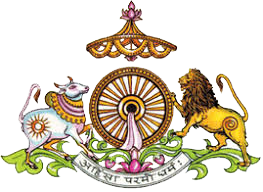

nikkyjain@gmail.com
Date : 19-Oct-2022
Index
अधिकार
Index

| गाथा / सूत्र | विषय |
|---|
| 0001) | मंगलाचरण |
| 0002) | अब आराधनाओं के नाम और स्वरूप को कहते हैं- |
| 0003) | संक्षेप में दो प्रकार की आराधना |
| 0004) | अब जो संक्षेप में दो प्रकार की आराधना कही, उसका हेतु कहते हैं- |
| 0005) | आगे सम्यक्त्व के बिना जो ज्ञान है, वह अज्ञान है - ऐसा कहते हैं- |
| 0006) | अब चारित्र-आराधना में गर्भित तप आराधना को दिखाते हैं- |
| 0007) | अब कहते हैं कि अविरत सम्यग्दृष्टि के भी तपश्चरण महान उपकारी नहीं होता है - |
| 0008) | चारित्राराधना में सभी आराधनाएँ गर्भित |
| 0009) | चारित्र-आराधना, दर्शन-ज्ञान-आराधनापूर्वक होती है । यही बतलाते हैं - |
| 0010) | अब तप का स्वरूप कहते हैं - |
| 0011) | अब ज्ञान-दर्शन-चारित्र का सार कहते हैं - |
| 0014) | सम्पूर्ण जिनागम का सार आराधना |
| 0015) | आराधना की विराधना का फल |
| 0017) | अब आराधना के अतिशय फल को कहते हैं- |
| 0019) | सर्वकाल में आराधना ग्रहण एवं तप क्यों? |
| 0020) | अब उसका दृष्टांत कहते हैं - |
| 0021) | अब उसका सिद्धान्त कहते हैं - |
| 0025) | अब सत्तरह प्रकार के मरणों में से पाँच प्रकार के मरण का वर्णन करने की प्रतिज्ञा करते हैं- |
| 0026) | इन्हीं का संक्षिप्त स्वरूप इसप्रकार है - |
| 0027) | अब जो तीन मरण प्रशंसा योग्य हैं, उन्हें कहते हैं- |
| 0028) | अब पाँच प्रकार के मरणों के स्वामी कहते हैं - |
| 0031) | अब दर्शन-आराधना किसके होती है, वही कहते हैं- |
| 0032) | आगे सम्यग्दृष्टि जीव का स्वभाव कहते हैं- |
| 0034) | अब सूत्र किनके द्वारा कथित हैं, यह कहते हैं- |
| 0035) | इन चारप्रकार के सूत्रकारों के समान और किनका वचन ग्रहण करना, अब यह कहते हैं- |
| 0036) | अब सम्यक्त्वाराधना के धारक का स्वरूप कहते हैं- |
| 0037) | आगे और भी सम्यक्त्वी के कार्य कहते हैं- |
| 0038) | अब उन्हें कहते हैं- |
| 0039) | अब यह कहते हैं कि जो सूत्र के एक पद अथवा एक अक्षर का भी श्रद्धान नहीं करता, वह मिथ्यादृष्टि है- |
| 0040) | आगे मिथ्यादृष्टि का स्वभाव/स्वरूप कहते हैं - |
| 0042) | अब अश्रद्धानी मिथ्यादृष्टि जीव ने बहुत बार बाल-बालमरण किये हैं, वह दिखाते हैं- |
| 0043) | आगे की गाथा में यह कहते हैं कि ज्ञानी को ऐसी बुद्धि करना योग्य है- |
| 0044) | अब सम्यक्त्व के अतिचार कहते हैं- |
| 0045) | अब यहाँ सम्यक्त्व के गुण कहते हैं- |
| 0046) | अब दो गाथाओं में सम्यग्दर्शन की विनय कहते हैं- |
| 0048) | अब सम्यक्त्व के आराधक का स्वरूप कहते हैं- |
| 0050) | अब सम्यक्त्व-आराधना के तीन प्रकार और उनका फल दो गाथाओं द्वारा कहते हैं- |
| 0052) | आगे इन तीन प्रकार की सम्यक्त्व-आराधना के स्वामियों को कहते हैं- |
| 0053) | आगे जो सम्यक्त्वाराधना सहित मरण करते हैं, उनकी गति विशेष कहते हैं- |
| 0054) | आगे जो सम्यक्त्व से भ्रष्ट हो जाते हैं, उनकी गति विशेष दिखाते हैं- |
| 0055) | अब सम्यग्दर्शन के लाभ/माहात्म्य को प्रगट करते हैं- |
| 0057) | अब आगे यह दिखाते हैं कि मिथ्यादृष्टि किसी भी आराधना का आराधक नहीं है- |
| 0058) | आगे मिथ्यात्व के कितने प्रकार हैं, वही कहते हैं- |
| 0059) | आगे मिथ्यात्व का माहात्म्य प्रगट करते हैं- |
| 0061) | और भी मिथ्यात्व के दोष बताने के लिये दृष्टांत कहते हैं- |
| 0063) | मिथ्यादृष्टि संसार में परिभ्रमण करे, सो ठीक ही है । अब यही दिखलाते हैं- |
| 0064) | आगे और भी मिथ्यात्व-जनित दोष कहते हैं- |
| 0066) | इस प्रकार बालमरण और बाल-बालमरण को कहा । अब आचार्य पण्डितमरण का वर्णन करने की प्रतिज्ञा करते हैं - |
| 0067) | अब भक्तप्रत्याख्यानमरण के भेद कहते हैं- |
| 0068) | अब सविचार भक्तप्रत्याख्यानमरण का स्वरूप कहते हैं- |
| 0069-72) | आगे चालीस अधिकारों के नाम कहते हैं- |
अर्ह |
|---|
| 0073-78) | आगे ऐसा पुरुष आराधना के योग्य है तथा ऐसा पुरुष योग्य नहीं है - ऐसा अर्ह नामक अधिकार छह गाथाओं द्वारा कहते हैं- |
लिंग |
|---|
| 0079) | आगे 22 गाथाओं द्वारा लिंगाधिकार कहते हैं - |
| 0082) | आगे यहाँ लिंग के चार प्रकार के भेद हैं, उन्हें कहते हैं- |
| 0083) | अब जो स्त्री पर्याय में संन्यास धारण करने की इच्छा करती हैं, उनका लिंग कहते हैं- |
| 0084) | लिंग धारण करने में क्या गुण प्राप्त होते हैं? इसलिए लिंग ग्रहण करने में गुण दिखलाते हैं- |
| 0085) | आगे निर्ग्रन्थलिंग के और भी गुण कहते हैं- |
| 0086) | आगे और भी निर्ग्रन्थलिंग के गुण कहते हैं- |
| 0087) | आगे नग्नत्व के और भी गुण कहते हैं- |
| 0088) | आगे वस्त्ररहित के और भी गुण प्रगट करते हैं- |
| 0089) | अब कहते हैं - जो अपवाद लिंग को प्राप्त हुआ है, उसके भी अनुक्रम करके शुद्धता होती ही है- |
| 0090) | आगे लिंग नामक अधिकार में केशलोंच का वर्णन पाँच गाथाओं द्वारा करते हैं- |
| 0091) | इसमें और भी दोष दिखाते हैं- |
| 0093) | और भी लोचनजनित गुण कहते हैं- |
| 0095) | अब लिंग का व्युत्सृष्ट शरीरता अर्थात् देह-संस्कार रहितता नामक तीसरा चिह्न तीन गाथाओं द्वारा कहते हैं- |
| 0098) | असंयम होता है और सप्त धातुमय इस देह का स्नान करने से शुचिता भी नहीं होती है । जैसे - |
शिक्षा |
|---|
| 0101) | अब शिक्षा नामक अधिकार त्रयोदश गाथाओं में कहते हैं- |
| 0102) | आगे जिनागम से जो गुण प्रगट होते हैं, उन्हें संक्षेप में कहते हैं- |
| 0103) | अब आत्महित जानने से क्या होता है? वही कहते हैं- |
| 0104) | आगे जो आत्महित नहीं जानता, उसके दोष दिखाते हैं- |
| 0105) | अब आत्महित को जानने वाले के गुण कहते हैं- |
| 0106) | आगे जिनागम से अशुभभावों का संवर/रोकना, उसे दिखाते हैं- |
| 0107) | आगे स्वाध्याय से नवीन-नवीन संवेग की उत्पत्ति का अनुक्रम कहते हैं- |
| 0108) | जिनेन्द्र के आगम-अभ्यास से तथा श्रद्धापूर्वक अनुभवन से निष्कंपता, दृढता धर्म में अचलता भी होती है । वही कहते हैं- |
| 0109) | आगे सर्व तपों में स्वाध्याय तप की प्रधानता दिखलाते हैं- |
| 0112) | स्वाध्याय से गुप्ति होती है, यह कहते हैं - |
| 0113) | अब पर को उपदेश देने में कौन-से गुण प्रगट होते हैं, वही कहते हैं - |
विनय |
|---|
| 0114) | वह विनय पाँच प्रकार की है, वही कहते हैं - |
| 0115) | आगे ज्ञान विनय के भेद कहते हैं - |
| 0116) | अब आगे दर्शन विनय कहते हैं- |
| 0117) | आगे चार गाथाओं में चारित्र विनय को कहते हैं- |
| 0121) | आगे तपोविनय का निरूपण दो गाथाओंे द्वारा कहते हैं - |
| 0123) | अब उपचार विनय नौ गाथाओं द्वारा कहते हैं - |
| 0124) | आगे प्रत्यक्ष काय विनय चार गाथाओं द्वारा कहते हैं - |
| 0128) | आगे दो गाथाओं में वचन संबंधी उपचार विनय को कहते हैं - |
| 0130) | अब मन संबंधी उपचार विनय कहते हैं - |
| 0131) | आगे कायिक, वाचिक, मानसिक जो तीन प्रकार की विनय है, उसके प्रत्यक्ष और परोक्ष ऐसे दो-दो भेद कहते हैं - |
| 0132) | आगे गुरुजनों की ही विनय करना, अन्य की नहीं करना - ऐसा नियम नहीं है, उनकी भी विनय करना - यह कहते हैं - |
| 0133) | आगे विनयहीन के दोष दिखलाते हैं- |
| 0134) | आगे तीन गाथाओं द्वारा विनय का माहात्म्य प्रगट करते हैं- |
समाधि |
|---|
| 0137) | आगे समाधि नामक पाँचवाँ अधिकार दश गाथाओं द्वारा कहते हैं- |
| 0138) | आगे जिसका मन स्थिर नहीं, उसके दोष दिखाते हैं- |
| 0139) | जो दोष होते हैं, उन्हें यहाँ पाँच गाथाओं द्वारा दिखाते हैं- |
| 0144) | आगे और भी कहते हैं - |
अनियतविहार |
|---|
| 0147) | आगे अनियतविहार नामक छठवाँ अधिकार बारह गाथाओं द्वारा कहते हैं- |
| 0148) | आगे दर्शन विशुद्धि गुण कहते हैं- |
| 0149) | स्थितिकरण गुण प्रगट करते हैं - |
| 0150) | आगे नाना देशों में विहार करने के और भी गुण कहते हैं - |
| 0151) | आगे अनेक देशों में विहार से अपने आत्मा का भी धर्म में स्थितिकरण होता है, यह दिखाते हैं - |
| 0152) | आगे अनेक देशों में विहार करने से परीषह सहनरूप भावना होती है, वही कहते हैं- |
| 0153) | अनेक देशों में विहार करने से अतिशयरूप अर्थ में प्रवीणता |
| 0154) | आगे अतिशय रूप अर्थ में कुशलता नामक गुण कहते हैं- |
| 0155) | आगे अन्य प्रकार से भी अतिशय रूप अर्थ में कुशलता दिखाते हैं- |
| 0157) | अब क्षेत्र परिमार्गण जो आराधना के योग्य क्षेत्र का अवलोकन भी अनियत-विहार से होता है, वह दिखाते हैं - |
| 0158) | आगे कहते हैं कि मात्र देशांतर में विहार करने से ही अनियत विहारी नहीं हो जाता, इस तरह भी होते हैं । वह कहते हैं - |
परिणाम |
|---|
| 0159) | आगे परिणाम नामक सातवाँ अधिकार आठ गाथाओं द्वारा कहते हैं- |
| 0160) | अब आत्मा का कल्याण करना उचित है, ऐसे परिणाम करें- |
| 0162) | आगे भक्तप्रत्याख्यान का और भी कारण कहते हैं- |
| 0163) | आगे आराधना करने वाले के परिणाम तीन गाथाओं द्वारा कहते हैं- |
| 0166) | आगे परिणाम के गुण की महिमा कहते हैं - |
उपधित्याग |
|---|
| 0167) | आगे उपधित्याग नामक आठवाँ अधिकार नौ गाथाओं द्वारा कहते हैं - |
| 0171) | आगे पंच प्रकार की शुद्धि कौन-सी है, उन्हें कहते हैं- |
| 0172) | अब और भी प्रकार से पंचशुद्धि को कहते हैं - |
| 0173) | अब पंच प्रकार का विवेक कहते हैं- |
| 0174) | अथवा पंच प्रकार के विवेक निम्न प्रकार से भी जानना - |
| 0175) | अब परिग्रह त्याग के क्रम का उपदेश करते हैं - |
श्रिति |
|---|
| 0176) | आगे श्रिति नामक नौवाँ अधिकार छह गाथाओं द्वारा कहते हैं- |
| 0177) | वह भावश्रिति कैसे प्राप्त हो? वही कहते हैं - |
| 0179) | आगे भावों से पडने वालों की संगति का त्याग करने को कहते हैं- |
| 0180) | आगे शुभ परिणाम का क्रम कहते हैं- |
| 0181) | आगे भावों की श्रिति जो चढने रूप सीयढी, उसे प्राप्त करके क्या करते हैं? वही कहते हैं- |
भावना |
|---|
| 0182) | आगे भावना नामक दशवाँ अधिकार अट्ठाईस गाथा सूत्रों द्वारा कहते हैं- |
| 0184) | आगे त्यागने योग्य जो संक्लेश भावना के भेद कहते हैं- |
| 0185) | अब आगे कंदर्प भावना का निरूपण करते हैं - |
| 0186) | आगे किल्विष भावना को कहते हैं - |
| 0187) | आगे आभियोग्य भावना कहते हैं - |
| 0188) | आगे आसुरी भावना कहते हैं- |
| 0189) | आगे संमोही भावना को कहते हैं- |
| 0190) | आगे जिस साधु के ये पाँच भावनायें होती हैं, उसका फल कहते हैं- |
| 0192) | वह छठी भावना कैसी है, उसे कहते हैं - |
| 0193) | आगे तपोभावना समाधि का उपाय कैसे है? अब वही कहते हैं- |
| 0194) | अब तपोभावना रहित के दोष दिखाते हैं- |
| 0195) | यहाँ दृष्टान्त कहते हैं - |
| 0196-198) | वैसे ही दृष्टांत पूर्वक स्वरूप का उपदेश तीन गाथाओं में कहते हैं - |
| 0199-200) | अब दो गाथाओं द्वारा श्रुतभावना कहते हैं- |
| 0201) | अब सत्त्वभावना चार गाथाओं द्वारा कहते हैं- |
| 0205) | आगे एकत्वभावना दो गाथाओं द्वारा कहते हैं- |
| 0206) | वही दृष्टांत द्वारा कहते हैं- |
सल्लेखना |
|---|
| 0210) | अब छियासठ गाथा सूत्रों द्वारा सल्लेखना नामक ग्यारहवाँ अधिकार कहते हैं- |
| 0211) | अब सल्लेखना के भेद कहते हैं- |
| 0212) | अब बाह्य सल्लेखना का उपाय कहते हैं- |
| 0213) | अब शरीर को कृश करने का कारण जो बाह्य तप, उसे कहते हैं- |
| 0214) | अब अनशन के भेद कहते हैं- |
| 0215) | अब अद्धानशन के भेद कहते हैं- |
| 0216) | अब अवमौदर्य तप को दिखाते हैं- |
| 0218) | अब रस-परित्याग तप को कहते हैं - |
| 0220) | अब रसपरित्याग तप का क्रम कहते हैं- |
| 0222) | तथा - |
| 0223) | आगे वृत्तिपरिसंख्यान नामक तप के निरूपण के लिये चार गाथायें कहते हैं- |
| 0227) | अब काय-क्लेश नामक तप का वर्णन करते हैं - |
| 0233) | आगे विविक्तशयनाशन तप का निरूपण करते हैं- |
| 0234) | और भी कहते हैं - |
| 0235) | और विविक्त वसतिका कैसी हो? वही कहते हैं- |
| 0236) | वह कैसी हो? यह कहते हैं- |
| 0237) | जिस वसतिका में ये दोष न हों, वह दिखाते हैं- |
| 0239) | आगे जो संवर पूर्वक निर्जरा करते हैं, उनकी महिमा कहते हैं- |
| 0241) | आगे निर्जरा के अर्थी साधु को ऐसा तप-आचरण करना योग्य है, ऐसा कहते हैं- |
| 0242) | अब बाह्य तप का गुण कहते हैं- |
| 0251) | अब और भी शरीर सल्लेखना के लिये तप का उपदेश करते हैं- |
| 0256) | वह आचाम्ल क्या है? वही कहते हैं- |
| 0257) | अब भक्त-प्रत्याख्यान का कितना काल है, यह कहते हैंं- |
| 0260) | आगे और विशेष कहते हैं- |
| 0261) | इस प्रकार शरीर सल्लेखना कहकर अब अभ्यंतर सल्लेखना का क्रम कहते हैं- |
| 0262) | अभ्यंतर शुद्धता का अभाव होने से जो दोष होते हैं, वे दिखलाते हैं- |
| 0263) | आगे केवल शुद्धता किसके होती है, यह कहते हैं- |
| 0264) | यहाँ शरीर सल्लेखना का वर्णन करके अब कषाय सल्लेखना का वर्णन करते हैं- |
| 0265) | अब कषायों को कृश करने का उपाय क्षमादि हैं, उन्हें कहते हैं- |
| 0266) | अब कहते हैं कि जो कषाय उत्पन्न होने के मूल कारण हैं, उनका त्याग करना योग्य है- |
| 0269) | जैसे अशुभ अंगोपांग नामकर्म मुख को विरूप करता है, वैसे ही कषाय मुख को विरूप - |
| 0273) | आगे नोकषाय आदि को भी कृश करना श्रेष्ठ है, वही कहते हैं- |
दिशा |
|---|
| 0276) | आगे दिशा नामक अधिकार पाँच गाथाओं द्वारा कहते हैं - |
क्षमण |
|---|
| 0281) | आगे क्षमण नामक तेरहवाँ अधिकार तीन गाथाओं द्वारा कहते हैं- |
अनुशिष्टि |
|---|
| 0284) | आगे अनुशिष्टि/शिक्षा नामक चौदहवाँ अधिकार 105 गाथाओं द्वारा कहते हैं- |
| 0288) | अब नवीन आचार्य को और भी शिक्षा देते हैं- |
| 0301) | अब गण संघ को आठ गाथाओं द्वारा शिक्षा देते हैं - |
| 0308) | वही कहते हैं - |
| 0309) | आगे 26 गाथाओं द्वारा वैयावृत्त्य कहते हैं - |
| 0310) | अब वैयावृत्त्य किस-किस प्रकार से करते हैं, यह कहते हैं - |
| 0312) | जो समर्थ होकर भी वैयावृत्त्य नहीं करते, उनके दोष दो गाथाओं द्वारा दिखाते हैं - |
| 0314) | आगे वैयावृत्त्य करने में जो गुण होते हैं, उन्हें दो गाथाओं द्वारा कहते हैं - |
| 0316-319) | उनमें से गुणपरिणाम नामक गुण कैसे होता है, यह कहते हैं - |
| 0320) | अब वैयावृत्त्य से श्रद्धान नामक गुण होता है, यह कहते हैं - |
| 0321) | जिससे गुणों में अनुराग हो, वह कहते हैं - |
| 0322) | अब वैयावृत्त्य से भक्तिगुण प्रगट होता है, यह कहते हैं - |
| 0323) | अब भक्ति का माहात्म्य कहते हैं - |
| 0324) | अब वैयावृत्त्य से पात्र-लाभ गुण कहते हैं - |
| 0326) | अब वैयावृत्त्य से तप गुण होता है, यह कहते हैं - |
| 0327) | अब वैयावृत्त्य से पूजा नामक गुण होता है, यह कहते हैं - |
| 0328) | अब वैयावृत्त्य करने से धर्म की अव्युच्छित्ति दिखाते हैं - |
| 0335) | अब आगे आठ गाथाओं में आर्यिका की संगति के त्याग की शिक्षा देते हैं - |
| 0343) | भ्रष्ट मुनियों की संगति का त्याग करना योग्य |
| 0345) | वह तन्मयता/एकता कैसे होती है, उसका क्रम कहते हैं - |
| 0347) | अब दुर्जनसंगति त्यागने योग्य है, वह दृष्टान्त द्वारा बतलाते हैं - |
| 0348) | ज्ञान के भेद पाँच हैं- मतिज्ञान, श्रुतज्ञान, अवधिज्ञान, मन:पर्ययज्ञान और केवलज्ञान - |
| 0355) | अब सुजनों की संगति करने से गुण प्राप्त होते हैं, उनको कहते हैं - |
| 0363) | अर्थ - मन को जो अनिष्ट भी लगे और परिपाक काल में जिसका फल मीठा हो - |
| 0364) | अब अपनी प्रशंसा और पर की निंदा करने का त्याग करने की शिक्षा सोलह गाथाओं में कहते हैं- |
| 0369) | अपने गुणों का कीर्तन नहीं करने में गुण होते हैं, अब यह दिखाते हैं - |
| 0371) | अब जो आचरण के द्वारा गुणों का प्रकाशन है, उसकी महिमा कहते हैं - |
| 0375) | अब पर की निंदा करने से जो दोष उत्पन्न होते हैं, उन्हें कहते हैं- |
परगणचर्या |
|---|
| 0389) | आगे परगणचर्या नामक पंद्रहवाँ अधिकार सत्तरह गाथाओं द्वारा कहते हैं- |
| 0390) | अपने संघ में रहने से इतने दोष |
| 0393) | अब दूसरा दोष कठोर वचन बोलना, उसे कहते हैं - |
| 0396) | अब परितापनादि दोषों को कहते हैं- |
| 0399) | अब कारुण्य दोष कहते हैं - |
मार्गणा |
|---|
| 0406) | अब आगे निर्दोष निर्यापकाचार्य को ढूँढने के वर्णनरूप मार्गणा नामक अधिकार सत्तरह गाथाओं द्वारा कहते हैं - |
| 0407) | उस काल का नियम कहते हैं - |
| 0408) | आगे निर्यापक गुरु के अवलोकन के लिये अपने संघ का स्वामीपना त्याग कर विहार करना, उसका अनुक्रम कहते हैं - |
| 0413) | कोई कहे कि आलोचना भी नहीं की तथा गुरुओं के द्वारा दिया गया प्रायश्चित्त भी ग्रहण नहीं किया/नहीं कर पाये तो उन्होंनेआराधना को कैसे ग्रहण कर लिया? वह कहते हैं - |
| 0414) | अब निर्यापक गुरुओं की खोज के लिए जो गमन करते हैं, उनको कौन-कौन से गुण प्रगट होते हैं, यह कहते हैं - |
| 0415) | ऐसे गुरुओं के अवलोकन के लिये आनेवाले साधु को देखकर, संघ में बसने साधु क्या करते हैं? यह कहते हैं - |
| 0416) | अब संघ में अंगीकार करके क्या करते हैं? यह कहते हैं - |
| 0417) | कहाँ-कहाँ परीक्षा करते हैं? यह कहते हैं - |
| 0418) | यही कहते हैं - |
| 0419) | आगे तीन दिन के बाद गुरु क्या करते हैं, वह कहते हैं - |
| 0420) | यदि परीक्षा किये बिना नवीन आगन्तुक मुनि की संगति रहे तो क्या दोष आते हैं? वह कहते हैं - |
सुस्थित |
|---|
| 0423) | अब आगे सुस्थित नामक सत्तरहवाँ अधिकार नब्बे गाथाओं में वर्णन करते हैं । उसमें कैसे आचार्य उपासना करने योग्य हैं, यह कहते हैं- |
| 0425) | अब आचारवान गुण का व्याख्यान ग्यारह गाथाओं द्वारा करते हैं - |
| 0426) | अब और भी प्रकार से आचारवानपना कहते हैं- |
| 0427) | अब दस प्रकार के स्थितिकल्प कहे, उनके नाम कहते हैं- |
| 0430) | यदि गुरु ही आचारवान न हों तो इतने दोष प्रगट होते हैं- |
| 0434) | अब निर्यापक आचार्य का दूसरा आधारवान नामक गुण उन्नीस गाथाओं द्वारा कहते हैं- |
| 0436) | कोई यह कहे कि अगृहीतार्थ जो ज्ञानरहित गुरु, वह क्षपक के सम्यग्दर्शन, सम्यग्ज्ञान, सम्यक्चारित्र और सम्यक् तप का नाश कैसे करते हैं? वह कहते हैं - |
| 0439) | उत्तम देश भी पा लिया तो उत्तम कुल, उत्तम जाति पाना बहुत दुर्लभ है और उत्तम कुल- |
| 0447) | अब जो गृहीतार्थ गुरु हो तो क्या करते हैं? वह कहते हैं - |
| 0448) | अब गृहीतार्थ गुरु और क्या करते हैं? यह कहते हैं - |
| 0453) | अब निर्यापकाचार्य का व्यवहार नामक तीसरा गुण सात गाथाओं में कहते हैं- |
| 0454) | अब पाँच प्रकार के व्यवहार हैं, उनके नाम कहते हैं - |
| 0455) | कोई कहेगा कि जो व्यवहारवान आचार्य, वे अन्य मुनीश्वरों के द्वारा की गई आलोचना/अपराध, उसका प्रायश्चित्त कैसे देते हैं? इसलिए प्रायश्चित्त देने का अनुक्रम कहते हैं - |
| 0457) | जो द्रव्य, क्षेत्र आदि का ज्ञाता तो नहीं हों और प्रायश्चित्त देते हैं, उनके दोष प्रगट होते हैं । यह कहते हैं - |
| 0458) | तो कैसे गुणों के धारक को प्रायश्चित्त ग्रन्थ पढने योग्य हैं? यह कहते हैं - |
| 0460-462) | अब कर्त्ता नामक चौथा गुण चार गाथाओं द्वारा कहते हैं - |
| 0464) | अब अपायोपायविदर्शी नामक पाँचवाँ गुण पंद्रह गाथाओं द्वारा कहते हैं - |
| 0467) | इसप्रकार अपने को सुन्दर चारित्र के धारण करनेवालों में स्थापने के इच्छुक होकर जो मुनि अपना दोष गुरुओं से नहीं कहें तो गुरु क्या करते हैं? यह कहते हैं - |
| 0468) | वही कहते हैं - |
| 0472) | पश्चात् क्या करते हैं - |
| 0479) | अब निर्यापकाचार्य का अवपीडक नामक छठवाँ गुण बारह गाथाओं में कहते हैं - |
| 0482) | वह कहते हैं- |
| 0483) | अब अवपीडक गुरु कैसे होते हैं, यह कहते हैं - |
| 0484) | अब आगे कहते हैं कि जो हितु हो, वह जैसे हित होता जाने, वैसी प्रवृत्ति कराके हित में जोड देता है- |
| 0491) | अब अपरिस्रावी नामक सातवाँ गुण दश गाथाओं में वर्णन करते हैं- |
| 0495) | साधु का त्याग कैसे हुआ? यह कहते हैं - |
| 0496) | अब आत्मपरित्याग को कहते हैं- |
| 0497) | अब गण का त्याग कैसे किया? यह कहते हैं- |
| 0498) | अब संघ का भी त्याग होता है । यह कहते हैं- |
| 0499) | अब मिथ्यात्व की आराधना का प्रतिपादन करते हैं- |
| 0501) | आगे निर्यापक नामक आठवाँ गुण बारह गाथाओं में कहते हैं- |
| 0504) | ऐसे आचार्य हों, वे ही रक्षा करते हैं । यह कहते हैं- |
| 0505) | आगे श्रुतज्ञान की महिमा कहते हैं - |
| 0511) | अब कथन का उपसंहार करते हैं - |
उपसंपत |
|---|
| 0513) | आगे उपसंपत नामक अठारहवाँ अधिकार छह गाथाओं द्वारा वर्णित करते हैं - |
| 0515) | आचार्य श्रेष्ठ, उनसे ऐसी विनती करते हैं - |
परीक्षा |
|---|
| 0519) | अब परीक्षा नामक उन्नीसवाँ अधिकार दो गाथाओं में कहते हैं - |
प्रतिलेखन |
|---|
| 0521) | आगे प्रतिलेखन नामक बीसवाँ अधिकार दो गाथाओं में कहते हैं - |
| 0522) | क्या देखते हैं, वह कहते हैं - |
आपृच्छा |
|---|
| 0523) | अब आपृच्छा नामक अधिकार एक गाथा में कहते हैं - |
प्रतीच्छन |
|---|
| 0524) | आगे प्रतीच्छन नामक बाईसवाँ अधिकार तीन गाथाओं में कहते हैं- |
आलोचना |
|---|
| 0527) | आगे आलोचना नामक तेईसवाँ अधिकार उनचालीस गाथाओं द्वारा कहते हैं - |
| 0529) | विषय-कषायों को जीतकर क्या कर्त्तव्य है, यह कहते हैं - |
| 0530) | हमारा रत्नत्रय निरतिचार है तो अब गुरुओं से क्या निवेदन करूँ, ऐसा मानना योग्य नहीं, ऐसा कहते हैं - |
| 0533) | वही दृष्टान्तपूर्वक कहते हैं - |
| 0536) | मन-वच-काया की प्रवृेत्त में या उनकि खाटिि उयिागि- |
| 0539) | अब दोनों प्रकार की आलोचना का स्वरूप कहते हैं - |
| 0540) | अब विशेष आलोचना को कहते हैं- |
| 0541) | अब शल्य का निवारण करने में गुण और शल्यसहित रहने में दोष दिखाते हैं- |
| 0545) | समिति, गुप्ति में अनादर करना, यह चारित्रशल्य है । द्रव्यशल्य भी तीन प्रकार की है - दासी- |
| 0563) | अब किस स्थान में आलोचना करें, यह कहते हैं - |
| 0565) | वे आचार्य ऐसे रहकर आलोचना ग्रहण करें, वह कहते हैं - |
अवलोकन |
|---|
| 0567) | आगे आलोचना के गुण-दोषों का अवलोकन नामक चौबीसवाँ अधिकार अडसठ गाथासूत्रों में कहते हैं - |
| 0568) | अब आकम्पित दोष को छह गाथाओं द्वारा कहते हैं - |
| 0570) | उसी को दृष्टांत द्वारा कहते हैं- |
| 0573-577) | अब अनुमानित नामक दूसरे दोष का छह गाथाओं द्वारा वर्णन करते हैं - |
| 0579) | अब दृष्ट नामक तीसरा दोष कहते हैं - |
| 0582) | अब बादर नामक आलोचना के चौथे दोष को तीन गाथाओं में कहते हैं - |
| 0584) | दृष्टान्त |
| 0585) | अब चार गाथाओं द्वारा सूक्ष्म नामक पाँचवाँ दोष कहते हैं - |
| 0588) | अब इस दोष का दृष्टान्त कहते हैं - |
| 0589) | अब आलोचना का छन्न नामक छठवाँ दोष छह गाथाओं द्वारा कहते हैं- |
| 0592) | उसका दृष्टान्त कहते हैं - |
| 0593) | और भी दृष्टान्त कहते हैं- |
| 0595) | अब शब्दाकुलित नामक सातवाँ दोष तीन गाथाओं द्वारा कहते हैं - |
| 0598-601) | अब बहुजन नामक दोष पाँच गाथाओं द्वारा कहते हैं - |
| 0603) | अब अव्यक्त नामक दोष कहते हैं- |
| 0605) | सो यह आलोचना कैसी है, उसका दृष्टान्त कहते हैं - |
| 0606) | अब तत्सेवी नामक दसवाँ दोष कहते हैं - |
| 0612) | अब आलोचना की विधि क्या है, वह कहते हैं - |
| 0613-619) | यही आगे कहते हैं - |
| 0620) | उसमें इनका अर्थ भी नहीं है । ये गाथायें छपी हुई पुस्तक में हैं । इनमें अतिचारों के 20 भेद बताये हैं - |
| 0621) | यदि आलोचना से भाव शुद्ध नहीं करते तो उसके दोष दिखाते हैं - |
| 0622) | अब क्षपक की आलोचना हो चुकी, तब गुरु को क्या करना योग्य है, यह कहते हैं - |
| 0624) | बडे या छोटे कार्य के संबंध में तीन बार पूछने का मार्ग है । उसीप्रकार आलोचना की सरलता- |
शैय्या |
|---|
| 0638) | अब आगे शय्या नामक पच्चीसवाँ अधिकार सात गाथाओं में कहते हैं- |
| 0640) | तो कैसी वसतिका में कैसे तिष्ठे/रहें - यह कहते हैं- |
| 0642) | और कैसी हो, यह कहते हैं - |
संस्तर |
|---|
| 0645) | अब संस्तर नामक छब्बीसवाँ अधिकार सात गाथाओं में कहते हैं - |
| 0646) | अब भूमिसंस्तर कैसा होता है, यह कहते हैं - |
| 0647) | आगे शिलामय संस्तर कहते हैं - |
| 0648) | अब फलकमय संस्तर कहते हैं - |
| 0649) | अब तृणमय संस्तर को कहते हैं- |
निर्यापक |
|---|
| 0652) | अब निर्यापक नामक सत्ताईसवाँ अधिकार ब्यालीस गाथाओं में कहते हैं - |
| 0654) | अब अडतालीस मुनि कैसे-कैसे/क्या-क्या उपकार करते हैं, यह कहते हैं- |
| 0659) | कैसी कथा कहें, वही कहते हैं - |
| 0661) | अब इन चार कथाओं का स्वरूप कहते हैं - |
| 0663) | यदि विक्षेपिणी कथा करें, तो क्या दोष आता है, यह कहते हैं - |
| 0669) | उस थाल में से योग्य आहार और पेय क्षपक के लिए ले चलने हेतु कहेंगे । इसप्रकार याचना किये बिना आहार- |
| 0670) | अब अन्य निर्यापक क्या करते हैं, वह कहते हैं - |
| 0676) | यही कहते हैं - |
| 0678) | अब जघन्य का नियम कहते हैं- |
| 0679) | इसी का पाठान्तर कहते हैं - |
| 0680) | एक निर्यापक हो तो क्या दोष आता है? यह कहते हैं - |
| 0681) | अब एक मुनि निर्यापक होवे तो क्या दोष कहे, वह कैसे होगा? यह कहते हैं - |
| 0683) | अब एक मुनि वैयावृत्त्य करनेवाला हो तो क्षपक के व्यसन/दु:ख होता है, उसे कहते हैं - |
| 0684) | अब उड्डाह दोष को कहते हैं - |
| 0685) | अब निर्यापकरहित के दुर्गति होगी - ऐसा दोष कहते हैं - |
प्रकाशन |
|---|
| 0695) | अब प्रकाशन नामक अट्ठाईसवाँ अधिकार छह गाथाओं में कहते हैं - |
आहार की हानि |
|---|
| 0701-702) | अब आगे क्रम से आहार की हानि नामक उनतीसवाँ अधिकार पाँच गाथाओं में कहते हैं - |
प्रत्याख्यान |
|---|
| 0706) | अब तीन आहार के त्यागरूप प्रत्याख्यान नामक तीसवाँ अधिकार दश गाथाओं में कहते हैं । उनमें पहले पान आहार के भेद कहते हैं - |
| 0710) | क्षपक, उनके योग्य निर्यापक गुरु का व्यापार दिखाते हैं - |
क्षामण |
|---|
| 0716) | अब क्षामण नामक इकतीसवाँ अधिकार चार गाथाओं में कहते हैं - |
क्षपण |
|---|
| 0720) | अब क्षपण नामक बत्तीसवाँ अधिकार छह गाथाओं में कहते हैं - |
अनुशिष्टि |
|---|
| 0726) | अब अनुशिष्टि नामक तेतीसवाँ अधिकार सात सौ सत्तर गाथाओं में कहते हैं । उनमें से चार गाथाओं में सामान्य शिक्षा कहते हैं - |
| 0727) | कर्णजाप कहते हैं । अब वही कहते हैं - |
| 0730) | अब मिथ्यात्व का वमन ग्यारह गाथाओं में कहते हैं- |
| 0734) | अब यहाँ कोई कहेगा - मिथ्यात्व का त्याग तो पहले ही करके मुनिव्रत धारा था, अब यहाँ मिथ्यात्व के त्याग के उपदेश का क्या प्रयोजन है? उसका उत्तर कहते हैं- |
| 0739) | वेैसे ही कोई कहे कि - एक मिथ्यात्व हमारे को है तो रहने दो । मैं तो दुर्धर चारित्र धारण करता हूँ । वह चारित्र मुझे संसार के दु:खों से निकालने में समर्थ है । ऐसी आशंका करते हैं? ऐसा नहीं है, यह दिखाते हैं- |
| 0741) | अब नौ गाथाओं में सम्यक्त्व की शिक्षा देते हैं- |
| 0750) | अब नौ गाथाओं द्वारा जिनेन्द्रादिक की भक्ति की महिमा कहते हैं- |
| 0759) | अब पंच नमस्कार का उपदेश छह गाथाओं द्वारा कहते हैं- |
| 0763) | अब कोई यह आशंका करेगा कि पंच नमस्कार मंत्र ही संसार का नाश करने में समर्थ है तो सम्यग्दर्शन, सम्यग्ज्ञान, सम्यक्चारित्र - इनको मोक्षमार्ग कहा, यह कहना विरुद्ध हो जायेगा? उसका उत्तर - |
| 0766) | अब सोलह गाथाओं में ज्ञानोपयोग का वर्णन करते हैं- |
| 0782) | अब अहिंसा महाव्रत का उपदेश सैंतालीस गाथाओं में करते हैं- |
| 0813) | आगम में इस विषय का ऐसा विवेचन है - |
| 0817) | अब जीवगत आधार के एक सौ आठ भेद कहते हैं- |
| 0819) | होते हैं- |
| 0820) | अब निक्षेप के चार भेदों को कहते हैं - |
| 0822) | अब अहिंसा धर्म की रक्षा का उपाय कहते हैं- |
| 0829) | अब सत्यमहाव्रत को तीस गाथाओं में कहते हैं- |
| 0830) | आगे चार प्रकार के असत्यवचन कहते हैं- |
| 0831) | यही गोम्मट्टसार ग्रन्थ में कहा है- |
| 0835) | अर्थ - विद्यमान वस्तु को अन्य जातिरूप कहना, यह तीसरा असत्यवचन है । जैसे - |
| 0836) | अब गर्हितवचन का स्वरूप कहते हैं- |
| 0837) | अब सावद्यवचन का स्वरूप कहते हैं- |
| 0838) | अब अप्रियवचन का स्वरूप कहते हैं- |
| 0839) | अब चार प्रकार के असत्यवचन त्यागरूप हैं, यह कहते हैं- |
| 0840) | अब सत्य बोलने की प्रेरणा देते हैं - |
| 0859) | अब चौबीस गाथाओं में अचौर्य नामक व्रत के उपदेश का वर्णन करते हैं- |
| 0863) | अब लोभ के बढने से क्या दोष होते हैं, यह कहते हैं - |
| 0883) | अब दो सौ इकतालीस गाथाओं में ब्रह्मचर्य नामक महाव्रत का वर्णन करते हैं । उनमें से पाँच गाथाओं में सामान्य ब्रह्मचर्य का उपदेश देते हैं- |
| 0884) | अब वह ब्रह्मचर्य पालने योग्य क्या है? वही कहते हैं - |
| 0885) | दस प्रकार के अब्रह्म के त्याग से दस प्रकार का ब्रह्मचर्य होता है । इसलिए अब ब्रह्मचर्य के दस भेदों को कहते हैं - |
| 0888) | अब काम से विरक्त होने का उपाय कहते हैं- |
| 0889) | अब इस जीव को उत्पन्न हुआ जो परिणामों में काम का विकार, वह क्या-क्या दोष करता है । उन कामकृत दोषों को पंचावन गाथाओं में कहते हैं - |
| 0899) | वे दश वेग कैसे हैं, यह कहते हैं- |
| 0905) | अर्थ - सूर्य की अग्नि तो दिवस में ही दग्ध करती है - आताप करती है; लेकिन काम- |
| 0944) | अब पैंसठ गाथाओं में स्त्रीकृत दोषों को कहते हैं - |
| 0975) | किस-किस प्रकार से पुरुष का चित्त हरती है, यह कहते हैं- |
| 1009) | अब ब्रह्मचर्य व्रत के कथन में अडसठ गाथाओं में अशुचित्व का वर्णन करते हैं- |
| 1010) | इन ग्यारह अधिकारों का चिंतवन करना । उनमें बीज को तीन गाथाओं द्वारा कहते हैं- |
| 1013) | अब शरीर की उत्पत्ति क्रम का पाँच गाथाओं में निरूपण करते हैं- |
| 1018) | अब जहाँ यह देह उपजी, उस देह के क्षेत्र को तीन गाथाओं में कहते हैं - |
| 1021) | अब जिस आहार से देह वृद्धि को प्राप्त हुआ, उस आहार को पाँच गाथाओं में कहते हैं- |
| 1026) | अब शरीर के जन्म को दो गाथाओं में कहते हैं- |
| 1028) | अब शरीर की वृद्धि को चार गाथाओं में कहते हैं - |
| 1032) | राधि इत्यादि महानिंद्य वस्तुएँ अपने मुख में डाली हैं । बाल्य-अवस्था में अज्ञानी बालक ने खाद्य- |
| 1033) | अब शरीर के अवयवों को तेरह गाथाओं द्वारा बतलाते हैं- |
| 1046) | अब देह से मैल निकलता है । यह तीन गाथाओं में कहते हैं- |
| 1049) | अब दस गाथाओं में अशुचिता कहते हैं- |
| 1059) | अब तीन गाथाओं में देह में व्याधि दिखलाते हैं- |
| 1062) | अब देह की अध्रुवता ग्यारह गाथाओं में कहते हैं- |
| 1064) | अब संयोग की अध्रुवता भी दो गाथाओं में दिखाते हैं- |
| 1066) | अब शरीर का अध्रुवपना कहते हैं- |
| 1073) | अब अशुचिपना चार गाथाओं में कहते हैं- |
| 1077) | अब वृद्ध सेवा नामक ब्रह्मचर्य का अधिकार पंद्रह गाथाओं में कहते हैं- |
| 1092) | अब बाईस गाथाओं में स्त्री-संसर्ग से जो दोष उत्पन्न होते हैं, उन्हें कहते हैं- |
| 1114) | अब जो स्त्रियों के वश नहीं होते, उनकी महिमा का दश गाथाओं में उपदेश करते हैं- |
| 1117) | अर्थ - जैसे समुद्र में अवगाहन/प्रवेश करे और समुद्र के जल से आर्द्रपना न हो - |
| 1124) | अब परिग्रहत्याग नामक व्रत को सडसठ गाथाओं द्वारा कहते हैं - |
| 1127) | इसे दृष्टान्त द्वारा समझाते हैं - |
| 1129) | संबंधी बडप्पन का अभिमान करना, वह गारव है । जिस समय राग, लोभ, मोह, संज्ञा, गारव - |
| 1160) | है और चोर-लुटेरों के भय से उत्पथ मार्ग/गुप्त या ऊबड-खाबड मार्ग से भागता है, जल के द्रह - |
| 1169) | अर्थ - वस्त्रादि परिग्रह ग्रहण करने में, रखने में, पसारने में, उत्कर्षण/बढाने में, इधर- |
| 1195) | अब मनोगुप्ति तथा वचनगुप्ति को कहते हैं- |
| 1196) | आगे कायगुप्ति कहते हैं- |
| 1199) | अब पंच समिति के निरूपण में ईर्यासमिति का निरूपण करते हैं - |
| 1200) | अब भाषासमिति का वर्णन करते हैं - |
| 1201) | अब सत्यवचन के दश भेद कहते हैं - |
| 1202) | श की भाषा में वस्तु को कहना वह जनपदसत्य है । जनपद नाम देश का है अथवा आर्य- |
| 1203) | अब आमंत्रणादि अनुभयवचन के नौ भेद कहते हैं - |
| 1214) | इसलिए अब अहिंसा महाव्रत की पाँच भावनाएँ कहते हैं - |
| 1215) | अब सत्यमहाव्रत की पाँच भावनाएँ कहते हैं - |
| 1216) | आगे अचौर्य महाव्रत की पाँच भावनाएँ कहते हैं- |
| 1218) | अब ब्रह्मचर्य महाव्रत की पाँच भावनाएँ कहते हैं - |
| 1219) | अब परिग्रहत्याग महाव्रत की पाँच भावनाएँ कहते हैं - |
| 1220) | अब भावना की महिमा कहते हैं - |
| 1223) | अब सत्तर गाथाओं में निदान शल्य को कहते हैं - |
| 1224) | अब प्रशस्तनिदान का निरूपण करते हैं - |
| 1225) | अब अप्रशस्तनिदान को कहते हैं - |
| 1227) | अब भोगकृतनिदान का निरूपण करते हैं - |
| 1233) | अब सम्यग्ज्ञानी किसकी वांछा करते हैं, वह कहते हैं - |
| 1236) | अब कुल के अभिमान के अभाव के लिये उपाय कहते हैं - |
| 1260) | भावार्थ - दु:ख तो सुख बिना ही होता है और सुख, दु:ख बिना है ही नहीं । क्षुधा- |
| 1279) | अब इन्द्रिय जनित सुखों का शत्रुपना दिखाते हैं - |
| 1284) | अब देवलोकादि के वस्त्र, अलंकार, भोजनादि भी दु:ख निवारण करने में समर्थ नहीं - ऐसा कहते हैं - |
| 1293) | गाथाओं में कहते हैं - |
| 1294) | कर आये हैं और मिथ्याशल्य के सभी दोषों का भी पूर्व में वर्णन कर आये है । इसलिए माया- |
| 1295) | इस प्रकार मायाशल्य से उत्पन्न दोष कहे । अब मिथ्याशल्य कृत दोष एक गाथा में कहते हैं - |
| 1296) | इस प्रकार मिथ्याशल्य का वर्णन किया । अब ऐसे साधु समूह निर्वाणपुरी में प्रवेश करते हैं, यह कहते हैं- |
| 1309) | अब कुशील जाति के भ्रष्ट मुनि का स्वरूप कहते हैं - |
| 1313) | अर्थ - और वे कुशील-भ्रष्ट मुनि आशारूपी पर्वत के शिखर से गिरकर मन- |
| 1316) | अब यथाछंदजाति के भ्रष्ट मुनि का स्वरूप कहते हैं - |
| 1321) | अब संसक्त का स्वरूप कहते हैं - |
| 1368) | इस प्रकार इन्द्रिय जनित दोषों को दिखाकर अब क्रोध कृत दोष को पंद्रह गाथाओं में दिखाते हैं - |
| 1383) | अब सात गाथाओं में मान कषाय के दोष कहते हैं- |
| 1390) | अब सात गाथाओं में मायाचार का स्वरूप कहते हैं - |
| 1403) | अब सामान्य से इन्द्रिय कषायों का स्वरूप सत्ताईस गाथाओं में वर्णन करते हैं- |
| 1429) | अर्थ - ऐसे इन्द्रियों के विषयों को इस लोक - परलोक में दोषकारी विचारकर - |
| 1436) | अब मानकृत परिणाम को जीतने की भावना कहते हैं - |
| 1440) | अब मायाचार कृत दोषों का स्वरूप कहते हैं - |
| 1445) | अब लोभ कषाय को तीन गाथाओं में कहते हैं - |
| 1448) | अब निद्रा पर विजय करने के उपाय को दश गाथाओं में दर्शाते हैं- |
| 1449) | कोई यह कहे कि "निद्रा नामक कर्मोदय से निद्रा आती है, उसे कैसे जीतें?" उसका समाधान करते हैं - |
| 1450) | अब अन्य प्रकार से निद्रा जीतने के कारणों को कहते हैं - |
| 1463) | अब जो आलस के कारण तप नहीं करते, उनके दोष दिखाते हैं - |
| 1464) | उस साधु को माया कषाय जनित भी दोष लगता है, ऐसा कहते हैं - |
| 1465) | भावार्थ - जो धर्मसेवन में मायाचार करता है, वह धर्म का तिरस्कार करता है - |
| 1467) | अब तपश्चरण के गुणों को दिखाते हैं - |
सारणा |
|---|
| 1499-1500) | अब उन्नीस गाथाओं द्वारा सारणा जो धर्म से चलायमान होते हुए की रक्षा करने का चौंतीसवाँ अधिकार कहते हैं- |
| 1503) | वाली वेदना उत्पन्न हो जाये तो क्या करना? वही कहते हैं - |
| 1514) | अब सारणा जो रत्नत्रय की रक्षा उसका उपाय कहते हैं - |
कवच |
|---|
| 1518) | अब कवच नामक पैंतीसवें अधिकार का वर्णन एक सौ चौहत्तर गाथाओं में करते हैं - |
| 1571) | पूर्व में नरक में जो वेदना भोगी उसे दिखाते हैं - |
| 1590) | भो मुने! जहाँ अनन्तानन्त काल परिभ्रमण किया ऐसी तिर्यंचगति के दु:खों का अब ऐसा चिन्तवन करो, ऐसा कहते हैं - |
| 1597) | अब देव-मनुष्यपर्याय में जो दु:ख भोगे, उन्हें दिखाते हैं - |
समता |
|---|
| 1692) | अब चौदह गाथाओं में समता नामक छत्तीसवाँ अधिकार कहते हैं - |
ध्यान |
|---|
| 1706) | अब ध्यान नामक सैंतीसवाँ अधिकार दो सौ सात गाथाओं में कहते हैं । उसमें सामान्य शुभध्यान को बारह गाथाओं में कहते हैं - |
| 1707) | अब शुभध्यान में प्रवर्तने के इच्छुक का परिकर/सामग्री दिखाते हैं - |
| 1712) | अब रौद्रध्यान का स्वरूप संक्षेप में कहते हैं - |
| 1713) | ग्राम, पृथ्वी, आकाश, काल, पुद्गल के अभाव को कहने वाले ज्ञानाद्वैतवादी कहते हैं - |
| 1720) | अब चार प्रकार के धर्मध्यान में से आज्ञाविचय नाम के धर्मध्यान को कहते हैं - |
| 1724) | अब द्वादशभावना का कथन एक सौ सत्तावन गाथाओं में कहते हैं - |
| 1738) | अब अशरण भावना अठारह गाथाओं में कहते हैं - |
| 1756) | मिथ्यात्व से मोहित हैं; क्योंकि आयु का क्षय होने से मरण होगा ही, आयु देने में कोई देव- |
| 1763) | अब अन्यत्व भावना चौदह गाथाओं में कहते हैं - |
| 1769) | की मुट्ठी के समान संबंध को प्राप्त हो रहा है । जैसे भिन्न-भिन्न हैं स्वभाव जिनके, ऐसे बालू- |
| 1772) | अब शत्रु-मित्र का लक्षण कहते हैं - |
| 1777) | अब संसार भावना का अठ्ठाईस गाथाओं में वर्णन करते हैं - |
| 1805) | अब लोकानुप्रेक्षा पन्द्रह गाथाओं में कहते हैं - |
| 1820) | अब अशुभ भावना उसे अशुचि भी कहते हैं, उसका आठ गाथाओं में वर्णन करते हैं- |
| 1821) | अब धन से उत्पन्न अनर्थ को दिखलाते हैं - |
| 1822) | अब काम का अशुभपना कहते हैं - |
| 1823) | अब देह का अशुभपना दिखलाते हैं - |
| 1828) | अब चौदह गाथाओं द्वारा आस्रव भावना का वर्णन करते हैं - |
| 1830) | अर्थ - जैसे समुद्र के बीच छिद्ररहित फूटी नाव में जल प्रवेश करता है, तैसे ही संसार- |
| 1831) | अब कर्म होने के योग्य पुद्गल द्रव्य समस्त लोक में भरे हैं, ऐसा दिखाते हैं - |
| 1832) | अब मिथ्यात्वादि को कहते हैं - |
| 1833) | अब असंयम को कहते हैं - |
| 1834) | अब राग-द्वेष का माहात्म्य दिखाते हैं - |
| 1842) | के विशिष्ट क्षयोपशम से उत्पन्न शुभराग, उससे परम भट्टारक महादेवाधिदेव परमेश्वर अर्हंत- |
| 1852) | अब निर्जरा भावना बारह गाथाओं में कहते हैं - |
| 1861) | अब यहाँ कोई कहे कि तप का ही आचरण करना, फिर संवर करने से क्या प्रयोजन है? इस शंका का निवारण करते हुए कहते हैं - |
| 1864) | अब धर्मभावना को नव गाथाओं में कहते हैं - |
| 1873) | अब आठ गाथाओं में बोधिदुर्लभ भावना का वर्णन करते हैं - |
| 1881) | अब धर्म ध्यान के प्रकरण में आये द्वादश भावनाओं का स्वरूप का वर्णन करके प्रकरण को समेटते हैं - |
| 1882) | अब धर्मध्यान के ध्याता के और भी आलंबन कहते हैं - |
| 1885) | अब बारह गाथाओं में शुक्लध्यान का वर्णन करते हैं - |
| 1887) | अब पृथक्त्ववितर्कवीचार नाम का प्रथम ध्यान को तीन गाथाओं में कहते हैं - |
| 1890) | अब एकत्ववितर्क अवीचार नाम के द्वितीय शुक्लध्यान को तीन गाथाओं में कहते हैं - |
| 1893) | अब सूक्ष्मक्रिया अप्रतिपाती नाम का तीसरे शुक्लध्यान को दो गाथाओं में कहते हैं - |
| 1895) | अब समुच्छिन्न क्रिया नाम के चौथे ध्यान को दो गाथाओं में कहते हैं - |
| 1897) | अब ग्यारह गाथाओं में ध्यान का फल कहते हैं - |
| 1898) | अब ध्यान का माहात्म्य का वर्णन करते हैं - |
लेश्या |
|---|
| 1913) | अब अठारह गाथाओं में लेश्या नाम का अडतीसवें अधिकार का वर्णन करते हैं - |
| 1917) | इन छहों लेश्यावालों के जो कार्य हैं, उनका दृष्टांत एेसा जानना -- |
| 1925) | अब लेश्या के भेद से आराधना में भेद होता है, उनका निरूपण करते हैं - |
आराधना के फल |
|---|
| 1931) | अब आराधना के फल का उन्नचालीसवाँ अधिकार इकतालीस गाथाओं में वर्णन करते हैं - |
विजहना |
|---|
| 1973) | अब क्षपक का मृतक शरीर रहा, उसे क्षेपने के विधान का वर्णन जिसमें है - ऐसा विजहना नामक चालीसवाँ अधिकार पैंतीस गाथाओं द्वारा कहते हैं - |
| 1975) | अब निषीधिका कैसी होती है, उसे कहते हैं - |
| 1981) | हो तो एेसा जानना कि संघ में कलह होगी । पूर्वदिशा में प्राप्त हो तो संघ में भेद पयडेगा -- |
| 1982) | जागते रहें, यह कहते हैं - |
| 1983) | कैसे मुनि बन्धन करते हैं, यह कहते हैं - |
| 1984) | यदि अंगुष्ठ के भाग का छेदन-बन्धन नहीं करें तो क्या दोष आयेंगे? ऐसी शंका होने पर दोष दिखाते हैं - |
| 1987) | पश्चात् क्या करना, यह कहते हैं - |
| 1991) | उस क्षेत्र में घास-तृण न हो तो भूमि को सम कैसे करना, यह कहते हैं - |
| 1993) | अब क्षपक के शरीर को कैसे स्थापन करना, यह कहते हैं - |
| 1994) | मृतक के पास मयूरपिच्छिकादि उपकरण स्थापने में गुण दिखाते हैं - |
| 1995) | इस आराधना के धारक के मरण से निमित्त विचारिए तो संघ का भविष्य भी कितना (कैसा) है - यह निश्चय हो जाता है, यह कहते हैं - |
| 2001) | अब संघ के मुनि वहाँ क्षपक की समाधिमरण करने की वसतिका में क्या करते हैं, यह कहते हैं - |
| 2008) | अब सविचारभक्तप्रत्याख्यान मरण की महिमा नौ गाथाओं में कहते हैं - |
| 2013) | अब जो आराधना करने वाले के दर्शन करने जाते हैं, उनकी महिमा कहते हैं - |
| 2014) | अब क्षपक का तीर्थपना दिखाते हैं- |
| 2017) | अब पंडितमरण का दूसरा भेद अविचारभक्तप्रत्याख्यानमरण का उन्नीस गाथाओं में वर्णन करते हैं । उनमें से तीन गाथाओं में अविचारभक्तप्रत्याख्यानमरण का सामान्य भेद का वर्णन करते हैं - |
| 2020) | अब निरुद्धभक्तप्रत्याख्यानमरण पंच गाथाओं में कहते हैं । उनमें निरुद्ध मुनि ऐसे होते हैं - |
| 2025) | अब निरुद्धतर नाम के दूसरे भेद को चार गाथाओं में वर्णन करते हैं - |
| 2029) | अब परमनिरुद्धभेद को सात गाथाओं द्वारा वर्णन करते हैं - |
| 2033) | अब कोई शंका करे कि अल्पकाल में निर्वाण कैसे होगा? इस शंका को दूर करने के लिये आगे कहते हैं - |
| 2036) | अब पंडितमरण का दूसरा भेद इंगिनीमरण, उसे चौंतीस गाथाओं में कहते हैं - |
| 2053) | अर्थ - यद्यपि भयानक है देखना जिनका, महाभयंकर अनेक विक्रिया करते हुए भूतराक्षस- |
| 2070) | अब पंडितमरण का तीसरा भेद प्रायोपगमन, उसे नौ गाथाओं में कहते हैं - |
| 2079) | अब पंडितमरण में प्रायोपगमन मरण द्वारा जो आत्मकल्याण किया, उनका छह गाथाओं में वर्णन करते हैं - |
| 2080) | अब उनके ही उदाहरण देते हैं - |
| 2081) | ही है । इसमें पृ. 774 गा. 2972 से 2077 तक का एक साथ अर्थ दिया है - |
| 2085) | बालपंडित मरण देशव्रती श्रावक के होता है, अब उसका वर्णन दश गाथाओं के माध्यम से करते हैं - |
| 2086) | यही लब्धिसार नामक सिद्धांत ग्रन्थ में कहा है - |
| 2087) | अब पंच अणुव्रतों के नाम कहते हैं - |
| 2088) | अब तीन प्रकार के गुणव्रतों के नाम कहते हैं - |
| 2089) | अब चार प्रकार के शिक्षाव्रतों को कहते हैं - |
| 2090) | चक्की, चूल्हा, ओखली, बुहारी, पानी का परिंडा साफ करना, द्रव्य का उपार्जन - |
| 2095) | अब पंडितपंडितमरण को बहत्तर गाथाओं में कहते हैं - |
| 2096) | अब ध्यान के बाह्य परिकर को कहते हैं - |
| 2105) | हो छत्तीस प्रकृतियों का नाश करता है । वे छत्तीस प्रकृतियाँ कौन- सी हैं, यह कहते हैं -- |
| 2124) | के स्वामीपने को प्राप्त होने के बाद मन, वचन, काय के निमित्त से आत्मप्रदेशों का हलन- |
| 2126) | मन-वचन योग में रहकर बादरकाययोग को सूक्ष्म करते हैं और सूक्ष्मकाययोग में रहकर मन- |
| 2157) | उसे ही और कहते हैं - |
| 2160) | अब अतीन्द्रिय सुख का स्वरूप कहते हैं - |
| 2167) | अब आराधना की महिमा तथा ग्रन्थ के अन्त में ग्रन्थकर्त्ता का नाम प्रगट करके तथा अन्त मंगल को दश गाथाओं में वर्णन करके शास्त्र को पूर्ण करते हैं - |

!! श्रीसर्वज्ञवीतरागाय नम: !!
श्रीमद्-शिवाचार्य कृत
श्री
भगवती आराधना
मूल प्राकृत गाथा, हिन्दी पद्यानुवाद और टीका सहित
आभार : हिन्दी टीका -- पंडित सदासुखदास जी; हिन्दी पद्यानुवाद -- पण्डित अभयकुमारजी शास्त्री, देवलाली
🏠
!! नम: श्रीसर्वज्ञवीतरागाय !!
ओंकारं बिन्दुसंयुक्तं नित्यं ध्यायन्ति योगिनः
कामदं मोक्षदं चैव ॐकाराय नमो नम: ॥1॥
अविरलशब्दघनौघप्रक्षालितसकलभूतलकलंका
मुनिभिरूपासिततीर्था सरस्वती हरतु नो दुरितान् ॥2॥
अज्ञानतिमिरान्धानां ज्ञानाञ्जनशलाकया
चक्षुरुन्मीलितं येन तस्मै श्रीगुरवे नम: ॥3॥
॥ श्रीपरमगुरुवे नम:, परम्पराचार्यगुरुवे नम: ॥
सकलकलुषविध्वंसकं, श्रेयसां परिवर्धकं, धर्मसम्बन्धकं, भव्यजीवमन: प्रतिबोधकारकं, पुण्यप्रकाशकं, पापप्रणाशकमिदं शास्त्रं श्री-भगवती-आराधना नामधेयं, अस्य मूल-ग्रन्थकर्तार: श्री-सर्वज्ञ-देवास्तदुत्तर-ग्रन्थ-कर्तार: श्री-गणधर-देवा: प्रति-गणधर-देवास्तेषां वचनानुसार-मासाद्य आचार्य श्री-शिवाचार्य-देव विरचितं ॥
॥ श्रोतार: सावधानतया शृणवन्तु ॥
मंगलं भगवान् वीरो मंगलं गौतमो गणी
मंगलं कुन्दकुन्दार्यो जैनधर्मोऽस्तु मंगलम् ॥
सर्वमंगलमांगल्यं सर्वकल्याणकारकं
प्रधानं सर्वधर्माणां जैनं जयतु शासनम् ॥
सुध्यान में लवलीन हो जब, घातिया चारों हने ।
सर्वज्ञ बोध विरागता को, पा लिया तब आपने ॥
उपदेश दे हितकर अनेकों, भव्य निज सम कर लिये ।
रविज्ञान किरण प्रकाश डालो, वीर! मेरे भी हिये ॥
स्याद्वाद, नय, षट् द्रव्य, गुण, पर्याय और प्रमाण का ।
जड़कर्म चेतन बंध का, अरु कर्म के अवसान का ॥
कहकर स्वरूप यथार्थ जग का, जो किया उपकार है ।
उसके लिये जिनवाणी माँ को, वंदना शत बार है ॥
नि:संग हैं जो वायुसम, निर्लेप हैं आकाश से ।
निज आत्म में ही विहरते, जीवन न पर की आस से ॥
जिनके निकट सिंहादि पशु भी, भूल जाते क्रूरता ।
उन दिव्य गुरुओं की अहो! कैसी अलौकिक शूरता ॥
🏠
सिद्धे जयप्पसिद्धे चउव्विहाराहणाफलं पत्ते ।
वंदित्ता अरिहंते वोच्छं आराहणा कमसो॥1॥
सिद्ध प्रसिद्ध लोक में चौविध आराधन का फल पाया ।
आराधना कहूँ मैं क्रम से अरहन्तों को शीश नवा॥1॥
अन्वयार्थ : अहं अर्थात् मैं शिवकोटि नाम धारक मुनि, इस जगत् में प्रसिद्ध चार प्रकार की अहं अर्थात् मैं शिवकोटि नाम धारक मुनि, इस जगत् में प्रसिद्ध चार प्रकार की आराधना के फल को प्राप्त हुए सिद्ध परमेष्ठी एवं अरहन्त परमेष्ठी की वंदना करके अनुक्रम से आराधना को कहूँगा ।
🏠
उज्जोवणमुज्जवणं, णिव्वहणं साहणं च णित्थरणं ।
दंसणणाणचरित्तं - तवाणमाराहणा भणिदा॥2॥
दर्शन-ज्ञान-चरित्र और तप का उद्योत तथा उद्यम ।
निर्वाहन, साधन निस्तारण कहें जिनेश्वर आराधन॥2॥
अन्वयार्थ : सम्यग्दर्शन, सम्यग्ज्ञान, सम्यक्चारित्र, सम्यक्तप - इनका उद्योतन अर्थात् सम्यग्दर्शन, सम्यग्ज्ञान, सम्यक्चारित्र, सम्यक्तप - इनका उद्योतन अर्थात् उज्ज्वल करना, इनकी पूर्णता के लिये उद्यम करना, इनका निराकुलता से निर्वाह करना, निरतिचार सेवन करना एवं आयु के अंतपर्यंत निर्विघ्नतापूर्वक सेवन करके परलोक तक ले जाना, उसको जिनेन्द्र भगवान ने आराधना कही है ।
🏠
दुविहा पुण जिणवयणे, भणिदा आराहणा समासेण ।
सम्मत्तम्मि य पढमा, विदिया य हवे चरित्तम्मि॥3॥
आराधना कही है दो विधि अति संक्षेप श्री जिनराज ।
पहली है सम्यक्त्व और चारित्र दूसरी है सिरताज॥3॥
अन्वयार्थ : जिनेन्द्र भगवान का परमागम जो द्वादशांग है, उसमें संक्षेप से आराधना दो प्रकार जिनेन्द्र भगवान का परमागम जो द्वादशांग है, उसमें संक्षेप से आराधना दो प्रकार की कही है । एक सम्यक्त्व-आराधना और दूसरी चारित्र-आराधना ।
🏠
दंसणमाराहंतेण णाणमारयहिदं हवे णियमा ।
णाणं आराहंतेण दंसणं होदि भयणिज्जं॥4॥
दर्शन-आराधक को नियमित होय ज्ञान का आराधन ।
पर, ज्ञानाराधक को हो या नहीं दर्श का आराधन॥4॥
अन्वयार्थ : दर्शन की आराधना करनेवाला पुरुष नियम से ज्ञान-आराधना को प्राप्त होता दर्शन की आराधना करनेवाला पुरुष नियम से ज्ञान-आराधना को प्राप्त होता है; परन्तु ज्ञान-आराधना करनेवाले पुरुष को दर्शन-आराधना हो अथवा न भी हो ।
🏠
सुद्धणया पुण णाणं, मिच्छादिठ्ठिस्स वेंति अण्णाणं ।
तम्हा मिच्छादिट्ठी, णाणस्साराहओ णेव॥5॥
मिथ्यात्वी का ज्ञान, कहें अज्ञान शुद्धनय के धारी ।
अतः ज्ञान का आराधक हो सके न मिथ्यादृग धारी॥5॥
अन्वयार्थ : शुद्धनय के धारक भगवान गणधरदेव उस मिथ्यादृष्टि के ज्ञान को अज्ञान कहते शुद्धनय के धारक भगवान गणधरदेव उस मिथ्यादृष्टि के ज्ञान को अज्ञान कहते हैं । इसलिए मिथ्यादृष्टि ज्ञान का आराधक नहीं है - ऐसा जानना ।
🏠
संजमाराहंतेण तवो आराहिओ हवे णियमा ।
आराहंतेण तवं चारित्तं होदि भयणिज्जं॥6॥
संयम के आराधक को है नियमित तप का आराधन ।
पर, चारित्राराधक को हो, या न तपों का आराधन॥6॥
अन्वयार्थ : संयम/चारित्र की आराधना करनेवाले जीव ने नियम से तप की आराधना भी संयम/चारित्र की आराधना करनेवाले जीव ने नियम से तप की आराधना भी की है; परन्तु तप की आराधना वाले जीव के चारित्र की आराधना होती भी है और नहीं भी होती है ।
🏠
सम्मादिठ्ठिस्स वि अविरदस्स ण तवो महागुणो होदी ।
होदि हु हत्थिण्हाणं चंुदच्चुदकम्म तं तस्स॥7॥
अविरत सम्यग्दृष्टि का तप नहीं महा गुणकारी है ।
गज-स्नानवत् तथा मथानी की रस्सीवत् व्यर्थ ही है॥7॥
अन्वयार्थ : अविरत सम्यग्दृष्टि के भी तप महागुणकारी नहीं है । किस कारण? अविरत अर्थात् अविरत सम्यग्दृष्टि के भी तप महागुणकारी नहीं है । किस कारण? अविरत अर्थात् असंयमभाव है, इसलिए अविरत सम्यग्दृष्टि का तप भी हस्ती स्नानवत् जानना । जैसे - हाथी स्नान करके भी अपनी ही सूँड में धूल लेकर अपने ही शरीर पर डाल लेता है, वैसे ही अविरती एक दिन तो अनशनादिक तप करता है और दूसरे दिन असंयम रूप आरंभ, विषय, कषाय, कुशीलादि करके अपने को मलीन कर लेता है अथवा जैसे मथानी की रई की डोरी एक ओर से खुलती जाती है तथा दूसरी ओर से बँधती जाती है, उसीप्रकार जानना । इसलिए सम्यक्त्व और चारित्र दोनों के मिलने से ही कल्याण को प्राप्त करता है ।
🏠
अहवा चारित्ताराहणाए आराहिदं हवदि सव्वं ।
आराहणाए सेसस्स चारित्ताराहणा भज्जा॥8॥
अथवा चारित्राराधन हो तो आराधन सभी कहीं ।
शेष सभी आराधन हों चारित्राराधन नियम नहीं॥8॥
अन्वयार्थ : अथवा चारित्राराधना होने पर ज्ञानादि सभी आराधनाओं का आराधक होता है । अथवा चारित्राराधना होने पर ज्ञानादि सभी आराधनाओं का आराधक होता है । शेष ज्ञान, दर्शन, तपाराधना होने पर चारित्र-आराधना भजनीय है अर्थात् हो भी और न भी हो । चारित्र-आराधना, दर्शन-ज्ञान-आराधनापूर्वक होती है । यही बतलाते हैं -
🏠
कादव्वमिणमकादव्वं इत्ति णादूण होदि परिहारो ।
तं चेव हवदि णाणं तं चेव य होदि सम्मत्तं॥9॥
करने योग्य तथा नहिं करने योग्य जानकर हो परित्याग ।
और इसी को ज्ञान कहे यह ही सम्यक्त्व कहें जिनराज॥9॥
अन्वयार्थ : यह करने योग्य है, यह नहीं करने योग्य है - ऐसा जानकर ही परिहार अर्थात् यह करने योग्य है, यह नहीं करने योग्य है - ऐसा जानकर ही परिहार अर्थात् त्याग होता है, वही ज्ञान एवं सम्यक्त्व कहलाता है । भावार्थ - सम्यक् त्याग अर्थात् चारित्र, वह श्रद्धान-ज्ञान बिना नहीं होता, इसलिए श्रद्धान-ज्ञानपूर्वक ही चारित्र होता है - ऐसा जानना ।
🏠
चरणम्मि तम्मि जो उज्जमो य आउंजणा य जो होदि ।
सो चेव जिणेहिं तवो भणिदो असढं चरंतस्स॥10॥
उद्यम करे और उपयोग लगावे जो जन चारित में ।
मायाचार विहीन आचरणयुत को जिनवर तप कहते॥10॥
अन्वयार्थ : मायाचार रहित आचरण करनेवाले जीव के चारित्र में उद्यम तथा उपयोग लगाने मायाचार रहित आचरण करनेवाले जीव के चारित्र में उद्यम तथा उपयोग लगाने को ही जिनेन्द्र भगवान ने तप कहा है ।
🏠
णाणस्स दंसणस्स य, सारो चरणं हवे जहाखादं ।
चरणस्स तस्स सारो, णिव्वाणमणुत्तरं भणिदं॥11॥
यथाख्यात चारित्र कहा है दर्शन और ज्ञान का सार ।
सर्वाेत्तम निर्वाण कहा है यथाख्यात चारित का सार॥11॥
अन्वयार्थ : ज्ञान-दर्शन का सार तो यथाख्यात चारित्र है और चारित्र का सार सर्वोत्कृष्ट निर्वाण ज्ञान-दर्शन का सार तो यथाख्यात चारित्र है और चारित्र का सार सर्वोत्कृष्ट निर्वाण भगवान ने कहा है ।
🏠
चक्खुस्स दंसणस्स य, सारो सप्पादिदोस-परिहरणं ।
चक्खू होदि णिरत्थं, दट्ठूण बिले पडंतस्स॥12॥
नेत्रों का है सार यही सर्पादिक दोषों से बचना ।
गड्ढे में गिरने वाले के नेत्र निरर्थक ही कहना॥12॥
अन्वयार्थ : प्रकीर्णक नामक अंगबाह्य द्रव्यश्रुत, वह चौदह प्रकार का है । सामायिक, चतुर्विंशतिस्तव, वंदना, प्रकीर्णक नामक अंगबाह्य द्रव्यश्रुत, वह चौदह प्रकार का है । सामायिक, चतुर्विंशतिस्तव, वंदना, प्रतिक्रमण, वैनयिक, कृतिकर्म, दशवैकालिक, उत्तराध्ययन, कल्पव्यवहार, कल्पाकल्प, महाकल्प, पुण्डरीक, महापुण्डरीक, निषिद्धिका । 'सम' अर्थात् एकत्वपने से 'आय:' अर्थात् आगमन, परद्रव्यों से निवृत्ति हो, उपयोग की आत्मा में प्रवृत्ति - यह मैं ज्ञाता-दृष्टा हूँ - ऐसे आत्मा में उपयोग लगना, वह सामायिक कहलाती है । इससे एक ही आत्मा, वह जानने योग्य है, इसलिए ज्ञेय है और जाननहार है; अत: ज्ञायक है, इसलिए अपने को ज्ञाता-दृष्टा अनुभवता हैअथवा 'सम' अर्थात् राग-द्वेषरहित मध्यस्थ आत्मा, उसमें 'आय:' अर्थात् उपयोग की प्रवृत्ति उसे समाय कहते हैं । समाय है प्रयोजन जिसका, उसे सामायिक कहते हैं । नित्य-नैमित्तिकरूप क्रिया विशेष उस सामायिक का प्रतिपादक शास्त्र, उसे भी सामायिक कहते हैं । नाम, स्थापना, द्रव्य, क्षेत्र, काल, भाव के भेद से सामायिक के छह प्रकार हैं ।
🏠
णिव्वाणस्स य सारो, अव्वाबाहं सुहं अणोवमियं ।
कादव्वा हु तदठ्ठं, आदहिद-गवेसिणा चेट्ठा॥13॥
अव्याबाध अतीन्द्रिय अनुपम सुख मुक्ति का सार कहा ।
आत्महितैषी को उद्यम निर्वाण हेतु कर्त्तव्य कहा॥13॥
अन्वयार्थ : निर्वाण पाने का सार क्या है? अव्याबाध अर्थात् बाधा रहित, अनौपम्य अर्थात् निर्वाण पाने का सार क्या है? अव्याबाध अर्थात् बाधा रहित, अनौपम्य अर्थात् उपमारहित, अतीन्द्रिय तथा निराकुलता लक्षणवाले सुख को पाना है । इसलिए आत्महित के इच्छुक को तो निर्वाण की प्राप्ति के लिये चेष्टा करनाचाहिए ।
🏠
जम्हा चरित्तसारो, भणिदा आराहणा पवयणम्मि ।
सव्वस्स पवयणस्स य, सारो आराहणा तम्हा॥14॥
जिन-प्रवचन में आराधन को कहा गया चारित का सार ।
अतः जानना आराधन को ही सम्पूर्ण जिनागम-सार॥14॥
अन्वयार्थ : अत: प्रवचन जो भगवान का आगम, उसमें चारित्र के साररूप फल को आराधना अत: प्रवचन जो भगवान का आगम, उसमें चारित्र के साररूप फल को आराधना कहा है । इसलिए सम्पूर्ण जिनागम का सार आराधना है ।
🏠
सुचिरमवि णिरदिचारं, विहरित्ता णाणदंसणचरित्ते ।
मरणे विराधयित्ता, अणंतसंसारिओ दिट्ठो॥15॥
दर्श-ज्ञान-चारित्र प्रवृत्ति निरतिचार करता चिरकाल ।
किन्तु विराधे अन्त समय तो जिन देखें अनन्त संसार॥15॥
अन्वयार्थ : कोई पुरुष चिरकाल/बहुत काल से अतिचार रहित ज्ञान-दर्शन-चारित्र में प्रवृत्ति कोई पुरुष चिरकाल/बहुत काल से अतिचार रहित ज्ञान-दर्शन-चारित्र में प्रवृत्ति करके भी मरणसमय में चारों आराधनाओं का विनाश करके अनंत संसारी हुआ है - ऐसा भगवान ने देखा है । इसलिए मरणसमय में जैसे आराधना नहीं बिगडे, वैसा यत्न करना ।
🏠
समिदीसु य गुत्तीसु य, दंसणणाणे य णिरदिचाराणं ।
आसादणबहुलाणं, उक्कस्सं अंतरं होदी॥16॥
दर्शन ज्ञान समिति गुप्ति के निरतिचार आराधक में ।
अरु अतिचार सहित वर्तक1 में जिन अन्तर उत्कृष्ट कहे॥16॥
अन्वयार्थ : समिति अर्थात् परमागम की आज्ञाप्रमाण प्रमादरहित यत्नाचार से गमन करना, हित- समिति अर्थात् परमागम की आज्ञाप्रमाण प्रमादरहित यत्नाचार से गमन करना, हित- मित, नि:संदेह सूत्र की आज्ञाप्रमाण बोलना, दोषरहित आचारांग की आज्ञाप्रमाण भोजन करना, प्रमादरहित देख-शोधकर शरीर एवं उपकरणों को रखना-उठाना तथा निर्जन्तु भूमि में यत्नाचार पूर्वक मल, मूत्र, कफ, नासिका मल, नाखून, केशादि का क्षेपण करना - ये समितियाँ हैं तथा सर्व-सावद्ययोग पाप सहित मन-वचन-काय की प्रवृत्ति रोकना गुप्ति है ।
वस्तु का जैसा स्वरूप है, वैसा श्रद्धान करना वह दर्शन है । वस्तु के सत्यार्थ स्वरूप को संशय, विपर्यय और अनध्यवसाय जो ज्ञान के दोष हैं, उनसे रहित यथार्थ जानना, वह ज्ञान है । इसलिए पंचसमितियों में, तीन गुप्तियों में, दर्शन में, ज्ञान में अतिचार रहित प्रवृत्ति करने वाले जीव में और आसादना की अधिकता अर्थात् विराधना एवं अतिचार सहित प्रवर्त्तन करनेवाले पुरुष/जीव में उत्कृष्ट/बडा भारी अन्तर है ।
🏠
दिट्ठा अणादिमिच्छादिट्ठी जम्हा खणेण सिद्धा य ।
आराहगा चरित्तस्स तेण आराहणा सारो॥17॥
जो अनादि मिथ्यादृष्टि भी अल्पकाल में सिद्ध हुए ।
रत्नत्रय आराधन करके अतः सार आराधन है॥17॥
अन्वयार्थ : अनादि मिथ्यादृष्टि जो भद्रणादि राजपुत्र, उनने उसी भव में त्रसपने को प्राप्त अनादि मिथ्यादृष्टि जो भद्रणादि राजपुत्र, उनने उसी भव में त्रसपने को प्राप्त किया था और जिनेन्द्र देव के चरणकमलों के निकट धर्मश्रवण करके सम्यग्दर्शन और संयम को प्राप्त करके अति-अल्पकाल में रत्नत्रय की पूर्णता करके सिद्ध हो गये । इसलिए आराधना ही सार है । यहाँ गाथा में 'क्षण' शब्द आया है, उसका अर्थ अल्पकाल समझना ।
🏠
जदि पवयणस्स सारो मरणे आराहणा हवदि दिट्ठा ।
किंदाइं सेसकालं जदिददि तवे चरित्ते य॥18॥
अन्तकाल में आराधन ही यदि प्रवचन का सार कहा ।
तो जीवन में तप या चारित्र हेतु यत्न करने से क्या? ॥18॥
अन्वयार्थ : जब मरण-समय में ही आराधना करना - ऐसा भगवान के आगम का सार है, जब मरण-समय में ही आराधना करना - ऐसा भगवान के आगम का सार है, ऐसा देखा है अर्थात् अंगीकार करना कहा है तो फिर सर्वकाल में आराधना ग्रहण एवं तप- चारित्र में प्रयत्न क्यों करना?
🏠
आराहणाए कज्जे परियम्मं सव्वदा हि कादव्वं ।
परियम्म-भाविदस्स हु सुह-सज्झाराहणा होदी॥19॥
आराधन में करने जैसे कार्य निरन्तर करने योग्य ।
भावों से परिकर्म करे तो मरण समय में सुख से हो॥19॥
अन्वयार्थ : आराधनारूप कार्य सर्वकाल में अर्थात् सदाकाल निरंतर उसकी जो सामग्री अर्थात् आराधनारूप कार्य सर्वकाल में अर्थात् सदाकाल निरंतर उसकी जो सामग्री अर्थात् साधन करने योग्य है । जिसने आराधना का परिकर/सम्पूर्ण साधनों की अच्छी तरह भावना की, उसकी आराधना सुखपूर्वक साधी जाती है या साधने योग्य है ।
🏠
जह रायकुलपसूदो जोग्गं णिच्चमवि कुणदि परियम्मं ।
तो जिदकरणो जुद्धे कम्मसमत्थो भविस्सदि हि॥20॥
राजपुत्र ज्यों इन्द्रिय वश कर नित्य युद्ध अभ्यास करे ।
युद्ध समय में करे सुरक्षा और शत्रु पर वार करे॥20॥
अन्वयार्थ : जैसे राजकुल में उत्पन्न हुआ राजपुत्र अपनी इन्द्रियों को वश करके अपने योग्य जैसे राजकुल में उत्पन्न हुआ राजपुत्र अपनी इन्द्रियों को वश करके अपने योग्य शस्त्रादिक के अभ्यास रूप परिकर वा सुभटादि सामग्री का नित्य ही अभ्यास और संचय करता रहता है तो वह युद्ध के अवसर में शत्रुओं पर प्रहारादिक करने में समर्थ होता हैऔर शत्रुओं के प्रहार से अपनी सुरक्षा रूप कार्य करने में समर्थ होता है ।
🏠
इय सामण्णंसाहूवि कुणदि णच्चमवि जोग्गपरियम्मं ।
तो जिदकरणो मरणे झाणसमत्थो भविस्संति॥21॥
इसी तरह सामान्य साधु भी नित्य योग्य परिकर्म1 कर ।
अन्त समय में इन्द्रिय जय कर, धर्मध्यान सामर्थ्य धरे॥21॥
अन्वयार्थ : उसी प्रकार जो साधु हैं, वे भी सामान्य से अपने रत्नत्रय की रक्षा के योग्य परिकर्म उसी प्रकार जो साधु हैं, वे भी सामान्य से अपने रत्नत्रय की रक्षा के योग्य परिकर्म अर्थात् सामग्री को नित्य ही तैयार रखते हैं । वे जितेन्द्रिय होते हुए मरण के अवसर में धर्मध्य ानादि में समर्थ होते हैं ।
🏠
जोग्गो भाविदकरणो सत्तू जेदूण जुद्धरंगम्मि ।
जह सो कुमारमल्लो रज्जपडागं बला हरदि॥22॥
जैसे युद्ध भूमि में कोई करे शत्रु पर सफल प्रहार ।
राज्य पताका बल पूर्वक फहराता है वह मल्ल कुमार2॥22॥
अन्वयार्थ : जैसे शत्रुओं पर अपने शस्त्र का वार निष्फल न जाये और वैरियों के अनेक जैसे शत्रुओं पर अपने शस्त्र का वार निष्फल न जाये और वैरियों के अनेक शस्त्रों के वार निष्फल हो जायें, अपने को न लगने देवें और जिसने कुमार-अवस्था से ही मल्लविद्या का अभ्यास किया है - ऐसा युद्ध के योग्य राजपुत्र युद्ध की रंगभूमि में शत्रुओं को जीतकर बलपूर्वक राज्य पताका को प्राप्त कर लेता है ।
🏠
तह भाविदसामण्णोमिच्छत्तादी रिवू विजेदूण ।
आराहणापडागं हरदि सुसंथार - रंगम्मि॥23॥
वैसे साम्यभाव अभ्यासी मोह शत्रु पर विजय करे ।
संस्तर रूपी रंग-भूमि में आराधन-ध्वज फहरावे॥23॥
अन्वयार्थ : उसीप्रकार जिसने अच्छी तरह साम्यभाव का अभ्यास किया है - ऐसे जो मुनि उसीप्रकार जिसने अच्छी तरह साम्यभाव का अभ्यास किया है - ऐसे जो मुनि या श्रावक, वे संस्तररूप रंगभूमि में कर्मोदय के हजारों वार निष्फल कर मिथ्यात्व, असंयम, कषायरूप शत्रुओं को जीतकर आराधनारूप पताका को ग्रहण करते हैं ।
🏠
पुव्वमभाविदजोग्गो आराधेज्ज मरणे जदि वि कोई ।
खण्णूगदिट्ठंतो सो तं खु पमाणं ण सव्वत्थ॥24॥
पहले आराधना न की हो अन्त समय आराधक हो ।
स्थाणुमात्र1 दृष्टान्त गहो यह, यह सर्वत्र प्रमाण न हो॥24॥
अन्वयार्थ : यद्यपि किसी पुरुष/जीव ने मरण काल के पहले आराधना की सामग्री की भावना यद्यपि किसी पुरुष/जीव ने मरण काल के पहले आराधना की सामग्री की भावना नहीं की , अभ्यास भी नहीं किया; फिर भी मरण काल के समय में आराधना कोप्राप्तहुएदेखेहैं,तथापिसमस्त भव्यों को आराधना के अभ्यास में निरुद्यमी रहना योग्य नहीं है ।
🏠
मरणाणि सत्तरस देसिदाणि तित्थंकरेहि जिणवयणे ।
तत्थ वि य पंच इह संगहेण मरणाणि वोच्छामि॥25॥
तीर्थंकर की दिव्य-ध्वनि में मरण सप्तदश भेद कहे ।
उनमें पंच प्रकार मरण का कथन करूँ इस ग्रन्थ विषैं॥25॥
अन्वयार्थ : तीर्थंकर देव ने परमागम में सत्तरह प्रकार के मरण का उपदेश किया है । उन सत्तरह तीर्थंकर देव ने परमागम में सत्तरह प्रकार के मरण का उपदेश किया है । उन सत्तरह प्रकार के मरणों में से इस ग्रन्थ में प्रयोजनभूत पाँच प्रकार के मरण को संग्रह करके उन्हें कहने की प्रतिज्ञा करते हैं ।
🏠
पंडिदपंडिदमरणं पंडिदयं बालपंडिदं चेव ।
बालमरणं चउत्थं पंचमयं बालबालं च॥26॥
पंडित-पंडित मरण प्रथम, दूजा पंडित फिर पंडितबाल1 ।
चौथा बाल-मरण अरु पंचम बाल-बाल ये मरण सुजान॥26॥
अन्वयार्थ : एक पण्डित-पण्डित मरण, दूसरा पण्डित मरण, तीसरा बालपण्डित मरण, चौथा एक पण्डित-पण्डित मरण, दूसरा पण्डित मरण, तीसरा बालपण्डित मरण, चौथा बाल मरण और पाँचवाँ बाल-बाल मरण है ।
🏠
पंडिदपंडिद मरणं च पंडिदं बालपंडिदं चेव ।
एदाणि तिण्णि मरणाणि जिणा णिच्चं य पसंसति॥27॥
पंडित-पंडित मरण तथा पंडित अरु पंडित-बाल1 गहो ।
ये तीनों ही मरण प्रशंसा योग्य कहें भगवन्त अहो॥27॥
अन्वयार्थ : पण्डित-पण्डित मरण, पण्डित मरण, बालपण्डित मरण - इन तीन प्रकार के पण्डित-पण्डित मरण, पण्डित मरण, बालपण्डित मरण - इन तीन प्रकार के मरणों की जिनेन्द्र भगवान सदा ही प्रशंसा करते हैं ।
🏠
पंडिदपंडिद मरणे खीणकसाया मरंति केवलिणो ।
विरदाविरदा जीवा मरंति तदियेण मरणेण॥28॥
पण्डित-पण्डितमरण विनष्ट कषाय केवली का निर्वाण ।
देशव्रती श्रावक का पण्डित-बालमरण यह तीजा जान॥28॥
🏠
पायोपगमणमरणं भत्तपइण्णा य इंगिणी चेव ।
तिविहं पंडिदमरणं साहुस्स जहुत्तचारिस्स॥29॥
आगमोक्त चारित्र सुशोभित मुनिवर पण्डितमरण गहे ।
भक्त-प्रतिज्ञा, इंगनी अरु प्रायोपगमन त्रय भेद लहें॥29॥
🏠
अविरदसम्मादिट्ठी मरंति बालमरणे चउत्थम्मि ।
मिच्छादिट्ठी य पुणो पंचमए बालबालम्मि॥30॥
अविरत सम्यग्दृष्टि चौथे बाल-मरण का वरण करें ।
और पाँचवाँ बाल-बाल मिथ्यादृष्टि यह मरण करें॥30॥
अन्वयार्थ : क्षीण अर्थात् नाश हो गई है कषाय जिनकी - ऐसे केवली भगवान का निर्वाणगमन, क्षीण अर्थात् नाश हो गई है कषाय जिनकी - ऐसे केवली भगवान का निर्वाणगमन, वह पण्डित-पण्डित मरण है और विरताविरत/देशव्रत सहित श्रावक सूत्र की अपेक्षा तृतीय मरण बालपण्डित मरण सहित मरण करते हैं और आचारांग की आज्ञाप्रमाण यथोक्त चारित्र के धारक साधु मुनि उनका पण्डितमरण होता है । पण्डित मरण तीन प्रकार का है - एक भक्तप्रतिज्ञा, दूसरा इंगिनी, तीसरा प्रायोपगमन । इनमें से भक्तप्रतिज्ञा में साधु संघ से वैय्यावृत्य कराते हैं अथवा स्वयं भी स्वयं की वैय्यावृत्य करते हैं तथा अनुक्रम से आहार, कषाय, देह का त्याग करते हैं । इंगिनी मरण में परकृत वैय्यावृत्य एवं आहार-पान रहित एकाकी वन में देह का त्याग करते हैं । कदाचित् उठना, बैठना, चलना, पसारणा, सकेलना/संकुचित करना, सोना - इस तरह स्वयं अपनी टहल करते हैं, पर से टहल नहीं कराते; कदाचित् बिना कहे कोई करे तो स्वयं मौन रहते हैं । प्रायोपगमन में अपनी वैय्यावृत्य न तो स्वयं करते हैं और न ही पर से कराते हैं, सूखे काष्ठवत् या मृतक के समान काय-वचन की सर्व क्रिया
🏠
तत्थोवसमियसम्मत्तं खइयं खओवसमियं वा ।
आराहंतस्स हवे सम्मत्ताराहणा पढमा॥31॥
औपशमिक क्षायोपशमिक या क्षायिक इन तीनों में एक ।
आराधक को कहते पहली समकित आराधना जिनेश॥31॥
अन्वयार्थ : यहाँ आराधना में औपशमिक सम्यक्त्व, क्षायोपशमिक सम्यक्त्व और क्षायिक यहाँ आराधना में औपशमिक सम्यक्त्व, क्षायोपशमिक सम्यक्त्व और क्षायिक सम्यक्त्व - इन तीन सम्यक्त्वों में से कोई एक सम्यक्त्व का आराधन अर्थात् उपासना करने वाले पुरुष को प्रथम सम्यक्त्व-आराधना होती है ।
🏠
सम्मादिट्ठी जीवो उवइट्ठं पवयणं तु सद्दहदि ।
सद्दहदि असब्भावं अजाणमाणो गुरुणियोगा॥32॥
सम्मोदट्ठी जीवाि उवइट्ठं वियणं तु सद्दहेद ।
सद्दहेद असब्भावं अजाणमाणाि गुरुेणयागिा॥32॥
🏠
सुत्तादो तं सम्मं दरिसिज्जंतं जदा ण सद्दहदि ।
सो चेव हवदि मिच्छादिट्ठी जीवो तदो पहुदि॥33॥
सुत्तादाि तं सम्मं दपरेसज्जंतं जदा ण सद्दहेद ।
साि चवि हवेद ेमच्छोदट्ठी जीवाि तदाि हिुेद॥33॥
अन्वयार्थ : सम्यग्दृष्टि जीव जो उपदेश/प्रवचन अर्थात् जिनागम, उसका श्रद्धान करता है सम्यग्दृष्टि जीव जो उपदेश/प्रवचन अर्थात् जिनागम, उसका श्रद्धान करता है तथा स्वयं को विशेष ज्ञान न होने से तथा आपको गुरु ने जैसा उपदेश दिया, उसको सर्वज्ञकथित मानकर गुरु के द्वारा असद्भाव/असत्यार्थ का श्रद्धान करता है; परन्तु कोई सम्यग्ज्ञानी सूत्र
🏠
सुत्तं गणहरकहिदं तहेव पत्तेयबुद्धिकहिदं च ।
सुदकेवलिणा कहिदं अभिण्णदसपुव्वि-कहिदं च॥34॥
सूत्र कहा गणधर के द्वारा अरु प्रत्येक-बुद्धि द्वारा ।
श्रुतकेवली कथित एवं अभिन्न पूर्व-दश के द्वारा॥34॥
अन्वयार्थ : चार सूत्रकार परमागम में प्रसिद्ध हैं । इनके वाक्यों में सत्यार्थ पदार्थ ही चार सूत्रकार परमागम में प्रसिद्ध हैं । इनके वाक्यों में सत्यार्थ पदार्थ ही प्रगट होते हैं, केवली की दिव्यध्वनि से किंचित्मात्र भी अन्तर नहीं है । वह सूत्र गणधर/ चार ज्ञान के धारक और सात प्रकार की ॠद्धियों में से कोई ॠद्धि के धारक, उनका कहा हुआ सूत्र जानना । श्रुतज्ञानावरण के क्षयोपशम से पर के उपदेश बिना अपनी ही शक्ति की विशेषता से ज्ञान-संयम के भेद - विधान - विस्तार में जिसे निपुणता, प्रवीणता, ज्ञायकता हो; उन्हें प्रत्येकबुद्धि जानना - ये दूसरे सूत्रकार हैं । जो द्वादशांग के पारगामी वे श्रुतकेवली हैं - इन्हें तीसरे सूत्रकार जानना एवं परिपूर्ण दशपूर्व के ज्ञाता व अभिन्न दशपूर्व के धारी चौथे सूत्रकार हैं ।
🏠
गिहिदत्थो संविग्गो अत्थुवदेसे ण संकणिज्जो हु ।
सो चेव मंदधम्मो अत्थुवदेसम्मि भयणिज्जो॥35॥
गृहीतार्थ संवेगी एवं पाप-भीरु के वचन प्रमाण ।
किन्तु मन्दधर्मी उपदेशक वचन प्रमाण तथा अप्रमाण॥35॥
अन्वयार्थ : जो गृहीतार्थ/आगम के अर्थ को प्रमाण-नय-निक्षेप के द्वारा, गुरु-परिपाटी से, जो गृहीतार्थ/आगम के अर्थ को प्रमाण-नय-निक्षेप के द्वारा, गुरु-परिपाटी से, शब्दब्रह्म के सेवन से तथा स्वानुभव प्रत्यक्ष द्वारा अच्छी तरह सत्यार्थ ग्रहण किया हो तथा संसार-देह-भोगों से विरक्त हो, पाप से भयभीत हो - ऐसे सम्यग्ज्ञानी और वीतरागी के शास्त्र व अर्थ के उपदेश में शंका करना योग्य नहीं है ।
🏠
धम्माधम्मागासाणि पोग्गला कालदव्व जीवे य ।
आणाए सद्हंतो सम्मत्ताराहओ भणिदो॥36॥
धर्म अधर्म और आकाश, काल, पुद्गल अरु जीव कहे ।
जिन-आज्ञा से श्रद्धा करना समकित का आराधन है॥36॥
अन्वयार्थ : धर्म, अधर्म, आकाश, पुद्गल, काल और जीव - ये छह द्रव्य हैं । इनका भगवान धर्म, अधर्म, आकाश, पुद्गल, काल और जीव - ये छह द्रव्य हैं । इनका भगवान की आज्ञा प्रमाण श्रद्धान करने वाले जीव को सम्यक्त्व का आराधक कहा है । आगे और भी सम्यक्त्वी के कार्य कहते हैं-
🏠
संसारसमावण्णा य छव्विहा सिद्धिमस्सिदा जीवा ।
जीवणिकाया एदे सद्दहिदव्वा हु आणाए॥37॥
छह प्रकार के संसारी अरु सिद्धि प्राप्त हैं जीव कहे ।
श्रद्धा करने योग्य कहे ये जीव-निकाय जिनाज्ञा से॥37॥
अन्वयार्थ : पृथ्वी, जल, अग्नि, पवन और वनस्पति रूप पाँच स्थावर और एक त्रस है । पृथ्वी, जल, अग्नि, पवन और वनस्पति रूप पाँच स्थावर और एक त्रस है ।
🏠
आसवसंवरणिज्जरबंधो मोक्खो य पुण्णपावं च ।
तह एव जिणाणाए सद्दहिदव्वा अपरिसेसा॥38॥
आस्रव, संवर और निर्जरा, बन्ध, मोक्ष एवं पुण्य-पाप ।
जिन-आज्ञा से श्रद्धा करने योग्य कहे हैं ये नवतत्त्व॥38॥
अन्वयार्थ : जिन भावों से आत्मा में कर्म आते हैं; वे मिथ्यात्व, अविरति, कषाय और योग जिन भावों से आत्मा में कर्म आते हैं; वे मिथ्यात्व, अविरति, कषाय और योग आस्रव हैं तथा जिन भावों से कर्म का आना रुक जाये - ऐसी तीन गुप्ति, पंच समिति, दशलक्षण धर्म, बारह भावना, बाईस परीषह जीतना और पाँच प्रकार के चारित्र का पालना - ये संवर हैं । आत्मप्रदेशों पर कर्म प्रदेशों का परस्पर एकक्षेत्रावगाह रूप होना वह बन्ध है । आत्मप्रदेशों से एकदेश कर्म का नाश होना/झड जाना, वह निर्जरा है तथा आत्मा से सम्पूर्ण कर्म का छूट जाना/पृथक् हो जाना, वह मोक्ष है । वांछित सुखकारी वस्तु को प्राप्त करना पुण्य है, दुह्नखकारी संयोग मिलावे, वह पाप है । इन नव पदार्थ का जिनेन्द्र देव की आज्ञाप्रमाण श्रद्धान करने योग्य है ।
🏠
पदमक्खरं च एक्कं पि जो ण रोचेदि सुत्तणिद्दिठ्ठं ।
सेसं रोचंतो वि हु मिच्छादिट्ठी मुणेदव्वो॥39॥
जिनवाणी में कहे एक अक्षर पद का न करे श्रद्धान ।
शेष सभी श्रद्धान करे तो भी वह मिथ्यादृष्टि जान॥39॥
अन्वयार्थ : जो पुरुष जिनेन्द्र देव द्वारा कहे हुए सूत्र के एक पद तथा एक अक्षर का भी श्रद्धान जो पुरुष जिनेन्द्र देव द्वारा कहे हुए सूत्र के एक पद तथा एक अक्षर का भी श्रद्धान नहीं करता, परन्तु शेष समस्त का श्रद्धान करता है तो भी वह मिथ्यादृष्टि जानना । आगे मिथ्यादृष्टि का स्वभाव/स्वरूप कहते हैं -
🏠
मोहोदएण जीवो उवदिठ्ठं पवयणं ण सद्दहदि ।
सद्दहदि असब्भावं उवदिट्ठं अणुवदिट्ठं वा॥40॥
मोह-उदय से जीव जिनेश्वर-वचनों का न करें श्रद्धान ।
मिथ्यादृष्टि कथित अनकथित असत्यार्थ करते श्रद्धान॥40॥
अन्वयार्थ : मोह अर्थात् मिथ्यात्व के उदय से ये जीव परम गुरुओं द्वारा उपदिष्ट प्रवचन/ मोह अर्थात् मिथ्यात्व के उदय से ये जीव परम गुरुओं द्वारा उपदिष्ट प्रवचन/ परमागम उसका श्रद्धान नहीं करता है और मिथ्यादृष्टियों के द्वारा कहे गये अथवा नहीं कहे
🏠
मिच्छत्तं वेदंतो जीवो विवरीयदंसणो होदी ।
ण य धम्मं रोचेदि हु महुरं खु रसं जहा जरिदो॥41॥
दर्शनमोह उदय का वेदक जीव करे श्रद्धा विपरीत ।
ज्वराक्रान्त को मधुर रुचे नहिं, वैसे नहीं धर्म से प्रीत॥41॥
अन्वयार्थ : मिथ्यात्व/दर्शनमोह के उदय का अनुभव करने वाला जीव विपरीत श्रद्धानी होता मिथ्यात्व/दर्शनमोह के उदय का अनुभव करने वाला जीव विपरीत श्रद्धानी होता है । जैसे ज्वर के रोगी को मधुर मिष्ट रस भी नहीं रुचता, वैसे ही धर्म नहीं रुचता है; धर्म की कथनी, धर्म का आचरण अच्छा नहीं लगता ।
🏠
सुविहयमिमं पवयणं असद्दहंतेणिमेण जीवेण ।
बालमरणाणि तीदे मदाणि काले अणंताणि॥42॥
जिनवर-प्रवचनकीश्रद्धानहिंकरताहुआ अरेयह जीव ।
काल अनन्त बिताये इसने बाल-बाल कर मरण सदैव॥42॥
अन्वयार्थ : अच्छी तरह कहा गया भगवान के परमागम का भी श्रद्धान नहीं करते हुए इस अच्छी तरह कहा गया भगवान के परमागम का भी श्रद्धान नहीं करते हुए इस जीव ने अतीत काल/भूतकाल में अनंत बाल-बालमरण किये । इस गाथा में बाल शब्द है, उसका अर्थ बाल-बाल समझना ।
🏠
णिग्गंथं पव्वयणं इणमेव अणुत्तरं सुपरिसुद्धं ।
इणमेव मोक्खमग्गोत्ति भदी कायव्विया तम्हा॥43॥
यह निर्ग्रन्थ रत्नत्रय ही सर्वाेकृष्ट एवं परिशुद्ध ।
अतः मुुक्ति का मार्ग यही है करना एेसी मति सुविशुद्ध॥43॥
अन्वयार्थ : यहाँ प्रवचन शब्द के द्वारा निर्ग्रन्थ रत्नत्रय कहा गया है । यह ही अच्छी तरह यहाँ प्रवचन शब्द के द्वारा निर्ग्रन्थ रत्नत्रय कहा गया है । यह ही अच्छी तरह शुद्ध रागादि रहित केवल आत्मा का स्वभाव है, यह रत्नत्रय ही निर्ग्रन्थ है । यहाँ निर्ग्रन्थ का क्या अर्थ? ग्रन्थि/संसार को रचता है, दीर्घ करता है । ग्रन्थ अर्थात् मिथ्यात्वादि, उनका अभाव, वह निर्ग्रन्थ है । यह रत्नत्रय ही अनुत्तर अर्थात् सर्वोत्कृष्ट है, यही मोक्ष का मार्ग है । इसप्रकार बुद्धि करने योग्य है ।
🏠
सम्मत्तादीचारा संका कंखा तहेव विदिगिंछा ।
परदिट्ठीण पसंसा अणायदणसेवणा चेव॥44॥
शंका, कांक्षा, ग्लानि करना अन्य-दृष्टि संस्तवन कहे ।
सेवन करे अनायतनों का समकित के अतिचार कहे॥44॥
अन्वयार्थ : ये पाँच सम्यक्त्व के अतिचार/मल-दोष हैं, जो कि टालने योग्य हैं । ये पाँच सम्यक्त्व के अतिचार/मल-दोष हैं, जो कि टालने योग्य हैं । शंका -भगवान के वचनों में संशय । कांक्षा -सुन्दर आहार, स्त्री, वस्त्र, आभरण, गंध, माल्यादि विषयों में आसक्ति - आगामी काल के लिये इनकी वांछा करना । विचिकित्सा
🏠
उवगूहणठिदिकरणं वच्छल्लपभावणा गुणा भणिदा ।
सम्मत्तविसोधीए उवगूहणकारया चउरो॥45॥
उपगूहन थितिकरण और वात्सल्य प्रभावना ये गुण चार ।
सम्यग्दर्शन वृद्धि हेतु धारण करना तुम यह आचार॥45॥
अन्वयार्थ : धर्म में व धर्मात्मा में किसी की अज्ञानता से व अशक्तता से दोष लगा हो तो धर्म में व धर्मात्मा में किसी की अज्ञानता से व अशक्तता से दोष लगा हो तो धर्म से प्रीति करके दोष का आच्छादन करना/ढकना, वह उपगूहन गुण है ।
🏠
अरहंतसिद्धचेदिय सुदे य धम्मे य साधुवग्गे य ।
आयरिय-उवज्झाए सुपवयणे दंसणे चावि॥46॥
अर्हन्त सिद्ध और जिन-प्रतिमा शास्त्र धर्म एवं मुनिवर्ग ।
उपाध्याय आचार्य सुप्रवचन समकित ये स्थल हैं दश॥46॥
🏠
भत्ती पूया वण्णजणणं च णासणमवण्णवादस्स ।
आसादणपरिहारो दंसणविणओ समासेण॥47॥
इनकी भक्ति पूजा यश-वर्धन अपवाद करे सुविनाश ।
करे नहीं किंचित् विराधना दर्शन-विनय यही है सार॥47॥
अन्वयार्थ : अरहंत-सिद्ध और इनके चैत्य अर्थात् प्रतिबिम्ब, श्रुत जो शास्त्र, धर्म दशलक्षण अरहंत-सिद्ध और इनके चैत्य अर्थात् प्रतिबिम्ब, श्रुत जो शास्त्र, धर्म दशलक्षण भाव, साधु समूह जो रत्नत्रय के साधक; आचार्य, जो पंचाचार का स्वयं आचरण करते हैं और भव्यजीवों को कराते हैं; उपाध्याय जो श्रुत को पढते हैं और अन्य शिष्यों को पढाते हैं, प्रवचन अर्थात् जिनेन्द्र की वाणी और सम्यग्दर्शन - ये दस स्थान कहे । इनमें भक्ति/इनके गुणों में अनुराग-आनन्द, उपासना करना तथा पूजा करना । इसमें से पूजा दो प्रकार की है
🏠
सद्दहया पत्तियया रोचय फासंतया पवयणस्स ।
सयलस्स जे णरा ते सम्मत्ताराहया होंति॥48॥
सद्दहया िेत्तयया राचिय फासंतया वियणस्स ।
सयलस्स जि णरा ति सम्मत्ताराहया होंेत॥48॥
अन्वयार्थ : जो पुरुष सम्पूर्ण प्रवचन का श्रद्धान करता है, प्रतीति करता है, रुचि करता है, जो पुरुष सम्पूर्ण प्रवचन का श्रद्धान करता है, प्रतीति करता है, रुचि करता है, स्पर्शन/अंगीकार करता है; वह सम्यक्त्व का आराधक होता है ।
🏠
एवं दंसणमाराहंतो मरणे असंजदो जदि वि कोवि ।
सुविसुद्धतिव्वलेस्सो परित्तसंसारिओ होदी॥49॥
दर्शन-आराधक यदि कोई असंयमी भी मरण करे ।
लेश्या तीव्र विशुद्ध हुई वह भव-समुद्र को पार करे॥49॥
अन्वयार्थ : जिसकी किसी भी प्रकार से विशुद्ध हुई है तीव्र लेश्या - ऐसा असंयमी भी मरणकाल जिसकी किसी भी प्रकार से विशुद्ध हुई है तीव्र लेश्या - ऐसा असंयमी भी मरणकाल में दर्शन/सम्यग्दर्शन, उसको आराधकर परीत संसारी/संसार का अभाव करता है । भावार्थ - कल्पवासी देवों में तथा उत्तम मनुष्यों में अल्प परिभ्रमण करते हैं - अधिक परिभ्रमण का अभाव हो गया है ।
🏠
तिविहा सम्मत्ताराहणा य उक्कस्समज्झिमजहण्णा ।
उक्कस्साए सिज्झदि उक्कस्स-ससुक्कलेस्साए॥50॥
उत्तम मध्यम और जघन्य त्रिविध समकित-आराधन है ।
लेश्या शुक्ल हुई सर्वाेत्तम आराधक निर्वाण लहे॥50॥
🏠
सेसा य हुंति भवसत्त मज्झिमाए य सुक्कलेस्साए ।
संखेज्जाऽसंखेज्जा वा सेसा भव जहण्णाए॥51॥
मध्यम शुक्ल लेश्यायुत भव सात-आठ नर-देव धरें ।
और जघन्य शुक्ल लेश्यायुत संख्यासंख्य जन्म धारें॥51॥
अन्वयार्थ : सम्यक्त्व-आराधना तीन प्रकार की है - उत्कृष्ट, मध्यम और जघन्य । उत्कृष्ट सम्यक्त्व-आराधना तीन प्रकार की है - उत्कृष्ट, मध्यम और जघन्य । उत्कृष्ट शुक्ललेश्या सहित सम्यक्त्वी आराधना करके निर्वाण को प्राप्त होता है । तात्पर्य यह है कि उत्कृष्ट शुक्ल लेश्या क्षपकश्रेणी में क्षीणकषाय वालों के तथा सयोगी भगवान के होती है, उनका निर्वाण होता ही है । मध्यम शुक्ललेश्या सहित जो सम्यक्त्व-आराधना करके संसार में अधिक रहेगा तो सात-आठ मनुष्य वा कल्पवासी देव का भव धारण करके निर्वाण को प्राप्त होता है । मध्यम शुक्ललेश्या सहित श्रद्धानी देशव्रती श्रावक या महाव्रती साधु होते हैं । वे सात-आठ भव के सिवाय अधिक संसार में परिभ्रमण नहीं करते हैं और जघन्य शुक्ललेश्या सहित जो सम्यक्त्व-आराधना के धारक अविरत सम्यग्दृष्टि के संख्यात भव और यदि सम्यक्त्व छूट जाये तो असंख्यात भव अवशेष रहते हैं ।
🏠
उक्कस्सा केवलिणो मज्झमिया सेस-सम्मदिठ्ठीणं ।
अविरदसम्मादिठ्ठिस्स संकिलिठ्ठस्स हु जहण्णा॥52॥
उक्कस्सा कविेलणाि मज्झेमया ससि-सम्मेदठ्ठीणं ।
एवरदसम्मोदेठ्ठस्स संेकेलठ्ठस्स हु जहण्णा॥52॥
अन्वयार्थ : उत्कृष्ट सम्यक्त्वाराधना भगवान केवली के होती है । अवशेष महाव्रती और उत्कृष्ट सम्यक्त्वाराधना भगवान केवली के होती है । अवशेष महाव्रती और देशव्रती सम्यग्दृष्टियों के मध्यम होती है । संक्लेश-सहित अविरत-सम्यग्दृष्टि के जघन्य सम्यक्त्वाराधना होती है ।
🏠
बेमाणियणरलोये सत्तट्ठभवेसु सुक्खमणुभूय ।
सम्मत्तमणुसरंता करंति दुक्खक्खयं धीरा॥53॥
बमिोणयणरलायिि सत्तट्ठभवसिु सुक्खमणुभूय ।
सम्मत्तमणुसरंता करंेत दुक्खक्खयं धीरा॥53॥
अन्वयार्थ : सम्यक्त्वाराधना को प्राप्त हुए जो धैर्यवान जीव, वे वैमानिक देवों के या उत्तम सम्यक्त्वाराधना को प्राप्त हुए जो धैर्यवान जीव, वे वैमानिक देवों के या उत्तम मनुष्यों के सात-आठ जन्म में सुख का अनुभव करके संसार के दु:खों का अभाव करते हैं ।
🏠
जे पुण सम्मत्ताओ पब्भट्ठा ते पमाददोसेण ।
भामंति दु भव्वा वि हु संसारमहण्णवे भीमे॥54॥
जि िुण सम्मत्ताआि ब्भिट्ठा ति मिाददासिणि ।
भामंेत दु भव्वा ेव हु संसारमहण्णवि भीमि॥54॥
अन्वयार्थ : जो जीव प्रमादादि दोषों के कारण सम्यग्दर्शन से छूट/चिग गये हैं, वे भव्य हैं जो जीव प्रमादादि दोषों के कारण सम्यग्दर्शन से छूट/चिग गये हैं, वे भव्य हैं तो भी भयानक संसार रूप महासमुद्र में भ्रमण करते हैं ।
🏠
संखेज्जमसंखेज्जगुणं वा संसारमणुसरित्तूणं ।
दुक्खक्खयं करंते जे सम्मत्तेणणुसरंति॥55॥
संख्य-असंख्य जन्म धारण कर भवसागर को पार करें ।
जो नर सम्यग्दर्शन धारें वे समस्त दुःख नाश करें॥55॥
🏠
लद्धूण य सम्मत्तं मुहुत्तकालमवि जे परिवडंति ।
तेसिमणंताणंता ण भवदि संसारवासद्धा॥56॥
जो अन्तर्मुहूर्त मात्र भी सम्यग्दर्शन प्राप्त करें ।
यदि च्युत हो समकित से तो भी नहिं अनन्त संसार भ्रमे॥56॥
अन्वयार्थ : जो जीव सम्यग्दर्शन का अनुसरण करते हैं, वे संख्यात या असंख्यात भव संसार जो जीव सम्यग्दर्शन का अनुसरण करते हैं, वे संख्यात या असंख्यात भव संसार परिभ्रमण करके दु:खों का क्षय करते हैं तथा जो जीव अन्तर्मुहूर्तकाल मात्र को भी सम्यक्त्व को प्राप्त होकर फिर सम्यक्त्व से गिर जाते हैं, उनको भी अनन्त संसार-भ्रमण का काल नहीं होता है ।
🏠
जो पुण मिच्छादिट्ठी दढचरित्तो अदढचरित्तो वा ।
कालं करेज्ज ण हु सो कस्सा हु आराहगो होदि॥57॥
मिथ्यादृष्टि धारे दृढ़ चारित या चारित्र शिथिल धरें ।
मरण करे मिथ्यात्व सहित तो नहिं कोई आराधक है॥57॥
अन्वयार्थ : चारित्र में दृढ हो या चारित्र में शिथिल हो, परन्तु मिथ्यादृष्टि मरण करता है तो चारित्र में दृढ हो या चारित्र में शिथिल हो, परन्तु मिथ्यादृष्टि मरण करता है तो वह कोई भी आराधना का आराधक नहीं है । भावार्थ - मिथ्यादृष्टि व्रत-त्याग सहित सावधानी पूर्वक मरण करे या व्रत-त्याग रहित मरण करे; परन्तु उसके एक भी आराधना नहीं है । मिथ्यादृष्टि का कुमरण ही जानना । आगे मिथ्यात्व के कितने प्रकार हैं, वही कहते हैं-
🏠
तं मिच्छत्तं जमसद्दहणं तच्चाण होइ अत्थाणं ।
संसइयमभिग्गहियं अणभिग्गहियं च तं तिविहं॥58॥
तत्त्वाथाब का अश्रद्धान है मिथ्यादर्शन के त्रय भेद ।
संशययुत संशयित कहा है, अभिग्रहीत अरु बिना गृहीत॥58॥
अन्वयार्थ : तत्त्वार्थ का अश्रद्धान, वह मिथ्यादर्शन है । वह मिथ्यात्व तीन प्रकार का है - तत्त्वार्थ का अश्रद्धान, वह मिथ्यादर्शन है । वह मिथ्यात्व तीन प्रकार का है - एक संशयित, दूसरा अभिगृहीत, तीसरा अनभिगृहीत । उसमें से संशयज्ञान सहित जो श्रद्धान, वह संशयित मिथ्यात्व है और परोपदेश से जो ग्रहण किया गया मिथ्यात्व, उसे अभिगृहीत कहते हैं तथा परोपदेश के बिना ही जो विपरीत श्रद्धान है, वह अनभिगृहीत मिथ्यात्व है । यह अनादि से संसारी जीवों को है ।
🏠
जे वि अहिंसादिगुणा मरणे मिच्छत्तकडुगिदा होंति ।
ते तस्स कडुगदुद्धियगदं व दुद्धं हवे अफला॥59॥
अहिंसादि गुण मधुर तथापि कटु हों मिथ्यादर्शन से ।
दूध में वैसे ही वे निष्फल हों॥59॥
🏠
जह भेसजं पि दोसं आवहइ विसेण संजुदं संतं ।
तह मिच्छत्तविसजुदा गुणा वि दोसावहा होंति॥60॥
जैसे औषधि विष-मिश्रित होने पर होती दोष स्वरूप ।
वैसे विष-मिथ्यात्व1 सहित तो गुण भी होते दोष स्वरूप॥60॥
अन्वयार्थ : जो अहिंसा, सत्य, अचौर्य, ब्रह्मचर्य, परिग्रहत्याग गुण भी मरण के अवसर में जो अहिंसा, सत्य, अचौर्य, ब्रह्मचर्य, परिग्रहत्याग गुण भी मरण के अवसर में मिथ्यात्व के कारण कटुकता को प्राप्त हुए, वे कडवी तूँबी में रखे हुए दुग्ध के समान निष्फल होते हैं ।
🏠
दिवसेण जोयणसयं पि गच्छमाणो सगिच्छिदं देसं ।
अण्णंतो गच्छंतो जह पुरिसो णेव पाउणदि॥61॥
ज्यों कोई विपरीत दिशा में प्रतिदिन सौ योजन जाए ।
तो भी निश्चित लक्ष्य बिन्दु को कभी नहीं वह प्राप्त करेे॥61॥
🏠
धणिदं पि संजमंतो मिच्छादिठ्ठी तहा ण पावेदि ।
इट्ठं णिव्वुदिमग्ग उग्गेण तवेण जुत्तो वि॥62॥
वैसे संयम धर कर भी मिथ्यादृष्टि नहिं प्राप्त करे ।
इष्ट मुक्ति का मार्ग कभी भी, भले उग्र तप को धारे॥62॥
अन्वयार्थ : जैसे कोई पुरुष एक दिन में सौ योजन गमन करता है, परन्तु उलटे मार्ग में चले जैसे कोई पुरुष एक दिन में सौ योजन गमन करता है, परन्तु उलटे मार्ग में चले तो अपने वांछित देश को प्राप्त नहीं कर पाता । वैसे ही मिथ्यादृष्टि अतिशय रूप से संयम में प्रवर्तता हुआ भी उग्र/उत्कृष्ट तप से संयुक्त होने पर भी अपना इष्ट - ऐसा निर्वाणमार्ग/ मोक्ष का उपाय, उसे प्राप्त नहीं होता है ।
🏠
जस्स पुण मिच्छदिट्ठिस्स णत्थि सीलं वदं गुणो चावि ।
सो मरणे अप्पाणं किह ण कुणदि दीहसंसारं॥63॥
मरण समय मिथ्यादृष्टि के शील नहीं, गुण-व्रत नहिं हों ।
तो फिर दीर्घकाल तक जग में भ्रमण कहो कैसे नहिं हो॥63॥
अन्वयार्थ : जिस मिथ्यादृष्टि को मरण के समय शील नहीं, व्रत नहीं, गुण नहीं तो स्वयं जिस मिथ्यादृष्टि को मरण के समय शील नहीं, व्रत नहीं, गुण नहीं तो स्वयं दीर्घ संसार में परिभ्रमण कैसे नहीं करेगा, करेगा ही करेगा ।
🏠
एक्कं पि अक्खरं जो अरोचमाणो मरेज्ज जिणदिट्ठं ।
सो वि कुजोणि-णिवुड्डो किं पुण सव्वं अरोचंतो॥64॥
अरुचिवान जो एक शब्द में भी कुयोनि में भ्रमण करे ।
सर्व जिनागम की रुचि नहिं तो क्यों न भवार्णव में डूबे॥64॥
अन्वयार्थ : जिसे जिनेन्द्र देव का कहा हुआ एक अक्षर भी नहीं रुचता, न प्रीति करता; जिसे जिनेन्द्र देव का कहा हुआ एक अक्षर भी नहीं रुचता, न प्रीति करता; वह कुयोनि जो एकेन्द्रियादि उनमें डूबता है तो फिर जिसे सभी जिनवचन नहीं रुचते, जो जिनवचन से पराङ्मुख है, वह संसार में कैसे नहीं डूबेगा? डूबेगा ही ।
🏠
संखेज्जासंखेज्जाणंता वा होंति बालबालम्मि ।
सेसा भव्वस्स भवा णंताणंता अभव्वस्स॥65॥
संख्य असंख्य या होें अनन्तभव बालबाल जो मरण करें ।
भव्यों के, यदि हों अभव्य तो काल अनन्तानन्त भ्रमें॥65॥
अन्वयार्थ : जो भव्यजीव मिथ्यात्व सहित बाल-बालमरण रूप मरण करते हैं/मरते हैं, उनके जो भव्यजीव मिथ्यात्व सहित बाल-बालमरण रूप मरण करते हैं/मरते हैं, उनके संख्यात या असंख्यात या अनंत भव संसार में बाकी हैं और जो अभव्य हैं, उनका अनंतानंत भव परिभ्रमण होगा, भव का अंत नहीं होगा ।
🏠
पुव्वं ता वण्णेसिं भत्तपइण्णं पसत्थमरणेसु ।
उस्सण्णं सा चेव हु सेसाणं वण्णणा पच्छा॥66॥
पहले कहते हैं प्रशस्त जो प्रत्याख्यानभक्त मृत्यु ।
शेष मरण जो कहे गए हैं उनका आगे कथन करें॥66॥
अन्वयार्थ : प्रशस्तमरण में जो पण्डितमरण उसमें से प्रथम भक्तप्रत्याख्यान नाम के मरण को प्रशस्तमरण में जो पण्डितमरण उसमें से प्रथम भक्तप्रत्याख्यान नाम के मरण को कहूँगा । मरण में अतिशय रूप से यह ही प्रशंसा योग्य है । शेष इंगिनीमरण, प्रायोपगमनमरण, पण्डित-पण्डित मरण बाद में कहेंगे ।
🏠
दुविहं तु भत्तपच्चक्खाणं सविचारमध अविचारं ।
सविचारमणागाढे मरणे सपरक्कमस्स हवे॥67॥
प्रत्याख्यान-भक्त है दोविध कहा विचारसहित अविचार ।
अनागार जो पराक्रमी हैं उन्हें मरण होता सविचार॥67॥
अन्वयार्थ : भक्तप्रत्याख्यान मरण दो प्रकार का है- एक सविचार, दूसरा अविचार । जब भक्तप्रत्याख्यान मरण दो प्रकार का है- एक सविचार, दूसरा अविचार । जब मरण का निश्चय नहीं हो तथा बहुत काल बाद मरण होना हो, तब आगे कहे गये अर्हादिक चालीस अधिकारों के, विचार/विकल्प सहित मरण अर्थात् ऐसे पराक्रम सहित आराधनापूर्वक मरण में उत्साहित जीव के सविचार भक्तप्रत्याख्यानमरण होता है और अविचार भक्तप्रत्याख्यानमरण, अर्हादि चालीस अधिकार के विचार रहित, शीघ्र आ गया मरण, वह उत्साह रहित के होता है ।
🏠
सविचारभत्तपच्चक्खाणस्सिणमो उवक्कमो होदि ।
तत्थ य सुत्तपदाइं चत्तालं होंति णेयाइं॥68॥
प्रथम भक्त प्रत्याख्यान का वर्णन करते हैं प्रारम्भ ।
सूत्र पदों में कहे गये अधिकार कहूँ चालीस सुनाम॥68॥
अन्वयार्थ : यहाँ सविचार भक्तप्रत्याख्यानमरण का कथन आरम्भ होता है । इस सविचार यहाँ सविचार भक्तप्रत्याख्यानमरण का कथन आरम्भ होता है । इस सविचार भक्तप्रत्याख्यान में चालीस अधिकार जानने योग्य हैं ।
🏠
अरिहे लिंगे सिक्खा विणयसमाधी य अणियदं विहारे ।
परिणामोवधिजहणा सिदी य तह भावणाओ य॥69॥
हणा दिसा खमणा यअणुसिट्ठिपरगणे चरिया ।
मग्गण सुट्ठिय उवसंपया य पडिछा य पडिलेहा॥70॥
आपुच्छा य पडिच्छणमेगस्सालोचणा य गुणदोसा ।
सेज्जा संथारो वि य णिज्जवग पयासणा हाणी॥71॥
पच्चक्खाणं खामणं खमणं अणुसठ्ठिसारणाकवचे ।
समदाज्झाणे लेस्सा फलं विजहणा य णेयाइं॥72॥
अर्ह, लिंग एवं शिक्षा अरु विनय, समाधि अनियत विहार ।
उपधित्याग पपरणाम, भावना, वर्णन किया जिनागम सार॥69॥
सल्लेखना दिशा अरु क्षमण अनुशिष्टि परगण-चर्या ।
मार्गण, सुस्थित और परीक्षा प्रतिलेखन अरु उपसंपदा॥70॥
प्रतिच्छन्न एवं आपृच्छा आलोचना तथा गुण-दोष ।
शय्या संस्तर निर्यापक है, और प्रकाशन, हानि सुनो॥71॥
क्षामण प्रत्याख्यान क्षमण, अनुशिष्टि,सारणाकवच तथा ।
समता, ध्यान तथा लेश्या, फल देह-त्याग, यह भेद कहा॥72॥
अन्वयार्थ : अर्ह, लिंग, शिक्षा, विनय, समाधि, अनियतविहार, अर्ह, लिंग, शिक्षा, विनय, समाधि, अनियतविहार, परिणाम, उपधि त्याग, श्रिति, भावना, सल्लेखना, दिशा, क्षमणा, अनुशिष्टि, परगणचर्या, मार्गण, सुस्थित, उपसंपदा, परीक्षा, प्रतिलेख आपृच्छा, प्रतिच्छन्न, आलोचना, गुणदोष, शय्या, संस्तर, निर्यापक, प्रकाशन, हानि, प्रत्याख्यान, क्षामण, क्षमण, अनुशिष्टि सारणा, कवच, समता, ध्यान, लेश्या, फल, शरीर त्याग ।
इसप्रकार ये चालीस अधिकार पण्डित मरण के भेद हैं । ये सविचार भक्तप्रत्याख्यान के ही भेद जानना ।
इनका सामान्य अर्थ ऐसा है -
1. "ऐसा पुरुष सविचार भक्तप्रत्याख्यान के योग्य है और ऐसा नहीं है" - अर्ह-अधिकार में ऐसा वर्णन है ।
2. लिंगाधिकार में आराधना करने योग्य के लिंग का वर्णन है ।
3. शिक्षाधिकार में श्रुताध्ययन की शिक्षा का वर्णन है ।
4. विनय करने का अधिकार चौथा है ।
5. मन की एकता शुद्धोपयोग में या शुभोपयोग में करना - यह पाँचवाँ समाधि अधिकार है ।
6. अनेक क्षेत्रों में विहार करना, ऐसा वर्णन अनियतविहार अधिकार में है ।
7. आपके करने योग्य कार्य का विचार जिसमें हो - ऐसा परिणाम अधिकार है ।
8. परिग्रहत्याग का उपधित्याग अधिकार है ।
9. शुभ भावों की निश्रेणी रूप श्रिति अधिकार है ।
10. भावना का भावना अधिकार है ।
11. विषय-कषाय क्षीण करने का सल्लेखना अधिकार है ।
12. परलोक की राह दिखाने वाले आचार्य का वर्णन दिशा अधिकार में है ।
13. अपने संघ को क्षमा ग्रहण कराके अन्य संघ में जाने के अवसर में क्षमा ग्रहण कराने का क्षमण अधिकार है ।
14. अपने संघ के मुनियों को तथा नवीन आचार्य को शिक्षा देकर पर-संघ में जाते हैं, उस समय की शिक्षा के वर्णन का अनुशिष्टि अधिकार है ।
15. परगणगमन का परगणचर्या अधिकार है ।
16. अपने रत्नत्रय की शुद्धता सहित समाधिमरण करानेवाले आचार्य की खोज करना - ऐसा मार्गणा अधिकार है ।
17. पर के अथवा स्वयं के उपकार में सम्यक् रूप से रहने का सुस्थिर अधिकार है ।
18. आचार्य के प्राप्त होने/मिलने रूप उपसंपदा अधिकार है ।
19. संघ का, वैयावृत्य करने वाले का और आराधना करने वाले के उत्साह एवं आहार की अभिलाषा त्यागने में समर्थता-असमर्थता का वर्णन जिसमें है - ऐसा शिक्षाधिकार है ।
20. आराधना के योग्य स्थान का निश्चय करने के लिये निमित्त देखना तथा देश-कालादि का विचार करना - ऐसा प्रतिलेख अधिकार है ।
21. आराधना की विक्षेप रहित/निर्विघ्न सिद्धि होगी या नहीं होगी, मुझे ये मुनि ग्रहण करने योग्य हैं या नहीं - ऐसा संघ से प्रश्न करना, वह आपृच्छा अधिकार है ।
22. संघ के अभिप्राय पूर्वक क्षपक का ग्रहण करना प्रतिच्छन्न अधिकार है ।
23. गुरुओं से अपना अपराध कहना - ऐसा आलोचना अधिकार है ।
24. गुण-दोष दिखाने वाला गुण-दोष अधिकार है ।
25. आराधक के योग्य वसतिका का शय्या अधिकार है ।
26. संस्तर के वर्णन रूप संस्तर अधिकार है ।
27. आराधक की आराधना में सहायक रूप निर्यापकों के वर्णन का निर्यापकाधिकार है ।
28. अन्त में आहार के प्रकाशन का प्रकाशन अधिकार है ।
29. क्रम से आहार के त्याग का हानि नामक अधिकार है ।
30. त्रिविध आहार के त्याग का प्रत्याख्यानाधिकार है ।
31. आचार्यादि निर्यापकों से क्षमा कराना क्षामण अधिकार है ।
32. आप क्षमा करना क्षमण अधिकार है ।
33. जो निर्यापकाचार्य हैं, वे संस्तर में तिष्ठते क्षपक को शिक्षा देते हैं, वह शिक्षा का अनुशिष्ट अधिकार है ।
34. दु:ख/वेदना से मोह को प्राप्त हुए तथा अचेत हो गये को चेतना में/सावधान कराना सारणा अधिकार है ।
35. जैसे कवच/बख्तर से सैकडों बाणों का निवारण होता है, वैसे धर्मोपदेशादि वाक्यों द्वारा दु:खों का निवारण करने रूप कवच अधिकार है ।
36. जीवन-मरण, लाभ-अलाभ, संयोग-वियोग, सुख-दु:खादि में राग-द्वेष का निराकरण रूप समता अधिकार है ।
37. एकाग्रचित्त होने/मन की चंचलता रोकने रूप ध्यान का अधिकार है ।
38. लेश्याओं के वर्णन रूप लेश्याधिकार है ।
39. आराधना करके जो साध्य हो, वह फलाधिकार है ।
40. आराधक के शरीर का त्याग देहत्याग अधिकार है ।
- ऐसे भक्त-प्रत्याख्यानमरण में चालीस अधिकार हैं ।
उनका अब भिन्न-भिन्न वर्णन करते हैं ।
🏠
अर्ह

वाहिव्व दुप्पसज्झा जरा य समण्णजोग्गहाणिकरी ।
उवसग्गा वा देविय-माणुस-तेरिच्छिया जस्स॥73॥
अणुलोमा वा सत्तू चारित्तविणासगा हवे जस्स ।
दुब्भिक्खे वा गाढे अडवीए विप्पणट्ठो वा॥74॥
चक्खुं व दुब्बलं जस्स होज्ज सोदं व दुब्बलं जस्स ।
जंघाबलपरिहीणो जो ण समत्थो विहरिदुं वा॥75॥
अण्णम्मि चावि एदारिसम्मि आगाढकारणे जादे ।
अरिहो भत्तपइण्णाए होदि विरदो अविरदो वा॥76॥
उस्सरदि जस्स चिरमवि सुहेण सामण्णमणदिचारं वा ।
णिज्जावया य सुलहा दुब्भिक्खभयं च जदि णत्थ॥77॥
तस्स ण कप्पदि भत्तपइण्णं अणुवट्ठिदे भये पुरदो ।
सो मरणं पच्छिंतो होदि हु सामण्ण-णिव्विण्णो॥78॥
व्याधि हुई अनिवार्य जिसे श्रामण्य विनाशक जरा हुई ।
देव मनुज तिर्यंचों द्वारा जिस पर हों उपसर्ग अती॥73॥
जिसके शत्रु हुए अनुकूल चरित्र विनाशन हेतु कहो ।
हो दुर्भिक्ष तथा भीषण अटवी में जो पथ भूला हो॥74॥
दुर्बल हुए नेत्र हों जिसके और कर्ण भी हों दुर्बल ।
हो विहार में नहिं समर्थ जो हीन हुआ जंघा का बल॥75॥
और अनेक प्रबल कारण हों तो मुनिवर या देशव्रती ।
प्रत्याख्यान-मरण के योग्य तथा अविरत सम्यग्दृष्टि॥76॥
सुखपूर्वक चिरकाल जिसे हो निरतिचार श्रामण्य अहो ।
निर्यापक भी सुलभ हुए दुर्भिक्ष आदि का भय नहिं हो॥77॥
भय अनुपस्थित हो तो प्रत्याख्यान मरण नहिं योग्य उसे ।
यदि वह मरणाकांक्षी हो तो है श्रामण्य विरक्ति उसे॥78॥
अन्वयार्थ : ऐसा पुरुष भक्तप्रत्याख्यान के योग्य है - जिसकी व्याधि दु:खपूर्वक भी अर्थात् बहुत ऐसा पुरुष भक्तप्रत्याख्यान के योग्य है - जिसकी व्याधि दु:खपूर्वक भी अर्थात् बहुत यत्न करने पर भी दूर होने में समर्थ नहीं हो तथा श्रमण, जिसे साधुपने की प्रवृत्ति की हानि करने वाली जरा आ गई हो- जिस जरा से चारित्रधर्म पालने में समर्थ न हों । जरा का क्या अर्थ है? जीर्यन्ते अर्थात् रूप, आयु, बलादि गुण जिस अवस्था में विनाश को प्राप्त हो जायें, वह जरा है तथा देव, मनुष्य, तिर्यंच, अचेतनकृत उपसर्ग जिन पर आया हो और जिसके चारित्रधर्म का विनाश करने वाला शत्रु अर्थात् बैरी अनुकूल हो अथवा अनुकूल कुटुम्बादि बांधव स्नेह से या मिथ्यात्व की प्रबलता से या अपने भरण-पोषण के लोभ से चारित्रधर्म विनाशने को उद्यमी हों तथा जगत का नाश करने वाला दुर्भिक्ष आ जाये, जिसमें अन्न-पानी मिलना कठिन हो जाये एवं महावन में दिशा भूल जाने से वन ही वन में चले जाते हों - जहाँ मार्ग बताने वाला कोई नहीं हो या जिस ओर जायें, उस ओर सैकडों कोस वन ही हो, ऐसे वन में संन्यास धारण करना ही योग्य है । तथा जिसके नेत्र दुर्बल हों/नेत्रों की ज्योति कम होने लगी हो, ईर्यापथादि मार्ग शोधने में समर्थ न हो और कर्ण इन्द्रिय शब्द ग्रहण/सुनने में समर्थ न हो, जंघा बल रहित हो जाये तो विहार करने एवं खडे होकर आहार करने की सामर्थ्य नहीं हो - इत्यादि और भी दयृढ/प्रचण्ड कारणों के आ जाने पर विरत/साधु, देशव्रती श्रावक वा अविरत/अविरत सम्यग्दृष्टि भक्तप्रत्याख्यान मरण के अर्ह अर्थात् योग्य हैं ।
🏠
लिंग
उस्सग्गियलिंगकदस्स लिंगमुस्सग्गियं तयं चेव ।
अववादियलिंगस्स वि पसत्थमुवसग्गियं लिंगं॥79॥
औत्सर्गिक-लिंग ही सर्वाेत्तम है संन्यास काल में श्रेष्ठ ।
जो अपवाद-लिंग धारक वे गहें औत्सर्गिक-लिंग श्रेष्ठ॥79॥
अन्वयार्थ : जिसके सर्वोत्कृष्ट जो निर्ग्रन्थलिंग है उसके तो संन्यास के अवसर में औत्सर्गिकलिंग जिसके सर्वोत्कृष्ट जो निर्ग्रन्थलिंग है उसके तो संन्यास के अवसर में औत्सर्गिकलिंग ही श्रेष्ठ है और जिसके अपवादिलिंग हो, उसके भी औत्सर्गिकलिंग धारण करना योग्य है ।
🏠
जस्स वि अव्वभिचारी दोसो तिट्ठाणिगो विहारम्मि ।
सो वि हु संथारगदो गेण्हेज्जोस्सुग्गियं लिंगं॥80॥
जिसके नहिं होते विहार में त्रय स्थानिक दोष1 अहो ।
ग्रहण करे संन्यास वही सर्वाेत्तम लिंग-निर्ग्रन्थ गहे॥80॥
अन्वयार्थ : जिसके विहार में त्रिस्थानिक दोष नहीं व्यभिचरे/होते, वही संन्यास को प्राप्त जिसके विहार में त्रिस्थानिक दोष नहीं व्यभिचरे/होते, वही संन्यास को प्राप्त हुआ सर्वोत्कृष्ट निर्ग्रन्थलिंग धारण करे ।
🏠
आवसधे वा अप्पाउग्गे जो वा महड्ढिओ हिरिमं ।
मिच्छजणे सजणे वा तस्स होज्ज अववादियं लिंगं॥81॥
अव्रती या देशव्रती यदि उच्च पदस्थ या लज्जाशील ।
मिथ्यादृष्टि होय स्वजन तो हों अपवाद-लिंग धारी॥81॥
अन्वयार्थ : पूर्व में भक्तप्रत्याख्यान मरण करने वाले की योग्यता में संयमी तथा अव्रती असंयमी पूर्व में भक्तप्रत्याख्यान मरण करने वाले की योग्यता में संयमी तथा अव्रती असंयमी गृहस्थ का वर्णन किया है । उनमें जो अव्रती वा अणुव्रती गृहस्थ भक्तप्रत्याख्यान संन्यासमरण धारण करना चाहे और उनके संन्यास के स्थान - वसतिका न हो/अयोग्य हो अथवा गृहस्थ स्वयं महान ॠद्धिमान राजादि, मंत्री अथवा राजश्रेष्ठी हो अथवा संन्यास करने वाला गृहस्थ लज्जावान हो/लज्जा दूर करने में समर्थ न हो अथवा जिसके स्वजन स्त्री-पुत्रादि मिथ्यादृष्टि
🏠
अच्चेलक्कं लोचो वोसट्टसरीरदा य पडिलिहणं ।
एसो हु लिंगकप्पो चदुव्विहो होदि उस्सग्गे॥82॥
वस्त्र रहित अरु केशलोंचयुत और देह की ममता हीन ।
प्रतिलेखन1 में चार बाह्य लिंग धारें वे उत्सर्ग पथिक2॥82॥
अन्वयार्थ : यहाँ उत्सर्गलिंग में चार प्रकार हैं - आचेलक्य अर्थात् वस्त्रादि सर्व परिग्रह यहाँ उत्सर्गलिंग में चार प्रकार हैं - आचेलक्य अर्थात् वस्त्रादि सर्व परिग्रह का त्याग, लोंच/हस्त से केशों का लोंचन/निकालना, व्युत्सृष्ट शरीरता/देह से ममत्व का त्याग करके देह में रहना, प्रतिलेखन/जीवदया का उपकरण मयूरपिच्छिका रखना- ये चार निर्ग्रन्थलिंग के चिः हैं ।
🏠
इत्थी वि य जं लिंगं दिठ्ठं उस्सग्गियं च इदरं वा ।
तं तह होदि हु लिंगं परित्तमुवधिं करेंतीए॥83॥
अल्प परिग्रहधारी नारी के लिंग भी दो भेद कहे ।
गृहत्यागी उत्सर्ग पथिक अपवाद-लिंग गृहवास करे॥83॥
अन्वयार्थ : अल्पपरिग्रह को धारण करने वाली जो स्त्री, उसको भी औत्सर्गिकलिंग या अल्पपरिग्रह को धारण करने वाली जो स्त्री, उसको भी औत्सर्गिकलिंग या अपवादलिंग, दोनों प्रकार के होते हैं । जो सोलह हस्त प्रमाण एक सफेद वस्त्र अल्प कीमत का, जिससे पैर की ऐडी से लेकर मस्तकपर्यंत सर्व अंग को आच्छादित करके/ढककर और मयूरपिच्छिका धारण करके और ईर्यापथ में दृष्टि धारण करके, लज्जा है प्रधान जिसके, वे पुरुष मात्र पर दृष्टि नहीं करतीं , पुरुषों से वचनालाप नहीं करतीं और ग्राम अथवा
🏠
जत्तासाधणचिह्णकरणं खु जगपच्चयाद-ठिदिकरणं ।
गिहिभावविवेगो वि य लिंगग्गहणे गुणा होंति॥84॥
मोक्ष-मार्ग में यात्रा का साधन निर्ग्रन्थ-लिंग जानो ।
जग प्रतीति तन थितिकारण निर्ग्रन्थ-लिंग के लाभ अहो॥84॥
अन्वयार्थ : यात्रा - मोक्ष के लिये गमन करना, उसका कारण जो रत्नत्रय, उसके चिः का यात्रा - मोक्ष के लिये गमन करना, उसका कारण जो रत्नत्रय, उसके चिः का कारण, निर्ग्रन्थलिंग है अथवा यात्रा जो शरीर की स्थिति का कारण भोजन, उसका साधन/ कारण उसका यह निर्ग्रन्थलिंग चिः/कारण है ।
🏠
गंथच्चाओ लाघवमप्पडिलिहणं च गदभयत्तं च ।
संसज्जाणपरिहारो परिकम्मविवज्जाणा चेव॥85॥
परिग्रह प्रतिलेखन एवं भय निर्ग्रन्थों को नहीं अहो ।
परिषहजय अरु संगत्याग से कर्म निर्जरा बहुत कहो॥85॥
अन्वयार्थ : जो निर्ग्रन्थ होता है, उसके परिग्रह की मूर्छा ही नष्ट हो जाती है, स्वप्न में भी चाह जो निर्ग्रन्थ होता है, उसके परिग्रह की मूर्छा ही नष्ट हो जाती है, स्वप्न में भी चाह उत्पन्न नहीं होती; अत: परिग्रहत्याग गुण निर्ग्रन्थलिंग से ही होता है । वस्त्रादिसहित के परिग्रह में ममता रहती ही है और परिग्रहत्यागी के आत्मा के ऊपर से सर्व भार उतर गया है, इसलिए हलकापना/निर्भारपना होता है और प्रतिलेखन अर्थात् अधिक शोधना नहीं हो पाता, इसलिए वस्त्रसहित जो ग्यारह प्रतिमा के धारक हैं, वे ही वस्त्रादि को अच्छी तरह शोध सकते हैं और निर्ग्रन्थों के मयूरपिच्छिका से शरीर पर फेरना, यह ही अल्प प्रतिलेखन है ।
🏠
विस्सासकरं रूवं अणादरो विसय-देह-सुक्खेसु ।
सव्वत्थ अप्पवसदा परिसह-अधिवासणा चेव॥86॥
सब को हो विश्वास देह अरु विषय-सुखों में आदरहीन ।
परिषहजय करते मुनिवर विचरें सर्वत्र न पर-आधीन॥86॥
अन्वयार्थ : यह निर्ग्रन्थलिंग सर्व के विश्वासकारी है, इसलिए यह निर्ग्रन्थता परजीवों का घात यह निर्ग्रन्थलिंग सर्व के विश्वासकारी है, इसलिए यह निर्ग्रन्थता परजीवों का घात करने वाली नहीं, इसमें शस्त्रादि का ग्रहण नहीं और शरीर का संस्कार नहीं; अत: कुशील नहीं है । विषयों में तथा सुख में अनादरपना प्रगट होता है और सर्व क्षेत्रों में आत्मवशपना होता है, इसलिए निर्ग्रन्थलिंगधारी जहाँ प्रासुक भूमि दिखे, वहाँ ही गमन करते हैं, शयन करते हैं या आसन करते हैं । उन्हें यह भय नहीं कि मैं यहाँ गमन करूँगा या शयन करूँगा तो हमारी यह वस्तु चली जायेगी या लुट जाऊँगा या मुझे इस क्षेत्र में यह कार्य है, इसलिए गमन करना है/जाना है या नहीं करना - इत्यादि सर्व क्षेत्रों में पराधीनता रहित होते हैं और शीत, उष्ण, दंशमशक, क्षुधा, तृषा आदि बाईस परीषहों को सहना होता है । इस प्रकार के गुण निर्ग्रन्थलिंग में ही प्रगट होते हैं ।
🏠
जिणपडिरूवं विरियायारो रागादिदोसपरिहरणं ।
इच्चेवमादिबहुगा अच्चेलक्के गुणा होंति॥87॥
जिन प्रतिरूप वीर्य-आचार तथा रागादि दोष परिहार ।
इत्यादिक अनेक गुण संयुत नग्नरूप यह करो विचार॥87॥
अन्वयार्थ : यह निर्ग्रन्थलिंग साक्षात् जिनेन्द्र का प्रतिबिम्ब है, इसलिए जिसे जिनसदृश होना यह निर्ग्रन्थलिंग साक्षात् जिनेन्द्र का प्रतिबिम्ब है, इसलिए जिसे जिनसदृश होना हो, उसके लिये यह निर्ग्रन्थलिंग प्रतिबिम्ब है/नमूना है ।
🏠
इय सव्वसमिदकरणो ठाणासणसयणगमणकिरियासु ।
णिगिणं गुत्तिमुवगदो पग्गहिवददरं परक्कमदि॥88॥
आसन गमन शयन आदिक में मर्यादित सब इन्द्रिय हैं ।
वे त्रिगुप्ति-धर नग्न रहें उत्कृष्ट पराक्रम प्राप्त करें॥88॥
अन्वयार्थ : इस प्रकार आसन में, शय्या में, गमनक्रिया में सर्व इन्द्रियाँ मर्यादित जिसकी हो इस प्रकार आसन में, शय्या में, गमनक्रिया में सर्व इन्द्रियाँ मर्यादित जिसकी हो गई हैं - ऐसा पुरुष नग्नता को, गुप्ति को प्राप्त करके उत्कृष्ट पराक्रम को धारण करता है ।
🏠
अववादियलिंगकदो विसयासत्तिं अगूहमाणो य ।
णिंदणगरहणजुत्तो सुज्झदि उवधिं परिहरंतो॥89॥
अपवाद लिंगधारी श्रावक भी अपनी शक्ति छिपाए बिना ।
निन्दा गर्हा करें और परिग्रह त्यागें निज शुद्धि लहें॥89॥
अन्वयार्थ : अपवाद लिंग को प्राप्त जो श्रावक अथवा श्राविका, क्षुल्लक, आर्यिका - वे अपवाद लिंग को प्राप्त जो श्रावक अथवा श्राविका, क्षुल्लक, आर्यिका - वे भी अपनी शक्ति को नहीं छिपाते हुए निंदा, गर्हा से युक्त परिग्रह को त्यागकर शुद्धता को प्राप्त होते हैं ।
🏠
केसा संसज्जंति हु णिप्पडिकारस्स दुपरिहारा य ।
सयणादिसु ते जीवा दिट्ठा आगंतुया य तहा॥90॥
संस्कार रहित केशों में भी अनिवार्य जीव उत्पत्ति सदा ।
शयनादिक के समय केशगत जीवों को होती बाधा॥90॥
अन्वयार्थ : जो निह्नप्रतीकारक अर्थात् तेलादि संस्कार रहित केश रखते हैं; उनके केशों में जो निह्नप्रतीकारक अर्थात् तेलादि संस्कार रहित केश रखते हैं; उनके केशों में जुआँ, लीखों की उत्पत्ति होती है और सम्मूर्छन जीवों की उत्पत्ति दुह्नख से भी/बहुत प्रयत्न से भी निवारी नहीं जाती तथा शयनादि में निद्रा के वशीभूत हुआ केशों के कारण प्राप्त हुए जो कीडा-कीडी, मच्छर, मकडी, बिच्छू, करणासला/कसारी, उनकी बाधा नहीं टलती है । इसलिए केश रखना बडी हिंसा ही है ।
🏠
जूगाहिं य लिक्खाहिं य बाधिज्जंतस्स संकिलेसो य ।
सघट्टिज्जंति य ते कंडुयणे तेण सो लोचो॥91॥
जुआँ लीख की बाधा सहने वाले को होता संक्लेश ।
खुजलाने से हिंसा होती अतः केश-लुंचन है श्रेष्ठ॥91॥
अन्वयार्थ : जुआँ, लीखों के द्वारा बाधा को प्राप्त हुए के बहुत संक्लेश होता है । वह संक्लेश जुआँ, लीखों के द्वारा बाधा को प्राप्त हुए के बहुत संक्लेश होता है । वह संक्लेश अशुभ परिणाम तथा पापस्वरूप है । इससे आत्मविराधना होती है और जब बाधा सही नहीं जाती, तब जो हस्तादि से खुजलावे तो वे जीव संघटन मरण को प्राप्त हों, इसलिए आगम की आज्ञाप्रमाण उत्कृष्ट दो माह में, मध्यम तीन माह में और जघन्य चार माह में मस्तक तथा दाढी-मूँछों के केशों को हस्त की अंगुली से निकालना/लोंच करना श्रेष्ठ है । अत: जो केश रखते हैं, उनके पूर्वोक्त दोष लगते हैं और यदि मुंडन करावें तो पैसा नहीं तथा शूद्रादिकों के पास बैठना, स्पर्शना, पराधीन होना - यह बडा दोष है और यदि उस्तरा, कैंची, नकचूटा रखते हैं तो निर्ग्रन्थलिंग जगत में निंद्य हो जायेगा एवं शस्त्रधारी का भयंकर नग्नरूप, उसकी कौन प्रतीति करेगा? इसलिए लोंच करना ही श्रेष्ठ है ।
🏠
लोचकदे मुंडत्तं मुंडत्ते होइ णिव्वियारत्तं ।
तो णिव्वियाकरणो य पग्गहिददरं परक्कमदि॥92॥
केशलोंच से मुंडन होता मुंडन से नहिं होय विकार ।
निर्विकार परिणति से अतिशय रत्नत्रय में हो पुरुषार्थ॥92॥
अन्वयार्थ : लोंच करने से मंुडन होता है, मुंडन से निर्विकारपना होता है । इससे अंतरंग विकार लोंच करने से मंुडन होता है, मुंडन से निर्विकारपना होता है । इससे अंतरंग विकार अर्थात् लीलासहित गमन, शृंगार-कटाक्ष इत्यादि का तो मुंडन से अभाव और बहिरंग विकार शरीर में मलधारण, खाज, दाद इत्यादि होते हैं; इसलिए अंतरंग-बहिरंग विकार रहितपने से ही अतिशय रूप रत्नत्रय में ही उद्यमवंत होता है ।
🏠
अप्पा दमिदो लोएण होइ ण सुहे य संगमुवयादि ।
साधीणदा य णिद्दोसदा य देहे य णिम्ममदा॥93॥
केशलोंच से आत्मनियन्त्रण तन-सुख में आसक्ति विहीन ।
तन के प्रति निर्ममता अरु निर्दाेष तथा परिणति स्वाधीन॥93॥
🏠
आणक्खिदा य लोचेण अप्पणो होदि धम्मसड्ढा य ।
उग्गो तवो य लोचो तहेव दुक्खस्स सहणं च॥94॥
केशलोंच हो निर्ममता से और झलकती धर्म प्रतीति ।
कायक्लेश नामा तप अतिशय और दु:ख सहने की रीति॥94॥
अन्वयार्थ : लोंच/हाथों से केशों को निकालने से अपनी आत्मा वश हो जाती है तथा शरीर लोंच/हाथों से केशों को निकालने से अपनी आत्मा वश हो जाती है तथा शरीर सम्बन्धी सुख में आसक्ति रहित हो जाता है । जो देह के सुख में आसक्त होगा, वह केशलोंच कैसे करेगा? तथा लोंच तो स्वाधीनता से होता है । यदि बालों का मुंडन करावें तो नाई के तथा अन्य करा देने वाले के आधीन होना पडता है और केश रखते हैं तो केशों में आसक्ति होगी तथा उनको ऊँछना , धोना, सुखाना - इत्यादि पराधीनता और संयम का नाश होता है, इसलिए लोंच से ही स्वाधीनता और संयम की रक्षा होती है । लोंच से रंचमात्र भी संयम नहीं बिगडता है, याचना भी नहीं करनी पडती और पराधीनता भी नहीं रहती, इसलिए निर्दोष है ।
🏠
सिण्हाणब्भंगुव्वट्टणाणि णहकेसमंसु संठप्पं ।
दंतोठ्ठकण्णमुहणासियच्छिभमुहाइं संठप्पं॥95॥
उबटन स्नान तैल-मर्दन संस्कार नहीं नख केशों का ।
दन्त ओष्ठ मुख कर्ण नासिका भृकुटी और न नेत्रों का॥95॥
🏠
वज्जेदि बंभचारी गंधं मल्लं च धूववासं वा ।
संवाहणपरिमद्दणपिणिद्धणादीणि य विमुत्ती॥96॥
गन्ध विलेपन पुष्प धूप मुखवास न हो ब्रह्मचारी को ।
पद-मर्दन, तन-मर्दन, कुट्टन वर्जित हैं ब्रह्मचारी को॥96॥
🏠
जल्लविलित्तो देहो लुक्खो लोयकदविंयडबीभत्थो ।
जो रूढणक्खलोमो सा गुत्ती बंभचेरस्स॥97॥
व्याप्त पसीने से, रूखा वीभत्स ग्लानिमय तन दिखता ।
अध टूटे नख रोम सहित तन से हो ब्रह्मचर्य रक्षा॥97॥
अन्वयार्थ : जो जिनलिंग का धारक ऐसा ब्रह्मचारी/आत्मस्वरूप में चर्या करने वाले दिगम्बर जो जिनलिंग का धारक ऐसा ब्रह्मचारी/आत्मस्वरूप में चर्या करने वाले दिगम्बर यति, वे यावज्जीव/जीवनपर्यंत स्नान और अभ्यंग/तैलमर्दन तथा उद्वर्तन/उबटन, नख-केशों का संस्कार तथा दंत, ओष्ठ, कर्ण, मुख, नासिका, नेत्र, भ्रकुटी आदि शब्द से हस्त-पादादि के संस्कार का त्याग ही कर देते हैं । जल से देह का प्रक्षालन/धोना, इसका नाम स्नान है । यदि स्नान शीतल जल से करते हैं तो जलकायिक जीवों का और त्रस जीवों का घात होता है तथा कर्दम का/बालुका का मर्दन से वा जल के क्षोभ से वा जल के ऊपर काई/कमोदनी के घात से वा जलचर जो मत्स्य, मंडूक, जोंक आदि से लेकर त्रस-स्थावर जीवों की विराधना से महान असंयम होता है और यदि उष्ण जल से स्नान करेंगे तो के भूमि ऊपर चलने वाले कीडी-कीडा
🏠
इरियादाणणिखेवे विवेगठाणे णिसीयणे सयणे ।
उव्वत्तणपरिवत्तण पसारणउं टणामरसे॥98॥
शास्त्र, कमण्डलु धरे-उठावे गमन करे, लेटे, बैठे ।
मल-मूत्रादि विसर्जन में भी देखभाल कर पीछी से॥98॥
🏠
पडिलेहणेण पडिलेहिज्जइ चिह्णं च होइ सगपक्खे ।
विस्सासियं च लिंगं संजय पडिरूवदा चेव॥99॥
जीवों की रक्षा करना यह जीव-दया का चिह्न अहो ।
लोक करे विश्वास और यह संयम का प्रतिबिम्ब कहो॥99॥
🏠
रयसेयाणमगहणं मद्दव सुकुमालदा लघुत्तं च ।
जत्थेदे पंच गुणा तं पडिलिहणं पसंसंति॥100॥
धूल, पसीना लगे न किंचित् कोमल और सुखद स्पर्श ।
भार-विहीन, पाँच-गुणयुत, प्रतिलेखन कहते श्रेष्ठ जिनेन्द्र॥100॥
अन्वयार्थ : गमन-आगमन में तथा ज्ञानोपकरण ग्रन्थ, संयमोपकरण पिच्छिका, शौचोपकरण गमन-आगमन में तथा ज्ञानोपकरण ग्रन्थ, संयमोपकरण पिच्छिका, शौचोपकरण कमंडलु ग्रहण/उठाना, निक्षेपण/रखना तथा मल-मूत्रादि का क्षेपना/त्यागना, अस्नान, आसन, शयन - इनके पहले नेत्रों से अवलोकन करके मयूर-पिच्छिका से प्रतिलेखन करने के बाद में प्रवर्तन करना और शरीर को उद्वर्तन अर्थात् सीधा शयन करना, परिवर्तन/करवट से सोना, प्रसारण/हाथ-पैर पसारना तथा संकोचना और स्पर्शन इत्यादि क्रियाओं में मयूरपिच्छिका का जमीन पर, शरीर तथा उपकरण पर फेरकर कार्य करना - यह यत्नाचार की परम हद/मर्यादा है । इसलिए साधु की चलना, हिलना, बैठना, उठना, सोना, संकोचना, पसारना, पलटना, रखना, उठाना आदि सर्व क्रियायें पिच्छिका से शोधे/प्रतिलेखन बिना नहीं होती हैं और स्वयं का पक्ष/दयाधर्म, उसे पालने का चिः यह मयूरपिच्छिका है ।
मयूर-पिच्छिका सहितपना लोगों का प्रतीति कराने वाला चिः है, इसलिए ये साधु कुंथवादि जीवों की रक्षा के लिये पिच्छिका रखते हैं तो हम जैसे बडे जीवों को कैसे बाधा करेंगे? यह पिच्छिका सहितपना संयम का प्रतिबिम्ब है, जो साक्षात् संयम के रूप को दिखाता है । इस मयूरपिच्छिका में पाँच गुण हैं । वही कहते हैं -
एक तो सचित्त-अचित्त/गीली-सूखी रज/धूल नहीं लगती ।
दूसरा गुण पसीना नहीं लगता । यदि पसीना लगे तो सूखने पर कडक हो जाये, तब तो जीवों को बाधाकारक होगी । अत: मयूर-पिच्छिका में पसीना लगता ही नहीं ।
तीसरा मार्दव गुण अर्थात् कोमलता - यदि जीवों की आँखों में फिरे तो भी किंचित् मात्र भी पीडाकारी नहीं होती ।
चौथा गुण सुकोमलता - जिसका स्पर्श सुहावना लगे ।
पाँचवाँ गुण लघुपना/अत्यन्त हलकापना । पीछी के नीचे जीव दबता नहीं, मसला जाता नहीं, बोझ नहीं लगता । ये पाँच गुण जिसमें हों, वह प्रतिलेखन है । दयावान भगवान उसकी प्रशंसा करते हैं ।
इति सविचार भक्तप्रत्याख्यान के चालीस अधिकारों में लिंग नामक दूसरा अधिकार बाईस गाथाओं में पूर्ण किया ।
🏠
शिक्षा
णिउणं विउलं सुद्धं णिकाचिदमणुत्तरं च सव्वहिदं ।
जिणवयणं कलुसहरं अहो य रत्ती य पढिदव्वं॥101॥
निपुण विपुल अरु शुद्धनिकाचित अनुत्तर तथा सर्वहितकार ।
अहो निरन्तर पठन योग्य है जिन प्रवचन ये कालुषहार॥101॥
अन्वयार्थ : भो आत्मन्! यह जिनेन्द्र भगवान का वचन दिन-रात निरंतर पढने योग्य है । कैसा भो आत्मन्! यह जिनेन्द्र भगवान का वचन दिन-रात निरंतर पढने योग्य है । कैसा है जिनवचन? प्रमाण-नय के अनुकूल जीवादि पदार्थ का निरूपण करता है, इसलिए निपुण है । प्रमाण-नय-निक्षेप-निरुक्ति-अनुयोग इत्यादि विकल्पों द्वारा जीवादि पदार्थ का विस्तार सहित निरूपण करता है, अत: विपुल है । पूर्वापर विरोधादि दोषों से रहित है, अत: शुद्ध है । जो अर्थ प्रकाशित करता है, उससे किसी प्रकार भी चलायमान नहीं होता, अत्यन्त दृढपने के कारण निकाचित है । जिनवचन से उत्कृष्ट त्रिलोक में और कोई नहीं, इसलिए अनुत्तर है । सर्व प्राणियों का हितकारक है, किसी का विराधक नहीं, इस कारण सर्वहितरूप है । द्रव्यमल जो ज्ञानावरणादि और भावमल रागादि, क्रोधादि उनका नाश करने के कारण कलुषहर है । ऐसे जिनेन्द्र के वचनों का ही निरंतर पठन-पाठन करना योग्य/उचित है ।
🏠
आदहिदपइण्णा भावसंवरो णवणवो य संवेगो ।
णिक्कंपदा तवो भावणा य परदेसिगत्तं च॥102॥
आतम-हित का बोध, भाव-संवर, वृद्धिंगत हो संवेग ।
निष्कम्पता, भावना तप की देय अन्य को भी उपदेश॥102॥
अन्वयार्थ : आत्महित का परिज्ञान जिनागम से ही होता हैऔर अज्ञानीजन इन्द्रिय जनित सुख आत्महित का परिज्ञान जिनागम से ही होता हैऔर अज्ञानीजन इन्द्रिय जनित सुख को ही हितकर जानते हैं । कैसा है इन्द्रिय जनित सुख? वेदना का इलाज है । क्षुधा की वेदना होगी, उसे भोजन की अति चाह उपजेगी, वही भोजन करने में सुख मानेगा और जब तृषावेदना पीडा करेगी, उसे जल की चाह उपजेगी, वही जल पीने में सुख मानेगा । जिसे शीतवेदना की पीडा होगी, वही रुई के वस्त्रादि चाहेगा, तब वह बहुत ओढने में सुख मानेगा । जिसे गर्मी उत्पन्न होगी, वही शीतल पवनादि का उपचार चाहेगा । जिसे कामादि वेदना उपजेगी, वही दुर्गन्ध अंग जनित जगत-निंद्य मैथुन चाहेगा और जिसके वेदना/पीडा ही नहीं; वह खाना, पीना, ओढना, पवन लेना, कामसेवन करना - ये प्रगट संक्लेशरूप कार्य हैं, इनकी वांछा नहीं करेगा । इसलिए अज्ञानी जीव यह इन्द्रिय जनित सुख-दुह्नख का इलाज करने मात्र हितरूप जानकर सेवन करता है और सम्यग्ज्ञानी जीव इन विषयों को "तृष्णा बढाने वाले, आकुलता उत्पन्न करने वाले, पराधीनता सहित, अल्पकाल स्थिरता को ढोते रहने वाले, भय को करने वाले, दुर्गति में ले जाने वाले" जानकर त्याग ही करते हैं ।
जो चारित्रमोह के उदय से वा शरीर की शिथिलता से वा देश-काल त्यागने योग्य नहीं मिलने से इन्द्रिय विषयों को भोगते दिखते हैं, परन्तु अंतरंग में अत्यन्त उदासीन रहते हैं । जैसे कोई रोगी कडवी औषधि पीता है या सेंक करता है या फोडे को चिरवाता है, कटवाता है; लेकिन उसे अत्यन्त बुरा जानता है, तथापि रोग की वेदना सही नहीं जाती, इस कारण कडवी औषधि भी प्रेम से पीता है, सेक भी करता है, दुर्गंधित तेलादि भी लगाता है; परन्तु अंतरंग में यह जानता है कि "वह धन्य दिन कब आयेगा कि जिस दिन मैं ये औषधि सेवन/अंगीकार नहीं करूँगा ।" वैसे ही सम्यग्ज्ञानी भोगों को भोगता हुआ भी विरक्त जानना । इसलिए जिनागम से ही आत्महित का ज्ञान होता है । जिनागम के अभ्यास से ही मिथ्यात्व, अविरति, कषाय और योग के अभाव से भाव संवर होता है ।
जिनागम के अभ्यास से ही धर्म में वा धर्म के फल में तीव्र अनुराग निरंतर बढने से संवेग होता है । जिनागम के अभ्यास से रत्नत्रय धर्म में अत्यन्त निष्कंपता होती है । जो जिनागम से दर्शन-ज्ञान-चारित्र अचल निजरूप जानेगा, वही धर्म में निष्कंपता को धारण करेगा और जिनागम से स्व-पर का भेद जानेगा, वही कषाय मल को आत्मा से दूर करने के लिये तपश्चरण करेगा । अत: जिनागम से ही तपोभावना होती है तथा जिसने जिनेन्द्रदेव के स्याद्वाद रूप आगम को अच्छी तरह जाना हो, उसके ही प्रमाण-नय द्वारा यथायोग्य चारों अनुयोगों का उपदेश दातापना बनता है । इसलिए जिनागम से ही परोपदेशिता आती है । ये जिनागम के सेवन के गुण कहे ।
🏠
णाणेण सव्वभावा जीवाजीवासवादिया तहिया ।
णज्जदि इहपरलोए अहिदं च तहा हियं चेव॥103॥
जीव अजीव आस्रव आदिक सर्व तत्त्व का होता ज्ञान ।
लोक और परलोक तथा हित और अहित का भी हो ज्ञान॥103॥
अन्वयार्थ : आत्मज्ञान से ही जीव, अजीव, आस्रव, बंध, संवर, निर्जरा और मोक्षरूप सर्व आत्मज्ञान से ही जीव, अजीव, आस्रव, बंध, संवर, निर्जरा और मोक्षरूप सर्व पदार्थ को सत्यार्थ जानते हैं तथा इहलोक-परलोक संबंधी हिताहित को जानते हैं ।
🏠
आदहिदमयाणंतो मुज्झदि मूढो समादियदि कम्मं ।
कम्मणिमित्तं जीवो परीदि भवसायरमणंतं॥104॥
आतम-हित को नहिं जाने वह मूढ़ करे कमाब का बन्ध ।
कर्मबन्ध से भ्रमण करे वह जीव भवार्णव काल अनन्त॥104॥
अन्वयार्थ : आत्महित को नहीं जानने वाला मूढ मोह को प्राप्त होता है, मोह से कर्मबंध आत्महित को नहीं जानने वाला मूढ मोह को प्राप्त होता है, मोह से कर्मबंध होता है और कर्मबंध से जीव अनंत संसार में परिभ्रमण करता है ।
🏠
जाणंतस्सादहिदं अहिदणियत्ती हिदपवत्ती य ।
होदि य तो से तम्हा आदहिदं आगमेदव्वं॥105॥
आतम-हित का ज्ञाता हित में वर्ते रहे अहित से दूर ।
अतः आत्महित कैसे हो यह कला सीख लेना भरपूर॥105॥
अन्वयार्थ : आत्महित जानने वाले की हित में प्रवृत्ति और अहित से निवृत्ति होती है, इसलिए आत्महित जानने वाले की हित में प्रवृत्ति और अहित से निवृत्ति होती है, इसलिए आत्महित सीखने योग्य है ।
🏠
सज्झायं कुव्वंतो पंचेंदियसंवुडो तिगुत्तो य ।
हवदि य एयग्गमणो विणयेण समाहिदो भिक्खू॥106॥
स्वाध्याय करने वाले को इन्द्रिय संवर, गुप्ति तीन ।
मन होता एकाग्र, विनय से रुकता कर्मागमन नवीन॥106॥
अन्वयार्थ : स्वाध्याय करने वाले साधु के पाँचों इन्द्रियों का संवर होता है । स्वयं स्पर्श, रस, स्वाध्याय करने वाले साधु के पाँचों इन्द्रियों का संवर होता है । स्वयं स्पर्श, रस, गंध, रूप, शब्द पाँच प्रकार के विषय रुक जाते हैं तथा मन, वचन, काय - ये तीन गुप्तियाँ होती हैं, मन की एकाग्रता युक्त होते हैं, विनय युक्त होते हैं । अत: स्वाध्याय से ही इन्द्रियों एवं मन-वचन-काय के द्वारा कषायों के द्वारा आने वाले कर्म रुक जाते हैं । इसलिए बडा/ बहुत संवर होता है ।
🏠
जह जह सुदमोग्गाहदि अदिसयरसपसरमसुदपुव्वं तु ।
तह तह पल्हादिज्जदि णवणवसंवेगसड्ढाए॥107॥
ज्योंज्यों श्रुत काअवगाहन होअतिशयरसपरिपाकअपूर्व ।
त्यों त्यों अनुपम आनन्द उछले नव-नव हो संवेग अपूर्व॥107॥
अन्वयार्थ : ज्योंं-ज्यों श्रुत में अवगाहन करते हैं, अभ्यास करते हैं, अर्थ का चिंतवन करते ज्योंं-ज्यों श्रुत में अवगाहन करते हैं, अभ्यास करते हैं, अर्थ का चिंतवन करते हैं, त्यों-त्यों नवीन-नवीन धर्मानुरागरूप संवेग की श्रद्धा करके आनंद को प्राप्त होते हैं । कैसा हैश्रुत? पूर्व में अनंतानंत काल में भी श्रवण नहीं किया और यदि कदाचित् कोई पर्याय में श्रवण भी किया हो तो भी यथार्थ अर्थ के श्रद्धान-अनुभवन-आस्वादन के अभाव से नहीं सुने के तुल्य ही हुआ । और कैसा है श्रुत? अतिशय रूप इसका है फैलाव/विस्तार जिसमें । इससे ज्ञान आत्मा का निजरूप है, इसमें सकल पदार्थ प्रतिबिंबित होते हैं । सो ज्यों-ज्यों, जितना-जितना अनुभव करता है, उतना-उतना अज्ञानभाव के नाश पूर्वक अपूर्व आनंद उछलता है । ऐसे श्रुत का ज्यों-ज्यों अभ्यास करता है, त्यों-त्यों नवीन-नवीन धर्मानुराग तथा संसार-भोग से भयभीतता बढती जाती है । इसलिए नवीन-नवीन संवेग का कारण भी यह जिनेन्द्र के परमागम का सेवन ही है ।
🏠
आयापायविदण्हू दंसणणाणतबसंजमे ठिच्चा ।
विहरदि विसुज्झमाणो जावज्जीवं च णिक्कंपो॥108॥
लाभ हानि का ज्ञाता, दर्शन-ज्ञान तथा तप-संयम लीन ।
हो विशुद्ध जो विचरण करता आजीवन निष्कम्प वही॥108॥
अन्वयार्थ : आगम को जानने वाला ही परमागम के अभ्यास से रत्नत्रय की वृद्धि तथा हानि आगम को जानने वाला ही परमागम के अभ्यास से रत्नत्रय की वृद्धि तथा हानि को जानता है और जो रत्नत्रय की हानि-वृद्धि को जानेगा, वही हानि के कारणों का त्यागकर तथा वृद्धि के कारणों को अंगीकार करके, विशुद्धता को प्राप्त होता हुआ दर्शन में, ज्ञान में, तप में, संयम में तिष्ठ कर यावज्जीव निश्चल प्रवर्तता है ।
🏠
बारसविहम्मि य तवे सब्भंतरवाहिरे कुसलदिठ्ठे ।
ण वि अत्थि ण वि य होहिदि सज्झायसमं तवो कम्मं ॥109॥
कुशल पुरुष द्वारा वर्णित बाह्याभ्यन्तर द्वादश तप में ।
स्वाध्याय-सम नहीं अन्य तप और न आगामी युग में॥109॥
अन्वयार्थ : प्रवीण पुरुष श्री गणधरदेव के द्वारा अवलोकन किये गये बाह्य-अभ्यंतर द्वादश प्रवीण पुरुष श्री गणधरदेव के द्वारा अवलोकन किये गये बाह्य-अभ्यंतर द्वादश प्रकार के तप, इनमें स्वाध्याय समान तप कभी हुआ नहीं, होगा नहीं, होता नहीं है ।
🏠
जं अण्णाणी कम्मं खवेदि भवसयसहस्सकोडीहिं ।
तं णाणी तिहिं गुत्तो खवेदि अंतोमुहुत्तेण॥110॥
अज्ञानी जिन कमाब को लख-कोटी1 भव में क्षय करता ।
क्षय करता अन्तर्मुहूर्त में ज्ञानी उन्हें त्रिगुप्ति से॥110॥
अन्वयार्थ : सम्यग्ज्ञान रहित अज्ञानी जिस कर्म को लाखों-करोडों भवपर्यंत तपश्चरण करके सम्यग्ज्ञान रहित अज्ञानी जिस कर्म को लाखों-करोडों भवपर्यंत तपश्चरण करके खिपाता है, उस कर्म को सम्यग्ज्ञानी तीन गुप्तिरूप होकर अन्तर्मुहूर्त में खिपाता है, नाश करता है ।
🏠
छट्ठठ्ठमदसमदुबालसेहिं अण्णाणियस्स जा सोही ।
तत्तो बहुगुणदरिया होज्ज हु जिमिदस्स णाणिस्स ॥111॥
चार-पाँच उपवासों से हो जो विशुद्धि अज्ञानी को ।
उससे भी कई गुणी विशुद्धि भोजन करते ज्ञानी को॥111॥
अन्वयार्थ : अज्ञानी के वेला, तेला तथा चार उपवास, पाँच उपवास इत्यादि तप करने पर जो अज्ञानी के वेला, तेला तथा चार उपवास, पाँच उपवास इत्यादि तप करने पर जो शुद्धता होती है, उससे भी बहुत गुणी शुद्धता भोजन करते हुए भी सम्यग्ज्ञानी के होती है ।
🏠
सज्झायभावणाए य भाविदा होंति सव्वगुत्तीओ ।
गुत्तीहिं भाविदाहिं य मरणे आराधओ होदि ॥112॥
स्वाध्याय में तत्परता से सर्व गुप्तियाँ भावित हों ।
मरण समय में गुप्ति भाव से रत्नत्रय आराधन हो॥112॥
अन्वयार्थ : स्वाध्यायरूप भावना करके, कर्म के आगमन के कारण मन-वचन-काय के स्वाध्यायरूप भावना करके, कर्म के आगमन के कारण मन-वचन-काय के व्यापार के अभाव से तीन प्रकार की गुप्तियाँ होती हैं । गुप्ति होने से मरण समय में आराधना निर्विघ्न होती है, इसलिए स्वाध्याय ही आराधना का प्रधान कारण है । यहाँ विशेषता यह है कि जो स्वाध्याय भावना में रत होता है, वही पर जीवों को उपेदश देने वाला होता है, अन्य कोई पर के उपकार करने में समर्थ नहीं ।
🏠
आदपरसमुद्धारो आणा वच्छल्लदीवणा भत्ती ।
होदि परदेसगत्ते अव्वोच्छित्ती य तित्थस्स॥113॥
निज-पर का उद्धार, आज्ञा1, प्रवचन वत्सलता भक्ति ।
गुण-वृद्धि, धर्माेपदेश अरु तीर्थ अव्युच्छित्ति होती॥113॥
अन्वयार्थ : भव्यजनों को सत्यार्थ धर्म का उपदेश देने से अपने को तथा अन्य श्रोताजनों भव्यजनों को सत्यार्थ धर्म का उपदेश देने से अपने को तथा अन्य श्रोताजनों को संसार से भयभीतपना होता है और परमधर्म में प्रवर्तन करने से संसार-परिभ्रमण का अभाव होता है । इसलिए स्व-पर का उद्धार जिनवचन के उपदेश से ही होता है तथा जिनेन्द्र के आगम का उपदेश अपने आत्मा को और अन्य जीवों को करने से भगवान की आज्ञा का पालन होता है । जिसे जिनेन्द्र के धर्म में अति प्रीति होती है, वही निर्वांछक अभिमान रहित होकर धर्मोपदेश करता है, अत: उसे वात्सल्य गुण भी प्रगट होता है और जिसे जिनेन्द्र के धर्म का उपदेश देकर धर्म का प्रभाव प्रगट करने में उत्साह हो, उसे आत्मगुण बढाने की वांछा होती है, उसके प्रभावना नामक गुण भी होता ही है ।
जिसके स्याद्वादरूप परमागम में अति प्रीति हो, उसके धर्म का उपदेशकपना होता है । इससे भक्ति गुण भी प्रगट होता है तथा परमागम के सत्यार्थ उपदेश से धर्मतीर्थ की अव्युच्छित्ति होती है, परिपाटी नहीं टूटती है, सभी जन धर्म का स्वरूप जानते रहते हैं या बहुत कालपर्यंत धर्म की संतान/संतति वर्तती रहती है । इसलिए स्व और पर का उद्धार भगवान की आज्ञा का पालना, वात्सल्य-प्रभावना-भक्ति तथा धर्मतीर्थ की अव्युच्छित्ति, धर्मोपदेश के दातापने को जानकर आगम की आज्ञा प्रमाण धर्मोपदेश में प्रवर्तन करना - यह ही परम कल्याण है ।
इति सविचार भक्तप्रत्याख्यानमरण के चालीस अधिकारों में शिक्षा नामक तीसरे अधिकार का व्याख्यान त्रयोदश गाथासूत्रों में पूर्ण किया ।
आगे विनय नामक चौथा अधिकार तेईस गाथाओं द्वारा कहते हैं । इसलिए लिंग ग्रहण के अनन्तर ज्ञान की समाप्ति करने योग्य है और ज्ञान-सम्पदा में प्रवर्तते पुरुष को विनय का आचरण करने योग्य है ।
🏠
विनय
विणओ पुणओ पंचविहो णिद्दिठ्ठो णाणदंसणचरित्ते ।
तवविणवो य चउत्थो चरिमो उवयारिओ विणओ ॥114॥
विनय कही है पाँच तरह की ज्ञान और दर्शन चारित्र ।
चौथी विनय कही है तप अरु अन्तिम है उपचार विनय॥114॥
अन्वयार्थ : विनय के पाँच प्रकार कहे हैं- पहला ज्ञान विनय, दूसरा दर्शन विनय, तीसरा विनय के पाँच प्रकार कहे हैं- पहला ज्ञान विनय, दूसरा दर्शन विनय, तीसरा चारित्र विनय, चौथा तप विनय तथा पाँचवाँ उपचार विनय ।
🏠
काले विणये उवधाणे बहुमाणे तहे व णिण्हवणे ।
वंजण अत्थ तदुभये विणओ णाणम्मि अट्ठविहो ॥115॥
काल, विनय, उपधान और बहुमान तथा निह्नव जानो ।
व्यंजन अर्थ-उभय शुद्धि ये ज्ञान-विनय के भेद गहो॥115॥
अन्वयार्थ : संध्याकाल तथा सूर्य-चन्द्रादि के ग्रहण काल, उल्का-पातादि के काल को छोडकर संध्याकाल तथा सूर्य-चन्द्रादि के ग्रहण काल, उल्का-पातादि के काल को छोडकर सूत्र का अध्ययन करना, वह काल नामक ज्ञान विनय है । श्रुत या श्रुत के धारकों का स्तवन करना, गुणों में अनुराग करना, वह विनय नामक ज्ञान विनयहै । जितने काल तक इस सूत्र सिद्धान्त का श्रवण या पठन पूर्ण नहीं होगा, तब तक के लिये मैं ये वस्तु नहीं खाऊँगा या
🏠
उवगूहणमादिया पुव्वुत्ता तह भत्तियादिया य गुणा ।
संकादिवज्जणं पि य णेओ सम्मत्तविणओ सो॥116॥
पूर्वकथित उपगूहन आदिक भक्ति आदि गुण भी जानो ।
शंकादिक दोषों का हो परिहार विनय-समकित मानो॥116॥
अन्वयार्थ : पर का दोष ढकना और अपनी प्रशंसा नहीं करना उपगूहन गुण है । अपने आत्मा पर का दोष ढकना और अपनी प्रशंसा नहीं करना उपगूहन गुण है । अपने आत्मा को या पर को धर्म में निश्चल करना स्थितिकरण गुण है । धर्मात्मा में या रत्नत्रय धर्म में प्रीति करना यह वात्सल्य गुण है । पूर्व में कहे जो अरहंतादि में भक्ति, पूजा तथा अरंहतादिकों के उज्ज्वल गुणों के यश का प्रकाशन करना वर्णजनन गुण है । अवर्णवाद - दुष्टों द्वारा लगाये गये दोष, उनका विनाश करना और विराधना का त्याग इत्यादि पूर्व कथित भक्ति आदि गुण के द्वारा प्रभावना करना तथा आप्त, आगम, पदार्थ में शंका का वर्जन करना तथा इह लोकप र लोक संबंधी विषयों की कांक्षा-वांछा का परित्याग करना तथा रोगी, दु:खी, दरिद्री, वृद्ध, मलिन, चेतन-अचेतन पदार्थ में ग्लानि का त्याग करना तथा मिथ्याधर्म की प्रशंसा नहीं करना । इसप्रकार अष्ट अंगों को दृढता पूर्वक अंगीकार करना, यह दर्शन विनय है ।
🏠
इंदियकसायपणिधाणं पि य गुत्तीओ चेव समिदीओ ।
एसो चरित्तविणओ समासदो होइ णायव्वो॥117॥
इन्द्रिय और कषाय रूप परिणति नहिं होना आतम की ।
गुप्ति समिति को भी जानो चारित्र-विनय संक्षेप यही॥117॥
🏠
पणिधाणं पि य दुविहं इंदिय णोइंदियं च वोधव्वं ।
सद्दादि इंदियं पुण कोधाईयं भवे इदरं॥118॥
इन्द्रिय एवं नोइन्द्रिय प्रणिधान भेदद्वय कहें मुनीन्द्र ।
शब्द आदि हैं इन्द्रिय एवं क्रोधादिक हैं नोइन्द्रिय॥118॥
🏠
सद्दरसरूवगंधे फासे य मणोहरे य इदरे य ।
जं रागदोसगमणं पंचविहं होदि पणिधाणं॥119॥
शब्द-रूप-रस-गन्ध तथा स्पर्श-मनोहर और इतर ।
इनमें हो जो राग-द्वेष इन्द्रिय प्रणिधान पाँच प्रकार॥119॥
🏠
णोइंदियपणिधाणं कोधो माणो तहेव माया य ।
लोभो य णोकसाया मणपणिधाण तु तं वज्जे॥120॥
नोइन्द्रिय प्रणिधान जानिये क्रोध मान माया अरु लोभ ।
नोकषाय हास्यादिक इनमें मन प्रणिधान छोड़ने योग्य॥120॥
अन्वयार्थ : इन्द्रिय और कषाय इनमें जो अप्रणिधान, परिणति को प्राप्त नहीं होना और मन-वचनक इन्द्रिय और कषाय इनमें जो अप्रणिधान, परिणति को प्राप्त नहीं होना और मन-वचनक ाय की प्रवृत्ति को रोकना, गुप्ति धारण करना तथा सम्यक् यत्नाचार रूप प्रवृत्ति, समिति पालना, यह संक्षेप से चारित्र विनय जानना । प्रणिधान/संसारी जीवों की प्रवृत्ति दो प्रकार की है - एक इन्द्रिय द्वारा इन्द्रियरूप है, एक मन द्वारा नोइन्द्रियरूप है । उसमें से इन्द्रिय द्वारा प्रवृत्ति तो इन्द्रियों के विषय जो शब्दादि उनमें होती है, मन द्वारा प्रवृत्ति क्रोधादिरूप होती है । मनोहर-अमनोहर ऐसे शब्द, रस, गंध, रूप, स्पर्श जो इन्द्रियों के विषय, उनमें से जो मनोहर हैं; उनमें राग करना, अमनोहर में द्वेष करना, ऐसा यह इन्द्रिय प्रणिधान पाँच प्रकार का है ।
🏠
उत्तरगुणउज्जमणे सम्मं अधिआसणं च सढ्ढाय ।
आवासयाणमुचिदाण अपरिहाणी अणुस्सेओ॥121॥
उत्तर गुण में उद्यम, समताभाव और तप में आदर ।
षट्-आवश्यक के पालन में हीनाधिक नहिं हो आचार॥121॥
🏠
भत्ती तवोधिगंमि य तवम्मि य अहीलणा य सेसाणं ।
एसो तवम्मि विणओ जहुत्तचारिस्स साहुस्स॥122॥
तप में अधिक साधु की भक्ति, नहीं अनादर अल्पतपी1 ।
इसे कहा चारित्र-विनय है श्रुत-आराधक साधु की॥122॥
अन्वयार्थ : उत्तर गुणों में उद्यम तथा क्षुधादि परीषहों को सम्यक्, समभावों से सहना, उत्तर गुणों में उद्यम तथा क्षुधादि परीषहों को सम्यक्, समभावों से सहना, तपश्चरण में श्रद्धान करना; उचित जो षट् आवश्यक, उनमें हीनता नहीं करना और उद्धतता का अभाव करना एवं तप में जो न्यून, हीन हों तथा तपश्चरण रहित हों; उनका तिरस्कार, अवज्ञा अपमान नहीं करना, यह तप विनय है । यह यथोक्त आचारांग की आज्ञाप्रमाण आचरण करने वाले साधु के होती है ।
🏠
काइयवाइयमाणसिओत्ति तिविधोहु पंचमो विणओ ।
सो पुण सव्वो दुविहो पच्चक्खो चेव पारोक्खो॥123॥
कायिक वाचिक और मानसिक तीन भेद उपचार विनय ।
ये तीनों भी दो प्रकार प्रत्यक्ष और परोक्ष विनय॥123॥
अन्वयार्थ : पाँचवीं विनय जो उपचार विनय है, वह कायिक/काय संबंधी, वाचिक/वचन पाँचवीं विनय जो उपचार विनय है, वह कायिक/काय संबंधी, वाचिक/वचन संबंधी मानसिक/मन संबंधी - ऐसे तीन प्रकार की है और यह तीन प्रकार की विनय प्रत्यक्षप रोक्ष की अपेक्षा दो प्रकार की है ।
🏠
अब्भुट्ठाणं किदियम्मं णवणं अंजली य मुंडाणं ।
पच्चुग्गच्छणमेते पच्छिदस्स अणुसाधणं चेव॥124॥
अभ्युत्थान1 तथा कृतिकर्म2 नमन3 शिरोनति4 जोड़े हाथ ।
प्रत्युद्गमन5 तथा गुरु के पीछे कुछ दूरी पर चलना॥124॥
🏠
णीचं ठाणं णीचं गमणं णीचं च आसणं सयणं ।
आसणदाणं उवकरणदाणमोगासदाणं च॥125॥
आसन-गमन-शयन गुरु के नीचे अरु उनको आसनदान ।
अवकाश और उपकरण दान इनको उपचारविनय पहचान॥125॥
🏠
पडिरूवकायसंफासणदा पडिरूवकालकिरिया य ।
पेसणकरणं संथारकरणमुवकरणपडिलिहणं॥126॥
काया को अनुकूल स्पर्श वयानुकूल6 हो वैयावृत्त ।
आज्ञा पालन, तृण संचारण उपकरणों का प्रतिलेखन॥126॥
🏠
इच्चेवमादिविणओ जो उवयारो कीरदे सरीरेण ।
एसो काइयविणओ जहारिहो साहुवग्गम्मि॥127॥
इसप्रकार निज तन से करना साधुजनों का जो उपचार ।
यथायोग्य सब क्रिया जानना शारीरिक विनय उपचार॥127॥
अन्वयार्थ : महान मुनि यदि संघ में आवें/पधारें तो उठकर खडे होना और सन्मुख गमन करना महान मुनि यदि संघ में आवें/पधारें तो उठकर खडे होना और सन्मुख गमन करना अर्थात् सन्मुख जाना, बाद में कृतिकर्म जो भक्ति, वंदना के पाठ पढना, फिर नमस्कार करना, अंजुली मस्तक चढाना और उनका गमन हो तो पीछे-पीछे चलना, गुरुजनों के खडे रहने पर अभिमान रहित खडे होना, गुरुजन से नीचा आसन करना, बैठना । जिस तरह अपने हस्त-पाद-श्वासादिक से गुरुजनों को उपद्रव/तकलीफ न हो, इस तरह बैठना तथा अग्र भाग में सन्मुख आसन को छोडकर वामे, पसोडे/बायीं ओर उद्धतता रहित थोडा मस्तक नमाकर बैठना तथा गुरुजनों का आसन यदि काष्ठमय, पाषाणमय फलक/ सिंहासन हो या शिला-तल पर बैठे हों तो अपने को भूमि पर बैठना तथा गमन करते समय गुरुजनों के पीछे चलना या बायीं ओर उद्धतता रहित गमन करना और गुरुजनों के नाभिप्रमाण पृथ्वी में अपना मस्तक हो, ऐसे शयन करना, अपने हस्त-पाद आदि द्वारा गुरुजनों को तकलीफ न पहुँचे - ऐसे शयन करना, अपने अधो अंग का भी स्पर्श न हो, ऐसे शयन करना ।
🏠
पूयावयणं हिदभासणं च मिदभासणं महुरं च ।
सुत्ताणुवीचिवयणं अणिट्ठुरमकक्कसं वयणं॥128॥
पूजापूर्वक1 वचन बोलना हित-मित और मधुर भाषण ।
सूत्रों के अनुसार अनिष्ठुर तथा अकर्कश वचन विनय॥128॥
🏠
उवतसंतवयणमगहित्थवयणमकिरियमहीलणं वयणं ।
एसो वाइयविणओ जहारिहो होदि कादव्वो॥129॥
वचन न बोले योग्य गृहस्थों के1 बोले उपशान्त वचन ।
क्रिया-विहीन अवज्ञा-हीन वचन बोले यह विनय-वचन॥129॥
अन्वयार्थ : यदि गुरुओं से वचनालाप करना हो तो इस प्रकार करना - हे भट्टारक! आपने यदि गुरुओं से वचनालाप करना हो तो इस प्रकार करना - हे भट्टारक! आपने जो आज्ञा की, उसे आनन्द पूर्वक ग्रहण करता हूँ या हे भगवन्! आपके चरणारविंदों की आज्ञा के प्रसाद से यह कार्य करने की इच्छा करता हूँ तथा हे स्वामिन्! आपका वचन प्रमाण है, इत्यादि पूजा-वचन, आदर-वचन बोलना और गुरुजनों के दोनों लोकसंबंधी हितरूप विनती करना, यह हित-भाषण है ।
🏠
पापविसोत्तिय परिणामवज्जणं पियहिदे य परिणामे ।
णायव्वो संखेवेण एसो माणस्सिओ विणओ॥130॥
पापों को उत्पन्न करे एेसे न कभी भी होंे परिणाम ।
प्रिय अरु हित में हों सलग्न परिणाम यही मनविनय सुजान॥130॥
अन्वयार्थ : जिस परिणाम से अपने को पाप का प्रवाह आस्रव हो, ऐसा परिणाम "गुरु जो जिस परिणाम से अपने को पाप का प्रवाह आस्रव हो, ऐसा परिणाम "गुरु जो साधु/मुनिजन उनको" नहीं बोलना, यह पापविश्रोतक परिणाम वर्जन है । ये गुरु हमारे आचरण
🏠
इय एसो पच्चक्खो विणओ पारोक्खिओ वि जं गुरुणो ।
विरहम्मि विविट्टिज्जइ आणाणिद्देसचरियाए॥131॥
इसप्रकार प्रत्यक्ष विनय है, और परोक्ष विनय पहचान ।
जब गुरु हों अनुपस्थित तब उनकी आज्ञा करना पालन॥131॥
अन्वयार्थ : इसप्रकार यह प्रत्यक्ष विनय गुरुजन समीप में होने पर होती है, इसलिए प्रत्यक्ष विनय इसप्रकार यह प्रत्यक्ष विनय गुरुजन समीप में होने पर होती है, इसलिए प्रत्यक्ष विनय है तथा गुरुजनों के परोक्ष होने पर या अभाव होने पर गुरुजनोंे की आज्ञाप्रमाण दर्शन-ज्ञान-चारित्र में प्रवर्तना, यह परोक्ष विनय भी अंगीकार करने योग्य है ।
🏠
राइणिय अराइणीएसु अज्जासु चेव गिहिवग्गे ।
विणओ जहारिहो सो कायव्वो अप्पमत्तेण॥132॥
रत्नत्रय में हीनाधिक हों तथा आर्यिका और गृहस्थ ।
यथायोग्य कर्त्तव्य विनय है उनकी भी होकर अप्रमत्त॥132॥
अन्वयार्थ : जिसे दीक्षा लिये एक रात्रि भी अधिक हो, उसे रात्रि-अधिक कहते हैं और जिसे दीक्षा लिये एक रात्रि भी अधिक हो, उसे रात्रि-अधिक कहते हैं और
🏠
विणयेण विप्पहूणस्स हवदि सिक्खा णिरत्थिया सव्वा ।
विणओ सिक्खाए फलं विणयफलं सव्वकल्लाणं॥133॥
विनय रहित साधु की सब शिक्षा कहलाती है निष्फल ।
शिक्षा का फल विनय जानना सब कल्याण विनय का फल॥133॥
अन्वयार्थ : विनय रहित के लिए सर्व शिक्षा निरर्थर्क होती है । शिक्षा पाने का फल तो विनय विनय रहित के लिए सर्व शिक्षा निरर्थर्क होती है । शिक्षा पाने का फल तो विनय रूप प्रवर्तना है और विनय का सर्व फल कल्याण है । स्वर्गलोक, अहमिन्द्र लोक और निर्वाण प्राप्त होना, यह सर्व विनय का ही फल है ।
🏠
विणओ मोक्खोद्दारं विणयादो संजमो तवो णाणं ।
विणयेणाराहिज्जइ आयरिओ सव्वसंघो य॥134॥
विनय मोक्ष का द्वार कहा संयम-तप ज्ञान विनय से हों ।
सर्व संघ आचार्य विनय से ही निज-वश में होते हैं॥134॥
🏠
आयारजीदकप्पगुणदीवणा अत्तसोधि णिज्झंझा ।
अज्जव मद्दव लाघव भत्ती पल्हादकरणं च॥135॥
आचारांग कथित गुणवर्णन, आत्मशुद्धि अरु ईर्ष्याहीन ।
आर्जव मार्दव लघुताभक्ति आह्लादकरण हो विनय प्रवीण॥135॥
🏠
कित्ती मित्ती माणस्स भंजणं गुरुजणे य बहुमाणे ।
तित्थयराणं आणा गुणाणुमोदो य विणयगुणा॥136॥
कीर्ति, मित्रता, गुरु बहुमान, और मान का होता नाश ।
तीर्थंकर की आज्ञा पालन गुण अनुमोदन विनय-निधान॥136॥
अन्वयार्थ : यह विनय मोक्ष का द्वार है । जिसने विनय धर्म में प्रवर्तन किया, उसने मोक्षद्वार यह विनय मोक्ष का द्वार है । जिसने विनय धर्म में प्रवर्तन किया, उसने मोक्षद्वार में प्रवेश किया । विनय से संयम होता है, विनय से तप होता है, विनय से ज्ञान होता है और विनय से ही आचार्य की आराधना होती है, विनय से ही सर्व संघ की आराधना होती है । सर्वसंघ की विनय करना ही सर्व संघ की आराधना है और आचार-शास्त्रों में जो प्रायश्चित्तादि गुणों का प्ररूपण है, उसका प्रकाशन भी विनय से ही होता है तथा आत्मविशुद्धि भी अभिमान के अभाव रूप विनय से ही होती है ।
विनयवान के एक भी संक्लेश/कलह प्राप्त नहीं होता । विनयवंत के आर्जव गुण प्रगट होता है, विनयवंत के मार्दव/कोमलभाव भी प्रगट होता है और विनयवान ही गुणों में अनुरागरूप भक्ति को प्राप्त होता है । अविनयी को पूज्य पुरुषों के गुणों को सुनकर भी ईर्ष्या का भाव उत्पन्न होता है, तब भक्ति कहाँ से होगी? अत: अभिमानी के भक्ति नहीं होती ।
आचार्य में जिसने अपना सर्वस्व अर्पण किया है, वह तो भगवान/गुरु जैसी आज्ञा करते हैं; वैसा ही बोलना, चलना, बैठना, सोना, खाना, पढना, रहना । हमारा आत्मा ही आचार्य के आधीन है, ऐसी गुरुओं की आज्ञा का विनय करने वाला, उसमें लघुता अर्थात् भार रहितपना भी होता है । विनयवान ही गुरुजनों को आनन्दित करता है, अत: प्रह्लादकरण गुण भी विनय से ही होता है । यह विनयवान है, उद्धत नहीं, हठी नहीं । इसप्रकार विनय से ही जगत में कीर्ति विस्तरती/फैलती है और जो विनयवंत होता है, उसका जगत मित्र हो जाता है । विनयवान को दु:ख हो, ऐसा कोई भी नहीं चाहता । विनयवान के ही मान का अभाव होता है । गुरु ज्ञान में अधिक, तप में अधिक, चारित्र में अधिक, दीक्षा में अधिक , इन सभी का विनयवान ही बहुत मान, सत्कार, स्तवन करते हैं । विनयधर्म से जो रहित है, वह उपकारी गुरुजनों का उपकार लोप करके अहंकारी होता हुआ गुरुओं की अवज्ञा - निन्दा करता हैऔर ज्ञान का मूल, चारित्र का मूल भगवान तीर्थंकर देव ने विनय को ही कहा है । जिसने विनय अंगीकार/धारण की, उसने तीर्थंकरों की आज्ञापालन की और जिसे गुणों के प्रति आनंद होगा, वही गुणवानों की विनय करेगा ।
🏠
समाधि
चित्तं समाहिदं जस्स होज्ज वज्जिदविसोत्तियं वसियं ।
सो वहदि णिरदिचारं सामण्णधुरं अपरिसंतो॥137॥
जिसका चित्त समाहित1 होता, निज वश और अशुभ से हीन ।
निरतिचार धारण करता श्रामण्य धुरा2 वह क्लेश विहीन॥137॥
अन्वयार्थ : जिसका मन अशुभपरिणाम रहित हो और जिस पदार्थ में लगाये, उसमें ही जिसका मन अशुभपरिणाम रहित हो और जिस पदार्थ में लगाये, उसमें ही रहे - ऐसा अपना वशवर्ती हो, हित-अहित को जानकर सावधान हो, वही पुरुष राग-द्वेष आदि उपद्रव रहित तथा क्लेश रहित मुनियों का चारित्र भार वहन करने में समर्थ होता है । जिसका मन चलाचल है, उससे चारित्र का पालन नहीं होता है ।
🏠
चालणिगयं व उदयं सामण्णं गलइ अणिहुदमणस्स ।
कायेण य वायाए जदवि जधुत्तं चरदि भिक्खू॥138॥
चलनी में जलवत् गल जाता जिसका होता चंचल चित्त ।
यद्यपि देह-वचन से भिक्षु आगमोक्त पाले चारित्र॥138॥
अन्वयार्थ : जिसका मन वशीभूत नहीं, ऐसा साधु आचारांग की आज्ञाप्रमाण यथावत् काय जिसका मन वशीभूत नहीं, ऐसा साधु आचारांग की आज्ञाप्रमाण यथावत् काय से या वचन से सत्यार्थ चारित्र पालता है तो भी मन के वशीभूतपने के बिना उसका चारित्र, जैसे चलनी में रखा गया जल नहीं ठहरता, तैसे ही विनाश को प्राप्त हो जाता है, इसलिए मन की निश्चलता करना ही उचित है ।
🏠
वादुब्भामो व मणो परिधावइ अट्ठिदं तह समंता ।
सिग्घं च जाइ दूरं पि मणो परमाणुदव्वं वा॥139॥
अस्थिर मन तूफानी गति से चारों दिशि में गमन करे ।
अत्यन्त दूरवर्ती पदार्थ तक परमाणुवत् मन पहुँचे॥139॥
🏠
अंधलयबहिरमूगोव्व मणो लहुमेव विप्पणासेइ ।
दुक्खो य पडिणियत्ते दुं जो गिरिसरिदसोदं वा॥140॥
अन्धे-बहरे-गूँगे जैसा मन विनष्ट हो जाता शीघ्र ।
उसे रोकना बहुत कठिन, ज्यों गिरि पर बहती हुई नदी॥140॥
🏠
तत्तो दुक्खे पंथे पाडेदुं दुद्धओ जहा अस्सो ।
वीलणमच्छोव्व मणो णिग्घेत्तुं दुक्करो धणिदं॥141॥
दुष्ट अश्ववत् विषम मार्ग में पतन कराता है यह मन ।
अतिचिकनी मछलीसम दुष्कर अनुशासित करना यह मन॥141॥
🏠
जस्स य कदेण जीवा संसारमणंतयं परिभमंति ।
भीमासुहगदिबहुलं दुक्खसहस्साणि पावंता॥142॥
इस मन की चेष्टा से जीव सदैव हजारों दुःख भोगे ।
महा भयानक अशुभ गति में यह अनन्त परिभ्रमण करे॥142॥
🏠
जम्हि य वारिदमेत्ते सव्वे संसारकारया दोसा ।
णासंति रागदोसादिया हु सज्जो मणुस्सस्स॥143॥
इसे नियन्त्रित करने से ही सब संसारोत्पादक दोष ।
शीघ्र नष्ट हो जाते नर के मोह-राग-द्वेषादिक दोष॥143॥
अन्वयार्थ : जैसे वायु का बबूला दौडता है, वैसे ही आत्मस्वरूप से चलायमान यह मन भी जैसे वायु का बबूला दौडता है, वैसे ही आत्मस्वरूप से चलायमान यह मन भी सर्व पृथ्वी में, विषयों में, जल में, स्थल में, नगर में, ग्राम में, पर्वत में, समुद्र में, वन में, आकाश में, दिशा में, धन में, भोजन में, पात्र में, वस्त्र में, मित्र में, शत्रु में, होती हुई वस्तु में, नहीं होने वाली वस्तु में, जीवन में, मरण में, हार में, जीत में, सब तरफ बेरोक/बिना रोक-टोक के भ्रमता है और जैसे पुद्गल परमाणु द्रव्य एक समय में चौदह राजू जाता है, तैसे ही स्वछन्द यह मन भी दूर क्षेत्रवर्ती, निकट क्षेत्रवर्ती सर्व पदार्थ में शीघ्रता से जाता है तथा जैसे अंधा देखता नहीं, बहरा सुनता नहीं, गूँगा बोलता नहीं; वैसे ही यह मन विषय में आसक्त हो जाये तो नेत्रादि पाँचों इन्द्रियाँ भी अपने निकटवर्ती विषयों को भी देखती नहीं, सुनती नहीं, बोलती नहीं, सँूघती नहीं, स्पर्शर्ती नहीं, तब चारित्र में कैसे मन लगे?
जैसे पर्वत से गिरता नदी का प्रवाह बहुत कष्टपूर्वक प्रयत्न करने पर भी नहीं रुकता, वैसे ही संयम से गिरा यह मन भी राग-द्वेष कामादि में चलायमान हुआ बहुत कष्ट करने पर भी रोका रुकता नहीं है, जैसे दुष्ट घोडा असवार को जैसे दु:ख हो, ऐसे विषम मार्ग में पटकता है; वैसे ही यह दुष्ट मन भी आत्मा को अनन्तानन्त काल तक दु:ख हो, ऐसे मिथ्यात्व-असंयम कषायों में पटकता हैतथा जैसे बीलण जाति के मत्स्य को पकडने में, रोकने में व्यक्ति असमर्थ है; वैसे ही इस बिगडे हुए मन को रोकने में असमर्थ है । इस दुष्ट मन की चेष्टा करके ही यह जीव अनंतानंत भयानक नरक-निगोदादि अशुभ गति की है अधिकता जिसमें, ऐसे संसार में जन्म, मरण, क्षुधा, तृषादि हजारों दु:खों को प्राप्त होता हुआ परिभ्रमण करता है और इस मन को स्वाध्याय, शुभध्यान, द्वादश भावना - इनमें रोकने से ये संसार परिभ्रमण कराने वाले राग-द्वेषादि दोष शीघ्र ही नाश को प्राप्त हो जाते हैं ।
🏠
इय दुठ्ठयं मणं जो वारेदि पडिठ्ठवेदि य अकंपं ।
सुहसंकप्पपयारं च कुणदि सज्झायसण्णिहिदं॥144॥
दुष्ट चित्त को करे निवारित, निश्चल अरु निष्कम्प करे ।
स्वाध्याय शुभ संकल्पों में उसको समता भाव घटे॥144॥
अन्वयार्थ : इस प्रकार जो दुष्ट मन को रोककर श्रद्धान रूप परिणामों में निश्चल स्थापन करते इस प्रकार जो दुष्ट मन को रोककर श्रद्धान रूप परिणामों में निश्चल स्थापन करते हैं, उसके ही शुभ संकल्प होता है, वही आत्मा को स्वाध्याय में तत्पर करता है/लीन होता है ।
🏠
जो वियविणिप्पडंतं मणं णियत्तेदि सह विचारेण ।
णिग्गहदि य मणं जो करेदि अदिलज्जियं च मणं॥145॥
बाह्य विषय में गिरते मन को सुविचारों द्वारा रोके ।
निन्दा अरु लज्जित करता जो उसको श्रमणपना होवे॥145॥
अन्वयार्थ : जो पुरुष बाह्य विषय-कषायों में भ्रमने वाले मन को अध्यात्म जो पुरुष बाह्य विषय-कषायों में भ्रमने वाले मन को अध्यात्म भावना, द्वादश भावना एवं धर्मध्यान द्वारा रोकता है, वही मन का निग्रह करता है तथा मन को अति लज्जित करता है ।
🏠
दासं व मणं अवसंसवसं जो कुणदि तस्स सामण्णं ।
होदि समाहिदमविसोत्तियं च जिणसासणाणुगदं॥146॥
अवश चित्त को सुवश दासवत् जो अपने वश में करता ।
उसे समाहित1 पाप रहित जिनशासनोक्त श्रामण्य हुआ॥146॥
अन्वयार्थ : जो जिनेन्द्र के आगम का अनुभव करके तथा सत्यार्थ आत्मिक सुख का अनुभव जो जिनेन्द्र के आगम का अनुभव करके तथा सत्यार्थ आत्मिक सुख का अनुभव करके अ-वश मन को दासीपुत्र की तरह स्ववश अर्थात् अपने वशीभूत करता है, उन्हीं के पापास्रव रहित जिनशासन के अनुकूल आत्महित में लीनता रूप मुनिपना होता है ।
🏠
अनियतविहार
दंसणसोधी ठिदिकरणभावणा अदिसयत्तकुसलत्तं ।
खेत्तपरिमग्गणावि य अणियदवासे गुणा होंति॥147॥
दर्शविशुद्धि, स्थितिकरण, भावना, अतिशय अर्थ प्रवीण ।
क्षेत्रान्वेषण ये पाँचों गुण हो अनियत विहार में ही॥147॥
अन्वयार्थ : यतिजनों को एक स्थान में नहीं रहना, अनेक देशों में विहार करना - इसका यतिजनों को एक स्थान में नहीं रहना, अनेक देशों में विहार करना - इसका नाम अनियत विहार है । इस अनियत विहार में इतने गुण प्रगट होते हैं - दर्शन की शुद्धता, स्थितिकरण, भावना, अतिशयार्थ कुशलता तथा क्षेत्रपरिमार्गणा ।
🏠
जम्मण-अभिणिक्खवणंणाणुप्पत्ती य तित्थणिसिहीओ ।
पासंतस्स जिणाणं सुविसुद्धं दंसणं होदि ॥148॥
जन्म स्थल तप ज्ञानोत्पत्ति समवसरण श्री जिनवर का ।
मान-स्तम्भ निषिधका1-दर्शन से समकित निर्मल होता॥148॥
अन्वयार्थ : अनेक देशों में विहार करने से जिनेन्द्र भगवान के जन्म कल्याणक की भूमि, अनेक देशों में विहार करने से जिनेन्द्र भगवान के जन्म कल्याणक की भूमि, तपकल्याणक की भूमि, ज्ञानकल्याणक की भूमि तथा समवशरण का स्थान - उनके अवलोकन से तथा ध्यान के स्थानों के अवलोकन से निर्मल सम्यग्दर्शन होता है- इति दर्शनविशुद्धिह्न ।
🏠
संविग्गं संविग्गाणं जणयदि सुविहिदो सुविहिदाणं ।
जुत्तो आउत्ताणं विसुद्धलेस्सो सुलेस्साणं॥149॥
तप, चारित्र विशुद्ध लेश्यायुत मुनियों का अनियतवास ।
लखकर चारित तप लेश्यायुत मुनि को होता है संवेग॥149॥
अन्वयार्थ : उत्तम है चारित्र जिनका, ऐसे साधुओं का अनेक देशों में विहार करना कैसा उत्तम है चारित्र जिनका, ऐसे साधुओं का अनेक देशों में विहार करना कैसा है? जब वैरागी अन्य साधुजनों को अतिशयरूप संसार-देह-भोगों से विरक्ति उत्पन्न होती है, तब इनका सत्यार्थ वीतरागपना देखकर हजारों जन वैराग्य को प्राप्त होते हैं तो अन्य संयमीजनों की विरक्ति वृद्धि को प्राप्त नहीं होगी क्या? बढेगी ही तथा उत्तम चारित्र के धारकों के चारित्र में अति उत्साह प्रगट करते हैं, योग्य आचरण के धारकों को तप में युक्त करते हैं और उज्ज्वल लेश्या के धारकों की लेश्याओं में अति उज्ज्वलता उत्पन्न करते हैं ।
🏠
पियधम्मवज्जभीरु सुत्तत्थविसारदो असढभावो ।
संवेग्गाविदि य परं साधू णियदं विहरमाणो॥150॥
क्षमा आदि धमाब का धारक, पापभीरु अरु सूत्र-निपुण ।
अनियतवासी अशठ साधु उत्पन्न करें पर को1 संवेग॥150॥
अन्वयार्थ : सदाकाल विहार करने वाले अन्य लोगों को धर्मानुरागरूप - वीतरागरूप करते सदाकाल विहार करने वाले अन्य लोगों को धर्मानुरागरूप - वीतरागरूप करते हैं । कैसे हैं साधु? अत्यन्त प्रिय है दशलक्षण धर्म जिसको ऐसे हैं । पाप से अत्यन्त भयभीत, सूत्र के अर्थ में प्रवीण और मूर्खतारहित - ऐसे साधु अनेक देशों में विहार करने वाले अनेक देशों के प्राणियों की धर्म में प्रीति कराते ही कराते हैं । इस प्रकार पर जीवों को स्थितिकरण करने रूप गुण कहा ।
🏠
संविग्गदरे पासिय पियधम्मदरे अवज्जभीरुदरे ।
संयमवि पियथिरधम्मो साधू विहरंतओ होदि॥151॥
संवेगी प्रिय धर्मलीन अरु पाप-भीरु मुनिगण को देख ।
अनियतवासी साधु स्वयं भी उन जैसा गुणवान बने॥151॥
अन्वयार्थ : अनेक देशों में विहार करने से संसार-देह-भोगों से विरक्त देखने से धर्मप्रिय अनेक देशों में विहार करने से संसार-देह-भोगों से विरक्त देखने से धर्मप्रिय धर्मानुरागियों को देखने से, पाप-भीरु दुराचरण रहित जीवों को देखने से, साधु संयमी स्वयं भी प्रीति युक्त तथा धर्म में स्थिर निश्चल अनियत विहार करने वाले होते हैं । इसप्रकार अनियत विहार करने से स्थितिकरण गुण कहा ।
🏠
चरिया छुहा य तण्हा सीदं उण्हं च भाविदं होदि ।
सेज्जा वि अपडिबद्धा य विहरणेणाधिआसिया होदि॥152॥
चर्या क्षुधा तृषा शीतोष्ण परीषह हों संक्लेश विहीन ।
अनियतवासी मुनि को होते और वसति भी ममता हीन॥152॥
अन्वयार्थ : तीक्ष्ण, शर्करा, पाषाण, कंकरी, काँटा, शीत-उष्ण तथा कर्कश भूमि - इन पर तीक्ष्ण, शर्करा, पाषाण, कंकरी, काँटा, शीत-उष्ण तथा कर्कश भूमि - इन पर पादत्राण रहित चरणों से गमन तथा मार्ग में चलने से उत्पन्न हुई वेदना, उसे संक्लेशभाव रहित सहना चर्याभावना है अर्थात् मार्ग से उत्पन्न परीषह को सम-भावों से सहना । पूर्व में नहीं किया है, परिचय जिनसे ऐसे देशों में विहार तथा उन देशों में भोजन नहीं मिलना या अन्तराय हो जाना, उनसे उत्पन्न क्षुधा की वेदना को संक्लेश रहित सहना, यह क्षुधा-परीषह सहन है और ग्रीष्मॠतु में विहार करना, प्रकृति विरुद्ध आहार करना तथा उपवासों के पारणा में थोडे जल का लाभ होना अथवा जल नहीं मिलना, इत्यादि से उत्पन्न तृषा-परीषह को समभावों से सहना । शीत-उष्ण परीषह को समभावों से सहना ।
कर्कश-कठोर, कँकरी, ठीकरी, कंटक, कठोर तृण - इन सहित भूमि तथा शीत भूमि, उष्ण भूमि, विषम - ऊँची-नीची भूमि पर एक करवट से अंग को संकोच कर सोना - इसप्रकार शय्या जनित परीषह समभावों से सहना या शय्या/वसतिका में अप्रतिबद्ध अर्थात् "यह वसतिका हमारी है"- इसप्रकार के ममताभाव रहित होना । इन सभी परीषहों को सहना अनेक देशों में विहार करने से होता है । इति भावना । इसप्रकार अनियत विहार में भावना गुण कहा ।
🏠
णाणादेसे कुसलो णाणादेसे गदाण सत्थाणं ।
अभिलाव अत्थकुसलो होदि य देसप्पवेसेण॥153॥
नाना देश-विहारी होता बहु-देशी सम्बन्ध कुशल ।
और वहाँ उपलब्ध शास्त्र के शब्दाथाब में बने कुशल॥153॥
अन्वयार्थ : नवीन-नवीन देशों में विहार करने से अनेक देशों का आचरण देशों की रीति नवीन-नवीन देशों में विहार करने से अनेक देशों का आचरण देशों की रीति तथा चारित्र पालने की योग्यता वा अयोग्यता का ज्ञान होता है । अनेक देशों में प्राप्त हुए शास्त्रों में, वहाँ की भाषा तथा अर्थ में प्रवीणता प्राप्त होती है ।
🏠
सुत्तत्थथिरीकरणं अदिसयिदत्थाण होदि उवलद्धी ।
आयरियदंसणेण दु तह्मा सेवेज्ज आयरियं॥154॥
आचायाब के दर्शन से ही सूत्र-अर्थ में दृढ़ता हो ।
उपलब्धि अतिशय अथाब की इसीलिए गुरु-सेवा हो॥154॥
अन्वयार्थ : अनेक देशों में विहार करने से अन्य आचार्य को देखना होता है तथा अनेक देशों में विहार करने से अन्य आचार्य को देखना होता है तथा अन्य आचार्य को देखने से उनके मुख से सूत्र का अर्थ श्रवण होने से तब अतिशय रूप अर्थ की प्राप्ति होती है और पहले जो अर्थ स्वयं ने समझा था, उसी तरह अन्य आचार्य द्वारा सुनने से सूत्र के अर्थ में स्थितिकरण होता है । अनेक देशों में विहार करने से आचार्य का सेवन प्राप्त होता है ।
🏠
णिक्खवणपवेसादिसु आयरियाणं बहुप्पयाराणं ।
सामाचारीकुसलो य होदि गणसंपवेसेण॥155॥
बहुविध आचायाब के गुण में जो मुनिराज प्रवेश करें ।
सामाचारी1 तथा निष्क्रमण2 अरु प्रवेश में कुशल बनें॥155॥
अन्वयार्थ : बहुत प्रकार के आचार्य के संघ में प्रवेश करने से, संघ में जाने से निष्क्रमण बहुत प्रकार के आचार्य के संघ में प्रवेश करने से, संघ में जाने से निष्क्रमण प्रवेशादि क्रिया में समाचारी प्रवीण होता है ।
🏠
कंठगदेहिं वि पाणेहिं साहूणा आगमो हु कादव्वो ।
सुत्तस्स य अत्थस्स य सामाचारी जध तहेव॥156॥
जैसे सूत्र अर्थ अरु सामाचारी का अभ्यास करें ।
वैसे प्राण कण्ठगत हों फिर भी आगम अभ्यास करें॥156॥
अन्वयार्थ : कंठ-गत प्राण होने पर भी साधु को आगम पढना-सीखना उचित है । जैसे सूत्र के कंठ-गत प्राण होने पर भी साधु को आगम पढना-सीखना उचित है । जैसे सूत्र के अर्थ का समाचारी हो, वैसे आगम की ही आराधना करना ।
इस प्रकार अनियत-विहार नामक छठवें अधिकार में अतिशयार्थ कुशलपना चार गाथाओं द्वारा दिखाया ।
🏠
संजदजणस्स य जहिं फासुविहारो य सुलभवुत्ती य ।
तं खेत्तं विहरंतो णाहिदि सल्लेहणाजोग्गं॥157॥
जहाँ संयमी का होता प्रासुक विहार एवं आहार ।
सल्लेखना सुयोग्य जानता, देशान्तर में करें विहार॥157॥
अन्वयार्थ : देशांतर में विहार करने वाला जो साधु, वह जिस देश में जीव बाधा रहित, बहुत देशांतर में विहार करने वाला जो साधु, वह जिस देश में जीव बाधा रहित, बहुत जल, कर्दम, हरित अंकुर, त्रस रहित - ऐसे क्षेत्र मंंंे मुनियों का प्रासुक विहार जीव बाधा रहित गमन करने योग्य हो, उस क्षेत्र को जाने तथा जिस देश में साधु को आहार-पानी मिलना सुलभ हो तथा शीत-उष्णादि की बाधा रहित अपनी या पर की सल्लेखना के योग्य क्षेत्र हो, उसे जानेगा अत: अनियत विहार योग्य है ।
🏠
वसधीसु य उवधीसु य गामे णयरे गणे य सण्णिजणे ।
सव्वत्थ अपडिबद्धो समासदो अणियदविहारो॥158॥
ग्राम नगर संघ श्रावकजन, उपकरण वसतिका में सर्वत्र ।
यह मेरा इस भाव रहित जो साधु विहारी-अनियत है॥158॥
अन्वयार्थ : वसतिका में, उपकरण में, ग्राम में, नगर में, संघ में, श्रावकों में, ममता के बन्धन वसतिका में, उपकरण में, ग्राम में, नगर में, संघ में, श्रावकों में, ममता के बन्धन को प्राप्त नहीं हो, उसके अनियत विहार होता है । यह वसतिका हमारी है, मैं इसका स्वामी हूँ
🏠
परिणाम
अणुपालिदो य दीहो परियाओ वायणा य मे दिण्णा ।
णिप्पादिदा य सिस्सा सेयं खलु अप्पणो कादुं॥159॥
दर्शन ज्ञान चरित तप का आचरण किया मैंने चिरकाल ।
करी वाचना शिष्य पढ़ाये अब करना अपना कल्याण॥159॥
अन्वयार्थ : मैंने बहुत काल तक पर्याय की ही सँभाल की, रक्षा की । कैसी पर्याय? दर्शन, ज्ञान, मैंने बहुत काल तक पर्याय की ही सँभाल की, रक्षा की । कैसी पर्याय? दर्शन, ज्ञान,
🏠
किण्णु अधालंदविधी भत्तपइण्णेंगिणी य परिहारो ।
पादोवगमणजिणकप्पियं च विहरामि पडिवण्णो॥160॥
अथालन्द विधि भक्तप्रतिज्ञा इंगिनीमरण विशुद्धिपरिहार ।
प्रायोपगमन या जिनकल्पी विधि धारणकर मैं करूँ विहार॥160॥
अन्वयार्थ : तो क्या करना? भक्तप्रतिज्ञा तथा इंगिनी एवं प्रायोपगमन नामक जिन-कल्पित मरण तो क्या करना? भक्तप्रतिज्ञा तथा इंगिनी एवं प्रायोपगमन नामक जिन-कल्पित मरण की विधि को प्राप्त करके प्रवर्तन करूँगा ।
🏠
एवं विचारयित्ता सदि माहप्पे य आउगे असदि ।
अणिगूहिदबलविरिओ कुणदि मदिं भत्तवोसरणे॥161॥
यह विचार कर तीव्र स्मृति हो, अल्प आयु जब शेष रहे ।
निज बल वीर्य छिपाए बिना मुनि भक्त-प्रत्याख्यान करे॥161॥
अन्वयार्थ : इस प्रकार विचार करके, अपने स्मरण की महिमा को जानकर आयु मंद/अल्प रहने इस प्रकार विचार करके, अपने स्मरण की महिमा को जानकर आयु मंद/अल्प रहने पर अपने बल/वीर्य को छिपाये बिना भक्तप्रत्याख्यान/क्रम-क्रम से आहार त्याग करने में अपनी बुद्धि लगावें ।
🏠
पुव्वुत्ताणण्णदरे सल्लेहणकारणे समुप्पण्णे ।
तह चेव करिज्ज मदिं भत्तपइण्णाए णिच्छयदो॥162॥
सल्लेखना ग्रहण करने के पूर्व उक्त कारण होवें ।
उसी प्रकार भक्त-प्रत्याख्यान ग्रहण में मति करें॥162॥
अन्वयार्थ : जैसे अल्प आयु रहने पर सल्लेखना मरण करते हैं, तैसे ही पूर्व में कहे गये जो असाध्य जैसे अल्प आयु रहने पर सल्लेखना मरण करते हैं, तैसे ही पूर्व में कहे गये जो असाध्य रोगादि भक्तप्रत्याख्यान के कारण, उनमें से एक भी कारण उत्पन्न होने पर, अनुक्रम से भोजन के त्यागरूप भक्तप्रत्याख्यान मरण में ही निश्चय से बुद्धि को लगायें ।
🏠
जाव य सुदी ण णस्सदि जाव य जोगा ण मे पराहीणा ।
जाव य सढ्ढा जायदि इंदियजोगा अपरिहीणा॥163॥
जब तक स्मृति नष्ट न हो आतापन योग न हो परतन्त्र ।
जब तक है श्रद्धा इन्द्रिय विषयों से करे नहीं सम्बन्ध॥163॥
🏠
जाव य खेमसुभिक्खं आयरिया जाव णिज्जवणजोग्गा ।
अत्थि तिगारवरहिदा णाणचरणदंसणविसुद्धा॥164॥
जब तक क्षेम सुभिक्ष रहे निर्यापकत्व योग्य आचार्य ।
गारव तीन रहित हों, निर्मल दर्शन एवं ज्ञान चरित्र॥164॥
🏠
ताव खमं मे कादुं सरीरणिक्खेवणं विदुपसत्थं ।
समयपडायाहरणं भत्तपइण्णाणियमजण्णं॥165॥
तब तक देह त्याग है मुझको विज्ञ प्रशंसित आराधन ।
ध्वज फहराऊँ यज्ञ और व्रत भक्त प्रत्याख्यान ग्रहण॥165॥
अन्वयार्थ : पूर्वकाल में अनुभव किया जो स्व-पर रूप पदार्थ, उसे याद करना, स्मृति है । यह पूर्वकाल में अनुभव किया जो स्व-पर रूप पदार्थ, उसे याद करना, स्मृति है । यह स्मृति वस्तु को यथावत् जानने वाला मतिज्ञान है, इसकी स्मृति से ही श्रुतज्ञान होता है । स्मृति से ही चारित्र का पालन होता है, इसलिए सर्व व्यवहार परमार्थ का मूल स्मृति ही है । अत: जब तक मेरी स्मृति नहीं बिगडे, तब तक सल्लेखना करने में सावधान होकर उद्यम करना । वैसे ही विचित्र तप के द्वारा कर्म की विपुल निर्जरा करने का इच्छुक जो मैं, उसकी शक्ति के घटने से आतापन योगादि तप करने की सामर्थ्य नहीं बिगडे, तब तक सल्लेखना में उद्यमी होनाअथवा जब तक मेरे मन-वचन-काय रूप योगों की प्रवृत्ति पराधीन न हो, तब तक मुझे सल्लेखना में उद्यमी होना तथा
🏠
एवं सदिपरिणामो जस्स दढो होदि णिच्छिदमदिस्स ।
तिव्वाए वेदणाए वोच्छिज्जदि जीविदासा से॥166॥
देह त्याग करना ही है एेसा दृढ़ निश्चय होने पर ।
तीव्र वेदना होने पर भी जीवों की अभिलाषा नष्ट॥166॥
अन्वयार्थ : समाधिमरण में निश्चित है बुद्धि जिसकी, उसके तीव्र-वेदना होने पर भी ऐसा दृढ समाधिमरण में निश्चित है बुद्धि जिसकी, उसके तीव्र-वेदना होने पर भी ऐसा दृढ परिणाम होता है, जीने की वांछा का अभाव हो जाता है ।
🏠
उपधित्याग
संजमसाधणमेत्तं उवधिं मोत्तूण सेसयं उवधिं ।
पजहदि विसुद्धलेस्सो साधू मुत्तिं गवेसंतो॥167॥
जिसकी लेश्या है विशुद्ध अरु जिसे मुक्ति से है अनुराग ।
संयम साधन परिग्रह रखकर और सभी का करता त्याग॥167॥
अन्वयार्थ : जिसके लेश्या की उज्ज्वलता हुई है - ऐसे वीतरागी साधु संयम के साधन मात्र जिसके लेश्या की उज्ज्वलता हुई है - ऐसे वीतरागी साधु संयम के साधन मात्र कमंडल और पीछी के अलावा और संपूर्ण उपधि/परिग्रह का त्याग करते हैं । कैसे हैं साधु? मोक्ष/ कर्मों से छूटना, उसे अवलोकन करते हैं ।
🏠
अप्पपरियम्म उवधिं बहुपरियम्मं च दोवि वज्जेइ ।
सेज्जा संथारादी उस्सग्गदं गवेसंतो॥168॥
जिसमें हो परिकर्म अल्प1 या जिसमें हो परिकर्म अधिक ।
परिग्रह त्यागी तजता शय्या संस्तर आदिक उपधि सभी॥168॥
अन्वयार्थ : उत्सर्ग पद/सर्वोत्कृष्ट त्याग पद का अवलोकन करने वाला साधु जिसमें अल्प परिकर्म/ उत्सर्ग पद/सर्वोत्कृष्ट त्याग पद का अवलोकन करने वाला साधु जिसमें अल्प परिकर्म/ अल्प शोधनादि और बहु परिकर्म अर्थात् जिसमें बहुत शोधन - अवलोकन हो - ऐसी शय्या या संस्तर इत्यादि दोनों उपधि का त्याग करते हैं ।
🏠
पंचविहं जे सुद्धिं अपाविदूण मरणमुवणमंति ।
पंचविहं च विवेगं ते खु समाधिं ण पावेंति॥169॥
पाँच प्रकार शुद्धि अरु पाँच विवेक प्रकट है नहिं जिनको ।
जिनका होवे मरण, समाधि प्राप्त नहीं ही है उनको॥169॥
अन्वयार्थ : पंचप्रकार की शुद्धि और पंचप्रकार के विवेक को प्राप्त न करके जो मरण को प्राप्त पंचप्रकार की शुद्धि और पंचप्रकार के विवेक को प्राप्त न करके जो मरण को प्राप्त होते हैं, वे समाधिमरण को नहीं पाते हैं ।
🏠
पंचविहं जे सुद्धिं पत्ता णिखिलेण णिच्छिदमदीया ।
पंचविहं च विवेगं ते हु समाधिं परमुवेंति॥170॥
पंचप्रकार शुद्धि अरु पंचप्रकार विवेक प्रकट जिनको ।
पूर्णतया निश्चित मतिवाले परम समाधि कही उनको॥170॥
अन्वयार्थ : जो निश्चितबुद्धि पंचप्रकार की शुद्धि तथा पंचप्रकार के विवेक को समस्तपने से / जो निश्चितबुद्धि पंचप्रकार की शुद्धि तथा पंचप्रकार के विवेक को समस्तपने से / सम्पूर्णपने को प्राप्त होते हैं, वे सर्वोत्कृष्ट समाधिमरण को प्राप्त होते हैं ।
🏠
आलोयणाए सेज्जासंथारुवहीण भत्तपाणस्स ।
वेज्जावच्चकराणं य सुद्धी खलु पंचहा होइ॥171॥
शय्या संस्तर और परिग्रह भक्तपान की शुद्धि कही ।
वैयावृत्त कारक की शुद्धि मिलकर पाँच प्रकार कही॥171॥
अन्वयार्थ : आलोचनाशुद्धि, शय्या-संस्तरशुद्धि, उपकरणशुद्धि, भक्तपानशुद्धि तथा आलोचनाशुद्धि, शय्या-संस्तरशुद्धि, उपकरणशुद्धि, भक्तपानशुद्धि तथा वैयावृत्त्यकरणशुद्धि - ये पंचप्रकार की शुद्धियाँ हैं । उसमें मायाचार/मन की कुटिलता और असत्य वचन से रहित गुरुओं को अपने दोष बतलाना, यह आलोचनाशुद्धि है । स्त्री-नपुंसक-तिर्यंचादि रहित निर्दोष स्थान में शय्या-संस्तर करना, यह शय्या-संस्तरशुद्धि है । पीछी, कमण्डल, शरीर, तथा शास्त्र में ममत्व का त्याग करना उपकरण शुद्धि है । उद्गमादि छियालीस दोषरहित, याचनारहित, अति गृद्धतारहित निर्दोष भोजन-पान करना, यह भक्तपानशुद्धि है । संयमी के योग्य वैयावृत्ति के अनुक्रम को जानने वाले पर हित में उद्यमी एवं वात्सल्य के धारक साधुओं का संग मिलना, यह वैयावृत्त्यकरणशुद्धि है ।
🏠
अहवा दंसणणाणचरित्तसुद्धी य विणयसुद्धी य ।
आवासयसुद्धी वि य पंच वियप्पा हवदि सुद्धी॥172॥
अथवा दर्शन शुद्धि एवं ज्ञान तथा चारित्र शुद्धि ।
विनय और आवश्यक शुद्धि मिलकर पाँच प्रकार कही॥172॥
अन्वयार्थ : अथवा नि:शंकित, नि:कांक्षित आदि सम्यक्त्व के गुणों में आत्म-परिणाम का अथवा नि:शंकित, नि:कांक्षित आदि सम्यक्त्व के गुणों में आत्म-परिणाम का होना, यह दर्शनशुद्धि है । काल अध्ययनादि ज्ञान की विनयपूर्वक ज्ञान की आराधना, यह ज्ञानशुद्धि है । पंचविंशति/पच्चीस भावना सहित चारित्र पालना, यह चारित्रशुद्धि है । इस लोक संबंधी राज्यसंपदा, धनसंपदा, भोगसंपदा और परलोक संबंधी देवलोक आदि की भोगसंपदा में वांछा नहीं करना, यह विनयशुद्धि है । मन से सावद्ययोग से निवृत्ति होना तथा जिनेन्द्र के गुणों में अनुराग करना, जिनवंदना में प्रवर्तना, पूर्व में किये दोषों की निन्दा करना, शरीर की असारता और उपकार रहितपने की भावना भाना, यह आवश्यक शुद्धि है । ऐसी भी ये पंचशुद्धियाँ समाधिमरण की कारण हैं ।
🏠
इंदियकसायउवधीण भत्तपाणस्स चावि देहस्स ।
एस विवेगो भणिदो पंचविधो दव्वभावगदो॥173॥
इन्द्रिय और कषाय, उपधि अरु भोजनपान विवेक कहा ।
देह विवेक कहा आगम में द्रव्य-भाव द्वय भेद कहा॥173॥
अन्वयार्थ : इन्द्रिय विवेक, कषाय विवेक, भक्तपान विवेक, उपधि विवेक और देह विवेक - इन्द्रिय विवेक, कषाय विवेक, भक्तपान विवेक, उपधि विवेक और देह विवेक - ये पाँच प्रकार के विवेक हैं । इनके द्रव्य और भाव की अपेक्षा दो-दो भेद हैं ।
नेत्रादि इन्द्रियों के विषयों में राग-द्वेष रूप नहीं प्रवर्तना, यह इन्द्रिय विवेक है । अनेक प्रकार के द्रव्य, रत्न, नगर, देश, वन, वापिका, महल, मन्दिर, स्त्री, सेना, सामन्त इत्यादि के अवलोकन में नहीं प्रवर्तना, यह चक्षुरिन्द्रिय विवेक है । द्रव्य रूप जानना और इनके देखने के परिणाम ही नहीं करना, यह भाव चक्षु विवेक है ।
चेतन के शब्द तथा वीणा, बाँसुरी, मृदंग इत्यादि अचेतन के शब्द तथा राजकथा, भोजनकथा, स्त्रीकथा, देशकथा वा अनेक प्रकार के राग करने वाले गीत, हास्य, विनोद, शृंगार कथा तथा जिसमें युद्ध का कथन है - ऐसी कामप्रवर्धिनी कथा, काव्य ग्रन्थ, नाटक ग्रन्थ तथा रागी-द्वेषी, कामी-क्रोधी-लोभी - ऐसे कुदेव, कुगुरु की कथा; हिंसा के पोषने वाले कुधर्म की कथा तथा लोगों के विषय, कषाय, कलह, अभिमान, भोग, उपभोगरूप कथा सुनने में नहीं प्रवर्तना, वचन से नहीं कहना और भावों को भी इनमें नहीं लगाना - यह कर्णेन्द्रिय विवेक है ।
स्वभाव से ही सुगंध तथा परस्पर संयोग से उत्पन्न सुगंध जिनमें पायी जाती है - ऐसे स्त्रीपुरुष, चन्दन, कपूर, कस्तूरी इत्यादि द्रव्यों की गंध के ग्रहण में काय से, वचन से प्रवर्तन नहीं करना और परिणामों से भी अभिलाषा छोडना, यह घ्राणेन्द्रिय विवेक है । अनेक प्रकार के भोजनादि रसनेन्द्रिय के विषयों में मन-वचन-काय से नहीं प्रवर्तना, यह रसनेन्द्रिय विवेक है । स्त्रियों के कोमल अंग तथा कोमल शय्या, आसन, शीत-उष्ण जलादि वस्तुओं में मन-वचन-काय से स्पर्शने का अभाव यह स्पर्शनेन्द्रिय विवेक हैऔर ऐसे ही अशुभ के स्पर्शन, स्वादन, सूँघन, अवलोकन तथा श्रवण में मन-वचन-काय से ग्लानि भाव का छोडना - यह इन्द्रिय विवेक है ।
तथा भृकुटी चढाना, लाल नेत्र करना, ओष्ठ चबाना, दाँतों की कटकटाहट करना, शस्त्र ग्रहण करना तथा मारूँ, छेदूँ-भेदूँ, काटूँ-जलाऊँ, विध्वंस करूँ - ऐसे वचन बोलना, ये दुष्ट बैरी मर जायें, जल जायें, लुट जायें, बिगड जायें इत्यादि क्रोध जनित प्रवृत्ति का अभाव करके परम क्षमा रूप होना - यह क्रोधकषाय विवेक है ।
काय की कठिनता करना, मस्तक ऊँचा करना, ऊँचे आसन बैठकर जगत की निन्दा करना, अपनी प्रशंसा करना, पूज्य पुरुषों की पूजा का अभाव करना, गुणवंतों का अनादर करना, ज्ञानियों से, तपस्वियों सेभी सत्कार चाहना तथा मुझसे अधिक लोक में कौन कुलवान है? कौन ज्ञानवान है? कौन तपस्वी है? कौन बलवान है? कौन रूपवान, कलावान, गुणवान, शूरवीर, दातार, उद्यमी, उदार है? कोई भी अधिक नहीं दिखता, इत्यादि मान-कषाय जनित प्रवृत्ति का मार्दवगुण के द्वारा अभाव करना - यह मानकषाय विवेक है ।
तथा कहना कुछ, करना कुछ, दिखाना कुछ, बोलने-चालने में, तप में, उपदेश में मायाचार जनित प्रवृत्ति का आर्जव गुण के द्वारा अभाव करना - यह मायाकषाय विवेक है ।
योग्य-अयोग्य का विचार नहीं करना और पाँचों इन्द्रियों के विषयों में अति लम्पटता से प्रवृत्ति करना, त्यागने योग्य को नहीं छोडना, पर वस्तु में आत्मबुद्धि करना, इत्यादि लोभ-कषाय जनित प्रवृत्ति का शौच गुण के द्वारा अभाव करना - यह लोभकषाय विवेक है ।
अयोग्य आहार-पान नहीं करना, छियालीस दोष तथा छह कारण, चौदह मल तथा बत्तीस अंतराय को टालकर शुद्ध भोजन करना, यह भक्तपान विवेक है । रत्नत्रय का साधक कारण जो शरीर तथा दया का उपकरण मयूर-पिच्छिका, ज्ञान का उपकरण शास्त्र, शौच का उपकरण कमंडलु, इनके अलावा अन्य शास्त्र, वस्त्र, आभरण, वाहन आदि उपकरणों का मन-वचन-काय से ग्रहण नहीं करना, यह उपधि नामक विवेक है । देह में ममत्व भाव रहित रहना - यह देह विवेक है ।
🏠
अहवा सरीरसेज्जा संथारुवहीण भत्तपाणस्स ।
वेज्जावच्चकराण य होइ विवेगो तहा चेव॥174॥
अथवा देह वसति संस्तर का भक्तपान अरु उपधि विवेक ।
वैयावृत्त करने वालों का द्रव्य-भाव द्वय भेद विवेक॥174॥
अन्वयार्थ : अथवा शरीर से विवेक, वसतिका-संस्तर विवेक, उपकरण विवेक, भक्तपान विवेक, अथवा शरीर से विवेक, वसतिका-संस्तर विवेक, उपकरण विवेक, भक्तपान विवेक, वैयावृत्त्यकरण विवेक - ये भी पंच प्रकार के विवेक हैं । उसमें भी अपने शरीर से अपने शरीर का उपद्रव दूर करना तथा अपने पर उपद्रव करने वाले मनुष्य, तिर्यंच, देव को; डाँस, मच्छर, बिच्छू, सर्प, श्वान इत्यादि को हाथ से निवारण नहीं करना; मुझ पर उपद्रव मत करो, मेरी रक्षा करो, मैं दु:खी हूँ - इत्यादि वचनों से भी निवारण नहीं करना; पीछी आदि उपकरणों से भी निवारण नहीं करना, परंतु यह शरीर तो विनाशीक है, पर है, अचेतन है, मेरा स्वरूप नहीं, इत्यादि रूप से शरीर का चिंतवन करना - यह शरीर विवेक है ।
वसतिका-संस्तर में राग रहित शयन, आसन करना, यह वसतिका-संस्तर विवेक हैअथवा रागकारक स्थानों में शयन, आसन नहीं करना वसतिका-संस्तर विवेक है । उपकरण में ममता का अभाव उपकरणविवेक है । भोजन में, जल आदि पीने में अति गृद्धता का अभाव भक्तपान विवेक है । पर से वैयावृत्त्य उपकार नहीं चाहना - यह वैयावृत्त्यकरण विवेक है ।
🏠
सव्वत्थ दव्वपज्जयममत्तिसंगविजडो पणिहिदप्पा ।
णिप्पणयपेमरागो उवेज्ज सव्वत्थ समभावं॥175॥
सर्व द्रव्य पर्यायों के प्रति ममता तजे प्रति निहत जीव ।
प्रणय प्रेम अरु राग रहित सर्वत्र रहे समभाव सदीव॥175॥
अन्वयार्थ : सर्वत्र/सर्व देश में प्राणी हितात्मा अर्थात् प्रकर्षता से स्थापित किया है वस्तु के यथार्थ सर्वत्र/सर्व देश में प्राणी हितात्मा अर्थात् प्रकर्षता से स्थापित किया है वस्तु के यथार्थ स्वरूप के ज्ञान में आत्मा जिसने । ऐसा सम्यग्ज्ञानी वह द्रव्य अर्थात् जीव-पुद्गलादि और पर्याय अर्थात् शरीर, स्त्री, पुत्र, मित्रादि, इनमें ममता रूप परिणाम वही संग अर्थात् परिग्रह है, उससे रहित होते हैं । वे अपने रोग रहितपने की, ऋद्धि, बल, ऐश्वर्य सहितपने की, देवपने की, चक्रवर्तीपने की, अहमिन्द्रपने की तथा देवादि के भोग, स्पर्श, रस, गंध, वर्ण की वांछा नहीं करते तथा पर्यायों में स्नेह, प्रीति, राग/आसक्ति से रहित, सर्व द्रव्य, पर्यायों में समभाव/वीतरागता को प्राप्त होते हैं, उन्हीं के उपधित्याग होता है ।
🏠
श्रिति
जा उवरि उवरि गुणपडिवत्ती सा भावदो सिदी होदि ।
दव्वसिदी णिम्मेणी सोवाण आरुहंतस्स॥176॥
ऊपर चढ़ने वाले को सीढ़ी कहलाती द्रव्य-श्रिति ।
ऊपर-ऊपर गुण प्रतिपत्ति1 कहलाती है भाव-श्रिति॥176॥
अन्वयार्थ : ज्ञानाभ्यास तथा तपश्चरण करने में प्रतिदिन चढते/बढते परिणाम, वह द्रव्य श्रिति ज्ञानाभ्यास तथा तपश्चरण करने में प्रतिदिन चढते/बढते परिणाम, वह द्रव्य श्रिति है और ऊपर-ऊपर/ऊँचे-ऊँचे ज्ञान, श्रद्धान, समभावरूप गुणों की प्राप्ति को भाव श्रिति कहते हैं । जैसे ऊँची भूमि पर चढने वाले पुरुष को ऊर्ध्वभूमि पर चढने में अवलम्बन रूप सीयिढयों की पंक्ति या निह्नश्रेणी/नसैनी होती है ।
🏠
सल्लेहणं करेंतो सव्वं सुहसीलयं पयहिदूण ।
भावसिदिमारुहित्ता विहरेज्ज सरीरणिव्विणो॥177॥
सल्लेखना क्रियारत साधु सुविधाओं का कर परित्याग ।
तन विरक्त हो भाव-श्रिति पर आरोहण कर करे विहार॥177॥
अन्वयार्थ : सल्लेखना करने वाला पुरुष शरीर से विरक्त होकर सर्व सुखिया स्वभाव को छोडकर सल्लेखना करने वाला पुरुष शरीर से विरक्त होकर सर्व सुखिया स्वभाव को छोडकर शुद्ध भावों की परम्परा को प्राप्त करके प्रवर्ते ।
🏠
दव्वसिदिं भावसिदिं अणिओगवियाणया विजाणंता ।
ण खु उढ्ढगमणकज्जे हेठ्ठिल्लपदं पसंसंति॥178॥
चारों अनुयोगों के ज्ञायक द्रव्य-भाव-श्रिति जाननहार ।
ऊर्ध्वगमन के लिए श्रेष्ठ नहिं माने पग नीचे रखना॥178॥
अन्वयार्थ : द्रव्यश्रिति और भावश्रिति को जानने वाले, चारों अनुयोग के ज्ञाता एवं चरणानुयोग द्रव्यश्रिति और भावश्रिति को जानने वाले, चारों अनुयोग के ज्ञाता एवं चरणानुयोग रूप आचारांग के ज्ञाता साधु ऊर्ध्वगमन रूप कार्य के लिये नीचा पद धारण करने की प्रशंसा नहीं करते ।
🏠
गणिणा सह संलाओ कज्जं पइ सेसएहिं साहूहिं ।
मोणं से मिच्छजणे भज्जं सण्णीसु सजणे य॥179॥
आचायाब से संभाषण हो शेष साधु से अल्प प्रलाप ।
अज्ञानी से मौन रहें, ज्ञानी से करें योग्य व्यवहार॥179॥
अन्वयार्थ : साधु को आचार्य से ही वचनालाप करना उचित है । अन्य साधुओं से किसी साधु को आचार्य से ही वचनालाप करना उचित है । अन्य साधुओं से किसी कार्य वश वचनालाप एवं अधिक संभाषण नहींकरना । अत: आचार्य से सहित वचनालाप शुभ परिणामों का कारण है और संशयादि दोषों का निवारण करता है, परम संवर का कारण है । अन्य से वचनालाप करने में प्रमादी हो जाता है या अशुभ परिणाम हो जाते हैं । अभिमान आदि पुष्ट हो जाते हैं तथा पाछिली कथा/बीते हुए गृहस्थ जीवन की कथा एवं विकथा में प्रवृत्ति हो जाती है, इसलिए अन्य साधुजनों से कदाचित् प्रयोजन हो तो प्रामाणिक वचनरूप प्रवर्तन करना, अन्य प्रकार से वचनालाप नहीं करना । यदि अन्य साधुओं से वचनालाप करते हैं तो अपने समान जानकर सुख, दु:ख, लाभ, अलाभ, मान, अपमान रूप कथा करने लग जायें तो संयमभाव बिगडने से संसार में डूब जाते हैं तथा मिथ्यादृष्टियों के साथ मौन ही रखना । जिनको अपने हित-अहित का ज्ञान नहीं, उनसे वचनालाप करने से बिगाड ही होता है । मंदकषायी सज्जन और ज्ञानीजनों में जो अपनी तथा पर की धर्म की वृद्धि होती जाने तो कदाचित् वचनालाप करें या न भी करें ।
🏠
सिदिमारुहित्तु कारणपरिभुत्तं उवधिमणुवधिं सेज्जं ।
परिकम्मादिउवहदं वज्जित्ता विहरदि विदण्हू॥180॥
शुभ परिणामों की श्रेणी चढ़ने वाले क्रमज्ञ1 मुनिराज ।
कारणभूत परिग्रह एवं अल्प उपधि तजते तप धार॥180॥
अन्वयार्थ : अनुक्रम के जानने वाले ज्ञानी भावों की शुद्धतारूप श्रेणी/नसैनी पर चढकर और अनुक्रम के जानने वाले ज्ञानी भावों की शुद्धतारूप श्रेणी/नसैनी पर चढकर और जिसका कारण नहीं रहा, ऐसे शास्त्रादि उपकरण तथा अनुपधि/वैयावृत्त्यादि कराने की इच्छा और लीपना/झाडू लगाना आदि आरंभ सहित जो शय्या, वसतिका आदि उनको त्याग कर प्रवर्तन करते हैं ।
🏠
तो पच्छिमंमि काले वीरपुरिससेवियं परमघोरं ।
भत्तं परिजाणंतो उवेदि अब्भुज्जदविहारं॥181॥
वीरों से सेवित अति दुष्कर भक्त-त्याग2 वांछक मुनिराज ।
शूरवीर से रत्नत्रय-पथ विचरें श्रिति के अन्तिम भाग॥181॥
अन्वयार्थ : भावों की श्रिति को प्राप्त होने के बाद आहार त्यागने का इच्छुक साधु वीर पुरुषों भावों की श्रिति को प्राप्त होने के बाद आहार त्यागने का इच्छुक साधु वीर पुरुषों द्वारा आचरण किया गया, परम घोर/अति दुष्कर, प्रत्येक से वह आचरण नहीं किया जाये - ऐसे सम्यग्दर्शनादिक में विहार करने को प्राप्त होता हैअर्थात् सम्यग्दर्शनादि भावों में विचरण करता है ।
🏠
भावना
इत्तिरियं सव्वमणं विधिणा वित्तिरिय अणुदिसाए दु ।
जहिदूण संकिलेसं भावेइ असंकिलेसेण॥182॥
सर्वसंघ अनुदिश1 को विधिपूर्वक साैंपे समाधिवांछक ।
संक्लेश भावों को तजकर निज को भाता समरस धार॥182॥
अन्वयार्थ : कितने काल सर्व गण को विधिपूर्वक समितिरूप प्रवृत्ति सौंपकर और संक्लेश भाव कितने काल सर्व गण को विधिपूर्वक समितिरूप प्रवृत्ति सौंपकर और संक्लेश भाव छोडकर असंक्लेश भावना भावे, ऐसा उपदेश करते हैं ।
🏠
जावंतु केइ संगा उदीरया होति रागदोसाणं ।
ते वज्जिंतो जिणदि हु रागं दोसं च णिस्संगो॥183॥
राग-द्वेष की उदीरणा में हेतु परिग्रह त्याग करें ।
करके हो निःसंग साधु वे राग-द्वेष पर विजय वरें॥183॥
अन्वयार्थ : जितना कुछ संग/परिग्रह है, वे राग-द्वेष की उदीरणा करने वाले होते हैं, उनका त्याग जितना कुछ संग/परिग्रह है, वे राग-द्वेष की उदीरणा करने वाले होते हैं, उनका त्याग करके परिग्रह रहित हुआ राग और द्वेष को प्रगट रूप से जीतते हैं ।
🏠
कंदप्पदेवखिब्भिस अभिओगा आसुरी य सम्मोहा ।
एदा हु संकिलिट्ठा पंचविहा भावणा भणिदा॥184॥
देवगति कन्दर्प असुर अरु किल्विष अभियोग्य सम्मोह ।
बँधती पंच भेद भावों से संक्लिष्ट भावना कहो॥184॥
अन्वयार्थ : कंदर्प नामक देवों में उत्पन्न कराने वाली कंदर्प भावना है तथा किल्विष-देवों में उत्पन्न कंदर्प नामक देवों में उत्पन्न कराने वाली कंदर्प भावना है तथा किल्विष-देवों में उत्पन्न कराने वाली किल्विष भावना, ऐसी ही अभियोग देवों में उत्पन्न कराने वाली आभियोग्य भावना, असुरों में उत्पन्न कराने वाली आसुरी भावना, सम्मोह देवों में उत्पन्न कराने वाली सम्मोही भावना । ये पंच प्रकार की संक्लेशरूप भावनायें भगवान ने कही हैं ।
🏠
कंदप्पकुक्कुआइय चलसीला णिच्चहासणकहो य ।
विब्भाविंतो य परं कंदप्पं भावणं कुणइ॥185॥
हास्य वचन अरु काय-कुचेष्टा से करता कुशील परिणाम ।
विस्मय कारक हास्य कथा में तत्पर यह कन्दर्प सुजान॥185॥
अन्वयार्थ : राग भाव की अधिकता से हास्य सहित भांडपने के वचन बोलना, इसका नाम कंदर्प राग भाव की अधिकता से हास्य सहित भांडपने के वचन बोलना, इसका नाम कंदर्प है और राग भाव की अधिकता सहित हास्य करता हुआ अन्य को देखकर भांडपने की काय से चेष्टा करना, वह कौत्कुच्य है । कंदर्प और कौत्कुच्य दोनों से जिसका शील चलायमान होता है और सदाकाल हास्य कथा कहने में उद्यमी हो तथा चेष्टा करे, जिससे अन्य लोगों को आश्चर्य उत्पन्न हो जाये । ऐसा पुरुष कंदर्प भावना को करता है ।
🏠
णाणस्स केवलीणं धम्मस्साइरिय सव्वसाहूणं ।
माइय अवण्णवादी खिब्भिसियं भावणं कुणइ॥186॥
माया तथा अवर्णवाद जो करे ज्ञान अरु केवल में ।
धर्म और आचार्य साधु में यही भावना किल्विष है॥186॥
अन्वयार्थ : ज्ञान की आराधना मायाचार सहित करे तथा ज्ञान की निन्दा करे, वह ज्ञान का अवर्णवाद ज्ञान की आराधना मायाचार सहित करे तथा ज्ञान की निन्दा करे, वह ज्ञान का अवर्णवाद है । केवली को कवलाहार कहना और क्षुधा-रोगादि वेदना बतलाना, वह केवली का अवर्णवाद है । सच्चे धर्म में दूषण लगाना, वह धर्म का अवर्णवाद है । आचार्य-साधुजनों को झूठा दूषण लगाना आचार्य तथा साधुओं का अवर्णवाद है । सत्यार्थ ज्ञान को, दशलक्षणरूप धर्म को, केवली भगवान को और आचारांग की आज्ञाप्रमाण प्रवर्तने वाले यथोक्त आचार के धारक आचार्य, उपाध्याय और साधु को मायाचार से दूषण लगाता है, उसको किल्विष भावना होती है ।
🏠
मंताभिओगकोदुगभूदीयम्मं पउंजदे जो हु ।
इड्ढिरससादहेदुं अभिओगं भावणं कुणइ॥187॥
द्रव्यलाभ अरु मिष्ट अशन सुख या कौतुक दिखलाने को ।
मन्त्र प्रयोग करे, भभूत दे, आभियोग्य भावना कहो॥187॥
अन्वयार्थ : जो अपनी ऋद्धि, धन सम्पदा के लिये मिष्ट भोजन के लिये इन्द्रिय जनित सुख के जो अपनी ऋद्धि, धन सम्पदा के लिये मिष्ट भोजन के लिये इन्द्रिय जनित सुख के लिये तथा और भी जगत में मान्यता, पूजा, सत्कार के लिये जो मंत्र-यंत्रादि करे, वह आभियोग कर्म है और वशीकरण करना कौतुक है, बालक आदि की रक्षा करने का मंत्र, वह भूतिकर्म है । इसप्रकार निंद्यकर्म करने वाला साधु आभियोग्य भावना को प्राप्त होता है ।
🏠
अणुबंधरोसविग्गहसंसत्ततवो णिमित्तपडिसेवी ।
णिक्किवणिराणुतावी आसुरिअं भावणं कुणदि॥188॥
तीव्र क्रोध अरु कलहयुक्त-तप ज्योतिष से जीविका करे ।
निर्दय पश्चात्ताप रहित जो वह आसुरी भावना करे॥188॥
अन्वयार्थ : बाँधा है अन्य भव पर्यंत गमन/जाने वाला रोष जिसने और कलह सहित है तप जिसका बाँधा है अन्य भव पर्यंत गमन/जाने वाला रोष जिसने और कलह सहित है तप जिसका तथा निमित्तज्ञान से भोजन, वसतिकादि, आजीविका करने वाला, दया रहित निर्दयी, अति आताप करने वाला पुरुष आसुरी भावना करता है ।
🏠
उम्मग्गदेसणो मग्गदूसणो मग्गविप्पडिवणी च ।
मोहेण य मोहिंतो संमोह भावणं कुणइ॥189॥
जो कुमार्ग का उपदेशक है सत्पथ में जो दूषण दे ।
वर्ते पथ विपरीत, मोह से मोहित वह संमोहक है॥189॥
अन्वयार्थ : जो उन्मार्ग का उपदेशक हो, सम्यग्ज्ञान को दूषण लगाने वाला हो, सम्यक् मार्ग जो उन्मार्ग का उपदेशक हो, सम्यग्ज्ञान को दूषण लगाने वाला हो, सम्यक् मार्ग सम्यग्दर्शन-सम्यग्ज्ञान-सम्यक्चारित्र के विरुद्ध प्रवर्तने वाला हो, मिथ्याज्ञान से मोही हो, जिसके स्वस्वरूप-परस्वरूप का ज्ञान न हो, वह संमोही भावना करता है ।
🏠
एदाहिं भावणाहिं य विराधओ देवदुग्गदिं लहइ ।
तत्तो चुदो समाणो भमिहिदि भवसागरमणंतं॥190॥
रत्नत्रय से च्युत संक्लेश भावना से हो दुर्गति देव ।
और वहाँ से च्युत होकर वह भव-समुद्र में भ्रमे सदैव॥190॥
अन्वयार्थ : इस प्रकार पंच भावनाओं से जिसने मुनिधर्म की विराधना की है, ऐसा साधु इस प्रकार पंच भावनाओं से जिसने मुनिधर्म की विराधना की है, ऐसा साधु कदाचित् परीषह सहन करने से तथा परिग्रह त्यागने से, तपश्चरण करने से अनशनादि अंगीकार करने से यदि देव होता है तो भवनवासी, व्यंतर, ज्योतिषी देवों में दुर्गति को प्राप्त होता है । बाद में अभिमान सहित देवगति से चय कर अनंत संसार-समुद्र में त्रस-स्थावरादि पर्यायों में जन्म-मरण करता हुआ अनंत-अनंत काल पर्यंत परिभ्रमण करता है । इसलिए इन पंच भावनाओं का त्याग करके, छठी भावना अंगीकार करने की शिक्षा देते हैं ।
🏠
एदाओ पंच वज्जिय इणमो छठ्ठीए विहरदे धीरो ।
पंचसमिदो तिगुत्तो णिस्संगो सव्वसंगेसु॥191॥
पंच समिति त्रयगुप्ति सुशोभित अनासक्त परिग्रह में हैं ।
पंच भावना तजकर यतिवर छठी भावना भाते हैं॥191॥
अन्वयार्थ : इन पंच भावनाओं को त्याग कर छठी भावना में प्रवर्तन करने वाला साधु कैसा इन पंच भावनाओं को त्याग कर छठी भावना में प्रवर्तन करने वाला साधु कैसा
🏠
तवभावणा य सुदसत्तभावणेगत्तभावणे चेव ।
धिदिबलविभावणाविय असंकिलिठ्ठावि पंचविहा॥192॥
तप श्रुत सत्त्व और एकत्व तथा धृतिबल भावना सुजान ।
ये सब पंच प्रकार भावना संक्लेश से रहित सुजान॥192॥
अन्वयार्थ : संक्लेश रहित छठी भावना पाँच प्रकार की है । तपोभावना, श्रुतभावना, संक्लेश रहित छठी भावना पाँच प्रकार की है । तपोभावना, श्रुतभावना, सत्त्वभावना, एकत्वभावना, धृतिबलभावना - इस तरह असंक्लिष्टभावना पाँच प्रकार की जानना ।
🏠
तवभावणाए पंचेंदियाणि दंताणि तस्स वसमेति ।
इंदियजोगायरिओ समाधिकरणाणि सो कुणइ॥193॥
पाँचों इन्द्रिय दमित हुईं वश में होती हैं तपसी के ।
इन्द्रिय को वश करने वाले रत्नत्रय साधन करते॥193॥
अन्वयार्थ : तपोभावना, जो अनशनादि तपश्चरण उसके द्वारा पाँचों इन्द्रियाँ दमन करने से तपोभावना, जो अनशनादि तपश्चरण उसके द्वारा पाँचों इन्द्रियाँ दमन करने से साधु के वशीभूत होती हैं और इन्द्रियों को अपने वश करके इन्द्रियों को शिक्षा देने वाला साधु ही रत्नत्रय के समाधान/सावधानी पूर्वक क्रिया करता है ।
🏠
इंदियसुहसाउलओ घोरपरीसहपराजियपरस्सो ।
अकदपरियम्म कीवो मुज्झदि आराहणाकाले॥194॥
जो इन्द्रिय सुख में लम्पट अरु घोर परीषह से हारा ।
रत्नत्रय से विमुख दीन आराधन से विचलित होता॥194॥
अन्वयार्थ : जिसने तप का परिकर नहीं किया, ऐसा साधु इन्द्रियों के विषयों में सुख के स्वाद जिसने तप का परिकर नहीं किया, ऐसा साधु इन्द्रियों के विषयों में सुख के स्वाद का लंपटी, वह क्षुधादि घोर परीषह के द्वारा तिरस्कार को प्राप्त होता है । इसलिए ही रत्नत्रय से पराङ्मुख होता हुआ और क्लीब अर्थात् विषयों के लिये दीन हुआ, आराधना के समय में मोह को प्राप्त होता है । विपरीत भावों को प्राप्त होता हुआ चारों आराधनाओं को बिगाडता है ।
🏠
जोग्गमकारिज्जंतो अस्सो सुहलालिओ चिरं कालं ।
रणभूमीए वाहिज्जमाणओ जह ण कज्जयरो॥195॥
योग्याभ्यास विहीन अश्व को सुख से पाला-पोषा हो ।
युद्ध भूमि में करे पलायन वैसे ही यति को जानो॥195॥
अन्वयार्थ : जैसे चलना - परिभ्रमण उल्लंघनादि योग अभ्यास जिसे नहीं कराया और बहुत काल जैसे चलना - परिभ्रमण उल्लंघनादि योग अभ्यास जिसे नहीं कराया और बहुत काल पर्यंत खान-पानादि के द्वारा सुखपूर्वक जिसे लाड/प्यार किया - ऐसा अश्व/घोडा, वह रणभूमि/ युद्ध के मैदान में चलाने पर अपना कार्य करने में समर्थ नहीं होता । वैसे ही दृष्टांत पूर्वक स्वरूप का उपदेश तीन गाथाओं में कहते हैं -
🏠
पुव्वमकारिदजोग्गो समाधिकामो तहा मरणकाले ।
ण भवदि परीसहसहो विसयसुहपरम्महो जीवो॥196॥
जोग्गमकारिज्जंतो अस्सो दुहभाविदो चिरं कालं ।
रणभूमीए वाहिज्जमाणओ कुणदि जह कज्जं॥197॥
पुव्वं कारिदजोगो समाधिकामो तहा मरणकाले ।
होदि हु परीसहसहो विसयसुहपरम्मुहो जीवो॥198॥
पूर्वकाल में किया नहीं तप विषयों में आसक्त रहा ।
चाहे मरण-समाधि परन्तु परिषह सहन न कर सकता॥196॥
योग्याभ्यास किया जिसने वह अश्व कष्ट अति सहता है ।
युद्ध-भूमि में ले जाने पर योग्य कार्य सब करता है॥197॥
पहले से तप करने वाला विषयों से भी दूर रहे ।
मरण-समाधि काल में निश्चित कठिन परीषह वही सहे॥198॥
अन्वयार्थ : वैसे ही पहले तपश्चरण के द्वारा इन्द्रियों को वश नहीं किया, ऐसा समाधिमरण का वैसे ही पहले तपश्चरण के द्वारा इन्द्रियों को वश नहीं किया, ऐसा समाधिमरण का इच्छुक मुनि विषयों के सुख में मूर्च्छित हुआ परीषह सहने में असमर्थ रहता है । जैसे चलने, भ्रमण करने वाला, उल्लंघन रूप योग के साधन सिखाया हुआ और बहुत समय पर्यंत शीत, उष्ण क्षुधा, तृषादि दु:ख का अभ्यास कराया हुआ अश्व रणभूमि में प्रेरित करने पर बैरियों पर विजय प्राप्ति रूप कार्य करता है ।
तैसे ही पहले तप के अभ्यास द्वारा अपने वशीभूत की हैंइन्द्रियाँ जिसने, ऐसे समाधिमरण का इच्छुक जो मुनि, वह ही मरण-समय में क्षुधादि परीषह तथा रोगादि वेदना सहने में समर्थ होता है तथा विषय-सुख से पराङ्मुख होता है । ऐसी असंक्लिष्ट भावना के पाँच भेदों में तपोभावना का वर्णन किया ।
🏠
सुदभावणाए णाणं दंसण तव संजमं च परिणवइ ।
तो उवओगपइण्णा सुहमच्चविदो समाणेइ॥199॥
जदणाए जोग्गपरिभाविदस्स जिणवयणमणुगदमणस्स ।
सदिलोवं कादंु जे ण चयंति परीसहा ताहे॥200॥
दर्शन-ज्ञान और तप संयम परिणमते श्रुत भावना से ।
शुध-उपयोग प्रतिज्ञा पूरी, सुखपूर्वक अचलित उससे॥199॥
यत्नपूर्वक योग भावना करे, रमे जिन-वचनों में ।
घोर परीषह भी उसकी स्मृति को नहीं मिटा सकते॥200॥
अन्वयार्थ : सर्वज्ञ प्ररूपित जो श्रुत, उसके अर्थ में निरंतर प्रवृत्तिरूप भावना से श्रुतज्ञानावरण सर्वज्ञ प्ररूपित जो श्रुत, उसके अर्थ में निरंतर प्रवृत्तिरूप भावना से श्रुतज्ञानावरण का क्षयोपशम होता है । श्रुतज्ञानावरण के क्षयोपशम से श्रुतज्ञान की उत्पत्ति होती है और ज्ञान की उत्पत्ति से अवगाढ सम्यग्दर्शन होता है तथा सर्व घाति कर्म की निर्जरा का कारण शुक्लध्यान नामक तप होता है । यथाख्यात नामक चारित्र और परिपूर्ण इन्द्रिय संयम होता है तथा पहले जो प्रतिज्ञा धारण की थी कि मैं अपने आत्मा को दर्शन-ज्ञान-चारित्र रूप परिणामों को रचने में प्रवर्तन करता हूँ, वह उपयोग की प्रतिज्ञा सुखरूप क्लेशरहित आराधना में अचलित परिपूर्ण करता है । इसलिए श्रुत की भावना ही श्रेष्ठ है और जिनेन्द्र भगवान के वचन में लीन है मन जिनका तथा यत्न पूर्वक योग/तप उसकी भावना करने वाले पुरुष की रत्नत्रय में उद्यमरूप जो स्मृति/स्मरण, उसे बिगाडने में परीषह भी समर्थ नहीं होते हैं ।
🏠
जदणाए जोग्गपरिभाविदस्स जिणवयणमणुगदमणस्स ।
सदिलोवं कादंु जे ण चयंति परीसहा ताहे॥200॥
🏠
देवेहिं भेसिदो वि हु कयावराधो व भीमरूवेहिं ।
तो सत्तभावणाए वहइ भरं णिब्भओ सयलं॥201॥
देवों से पीड़ित अरु जीव भयंकर जिसे सताते हों ।
तो भी सत्त्व भावना से वे निर्भय हो संयम धरते॥201॥
अन्वयार्थ : जो अपने अनंतज्ञान, दर्शन, सुख, वीर्य रूप अखण्ड अविनाशी स्वरूप के अवलंबन जो अपने अनंतज्ञान, दर्शन, सुख, वीर्य रूप अखण्ड अविनाशी स्वरूप के अवलंबन द्वारा जीवन, मरण, संयोग, वियोगादि कर्मकृत परभावों को विनाशीक जानता है और कर्म के अभाव से अपने को अचल, अविनाशी, अनन्त गुणों से सहित अनंत ज्ञान, सुख रूप जानता है, उसके सत्त्वभावना होती है । जो पूर्व जन्म में या गृहस्थ अवस्था में मैंने अपराध किया हो, उससे वैर धारण करके भयानक रूप से सहित, ऐसे देवों द्वारा त्रासित/दु:खित किये जाने पर भी संयम का भार भयरहित होकर निर्वाह करता है ।
🏠
खणणुत्तावणवालण - वीयणविच्छेत्तणावरोदत्तं ।
चिंतिय दुहं अदीहं मुज्झदि णो सत्तभाविदो दुक्खे॥202॥
बालमरणाणि साहू सुचिंतिदूणप्पणो अणंताणि ।
मरणे ससुट्ठिएविहि मुज्झइ णो सत्तभावणाणिरदो॥203॥
जैसे योद्धा युद्ध भावना से रण में भयभीत न हो ।
वैसे सत्त्व भावना से मुनि उपसगाब में नहीं डरे॥202॥
छेदा रोपा खोदा मुझको जला बहा - यह करे विचार ।
सत्त्व भावनायुत मुनि अल्प दुखों में भी भयभीत न हो॥203॥
अन्वयार्थ : संसार-परिभ्रमण करता हुआ मैं, सो पूर्व में पृथ्वीकाय को धारण करता हुआ, खोदने संसार-परिभ्रमण करता हुआ मैं, सो पूर्व में पृथ्वीकाय को धारण करता हुआ, खोदने से, जलाने से, कुचलने से, कूटने से, फोडने से, रगडने से, पीसने से, खण्ड-खण्ड करने से, दूर से पटकने से अत्यन्त बाधा/वेदना पाई थी और जल रूप शरीर धारण किया, तब तीक्ष्ण सूर्य की किरणों के पडने से तथा अग्नि की ज्वाला से तप्तायमान होने से, पर्वतों के तट, गुफा, दराडादि ऊँचे स्थानों से अति वेग से कठोर शिला पाषाण भूमि में पडने से आमली/इमली, नमक, क्षारादि, विषादि द्रव्य के मिलाने से तथा धगधगायमान अग्नि के मध्य डालने से, गर्म लोहमय कडाहों में जला देने से, अग्निमय सुवर्ण लोहादि धातुओं के बुझाने से, वृक्ष से शिला पर गिरने से, हस्तप ादादि को मसलने से, तैरने में उद्यमी जो हस्ती, घोटक, मनुष्य, बलद इत्यादि के उदरस्थल, हस्तपादादिकों के घात से तथा पीटने से महान वेदना को प्राप्त हुआ हूँ । और जब पवन काय का शरीर धारण किया, तब वृक्ष, पर्वत, पाषाणादि के कठोर स्पर्श द्वारा, कठोर शरीरों के घात द्वारा, अन्य पवनों के घात से, अग्नि के स्पर्श से, पंखों के घात से तथा परस्पर पवन के घात से भ्रमण करके अत्यंत दु:ख को प्राप्त हुआ हॅूं ।
जब अग्निकाय का शरीर धारण किया; तब बुझाने से, मिट्टी, भस्म, बालू-रेत इत्यादि के द्वारा दबाने से, स्थूल/बहुत जल की धार पडने से, दण्ड काष्ठादिकों द्वारा ताडने से, लोष्ठपाषाणादि द्वारा चूर्ण करने से बहुत दु:ख को प्राप्त हुआ हूँ ।
जब फल-फूल, पल्लवादि वनस्पति काय को अंगीकार किया; तब मनुष्य, तिर्यंचादि के द्वारा तोडने से, भक्षण से, मसलने से, पीसने से, जलाने आदि अनेक दु:ख भोगे तथा गुल्म, लता, वृक्षादि को करोंत द्वारा चीरने से, बींधने/छेदने से, बिदारने से, चबाने से, राँधने से, घसीटने से प्रत्यक्ष देखकर दु:ख सहे, सो मैं अनंत बार वनस्पति काय धारण करके महाक्लेश को प्राप्त हुआ हूँ ।
तथा कुन्थु, पिपीलिका, लट, मकोडा/चीटा, उटकण/खटमल, मच्छर, डांस इत्यादि त्रस हुआ तब मार्ग में रथादि के चक्र-द्वारा कटने से, दबने से, हाथी, घोडा, गधे, बैल के खुरों द्वारा कटने से, चीथने से, दलमलाने से महान दु:ख भोगे तथा मार्ग में पेट छिद गया, मस्तक, पादादि कट गये, उनकी घोर वेदना भुगतने से खुजलाने से, नखों द्वारा कटने से, जल प्रवाह में वहने से, दावाग्नि में दग्ध होने से, वृक्ष, काष्ठ, पाषाणादि के गिरने से, मनुष्यों के पैरों द्वारा अवमर्दन से तथा बलवान जीवों द्वारा भक्षण किये जाने से, पक्षियों द्वारा चुगे जाने से, चिरकाल पर्यंत क्लेश को प्राप्त हुआ हूँ ।
तथा गर्दभ/गधा, ऊँट, भैंसा, बैल इत्यादि पर्यायों को प्राप्त हुआ, तब अधिक भार ढोने से तथा चढ़ने से एवं दृढ़ बाँधने से, अत्यन्त कर्कश कोड़ों, चमीटों, लाठी, मूसल इत्यादिकों के घात से तथा भोजन-पानी नहीं मिलने से, ठंडी, गर्मी, वर्षा पवनादि की घोर बाधा को प्राप्त होने से, कर्ण छेदने से, नासिका के भेदने से, अग्नि द्वारा या घन, फरसा, मुद्गर तथा पेनी धार वाली तलवार, छुरी इत्यादि आयुधों द्वारा बहुत काल तक उपद्रव को प्राप्त हुआ हूँ । तथा पैर टूटने जाने से, अंधा हो जाने से अथवा व्याधि बढ़ जाने से, कर्द या खड्डों में फँस जाने से, जैसे-तैसे पड़े रहने से, अंतरंग में तो भूख-प्यास, रोगजनित तीव्र वेदना और बाहर में दुष्ट व्याघ्र, स्याल, श्वानादि द्वारा भक्षण किये जाने से तथा काक, गीध इत्यादि दुष्ट पक्षियों द्वारा छेदा जाने से तथा काष्ठ-पाषाणादि बहुत भार के लादने से राड़े हुए जो वणा/घाव उनमें हजारों-लाखों कीड़े पड़ जाने से, पक्षियों की अति तीक्ष्ण चोंचों के घात द्वारा मर्म स्थानों के मांस निकालने/खाने से घोरतर वेदना को प्राप्त हूँ । वहाँ कोई शरण नहीं था, न ही कोई अपना था, अकेले ही तीव्रतर वेदना को भोगता रहा, किससे कहूँ? कोई अपना मित्र, हितेच्छु नहीं, कहने-सुनने की शक्ति ही नहीं ।
जब मैं वन का जीव मृगादि हुआ या पक्षी या जलचर हुआ, बलवान हुआ, तब निर्बलों का भक्षण किया । वहाँ रक्षक नहीं, परस्पर भक्षण किया तथा हिंसक मनुष्य भील, चांडाल, कसाई ढूँढ-ढूँढ मारते हैं, अनेक आयुध मुझ पर चलाते/काटते हैं, खून निकाल लेते हैं, चीरते हैं, विदारते हैं, टुकड़े करते हैं, पकाते हैं; तब कोई रक्षा करने वाला नहीं । ऐसी घोर वेदना तिर्यंचों कृत मिथ्यादर्शन और असंयम के प्रभाव से अनंनानंत भवों में अनंतबार तीव्र दुःखों की भोगी । तथा मनुष्य भवों में भी इन्द्रियों की विफलता से, दपरद्रता से, असाध्य रोग आ जाने से, इष्ट के अलाभ से, अनिष्ट संयोग से एवं इष्ट के वियोग से तथा पराधीन दासकर्म करने से, पर के द्वारा तिरस्कृत होने से, बन्दीगृह में पड़े रहने से, मार-पीट किये जाने से, धन की वांछा से, नहीं करने योग्य दुष्ट कार्य करने से, अन्याय-न्याय के विचार हीन षट्कमाब में प्रवर्तन करने से महा आपदा को प्राप्त हुआ हूँ ।
तथा देवों के भव धारण करके भी अनेकों मानसिक दुःखों को सहता रहा । जब महान ॠद्धि का धारक देव या इन्द्र सामानिक आदि देव आते हैं, तब हीन देवोंे को प्रेरणा देकर दूर चले जाओ, शीघ्र इस स्थान से निकल जाओ, अब यहाँ तुम्हारे खड़े रहने का समय नहीं, प्रभु के आने का, सिंहासन पर विराजने का समय है । कोई कहे - देवो! इन्द्र के आगमन का ढोल बजावो । कोई कहे - अरे देव! क्या देख रहे हो, ध्वजा धारण करो । कोई कहे - अरे! देवी के आगमन का समय है, सब अपनी-अपनी सेवा में सावधान हो जाओ । कोई कहते हैं - अरे!
इन्द्र के मनवांछित वाहन का रूप धारण करके खड़े रहो । अरे अल्प पुण्य के धारको, प्रभु को दासपने का विस्मरण हो गया क्या? जो निश्चल खड़े हो । प्रभु/इन्द्र के आगमन अवसर है, आगे दौड़ने के लिये सावधान हो जाओ । इत्यादि महत् देवों के कठोर वचनों के सुनने से घोर दुःखों को प्राप्त किया है एवं इन्द्रों की देह की प्रचुर प्रभा, ॠद्धि, विक्रिया, आज्ञा, ऐश्वर्य, वैभव, शक्ति, पपरवार अत्यन्त अद्भुतरूप को धारण करने वाली पटरानी तथा पपरवार की हजारों देवांगनायें उनके अद्भुत रूप, सुगंध, शरीर की कांति, अद्भुत विक्रिया, करोड़ों अप्सराओं द्वारा किये जाने वाले नृत्य के अखाड़े को देखने की अभिलाषा रूप अग्नि से अन्तःकरण में दग्ध होता हुआ घोर दुःखों को प्राप्त हुआ था तथा इन्द्र के सभागृह में, नृत्य अखाड़ों में नीच देव प्रवेश नहीं कर सकते, तब इन्द्रियों के विषयों का महा आताप तथा अपमान से घोर मानसिक दुःखों को प्राप्त किया है था आयु के छह माह अवशेष रहे, तब माला के मुरझाने से, आभरणों की कांति घट जाने से, शरीर की प्रभा का विनाश होने से, दशों दिशायें अंधकार रूप दिखने से, पर्याय के विनशने और नीचे पड़ने/जाने का जो मानसिक महा दुःख उत्पन्न हुआ, वह सातवें नरक के नारकियों को भी नहीं, ऐसे वचन अगोचर दुःख देवगति में भी प्राप्त किये हैं ।
तथा नरकगति के दुःख, जिससे उपमा देने योग्य कोई पदार्थ नहीं, तो कहने में कैसे आवे? वहाँ ताड़न, मारण, छेदन, भेदन, कुंभी पाचन, वैतरणी निमज्जनादि क्षेत्रजनित दुःख, रोगजनित दुःख, असुरों द्वारा दिये गये दुःख, परस्पर नारकियों द्वारा दिये गये दुःख, मानसिक दुःख असंख्यात कालपर्यंत निरन्तर भोगे हैं । वहाँ नेत्रों के टिमकार मात्र काल के लिये भी दुःख का अभाव नहीं और आयु पूर्ण हुए बिना मरण नहीं, तिल-तिल बराबर शरीर के खण्ड-खण्ड होने से पारा के समान बिखरकर फिर मिल जाते हैं । अधिक कहने से क्या? नरक के दुःखों को करोड़ों जीभों से असंख्यात काल पर्यंत कहने में भी कोई समर्थ नहीं, भगवान ज्ञानी ही जानते हैं । इस प्रकार चार गतियों में अनंतानंत काल तक दुःख भोगे तो अब कर्माेदयजनित वेदना में क्या विषाद करना? विषाद करने पर भी कर्म छोड़ने वाले नहीं, इसलिए अब कर्मजनित दुःखों को नाश करने में समर्थ ऐसा एक उज्ज्वल/पवित्र रत्नत्रय धर्म ही निर्विघ्न अतीचार रहित मुझे प्राप्त हो । अनंत पर्याय धारण की, उन पर्यायों का विनाश अवश्य होगा ही, वह तो प्रति समय विनशती ही है, उनमें मेरा कुछ भी नहीं है । वह तो पुद्गल द्रव्य की कार्य निमित्तक पर्याय है, इसलिए अनंतानंत काल में जो मेरा स्वरूप है, उसे नहीं जाना था । वह श्रीगुरु के प्रसाद के आश्रय से प्राप्त किया, सो अब मेरा निजस्वरूप जो शुद्धज्ञान वह मिथ्यात्व, राग, द्वेष से मलिन मत होओ । इस प्रकार भयरहित निजस्वरूप का अवलंबन करना, यही सत्त्वभावना है ।
🏠
बहुसो वि जुद्ध भावणाए ण भडो हु मुज्झदि रणम्मि ।
तह सत्त भावणाए ण मुज्झदि मुणी वि वोसग्गे॥204॥
बालमरण जो किये अनन्त मुनीश्वर उनका करें विचार ।
मरणकाल में भी उनको नहिं होता है भयरूप विकार॥204॥
अन्वयार्थ : जैसे बहुत बार युद्ध की भावना/अभ्यास के द्वारा योद्धा रण में मोह/अचेतन को जैसे बहुत बार युद्ध की भावना/अभ्यास के द्वारा योद्धा रण में मोह/अचेतन को प्राप्त नहीं होता । वैसे ही सत्त्वभावना के द्वारा मुनि भी मनुष्य, तिर्यंच, देवादि के द्वारा चलायमान करने पर भी मोह/अज्ञान, मिथ्यात्व को प्राप्त नहीं होते ।
🏠
एयत्तभावणाए ण कामभोगे गणे सरीरे वा ।
सज्जइ वेरग्गमणो फासेदि अणुत्तरं धम्मं॥205॥
काम-भोग में संघ में अथवा तन में नहिं आसक्ति करें ।
एकत्व भावना बल से मुनि सर्वाेत्कृष्ट चारित्र धरें॥205॥
अन्वयार्थ : एकत्वभावना का स्वरूप इसप्रकार जानना - जन्म, जरा, मरण, रोग, दरिद्र, एकत्वभावना का स्वरूप इसप्रकार जानना - जन्म, जरा, मरण, रोग, दरिद्र, वियोग, क्षुधा, तृषा इत्यादि कर्म के उदय से उत्पन्न दु:ख को मैं अकेला ही भोगता हूँ, कोई दु:ख को बाँटने के लिए समर्थ नहीं । इसलिए मेरा कोई स्वजन नहीं तो किससे राग करूँ? और मेरे उपार्जन किये गये कर्म के बिना कोई दु:ख देने में समर्थ नहीं, अत: किससे द्वेष करूँ? सुख-दु:ख को मैं अकेला ही भोगता हूँ । जन्मा, तब मेरे साथ कोइर् नहीं आया और मरण करके परलोक में जाऊँगा; तब शरीर, धन, पुत्र, कलत्रादि कोई मेरे साथ नहीं जायेंगे । इसलिए नरक में, तिर्यंच में, मनुष्य में, देव में - सभी पर्यायों में अकेला ही हॅूं; कोई मेरा साथी नहीं । अपने परिणामों से उत्पन्न जो कर्म, उसे भोगते और नवीन उत्पन्न करते हुए अनंत काल व्यतीत हो गया, किससे संबंध करूँ । अनादि काल से अकेला ही हूँ । परद्रव्यों में राग-द्वेष रूप संबंध करके अनंतानंत काल से परिभ्रमण किया, परंतु एकत्व भावना नहीं भाई । इसलिए अब निश्चय किया, मैं किसी का नहीं, कोई मेरा नहीं; अत: मैं अकेला शुद्ध ज्ञानरूप ही हूँ ।
ऐसे स्वरूप का एकत्व चिंतवन करना ही परम कल्याणकारी है । गाथा-सूत्र में उसी एकत्व भावना का गुण कहते हैं । जिस जीव को एकत्व भावना रुच गई, वह जीव एकत्व भावना द्वारा काम, भोग, गुण/संघ तथा शरीरादि परद्रव्यों में आसक्ति को प्राप्त नहीं होता, तब वैराग्य को प्राप्त होता हुआ सर्वोत्कृष्ट धर्म जो उत्कृष्ट सम्यक्चारित्र, उसे प्राप्त होता है ।
🏠
भयणीए विधम्मिज्जंतीए एयत्तभावणाए जहा ।
जिणकप्पिदो ण मूढो खवओ वि ण मुज्झइ तधेव॥206॥
जिनकल्पीमुनि नागदत्त निजभगिनी का लख अनुचित कार्य ।
मोहित हुए न भावना1 बल से अन्य क्षपक भी इसीप्रकार॥206॥
अन्वयार्थ : जैसे जिनकल्पी जिनलिंग धारी नागदत्त नामक मुनि अयोग्य धर्म को भी कराने जैसे जिनकल्पी जिनलिंग धारी नागदत्त नामक मुनि अयोग्य धर्म को भी कराने वाली बहन में एकत्व भावना के बल से मूढता को प्राप्त नहीं हुए; वैसे ही अन्य मुनि भी एकत्व भावना के बल से मूढता को प्राप्त नहीं होते ।
इसप्रकार एकत्वभावना अधिकार में असंक्लिष्ट भावना के पंच भेदों में एकत्वभावना पूर्ण की ।
अब धृतिबल भावना को दो गाथाओं द्वारा कहते हैं । दु:ख आने पर भी कायरता का अभाव होना धृति, धैर्य, बल है, उसका अभ्यास करना धृतिबल भावना है ।
🏠
कसिणा परीसहचमू अब्भुठ्ठइ जइ वि सोवसग्गावि ।
दुद्धरपहकरवेगा भयजणणी अप्पसत्ताणं॥207॥
केसणा रिीसहचमू अब्भुठ्ठइ जइ ेव साविसग्गोव ।
दुद्धरहिकरवगिा भयजणणी अप्सित्ताणं॥207॥
🏠
धिदिधणिदवद्धकच्छो जोधेइ अणाइलो तमच्चाई ।
धिदिभावणाए सूरो संपुण्णमणोरहो होई॥208॥
दृढ़ता पूर्वक कमर कसे अरु धैर्य सहित नहिं घबराये ।
धृति भावना धर कर युद्ध करें मनवांछित फल पावे॥208॥
अन्वयार्थ : जो चार प्रकार के उपसर्ग से सहित और दुर्धर संकट रूप है वेग जिनका और जो चार प्रकार के उपसर्ग से सहित और दुर्धर संकट रूप है वेग जिनका और अल्प-पराक्रमियों को भय कराने वाली समस्त क्षुधादि बाईस परीषह की सेना, उसे भी धृति भावना के द्वारा शूरवीर मुनि जीतकर परिपूर्ण मनोरथ का धारी होता है । कैसे हैं शूरवीर मुनि? धैर्यरूप निश्चल बाँधी है कमर जिनने और जो कर्म से युद्ध करने में अनाकुल/आकुलता रहित हैं, बाधा रहित हैं ।
🏠
एयाए भावणाए चिरकालं हि विहरेज्ज सुद्धाए ।
काऊण अत्तसुद्धिं दंसणाणाणे चरित्ते य॥209॥
पंच प्रकार भावना बल से आत्मशुद्धि करके चिरकाल ।
सम्यग्दर्शन-ज्ञान-चरित रत्नत्रय में मुनि करे विहार॥209॥
अन्वयार्थ : जो पंच प्रकार की विशुद्ध/असंक्लिष्ट भावना में चिरकाल प्रवर्तते हैं, वे दर्शनज्ञान- जो पंच प्रकार की विशुद्ध/असंक्लिष्ट भावना में चिरकाल प्रवर्तते हैं, वे दर्शनज्ञान- चारित्र में निरतिचार आत्मा की शुद्धि को प्राप्त कर सल्लेखना को प्राप्त होते हैं ।
इति सविचार भक्तप्रत्याख्यानमरण के चालीस अधिकारों में भावना नामक दशवाँ अधिकार अट्ठाईस गाथाओं में पूर्ण किया ।
🏠
सल्लेखना
एवं भावेमाणो भिक्खू सल्लेहणं उवक्कइ ।
णाणविहेण तवसा बज्झेणब्भंतरेण तहा॥210॥
उक्त भावना भानेवाले मुनिवर करते विविध प्रकार ।
बाह्याभ्यन्तर तप से सल्लेखना करें वे मुनि प्रारम्भ॥210॥
अन्वयार्थ : ऐसी भावना करने वाले जो साधु, वे अनेक प्रकार के बाह्य-अभ्यंतर तपों के ऐसी भावना करने वाले जो साधु, वे अनेक प्रकार के बाह्य-अभ्यंतर तपों के द्वारा सल्लेखना अर्थात् शरीर और कषाय का कृश करना, उसे प्रारंभ करते हैं ।
🏠
सल्लेहणा य दुविहा अब्भंतरिया य बाहिरा चेव ।
अब्भंतरा कसायेसु बाहिरा होदि हु सरीरे॥211॥
बाह्य और अभ्यन्तर द्वयविध सल्लेखना कही जिन ने ।
अभ्यन्तर क्रोधादि कषायों की अरु बाह्य कही तन में॥211॥
अन्वयार्थ : सल्लेखना दो प्रकार की है- एक अभ्यंतर सल्लेखना तथा दूसरी बाह्य सल्लेखना । सल्लेखना दो प्रकार की है- एक अभ्यंतर सल्लेखना तथा दूसरी बाह्य सल्लेखना । उसमें क्रोध, मान, माया, लोभादि कषायों को कृश करना, वह अभ्यंतर सल्लेखना है और शरीर को कृश करना, वह बाह्य सल्लेखना है ।
🏠
सव्वे रसे पणीदे णिज्जूहित्ता दु पत्तलुक्खेण ।
अण्णदरेणुवधाणेण सल्लिहइ य अप्पयं कमसो॥212॥
बलवर्धक सब रस को त्यागें ग्रहण करें रूखा भोजन ।
कोई एक विशेष नियम ले क्रमशः कृश करते निज तन॥212॥
अन्वयार्थ : सर्व बलवान जो रस, उसका त्याग करके और प्राप्त हुआ जो रूक्ष भोजन अथवा सर्व बलवान जो रस, उसका त्याग करके और प्राप्त हुआ जो रूक्ष भोजन अथवा और भी रसादि रहित भोजन, उसके द्वारा शरीर को अनुक्रम से कृश करना ।
🏠
अणसण अवमोरियं चाओ य रसाण वृत्तिपरिसंखा ।
कायकिलेसो सेज्जा य विवित्ता बाहिरतवो सो॥213॥
अनशन, अवमौदर्य, रसों का त्याग, वृत्ति का परिसंख्यान ।
कायक्लेश तथा विविक्त शय्यासन को बहिरंग तप जान॥213॥
अन्वयार्थ : 1. अनशन, 2. अवमौदर्य, 3. रसपरित्याग, 4. वृत्तिपरिसंख्यान, 5. कायक्लेश 1. अनशन, 2. अवमौदर्य, 3. रसपरित्याग, 4. वृत्तिपरिसंख्यान, 5. कायक्लेश तथा 6. विविक्त शय्यासन - ऐसे ये छह प्रकार के बाह्य तप कहे हैं ।
🏠
अद्धाणसणं सव्वाणसणं दुविहं तु अणसणं भणियं ।
विहरंतस्स य अद्धाणसणं इदरं च चरिमंते॥214॥
अद्धा अनशन और सर्व अनशन दोविध अनशन तप जान ।
ग्रहण तथा प्रतिसेवन में हो प्रथम अन्य हो अन्तिम काल1॥214॥
अन्वयार्थ : अद्धा नाम काल का है । अत: काल की मर्यादा करके भोजन का त्याग करना, अद्धा नाम काल का है । अत: काल की मर्यादा करके भोजन का त्याग करना, वह अद्धानशन है और यावज्जीव मरणपर्यंत इस पर्याय में भोजन का त्याग करना, वह सर्वानशन है । वह जब तक चारित्र में अच्छी रीति से प्रवर्तन रहे, उतने अद्धानशन है और जब आयु का अन्त आ जाये, तब सर्वानशन होता है ।
🏠
होइ चउत्थं छठ्ठट्ठमाइ छम्मासखवणपरियंतो ।
अद्धाणसणविभागो एसो इच्छाणुपुव्वीए॥215॥
चौथे छठवें और माह छह तक होते अनशन के भेद ।
अद्धा अनशन करते मुनिवर इच्छा पूर्वक हो निर्खेद॥215॥
अन्वयार्थ : अपनी इच्छा पूर्वक चतुर्थ अर्थात् एक उपवास, षष्ठ/बेला, अष्टम/तेला इत्यादि अपनी इच्छा पूर्वक चतुर्थ अर्थात् एक उपवास, षष्ठ/बेला, अष्टम/तेला इत्यादि छह माह के उपवास पर्यंत मर्यादा पूर्वक भोजन के त्याग रूप अद्धानशन का भेद है ।
🏠
बत्तीसं किर कवला आहारो कुक्खिपूरणो होइ ।
पुरिसस्स महिलियाए अट्ठावीसं हवे कवला॥216॥
पुरुषों का हो उदर पूर्ण बत्तीस कौर भोजन करके ।
महिलाओं का उदर पूर्ण अट्ठाइस कौर ग्रहण करके॥216॥
अन्वयार्थ : पुरुष का आहार बत्तीस ग्रास प्रमाण कुक्षि/पेट पूरण करने वाला होता है और पुरुष का आहार बत्तीस ग्रास प्रमाण कुक्षि/पेट पूरण करने वाला होता है और स्त्री का अट्ठाईस ग्रास प्रमाण में उदरपूर्ण आहार होता है । एक हजार चावल मात्र एक ग्रास का प्रमाण आगम में कहा है । यही मूलाचार नामक ग्रन्थ या मूलाचार प्रदीप नामक ग्रन्थ में भी स्वाभाविक विकार रहित पुरुष का आहार बत्तीस ग्रास प्रमाण और स्त्री का आहार अट्ठाईस ग्रास प्रमाण कहा है ।
🏠
एगुत्तरसेढीए जावय कवलो वि होदि परिहीणो ।
ऊमोदरियतवो सो अद्धकवलमेव सिच्छं च॥217॥
इक दो ग्रास करे कम क्रमशः मात्र एक भी रहता शेष ।
अर्धग्रास या सिक्थे1 शेष हो कहते अवमौदर्य जिनेश॥217॥
अन्वयार्थ : उदरपूर्ण करने वाले आहार से एक ग्रास कम तथा दो ग्रास कम, तीन ग्रास, उदरपूर्ण करने वाले आहार से एक ग्रास कम तथा दो ग्रास कम, तीन ग्रास, चार ग्रास, उनसे लगातार एक ग्रास पर्यंत एक-एक ग्रास हीन तथा अर्द्ध ग्रास एवं एक-एक सिक्थ/चावल मात्र ही लेना, वह अवमौदर्य तप है । यहाँ एक सिक्थ अथवा अर्द्ध ग्रास उपलक्षण पद है । इससे आहार की कमी जानना, दूसरी तरह एक सिक्थ आदि लेना कैसे बनेगा? अथवा किसी के एक ग्रास मात्र लेने का नियम था और हाथ में पहले ही एक चावल आ गया तो चावल मात्र ही लेवें, अधिक या दूसरा अनाज नहीं लेवें, ऐसे ही एक सिक्थ मात्र बनता है । इस अवमौदर्य से भोजन की लोलुपता घटती है और निद्रा पर विजय प्राप्त होती है । अनशनादि तप से उत्पन्न खेद का अभाव होता है । वात-पित्त-कफादि कृत उपद्रव नहीं होता है, समता भाव प्रगट होता है । काम पर विजय प्राप्त होती है, इन्द्रियों की लंपटता छूट जाती है, इस कारण अवमौदर्य तप ही परम उपकारक है ।
🏠
चत्तारि महावियडीओ होंति णवणीदमज्जमंसमहू ।
कंखापसंगदप्पाऽसंजमकारीओ एदाओ॥218॥
मक्खन मद्य मांस और मधु महाविकृति जानो चार ।
क्रमशः गृद्धि, प्रसंग2 दर्श अविरति का करते हैं उत्पाद॥218॥
अन्वयार्थ : नवनीत/माखन, मद्य/मदिरा, मांस, मधु/शहद - ये चार महाविकृतियाँ हैं । नवनीत/माखन, मद्य/मदिरा, मांस, मधु/शहद - ये चार महाविकृतियाँ हैं । भगवान के परमागम में ये चार महाविकार कहे हैं, अल्पविकार नहीं हैं । उसमें नवनीत तो कांक्षा अर्थात् अति गृद्धता करती है । वह अति गृद्धता क्या है? अति लंपटता, बारंबार प्रवृत्ति करता है । मद्य/मदिरा, प्रसंग अर्थात् अगम्य गमन कराती है; अत: जो मदिरापान करता है, उसे खाद्य-अखाद्य, सेव्य-असेव्य, माता-स्त्री इत्यादि का विचार ही नहीं रहता और मांस भक्षण दर्प कराता है । मधु अर्थात् शहद भक्षण, वह असंयम कराता है ।
🏠
आणाभिकंखिणावज्जभीरुणा तवसमाधिकामेण ।
तावो जावज्जीवं णिज्जूढाओ पुरा चेव॥219॥
जिन आज्ञा में प्रीतिवन्त अरु पापभीरु तप अभिलाषी ।
सल्लेखना पूर्व ही इनका होता आजीवन त्यागी॥219॥
अन्वयार्थ : भगवान/सर्वज्ञ की आज्ञा पालने का इच्छुक, ऐसा भव्य सम्यग्दृष्टि तथा नरक-पतन भगवान/सर्वज्ञ की आज्ञा पालने का इच्छुक, ऐसा भव्य सम्यग्दृष्टि तथा नरक-पतन के कारण जो पाप, उससे भयभीत तथा तप और समाधिमरण का इच्छुक पुरुष सल्लेखना काल के पहले ही यावज्जीव नवनीत, मदिरा, मांस और मधु का त्याग कर देता है ।
🏠
खीरदधिसप्पितेल्लं गुडाण पत्तेगदो व सव्वेसिं ।
णिज्जूहणमोगाहिम पणकुसणलोणमादीणं॥220॥
दूध दही घी पुवे तेल गुण सूप और लवणादिक का ।
सबका अथवा एक-एक का त्याग यही है रस परित्याग॥220॥
अन्वयार्थ : दूध, दही, घृत, तेल, गुड - इनका त्याग सर्व रस त्याग है तथा पूप/पूआ, दूध, दही, घृत, तेल, गुड - इनका त्याग सर्व रस त्याग है तथा पूप/पूआ, पत्र, शाक, व्यंजन, लवणादि का त्याग रस परित्याग है ।
🏠
अरसं च अण्णवेलाकदं च सुद्धोदणं च लुक्खं च ।
आयंबिलमायामोदण च विगडोदणं चेव॥221॥
नीरस अरु ठण्डा भोजन या शुद्ध भात रूखा भोजन ।
काँजी मिश्रित भात अल्पजल बहु चावलवाला भोजन॥221॥
अन्वयार्थ : अरस/स्वादरहित तथा अन्य बेला को/अन्य समय का किया गया शीतल तथा अरस/स्वादरहित तथा अन्य बेला को/अन्य समय का किया गया शीतल तथा शुद्धोदन/किसी से मिला नहीं, रूक्ष/लूखा, आचाम्ल, आयामोदन/थोडे जल में चावल तथा विकृतोदन/अत्यंत पका, उष्ण जल से मिला । तथा -
🏠
इच्चेवमादि विविहो णायब्वो हवदि रसपरिच्चाओ ।
एस तवो भजिदव्वो विसेसदो सल्लिहंतेण॥222॥
इत्यादिक बहुभेद युक्त है रस परित्याग जानने योग्य ।
तन सल्लेखन करनेवाले को है यह तप करने योग्य॥222॥
अन्वयार्थ : अनेक प्रकार के रस परित्याग नामक तप जानने योग्य हैं । सल्लेखना करने वाले अनेक प्रकार के रस परित्याग नामक तप जानने योग्य हैं । सल्लेखना करने वाले साधु को पूर्व में कहे गये रस परित्याग नामक तप विशेषरूप से करने योग्य हैं । इस प्रकार रस परित्याग तप कहा ।
🏠
गत्तापच्चागदं उज्जुवीहि गोमुत्तियं च पेलवियं ।
संबूकावट्टंपि य पदंगवीधी य गोयरिया॥223॥
गत्वाप्रत्यागत1 या सरल मार्ग2 अथवा गोमूत्र समान3 ।
शंखावर्त4 तथा सन्दूक5 पक्षी-पंक्ति6 गोचरी समान7॥223॥
अन्वयार्थ : वृत्तिपरिसंख्यान नामक तप को करने वाले अनेक प्रकार की प्रतिज्ञा करके भोजन वृत्तिपरिसंख्यान नामक तप को करने वाले अनेक प्रकार की प्रतिज्ञा करके भोजन को जाते हैं । यदि ऐसी मिलेगी तो भोजन करूँगा, अन्यथा नहीं करूँगा ।
उसमें मार्ग की प्रतिज्ञा को कहते हैं - जिस मार्ग में होकर नगर, ग्राम में भोजन को जाऊँगा, उसी मार्ग से आऊँगा । यदि वापस आते समय भिक्षा प्राप्त होगी तो ग्रहण करूँगा, अन्यथा नहीं करूँगा, ऐसी प्रतिज्ञा करते हैं और जो सीधे-सरल मार्ग से भोजन को जाऊँगा, उस सरल मार्ग में भोजन मिलेगा तो ग्रहण करूँगा, अन्यथा नहीं करूँगा । गोमूत्रिका के आकार मोडा खाते हुए भ्रमण करते समय यदि भोजन मिलेगा तो करूँगा, अन्यथा नहीं । तथा पेलविय/ किन्हीं देशों में वस्त्र-सुवर्णादि रखने के लिये बाँस के सींके पत्रादि से चौकोर पिटारे बनते हैं, उसके आकार समान मार्ग में भिक्षा के लिये भ्रमण करूँगा । यदि चतुरस्र परिभ्रमण करते समय भोजन मिलेगा तो ग्रहण करूँगा, अन्यथा नहीं । तथा संबूकावर्त जो जल-शुक्तिका के आकार परिभ्रमण करूँगा । यदि इस प्रकार मिलेगा तो भोजन ग्रहण करूँगा, अन्यथा नहीं । पतंग-वीथी/सूर्य-गमन की तरह भिक्षा के लिए भ्रमण करूँगा । यदि ऐसे मार्ग में भोजन मिलेगा तो ग्रहण करूँगा, अन्य प्रकार से नहीं करूँगा - ऐसे गोचरी/भिक्षा के लिये भ्रमण में प्रतिज्ञा करके भोजन करने का नियम, वह वृत्तिपरिसंख्यान है ।
1. जिस मार्ग से गए, उसी मार्ग से वापस लौटना 2. सीधे मार्ग से जाना 3. बैल के मूत्र त्यागते समय जैसा आकार
बनता है, उस तरह जाना 4. शंखों के आवर्त के समान भ्रमण करना 5. सन्दूक के समान चौकोर भ्रमण करना एवं इसप्रकार भ्रमण करते हुए आहार मिलने पर ग्रहण करूँगा - एेसी प्रतिज्ञा करना वृत्ति पपरसंख्यान है 6. पक्षियों की पंक्ति के समान भ्रमण करना 7. गोचरी भिक्षा के समान भ्रमण करना
🏠
पाडयणियंसणभिक्खा परिमाणं दत्तिघासपरिमाणं ।
पिंडेसणा य पाणेसणा य जागूय पुग्गलया॥224॥
द्वार नियन्त्रण1 भिक्षा2 एवं दत्ति ग्रास का हो परिमाण3 ।
पिण्डेसणा4 पाणेसणा5 यवागू तथा धान्य6 परिमाण॥224॥
अन्वयार्थ : एक मुहल्ले में बखरी/बाखर/घर में भोजन मिलेगा तो ही ग्रहण करूँगा या दो एक मुहल्ले में बखरी/बाखर/घर में भोजन मिलेगा तो ही ग्रहण करूँगा या दो मुहल्ले की बखरी में, इत्यादि मुहल्लों के घरों का प्रमाण करके भोजन ग्रहण की प्रतिज्ञा करते हैं तथा इस गृह के बाहर के परिकर की भूमि में ही प्रवेश करूँगा, गृह के अभ्यंतर/भीतर प्रवेश नहीं करूँगा - ऐसी प्रतिज्ञा करके भोजन करना, यह णियंसण नामक परिमाण है ।
तथा भिक्षा का प्रमाण करते हैं कि इतने घरों में जाऊँगा या एक, दो, चार, पाँच या सात में भोजन मिलेगा तो ग्रहण करूँगा, अन्य में नहीं । दातार का प्रमाण करते हैं कि एक के द्वारा दी गई भिक्षा ग्रहण करूँगा या दो के द्वारा दी गई भिक्षा ग्रहण करूँगा । तथा ग्रासों का प्रमाण करके ग्रहण करना, पिंडरूप ही ग्रहण करूँगा या अपिंडरूप ही ग्रहण करूँगा । यहाँ पिंड अर्थात् जिस आहार का इकट्ठा पिंड बँध जाये, वह पिंडरूप है और जिसका पिंड न बँधे - ऐसा बिखरा हुआ आहार अपिंडभूत है । उनकी प्रतिज्ञा करते हैं । तथा पाणेसणा/ गीला - बहुत अधिक द्रवीभूत जिसे पिया जाये, उसकी प्रतिज्ञा करते हैं । जागू/भेदडी/खिचडी, यवागू/दलिया/राबडी इत्यादि; चोला, मोठ/मठ, मूँग, चना, मसूर इत्यादि मिलेगा तो भोजन लूँगा, अन्य प्रकार से ग्रहण नहीं करूँगा ।
1. इसी द्वार से प्रवेश करूँगा 2. इतनी भिक्षा लूँगा 3. इतने ग्रास लूँगा 4. पिण्डरूप भोजन 5. पेयरूप भोजन 6. चना-मसूर आदि धान्य 7. व्यंजनों से मिश्रित शाक 8. चारों ओर शाक और बीच में भात रखा हो 9. चारों ओर व्यंजन और बीच में अन्न रखा हो 10. व्यंजनों के बीच पुष्पावलि के समान चावल रखा हो 11. शुद्ध अन्न से मिले हुए शाक आदि व्यंजन 12. जिससे हाथ लिप जाये 13. जिससे हाथ न लिपे 14. चावल रहित पेय 15. चावल सहित पेय
🏠
संसिट्ठ फलिह परिखा पुप्फोवहिदं व सुद्धगोवहिदं ।
लेवडमलेवडं पाणयं च णिस्सित्थगमसित्थं॥225॥
संसिट्ठ7 फलिह8 परिखा9 अरु पुष्पोवहित10 शुद्धगोवहित11 कहे ।
लेपक12 और अलेपक13 सिक्थ विहीन14 ससिक्थज15 पेय रहे॥225॥
अन्वयार्थ : ऐसा प्रमाण करते हैं - शाक और कुल्माष/उडद, चावल या मोटा धान्य, कुलथी ऐसा प्रमाण करते हैं - शाक और कुल्माष/उडद, चावल या मोटा धान्य, कुलथी आदि जो धान्य विशेष से मिला हुआ हो, उसको संसृष्ट कहते हैं; अत: कभी ऐसी प्रतिज्ञा करते हैं कि शाक-कुलथी आदि मिला हुआ ही खाऊँगा, अन्य को नहीं तथा भोजन में दातार भोजन लावें, उसमें सर्व तरफ तो शाक हो और बीच में भात हो, उसे फलिह कहते हैं । उस फलिह की प्रतिज्ञा करते हैं और चारों ओर तरकारी/सब्जी हो, बीच में अन्न रखा हो, उसे परिखा कहते हैं; उसकी प्रतिज्ञा करते हैं तथा व्यंजन/सब्जी के बीच में पुष्पांे की भाँति भात हो, उसे पुष्पोपहित कहते हैं, उसकी प्रतिज्ञा करते हैं । मोठ इत्यादि अन्न से मिला हुआ शाक व्यंजनादि, उसे शुद्धोगोवहिद कहते हैं, उसकी प्रतिज्ञा करते हैं । हाथ में लिपट/चिपक जाये, उस लेपकारी भोजन को लेवड कहते हैं, उसकी प्रतिज्ञा करते हैं तथा हाथ में न चिपके, उसे अलेवड कहते हैं, उसकी प्रतिज्ञा करते हैं । पीने की वस्तु को पानक कहते हैं तथा चावल सहित हो, उसे ससिक्थ कहते हैं और चावल रहित मांड आदि को सिक्थ रहित कहते हैं ।
- ऐसी प्रतिज्ञा करके भोजन के लिये गमन करें, वह वृत्तिपरिसंख्यान है ।
🏠
पत्तस्स दायगस्स व अवग्गहो बहुविहो ससत्तीए ।
इच्चेवमादिविधिणा णादव्वा वुत्तिपरिसंखा॥226॥
इसी पात्र से ही भोजन लूँ या एेसी स्त्री से लूँ ।
इत्यादिक अभिग्रह अनेक हैं वृत्ति-परिसंख्यान कहे॥226॥
अन्वयार्थ : सुवर्ण के पात्र में भोजन देने लायेंगे तो ग्रहण करूँगा, कांसा पात्र, पीतल के, सुवर्ण के पात्र में भोजन देने लायेंगे तो ग्रहण करूँगा, कांसा पात्र, पीतल के, ताम्र के, रूपा के, मिट्टी के पात्र में भोजन लायेंगे तो ग्रहण करूँगा; अन्य प्रकार के पात्र में ग्रहण नहीं करूँगा - इत्यादि रूप से पात्र का नियम करते हैं । बाल, वृद्ध, जवान, स्त्री या आभरण सहित या निराभरण इत्यादि दातारों का नियम करते हैं और भी अनेक प्रकार से अपनी शक्ति प्रमाण अनेक प्रकार के अभिप्राय पूर्वक भोजन ग्रहण करना - यह वृत्तिपरिसंख्यान नामक तप जानने योग्य है ।
🏠
अणुसूरी पडिसूरी य उड्ढसूरी य तिरियसूरी य ।
उब्भागेण य गमणं पडिआगमणं च गंतूणं॥227॥
अनुसूरी16 प्रतिसूरी17 एवं ऊर्ध्वसूरि18 तिर्यक् सूरी
अन्य ग्राम में गमन तथा वापस आना तन-क्लेश कहा॥227॥
अन्वयार्थ : सूर्य के सन्मुख होकर गमन करना तथा सूर्य पीछे हो, तब गमन करना या सूर्य सूर्य के सन्मुख होकर गमन करना तथा सूर्य पीछे हो, तब गमन करना या सूर्य मस्तक के ऊपर आ जाये, तब गमन करना या जब सूर्य तिरछी दिशा में हो, तब गमन करना या एक ग्राम से दूसरे ग्राम की ओर गमन करना तथा गमन करके आगमन करना - यह गमन के स्वेद जनित काय-क्लेश तप है ।
🏠
साधारणं सवीचारं सणिरुद्धं तहेव वोसट्टं ।
समपादमेगपादं गिद्धोलीणं च ठाणाणि॥228॥
साधारण20 सविचार21 तथा सनिरुद्ध22 और तन का उत्सर्ग23 ।
एक पाद24 समपाद25 गिद्धवत्26 खड़े रहें स्थान सु-योग॥228॥
अन्वयार्थ : स्तम्भादि का आश्रय लेकर खडे रहना, वह साधारण है और पहले गमन करना, स्तम्भादि का आश्रय लेकर खडे रहना, वह साधारण है और पहले गमन करना, बाद में खडे रहना सविचार है । निश्चल खडे रहना सन्निरुद्ध है । काय से ममत्व छोडकर तिष्ठना कायोत्सर्ग है । समपाद करके खडे रहना समपाद है । एक पैर से तिष्ठना एकपाद है और गृद्ध के ऊर्ध्वगमन की तरह बाहू/हाथ पसार कर खडे रहना गृद्धोलीन है -इत्यादि निश्चल अवस्थान काय-क्लेश है ।
🏠
समपलियंक णिसेज्जा समपदगोदोहिया च उक्कुडिया ।
मगरमुह हत्थिसंुडी गोणणिसेज्जद्धपलियंका॥229॥
सम-पर्यंकासन27 सम-पद28 गोदूहन29 अथवा उकडू30 ।
मगरमुखी31 या हस्तिसूड़32 या गवासनार्द्ध पर्यंकासन33॥229॥
अन्वयार्थ : सम्यक् पर्यंक निषद्यासन तथा समपाद स्थान पर आसन, गौ को दोहने के आसन सम्यक् पर्यंक निषद्यासन तथा समपाद स्थान पर आसन, गौ को दोहने के आसन के समान आसन, उत्कटिक आसन, ऊर्ध्व अंग संकोच करके आसन, मकर मत्स्य के मुख की तरह पैर करके आसन करना, वह मकर मुखासन है । हाथी की सूँड की तरह पाद प्रसारण करके आसन करना, वह हस्ति-शुंडासन है । गाय के आसन समान आसन, वह गो-निषद्यासन हैतथा गो-निषद्या आसनवत् अर्द्ध-पर्यंकासन है - इत्यादि आसन योग द्वारा काय-क्लेश तप है ।
🏠
वीरासणं च दंडा य उड्ढसाई य लगडसाई य ।
उत्ताणो मच्छिय एगपाससाई य मडयसाई य॥230॥
वीरासन34 अरु दण्डशयन35 अरु ऊर्ध्वशयन36 अरु लगणशयन37 ।
उत्तानशयन38 अवमस्तक39 एवं एकपार्श्व40 अरु मृतकशयन41॥230॥
अन्वयार्थ : वीरासन तथा दंडासन में दंड की तरह शरीर को लम्बा करके शयन करना । वीरासन तथा दंडासन में दंड की तरह शरीर को लम्बा करके शयन करना । ऊर्ध्वासन तथा संकुचित गात्र/शरीर को संकुचित करके शयन करना, वह लकुटशाई है । उत्तान-शयन तथा एक करवट से शयन करना, इत्यादि शयन के द्वारा काय-क्लेश है ।
🏠
अब्भावगाससयणं अणिठ्ठुवणा अकंडगुं चेव ।
तणफलयसिलाभूमी सेज्जा तह केसलोचे य॥231॥
निरावरण आकाश शयन हो और निष्ठिवन42 नहिं करना ।
तथा अकण्डूयन43 तृणशय्या44 और केशलुंचन करना॥231॥
अन्वयार्थ : बाह्य निरावरण प्रदेश में शयन करना, जिसके ऊपर कोई छाया नहीं, वह अभ्राव बाह्य निरावरण प्रदेश में शयन करना, जिसके ऊपर कोई छाया नहीं, वह अभ्राव -आकाश शयन है । निष्ठीवन/खँखार/कफ/थूक कर नहीं डालना, वह अनिष्ठीवन है । खुजली शरीर में आवे, तब नहीं खुजलाना, वह अकंडुक शयन है । और तृण, काष्ठ की फडि/फलक तथा पाषाणमय शिला, कोरी भूमि - इन चार प्रकार के संस्तरों पर शयन करना और केशों का लोंच करना इत्यादि काय-क्लेश तप है ।
🏠
अब्भुट्ठणं च रादो अण्हाणमदंतधोवणं चेव ।
कायकिलेसो एसो सीदुण्हादावणादी य॥232॥
रात्रि में हो नहीं शयन, अस्नान दन्तशोधन नहिं लेश ।
सर्दी-गर्मी में आतापन योग कहे सब काय-क्लेश॥232॥
अन्वयार्थ : रात्रि में जागना, स्नान का त्याग, अदंत धोवन/दाँतों को धोने का त्याग, शीत, रात्रि में जागना, स्नान का त्याग, अदंत धोवन/दाँतों को धोने का त्याग, शीत, उष्ण, आतापनादि का सहना, वह काय-क्लेश तप है । इस प्रकार काय-क्लेश कहा । इससे शरीर में सुखियापने का स्वभाव मिटता है तथा परीषह सहने के लिये समर्थ होता है एवं रोगादि आने पर कायर नहीं होता, आराधना से नहीं चिगता है ।
🏠
जत्थ ण सोत्तिग अत्थि दु सद्दरसरूवगंधफासेहिं ।
सज्झायज्झाणवाघादो वा वसधी विवित्ता सा॥233॥
जहाँ न हों रस-रूप-गन्ध-स्पर्श-शब्द में अशुभ विकार ।
जानो वसति विविक्त उसे स्वाध्याय ध्यान में नहिं व्याघात॥233॥
अन्वयार्थ : जिस वसतिका में शब्द, रस, गंध, स्पर्श से अशुभ परिणाम न हों और स्वाध्याय जिस वसतिका में शब्द, रस, गंध, स्पर्श से अशुभ परिणाम न हों और स्वाध्याय का, शुभध्यान का घात न हो, वह विविक्त वसतिका है ।
🏠
वियडाए अवियडाए समविसमाए बहिं च अंतो वा ।
इत्थिणउंसयपसुवज्जिदाए सीदाए उसिणाए॥234॥
खुले द्वार या बन्द द्वार हों भूमि विषम अथवा सम हो ।
नारी तथा नपुंसक एवं पशु विरहित, शीतोष्ण कहो॥234॥
अन्वयार्थ : वसतिका उघडे द्वारों की हो या ढके द्वारों की हो, सम भूमि समन्वित ओधक/ वसतिका उघडे द्वारों की हो या ढके द्वारों की हो, सम भूमि समन्वित ओधक/ दहरी हो या जिसकी देहली के नीचे विषम भूमि हो या शीत-उष्णता सहित हो या शीत- उष्ण की बाधा रहित हो, बाहर में प्रगट/स्पष्ट मकान दिखते हों या अभ्यंतर हो; परंतु जिसमें स्त्रियों, नपुंसकों, पशुओं का आना-जाना न हो, उसे अंगीकार करें । जिस स्थान में स्त्री,
🏠
उग्गमउप्पादणएसणाविसुद्धाए अकिरियाए दु ।
वसदि असंसत्ताए णिप्पाहुडियाए सेज्जाए॥235॥
उद्गम उत्पादन एषणा दोष रहित दुःप्रमार्जन हीन ।
जीव रहित, शय्या विहीन वसति में यति निवास करें॥235॥
अन्वयार्थ : जैसे आहार छियालीस दोषरहित शुद्ध हो, उसे ग्रहण करते हैं, वैसे ही जैन के जैसे आहार छियालीस दोषरहित शुद्ध हो, उसे ग्रहण करते हैं, वैसे ही जैन के दिगम्बर मुनि छियालीस दोष रहित वसतिका ग्रहण करते हैं । वह वसतिका सोलह प्रकार के उद्गम दोष तथा सोलह प्रकार के ही उत्पादन दोष, दश प्रकार के एषणा दोष तथा संयोजना, अप्रमाण, धूम और अंगार - ऐसे छियालीस दोष रहित वसतिका में कुछ काल तक रहते हैं । उन छियालीस दोषों से भिन्न एक अध:कर्म दोष है । इसके होने पर साधुपना ही भ्रष्ट/ नष्ट हो जाता है, उसे कहते हैं ।
वसतिका के निमित्त से वृक्ष छेदना/काटना, पाषाण का भेदना, छेदना और लाना तथा ईंट पकाना, भूमि खोदना, पाषाण, बालू, रेत से गड्ढा भरना, पृथ्वी कूटना/खोदना, कादा करना/गार मचाना, अग्नि से लोहे को तपाना, लोहे की कीलियाँ बनाना, करोंतों से काष्ठपाषाण चीरना, फरसी से छेदना, बसूलों से छीलना - इत्यादि व्यापार करके छहकाय के जीवों को बाधा देकर स्वयं वसतिका उत्पन्न करना/बनाना तथा अन्य से कराना या अन्य करें, उसको भला/अच्छा जानना - यह महानिंद्य अध:कर्म नामक दोष मुनिधर्म का मूल से ही नाश करने वाला है, वह त्यागने योग्य है ।
🏠
सुण्णघरगिरिगुहारुक्खमूल - आगंतुगारदेवकुले ।
अकदप्पब्भारारामघरादीणि य विचित्ताई॥236॥
सूना घर,गिरि गुफा, वृक्ष का मूल, देवकुल अतिथि निवास ।
शिक्षागृह, अकृतगृह अथवा क्रीड़ागृह ये विविक्त वसति॥236॥
अन्वयार्थ : सूना गृह हो, गिरि की गुफा हो, वृक्ष का मूल हो, आगंतुक/आने-जाने वालों सूना गृह हो, गिरि की गुफा हो, वृक्ष का मूल हो, आगंतुक/आने-जाने वालों के लिये विश्राम का मकान हो तथा शिक्षागृह हो, अकृत प्राग्भार/किसी के द्वारा आपके निमित्त से नहीं बनाया हो, बाग-बगीचे, महल, मकान हो; वह विविक्तवसतिका साधुओं के रहने योग्य है ।
🏠
कलहो बोलो झंझा वामोहो संकरो ममत्तिं च ।
ज्झाणाज्झयणविघादो णत्थि विवित्ताए वसधीए॥237॥
विविक्तवसति में शोर, अयोग्य मिलाप, कलह अरु क्लेश न हो ।
नहिं ममत्व, नहिं चित विक्षोभ सुध्यानाध्ययन में विघ्न न हो॥237॥
अन्वयार्थ : यह वसतिका हमारी, यह वसतिका तुम्हारी - ऐसा कलह जिसमें न हो, अन्य यह वसतिका हमारी, यह वसतिका तुम्हारी - ऐसा कलह जिसमें न हो, अन्य जन रहित हो, जिसमें बोल/शब्दों की आवाज की बहुलता/अधिकता न हो और झंझा/संक्लेश शीत, उष्ण, पवन, वर्षा, दुष्ट तिर्यंच, मनुष्यों का जिसमें प्रवेश न हो, जिसमें व्यामोह/परिणाम बिगड जायें - ऐसी न हो, जिसमें असंयमी जनों का संग-मिलाप न हो, जिसमें ममता भाव कि यह वसतिका मेरी है - ऐसा ममत्व न उपजे, ऐसी हो और जिसमें ध्यान, स्वाध्याय बिगडने
🏠
इय सल्लीणमुवगदो सुहप्पवत्तेहिं तित्थजोएहिं ।
पंचसमिदो तिगुत्तो आदठ्ठपरायणो होदि॥238॥
पंच समिति त्रय गुप्तियुक्त यति विविक्त वसति में वास करें ।
सुखपूर्वक तप और ध्यान से आत्म-कार्य में तत्पर हों॥238॥
अन्वयार्थ : इस प्रकार सुख से प्रवर्तते जो योग/तप या ध्यान, उनके द्वारा सल्लीणं अर्थात् इस प्रकार सुख से प्रवर्तते जो योग/तप या ध्यान, उनके द्वारा सल्लीणं अर्थात् एकात्मता/तन्मयता को प्राप्त हुए तथा पंच समिति एवं तीन गुप्ति के धारक साधु आत्मार्थ/ आत्मा का प्रयोजन-हित, उसमें तत्पर होते हैं ।
🏠
जो णिज्जरेदि कम्मं असंवुडो सुमहदावि कालेण ।
तं संवुडो तवस्सी खवेदि अंतोमुहुत्तेण॥239॥
बहुत काल में कर्म निर्जरा अशुभयोगरत यति करे ।
अल्प काल में संवृत1 तपसी उन कमाब को क्षीण करे॥239॥
अन्वयार्थ : संवर रहित तपस्वी बाह्य तप करके जिन कर्म की बहुत काल में निर्जरा करता संवर रहित तपस्वी बाह्य तप करके जिन कर्म की बहुत काल में निर्जरा करता है; उन कर्म की निर्जरा तीन गुप्ति, पाँच समिति, दशलक्षण धर्म, बारह भावना, परीषह जय रूप संवर के धारक तपस्वी अंतर्मुहूर्त काल में करते हैं ।
🏠
एवमवलायमाणो भावेमाणो तवेण एदेण ।
दोसे णिग्घाडंतो पग्गहिददरं परक्कमदि॥240॥
इसप्रकार तप में तत्पर हो दुर्धर तप से नहीं डरे ।
नष्ट करे दोषों को एवं शिवपुर पथ में शीघ्र चले॥240॥
अन्वयार्थ : इस प्रकार तप से पीछे नहीं हटने वाले साधु बाह्य तप के द्वारा दोष/अशुभ इस प्रकार तप से पीछे नहीं हटने वाले साधु बाह्य तप के द्वारा दोष/अशुभ परिणाम का नाश करके अतिशयरूप पराक्रम को प्राप्त होते हैं ।
🏠
सो णाम बाहिरतवो जेण मणो दुक्कडं ण उट्ठेदि ।
जेण य सड्ढा जायदि जेण य जोगा ण हायंति॥241॥
जिससे मन में पाप नहीं हो तप में हो श्रद्धा उत्पन्न ।
व्रत विशेष भी हीन न होवें वही बाह्य-तप है सम्यक्॥241॥
अन्वयार्थ : बाह्य तप तो वे ही प्रशंसा योग्य हैं, जिनसे मन पापों में उद्यमी न हो और जिस बाह्य तप तो वे ही प्रशंसा योग्य हैं, जिनसे मन पापों में उद्यमी न हो और जिस तप से धर्म में तथा अभ्यंतर तप में श्रद्धा दृढ होती जाये । जिस तप को करने से शुभ ध्यान वा तप में उत्साह न घटे, वह तप प्रशंसा योग्य है - आचरण करने योग्य है ।
🏠
बाहिरतवेण होदि हु सव्वा सुहसीलदा परिच्चत्ता ।
सल्लिहिदं च सरीरं ठविदो अप्पा य संवेगे॥242॥
बाह्य-तपों के द्वारा होता सुखी वृत्तियों1 का परित्याग ।
तन कृश होता अरु आतम में बढ़ते संवेगादिक भाव2॥242॥
अन्वयार्थ : बाह्य तप से सुखिया रहने के स्वभाव का त्याग होता है और शरीर कृश होता बाह्य तप से सुखिया रहने के स्वभाव का त्याग होता है और शरीर कृश होता है । आत्मा संसार, देह, भोगों से विरक्तता रूप संवेग में स्थापित होता है । अत: जिसके दैहिक सुख में राग हो, वह आत्मिक सुख के ज्ञान से बहिर्मुख हुआ रागभाव से बंध करता है । देह में अनुरागियों को अनशनादि तप नहीं होतेऔर तप के प्रभाव से शरीर कृश हो जाता है तो ममता घट जाती है, वात-पित्त-कफादि रोग उपद्रव नहीं करते, परीषह सहने में समर्थ होते
🏠
दंताणि इंदियाणि य समाधिजोगा य फासिदा होंति ।
अणिगूहिदवीरियओ जीविदतण्हा य वोच्छिण्णा॥243॥
इन्द्रिय होती क्षीण और रत्नत्रय होता है परिपुष्ट ।
अपनी शक्ति नहीं छिपाये जीने की तृष्णा हो नष्ट॥243॥
अन्वयार्थ : बाह्य तप से पाँचों इन्द्रियाँ विषयों में दौडने से रुक जाती हैं और रत्नत्रय से तन्मयता बाह्य तप से पाँचों इन्द्रियाँ विषयों में दौडने से रुक जाती हैं और रत्नत्रय से तन्मयता रूप समाधि साथ संबंध अंगीकार होता है । अपना वीर्य/पराक्रम नहीं छिपाया जाता है । इसलिए जो अपनी शक्ति प्रगट करेगा, वही बाह्यतप में उद्यमी होगा तथा जीने की तृष्णा का अभाव होता है । अत: जिसे पर्याय में अति-लंपटता है, उसके तप नहीं होता है ।
🏠
दुक्खं च भाविदं होदि अप्पडिबद्धो य देहरससुक्खे ।
मुसमूरिया कसाया विसएसु अणायरो होदि॥244॥
असंक्लेश दुख सहने से हो अप्रतिबद्ध देह-सुख में ।
हो कषाय का मर्दन अरु, आसक्त न होता विषयों में॥244॥
अन्वयार्थ : तप करने से क्षुधा, तृषादि, दु:ख भावित/भोगे हुए होते हैं । इससे मरण काल तप करने से क्षुधा, तृषादि, दु:ख भावित/भोगे हुए होते हैं । इससे मरण काल में रोग जनित वेदनादि से उत्पन्न दु:ख के कारण धर्म से चलायमान नहीं होता । पूर्व में अनेक बार स्व-वश होकर तपश्चरण में क्षुधा-तृषादि से उत्पन्न दु:ख को समभावों से जिस पुरुष ने भोग लिया है, वह अंतकाल में कर्मोदय से आये हुए दु:ख में कायरता को प्राप्त नहीं होता । निश्चल ज्ञान-ध्यान में सावधान हो, तब समभाव के प्रभाव से बहुत निर्जरा होती है और देह का सुख तथा इन्द्रिय विषयों के सुख में प्रतिबद्धता अर्थात् आसक्ति को प्राप्त नहीं होता । कषायें उन्मदित हो जाती हैं, नष्ट होती हैं, विषयों में अनादर होता है । अत: भोजन का अलाभ हो/न मिले अथवा असुहावना भोजन मिले, तब क्रोध उत्पन्न होता है और अधिक लाभ हो या रसवान भोजन का लाभ हो, तब स्वयं को अभिमान हो जाये कि हम ऋद्धिमान हैं । जहाँ जाते हैं, वहाँ बहुत आदर सहित लाभ होता है तथा जैसे मैं भिक्षा को जाता हूँ, वैसे ये अन्य लोग नहीं जावें, इत्यादि में मायाचार होता है और भोजन का लाभ हो या अति रसवान भोजन मिले, तब आसक्ति/लोभकषाय होती है अथवा भोजन के अलाभ में क्रोध उत्पन्न हो । लाभ
🏠
कदजोगदाददमणं आहारणिरासदा अगिद्धी य ।
लाभालाभे समदा तितिक्खणं वंभचेरस्स॥245॥
कृतयोगी1 को आत्मदमन2 हो आशा-गृद्धि न भोजन में ।
लाभ-अलाभ में समता रहती ब्रह्मचर्य में दृढ़ता हो॥245॥
अन्वयार्थ : बाह्य तप के द्वारा सर्व त्याग के बाद होने योग्य आहार त्याग रूप सल्लेखना होती बाह्य तप के द्वारा सर्व त्याग के बाद होने योग्य आहार त्याग रूप सल्लेखना होती है । आहार करने में जो सुख, उसके त्याग से आत्मा का दमन/वशीभूतपना होता है । दिनप्रतिदिन अनशन, रस परित्यागादि तप करने से आहार में निराशता अर्थात् वांछा रहितपना प्रगट होता है । आहार में गृद्धता/लंपटता का अभाव होता है । अत: भोजन के लंपटी को आहार त्यागादि तप नहीं होते । आहार के लाभ में हर्ष और अलाभ में विषाद के अभाव रूप समता होती है; इसलिए जो स्वयं ही मिले को त्यागे, जिससे पहले घर के नहीं देवें तो उससे मन नहीं बिगडता और ब्रह्मचर्य व्रत की रक्षा भी होती है । जो आहार का ही त्यागी है उसे अन्य विषयों का अनुराग स्वयमेव छूट जाता है, वीर्यादि नष्ट हो जाते हैं; अत: ब्रह्मचर्य की रक्षा भी तप से ही होती है ।
🏠
णिद्दाजओ य दढझाणदा विमुत्ती य दप्पणिग्घादो ।
सज्झायजोगणिव्विग्घदा य सुहदुक्खसमदा य॥246॥
निद्राजयी और दृढ़-ध्यानी हो विमुक्ति3 अरु दर्प-विघात ।
स्वाध्याय निर्विघ्न करे वह सुख-दुःख में समता धरता॥246॥
अन्वयार्थ : नित्य ही भोजन करने वाले को वा बहुत भोजन करने वाले को वा रसों सहित नित्य ही भोजन करने वाले को वा बहुत भोजन करने वाले को वा रसों सहित भोजन करने वाले को वा पवन रहित, उपद्रव रहित सुखरूप स्पर्श सहित स्थान में शयन करने वाले को बहुत निद्रा उत्पन्न होती है और निद्रा से परवश होता है । इसलिए निद्रा को जीतने में ही परम कल्याण है तथा निद्रा के जीतने से ही मुनिधर्म होता है । अत: निद्रा को जीतना तपश्चरण से ही होता है । ध्यान में दृढता भी तपश्चरण के बिना नहीं होती । अत: जिसने कभी
🏠
आदा कुल गणो पवयणं च सोभाविदं हवदि सव्वं ।
अलसत्तणं च विजढं कम्मं च विणिद्धुयं होदि॥247॥
अपना कुल गण शिष्य शृंखला बाह्य-तपों से शोभित हो ।
आलस भी हो नष्ट कर्म की हो विशेष निर्जरा अहो॥247॥
अन्वयार्थ : बाह्य तप के प्रभाव से अपना आत्मा तथा कुल, संघ और प्रवचन अर्थात् धर्म बाह्य तप के प्रभाव से अपना आत्मा तथा कुल, संघ और प्रवचन अर्थात् धर्म शोभा/प्रशंसा को प्राप्त होता है, आलस्य का त्याग होता है और संसार का कारण कर्म निर्मूल हो जाता है ।
🏠
बहुगाणं संवेगो जायदि सोमत्तणं च मिच्छाणं ।
मग्गो य दीविदो भगवदो य आणाणुपालिया होदि॥248॥
बहुजन हों भयभीत जगत से मिथ्यादृष्टि सौम्य बनें ।
मुक्तिमार्ग भी होय प्रकाशित जिन-आज्ञा अनुपालन हो॥248॥
अन्वयार्थ : बाह्य तप के प्रभाव से बहुत जीवों को संसार से भय उत्पन्न होता है । जैसे एक को बाह्य तप के प्रभाव से बहुत जीवों को संसार से भय उत्पन्न होता है । जैसे एक को युद्ध के लिये सजा हुआ देखकर अन्य अनेक जन भी युद्ध के लिये उद्यमी हो जाते हैं । वैसे ही एक को कर्म नाश करने में उद्यमी देखकर अन्य अनेक जन कर्म नाश करने के लिये उद्यमी हो जाते हैं तथा संसार पतन से भयभीत हो जाते हैं और मिथ्यादृष्टि जीवों के भी सौम्यता उत्पन्न होती है, सन्मुख हो जाती है । मुक्ति का मार्ग प्रकाशित होता है, मुनि मार्ग दीपता हुआ प्रगट दिखता
🏠
देहस्स लाघवं णेहलूहणं उवसमो तहा परमो ।
जवणाहारो संतोसदा य जहसंभवेण गुणा॥249॥
तन हलका हो, मिटे देह का राग तथा उपशम उत्कृष्ट ।
परिमित भोजन से सन्तुष्टि इत्यादिक गुण हों तप से॥249॥
अन्वयार्थ : बाह्य तप के प्रभाव से देह में हलकापना हो जाता है; अत: देह की लघुता से बाह्य तप के प्रभाव से देह में हलकापना हो जाता है; अत: देह की लघुता से आवश्यक क्रिया सुख पूर्वक होती है, स्वाध्याय-ध्यान में क्लेश रहित प्रवर्तते हैं । शरीरादि में स्नेह का लूखापन कम हो जाता है, जिसके शरीर में स्नेह होगा, उसकी तप-संयम में प्रवृत्ति नहीं होती । तथा रागादि उत्कृष्ट रूप से उपशमित हो जाते हैं और रागादि मंद होने पर ही तप की वृद्धि होती है, इसलिए परम उपशम का कारण तप ही है । तप में प्रवर्तने वाले को ऐसा विचार होता है कि- राग में, द्वेष में, ममता में प्रवर्तूंगा तो नये कर्म का बन्ध होगा और तप करना निष्फल होगा; अत: मुझे वीतरागी होकर ही तप करना उचित है । तप करने में 'जवणाहारो अर्थात् प्रामाणिक/शरीर की स्थिति मात्र आहार होता है, अत: निरोगतादि तथा लालसा रहितपना इत्यादि गुण प्रगट होते हैं, इसलिए बाह्य तप अवश्य ही अंगीकार करना चाहिए ।
🏠
एवं उग्गमउप्पादणेसणासुद्धभत्तपाणेण ।
मिदलहुयविरसलुक्खेण य तवमेदं कुणदि णिच्चं॥250॥
इसप्रकार उद्गम-उत्पादन और एषणा दोष विहीन ।
शुद्ध, अल्प, नीरस, रूखा भोजन-जल ले तप करें यती॥250॥
अन्वयार्थ : इसप्रकार जो साधु हैं; वे उद्गम, उत्पादन, एषणा दोष रहित शुद्ध तथा प्रामाणिक, इसप्रकार जो साधु हैं; वे उद्गम, उत्पादन, एषणा दोष रहित शुद्ध तथा प्रामाणिक, हलका, रस रहित, रूक्ष भोजन तथा पान/जल ग्रहण करके नित्य ही तप करते हैं ।
🏠
उल्लीणोल्लीणेहिं य अहवा एक्कंतवढ्ढमाणेहिं ।
सल्लिहइ मुणी देहं आहारविधिं पयणुगिंतो॥251॥
वर्धमान या हीयमान या पूर्ण वृद्धिंगत तप द्वारा ।
क्रमशः भोजन अल्प करें मुनि सल्लेखना ग्रहण करता॥251॥
अन्वयार्थ : वर्धमान, हीयमान ऐसे तप अथवा एकांत से प्रतिदिन वर्धमान ऐसे अनशनादि वर्धमान, हीयमान ऐसे तप अथवा एकांत से प्रतिदिन वर्धमान ऐसे अनशनादि
🏠
अणुपुव्वेणाहारं संवट्टंतो य सल्लिहइ देहं ।
दिवसुग्गहिएण तवेण चावि सल्लेहणं कुणइ॥252॥
क्रम से भोजन न्यून करें मुनि तन को करता क्षीण अहो ।
एक-एक दिन करंे विविध तप इसप्रकार सल्लेखन हो॥252॥
अन्वयार्थ : अनुक्रम से आहार को संवररूप/कम-कम करने वाले साधु देह को कृश करते अनुक्रम से आहार को संवररूप/कम-कम करने वाले साधु देह को कृश करते हैं और दिन-प्रतिदिन ग्रहण किया गया जो तप, उसके द्वारा सल्लेखना करते हैं । भावार्थ - साधु किसी दिन अनशन, किसी दिन अवमौदर्य, किसी दिन रस परित्याग इत्यादि तप के द्वारा शरीर को कृश करते हैं ।
🏠
विविहाहिं एसणाहिं य अवग्गहेहिं विविहेहिं उग्गेहिं ।
संजममविराहिंतो जहाबलं सल्लिहइ देहं॥253॥
विविध प्रकार उग्र नियमों से यती ग्रहण करते आहार ।
द्वय-विध संयम रखें सुरक्षित शक्ति प्रमाण करें कृशकाय॥253॥
अन्वयार्थ : अनेक प्रकार के भोजन रस वर्जन/त्याग, अल्प आहार, आचाम्ल इत्यादि द्वारा अनेक प्रकार के भोजन रस वर्जन/त्याग, अल्प आहार, आचाम्ल इत्यादि द्वारा तथा अनेक प्रकार के उत्कृष्ट वृत्तिपरिसंख्यानादि के द्वारा संयम की विराधना नहीं करने वाले साधु यथाशक्ति देह को कृश करते हैं ।
🏠
सदि आउगे सदि बले जाओ विविधाओ भिक्खुपडिमाओ ।
ताओ वि ण बाधंते जहाबल सल्लिहंतस्स॥254॥
आयु और बल के अनुसार धरें मुनिवर सल्लेखन को ।
विविध भिक्षु-प्रतिमा भी उनको बाधा करती नहीं अहो॥254॥
अन्वयार्थ : आयु के विद्यमान रहने तथा देह में बल विद्यमान रहने पर अपनी शक्तिप्रमाण आयु के विद्यमान रहने तथा देह में बल विद्यमान रहने पर अपनी शक्तिप्रमाण सल्लेखना करने वाले साधु के अनेक प्रकार के साधु धर्म भी बाधा को प्राप्त नहीं होते ।
🏠
सल्लेहणा सरीरे तवोगुणविधी अणेगहा भणिदा ।
आयंबिलं महेसी तत्थ दु उक्कस्सयं विंति॥255॥
तन की सल्लेखना हेतु जो विविध भाँति तपभेद कहे ।
उनमें है आचाम्ल1 अहो उत्कृष्ट महर्षि कहें खरे॥255॥
अन्वयार्थ : शरीर की सल्लेखना के निमित्त अनेक प्रकार तपोगुण की विधि कही, उन अनेक शरीर की सल्लेखना के निमित्त अनेक प्रकार तपोगुण की विधि कही, उन अनेक प्रकार के तपरूप गुणों की विधि में भगवान गणधर देव आचाम्ल को उत्कृष्ट तप कहते हैं । वह आचाम्ल क्या है? वही कहते हैं-
🏠
छठ्ठट्ठमदसमदुबालसेहिं भत्तेहिं अदिविकट्ठेहिं ।
मिदलहुगं आहारं करेदि आयंबिल बहुसो॥256॥
उभय2 तीन या चार पाँच दिन के उपवास करे पश्चात् ।
सीमित अरु लघु भोजन करना कहलाता है यह आचाम्ल॥256॥
अन्वयार्थ : अर्थ जाना है अर्थ/पदार्थ को जिनने ऐसे भगवान हैं, उनने ऐसा कहा है - वेला अर्थ जाना है अर्थ/पदार्थ को जिनने ऐसे भगवान हैं, उनने ऐसा कहा है - वेला , तेला , चोला , पंच उपवासरूप भोजन के त्याग पूर्वक पारणा के दिन प्रामाणिक अल्प आहार करना, वह आचाम्ल है । वह अनेक प्रकार से करते हैं ।
🏠
उक्कस्स एण भत्तपइण्णाकालो जिणेहिं णिदिट्ठो ।
कालम्मि संपहुत्ते बारसवरिसाणि पुण्णाणि॥257॥
यदि आयु का काल अधिक हो तो कहते हैं श्री जिनराज ।
प्रत्याख्यान-भक्त का जानो समय अधिकतम बारह वर्ष॥257॥
अन्वयार्थ : भक्त-प्रत्याख्यान के उत्कृष्ट काल का प्रमाण अधिक समय हो तो पूरे बारह भक्त-प्रत्याख्यान के उत्कृष्ट काल का प्रमाण अधिक समय हो तो पूरे बारह वर्ष का है - ऐसा जिनेन्द्र भगवान ने कहा है ।
🏠
जोगेहिं विचित्तेहिं दु खवेइ संवच्छराणि चत्तारि ।
वियडी णिज्जूहित्ता चत्तारि पुणो वि सोसेदि॥258॥
श्रमण बिताते चार वर्ष हैं विविध काय-क्लेशों द्वारा ।
पुनः बिताते चार वर्ष रस-त्याग करें शोषण तन का॥258॥
अन्वयार्थ : विचित्र अर्थात् अनेक प्रकार के काय-क्लेशादि योग, उनसे चार संवत्सर/चार विचित्र अर्थात् अनेक प्रकार के काय-क्लेशादि योग, उनसे चार संवत्सर/चार वर्ष पूर्ण करें और चार वर्ष विकृति/रस, उनका त्याग करके शरीर को कृश करना ।
🏠
आयंबिलणिव्वियडीहिं दोण्णि आयंबिलेण एक्कं च ।
अद्धं णादिविगट्ठेहिं अदो अद्धं विगठ्ठेहिं॥259॥
निर्विकृति1-आचाम्ल करे दो वर्ष पुनः एक2 आचाम्ल ।
छह मास करे मध्यम तप, तप उत्कृष्ट करे अन्तिम छह मास॥259॥
अन्वयार्थ : आचाम्ल/अल्प-आहार तथा नीरस भोजन द्वारा दो वर्ष पूर्ण करना, एक वर्ष आचाम्ल/अल्प-आहार तथा नीरस भोजन द्वारा दो वर्ष पूर्ण करना, एक वर्ष आचाम्ल/अल्प भोजन के द्वारा पूर्ण करना, अर्द्ध वर्ष अति उत्कृष्ट तप करके पूर्ण करना,
🏠
भत्तं खेत्तं कालं धादुं च पडुच्च तह तवं कुज्जा ।
वादो पित्तो सिंभो व जहा खोभं ण उवयंति॥260॥
क्षेत्र, काल, भोजन अरु शारीरिक प्रकृति का करे विचार ।
इसप्रकार तप करने लायक बात-पित्त-कफ में न विकार॥260॥
अन्वयार्थ : शाक सहित आहार या मोठ/मठ, चना इत्यादि या शाक व्यंजन रहित आहार शाक सहित आहार या मोठ/मठ, चना इत्यादि या शाक व्यंजन रहित आहार और क्षेत्र जलरहित तथा कोई जलसहित । काल शीतकाल, उष्णकाल या वर्षाकाल । धातु
🏠
एवं सरीरसल्लेहणाविहिं बहुविहा वि फासेंतो ।
अज्झवसाणविशुद्धि खणमवि खवओ ण मुंचेज्जा॥261॥
इस क्रम से नाना प्रकार का तन-सल्लेखन श्रमण करें ।
परिणामों की निर्मलता को इक पल को भी नहिं छोड़ें॥261॥
अन्वयार्थ : इस प्रकार शरीर सल्लेखना की विधि बहुत प्रकार से करते हुए साधुजनपरिणामों इस प्रकार शरीर सल्लेखना की विधि बहुत प्रकार से करते हुए साधुजनपरिणामों की उज्ज्वलता को क्षण मात्र भी नहीं छोडते हैं ।
🏠
अज्झवसाणविसुद्धीए वज्जिदा जे तवं विगट्ठंपि ।
कुव्वंति बहिल्लेस्सा ण होइ सा केवला सुद्धी॥262॥
जो विशुद्ध परिणाम रहित हों तप उत्कृष्ट करें फिर भी ।
पूजादिक में चित्त रमे निर्दाेष शुद्धि नहिं हो उनकी॥262॥
अन्वयार्थ : जो साधु अध्यवसान परिणाम की विशुद्धता से रहित उत्कृष्ट तप भी करते हैं, जो साधु अध्यवसान परिणाम की विशुद्धता से रहित उत्कृष्ट तप भी करते हैं, वे भी बाह्य पूजा-सत्कारादि में स्थापी , लगाई है चित्त की वृत्ति जिनने, ऐसे होने पर भी केवलशुद्धि को प्राप्त नहीं होते, उनके दोषों से मिली हुई शुद्धता होती है ।
🏠
अविगठ्ठं पि तवं जो करेइ सुविसुद्धसुक्कलेस्साओ ।
अज्झवसाणविशुद्धो सो पावदि केवला सुद्धिं॥263॥
जो विशुद्ध शुक्ल लेश्यामय हो विशुद्ध परिणाम सहित ।
अनुत्कृष्ट तप करता फिर भी वह पाता केवल शुद्धि॥263॥
अन्वयार्थ : परिणामों की उज्ज्वलता सहित ऐसे जो बहुत परम शुक्ल लेश्या के धारक साधु परिणामों की उज्ज्वलता सहित ऐसे जो बहुत परम शुक्ल लेश्या के धारक साधु के अनुत्कृष्ट तप करते हुए भी केवल शुद्धता को प्राप्त होते हैं । भावार्थ - जिनके परिणाम कषाय एवं रागादि मल से रहित हैं, वे अल्प तप करते हुए भी आत्मा की दोष रहित शुद्धि को प्राप्त होते हैं/करते हैं । यहाँ शरीर सल्लेखना का वर्णन करके अब कषाय सल्लेखना का वर्णन करते हैं-
🏠
अज्झवसाणविसुद्धी कसायकलुसीकदस्स णत्थित्ति ।
अज्झवसाणविसुद्धी कसायसल्लेहणा भणिदा॥264॥
जिसका चित्त कषायों से कलुषित उसके नहिं शुभपरिणाम ।
इसीलिए परिणाम विशुद्धि का कषाय-सल्लेखन नाम॥264॥
अन्वयार्थ : कषायों द्वारा मलिन हैं परिणाम जिनके, उनके परिणामों की उज्ज्वलता नहीं होती कषायों द्वारा मलिन हैं परिणाम जिनके, उनके परिणामों की उज्ज्वलता नहीं होती है; अत: कषाय को कृश करना, मंद करना, यह परिणामों की उज्ज्वलता है ।
🏠
कोधं खमाए माणं च मद्दवेणाज्जवं च मायं च ।
संतोषेण य लोहं जिणदु खु चत्तारि वि कसाए॥265॥
क्रोध क्षमा से और मार्दव से होता है मान परास्त ।
आर्जव से माया एवं सन्तोष भाव से लोभ परास्त॥265॥
अन्वयार्थ : क्रोध को उत्तम क्षमा द्वारा, मान को मार्दव से, माया को आर्जव से और लोभ क्रोध को उत्तम क्षमा द्वारा, मान को मार्दव से, माया को आर्जव से और लोभ को संतोष के द्वारा - ऐसे चार कषायों को जीतना ।
🏠
कोहस्स य माणस्स मायालोभाण सो ण एदि वसं ।
जो ताण कसायाणं उप्पत्तिं चेव वज्जेइ॥266॥
जो कषाय भावों की उत्पत्ति का ही यदि करे निरोध ।
तो वह क्रोध-मान-माया अरु लोभ के नहीं वश में हो॥266॥
अन्वयार्थ : जो इन कषायों की उत्पत्ति का ही नाश करता है; वह इन क्रोध, मान, माया, जो इन कषायों की उत्पत्ति का ही नाश करता है; वह इन क्रोध, मान, माया, लोभ रूप कषायों के वश नहीं होता ।
🏠
तं वत्थुं मोत्तव्वं जं पडि उप्पज्जदे कसायग्गि ।
तं वत्थुमल्लिएज्जो जत्थोवसमो कसायाणं॥267॥
जिसके प्रति कषाय-अग्नि हो वही वस्तु है तजने योग्य ।
जिससे हो कषाय का उपशम वही वस्तु अपनाने योग्य॥267॥
अन्वयार्थ : जिससे कषायरूप अग्नि उत्पन्न हो, उस वस्तु का ही त्याग करना योग्य है और जिससे कषायरूप अग्नि उत्पन्न हो, उस वस्तु का ही त्याग करना योग्य है और जिस वस्तु से कषायों का उपशमन हो जाये, उसका संचय करना योग्य है ।
🏠
जइ कहवि कसायग्गी समुठ्ठिदो होज्जा विज्झवेदव्वो ।
रागद्दोसुप्पत्ती विज्झादि हु परिहरंतस्स॥268॥
यदि किंचित् भी हो उत्पन्न कषाय अग्नि तो करना शान्त ।
जो कषाय को जीते उसके राग-द्वेष भी होते शान्त॥268॥
अन्वयार्थ : यदि कदाचित् कषायरूप अग्नि प्रज्वलित हो तो कषाय से उत्पन्न दोष, उनकी यदि कदाचित् कषायरूप अग्नि प्रज्वलित हो तो कषाय से उत्पन्न दोष, उनकी भावना से कषाय-अग्नि को बुझाना योग्य है । वही कहते हैं - हमारे हृदय में उत्पन्न कषायरूप अग्नि नीच पुरुषों की संगति की तरह हृदय को दग्ध करती है । जैसे अशुभ अंगोपांग नामकर्म मुख को विरूप करता है, वैसे ही कषाय मुख को विरूप - भयंकररूप करती है तथा जैसे धूल नेत्रों को लाल कर देती है, वैसे ही कषायें नेत्रों को लाल करती हैं और वायु की तरह शरीर को कंपायमान करती हैं । कषायें मदिरापान की तरह विचार रहित वचन कहलाती हैं, पिशाच की तरह विचार रहित चेष्टा कराती हैं, ज्ञानरूप दिव्य नेत्र को मलिन करती हैं, दर्शनरूप कल्प-वृक्ष के वन को मूल से उखाडती हैं और चारित्ररूप सरोवर का शोषण करती हैं । तप रूप पल्लव को भस्म करती हैं, अशुभ प्रकृतिरूप बेल को स्थिर करती हैं, शुभकर्म के फल को विरस करती हैं, मन में मलिनता पैदा करती हैं, हृदय
🏠
जावंति केइ संगा उदीरया होंति रागदोसाणं ।
ते वज्जंतो जिणदि हु रागं दोसं च णिस्संगो॥269॥
जितने परिग्रह से अन्तर में होते राग-द्वेष उत्पन्न ।
उनका त्यागी अपरिग्रहि मुनि राग-द्वेष का करता अन्त॥269॥
अन्वयार्थ : जितना भी परिग्रह है वह राग-द्वेष को उत्पन्न कराने वाला है । उन परिग्रहों का जितना भी परिग्रह है वह राग-द्वेष को उत्पन्न कराने वाला है । उन परिग्रहों का वर्जन/त्याग करने वाले पुरुष निस्संग होकर राग-द्वेष को जीतते ही हैं ।
🏠
पडिचोदणासहणवायखुभिदपडिवयणइंधणाइद्धो ।
चण्डो हु कसायग्गी सहसा संपज्जिालेज्जााहि॥270॥
निन्दा सुनकर असहन-शील भाव-रूपी वायु चलती ।
क्षोभित हो प्रतिवचनरूप ईंधन से क्रोधाग्नि जलती॥270॥
🏠
कसायग्गी चरित्तसारं डह
सम्मत्तं पि विराधिय अणंतसंसारियं कुज्जा॥271॥
ज्वलित कषायाग्नि समस्त चारित्रसार को करे विनष्ट ।
समकित को भी नष्ट करे संसार अनन्त करे उत्पन्न॥271॥
🏠
तम्हा हु कसायग्गी पावं उपज्जामाणयं चेव ।
इच्छामिच्छादुक्कडवंदणसलिलेण विज्झाहि॥272॥
पापरूप कषायाग्नि उत्पत्ति समय ही करो प्रशान्त ।
आज्ञा-इच्छा1 दुष्कृत मिथ्या2, वन्दन-जल से होती शान्त॥272॥
अन्वयार्थ : खोटे वचन की प्रेरणा को नहीं सह सकता, वही है पवन, उसके द्वारा क्षोभ को खोटे वचन की प्रेरणा को नहीं सह सकता, वही है पवन, उसके द्वारा क्षोभ को प्राप्त हुआ और प्रतिवचन/सामने जवाब देने रूप ईंधन से बढी हुई प्रचंड कषाय रूपी अग्नि शीघ्र ही प्रज्वलित होती है । इस कारण कषाय को अग्नि कहा है और अग्नि पवन से सुलगती है । यहाँ दुष्टता के वचनों को नहीं सहना, वही कषायरूपी अग्नि को जलाने के लिए हवा है; और अग्नि ईंधन से बढती है, तैसे ही कषाय अग्नि परस्पर के वचनों के उत्तर-प्रत्युत्तरों से बढती है । ऐसी प्रज्वलित हुई कषाय अग्नि-समस्त चारित्ररूप साधन का विनाश करके इस जीव को अनंत संसार में परिभ्रमण कराती है/परिभ्रमण करने में मग्न रखती है । इसलिए पापरूप जो कषाय अग्नि, उसे उत्पन्न होते ही इच्छाकार/मिथ्याकार तथा वंदनारूप जल से, शीघ्र ही बुझाना श्रेष्ठ है । अत: जिसे कषाय बंद/शांत करना है, वह यथायोग्य इच्छाकार आदि करके कषाय का उपशम करता है ।
🏠
तह चेव णोकसाया सल्लिहियव्वा परेसुवसमेण ।
सण्णाओ गारवाणि य तह लेस्साओ य असुहाओ॥273॥
इसी तरह उपशम भावों से नोकषाय भी करना हीन ।
संज्ञा गारब और अशुभ लेश्याओं को भी करना क्षीण॥273॥
अन्वयार्थ : वैसे ही हास्य, रति, अरति, शोक, भय, जुगुप्सा, स्त्री, पुरुष, नपुंसक वेद - वैसे ही हास्य, रति, अरति, शोक, भय, जुगुप्सा, स्त्री, पुरुष, नपुंसक वेद - ये नौ नोकषायें हैं - इनको परम उपशम भावों से क्षीण करना योग्य है और आहार की वांछा वह आहार संज्ञा, भय की वांछा वह भय संज्ञा, मैथुन की वांछा वह मैथुन संज्ञा और परिग्रह की वांछा वह परिग्रह संज्ञा - इन चारों संज्ञाओं को क्षीण करना योग्य है । ऋद्धि का गर्व, रसवान भोजन मिलने का गर्व तथा साता/सुख रहे, उसका गर्व - ऐसे तीन गारव को कृश करना योग्य है एवं तीन अशुभ लेश्याओं का त्याग करना योग्य है ।
🏠
परिवड्ढिदोवधाणो विगडसिराण्हारुपासुलिकडाहो ।
सल्लिहिदतणुसरीरो अज्झप्परदो हवदि णिच्चं॥274॥
नियमों में परिवर्धन करता हड्डी सिरा1 दिखे स्पष्ट ।
तन को कृश करनेवाला यति आत्मध्यान में रहता मस्त॥274॥
अन्वयार्थ : सल्लेखना करने वाला कैसा है? वृद्धिंगत है नियम त्याग जिनका और तप से सल्लेखना करने वाला कैसा है? वृद्धिंगत है नियम त्याग जिनका और तप से प्रगट हुआ है नसां पसवाडा का हाड/पडखे का हाड, नेत्रों का कटाक्ष स्थान जिनका और अच्छी तरह कृश किया है शरीर जिनने, ऐसे ही शाश्वत आत्मध्यान में लीन रहते हैं ।
🏠
एवं कदपरियम्मो सब्भंतरवाहिरम्मि सल्लिहणो ।
संसारमोक्खबुद्धी सव्वुवरिल्लं तवं कुणदि॥275॥
इस क्रम से अन्तर-सल्लेखन सहित बाह्य-सल्लेखन हो ।
संसार त्याग का दृढ़ निश्चय कर सर्वाेत्कृष्ट करे तप को॥275॥
अन्वयार्थ : इस प्रकार अभ्यंतर सल्लेखना और बाह्य सल्लेखना में बाँधा है परिकर जिनने इस प्रकार अभ्यंतर सल्लेखना और बाह्य सल्लेखना में बाँधा है परिकर जिनने और संसार से छूटने की है बुद्धि जिनकी, ऐसे साधु वे उत्कृष्ट तप करते हैं ।
🏠
दिशा
वोढुं गलादि देहं पव्वोढव्वमिणसुचिभारोत्ति ।
तो दुक्खभारभीदो कदपरियम्मो गणमुवेदि॥276॥
भाररूप इस अशुचि देह को त्याज्य जानकर ग्लानि करे ।
डरे देह से मरण-समाधि हेतु निकट जा शिष्यों के॥276॥
अन्वयार्थ : देह धारण करने में नहीं है हर्ष जिनके, यह शरीर तो अशुचि का भारमय/बोझारूप देह धारण करने में नहीं है हर्ष जिनके, यह शरीर तो अशुचि का भारमय/बोझारूप है, त्यागने योग्य है; इसलिए दु:ख के भार से भयभीत हुए और किया है समाधिमरण का परिकर जिनने ऐसे जो साधु वे संघ/मुनीश्वरों का समुदाय, उन्हें समाधिमरण करने के लिये प्राप्त होते हैं । क्षपक को समाधिमरण कराने के लिए तैयार हो जाते हैं ।
🏠
सल्लेहणं करेंतो जदि आयरिओ हवेज्ज तो तेण ।
ताए वि अवत्थाए चिंतेदव्वं गणस्स हियं॥277॥
सल्लेखना धारने वाले यदि होवंे आचार्य प्रवर ।
संघ व्यवस्था के बारे में भी चिन्तन करते मुनिवर॥277॥
अन्वयार्थ : और यदि आचार्य सल्लेखना करने के लिये उद्यमी हुए हैं तो उन्हंे सल्लेखना और यदि आचार्य सल्लेखना करने के लिये उद्यमी हुए हैं तो उन्हंे सल्लेखना के अवसर में संघ के हित का चिंतवन करना योग्य है ।
🏠
कालं संभावित्ता सव्वगणमणुदिसं च वाहरिय ।
सोमतिहितरणणक्खत्तविलग्गे मंगलोगासे॥278॥
अपनी आयु विचार बुलायें सकल संघ अरु बालाचार्य ।
शुभ दिन शुभ नक्षत्र लग्न शुभ करण-देश शुभ करें विचार॥278॥
🏠
गच्छाणुपालणत्थं आहोइय अत्तगुणसमं भिक्खू ।
तो तम्मि गणविसग्गं अप्पकहाए कुणदि धीरो॥279॥
गण अनुपालन हेतु गुणों में निज-सम भिक्षु को खोजे ।
फिर उससे कुछ वार्ता कर, वे धीर संघ का त्याग करें॥279॥
🏠
अव्वोच्छित्तिणिमित्तं सव्वगुणसमोयरं तयं णच्चा ।
अणुजाणेदि दिसं सो एस दिसा वोत्ति बोधित्ता॥280॥
अव्युच्छित्ति1 हेतु कहें शिष्यों से अब ये हैं आचार्य ।
आप करें अब गण का पालन करें अनुज्ञा यह आचार्य॥280॥
अन्वयार्थ : संघ के अधिपति आचार्य अपनी आयु की स्थिति काल विचार करने के बाद संघ के अधिपति आचार्य अपनी आयु की स्थिति काल विचार करने के बाद सर्व संघ को और अणुदिस/अपने बाद होने योग्य आचार्य को बुलाकर और शुभ तिथि, नक्षत्र, करण, योग्य लग्न रूप काल में तथा मंगल रूप स्थान में वे धीर-वीर आचार्य, गण/संघ के पालन/रत्नत्रय की रक्षा के लिये, स्वयं के समान गुणों के धारक जो साधु, उनसे अल्प वचनालाप/थोडे शब्दों में कहकर संघ को अर्पण करते हैं ।
किस प्रयोजनार्थ क्या करते हैं? वह कहते हैं - धर्मतीर्थ की व्युच्छित्ति के अभाव के लिये सर्व गुण संयुक्त आचार्य पदवी के योग्य जानकर, सम्पूर्ण संघ को आज्ञा करते हैं कि
अब तुम सभी के आचार्य ये हैं - ऐसा कहते हैं ।
🏠
क्षमण
आमंतेऊण गणिं गच्छम्मि य तं गणिं ठवेदूण ।
तिविहेण खमावेदि हु स बालउड्ढाउलं गच्छं॥281॥
गण समक्ष अनुवर्ती1 को स्थापित करते हैं आचार्य ।
त्रिविध क्षमा-याचन करते हैं बाल-वृद्ध गण से आचार्य॥281॥
अन्वयार्थ : संघ में सम्पूर्ण संघ को तथा नवीन आचार्य को बुलाकर और नवीन आचार्य संघ में सम्पूर्ण संघ को तथा नवीन आचार्य को बुलाकर और नवीन आचार्य को संघ में स्थापन करके, बाल, वृद्ध, मुनियों सहित संघ से मन-वचन-काय से क्षमा ग्रहण करायें ।
🏠
जं दीहकालसंवासदाए ममकारणेहरागेण ।
कडुगपरुसं च भणिया तमहं सव्वं खमावेमि॥282॥
दीर्घकाल सहवास समय में राग-द्वेष या ममता से ।
कटु-कठोर जो वचन कहे मैं क्षमा माँगता हूँ सबसे॥282॥
अन्वयार्थ : हे मुनीश्वर! संघ में अधिक समय तक रहने से अथवा ममत्व, स्नेह, राग करके हे मुनीश्वर! संघ में अधिक समय तक रहने से अथवा ममत्व, स्नेह, राग करके मैंने जो कटुक भाषण किया हो तथा कुछ कठोर कहा हो तो सर्व संघ मुझे क्षमा करें ।
🏠
वंदिय णिसुडिय पडिदो तादारं सव्ववच्छलं तादिं ।
धम्मायरियं णिययं खामेदि गणो वि तिविहेण॥283॥
स्वयं धर्म धारें एवं धारण करवाते मुनि-गण से ।
मुनि संघ भी क्षमा माँगता वन्दन कर त्राता गुरु1 से॥283॥
अन्वयार्थ : आचार्य क्षमा ग्रहण करायें, तब सम्पूर्ण संघ भी अंग संकोच कर चरणारविंदों आचार्य क्षमा ग्रहण करायें, तब सम्पूर्ण संघ भी अंग संकोच कर चरणारविंदों में नमकर वंदना करे और संसार से रक्षा करने वाले तथा सम्पूर्ण संघ में है वात्सल्य जिनका, ऐसे धर्म के आचार्य से मन-वचन-काय द्वारा क्षमा की प्रार्थना करें/हम सभी आप से क्षमा चाहते हैं ।
🏠
अनुशिष्टि
संवेगजिणियहासो सुत्तत्थविसारदो सुदरहस्सो ।
आदट्ठचिंतओ वि हु चिंतेदि गणं जिणाणाए॥284॥
भव-भय से हर्षित हैं सूत्र विशारद श्रुत रहस्य ज्ञाता ।
निज हित तत्पर किन्तु जिनाज्ञा से करते हैं गण चिन्ता॥284॥
अन्वयार्थ : धर्मानुराग से उत्पन्न हुआ है हर्ष जिनके और जिनेन्द्र द्वारा प्ररूपित किये गये धर्मानुराग से उत्पन्न हुआ है हर्ष जिनके और जिनेन्द्र द्वारा प्ररूपित किये गये सूत्रार्थ में प्रवीण हैं, श्रवण किया है प्रायश्चित्त ग्रन्थ जिनने, आत्मकल्याण का चिंतवन करने वाले ऐसे आचार्य, वे जिनेन्द्र की आज्ञा के अनुसार संघ के हितार्थ चिंतवन करते हैं कि सम्पूर्ण संघ के ये मुनि रत्नत्रय के धारक मोक्षमार्ग में निर्विघ्न प्रवत~ - ऐसा चिंतवन करके शिक्षा देते हैं ।
🏠
णिद्धमहुरगंभीरं गाहुगपल्हादणिज्जापत्थं च ।
अणुसिट्ठिं देइ तहि गणाहिवइणो गणस्स वि य॥285॥
स्नेह सहित, माधुर्य-सारयुत बोधगम्य आनन्दकारी ।
गण अरु गण-अधिपति को दें आचार्य प्रवर शिक्षा गम्भीर॥285॥
अन्वयार्थ : अब आचार्य सर्व संघ के लिये अपने समान संघ में स्थापन किये गये नवीन अब आचार्य सर्व संघ के लिये अपने समान संघ में स्थापन किये गये नवीन आचार्य को शिक्षा करते हैं । कैसी है वह शिक्षा? धर्मानुराग से भरी हुई हैऔर कर्ण को मिष्ट लगे, सार/अर्थ से भरी हुई है; अत: गंभीर है । जो सुख को जानने वाली और सुखपूर्वक ग्रहण हो जाये, चित्त को आनंद बढाने वाली, परिपाक काल में हितरूप, इसलिए पथ्य है । ऐसी शिक्षा नवीन आचार्य को तथा संघ के सर्व मुनीश्वरों को देते हैं ।
🏠
वढ्ढंतओ विहारो दंसणणाणचरणेसु कायव्वो ।
कप्पाकप्पठिदाणं सव्वेसिमणागदे मग्गे॥286॥
दर्शन-ज्ञान-चरण पथ में सब वर्धमान हो करें विहार ।
प्रवृत्ति और निवृत्ति मार्ग में हैं जो गृही1 और मुनिराज॥286॥
🏠
संखित्ता वि य पवहे जह वचइ वित्थरेण वढढंती ।
उदधिं तेण वरणदी तह गुणसीलेहिं वड्ढाहि॥287॥
यथा नदी उद्गम स्थल में छोटी रहती है फिर भी ।
बढ़ते-बढ़ते मिले सिन्धु में, वैसे बढ़ें शील गुण भी॥287॥
अन्वयार्थ : हे मुनियो! दर्शन, ज्ञान, चारित्र में प्रवृत्तिमार्ग और निवृत्ति/त्याग के मार्ग में हे मुनियो! दर्शन, ज्ञान, चारित्र में प्रवृत्तिमार्ग और निवृत्ति/त्याग के मार्ग में आगामी काल में जैसे दर्शन, ज्ञान, चारित्र, बढता जाये एवं संयम-तप में प्रवृत्ति दिन-प्रतिदिन बढती जाये और मिथ्या दर्शन, असंयम, इन्द्रिय, विषय-कषाय के परिणाम निवृत्तिरूप प्रतिदिन होते जायें, ऐसे प्रवर्तन करना योग्य है । जैसे श्रेष्ठ/बडी नदी अपने उत्पत्ति स्थान में से तो अल्प/पतली बहने पर भी आगे समुद्र पर्यन्त बढती हुई विस्तार रूप होती चली जाती है; वैसे ही तुम्हारे/साधु के थोडे से ग्रहण किये गये व्रत, शील, गुण भी मरणपर्यंत जैसे बढते जायें, तैसे प्रवर्तन करना योग्य है ।
🏠
मज्जाररसिदसरिसोवमं तुमं मा हु काहिसि विहारं ।
मा णासेहिसि दोण्णि वि अप्पाणं चेव गच्छं च॥288॥
प्रथम तीव्र फिर मन्द आचरण तुम विलाव-सम मत करना ।
हो विनाश अपना अरु गण का अति कठोर नहिं आचरना॥288॥
अन्वयार्थ : भो साधो! जैसे मार्जार/बिल्ली का शब्द पहले अति तीव्र, बाद में क्रमश: मंद भो साधो! जैसे मार्जार/बिल्ली का शब्द पहले अति तीव्र, बाद में क्रमश: मंद होता जाता है तथा सुनने वाले को बहुत बुरा लगता है, तैसे ही रत्नत्रय में प्रवृत्ति पहले अतिशय वाली लगे, बाद में क्रमश: मंद हो जाये या जगत में निंद्य हो जाये - ऐसा प्रवर्तन तुम्हें नहीं करना है । इस प्रकार प्रवृत्ति करके अपना या संघ का अथवा दोनों का नाश नहीं करना ।
🏠
जो सघरं पि पलित्तं णेच्छदि विज्झविदुमलसदोसेण ।
किह सो सद्दहिदव्वो परघरदाहं पसामेदुं॥289॥
जो प्रमादवश अपने जलते घर को भी न बचाता है ।
वह बचाए जलते पर-घर को यह विश्वास करें कैसे॥289॥
अन्वयार्थ : जो पुरुष जलते हुए अपने घर को आलस्य के दोष से बुझाने की वांछा नहीं जो पुरुष जलते हुए अपने घर को आलस्य के दोष से बुझाने की वांछा नहीं करता, वह दूसरों के जलते हुए घर को बुझाने का प्रयत्न करेगा, ऐसा श्रद्धान कैसे किया जा सकता है? अत: भो संघाधिपते! तुम्हें ऐसा प्रवर्तना योग्य है, इस तरह कहते हैं ।
🏠
वज्जेहि चयणकप्पं सगपरपक्खे तहा विरोधं च ।
वादं असमाहिकरं विसग्गिभूदे कसाए य॥290॥
टालो सब अतिचार स्व-पर मतवालों से न विरोध करो ।
चित अशान्तकारक विवाद अरु विषसम सभी कषाय तजो॥290॥
अन्वयार्थ : भो मुने! दर्शन-ज्ञान-चारित्र में अतिचार लग जाये तो उसे दूर करना योग्य है भो मुने! दर्शन-ज्ञान-चारित्र में अतिचार लग जाये तो उसे दूर करना योग्य है और स्व-पक्ष/धर्मात्मा जन और पर-पक्ष/मिथ्यादृष्टि जन के साथ विरोध का त्याग करना योग्य है तथा जिससे परिणामों की सावधानी/वीतरागता छूट जाये - ऐसे विवाद को त्यागना योग्य है । विष-समान व अग्नि-समान कषाय का त्याग करना योग्य है । क्रोधादि कषायें अपने को और पर को मारने के लिए विष रूप हैं तथा अपने और पर के हृदय में दाह उपजाने के लिए अग्नि-समान हैं । इसलिए कषाय का वर्जन करना ही योग्य है/श्रेष्ठ है ।
🏠
णाणम्मि दंसणम्मि य चरणम्मि य तीसु समयसारेसु ।
ण चाएदि जो ठवेदुं गणमप्पाणं गणधरो सो॥291॥
आगम के जो सारभूत हैं दर्शन-ज्ञान-चरण पथ में ।
धरने में असमर्थ स्व-गण को अतः नहीं वह गणधर है॥291॥
अन्वयार्थ : समय/सिद्धांत का सारभूत अथवा समय/आत्मा का सारभूत स्वरूप जो तीन समय/सिद्धांत का सारभूत अथवा समय/आत्मा का सारभूत स्वरूप जो तीन
🏠
णाणम्मि दंसणम्मि य चरणम्मि य तीसु समयसारेसु ।
चाएदि जो ठवेदुं गणमप्पाणं गणधरो सो॥292॥
आगम के जो सारभूत हैं दर्शन-ज्ञान-चरण पथ में ।
निज को अरु गण को धरने में जो समर्थ वह गणधर है॥292॥
अन्वयार्थ : सिद्धांत के सारभूत ज्ञान, दर्शन, चारित्र - इन तीनों में अपने को और गण को सिद्धांत के सारभूत ज्ञान, दर्शन, चारित्र - इन तीनों में अपने को और गण को स्थापित करने में जो समर्थ हैं, वे गण को धारण-पालन करनेवाले गणधर अर्थात् आचार्य हैं ।
🏠
पिंडं उवहिं सेज्जं उग्गमउप्पादणेसणादीहिं ।
चारित्तरक्खणटठं सोधिंत्तो होदि सुचरित्तो॥293॥
बिन शोधे जो सेवन करे वसति उपकरण तथा आहार ।
मूलस्थान दोष उसे वह साधु जानिए भ्रष्ट श्रमण॥293॥
🏠
पिंडं उवहिं सेज्जं अविसोहिय जो हु भंुजमाणो हु ।
मूलठ्ठाणं यत्तो मूलोत्ति य समणपेल्लो सो॥294॥
उद्गमादि1 दोषों का शोधन करे वसति उपकरण अहार ।
चारित्र की रक्षा हेतु जो यति उसे सम्यक् आचार2॥294॥
अन्वयार्थ : आहार और उपकरण, शय्या/वसतिका - इनको उद्गम, उत्पादन, एषणादि दोषरहित आहार और उपकरण, शय्या/वसतिका - इनको उद्गम, उत्पादन, एषणादि दोषरहित चारित्र की रक्षा के लिए शुद्ध ग्रहण करनेवाले साधु सुन्दर निर्दोष चारित्र के धारक सुचरित्रवान
🏠
एसा गणधरमेरा आयारत्थाण वण्णिया सुत्ते ।
लोगसुहाणुरदाणं अप्पच्छंदो जहिच्छाए॥295॥
यह गणधर मर्यादा कही सूत्र में जो पालें आचार ।
वही गणी हैं, जग सुख वांछक यति कहलाते स्वेच्छाचार॥295॥
अन्वयार्थ : यथोक्त आचार में तिष्ठते साधु को भगवान के सूत्र में यह मर्यादा गणधर देव यथोक्त आचार में तिष्ठते साधु को भगवान के सूत्र में यह मर्यादा गणधर देव ने कही है और जो लौकिक सुख में आसक्त हैं, वे अपनी इच्छानुसार आत्मच्छन्द हैं, उनके स्वेच्छाचारीपना है । जिनको मिष्ट भोजन में आसक्ति, कोमल शय्या, कोमल आसन पर शयन करना, बैठना तथा मनोज्ञ वसतिका में बसना रुचता है - ऐसे विषयों के रागी को गणधर के सूत्र की मर्यादा नहीं रहती है - सूत्र बाह्य स्वेच्छाचारी भ्रष्ट हैं ।
🏠
सीदावेइ विहारं सुहसीलगुणेहिं जो अबुद्धीओ ।
सो णवरि लिंगधारी संजमसारेण णिस्सारो॥296॥
जो सुखशील गुणों के कारण, रत्नत्रय में वर्ते मन्द ।
वह मतिहीन व्यर्थ लिंगधारी संयम शून्य रहे स्वच्छन्द॥296॥
अन्वयार्थ : जो बुद्धिरहित साधु सुखिया स्वभावरूप गुणों के कारण चारित्र में मंद प्रवृत्ति करता जो बुद्धिरहित साधु सुखिया स्वभावरूप गुणों के कारण चारित्र में मंद प्रवृत्ति करता है, वह साधु केवल लिंगधारी है और इन्द्रिय-संयम और प्राणी-संयम रूप सार से रहित निस्सार है ।
🏠
पिण्डं उवधिं सेज्जामविसोधिय जो खु भुंजमाणो हु ।
मूलठ्ठाणं पत्तो बालोत्तिय णो समणबालो॥297॥
जो सदोष आहार उपकरण और वसति करता स्वीकार ।
उसे न इन्द्रिय-प्राणी संयम, मात्र नग्न, नहिं यति गणधर॥297॥
अन्वयार्थ : भोजन, उपकरण और शय्या की शुद्धता बिना भोजन करनेवाला साधु मूल स्थान भोजन, उपकरण और शय्या की शुद्धता बिना भोजन करनेवाला साधु मूल स्थान नामक दोष को प्राप्त होता है, वह अज्ञानी साधु श्रमण बाल है ।
🏠
कुलगामणयररज्जं पयहिय तेसु कुणइ दु ममत्तिं जो ।
सो णवरि लिंगधारी संजमसारेण णिस्सारो॥298॥
त्याग किया कुल ग्राम नगर अरु राज्य किन्तु ममता करता ।
संयम रहित, व्यर्थ लिंगधारी नहीं संयमी हो सकता॥298॥
अन्वयार्थ : जो कुल, ग्राम, नगर, राज्य को छोड साधु होकर फिर से नगर, राज्य, कुल, जो कुल, ग्राम, नगर, राज्य को छोड साधु होकर फिर से नगर, राज्य, कुल, ग्राम में ममता करता है । यह मेरा राज्य है, मेरा कुल है, मेरा नगर है - ऐसी ममता करता है, वह केवल लिंगधारी/भेषधारी है, सारभूत संयम से रहित निस्सार है ।
🏠
अपरिस्सावी सम्मं समपासी होहि सव्वकज्जोसु ।
संरक्ख सचक्खुंपि व सबालउड्ढाउलं गच्छं॥299॥
दोष कहो न किसी से एवं सब में समदर्शीपन हो ।
बाल वृद्ध यतिगण की रक्षा चक्षु समान सदैव करो॥299॥
अन्वयार्थ : भो गण के पति! तुम अच्छी तरह से अपरिस्रावी होओ, जिससे कि सर्व ही भो गण के पति! तुम अच्छी तरह से अपरिस्रावी होओ, जिससे कि सर्व ही साधु तुम्हें गुरु जानकर विश्वास करके अपने अपराध स्पष्टपने कह सकें । किसी भी समय अपने वचन से किसी का अपराध विख्यात/जाहिर मत करना । यही अपरिस्रावी गुण है । तथा सर्व संघ के कार्य में समदर्शी होना । बाल-वृद्धादि सहित जो यह मुनियों का संघ है, इसकी जैसे अपने नेत्रों की रक्षा करते हैं, वैसी ही रक्षा करना ।
🏠
णिवदिविहूणं खेत्तं णिवदी वा जत्थ दुट्ठओ होज्ज ।
पव्वज्जा च ण लब्भदि संजमचादो व तं वज्जो॥300॥
नृपति हीन या नृपति दुष्ट हो तो वह क्षेत्र त्वरित त्यागो ।
जहाँ न कोई दीक्षा ले, हो संयम छेद, उसे त्यागो॥300॥
अन्वयार्थ : भो गणधर! ऐसे क्षेत्र में संघ का विहार मत कराना, जिस क्षेत्र में नृपति/राजा भो गणधर! ऐसे क्षेत्र में संघ का विहार मत कराना, जिस क्षेत्र में नृपति/राजा न हो । उस क्षेत्र को त्याग देना और जहाँ का राजा दुष्ट हो, वह क्षेत्र संघ के विहार योग्य नहीं है । जिस क्षेत्र में दीक्षा न ले/ले न सकें, जहाँ संयम का घात हो जाये, संयम पालन नहीं कर सकें - ऐसे क्षेत्र में विहार नहीं करना ।
🏠
कुणइ अपमादमावासएसु संजमतवोवधाणेसु ।
णिस्सारे माणुस्से दुल्लहबोहिं वियाणित्ता॥301॥
अशुचि अनित्य असार जन्म1 में बोधि-बुद्धि2 दुर्लभ जानो ।
संयम-तप के आश्रय आवश्यक उनमें न प्रमाद करो॥301॥
अन्वयार्थ : भो मुनीश्वर! विनाशीक और अशुचिपने के कारण साररहित इस मनुष्य जन्म भो मुनीश्वर! विनाशीक और अशुचिपने के कारण साररहित इस मनुष्य जन्म में बोधि/रत्नत्रय का प्राप्त होना दुर्लभ जानकर षट् आवश्यक क्रियाओं में तथा संयम-तप विधान में प्रमाद मत करना/अप्रमादी रहना । पुन: संयम मिलना कठिन है ।
🏠
समिदा पंचसु समिदीसु सव्वदा जिणवयणमणुगदमदीया ।
तिहिं गारवेहिं रहिदा होइ तिगुत्ता य दंडेसु॥302॥
पंच समिति पालन में तत्पर, बुद्धि जिनागम के अनुसार ।
गारव त्रय से रहित और त्रय दण्ड गुप्ति हो मन-वच-काय॥302॥
अन्वयार्थ : पंच समितियों में सदा काल सावधान रहना तथा जिनेन्द्र के वचनों के अनुकूल पंच समितियों में सदा काल सावधान रहना तथा जिनेन्द्र के वचनों के अनुकूल बुद्धि करना । तीन प्रकार के गारव - रससहित भोजन करने का गर्व, साता बनी रहने का गर्व और ऋद्धि का गर्व - इन तीन प्रकार के गारव का त्याग करना तथा अशुभ मन-वचनक ाय की प्रवृत्तिरूप तीन दंड के त्यागरूप तीन गुप्ति को प्राप्त करना ।
🏠
सण्णाउ कसाए वि य अट्ठं रुद्दं च परिहरह णिच्चं ।
दुट्ठाणि इंदियाणि य जुत्ता सव्वप्पणा जिणह॥303॥
आर्त रौद्र दुर्ध्यान और संज्ञा-कषाय परिहार करो ।
ज्ञान और तप युक्त बनो निज शक्ति से इन्द्रिय जीतो॥303॥
अन्वयार्थ : आहार की वांछा, भय के कारणों से छिप जाने की इच्छा वह भय की वांछा; आहार की वांछा, भय के कारणों से छिप जाने की इच्छा वह भय की वांछा; मैथुन की वांछा, परिग्रह की वांछा - ये चार संज्ञायें और क्रोध, मान, माया, लोभ - ये चार कषायें; चार प्रकार का आर्त्तध्यान तथा चार प्रकार का रौद्रध्यान । इनका नित्य ही परिहार करना तथा दुष्ट जो पाँच इन्द्रियाँ - इनको सर्व प्रकार से अपनी शक्ति से, ज्ञान से, तप से या शुभ भावना से युक्त होकर जीतना ।
🏠
धण्णा हु ते मणुस्सा जे ते विसयाउलम्मि लोयम्मि ।
विहरंति विगदसंगा णिराउला णाणचरणजुदा॥304॥
विषयों से भरपूर जगत में अनासक्त जो वे नर धन्य ।
ज्ञान-चरणयुत विचरण करते, होय निराकुल रहे असंग॥304॥
अन्वयार्थ : पाँच इन्द्रियों के विषयों की चाहना से आकुलता को प्राप्त हुआ यह लोक, उसमें पाँच इन्द्रियों के विषयों की चाहना से आकुलता को प्राप्त हुआ यह लोक, उसमें जो सम्यग्ज्ञान, सम्यक्चारित्र से संयुक्त हुआ और विषयों की चाहना रहित निराकुल, संग परिग्रह से रहित हुआ प्रवर्तता है, वह मनुष्य जगत में धन्य है ।
🏠
सुस्सूसया गुरूणं चेदियभत्ता य विणयजुत्ता य ।
सज्झाए आउत्ता गुरुपवयणवच्छला होह॥305॥
गुरुओं की सेवा में तत्पर चैत्य1 भक्ति अरु विनय करो ।
स्वाध्याय में लीन रहो अरु गुरु प्रवचन वत्सलमय हो॥305॥
अन्वयार्थ : हे मुनियो! रत्नत्रयादि गुणों से महान गुरुओं के सेवन/उपासना में अनुरागी होना हे मुनियो! रत्नत्रयादि गुणों से महान गुरुओं के सेवन/उपासना में अनुरागी होना तथा चैत्य जो अरहंतादि के प्रतिबिम्ब, उनकी भक्ति को प्राप्त होना, सदा विनय युक्त होना, स्वाध्याय में निरंतर संलग्न रहो । गुरु अर्थात् त्रैलोक्य में महान, प्रवचन अर्थात् स्याद्वादरूप सर्वज्ञ का प्रकाशा हुआ परमागम, उसमें प्रीतिवंत होओ ।
🏠
दुस्सहपरीसहेहिं य गामवचीकंटएहिं तिक्खेहिं ।
अभिभूदा वि हु संता मा धम्मधुरं पमुच्चेह॥306॥
दुःसह परिषह और तीक्ष्ण आक्रोश वचन कण्टक द्वारा ।
पीड़ित होकर भी तुम धर्म धुरा का भार नहीं तजना॥306॥
अन्वयार्थ : भो साधुजन! क्षुधादि दुस्सह बाईस परीषह और तीक्ष्ण ऐसे ग्राम्य/दुष्ट भो साधुजन! क्षुधादि दुस्सह बाईस परीषह और तीक्ष्ण ऐसे ग्राम्य/दुष्ट उनके वचनरूप कंटक के द्वारा तिरस्कृत हुए, पीडित होने पर भी वीतरागतारूप धर्म की धुरा को मत छोडना ।
🏠
तित्थयरो चदुणाणी सुरमहिदो सिज्झिदव्वयधुवम्मि ।
अणिगूहिदबलविरिओ तवोविधाणम्मि उज्जमदि॥307॥
चार ज्ञानधारी सुर-पूजित तीर्थंकर धु्रव1 सिद्धि लहें ।
वे भी निजबल नहीं छिपाते, तप में उद्यमवन्त रहें॥307॥
अन्वयार्थ : जिनकी सिद्धि निश्चित होनेवाली है तथा मति, श्रुत, अवधि तथा मन:पर्यय ज्ञान जिनकी सिद्धि निश्चित होनेवाली है तथा मति, श्रुत, अवधि तथा मन:पर्यय ज्ञान के धारी तथा गर्भ, जन्म, तप कल्याणकों में चार प्रकार के देवों द्वारा पूजे गये - ऐसे तीर्थंकर भी अपनी शक्ति को न छिपाते हुए जब तप के लिए उद्यम करते हैं तो अन्य साधुजनों को तप में उद्यम नहीं करना क्या? अपितु करना ही है ।
🏠
किं पुण अवसेसाणं दुक्खक्खयकारणाय साहूणं ।
होइ ण उज्जम्मिदव्वं सपच्चवायम्मि लोयम्मि॥308॥
तो फिर दुःखक्षय कारण तप को शेष साधु भी क्यों न करें ।
दुःखमय विनाशीक जग में क्यों तप में उद्यमवन्त न हो॥308॥
अन्वयार्थ : जिनकी सिद्धि निश्चित होनेवाली है, ऐसे तीर्थंकर भी जब तप के लिए उद्यम जिनकी सिद्धि निश्चित होनेवाली है, ऐसे तीर्थंकर भी जब तप के लिए उद्यम करते हैं तो अन्य साधु इस विनाशीक लोक में दु:ख का नाश करने के लिए तप का उद्यम नहीं करेंगे क्या? अपितु तप में उद्यमी होना ही श्रेष्ठ है ।
🏠
सत्तीए भत्तीए विज्जावच्चुज्जदा सदा होइ ।
आणाए णिज्जरेत्ति य सबालउड्ढाउले गच्छे॥309॥
शक्ति-भक्ति अनुसार रहो उद्यत नित वैयावृत्ति में ।
बाल-वृद्ध मुनि की, यह जिन-आज्ञा है इससे कर्म खिरें॥309॥
अन्वयार्थ : भो मुनियो! बाल मुनि, वृद्ध मुनि, रोगी मुनि, नीरोगी मुनि इत्यादि से व्याप्य भो मुनियो! बाल मुनि, वृद्ध मुनि, रोगी मुनि, नीरोगी मुनि इत्यादि से व्याप्य गच्छ/संघ में संपूर्ण सामर्थ्य और भक्तिपूर्वक सदा काल वैयावृत्त्य में उद्यमी रहना, यह जिनेन्द्र की आज्ञा है । इससे कर्म की निर्जरा होती है । अत: अपनी शक्ति अनुसार धर्मानुराग करके सर्व संघ के साधुजनों की वैयावृत्त्य/टहल/सेवा में सावधान रहना ।
🏠
सेज्जागासणिसेज्जा उवधी पडिलेहणाउवग्गहिदे ।
आहारो सहवायणविकिंचणुव्वत्तणादीसु॥310॥
शय्या और निषद्या1 देना उपकरणों का प्रतिलेखन ।
स्वाध्याय कराना औषधि देना करवट देना2, मल शोधन॥310॥
🏠
अद्धाण तेण सावयरायणदीरोधगासिवे ऊमे ।
वेज्जावच्चं उत्तं सगहणारक्खणोवेदं॥311॥
दुष्ट नृपति, पशु चोरादिक से पीड़ित की रक्षा करना ।
पैर दबाना, धीरज देना अरु सुभिक्ष थल में लाना॥311॥
अन्वयार्थ : शय्या का अवकाश प्रभात काल तथा अस्त होने के काल, दोनों अवसर में शय्या का अवकाश प्रभात काल तथा अस्त होने के काल, दोनों अवसर में नेत्रों से देखकर और बाद में मयूर पिच्छिका से प्रतिलेखन करके, अशक्त मुनियों को/रोगियों को तथा वृद्ध मुनियों के शयन/सोने/लेटने के शोधन करना तथा बैठने के स्थान, कमंडल, पीछी, शास्त्र को दोनों समयों में शोध देना । आहार से, शुद्ध औषधि से, शुद्ध ग्रंथों की वाचना, स्वाध्याय करके, मल-मूत्र कफादि को दूर करके, एक करवट से दूसरे करवट से शयन कराने के लिए उठाना, शयन कराना तथा मार्ग में चलाना - इत्यादि रूप से वैयावृत्त्य करना ।
🏠
अणिगूहिदबलविरिओ वेज्जावच्चं जिणोवदेसेण ।
जदि ण करेदि समत्थो संतो सो होदि णिद्धम्मो॥312॥
जो समर्थ हैं पर न करें वैयावृत्ति जिनोक्त क्रम से ।
निज बल-वीर्य छिपाए बिना, जो मुनि वे धर्म रहित होते॥312॥
🏠
तित्थयराणाकोधो सुदधम्मविराधणा अणायारो ।
अप्पापरोपवयणं च तेण णिज्जूहिदं होदि॥313॥
उनको जिन-आज्ञा प्रकोप, श्रुत कथित धर्म का होय विनाश ।
निज आत्मा अरु साधु वर्ग एवं आगम को हो परित्याग॥313॥
अन्वयार्थ : जो अपना बल-वीर्य बिना छिपाए जिनेन्द्र के उपदेश अनुसार वैयावृत्त्य नहीं जो अपना बल-वीर्य बिना छिपाए जिनेन्द्र के उपदेश अनुसार वैयावृत्त्य नहीं करता, समर्थ होने पर भी साधुजनों की वैयावृत्त्य से परांगमुख होता है, वह धर्मरहित निधर्मी है, धर्म से बाहर है । जिसने पूज्य पुरुषों की वैयावृत्त्य नहीं की, उसने तीर्थंकर देव की आज्ञा भंग की तथा श्रुत द्वारा उपदिष्ट धर्म की विराधना की और वैयावृत्त्य नहीं करने से आचार बिगड जाने से अनाचार प्रगट किया । वैयावृत्त्य तप से परांगमुख हुआ तब आत्महित बिगड गया, अत: आत्मा को ही त्याग दिया तथा साधु का आपदा/दु:ख बीमारी में भी उपकार नहीं किया तो मुनि समूह का भी त्याग हो गया और श्रुत/शास्त्र की आज्ञा वैयावृत्त्य करने की थी, उसका लोप करने से प्रवचन परमागम का भी त्याग किया । इसप्रकार जिनके वैयावृत्त्य नहीं उनके एक भी धर्म नहीं रहा ।
🏠
गुणपरिणामो सड्ढा वच्छाल्लं भत्तिपत्तलंभो य ।
संधाणं तवपूया अव्विच्छत्ती समाधी य॥314॥
श्रद्धा भक्ति वात्सल्य हो पात्रलाभ अरु गुण परिणाम ।
तप, पूजा, सन्धान1 समाधि तीर्थ-अव्युच्छित्ति का लाभ॥314॥
🏠
आणा संजमसाखिल्लदा य दाणं च अविदिगिंछा य ।
वेज्जावच्चस्स गुणा पभावणा कज्जपुण्णाणि॥315॥
आज्ञा-पालन हो प्रभावना, संयम-सहायता अरु दान ।
निर्विचिकित्सा, कार्य निर्वदन, ये वैयावृत के गुण जान॥315॥
अन्वयार्थ : वैयावृत्त्य करने से इतने गुण प्रगट होते हैं - वैयावृत्त्य करने से इतने गुण प्रगट होते हैं -
- साधुओं के गुणों में परिणाम/भाव,
- श्रद्धान,
- वात्सल्य,
- भक्ति,
- पात्रलाभ,
संधान/रत्नत्रय में जुडान, तप, पूजा, धर्मतीर्थ की अव्युच्छित्ति, समाधि, तीर्थंकरों की आज्ञा धारण करना, संयम की सहायता, दान, निर्विचिकित्सा प्रभावना तथा कार्य पूर्णता इतने गुण वैयावृत्त्य करने से प्रगट होते हैं ।
वे कैसे होते हैं ? अत: इन गुणों की उत्पत्ति अलग-अलग कहते हैं -
🏠
मोहग्गिणादिमहदा घोरमहावेयणाए फुट्टंतो ।
डज्झदि हु धगधगंतो ससुरासुरमाणुसो लोओ॥316॥
एदम्मि णवरि मुणिणो णाणजलोवग्गहेण विज्झविदे ।
डाहुम्मुक्का होंति हु दमेण णिव्वेदणा चेव॥317॥
णिग्गहिदिंदियदारा समाहिदा समिदसव्वचेट्ठंगा ।
धण्णा णिरावयक्खा तवसा विधुणंति कम्मरयं॥318॥
इय दढगुणपरिणामो वेज्जावच्चं करेदि साहुस्स ।
वेज्जावच्चेण तदो गुणपरिणामो कदो होदि॥319॥
महामोह अंगारों द्वारा धधक रहे सुर-असुर-नृलोक ।
अंग-अंग सब टूट रहे हैं महावेदना छाई घोर॥316॥
जलते हुए लोक में भी मुनियों को नहीं वेदना है ।
अग्नि शमित है ज्ञान सुजल से दम2 से दाहमुक्त होते॥317॥
इन्द्रियनिग्रह, रत्नत्रयरति, अरु प्रवृत्ति सम्यक् धरते ।
पुण्यवन्त, निरपेक्ष रहें अरु तप से कर्मधूलि धोते॥318॥
इसप्रकार यतिवर के गुण में जिसका होता दृढ़ परिणाम ।
वह वैयावृत करता है जिससे होता है गुण परिणाम॥319॥
अन्वयार्थ : सर्व जीवों के ज्ञानादि गुणों को दग्ध करने से, जो मोहरूपी अग्नि वह सभी देव और सर्व जीवों के ज्ञानादि गुणों को दग्ध करने से, जो मोहरूपी अग्नि वह सभी देव और मनुष्यलोक को दग्ध करती है । कैसा है लोक? चाह की दाहरूप घोर वेदना, उसके द्वारा प्रगट धगधगायमान हुआ जलता है । ऐसी मोहरूपी अग्नि से भस्म होता हुआ यह लोक, इसमें एक ये दिगम्बर मुनि ही हैं, जो ज्ञानरूप जल से मोह-अग्नि को बुझाकर और राग-द्वेषरूप आताप का दमन करके दाहरहित होते हुए वेदनारहित सुखी होते हैं और निग्रह किये हैं इन्द्रियद्वार जिनने, रत्नत्रय में सावधान है चित्त जिनका, जिनकी सर्व चेष्टा और सर्व अंगों की प्रवृत्ति समितिरूप हो गई है, अपनी जगत में विख्यातता, पूज्यता एवं भोजनादि का लाभादि नहीं चाहते, वे धन्य योगीश्वर तप के द्वारा कर्मरज को उडाते हैं/नाश करते हैं ।
🏠
जह जह गुणपरिणामो तह तह आरुहइ धम्मगुणसेढिं ।
वढ्ढदि जिणवरमग्गे णवणवसंवेगसढ्ढावि॥320॥
चारित की सीढ़ी पर चढ़ता गुण परिणामों के अनुसार ।
जिन-शासन में श्रद्धा बढ़ती भय-निमित्त होता संसार॥320॥
अन्वयार्थ : जैसे-जैसे गुणों में परिणाम होते हैं, वैसे-वैसे धर्मरूप गुण की श्रेणी पर चढते जैसे-जैसे गुणों में परिणाम होते हैं, वैसे-वैसे धर्मरूप गुण की श्रेणी पर चढते हैं और जिनेन्द्र के मार्ग में नवीन-नवीन धर्मानुराग तथा संसार, देह, भोगों से विरक्तिरूप श्रद्धान वृद्धिंगत होता है ।
🏠
सढ्ढाए वढ्ढियाए वच्छलं भावदो उवक्कमदि ।
तो तिव्वधम्मराओ सव्वजगसुहावहो होइ॥321॥
श्रद्धा बढ़ने से मुनिमन में बढ़ता वत्सलमय परिणाम ।
धर्म राग हो तीव्र, सर्व सुख पाता है वह शीघ्र ललाम॥321॥
अन्वयार्थ : श्रद्धान के बढने से भावों में वात्सल्य/धर्मानुरागपने का प्रारंभ होता है और जो श्रद्धान के बढने से भावों में वात्सल्य/धर्मानुरागपने का प्रारंभ होता है और जो धर्म में अनुराग है, वही जगत को सुख की प्राप्ति करानेवाला है । इस धर्मानुराग से इन्द्रपना, अहमिंद्रपना प्राप्त होता है और अनंतसुखरूप निर्वाण भी प्राप्त होता है ।
🏠
अरहंतसिद्धभत्ती गुरभत्ती सव्वासाहुभत्ती य ।
आसेविदा समग्गा विमला वरधम्मभत्ती य॥322॥
अर्हन्त सिद्ध आचार्य उपाध्याय और सर्वसाधु भक्ति ।
वैयावृत्ति करने से होती है श्रेष्ठ धर्म भक्ति॥322॥
अन्वयार्थ : अरहन्त भक्ति, सिद्ध भक्ति, आचार्य-उपाध्याय-सर्वसाधु भक्ति और निर्मल धर्म अरहन्त भक्ति, सिद्ध भक्ति, आचार्य-उपाध्याय-सर्वसाधु भक्ति और निर्मल धर्म में भक्ति - ये संपूर्ण वैयावृत्त्य से होते हैं । जिसने रत्नत्रय के धारकों की वैयावृत्त्य की, उसने सभी धर्म के नायकों की भक्ति की ।
🏠
संवगजणियकरणा णिस्सल्ला मन्दरुव्व णिक्कंपा ।
जस्स दढा जिणभत्ती तस्स भयं णत्थि संसारे॥323॥
भव-भय से उत्पन्न, मेरुवत् निश्चल और निःशल्य कही ।
उसे नहीं भवभय होता है जिसको है जिनवर भक्ती॥323॥
अन्वयार्थ : संसार-परिभ्रमण के भय से उत्पन्न हुई है प्रवृत्ति जिसके, मायाचार शल्य, संसार-परिभ्रमण के भय से उत्पन्न हुई है प्रवृत्ति जिसके, मायाचार शल्य, मिथ्यात्वशल्य तथा भोग-वांछारूप निदानशल्य - इनसे रहित और मेरु की तरह निष्कम्प, निश्चल ऐसी जिनेन्द्र भगवान की जिसे दृढ भक्ति है, उसको संसार का भय नहीं है ।
🏠
पंचमहव्वयगुत्तो णिग्गहिदकसायवेदणो दंतो ।
लब्भदि हु पत्तभूदो णाणासुदरयणणिधिभूदो॥324॥
महाव्रतों से गुप्त,1 कषाय वेदना विजयी रागजयी ।
नाना श्रुत-रत्नों की निधिमय पात्रलाभ दे वैयावृत्ति॥324॥
अन्वयार्थ : पंच महाव्रतों से युक्त और निग्रह की है कषाय वेदना जिसने, राग-द्वेष के दमन पंच महाव्रतों से युक्त और निग्रह की है कषाय वेदना जिसने, राग-द्वेष के दमन करनेवाले, अनेक श्रुतज्ञानरूप रत्नों के निधान ऐसे पात्र का लाभ वैयावृत्त्य के द्वारा ही होता है ।
🏠
दंसणणाणे तव संजमे य संधाणदा कदा होइ ।
तो तेण सिद्धिमग्गे ठविदो अप्पा परो चेव॥325॥
दर्श-ज्ञान-तप-संयम में यदि लगें दोष तो होते दूर ।
सिद्धि मार्ग में निज-पर को उससे स्थापित करता शूर॥325॥
अन्वयार्थ : जो पुरुष रत्नत्रय के धारक की वैयावृत्त्य करता है; वह दर्शन, ज्ञान, तप, संयम जो पुरुष रत्नत्रय के धारक की वैयावृत्त्य करता है; वह दर्शन, ज्ञान, तप, संयम में अपने को जोडता/बाँधता है । इसप्रकार जोडने से अपने आत्मा को और पर जो अन्य साधु दोनों को निर्वाण के मार्ग में स्थापित किया ।
🏠
वेज्जावच्चकरो पुण अणुत्तरं तवसमाधिमारूढो ।
पफ्फोडिंतो विहरदि बहुभवबाधाकरं कम्मं॥326॥
वैयावृत करनेवाले मुनि इस तप में होकर एकाग्र ।
भव-भव दुःखमय कर्म-निर्जरा करते-करते करें विहार॥326॥
अन्वयार्थ : वैयावृत्त्य करनेवाले साधु सर्वोत्कृष्ट तप में एकाग्रता को प्राप्त हुआ करते हैं । जो वैयावृत्त्य करनेवाले साधु सर्वोत्कृष्ट तप में एकाग्रता को प्राप्त हुआ करते हैं । जो कर्म बहुत भवों में बाधा करनेवाला, उसका नाश करके प्रवर्तते हैं ।
🏠
जिणसिद्धसाहुधम्मा अणागदातीदवट्टमाणगदा ।
तिविहेण सुद्धमदिणा सव्वे अभिपूइया होंति॥327॥
भूत भविष्य वर्तमानगत जिनवर सिद्ध साधु अरु धर्म ।
शुद्ध चित्त से मन-वच-तन से अभिपूजित होते हैं सर्व॥327॥
अन्वयार्थ : जो शुद्धबुद्धि के धारक साधु, मुनियों की वैयावृत्त्य मन-वचन-काय से करते जो शुद्धबुद्धि के धारक साधु, मुनियों की वैयावृत्त्य मन-वचन-काय से करते हैं, उन्होंने अनागत/भविष्य, अतीत और वर्तमान रूप तीनों काल के अरहंत, सिद्ध, साधु और धर्म सभी पूजे । इससे भगवान की आज्ञा वैयावृत्त्य करने की थी । जिन्होंने वैयावृत्त्य की, उन्होंने सम्पूर्ण धर्म का आदर किया ।
🏠
आइरियधारणाए संघो सव्वो वि धारिओ होदि ।
संघस्स धारणाए अव्वोच्छित्ती कया होई॥328॥
सूरि1 धारणा2 से होता है सकल संघ का अवधारण ।
अव्युच्छित्ति होती है करने से सकल संघ धारण॥328॥
अन्वयार्थ : जिन्होंने वैयावृत्त्य करके आचार्य को धारण/प्राप्त किया, उन्होंने सर्व संघ को जिन्होंने वैयावृत्त्य करके आचार्य को धारण/प्राप्त किया, उन्होंने सर्व संघ को धारण/प्राप्त किया और संघ को धारण करके रत्नत्रय धर्म की अव्युच्छित्ति की ।
🏠
साधुस्स धारणाए वि होइ तह चेव धारिओ संघो ।
साधू चेव ही संघो ण हु संघो साहूवदिरित्तो॥329॥
साधु धारणा से भी होता सकल संघ का अवधारण ।
साधु जनों को ही संघ जानो संघ साधु से भिन्न नहीं॥329॥
अन्वयार्थ : साधु के धारण से सर्वसंघ का धारण/स्वीकार होता है; अत: साधु ही संघ है, साधु के धारण से सर्वसंघ का धारण/स्वीकार होता है; अत: साधु ही संघ है, साधु से भिन्न संघ नहीं है । इसलिए जिसने साधु की वैयावृत्त्य करके साधु को रत्नत्रय में धारण किया, उसने सर्वसंघ को धारण/स्वीकार/प्राप्त किया ।
🏠
गुणपरिणामादीहि अणुत्तरविहीहिं विहरमाणेण ।
जा सिद्धिसुहसमाधी सा वि य उवगूहिया होदि॥330॥
गुणपरिणामादिक उत्तम कायाब में जो नित रहे प्रवृत्त ।
हो एकाग्र सिद्धिसुख में वह, नहीं अन्यथा इनमें रत॥330॥
अन्वयार्थ : गुणपरिणाम, श्रद्धा, वात्सल्य, भक्ति, पात्र-लाभ, पूजा तथा तीर्थ की अव्युच्छित्ति गुणपरिणाम, श्रद्धा, वात्सल्य, भक्ति, पात्र-लाभ, पूजा तथा तीर्थ की अव्युच्छित्ति इत्यादि सर्वोत्कृष्ट विधि से प्रवर्तने वाले जो साधु, उन्होंने निर्वाण सुख की एकता अंगीकार की । ये पूर्वोक्त गुणपरिणामादि निर्वाण के सुख में लीन होने के ही उपाय हैं, इन्हें अंगीकार किया ।
🏠
अणुपालिदा य आणा संजमजोगा य पालिदा होंति ।
णिग्गहियाणि कसायेंदियाणि साखिल्लदा य कदा॥331॥
आज्ञा का अनुपालन होता योग तथा संयम पाले ।
इन्द्रिय अरु कषाय का निग्रह अन्य साधु की करें सहाय॥331॥
अन्वयार्थ : वैयावृत्त्य करनेवाले ने भगवान की आज्ञा का पालन किया, अपने और पर के वैयावृत्त्य करनेवाले ने भगवान की आज्ञा का पालन किया, अपने और पर के संयम तथा शुभध्यान की रक्षा की । अपनी और पर की कषाय तथा इन्द्रियों का निग्रह किया और धर्म की सहायता की ।
🏠
अदिसयदाणं दत्तं णिव्वीदिगिंच्छा य दरिसिदा होइ ।
पवयणपभावणा वि य णिव्वूढं संघकज्जं च॥332॥
अतिशय दान दिया, दर्शनगुण निर्विचिकित्सा भी होता ।
प्रवचन की प्रभावना भी की सकल संघ का कार्य किया॥332॥
अन्वयार्थ : जिन्होंने वैयावृत्त्य करके रत्नत्रय की रक्षा की, उन्होंने अतिशयरूप दान दिया । जिन्होंने वैयावृृत्त्य करके रत्नत्रय की रक्षा की, उन्होंने अतिशयरूप दान दिया । निर्विचिकित्सा नामक सम्यक्त्व का गुण प्रगट कर दिखा दिया और जिनेन्द्र के धर्म की तथा आगम की प्रभावना प्रगट की, संघ के कार्य का निर्वाह किया ।
🏠
गुणपरिणामादीहिं य विज्जावच्चुज्जदो समज्जेदि ।
तित्थयरणामकम्मं तिलोयसंखोभयं पुण्णं॥333॥
वैयावृत्ति युक्त पुरुष गुण-परिणामादिक कायाब से ।
तीन लोक को अचरजकारी तीर्थंकर का पुण्य वरे॥333॥
अन्वयार्थ : वैयावृत्त्य युक्त पुरुष, वह गुण-परिणामादि का जो वर्णन किया, उनके द्वारा वैयावृत्त्य युक्त पुरुष, वह गुण-परिणामादि का जो वर्णन किया, उनके द्वारा त्रैलोक्य में आनंद के कारणरूप ऐसे तीर्थंकर नामक पुण्यकर्म का संचय करता है ।
🏠
एदे गुणा महल्ला वेज्जावच्चुज्जवस्स बहुया य ।
अप्पठ्ठिदो हु जायदि सज्झायं चेव कुव्वंतो॥334॥
स्वाध्याय में तत्पर केवल अपना ही उपकार करे ।
वैयावृत्ति युक्त महान गुणों से निज-पर हित साधे॥334॥
अन्वयार्थ : वैयावृत्त्य करने में उद्यमी के इतने अधिक महान गुण प्रगट होते हैं । स्वाध्याय वैयावृत्त्य करने में उद्यमी के इतने अधिक महान गुण प्रगट होते हैं । स्वाध्याय करनेवाले तो आत्मप्रयोजन ही साधते हैं और वैयावृत्त्य करनेवाले अपना और पर - दोनों का उद्धार करते हैं ।
ऐसे अनुशिष्टि अधिकार में छब्बीस गाथाओं द्वारा वैयावृत्त्य का वर्णन किया ।
🏠
वज्जेह अप्पमत्ता अज्जासंसग्गमग्गिविससरिसं ।
अज्जाणुचरो साधु लहदि अकित्तिं खु अचिरेण॥335॥
निष्प्रमाद हो अग्नि और विष-तुल्य आर्यिका-संग तजो ।
आर्या संग से दीर्घकाल तक मुनि अपयश का भागी हो॥335॥
अन्वयार्थ : भो मुने! अग्नि समान और विष समान जो आर्यिका की संगति, उसका सावधान भो मुने! अग्नि समान और विष समान जो आर्यिका की संगति, उसका सावधान होकर वर्जन करो । आर्यिका की संगति करनेवाला साधु शीघ्र ही अपकीर्ति को प्राप्त होता है ।
🏠
थेरस्स वि तवसिस्स वि बहुस्सुदस्स वि पमाणभूदस्स ।
अज्जासंसगग्गीए जणजंपणयं हवेज्जादि॥336॥
बहु श्रुतवन्त तथा तपसी हो प्रामाणिक या वृद्ध अहो ।
एेसा मुनि भी आर्या संग लोकापवाद का भागी हो॥336॥
अन्वयार्थ : वृद्ध हों तथा बडे कठिन अनशनादि तप के धारक हों और बहुत शास्त्रों के वृद्ध हों तथा बडे कठिन अनशनादि तप के धारक हों और बहुत शास्त्रों के पारगामी हों, सर्व लोक में प्रामाणिक हों, ऐसे भी आर्यिका की संगति करने से लौकिक जनों से अपवाद को प्राप्त होते ही हैं ।
🏠
किं पुण तरुणो अबहुस्सुदोयअणुकिट्ठ
अज्जासंसग्गीए जणजंपणयं ण पावेज्ज॥337॥
तो फिर जो हैं तरुण, अल्पश्रुत और अनुत्कृष्ट तपसी ।
क्यों न आर्यिकाओं के संग से हों लोकापवाद भागी॥337॥
अन्वयार्थ : जो तरुण हो, बहुश्रुती नहीं हो, बहुत शास्त्रों को नहीं जानता हो, उत्कृष्ट तप जो तरुण हो, बहुश्रुती नहीं हो, बहुत शास्त्रों को नहीं जानता हो, उत्कृष्ट तप भी नहीं करता हो, ऐसा साधु आर्यिका की संगति करके लोक में अपवाद नहीं पायेगा क्या? अवश्य ही अपवाद को प्राप्त होगा ।
🏠
जदि वि सयं थिरबुद्धी तहा वि संसग्गिलद्दपसराए ।
अग्गिसमीवे व घदं विलेज्ज चित्तं खु अज्जाए॥338॥
साधु स्वयं दृढ़ हो तथापि यदि आर्याओं के संग रहे ।
आर्याओं का चित्त द्रवित हो यथा अग्नि संग घी पिघले॥338॥
अन्वयार्थ : यद्यपि अपनी स्थिरबुद्धि हो तो भी आर्यिका का संसर्ग करके पाया है प्रसार जिसने, यद्यपि अपनी स्थिरबुद्धि हो तो भी आर्यिका का संसर्ग करके पाया है प्रसार जिसने, ऐसी अग्नि के समीप घी की तरह चित्त/मन तत्काल पिघल जाता है, बिगड जाता है, आर्यिका का चित्त भी पिघल जाता है । केवल आर्यिका का संग ही छोडने को नहीं कहा, बल्कि सम्पूर्ण स्त्री मात्र की संगति का त्याग करना श्रेष्ठ है ।
🏠
सव्वत्थ इत्थिवग्गम्मि अप्पमत्तो सया अवीसत्थो ।
णित्थरदि बम्भचेरं तव्विवरीदो ण णित्थरदि॥339॥
सभी नारियों में विश्वास विहीन और अप्रमादी हो ।
ब्रह्मचर्य ही पार लगाये अन्य न कोई पार करे॥339॥
अन्वयार्थ : बालिका, कन्या, यौवनवती, वृद्धा, कुरूपा, रूपवती, दरिद्री, धनवती, वेषधारिणी बालिका, कन्या, यौवनवती, वृद्धा, कुरूपा, रूपवती, दरिद्री, धनवती, वेषधारिणी इत्यादि कोई भी स्त्री जाति में हो, जो जिन-आज्ञा में सावधान हैं, वे किसी भी स्त्री का विश्वास नहीं करते । वे ब्रह्मचर्य की रक्षा करने में समर्थ हैं और जो स्त्रीमात्र में विश्वास करेगा, वचनालाप करेगा, अंगों का अवलोकन करेगा, प्रमादी रहेगा, सावधानी छोडेगा; वह ब्रह्मचर्य की रक्षा नहीं करेगा, बिगडेगा ही ।
🏠
सव्वत्तो वि विमुत्तो साहू सव्वत्थ होइ अप्पवसो ।
सो चेव होदि अज्जाओ अणुचरंतो अणप्पवसो॥340॥
सर्व संग परिमुक्त साधु सर्वत्र आत्मवश होते हैं ।
किन्तु आर्यिका-संग करें जो वे अनात्मवश होते हैं॥340॥
अन्वयार्थ : जो साधु सर्व गृह, धन, धान्य, स्त्री, पुत्र, भोजन, भाजन, नगर, ग्रामादि से भी जो साधु सर्व गृह, धन, धान्य, स्त्री, पुत्र, भोजन, भाजन, नगर, ग्रामादि से भी न्यारा/पृथक् हो गया है और सर्वत्र देश-काल में स्वाधीन है, ऐसा साधु भी आर्यिका की संगति करने से पराधीन हो जाता है । विषय-कषायों के आधीन होकर भ्रष्ट हो जाता है ।
🏠
खेलपडिदमप्पाणं ण तरदि जह मच्छिया विमोचेदुं ।
अज्जाणुचरो ण तरदि तह अप्पाणं विमोचेदुं॥341॥
जैसे कफ में फँसी हुई मक्खी खुद को न छुड़ा सकती ।
वैसे खुद को छुड़ा सके नहिं मुनि आर्या का अनुगामी॥341॥
अन्वयार्थ : जैसे कफ में पड गई मक्खी अपने को कफ में से निकालने में असमर्थ है, वैसे जैसे कफ में पड गई मक्खी अपने को कफ में से निकालने में असमर्थ है, वैसे ही आर्यिका की संगति करनेवाला साधु अपने को कामादि से, रागादि से निकालने में समर्थ नहीं होता ।
🏠
साधुस्स णत्थि लोए अज्जासरिसी खु बंधणे उवमा ।
चम्मेण सह अवेंतो ण य सरिसो जोणिकसिलेसो॥342॥
आर्या के संग साधु के बन्धन की उपमा नहिं कोई ।
वज्रलेप ज्यों रहे चर्म संग यह उपमा भी उचित नहीं॥342॥
अन्वयार्थ : लोक में साधु को बाँधने के लिये आर्यिका समान किसी की उपमा नहीं । जैसे लोक में साधु को बाँधने के लिये आर्यिका समान किसी की उपमा नहीं । जैसे चर्म से बाँधे गये बंधन के समान और कोई बंधन नहीं ।
इस प्रकार आठ गाथाओं द्वारा आर्यिका की संगति का वर्जन/त्याग करना कहा ।
🏠
अण्णं पि तहा वत्थुं जं जं साधुस्स बंधणं कुणदि ।
तं तं परिहरह तदो होहदि दढसंजदा तुज्झ॥343॥
और अन्य भी जो पदार्थ मुनि को करते परतन्त्र अहो ।
उन सबका परित्याग करो जिससे तेरा संयम दृढ़ हो॥343॥
अन्वयार्थ : जैसे आर्यिका की संगति बन्ध का कारण जानकर त्याग करना उचित है, वैसे जैसे आर्यिका की संगति बन्ध का कारण जानकर त्याग करना उचित है, वैसे ही और भी जो-जो वस्तुएँ साधु को कर्मबंधन करानेवाली हैं, उन सभी का त्याग करो; जिससे कि तुम्हारे दृढ संयमीपना होवे ।
🏠
पासत्थादीपणयं णिच्चं वज्जेह सव्वधा तुम्हे ।
हंदि हु मेलणदोसेण होइ पुरिसस्स तम्मयदा॥344॥
पार्श्वस्थादिक पाँच1 तरह के खोटे मुनि का संग तजो ।
उनका संग करने से होता उन जैसा परिणाम अहो॥344॥
अन्वयार्थ : भो मुनीश्वर! जो पार्श्वस्थादि पंच प्रकार से भ्रष्ट मुनि हैं, उनकी संगति का सदा भो मुनीश्वर! जो पार्श्वस्थादि पंच प्रकार से भ्रष्ट मुनि हैं, उनकी संगति का सदा ही सर्वथा त्याग करो । यदि पार्श्वस्थादि की संगति नहीं त्यागते हैं तो बाद में उनके साथ तन्मयता/एकता हो जाती है, अत: संगति के दोष से पुरुष के साथ एकता हो जाती है ।
इस ग्रन्थ में पार्श्वस्थादि पाँच प्रकार के भ्रष्ट मुनियों का कथन अट्ठाईस गाथाओं में आगे अनुशिष्टि अधिकार में करेंगे, तथापि यहाँ जानने के लिये मूलाचार ग्रन्थ से तथा मूलाचार प्रदीपक से लिखते हैं - 1. पार्श्वस्थ, 2. कुशील, 3. संसक्त, 4. अपगतसंज्ञ, 5. मृगचारी - ये भ्रष्ट मुनियों की पाँच जातियाँ हैं । इनमें भेष तो दिगम्बर मुनि का और वह दर्शन, ज्ञान, चारित्र से रहित जानना । उनमें से
- जिनका वसतिका में राग हो वा वसतिका, मठ, मकान, एक जगह अपनी बाँध रखी हो, जिसके शरीरादि में बहुत मोह, ममता हो, कुमार्गगामी हो, उपकरणों का रात-दिन संग्रह करने में उद्यमी हो, भावों की विशुद्धता से रहित हो, संयमीजनों से दूर रहता हो, दुष्ट हो, असंयमियों की संगति करनेवाला हो, इन्द्रियों को जीतने में असमर्थ हो, कषाय जीतने में असमर्थ हो, द्रव्यलिंग का धारण करनेवाला रत्नत्रय से रहित, वह पार्श्वस्थ मुनि है । वह स्तुति, नमस्कार करने योग्य नहीं है - ऐसा जिनेन्द्रदेव ने कहा है
- अब कुशील का लक्षण कहते हैं - जिनका कुत्सित, निंद्य शील/स्वभाव हो, उसे कुशील जानना । जिनका आचरण निंद्य हो, स्वभाव जिनका निंद्य हो, क्रोधादि से व्याप्त जिनका मन हो; व्रत, शील, गुणों से रहित हो, धर्म का अपयश करनेवाला हो, संघ का अपवाद करनेवाला हो, उन्हें कुशील कहते हैं ।
- अब संसक्त का लक्षण कहते हैं - जो दुर्बुद्धि असंयमियों के गुणों में आसक्त हो, आहार में जिसकी अतिगृद्धता-लम्पटता हो और भोजन की लम्पटता से वैद्यविद्या, ज्योतिष्कादि विद्या करनेवाला हो तथा राजादि की सेवा में तत्पर हो, मूर्ख हो, मंत्र, तंत्र, यंत्रादि विद्या करने में तत्पर हो; वह निर्ग्रन्थ लिंग का धारक भी भ्रष्टाचारी संसक्त है ।
- अब अपगतसंज्ञ का लक्षण कहते हैं । इसे अवसन्न भी कहते हैं । जो सम्यग्ज्ञानादि संज्ञा से नष्ट/नाम भी न हो, वह अपगतसंज्ञ है । जो चारित्र से रहित हो, जिनका वचन ज्ञान से रहित हो, जो सांसारिक सुख में आसक्त हो, वह अपगतसंज्ञ है ।
- अब मृगचारी का लक्षण कहते हैं - जो मृग/वन का पशु उसके समान स्वेच्छाचारी हो, पाप का करनेवाला हो, जैनमार्ग को दूषण लगानेवाला हो, आचार्यादि के उपदेशरहित एकाकी परिभ्रमण करता हो, धैर्यरहित हो, तप के मार्ग से परांगमुख हो, जिनसूत्रादि का अविनयी हो, वह मृगचारी है ।
ऐसे ये पाँच प्रकार के भ्रष्ट मुनि दर्शन, ज्ञान, चारित्र, तप, विनय - इनसे अत्यंत दूरवर्ती गुणों के धारकों के छिद्र/दोष देखने में तत्पर ऐसे पार्श्वस्थादि की वंदना, प्रशंसा, संगति करने योग्य ही नहीं है । इनको शास्त्रादि विद्या के लोभ से या राग से, भय से कदाचित् कभी भी वन्दना-विनयादि नहीं करना । जो इन भ्रष्ट मुनियों की संगति करते हैं, वे भी पार्श्वस्थादिपने को प्राप्त हो जाते हैं ।
🏠
लज्जं तदो विहिंसं पारंभं णिव्विसंकदं चेव ।
पियधम्मो वि कमेणारुहंतओ तम्मओ होइ॥345॥
पहले संग करने से लज्जा ग्लानि असंयम से होती ।
फिर निःशंक आरम्भ परिग्रह क्रम से वृत्ति उन जैसी1॥345॥
अन्वयार्थ : जिसे धर्म अत्यंत प्रिय हो, ऐसा साधु भी यदि पार्श्वस्थादि का संग करता है, जिसे धर्म अत्यंत प्रिय हो, ऐसा साधु भी यदि पार्श्वस्थादि का संग करता है, तब प्रथम तो हीनाचार में प्रवर्तन करने में जो लज्जा थी/लज्जाआती थी, वह हीनाचारी की संगति से नष्ट हो जाती है, बाद में जो स्वयं को असंयमभाव में ग्लानि थी, "ऐसा निंद्यकर्म मैं कैसे करूँ?" लज्जा चली जाने के बाद वह ग्लानि भी नष्ट हो जाती है । बाद में चारित्रमोह के उदय में परवश हुआ आरंभ-पापादि में नि:शंक प्रवर्तता हुआ पार्श्वस्थादि के साथ एकता को प्राप्त हो जाता है ।
🏠
संविग्गस्सवि संसग्गीए पीदी तदो य बीसंभो ।
सदि वीसम्भे य रदी होइ रदीए वि तम्मयदा॥346॥
संग से संवेगी को भी हो प्रथम प्रीति उससे विश्वास ।
फिर उनमें रति होती रति से होता है वह उन जैसा॥346॥
अन्वयार्थ : जो संसार परिभ्रमण से अत्यन्त भयभीत भी हो, वह भी पार्श्वस्थादि के संसर्ग जो संसार परिभ्रमण से अत्यन्त भयभीत भी हो, वह भी पार्श्वस्थादि के संसर्ग से प्रीति को प्राप्त होता ही है और प्रीति से विश्वास होता है, विश्वास से आसक्ति/रति होती है और रति से पार्श्वस्थादि के साथ एकत्व को प्राप्त होता है ।
🏠
जइ भाविज्जइ गंधेण मट्टिया सुरभिणा व इदरेण ।
किह जोएण ण होज्जो परगुणपरिभाविओ पुरिसो॥347॥
यदि सुगन्ध अथवा दुर्गन्ध के संग से मिट्टी हो वैसी ।
तो पुरुषों की वृत्ति भी संग से हो क्यों न उन जैसी॥347॥
अन्वयार्थ : जो मृत्तिका/मिट्टी उसे सुगंध वा दुर्गंध की भावना से देखिये तो मिट्टी भी संयोग जो मृत्तिका/मिट्टी उसे सुगंध वा दुर्गंध की भावना से देखिये तो मिट्टी भी संयोग से सुगंधित-दुर्गंधित हो जाती है तो चेतन मनुष्य संगति से पर के गुणों से भावनारूप कैसे नहीं होगा?
🏠
जो जारिसीय मेत्ती केरइ सो होइ तारिसो चेव ।
वासिज्जइ च्छुरिया सा रिया वि कणयादिसंगेण॥348॥
जो जिसकी मैत्री करता है वह वैसा ही हो जाता ।
लोह-छुरा भी स्वर्णादिक के संग से हो वैसा जाता॥348॥
अन्वयार्थ : अर्थाक्षर, पद, संघात, प्रतिपत्तिक, अनुयोग, प्राभृतक प्राभृतकप्राभृतक, वस्तु, पूर्व के ये नौ अर्थाक्षर, पद, संघात, प्रतिपत्तिक, अनुयोग, प्राभृतक प्राभृतकप्राभृतक, वस्तु, पूर्व के ये नौ भेद और एक-एक अक्षर की वृद्धि आदि यथासंभव वृद्धि लिये इन्हीं अक्षरादि के समास, उनसे नौ भेद
🏠
दुज्जणसंसग्गीए पजहदिं णियगं गुणं खु सुजणो वि ।
सीयलभावं उदयं जह पजहदि अग्गिजोएण॥349॥
दुर्जन के संग से सज्जन भी तज देते हैं सज्जनता ।
यथा अग्नि के संग से जल भी तज देता है शीतलता॥349॥
अन्वयार्थ : दुर्जन की संगति करके सज्जन भी अपने गुणों को छोड देता है । जैसे शीतल दुर्जन की संगति करके सज्जन भी अपने गुणों को छोड देता है । जैसे शीतल है स्वभाव जिसका ऐसा जल भी अग्नि के संयोग से अपने शीतल स्वभाव को छोडकर तप्तपने को प्राप्त हो जाता है ।
🏠
सुजणो वि होइ लहुओ दुज्जणसंमेलणाए दोसेण ।
माला वि मोल्लगरुया होदि लहू मडयसंसिट्ठा॥350॥
दुर्जन की संगति से सज्जन भी तजते अपना गौरव ।
यथा मृतक पर फूलों की माला भी तजती निज गौरव॥350॥
अन्वयार्थ : सुजन/सज्जन और दुर्जन का मिलाप, यही है दोष, उससे हलका/हीन होता है, सुजन/सज्जन और दुर्जन का मिलाप, यही है दोष, उससे हलका/हीन होता है, जैसे बहुत मूल्यवान पुष्पमाला भी मिट्टी के संश्लेष/संबंध से लघु/मूल्यहीन हो जाती है ।
🏠
दुज्जणसंसग्गीए संकिज्जदि संजदो वि दोसेण ।
पाणागारे दुद्धं पियंतओ बम्भणो चेव॥351॥
दुर्जन-संग से त्यागी में भी दोषों की शंका होती ।
मदिरालय में दूध पिये ब्राह्मण लगता मदिरा सेवी॥351॥
अन्वयार्थ : दुर्जन की संगति से लोक में संयमी को भी दोष सहित है - ऐसी शंका कर लेते हैं । दुर्जन की संगति से लोक में संयमी को भी दोष सहित है - ऐसी शंका कर लेते हैं । जैसे कलाल के घर में दुग्धपान करते हुए ब्राह्मण पर भी लोक मदिरा पीने की शंका करते हैं ।
🏠
परदोसगहणलिच्छो परिवादरदो जणो खु उस्सूणं ।
दोसत्थाणं परिहरह तेण जणजंपणोगासं॥352॥
जन, पर-दोष ग्रहण के इच्छुक दोष-कथन में रस लेते ।
अतः दोष से दूर रहो अन्यथा लोग अवसर पाते1॥352॥
अन्वयार्थ : लोक स्वभाव से ही पर के दोष ग्रहण करने में वांछावान है और पर की निन्दा लोक स्वभाव से ही पर के दोष ग्रहण करने में वांछावान है और पर की निन्दा में अत्यंत आसक्त है । इस कारण से दुर्जन की संगति करोगे तो लोक को तुम्हारी निन्दा करने का अवसर मिल जायेगा । इसलिए लोकनिन्दा का अवसर और दोषों के स्थान ऐसे दुर्जन पापी मिथ्यादृष्टिजन की संगति का त्याग करो ।
🏠
अदिसंजदो वि दुज्जणकएण दोसेण पाउणइ दोसं ।
जह घूगकए दोसे हंसो य हओ अपावो वि॥353॥
महासंयमी भी दुर्जनकृत दोषों से अनर्थभागी ।
उल्लू द्वारा किये दोष से मौत हंस की आ जाती॥353॥
अन्वयार्थ : अति संयमी साधु भी दुर्जन/मिथ्यादृष्टि की संगति से उत्पन्न दोष के द्वारा दोष अति संयमी साधु भी दुर्जन/मिथ्यादृष्टि की संगति से उत्पन्न दोष के द्वारा दोष को प्राप्त होता है । जैसे निर्दोष हंस भी अपराधी घू-घू/उल्लू पक्षी की संगति से नाश को प्राप्त हुआ ।
🏠
दुज्जणसंसग्गीए विभाविदो सुयणमज्झयारम्मि ।
ण रमदि रमदि य दुज्जणमज्झे वेरग्गमवहाय॥354॥
दुर्जन-संग के रसिकजनों को सज्जन-संग नहीं भावे ।
तजकर वे वैराग्य भाव दुर्जन-संगति में ही रमते॥354॥
अन्वयार्थ : दुर्जन की संगति से भावना को पाता हुआ साधु सुजन उत्तम पुरुष उनके बीच दुर्जन की संगति से भावना को पाता हुआ साधु सुजन उत्तम पुरुष उनके बीच में नहीं रहता है, वैराग्य छोडकर दुष्टों के बीच रहता है ।
🏠
जहदि य णिययं दोसं पि दुज्जणो सुयणवइयरगुणेण ।
जह मेरुमल्लियंतो काओ णिवयच्छविं जहदि॥355॥
सज्जन की संगति से दुर्जन भी तज देते अपना दोष ।
यथा मेरु के आश्रय से कौवा भी अपना तजे कुरूप॥355॥
अन्वयार्थ : सज्जन का मिलाप करके दुष्ट भी अपने दोष को त्याग देता है । जैसे मेरु के सज्जन का मिलाप करके दुष्ट भी अपने दोष को त्याग देता है । जैसे मेरु के शिखर को प्राप्त/शिखर पर बैठा हुआ काक पक्षी अपनी कृष्ण प्रभा को त्याग देता है ।
🏠
कुसुममगंधमवि जहा देवयसेसत्ति कीरदे सीसे ।
तह सुयणमज्झवासी वि दुज्जणो पूइओ होइ॥356॥
देवाशीष मानकर धरते, गन्ध रहित सुमनों को शीश ।
वैसे सज्जन संग में दुर्जन भी हो जाते पूज्य कुलीन॥356॥
अन्वयार्थ : जैसे सुगंधरहित पुष्प को देवता की आसिका जानकर मस्तक पर चढाते हैं । तैसे जैसे सुगंधरहित पुष्प को देवता की आसिका जानकर मस्तक पर चढाते हैं । तैसे ही सुजनों के मध्य वास करता हुआ दुर्जन पूज्य होता है/आदरने योग्य होता है ।
🏠
संविग्गाणं मज्झे अप्पियधम्मो वि कायरो वि णरो ।
उज्जमदि करुणचरणे भावणभयमाणलज्जाहिं॥357॥
जिसे धर्म से प्रेम नहीं वह कायर1 संवेगी संग में ।
मान, लाज, भय, भाव-पाप को तजने का यत्न करे॥357॥
अन्वयार्थ : जिसे धर्म प्रिय नहीं है और दु:ख-परीषह सहने में अत्यन्त कायर है, ऐसा पुरुष जिसे धर्म प्रिय नहीं है और दु:ख-परीषह सहने में अत्यन्त कायर है, ऐसा पुरुष भी संसार से भयभीत ऐसे संयमियों के मध्य वास करने से बारंबार धर्म की प्रभावना सुनकर, भय से, अभिमान से, लज्जा से चारित्र में उद्यमी होता है ।
🏠
संविग्गोवि य संविग्गदरो संवेगमज्झयारम्मि ।
होइ जह गंधजुत्ती पयडिसुरभिदव्वसंजोए॥358॥
संवेगी, संवेगी के संग रहकर अधिक विरागी हो ।
कृत्रिम गन्धयुत वस्तु, सुगन्धित वस्तु के संग सुरभित हो॥358॥
अन्वयार्थ : और जो स्वयं संविग्न हो/संसार, देह, भोगों से विरक्त हो, वीतरागियों के मध्य और जो स्वयं संविग्न हो/संसार, देह, भोगों से विरक्त हो, वीतरागियों के मध्य रहे, वह साधु पुरुष अत्यंत संविग्नतर होता है/अत्यन्त वीतरागी होता है । जैसे जो प्रकृति से ही सुगंधित द्रव्य हो और फिर अधिक सुगंधवाले द्रव्यों का संयोग मिल जाये, तब तो अत्यन्त सुगंधित हो ही जाता है, ऐसा जानना ।
🏠
पासत्थसदसहस्सादो वि सुसीलो वरं खु एक्को वि ।
जं संसिदस्स सीलं दंसणणाणचरणाणि वढ्ढंती॥359॥
लाखों पार्श्वस्थ1 यति हों पर एक सुशील यति है श्रेष्ठ ।
उसके आश्रय से दृग्-ज्ञान-चरित्र शील वृद्धिंगत हों॥359॥
अन्वयार्थ : चारित्ररहित, ज्ञान, दर्शन रहित ऐसे भ्रष्ट मुनि लाख-करोड हों, उनकी अपेक्षा चारित्ररहित, ज्ञान, दर्शन रहित ऐसे भ्रष्ट मुनि लाख-करोड हों, उनकी अपेक्षा सुशील/उत्तम आचार को धारण करनेवाला एक ही श्रेष्ठ है । अत: सुशील भावलिंगी के आश्रय से शील/दर्शन, ज्ञान, चारित्र वृद्धि को प्राप्त होते हैं ।
🏠
संजदजणावमाणं पि वरं दुज्जणकदादु पूजादो ।
सीलविणासं दुज्जणसंसग्गी कुणदि ण दु इदरं॥360॥
दुर्जन कृत पूजा से उत्तम संयमियों द्वारा अपमान ।
दुर्जन संग है शील विनाशक, संयत करें उसे वर्धमान॥360॥
अन्वयार्थ : कोई यह कहे कि सत्यार्थ संयमी तो हमारा आदर ही नहीं करते और पार्श्वस्थ कोई यह कहे कि सत्यार्थ संयमी तो हमारा आदर ही नहीं करते और पार्श्वस्थ बहुत आदर करते हैं, प्रीति करते हैं । उसे कहते हैं कि दुर्जनों के द्वारा की गई पूजा से संयमीजनों द्वारा किया गया अपमान श्रेष्ठ है; क्योंकि दुर्जन की संगति ज्ञान-दर्शन रूप आत्मस्वभाव का नाश करती है और संयमीजनों की संगति ज्ञान-दर्शनादिरूप आत्मस्वभाव को प्रगट करती है, उज्ज्वल करती है ।
🏠
आसयवसेण एवं पुरिसा दोसं गुणं व पावंती ।
तह्मा पसत्थगुणमेव आसयं अल्लिएज्जाह॥361॥
इसप्रकार संगति से ही पुरुषों में होते हैं गुण-दोष ।
अतः प्रशस्त गुण युक्त पुरुष का आश्रय लेना ही है श्रेष्ठ॥361॥
अन्वयार्थ : इसप्रकार आश्रय के वश से पुरुष गुण-दोष को प्राप्त होता है । इसलिए श्रेष्ठ गुणों इसप्रकार आश्रय के वश से पुरुष गुण-दोष को प्राप्त होता है । इसलिए श्रेष्ठ गुणों के धारक साधुजनों का ही आश्रय करो, अधम पार्श्वस्थादि भ्रष्ट मुनियों की संगति मत करो ।
🏠
पत्थं हिदयाणिट्ठं पि भण्णमाणस्स सगणवासिस्स ।
कडुगं व ओसहं तं महुरविवायं हवइ तस्स॥362॥
गणवासी साधु को हितकर कटुक वचन भी कहने योग्य ।
कड़वी औषधि भी रोगी को मधुर इष्ट फल देने योग्य॥362॥
अन्वयार्थ : मन को जो अनिष्ट भी लगे और परिपाक काल में जिसका फल मीठा हो - मन को जो अनिष्ट भी लगे और परिपाक काल में जिसका फल मीठा हो - ऐसी पथ्यरूप शिक्षा अपने गण/संघ में बसनेवालों को कहते ही हैं । तो वह शिक्षा उन्हें, जैसे कडवी औषधि रोगी को परिपाक काल में मिष्टफल देती है, वैसे ही उदयकाल में भली/अच्छी लगती जाननी ।
कोई यह कहे/सोचे कि पर को अनिष्ट कहने का मुझे क्या प्रयोजन है? इसप्रकार उदासीन नहीं होना । अपनी सामर्थ्य अनुसार धर्मानुराग द्वारा पर के उपकार में प्रवर्तना ही श्रेष्ठ है ।
🏠
पत्थं हिदयाणिट्ठं पि भण्णमाणं णरेण घेत्तव्वं ।
पेल्लूदूण वि छूढं बालस्स घदं व तं खु हिदं॥363॥
गुरु के कटुक वचन भी साधू पथ्यरूप से ग्रहण करे ।
ज्यों बालक-मुख में बलात् घी डालें तो भी लाभ करे॥363॥
अन्वयार्थ : जो पथ्य होता है, उसका फल परिपाक काल में मीठा होता है और वर्तमान में जो पथ्य होता है, उसका फल परिपाक काल में मीठा होता है और वर्तमान में मन को अच्छी न भी लगे, तो भी ऐसी कही गई शिक्षा पुरुष को ग्रहण करने योग्य है । कैसी है उत्तम पुरुषों की शिक्षा? जैसे बालक को जबरदस्ती दबाकर दूध-घृतादि पिलाते हैं, वैसी है ।
ऐसे अनुशिष्टि अधिकार में इक्कीस गाथाओें द्वारा पार्श्वस्थादि दुष्ट मुनियों की संगति त्यागने की शिक्षा दी ।
🏠
अप्पपसंसं परिहरह सदा मा होह जसविणासयरा ।
अप्पाणं थोवंतो तणलहुहो होदि हु जणम्मि॥364॥
आत्मप्रशंसा सदा छोड़ दो, नाश करो नहिं निज यश का ।
आत्मप्रशंसा करनेवाला जग में तृणवत् लघु होता॥364॥
अन्वयार्थ : भो मुने! अपनी प्रशंसा का सदाकाल त्याग करो । अपनी प्रशंसा करके अपने भो मुने! अपनी प्रशंसा का सदाकाल त्याग करो । अपनी प्रशंसा करके अपने यश का विनाश करनेवाले मत होओ । अपनी बढाई स्तुति करनेवाले पुरुष लोक में तृण बराबर हलके/हीन हो जाते हैं, सज्जनों के बीच में नीचे/नीच हो जाते हैं ।
🏠
संतो वि गुणा कत्थंतयस्स णस्संति कंजिए व सुरा ।
सो चेव हवदि दोसो जं सो थोएदि अप्पाणं॥365॥
विद्यमान गुण भी कहने से, काँजी-मदिरा1 सम हों नष्ट ।
अपनी स्वयं प्रशंसा करने से होता है दोष महत्॥365॥
अन्वयार्थ : विद्यमान भी गुण अपने मुख से कहनेवाले पुरुष के गुण नष्ट हो जाते हैं । जैसे विद्यमान भी गुण अपने मुख से कहनेवाले पुरुष के गुण नष्ट हो जाते हैं । जैसे काँजी से सुरा/मदिरा या दूध फट जाता है । जिसमें कोई दोष न हो तो भी यही बडा दोष है कि अपनी प्रशंसा करना, अपनी बढाई अपने मुख से करना, इसके समान और दोष नहीं ।
🏠
संतो हि गुणा अकहिंतयस्स पुरिसस्स ण वि य णस्संति ।
अकहिंतस्स वि जह गहवइणो जगविस्सुदो तेजो॥366॥
विद्यमान गुण कहे न जायें तो भी नष्ट नहीं होते ।
सूर्य स्वयं गुण कहे न फिर भी जग प्रसिद्ध है उसका तेज॥366॥
अन्वयार्थ : अपनी प्रशंसा नहीं करनेवाले पुरुष का विद्यमान गुण नष्ट नहीं होता । जैसे अपनी अपनी प्रशंसा नहीं करनेवाले पुरुष का विद्यमान गुण नष्ट नहीं होता । जैसे अपनी प्रशंसा नहीं करनेवाले सूर्य का तेज जगत में विख्यात होता है, वैसे ही जगत में गुण विख्यात होते हैं ।
🏠
ण य जायंति असंता गुणा विकत्थंतयस्स पुरिसस्स ।
धंति हु महिलायंतो व पंडवो पंडवो चेव॥367॥
जो गुण हैं ही नहीं, न होते कहने से वे गुण उत्पन्न ।
रहता षण्ड॥367॥
अन्वयार्थ : अपनी प्रशंसा करनेवाले पुरुष के अविद्यमान गुण विद्यमान नहीं होते । जब जिसमें अपनी प्रशंसा करनेवाले पुरुष के अविद्यमान गुण विद्यमान नहीं होते । जब जिसमें गुण ही नहीं हैं और अपने झूठे गुण कहता फिरेगा, उसके कहने से अनहोने गुण और कहाँ से आयेंगे? जैसे अतिशय करके/बहुत अधिक शृंगार करके स्त्री की तरह हाव-भाव, विलास, विभ्रम करता हुआ नपुंसक तो नपुंसक ही है । नपंुसक व्यक्ति स्त्री की तरह आचरण करने से स्त्री नहीं हो जायेगा, नपुसंक ही रहेगा ।
🏠
संतं सगुणं कित्तिज्जंतं सुजणो जणम्मि सोदूणं ।
लज्जदि किह पुण सयमेव अप्पगुणकित्तणं कुज्जा॥368॥
विद्यमान गुण की भी सुनें प्रशंसा तो लज्जित होते ।
सज्जन, तो फिर स्वयं प्रशंसा अपनी कैसे कर सकते॥368॥
अन्वयार्थ : सज्जन पुरुषों का यह स्वभाव है कि अपने में विद्यमान गुणों का कोई कीर्तन सज्जन पुरुषों का यह स्वभाव है कि अपने में विद्यमान गुणों का कोई कीर्तन करे, प्रशंसा करे, तब लोकों के मध्य सुजन पुरुष को लज्जा आती है तो स्वयं ही अपने गुणों का कीर्तन कैसे करेगा? कदापि नहीं करता ।
🏠
अविकत्थंतो अगुणो वि होइ सगुणो व सुजणमज्झम्मि ।
सो चेव होदि हु गुणो जं अप्पाणं ण थोएइ॥369॥
स्वयं गुण रहित किन्तु सज्जनों में माना जाता गुणवान ।
आत्म-प्रशंसा करे नहीं - यह ही गुण उनमें हुआ महान॥369॥
अन्वयार्थ : जो गुण रहित भी हो और अपने गुणों की प्रशंसा स्वजनों के बीच नहीं करता, जो गुण रहित भी हो और अपने गुणों की प्रशंसा स्वजनों के बीच नहीं करता, वह सत्पुरुषों के बीच गुणसहित होता है । वह ही प्रगट गुण जानना कि अपना स्तवन नहीं करना ।
🏠
वायाए जं कहणं गुणाण तं णासणं हवे तेसिं ।
होदि हु चरिदेण गुणाणकहणमुब्भासणं तेसिं॥370॥
वचनों से गुण का कहना तो, करना है उन गुण का नाश ।
आचरने से गुण कहने पर, प्रकटे उनका स्वयं प्रकाश॥370॥
अन्वयार्थ : वचनों से गुणों का कहना, वह तो उन गुणों का नाश करना है और वचन से वचनों से गुणों का कहना, वह तो उन गुणों का नाश करना है और वचन से तो अपने गुण नहीं कहते, लेकिन आचरण करके दिखा देना, यह गुणोंे का प्रगट करना जानना । भावार्थ - उत्तम पुरुष अपने गुण मुख से प्रगट नहीं कहते, परंतु गुणों का आचरण करते हैं तो उससे अपने आप बिना कहे ही जगत में गुण प्रगट हो जाते हैं ।
🏠
वायाए अकहंता सुजणो चरिदेहिं कहियगा होंति ।
विकहिंतगा य सगुणे पुरिसा लोगम्मि उवरीव॥371॥
जो कथनी से कहें न, अपनी करनी से गुण को कहते ।
सज्जन पुरुषों में वे ही नर सर्वश्रेष्ठ नर हैं होते॥371॥
अन्वयार्थ : जो पुरुष स्वजनों में अपने गुण वचनों से नहीं कहते, परंतु आचरण से कह देते/ जो पुरुष स्वजनों में अपने गुण वचनों से नहीं कहते, परंतु आचरण से कह देते/ करके दिखा देते हैं, वे पुरुष लोक में पुरुषों के ऊपर/महान होते हैं ।
🏠
सगुणम्मि जणे सगुणो वि होइ लहुगो णरो विकत्थिंतो ।
सगुणो वा अकहिंतो वायाए होंति अगुणेसु॥372॥
गुणवानों में अपने गुण कहने से लघु होता गुणवान ।
जैसे निर्गुण बीच स्वयं गुण नहिं कहनेवाला गुणवान॥372॥
अन्वयार्थ : गुणवान जनों में गुणवान पुरुष अपने गुण वचनों से कहता तो लघु होता है, छोटा गुणवान जनों में गुणवान पुरुष अपने गुण वचनों से कहता तो लघु होता है, छोटा हो जाता है और जो अपने गुणों की स्वयं वचनों से प्रशंसा नहीं करते, वे निर्गुणों में भी स्वयं गुणवान हो जाते हैं ।
🏠
चरिएहिं कत्थमाणो सगुणं सगुणेसु सोभदे सगुणो ।
वायाए वि कहिंतो अगुणो व जणम्मि अगुणम्मि॥373॥
करनी से कहनेवाला ही गुणीजनों में शोभित हो ।
निर्गुण में अपने गुण कहने वाला निर्गुण शोभित हो॥373॥
अन्वयार्थ : गुणसहित पुरुष गुणवन्तों में आचरण द्वारा गुण प्रगट करे, वह शोभता है; परंतु गुणसहित पुरुष गुणवन्तों में आचरण द्वारा गुण प्रगट करे, वह शोभता है; परंतु वचनों से अपनी बढाई करे तो नहीं शोभता । जैसे निर्गुण पुरुषों में निर्गुण पुरुष अपने गुणों को कहता शोभता है ।
🏠
सगणे व परगणे वा परपरिपवादं च मा करेज्जाह ।
अच्चासादणविरदा होह सदा वज्जभीरू य॥374॥
निज-गण या पर-गण में करना नहीं दूसरों की निन्दा ।
विरत रहो अति आसादन1 से सदा पाप से तुम डरना॥374॥
अन्वयार्थ : अपने संघ में या परसंघ में पर का परिवाद/पर का अपवाद निंदा मत करो । अपने संघ में या परसंघ में पर का परिवाद/पर का अपवाद निंदा मत करो । अत्यासादना अर्थात् पर की विराधना से विरक्त होना और सदाकाल पाप से भयभीत रहना ।
🏠
आयासवेरभयदुक्खसोयलहुगत्तणाणि य करेइ ।
परणिंदा वि हु पावा दोहग्गकरी सुयणवेसा॥375॥
पर निन्दा है पापरूप भय क्लेश बैर दुःख शोक करे ।
सज्जन को अप्रिय, लघुता, दुर्भाग्यरूप सब दोष करे॥375॥
अन्वयार्थ : खेद, वैर, भय, दु:ख, शोक, लघुपना इत्यादि दोषों को या परनिंदा को उत्पन्न खेद, वैर, भय, दु:ख, शोक, लघुपना इत्यादि दोषों को या परनिंदा को उत्पन्न करता ही है तथा परनिंदा पापरूपिणी है, दुर्भाग्य करनेवाली है और यह परनिंदा सुजन/सज्जनों में द्वेष करनेवाली है ।
🏠
किच्चा परस्स णिंदं जो अप्पाणं ठवेदुमिच्छेज्ज ।
सो इच्छदि आरोग्गं परम्मि कडुओसहे पीए॥376॥
जो पर निन्दा करके अपने को गुणवान कहाते हैं ।
वे कटु औषधि पिला अन्य को खुद निरोग होना चाहें॥376॥
अन्वयार्थ : जो पुरुष पर की निंदा करके अपने को गुणवानपने से गिनाना/मनवाना चाहता जो पुरुष पर की निंदा करके अपने को गुणवानपने से गिनाना/मनवाना चाहता है, वह पुरुष पर/अन्य पुरुष द्वारा कडवी औषधि पीने से अपनी नीरोगता चाहता है । भावार्थ - जैसे कडवी औषधि तो अन्य पुरुष पीता है और रोग रहितपना अपना चाहता है, वैसे अन्य पुरुषों के दोष प्रगट करके स्वयं गुणवान होना चाहे, सो कदापि नहीं होगा ।
🏠
दट्ठूण अण्णदोसं सप्पुरिसो लज्जिओ सयं होइ ।
रक्खइ य सयं दोसं व तयं जणजंपणभएण॥377॥
देख अन्य के दोष स्वयं लज्जित होते हैं सज्जन गण ।
लोकापवाद के भय से करते निजवत्1 अन्य दोष गोपन॥377॥
अन्वयार्थ : सत्पुरुष अन्य के दोष देखकर स्वयं लज्जा को प्राप्त होते हैं । जैसे अपने दोष सत्पुरुष अन्य के दोष देखकर स्वयं लज्जा को प्राप्त होते हैं । जैसे अपने दोष को छिपाते हैं, गोपन करते हैं, वैसे ही अन्य के दोष देखकर और संयम की लोक में निंदा होने के भय से पर के दोष प्रगट नहीं करते ।
🏠
अप्पो वि परस्स गुणो सप्पुरिसं पप्प बहुदरो होदि ।
उदए व तेल्लविदू किह सो जंपिहिदि परदोसं॥378॥
सत्पुरुषों को पाकर पर के थोड़े गुण भी दिखें महान ।
जल में तेल बिन्दु-सम, तो क्यों साधु करें पर-दोष कथन॥378॥
अन्वयार्थ : जैसे तेल का बिंदु जल में फैल जाता है, वैसे पर का अत्यन्त अल्प गुण भी जैसे तेल का बिंदु जल में फैल जाता है, वैसे पर का अत्यन्त अल्प गुण भी सत्पुरुष को प्राप्त होने से बहुत विस्तार को प्राप्त होता है । वे सत्पुरुष पर का दोष कैसे कहेंगे? कैसे प्रगट करेंगे? अपितु नहीं करेंगे ।
🏠
एसो सव्वसमासो तह जतह जहा हवेज्ज सुजणम्मि ।
तुज्झं गुणेहिं जणिदा सव्वत्थ वि विस्सुदा कित्ती॥379॥
सत्पुरुषों में सद्गुण से उत्पन्न कीर्ति जग में फैले ।
एेसा यत्न करो यह ही सब उपदेशों का सार कहें॥379॥
अन्वयार्थ : सम्पूर्ण उपदेश का सार यह है कि ऐसा यत्न करो कि जिससे सज्जन पुरुषों में सम्पूर्ण उपदेश का सार यह है कि ऐसा यत्न करो कि जिससे सज्जन पुरुषों में उत्पन्न तुम्हारे गुणों की कीर्ति सर्वत्र विख्यात हो ।
🏠
एस अखंडियसीलो बहुस्सुदो व अपरोवताबी य ।
चरणगुणसुठ्ठिदोत्तिय धण्णस्स खु घोसणा भमदि॥380॥
इनका शील अखण्डित है, बहुश्रुत हैं, पर को कष्ट न दें ।
चारित्र में स्थिर हैं - एेसा पुण्यवान का यश फैले॥380॥
अन्वयार्थ : यह साधु अखंडित शील अर्थात् जिसका ज्ञान, दर्शन स्वभाव खंडित नहीं हुआ, यह साधु अखंडित शील अर्थात् जिसका ज्ञान, दर्शन स्वभाव खंडित नहीं हुआ, ऐसा है और बहुश्रुत/बहुत शास्त्रों का ज्ञाता है, पर जीवों को संतापित नहीं करनेवाला है तथा चारित्र में सुखपूर्वक विराजित रहता है । ऐसी घोषणा/यश जगत में धन्य पुरुषों का फैलता है, हर किसी पुरुष का ऐसा यश नहीं होता ।
🏠
वाढत्ति भाणिदूणं एदं णो मंगलोत्ति यि गणो सो ।
गुरुगुणपरिणदभावो आणंदंसंु णिवाडेइ॥381॥
वचन आपके मंगलकारी - एेसा कह गण स्वीकारे ।
चित्त लगाया है गुरु-गुण में आनन्द के आँसू छलकें॥381॥
अन्वयार्थ : इस शिक्षा को सर्वसंघ सुनकर गुरुजनों से विनती करते हुए कहते हैं - हे भगवन्! इस शिक्षा को सर्वसंघ सुनकर गुरुजनों से विनती करते हुए कहते हैं - हे भगवन्! आपका वचन हमारे को अतिशयपने से मंगलरूप होगा । ऐसा कहकर और गुरुजनों के भावरूप परिणत हुआ यही है गुण, यह सर्वसंघ में आनंद के अश्रु टपकाते हैं ।
🏠
भगवं अणुग्गहो मे जं तु सदेहोव्व पालिदा अम्हे ।
सारणवारणपडिचोदणाओ धण्णा हु पावेंति॥382॥
प्रभो! आपका अनुग्रह हम पर देह समान किया पालन ।
सारण1 वारण2 और प्रेरणा3 पाते हैं जो वे नर धन्य॥382॥
अन्वयार्थ : हे भगवन्! हमारे ऊपर आप का बडा/महान अनुग्रह है, जो हमारा देह के समान हे भगवन्! हमारे ऊपर आप का बडा/महान अनुग्रह है, जो हमारा देह के समान पालन किया । जगत में वे पुरुष धन्य हैं जो गुरुओं के द्वारा सारण, वारण, प्रतिचोदनादि को प्राप्त होते हैं । सारण - पूर्व में पाये हुए रत्नत्रयादि की रक्षा । वारण - रत्नत्रयादि गुणों में अतिचारादि विघ्न आयें, उन्हें टालना और प्रतिचोदना - अर्थात् भो मुने! ऐसा करना, ऐसा मत करना, इसप्रकार प्रेरणा करके रत्नत्रयादि गुणों को बढाना और दोषों को टालकर आत्मा को उज्ज्वल करना । ऐसे सारण, वारण, प्रतिचोदना गुरुजनों द्वारा किसी धन्य पुरुष को प्राप्त होते हैं ।
🏠
अम्हे वि खमावेमो जं अण्णाणापमादरागेहिं ।
पडिलोमिदा य आणा हिदोवदेसं करिंताणं॥383॥
जो प्रमाद-अज्ञान-रागवश वर्तन है प्रतिकूल किया ।
आज्ञा और हितोपदेश के, अतः माँगते प्रभो! क्षमा॥383॥
अन्वयार्थ : हे भगवन्! हम भी आप से क्षमा चाहते हैं, जो आपका हितरूपी उपदेश, आपकी हे भगवन्! हम भी आप से क्षमा चाहते हैं, जो आपका हितरूपी उपदेश, आपकी आज्ञा - 'अज्ञान से, प्रमाद से, रागभाव से विपरीत हुई हो या चूक हुई हो' - लोप की हो ।
🏠
सहिदय सकण्णयाओ कदा सचक्खू य लद्धसिद्धिपहा ।
तुज्झ वियोगेण पुणो णट्ठदिसाओ भविस्सामो॥384॥
सहृदय, शिव पथ प्राप्त, सकर्ण, सचक्षु आपने हमें किया ।
प्रभो आपके जाने से हम हो जायेंगे हीन-दिशा॥384॥
अन्वयार्थ : हे भगवन्! आपके चरणारविंद के प्रसाद ने हमें मनसहित किया, कर्णसहित हे भगवन्! आपके चरणारविंद के प्रसाद ने हमें मनसहित किया, कर्णसहित किया, नेत्रवान किया और पाया है निर्वाण का मार्ग जिनने ऐसा किया । अब आपके वियोग से नष्ट हुई है दिशा जिनकी, ऐसे हो जायेंगे ।
🏠
सव्वजयजीवहिदए थेरे सव्वजगजीवणाथम्मि ।
पवसंते य मरंते देसा किर सुण्णया होंति॥385॥
जग-जन के हितकारी, ज्ञान-तपोधन और जगत के नाथ ।
गमन करें या चिर-वियोग हो तो जग हो बिलकुल सूना॥385॥
अन्वयार्थ : संपूर्ण जगत के जीवों के हितरूप और संपूर्ण तप, ज्ञान, संयम, चारित्र की संपूर्ण जगत के जीवों के हितरूप और संपूर्ण तप, ज्ञान, संयम, चारित्र की अधिकता से वृद्धरूप एवं जगत के सर्व जीवों के नाथ, ऐसे आचार्य के मृत्यु में प्रवेश/प्राप्त करने से निश्चय से ही देश शून्य हो जाता है ।
🏠
सव्वजयजीवहिदए थेरे सव्वजगजीवणाथम्मि ।
पवसंते व मरंते होदि हु देसोंधयारोव्व॥386॥
जग-जन के हितकारी, ज्ञान-तपोधन और जगत के नाथ ।
गमन करें या चिर-वियोग हो तो जग में तम छा जाता॥386॥
अन्वयार्थ : हे भगवन्! सर्व जगत के जीवों के हितू! और ज्ञानादि से वृद्ध तथा सर्व जगत हे भगवन्! सर्व जगत के जीवों के हितू! और ज्ञानादि से वृद्ध तथा सर्व जगत के जीवों के नाथ आचार्य के मरण को प्राप्त होने से सारा जगत अंधकाररूप हो जाता है ।
🏠
सीलड्ढगुणड्ढेहिं दु बहुस्सुदेहिं अवरोवतावीहिं ।
पवसंदे य मरंते देसा ओखंडिया होंति॥387॥
शील शिरोमणि गुण समृद्ध तथा बहुश्रुत अरु करुणावान ।
गमन करें या चिर-वियोग हो तो होते सब देश उजाड़॥387॥
अन्वयार्थ : शीलसहित, ज्ञानादि गुणों सहित और बहुश्रुतज्ञानसहित और पर जीवों को ताप/ शीलसहित, ज्ञानादि गुणों सहित और बहुश्रुतज्ञानसहित और पर जीवों को ताप/ दु:ख/कष्ट नहीं देनेवाले - ऐसे आचार्य मरण को प्राप्त हुए, तब देश/जगत खंडित हो गया ।
🏠
सव्वस्स दायगाणं समसुहदुक्खाण णिप्पकंपाणं ।
दुक्खं खु विसहिदुं जे चिरप्पवासो वरगुरूणं॥388॥
जो सर्वस्व प्रदान करें सम सुख दुःख और रहें निष्कम्प ।
चिर प्रवास में जाये गुरुवर यह वियोग सहना दुष्कर॥388॥
अन्वयार्थ : सम्पूर्ण दर्शन-ज्ञान-चारित्र के दातार और सुख-दु:ख में समभाव है जिनके तथा सम्पूर्ण दर्शन-ज्ञान-चारित्र के दातार और सुख-दु:ख में समभाव है जिनके तथा उपसर्ग परीषहों में अकंप/निश्चल, ऐसे श्रेष्ठ गुरुओं का चिरकाल के लिए वियोग सहना बहुत ही दु:खद है ।
इति सविचारभक्तप्रत्याख्यानसंन्यासमरण के चालीस अधिकारों में अनुशिष्टि नामक चौदहवाँ अधिकार एक सौ पाँच गाथा सूत्रों द्वारा पूर्ण किया ।
🏠
परगणचर्या
एवं आउच्छित्ता सगणं अब्भुज्जदं पविहरंतो ।
आराधणाणिमित्तं परगणगमणे मइं कुणदि॥389॥
इसप्रकार गण से अनुमति ले रत्नत्रय में तत्पर हो ।
आराधना हेतु पर-गण में जाने को अति दृढ़ मति हो॥389॥
अन्वयार्थ : इसप्रकार संघ से पूछकर और रत्नत्रय में उद्यमी जो आचार्य हैं, वे अपने आराधना इसप्रकार संघ से पूछकर और रत्नत्रय में उद्यमी जो आचार्य हैं, वे अपने आराधना पूर्वक मरण के लिए अन्य संघ में जाने की बुद्धि/इच्छा करते हैं ।
🏠
सगणे आणाकोवो करुसं कलहपरिदावणादी य ।
णिव्भयसिणेहकालुगिणझाणविग्घो य असमाधी॥390॥
आज्ञाकोप1, कठोरवचन, दुःख कलह आदि निर्भयता, स्नेह ।
करुणा, ध्यान-विघ्न, असमाधि निज गण में होते नौ दोष॥390॥
🏠
उड्डाहकरा थेरा कालहिया खुड्डया खरा सेहा ।
आणाकोवं गणिनो करेज्ज तो होज्ज असमाही॥391॥
वृद्ध मुनि अपयश कर सकते क्षुद्र कलह कर सकते हैं ।
अज्ञानी आज्ञा नहिं माने क्रोधोत्पति करे असमाधि॥391॥
अन्वयार्थ : अपने संघ में रहने से आज्ञा कोप, कठोर वचन, कलह, परितापन, निर्भयता, अपने संघ में रहने से आज्ञा कोप, कठोर वचन, कलह, परितापन, निर्भयता, स्नेह, कारुण्य, ध्यानविघ्न तथा असमाधि - इतने दोष लगते हैं तथा स्थविर मुनि अपयश करनेवाले होते हैं, क्षुद्र मुनि कलह करनेवाले होते हैं, मार्ग को नहीं जाननेवाले कठोर हो जाते हैं । आचार्य की आज्ञा का लोप करते हैं, आज्ञालोप से असमाधि होने से परिणाम बिगड जाते हैं ।
🏠
परगणवासी य पुणो अव्वावारो गणी हवदि तेसु ।
णत्थि य असमाहाणं आणाकोवम्मि वि कदम्मि॥392॥
पर-गण वासी मुनि होते हैं शिक्षादिक व्यापार विहीन ।
आज्ञाकोप न होय कदापि अतः समाधि न होती क्षीण॥392॥
अन्वयार्थ : और यदि आचार्य परसंघ में वास करते हैं तो शिक्षादि व्यापार से रहित होते और यदि आचार्य परसंघ में वास करते हैं तो शिक्षादि व्यापार से रहित होते हैं और किसी ने आज्ञा नहीं मानी तो अपने परिणामों में असावधानी नहीं होती है ।
🏠
खुड्डे थेरे सेहे असंवुडे दट्ठु कुणइ वा परुसं ।
ममकारेण भणेज्जो भणिज्ज वा तेहिं परुसेण॥393॥
क्षुल्लक1, वृद्ध2, अमार्गज्ञ3 की संयमहीन प्रवृत्ति देख ।
उनके प्रति ममता से गुरुवर कह देते हैं कटुकवचन॥393॥
अन्वयार्थ : गुणों से जो हीन हैं, ऐसे क्षुद्र को तथा तप से वृद्ध ऐसे स्थविर को अमार्गज्ञ अर्थात् गुणों से जो हीन हैं, ऐसे क्षुद्र को तथा तप से वृद्ध ऐसे स्थविर को अमार्गज्ञ अर्थात् रत्नत्रय को नहीं जाननेवाले को असंयमरूप प्रवर्तते देखकर ममकार/ममता से "ये हमारे शिष्य हैं या संघ के हैं" ये ऐसे अयोग्य कैसे प्रवर्तते हैं? ऐसा विचार करके स्वयं से कठोर वचन निकल जायें, कटुक वचनों से तिरस्कार के वचन कहने में प्रवृत्ति हो जाये अथवा संघ अज्ञानी क्षुद्रादि आपको निंद्यवचन कहें और स्वयं कठोर वचन बोलें तो समाधि बिगड जाये और सामनेवाला आपकी निंदा करे तो अपने परिणाम बिगडेंगे तो समाधिमरण बिगड जायेगा । अत: अपना संघ छोडकर परसंघ में जाना ही श्रेष्ठ है ।
🏠
पडिचोदणासहणदाए होज्ज गणिणो दि तेहिं सह कलहो ।
परिदावणादिदोसा य होज्ज गणिणो व तेसिं वा॥394॥
क्षुल्लक यदि शिक्षा नहिं माने तो उनसे हो कलह क्लेश ।
क्षुल्लक मुनि अरु आचायाब को हो उत्पन्न दुःखादिक दोष॥394॥
अन्वयार्थ : प्रतिचोदना जो गुरुजनों की शिक्षा, उसे सहन नहीं करने से आचार्य की क्षुद्रादि प्रतिचोदना जो गुरुजनों की शिक्षा, उसे सहन नहीं करने से आचार्य की क्षुद्रादि के साथ कलह हो, तब आचार्य के परिणामों में संतापादि दोष उत्पन्न हो जाते हैं वा क्षुद्र अज्ञानियों के परिणामों में भी संतापादि हो जाते हैं ।
🏠
कलहपरिदावणादी दोसे व अमाउले करंतेसु ।
गणिणो हवेज्ज सगणे ममत्तिदोसेण असमाधी॥395॥
क्षुद्र मुनि यदि करे संघ में कलह तथा तापादिक दोष ।
उसे देखकर ममता से हो सकती सूरि-समाधि सदोष॥395॥
अन्वयार्थ : कदाचित् संघ में किसी मुनि का किंचित् कलह परितापनादि परस्पर हो जाये तो कदाचित् संघ में किसी मुनि का किंचित् कलह परितापनादि परस्पर हो जाये तो आचार्य के अपने संघ में ममत्व के दोष से ध्यान बिगड जाये/असमाधान हो जाये ।
🏠
रोगादंकादीहिं य सगणे परिदावणादिपत्तेसु ।
गणिणो हवेज्ज दुक्खं असमाधी वा सिणेहो वा॥396॥
दुःख हो सकता आचायाब को यदि होवे शिष्यों को व्याधि ।
अथवा उनके प्रति ममत्व हो तो समाधि की होती हानि॥396॥
अन्वयार्थ : अपना शिष्य यदि रोग/अल्प व्याधि, आतंक/महाव्याधि, इनके द्वारा परिताप अपना शिष्य यदि रोग/अल्प व्याधि, आतंक/महाव्याधि, इनके द्वारा परिताप को प्राप्त हो जाये तो आचार्य को दु:ख हो जाये, असमाधि हो जाये वा स्नेह हो जाये ।
🏠
तण्हादिएसु सहणिज्जेसु वि सगणम्मि णिब्भओ संतो ।
जाएज्ज व सेएज्ज य अकप्पिदं किं पि वीसत्थो॥397॥
सहन समर्थ पिपासादिक को किन्तु स्व-गण में निर्भय हों ।
भय लज्जादिक त्याग, अयोग्य पदाथाब को माँगे, सेवें॥397॥
अन्वयार्थ : और कदाचित् सहने योग्य भी क्षुधा-तृषादि परीषह आने पर अपने संघ में और कदाचित् सहने योग्य भी क्षुधा-तृषादि परीषह आने पर अपने संघ में विश्वासरूप होकर, भय-लज्जारहित होकर अयोग्य वस्तु की याचना करें वा अयोग्य का सेवन करें तो परलोक ही बिगड जायेगा ।
🏠
उढ्ढे सअंकवढ्ढिय बाले अज्जाउ तह अणाहाओ ।
पासंतस्स सिणेहो हवेज्ज अच्चंतियविओगे॥398॥
बालयति या वृद्धयति अथवा आर्या को देख अनाथ ।
मरण समय हो चिर-वियोग यह देख स्नेह होता उत्पन्न॥398॥
अन्वयार्थ : वृद्ध मुनीश्वरों को तथा धर्मानुरागरूप जो आपकी गोदी उसमें धर्मरूप से बडेे वृद्ध मुनीश्वरों को तथा धर्मानुरागरूप जो आपकी गोदी उसमें धर्मरूप से बडेे किये गये, ऐसे बालमुनि तथा और भी संघ का सेवन करनेवाले धर्मानुराग में लीन ऐसी आर्यिका या श्रावक जो अपने आधीन ही धर्मसेवन करते हैं, व्रत पालते हैं, उनको देखकर यदि आचार्य के मरण के अवसर में अत्यंत वियोग होने से स्नेह उत्पन्न हो जाये तो समाधि बिगड जायेगी । इसलिए भी परगणचर्या श्रेष्ठ है ।
🏠
खुड्डा य खुड्डियाओ अज्जाओ वि य करेज्ज कोलुणियं ।
तो होज्ज ज्झाणविग्घो असमाधी वा गणधरस्स॥399॥
बालमुनि, क्षुल्लक क्षुल्लिका तथा संघ की आर्या भी ।
गुरु-वियोग लख करें रुदन तो विघ्न ध्यान में हो, असमाधि॥399॥
अन्वयार्थ : संघ में सर्व ही धर्मानुरागी आते हैं, सेवन करते हैं, उपासना करते हैं । उनमें कोई संघ में सर्व ही धर्मानुरागी आते हैं, सेवन करते हैं, उपासना करते हैं । उनमें कोई क्षुद्र, बालक या क्षुल्लक, श्रावक, श्राविका, आर्यिका, गुरुओं का अत्यंत वियोग देखकर रुदन करने लगें तो आचार्य के शुभध्यान में विघ्न होने से असमाधि हो/सावधानी बिगड जाये तो बडा अनर्थ होगा । इसलिए परसंघ में गमन करना/जाना उचित ही है ।
🏠
भत्ते वा पाणे वा सुस्सूसाए व सिस्सवग्गम्मि ।
कुव्वंतम्मि पमादं असमाधी होज्ज गणवदिणो॥400॥
खान पान अथवा सेवा में शिष्य वर्ग यदि करे प्रमाद ।
हो असमाधि आचायाब की और ध्यान में होय विघात॥400॥
अन्वयार्थ : अथवा भोजन में, पान में शिष्य जो साधु, श्रावक शुश्रूषा करने में प्रमाद करे तो आचार्य अथवा भोजन में, पान में शिष्य जो साधु, श्रावक शुश्रूषा करने में प्रमाद करे तो आचार्य का परिणाम बिगड जाये । मैंने इतने काल तक इनका बहुत उपकार किया । अब हमारे अंत समय में किंचित् टहल, वैयावृत्त्य करने में प्रमादी हो गये, हमारा उपकार भूल गये । ऐसा परिणाम कदाचित् हो जाये तो समाधिमरण बिगड जायेगा और परसंघ में थोडा भी उपकार करें, उसे बहुत मानकर अंगीकार करते हैं । इसलिए अपना संघ छोडकर परसंघ में विहार करना योग्य है ।
🏠
एदे दोसा गणिणो विसेसदो होंति सगणवासिस्स ।
भिक्खुस्स वि तारिसयस्स होंति पाएण ते दोसा॥401॥
निजगण में समाधि-वांछक आचायाब को होते ये दोष ।
अन्य भिक्षु उपाध्याय प्रवर्तक को भी प्रायः हों ये दोष॥401॥
अन्वयार्थ : इतने जो आज्ञा-कोपादि दोष कहे, वे अपने संघ में रहनेवाले आचार्य को लगते इतने जो आज्ञा-कोपादि दोष कहे, वे अपने संघ में रहनेवाले आचार्य को लगते हैं तथा आचार्य समान और भी प्रधान मुनि जो उपाध्याय प्रवर्तक, उन्हें अधिकता से लगते हैं । इसलिए प्रधान मुनि, आचार्य, उपाध्याय, प्रवर्तकादि उन्हें अपना संघ छोडकर परसंघ में विहार करना श्रेष्ठ है ।
🏠
एेदे सव्वे दोसा ण होंति परगणाणिवासिणो गणिणो ।
तम्हा सगणं पयहिय बच्चदि सो परगणं समाधीए॥402॥
पर-गण में रहनेवाले आचायाब को नहिं हों ये दोष ।
अतः स्व-गण तज पर-गण जाते ताकि समाधि हो निर्दाेष॥402॥
अन्वयार्थ : परसंघ में बसनेवाले जो आचार्य, उनके ये पूर्वोक्त दोष नहीं लगते हैं । इसलिए परसंघ में बसनेवाले जो आचार्य, उनके ये पूर्वोक्त दोष नहीं लगते हैं । इसलिए समाधिमरण के लिये अपने संघ को त्यागकर परसंघ में गमन करते हैं ।
🏠
संते सगणे अह्मं रोचेदूणागदो गणमिमोत्ति ।
सव्वादरसत्तीए भत्तीए वढ्ढइ गणो से॥403॥
निज-गण होते हुए हमारे गण में ये रुचि से आए ।
पर-गण भी उनकी सादर शक्ति-भक्ति से सेव करे॥403॥
अन्वयार्थ : अन्य संघ में संन्यास करने को जाते हैं, तब सर्वसंघ के मुनि विचार करते हैं अन्य संघ में संन्यास करने को जाते हैं, तब सर्वसंघ के मुनि विचार करते हैं कि इनका संघ विद्यमान होने पर भी अपने संघ का त्याग कर अन्य संघ में अपनी रुचि से आयेे हैं - ऐसा विचार करके सर्वसंघ आदरपूर्वक, भरपूर शक्ति से, भक्ति से उनके वैयावृत्त्य में प्रवर्तन करता है ।
🏠
गीदत्थो चरणत्थो पच्छेदूणागदस्स खवयस्स ।
सव्वादरेण जुत्तो णिज्जवगो होदि आयरिओ॥404॥
निर्यापक आचार्य क्षपक का ज्ञानी एवं चारित निष्ठ ।
और क्षपक के प्रति होते हैं आदर भाववान परिपूर्ण॥404॥
अन्वयार्थ : गृहीतार्थ अर्थात् सम्यग्ज्ञानी और चारित्र में रहनेवाले ऐसे आचार्य भी परसंघ गृहीतार्थ अर्थात् सम्यग्ज्ञानी और चारित्र में रहनेवाले ऐसे आचार्य भी परसंघ से आये जो मुनि उनसे प्रार्थना करके बडे आदरपूर्वक संन्यास कराने को निर्यापक होते हैं या बनते हैं ।
🏠
संविग्गवज्जभीरुस्स पादमूलम्मि तस्स विहरंतो ।
जिणवयणसव्वसारस्स होदि आराधओ तादी॥405॥
उन संसार-भीरु अरु पाप-भीरु निर्यापक चरणों में ।
क्षपक यति सम्पूर्ण जिनागम साररूप आराधक हो॥405॥
अन्वयार्थ : संसार परिभ्रमण से भयभीत हों और पाप से अत्यंत भयवान हों, ऐसे गुरु के संसार परिभ्रमण से भयभीत हों और पाप से अत्यंत भयवान हों, ऐसे गुरु के चरणों के निकट जाकर, जिनेंद्र के वचनरूप सर्वसार के आराधक होते हैं ।
🏠
मार्गणा
पंचच्छसत्तजोयणसदाणि तत्तोऽहियाणि वा गंतु ।
णिज्जावगमण्णेसदि समाधिकामो अणुण्णादं॥406॥
योजन पाँच सात सौ से भी अधिक दूर जाकर खोजे ।
आगम सम्मत निर्यापक को वह समाधि वांछक यतिवर॥406॥
अन्वयार्थ : समाधिमरण की इच्छा करनेवाला साधु शास्त्रों में कहे गयेे निर्यापक गुरु को समाधिमरण की इच्छा करनेवाला साधु शास्त्रों में कहे गयेे निर्यापक गुरु को प्राप्त करने के लिये पाँच सौ, छह सौ, सात सौ या इससे भी अधिक योजनपर्यंत खोजते हैं/ तलाश करते हैं ।
🏠
एक्कं व दो व तिण्णि य बारसवरिसाणि वा अपरिदंतो ।
जिणवयणमणुण्णादं गवेसदि समाधिकामो दु॥407॥
वर्ष एक दो तीन आदि ले खोजे बारह वर्ष पर्यन्त ।
आगम सम्मत निर्यापक को खेद खिन्न नहिं होता मन॥407॥
अन्वयार्थ : समाधिमरण करने का इच्छुक साधु भगवान के आगम में कहे गये जो निर्यापक समाधिमरण करने का इच्छुक साधु भगवान के आगम में कहे गये जो निर्यापक के गुण आचारवानादि आगे इसी ग्रन्थ में वर्णन करेंगे । उन गुणों के धारक गुरु को एक वर्ष, दो वर्ष, तीन वर्ष या बारह वर्ष पर्यंत खेदरहित होकर सात सौ योजनपर्यंत ढूँढे, खोजेे, अवलोकन करे ।
🏠
गच्छेज्ज एगरादियपडिमा अज्झेणपुच्छणाकुसलो ।
थंडिल्लो संभोेगिय अप्पडिबद्धो य सव्वत्थ॥408॥
अध्ययन पृच्छा1 कुशल क्षपक निशि-प्रतिमापूर्वक2 गमन करे ।
स्थण्डिल3 समभोगी4, भोजन आदिक में अनासक्त विचरे॥408॥
अन्वयार्थ : एक रात्रि प्रतिमायोग धारण करके गमन करें । मूल सूत्र में तो ऐसा अर्थ दिखता एक रात्रि प्रतिमायोग धारण करके गमन करें । मूल सूत्र में तो ऐसा अर्थ दिखता है तथा टीकाकार ने दूसरा अर्थ लिखा है ।
🏠
आलोयणापरिणदो सम्मं संपच्छिदो गुरुसयासं ।
जदि अंतरा हु अमुहो हवेज्ज आराहओ होज्ज॥409॥
आलोचना करूँगा सम्यक् गुरु समीप - एेसा संकल्प ।
करनेवाला वाक् शक्ति खो दे तो भी वह आराधक॥409॥
अन्वयार्थ : हमारे रत्नत्रय में मन-वचन-काय द्वारा जो दोष अतिचार लगे हैं, वे सभी गुरुजनों हमारे रत्नत्रय में मन-वचन-काय द्वारा जो दोष अतिचार लगे हैं, वे सभी गुरुजनों को बताऊँगा, विनती करूँगा, ऐसा जिसने संकल्प किया है, उन्हें आलोचनापरिणत कहते हैं । वे आलोचनापरिणत साधु गुरुओं के पास आलोचना करने को प्रयाण करते हैं और यदि मार्ग में ही आपकी जिह्वा बंद हो जाये, थक जाये तो भी आराधक हो ही गये ।
🏠
आलोचणापरिणदो सम्मं संपच्छिदो गुरुसयासं ।
जदि अंतरम्मि कालं करेज्ज आराहओ होइ॥410॥
आलोचना करूँगा सम्यक् गुरु समीप - एेसा संकल्प ।
करके निकला क्षपक मार्ग में मरण करे पर आराधक॥410॥
अन्वयार्थ : अपने अपराध कहने का जिन्होंने चित्त में निश्चय कर लिया है - ऐसे साधु, अपने अपराध कहने का जिन्होंने चित्त में निश्चय कर लिया है - ऐसे साधु, उन्होंने गुरुओं के निकट जाने के लिये प्रयाण किया है और यदि गुरु के निकट नहीं पहुँच पाये, मार्ग में ही मरण हो जाये तो भी साधु आराधक ही है ।
🏠
आलोचणापरिणदो सम्मं संपच्छिदो गुरुसयासं ।
जदि आयरिओ अमुहो हवेज्ज आराहओ होइ॥411॥
आलोचना करूँगा सम्यक् यह विचार कर गुरु के पास ।
जाये क्षपक किन्तु गुरु बोलें नहिं, तो भी वह आराधक॥411॥
अन्वयार्थ : सम्यक् आलोचनारूप परिणत और गुरुओं के निकट जाने को प्रयाण किया है सम्यक् आलोचनारूप परिणत और गुरुओं के निकट जाने को प्रयाण किया है और गुरु/आचार्य उनकी जिह्वा बंद हो जाये तो भी आराधना के लिये आलोचना करने में उद्यमी ऐसे क्षपक साधु की आराधना हो गई ।
🏠
आलोचणापरिणदो सम्मं संपच्छिदो गुरुसयासं ।
जदि आयरिओ कालं करेज्ज आराहओ होइ॥412॥
आलोचना करूँगा सम्यक् - यह विचारकर गुरु के पास ।
जाये क्षपक किन्तु गुरु पायें मरण, क्षपक है आराधक॥412॥
अन्वयार्थ : सम्यक् आलोचनारूप परिणत तथा गुरुओं के पास जाने को प्रयाण किया और सम्यक् आलोचनारूप परिणत तथा गुरुओं के पास जाने को प्रयाण किया और यदि आचार्य काल कर जायें/मरण हो जाये तो भी साधु आराधक ही है ।
🏠
सल्लं उद्धरिदुमणो संवेगुव्वेगतिव्वसढ्ढाओ ।
जं जादि सुद्धिहेदुं सो तेणाराहओ भवदि॥413॥
शल्य हीनता1 चाहे संवेगी उद्वेगी दृढ़-श्रद्धान ।
क्षपक जाए गुरु निकट अतः वह कहा गया है आराधक॥413॥
अन्वयार्थ : जो संवेग, निर्वेद तथा तीव्र श्रद्धान का धारक और शल्य को निकालने का है जो संवेग, निर्वेद तथा तीव्र श्रद्धान का धारक और शल्य को निकालने का है मन जिनका, ऐसे यति, वे अपने व्रतों के बीच में लगी शल्य, परिणामों की शल्य को दूर करके, अपने आत्मा की शुद्धता के लिये निर्यापक आचार्य के पास जाने के लिए गमन करते हैं । यदि रास्ते में अपनी जिह्वा बंद हो जाये, मरण हो जाये अथवा जिन गुरुओं के निकट जायें, उन गुरुओं का मरण हो जाये, जिह्वा बंद हो जाये तो भी अपने परिणाम तो अपने भावों की शुद्धता करने में ही उद्यमवंत रहे हैं, इसलिए आराधक ही हैं ।
🏠
आयारजीदकप्पगुणदीवणा अत्तसोधिणिज्झंझा ।
अज्जवमद्दवलाघवतुट्ठीपह्लादणं च गुणा॥414॥
आचारांग कथित गुण-दीपन1 आत्मशुद्धि संक्लेश विहीन ।
मार्दव आर्जव लाघव तुष्टी आह्लादिक गुण क्षपक महान॥414॥
अन्वयार्थ : परसंघ में जाने से आचारांग के अंग का प्रकाशन होता है । इससे आचारांग की परसंघ में जाने से आचारांग के अंग का प्रकाशन होता है । इससे आचारांग की परसंघ में जाने की आज्ञा है तथा परसंघ में जाने से आत्मा की शुद्धता होती है । यदि संक्लेश सहित हो तो दूर संघ में जाने की इच्छा नहीं करते हैं । अत: संक्लेश का अभाव होने रूप गुण प्रगट होता है । अपने दोष प्रगट करने को परसंघ में जाते हैं, अत: मायाचार के अभाव से आर्जव गुण प्रगट होता है । जिसका अभिमान नष्ट हो गया है, वही परसंघ में जाकर विनयपूर्वक आलोचना करके प्रायश्चित्त ग्रहण करेगा, इसलिए मान कषाय के अभाव से मार्दव गुण प्रगट होता है । शरीर में त्यागबुद्धि करने से लाघव गुण प्रगट होता है । जिसे शरीर में तीव्र ममता है, उसको हलकापन कैसे होगा? शरीरादि में ममत्व, यही बडा भार/ बोझा है, पराधीनता है, इसलिए त्यागबुद्धि से ही लाघव गुण प्रगट होता है ।
और यदि जगत उद्धारक निर्यापक गुरु का संयोग हो जाये तो अपने को कृतार्थ मानते हैं, इससे तुष्टि/आनंद नामक गुण प्रगट होता है तथा अपना और पर का - दोनों का उपकार करके समय व्यतीत होता है, इससे प्रह्लादन/हृदय का सुख भी प्रगट होता है । इतने गुण परसंघ में जाने से प्रगट होते हैं ।
🏠
आएसं एज्जंतं अब्भुट्ठिंति सहसा हु दठ्ठूणं ।
आणासंगहवच्छल्लदाए चरणे य णादुंजे॥415॥
आगन्तुक यति को लख करके यतिगण शीघ्र खड़े होते ।
आज्ञापालन वत्सलता से और आचरण को जानें॥415॥
अन्वयार्थ : आनेवाले जो अतिथि मुनि, उन्हें देखकर संघ में रहनेवाले मुनि शीघ्र ही उठकर आनेवाले जो अतिथि मुनि, उन्हें देखकर संघ में रहनेवाले मुनि शीघ्र ही उठकर खडे होते हैं । किसलिये खडे होते हैं? जिनेन्द्र की आज्ञा पालने को, रत्नत्रय के धारक का संग्रह करने को, रत्नत्रय के धारकों में वात्सल्य करने को आये जो अतिथि मुनि, उनका चारित्र जानने को अंगीकार करते हैं ।
🏠
आगंतुगवच्छव्वा पडिलेहाहिं तु अण्णमण्णेहिं ।
अण्णोण्णचरणकरणं जाणणहेदुं परिक्खंति॥416॥
क्षपक और संघस्थ साधु गण करें परस्पर प्रतिलेखन1 ।
करें परीक्षा एक-दूसरे के जानें वे चरण-करण॥416॥
अन्वयार्थ : नवीन आये मुनि और संघ में रहनेवाले मुनि परस्पर भूम्यादि को शोधने से परस्पर नवीन आये मुनि और संघ में रहनेवाले मुनि परस्पर भूम्यादि को शोधने से परस्पर जानने को चरण अर्थात् समिति और गुप्ति इनकी परीक्षा करते हैं तथा करण/षट् आवश्यक उनकी परीक्षा करते हैं ।
🏠
आवासयठाणादिसु पडिलेहणवयणगहणणिक्खेवे ।
सज्झाए य विहारे भिक्खग्गहणे परिच्छंति॥417॥
आवश्यक, स्थान, तथा प्रतिलेखन, वचन, ग्रहण, निक्षेप ।
भिक्षाग्रहण विहार अध्ययन आदि परीक्षण करें विशेष॥417॥
अन्वयार्थ : सामायिक, स्तव, वंदना, प्रतिक्रमण, प्रत्याख्यान, कायोत्सर्ग - इन षट् आवश्यकों सामायिक, स्तव, वंदना, प्रतिक्रमण, प्रत्याख्यान, कायोत्सर्ग - इन षट् आवश्यकों के मध्य स्थित रहने में, शरीर, भूमि आदि को नेत्रों से तथा मयूरपिच्छिका से शोधने में परीक्षा करते हैं तथा वचन बोलने में, उपकरण जो शरीर, शास्त्र, पीछी, कमंडलु, इनके ग्रहण करने में या रखने में परस्पर चारित्र की परीक्षा करते हैं । स्वाध्याय करने में, मार्ग में विहार करने में, भोजन ग्रहण करने में, आगन्तुक मुनि की और संघ में रहनेवाले मुनियों की परस्पर परीक्षा करते हैं ।
🏠
आएसस्स तिरत्तं णियमा संघाडओ दु दादव्वो ।
सेज्जा संथारो वि य जइ वि असंभोइओ होइ॥418॥
तीन रात्रि तक आगन्तुक की है सहायता करने योग्य ।
अभी परीक्षा नहीं हुई पर संस्तर वसति देने योग्य॥418॥
अन्वयार्थ : जो साथ में आचरण करने योग्य नहीं भी हों तो भी समागत मेहमान मुनि जो साथ में आचरण करने योग्य नहीं भी हों तो भी समागत मेहमान मुनि को तीन रात्रिपर्यंत संघ में रहने की आज्ञा देना योग्य है तथा वसतिका-संस्तर देना योग्य है । परीक्षा बिना भी बाह्य शुद्ध मुद्रा देखकर योग्य आचरण के धारक होकर उन्हें संघदान देना ही उचित है ।
🏠
तेण परं अवियाणिय ण होदि संघाडओ दु दादव्वो ।
सेज्जा संथारो वि य गणिणा अविजुत्तजोगिस्स॥419॥
तीन दिवस पश्चात्, विचार बिना सहाय नहिं करने योग्य ।
उचित आचरण होय तथापि न वसति संस्तरण देने योग्य॥419॥
अन्वयार्थ : जो शुद्ध आचरण के धारक हों और तीन दिन में परीक्षा न हो पाई हो तो तीन जो शुद्ध आचरण के धारक हों और तीन दिन में परीक्षा न हो पाई हो तो तीन दिन के उपरान्त शुद्ध आचरण जाने बिना जो आचार्य हैं, वे आगन्तुक नवीन मुनि को संघ में रहने की आज्ञा नहीं देते हैं तथा वसतिका या नजीक में संस्तर भी नहीं देते ।
🏠
उग्गमउप्पादणएसणासु सोधी ण विज्जदे तस्स ।
अणगारमणालोइय दोसं सभुज्जमाणस्स॥420॥
जिसने आलोचना न की हो एेसे गुरु-संग जो रहता ।
उसकी उद्गम उत्पादन अरु एषण शुद्धि नहीं होती॥420॥
अन्वयार्थ : जो साधु के गुण-दोष जाने बिना उनके साथ आचरण करनेवाले जो जो साधु के गुण-दोष जाने बिना उनके साथ आचरण करनेवाले जो आचार्य, वे स्वयं दोष सहित होते हैं अथवा जो मुनि अपने दोषों की आलोचना नहीं करते अथवा शुद्ध नहीं हुए, ऐसे साधु का संग्रह करें, उनके उद्गम, उत्पादन, एषणादि में शुद्धता नहीं होतीहै ।
🏠
विणएणुवक्कमित्ता उवसंपज्जदि दिवा व रादो वा ।
दीवेदि कारणं पि य विणएण उवठ्ठिए संते॥421॥
दोष लगें हो जो रात्रि में अथवा दिन में लगे हों दोष ।
परिणामों में कर उद्दीपन रहें संघ में विनयसहित॥421॥
अन्वयार्थ : विनयपूर्वक संघ को प्राप्त करके, जो दोष रात्रि में या दिन में लगे हों, उन दोषों विनयपूर्वक संघ को प्राप्त करके, जो दोष रात्रि में या दिन में लगे हों, उन दोषों के कारणों को परिणामों में उद्दीपन करके प्रगट करके विनयसहित संघ में तिष्ठें/रहें ।
🏠
उव्वादो तं दिवसं विस्सामित्ता गणिमुवठ्ठादि ।
उद्धरिदुमणोसल्लं विदिए तदिए व दिवसम्मि॥422॥
गुरु को वन्दन कर आगन्तुक प्रथम दिवस विश्राम करे ।
दूजे तीजे दिवस गुरु के पास जाय मन-शल्य हरे॥422॥
अन्वयार्थ : आगन्तुक साधु मार्गादि से खेदित हुए होने से उस दिन तो संघ में ही विश्राम करते हैं, आगन्तुक साधु मार्गादि से खेदित हुए होने से उस दिन तो संघ में ही विश्राम करते हैं, दूसरे दिन अथवा तीसरे दिन अपनी शल्य निकालने का है मन जिनका, शल्य को उखाडने वाले आचार्य को प्राप्त करते हैं ।
🏠
सुस्थित
आयारवं च आधारवं च ववहारवं पकुव्वीय ।
आयावायविदंसी तहेव उप्पीलगो चेव॥423॥
आचारवान आधारवान व्यवहारवान अरु कर्त्ता हो ।
लाभालाभ दिखानेवाला, अवपीड़क गुण भूषित हो॥423॥
🏠
अपरिस्साई णिव्वावओ य णिज्जावओ पहिदकित्ती ।
णिज्जवणगुणोवेदो एरिसओ होदि आयरिओ॥424॥
अपरिस्रावी निर्यापक हों और कीर्ति हो जग में व्याप्त ।
निर्यापक गुण भूषित भी हों एेसे होते ह आचार्य॥424॥
अन्वयार्थ : आचारवान, आधारवान, व्यवहारवान, प्रकर्त्ता, आयापायविदर्शी, अवपीडक, आचारवान, आधारवान, व्यवहारवान, प्रकर्त्ता, आयापायविदर्शी, अवपीडक, अपरिस्रावी, निर्यापक - ये जो निर्यापक के अष्ट गुण हैं । इनके द्वारा निर्यापकपने कीे विख्यात है कीर्ति जिनकी और निर्यापक के गुणों के ज्ञाता ऐसे आचार्य होते हैं, उनकी शरण संन्यास के अवसर में ग्रहण करना ।
🏠
आयारं पंचविहं चरदि चरावेदि जो णिरदिचारं ।
उवदिसदि य आयारं एसो आयारवं णाम॥425॥
पाँच भेद आचार आचरें आचरवायें निर्-अतिचार ।
उपदेश करें इन आचारों का वे आचारवान आचार्य॥425॥
अन्वयार्थ : जीवादि तत्त्वों की श्रद्धानरूप परिणति, यह दर्शनाचार है । आत्मतत्त्वादि को जीवादि तत्त्वों की श्रद्धानरूप परिणति, यह दर्शनाचार है । आत्मतत्त्वादि को जाननेरूप प्रवृत्ति, यह ज्ञानाचार है । हिंसादि पंच पापों से निवृत्त होना, यह चारित्राचार है । द्वादश प्रकार के तपों में प्रवृत्ति करना, यह तपाचार है । परीषहादि सहने में अपनी शक्ति को नहीं छिपाना, यह वीर्याचार है । ऐसे पंच प्रकार के आचार, अतिचार रहित स्वयं आचरण करते हैं और अन्य शिष्यों से आचरण कराते हैं, उपदेश देते हैं; वे आचार्य आचारवान हैं ।
🏠
दशविहठिदिकप्पे वा हवेज्ज जो सुठ्ठिदो सयायरियो ।
आयारवं खु एसो पवयणामादासु आउत्तो॥426॥
दस प्रकार स्थिति कल्पों में सुस्थित रहते हैं आचार्य ।
पंच समिति त्रयगुप्ति विभूषित हैं आचारवान आचार्य॥426॥
अन्वयार्थ : जो दस प्रकार के स्थितिकल्प आचारांग में कहे, उनमें सदाकाल तिष्ठने वाले/ जो दस प्रकार के स्थितिकल्प आचारांग में कहे, उनमें सदाकाल तिष्ठने वाले/ रहनेवाले आचार्य वे आचारवान होते हैं तथा जो पाँच समिति, तीन गुप्ति ये अष्टप्रवचनमातृका में युक्त रहते हैं, वे आचारवान हैं ।
🏠
आचेलक्कुद्देसियसेज्जाहररायपिंड किरियम्मे ।
जेट्ठपडिक्कमणे वि य मासं पज्जो सवणकप्पो॥427॥
आचेलक्य त्याग-औद्देशिक, शय्यागृह-नृप पिण्ड तजें ।
मास ज्येष्ठ व्रत प्रतिक्रमण कृतिकर्म पजूसण1 कल्प कहें॥427॥
अन्वयार्थ : 1. अचेलक्य, 2. अनौद्देशिक, 3. शय्यागृहत्याग, 4. राजपिंडत्याग, 5. कृति 1. अचेलक्य, 2. अनौद्देशिक, 3. शय्यागृहत्याग, 4. राजपिंडत्याग, 5. कृति कर्म/वन्दनादि करने में उद्यमी, 6. व्रत, 7. ज्येष्ठ, 8. प्रतिक्रमण, 9. मास, 10. पर्याय - ऐसे श्रमणकल्प दस प्रकार के हैं ।
🏠
एदेसु दससु णिच्चं समाहिवो णिच्चवज्जभीरू य ।
खवयस्स विसद्धं सो जधुत्तचरियं उवविधेदि॥428॥
दशप्रकार स्थिति कल्पों में सावधान नित रहते हैं ।
पापभीरु आचार्य क्षपक को शुद्धाचरण कराते हैं॥428॥
अन्वयार्थ : जो ये दस प्रकार के स्थितिकल्प कहे, इनमें नित्य ही सावधान और पाप से भयभीत जो ये दस प्रकार के स्थितिकल्प कहे, इनमें नित्य ही सावधान और पाप से भयभीत ऐसे आचार्य, जो सल्लेखना करने को आये क्षपक, उन्हें शास्त्रोक्त शुद्धचर्या ही कराते हैं ।
🏠
पंचविधे आचारे समुज्जदो सव्वसमिदचेट्ठाओ ।
सो उज्जमेदि खवयं पंचविधे सुट्ठु आयारे॥429॥
पंचाचार परायण अरु जिनकी सम्यक् सब चेष्टायें ।
वे आचार्य क्षपक को भी इन आचारों से युक्त करें॥429॥
अन्वयार्थ : जो आचार्य दर्शनाचार, ज्ञानाचार, चारित्राचार, तपाचार तथा वीर्याचार - इन जो आचार्य दर्शनाचार, ज्ञानाचार, चारित्राचार, तपाचार तथा वीर्याचार - इन पंच प्रकार के आचार में स्वयं उद्यमी रहते हैं और जिनकी चेष्टा/सम्पूर्ण प्रवृत्ति, वह समिति रूप होती है, यत्नाचार रूप हो, वे ही आचार्य क्षपक को पंच प्रकार के आचार में उद्यम कराते, प्रवृत्ति कराते हैं और यदि स्वयं ही हीनाचारी हों तो अन्य शिष्यों को शुद्ध आचार प्रवर्तन कराने में असमर्थ रहते हैं । इसलिए आचारवान गुरु की ही शरण ग्रहण करना श्रेष्ठ है ।
🏠
सेज्जोवधिसंथारं भत्तं पाणं च चयणकप्पगदो ।
उवकप्पिज्ज असुद्धं पडिचरए वा असंविग्गे॥430॥
दूषित वसति उपकरण संस्तर भक्तपान उपकल्प1 करे ।
दोषयुक्त आचार्य असंवेगी परिचारक युक्त करे2॥430॥
🏠
सल्लेहणं पयासेज्ज गंधं मल्लं च समणुजाणिज्जा ।
अप्पाउग्गं व कधं करिज्ज सइरं व जंपिज्ज॥431॥
प्रकट करे सल्लेखन माला-गन्ध आदि की अनुमति दे ।
अनुचित कथा करे अथवा वह वार्तालाप स्वछन्द करे॥431॥
🏠
ण करेज्ज सारणं वारणं च खवयस्स चयणकप्पगदो ।
उद्देज्ज वा महल्लं खवयस्स वि किंचणारंभं॥432॥
कल्पच्युत3 आचार्य क्षपक का सारण4 वारण5 कर न सके ।
तथा क्षपक से बहु-आरम्भ करा उत्पन्न उद्वेग करे॥432॥
अन्वयार्थ : पंचाचार से रहित जो आचार्य हैं, वे संन्यास करने में उद्यमी जो क्षपक उसके पंचाचार से रहित जो आचार्य हैं, वे संन्यास करने में उद्यमी जो क्षपक उसके अयोग्य जो उद्गमादि दोष सहित अशुद्ध वसतिका, उपकरण, संस्तर तथा भोजन-पान का ग्रहण करा देंगे, अशुद्ध का मेल-मिलाप करा देंगे । इससे जिसे सदोष वस्तु में स्वयं को ही ग्लानि नहीं, वह तो अन्य को असंयम करानेवाली सामग्री से युक्त कर देंगे । जिसे कर्मबंध होने का भय नहीं, असंयम में प्रवर्तन करने का भय नहीं, संसार में डूबने का भय नहीं, ऐसे भ्रष्ट वैयावृत्त्य करने वालों का संयोग करा देंगे और लोक में सल्लेखना विख्यात कर देंगे तथा गंध, माल्य अयोग्य का ग्रहण करा देंगे, क्षपक के निकट अयोग्य कथा करने लग जायेंगे, यथेच्छ सूत्र विरुद्ध वचन कह देंगे, रत्नत्रय में प्रवृत्ति नहीं करा सकेंगे, नष्ट होते हुए रत्नत्रय की रक्षा नहीं कर सकेंगे और भी क्षपक के अयोग्य जिनसूत्र से विरुद्ध अत्यन्त निंद्य कल्पना करेंगे । इसलिए पंचाचार के धारक जो आचारवान गुरु हैं, उनके निकट में प्रवर्तन करना श्रेष्ठ है । पंचाचार से हीन की संगति भी धर्म बिगाड कर संसार परिभ्रमण कराती है ।
🏠
आयारत्थो पुण से दोसे सव्वे वि ते विवज्जेदि ।
तम्हा आयारत्यो णिज्जवओ होदि आयरिओ॥433॥
आचारवान आचार्य सभी दोषों का नित परिहार करें ।
गुण-प्रवृत्त अरु दोष-विरत आचारवान निर्यापक हों॥433॥
🏠
चोद्दसदसणवपुव्वी महामदी सायरोव्व गंभीरो ।
कप्पववहारधारी होदि हु आधारवं णाम॥434॥
नव-दस-चौदह पूर्वी महामती सागर-सम हो गम्भीर ।
प्रायश्चित्त शास्त्र का ज्ञाता हो आधारवान आचार्य॥434॥
अन्वयार्थ : जो चौदह पूर्व के धारी, दस पूर्व के धारी, नव पूर्व के धारी हों और महाबुद्धिमान जो चौदह पूर्व के धारी, दस पूर्व के धारी, नव पूर्व के धारी हों और महाबुद्धिमान हों, समुद्र के समान गंभीर हों, कल्पव्यवहार के जाननेवाले हों, वे आचार्य आधारवान गुण के धारक होते हैं ।
🏠
णासेज्ज अगीदत्थो चउरंगं तस्स लोगसारंगं ।
णट्ठम्मि य चउरंगे ण उ सुलहं होइ चउरंगं॥435॥
सूत्रार्थ नहिं ज्ञात जिसे चतुरंग1 क्षपक के नष्ट करे ।
दर्श-ज्ञान-चारित तप होंय विनष्ट पुनः दुर्लभ होते॥435॥
अन्वयार्थ : जो अगृहीतार्थ/जिनसूत्र के ज्ञानरहित गुरु के निकट बसे तो साधु का दर्शन, जो अगृहीतार्थ/जिनसूत्र के ज्ञानरहित गुरु के निकट बसे तो साधु का दर्शन, ज्ञान, चारित्र, तप - यही है चतुरंग, उसका नाश कर देता है । कैसा है चतुरंग? लोक में सारभूत अंग हैं और चतुरंग का विनाश हो जाये तो फिर चतुरंग का पाना सुलभ नहीं है ।
🏠
संसारसावरम्मि य अणंतबहुतिव्वदुक्खसलिलम्मि ।
संसरमाणो दुक्खेण लहदि जीवो मणुस्सत्तं॥436॥
संसारसावरम्मि य अणंतबहुेतव्वदुक्खसेललम्मि ।
संसरमाणाि दुक्खणि लहेद जीवाि मणुस्सत्तं॥436॥
🏠
तह चेव देसकुलजाइरूवमारोग्गमाउगं बुद्धी ।
सवणं गहणं सढ्ढा य संजमो दुल्लहो लोए॥437॥
इसमें देश-जाति-कुल-आयु-रूप-बुद्धि एवं आरोग्य ।
धर्म श्रवण अरु ग्रहण प्रतीति संयम ये सब दुर्लभ हैं॥437॥
🏠
एवमवि दुल्लहपरंपरेण लद्धू ण संजमं खवओ ।
ण लहिज्ज सुदी संवेगकरी अबहुस्सुयसयासं॥438॥
परम्परा से एेसे दुर्लभ संयम-भूषित-मुनिवर को ।
निर्यापक अल्पज्ञ निकट संवेगकरी उपदेश अलभ॥438॥
अन्वयार्थ : अनंत और बहुत तीव्र दु:खरूप जल से भरा संसाररूप समुद्र, उसमें अनंतानंत अनंत और बहुत तीव्र दु:खरूप जल से भरा संसाररूप समुद्र, उसमें अनंतानंत काल से परिभ्रमण करते हुए इस जीव ने बहुत दु:ख से/मुश्किल से मनुष्य जन्म पाया है और मनुष्य जन्म भी पा लिया तो जैसे मनुष्य जन्म दुर्लभ है, वैसे ही उत्तम देश पाना दुर्लभ है और उत्तम देश भी पा लिया तो उत्तम कुल, उत्तम जाति पाना बहुत दुर्लभ है और उत्तम कुल- जाति भी पा ली तो सुन्दर रूप, रोग रहित शरीर, दीर्घ आयु, निर्मल बुद्धि पाना दुर्लभ है । कदाचित् तीक्ष्ण बुद्धि भी पा ली तो सर्वज्ञ वीतराग के द्वारा कहे धर्म का सुनना दुर्लभ और कदाचित् धर्म श्रवण भी कर लिया तो ग्रहण करना तथा श्रद्धान होना अतिदुर्लभ है और श्रद्धान भी हो जाये तो संयम धारण करना अत्यंत ही दुर्लभ है । ऐसी दुर्लभता की परंपरा से पाया जो संयम, उसे अल्पज्ञानी के पास बसनेवाला क्षपक/मुनि, वह धर्मानुराग करनेवाले उपदेश को प्राप्त नहीं होता ।
🏠
सम्मं सुदिमलहंतो दीहद्धं मुत्तिमुवगमित्ता वि ।
परिवडइ मरणकाले अकदाधारस्स पासम्मि॥439॥
सम्यक् श्रुति से वंचित मुनिवर दीर्घ काल शिवपंथ चलें ।
निराधार1 आचार्य निकट वे मरण समय संयम च्युत हों॥439॥
अन्वयार्थ : जिनसूत्र के आधार रहित अज्ञानी आचार्य के पास रहनेवाले जो साधु सत्यार्थ जिनसूत्र के आधार रहित अज्ञानी आचार्य के पास रहनेवाले जो साधु सत्यार्थ श्रुत के उपदेश को प्राप्त नहीं होते, उन्हें मुक्ति के मार्ग से अति दूर जानना, कठिन जानना, वे मरण समय में रत्नत्रय से पतित हो जाते हैं/रत्नत्रय को छोड देते हैं ।
🏠
सक्का वंसी छेत्तुं तत्तो उक्कढ्ढिओ पुणो दुक्खं ।
इय संजमस्स वि मणो विसएसुक्कढ्ढिदुं दुक्खं॥440॥
बाँस तोड़ना सरल किन्तु तरु से निकालना बहुत कठिन ।
विषय वृक्ष से संयत का मन दूर हटाना बहुत कठिन॥440॥
अन्वयार्थ : जैसे बाँस की शल्य लग जाना सुलभ है, परंतु अंग में चुभी हुई फाँस को जैसे बाँस की शल्य लग जाना सुलभ है, परंतु अंग में चुभी हुई फाँस को निकालना बहुत कठिन होता है । तैसे ही संयमी को विषयों का त्याग करना तो सुलभ है, परंतु विषयों में उलझे मन को विषयों से छुडाना बहुत कष्ट से होता है/कठिन होता है ।
🏠
आहारमओ जीवो आहारेण य विराधिदो संतो ।
अट्टदुहट्टो जीवो ण रमदि णाणे चरित्ते य॥441॥
आहारमआि जीवाि आहारणि य ेवरोधदाि संताि ।
अट्टदुहट्टाि जीवाि ण रमेद णाणि चपरत्ति य॥441॥
🏠
सुदिपाणयेण अणुसट्ठिभोयणेण य पुणो उवग्गहिदो ।
तण्हाछुहाकिलंतो वि होदि झाणे अवक्खित्तो॥442॥
निर्यापक के वचनामृत जल, शिक्षारूपी भोजन से ।
क्षुधा-तृषा से पीड़ित फिर भी आत्मध्यान में स्थिर हो॥442॥
अन्वयार्थ : सर्व ही संसारी जीव आहारमय हैं, आहार से जीते हैं, आहार की ही निरन्तर सर्व ही संसारी जीव आहारमय हैं, आहार से जीते हैं, आहार की ही निरन्तर वांछा करते हैं और रोग के वश से या त्याग कर देने से आहार छूट जाये या घट जाये, तब आर्तध्यान करके दु:ख से पीडित होने से ज्ञान में तथा चारित्र में नहीं रमते हैं और जिनसूत्र के आधार के धारक जो गुरु, वे श्रुतिरूप पान कराके और शिक्षारूप भोजन कराके साधु का उपकार करते हैं तो क्षुधा की तथा तृषा की पीडा सहित भी साधु ध्यान में विक्षेप/विघ्न रहित होता है ।
🏠
पढमेण व दोवेण व वाहिज्जंतस्स तस्स खवयस्स ।
ण कुणदि उवदेसादि समाधिकरणं अगीदत्त्थो॥443॥
सो तेण विडज्झंतो पप्पं भावस्स भेदमप्पसुदो ।
कलुणं कोलुणियं वा जायणकिविणत्तणं कुणइ॥444॥
उकवेज्ज व सहसा वा पिएज्ज असमाहिपाणयं चावि ।
गच्छेज्ज व मिच्छत्तं मरेज्ज असमाधिमरणेण॥445॥
संथारपदोसं वा णिब्भच्छिज्जंतओ णिगच्छेज्जा ।
कुव्वंते उड्डाहो णिच्चुब्भंते विकिंते वा॥446॥
क्षुधा-तृषा से पीड़ित होनेवाले क्षपक मुनीश्वर को ।
अल्पमति आचार्य समाधी-साधक शिक्षा दे न सकें॥443॥
वह अल्पज्ञ क्षपक क्षुत् पीड़ित होकर के शुभभाव तजे ।
करुण रुदन अरु करे याचना तथा दीनता प्रकट करे॥444॥
सहसा चिल्लाने लगता है पी लेता असमाधि पेय ।
प्राप्त करे मिथ्यात्व भाव को असमाधि में मरण करे॥445॥
संस्तर को दे दोष, रुदन चिल्लाने पर भर्त्सना करें ।
संघ त्याग दें या निष्कासन करें, धर्म में दोष लगे॥446॥
अन्वयार्थ : जो पंच प्रकार के आचारों में कुशल हों, वे पूर्व में कहे जो सर्व दोष, उनका जो पंच प्रकार के आचारों में कुशल हों, वे पूर्व में कहे जो सर्व दोष, उनका अभाव करते हैं, क्षपक को एक भी दोष से लिप्त नहीं होने देते । इसलिए आचारवान ही निर्यापक गुरु होते हैं, अन्य के निर्यापक गुरुपना भी नहीं बन सकता है ।
ऐसे सुस्थित नामक सत्तरहवें अधिकार में ग्यारह गाथाओं द्वारा निर्यापक आचार्य के आचारवान गुण का वर्णन किया ।
यहाँ पर पंचाचार का वर्णन करना चाहिए, परंतु ग्रंथ के विस्तार हो जाने के भय से नहीं लिखा है । जो विशेष जानने के इच्छुक हैं, उन्हें मूलाचार ग्रन्थ से जान लेना चाहिए ।
🏠
गीदत्थो पुण खवयस्स कुणदि विधिणा समाधिकरणाणि ।
कण्णाहुदीहिं उवढोइदो य पज्जलइ ज्झाणग्गी॥447॥
गृहीतार्थ1 आचार्य क्षपक का विधि से समाधान करते ।
कानों में उपदेश आहुति दे ध्यानाग्नि भड़काते॥447॥
अन्वयार्थ : जो गुरु गृहीतार्थ हो तो संस्तर करने में उद्यमी और क्षुधा-तृषा से पीडित ऐसे जो गुरु गृहीतार्थ हो तो संस्तर करने में उद्यमी और क्षुधा-तृषा से पीडित ऐसे क्षपक की विधिपूर्वक समाधान क्रिया करते हैं । "जैसे क्षपक की वेदना का उपशम हो, परम शांतता को प्राप्त हो जाये, ऐसा यत्न करते हैं । जैसे घृतादि की आहुति से अग्नि प्रज्वलित होती है, तैसे ही कर्ण में धर्मोपदेशरूप आहुति ऐसी देते हैं, जिससे ध्यानरूपी अग्नि प्रज्वलित हो जाये ।
🏠
खवयस्सिच्छासंपादणोण देहपडिकम्मकरणेण ।
अण्णेहिं वा उवाएहिं सो समाहिं कुणइ तस्स॥448॥
इच्छा पूर्ति करे क्षपक की तन-बाधा प्रतिकार करे ।
अन्य उपायों से भी उनकी गृहीतार्थ सुसमाधि करे॥448॥
अन्वयार्थ : गृहीतार्थ आचार्य वेदना से दु:खित जो क्षपक, उनकी इच्छा अनुसार करके तथा गृहीतार्थ आचार्य वेदना से दु:खित जो क्षपक, उनकी इच्छा अनुसार करके तथा देह की बाधा जैसे मिट जाये वैसे हाथ, पैर, मस्तक इत्यादि दबाना, स्पर्शन करना इत्यादि के द्वारा मिष्ट वचन, उपकरण दान, प्रासुक संयोगादि करके तथा पूर्व में जो अनेक साधु घोर उपसर्ग-परीषह सहकर आत्मकल्याण को प्राप्त हुए, उनकी कथा सुनाकर, देह से भिन्न आत्मा का अनुभव कराके, क्षपक के परिणाम को वेदना से भिन्न करके रत्नत्रय में सावधान करते हैं ।
🏠
णिज्जूढं पि य पासिय मा भीही देइ होइ आसासो ।
संधेइ समाधिं पि य वारेइ असंवुडगिरं च॥449॥
निर्यापक से त्यक्त देख मत डरो कहें आश्वासन दें ।
इन सम कौन समाधिकाल में देह और आहार तजें॥449॥
अन्वयार्थ : अन्य वैयावृत्त्य करनेवालों से रहित देखकर निर्यापक गुरु कहते हैं - भो साधो! अन्य वैयावृत्त्य करनेवालों से रहित देखकर निर्यापक गुरु कहते हैं - भो साधो! तुम ऐसा भय मत करो कि मुझे परीषहों से चलायमान देखकर सर्व संघ के मुनियों ने मेरा त्याग किया है । हम सर्व प्रकार से तुम्हारी सेवा करने में उद्यमी हैं, हम तुम्हें नहीं छोडेंगे, ऐसा अभयदान देते हैं और बारम्बार धैर्य देकर आश्वासन देते हैं । भो मुने! इस संसार में परिभ्रमण करते हुए प्राणी ने कौन-से दु:ख नहीं भोगे? और नहीं भोगेगा? इसलिए अब धैर्य धारण करने का अवसर है । कर्म फल देकर शीघ्र निर्जरा को प्राप्त होंगे, आकुलता करके कर्मबंधन को दृढ मत करना । ऐसा बारम्बार मिष्ट उपदेश देकर रत्नत्रय में जोड देते हैं तथा क्षपक को वेदना से आकुलित देख किसी अज्ञानी ने असंवररूप वचन कहे हों तो उनका निवारण करते हैं कि तुम्हें ऐसी अवज्ञा नहीं करनी चाहिए । वे धन्य हैं, महान हैं, जो सर्व आहारादि त्याग कर आराधना में परम उत्साह से वर्तते हैं ।
🏠
जाणदि फासुयदव्वं उवकप्पेदुं तहा उदिण्णाणं ।
जाणइ पडिकारं वादपित्तसिंभाण गीदत्थो॥450॥
भूख प्यास उपशामक द्रव्यों को देना जानें आचार्य ।
बात पित्त कफ का प्रकोप होने पर करते हैं प्रतिकार॥450॥
अन्वयार्थ : और गृहीतार्थ गुरु कैसे हैं? उत्कृष्टता को प्राप्त हुई है क्षुधा-तृषादि की वेदना, और गृहीतार्थ गुरु कैसे हैं? उत्कृष्टता को प्राप्त हुई है क्षुधा-तृषादि की वेदना, उसका नाश करने में समर्थ ऐसे प्रासुक द्रव्यों केे संयोग को जानते हैं, जिससे वेदना मिट जाये और संयम-त्याग नहीं बिगडे तथा जिन इलाजों से वात, पित्त, कफ जनित वेदना नष्ट हो जाये, ऐसे मुनि के योग्य द्रव्य, क्षेत्र, काल, भाव को ज्ञानवान गुरु ही जानते हैं ।
🏠
अहव सुदिपाणयं से तहेव अणुससिठ्ठिभोयणं देइ ।
तण्हाछुहाकिलिंतो वि होदि ज्झाणे अविक्खित्तो॥451॥
श्रुति-पानक1 अनुशासन-भोजन देते हैं मुनि को आचार्य ।
भूख प्यास से पीड़ित मुनि भी इससे करें चित्त एकाग्र॥451॥
अन्वयार्थ : अथवा श्रुतिरूप तो पान और शिक्षारूप ऐसा भोजन देते हैं कि जिससे क्षुधातृ अथवा श्रुतिरूप तो पान और शिक्षारूप ऐसा भोजन देते हैं कि जिससे क्षुधातृ षा से पीडित साधु भी ध्यान में विक्षेपरहित, क्लेशरहित हो जाते हैं ।
🏠
गीदत्थपादमूले होंति गुणा एवमादिया बहुगा ।
ण य होइ संकिलेसो ण चावि उप्पज्जदि विवत्ती॥452॥
इस प्रकार बहु-गुण होते हैं पाद-मूल में बहुश्रुत के ।
संक्लेश उत्पन्न न हो नहिं होती कोई विपत्ति भी॥452॥
अन्वयार्थ : बहुश्रुति के चरणों के निकट, पूर्व में पाँच गाथाओं द्वारा कहे जो बहुत प्रकार बहुश्रुति के चरणों के निकट, पूर्व में पाँच गाथाओं द्वारा कहे जो बहुत प्रकार के गुण और भी अनेक गुण प्रगट होते हैं । संक्लेश परिणाम नहीं होते, रत्नत्रय में विपत्ति भी नहीं आती, इसलिए श्रुतज्ञान के आधारवान गुरु की ही शरण ग्रहण करना श्रेष्ठ है ।
ऐसे सुस्थित अधिकार में आचार्य का आधारवान नामक दूसरा गुण उन्नीस गाथाओं द्वारा कहा ।
🏠
पंचविहं ववहारं जो जाणइ तच्चदो सवित्थारं ।
बहुसो य दिट्ठकयपठ्ठवणो ववहारवं होइ॥453॥
जो विस्तार पूर्वक जाने पंच भेद व्यवहार स्वरूप ।
प्रस्थापन कृत दृष्ट1 बहुत जन को है वह व्यवहार सहित2॥453॥
अन्वयार्थ : पंच प्रकार का व्यवहार/प्रायश्चित्त उसे तत्त्व से जाने, विस्तार सहित जाने और पंच प्रकार का व्यवहार/प्रायश्चित्त उसे तत्त्व से जाने, विस्तार सहित जाने और बहुत बार आचार्य के निकट प्रायश्चित्त देते देखा हो तथा स्वयं ने प्रायश्चित्त दिया हो, वे व्यवहारवान होते हैं ।
🏠
आगमसुद आणाधारणा य जीदेहिं हुंति ववहारा ।
एदेसिं सवित्थारा परूवणा सुत्तणिद्दिट्ठा॥454॥
आगम श्रुत-आज्ञा धारण अरु जीत पंच व्यवहार प्रकार ।
अन्य ग्रन्थ में कहा गया है इन सबका स्वरूप विस्तार॥454॥
अन्वयार्थ : 1. आगम, 2. श्रुत, 3. आज्ञा, 4. धारणा, 5. जित - ये पंच प्रकार के 1. आगम, 2. श्रुत, 3. आज्ञा, 4. धारणा, 5. जित - ये पंच प्रकार के व्यवहारसूत्र/प्रायश्चित्तसूत्र हैं । इनकी विस्तारसहित प्ररूपणा पुरातन सूत्रों में की गई है । सर्व जनों के अग्रभाग में/सामने प्रायश्चित्त कहने योग्य नहीं है । प्रायश्चित्त ग्रन्थ जो आचार्य होने योग्य हों, उन्हीं को पढाते हैं, अन्य को पढने की योग्यता नहीं है । इसलिए प्रायश्चित्त के ग्रन्थ भिन्न ही हैं ।
🏠
दव्वं खेत्तं कालं भावं करणपरिणाममुच्छाहं ।
संघदणं परियायं आगमपुरिसं च विण्णाय॥455॥
द्रव्य क्षेत्र अरु काल भाव परिणाम करण उत्साह प्रबल ।
प्रायश्चित काल-प्रवज्या आगम अरु पौरुष को जान॥455॥
🏠
मोत्तूण रागदोसे ववहारं पठ्ठवेइ सो तस्स ।
ववहारकरणकुसलो जिणवयणविसारदो धीरो॥456॥
प्रायश्चित में कुशल जिनागम निपुण, धीर जो हैं आचार्य ।
राग-द्वेष से रहित हुए हैं देते हैं प्रायश्चित सार॥456॥
अन्वयार्थ : जो प्रायश्चित्त देने में प्रवीण हो, जिनागम का ज्ञाता हो, महाधीर हो, बुद्धिमान जो प्रायश्चित्त देने में प्रवीण हो, जिनागम का ज्ञाता हो, महाधीर हो, बुद्धिमान हो, ऐसे प्रायश्चित्त देनेवाले आचार्य वे द्रव्य, क्षेत्र, काल, भाव, क्रिया, परिणाम, उत्साह, संहनन, पर्याय जो दीक्षा का काल, आगम/शास्त्रज्ञान और पुरुष - इनका स्वरूप अच्छी तरह जानकर, राग-द्वेष को छोडकर और जो क्षपक/मुनि, उन्हें प्रायश्चित्त में स्थापन करते हैं
🏠
ववहारमयाणंतो ववहरणिज्जं च ववहरंतो खु ।
उस्सीयदि भवपंके अयसं कम्मं च आदियदि॥457॥
प्रायश्चित से हैं अजान पर जो प्रायश्चित करे प्रदान ।
वह डूबे भव-कीच मध्य अपयश अरु करें कर्म-बन्धन॥457॥
अन्वयार्थ : जिसने गुरुओं के पास प्रायश्चित्त सूत्र शब्द और अर्थ से तो पढा नहीं और दूसरों जिसने गुरुओं के पास प्रायश्चित्त सूत्र शब्द और अर्थ से तो पढा नहीं और दूसरों का अतिचार दूर करने के लिये प्रायश्चित्त देते हैं, वे संसाररूप कर्दम में डूबते हैं और अपयश को प्राप्त होते हैंं तथा प्रायश्चित्त सूत्र को जाने बिना वृथा आचार्यपने का गर्व करके प्रायश्चित्त देते हैं, वे उन्मार्ग का उपदेश देकर, सम्यग्दर्शन का नाश करके मिथ्यादृष्टि होकर तीव्र कर्म के बंधन को प्राप्त होते हैं ।
🏠
जह ण करेदि तिगिंच्छं वाधिस्सतिगिंच्छ
ववहारमयाणंतो ण सोधिकामो बिसुज्झेइ॥458॥
जैसे अकुशल वैद्य व्याधि की करे चिकित्सा नहीं कभी ।
त्यों व्यवहार अजान शुद्धिकामी1 को शुद्ध करे न कभी॥458॥
अन्वयार्थ : जैसे मूर्ख वैद्य है, वह किसी रोग से पीडित पुरुष का इलाज करने में समर्थ नहीं जैसे मूर्ख वैद्य है, वह किसी रोग से पीडित पुरुष का इलाज करने में समर्थ नहीं होता, वैसे ही प्रायश्चित्त सूत्र को नहीं जाननेवाला और वृथा ही आचार्यपने के गर्व से अतिचारादि की शुद्धता करने के इच्छुक क्षपक को कदापि शुद्ध नहीं कर सकता ।
🏠
तम्हा णिव्विसिदव्वं ववहारवदो हु पादमूलम्मि ।
तत्थ हु विज्जा चरणं समाधिसोधी य णियमेण॥459॥
अतः क्षपक प्रायश्चित-ज्ञाता गुरु-चरणों में करे निवास ।
इससे ज्ञान चरित्र समाधि और शुद्धि निश्चय से जान॥459॥
अन्वयार्थ : इसलिए प्रायश्चित्त के ज्ञाता जो आचार्य, उनके चरणों के निकट तिष्ठना/रहना इसलिए प्रायश्चित्त के ज्ञाता जो आचार्य, उनके चरणों के निकट तिष्ठना/रहना योग्य है; क्योंकि उनके निकट ज्ञान, समाधिमरण तथा आत्मा की विशुद्धि नियम से होती है ।
ऐसे सुस्थित अधिकार में निर्यापकाचार्य का व्यवहारवान नामक तीसरा गुण सात गाथाओं द्वारा कहा ।
🏠
जो णिक्खवणपवेसे सेज्जासंथारउवधिसंभोगे ।
ठाणणिसेज्जागासे अगदूण विकिंचणाहारे॥460॥
अब्भुज्जदचरियाए उवकारमणुत्तरं वि कुव्वंतो ।
सव्वादरसत्तीए वट्टइ परमाए भत्तीए॥461॥
इय अप्पपरिस्सममगणित्ता खवयस्स सव्वपडिचरणे ।
वट्टंतो आयरिओ पकुव्वओ णाम सो होइ॥462॥
आने-जाने खड़े-बैठने और उपकरण शोधन में ।
खान-पान अरु मल शोधन में जो प्रकृष्ट उपकार करें॥460॥
पण्डित मरण कार्य में आदर, शक्ति एवं भक्ति से ।
हस्तालम्बन दे उपकार करें, आचार्य प्रकुर्वक हैं॥461॥
निज-श्रम की परवाह न करते हुए सेवा सर्व प्रकार ।
करें क्षपक की जो आचार्य, प्रकारक उनको कहते हैं॥462॥
अन्वयार्थ : आचार्य इतने स्थानों में क्षपक का उपकार करते हैं - वसतिका से बाहर निकलने आचार्य इतने स्थानों में क्षपक का उपकार करते हैं - वसतिका से बाहर निकलने में, बाहर से भीतर प्रवेश कराने में, शय्या, वसतिका के शोधने में, संस्तर शोधने में, उपकरण शोधने में, खडे रखने में, बैठाने में, शरीर का मल दूर करने में, आहार करने के समय बहुत उद्यमपूर्वक सेवा करके, हस्तावलम्बनादि देकर, सर्व प्रकार से आदरपूर्वक, शक्ति से तथा परम भक्ति से, अपने परिश्रम को न गिनते हुए क्षपक की संपूर्ण वैयावृत्त्य में प्रवर्तमान जो आचार्य, वे प्रकर्त्ता नामक गुण के धारक होते हैं ।
🏠
खवओ किलामिदंगो पडिचरयगुणेण णिव्वुदिं लहइ ।
तम्हा णिव्विसिदव्वं खवएण पकुव्वयसयासे॥463॥
ग्लान शरीरी, रोग-ग्रस्त मुनि सेवा से सुख प्राप्त करे ।
अतः क्षपक सेवा-कर्त्ता आचार्य समीप निवास करे॥463॥
अन्वयार्थ : जिसका शरीर ग्लानरूप, पीडारूप है, ऐसे क्षपक के परिचारक/जो वैयावृत्त्य जिसका शरीर ग्लानरूप, पीडारूप है, ऐसे क्षपक के परिचारक/जो वैयावृत्त्य करनेवाले उनकी परिचर्या/सेवारूप गुण से वेदनारहित सुखी होते हैं । और वेदना न व्यापती हो, तब शुभध्यान शुभभावना में लीन होकर आत्मकल्याण करते हैं । इसलिए प्रकर्त्तागुणसहित गुरुओं के निकट ही साधु को देह त्याग करना श्रेष्ठ है ।
ऐसे सुस्थित नामक अधिकार में निर्यापक गुरुओं के अष्ट प्रकार के गुणों में प्रकर्त्ता नामक गुण चार गाथाओं में वर्णन किया ।
🏠
खवयस्स तीरपत्तस्स वि गुरुगा होति रागदोसा हु ।
तम्हा छुहादिएहिं य खवयस्स विसोत्तिया होइ॥464॥
पहुँचा क्षपक भवोदधि-तीर परन्तु राग-द्वेष हों तीव्र ।
संक्लेश परिणाम क्षपक के भूख प्यास से हो पीड़ित॥464॥
अन्वयार्थ : तीर अर्थात् संसार का अन्त अथवा वर्तमान मनुष्यपर्याय के अन्त को प्राप्त हुए तीर अर्थात् संसार का अन्त अथवा वर्तमान मनुष्यपर्याय के अन्त को प्राप्त हुए जो क्षपक उन्हें क्षुधा-तृषा, रोग-वेदनादि से तीव्र राग-द्वेष होते हैं और राग-द्वेष की तीव्रता से क्षपक के परिणाम चलायमान होते हैं/अशुभ परिणाम होते हैं ।
🏠
थोणाइदूण पूव्वं तप्पडिवक्खं पुणो वि आवण्णो ।
खवओ तं तह आलोचेदुं लज्जेज्ज गारविदो॥465॥
गुरु से दोष कहूँ - एेसा संकल्प करे पर होवे मान ।
आलोचना समय वह मुनि लज्जा-गारव1 को होता प्राप्त॥465॥
अन्वयार्थ : दीक्षा ली है, उस दिन से लेकर आज पर्यंत रत्नत्रय में जो अतिचार लगे हों, दीक्षा ली है, उस दिन से लेकर आज पर्यंत रत्नत्रय में जो अतिचार लगे हों, उन सबका निवेदन करूँगा, गुरुओं को बताऊँगा - ऐसी पहले से ही प्रतिज्ञा करने के पश्चात् प्रतिपक्षी/अभिमान भयादि को प्राप्त होकर और यथावत् आलोचना करने में लज्जावान होते हैं या गौरव/गारव सहित होकर यथावत् आलोचना करने में लज्जा के कारण आलोचना नहीं करते ।
🏠
तो सो हीलणभीरू पूयाकामो ठवेणइत्तो य ।
णिज्जूहणभीरू वि य खवओ विनदो वि णालोचे॥466॥
अतः अवज्ञा-भीरु तथा पूजाकामी2 स्थापितकामी3 ।
त्याग भीरु4 वह क्षपक कहे नहिं गुुरु से अपने दोषों को॥466॥
अन्वयार्थ : पश्चात् लज्जावान होकर चिंतवन करते हैं कि गुरु मेरा अपराध जान लेंगे तो पश्चात् लज्जावान होकर चिंतवन करते हैं कि गुरु मेरा अपराध जान लेंगे तो मेरी अवज्ञा कर देंगे - ऐसे हीलनभीरु/हृदय में भयभीत होकर तथा ये मुझे ऐसा अपराधी जानेंगे तो वंदना, सत्कार, उठकर खडे होना आदि नहीं करेंगे, ऐसे पूजा के इच्छुक होकर, मुझे अपराधी जानेंगे तो मेरा त्याग कर देंगे, संघ से बाहर कर देंगे ।
🏠
तस्स अवायोपायविदंसी खवयस्स ओघपण्णवओ ।
आलोचेंतस्स अणुज्जगस्स दंसेइ गुणदोसे॥467॥
अतः अनालोचक अथवा माया से आलोचक मुनि को ।
लाभालाभ प्रदर्शक सूरि अनालोचन के दोष कहें॥467॥
अन्वयार्थ : जो क्षपक यथावत् आलोचना नहीं करते तो अपायोपायविदर्शी जो गुरु हैं, वे जो क्षपक यथावत् आलोचना नहीं करते तो अपायोपायविदर्शी जो गुरु हैं, वे सामान्य प्ररूपणा करते हुए मायाचार सहित आलोचना करनेवालों के गुण-दोष दिखाते हैं ।
🏠
दुक्खेण लहइ जीवो संसारमहण्णवम्मि सामण्णं ।
तं संजमं खु अबुहो णासेइ ससल्लमरणेण॥468॥
इस संसार महासागर में महाकष्ट से हो श्रामण्य ।
सशल्य मरण से नष्ट करे अज्ञानी यह दुर्लभ संयम॥468॥
अन्वयार्थ : भो मुने! इस जीव ने अनादि से संसारसमुद्र में परिभ्रमण करते हुए बहुत दु:ख भो मुने! इस जीव ने अनादि से संसारसमुद्र में परिभ्रमण करते हुए बहुत दु:ख से/कठिनता से मुनिपना पाया है । यह अज्ञानी शल्यसहित मरण करके संयम का नाश करता है, मुनिपना बिगाडता है, ऐसी दुर्लभता से प्राप्त संयम को बिगाडना महा-अनर्थ है ।
🏠
जह णाम दव्वसल्ले अणुद्धुदे वेदणुद्दिदो होदि ।
तह भिक्खू वि ससल्लो तिव्वदुहट्टो भयोव्विग्गो॥469॥
जैसे द्रव्य शल्य1 अनिराकृत2 होने पर पीड़ित हो नर ।
वैसे तीव्र दुःखी, भय विचलित होता भाव शल्ययुत नर॥469॥
अन्वयार्थ : जैसे द्रव्य शल्य/काँटे जो पैर में लगे हुए नहीं निकालते तो वेदना से दु:खित जैसे द्रव्य शल्य/काँटे जो पैर में लगे हुए नहीं निकालते तो वेदना से दु:खित होते हैं; वैसे ही जो साधु भावों की शल्य आलोचना करके नहीं निकालते तो वे संसार में बहुत दु:खी होते हैं तथा मेरी कौन-सी गति होगी? मैंने व्रत बिगाडे हैं - ऐसे भय से उद्वेग रूप भी रहता है ।
🏠
कंटकसल्लेण जहा वेधाणी चम्मखीलणाली य ।
रप्पइयजालगत्तागदो य पादो सडदि पच्छा॥470॥
ज्यों पग में काँटा लगने पर सबसे पहले होता छिद्र ।
फिर हो जाती पीप और बाँबी जैसा दुर्गन्धित छिद्र॥470॥
🏠
एवं तु भावसल्लं लज्जागारवभएहिं पडिबद्धं ।
अप्पं पि अणुद्धरियं वदसीलगुणे वि णासेइ॥471॥
वैसे लज्जा गारव भय से भावशल्य नहिं करे विनष्ट ।
किंचित् भी यदि शल्य रहे तो, व्रत-गुण-शीलादिक हों नष्ट॥471॥
अन्वयार्थ : जैसे काँटे से अथवा बाँस इत्यादि की शल्य से पैर छिद गया है, विंध गया है, जैसे काँटे से अथवा बाँस इत्यादि की शल्य से पैर छिद गया है, विंध गया है, उसमें से यदि शल्य नहीं निकालते तो चमडी तथा नसों के जालों को बेधकर पैर में अनेक छिद्र हो जाते हैं और दुर्गंध खून-पीप पैदा हो जाने से पैर गल जाते हैं, सड जाते हैं; वैसे ही जो भावों की शल्य लज्जा से, अभिमान से तथा प्रायश्चित्त के भय से नहीं निकालते, वे साधु अपने अपराध को छिपाकर अपने ही व्रत, शील आदि सर्व गुणों का नाश करते हैं ।
🏠
तो भट्टबोधिलाभो अणंतकालं भवण्णए भीमे ।
जम्मणमरणावत्ते जोणिसहस्साउलो भमदि॥472॥
दीक्षा लेकर बोधि लाभ जो प्राप्त किया वह नष्ट करें ।
काल अनन्त भवार्णव में वह जन्म-मरण की भँवर भ्रमे॥472॥
🏠
तत्थ य कालमणंतं घोरमहावेदणासु जोणीसु ।
पच्चंतो पच्चंतो दुक्खसहस्साइ पप्पेदि॥473॥
और भयंकर भव-समुद्र की महावेदना योनि में ।
काल अनन्त भ्रमण करते-करते सहस्र विध दुःख भोगे॥473॥
अन्वयार्थ : पश्चात् भ्रष्ट हुआ है, रत्नत्रय के लाभ से ऐसा मुनि अनंतकाल पर्यंत संसारसमुद्र पश्चात् भ्रष्ट हुआ है, रत्नत्रय के लाभ से ऐसा मुनि अनंतकाल पर्यंत संसारसमुद्र में परिभ्रमण करता हुआ पार नहीं होता है । कैसा है संसारसमुद्र? अति भयानक है, जन्मम रणरूप भँवर जिसमें तथा चौरासी लाख योनि-स्थान से व्याप्त है । वहाँ अनंतकाल पर्यंत घोर महावेदनारूप योनियों में पचता हुआ हजारों दु:खों को प्राप्त होता है ।
🏠
तं न खु खमं पमादा मुहुत्तमवि अत्थिदुं ससल्लेण ।
आयरियपादमूले उद्धरिदव्वं हवदि सल्लं॥474॥
अतः न क्षणभर भी प्रमादवश शल्य सहित नहिं क्षपक रहे ।
निर्यापक के चरणकमल में रहकर अपनी शल्य हरे॥474॥
अन्वयार्थ : इसलिए अन्तर्मुहूर्त मात्र भी प्रमाद से शल्यसहित रहने में असमर्थ, ऐसे क्षपक इसलिए अन्तर्मुहूर्त मात्र भी प्रमाद से शल्यसहित रहने में असमर्थ, ऐसे क्षपक वे आचार्य के चरणारविन्दों के निकट आकर शल्य दूर करने के योग्य होते हैं ।
🏠
तम्हा जिणवयणरुई जाइजरामरणदुक्खवित्तत्था ।
अज्जवमद्दणसंपण्णा भयलज्जाउ मोत्तूण॥475॥
अतः जिनागम के श्रद्धालु जन्म-जरा-मृतु दुःख से भीत ।
मुनि त्यागे भय लज्जा, मार्दव आर्जव से होवे भूषित॥475॥
🏠
उप्पाडित्ता धीरा मूलमसेसं पुणब्भवलयाए ।
संवेगजणियकरणा तरंति भवसायरमणंतं॥476॥
पुनर्जन्म की लता-मूल सम्पूर्ण शल्य को कर निर्मूल ।
भवभयजनित चरित्र ग्रहण कर क्षपक लहें भवदधि का कूल॥476॥
अन्वयार्थ : जिनेन्द्र के वचनों में है रुचि जिनकी, जन्म, जरा, मरण से भयभीत हैं; आर्जव/ जिनेन्द्र के वचनों में है रुचि जिनकी, जन्म, जरा, मरण से भयभीत हैं; आर्जव/ सरलता, मार्दव/कोमल परिणामों से सहित हैं, धीर, वीर हैं; संसार-परिभ्रमण के भय से उपजी है आत्महित करने में प्रवृत्ति जिनके ऐसे क्षपक हैं, वे गुरु द्वारा दिये गये प्रायश्चित्त के भय और लज्जा को त्यागकर और संसार में बारंबार उत्पत्ति होना - यही है बेल, उसके मूल भावों की शल्य को उखाडकर अनंतानंत संसाररूप समुद्र से तिरकर निर्वाण के पात्र होते हैं ।
🏠
इय जइ दोसे य गुणे गुरु आलोयणाए दंसेइ ।
ण णियत्तइ सो तत्तो खवओ ण गुणे ण परिणमइ॥477॥
इसप्रकार यदि गुरु न बताये आलोचन विधि के गुण-दोष ।
तो निशल्य गुण युक्त न हो, मुनि और न हो सकता निर्दाेष॥477॥
🏠
तह्मा खवएणाओपायविदंसिस्स पायमूलम्मि ।
अप्पा णिव्विसिदव्वो धुवा हु आराहणा तत्थ॥478॥
अतः अपाय-उपाय1 प्रदर्शक गुरु के पादमूल में वास ।
करे क्षपक जिससे हो उसको निश्चित रत्नत्रय का लाभ॥478॥
अन्वयार्थ : इसप्रकार अपने दोष गुरुओं के पास प्रगट करना, यह आलोचना है । इसके करने इसप्रकार अपने दोष गुरुओं के पास प्रगट करना, यह आलोचना है । इसके करने में गुण प्रगट होते हैं और आलोचना नहीं करने में दोष प्रगट होते हैं । यदि गुरु नहीं बतायें तो क्षपक दोषों से परांगमुख नहीं होंगे और गुणरूप नहीं परिणमेंगे, इसलिए क्षपक को अपायोपायविदर्शी गुण के धारक जो आचार्य हैं, उनके चरणों के निकट अपने को स्थापन करना/वास करना योग्य है; क्योंकि अपायोपायविदर्शी गुण के धारक गुरुओं के निकट/पास में निश्चय से आराधना होती है ।
ऐसे सुस्थित नामक अधिकार में निर्यापकाचार्य के अष्टगुणों में अपायोपायविदर्शी नामक पाँचवाँ गुण पंद्रह गाथाओं में पूर्ण किया ।
🏠
आलोचणगुणदोसे कोई सम्मं पि पण्णविज्जंतो ।
तिव्वेहिं गारवदिहिं सम्मं णालोचए खवए॥479॥
आलोचन के गुण-दोषों को भली-भाँति जाने तो भी ।
अति गारव के कारण कोई क्षपक न अपने दोष कहे॥479॥
🏠
णिद्धं मधुरं हिदयंगमं च पल्हादणिज्जमेगंते ।
तो पल्हावेदव्वो खवओ सो पण्णवंतेण॥480॥
स्निग्ध मधुर हृदयानुप्रवेशी सुखद वचन कहकर एकान्त ।
अपना दोष न कहनेवाले मुनि को गुरुवर शिक्षा दे॥480॥
अन्वयार्थ : ऐसे आलोचना के गुण और दोष आचार्य के द्वारा सत्यार्थ दिखाने पर भी कोई ऐसे आलोचना के गुण और दोष आचार्य के द्वारा सत्यार्थ दिखाने पर भी कोई क्षपक तीव्र गौरव/गारव से लज्जा, भयादि से सत्य आलोचना नहीं करें तो बुद्धिमान जो आचार्य, वे एकान्तस्थान में क्षपक को शिक्षा देते हैं । कैसी शिक्षा करते हैं? स्नेह भरी, कर्ण को मिष्ट, जो हृदय में प्रवेश कर जाये तथा आनंद करनेवाली ऐसी शिक्षा देते हैं ।
भो मुने! बहुत कठिनता से जो रत्नत्रय पाया है, उसके अतिचारों की आलोचना करने में सावधान हो जाओ । लज्जा तथा भय को प्राप्त मत होओ । माता-पिता समान जो गुरु, उनके समीप अपने दोष कहने में लज्जा आती है क्या? वात्सल्य गुण के धारक गुरु अपने शिष्य के दोष जगत में प्रगट करके धर्म की निंदा नहीं करायेंगे । पर का अपवाद करने से नीचगोत्र के कारण कर्मबंध नहीं करेंगे । इसलिए आलोचना करने में लज्जा मत करो । जैसे तुम्हारे रत्नत्रय की शुद्धि होगी और तपश्चरण का निर्वाह होगा; वैसे द्रव्य, क्षेत्र, काल, भाव के अनुकूल प्रायश्चित्त तुम्हें दिया जायेगा । इसलिए भय को त्याग कर सत्यार्थ आलोचना करो ।
🏠
णिद्धं मधुरं हिदयंगमं च पल्हादणिज्जमेगंते ।
कोइत्तु पण्णविज्जंतओ वि णालोचेए सम्मं॥481॥
स्निग्ध मधुर हृदयानुप्रवेशी सुखद वचन कहकर एकान्त ।
समझायें आचार्य परन्तु क्षपक न अपने दोष कहे॥481॥
अन्वयार्थ : कोई क्षपक ऐसे होते हैं कि आचार्य द्वारा एकान्त में स्नेह रूप मधुर तथा हृदय कोई क्षपक ऐसे होते हैं कि आचार्य द्वारा एकान्त में स्नेह रूप मधुर तथा हृदय में प्रवेश कर आनन्द देने वाले ऐसे वचनों द्वारा समझाये जाने पर भी सत्य आलोचना नहीं करते तो अवपीडक गुण के धारक गुरु क्या करते हैं?
🏠
तो उप्पीलेदव्वा खवयस्सोप्पीलएण दोसा से ।
वामेइ मंसमुदरमवि गदं सीहो जह सियालं॥482॥
जैसे सिंह स्यार उदर से मांस पिण्ड को उगलाता ।
अवपीड़क आचार्य क्षपक के छिपे दोष को कहलाता॥482॥
अन्वयार्थ : मिष्ट वचनों द्वारा समझाये जाने पर भी क्षपक मायाचार छोडकर सत्य आलोचना मिष्ट वचनों द्वारा समझाये जाने पर भी क्षपक मायाचार छोडकर सत्य आलोचना नहीं करते, तो अवपीडक गुण के धारक आचार्य, क्षपक के दोषों को जबरदस्ती भय से बाहर निकलवाते हैं । जैसे सिंह अपनी जोरदार दहाड के द्वारा स्याल के पेट में पडे हुए मांस को भी तत्काल वमन कराता है, अत: सिंह को देखते ही स्याल खाये हुए मांस को तत्काल उगल देता है, वैसे ही तेजस्वी अवपीडक गुण के धारक आचार्य जिस समय क्षपक को पूछते हैं कि - हे मुने! यह दोष ऐसा ही है, सत्य कहो । तब तत्काल भयवान होकर मायाशल्य को निकालकर सत्य आलोचना करते हैं और यदि नहीं करते हैं तो उसका अवपीडक गुरु तिरस्कार भी करते हैं - हे मुने! हमारे संघ से निकल जाओ । मुझसेे तुम्हें क्या प्रयोजन है? जो अपने शरीर में लगे हुए मल को धोना चाहता है, वह निर्मल जल से भरे सरोवर को प्राप्त करेगा तथा महान रोग से ग्रस्त रोगी अपना रोग दूर करना चाहेगा तो प्रवीण वैद्य के पास जायेगा । वैसे ही जो रत्नत्रयरूप परम धर्म के अतिचार दूर करके उज्ज्वल होना चाहेगा, वह गुरुजनों का आश्रय लेगा । तुम्हें रत्नत्रय की शुद्धता करने में आदर नहीं है तो इस मुनिपने के व्रत धारण करने की विडंबना से क्या साध्य है? केवल चार प्रकार के आहार त्याग देने मात्र रूप सल्लेखना से क्या साध्य होगा? कर्म का संवर और निर्जरा तो कषाय सल्लेखना के अभाव बिना बाह्यक्रिया निष्फल है, इसलिए कषायोंं का निग्रह करना ही श्रेष्ठ है ।
कषायों में भी मायाकषाय अतिनिंद्य है, तिर्यंचगति को प्राप्त कराने में समर्थ है । जिसने मायाचार नहीं त्यागा, उसने संसार-समुद्र में प्रवेश किया । कैसा है संसार समुद्र? जिसमें से अनंतानंत काल में भी निकलना मुश्किल है और तुम्हारे मात्र वस्त्रत्याग करने से निर्ग्रंथपने का अभिमान वृथा है; क्योंकि वस्त्ररहित नग्न और शीत-उष्णादि परीषह को सहनेवाले तिर्यंच भी जगत में बहुत हैं । चतुर्दश प्रकार के अभ्यंतर परिग्रह के त्याग से ही निर्ग्रंथपना टिकता है और अभ्यंतर परिग्रह के त्याग के लिये ही दस प्रकार के बाह्य परिग्रह का त्याग करते हैं । मात्र जीवद्रव्य और पुद्गलद्रव्य की निकटता से ही कर्म बंध नहीं होता । जब कषायसहित राग-द्वेषरूप आत्मा के परिणाम होंगे, तब बंध होता है; इसलिए बंध का कारण कषाय ही है । अतिचार सहित दर्शन, ज्ञान, चारित्र मुक्ति का उपाय नहीं है, निरतिचार ही मोक्ष का मार्ग है, यह तुम्हारे सुनने में नहीं आया है क्या? और दर्शन-ज्ञान-चारित्र की निरतिचारता गुरुओं द्वारा उपदिष्ट प्रायश्चित्त के आचरण बिना नहीं होती और गुरु भी आलोचना किये बिना प्रायश्चित्त नहीं देते । इसलिए भो मुने! तुम दूरभव्य हो अथवा अभव्य हो । जो निकट भव्य होते तो ऐसी मायाशल्य क्यों रखते? अत: तुम्हारे समान मायाचारी मुनिजनों द्वारा वंदने योग्य नहीं है । जिसके लाभ में, अलाभ में, निंदा में, स्तवन में समान चित्त/समताभाव हो, वही श्रमण वंदने योग्य हैऔर तुम्हारे ऐसे भाव हैं कि हम दोषों की आलोचना करेंगे तो हमारी निंदा करेंगे, प्रशंसा नहीं करेंगे । इस अभिप्राय से यथार्थ आलोचना नहीं करते हो तो तुम्हारे श्रमणपना भी नहीं है, तब वंदने योग्य कैसे हुए? वंदने योग्य नहीं हो, इत्यादि वचनों से पीडा देकर दोषों को बाहर निकालते हैं । ऐसे अवपीडक गुरु की शरण ग्रहण करना योग्य है ।
🏠
उज्जस्सी तेजस्सी वच्चस्सी पहिदकित्तियायरिओ ।
सीहाणुओ य भणिओ जिणेहिं उप्पीलगो णाम॥483॥
ओजस्वी तेजस्वी वर्चस्वी1 प्रसिद्ध ख्याति जिनकी ।
सिंह तुल्य आचार्य नाम उत्पीड़क कहते हैं जिनजी॥483॥
अन्वयार्थ : जो बलवान हो, वह परीषह, उपसर्ग में कायर नहीं होता और जो प्रतापवान जो बलवान हो, वह परीषह, उपसर्ग में कायर नहीं होता और जो प्रतापवान हो, उनके वचनादि का कोई उल्लंघन करने में समर्थ नहीं होता । प्रभाववान हो, उन्हें देखते ही दोषसहित साधु काँपने लग जाते हैं तथा बडे-बडे विद्या के धारक नम्रीभूत हो जाते हैं और जिसकी जगत में कीर्ति विख्यात हो, जिसकी कीर्ति सुनते ही जिनके गुण का श्रद्धान दृढ हो जाये, सर्व जगत में बिना देखे ही जिनका वचन दूर देश से ही सभी प्रमाण कर लेवें, सिंह की तरह निर्भय हो, उनको जिनेन्द्र भगवान ने अवपीडक नाम कहा है ।
🏠
पिल्लेदूण रडंत पि जहा बालस्स मुहं विदारित्ता ।
पज्जेइ घदं माया तस्सेव हिदं विचिंतंती॥484॥
जैसे बालक की हित चिन्ता करने में तत्पर माता ।
रोते बालक को पकड़े, मुँह फाड़े उसमें घी डाले॥484॥
🏠
तह आयरिओ वि अणुज्जयस्स खवयस्स दोसणीहरणं ।
कुणदि हिदं से पच्छा होहिदो कडु ओसहं वत्ति॥485॥
उसी तरह आचार्य, कुटिल मुनि के दोषों को दूर करे ।
जो कटु औषधि के समान पश्चात् उसे हितकारी हो॥485॥
अन्वयार्थ : जैसे बालक का हित चिंतवन करनेवाली माता, रोते हुए बालक को भी दबाकर जैसे बालक का हित चिंतवन करनेवाली माता, रोते हुए बालक को भी दबाकर और बालक का मुख खोलकर घी-दूधादि का पान कराती है । वैसे ही शिष्य का हित चिंतवन करनेवाले आचार्य भी मायाचार सहित क्षपक के मायाशल्य नामक दोष को बलात्कार/ जबरदस्ती से दूर करते हैं । वह दोष दूर करना, उन्हें कडवी औषधि की तरह पश्चात् हित करता है और जो गुरु शिष्य के दोष देखकर भी तिरस्कार नहीं करते हैं, मात्र मिष्ट वचन ही कहते हैं, उस गुरु को अच्छा नहीं जानना, वह ठग है ।
🏠
जिब्भाए वि लिहंतो ण भद्दओ जत्थ सारणा णत्थि ।
पाएण वि ताडिंतो स भद्दओ जत्थ सारणा अत्थि॥486॥
मृदुभाषी भी भद्र नहीं, यदि दोष निवारण नहीं करे ।
पद-ताड़न1 करने वाला वह भद्र, क्षपक के दोष हरे॥486॥
अन्वयार्थ : जो गुरु जिह्वा से तो मिष्ट वचन ही बोलते हैं, परंतु जो शिष्यों के दोषों का निवारण जो गुरु जिह्वा से तो मिष्ट वचन ही बोलते हैं, परंतु जो शिष्यों के दोषों का निवारण नहीं करते, वह गुरु सुन्दर/अच्छा नहीं है और जो चरणों से ताडना भी करते हों और जिसमें शिष्यों को दोषों से रोकना -निवारण करना विद्यमान है, वह गुरु भला/सुन्दर है ।
🏠
सुलहा लोए आदठ्ठचिंतगा परहिदम्मि मुक्कधुरा ।
अ दट्ठं व परट्ठं चिंतंता दुल्लहा लोए ॥487॥
हैं स्व-कार्यरत, किन्तु आलसी पर-कायाब में, बहुत सुलभ ।
निज-पर कायाब की चिन्ता करनेवाले नर हैं दुर्लभ॥487॥
अन्वयार्थ : जो अपने हितरूप प्रयोजन का तो चिंतवन करते हैं, परंतु पर का हित करने में जो अपने हितरूप प्रयोजन का तो चिंतवन करते हैं, परंतु पर का हित करने में आलसी हैं, ऐसे मनुष्य इस जगत में सुलभ हैं, बहुत हैं और जो अपने प्रयोजन की भाँति अन्य जीवों के प्रयोजन की चिंता में भी उद्यमी हैं, ऐसे पुरुष इस लोक में दुर्लभ हैं, विरले हैं ।
🏠
आदट्ठमेव चिंतेदुमुट्ठिदा जे परट्ठमवि लोगे ।
कडुप फरुसेहिं साहेंति ते हु अदिदुल्लहा लोए ॥488॥
जो स्वकार्य चिन्ता में रत रहकर भी पर के कार्य करें ।
कटु-कठोर वचनों से भी पर-हित साधें वे अति दुर्लभ हैं॥488॥
अन्वयार्थ : जो इस लोक में अपना प्रयोजन सिद्ध करने में उद्यमवंत हैं और अन्य का प्रयोजन जो इस लोक में अपना प्रयोजन सिद्ध करने में उद्यमवंत हैं और अन्य का प्रयोजन कटुक वचन कहकर भी तथा कठोर वचन कहकर भी सिद्ध कर देते हैं, ऐसे पुरुष लोक में अति दुर्लभ हैं ।
🏠
खवयस्य जइ ण दोसे उग्गालेइ सुहमेव इदरे वा ।
ण णियत्तइ सो तत्तो खवओ ण गुणे य परिणमइ॥489॥
यदि आचार्य क्षपक के सूक्ष्म-स्थूल दोष नहिं उगलावे2 ।
क्षपक दोष से मुक्त न होवे और गुणों में नहिं वर्ते॥489॥
अन्वयार्थ : जो आचार्य क्षपक को कठोर वचनादि से मायाचारादि सूक्ष्म दोष या स्थूल दोष जो आचार्य क्षपक को कठोर वचनादि से मायाचारादि सूक्ष्म दोष या स्थूल दोष नहीं उगलाते, वमन नहीं कराते तो क्षपक सूक्ष्म-स्थूल दोषों से भिन्न/रहित नहीं हो सकेगा और गुणों में प्रवृत्ति नहीं कर सकेगा । इसलिए अवपीडक गुण के धारक आचार्य ही दोषों से छुडाकर गुणों में प्रवर्तन कराते हैं ।
🏠
तह्मा गणिणा उप्पीलएण खवयस्स सव्वदो साहु ।
ते उग्गालेदव्वा तस्सेव हिदं तहा चेव॥490॥
इसीलिए उत्पीड़क सूरि क्षपक मुनि के सब दोषों को ।
उगलाये क्योंकि इसमें ही क्षपक मुनि का हित होवे॥490॥
अन्वयार्थ : इसलिए अवपीडक गुण के धारक जो आचार्य हैं, उन्हें क्षपक के संपूर्ण दोष इसलिए अवपीडक गुण के धारक जो आचार्य हैं, उन्हें क्षपक के संपूर्ण दोष उगलवाने योग्य हैं । अत: दोषों का वमन करा देना, यही क्षपक का हित है ।
ऐसे सुस्थित नामक अधिकार में निर्यापक आचार्य के अष्टगुणों में अवपीडक नामक छठवाँ गुण बारह गाथाओं में पूर्ण किया ।
🏠
लोहेण पीदमुदयं व जस्स आलोचिंदा अदीचारा ।
ण परिस्सवंति अण्णत्तो सो अप्परिस्सवो होदि॥491॥
जैसे तप्त लौह के द्वारा पिया, न जल बाहर आता ।
वैसे दोष न प्रकट किसी पर करें अपरिस्रावी आचार्य॥491॥
अन्वयार्थ : जैसे तप्तायमान लोहा, उसके द्वारा पिया गया जल बाहर नहीं दिखता है, वैसे जैसे तप्तायमान लोहा, उसके द्वारा पिया गया जल बाहर नहीं दिखता है, वैसे ही जो क्षपक के द्वारा की गई दोषों की आलोचना, उन दोषों/अतिचारों को अन्य मुनीश्वरों को नहीं बतलाते/प्रगट नहीं करते, वे आचार्य अपरिस्राव गुण के धारक होते हैं ।
🏠
दंसणणाणादिचारे वदादिचारे तवादिचारे य ।
देसच्चाए विविधे सव्वच्चाए य आवण्णो॥492॥
आयरियाणं वीसत्थदाए कहोदि सगदोसे ।
कोई पुण णिद्धम्मो अण्णसिं कहेदि ते दोसे॥493॥
तेण रहस्सं भिंदंतएण साधु तदो य परिचत्तो ।
अप्पा गणो य संघो मिच्छत्ताराधणा चेव॥494॥
दर्शन में अतिचार लगा हो और ज्ञान में हो अतिचार ।
व्रत-तप में भी एकदेश हो अथवा सर्वदेश अतिचार॥492॥
भिक्षु कहे अपने दोषों को आचार्य पर कर विश्वास ।
धर्म भ्रष्ट जो कहे अन्य से, किया क्षपक ने यह अपराध॥493॥
दोष प्रकट करके सूरी ने किया क्षपक का है परित्याग ।
अपना गण का और संघ का आराधा उसने मिथ्यात्व॥494॥
🏠
लज्जाए गारवेण व कोई दोसे परस्स कहिदोवि ।
विप्परिणामिज्ज उधावेज्ज व गच्छाहि वा णिज्जा ॥495॥
कोई क्षपक लज्जा-गारव से कर सकता विरुद्ध परिणाम ।
दोष कथन से कुपित हुआ रत्नत्रय अथवा गण का त्याग॥495॥
अन्वयार्थ : अपने दोष प्रगट होने से/पर से कह देने से कोई साधु लज्जा से या गारव से अपने दोष प्रगट होने से/पर से कह देने से कोई साधु लज्जा से या गारव से विपरिणामी हो जाये/जुदा हो जाये । ये गुरु मुझे प्रिय नहीं, यदि मेरे गुरु होते तो मेरा दोष कैसे कहते? ये गुरु हमारे बाहर के प्राण हैं - ऐसा जो सोचा था, वह भावना आज नष्ट हो गई अथवा दोष प्रगट करने से संघ को छोडकर अन्य संघ में चले जायें अथवा रत्नत्रय का त्याग कर दें ।
🏠
कोई रहस्यभेदे कदे पदोसं गवो तमायरियं ।
उद्दावेज्ज व गच्छं भिंदेज्ज वहेज्ज पडिणीओ ॥496॥
रहस्य भेद करने पर कोई द्वेषी हो गुरु को मारे ।
स्वयं विरोधी हो जाये वह अथवा संघ में भेद करे॥496॥
अन्वयार्थ : कोई साधु अपने रहस्य का भेद खुल जाने से, प्रद्वेष/वैर को धारण करके आचार्य कोई साधु अपने रहस्य का भेद खुल जाने से, प्रद्वेष/वैर को धारण करके आचार्य को मारण करता है/मारता है, कोई संघ में फूट कर देता है । अहो मुनिजन! सुनो, धर्म स्नेह रहित ऐसे गुरु से क्या प्रयोजन है, जिसने हमारा अपराध जगत में प्रगट करके हमें दोषी जाहिर किया, वैसे ही तुम्हें भी दोषी जाहिर करेंगे । इस प्रकार प्रत्यनीक/वैरी हो जाते हैं ।
🏠
जह धरिसिदो इमो तह अम्हं कारिज्ज धरिसरामि मोत्ति ।
सव्वो वि गणो विप्परिणसेज्ज छंडेज्ज वायरियं॥497॥
जैसे इसका दोष बताया वैसे कहे हमारा दोष ।
यह विचार सब मुनि गण त्यागें अथवा गुरु का त्याग करें॥497॥
अन्वयार्थ : जैसे इन्होंने क्षपक को दूषित बताकर तिरस्कृत किया, तैसे हमको भी तिरस्कृत करेंगे । जैसे इन्होंने क्षपक को दूषित बताकर तिरस्कृत किया, तैसे हमको भी तिरस्कृत करेंगे । इस तरह सम्पूर्ण गण/संघ आचार्य से भिन्न हो जाते हैं या आचार्य का त्याग कर देते हैं ।
🏠
तह चेव पवयणं सव्वमेव विप्परिणयं भवे तस्य ।
तो से दिसावहारं करेज्ज णिज्जूहणं चावि॥498॥
सर्वमेव प्रवचन1 हो सकता है विरुद्ध आचायाब से ।
उनका भी परित्याग करे अथवा गण उनका पद छीने॥498॥
अन्वयार्थ : वैसे ही प्रवचन/चार प्रकार का सर्वसंघ या रत्नत्रय से विरुद्ध परिणति को प्राप्त वैसे ही प्रवचन/चार प्रकार का सर्वसंघ या रत्नत्रय से विरुद्ध परिणति को प्राप्त हो तो आचार्य का त्याग करें तथा आचार्यपना बिगाड दें ।
🏠
जदि धरिसणमेरिसयं करेदि सिस्स्स चेव आयरिओ ।
धिद्धि अपुठ्ठधम्मो समणोत्ति भणेज्ज मिच्छजणो ॥499॥
इसप्रकार अपने शिष्यों के दोष कहें सबसे आचार्य ।
मिथ्यादृष्टि लोग कहेंगे एेसे श्रमणों को धिक्कार॥499॥
अन्वयार्थ : जो आचार्य शिष्य की ऐसी अवज्ञा करें, ऐसा अपवाद करें । इसलिए धर्म की जो आचार्य शिष्य की ऐसी अवज्ञा करें, ऐसा अपवाद करें । इसलिए धर्म की पुष्टता रहित ये मुनि हैं, इन्हें धिक्कार हो, धिक्कार हो! ऐसा मिथ्यादृष्टि जन कहते हैं ।
🏠
इच्चेवमादिदोसा ण होंति गुरुणो रहस्सधारिस्स ।
पुठ्ठेव अपुट्ठे वा अपरिस्साइस्स धीरस्स॥500॥
पूछे या बिन पूछे जो नहिं प्रकट करें शिष्यों का दोष ।
अपरिस्रावी हैं वे सूरि उनको लगें न ये सब दोष॥500॥
अन्वयार्थ : जो पूछने पर भी शिष्य के कहे दोष नहीं कहते और नहीं पूछने पर भी आलोचना जो पूछने पर भी शिष्य के कहे दोष नहीं कहते और नहीं पूछने पर भी आलोचना में कहे दोष नहीं कहते, ऐसे जो रहस्य गुप्ति के धारक आचार्य हैं, उनके पूर्व में कहे दोष आदि नहीं होते ।
ऐसे सुस्थित नामक अधिकार में निर्यापकाचार्य के अष्टगुणों में अपरिस्रावी नामक सातवाँ गुण दस गाथाओं में पूर्ण किया ।
🏠
संथारभत्तपाणे अमणुण्णे वा चिरं व कीरंते ।
पडिचरगपमादेण य सेहाणमसंवुडगिराहिं॥501॥
संस्तर-अशन-पान में यदि होवे विलम्ब या हों प्रतिकूल ।
निर्यापक से हो प्रमाद तो क्षपक जाए मर्यादा भूल॥501॥
🏠
सीदुण्हछुहा तण्हाकिलामिदो तिव्ववेदणाए वा ।
कुविदो हवेज्ज खवओ मेरं वा भेत्तुमिच्छेज्ज॥502॥
शीत-उष्ण या भूख-प्यास की पीड़ा भी यदि होवे तीव्र ।
क्षपक कुपित होकर वांछा कर सकता अनुचित वर्तन की॥502॥
🏠
णिव्ववएण तदो से चित्तं खवयस्स णिव्ववेदव्वं ।
अक्खोभेण खमाए जुत्तेण पणट्ठमाणेण॥503॥
तो निर्मानी धीर सूरि सन्तोष प्रदायक वचनों से ।
मर्यादा उल्लंघनकामी क्षुब्ध क्षपक को शान्त करें॥503॥
अन्वयार्थ : जो वैयावृत्त्य के, टहल के करने वाले परिचालक, उनके प्रमाद से संस्तर अमनोज्ञ जो वैयावृत्त्य के, टहल के करने वाले परिचालक, उनके प्रमाद से संस्तर अमनोज्ञ हो गया हो, भोजन-पान अमनोज्ञ हुआ हो, संस्तरादि करने में विलम्ब किया हो, उससे तथा शिष्यों का संवर रहित वचनों से शीत, उष्ण, क्षुधा, तृषा आदि की बाधा से तथा तीव्र रोगादि की वेदना द्वारा यदि क्षपक कोप को प्राप्त हो जाये, व्रतों की मर्यादा एवं संन्यास में त्याग किया हो, उनकी मर्यादा भंग करने की इच्छा करने लगे, तब क्षोभ/आकुलता से रहित और क्षमा युक्त, मानरहित ऐसे निर्यापक आचार्य हैं, वे क्षपक के मन को प्रशांत करते हैं - वेदना रहित करते हैं, व्रतों में दृढ करते हैं, मर्यादा के भंग से उत्पन्न पाप से भयभीत करते हैं । वे निर्यापक गुण के धारक आचार्य होते हैं ।
🏠
अंगसुदे य बहुविधे णो अंगसुदे य बहुविधविभत्ते ।
रदणकरंडयभूदो खुण्णो अणिओगकरणम्मि॥504॥
द्वादशांग अरु अंग-बाह्य के भेदों से श्रुत विविध प्रकार ।
अनुयोगों में कुशल जिनागम, रत्नों का अक्षय भंडार॥504॥
अन्वयार्थ : जो बहुत प्रकार का अंगश्रुत तथा बहुत प्रकार का नो-अंगश्रुत, इनमें रत्न रखने जो बहुत प्रकार का अंगश्रुत तथा बहुत प्रकार का नो-अंगश्रुत, इनमें रत्न रखने के पिटारे तुल्य हो । जैसे पिटारे में रत्न जिस प्रकार रखे हों, उसी प्रकार रखे रहते हैं, कमबढ नहीं होते, वैसे ही जिनके आत्मा ने अंगादि श्रुतज्ञान को धारण किया है, वह जैसा का तैसा हीनाधिकता रहित धारण किये रहते हैं, ऐसे निर्यापकगुण के धारी होते हैं । अनुयोग/ सत्, संख्या, क्षेत्र, स्पर्शन, काल, अन्तर, भाव, अल्प-बहुत्व - इन अनुयोगों से जीवादि तत्त्वों को जानने में कुशल हों, प्रवीण हों, वे ही क्षपक को निर्विघ्न रूप से संसार-समुद्र से पार कराते हैं ।
🏠
वत्ता कत्ता च मुणी विचित्तसुदधारओ विचित्तकहो ।
तह य अपायविदण्हू मइसंपण्णो महाभागो॥505॥
वक्ता कर्त्ता अरु विचित्र-श्रुत और कथा का जो ज्ञाता ।
बुद्धिमान वह महाभाग, होता अतिचारों का ज्ञाता॥505॥
अन्वयार्थ : निर्यापक गुरु कैसे होते हैं? वक्ता/पर के हृदय में अर्थ प्रवेश करा देने की निर्यापक गुरु कैसे होते हैं? वक्ता/पर के हृदय में अर्थ प्रवेश करा देने की सामर्थ्यरूप वक्तृत्व नामक गुण के धारक होते हैं । विनय और वैयावृत्त्य के कर्त्ता होते हैं, विचित्र श्रुत के धारक होते हैं । प्रथमानुयोग, करणानुयोग, चरणानुयोग, द्रव्यानुयोग - इन चारों अनुयोगों के अनुकूल जो विचित्र कथा, उनका निरूपण करने का सामर्थ्य है जिनका, ऐसे होते हैंऔर रत्नत्रय के अतिचार को जाननेवाले होते हैं, स्वाभाविक बुद्धि से संयुक्त होते हैं और महाभाग/स्ववश होते हैं ।
🏠
पगदे णिस्सेसं गाहुगं च आहरणहेदुजुत्तं च ।
अणुसासेदि सुविहिदो कुविदं सण्णिव्ववेमाणो॥506॥
जिस वस्तु को कहना चाहे, हेतु और दृष्टान्तों से ।
बोध कराये पूर्ण, क्षपक को भली भाँति सन्तुष्ट करे॥506॥
🏠
णिद्धं मधुरं गम्भीरं मणप्पसादणकरं सवणकंतं ।
देह कह णिव्ववगो सदीसमण्णाहरणहेउं॥507॥
स्निग्ध-मधुर-गम्भीर-कर्णप्रिय चित् प्रसन्न करनेवाले ।
श्रुत सुमिरन में कारण हों जो, निर्वापक गुरु वचन कहें॥507॥
अन्वयार्थ : निर्यापक गुरु और क्या करते हैं? निर्यापक गुरु और क्या करते हैं? पूर्व में संन्यास प्रारम्भ किया था, उसका दृष्टान्त हेतु से युक्त समस्त त्याग-संयम को ग्रहण कराके शिक्षा देते हैं । यदि क्षपक कुपित हुआ हो तो उपशमभाव को प्राप्त होनेवाली शिक्षा देते हैं, जिससे पूर्व में व्रत, संयम, नियम धारण करने की प्रतिज्ञा की थी, उसका स्मरण प्रगट हो जाये । किस प्रकार से कथा का उपदेश देते हैं, वह कहते हैं - प्रिय वचन की अधिकता से स्नेहरूप होती है । कठोरता रहितपने से मधुर होती है । अर्थ की दृढता से गंभीर होती है । मन को आह्लाद करनेवाली होती है । कर्ण को सुख देनेवाली होती है । ऐसी संयम की स्मृति करानेवाली शिक्षा देते हैं ।
🏠
जह पक्खुभिदुम्मीए होदं रदणभरिदं समुद्दम्मि ।
णिज्जवओ धारेदि हु जिदकरणो बुद्धिसंपण्णो॥508॥
जैसे बुद्धिमान नाविक उत्तंग तरंगों से क्षोभित ।
जलनिधि में भी है सम्हालता पोत, रत्न से जो पूरित॥508॥
🏠
तह संजमगुणभरिदं परिस्सहुम्मीहिं खुभिदमाइद्धं ।
णिज्जवओ धारेदि हु महुरेहिं हिदोवदेसेहिं॥509॥
संयम गुण परिपूर्ण किन्तु परिषह लहरों से जो क्षोभित ।
क्षपक-पोत को मृदुवचनों से है सम्हालता निर्यापक॥509॥
अन्वयार्थ : जैसे अत्यन्त क्षोभ को प्राप्त हुई है तरंग जिसमें ऐसा समुद्र, उसमें रत्नों का भरा जैसे अत्यन्त क्षोभ को प्राप्त हुई है तरंग जिसमें ऐसा समुद्र, उसमें रत्नों का भरा जहाज, उसे निर्यापक जो खेवटिया, वही धारण करते हैं । कैसे हैं निर्यापक? जीती हैं इन्द्रियाँ जिनने । और कैसे हैं? बुद्धि से संयुक्त हैं । जैसे इन्द्रियों को जीतनेवाले और बुद्धिसंयुक्त, ऐसे खेवटिया चलायमान समुद्र में रत्नों से भरे जहाज की रक्षा करते हैं । वैसे ही निर्यापकाचार्य भी संयम गुण से भरे हुए जो तपस्वीरूपी जहाज, वे परीषहरूप लहरों से क्षोभ को प्राप्त हुए हैं, उसे मिष्ट और हितरूप उपदेशों से धारण करते हैं/रक्षा करते हैं ।
🏠
धिदिबलकरमादहिदं महुरं कण्णाहुदिं जदि ण देइ ।
सिद्धिसुहमावहंती चत्ता साराहणा होइ॥510॥
धृति1-बलकारी निज-हितकारी मधुर वार्ता नहीं कहें ।
यदि निर्यापक, तो मुनि शिवसुखकारी आराधन छोड़े॥510॥
अन्वयार्थ : जो धैर्यरूप बल को देनेवाली, आत्मा को हितरूप, मधुर और निर्वाण सुख को जो धैर्यरूप बल को देनेवाली, आत्मा को हितरूप, मधुर और निर्वाण सुख को प्राप्त करानेवाली, ऐसी कर्ण में आहुति निर्यापक गुरु नहीं देवें तो आराधना छूट जायेगी, इसलिए परमहित के उपदेशक और जैसे-तैसे अनेक विघ्नों से रक्षा करके क्षपकरूप जहाज को संसार-समुद्र से पार कर देते हैं, ऐसे निर्यापक गुरु का ही आश्रय लेना श्रेष्ठ है ।
🏠
इय णिव्ववओ खवयस्स होइ णिज्जावओ सदायरिओ ।
होइ य कित्ती पधिदा एदेहिं गुणेहिं जुत्तस्स॥511॥
इसप्रकार निर्वापक गुण से युक्त क्षपक के निर्यापक ।
इन गुण भूषित निर्यापक की कीर्ति जगत में हो व्यापक॥511॥
अन्वयार्थ : ऐसे निर्यापक गुण से सहित जो आचार्य, वे क्षपक को सदाकाल निर्यापक ऐसे निर्यापक गुण से सहित जो आचार्य, वे क्षपक को सदाकाल निर्यापक आचार्यपने से उपकारी होते हैं । जो आचारवानादि इतने गुणों से सहित हों, उनकी ही कीर्ति जगत में विख्यात होती है ।
🏠
इय अठ्ठगुणोवेदो कसिणं आराधणं उवविधेदि ।
खवगो वि तं भयवदी, उवगूहदि जादसंवेगो॥512॥
आठ गुणों से युक्त सूरि सब आराधन को प्राप्त करें ।
भवभय-भीरु क्षपक भी वह भगवति1 आराधन प्राप्त करे॥512॥
अन्वयार्थ : ऐसे आचारवान, आधारवान, व्यवहारवान, प्रकर्त्ता, अपायोपायविदर्शी, ऐसे आचारवान, आधारवान, व्यवहारवान, प्रकर्त्ता, अपायोपायविदर्शी, अवपीडक, अपरिस्रावी, निर्यापक - इन अष्टगुणों सहित आचार्य हों, वे समस्त आराधना को प्राप्त करते हैं । क्षपक भी ऐसे गुरुओं के प्रसाद से संसार से उत्पन्न हुआ है भय जिनके, वही भगवती अर्थात् सकल बाधा निवारण करने से महातपोवती आराधना का आलिंगन करते हैं ।
इति सविचार भक्तप्रत्याख्यानमरण के चालीस अधिकारों में नब्बे गाथा सूत्रों द्वारा सुस्थित नामक सत्तरहवाँ अधिकार पूर्ण किया ।
🏠
उपसंपत
एवं परिमग्गित्ता णिज्जवयगुणेहिं जुत्तमायरियं ।
उवसंपज्जइ विज्जाचरणसमग्गो तगो साहू॥513॥
ज्ञान-चरण गुण युक्त क्षपक मुनि खोजे निर्यापक आचार्य ।
आचार्यत्व आदि गुण भूषित हो जो, आता उनके पास॥513॥
अन्वयार्थ : ऐसे ज्ञान-चारित्र का धारक क्षपक मुनि, वे इतने गुणों सहित निर्यापकाचार्य/ ऐसे ज्ञान-चारित्र का धारक क्षपक मुनि, वे इतने गुणों सहित निर्यापकाचार्य/ गुरुओं का अवलोकन/देखकर उनकी समीपता को प्राप्त होना ।
🏠
तियरणसव्वावासयपडिपुण्णं तस्स किरिय किरियम्मं ।
विणएणमंजलिकदो वाइयबसभं इमं भणदि॥514॥
सब आवश्यक त्रिधा2 पूर्णकर निर्यापक को नमन करे ।
हाथ जोड़ विनयांजलि करके उनसे एेसे वचन कहे॥514॥
अन्वयार्थ : आचार्य की समीपता प्राप्त करके, बाद में मन-वचन-काय से षडावश्यक क्रिया आचार्य की समीपता प्राप्त करके, बाद में मन-वचन-काय से षडावश्यक क्रिया परिपूर्ण करके और कृतिकर्म/गुरुओं का स्तवन करके, दोनों हाथ जोडकर अंजुली करके आचार्य श्रेष्ठ, उनसे ऐसी विनती करते हैं -
🏠
तुज्झेत्थ बारसंगसुदपारया सवणसंघणिज्जवया ।
तुज्झं खु पादमूले सामण्णं उज्जवेज्जाम्मि॥515॥
द्वादशांग श्रुत पारंगत हे! श्रमण संघ के निर्यापक ।
महा-श्रमण! तव चरण कमल में उद्योतित हो मम श्रामण्य॥515॥
अन्वयार्थ : हे भगवन्! आप द्वादशांग श्रुत के पारगामी हो और श्रमणसंघ का उद्धार करनेवाले हे भगवन्! आप द्वादशांग श्रुत के पारगामी हो और श्रमणसंघ का उद्धार करनेवाले हो; इसलिए आपके चरणारविंदों के निकट मुनिपने को उज्ज्वल करूँगा ।
🏠
पव्वज्जादी सव्वं कादूणालोयणं सुपरिसुद्धं ।
दंसणणाणचरित्ते णिस्सल्लो विहरिदुं इच्छे॥516॥
अब तक दोष हुए जो उनका आलोचन निर्दाेष करूँ ।
शल्य रहित हो दर्शन-ज्ञान-चरित पालन करना चाहूँ॥516॥
अन्वयार्थ : हे भगवन्! जिस दिन से मैंने दीक्षा ग्रहण की है, उस दिन से लेकर आज पर्यंत हे भगवन्! जिस दिन से मैंने दीक्षा ग्रहण की है, उस दिन से लेकर आज पर्यंत भले प्रकार शुद्ध आलोचना के द्वारा और दर्शन, ज्ञान, चारित्र में नि:शल्य होकर प्रवर्तन करने की इच्छा करता हूँ ।
🏠
एवं कदे णिसग्गे तेरा सुविहिदेण वायओ भणइ ।
अणगार उत्तमठ्ठं साधेहि तुमं अविग्घेण॥517॥
चरितवान निर्भार क्षपक से कहते निर्यापक आचार्य ।
बिना विघ्न बाधा के साधो उत्तमार्थ1 तुम हे अनगार॥517॥
अन्वयार्थ : सुविहित/क्षपक को ऐसे त्याग करने में उद्यमी होते देखकर वाचक/आचार्य यह सुविहित/क्षपक को ऐसे त्याग करने में उद्यमी होते देखकर वाचक/आचार्य यह कहते हैं - हे अनगार! हे मुने! तुम निर्विघ्नता से उत्तम अर्थ जो चार आराधना, उसका साधन करो ।
🏠
धण्णोसि तुमं सुविहिद एरिसओ जस्स णिच्छओ जाओ ।
संसारदुक्खमहणीं घेत्तुं आराहणपडायं॥518॥
हे सुविहित1 तुम धन्य-धन्य हो जो यह उत्तम किया विचार ।
भव दुःख नाशक आराधना पताका अपने कर में धार॥518॥
अन्वयार्थ : हे मुने! धन्य हो! जो तुमने संसार का नाश करने वाली आराधनारूप पताका हे मुने! धन्य हो! जो तुमने संसार का नाश करने वाली आराधनारूप पताका ग्रहण करने का निश्चय किया ।
इति सविचारभक्तप्रत्याख्यानमरण के चालीस अधिकारों में छह गाथाओं द्वारा उपसंपत नामक अठाहवाँ अधिकार पूर्ण हुआ ।
🏠
परीक्षा
अच्छाहि ताम सुविहिद वीसत्थो मा य होहि उव्वादो ।
पडिचरएहिं समंता इणमठ्ठं संपहारेमो॥519॥
हो विश्वस्त विराजो तब तक व्याकुलता नहिं चित में धार ।
परिचारक जन संग बैठकर इस प्रकरण पर करें विचार॥519॥
अन्वयार्थ : हे मुने! इतने समय तक विश्वास रूप रहो, व्याकुलचित्त मत होओ । जब तक हे मुने! इतने समय तक विश्वास रूप रहो, व्याकुलचित्त मत होओ । जब तक हम वैयावृत्त्य करनेवालों को या प्रयोजन का निश्चय कर लेवें, तब तक धैर्य रखना ।
🏠
तो तस्स उत्तमठ्ठे करणुच्छाहं पडिच्छदि विदण्हू ।
खीरोदणदव्वुग्गहदुगुंछणाए समाधीए॥520॥
फिर मार्गज्ञ2 परीक्षा करते, मुनि का उतमार्थ3 उत्साह ।
भोजन की लोलुपता है या नहीं, समाधि निमित्त विचार॥520॥
अन्वयार्थ : उसके बाद, मार्ग को जानने वाले जो आचार्य हैं, वे क्षपक को रत्नत्रय की उसके बाद, मार्ग को जानने वाले जो आचार्य हैं, वे क्षपक को रत्नत्रय की आराधना करने में उत्साह की परीक्षा करते हैं कि इनके आराधना करने में उत्साह है या नहीं? तथा क्षीर/दूध, ओदनादि/चावलादि मनोज्ञ आहार में लोलुपता है या ग्लानि है? ऐसे परीक्षा करते हैं ।
इति सविचारभक्तप्रत्याख्यान मरण के चालीस अधिकारों में परीक्षा नामक अधिकार दो गाथाओं में पूर्ण किया ।
🏠
प्रतिलेखन
खवयस्सुवसंपण्णस्स तस्स आराधणा अविक्खेवं ।
दिव्वेण णिमित्तेण य पडिलेहदि अप्पमत्तो सो॥521॥
खवयस्सुवसंण्णिस्स तस्स आराधणा एवक्खविं ।
ेदव्वणि ेणेमत्तणि य िेडलहिेद अप्मित्ताि साि॥521॥
अन्वयार्थ : और जो आचार्य हैं, वे आराधना करने के लिये आये हुए क्षपक की आराधना और जो आचार्य हैं, वे आराधना करने के लिये आये हुए क्षपक की आराधना निर्विघ्न होने के लिए दिव्य/निमित्तज्ञान से सावधान होकर अवलोकन करते हैं । इस क्षपक की आराधना निर्विघ्न होती है या नहीं होती है - ऐसा निमित्तज्ञान से अवलोकन करते हैं ।
🏠
रज्जं खेत्तं अधिवदिगणमप्पाणं च पडिलिहित्ताणं ।
गुणसाधणो पडिच्छदि अप्पडिलेहाए बहुदोसा॥522॥
राज्य क्षेत्र अधिपतिगण अपनी गुण साधक गुरुवर आचार्य ।
करें परीक्षा मुनिवर की, अपरीक्षित में बहु दोष प्रकार॥522॥
अन्वयार्थ : राज्य का अवलोकन करते हैं कि राजा धर्म का सहायी है या द्वेषी है या मध्यस्थ राज्य का अवलोकन करते हैं कि राजा धर्म का सहायी है या द्वेषी है या मध्यस्थ है? राजा का मंत्री दुष्ट है या शिष्ट है? यदि राजा या राजा का मंत्री दुष्ट हो तो आकर के संघ पर उपसर्ग करे, प्रभावना भंग करे, साधुजनों को दोष लगा दे, इसलिए राजा या राजा का मंत्री जहाँ न्यायमार्गी हो या जिसके राज्य में दुष्ट जन किसी का धर्म नहीं बिगाड सकें, सम्पूर्ण वर्णाश्रम का प्रतिपालक हो, वहाँ सल्लेखना करना । जिस क्षेत्र में अतिशीत, अतिउष्णता, अतिवर्षा की बाधा न हो और विकलत्रय जीवों की जिस क्षेत्र में अधिक बाधा न हो, वातपि त्त रोगादि की प्रचुर बाधा न हो, भोजन-पान सुलभ हो, जहाँ धर्मात्माजन रक्षक रहें, ऐसे क्षेत्र में संन्यास करना तथा अधिपति/देश राज्य का स्वामी उनका अवलोकन करें तथा संघ का अवलोकन करे कि संघ वैयावृत्त्य करने में उत्साही है या मन्द है?
अपना सामर्थ्य और समय देखे । सम्यग्दर्शनादि गुणों का साधक जो क्षपक, उसका अवलोकन करे कि यह साधु क्षुधा, तृषा सहने में समर्थ है या नहीं? देह का सुख चाहता है, निरन्तर भोजन चाहता है कि अनेक प्रकार के तपश्चरण करके देह के सुख का त्यागी है? ऐसी परीक्षा करके संन्यास कराते हैं । इतनी योग्यता विचारे बिना संन्यास कराते हैं तो बहुत दोष आते हैं । यदि क्षपक परीषह सहने में कायर हो, पुकारने/चिल्लाने लग जाये तथा मन-वचन-काय की अयोग्य प्रवृत्ति करे तो धर्म की निन्दा होगी और दूसरे साधु धर्म में शिथिल हो जायेंगे । इसलिए क्षपक के परिणामादि का अवलोकन जरूर करें और राज्यक्षेत्रादि योग्य न हो तो दूसरे क्षेत्र में सल्लेखना करावें । यदि अयोग्य क्षेत्र में कराते हैं और राज्यकृत उपद्रव हो तो क्षपक को क्लेश उत्पन्न हो जाये तथा संघ पर उपद्रव आ जाये । अत: परीक्षावान आचार्य सर्व योग्यता देखकर आराधना आरंभ कराये ।
इति सविचारभक्तप्रत्याख्यान मरण के चालीस अधिकारों में प्रतिलेखन नामक बीसवाँ अधिकार दो गाथाओं में पूर्ण किया ।
🏠
आपृच्छा
पडिचरए आपुच्छिय तेहिं णिसिट्टं पडिच्छदे खवयं ।
तेसिमणापुच्छाए असमाधी होज्ज तिण्हंपि॥523॥
परिधारक से पूछें सूरि क्षपक को कर लें क्या स्वीकार ।
यदि उनसे नहिं पूछा जाए तो उनकी असमाधि असार॥523॥
अन्वयार्थ : आचार्य/संघ के अधिपति, यद्यपि सर्वसंघ पर उनकी आज्ञा प्रवर्तती है, तथापि आचार्य/संघ के अधिपति, यद्यपि सर्वसंघ पर उनकी आज्ञा प्रवर्तती है, तथापि बडे कार्य के लिये संघ से पूछते ही हैं, प्रधान/मुख्य मुनियों से पूछे बिना नहीं करते । आचार्य संघ से क्या पूछते हैं, वह कहते हैं - संघ में वैयावृत्त्य करने योग्य धर्मानुरागी वात्सल्य के धारकों से पूछते हैं - भो साधुजनो! सुनिए - रत्नत्रय की आराधना करने में अपनी सहायता चाहते पाहुने/मेहमान मुनि वे अपने संघ को त्यागकर अपने पास आये हैं, तो इन मेहमानरूप मुनि का आपको उपकार करना योग्य है या नहीं? यह कहो । वैयावृत्त्य समान कोई तप नहीं, उपकार नहीं, दान नहीं । वैयावृत्त्य तीर्थंकर प्रकृति के बंध का कारण है और विनाशीक देह की रत्नत्रय के धारकों की वैयावृत्त्य में ही सफलता है तथा ऐसे पात्र का लाभ बडे भाग्य से ही मिलता है । इसलिए आत्महित की इच्छा करनेवाले अपने को अब क्या उचित है? इसप्रकार संघ में प्रधान मुनि या वैयावृत्त्य करने में उद्यमवंत मुनिजनों से पूछते हैं ।
तब संघ के मुनि अंगीकार/स्वीकार करके कहें - हे भगवन्! हे कृपानिधान! हे परम वात्सल्य के धारक! हे स्वामिन्! आपकी आज्ञा हमारा सर्वप्रकार से कल्याण करनेवाली है । हम मन, वचन, काय से सर्व प्रकार आराधना कराने में सावधान हैं । आपके प्रसाद बिना हमें पात्र का लाभ मिलना दुर्लभ है । आपके चरणारविन्दों के प्रसाद से हम क्षपक की वैयावृत्त्य करके अपना जन्म सफल करेंगे, आत्मा को उज्ज्वल करेंगे, परम निर्जरा करेंगे और जैसे धर्म की प्रभावना तथा संघ की प्रभावना, गुरुजनों की प्रभावना हो, वैसा करेंगे । इसप्रकार संघ के प्रधान मुनि अंगीकार करते हैं, तब क्षपक को आराधना के लिये ग्रहण करते हैं ।
यदि संघ को बिना पूछे ग्रहण करेंगे तो क्षपक को, आचार्य को और संघ को क्लेश हो तो सावधानी बिगड जायेगी । कैसे? यह कहते हैं - जब वैयावृत्त्य का प्रयोजन पडे, तब साधु ऐसा कहें कि हमने तो इनको ग्रहण किया नहीं, हम अपने ध्यान, स्वाध्याय में प्रवत~ या इनको धर्मश्रवण करायें? या इनके शरीर की टहल करें? क्या ये हमारे ही भरोसे हैं? क्या संघ में हम ही हैं? वैयावृत्त्य करनेवाले बहुत साधु हैं ही । इसतरह वैयावृत्त्य करने में उद्यमी न हो तो क्षपक के परिणामों में संक्लेश उत्पन्न होगा और गुरु के भी संक्लेश होगा, पर-संघ से आये जो धर्मात्मा साधु उन्हें अंगीकार तो किया । अब इनके उपकार करने में मेरा कोई सहकारी नहीं, कैसे यह कार्य पार पडेगा? ऐसे आचार्य के परिणाम बिगडें और संघ के परिचायक मुनि के भी संक्लेश हो, यह कार्य तो अनेक जनों से साध्य है । गुरु ने हमसे पूछा नहीं, हमारे बल-निर्बल को देखा नहीं, देश-काल का विचार किया नहीं और दुर्धर कार्य आरंभ कर दिया । इस प्रकार क्षपक तथा संघ का परिणाम बिगड जाये, इसलिए आपृच्छा करना/पहले पूछना श्रेष्ठ है ।
इति सविचारभक्तप्रत्याख्यान मरण के चालीस अधिकारों में आपृच्छा नामक इक्कीसवाँ अधिकार एक गाथा में पूर्ण किया ।
🏠
प्रतीच्छन
एगो संथारगदो जजइ सरीरं जिणोवदोसेण ।
एगो सल्लिहदि मुणी उग्गेहिं तवोविहाणेहिं॥524॥
एक मुनि संस्तर पर चढ़कर जिनवर की आज्ञा अनुसार ।
आराधन में देह लगाये अन्य1 करे कृश तन तप धार॥524॥
🏠
तदिओ णाणुण्णादो जजमाणस्स हु हवेज्ज वाघादो ।
पडिदेसु दोसु तीसु य समाधिकरणाणि हायंति॥525॥
नहीं अनुज्ञा तीजे यति की क्योंकि क्षपक को बाधा हो ।
हों दो तीन क्षपक संस्तर पर तो समाधि करवाने में॥525॥
🏠
तम्हा पडिचरयाणं सम्मदमेयं पडिच्छदे खवयं ।
भणदि य तं आयरिओ खवयं गच्छस्स मज्झम्मि॥526॥
अतः एक ही क्षपक करें स्वीकार सूरि यह गण को इष्ट ।
और क्षपक को गण-सन्मुख ही शिक्षा देते हैं वे इष्ट॥526॥
अन्वयार्थ : एक मुनि तो संस्तर को प्राप्त हो जिनेन्द्र के उपदेश द्वारा शरीर को यत्नाचारपूर्वक एक मुनि तो संस्तर को प्राप्त हो जिनेन्द्र के उपदेश द्वारा शरीर को यत्नाचारपूर्वक आराधना में युक्त करें । एक मुनि उग्र तप के विधान द्वारा शरीर को कृश करें । तीसरे मुनि के लिये आज्ञा नहीं, क्योंकि तीन मुनि सल्लेखना करें तो वैयावृत्त्य करनेवालों का व्याघात हो जाये । दो से अधिक की टहल करना कठिन है । दो-तीन संस्तर में पड जाये तो सावधानी रखने के कारण बिगड जाते हैं । इसलिए वैयावृत्त्य करनेवाले मुनियों को एक क्षपक ही इष्ट है - एक ही को अंगीकार करें, क्योंकि एक का ग्रहण टहल करनेवालों को मान्य है । आचार्य संघ के बीच क्षपक को ऐसा कहते हैं, वह आगे कहेंगे ।
इति सविचारभक्तप्रत्याख्यानमरण के चालीस अधिकारों में प्रतीच्छन नामक बाईसवाँ अधिकार तीन गाथाओं में पूर्ण किया ।
🏠
आलोचना
फासेहि तं चरित्तं सव्वं सुहसीलयं पयहिदूण ।
सव्वं परीसहचमुं अधियासंतो धिदिबलेण॥527॥
अहो क्षपक! सुखशीलपने को त्याग धैर्य-बल अंगीकार ।
परिषह सेना को जीतो चारित्र समग्र करो स्वीकार॥527॥
अन्वयार्थ : हे मुने! तुम धैर्य के बल से, सम्पूर्ण सुखिया-स्वभाव का त्याग करके और सम्पूर्ण हे मुने! तुम धैर्य के बल से, सम्पूर्ण सुखिया-स्वभाव का त्याग करके और सम्पूर्ण परीषहों की सेना पर जय प्राप्त करते हुए चारित्र को अंगीकार करो ।
🏠
सद्दे रूवे गंधे रसे य फासे य णिज्जिणाहि तुमं ।
सव्वेसु कसाएसु य णिग्गहपरमा सदा होह॥528॥
इन्द्रिय विषय स्पर्श रूप रस गन्ध शब्द का जीतो राग ।
सर्व कषायों का निग्रह करने में तुम करना अनुराग॥528॥
अन्वयार्थ : हे साधो! तुम शब्द, रूप, गंध, रस, स्पर्श - ये पाँच इन्द्रियों के विषय, इनमें हे साधो! तुम शब्द, रूप, गंध, रस, स्पर्श - ये पाँच इन्द्रियों के विषय, इनमें रागभाव पर विजय करो/त्याग करो और सर्व क्रोध, मान, माया, लोभ कषायों का उत्तम क्षमादि द्वारा निग्रह करने में सदा काल तत्पर होओ ।
🏠
हंतूण कसाए इंदियाणि सव्वं च गारवं हंता ।
तो मलिदरागदोसो करेहि आलोयणासुद्धिं॥529॥
इन्द्रिय और कषाय नष्ट करके सब गारव नष्ट करो ।
राग-द्वेष का मर्दन करके आलोचन को शुद्ध करो॥529॥
अन्वयार्थ : हे मुने! कषाय और इन्द्रियों को नष्ट करके, सम्पूर्ण गारव को हन कर/त्याग कर, हे मुने! कषाय और इन्द्रियों को नष्ट करके, सम्पूर्ण गारव को हन कर/त्याग कर, राग-द्वेष रहित होकर आलोचना की शुद्धता करो ।
🏠
छत्तीसगुणसमण्णागदेण वि अवस्समेव कायव्वा ।
परसक्खिया विसोधी सुठ्ठुवि ववहारकुसलेण॥530॥
गुण छत्तीस विभूषित एवं जो व्यवहार कुशल अत्यन्त ।
पर-साक्षी में शुद्धि हेतु आलोचन है अवश्य कर्त्तव्य॥530॥
अन्वयार्थ : छत्तीस गुणों के धारक और व्यवहार में प्रवीण, ऐसे आचार्य अपने रत्नत्रय की छत्तीस गुणों के धारक और व्यवहार में प्रवीण, ऐसे आचार्य अपने रत्नत्रय की शुद्धता, पर/अन्य मुनियों की साक्षी से ही करते हैं ।
🏠
आयारवमादीया अट्ठगुणा दसविधो य ठिदिकप्पो ।
बारस तव छावासय छत्तीसगुणा मुणेयव्वा॥531॥
है आचारवान आठ गुण दस प्रकार का स्थितिकल्प ।
बारह तप छह आवश्यक मिलकर होते छत्तीस विकल्प॥531॥
अन्वयार्थ : आचारवानादि पूर्वोक्त अष्टगुण और दस प्रकार स्थितिकल्प, द्वादश प्रकार के आचारवानादि पूर्वोक्त अष्टगुण और दस प्रकार स्थितिकल्प, द्वादश प्रकार के तप, षट् आवश्यक - ऐसे छत्तीस गुण आचार्य के कहे हैं । अथवा अन्य ग्रन्थों में पाँच समिति, तीन गुप्ति, अष्ट प्रवचनमातृका और दशलक्षणधर्म अथवा पूर्व में कहे दसप्रकार के स्थितिकल्प, द्वादश प्रकार के तप और षट् आवश्यक, ऐसे आचार्य के छत्तीस गुण कहे हैं - यह जानना ।
🏠
सव्वे वि तिण्णसंगा तित्थयरा केवली अणंतजिणा ।
छदुमत्थस्स विसोधिं दिसंति ते वि य सदा गुरुसयासे॥532॥
सर्व संग से रहित अनन्त केवली तीर्थंकर कहते ।
छद्मस्थों के दोषों की शुद्धि होती समीप गुरु के॥532॥
अन्वयार्थ : सर्व ही तीर्थंकर, सामान्य केवली, अनंत संसार को जीतनेवाले और संग/परिग्रह सर्व ही तीर्थंकर, सामान्य केवली, अनंत संसार को जीतनेवाले और संग/परिग्रह से पार उतर गये - ऐसे आचार्य, उपाध्याय, साधु, गणधरादि हैं । इन छद्मस्थों की शुद्धता गुरुओं के निकट ही दिखाई/बताई है । इसलिए पर की साक्षी बिना अतिचारों की शुद्धता नहीं होती ।
🏠
जह सुकुसलो वि वेज्जो अण्णस्स कहेदि आदुरो रोगं ।
वेज्जस्स तस्स सोच्चा सो वि य पडिकम्ममारभइ॥533॥
जैसे कुशल वैद्य भी रोगी हो तो अपना रोग कहे ।
सुनकर उसके वचन वैद्य वह उसका कहा इलाज करे॥533॥
अन्वयार्थ : जैसे कुशल वैद्य भी स्वयं आतुर-रोगी हो तो अन्य वैद्य के पास आप रोग बताता जैसे कुशल वैद्य भी स्वयं आतुर-रोगी हो तो अन्य वैद्य के पास आप रोग बताता है - कहता है और वैद्य उसका रोग सुनकर रोग का इलाज करता है ।
🏠
एवं जाणंतेण वि पायच्छित्तविधिमप्पणो सव्वं ।
कादव्वादपरविसोधणाए परसक्खिगा सोधी॥534॥
यद्यपि अपने प्रायश्चित की सारी विधि के जाननहार ।
परम विशुद्धि हेतु अन्य-साक्षी में शुद्धि करें आचार्य॥534॥
अन्वयार्थ : ऐसे ही स्वयं सम्पूर्ण प्रायश्चित्त विधि को जानते हुए भी साधु अपनी और पर ऐसे ही स्वयं सम्पूर्ण प्रायश्चित्त विधि को जानते हुए भी साधु अपनी और पर की शुद्धता के लिए दूसरे आचार्यादि की साक्षी से ही अपने व्रतों की शुद्धता करते हैं ।
🏠
तम्हा पव्वज्जादी दंसणणाणचरणादिचारो जो ।
तं सव्वं आलोचेहि णिरवसेसं पणिहिदप्पा॥535॥
दीक्षा से जो हुए अभी तक दर्शन-ज्ञान-चरित अतिचार ।
सावधान चित होकर वे सब कह दो तुम समस्त अतिचार॥535॥
अन्वयार्थ : इसलिए सावधान चित्त होकर और जिस दिन दीक्षा ग्रहण की थी, उस दिन से इसलिए सावधान चित्त होकर और जिस दिन दीक्षा ग्रहण की थी, उस दिन से लेकर दर्शन, ज्ञान, चारित्र में जो अतिचार लगे हों, उन सम्पूर्ण और प्रत्येक की आलोचना करना ।
🏠
काइयवाइयमाणसियसेवणा दुप्पओगसंभूया ।
जइ अत्थि अदीचारं तं आलोचेहि णिस्सेसं॥536॥
मन-वच-काया की प्रवृत्ति में या उनके खोटे उपयोग-
द्वारा जो अतिचार लगे उन सबकी आलोचना करो॥536॥
अन्वयार्थ : जो दुष्टप्रयोग से उत्पन्न काय-वचन-मन - इनसे जो व्रतों की विराधना हुई हो, जो दुष्टप्रयोग से उत्पन्न काय-वचन-मन - इनसे जो व्रतों की विराधना हुई हो, वह अतिचार है । उन सबकी मन-वचन-काय से उत्पन्न दोष गुरुओं के समीप आलोचना करें, जनावे, प्रगट करें ।
🏠
अमुगंमि इदो काले देसे अमुगत्थ अमुगभावेण ।
जं जह णिसेविदं तं जेण य सह सव्वमालोचे॥537॥
अमुक वस्तु अरु देश-काल में अमुक भाव में जिसके साथ ।
जिसप्रकार जो दोष किये हों, उनकी आलोचना करो॥537॥
अन्वयार्थ : अत: जिस काल में, जिस देश में, जिन भावों द्वारा, जिससे सहित, जिस दोष अत: जिस काल में, जिस देश में, जिन भावों द्वारा, जिससे सहित, जिस दोष का सेवन किया हो, उन सबकी आलोचना करना ।
🏠
आलोयणा हु दुविहा ओघेण य होदि पदविभागी य ।
ओघेण मूलपत्तस्स पयविभागी य इदरस्स॥538॥
दो प्रकार आलोचन जानो इक सामान्य रु इतर1 विशेष ।
प्रायश्चित्त है मूल जिसे सामान्य उसे अरु इतर विशेष॥538॥
अन्वयार्थ : आलोचना भी दो प्रकार की है । एक तो ओघ/सामान्य से और दूसरी आलोचना भी दो प्रकार की है । एक तो ओघ/सामान्य से और दूसरी पदविभागी/विशेषरूप से । उनमें, जिसकी मूल से ही दीक्षा चली गई - ऐसा मूल प्रायश्चित्त को प्राप्त होगा, उसकी तो सामान्य से ही आलोचना होती है और मूलधर्म जिसका नहीं बिगडा, उसकी पदविभागी आलोचना है ।
🏠
ओघेणालोचेदि हु अपरिमिदवराधसव्वघादी वा ।
अज्जोपाए इत्थं सामण्णमहं खु तुच्छोत्ति॥539॥
जिसने बहु अपराध किये हैं और किया सब व्रत का घात ।
पुनः आज से दीक्षा चाहूँ मैं हूँ रत्नत्रय में तुच्छ॥539॥
अन्वयार्थ : जिस मुनि को अप्रमाण अपराध लगा हो या जिस मुनि को अप्रमाण अपराध लगा हो या सम्पूर्ण रत्नत्रय का घातक अपराध लगा हो, वह ऐसी आलोचना करते हैं - हे भगवन्! आज से मैं मुनिपने की इच्छा करता हूँ/चाहता हूँ । मैं आजपर्यंत श्रमणपने से तुच्छ/हीन हूँ, स्वल्प हूँ, रहित हूँ । अब आज से आप के प्रसाद से नवीन दीक्षाव्रत ग्रहण करना चाहता हूँ ।
🏠
पव्वज्जादी सव्वं कमेण जं जत्थ जेण भावेण ।
पडिसेविदं तहा तं आलोचिंतो पदविभागी॥540॥
दीक्षा से अब तक जब जैसे जहाँ लगे हों दोष अनेक ।
उनका उस प्रकार आलोचन करना आलोचना विशेष॥540॥
अन्वयार्थ : दीक्षा से लेकर सर्व क्षेत्र-काल में जिस भाव से, जिस अनुक्रम से जो दोष सेवन दीक्षा से लेकर सर्व क्षेत्र-काल में जिस भाव से, जिस अनुक्रम से जो दोष सेवन किये हों, उनकी वैसे ही आलोचना करना, वह पदविभागी आलोचना है ।
🏠
जह कंटएण विद्धो सव्वंगो वेदणुद्धु दो होदि ।
तह्मि दु समुट्ठिदे सो णिस्सल्लो णिव्वुदो होदि॥541॥
जैसे काँटा लगा हुआ हो तो पीड़ा होती सर्वांग ।
काँटा निकल जाए तो वह नर हो निःशल्य भोगे आनन्द॥541॥
🏠
एवमणुद्धुददोसो माइल्लो तेण दुक्खिदो होइ ।
सो चेव वंददोसो सुविसुद्धो णिव्वुदो होइ॥542॥
इसी तरह नहिं दोष निकाले वह माया से रहे दुःखी ।
दोष प्रकट करने पर वह नर हो विशुद्ध अरु रहे सुखी॥542॥
अन्वयार्थ : जैसे काँटों से वेध्या हुआ पुरुष सर्व अंगों में वेदना द्वारा उपद्रुत होता है, दु:खी जैसे काँटों से वेध्या हुआ पुरुष सर्व अंगों में वेदना द्वारा उपद्रुत होता है, दु:खी होता है, वह काँटे को निकालकर ही शल्यरहित सुखी होता है । तैसे ही जिसने व्रत-संयमादि का दोष दूर नहीं किया है - ऐसा मायाचारी पुरुष भी उस दोषरूप शल्य से दु:खित होता है । वही पुरुष यदि गुरुओं के समीप आलोचना करके दोषों को वमन कर देता है, उगल देता है तो विशुद्ध हो जाने से सुखी हो जाता है ।
🏠
मिच्छादंसणसल्लं मायासल्लं णिदाणसल्लं च ।
अहवा सल्लं दुविहं दव्वे भावे य बोधव्वं॥543॥
तीन तरह की शल्य कही है मिथ्या माया और निदान ।
अथवा हैं दो भेद शल्य के द्रव्य शल्य अरु भाव सुजान॥543॥
अन्वयार्थ : शल्य तीन प्रकार की है - एक मिथ्यादर्शन शल्य, दूसरी मायाचार शल्य, तीसरी शल्य तीन प्रकार की है - एक मिथ्यादर्शन शल्य, दूसरी मायाचार शल्य, तीसरी आगामी वांछारूप निदान शल्य या द्रव्यशल्य और भावशल्य, ऐसी दो प्रकार की शल्य है ।
🏠
तिविहं तु भावसल्लं दंसणणाणे चरित्तजोगे य ।
सच्चित्ते य अचित्ते य मिस्सगे वा वि दव्वम्मि॥544॥
तीन तरह की भाव-शल्य है दर्शन ज्ञान रु चारित योग ।
द्रव्य शल्य भी तीन सचित्त अचित्त और है मिश्र कहो॥544॥
अन्वयार्थ : उनमें तीन प्रकार की भावशल्य है । उनमें शंका-कांक्षादि दोष लगाना, यह उनमें तीन प्रकार की भावशल्य है । उनमें शंका-कांक्षादि दोष लगाना, यह दर्शनशल्य है और अकाल में तथा विनयरहित श्रुत का अध्ययन करना, यह ज्ञानशल्य है । समिति, गुप्ति में अनादर करना, यह चारित्रशल्य है । द्रव्यशल्य भी तीन प्रकार की है - दासी- दासादि की सचित्तद्रव्यशल्य है । सुवर्णादि सम्बन्धी अचित्तद्रव्यशल्य है । ग्राम-नगरादि सम्बन्धी मिश्रद्रव्यशल्य है ।
🏠
एगमवि भावसल्लं अणुद्धरित्ताण जो कुणइ कालं ।
लज्जाए गारवेण य ण सो हु आराधओ होदि॥545॥
रहे एक भी भाव-शल्य यदि लज्जा अथवा गारव से ।
क्षपक मरण को प्राप्त करे यदि तो वह अनु-आराधक है॥545॥
अन्वयार्थ : जो साधु लज्जा या गारव से एक भी भावशल्य को दूर किये बिना मरण करता जो साधु लज्जा या गारव से एक भी भावशल्य को दूर किये बिना मरण करता है, वह मुनि आराधक नहीं है ।
🏠
कल्ले परे व परदो काहं दंसणचरित्तसोधित्ति ।
इय संकप्पमदीया गयं पि कालं ण याणंति॥546॥
कल-परसों मैं शुद्धि करूँगा दर्श ज्ञान अरु चारित की ।
बीत रहा है काल न जाने यह संकल्प करे जो मुनि॥546॥
अन्वयार्थ : दर्शन तथा चारित्र में लगे अतिचारों की आलोचना कल करके गुरुओं द्वारा दिया दर्शन तथा चारित्र में लगे अतिचारों की आलोचना कल करके गुरुओं द्वारा दिया गया प्रायश्चित्त ग्रहण करके शुद्ध करूँगा, या परसों करूँगा या अगले दिन करूँगा - ऐसे संकल्प करने वाली है बुद्धि जिसकी, वह साधु बहुत काल निकल जाता है, उसे नहीं जानता । इसलिए अतिचार लगे तो काल का विलंब नहीं करना, शीघ्र ही गुरुओं के निकट जाकर आलोचना करके दोष के अनुकूल गुरुओं द्वारा दिया गया प्रायश्चित्त ग्रहण करके शुद्ध करना योग्य है ।
🏠
रागद्दोसाभिहदा ससल्लमरणं मरंति जे मूढा ।
ते दुक्खसल्लबहुले भमंति संसारकांतारे॥547॥
राग-द्वेष से पीड़ित जो मुनि शल्य सहित ही मरण करें ।
बहु दुःख शल्य भरे भव-वन में एेसे मुनि चिरकाल भ्रमें॥547॥
अन्वयार्थ : जो राग-द्वेष से पीडित ऐसे मूढ मुनि शल्यसहित मरण करते हैं, वे दु:खशल्य जो राग-द्वेष से पीडित ऐसे मूढ मुनि शल्यसहित मरण करते हैं, वे दु:खशल्य से भरे हुए संसारवन में परिभ्रमण करते हैं ।
🏠
तिविहं पि भावसल्लं समुद्धरित्ताण जो कुणदि कालं ।
पव्वज्जादी सव्वं स होइ आराधओ मरणे॥548॥
दीक्षा के दिन से ही तीनों भाव-शल्य परित्याग करें ।
मरण समय में एेसे मुनिवर दर्शनादि आराधक हों॥548॥
अन्वयार्थ : जो दीक्षा ग्रहण करने के दिन से लेकर तीन प्रकार की भावशल्यों को निकाल जो दीक्षा ग्रहण करने के दिन से लेकर तीन प्रकार की भावशल्यों को निकाल करके मरण करता है, उसके मरण में आराधना होती है ।
🏠
जे गारवेहिं रहिदा णिस्सल्ला दंसणे चरित्ते य ।
विहरंति मुत्तसंगा खवंति ते सव्वदुक्खाणि॥549॥
गारव रहित नि:शल्य विचरते हुए मूर्च्छा को त्यागें ।
दर्शन-ज्ञान-चरित में विचरें सर्व दुःखों का नाश करें॥549॥
अन्वयार्थ : जो तीन गारव रहित, तीन शल्यरहित और परिग्रह में मूर्च्छारहित होकर दर्शन, ज्ञान, जो तीन गारव रहित, तीन शल्यरहित और परिग्रह में मूर्च्छारहित होकर दर्शन, ज्ञान, चारित्र में विहार/विचरण करते हैं, प्रवृत्ति करते हैं, वे संसार के सर्व दु:खों का क्षय करते हैं ।
🏠
तं एवं जाणंतो महंतयं लाभयं सुविहिदाणं ।
दंसणचरित्तसुद्धो णिस्सल्लो विहर तो धीर॥550॥
इसप्रकार तुम संयमियों के इन महान गुण को जानो ।
दर्शन-चारित्र की शुद्धि कर, हो निःशल्य शिवपथ विचरो॥550॥
अन्वयार्थ : हे मुने! हे वीर! संयमियों के ऐसे महान लाभ को जाननेवाले तुम दर्शन, ज्ञान, हे मुने! हे वीर! संयमियों के ऐसे महान लाभ को जाननेवाले तुम दर्शन, ज्ञान, चारित्र से शुद्ध शल्यरहित होकर मार्ग में प्रवर्तन करो ।
🏠
तम्हा सतूलमूलं अविछूढमविप्पुदं अणुंविग्गो ।
णिम्मोहियमणिगूढं सम्मं आलोचए सव्वं॥551॥
अतः बड़े छोटे सब ही दोषों को सम्यक् शीघ्र कहो ।
बिन भूले अरु बिना छिपाये निर्भय अरु निर्माेही हो॥551॥
अन्वयार्थ : अत: शल्यसहित मरण में दोष और नि:शल्यमरण में सर्व कर्म का अभाव करके अत: शल्यसहित मरण में दोष और नि:शल्यमरण में सर्व कर्म का अभाव करके जन्म-मरण रहित अनन्त सुख को प्राप्त होता है । इसलिए निरवशेष, विस्मरणतारहित, शीघ्रतासहित, उद्वेगरहित, मूढतारहित संपूर्ण सत्यार्थ आलोचना करना ।
🏠
जह बालो जंपंतो कज्जमकज्जं व उज्जुअं भणइ ।
तह आलोचेदव्वं मायामोसं च मोत्तूणं॥552॥
जैसे बालक सरल भाव से कार्य-अकार्य सभी कहता ।
वैसे माया-मृषा छोड़ आलोचन है कर्त्तव्य कहा॥552॥
अन्वयार्थ : जैसे बालक कार्य को या अकार्य को भी सरलता से कह देता है, तैसे ही धर्मात्मा जैसे बालक कार्य को या अकार्य को भी सरलता से कह देता है, तैसे ही धर्मात्मा साधुजन को भी मायाचार तथा झूठ को त्याग करके गुरुओं से सत्य कह देनायोग्य है ।
🏠
दंसणणाणचरित्ते कादूणालोचणं सुपरिसुद्धं ।
णिस्सल्लो कदसुद्धी कमेण सल्लेहणं कुणसु॥553॥
दर्शन-ज्ञान-चरित सम्बन्धी कहकर अपने दोषों को ।
हो नि:शल्य परिशुद्ध, गुरु-कथित क्रम से सल्लेखना करो॥553॥
अन्वयार्थ : भो मुने! दर्शन, ज्ञान, चारित्रसंबंधी शुद्ध आलोचना करके और माया शल्यरहित भो मुने! दर्शन, ज्ञान, चारित्रसंबंधी शुद्ध आलोचना करके और माया शल्यरहित होकर, की है भावों की शुद्धता जिसने - ऐसे गुरुओं द्वारा कहा गया प्रायश्चित्त ग्रहण करके सूत्रोक्त क्रम से सल्लेखना करोे ।
🏠
तो सो एवं भणिओ अब्भुज्जदमरणणिच्छिदमदीओ ।
सव्वंगजादहासो पीदीए पुलइदसरीरो॥554॥
इसप्रकार वह गुरु-शिक्षित मुनि देह छोड़ने को तैयार ।
रोम-रोम पुलकित हो जाता हर्ष सभी अंगों में व्याप्त॥554॥
🏠
पाचीणोदीचिमुहो चेदियहुत्तो व कुणदि एगंते ।
आलोयणपत्तीयं काउस्सग्गं अणाबाधे॥555॥
निर्जन थल में पूरब उत्तर या जिन-प्रतिमा सन्मुख हो ।
विघ्न रहित थल में आलोचन हेतु काय-उत्सर्ग करे॥555॥
अन्वयार्थ : ऐसे गुरुओं द्वारा शिक्षित किया हुआ तथा समाधिमरण में निश्चयरूप है बुद्धि ऐसे गुरुओं द्वारा शिक्षित किया हुआ तथा समाधिमरण में निश्चयरूप है बुद्धि जिनकी और सर्व अंगों में उत्पन्न हुआ है हर्ष जिन्हें तथा रोमांचित है शरीर जिनका और पूर्वदिशा के सन्मुख अथवा उत्तर दिशा के सन्मुख अथवा चैत्य/जिनप्रतिबिम्ब उनके सन्मुख होकर एकांत में लोकों के आने-जाने से रहित स्थान में आलोचना के लिये कायोत्सर्ग करें ।
🏠
एवं खु वोसरित्ता देहे वि उवेदि णिम्मत्तं सो ।
णिम्ममदा णिस्संगो णिस्सल्लो जाइ एयत्तं॥556॥
करता हूँ मैं देह त्याग - यह कहे देह से निर्मम हो ।
निर्ममता से हो नि:संग निःशल्य प्राप्त एकत्व करे॥556॥
अन्वयार्थ : ऐसी आलोचना के लिये एकांत में पूर्वसन्मुख या उत्तरसन्मुख या जिनप्रतिमा, ऐसी आलोचना के लिये एकांत में पूर्वसन्मुख या उत्तरसन्मुख या जिनप्रतिमा, जिनमन्दिर के सन्मुख होकर निर्विघ्न आलोचना करने को कायोत्सर्ग करके देह से ममता त्याग करके निर्ममत्वपने को प्राप्त होता है । पश्चात् निर्ममत्वपने के द्वारा परिग्रहरहित होकर शल्यरहित एकांत स्थान में गमन करें ।
🏠
तो एयत्तमुवगदो सरेदि सव्वे कदे सगे दोसे ।
आयरियपादमूले उप्पाडिस्सामि सल्लत्ति॥557॥
एकत्व प्राप्त वह साधु स्वयं के दोष पूर्वकृत करता याद ।
गुरु-चरणों में शल्य करूँ निर्मूल - करे एेसा सुविचार॥557॥
अन्वयार्थ : ऐसे एकांत को प्राप्त होकर, एकत्व भावना को प्राप्त हो और सर्व किये गये दोषों ऐसे एकांत को प्राप्त होकर, एकत्व भावना को प्राप्त हो और सर्व किये गये दोषों का स्मरण करें, चिंतवन करंे । वह एकत्वभावना को कैसे प्राप्त होगा? वह कहते हैं - "मैं आत्मा निरतिचार दर्शन-ज्ञान-चारित्रस्वरूप हूँ, यह शरीर मेरे से भिन्न है, कृतघ्न है, मेरा उपकारी नहीं । क्षुधा, तृषा, शीत, उष्ण, रोग, व्याधि उत्पन्न कर मुझे दु:ख देने का ही निमित्त है, अवश्य विनाशीक है । ऐसे शरीर के विनाश होने से क्या मेरा विनाश होगा? अब इसे कृश करना योग्य है; और यदि शरीर स्वच्छन्द-सुखिया हो जायेगा तो प्रमाद, काम, निद्रा, विषयतृष्णा उत्पन्न करके मेरा नाश करेगा । इसलिए देह से ममता त्याग और गुरुओं द्वारा दिया गया प्रायश्चित्त ग्रहण करके मेरे रूप को शुद्ध करने के लिये आचार्य के चरणों की निकटतापूर्वक शल्य को उखाड कर मेरा रूप उज्ज्वल करूँगा" ।
🏠
इय उजुभावमुपगदो सव्वे दोसे सरित्तु तिक्खुत्तो ।
लेस्साहिं विसुज्झंतो उवेदि सल्लं समुद्धरिदुं॥558॥
सरल भाव को प्राप्त क्षपक वह याद करे सब दोष त्रिबार ।
लेश्याओं से हो विशुद्ध होने निशल्य जाए गुरु-पास॥558॥
अन्वयार्थ : ऐसे सरलभाव को प्राप्त हुआ जो क्षपक, वह सम्पूर्ण दोषों का तीन बार स्मरण ऐसे सरलभाव को प्राप्त हुआ जो क्षपक, वह सम्पूर्ण दोषों का तीन बार स्मरण करके और लेश्या की सरलता से उज्ज्वलता होने पर शल्य को उखाडने के लिये गुरुओं को प्राप्त होता/करता है ।
🏠
आलोयणादिया पुण होइ पसत्थे य सुद्धभावस्स ।
पुव्वण्हे अवरण्हे व सोमतिहिरक्खवेलाए॥559॥
फिर शुभ-दिन-नक्षत्र समय में प्रातः अथवा साँझ समय ।
आलोचन करता है वह परिणाम विशुद्धि युक्त क्षपक॥559॥
अन्वयार्थ : शुद्धभाव का धारक जो क्षपक, उनके पूर्वाःकाल में, अपराःकाल में तथा सौम्य शुद्धभाव का धारक जो क्षपक, उनके पूर्वाःकाल में, अपराःकाल में तथा सौम्य तिथि, नक्षत्र बेला में आलोचनादि होती है ।
🏠
णिप्पत्तकंटइल्लं विज्जुहदं सुक्खरुक्खकडुदढ्ढां ।
सुण्णधररुद्ददेउल - पत्थररासिट्टियापुंजं॥560॥
तणपत्तकट्ठछारिय असुइ सुसाणं च भग्गपडिदं वा ।
रुद्दाणं खुद्दाणं अधिउत्ताणं च ठाणाणि॥561॥
अण्णं व एवमादी य अप्पसत्थं हवेज्ज जं ठाणं ।
आलोचणं ण पडिच्छदि तत्थ गणी से अविग्घत्थं॥562॥
पत्र रहित सूखे तरु अथवा दावानल से जले हुए ।
कटु रसवाले, शून्यागार, रुद्र-मन्दिर अथवा खंडहर॥560॥
तृण पत्ते अरु काष्ठ तथा टूटे पात्रों से भरी जगह ।
रुद्रादिक देवों का स्थल नीच जनों से भरी जगह॥561॥
इसप्रकार के अन्य और भी जो हैं अप्रशस्त स्थान ।
सूरि न आलोचना करायें क्षपक समाधि निर्विघ्नार्थ॥562॥
🏠
अरहंतसिद्धसागरपउमसरं खीरपुप्फफलभरियं ।
उज्जाणभवणतोरणपासादं णागजक्खघरं॥563॥
जिनवर-सिद्ध-भवन अरु सागर, पद्म-सरोवर बाग समीप ।
दुग्ध पुष्प फल युक्त वृक्ष तोरण प्रसाद अरु यक्ष निवास॥563॥
🏠
अण्णं च एवमादिय सुपसत्थं हवइ जं ठाणं ।
आलोयणं पडिच्छदि तत्थ गणी से अविग्घत्थं॥564॥
अन्य और भी जो सुन्दर स्थल हों वहाँ श्री आचार्य ।
हो समाधि निर्विघ्न क्षपक की आलोचना करें स्वीकार॥564॥
अन्वयार्थ : अरहन्त का मन्दिर हो, सिद्धों का मन्दिर हो अथवा जिन पर्वतादि में अरहन्तसिद्धों अरहन्त का मन्दिर हो, सिद्धों का मन्दिर हो अथवा जिन पर्वतादि में अरहन्तसिद्धों की प्रतिमा हो, समुद्र के समीप हो, कमलों के सरोवरों की समीपता हो, क्षीरवृक्ष हो, पुष्पफलों से संयुक्त ऐसे वृक्ष की निकटता हो; उद्यान, वन, बागों के महल हों, तोरणद्वारों का धारकयुक्त महल हो, नागकुमार देवों तथा यक्ष देवों के स्थान हों और भी सुन्दर स्थान हों; उन स्थानों में आचार्य, क्षपक की निर्विघ्न आराधना के लिये आलोचना ग्रहण करें ।
🏠
पाचीणोदीचिमुहो आयदणमुहो व सुहणिसण्णो हु ।
आलोयणं पडिच्छदि एक्को एक्कस्स विरहम्मि॥565॥
पूरव उत्तर या जिनमन्दिर सन्मुख हो बैठें आचार्य ।
निर्जन थल में बैठ क्षपक की आलोचना सुनें आचार्य॥565॥
अन्वयार्थ : आचार्य भी आलोचना श्रवण करने के समय पूर्व सन्मुख या उत्तर सन्मुख अथवा आचार्य भी आलोचना श्रवण करने के समय पूर्व सन्मुख या उत्तर सन्मुख अथवा जिनमन्दिर के सन्मुख सुख से तिष्ठ कर एकाकी/एकांत स्थान में एक/क्षपक की आलोचना श्रवण करें । जिससे सूर्य की तरह पापतिमिर का अभाव करके क्षपक के शुद्ध परिणामों का उदय चाहें, इसलिए पूर्वसन्मुख और विदेहक्षेत्र में विराजमान तीर्थंकरों के ध्यान के लिये उत्तरदिशा के सन्मुख अथवा भावों की उत्तर/सर्वोत्कृष्टता के लिये उत्तरसन्मुख और अशुभ परिणामों के अभाव के लिये जिनमन्दिर के सन्मुख अथवा कर्मवैरी को जीतने को जिनमन्दिर या जिनप्रतिमा के सन्मुख होकर आलोचना ग्रहण करते हैं । एकांत में एक गुरु सुननेवाले और एक क्षपक कहनेवाले के ही शुद्ध आलोचना होती है । तीसरे और कोई हो तो लज्जा से, अभिमान से दोनों के परिणाम बिगड जायें । इसलिए तीसरे का होना योग्य नहीं ।
🏠
काऊण य किरियम्मं पडिलेहणमंजलीकरणसुद्धो ।
आलोएदि सुविहिदो सव्वे दोसे पमोत्तूणं॥566॥
कर कृति-कर्म क्षपक अरु अंजलि जोड़ करे फिर प्रतिलेखन ।
सर्व दोष परित्याग करें वह भाव शुद्धि से आलोचन॥566॥
अन्वयार्थ : सुविहित जो साधु वे पिच्छिकासहित हस्तांजलि से शुद्ध हों और गुरुओं की सुविहित जो साधु वे पिच्छिकासहित हस्तांजलि से शुद्ध हों और गुरुओं की वन्दना करके तथा आलोचना के आगे कहेंगे जो दश दोष, उनका त्याग करके आलोचना करना ।
इति सविचारभक्तप्रत्याख्यानमरण के चालीस अधिकारों में आलोचना नामक तेईसवाँ अधिकार उनचालीस गाथाओं में पूर्ण किया ।
🏠
अवलोकन
आकम्पिय अणुमाणि य जं दिट्ठं बादरं च सुहुमं च ।
छण्णं सद्दाउलयं बहुजण, अव्वत्त तस्सेवी॥567॥
आकम्पित अनुमानित बाहर सूक्ष्म दृष्ट अरु छन्न सुजान ।
बहुजन पृच्छा शब्दाकुलित अव्यक्त और तदसेनी मान॥567॥
अन्वयार्थ : आकम्पित, अनुमानित, दृष्ट, बादर, सूक्ष्म, छन्न शब्दाकुलित, बहुजन, अव्यक्त, आकम्पित, अनुमानित, दृष्ट, बादर, सूक्ष्म, छन्न शब्दाकुलित, बहुजन, अव्यक्त, तत्सेवी - आलोचना के ये दश दोष हैं ।
🏠
भत्तेण व पाणेण व उवकरणेण किरियकम्मकरणेण ।
अणुकंपेऊण गणिं करेइ आलोयणं कोइ॥568॥
भक्त पान उपकरण आदि या वन्दनादि करके कृतिकर्म ।
गुरु की अनुकम्पा पाकर फिर क्षपक कोई निज दोष कहे॥568॥
अन्वयार्थ : भोजन-पान द्वारा, उपकरण द्वारा तथा कृतिकर्म वन्दना द्वारा, गणी अर्थात् भोजन-पान द्वारा, उपकरण द्वारा तथा कृतिकर्म वन्दना द्वारा, गणी अर्थात् आचार्य की अपने पर अनुकम्पा प्राप्त करके आलोचना करे, उसे आकम्पित दोष है ।
🏠
आलोइदं असेसं होहिदि काहिदि अणुग्गहमिमोत्ति ।
इय आलोचंतस्स हु पढमो आलोयणादोसो॥569॥
यदि गुरु का हो अनुग्रह मुझ पर तभी कहूँगा सारे दोष ।
यह विचार कर दोष कथन - यह कहलाता आकम्पित दोष॥569॥
अन्वयार्थ : आलोचना करनेवाले कोई साधु मन में इसप्रकार का चिंतवन करें कि यदि हमारे आलोचना करनेवाले कोई साधु मन में इसप्रकार का चिंतवन करें कि यदि हमारे ऊपर गुरु अनुग्रह करेंगे तो सम्पूर्ण आलोचना करूँगा । इसप्रकार चिंतवन करके आलोचना करते हैं, उनको पहला आकम्पित नामक दोष लगता है ।
🏠
केदूण विसं पुरिसो पिएज्ज जह कोइ जीविदत्थीओ ।
मण्णंतो हिदमहिदं तधिमा सल्लुद्धरणसोधी॥570॥
जैसे जीने का अभिलाषी कोई नर विषपान करे ।
वैसे ही शुद्धि का वांछक हो सशल्य निज दोष कहे॥570॥
अन्वयार्थ : जैसे कोई पुरुष जीवित रहने के लिये नया विष बनाकर उसे पीवे, तैसे ही अज्ञानी जैसे कोई पुरुष जीवित रहने के लिये नया विष बनाकर उसे पीवे, तैसे ही अज्ञानी जीव अहित को हितरूप मानकर अपने दोष दूर करने के लिये मायाचार सहित आलोचना करके दोष दूर करना चाहता है ।
🏠
वण्णरसगंधजुत्तं किंपाकफलं जहा दुहविवागं ।
पच्छा णिच्छयकडुयं तधिमा सल्लुद्धरणसोधी॥571॥
यथा वर्ण-रस-गन्ध सहित, पर दुःखमय होता फल किंपाक ।
वैसे इस आलोचन शुद्धि का फल निश्चित कटुक विपाक॥571॥
अन्वयार्थ : जैसे किंपाकफल वर्ण/रूप की अपेक्षा सुन्दर है और रस/ जैसे किंपाकफल वर्ण/रूप की अपेक्षा सुन्दर है और रस/ आस्वाद की अपेक्षा भी सुन्दर है तथा गंध भी सुन्दर/अच्छी है, परंतु परिपाक काल में महादु:ख रूप मरण करानेवाला है तथा भोगने के बाद निश्चित ही कटुक/जहर है । तैसे ही आकम्पित दोष सहित आलोचना करना ऐसा है, जिससे बाह्य में स्वयं को या पर को तो प्रगट दिखे कि ऐसी शल्य का उद्धार/निवारण करके व्रत शुद्ध किये, परंतु मायाचार से महा कर्मबंधन करके आत्मा को संसार में डुबा देता है ।
🏠
किमिरागकंबलस्स व सोधी जदुरागवत्थसोधीव ।
अवि सा हवेज्ज किह इण तधिमा सल्लुद्धरणसोधी॥572॥
ज्यों कृमि राग कामली1 अथवा लाख रंग से वस्त्र रँगा ।
शुद्ध न होता वैसे ही हो सके नहीं इसकी शुद्धि॥572॥
अन्वयार्थ : कृमि के रंग से युक्त जो कंबल अथवा लाख के रंग से संयुक्त रोम का वस्त्र कृमि के रंग से युक्त जो कंबल अथवा लाख के रंग से संयुक्त रोम का वस्त्र या रेशम का वस्त्र, उसे जलादि द्वारा बहुत धोने पर भी उज्ज्वल/साफ नहीं होता । वैसे ही आकम्पित दोषसहित की हुई आलोचना शल्य का उद्धार कर/निकालकर रत्नत्रय की शुद्धता नहीं करती । ऐसा आलोचना का आकम्पित नामक प्रथम दोष का वर्णन किया ।
🏠
धीरपुरिसचिण्णाइं पवददि अतिधम्मिओ व सव्वाइं ।
धण्णा ते भगवंता कुव्वंति तवं विकट्ठं जे॥573॥
थामापहारपासत्थदाए सुहसीलदाए देहेसु ।
वददि णिहीणो हु अहं जं ण समत्थो अणसणस्स॥574॥
जाणह य मज्झ थामं अंगाणं दुब्बलदा अणारोगं ।
णेव समत्थोमि अहं तवं विकट्ठं पि कादुं जे॥575॥
आलोचेमि य सव्वं जइ मे पच्छा अणुग्गहं कुणह ।
तुज्झ सिरीए इच्छं सोधी जह णिच्छरेज्जामि॥576॥
अणुमाणेदूण गुरुं एवं आलोचणं तदो पच्छा ।
कुणइ ससल्लो सो से विदिओ आलोचणा दोसो॥577॥
अति धार्मिक वत् कहता है मुनि आलोचन करनेवाला ।
धन्य महा महिमाशाली है उत्तम तप करनेवाला॥573॥
अपनी शक्ति छिपाता, अरु पार्श्वस्थ1 तथा तन में सुखशील ।
कहता मैं जघन्य प्राणी हूँ अनशन करने मैं अतिहीन॥574॥
आप जानते मेरे बल को उदराग्नि है अति दुर्बल ।
मैं रोगी हूँ अतः नहीं सक्षम तप करने में उत्कृष्ट॥575॥
करूँ सर्व अतिचार कथन यदि आप कृपा कर दें मुझ पर ।
शुद्धि चाहता आप शरण में जिससे होऊँ भव दधि पार॥576॥
गुरुवर मुझ पर कृपा करेंगे मुनि एेसा अनुमान करे ।
फिर आलोचन करे सशल्य यही आलोचन2 दोष कहें॥577॥
अन्वयार्थ : गुरुजनों से विनती करते हैं, जनाते हैं कि हे भगवन्! इस अवसर में धीर पुरुषों गुरुजनों से विनती करते हैं, जनाते हैं कि हे भगवन्! इस अवसर में धीर पुरुषों द्वारा किया गया जो आचरण ऐसे सकल उत्कृष्ट तप करते हैं, वे अति धर्मात्मा हैं, वे जगत में धन्य हैं, महिमावान हैं, मैं तो हीन हूँ, शक्ति की हीनता से अनशन तप करने में समर्थ नहीं, ऐसे देह में सुखिया-स्वभाव के कारण तथा पार्श्वस्थपने से गुरुओं को अपनी हीनता बताते हैं और कहते हैं कि हमारा बल, अंगों की दुर्बलता और रोगीपना हे गुरु आप जानते हैं । इस कारण मैं उत्कृष्ट तप करने में समर्थ नहीं हूँ । आप यदि सानुग्रह करें तो बाद में मैं भी सभी आलोचना करूँगा ।
हे भगवन्! आपकी कृपा रूपी लक्ष्मी से मेरा जैसे निस्तार होगा, वैसे शुद्धता करना चाहता हूँ । इसप्रकार गुरुओं को अनुमान कराके फिर बाद में यदि शल्यसहित मुनि आलोचना करते हैं, उन्हें अनुमानित नामक दूसरा दोष आलोचना में आता है ।
🏠
गुणकारिओत्ति भुंजइ जहा सुहत्थी अपत्थमाहारं ।
पच्छा विवायकडुगं तधिमा सल्लद्धरणसोधी॥578॥
ज्यों सुख वांछक नर अपथ्य भोजन को गुणमय जान ग्रहे ।
किन्तु विपाक दुखद है वैसे मुनि सशल्य यह शुद्धि करे॥578॥
अन्वयार्थ : जैसे कोई रोगी सुखी होने के लिए परिपाक में अति कडवा जैसे कोई रोगी सुखी होने के लिए परिपाक में अति कडवा अपथ्य आहार को गुणकारक मानकर भोजन करता है, उसी के समान या अनुमानित दोषसहित शल्योद्धरण-शुद्धता जानना । इसमें कर्मबंध ही होता है, आत्मा की शुद्धता नहीं होती । ऐसा आलोचना का अनुमानित नामक दूसरा दोष कहा ।
🏠
जं होदि अण्णदिट्ठं तं आलोचेदि गुरुसयासम्मि ।
अद्दिट्ठं गूहंतो मायिल्लो होदि णायव्वो॥579॥
देखा जो अपराध अन्य ने, उसे कहे जा गुरु के पास ।
नहिं देखा जो उसे छिपाए, उसको मायाचारी जान॥579॥
अन्वयार्थ : जो दोष अन्य ने देख लिया हो, उस दोष की तो गुरुओं के पास आलोचना जो दोष अन्य ने देख लिया हो, उस दोष की तो गुरुओं के पास आलोचना करते हैं और जो दूसरों ने न देखा हो तो उसे गोप जाने वालेे/छिपा लेनेवाले साधु मायाचारी होते हैं, उन्हें दृष्ट नामक दोष होता है/लगता है ।
🏠
दिट्ठं व अदिट्ठं वा जदि ण कहेइ परमेण विणएण ।
आयरियपायमूले तदिओ आलोयणादोसो॥580॥
कोई देखे या न देखे दोष कहे गुरु-चरणों में ।
हो अत्यन्त विनम्र, अन्यथा दोष तीसरा गुरु कहें॥580॥
अन्वयार्थ : जो किसी के द्वारा देखा गया या न देखा गया दोष आचार्य के चरणों के निकट जो किसी के द्वारा देखा गया या न देखा गया दोष आचार्य के चरणों के निकट परम विनय पूर्वक नहीं कहते, वह तीसरा आलोचना दोष है ।
🏠
जह वालुयाए अवडो पूरदि उक्कीरमाणओ चेव ।
तह कम्मादाणकरी इमा हु सल्लुद्धरणसुद्धी॥581॥
यथा रेत में गड्ढा खोदें किन्तु तुरत ही रेत भरे ।
वैसे यह आलोचन शुद्धि पुनः कर्म का बन्ध करे॥581॥
अन्वयार्थ : जैसे बालू रेत के टीले/ढेर में खोदा गया गह्ना, वह बालू निकालते-निकालते ही जैसे बालू रेत के टीले/ढेर में खोदा गया गह्ना, वह बालू निकालते-निकालते ही चारों ओर की बालू से भर जाता है, वैसे ही अन्य के द्वारा अवलोकन/देखे गये दोष की शुद्धता करनेवाले साधु, उनके मायाचार से कर्मग्रहण करनेवाली शल्योद्धरण शुद्धता होती है ।
🏠
बादरमालोचेंतो जत्तो जत्तो वदाओ पडिभग्गो ।
सुहुमं पच्छादेंतो जिणवयणपरंमुहो होइ॥582॥
जिनसे हो व्रत भंग उन्हीं स्थूल दोष का कथन करे ।
और छिपाए सूक्ष्म दोष वह क्षपक जिनागम विमुख रहे॥582॥
अन्वयार्थ : जिन-जिन दोषों के कारण व्रत से नष्ट हो जाये, भग्न/भंग हो जाय, उन-उन स्थूल जिन-जिन दोषों के कारण व्रत से नष्ट हो जाये, भग्न/भंग हो जाय, उन-उन स्थूल दोषों की तो गुरुओं के निकट आलोचना करे और सूक्ष्म दोषों को छिपा जाये, वह साधु जिनेन्द्र के वचनों से पराङ्मुख हो जाता है, उनके बादर नामक दोष लगता है ।
🏠
सुहुमं व बादरं व जइ ण कहेज्ज विणएण सुगुरूणं ।
आलोचणाए दोसो एसो हु चउत्थओ होदि॥583॥
सूक्ष्म और बादर दोषों को विनय सहित गुरु से न कहे ।
तो यह चौथा आलोचन में बादर नामक दोष लगे॥583॥
अन्वयार्थ : सूक्ष्म दोष हो या बादर दोष हो, जो विनयपूर्वक अपने गुरुओं को नहीं कहते, सूक्ष्म दोष हो या बादर दोष हो, जो विनयपूर्वक अपने गुरुओं को नहीं कहते, उनके आलोचना का चतुर्थ दोष होता है ।
🏠
जह कंसियभिंगारो अंतो णीलमइलो बहिं चोक्खो ।
अंतो ससल्लदोसा तधिमा सल्लुद्धरणसोधी॥584॥
ज्यों काँसे का बर्तन नीला और मलिन हो भीतर से ।
किन्तु दिखे बाहर से उज्ज्वल त्यों सशल्य आलोचन है॥584॥
अन्वयार्थ : जैसे काँसे का भृंगार/झारी, वह अन्त: अर्थात् अभ्यंतर में तो नीली जैसे काँसे का भृंगार/झारी, वह अन्त: अर्थात् अभ्यंतर में तो नीली है, मलिन है और बाहर उज्ज्वल है । वैसे ही जो सूक्ष्म दोषों को छिपाकर स्थूल दोष कहते हैं, उनकी आत्मा मायाचार से अन्दर में तो मलिन है और बाह्य में व्रतादिकों की उज्ज्वलता से जगत को या आचार्यादिकों को दिखाने के लिये उज्ज्वल है । ऐसे शल्यसहित आलोचना करते हैं, उनकी बादर दोषसहित शल्योद्धरण शुद्धता जानना । ऐसा आलोचना का बादर नामक चौथा दोष कहा ।
🏠
चंकमणे य ठ्ठाणे णिसेज्जउवट्टणे य सयणे य ।
उल्लामाससरक्खे य गव्भिणी बालवत्थाए॥585॥
मार्ग गमन, आसन-स्थान-शयन में भी जो दोष लगे ।
बाल-गर्भिणी से आहार लिया या भीगी वस्तु छुए॥585॥
🏠
इय जो दोसं लहुगं समालोचेदि गूहदे थूलं ।
भयमयमायाहिदओ जिणवयणपरंमुहो होदि॥586॥
एेसे सूक्ष्म दोष जो कहता, किन्तु छिपाए दोष स्थूल ।
भय-मद-मायासहित चित्त से, तो वह जिन-आगम प्रतिकूल॥586॥
अन्वयार्थ : मार्ग में बहुत गमन करने से चित्त में जो व्याकुलता हुई हो, उसके कारण ईर्यापथ मार्ग में बहुत गमन करने से चित्त में जो व्याकुलता हुई हो, उसके कारण ईर्यापथ के शोधने में कुछ असावधानी हुई हो तथा स्थान में, आसन में, शयन में, करवट उल्टीसीधी लेने में, मयूरपिच्छी से प्रमार्जन/शोधने में सावधानी न रही हो तथा किसी का शरीर जल से गीला हो गया हो, उसका स्पर्शन किया हो, सचित्त/गीली धूल पर शयन, आसन, स्थान किया हो, गर्भवती के द्वारा दिया गया भोजन लिया हो, बाल स्त्री के द्वारा दिया गया भोजन लिया हो - इत्यादि प्रमाद से उत्पन्न जो स्वल्प दोष, उनकी तो गुरुओं के पास जाकर आलोचना करे कि 'इससे हमारी महिमा होगी' - ऐसे-ऐसे सूक्ष्म दोषों की भी आलोचना करते हैं और महान बडे दोष व्रतों में, सम्यक्त्वादि में लगे हों, उन्हें बहुत बडे प्रायश्चित्त के भय से छिपाये तथा मद से छिपाये कि यदि ऐसे दोष कहेंगे तो हमारा उच्चपना घट जायेगा और स्वभाव से ही मायाचार करके छिपाये तो जिनेन्द्र के वचनों से पराङ्मुख होता है ।
🏠
सुहुमं व बादरं वा जइ ण कहेज्ज विणएण स गुरूणं ।
आलोयणाए दोसो पंचमओ गुरुसयासे से॥587॥
विनयपूर्वक क्षपक कहे नहिं गुरु समक्ष बादर या सूक्ष्म ।
आलोचन यह, दोष पाँचवाँ माया शल्य रही भरपूर॥587॥
अन्वयार्थ : यदि भय, मद, माया छोडकर और सूक्ष्म दोष अथवा स्थूल दोष गुरुओं की यदि भय, मद, माया छोडकर और सूक्ष्म दोष अथवा स्थूल दोष गुरुओं की समीपता होने पर भी स्वयं के गुरुओं को विनयसहित नहीं कहते हैं तो उनके सूक्ष्म नामक पाँचवाँ आलोचना का दोष होता/लगता है ।
🏠
रसपीदयं व कडयं अहवा कवडुक्कडं जहा कडयं ।
अहवा जदुपूरिदयं तधिमा सल्लुद्धरणसोधी॥588॥
यथा लौह या लाख कड़े के ऊपर किया स्वर्ण का लेप ।
अथवा स्वर्ण पत्र लोहे पर वैसे यह आलोचन शुद्धि॥588॥
अन्वयार्थ : जैसे किसी लोहे के या ताम्बे के कडे/कंकण के ऊपर किसी ने रस लगाकर जैसे किसी लोहे के या ताम्बे के कडे/कंकण के ऊपर किसी ने रस लगाकर पीला कर दिया और सोने के समान करके सुवर्ण कहकर दिखाया, अथवा ऊपर सोने का पत्ता लगाकर अन्दर ताम्बा भर दिया या जिसमें लाख भर दी हो - ऐसे कडे की कीमत नहीं मिलती । वैसे ही मायाचार सहित बडे दोषों को तो छिपाये और सूक्ष्म दोषों की आलोचना करे, उनका परमार्थ बिगड जाता है । उनके मायाचारसहित शल्योद्धरण शुद्धता जानना । ऐसा आलोचना का पाँचवाँ सूक्ष्म दोष कहा ।
🏠
जदि मूलगुणे उत्तरगुणे य कस्सइ विराहणा होज्ज ।
पढमे विदिए तदिए चउत्थए पंचमे च वदे॥589॥
यदि मूलगुण या उत्तरगुण में विराधना कोई करे ।
अथवा सत्य अहिंसादिक व्रत में कोई अतिचार लगे॥589॥
🏠
को तस्स दिज्जइ तवो केण उवाएण वा हवदि सुद्धो ।
इय पच्छण्णं पुच्छदि पायच्छित्तं करिस्सत्ति॥590॥
उसे कौन-सा तप प्रदेय है कैसे वह होता है शुद्ध ।
मैं इसका प्रायश्चित्त लूँगा - यह विचार पूछे प्रच्छन्न॥590॥
🏠
इय पच्छण्णं पुच्छिय साधू जो कुणइ अप्पणो सुद्धिं ।
तो सो जिणेहिं वुत्तो छट्ठो आलोयणा दोसो॥591॥
इसप्रकार प्रच्छन्न पूछकर जो करता है अपनी शुद्धि ।
उसे दोष छठवाँ आलोचन होता - यह जिनदेव कहें॥591॥
अन्वयार्थ : किसी साधु को दोष लगा हो, तब अपने परिणामों में विचार करें कि गुरुओं किसी साधु को दोष लगा हो, तब अपने परिणामों में विचार करें कि गुरुओं से इसप्रकार पूछकर प्रायश्चित्त करूँगा, उसके छन्न दोष होता/लगता है । क्या पूछे? यह कहते हैं । हे स्वामिन्! कोई साधु के मूलगुण में दोष लगा हो तथा उत्तरगुणों में लगा हो, उसकी शुद्धता कैसे होती है? जिसे अहिंसाव्रत में दोष लगा हो, सत्यव्रत में, अचौर्यव्रत में, ब्रह्मचर्यव्रत में, परिग्रहत्याग में जो अतिचार लगे हों तो उसकी शुद्धता कैसे होती है? उसे कौन-सा तप देते हैं? किस उपाय से शुद्धता होती है? ऐसे पूछेगा, उसके बीच में ही मेरा दोष भी पूछ लूँगा और जो प्रायश्चित्त कहेंगे, वह प्रायश्चित्त कर लूँगा । ऐसा विचार करके और प्रच्छन्न रूप से गुरुओं से पूछ करके जो अपनी शुद्धता करता है, उसे जिनेन्द्र भगवान ने आलोचना का छन्न नामक छठवाँ दोष कहा है ।
🏠
धादोहवेज्ज अण्णो जदि अण्णम्मि जिमिदम्मि संतम्मि ।
तो परववदेसकदा सोधी अण्णं विसोधिज्ज॥592॥
अन्य पुरुष यदि भोजन कर लें और अन्य को तृप्ति हो ।
तो ही अन्य नाम से हुई विशुद्धि अन्य की शुद्धि करे॥592॥
अन्वयार्थ : यदि कोई भोजन करता है और कोई दूसरा पुरुष तृप्त हो जाता है, तब तो पर यदि कोई भोजन करता है और कोई दूसरा पुरुष तृप्त हो जाता है, तब तो पर के नाम से की गई शुद्धता किसी दूसरे को शुद्ध करे ।
🏠
तवसंजमम्मि अण्णेण कदे जदि सुग्गदिं लहदि अण्णो ।
तो परववदेसकदा सोधी सोधिज्ज अण्णंपि॥593॥
यदि किसी के तप संयम करने पर सुगति अन्य की हो ।
तो ही अन्य नाम के प्रायश्चित्त से शुद्धि अन्य की हो॥593॥
अन्वयार्थ : तप-संयम तो दूसरा करे और शुभगति अन्य पाये तो पर के व्यपदेश से की गई तप-संयम तो दूसरा करे और शुभगति अन्य पाये तो पर के व्यपदेश से की गई आलोचना अन्य को शुद्ध करे । ऐसा तो कभी भी होता नहीं । जो दूसरों के नाम से अपनी शुद्धता करना चाहे, वह क्या करता है?
🏠
मयतण्हादो उदयं इच्छइ चंदपरिवेसणा कूरं ।
जो सो इच्छइ सोधी अकहंतो अप्पणो दोसे॥594॥
अपना दोष न कहकर भी यदि क्षपक शुद्धि अपनी चाहे ।
वह चाहे मरीचिका से जल चाहे भोजन, चन्द्र प्रवेश1॥594॥
अन्वयार्थ : जो गुरुओं से अपना दोष तो नहीं कहते और अपनी शुद्धता चाहते हैं, वे क्या जो गुरुओं से अपना दोष तो नहीं कहते और अपनी शुद्धता चाहते हैं, वे क्या करते हैं? मृगतृष्णा से जल चाहते हैं और चन्द्रमा के कुण्डाला/चन्द्रबिम्ब2 से भोजन/अन्न चाहते हैं । ऐसा आलोचना के छन्न नामक छठवें दोष का वर्णन किया ।
🏠
पक्खिय चाउम्मासिय संवच्छरिएसु सोधिकालेसु ।
बहुजणसद्दाउलए कहेदि दोसे जहिच्छाए॥595॥
पाक्षिक चातुर्मासिक वार्षिक प्रायश्चित्त के समय कहे ।
बहुजन के कोलाहल में इच्छानुसार निज दोष कहे॥595॥
🏠
तो दोसे कहेइ सगुरूणं ।
आलोचणाए दोसो सत्तमओ सो गुरुसयासे॥596॥
स्पष्ट सुनाई दे न गुरु को इसप्रकार यदि दोष कहे ।
तो गुरु निकट सातवाँ शब्दाकुलित नाम का दोष लगे॥596॥
अन्वयार्थ : जिस समय पक्ष का प्रतिक्रमण, चातुर्मासिक प्रतिक्रमण, एक वर्ष संबंधी जिस समय पक्ष का प्रतिक्रमण, चातुर्मासिक प्रतिक्रमण, एक वर्ष संबंधी सांवत्सरिक प्रतिक्रमण करके अपने-अपने पक्ष के, चार माह के या एक वर्ष पर्यंत के लगे दोषों की शुद्धता करते समय संघ के सम्पूर्ण मुनीश्वर प्रतिक्रमण करने के लिये गुरुओं के समीप इकट्ठे होकर प्रतिक्रमण पाठ पढ रहे हों, उस समय कोई मुनि अपना दोष भी यथेच्छ अपने गुरुओं को जैसे यथावत् प्रगट हो, वैसे सुनाये, उसको अव्यक्त नामक आलोचना का सातवाँ दोष लगता है ।
🏠
अरहट्टघडीसरिसी अहवा चुंदछुदोवमा होइ ।
भिण्णघडसरिच्छा वा इमा हु सल्लुद्धरणसोधी॥597॥
रहट चटीवत्1 तथा मथानी की रस्सीवत् आलोचन ।
फूटे घट में जल भरते-सम निष्फल है यह शुद्धिकरण॥597॥
अन्वयार्थ : जैसे अरहट की घडी एक तरफ खाली होती जाती है और दूसरी तरफ बहुत जैसे अरहट की घडी एक तरफ खाली होती जाती है और दूसरी तरफ बहुत भारी हो जाती है तथा दही की मथानी में रई की डोरी एक ओर खुलती है और दूसरी ओर बँधती/लिपटती जाती है एवं फू टे घडे में एक तरफ से जल भरते हैं और दूसरी तरफ से निकल जाता है, तैसे ही एक तरफ से आलोचना करते हैं और दूसरी तरफ से मायाचार करके कर्म का बंध करते हैं - ऐसी यह शब्दाकुलित दोष सहित शल्योद्धरण शुद्धता है । ऐसा शब्दाकुलित नामक आलोचना का सप्तम दोष कहा ।
🏠
आयरियपादमूले हु उवगदो वंदिऊण तिविहेण ।
कोई आलोचेज्ज हु सव्वे दोसे जहावत्ते॥598॥
तो दंसणचरणाधारएहिं सुत्तत्थमुव्वहंतेहिं ।
पवयणकुसलेहिं जहारिहं तवो तेहिं से दिण्णो॥599॥
णवमम्मि य जं पुव्वे भणिदं कप्पे तहेव ववहारो ।
अंगेसु सेसएसु य पइण्णए चावि तं दिण्णं॥600॥
तेसिं असद्दहंतो आइरियाणं पुणो वि अण्णाणं ।
जइ पुच्छइ सो आलोयणाए दोसो हु अट्ठमओ॥601॥
गुरु के चरणकमल में जाकर मन-वच-तन से नमन करे ।
मन-वच-तन कृत-कारित-मोदनगत अपने सब दोष कहे॥598॥
तब दर्शन-चारित धारक सूत्रार्थ वहन करनेवाले ।
प्रवचन कुशल1 गणी ने उसको यथा-दोष प्रायश्चित्त दें॥599॥
प्रत्याख्यान पूर्वगत अथवा कल्प और व्यवहार सु-अंग ।
अंग प्रकीर्णक के अनुसार गणी उसको प्रायश्चित दें॥600॥
किन्तु क्षपक, गुरु के वचनों पर करे नहीं श्रद्धान अरे!
और दूसरे आचायाब से पूछे-अष्टम दोष खरे॥601॥
अन्वयार्थ : कोई मुनि आचार्य के चरणारविंदों की मन, वचन, काय से वंदना करके जैसे कोई मुनि आचार्य के चरणारविंदों की मन, वचन, काय से वंदना करके जैसे अपने को दोष लगे हों, तैसे ही सर्व दोषों की आलोचना करें, तब दर्शन-चारित्र के धारक और सूत्र के अर्थ को धारण करनेवाले तथा प्रायश्चित्त में प्रवीण ऐसे आचार्य ने उनको यथायोग्य तप दिया । कैसा तप दिया? जो नौवाँ प्रत्याख्यान नामक पूर्व में कहा तथा कल्पव्यवहारसूत्र में कहा एवं अन्य अंग-प्रकीर्णक में जो भगवान ने कहा, वैसा प्रायश्चित्त शिष्य को दिया । उन-उन प्रायश्चित्त देने वाले गुरुओं पर विश्वास नहीं करके दूसरे-दूसरे आचार्य गुरुओं से पूछते हैं - कि इस अपराध का क्या प्रायश्चित्त है? वह बहुजन नामक आलोचना का अष्टम दोष है ।
🏠
पगुणो वणो ससल्लं जध पच्छा आदुरं ण तावेदि ।
बहुवेदणाहिं बहुसो तधिमा सल्लुद्धरणसोधी॥602॥
भीतर में हो कील किन्तु ऊपर से अच्छा दिखता घाव ।
बहुत कष्ट क्या नहिं देता है? शल्य शुद्धि यह वैसा घाव॥602॥
अन्वयार्थ : जैसे शल्य सहित सीधा बाण भी शरीर में लगा हो, क्या वह आतुर व्यक्ति को जैसे शल्य सहित सीधा बाण भी शरीर में लगा हो, क्या वह आतुर व्यक्ति को संतापित नहीं करता? अपितु करता ही करता है । बहुत वेदना से बहुत संतापित करता है । तैसे ही बहुत जनों से अपने दोष का पूछना परिणामों को बहुत दूषित करता है । वैसे ही बहुजन नामक आलोचना का दोष भी आत्मा को संतापित करता है । ऐसा बहुजन नामक दोष कहा ।
🏠
आगमदो जो बालो परियाएण व हवेज्ज जो बालो ।
तस्स सगं दुच्चरियं आलोचेदूण बालमदी॥603॥
जिनका आगमज्ञान अल्प है और चरित भी जिनका अल्प ।
उनके सन्मुख जो अज्ञानी करे दोष का आलोचन॥603॥
🏠
आलोचिदं असेसं सव्वं एदं मएत्ति जाणादि ।
बालस्सलोचेंतो णवमो आलोचणा दोसो॥604॥
निरवशेष सब दोष कहे हैं मैंने - वह एेसा जाने ।
बाल मुनि से दोष कथन नवमा आलोचन दोष कहें॥604॥
अन्वयार्थ : संघ में कोई आगम/शास्त्र के ज्ञान से रहित हो तथा अवस्था से अथवा चारित्र संघ में कोई आगम/शास्त्र के ज्ञान से रहित हो तथा अवस्था से अथवा चारित्र से बाल हो - अज्ञानी हो, उसके पास अपने व्रतों में लगे दोष कहकर और कोई अज्ञानी मुनि ऐसा माने "कि मैंने सर्व दोषों की आलोचना की" - ऐसे अज्ञानी से आलोचना करनेवाले के अव्यक्त नामक नववाँ आलोचना का दोष लगता है ।
🏠
कूडहिरण्णं जह णिच्छएण दुज्जणकदा जहा मेत्ती ।
पच्छा होदि अपत्थं तधिमा सल्लुद्धरणसोधी॥605॥
चोरी का धन क्रय करना अरु दुर्जन से मैत्री करना ।
पीछे होती हानिकारक वैसे यह शुद्धि करना॥605॥
अन्वयार्थ : जैसे कपट का सोना या धन और दुर्जन की मित्रता निश्चय से पश्चात् परिपाक जैसे कपट का सोना या धन और दुर्जन की मित्रता निश्चय से पश्चात् परिपाक काल में अपथ्य रूप होती है, तैसे ही यह शल्योद्धरण शुद्धता जानना । ऐसे आलोचना का अव्यक्त नामक नववाँ दोष कहा ।
🏠
पासत्थो पासत्थस्स अणुगदो दुक्कडं परिकहेइ ।
एसो वि मज्झसरिसो सव्वत्थवि दोससंचइओ॥606॥
िासत्थाि िासत्थस्स अणुगदाि दुक्कडं पिरकहिइ ।
एसाि ेव मज्झसपरसाि सव्वत्थेव दासिसंचइआि॥606॥
🏠
जाणादि मज्झ एसो सुहसीलत्तं च सव्वदोसे य ।
तो एस मे ण दाहिदि पायच्छित्तं महल्लित्ति॥607॥
जाणोद मज्झ एसाि सुहसीलत्तं च सव्वदासिि य ।
ताि एस मि ण दोहेद िायच्छित्तं महल्लिपत्त॥607॥
अन्वयार्थ : कोई पार्श्वस्थ/भ्रष्ट मुनि अपने समान पार्श्वस्थ मुनि को पाकर/मिलकर अपने कोई पार्श्वस्थ/भ्रष्ट मुनि अपने समान पार्श्वस्थ मुनि को पाकर/मिलकर अपने दुष्कृत/दोष अतिचार कहता है कि यह मुनि भी हमारे समान सर्व व्रतादि में दोषों का संचय करने/लगाने वाला है और हमें देह में सुखियापना है तथा हमारे सर्व दोष जानते हैं; इसलिए ये मुझे महान, बडा प्रायश्चित्त नहीं देंगे, थोडा देंगेतथा हमारे आलोचना करने योग्य समस्त दोष हैं, उन सभी को भी जानते हैं । ऐसा विचार करके अपने समान कोई सदोषी मुनि उनके पास आलोचना करते हैं, वह भगवान के प्रवचन से प्रतिक्रुद्ध/प्रतिकूल - ऐसा तत्सेवी नामक आलोचना का दसवाँ दोष है ।
🏠
आलोचिदं असेसं सव्वं एदं मएत्ति जाणादि ।
सो पवयणपडिकुद्धो दसमो आलोचणा दोसो॥608॥
आलािेचदं अससिं सव्वं एदं मएपत्त जाणोद ।
साि वियणिेडकुद्धाि दसमाि आलाचिणा दासिाि॥608॥
🏠
जह कोइ लोहिदकयं वत्थं धोवेज्ज लोहिदेणेव ।
ण य तं होदि विसुद्धं तधिमा सल्लुद्धरणसोधी॥609॥
जैसे कोई रुधिर से सना वस्त्र रुधिर से ही धोये ।
किन्तु न होता वस्त्र शुद्ध वैसे ही यह आलोचन है॥609॥
अन्वयार्थ : जैसे कोई पुरुष रुधिर से लिप्त वस्त्र को रुधिर से ही धोकर उज्ज्वल करना चाहे जैसे कोई पुरुष रुधिर से लिप्त वस्त्र को रुधिर से ही धोकर उज्ज्वल करना चाहे तो रुधिर से रुधिर उज्ज्वल/साफ नहीं होता, निर्मल जल से धोने पर ही उज्ज्वल होता है । वैसे ही कोई साधु स्वयं दोषों से युक्त हो और दूसरे सदोष मुनि से आलोचना करके अपनी शल्योद्धरण शुद्धता चाहता है, वह तो कदापि शुद्ध नहीं होगा । मायाचारादि दोष तथा सूत्र की आज्ञा उल्लंघनादि महादोषों से लिप्त होगा । इसलिए वीतरागी गुरुओं की शिक्षा ग्रहण करके निर्दोष आचार्य को अपने दोष सरलचित्त पूर्वक बतला देने योग्य हैं ।
🏠
पवयणणिण्हवयाणं जह दुक्कडपावयं करेंताणं ।
सिद्धिगमणमइदूरं तधिमा सल्लुद्धरणसोधी॥610॥
जिन वचनों का लोप करे, जो अति दुष्कर करता है पाप ।
मुक्ति गमन अति दुष्कर उनकी, वैसे शल्य शुद्धि यह जान॥610॥
अन्वयार्थ : जैसे प्रवचन/शास्त्र/जिन-आज्ञा को छिपानेवाला - भगवान की आज्ञा का लोप जैसे प्रवचन/शास्त्र/जिन-आज्ञा को छिपानेवाला - भगवान की आज्ञा का लोप करनेवाला, दुष्कर पाप करनेवाला - उनका निर्वाण गमन अति दूर है, तैसे ही सदोष मुनि से आलोचना करनेवाले के शल्योद्धरण शुद्धि अति दूर है । ऐसा आलोचना का तत्सेवी नामक दसवाँ दोष पाँच गाथाओं में कहा ।
🏠
सो दस वि तदो दोसे भयमायामोसमाणलज्जाओ ।
णिज्जूहिय संसुद्धो करेदि आलोयणं विधिणा॥611॥
अतः क्षपक भय-माया-मृषा-मान-लज्जा एवं दस दोष ।
तजकर सम्यक् विधि से होकर शुद्ध करे आलोचन दोष1॥611॥
अन्वयार्थ : इसलिए क्षपक इन दस दोषों को त्याग कर तथा भय, मायाचार, असत्य, इसलिए क्षपक इन दस दोषों को त्याग कर तथा भय, मायाचार, असत्य, अभिमान, लज्जा - इनको त्याग कर और दोषरहित शुद्ध होकर विधिपूर्वक आलोचना करें ।
🏠
णट्टचलवलियगिहिभासमूगदद्दुरसरं च मोत्तूण ।
आलोचेदि विणीदो सम्मं गुरुणो अहिमुहत्थो॥612॥
हाथ नचाना भाैं मटकाना गात्र चलन1 गृहि वचन2 तजे ।
घर्घर स्वर तज गुरु समक्ष होकर विनम्र निज दोष कहे॥612॥
अन्वयार्थ : हस्त को नचाना/हिलाना-डुलाना, भृकुटी का विक्षेप करना/आँखों का मटकाना, हस्त को नचाना/हिलाना-डुलाना, भृकुटी का विक्षेप करना/आँखों का मटकाना, शरीर को बलपूर्वक वक्र करना/आडा-टेडा करना, गूँगे की भाँति इशारा करना, समस्या को बताने के लिये हूँ हूँकार करना, गृहस्थों के समान असंयमरूप वचन बोलना, घर्घरस्वर से बोलना, दर्दुर/मेंढक की तरह उद्धत होकर शब्द को दबाकर बोलना - इत्यादि वचन के दोषों को त्यागकर और अंजुली जोडकर, मस्तक झुकाकर महाविनययुक्त होकर गुरुओं के सन्मुख जाकर आलोचना करना तथा अति शीघ्रता से नहीं करना और न अतिबिलंब से करना, स्पष्ट आलोचना करना ।
🏠
पुढविदगागणिपवणे य बीयपत्तेयणंतकाए य ।
विगतिगचदुपंचिदियसत्तारम्भे अणेयविहे॥613॥
पिंडोवधिसेज्जाए गिहिमत्तणिसेज्जवाकुसे लिंगे ।
तेणिक्कराइभत्ते मेहूणपरिग्गहे मोसे॥614॥
णाणे दंसणतववीरिये य मणवयणकायजोगेहिं ।
कदकारिदेणुमोदे आदपरपओगकरणे य॥615॥
अद्धाण रोहगे जणवए य रादो दिवा सिवे ऊमे ।
दप्पादिसमावण्णे उद्धरदि कमं अभिंदंतो॥616॥
दप्पपमादआणाभोगआपगा आदुरे य तित्तिणिदा ।
संकिदसहसाकारे य भयपदोसे य मीमंसं॥617॥
अण्णाणणेहगारव अणप्पवसअलस उपधि सुमिणंते ।
पलिकुंचणं संसोधी करेंति वीसंतवे भेदे॥618॥
इय पयविभागियाए व ओधियाए व सल्लमुद्धरियं ।
सव्वगुणसोधिकखी गुरूवएसं समायरइ॥619॥
पृथ्वी-जल-अग्नि-वायु अरु वनस्पति द्वय भेद सहित ।
द्वि त्रि चउ पंचेन्द्रिय जीवों संबंधी आरम्भ अनेक॥613॥
पिण्ड-उपधि-आसन-ममत्व अरु तन-प्रक्षालन लिंगविकार ।
पर-धन निशि-भोजन-वांछा मैथुन-परिग्रह अरु मृषाविकार॥614॥
श्रद्धा-ज्ञान वीर्य तप में जो मन-वच-तन से हुए विकार ।
निज से अथवा पर से कृत-कारित-अनुमोदन से अतिचार॥615॥
मद, प्रमाद या मार्ग निरोध-रु दिवस रात्रि अरु सपने में ।
दोष लगे जो उन सबको वह गुरु समीप क्रम से कह दे॥616॥
दर्प प्रमाद-रु अनाभोग आपात आर्त्तता तित्तिणदा1 ।
शंकित सहसा भय प्रदोष मीमांसा अरु अज्ञान स्नेह॥617॥
गौरव, परवश, स्वाध्याय में आलस उपधि और स्वप्नान्त ।
पलिकुंचन2 अरु स्वयं शुद्धि ये बीस भेद अतिचार सुजान॥618॥
आलोचन सामान्य विशेष करे अरु माया शल्य तजे ।
सब गुण शुद्धि वांछक गुरुवर कथित तपों को ग्रहण करे॥619॥
अन्वयार्थ : मृत्तिका, पाषाण, पर्वतों की छनी बालू-रेत, लवण, अभ्रक इत्यादि अनेक प्रकार मृत्तिका, पाषाण, पर्वतों की छनी बालू-रेत, लवण, अभ्रक इत्यादि अनेक प्रकार की पृथ्वी का खोदना, कुचलना, जलाना, कूटना, फोडना - इत्यादि पृथ्वी की विराधना संबंधी कोई दोष लगे हों । जल, पाला/ओस का जल, गह्ने, नदी, तालाब, वर्षादि से उत्पन्न जो जल, उन्हें पीने से, स्नान करने से, अवगाहन/प्रवेश करने से, तैरने से, मर्दन करने से, हस्त-पादादि से बिलोने से जलकाय की विराधना होती है - इनकी विराधना संबंधी कोई दोष लगा हो । अग्नि, ज्वाला, प्रदीप, अंगार इत्यादि अग्निकाय के जीव, उन पर जल डालना तथा पाषाण, मिट्टी, बालू इत्यादि से दबाना, काष्ठादि के द्वारा कूटना, बिखेरना इत्यादि से अग्निकायिक जीवों की विराधना होती है - इनकी विराधना संबंधी कोई दोष लगे हों ।
तथा झंझा/तेज पवन, मंडलीक/बबूला, पंखे की हवा इत्यादि जो पवन, उनमें प्रवृत्ति करने से जो दोष लगे हों । वनस्पति में प्रत्येक, साधारण, बीज, फल, पत्र, पुष्पादि का छेदन, मर्दन, भंजन, स्पर्शन, भक्षण इत्यादि के द्वारा विराधना होती है - इनकी विराधना संबंधी कोई दोष लगे हों तथा द्वीन्द्रियादि त्रस जीवों के मारन, ताडन, छेदन, बन्धन इत्यादि से कोई दोष लगे हों और पिंड/भोजन करने में कोई दोष, मल, अंतराय से लगे हों । अयोग्य उपकरण ग्रहण करने से दोष लगे हों । सेज्जा/वसतिका सदोष ग्रहण की हो । गृहस्थों के भाजन/पात्र मिट्टी के, काँसे, पीतल, ताम्बे, सुवर्ण, चाँदीमय उनमें राग-द्वेष होने से तथा पतनादि/गिर जाने आदि से दोष लगे हों । गृहस्थों के योग्य पीठ, फलक, चौकी, पाटा, खाट, पर्यंक, सिंहासनादिक में बैठने-स्पर्शने से दोष लगे हों । कुश/स्नान, उद्वर्तन देहप्रक्षालनादि से दोष लगे हों । लिंग विकासन विकारादि से दोष लगे हों । पर के धन को ग्रहण करने की इच्छा से दोष लगे हों ।
तथा रात्रिभोजन में रागसहित चिंतवनादि से दोष लगे हों । स्त्रियों के अवलोकनादि से ब्रह्मचर्य के घातादि से दोष लगे हों । परिग्रह का चिंतवन करने से तथा झूठ वचन बोलने से दोष लगे हों । तथा ज्ञान, दर्शन, तप, वीर्य में मन-वचन-काय, कृत-कारित-अनुमोदना से दोष लगे हों । अपने और पर के प्रयोग से दोष लगे हों कि "इस सम्यग्ज्ञान से क्या साध्य है? स्वर्ग-मोक्ष का देनेवाला तो सम्यक्चारित्र ही है, अत: उस चारित्र का ही आचरण करने योग्य है, इसप्रकार मन से ज्ञान की अवज्ञा की हो ।" तथा सम्यग्ज्ञान को मिथ्या कह देना, ऐसी वचन से अवज्ञा की हो, सम्यग्ज्ञान का कथन करने में मुख की विवर्णता से/बिगाडने से अपनी अरुचि का प्रकाशन तथा मस्तक हिलाकर 'ऐसा नहीं' - इत्यादि रूप से ज्ञान की अवज्ञा की हो तथा अविनयादि किया हो ।
तथा दर्शन में शंकादि दोष लगाये हों । तप का अनादर किया हो "कि तप करने में क्या है? आत्मविशुद्धता ही कल्याणकारी है" तथा वीर्य/सामर्थ्य को छिपाना, परीषह सहने में कायरता से मन-वचन-काय, कृत-कारित-अनुमोदनादि से अपने से ही या शिथिलाचारियों की संगति से जो दोष लगे हों । किसी देश में परचक्र के उपद्रव से मार्ग रुक गया हो, निकलने में असमर्थ हों, संक्लेशरूप भिक्षा ग्रहण की हो, अयोग्य वस्तु का सेवन किया हो, रात्रि में कोई अतिचार लगे हों तथा दर्पादि से दोष लगे हों । उन सबके अनुक्रम का उल्लंघन नहीं करनेवाले क्षपक, वे गुरुओं के समीप विनयसहित प्रगट करते हैं ।
ऐसा पदविभागिकया/विस्ताररूप आलोचना करके तथा ओधिकया/संक्षेप में आलोचना करके उसके अन्तर्गत मायाशल्य को उखाड कर सर्व दर्शन-ज्ञान-चारित्र तथा मूलगुण, उत्तरगुणों की शुद्धता का इच्छुक जो क्षपक, वह गुरुओं का दिया प्रायश्चित्त ग्रहण करता है ।
1. रस और बकवाद में आसक्ति रखना 2. अतिचारों की अन्य रीति से कहना विशेष - 617 एवं 618 गाथा पण्डित सदासुखदासजी की स्वयं की हस्तलिखित प्रीति में नहीं है । अत: उसमें इनका अर्थ भी नहीं है । ये गाथायें छपी हुई पुस्तक में हैं । इनमें एतचारों के 20 भेद बताए हैं - 1. दर्प, 2. प्रमाद, 3. अनाभोग, 4. आपात, 5. अर्तता, 6. तित्तिणदा, 7. शंकित, 8. सहसा, 9. भय, 10 . प्रदोष, 11. मीमांसा, 12. अज्ञान, 13. स्नेह, 14. ऋद्ध्यादि गौरव, 15. पखश, 16. स्वाध्याय में आलस्य, 17. उपधि , 18. स्वप्नांत, 19. पलिकुंचन और 20. स्वयंशुद्धि । इनका विशद वर्णन छपी हुई मूलाराधना से जानना चाहिए ।
🏠
कदपावो वि मणुस्सो आलोयणणिंदओ1 गुरुसयासे ।
होदि अचिरेण लहुओ उरुहिय2भारोव्व भारवहो॥620॥
पापी नर भी गुरु समीप आलोचन या निन्दा करके ।
हल्का हो जाता तुरन्त ज्यों भार उतारे भारवहक3॥620॥
अन्वयार्थ : जैसे कोई बहुत भार वहन/ढोनेवाला पुरुष अपने शरीर से भार उतारकर तत्काल जैसे कोई बहुत भार वहन/ढोनेवाला पुरुष अपने शरीर से भार उतारकर तत्काल ही अत्यन्त हलका हो जाता है, सुखी होता है, निर्भार हो जाता है; वैसे ही पहले किये असंयमादि द्वारा पाप जिसने, ऐसा पाप करनेवाला मनुष्य भी गुरुओं के समीप अपने दोष प्रगट करके शीघ्र ही पाप के भार से रहित, हलका हो जाता है ।
🏠
सुबहुस्सुदा विसंता जे मूढा सीलसंजमगुणेसु ।
ण उवेंति भावसुद्धिं ते दुक्खणिहेलणा होंति॥621॥
बहुश्रुत होेने पर भी संयम शील-गुणों में जो मुनिमूढ़ ।
भाव शुद्धि नहिं रखते वे अति दुःखों से पीड़ित होते॥621॥
अन्वयार्थ : जो बहुत शास्त्रों का पारगामी भी है और शील, संयम, व्रत, मूलगुणादि में भावों की जो बहुत शास्त्रों का पारगामी भी है और शील, संयम, व्रत, मूलगुणादि में भावों की शुद्धता नहीं है, वह मोही मूढ संसार में अनेक दु:खों को प्राप्त होता है, तिरस्कार को प्राप्त होता है ।
🏠
आलोयणं सुणित्ता तिक्खुत्तो भिक्खुणो उवायेण ।
जदि उज्जुगोत्ति णिज्जइ जहाकदं पट्ठवेदव्वं॥622॥
सुनकर आलोचना श्री गुरु मुनि से तीन बार पूछें ।
सरल हृदय जानें यदि उसको यथायोग्य प्रायश्चित्त दें॥622॥
अन्वयार्थ : क्षपक की आलोचना श्रवण करके अन्य उपाय से तीन बार पूछकर यदि सरलभावरूप क्षपक की आलोचना श्रवण करके अन्य उपाय से तीन बार पूछकर यदि सरलभावरूप जाने कि आलोचना मायाचार रहित सरल परिणामों से की गई है - ऐसा जान लेवें, तब 'जैसे किये पापों की विशुद्धता हो जाये, वैसा' प्रायश्चित्त देकर शुद्धता में स्थित करना योग्य है ।
🏠
आदुरसल्ले मोसे मालागरराय कज्ज तिक्खुत्तो ।
आलोयणाए वक्काए उज्जुगाए य आहरणे॥623॥
राज-कार्य, व्यापारी रोगी चोरी में पूछें त्रय बार ।
वैसे आलोचन में पूछें, सरल-वक्र का यह दृष्टान्त॥623॥
अन्वयार्थ : जैसे आतुर/रोगी से वैद्य तीन बार पूछा करते हैं - 'भो भद्रपरिणामी! तुमने क्या भोजन जैसे आतुर/रोगी से वैद्य तीन बार पूछा करते हैं - 'भो भद्रपरिणामी! तुमने क्या भोजन किया है? कैसा आचरण किया है? तथा तुम्हारे रोग की प्रवृत्ति किस प्रकार की है? वेदना कैसीकै सी होती है? यह सरल परिणाम से सत्य कहो ।' ऐसे तीन बार पूछने के बाद उसके रोग की उत्पत्ति का, रोग का इलाज कराने के परिणाम जाने जाते हैं । शरीर में कोई शल्य लगी हो, उसको भी तीन बार पूछते हैं कि - 'तुम्हें शल्य किस जगह लगी है? कैसी वेदना होती है? किस कारण से हुई है? उस शल्य को तीन बार पूछते हैं, सँभालते हैं/देखते हैं कि शल्य कहाँ लगी है? ऐसे स्थान का निर्णय हो जाये, तब निकालने का उपाय होता है/करते हैं ।
किसी वचन की सत्यता-असत्यता का निर्णय करना हो, वहाँ भी समय पाकर तीन बार पूछते हैं । वस्तु का मोल/कीमत भी तीन बार पूछी जाती है । विषभक्षण किया हो तो भी तीन बार पूछना योग्य है । राजा की आज्ञा भी तीन बार पूछते हैं - हे स्वामिन्! आपने इस कार्य को करने की आज्ञा की, सो ऐसा ही करना, आपके अवलोकन में, विचार में आ गया या कैसे? इसप्रकार राजा के बडे या छोटे कार्य के संबंध में तीन बार पूछने का मार्ग है । उसीप्रकार आलोचना की सरलता-वक्रता के संबंध में भी यह दृष्टान्त तीन बार पूछने का है ।
🏠
पडिसेवणातिचारे जदि णो जंपदि जधाकमं सव्वे ।
ण करेंति तदो सुद्धिं आगमववहारिणो तस्स॥624॥
प्रतिसेवन अतिचार1 सभी यदि कहे न मुनि क्रम के अनुसार ।
शुद्धि करें नहिं उसकी गुरुवर करते जो आगम व्यवहार॥624॥
🏠
एत्थ दु उज्जुगभावा ववहरिदव्वा भवंति ते पुरिसा ।
संका परिहरिदव्वा सो से पट्ठाहि जहि विसुद्धा॥625॥
प्रतिसेवन अतिचार यदि मुनि कहते हैं क्रम के अनुसार ।
गुरुवर उसकी शुद्धि करते जानें जो आगम व्यवहार॥625॥
अन्वयार्थ : प्रतिसेवा जो द्रव्य, क्षेत्र, काल, भाव से व्रतों में विराधना द्वारा दोष लगे हों, प्रतिसेवा जो द्रव्य, क्षेत्र, काल, भाव से व्रतों में विराधना द्वारा दोष लगे हों, उन समस्त दोषों को यथाक्रम से नहीं कहते तो आगमव्यवहारी जो प्रायश्चित्त को जाननेवाले आचार्य, उस क्षपक को शुद्ध नहीं करते ।
🏠
पडिसेवणादिचारे जदि आजंपदि जहाकमं सव्वे ।
कुव्वंति तहो सोधिं आगमववहारिणो तस्स॥626॥
इसीलिए जो क्षपक मुनि करते हैं सरल भाव व्यवहार ।
प्रस्थापित होते विशुद्धि में शंका का करके परिहार॥626॥
अन्वयार्थ : जो व्रतों की विराधना के सभी अतिचारों की यथाक्रम से आलोचना करते हैं जो व्रतों की विराधना के सभी अतिचारों की यथाक्रम से आलोचना करते हैं तो आगमव्यवहार को जाननेवाले आचार्य भी क्षपक को प्रायश्चित्त देकर शुद्ध करते हैं ।
🏠
सम्मं खवएणालोचिदम्मि छेदसुदजाणग गणी से ।
तो आगममीमंसं करेदि सुत्ते य अत्थे य॥627॥
सम्यक् आलोचना करे मुनि तो प्रायश्चित्त श्रुत ज्ञाता ।
सूत्र-अर्थ से आगम द्वारा करते उसकी मीमांसा॥627॥
अन्वयार्थ : क्षपक/मुनि, वे यदि सम्यक् आलोचना करते हैं तो प्रायश्चित्तसूत्र के ज्ञाता जो क्षपक/मुनि, वे यदि सम्यक् आलोचना करते हैं तो प्रायश्चित्तसूत्र के ज्ञाता जो आचार्य, वे सूत्र से, अर्थ से, आगम से विचार करके "कि ऐसे अपराध का ऐसा प्रायश्चित्त देना, सो जैसे परिणामों से जैसा दोष लगाया हो, वैसा प्रायश्चित्त देना तथा अब इस मुनि के परिणाम दोष से अति भयभीत हैं या मन्द भयवान हैं?" यही विचार कर ऐसा प्रायश्चित्त देवें कि आगामी काल में दोष लगने के मार्ग में प्रवर्तन ही नहीं करे । तथा प्रायश्चित्त लेना भी उसका ही सफल है, जो अपने हजार खंड/टुकडे भी हो जायें तो भी पुन: उन दोषों को नहीं लगाये और जिसका पहले से ही ऐसा अभिप्राय है कि दोष लग जायेगा तो फिर प्रायश्चित्त ग्रहण कर लूँगा ।" - ऐसे खोटे अभिप्रायवाले के कदापि शुद्धता नहीं होती ।
🏠
पडिसेवादो हाणी वड्ढी वा होइ पावकम्मस्स ।
परिणामेण दु जीवस्स तत्थ तिव्वा व मंदा वा॥628॥
प्रतिसेवन से पाप-कर्म की हानि-वृद्धि होती है ।
जीवों के परिणामों के अनुसार मन्द या तीव्र रहे॥628॥
अन्वयार्थ : प्रतिसेवा/व्रतों की विराधना, उससे उत्पन्न जो पापकर्म, उसकी किसी मुनि के प्रतिसेवा/व्रतों की विराधना, उससे उत्पन्न जो पापकर्म, उसकी किसी मुनि के तो पश्चात्तापादि रूप परिणाम, उससे तीव्रहानि या मन्दहानि विशुद्धता के प्रभाव से होती है कि हाय! यह बडा अनर्थ है । मैं पापी, कैसा अनर्थ किया, जो ऐसे व्रतों को मलिन किया । इसप्रकार बारंबार अपने को निन्दता हुआ व्रतों की उज्ज्वलता की इच्छा करनेवाला पुरुष पापकर्म की बहुत निर्जरा या अल्प निर्जरा, परिणामों के अनुसार करता है और कोई साधु व्रतोंे में दोष लगाकर प्रमादी बना रहता है, क्या हमने ही दोष लगाये हैं? प्रायश्चित्त ले लेंगे, सबके ही दोष लगते हैं । या दोष किया, उसमें किंचित् राग करते हैं, उनके मलिन परिणामों से पापकर्म की बहुत वृद्धि या थोडी वृद्धि होती है ।
🏠
सावज्जसंकिलिट्ठो गालेइ गुणे णवं च आदियदि ।
पुव्वकदं व दढं सो दुग्गदिभवबंधणं कुणदि॥629॥
संक्लिष्ट सावद्य मुनि गुण-नाश करे नव-बन्ध करे ।
पूर्वकर्म दृढ़ करे और दुर्गतियों का भव-बन्ध करे॥629॥
अन्वयार्थ : कोई मुनि दोष लगाकर भी बहुत पापकर्म से संक्लेशरूप होकर अपने गुणों का कोई मुनि दोष लगाकर भी बहुत पापकर्म से संक्लेशरूप होकर अपने गुणों का नाश करता है और नवीन कर्मबंध करता है तथा पूर्व में किये कर्म को ऐसा दृढ करता है कि जो दुर्गति में भय और बंधन को करता/प्राप्त होता है ।
🏠
पडिसेवित्ता कोई पच्छत्तावेण डज्झमाणमणो ।
संवेगजणिदकरणो देसं घाएज्ज सव्वं वा॥630॥
कोई असंयम मन में पश्चात्ताप भाव से दग्ध रहे ।
एकदेश या सर्वदेश घाते संवेगी भावों से॥630॥
अन्वयार्थ : कोई मुनि संयम में दोष लगाकर पश्चात्ताप से दग्ध होता है मन जिनका कि 'हाय ! कोई मुनि संयम में दोष लगाकर पश्चात्ताप से दग्ध होता है मन जिनका कि 'हाय ! मैं पापी, मैंने बहुत निंद्य कर्म किया । अब संसार में डूब जाऊँगा । मेरा सहाई कोई दूसरा नहीं है ।' ऐसे संसार-परिभ्रमण से भयरूप हैं परिणाम जिनके, उनने पूर्व में किये जो दोष, उनसे उत्पन्न पापकर्म का एकदेश घात करते हैं और जो विशुद्धता बढ जाये तो सर्व पापों का नाश कर देते हैं और मध्यम परिणाम से अल्प या बहुत निर्जरा करते हैं ।
🏠
तो णच्चा सुत्तविदू णालियधमगो व तस्स परिणामं ।
जावदिएण विसुज्झदि तावदियं देदि जिदकरणो॥631॥
स्वर्णकार-सम सूत्रविज्ञ आचार्य जानकर मुनि के भाव ।
जितने से होती विशुद्धि उतना ही प्रायश्चित्त देते॥631॥
अन्वयार्थ : जैसे नालिका धमन से न्यारा अथवा सुवर्णकार वह जितने ताव में मैेल दूर हो/ जैसे नालिका धमन से न्यारा अथवा सुवर्णकार वह जितने ताव में मैेल दूर हो/ निकल जाये, शुद्ध सुवर्ण न्यारा/अलग हो जाये, उतने ताव देकर सुवर्ण को शुद्ध करता है । वैसे ही सूत्र को जाननेवाले और जीते हैं इन्द्रिय-मन जिनने, ऐसे आचार्य भी क्षपक के तीव्रम न्द परिणामों को जानकर जितना प्रायश्चित्त करके परिणाम उज्ज्वल हो जायें और पूर्वकृत कर्म की निर्जरा हो जाये, आगामी पुन: दोष न लगें - ऐसा प्रायश्चित्त देकर शुद्ध करते हैं ।
🏠
आउव्वेदसमत्ती तिगिंछिदे मदिविसारदो वेज्जा ।
रोगादंकाभिहदं जह-णिरुजं आदुरं कुणइ॥632॥
जैसे आयुर्वेद विज्ञ अरु कुशल चिकित्सा में मतिवान ।
छोटी बड़ी व्याधि से पीड़ित रोगी का वह रोग हरे॥632॥
🏠
एवं पवयणसारसुयपारगो सो चरित्तसोधीए ।
पायच्छित्तविदण्हू कुणइ विसुद्धं तयं खवयं॥633॥
वैसे प्रवचनसारभूत-श्रुत पारग1 प्रायश्चित्त ज्ञाता ।
करें विशुद्ध क्षपक को उसकी चारित शुद्धि के द्वारा॥633॥
अन्वयार्थ : जैसे जिसने समस्त आयुर्वेद/वैद्यविद्या जान ली है और चिकित्सा में बुद्धि निपुण जैसे जिसने समस्त आयुर्वेद/वैद्यविद्या जान ली है और चिकित्सा में बुद्धि निपुण है - ऐसा वैद्य, वह रोग की पीडा से व्याकुल या घायल जो रोगी उसे रोगरहित करता है, वैसे ही प्रवचन में सार जो श्रुत का पारगामी और प्रायश्चित्त सूत्र के ज्ञाता जो आचार्य, वे चारित्र की शुद्धता करके क्षपक को शुद्ध करते हैं ।
🏠
एदारिसंमि थेरे असदि गणत्थे तहा उवज्झाए ।
होदि पवत्ती थेरो गणधरवसहो य जदणाए॥634॥
एेसे गुणधारी आचार्य उपाध्याय संघ में न हों ।
गणधर वृषभ तथा चिरदीक्षित यत्न सहित प्रायश्चित्त दें॥634॥
🏠
सो कदसामाचारी सोज्झं कट्टुं विधिणा गुरुसयासे ।
विहरदि सुविसुद्धप्पा अब्भुज्जदचरणगुणं करवी॥635॥
वह सम्यक् आचारी गुरु से विधिपूर्वक शुद्धि करके ।
चारित में गुण वांछक मुनि सम्यक् विशुद्ध होकर वर्ते॥635॥
अन्वयार्थ : इतने गुणों के धारक आचार्य संघ में न हों तथा उपाध्याय न हों तो स्थविर जो इतने गुणों के धारक आचार्य संघ में न हों तथा उपाध्याय न हों तो स्थविर जो बहुत काल के दीक्षित मुनि तथा गणधर वृषभ/नवीन आचार्य यत्न से प्रवर्तन करने वाले होते हैं और किया है समाचार/मुनियों का सम्यक् आचार जिनने, विशुद्ध है आत्मा जिनका और उदयरूप चारित्र गुण का इच्छुक - ऐसे क्षपक अपनी शुद्धता करने को गुरुओं के निकट विधिपूर्वक प्रवर्तन करते हैं ।
🏠
एवं वासारत्ते फासेदूण विविधं तवोकम्मं ।
संथारं पडिवज्जदि हेमंते सुहविहारम्मि॥636॥
नानाविध तप करते-करते वर्षा काल व्यतीत करे ।
सुख विहार हेमन्त ऋतु में संथारा स्वीकार करे॥636॥
अन्वयार्थ : ऐसे वर्षा ऋतु में अनेक प्रकार तप करके और सुखरूप है प्रवृत्ति जिसमें, ऐसे ऐसे वर्षा ऋतु में अनेक प्रकार तप करके और सुखरूप है प्रवृत्ति जिसमें, ऐसे शीतकाल में संन्यास के लिये संस्तर/वसतिका, उसे ग्रहण करते हैं ।
🏠
सव्वपरियाइयगस्सय पडिक्कमित्तु गुरुणो णिओगेण ।
सव्वं समारुहित्ता गुणसंभारं पविहरिज्ज॥637॥
रत्नत्रय के सब दोषों को गुरु नियोग से कर परिहार ।
गुण समूह को स्वीकृत करके सल्लेखन में करे विहार॥637॥
अन्वयार्थ : सकलपर्याय/पूरी पर्याय/जीवनभर में जो ज्ञान, दर्शन, चारित्र में अतिचार लगे सकलपर्याय/पूरी पर्याय/जीवनभर में जो ज्ञान, दर्शन, चारित्र में अतिचार लगे हों, उन्हें गुरुओं के नियोग करि/समागम से दूर करके सम्पूर्ण गुणों को अंगीकार करके प्रवृत्ति करना ।
ऐसे सविचारभक्तप्रत्याख्यान मरण के चालीस अधिकारों में आलोचना के गुणदोष अवलोकन नामक चौबीसवाँ अधिकार अडसठ गाथाओं में पूर्ण किया ।
🏠
शैय्या
गंधव्वणट्टजट्टस्सचक्कजंतग्गिकम्मफरुसे य ।
णत्तियरजया पाडहिडोंवणडरायमग्गे य॥638॥
गायक-नर्तक-अश्वभवन गज तेली और कुम्हार भवन ।
शंखस्थल1 धोबी वादक नर डोम राजपथ निकट भवन॥638॥
🏠
चारणकोट्टगकल्लालकरकचे पुप्फदयसमीपे य ।
एवंविधवसधीए होज्ज समाधीए वाधादो॥639॥
चारण कोट्टक1 पुष्पवाटिका निकट जलाशय तथा कलाल ।
नहीं वसतिका योग्य जगह ये यहाँ समाधि का व्याघात॥639॥
अन्वयार्थ : ऐसी वसतिका अंगीकार करने योग्य नहीं है, जहाँ गंधर्व/गीत गाने वालों का ऐसी वसतिका अंगीकार करने योग्य नहीं है, जहाँ गंधर्व/गीत गाने वालों का स्थान हो, नृत्य करनेवाले समीप में हों, जहाँ हस्ती बँधते हों, अश्वशाला/घोडे बँधते हों, जहाँ तैल के घाणे चलते हों, कुम्भकार का गृह हो, जंत्र अर्थात् अन्य प्रकार के घाण तथा अग्नि के कर्म, कठोर कर्म जहाँ होते हों, धोबी का स्थान हो, वादित्र बजाने वालों का, डूबनिका/ढोल बजाने वालों का स्थान हो, नटों का स्थान हो या राजमार्ग के समीप हो, चारण, कोट्टक/कोटपाल, कलाल/मदिरा वाला, करोंतों से काठ/ लकडी आदि चीरते हों, खातीन/बढई के काष्ठ कर्म करनेवाले के समीप, पुष्पवाटिका, तालाब, बावडी जल के निवाण/संचय के स्थानों के समीप यदि वसतिका हो तो उसमें बसने से क्षपक का शुभध्यान बिगड जाता है, इसलिए ऐसी वसतिका योग्य नहीं ।
🏠
पंचेंदियप्पयारो मणसंखोभकरणो जहिं णत्थि ।
चिठ्ठदि तहिं तिगुत्तो ज्झाणेण सुहप्पवत्तेण॥640॥
मन में क्षोभ करें - एेसे पंचेन्द्रिय विषय जहाँ नहिं हों ।
वहाँ त्रिगुप्ति पूर्वक साधु सुख से रहकर ध्यान करे॥640॥
अन्वयार्थ : जिस वसतिका में मन को क्षोभ करनेवाले पाँच इन्द्रियों के विषयों का प्रचार जिस वसतिका में मन को क्षोभ करनेवाले पाँच इन्द्रियों के विषयों का प्रचार न हो, उस वसतिका में मन, वचन, काय की गुप्तिपूर्वक सुख से प्रवत~ और धर्मध्यानशु क्लध्यान से सहित तिष्ठें ।
🏠
उग्गमउप्पादणएसणाविसुद्धाए अकिरियाए हु ।
वसइ असंसत्ताए णिप्पाहुडियाए सेज्जाए॥641॥
उद्गम-उत्पादन-एषण दोषों से रहित अनुद्देशिक ।
प्राणी वास नहीं, संस्कार विहीन वसति में साधु रहे॥641॥
अन्वयार्थ : आपके लिये नहीं बनाई हो, स्वयं ने कहकर याचनादि करके नहीं उत्पादन की/ आपके लिये नहीं बनाई हो, स्वयं ने कहकर याचनादि करके नहीं उत्पादन की/बनवाई न हो । वसतिका के छियालीस दोष पूर्व में कह आये हैं, उनसे रहित हो । लीपना, बुहारना/झाडू लगाना, चूना पुतवाना, धोना, दरवाजे खोलना-उघाडना इत्यादि दोषों से रहित हो और आगन्तुक तथा वास्तव्य/संमूर्च्छन जीवों से रहित हो; जिसमें जीवों के बिल, घोंसला, छत इत्यादि न हों तथा आगन्तुक कीडा-कीडे सर्पादि जीवों की बाधारहित हो, जिसमें प्रतिलेखन से शोधने में कठिनता न हो ।
🏠
सुहणिक्खवणपवेसणघणाओ अवियडअणंधयाराओ ।
दो तिण्णि वि सालाओ घेत्तव्वावो विसालाओ॥642॥
जहाँ सुगम हो आना-जाना, द्वार बन्द हो जहाँ प्रकाश ।
दो या तीन विशाल वसतिका हैं समाधि करने के योग्य॥642॥
🏠
घणकुड्डे सकवाडे गामबहिं बालवुह्नगणजोग्गे ।
उज्जाणघरे गिरिकंदरे गुहाए व सुण्णहरे॥643॥
हो कपाटयुत, दीवारें दृढ़ बाल-वृद्ध-गण जा सकते ।
ग्राम बाह्य उद्यान गृहे गिरि कन्दर तथा शून्य घर में॥643॥
🏠
आगंतुघरादीसु वि कडएहिं य चिलिमिलीहिं कायव्वो ।
खवयस्सोच्छागारो धम्मसवणमंडवादी य॥644॥
आगन्तुक या सेना निर्मित गृह, निर्दाेष घास निर्मित गृ
ह में स्थित करें क्षपक को धर्म श्रवण हेतु मंडप॥644॥
अन्वयार्थ : सुखपूर्वक जिसमें से निकलना, प्रवेश करना हो, घना/दृढ हो, जिसका द्वार ढका सुखपूर्वक जिसमें से निकलना, प्रवेश करना हो, घना/दृढ हो, जिसका द्वार ढका हो, जिसमें अन्धकार न हो, विस्तीर्ण हो - ऐसी दो, तीन वसतिका ग्रहण करने योग्य हैं और जिसकी दृढ दीवार हो, कपाटसहित हो, ग्राम के बाहर हो, बाल, वृद्ध मुनियों को निकलने, प्रवेश करने योग्य हो, उद्यान/बाग के महल, मकान हों या पर्वतों की गुफा हो, सूना गृह हो, जिसे छोडकर रहनेवाले निकल गये हों, आने-जाने वालों के रहने के लिये हो, वह वसतिका ग्रहण करने योग्य है तथा ऐसी वसतिका का लाभ/प्राप्ति न हो तो क्षपक की स्थिति, रहने के निमित्त तृणादि से धर्मश्रवण मंडपादि करने/बनाने योग्य हैं ।
🏠
संस्तर
पुढवीसिलामओ वा फलयमओ तणमओ य संथारो ।
होदि समाधिणिमित्तं उत्तरसिर तहव पुव्वसिरो॥645॥
शुद्ध भूमि, पाषाण शिला या काष्ठ पाट तृणमय संस्तर ।
पूर्व तथा उत्तर दिशि में शिर करके क्षपक समाधि लें॥645॥
अन्वयार्थ : शुद्ध पृथ्वी, पाषाण की शिलारूप, काष्ठ का फलकमय तथा तृणमय - ऐसे शुद्ध पृथ्वी, पाषाण की शिलारूप, काष्ठ का फलकमय तथा तृणमय - ऐसे समाधिमरण के निमित्त पूर्व दिशा में मस्तक हो तथा उत्तर दिशा में मस्तक हो, ऐसे चार प्रकार के संस्तर कहे, उन्हें ग्रहण करते हैं ।
🏠
अघसे समे असुसिरे अहिसुअविले य अप्पपाणे य ।
असिणिद्धे घणगुत्ते उज्जोवे भूमिसंथारो॥646॥
समतल और कठोर भूमि हो जन्तु-छिद्र से रहित अनार्द्र ।
तन प्रमाण घनरूप गुप्त भू, युक्त प्रकाश सुसंस्तर योग्य॥646॥
अन्वयार्थ : जो भूमि अघर्ष हो/जिसमें सोने पर खड्डे नहीं पडें, नीची-ऊँची बाधाकार न हो जो भूमि अघर्ष हो/जिसमें सोने पर खड्डे नहीं पडें, नीची-ऊँची बाधाकार न हो - सम हो, असुषिर/छिद्ररहित हो, अति शुचि हो, बिलादि रहित हो, निर्जन्तु हो, चिक्कणता रहित हो, दृढ हो, गुप्त हो, उद्योतरूप हो, अन्धकाररूप होगी तो संयम नहीं पलेगा - ऐसा भूमिमय संस्तर हो ।
🏠
विद्धत्थो य अफुडिदो णिक्कंपो सव्वदो असंसत्तो ।
समपट्ठो उज्जोवे सिलामओ होदि संथारो॥647॥
घर्षणादि से प्रासुक निश्चल सर्व दिशा में जन्तु न हों ।
निश्चल समतल अरु प्रकाशमय शिलामई यह संस्तर हो॥647॥
अन्वयार्थ : जो शिला अग्निदाह से, टाँचीनि/टाँकनी से, घर्षणादि से विध्वस्त न हो, मर्दित न जो शिला अग्निदाह से, टाँचीनि/टाँकनी से, घर्षणादि से विध्वस्त न हो, मर्दित न हो, फूटी न हो, निष्कंप हो, डगमगावे नहीं, सर्व तरफ से जीव रहित हो, जिसका पृष्ठ/ऊपर का भाग समान हो/ऊँचा-नीचा न हो तथा प्रकाशमय हो - ऐसा शिलामय संस्तर होता है ।
🏠
भूमिसमरुंदलहुओ अकुडिल एगंगि अप्पपाणो य ।
अच्छिद्दो य अफुडिदो लण्हो वि य फलयसंथारो॥648॥
भू से लगा हुआ, चौड़ा नीचा, सपाट एवं स्थिर ।
छिद्र-जन्तु बिन चिकना एेसा काष्ठ पाट है संस्तर योग्य॥648॥
अन्वयार्थ : भूमि में लगा हो, भूमि से ऊँचा न हो, चौडा विस्तीर्ण हो, लघु/हलका हो, भूमि में लगा हो, भूमि से ऊँचा न हो, चौडा विस्तीर्ण हो, लघु/हलका हो, वक्रतारहित/टेडा-मेडा न हो, सरल हो, निष्कंप हो, डगमगाता न हो, अपने शरीर प्रमाण हो, छिद्ररहित हो, फाँटरहित/बीच में फटा या जोड न हो, कोमल हो - ऐसा काष्ठ का फलकमय संस्तर होता है ।
🏠
णिस्संधी य अपोल्लो णिरुवहदो समधिवास्सणिज्जंतु ।
सुहपडिलेहो मउओ तणसंथारो हवे चरिमो॥649॥
तृणमय संस्तर गाँठ रहित हो, टूटे तृण अरु छिद्र न हों ।
मृदु स्पर्शी जन्तु रहित सुखपूर्वक शुद्धि लायक हो॥649॥
अन्वयार्थ : संधिरहित हो, छिद्ररहित हो, जिसका चूर्ण न हो सके - ऐसा निरुपहत हो, कोमल संधिरहित हो, छिद्ररहित हो, जिसका चूर्ण न हो सके - ऐसा निरुपहत हो, कोमल जिसका स्पर्श हो, जन्तुरहित हो, सुख से/आसानीपूर्वक शोधने में आ जाये तथा कोमल हो - ऐसा अन्त्य का तृणमय संस्तर होता है ।
🏠
जुत्तो पमाणरइओ उभयकालपडिलेहणासुद्धो ।
विधिविहितो संथारो आरोहव्वो तिगुत्तेण॥650॥
मापयुक्त1 प्रातः सन्ध्या प्रतिलेखन से नित शुद्ध करे ।
विधि सम्मत संस्तर पर साधु तीन गुप्तियुत हो तिष्ठे॥650॥
अन्वयार्थ : योग्य हो, प्रमाणसमन्वित हो, अति अल्प न हो और अति महान भी न हो, योग्य हो, प्रमाणसमन्वित हो, अति अल्प न हो और अति महान भी न हो, प्रात:काल और सूर्य के अस्तकाल में प्रतिलेखन करके शोधने में आ जाये - ऐसा हो और शास्त्रोक्त विधि से रचा हो - ऐसे संस्तर में मन-वचन-काय की गुप्ति सहित आरोहण करना ।
🏠
णिसिदित्ता अप्पाणं सव्वगुणसमण्णिदंमि णिज्जवए ।
संथारम्मि णिसण्णो विहरदि सल्लेहणा विधिणा॥651॥
सर्वगुणों से भूषित गुरु-चरणों में आत्म-समर्पण कर ।
सल्लेखना विधि से विचरे संस्तर पर आरोहण कर॥651॥
अन्वयार्थ : सकल गुणों से सहित जो निर्यापकाचार्य, उनकी शरण में आत्मा को स्थापित सकल गुणों से सहित जो निर्यापकाचार्य, उनकी शरण में आत्मा को स्थापित करके सल्लेखना करने में उद्यमी क्षपक संस्तर में तिष्ठता/रहकर विधिपूर्वक शरीर सल्लेखना और कषाय सल्लेखना में प्रवृत्ति करें ।
इति सविचारभक्तप्रत्याख्यानमरण के चालीस अधिकारों में संस्तर नामक छब्बीसवाँ अधिकार सात गाथाओं में पूर्ण किया ।
🏠
निर्यापक
पियधम्मा दढधम्मा संवेगावज्जभीरुणो धीरा ।
छंदण्हू पच्चइया पच्चक्खाणम्मि य विदण्हू॥652॥
जिन्हें धर्मप्रिय, जो धर्म स्थिर, पाप और जग से भयभीत ।
अभिप्रायज्ञ, धीर, क्रम-प्रत्याख्यान1 जानते निर्यापक॥652॥
🏠
कप्पाकप्पे कुसला समाधिकरणुज्जदा सुदरहस्सा ।
गीदत्था भयवंता अडदालीसं तु णिज्जवया॥653॥
योग्य-अयोग्य कुशल अरु चित के समाधान में तत्पर हैं ।
सूत्रार्थ अरु श्रुत रहस्य ज्ञाता अड़तालिस निर्यापक॥653॥
अन्वयार्थ : क्षपक की वैयावृत्त्य करने में उद्यमी जो निर्यापक हैं, उनके गुण कहते हैं । जिनको क्षपक की वैयावृत्त्य करने में उद्यमी जो निर्यापक हैं, उनके गुण कहते हैं । जिनको धर्म प्रिय हो; क्योंकि सम्यक्चारित्र है, वह धर्म है । जिन्हें धर्म ही प्रिय नहीं होगा, वे क्षपक की धर्म में रुचि दृढ कैसे करायेंगे? दृढधर्मा/धर्म में स्थिर हों, जो चारित्र में दृढ नहीं होंगे, वे क्षपक का संयम बिगाड देंगे । जिनका परिणाम पंचपरिवर्तनरूप संसार के चिंतवन से संसारपरिभ्रमण से भयवान हो, परीषह के सहने में समर्थ इसलिए धीर हैं । जो परीषह सहने में असमर्थ हों, वे संयम का निर्वाह करने में समर्थ नहीं होते तथा क्षपक के कहे बिना ही अंगों की चेष्टा से उनके अभिप्राय को जानने में समर्थ हों । जो प्रतीति के योग्य हों, देवकृत उपसर्गादि में भी जिनका परिणाम चलायमान न हो, प्रत्याख्यान/त्याग के मार्ग का क्रम जाननेवाले हों, इस देश में इस काल में यह योग्य है, यह अयोग्य है - ऐसे भोजन-पान, गमनआगम न इत्यादिक में योग्य-अयोग्य को जाननेवाले हों, क्षपक के चित्त की सावधानी करने में उद्यमी हों, श्रवण किये हैं प्रायश्चित्त ग्रन्थ जिनने, ऐसे होंऔर अनेकांतरूप जिनेन्द्र के आगम गुरुओं के प्रसाद से अच्छी तरह अनुभव करकेे आत्मतत्त्व-परतत्त्व को जाननेवाले हों, अपना और पर का उद्धार करने में समर्थ हों - ऐसे अडतालीस मुनि निर्यापकगुण के धारक क्षपक के उपकार करने में सावधान रहते हैं ।
🏠
आमासणपरिमासणचंकमणासयण णिसीदणे ठाणे ।
उव्वत्तणपरियत्तणपसारणा उंटणादीसु॥654॥
करें क्षपक का स्पर्शन, मर्दन, निज कर से सहलायें ।
आने-जाने, उठते सोने करवट आदिक में मदद करें॥654॥
🏠
संजदकमेण खवयस्स देहकिरियासु णिच्चमाउत्ता ।
चदुरो समाधिकामा ओलग्गंता पडिचरंति॥655॥
शारीरिक कायाब में प्रतिदिन लगे रहें परिचालक चार ।
करें समाधि-कामना एवं परिचर्या आगम अनुसार॥655॥
अन्वयार्थ : शरीर का एकदेश का स्पर्शन, उसे आमर्शन कहते हैं । सम्पूर्ण शरीर शरीर का एकदेश का स्पर्शन, उसे आमर्शन कहते हैं । सम्पूर्ण शरीर का हाथों से स्पर्शन/दबाना, उसे परिमर्शन कहते हैं । ऐठी ऊठी/नीचे से ऊपर तक गमन/ दबाना, उसे चंक्रमण कहते हैं । शयन/सोना, निषद्या/बैठना, स्थान/खडे रहना, उद्वर्तन/ करवट लेना, परिवर्तन/पलटना, प्रसारण/हाथ-पैर आदि पसारना, आकुंचन/समेटना इत्यादि क्षपक की देह की क्रिया - इनमें 'जैसे संयम नष्ट नहीं हो, वैसे' संयम का क्रमपूर्वक नित्य ही उद्यमयुक्त और क्षपक को समाधान/सावधान करने के इच्छुक ऐसे चार मुनि उपासना/ सेवा करते हुए प्रतिचारक/टहल करनेवाले होते हैं ।
🏠
भत्तित्थिराजजणवदकंदप्पत्थणडणट्टियकहाओ ।
वज्जित्ता विकहाओ अज्झप्पविराधणकरीओ॥656॥
भोजन-नारी-राजकथा वीभत्स-हास्य-कन्दर्प कथा ।
बाधक हैं अध्यात्म सुरस में वर्जनीय ये सब विकथा॥656॥
🏠
अखलिदममिडिदमव्वाइठ्ठमणुच्चमविलंविदममंदं ।
कंतममिच्छामेलिदमणत्थहीणं अपुणरुत्तं॥657॥
कहें अस्खलित धर्मकथा अविरुद्ध और सन्देह विहीन ।
मोह रहित अरु सार्थक वार्ता मन्द-तीव्र-पुनरुक्ति विहीन॥657॥
🏠
णिद्धं मधुरं हिदयंगमं च पल्हादणिज्ज पत्थं च ।
चत्तारि जणा धम्मं कहंति णिच्चं विचित्तकहा॥658॥
मधुर, कर्णप्रिय, हृदय प्रवेशी हितकारी एवं सुखकार ।
नाना कथा कथन में जो हैं कुशल कहें परिचारक चार॥658॥
अन्वयार्थ : और चार मुनि धर्मकथा कहने के अधिकार में प्रवर्ते हैं । कैसे प्रवर्ते - यह कहते और चार मुनि धर्मकथा कहने के अधिकार में प्रवर्ते हैं । कैसे प्रवर्ते - यह कहते हैं । भोजनकथा, स्त्रीकथा, राजकथा, देशकथा, राग की उत्कृष्टता से हास्य से मिले अप्रशस्त वचन का प्रयोग वह कंदर्पकथा, धनोपार्जन करने संबंधी अर्थकथा, नटों की कथा, नर्तकियों की कथा - इत्यादि अध्यात्म/आत्मानुभव की विराधना करनेवाली विकथायें हैं । इन्हें त्यागकर धीर, वीर चार मुनि क्षपक को अनेक प्रकार की कथा कहते हैं । वह कैसे कहते हैं - जो कहते हैं, वह अस्खलित/चूके बिना कहते हैं, 'अशुद्ध शब्द का उच्चारण वह शब्दस्खलन है, विपरीत अर्थ का निरूपण वह अर्थस्खलन है ।' सो जो भी कथा कहें, वह शब्द और अर्थ की विपरीततारहित कहें और जो कहें वह दो-तीन बार नहीं कहें ।
और प्रत्यक्ष अनुमानादि से जिसमें बाधा नहीं आये - ऐसी कहें । अति उच्च-स्वर/बहुत जोर से नहीं कहें, अति विलम्ब/अटक-अटककर नहीं कहें, अति मंद/बहुत धीमे स्वर में भी न कहें, कर्ण में मनोहर लगे - ऐसे कहें । मिथ्यात्वसहित नहीं कहें, अर्थरहित भी नहीं कहें, अर्थसहित हो वही कहें, अपुनरुक्त कहें, कहा हुआ भी बारम्बार नहीं कहें, स्नेहरूप कहें, मिष्ट कहें, हृदय में प्रवेश कर जाये - ऐसा कहें, सुख देनेवाला हो, वह कहें और परिपाककाल में पथ्यरूप हो - ऐसा कहें । इसप्रकार नित्य ही अनेक प्रकार की धर्मकथा कहें ।
🏠
खवयस्स कहेदव्वा दु सा कहा जं सुणित्तु सो खवओ ।
जहिदविसोत्तिगभावं गच्छदि संवेगणिव्वेगं॥659॥
कहने योग्य कथा हैं एेसी जिसे सुनें मुनिराज क्षपक ।
अशुभ भाव को छोड़े एवं भव-भोगों से रहें विरक्त॥659॥
अन्वयार्थ : क्षपक से वह कथा कहने योग्य है, जिस कथा को श्रवण करके वे अशुभ क्षपक से वह कथा कहने योग्य है, जिस कथा को श्रवण करके वे अशुभ परिणामों का त्याग करके संसार से भयभीत हो जायें और देह-भोगों से वैराग्य को प्राप्त हों ।
🏠
आक्खेवणी य संवेगणी य णिव्वेयणी य खवयस्स ।
पावोग्गा होंति कहा ण कहा विक्खेवणी जोग्गा॥660॥
आक्षेपणी तथा संवेजनि निर्वेजनी कथा जानो ।
कहने सुनने योग्य किन्तु विक्षेपणी है अयोग्य मानो॥660॥
अन्वयार्थ : आक्षेपिणी कथा, संवेजनी कथा, निर्वेदिनी कथा - ये तीन कथायें क्षपक को आक्षेपिणी कथा, संवेजनी कथा, निर्वेदिनी कथा - ये तीन कथायें क्षपक को सुनने योग्य हैं और विक्षेपिणी कथा समाधिमरण के अवसर में श्रवण करने योग्य नहीं है ।
🏠
आक्खेवणी कहा सा विज्जाचरणमुवदिस्सदे जत्थ ।
ससभ1यपरसमयगदा कथा दु विक्खेवणी णाम॥661॥
जिसमें ज्ञान-चरित का वर्णन वह है आक्षेपणी कथा ।
स्व-समय और पर-समय वर्णन करती विक्षेपणी कथा॥661॥
🏠
संवेयणी पुण कहा णाणचरित्तं तववीरिय इह्निगदा ।
णिव्वेयणी पुण कहा सरीरभोगे भवोघे ये॥662॥
ज्ञान-चरित-तप-वीर्य शक्ति बतलाती संवेजनी कथा ।
भव-तन-भोगों से विरक्ति उपजाती निर्वेजनी कथा॥662॥
अन्वयार्थ : - जिसमें मतिज्ञानादि का तथा सामायिकादि चारित्र का वर्णन किया हो, वह जिसमें मतिज्ञानादि का तथा सामायिकादि चारित्र का वर्णन किया हो, वह आक्षेपिणी कथा है ।
- जिसमें स्वमत-परमत के आश्रय से वस्तु का निर्णय किया हो, वह विक्षेपिणी कथा है । वस्तु सर्वथा नित्य ही है, सर्वथा क्षणिक ही है, एक ही है, अनेक ही है अथवा सत् ही है, असत् ही है तथा विज्ञानमात्र ही है या शून्य ही है - इत्यादि परसमय को पूर्वपक्ष करके और प्रत्यक्ष अनुमान, आगम इनसे सर्वथैकांतपक्ष में दोष-विरोध दिखाकर कथंचित् नित्य, कथंचित् अनित्य, कथंचिदेक, कथंचिदनेक, कथंचित्सत्' इत्यादि अनेकांतरूप स्वसमय की प्ररूपणा जिसमें हो, वह विक्षेपिणी कथा है ।
- ज्ञान, चारित्र, तप, वीर्य, भावना इत्यादि से उत्पन्न शक्ति की संपदा का निरूपण जिसमें हो, वह संवेजनी कथा है ।
- संसार, देह, भोगों से विरक्तता करानेवाली निर्वेदिनी कथा है । संसार-परिभ्रमण में जन्मना और मरना - ऐसे त्रस-स्थावर योनियों में जन्म-मरण करते हुए अनंतानंत काल व्यतीत हो गया । शरीर महा अशुचि, रसादिक सप्तधातुमय मल-मूत्रादि से भरा हुआ, माता के रुधिर, पिता के वीर्य से उत्पन्न, महादुर्गन्धमय, अशुचि आहार से बडा हुआ, अशुचि स्थान से निकला, महामलिन, क्षुधा-तृषादि महाव्याधि से संयुक्त, रोगों का स्थान, पोषते-पोषते भी नष्ट हो जाता है, महाकृतघ्न - ऐसा शरीर ज्ञानियों के राग करने योग्य नहीं है । भोग तृष्णा के बढाने वाले हैं, दुर्गति को प्राप्त करानेवाले, अतृप्ति के कारण, महादु:खरूप इनमें राग करना नरक-तिर्यंच गतियों में परिभ्रमण का कारण है, इसलिए आत्महित के इच्छुकों को भोगों का त्याग करके परम वीतरागता को प्राप्त होना श्रेष्ठ है । ऐसा संसार, देह, भोगों का सत्यार्थ स्वरूप दिखाकर आत्मा को परम वीतरागरूप करनेवाली निर्वेदिनी कथा है ।
इसलिए समाधिमरण के अवसर पर विक्षेपिणी कथा बिना तीन कथा करना ।
🏠
विक्खेवणी अणुरदस्स आउगं जदि हवेज्ज पक्खीणं ।
होज्ज असमाधिमरणं अप्पागमियस्स खवगस्स॥663॥
पर-मत वर्णन सुनने में अनुरक्त क्षपक यदि करे मरण ।
अल्प श्रुतज्ञ क्षपक का इससे हो जाए असमाधि मरण॥663॥
अन्वयार्थ : यदि विक्षेपिणी कथा में अनुरागी क्षपक की आयु पूर्ण हो जाये तो अल्प आगम यदि विक्षेपिणी कथा में अनुरागी क्षपक की आयु पूर्ण हो जाये तो अल्प आगम का धारक/जाननेवाला क्षपक, उनकी असावधानता से समाधिमरण बिगडकर असमाधिमरण होता है । अब कोई यह जानेगा कि अल्पश्रुतज्ञान के धारक को तो विक्षेपिणी कथा योग्य नहीं, परंतु बहुश्रुत के धारक को तो योग्य होगी । इसलिए कहते हैं - बहुश्रुत आगम के जाननेवाले को भी मरण के अवसर में विक्षेपिणी कथा अयोग्य है ।
🏠
आगममाहप्पगओ विकहा विक्खेवणी अपाउग्गा ।
अब्भुज्जदम्मि मरणे तस्स वि एदं अणायदणं॥664॥
बहुश्रुत क्षपक हेतु भी जानो विक्षेपणी कथा नहिं योग्य ।
मरण समय में है अनायतन, रत्नत्रय आराधन योग्य॥664॥
अन्वयार्थ : आगम के माहात्म्य को प्राप्त ऐसा जो बहुश्रुती साधु उनके मरण निकट आने आगम के माहात्म्य को प्राप्त ऐसा जो बहुश्रुती साधु उनके मरण निकट आने पर विक्षेपिणी कथा अत्यंत अयुक्त है; क्योंकि विक्षेपिणी कथा रत्नत्रय के धारक का अनायतन है, मरण समय में आधार योग्य नहीं है ।
🏠
अब्भुज्जदंमि मरणे संथारत्थस्स चरमवेलाए ।
तिविहं पि कहंति कहं तिदंडपरिमोडया तम्हा॥665॥
संस्तर स्थित मुनि का मरण निकट हो जब त्रय कथा कहे ।
नष्ट करे जो अशुभ दण्डत्रय1 विक्षेपणी अनायतन है॥665॥
अन्वयार्थ : मरण निकट आने पर संस्तर में रहनेवाले क्षपक को अंत समय में संवेजिनी, मरण निकट आने पर संस्तर में रहनेवाले क्षपक को अंत समय में संवेजिनी, निर्वेदिनी और आक्षेपिणी - ये तीन प्रकार की कथायें अशुभ मन, वचन, काय से छुडाने वाली कही हैं ।
🏠
जुत्तस्स तवधुराए अब्भुज्जदमरणवेणुसीसंमि ।
तह ते कहेंति धीरा जह सो आराहओ होदि॥666॥
मृत्यु-बाँस के अग्रभाग पर तपोभार ले खड़े हुए
मुनि से एेसी कथा कहें, जो रत्नत्रय आराधक हो॥666॥
अन्वयार्थ : समीप में जो मरणरूप बाँस उसके मस्तक में तप के भार से युक्त जो क्षपक, समीप में जो मरणरूप बाँस उसके मस्तक में तप के भार से युक्त जो क्षपक, उन्हें निर्यापक चार मुनि महा धीर-वीर ऐसे कथा कहते हैं, जैसे उसे श्रवण करते ही आराधना में लीन हो जाये ।
🏠
चत्तारि जणा भत्तं उवकप्पेंति अगिलाए पाओग्गं ।
छंदियमवगददोसं अमाइणो लद्धिसंपण्णा॥667॥
ग्लानि रहित हो दोष रहित भोजन लाते परिचारक चार ।
माया रहित लब्धि सम्पन्न गणी, मुनि हेतु इष्ट आहार॥667॥
अन्वयार्थ : लब्धि से सहित और मायाचार रहित चार मुनि ग्लानिरहित क्षपक को इष्ट तथा लब्धि से सहित और मायाचार रहित चार मुनि ग्लानिरहित क्षपक को इष्ट तथा क्षपक के योग्य उद्गमादिक दोष रहित भोजन की कल्पना2 करते हैं ।
🏠
चत्तारि जणा पाणयमुवकप्पंति अगिलाए पाओग्गं ।
छंदियमवगददोसं अमाइणो लद्धिसंपण्णा॥668॥
ग्लानि रहित हो दोष रहित पानक लाते परिचारक चार ।
माया रहित लब्धि सम्पन्न गणी, मुनि हेतु पेय-आहार॥668॥
अन्वयार्थ : लब्धि से संयुक्त, मायाचाररहित ऐसे चार मुनि क्षपक के इष्ट उद्गमादि दोष रहित लब्धि से संयुक्त, मायाचाररहित ऐसे चार मुनि क्षपक के इष्ट उद्गमादि दोष रहित और योग्य पानक/पीने योग्य उसकी ग्लानिरहित उपकल्पना2 करते हैं ।
🏠
चत्तारि जणा रक्खंति दवियमुवकप्पियं तयं तेहिं ।
अगिलाए अप्पमत्ता खवयस्स समाधिमिच्छंति॥669॥
लाये हुए द्रव्य की रक्षा करते हैं परिचारक चार ।
ग्लानि और प्रमाद रहित हो क्षपक-समाधि की वांछा॥669॥
अन्वयार्थ : चार मुनियों से उपकल्पित किया जो द्रव्य/आहार-पान, उसकी चार मुनि चार मुनियों से उपकल्पित किया जो द्रव्य/आहार-पान, उसकी चार मुनि प्रमादरहित होकर ग्लानिरहित रक्षा करते हैं और क्षपक के समाधिमरण की इच्छा करते हैं ।
🏠
काइयमादी सव्वं चत्तारि पदिट्ठवंति खवयस्स ।
पडिलेहंति य उवधीकाले सेज्जुवधिसंथारं॥670॥
करें क्षपक का मल मूत्रादिक क्षेपण प्रासूक भू पर चार1 ।
करें वसति-उपकरण और संस्तर प्रतिलेखन प्रातः सायं॥670॥
अन्वयार्थ : चार मुनि क्षपक का कायिकादि सर्व मल-मूत्र को प्रासुक भूमि में क्षेपण/डालते चार मुनि क्षपक का कायिकादि सर्व मल-मूत्र को प्रासुक भूमि में क्षेपण/डालते हैं और प्रभातकाल में तथा दिन अस्त होने के समय में वसतिका, उपकरण तथा संस्तर का शोधन करते हैं ।
🏠
खवयस्स घरदुवारं सारक्खंति जणा चत्तारि ।
चत्तारि समोसरणदुवारं रक्खंति जदणाए॥671॥
रक्षा करें क्षपक के घट-द्वारे की भी परिचारक चार ।
धर्म-सभा दरवाजे की रक्षा करते परिचारक चार॥671॥
अन्वयार्थ : चार मुनि क्षपक की वसतिका के द्वार की रक्षा करते हैं । असंयमी जन या चार मुनि क्षपक की वसतिका के द्वार की रक्षा करते हैं । असंयमी जन या दुर्बुद्धिजन क्षपक के परिणामों में क्षोभ करने के लिये क्षपक के निकट न जा सकें, बाहर से ही महान मिष्ट वचन से धर्मोपदेशादि से स्तम्भन/बाहर ही रोक लें और उनके शांत परिणाम कर दें तथा आराधनामरण में भक्ति उत्पन्न कर दें, ऐसे रहते हैं ।
चार मुनि सभा के द्वार की यत्न से रक्षा करते हैं, सभास्थान में तिष्ठते हैं, आराधना मरण सुनकर आये हुए, अनेक लोगों से धर्मकथा करते हैं ।
🏠
जिदणिद्दा तल्लिच्छा रादौ जग्गंति तह य चत्तारि ।
चत्तारि गवेसंति खु खेत्ते देसप्पवत्तीओ॥672॥
निद्रा जय इच्छुक2 अरु निद्राजयी जागते हैं यति चार ।
और देश की परिस्थिति की करें समीक्षा भी यति चार॥672॥
अन्वयार्थ : जीती है निद्रा जिनने और निद्रा जीतने के इच्छुक - ऐसे चार मुनि रात्रि में जागृत जीती है निद्रा जिनने और निद्रा जीतने के इच्छुक - ऐसे चार मुनि रात्रि में जागृत रहते हैं और चार मुनि क्षेत्र में तथा उस देश में क्षेम-कुशलरूप प्रवृत्ति की परीक्षा करते हैं, अवलोकन करते हैं कि आराधना में विघ्न न आये ।
🏠
वाहिं असद्दवडियं कहंति चउरो चदुव्विधकहाओ ।
ससमयपरसमयविदू परिसाए सा समोसदाए खु॥673॥
स्व-पर समय के ज्ञाता मुनिवर कहें क्षपक गृह के बाहर ।
मन्द स्वरों में चार कथायें धर्म रसिक श्रोताओं को॥673॥
अन्वयार्थ : और क्षपक के आवास के बाहर जिस स्थान से क्षपक के कर्ण में शब्द/आवाज और क्षपक के आवास के बाहर जिस स्थान से क्षपक के कर्ण में शब्द/आवाज नहीं आये, इतने दूर स्थान में तिष्ठते हैं तथा स्वमत-परमत के जाननेवाले सभा में आनेवाले अनेक लोग उन्हें आक्षेपिणी, विक्षेपिणी, संवेजनी, निर्वेजनी - ये चार प्रकार की धर्मकथा कहते हैं । उन्हें क्षपक के समीप नहीं पहुँचने देते; क्योंकि कषायसहित अनेक जीव क्षपक के निकट अयोग्य वचन, अयोग्य कथा/वृथा बकवाद करके क्षपक के परिणाम मरणकाल में बिगाड दें, इसलिए स्वमत-परमत के जाननेवाले वचन-कला सहित चार ज्ञानी मुनि अनेक आनेवाले मनुष्यों को धर्मकथा कहकर संतुष्ट करते हैं ।
🏠
वादी चत्तारि जणा सीहाणुग तह अणेयसत्थविदू ।
धम्मकहयाण रक्खाहेदुं विहरंति परिसाए॥674॥
धर्म कथा करने वालों की रक्षा हेतु विचरते चार ।
सिंह समान निडर अरु वादी, शास्त्रों के ज्ञाता आचार्य॥674॥
अन्वयार्थ : सिंह समान निर्भय और अनेक स्वमत-परमत के शास्त्रों के जाननेवाले, वादविद्या सिंह समान निर्भय और अनेक स्वमत-परमत के शास्त्रों के जाननेवाले, वादविद्या करनेवाले, चार मुनि धर्मकथा करनेवाले मुनीश्वरों की रक्षा के लिये सभा में प्रवर्तन करते हैं । जिनके सहाय से कोई एकांती धर्मकथा का छेद तथा संशयादि उत्पन्न नहीं कर सकते ।
🏠
एवं महाणुभावा पग्गाहिदाए समाधिजदणाए ।
तं णिज्जवंति खवयं अडयालीसं हि णिज्जवया॥675॥
इसप्रकार निर्यापक अड़तालीस अति महिमाशाली ।
करते रहें प्रयत्न क्षपक की जिससे हो उत्कृष्ट समाधि॥675॥
अन्वयार्थ : ऐसे चार मुनि तो क्षपक को उठाना, बैठाना, सुलाना, हाथ-पैरादि समेटना, ऐसे चार मुनि तो क्षपक को उठाना, बैठाना, सुलाना, हाथ-पैरादि समेटना, पसारना, जैसे संयम में दोष न लगे, वैसे शरीर की सेवा के अधिकारी/तत्पर रहते हैं । यद्यपि अपना सामर्थ्य हो, तब तक स्वयं ही अपने आप बैठना, उठना, टहलना, सर्व कार्य करते हैं, अन्य से नहीं कराते हैं, तथापि यदि अशक्त हो जायें तो अन्य चार मुनियों को शरीर की टहल करने का अधिकार है ।
चार मुनियों को धर्मश्रवण कराने का अधिकार है । चार मुनि आचारांग में जैसे भगवान ने आज्ञा की है, वैसे क्षपक के भोजन के अधिकारी हैं । चार मुनि पान के अधिकारी हैं । चार मुनि रक्षा के अधिकारी हैं । चार मुनि शरीर के मल दूर करने के अधिकारी हैं । चार मुनि क्षपक की वसतिका के द्वार के अधिकारी हैं, कारण कि अनेक लोग क्षपक के परिणामों में क्षोभ न कर सकें । चार मुनि, अनेक लोग आराधना मरण सुनकर आये, उन्हें संबोधने में सावधान होकर सभा में तिष्ठते हैं । चार मुनि रात्रि में जागृत रहते हैं । चार मुनि देश की प्रवृत्ति देखने के अधिकारी हैं । चार मुनि बाहर ही आने-जाने वालों से कथा कहने के अधिकारी हैं । चार मुनि वाद के अधिकारी हैं । ऐसा महान है प्रभाव जिनका ऐसे अडतालीस निर्यापक मुनि, वे यत्नपूर्वक ग्रहण की जो समाधि उसके द्वारा क्षपक को संसार से पार कर देते हैं । इतने गुण सहित अडतालीस निर्यापक का वर्णन किया । उनका नियम ही है - ऐसा नहीं जानना । भरत-ऐरावत क्षेत्र में काल की विचित्रता से जैसे अवसर में जैसी विधि मिल जाये, जितने गुणों के धारक हों और जितने हों, उतने ही ग्रहण कर लेना । पंचम काल में सच्चे श्रद्धानी सुन्दर आचार के धारी धर्मानुरागियों का संग मिल जाये, वही अतिश्रेष्ठ है । इस विषम कलिकाल में धर्मानुरागी श्रद्धानी अतिदुर्लभ हैं । इसलिए दो-चार जितने मिल जायें, उतने ही धर्मानुरागियों का संग करके धर्मध्यानसहित ममतारहित परमात्मस्वरूप में मन लगाकर समाधिमरण करना श्रेष्ठ है ।
🏠
जो जारिसओ कालो भरदेरवदेसु होइ वासेसु ।
ते तारिसया तदिया चोद्दालीसं पि णिज्जवया॥676॥
पाँच भरत-एेरावत क्षेत्रों में जब होवे जैसा काल ।
चवालीस निर्यापक में गुण होते क्षेत्र काल अनुसार॥676॥
🏠
एवं चदुरो चदुरो परिहावेदव्वगा य जदणाए ।
कालम्मि संकिलिट्ठंमि जाव चत्तारि साधेंति॥677॥
चार-चार निर्यापक कम होते हैं देश काल अनुसार ।
अनुक्रम से कम करते-करते निर्यापक होते हैं चार॥677॥
अन्वयार्थ : भरत-ऐरावत क्षेत्रों में जो काल हो, उस काल में उस काल के अनुसार जघन्य गुणों भरत-ऐरावत क्षेत्रों में जो काल हो, उस काल में उस काल के अनुसार जघन्य गुणों के धारक जिस अवसर माफिक जिनमें गुणों की कमी नहीं - ऐसे चवालीस ही निर्यापक हों तथा चालीस, छत्तीस, बत्तीस - ऐसे या संक्लेशरूप काल में घटते-घटते चार मुनीश्वरों तक समाधिमरण करानेवाले निर्यापक मुनि होते हैं । चतुर्थ काल के समान द्वादशांग के धारक तथा आचारवानादि अनेक गुणों के धारक कहाँ से प्राप्त हों? इसलिए जिनके श्रद्धान-ज्ञान दृढ हों, पापाचार से भयभीत हों, धर्मानुरागी हों, उन निर्यापक को ग्रहण करना । उत्कृष्ट तो अडतालीस कहे, मध्यम चवालीस से लेकर चार मुनीश्वर कहे ।
🏠
णिज्जावया य दोण्णि वि होंति जहण्णेण काल-संसयणा ।
एक्को णिज्जावयओ ण होइ कइया वि जिणसुत्ते॥678॥
काल खराब अधिक होने पर दो ही होते निर्यापक ।
किन्तु जिनागम में न कहा है कभी एक ही निर्यापक॥678॥
अन्वयार्थ : काल के आश्रय/प्रभाव से जघन्य दो ही निर्यापक होते हैं । जिनसूत्र में एक काल के आश्रय/प्रभाव से जघन्य दो ही निर्यापक होते हैं । जिनसूत्र में एक निर्यापक कदापि नहीं होते ।
🏠
कालाणुसारिणो दो भरहेरावदभवा जहण्णेण ।
णिज्जावया य जइणो घेतव्वा गुणमहल्ला दु ॥679॥
कालाणुसापरणाि दाि भरहरिावदभवा जहण्णणि ।
ेणज्जावया य जइणाि घतिव्वा गुणमहल्ला दु ॥679॥
अन्वयार्थ : काल के अनुसार भरत-ऐरावत में उत्पन्न दो ही निर्यापक मुनि महान गुणों के काल के अनुसार भरत-ऐरावत में उत्पन्न दो ही निर्यापक मुनि महान गुणों के धारक जघन्य से/कम से कम हों तो ग्रहण करने योग्य हैं । एक निर्यापक हो तो क्या दोष आता है? यह कहते हैं -
🏠
एगो जइ णिज्जवओ अप्पा चत्तो परोपवयणं च ।
वसणमसमाधिमरणं उड्डाहो दुग्गदी चावि॥680॥
यदि एक निर्यापक हो तो निज-पर अरु प्रवचन का त्याग ।
दुःख होता, असमाधि मरण, दुर्गति अरु धर्म-दोष होता॥680॥
अन्वयार्थ : यदि एक निर्यापक, क्षपक की वैयावृत्त्य करनेवाला हो तो अपना त्याग हो यदि एक निर्यापक, क्षपक की वैयावृत्त्य करनेवाला हो तो अपना त्याग हो जायेगा, नाश होगा तथा पर/क्षपक उसका नाश होगा, धर्म का नाश होगा और व्यसन/दु:ख, असमाधिमरण होगा, धर्म का अपयश होगा और दुर्गति होगी । इसलिए एक मुनि समाधिमरण के समय वैयावृत्त्य करने में ग्रहण नहीं किया है ।
🏠
खवगपडिजग्गणाए भिक्खग्गहणादिमकुणमाणेण ।
अप्पा चत्तो तव्विवरीदो खवगो हवदि चत्तो॥681॥
क्षपक कार्यरत यति न कर सके भिक्षा ग्रहण आदि निजकार्य ।
आत्म त्याग हो अतः, अन्यथा वर्तन में हो मुनि1 का त्याग॥681॥
अन्वयार्थ : यदि एक निर्यापक हो तो क्षपक का कार्य वैयावृत्त्य टहल में उद्यमी होने पर, यदि एक निर्यापक हो तो क्षपक का कार्य वैयावृत्त्य टहल में उद्यमी होने पर, आप स्वयं भिक्षा ग्रहण नहीं करने से, निद्रा नहीं लेने से, कायमल का निवारण नहीं करने से निर्यापक को बहुत पीडा होती है; क्योंकि संस्तर में तिष्ठते/पडे साधु की सेवा करते रहेंगे, तब स्वयं के भोजन के लिये जाना, निद्रा लेना तथा मलमोचन/शौच क्रिया करना इत्यादि कार्य नहीं कर सकते, तब स्वयं/निर्यापक के त्याग नाश/पतन हो ही जाता है और यदि क्षपक को अकेला छोडकर भिक्षा को जायें या निद्रा लेवें या शौचक्रिया को जायें तो क्षपक का नाश होता है । शरीर क्षीण है, मरण के सन्मुख क्षपक की वैयावृत्त्य बिना उनका त्याग ही हो जाता है ।
🏠
खवयस्स अप्पणो वा चाए चत्तो हु होइ जइधम्मो ।
णाणस्स य उच्छेदो पवयणचाओ कओ होदि॥682॥
निज या यति का त्याग हुआ तो होता यतिधर्म भी त्याग ।
ज्ञान-त्याग भी होता जिससे हो जाता प्रवचन का त्याग॥682॥
अन्वयार्थ : कोई यह कहे, क्षपक की रक्षा के लिये अपना त्याग करना तथा आत्मरक्षा के कोई यह कहे, क्षपक की रक्षा के लिये अपना त्याग करना तथा आत्मरक्षा के लिये क्षपक का त्याग करने में क्या दोष है?
क्षपक का त्याग होने से या अपना/निर्यापक का त्याग होने से, यति धर्म का ही त्याग हो जायेगा; क्योंकि देह के आधार से मुनिधर्म को पालते हैं और अकाल में संक्लेश से देह त्यागा तो देह के आधार से धर्म था, उसका भी त्याग हो गया तथा सामने वाले के धर्म का विच्छेद हो गया और क्षपक के साथ ही निर्यापक भी मर जाये । तब ज्ञान का उपदेश कौन करेगा ? और यदि ज्ञान का उपदेश नहीं रहा तो प्रवचन/आगम का नाश होता है । और क्षपक को त्यागा तो क्षपक का मरण बिगड जाने से दुर्गति होगी तथा धर्म का नाश होगा । इसलिए दोनों के त्याग में बडा दोष है ।
🏠
चायम्मि कीरमाणे वसणं खवयस्स अप्पणो चावि ।
खवयस्स अप्पणो वा चायम्मि हवेज्ज असमाधि॥683॥
त्याग क्षपक का होने से दुःख बहुत क्षपक को होता है ।
निज का हो या त्याग क्षपक का असमाधिमरण दोनों का हो॥683॥
अन्वयार्थ : यदि निर्यापक क्षपक को छोडकर आहार के लिये जायें या निद्रा लेवें तो क्षपक यदि निर्यापक क्षपक को छोडकर आहार के लिये जायें या निद्रा लेवें तो क्षपक को दूसरे के बिना दु:ख होगा और आहारादि नहीं करते तो आप/निर्यापक को दु:ख होगा या नाश होगा और यदि क्षपक का त्याग करें तो क्षपक को धर्मोपदेश के बिना असमाधिमरण होगा और स्वयं भोजनादि नहीं करें तो भोजन बिना संक्लेश से स्वयं का असमाधिमरण होगा ।
🏠
सेवेज्ज वा अकप्पं कुज्जा वा जायणाइ उड्डाहं ।
तण्हाछुधादिभग्गो खवओ सुण्णम्मि णिज्जवए॥684॥
निर्यापक यदि कहीं जाय तो क्षपक करेगा अनुचित कार्य ।
पार्श्वजनों1 से करे याचना क्षुधा आदि से हो पीड़ा॥684॥
अन्वयार्थ : यदि निर्यापक अकेले हों और भोजनादि को जायें, तब निर्यापक रहित क्षपक यदि निर्यापक अकेले हों और भोजनादि को जायें, तब निर्यापक रहित क्षपक क्षुधा-तृषादि वेदना से भग्न हुआ अयोग्य वस्तु का सेवन करे या याचनादि करे तो धर्म का बहुत अपयश होगा ।
🏠
असमाधिणा व कालं करिज्ज सो सुण्णगम्मि णिज्जवगे ।
गच्छेज्ज तओ खवओ दुग्गदिमसमाधिमरणेण॥685॥
यदि निर्यापक निकट न हो तो यति असमाधि मरण करे ।
करने से असमाधिमरण वह दुर्गति में भी गमन करे॥685॥
अन्वयार्थ : निर्यापकरहित मुनि को कदाचित् वेदनादि के कारण परिणाम बिगड जायें, तब निर्यापकरहित मुनि को कदाचित् वेदनादि के कारण परिणाम बिगड जायें, तब कौन स्थितिकरण करेगा? तब क्षपक की असमाधिमरण से दुर्गति होगी । इसलिए एक निर्यापक का निषेध है तथा लौकिक जनों में भी देखते हैं कि बीमारी सहित व्यक्ति की सेवाशुश्रूषा एक व्यक्ति से नहीं बन सकती, अत: दो निर्यापक से कम नहीं होते ।
🏠
सल्लेहणं सुणित्ता जुत्ताचारेण णिज्जवेज्जंतं ।
सव्वेहिं वि गंतव्वं जदीहिं इदरत्थ भयणिज्जं॥686॥
युक्ताचार्य कराते हैं सल्लेखन - यह सुन सब यतिगण ।
जायें वहाँ, अन्यथा यदि चाहें तो जायें, न जायें॥686॥
अन्वयार्थ : योग्य आचरण के धारक आचार्य द्वारा कराई गई सल्लेखना, उसे सुनकर सम्पूर्ण योग्य आचरण के धारक आचार्य द्वारा कराई गई सल्लेखना, उसे सुनकर सम्पूर्ण मुनीश्वरों को क्षपक के निकट जाना योग्य है और मन्द चारित्र के धारक आचार्य द्वारा कराई गई सल्लेखना सुनकर मुनीश्वर क्षपक के निकट जायें या न भी जायेंे, जाने का नियम नहीं और योग्य आचरण के धारकों द्वारा कराई गई सल्लेखना के धारक क्षपक के पास जाना उचित ही है । आराधना के धारकों का भक्तिपूर्वक दर्शन आत्मा की आराधना का कारण है ।
🏠
सल्लेहणाए मूलं जो वच्चइ तिव्वभत्तिराएण ।
भोत्तूण य देवसुहं सो पावदि उत्तमं ठाणं॥687॥
जो यति तीव्र भक्ति से जाते हैं सल्लेखन-स्थल पर ।
स्वर्ग सुखों को भोगें फिर वे उत्तम शिव सुख प्राप्त करें॥687॥
अन्वयार्थ : जो साधु या श्रावक तीव्र भक्ति के राग से सल्लेखना करनेवाले के चरणारविंदों के जो साधु या श्रावक तीव्र भक्ति के राग से सल्लेखना करनेवाले के चरणारविंदों के निकट गमन करते हैं/रहते हैं, वे देवों का सुख भोगकर उत्तम स्थान जो निर्वाण उसे प्राप्त करते हैं ।
🏠
एगम्मि भवग्गहणे समाधिमरणेण जो मदो जीवो ।
ण हु सो हिंडदि बहुसो सत्तठ्ठभवे पमोत्तूण॥688॥
एक बार भी करे समाधि पूर्वक मरण यदि जो जीव ।
सात-आठ भव से ज्यादा वह परिभ्रमण न करे कभी॥688॥
अन्वयार्थ : जो जीव एक भव में समाधिमरणपूर्वक मरण करता है, वह जीव सात-आठ जो जीव एक भव में समाधिमरणपूर्वक मरण करता है, वह जीव सात-आठ भव को छोडकर अधिक संसार में परिभ्रमण नहीं करता ।
🏠
सोदूण उत्तमट्ठस्स साधणं तिव्वभत्तिसंजुत्तो ।
जदि णोवयादि का उत्तमट्ठमरणम्मि से भत्ती॥689॥
उत्तमार्थ साधन करते मुनि - यह सुनकर उमड़े न भक्ति ।
जाए नहीं जो तो उसकी क्या मरण-समाधि में भक्ति?॥689॥
अन्वयार्थ : उत्तमार्थ का साधन जो समाधिमरण, उसे श्रवण करके भी तीव्र भक्तिसंयुक्त होता उत्तमार्थ का साधन जो समाधिमरण, उसे श्रवण करके भी तीव्र भक्तिसंयुक्त होता हुआ समाधिमरण करनेवालों के निकट नहीं जाता, उसे उत्तमार्थ मरण में काहे की भक्ति ? अर्थात् कुछ भी नहीं ।
🏠
जस्स पुण उत्तमट्ठमरणम्मि भत्ती ण विज्जदे तस्स ।
किह उत्तमट्ठमरणं संपज्जदि मरणकालम्मि॥690॥
जिसके उर में नहीं उमड़ती मरण समाधि की भक्ति ।
मरण समय में हो न सके तो मरण-समाधि भी उसकी॥690॥
अन्वयार्थ : जिसे उत्तमार्थ मरण में भक्ति नहीं होती, उसे मरणसमय में उत्तमार्थमरण कैसे प्राप्त जिसे उत्तमार्थ मरण में भक्ति नहीं होती, उसे मरणसमय में उत्तमार्थमरण कैसे प्राप्त होता होगा? नहीं प्राप्त होता ।
🏠
सद्दवदीणं पासं अल्लियदु असंवुडाण दादव्वं ।
तेसिं असंवुडगिराहिं होज्ज खवयस्स असमाधी॥691॥
वचन-समिति से रहित जनों को क्षपक समीप न जाने दें ।
उनके वचन-असंयत सुनकर असमाधि यति की होेवे॥691॥
अन्वयार्थ : कलकलाट शब्द करनेवाले, झूठ वचनरूप द्रुम/दम्भ करके असंवररूप वृथा कलकलाट शब्द करनेवाले, झूठ वचनरूप द्रुम/दम्भ करके असंवररूप वृथा बकवाद करनेवालों को क्षपक के समीप जाने देना योग्य नहीं है । उनके संवररहित वचन से क्षपक की सावधानी बिगड जाती है ।
🏠
भत्तादीणं तत्ती गीदत्थेहिं वि ण तत्थ कादव्वा ।
आलोयण वि हु पसत्थमेव कादव्विया तत्थ॥692॥
आगमज्ञ यति भी न वहाँ पर भोजनादि की कथा करें ।
आलोचन सम्बन्धी चर्चा भी यति से हो दूर करें॥692॥
अन्वयार्थ : गृहीतार्थ ऐसे ज्ञानी मुनि उनको भी क्षपक के समीप भाग में प्रसंग पाकर गृहीतार्थ ऐसे ज्ञानी मुनि उनको भी क्षपक के समीप भाग में प्रसंग पाकर भी भोजनादि की कथा करना योग्य नहीं है । क्षपक के समीप आलोचना भी प्रशस्त ही करने योग्य है ।
🏠
पच्चक्खाणपडिक्कमणोवदेसणिवओगतिविहवोसरणे ।
पट्ठवणापुच्छाए उवसंपण्णो पमाणं से॥693॥
प्रत्याख्यानरुप्रतिक्रमण,प्रायश्चित,त्रिविधअशनका त्याग ।
निर्यापक के पास करे यति, वे न समर्थ तो अन्य प्रमाण॥693॥
अन्वयार्थ : प्रत्याख्यान/भविष्य का त्याग तथा प्रतिक्रमण/पूर्व में किये दोषों को दूर करने प्रत्याख्यान/भविष्य का त्याग तथा प्रतिक्रमण/पूर्व में किये दोषों को दूर करने में उपदेश के नियोग में तथा तीन प्रकार के आहार के त्याग करने में, प्रायश्चित्त के पूछने में जो निर्यापक गुरु कहें; वही प्रमाणरूप अंगीकार करना योग्य है ।
🏠
तेल्लकसायादीहिं य बहुसो गंडूसया दु घेतव्वा ।
जिब्भाकण्णाण बलं होहिदि तुण्डं च से विसदं॥694॥
तल्लिकसायादीहिं य बहुसाि गंडूसया दु घतिव्वा ।
ेजब्भाकण्णाण बलं हािेहेद तुण्डं च सि ेवसदं॥694॥
अन्वयार्थ : और जब आहार त्यागने का अवसर आ जाये, तब क्षपक को तैलीय2 तथा और जब आहार त्यागने का अवसर आ जाये, तब क्षपक को तैलीय2 तथा कषायले द्रव्यों का क्वाथ/काढा करके अनेक बार गँडूषा अर्थात् कुल्ला कराना योग्य है । तेल के कुल्लों से तथा कषायले द्रव्यों/पदार्थ के कुल्लों से क्षपक का जिह्वा-बल नहीं घटता, वचन की शक्ति नहीं घटती तथा कर्ण की सुनने की शक्ति नहीं घटती, मुख की निर्मलता बनी रहती है, तब धर्मश्रवण में, धर्मकथा में शक्ति नहीं घटती । इसलिए तैलीय-कषायले पदार्थ के कुल्ले कराना ।
इति सविचारभक्तप्रत्याख्यानमरण के चालीस अधिकारों में निर्यापक नामक सत्ताईसवाँ अधिकार ब्यालीस गाथाओं में पूर्ण किया ।
1. तलि और कषायलि दिाथाब कि काढ़ि सि 2. जब चारों प्रकार के आहार का त्याग किया है तो तैल आदि के कुल्ले कर सकते हैं क्या ? यदि हाँ तो लायेंगे कहाँ से ? इसका अर्थ यह है कि अंतिम पेय आहार ले चुकने के बाद तैल या कषायले पदार्थ के काढे के कुल्ले करवाना चाहिए । इसका अर्थ यह है कि अंतिम पेय आहार ले चुकने के बाद तैल या कषायले पदार्थ के काढे के कुल्ले करवाना चाहिए ।
🏠
प्रकाशन
दव्वपयासमकिच्चा जइ कीरइ तस्स तिविहवोसरणं ।
कह्मिवि भत्तविसेसंमि उस्सुगो होज्ज सो खवओ॥695॥
यदि आहार दिखाये बिना करायें त्रिविध अशन का त्याग ।
किसी अशन के लिए क्षपक के मन में रह सकता अनुराग॥695॥
🏠
तह्मा तिविहं वोसरिहिदित्ति उक्कस्सयाणि दव्वाणि ।
सोसित्ता पविआसि चरिमाहारं पयासेज्ज॥696॥
इसीलिए उत्तम पात्रों में उत्तम भोजन दिखलायें ।
फिर करवायें त्याग अशनत्रय, फिर जल लाकर दिखलायें॥696॥
अन्वयार्थ : अब सामने वाले को, क्षपक की अल्प आयु रह जाये, तब क्षपक कहें - मुझे अब सामने वाले को, क्षपक की अल्प आयु रह जाये, तब क्षपक कहें - मुझे तीन प्रकार के आहार का त्याग करा दीजिए ।
तब आचार्य कहते हैं - बहुत अच्छा है; तुम्हारे आहार त्यागने का समय आ गया है । जब आहार त्याग कराने का समय हो, तब पहले आहार का प्रकाशन करके, दिखाकर1 त्याग कराते हैं । द्रव्य/आहार का प्रकाशन किये बिना क्षपक को तीन प्रकार का अशन, खाद्य, स्वाद्य का त्याग करावे और यदि क्षपक को कोई भोजन की वस्तु में वांछा हो जाये तो व्याकुलता को प्राप्त होंगे; इसलिए पहले ही विचार करना कि ये तीन प्रकार के आहार का त्याग करेंगे, अत: उत्कृष्ट द्रव्यों का संस्कार करके पीछे विचार करके जल का प्रकाश करते हैं - दिखाते हैं ।
1 दिखाना अर्थात् स्वरूप समझाना है, जिससे परिणामों में से कषाय निकल जाये ।
🏠
पासित्तु कोइ तादी तीरं पत्तस्सिमेहिं किं मेत्ति ।
वेरग्गमणुप्पत्तो संवेगपरायणो होदि॥697॥
मरण प्राप्त हूँ मुझे प्रयोजन क्या है इनसे - करे विचार ।
अशन देख कोई विरक्त हो प्रकटाये वैराग्य अपार॥697॥
🏠
आसादित्ता कोई तीरं पत्तस्सिमेहिं किं मेत्ति ।
वेरग्गमणुप्पत्तो संवेगपरायणो होदि॥698॥
स्वादमात्र ले - मैं मरणोन्मुख मुझको है इनसे क्या लाभ?
यह विचार कर हो विरक्त वह प्रकटाये वैराग्य अपार॥698॥
🏠
देसं भोच्चा हा हा तीरं पत्तस्सिमेहिं किं मेत्ति ।
वेरग्गमणुप्पत्तो संवेगपरायणो होदि॥699॥
थोड़ा खाकर - मैं मरणोन्मुख मुझको है इनसे क्या लाभ?
यह विचार कर हो विरक्त वह प्रकटाये वैराग्य अपार॥699॥
🏠
सव्वं भोच्चा धिद्धी तीरं पत्तस्सिमेहिं किं मेत्ति ।
वेरग्गमणुप्पत्तो संवेगपरायणो होदि ॥700॥
कोई सब आहार भोगकर मुझको बारम्बार धिक्कार ।
मुझे लाभ क्या - यह विचार कर हो विरक्त वैराग्य अपार॥700॥
अन्वयार्थ : कोई मुनि भोजन को देखकर चिंतवन करते हैं कि इस आयु का तो अन्त हुआ, कोई मुनि भोजन को देखकर चिंतवन करते हैं कि इस आयु का तो अन्त हुआ, मुझे इन आहारों से क्या प्रयोजन है? ऐसे वैराग्य को प्राप्त होकर संसार से भयवान हो जाते हैंऔर कोई मुनि आहार का आस्वादन करके विचार करते हैं कि अहो! आयु के अन्त को प्राप्त हुआ मैं, मुझे इन आहारों से क्या साध्य है? इस प्रकार वैराग्य को प्राप्त होकर संसार से भयभीत होते हैं । कोई मुनि भोजन का किंचित् ग्रास लेकर विचार करते हैं - हाय, हाय! बडा अनर्थ है । आयु के अंत को प्राप्त हुआ मैं, मुझे इन आहारों की लंपटता से क्या प्रयोजन है? ऐसे वैराग्य को प्राप्त होकर संसार परिभ्रमण से भय को प्राप्त होते हैं । कोई मुनि सकल आहार को लेकर विचार करते हैं - धिक्कार होओ! आयु के अन्त को प्राप्त हुआ मैं, मुझे इन आहारों से क्या साध्य है?
यहाँ इतना विशेष चिंतवन करते हैं कि हे अात्मन्! संसारपरिभ्रमण करते हुए तूने इतना आहार ग्रहण किया कि एक-एक पर्याय संबंधी ग्रहण करें तो पूरे लोक में नहीं समायेगा और इतना जल पिया कि अनंत समुद्र भर जायें । अब अन्त समय में आहार-पान का लोलुपी होकर अल्प आहार-पान से कैसे तृप्ति होगी? अब इस लोलुपता को त्यागकर ध्यानरूप अमृत से वेदना बुझाना योग्य है । अनन्त काल में अनंत बार इन्द्रियों के विषय पाये तो भी दाह नहीं मिटी । देवों के भोग और भोगभूमि के भोग निरंतर असंख्यातकालपर्यंत भोगे, उनसे भी चाहरूप दाह नहीं मिटी,तो मनुष्यजन्म संबंधी किंचित् काल भोगने में आने योग्य, इनसे चाह कैसे मिटेगी ?
कैसी है आहार की तृष्णा? ज्यों-ज्यों आहार ग्रहण करते हैं, त्यों-त्यों दाह बढती है । हे आत्मन्! अनंतानंत काल तक एकेन्द्रिय में रसना इन्द्रिय नहीं पाई तो खट्टे-मीठे रस का आस्वादन जिह्वा बिना किससे करेंगे? और सदाकाल क्षुधा-तृषा से पीडित ही रहा । बेइन्द्रियादि तिर्यंच योनि में कभी पेटभर भोजन भी नहीं मिला । सदा रात-दिन भोजन के लिए धरती सूँघता फिरा और नरकधरा में भोजन ही नहीं मिला । इसलिए अनंतानंत काल क्षुधातृषा को भोगते हुए व्यतीत हुआ । अब अल्प भोजन से कैसे तृप्ति होगी? अत: आहार की गृद्धता/लंपटता, उससे यह समाधिमरण का अवसर अनंतानंत संसार के दु:खों को छेदनेवाला, उसे बिगाडकर संसार में अनंतानंत कालपर्यंत तीव्र क्षुधा-तृषा की वेदना से संयुक्त दुर्गति के दु:ख ग्रहण करना योग्य नहीं । अनंत काल से कर्म के वशीभूत होकर बहुत वेदना भोगी, अब स्वाधीन होकर समभावों से यदि एक बार भी सहूँगा तो फिर वेदना का पात्र नहीं होऊँगा । इसलिए अब मेरे इस आहार से पूर पडे अर्थात् बस हो । ऐसे वैराग्य को प्राप्त हुआ संसार परिभ्रमण से भयभीत होता है ।
इति सविचारभक्तप्रत्याख्यानमरण के चालीस अधिकारों में प्रकाशन नामक अट्ठाईसवाँ अधिकार छह गाथाओं में पूर्ण किया ।
🏠
आहार की हानि
कोई तमादयित्ता मणुण्णरसवेदणाए संगिवद्धो ।
तं चेवणुबंधेज्ज हु सव्वं देसं च गिद्धीए॥701॥
तत्थ अवाओवायं दंसेदि विसेसदो उवदिसंतो ।
उद्धरिदु मणोसल्लं सुहुमं सण्णिव्ववेमाणो॥702॥
कोई अशन ग्रहण कर उसके मधुर स्वाद में मूर्च्छित हो ।
सब पदार्थ या किसी एक को खाने की इच्छा करता॥701॥
तब संयम का नाश असंयम प्राप्ति दिखाने को आचार्य ।
दें विशेष उपदेश करें निःशल्य और उसका मन शान्त॥702॥
अन्वयार्थ : किन्हीं मुनि की आयु अल्प रह जाये और तीन प्रकार के आहार त्यागने का किन्हीं मुनि की आयु अल्प रह जाये और तीन प्रकार के आहार त्यागने का अवसर आ जाये, तब त्याग कराने के लिये आहार कराते हैं । उनमें कोई मुनि आहार का आस्वादन करके और मनोज्ञ रस का अनुभव करके गृद्धता से मूर्च्छित होकर आस्वादन किये हुए सभी आहार में तथा उसके एकदेश में लंपटता से अति आसक्तता को प्राप्त हो जायें तो आचार्य उन्हें आहार की लंपटता से इन्द्रिय संयम का नाश होना और असंयम भाव का प्रगट होना दिखाते हैं कि हे मुने! भोजन की लंपटता से इन्द्रियसंयम बिगाडते होऔर असंयम को ग्रहण करते हो ।यह तो बडा अनर्थ करते हो । जिह्वा इन्द्रिय का स्वाद क्षणमात्र का है और आयु का अन्त भी आ गया है तो अब रसना इन्द्रिय के विषय में लोलुपी होकर इन्द्रलोक, अहमिन्द्रलोक तथा अनंत सुखरूप निर्वाण का लाभ जिससे प्राप्त हो - ऐसे संयम को बिगाड कर नरक-तिर्यंच गति के सन्मुख होना योग्य नहीं । मरण तो अवश्य होगा ही होगा, किन्तु इस लोक में धर्म की, गुरुकुल की निन्दा होगी और परलोक में दुर्गति के दु:ख प्राप्त होंगे । इसलिए इन्द्रियों की लंपटता त्यागकर संयम में सावधान होओ । ऐसी सूक्ष्म मन की शल्य उखाडने के लिये सम्यक् उपशमभाव को प्राप्त करो ।
🏠
सुच्चा सल्लमणत्थं उद्धरदि असेसमप्पमादेण ।
वेरग्गमणुप्पत्तो संवेगपरायणो खवओ॥703॥
सुनकर वे वैराग्य वचन यति करते हैं प्रमाद परित्याग ।
करें शल्य को दूर और संवेग भावना में तत्पर॥703॥
अन्वयार्थ : ऐसे आचार्ये से वैराग्यभावना सुनकर और अनर्थकारी समस्त शल्यों को ऐसे आचार्ये से वैराग्यभावना सुनकर और अनर्थकारी समस्त शल्यों को प्रमादरहित होकर उद्धरति अर्थात् उखाडते हैं । पश्चात् वैराग्य को प्राप्त हुए क्षपक संसार-भोगशरीरों से अत्यंत विरक्त होते हैं ।
🏠
अणुसज्जमाणए पुण समाधिकामस्स सव्वमुवहरिय ।
एक्केक्कं हावेंतो ठवेदि पोराणमाहारे॥704॥
दोष दिखाने पर भी यदि वह क्षपक अशन में रागी हो ।
एक-एक आहार छुड़ाकर पूर्व अशन तक ले आयें॥704॥
🏠
अणुपुव्वेण य ठविदे संवट्टेदूण सव्वमाहारं ।
पाणयपरिक्कमेण दु पच्छा भावेदि अप्पाणं॥705॥
पूर्व अशन पर स्थित हो फिर क्षपक करे क्रम-क्रम से त्याग ।
अशन खाद्य अरु स्वाद्य सभी का फिर पानक का करे विचार॥705॥
अन्वयार्थ : आहार में अनुरागवान क्षपक को समाधिमरण कराने के इच्छुक परम दयालु गुरु आहार में अनुरागवान क्षपक को समाधिमरण कराने के इच्छुक परम दयालु गुरु ऐसा सत्यार्थ उपदेश देकर एक-एक आहार से ममत्व छुडाकर पुरातन आहार की लालसारहित नीरस आहार की भी चाहना नहीं, इसप्रकार आहार से विरक्ति में स्थित करते हैं । बाद में अनुक्रम से सर्व आहार की अभिलाषा को संकुचित करके और पानक/पीने योग्य जलादि में क्षपक को स्थित करते हैं, पश्चात् सभी आहारादि की अभिलाषारहित होकर शुद्ध ज्ञानानंद अविनाशी अखंड ज्ञाता-दृष्टा अपने आत्मा की भावना कराते हैं ।
इति सविचारभक्तप्रत्याख्यान के चालीस अधिकारों में आहार की हानि नामक उनतीसवाँ अधिकार पाँच गाथाओं में पूर्ण किया ।
🏠
प्रत्याख्यान
सच्छं बहलं लेवडमलेवडं च ससित्थयमसित्थं ।
छव्विहपाणयमेयं पाणयपरिकम्मपाओग्गं॥706॥
स्वच्छ1 बहल2 अरु लेवड3 और अलेवड4 सिक्थ5 असिक्थ6 कहे ।
छह प्रकार के पानक हैं इनको परिकर्म योग्य जानो॥706॥
अन्वयार्थ : स्वच्छ/उष्ण जल तथा इमली का जल, वहल अर्थात् धई/दही, छांछ इत्यादि, स्वच्छ/उष्ण जल तथा इमली का जल, वहल अर्थात् धई/दही, छांछ इत्यादि, लेवड/हस्त में लग जाये, ऐसा अलेवड/हाथ में चिपके नहीं ऐसा पतला, ससिक्थ/भातसहित मांड और असिक्थ/भातरहित मांड, पानक नामक परिकर्म के योग्य इन छह प्रकार के पान का आगम में वर्णन किया गया है ।
🏠
आयंबिलेण सिंभं खीयदि पित्तं च उवसमं जादि ।
वादस्स रक्खणठ्ठं एत्थ पयत्तं खु कादव्वं॥707॥
आयंबिल सेवन से कफ क्षय होता और पित्त भी शान्त ।
तथा वात से रक्षा होती अतः योग्य सेवन आचाम्ल॥707॥
अन्वयार्थ : आचाम्ल से कफ नाश हो जाता है और पित्त उपशमन होता है, वायु की रक्षा आचाम्ल से कफ नाश हो जाता है और पित्त उपशमन होता है, वायु की रक्षा होती है । इसलिए आचाम्ल में प्रयत्न करना योग्य है ।
🏠
तो पाणएण परिभाविदस्स उदरमलसोधणित्थाए ।
मधुरं पज्जेदव्वो मंदं च विरेयणं खवओ॥708॥
पानक सेवन करने वाले मुनि के पेट शुद्धि हेतु ।
खीर आदि मधु द्रव्य पिलाकर पेट साफ हैं करने योग्य॥708॥
अन्वयार्थ : उसके बाद पानक/पीने योग्य आहार से क्षपक का साधन किया, उससे उदरमल के उसके बाद पानक/पीने योग्य आहार से क्षपक का साधन किया, उससे उदरमल के शोधन के लिये मधुरवस्तु पीने योग्य है और धीरे-धीरे पेट से मल का विरेचन करना योग्य है ।
🏠
आणाहवत्तियादीहिं वा वि कादव्वमुदरसोधणयं ।
वेदणमुप्पादेज्ज हु करिसं अच्छंतयं उदरे॥709॥
अनुवासन-औषधि आदिक से करें उदरमल का शोधन ।
क्योंकि उदर में रहा हुआ मल देता है दुःख का वेदन॥709॥
अन्वयार्थ : उदर में रहा मल, वह वेदना उत्पन्न करता है, इसलिए अनुवासनादि1 करके क्षपक उदर में रहा मल, वह वेदना उत्पन्न करता है, इसलिए अनुवासनादि1 करके क्षपक का उदरमल निराकरण करने/निकालने योग्य है । अनुवासनादि कोई मलविरेचन करने की विधि है, वह वैद्यादि से जानी जाती है, हम नहीं जानते । जिसका उदरशोधन किया है - ऐसा क्षपक, उनके योग्य निर्यापक गुरु का व्यापार दिखाते हैं -
1अमितगति आचार्य प्रणीत मरणकण्डिका, गाथा 732-733, पृष्ठ 217 जिसको पानक आहार दिया जा
रहा है - ऐसे क्षपक के पेट की विशुद्धि के लिये तथा मल का विरेचन करने के लिए मंद मधुर पानक पिलाना
चाहिए । काँजी में भीगे हुए बिल्व पत्तों से क्षपक के पेट को सेंकना, नमक आदि की बत्ती गुदा-द्वार में लगाना
इत्यादि क्रिया से क्षपक के उदर के मल का शोधन कर लेना चाहिए; क्योंकि यदि उदर का मल न निकाला
जाये तो महान पीडा होती है ।
🏠
जावज्जीवं सव्वाहारं तिविहं च वोसरिहिदित्ति ।
णिज्जवओ आयरिओ संघस्स णिवेदणं कुज्जा॥710॥
निर्यापक आचार्य संघ से कहें अहो जीवन पर्यन्त ।
करता है अब त्याग क्षपक यह भोजन खाद्य-रु स्वाद्य अशन॥710॥
अन्वयार्थ : अब निर्यापक आचार्य सम्पूर्ण संघ से ऐसा निवेदन करके बताते हैं - भो! सर्व अब निर्यापक आचार्य सम्पूर्ण संघ से ऐसा निवेदन करके बताते हैं - भो! सर्व संघ के साधुजनो! अब यह क्षपक यावज्जीव तीन प्रकार के आहार का त्याग करते हैं ।
🏠
खामेदि तुह्म खवओत्ति कुंचओ तस्स चेव खवगस्स ।
दावेदव्वो णेदूण सव्वसंघस्स वसधीसु॥711॥
क्षपक आपसे क्षमा माँगता, निर्यापक प्रमाण देते ।
सर्व संघ की वसति में वे उसकी पीछी दिखलाते॥711॥
अन्वयार्थ : भो मुनीश्वर! जल-पानादि बिना तीन प्रकार के आहार का त्याग करने वाले भो मुनीश्वर! जल-पानादि बिना तीन प्रकार के आहार का त्याग करने वाले क्षपक से संघ के सम्पूर्ण साधुजन, तुम उनसे क्षमा ग्रहण करो । इस प्रकार कहकर सर्वसंघ की वसतिका में क्षपक की पिच्छिका लेकर दिखाना योग्य है ।
🏠
आराधणपत्तीयं खवयस्स व णिरुवसग्गपत्तीयं ।
काओसग्गो संघेण होइ सव्वेण कादव्वो॥712॥
आराधना पूर्ण हो मुनि की, उसमें कोई विघ्न न हो ।
इसी हेतु से सर्व संघ करता है कायोत्सर्ग अहो॥712॥
अन्वयार्थ : सर्व संघ के साधुजनों को क्षपक की आराधना की प्राप्ति के लिये और सर्व संघ के साधुजनों को क्षपक की आराधना की प्राप्ति के लिये और उपसर्गरहितता के लिए कायोत्सर्ग करना योग्य है कि इन क्षपक के उपसर्ग न हो और निर्विघ्न आराधना प्राप्त हो - ऐसे अभिप्राय से सर्वसंघ कायोत्सर्ग करते हैं ।
🏠
खवयं पच्चक्खावेदि तदो सव्वं च चदुविधाहारं ।
संघसमवायमज्झे सागारं गुरुणिओगेण॥713॥
तत्पश्चात् क्षपक निर्यापक गुरु की आज्ञा के अनुसार ।
संघ समक्ष करे सविकल्पक त्यागे वह चारों आहार॥713॥
🏠
अहवा समाधिहेदुं कायव्वो पाणयस्स आहारो ।
तो पाणयंपि पच्छा वोसरिदव्वं जहाकाले॥714॥
अथवा हो एकाग्र समाधि अतः पेय का ले आहार ।
शक्तिहीन होने पर यथासमय करता पानक का त्याग॥714॥
अन्वयार्थ : उसके बाद क्षपक गुरु की आज्ञा से सर्व/चार प्रकार का आहार, संघ समुदाय उसके बाद क्षपक गुरु की आज्ञा से सर्व/चार प्रकार का आहार, संघ समुदाय के बीच में त्याग करें अथवा समाधि/सावधानी के लिये पानक आहार तो करना योग्य है और शेष तीन प्रकार का आहार त्यागने योग्य है । बाद में यथायोग्य काल में पान आहार भी त्याग देना योग्य है ।
🏠
जं पाणयपरियम्मम्मि पाणयं छव्विहं समक्खादं ।
तं से ताहे कप्पदि तिविहाहारस्स वोसरणे॥715॥
पानक प्रकरण में वर्णित हैं छह प्रकार पानक के भेद ।
त्याग करे जब क्षपक अशन त्रय तब होता पानक के योग्य॥715॥
अन्वयार्थ : पान के परिकर्म में जो पहले छह प्रकार का पान कहा था, वह क्षपक का तीन पान के परिकर्म में जो पहले छह प्रकार का पान कहा था, वह क्षपक का तीन प्रकार के आहार त्याग के समय में ग्रहण करने योग्य है ।
इति सविचारभक्तप्रत्याख्यानमरण के चालीस अधिकारों में प्रत्याख्यान नामक तीसवाँ अधिकार दस गाथाओं में पूर्ण किया ।
🏠
क्षामण
तो आयरियउवज्झायसिस्ससाधम्मिगे कुलगणे य ।
जो होज्जकसाओ स सव्वं तिविहेण खामेदि॥716॥
फिर आचार्याेपाध्याय साधर्मी कुल गण सम्बन्धी ।
जो भी हुई कषायें वे सब त्याग करे मन-वच-तन से॥716॥
अन्वयार्थ : प्रत्याख्यान/तीन प्रकार के आहार का त्याग करने के बाद आचार्य में तथा प्रत्याख्यान/तीन प्रकार के आहार का त्याग करने के बाद आचार्य में तथा उपाध्यायों में, शिष्यों में, साधर्मियों में, कुल में, गण/संघ में यदि कषाय हो ; उन सभी से मन, वचन, काय से क्षमा ग्रहण करायें, निवारण करायें ।
🏠
अब्भहिदजादहासो मत्थम्मि कदंजली कदपणामो ।
खामेइ सव्वसंघं संवेगं संजणेमाणो॥717॥
चित् प्रसन्न कर अंजलि मस्तक पर रख क्षपक प्रणाम करे ।
प्रकट करे धर्मानुराग अरु सर्व संघ से क्षमा लहे॥717॥
अन्वयार्थ : उत्पन्न हुआ है चित्त में हर्ष जिनके और की है मस्तक पर अंजुली जिनने और उत्पन्न हुआ है चित्त में हर्ष जिनके और की है मस्तक पर अंजुली जिनने और किया है नमस्कार जिनने - ऐसे क्षपक सर्व संघ को धर्मानुराग उत्पन्न कराके क्षमा ग्रहण करावें/ क्षमा माँगते हैं ।
🏠
मणवयणकायजोगेहिं पुरा-कदकारिदे अणुमदे वा ।
सव्वे अवराधपदे एस खमावेमि णिस्सल्लो॥718॥
मन-वच-काय योग से एवं कृत-कारित-अनुमोदन से ।
हो निःशल्य मैं क्षमा माँगता किये हुए अपराधों की॥718॥
अन्वयार्थ : मन, वचन, काय से जो दोष मैंने पूर्व में किये हों, कराये हों, करनेवाले मन, वचन, काय से जो दोष मैंने पूर्व में किये हों, कराये हों, करनेवाले को भला जाना हो/अनुमोदना की हो; उन सभी अपराधों से मैं शल्यरहित होकर क्षमा चाहता हँू ।
🏠
अम्मापिदुसरिसो मे खमहु खु जगसीयलो जगाधारो ।
अहमवि खमामि सुद्धो गुणसंघायस्स संघस्स॥719॥
गुण समूह यह संघ जगत को सुखदायक जग का आधार ।
मात-पिता-सम क्षमा करें मैं भी हो शुद्ध क्षमा करता॥719॥
अन्वयार्थ : जगत के प्राणियों का संसारपरिभ्रमण का आताप हरने से अतिशीतल और निकट जगत के प्राणियों का संसारपरिभ्रमण का आताप हरने से अतिशीतल और निकट भव्यों का आधार अथवा संसारसमुद्र में डूबते प्राणियों को हस्तावलंबन देनेवाला और मातापि ता समान रक्षा करनेवाला तथा शिक्षा देनेवाला - ऐसा संघ मुझे क्षमा करना और मैं भी मन-वचन-काय से शुद्ध होकर सम्यग्दर्शनादि गुणों का समूह/संघ, उन्हें क्षमा करता हूँ ।
🏠
क्षपण
संघो गुणसंघाओ संघो य विमोचओ य कम्माणं ।
दंसणणाणचरित्ते संघायंतो हवे संघो॥720॥
गुण समूह का नाम संघ यह कर्म कलंक विमुक्त करे ।
सम्यग्दर्शन-ज्ञान-चरित के हो सुमेल से संघ खरे॥720॥
अन्वयार्थ : संघ गुणों का समूह है, संघ कर्म का नाश करनेवाला है, दर्शन-ज्ञान-चारित्र संघ गुणों का समूह है, संघ कर्म का नाश करनेवाला है, दर्शन-ज्ञान-चारित्र में इकट्ठा करता है । जो समूहरूप करे, वह संघ कहलाता है ।
🏠
इय खामिय वेरग्गं अणुत्तरं तवसमाधिमारूढो ।
पप्फोडंतो विहरदि बहुभवबाधाकरं कम्मं॥721॥
करके क्षमा क्षपक वैराग्य धरे अरु, तप समाधि में लीन होक
र, भव-भव दुःखदायक सब कमाब को वह करता क्षीण॥721॥
अन्वयार्थ : ऐसे क्षमा ग्रहण करके और सर्वोत्कृष्ट वैराग्य, सर्वोत्कृष्ट तप में सावधानी ऐसे क्षमा ग्रहण करके और सर्वोत्कृष्ट वैराग्य, सर्वोत्कृष्ट तप में सावधानी को प्राप्त हुआ क्षपक, वह बहुत भवों में बाधा करनेवाले कर्म की निर्जरा करता हुआ प्रवर्तता है ।
🏠
वट्टति अपरिदंता दिवा य रादो य सव्वपरियम्मे ।
पडिचरया गुणहरया कम्मरयं णिज्जरेमाणा॥722॥
करें क्षपक की परिचर्या निर्यापक निशदिन बिना थके ।
सबका संरक्षण करते हैं अतः कर्म निर्जरा करें॥722॥
अन्वयार्थ : गुणों के धारक और कर्मरज की निर्जरा करनेवाले निर्यापकाचार्य, वे क्षपक की गुणों के धारक और कर्मरज की निर्जरा करनेवाले निर्यापकाचार्य, वे क्षपक की रात्रि में, दिन में सर्व परिकर्म/सेवा में खेदरहित हुए निरंतर प्रवर्तते हैं ।
🏠
जं बद्धमसंखेज्जाहिं रयं भवसदसहस्सकोडीहिं ।
सम्मत्तुप्पत्तीए खवेइ तं एयसमयेण॥723॥
शत-सहस्र कोटिक भव में जो असंख्यात बाँधे रज कर्म ।
सम्यग्दर्शन प्रकट करे जो एक समय में करें विनष्ट॥723॥
🏠
एयसमएण विधुणदि उवउत्तो बहुभवज्ज्यिं कम्मं ।
अण्णयरम्मि य जोग्गे पच्चक्खाणे विसेसेण॥724॥
बहुभव संचित कर्म खिपाये एक समय में जो तप युक्त ।
आजीवन जो त्याग करे उसको विशेष निर्जरा जिनोक्त॥724॥
🏠
एवं पडिक्कमणाए काओसग्गे य विणयसज्झाए ।
अणुपेहासु य जुत्तो संथारगओ धुणदि कम्मं॥725॥
इसप्रकार प्रतिक्रमण विनय स्वाध्याय तथा तन का उत्सर्ग ।
अनुप्रेक्षा में युक्त संस्तरारूढ़ निर्जरा करे क्षपक॥725॥
अन्वयार्थ : जिन कर्म का असंख्यात कोटि भवों में बंध किया, उन कर्मरजों को सम्यक्त्व जिन कर्म का असंख्यात कोटि भवों में बंध किया, उन कर्मरजों को सम्यक्त्व की उत्पत्ति से ज्ञानी एक समय में खिरा देता है, निर्जरा कर देता है । अन्य तपों में या चार प्रकार के आहार त्याग में उपयुक्त हुआ क्षपक अनेक भवों में उपार्जित किये कर्म को एक समय में खिरा देता है । ऐसे प्रतिक्रमण में, कायोत्सर्ग में, विनय में, स्वाध्याय में, बारह अनुप्रेक्षा में युक्त जो संस्तर को प्राप्त हुआ क्षपक, वह कर्म की निर्जरा करता है ।
इति सविचारभक्तप्रत्याख्यानमरण के चालीस अधिकारों में क्षपण नामक बत्तीसवाँ अधिकार छह गाथाओं में पूर्ण हुआ ।
🏠
अनुशिष्टि
णिज्जवया आयरिया संथारत्थस्स दिंति अणुसिट्ठिं ।
संवेगं णिव्वेगं जणंतयं कण्णजावं से॥726॥
संस्तर पर आरूढ़ क्षपक को शिक्षा देते हैं आचार्य ।
भय एवं वैराग्य जनक यह शिक्षा शास्त्रों के अनुसार॥726॥
अन्वयार्थ : निर्यापक आचार्य क्षपक को जिनसूत्र की आज्ञाप्रमाण अनुशिष्टि/शिक्षा देते हैं निर्यापक आचार्य क्षपक को जिनसूत्र की आज्ञाप्रमाण अनुशिष्टि/शिक्षा देते हैं और संसार से भय एवं वैराग्य उत्पन्न कराके क्षपक के लिये कर्ण में जो जाप देते हैं, उसे कर्णजाप कहते हैं । अब वही कहते हैं -
🏠
णिस्सल्लो कदसुद्धी विज्जावच्चकरवसधिसंथारं ।
उवधिं च सोधइत्ता सल्लेहण भो कुण इदाणिं॥727॥
वैयावृतकारक, संस्तर अरु उपधि वसति का शोधन कर ।
हो निःशल्य रत्नत्रय निर्मल धार क्षपक सल्लेखन कर॥727॥
अन्वयार्थ : भो मुने! अब तत्त्वों का श्रद्धान करके, सरलता से भोगों में नि:स्पृहतापूर्वक भो मुने! अब तत्त्वों का श्रद्धान करके, सरलता से भोगों में नि:स्पृहतापूर्वक मिथ्या, माया, निदान शल्यरहित होओ और रत्नत्रय की शुद्धता से कृतशुद्धि होओ । नि:शल्य और कृतशुद्धि होकर वैयावृत्त्य करनेवालों को तथा वसतिका एवं उपकरणों को शोधकर सल्लेखना करना ।
🏠
मिच्छत्तस्स य वमणं सम्मत्ते भावणा परा भत्ती ।
भावणमोक्काररदिं णाणुवजुत्ता सदा कुणदु॥728॥
मिथ्यादर्शन त्यागो, समकित भाओ, उत्तम भक्ति करो ।
भाव नमन में लीन रहो अरु ज्ञान भावना युक्त रहो॥728॥
अन्वयार्थ : भो मुने! मिथ्यात्व का वमन करो और सम्यक्त्व की बारम्बार भावना करो, पंच भो मुने! मिथ्यात्व का वमन करो और सम्यक्त्व की बारम्बार भावना करो, पंच परमेष्ठी के गुणों में अनुराग रूप परम भक्ति करना, पंच परम गुरुओं को नमस्कार रूप भाव णमोकार में रति करना, 'नमस्तस्मै' इत्यादि शब्द का उच्चारण करना तथा मस्तक नमाना, अंजुली जोडकर खडे रहना द्रव्य नमस्कार है और पंच परम गुरुओं में अनुराग करके आत्मा की नम्रता भाव नमस्कार है । उसमें रति करना और ज्ञानोपयोग रूप निरन्तर प्रवृत्ति करना ।
🏠
पंचमहव्वयरक्खा कोहचउक्कस्स णिग्गहं परमं ।
दुद्दंतिंदियविजयं दुविहतवे उज्जमं कुणदि॥729॥
पंच महाव्रत की रक्षा, क्रोधादि कषाय चार जीतो ।
दुर्दम इन्द्रिय को जीतो द्वय विधि तप में उद्योग करो॥729॥
अन्वयार्थ : भो मुने! पंच महाव्रत की रक्षा करना और क्रोध चतुष्क का परम निग्रह करो । भो मुने! पंच महाव्रत की रक्षा करना और क्रोध चतुष्क का परम निग्रह करो । दुर्दम इन्द्रियों पर विजय प्राप्त करो तथा दो प्रकार के तपों में उद्यम करो ।
🏠
संसारमूलहेदुं मिच्छत्तं सव्वधा विवज्जेहि ।
बुद्धिं गुणण्णिदं पि हु मिच्छत्तं मोहिदं कुणदि॥730॥
भवतरु का है मूल हेतु मिथ्यात्व सर्वथा वर्जन योग्य ।
गुण संयुत बुद्धि को भी मिथ्यादर्शन कर देता मूढ़॥730॥
🏠
परिहर तं मिच्छत्तं सम्मत्ताराहणाए दढचित्तो ।
होदि णमोक्कारम्मि य णाणे वदभावणासु धिया॥731॥
अतः क्षपक समकित की आराधन से मिथ्याभाव तजो ।
नमस्कार में ज्ञान और व्रत-भावों में तव चित दृढ़ हो॥731॥
🏠
मयतण्हियाओ उदयत्ति मया मण्णंति जह सतण्हयगा ।
सब्भूदंति असब्भूदं तध मण्णंति मोहेण॥732॥
यथा तृषा पीड़ित मृग को मृग-तृष्णा में जल भासित हो ।
वैसे मिथ्या-दर्शन से नर असद्भूत को सत जाने॥732॥
अन्वयार्थ : संसार-परिभ्रमण का मूल कारण जो मिथ्यात्व उसको सर्वप्रकार से मन, वचन, संसार-परिभ्रमण का मूल कारण जो मिथ्यात्व उसको सर्वप्रकार से मन, वचन, काय से वर्जन/त्याग करो । गुणों से सहित बुद्धि को भी मिथ्यात्व मोहित करता है । हे मुने! मिथ्यात्व का त्याग करना और सम्यक्त्वाराधना में, पंच नमस्कार करने में, ज्ञानभावना में, व्रत भावना में बुद्धिपूर्वक दृढचित्त होओ । इस मिथ्यात्व से समस्त पदार्थ को विपरीत ग्रहण करते हैं । जैसे जल की तृष्णासहित मृग/वन का जीव, वह मृगतृष्णा को जल मानता है, वैसे ही संसारी जीव मोह से असत्यार्थ को भी सत्यार्थ मानते हैं ।
🏠
मिच्छत्तमोहणादो धत्तूरयमोहणं वरं होदि ।
वह्नेदि जम्ममरणं दंसणमोहो दु ण दु इदरं॥733॥
मोह उदय से जनित मोह से श्रेष्ठ धतूरे का है मोह ।
जन्म-मरण में वृद्धि करे यह, करे नहीं एेसा वह मोह॥733॥
अन्वयार्थ : मिथ्यात्व से उत्पन्न मोह, उसकी अपेक्षा, धतूरे से उत्पन्न मोह अति भला/अच्छा मिथ्यात्व से उत्पन्न मोह, उसकी अपेक्षा, धतूरे से उत्पन्न मोह अति भला/अच्छा है । जैसे दर्शनमोह का उदय अनंतानंत जन्म-मरण बढाता है, वैसे धतूरा नहीं बढाता । धतूरा, खाने वाले को तो थोडे समय उन्मत्त करता है, परंतु मिथ्यादर्शन तो अनन्तानन्त भवों पर्यंत अचेत कर-करके मारता है । इसलिए जो जन्म-मरण के दु:खों से भयभीत हैं, वे मिथ्यादर्शन का त्याग कर देते हैं ।
🏠
जीवो अणादिकालं पयत्तमिच्छत्तभाविदो संतो ।
ण रमेज्ज हु सम्मत्ते एत्थ पयत्तं ख कादव्वं॥734॥
काल अनादि वर्त रहे मिथ्याभावों को भाता जीव ।
कभी न भाया समकित को इसलिए उसी का यत्न करो॥734॥
अन्वयार्थ : अनादिकाल से मिथ्यात्व में प्रवर्तता - अनुभव करता हुआ जीव सम्यक्त्व में अनादिकाल से मिथ्यात्व में प्रवर्तता - अनुभव करता हुआ जीव सम्यक्त्व में नहीं रमता है, इसलिए सम्क्त्व ही में प्रयत्न करना योग्य है ।
🏠
अग्गिविसकिण्हसप्पादियाणि दोसं ण तं करेज्जण्हू ।
जं कुणदि महादोसं तिव्वं जीवस्स मिच्छत्तं॥735॥
कृष्णसर्प अरु अग्नि विषादिक करें नहीं वैसी हानि ।
मिथ्यादर्शन तीव्र करे जैसी जीवों की अति हानि॥735॥
🏠
अग्गिविसकिण्हसप्पादियाणि दोसं करंति एयभवे ।
मिच्छत्तं पुण दोसं करेदि भवकोडिकोडीसु॥736॥
अग्नि विषादिक मात्र एक ही भव में दुखदायक होते ।
मिथ्यादर्शन किन्तु जीव को कोटि-कोटि भव दुःख देते॥736॥
अन्वयार्थ : जीव के जो तीव्र दोष मिथ्यात्व करता है; इतना महादोष अग्नि, विष, कृष्ण जीव के जो तीव्र दोष मिथ्यात्व करता है; इतना महादोष अग्नि, विष, कृष्ण सर्प आदि नहीं करते । अग्नि, विष, सर्पादि तो एक भव में दोष करते हैं, दु:ख देकर मारते हैं; परन्तु मिथ्यात्व तो कोडाकोडी या असंख्यात भवों - अनन्तभवों पर्यंत दोष करता है, मारता है ।
🏠
मिच्छत्तसल्लविद्धा तिव्वाओ वेदणाओ वेदंति ।
विसलित्तकंडविद्धा जह पुरिसा णिप्पडीकारा॥737॥
मिथ्यादर्शन शल्य विद्ध नर तीव्र वेदना को भोगें ।
यथा विषैले बाण विद्ध नर बचे नहीं निश्चित मरते॥737॥
अन्वयार्थ : जैसे विष से लिप्त बाण, उससे वेधा गया जो पुरुष, उसका इलाज नहीं - वह जैसे विष से लिप्त बाण, उससे वेधा गया जो पुरुष, उसका इलाज नहीं - वह मरण को ही प्राप्त होता है, वैसे ही मिथ्यात्व शल्य से वेधा गया पुरुष भी निगोद में नरकतिर्यञ्च में अनंतानंतकाल तक तीव्र वेदना को अनुभवता है । इलाज के द्वारा निकाल लेने का उपाय ही नहीं है ।
🏠
अच्छीणि संघसिरिणो मिच्छत्तणिकाचणेण पडिदाइं ।
कालगदो वि य संतो जादो सो दीहसंसारे॥738॥
संघश्री नामक मन्त्री के फूट गए थे दोनों नेत्र ।
तीव्र मोह के कारण, वह भटका अनन्त भव में मर के॥738॥
अन्वयार्थ : जैसे संघश्री नामक किसी पुरुष के मिथ्यात्व की तीव्रता से दोनों नेत्र आय पडे/ जैसे संघश्री नामक किसी पुरुष के मिथ्यात्व की तीव्रता से दोनों नेत्र आय पडे/ आँखें आ गईं और बाद में अंधा हो गया, तीव्र वेदना भोगता हुआ मरण करके अनंत संसार में परिभ्रमण करने वाला हुआ ।
🏠
कडुगम्मि अणिव्वलिदम्मि दुद्धिए कडुगमेव जह खीरं ।
होदि णिहिदं तु णिव्वलियम्मि य मधुरं सुगंधं च॥739॥
ज्यों अशुद्ध कड़वी तूम्बी में रखा दूध भी कटु होता ।
शुद्ध पात्र में रखा दूध तो मिष्ट सुगन्धित ही होता॥739॥
🏠
तह मिच्छत्तकडुगिदे जीवे तवणाणचरणविरियाणि ।
णसंति वंतमिच्छत्तम्मि य सफलाणि जायंति॥740॥
त्यों मिथ्यात्व कटुक जीवों के ज्ञान-चरित-तप वीर्य सभी ।
हों विनष्ट, मिथ्यात्व रहित के सफल होय ज्ञानादि सभी॥740॥
अन्वयार्थ : जैसे अशुद्धगिरि/दलसहित कडवी तूँबी में रखा गया दुग्ध भी कडवा हो जाता है जैसे अशुद्धगिरि/दलसहित कडवी तूँबी में रखा गया दुग्ध भी कडवा हो जाता है और गिरि/दल निकालकर शुद्ध तँूबी में रखा गया दूध मधुर रहता है, सुगंधित रहता है । वैसे ही मिथ्यात्व से कटुक जीव के द्वारा ग्रहण किये गये तप, ज्ञान, चारित्र, वीर्य सभी नाश को प्राप्त होते हैं और जिस जीव का मिथ्यात्व नष्ट हो गया है, उस जीव के द्वारा ग्रहण किये गये तप, ज्ञान, चारित्र, वीर्य सफल होते हैं ।
🏠
मा कासि तं पमादं सम्मत्ते सव्वदुक्खणासयरे ।
सम्मत्तं खु पदिट्ठा णाणचरणवीरियतवाणं॥741॥
सब दुःख नाशक समकित में तुम कभी प्रमाद नहीं करना ।
ज्ञान चरित तप वीर्य आदि का समकित ही आधार कहा॥741॥
अन्वयार्थ : हे मुने! सर्व सांसारिक दु:खों का नाश करने वाला सम्यग्दर्शन, उसे धारण करने हे मुने! सर्व सांसारिक दु:खों का नाश करने वाला सम्यग्दर्शन, उसे धारण करने में प्रमादी मत होना, आलसी मत होना । सम्यग्दर्शन जिस प्रकार उज्ज्वल हो, दृढ हो, वैसा उद्यम निरंतर करो; क्योंकि ज्ञान, चारित्र, तप, वीर्य का आधार सम्यग्दर्शन है । सम्यक्त्व बिना ज्ञान, चारित्र, तप, वीर्य एक भी नहीं होते ।
🏠
णगरस्स जह दुवारं मुहस्स चक्खू तरुस्स जह मूलं ।
जह जाण सुसम्मत्तं णाणचरणवीरियतवाणं॥742॥
नगर गमन में द्वार, चक्षु मुख में, अरु मूल रहे तरु में ।
वैसे सम्यग्दर्शन जानो ज्ञान चरित वीर्यादिक में॥742॥
अन्वयार्थ : जैसे नगर में प्रवेश करने का कारण द्वार है - द्वार बिना नगर में प्रवेश कैसे होगा? जैसे नगर में प्रवेश करने का कारण द्वार है - द्वार बिना नगर में प्रवेश कैसे होगा? वैसे ज्ञान, चारित्र, तप, वीर्य - इनमें प्रवेश करने का द्वार सम्यक्त्व है । ज्ञान, चारित्रादि आत्मा के अनन्तगुण सम्यक्त्व द्वार से जीव को प्राप्त होते हैं । सम्यग्दर्शन बिना ज्ञान, चारित्र, तप, वीर्य आत्मा को प्राप्त नहीं होते । जैसे मुख की शोभा नेत्रों से है, वैसे ही ज्ञान, चारित्र, तप, वीर्य सम्यग्दर्शन से भूषित/शोभित होते हैं । जैसे वृक्ष का मूल जडें हैं, वैसे ही ज्ञान आदि का मूल सम्यग्दर्शन है ।
🏠
भावाणुरागपेमाणुरागमज्जाणुरागरत्तो वा ।
धम्माणुरागरत्तो य होहि जिणसासणे णिच्चं॥743॥
भावाणुरागिमिाणुरागमज्जाणुरागरत्ताि वा ।
धम्माणुरागरत्ताि य हािेह ेजणसासणि ेणच्चं॥743॥
अन्वयार्थ : इस जगत में मनुष्य पर पदार्थ में अनुराग करता है, स्नेही लोगों में प्रेमानुरागी होता इस जगत में मनुष्य पर पदार्थ में अनुराग करता है, स्नेही लोगों में प्रेमानुरागी होता है, अष्ट मदों में अनुरागी है और अनादि से मोही हुआ पर में अनुराग करता है । अब यदि जिनशासन में प्रवर्तते हो तो पर पदार्थ में राग त्याग कर परमधर्म जो रत्नत्रय रूप अपना स्वभावरूप धर्म, उसके सदा अनुरागी होना । जो दर्शन से भ्रष्ट है, वह भ्रष्ट है । सम्यग्दर्शनरहित के अनंतानंत काल में भी निर्वाण नहीं होगा और जो चारित्र से भ्रष्ट है, लेकिन सम्यग्दर्शन नहीं छूटा, उसको अल्प काल में निर्वाण होगा और जिसका सम्यग्दर्शन छूट गया है, वह अनंत काल में भी सिद्ध नहीं होगा ।
🏠
दंसणभट्टो भट्टो दंसण भट्टस्स णथि णिव्वाणं ।
सिज्झंति चरियभट्टा दंसणभट्टा ण सिज्झंति॥744॥
दंसणभट्टाि भट्टाि दंसण भट्टस्स णेथ ेणव्वाणं ।
ेसज्झंेत चपरयभट्टा दंसणभट्टा ण ेसज्झंेत॥744॥
🏠
दंसणभट्टो भट्टो ण हु भट्टो होइ चरणभट्टो हु ।
दंसणममुयंतस्स हु परिवडणं णत्थि संसारे॥745॥
दर्शन से जो भ्रष्ट, भ्रष्ट वह, चरित भ्रष्ट हैं भ्रष्ट नहीं ।
दर्शन का जो त्याग करे नहिं, वह जग में परिभ्रमे नहीं॥745॥
अन्वयार्थ : सम्यग्दर्शन से भ्रष्ट है, वह भ्रष्ट है, पर जो चारित्र से भ्रष्ट है, वह भ्रष्ट नहीं है । जिसका सम्यग्दर्शन से भ्रष्ट है, वह भ्रष्ट है, पर जो चारित्र से भ्रष्ट है, वह भ्रष्ट नहीं है । जिसका सम्यग्दर्शन नहीं छूटा, उसका संसार में पतन नहीं होता ।
🏠
सुद्धे सम्मत्ते अविरदो वि अज्जेदि तित्थयरणामं ।
जादो दु सेणिगो आगमेसिं अरुहो अविरदो वि॥746॥
शुद्ध समकिति अविरति को भी, तीर्थंकर कर्मास्रव हो ।
अविरत श्रेणिक भी भविष्य में तीर्थंकर पद प्राप्त हुआ॥746॥
अन्वयार्थ : सम्यक्त्व शुद्ध हो तो व्रत रहित पुरुष भी तीर्थंकर नामकर्म का उपार्जन करता है । व्रत सम्यक्त्व शुद्ध हो तो व्रत रहित पुरुष भी तीर्थंकर नामकर्म का उपार्जन करता है । व्रत रहित भी श्रेणिक राजा सम्यक्त्व के प्रभाव से आगामी काल में अरहन्त होंगे ।
🏠
सम्मद्दंसणरयणं णग्घदि ससुरासुरो लोओ ।
सम्मत्तस्स य लंभे तेलोक्कस्स य हवेज्ज जो लंभो॥747॥
इन्द्रादिक कल्याण शृंखला शुद्ध समकिती पाते जीव ।
यदि त्रिलोक संपति दें तो भी समकित रत्न मिले न कभी॥747॥
🏠
कल्लाणपरंपरयं लहंति जीवा विसुद्धसम्मत्ता ।
सम्मद्दंसणलंभो वरं खु तेलोक्कलंभादो॥748॥
सम्यग्दर्शन के बदले में तीन लोक की सुनिधि मिले ।
तो त्रिलोक को पाने से भी सम्यग्दर्शन श्रेष्ठ कहें॥748॥
🏠
लद्धूण वि तेलोक्कं परिवडदि हु परिमिदेण कालेण ।
लद्धूण य सम्मत्तं अक्खयसोक्खं हवदि मोक्खं॥749॥
तीनलोक की निधि तो मिलकर अरे बिछुड़ती कुछ दिन बाद ।
किन्तु प्राप्त करके समकित तो अविनाशी सुख होता प्राप्त॥749॥
अन्वयार्थ : एक तो सम्यक्त्व का लाभ, दूसरा त्रिलोक का लाभ, उनमें त्रैलोक्य के लाभ एक तो सम्यक्त्व का लाभ, दूसरा त्रिलोक का लाभ, उनमें त्रैलोक्य के लाभ उनमें से भी सम्यग्दर्शन का लाभ श्रेष्ठ है । धरणेन्द्रपने का लाभ, नरेन्द्रपने का लाभ, देवेन्द्रपने का लाभ प्राप्त करके भी जीव का प्रमाणीककाल में पतन होता ही है । त्रैलोक्य का राज्य पाकर भी राज्य से छूट कर मरण करके चतुर्गति में परिभ्रमण ही करता है और सम्यक्त्व प्राप्त हो तो चतुर्गति संसार में जन्म-मरण नहीं करते हैं, अविनाशी सुख को ही प्राप्त होते हैं । अत: सम्यक्त्व के लाभ समान त्रैलोक्य का लाभ भी श्रेष्ठ नहीं । इस प्रकार नौ गाथाओं में सम्यक्त्व की महिमा का वर्णन किया ।
🏠
अरहंतसिद्धचेदियपवयण - आयरियसव्वसाहूसु ।
तिव्वं करेहि भत्ती णिव्विदिगिंच्छेण भावेण॥750॥
अर्हन्त, सिद्ध, प्रतिबिम्ब तथा प्रवचन आचार्य साधुओं में ।
तीव्र भक्ति तुम करो क्षपक विचिकित्सा विरहित भावों से॥750॥
अन्वयार्थ : हे आत्मकल्याण के अर्थी! अरहन्त, सिद्ध और चैत्य अर्थात् अरहन्त-सिद्धों के हे आत्मकल्याण के अर्थी! अरहन्त, सिद्ध और चैत्य अर्थात् अरहन्त-सिद्धों के प्रतिबिम्ब और प्रवचन/जिनेन्द्र प्ररूपित परमागम, आचार्य और सर्व साधु - इनमें विचिकित्सा/ भावों की मलिनता रहित - भावों की शुद्धता पूर्वक तीव्र भक्ति करो ।
🏠
संवेगजणिदकरणा णिस्सल्ला मंदरोव्व णिक्कंपा ।
जस्स दढा जिणभत्ती तस्स भवं णत्थि संसारे॥751॥
भव भय से उत्पन्न, शल्य बिन अरु सुमेरुवत् जो निष्कम्प ।
दृढ़ जिन भक्ति जिसको होती उसे नहीं होता भव-भय॥751॥
अन्वयार्थ : जिस पुरुष को जिनेन्द्र भगवान में दृढ भक्ति है, उस पुरुष को संसार का भय जिस पुरुष को जिनेन्द्र भगवान में दृढ भक्ति है, उस पुरुष को संसार का भय नहीं । कैसी है भक्ति? संसार परिभ्रमण से भयभीत जीवों को उत्पन्न होती है, संसार में रचे मूढ जीवों को भक्ति उत्पन्न नहीं होती है । इसलिए सम्यग्ज्ञानपने का पाया है आत्मलाभ जिसने और मिथ्यात्व, मायाचार, निदान - इन तीन शल्यों से रहित मेरु के समान अचल/चलायमान नहीं होता - ऐसी जिनभक्ति जिसके हुई, उसके संसार का अभाव हो ही गया ।
🏠
एया वि सा समत्था जिणभत्ती दुग्गइं णिवारेण ।
पुण्णाणि य पूरेदुं आसिद्धिपरंपरसुहाणं॥752॥
दुर्गति का वारण करने में पुण्य कर्म करने में पूर्ण ।
सिद्धि सुखों की परम्परा में जिन भक्ति ही एक समर्थ॥752॥
अन्वयार्थ : जिनेन्द्र भगवान की भक्ति एकमात्र दुर्गति निवारण करने में समर्थ है और जिनेन्द्र भगवान की भक्ति एकमात्र दुर्गति निवारण करने में समर्थ है और सिद्धिपर्यन्त सुखों के कारण रूप पुण्य प्रकृति अथवा शुद्ध भावों को परिपूर्ण करने में समर्थ है, अत: जिनभक्ति को ही प्राप्त होओ । यह भक्ति आभ्यन्तर और बाह्य के भेद से दो प्रकार की है । उनमें परमात्मा के शुद्ध निर्विकार ज्ञान-दर्शन स्वभाव में अपने आत्मा को ऐसा लीन करे कि भेद ही नहीं दिखे - साक्षात् परमात्मस्वभाव के अनुभव में लीन हो जाना - यह आभ्यन्तर भक्ति है और परमात्मा के द्वारा कथित दशलक्षण धर्म तथा जीवदया रूप धर्म में प्रीति करना तथा रागादि पर विजय करके जिनेन्द्र की आज्ञा प्रमाण प्रवृत्ति करना, वह बाह्य भक्ति है ।
🏠
तह सिद्धचेदिए पवयणे य आइरियसव्वसाधूसु ।
भत्ती होदि समत्था संसारुच्छेदणे तिव्वा॥753॥
तथा सिद्ध परमेष्ठी, प्रवचन, बिम्ब सर्व साधु आचार्य ।
तीव्र भक्ति इनके प्रति होती है संसार विनाश समर्थ॥753॥
अन्वयार्थ : जैसे अरहन्त भक्ति को कल्याणकारिणी कहा, वैसे ही सिद्ध भगवान में तथा जैसे अरहन्त भक्ति को कल्याणकारिणी कहा, वैसे ही सिद्ध भगवान में तथा अरहन्त के प्रतिबिम्बों में, सर्व जीवों के उपकारक जिनेन्द्र के परमागम में, आचार्य-उपाध्यायों में तथा सर्व साधुओं में तीव्र भक्ति, वह संसार को छेदने में समर्थ है । इसलिए इनके गुणों में जो अनुराग है, वही आत्मगुणों में अनुराग है और जो आत्मगुणों में अनुराग है, वही परमेष्ठी के गुणों में अनुराग है । वीतराग स्वभाव से पूर्व अवस्था में अनुराग, वह साक्षात् वीतराग रूप आत्मा को करता है । कोई कहे कि अनुराग तो बन्ध का कारण है, यहाँ पंचपरमेष्ठी में अनुराग मोक्ष का कारण कैसे होगा? यह अनुराग विषय-कषायादि या शरीर, धन, बांधवादि परवस्तु में जो अनुराग होता है, वैसा नहीं, जो बंध करे । इनका अनुराग तो सकल परवस्तुओं में राग का अभाव कराके वीतरागरूप निजभाव में स्थिति कराने वाला है । जब तक स्व और परमात्मा दो दृष्टि में आते हैं, तब तक परमात्मा में अनुराग कहलाता है और जब ध्याता, ध्यान और ध्येय की एकता हो जाती है, तब दूसरा दिखता ही नहीं है, अनुराग किससे करें?
🏠
विज्जा वि भत्तिवंतस्स सिद्धिमुवयादि होदि सफला य ।
किह पुण णिव्वुदिवीजं सिज्झहिदि अभत्तिमंतस्स॥754॥
भक्तिमान की ही विद्या है सिद्धि प्रदायक और सफल ।
तो फिर भक्ति विहीन पुरुष को मुक्ति बीज कैसे दे फल॥754॥
अन्वयार्थ : भक्ति सहित पुरुष के विद्या भी सिद्ध हो जाती है और भक्तिमान की ही विद्या भक्ति सहित पुरुष के विद्या भी सिद्ध हो जाती है और भक्तिमान की ही विद्या सफल होती है । अत: विद्या का फल परमात्मस्वरूप में भक्ति जानना और परमात्मा/शुद्धात्मा में भक्ति रहित के निर्वाण का बीज जो रत्नत्रय, वह कैसे सिद्ध होगा?
🏠
तेसिं आराधणणायगाण ण करिज्ज जो णरो भत्तिं ।
धत्तिं पि संजमंतो सालिं सो ऊसरे ववदि॥755॥
आराधन के नायक जिनवर के प्रति जिसको भक्ति नहीं ।
बंजर भू में खेती करता संयम में अति तत्पर भी॥755॥
अन्वयार्थ : जो पुरुष आराधना के नायक जो अरहन्त, सिद्ध, आचार्य, उपाध्याय, सर्व साधु जो पुरुष आराधना के नायक जो अरहन्त, सिद्ध, आचार्य, उपाध्याय, सर्व साधु इनकी भक्ति को प्राप्त नहीं होता/करता, वह अतिशय रूप संयम धारण करता हुआ भी ऊसर भूमि/खारडी भूमि/बाँझड भूमि में धान्य बोता है । जैसे बाँझड भूमि में बोया गया बीज नाश को प्राप्त हो जाता है, फल की प्राप्ति नहीं होती; वैसे ही अतिशय रूप संयम पालन करता हुआ भी अरहन्तादि की भक्ति बिना मिथ्यादृष्टि ही है तो मोक्षफल कहाँ से प्राप्त होगा?
🏠
बीएण विणा सस्सं इच्छदि सो वासमब्भएण विणा ।
आराधणमिच्छंतो आराधणभत्तिमकरंतो॥756॥
आराधन नायक की भक्ति नहीं पर उसका फल चाहे ।
बिना बीज के धान्य चाहता बिन बादल वर्षा चाहे॥756॥
अन्वयार्थ : जो पुरुष आराधना के धारक पंच परमगुरु में भक्ति नहीं रखता है और अपनी जो पुरुष आराधना के धारक पंच परमगुरु में भक्ति नहीं रखता है और अपनी आराधना चाहता है, वह बिना बीज के धान्य की इच्छा करता है और बादलों के बिना वर्षा चाहता है ।
🏠
विधिणा कदस्स सस्सस्स जहा णिप्पादयं हवदि वासं ।
तह अरहादिगभत्ती णाणचरणदंसणतवाणं॥757॥
ज्यों वर्षा उत्पन्न करे विधि-पूर्वक बोया गया अनाज ।
त्यों अर्हत भक्ति है ज्ञान चरित तप की भी उत्पादक॥757॥
अन्वयार्थ : जैसे विधिपूर्वक किया गया धान्य उसे उत्पन्न करने वाली वर्षा होती है । वर्षा जैसे विधिपूर्वक किया गया धान्य उसे उत्पन्न करने वाली वर्षा होती है । वर्षा के बिना धान्य नहीं होता, वैसे ही अरहन्तादि की भक्ति जीव को दर्शन, ज्ञान, चारित्र, तप आदि गुणों को उत्पन्न करने वाली होती है । अरहन्तादि की भक्ति बिना दर्शन, ज्ञान, चारित्र, तप आदि की उत्पत्ति नहीं होती ।
🏠
वंदणभत्तीमेत्तेण मिहिलाहिओ य पउमरहो ।
देविंदपाडिहेरं पत्तो जादो गणधरो य॥758॥
मिथिला नृपति पद्मरथ को था मात्र भक्ति-अनुराग हुआ ।
सुरपति से पूजित होकर वह गणधर पद को प्राप्त हुआ॥758॥
अन्वयार्थ : मिथिला नगर का अधिपति पद्मरथ नामक राजा, अरहन्तादि की वंदना मात्र में मिथिला नगर का अधिपति पद्मरथ नामक राजा, अरहन्तादि की वंदना मात्र में अनुरागी होकर देवेन्द्र के द्वारा प्रातिहार्यादि को प्राप्त हो गणधर पद को प्राप्त हुआ । ऐसे अरहन्तादि की भक्ति नौ गाथाओं में कही ।
🏠
आराधणापुरस्सरमणण्णहिदओ विसुद्धलेस्साओ ।
संसारस्स खयकरं मा मोचीओ णमोक्कारं॥759॥
आराधन में मुख्य अतः कर चित् एकाग्र शुद्ध परिणाम ।
भव नाशक इस नमस्कार को कभी न छोड़ो तुम गुणवान॥759॥
अन्वयार्थ : भो मुने! अन्य विषय-कषाय, शरीरादि से मन को छुडाकर और एकाग्र मन होते भो मुने! अन्य विषय-कषाय, शरीरादि से मन को छुडाकर और एकाग्र मन होते हुए एवं लेश्याओं की उज्ज्वलता अर्थात् कषायों की मंदता को प्राप्त करके आराधना में अग्रसर तथा संसार का नाश करने वाले पंच नमस्कार मंत्र को मत छोडना - उसका निरंतर चिंतवन करो ।
🏠
मणसा गुणपरिणामो वाचा गुणभासणं च पंचण्हं ।
काएण संपणामो एस पयत्थो णमोक्कारो॥760॥
पंच प्रभु का मन से गुण-चिन्तन वचनों से वही कथन ।
काया से वन्दन-यह जानो नमस्कार का अर्थ ग्रहण॥760॥
🏠
अरहंतणमोक्कारो एक्को वि हविज्ज जो मरणकाले ।
सो जिणवयणे दिट्ठो संसारुच्छेदणसमत्थो॥761॥
मरण समय यदि एक बार भी नमस्कार अर्हन्तों को ।
भव-वेदन में है समर्थ यह कहा जिनागम में उसको॥761॥
अन्वयार्थ : अरहन्त आदि पाँचों का मन से गुणानुस्मरण, वचन से गुणानुवाद और काय अरहन्त आदि पाँचों का मन से गुणानुस्मरण, वचन से गुणानुवाद और काय से नमस्कार - यह नमस्कार पद का अर्थ है । मरण के समय में एक अरहन्त नमस्कार ही संसार को छेदने में समर्थ है - ऐसा जिनेन्द्र देव के वचन में बतलाया है ।
🏠
जो भावणमोक्कारेण विणा सम्मत्तणाणचरणतवा ।
ण हु ते होंति समत्था संसारुच्छेदणं कादुं॥762॥
भाव नमस्कार विरहित यदि समकित ज्ञान चरित होवें ।
तो संसार नाश करने में वे भी सक्षम नहिं होते॥762॥
अन्वयार्थ : भाव नमस्कार बिना ये सम्यक्त्व, ज्ञान, चारित्र, तप संसार का छेदन करने में भाव नमस्कार बिना ये सम्यक्त्व, ज्ञान, चारित्र, तप संसार का छेदन करने में समर्थ नहीं होते हैं ।
🏠
चदुरंगाए सेणाए णायगो जह पवत्तओ होदि ।
तह भावणमोक्कारो मरणे तवणाणचरणाणं॥763॥
चतुरंगी सेना का नायक करे प्रवर्तन सेना का ।
भाव नमस्कार करता है वैसे ज्ञान चरित तप का॥763॥
अन्वयार्थ : जैसे चतुरंग सेना का नायक - प्रवर्तक होता है । नायक बिना सेना कुछ करने जैसे चतुरंग सेना का नायक - प्रवर्तक होता है । नायक बिना सेना कुछ करने में समर्थ नहीं, वैसे ही मरण के समय में भाव नमस्कार है; वह तप, ज्ञान, चारित्र का प्रवर्तक है । भाव नमस्कार के बिना दर्शन, ज्ञान, चारित्र, तप की प्रवृत्ति नहीं होती ।
🏠
आराधणापडायं गेण्हंतस्स हु करो णमोक्कारो ।
मल्लस्स जयपडायं जह हत्थो घेत्तुकामस्स॥764॥
जैसे विजय पताका लेने वाले सैनिक का है हाथ ।
आराधना पताका लेने वाले का है नमस्कार1॥764॥
अन्वयार्थ : आराधनापताका को ग्रहण करने वाले पुरुष का यह पंच नमस्कार मंत्र हस्त है । आराधनापताका को ग्रहण करने वाले पुरुष का यह पंच नमस्कार मंत्र हस्त है । जैसे जय/जीत, उसकी ध्वजा को ग्रहण करने का इच्छुक जो मल्ल/योद्धा उसके हाथ हैं, हाथ बिना ध्वजा ग्रहण नहीं होती, वैसे ही पंच नमस्कार मंत्र के शरण बिना आराधना भी ग्रहण नहीं होती ।
🏠
अण्णाणी वि य गोवो आराधित्ता मदो णमोक्कारं ।
चम्पाए सेट्ठिकुले जादो पत्तो य सामण्णं॥765॥
अज्ञानी ग्वाला भी करके नमस्कार का आराधन ।
जन्मा चम्पापुर श्रेष्ठि गृह प्राप्त किया पद श्रेष्ठ श्रमण॥765॥
अन्वयार्थ : अज्ञानी ग्वाले ने भी पंच नमस्कार मंत्र की आराधना करके मरण किया, वह अज्ञानी ग्वाले ने भी पंच नमस्कार मंत्र की आराधना करके मरण किया, वह पंच नमस्कार मंत्र के प्रभाव से चंपा नगरी में श्रेष्ठी के कुल में जन्म लेकर मुनिपने को प्राप्त हुआ । इसलिए पंच नमस्कार समान जीव का उपकारक जगत में अन्य नहीं है । ऐसा पंच नमस्कार का प्रभाव छह गाथाओं में कहा ।
🏠
णाणोवओगरहिदेण ण सक्को चित्तणिग्गहो काउं ।
णाणं अंकुसभूदं मत्तस्स हु चित्तहत्थिस्स॥766॥
बिना ज्ञान-उपयोग कोई नर निग्रह-चित्त न कर सकता ।
ज्ञानांकुश से चित्तरूप गजराज-मत्त वश हो जाता॥766॥
अन्वयार्थ : ज्ञानोपयोग रहित जीव चित्त का निग्रह करने में समर्थ नहीं होता । चित्तरूप ज्ञानोपयोग रहित जीव चित्त का निग्रह करने में समर्थ नहीं होता । चित्तरूप मदोन्मत्त हाथी को वश करने में ज्ञान का अभ्यास अंकुश समान है ।
🏠
विज्जा जहा पिसायं सुट्ठुवउत्ता करेदि पुरिसवसं ।
णाणं हिदयपिसायं सुट्ठुवउत्तं करेदि पुरिसवसं॥767॥
विधि पूर्वक साधी विद्या ज्यों करे पिशाच मनुष्याधीन ।
सम्यक् रीति ज्ञान आराधित हृदय पिशाच करे आधीन॥767॥
अन्वयार्थ : जैसे अच्छी तरह से प्रयुक्त की गई विद्या पिशाचरूप पुरुष को वश में करती है, वैसे जैसे अच्छी तरह से प्रयुक्त की गई विद्या पिशाचरूप पुरुष को वश में करती है, वैसे ही अच्छी तरह से आराधन किया गया ज्ञान, हृदयरूपी पिशाच को वशीभूत करता है ।
🏠
उवसमइ किण्हसप्पो जह मंतेण विधिणा पउत्तेण ।
तह हिदयकिण्हसप्पो सुट्ठुवजुत्तेण णाणेण॥768॥
विधि पूर्वक प्रयुक्त मन्त्रों से शान्तरूप हो काला नाग ।
सम्यग्ज्ञान मन्त्र से होता शान्त कृष्ण-उररूपी नाग॥768॥
अन्वयार्थ : जैसे विधिपूर्वक आराधन किया गया मंत्र कृष्णसर्प को शांत कर देता है, वैसे जैसे विधिपूर्वक आराधन किया गया मंत्र कृष्णसर्प को शांत कर देता है, वैसे ही अच्छी तरह से आराधन किया गया ज्ञान भी मनरूपी काले नाग को उपशम कर देता है ।
🏠
आरण्णवो वि मत्तो हत्थी णियमिज्जदे वरत्ताए ।
जह तह णियमिज्जदि सो णाणवरत्ताए मणहत्थी॥769॥
ज्यों कोड़े से जंगली हाथी भी वश में हो जाता है ।
वैसे ज्ञानरूप कोड़े से मन-गज वश में होता है॥769॥
अन्वयार्थ : जैसे बरत्रा/गजबन्धनी से वन का मदोन्मत्त हाथी बाँधा जाता है, वैसे ही ज्ञानरूपी जैसे बरत्रा/गजबन्धनी से वन का मदोन्मत्त हाथी बाँधा जाता है, वैसे ही ज्ञानरूपी बरत्रा के द्वारा मनरूपी हस्ती को वशीभूत किया जाता है ।
🏠
जह मक्कडओ खणमवि मज्झत्थो अच्छिदुं ण सक्केइ ।
तह खणमवि मज्झत्थो विसएहिं विणा ण होदि मणो॥770॥
जैसे बन्दर क्षणभर को भी बैठे नहीं विकार विहीन ।
वैसे मन-मर्कट भी क्षण भर को रहता नहिं विषय विहीन॥770॥
अन्वयार्थ : जैसे मर्कट/बन्दर एक क्षण के लिये भी निर्विकार बैठने में समर्थ नहीं/शांत नहीं जैसे मर्कट/बन्दर एक क्षण के लिये भी निर्विकार बैठने में समर्थ नहीं/शांत नहीं बैठ सकता, वैसे ही विषयों के बिना यह मन भी क्षण मात्र के लिये भी निर्विकार/शांत रहने में समर्थ नहीं है ।
🏠
तह्मा सो उड्डहणो मणमक्कडओ जिणोवएसेण ।
रामदेव्वो णियदं तो सो दोसं ण काहिदि से॥771॥
इसीलिए चंचल मन मर्कट को जिन आगम उपवन में ।
सदा रमाओ तो नहिं भटकेगा वह मन रागादिक में॥771॥
अन्वयार्थ : इसलिए एेंठी ऊँठी/आगम की मर्यादा को उल्लंघन करने में तत्पर ऐसा मनरूपी इसलिए एेंठी ऊँठी/आगम की मर्यादा को उल्लंघन करने में तत्पर ऐसा मनरूपी मर्कट/बन्दर जिनेन्द्र देव के उपदेश में निश्चित ही रमाने योग्य है । जिनेन्द्र के आगम में रमने से मनरूपी बन्दर क्षपक को दोष उत्पन्न नहीं करता है ।
🏠
तह्मा णाणुवओगो खवयस्स विसेसदो सदा भणिदो ।
जह विंधणोवओगो चंदयवेज्झं करंतस्स॥772॥
अतः क्षपक के लिए ज्ञान-अभ्यास मुख्यतः कहा गया ।
ज्यों चन्द्रक वेधनकर्त्ता को इसका ही अभ्यास कहा॥772॥
अन्वयार्थ : अत: क्षपक को विशेषकर ज्ञानोपयोग रूप सदा काल प्रवर्तना योग्य है । जैसे अत: क्षपक को विशेषकर ज्ञानोपयोग रूप सदा काल प्रवर्तना योग्य है । जैसे चन्द्रकवेध1 को वेधने वाले पुरुष ने व्यधानोपयोग का वर्णन किया ।
1 मरणकण्डिका ग्रन्थ, गाथा 798 का भावार्थ - चन्द्रवेध - महल आदि की छत पर तीव्र वेग से घूमने वाला एक चक्र है । उसमें एक विशिष्ट चिः रहता है, जो कि तीव्र गति से चक्र के साथ घूमता है । उस चन्द्रक के ठीक नीचे जलकुंड जल से भरा रहता है । उस जल में ऊपर का फिरता हुआ चक्र दिखायी देता है । धनुर्विद्या वाला वीर पुरुष जलकुंड में चक्र के चिः को देखकर हाथों से बाण चलाकर उस लक्ष्य को वेध देता है । इसमें देखना नीचे और बाण चलाना ऊपर होता है - ऐसी विशिष्ट बाण चलाने की क्रिया को चन्द्रकवेध कहते हैं ।
🏠
णाणपदीओ पज्जलइ जस्स हियए विसुद्धलेस्सस्स ।
जिणदिट्ठमोक्खमग्गे पणासणभयं ण तस्सत्थि॥773॥
जिस विशुद्ध लेश्या परिणत के उर में ज्ञान-प्रदीप जले ।
जिनवर कथित मोक्षपथ में उसको फिर भवभय नहीं रहे॥773॥
अन्वयार्थ : विशुद्धलेश्या के धारक जिस पुरुष के हृदय में ज्ञानरूपी दीपक प्रज्वलित होता विशुद्धलेश्या के धारक जिस पुरुष के हृदय में ज्ञानरूपी दीपक प्रज्वलित होता है, उस पुरुष को जिनेन्द्र का देख्या/जिनेन्द्र द्वारा दर्शाया गया जो मोक्ष का मार्ग, उसमें विनाश का भय नहीं है । जिस मार्ग में अन्धकार हो, उस मार्ग में विनाश का भय होता है । जिस रत्नत्रय मार्ग में श्रुतज्ञानरूपी दीपक द्वारा स्व-पर पदार्थ का यथार्थ प्रकाश हो रहा है, वहाँ नष्ट हो जाने का भय नहीं होता ।
🏠
णाणुज्जोवो जोवो णाणुज्जोवस्स णत्थि पडिघादो ।
दीवेइ खेत्तमप्पं सूरो णाणं जगमसेसं॥774॥
है यथार्थ उद्योत ज्ञान ही उसका हो न कभी प्रतिपात ।
सूर्य प्रकाशे अल्प क्षेत्र को ज्ञान समस्त जगत में व्याप्त॥774॥
अन्वयार्थ : ज्ञानरूप उद्योत है, वह अतिशयकारी उद्योत है, अन्य दीपकादिकों का उद्योत तो ज्ञानरूप उद्योत है, वह अतिशयकारी उद्योत है, अन्य दीपकादिकों का उद्योत तो रुकता है तथा नाश भी होता है; लेकिन ज्ञानरूपी उद्योत को कोई रोकने में समर्थ नहीं एवं नाश भी नहीं होता और न कोई हर सकता है । सूर्य तो थोडे ही क्षेत्र में प्रकाश करता है, परन्तु ज्ञान तो मूर्त अमूर्त सर्व लोक-अलोक को प्रकाशित करता है । इसलिए ज्ञानोद्योत/प्रकाश सर्वोत्कृष्ट है ।
🏠
णाणं पयासओ सो वओ तवो संजमो य गुत्तियरो ।
तिण्हंपि समाओगे मोक्खो जिणसासणे दिट्ठो॥775॥
ज्ञान प्रकाशक बन्ध-मोक्ष का तप शोधक संयम गोपक ।
जिनशासन में कहा गया है ये तीनों मिलकर शिवपथ॥775॥
अन्वयार्थ : ज्ञान, सर्वपदार्थ का प्रकाशक है । तप, वह कीटिका की भाँति आत्मा से कर्मम ज्ञान, सर्वपदार्थ का प्रकाशक है । तप, वह कीटिका की भाँति आत्मा से कर्मम ल को दूर करके आत्मा का शोधक है । संयम, वह आने वाले नवीन कर्म को रोकने में तत्पर है; अत: संवर है, तीनों का संयोग होने पर मोक्ष होता - ऐसा जिनशासन में दिखलाया गया है ।
🏠
णाणं करणविहूणं लिंगग्गहणं च दंसणविहूणं ।
संजमहीणो य तवो जो कुणदि णिरत्थयं कुणदि॥776॥
चरण विहीन ज्ञान अरु दीक्षा ग्रहण करे जो बिन श्रद्धान ।
संयम बिना करे तप जो तो हैं ये सभी निरर्थक जान॥776॥
अन्वयार्थ : चारित्र रहित ज्ञान और सम्यग्दर्शन रहित लिंग/दीक्षा का ग्रहण तथा इन्द्रियसंयम चारित्र रहित ज्ञान और सम्यग्दर्शन रहित लिंग/दीक्षा का ग्रहण तथा इन्द्रियसंयम और प्राणी संयमरहित तपश्चरण जो करता है, वह निरर्थक है, व्यर्थ है ।
🏠
णाणुज्जोएण विणा जो इच्छदि मोक्खमग्गमुवगंतुं ।
गंतु कडिल्लमिच्छदि अंधलओ अंधयारम्मि॥777॥
ज्ञान-प्रकाश बिना जो यदि शिवपुर पथ पर चलना चाहे ।
तो वह अन्धा अन्धकार में दुर्ग विजय करना चाहे॥777॥
अन्वयार्थ : जो पुरुष ज्ञान के उद्योत बिना चारित्र तप रूप मोक्षमार्ग में गमन करना चाहता जो पुरुष ज्ञान के उद्योत बिना चारित्र तप रूप मोक्षमार्ग में गमन करना चाहता है, वह अंधा होकर भी महा अंधकार युक्त अति दुर्गमस्थान में गमन करना चाहता है ।
🏠
जइदा खंडसिलोगेण जमो मरणा दु फेडिदो राया ।
पत्तो य सुसामण्णं किं पुण जिणउत्तसुत्तेण॥778॥
जइदा खंडेसलागिणि जमाि मरणा दु फिेडदाि राया ।
त्तिाि य सुसामण्णं किं िुण ेजणउत्तसुत्तणि॥778॥
अन्वयार्थ : देखो! यम नामक राजा ने खंड/अधूरे श्लोक के स्वाध्याय करने से ही मरण देखो! यम नामक राजा ने खंड/अधूरे श्लोक के स्वाध्याय करने से ही मरण से भयभीत होकर श्रमणपने - मुनिपने को ग्रहण कर लियातो जिनेन्द्र कथित सूत्र का अध्ययन करने वाले का क्या कहना?
🏠
दढसुप्पो सूलदहो पंचणमोक्कारमेत्त सुदणाणे ।
उवजुत्तो कालगदो देवो जावो महह्नीओ॥779॥
दृढ़-सूर्य चोर सूली चढ़ मात्र पंच णमोकार श्रुतज्ञान में
उपयोग लगाकर मरकर ऋद्धिधारि सुर हुआ महान॥779॥
अन्वयार्थ : शूली ऊपर वेध्या/चढाया गया दृढसूर्प नामक चोर पंचनमस्कारमंत्र मात्र श्रुतज्ञान शूली ऊपर वेध्या/चढाया गया दृढसूर्प नामक चोर पंचनमस्कारमंत्र मात्र श्रुतज्ञान में उपयोग लगाकर देह त्यागकर स्वर्ग में उस मंत्र के प्रभाव से महर्द्धिक देव हुआ ।
🏠
ण य तम्मि देसयाले सव्वो वारसविधो सुदक्खंधो ।
सत्तो अणुचिंतेदुं बलिणा वि समत्थचित्तेण॥780॥
द्वादशांग श्रुत का समस्त अनुचिन्तन नहिं कर सकता है ।
मरण समय सामर्थ्यवान भी मात्र एक ध्या सकता है॥780॥
🏠
एक्कम्मि वि जम्मि पदे संवेगं वीदरागमग्गम्मि ।
गच्छदि णरो अभिक्खं तं मरणंते ण मोत्तव्वं॥781॥
जिस पद के चिन्तन से रत्नत्रय श्रद्धा परिपुष्ट बने ।
उसका चिन्तन बार-बार कर, मरण समय भी नहिं तजे॥781॥
अन्वयार्थ : अत्यंत बलवान और समर्थ है जिसका चित्त, ऐसा पुरुष भी मरण के क्षेत्र-काल अत्यंत बलवान और समर्थ है जिसका चित्त, ऐसा पुरुष भी मरण के क्षेत्र-काल में सर्व/द्वादश प्रकार के श्रुतज्ञान के चिंतवन करने में समर्थ नहीं है । इसलिए मरण के अवसर में ऐसे किसी एक पद में संवेग/अनुराग को प्राप्त हो कि जिस पद से यह मनुष्य वीतराग के मार्ग को प्राप्त हो । उस पद को मरण के समय में कभी भी छोडना योग्य नहीं है । ऐसे ज्ञानोपयोग का वर्णन सोलह गाथाओं में किया ।
🏠
परिहर छज्जीवणिकायवधं मणवयणकायजोएहिं ।
जावज्जीवं कदकारिदाणुमोदेहिं उवजुत्तो॥782॥
षट्काय जीव की हिंसा का मन-वचन-काय से त्याग करो ।
कृत-कारित-अनुमोदन से आजीवन इसमें युक्त रहो॥782॥
अन्वयार्थ : भो मुने! समिति में मन-वचन-काय, कृत-कारित-अनुमोदना से उपयुक्त होते हुए भो मुने! समिति में मन-वचन-काय, कृत-कारित-अनुमोदना से उपयुक्त होते हुए मरण पर्यंत छहकाय के जीवों के वध/हिंसा का त्याग करो ।
🏠
जह ते ण पियं दुक्खं तहेव तेसिं पि जाण जीवाणं ।
एवं णच्चा अप्पोवमिवो जीवेसु होदि सदा॥783॥
यथा तुम्हें दुःख इष्ट नहीं वैसे उन जीवों को जानो ।
एेसा निर्णय कर सब जीवों से निज-सम व्यवहार करो॥783॥
अन्वयार्थ : जैसे तुझे दु:ख प्रिय नहीं है, वैसे ही इन छहकाय जीवों के भी जानना । ऐसा जैसे तुझे दु:ख प्रिय नहीं है, वैसे ही इन छहकाय जीवों के भी जानना । ऐसा जानकर सदा काल सर्व जीवों को अपने समान मानकर उन जीवों के साथ अपने समान प्रवृत्ति करना ।
🏠
तण्हाछुहादिपरिदाविदो वि जीवाण घादणं किच्चा ।
पडियरं कादुंजे मा तं चिंतेसु लभसु सुदिं॥784॥
अतः क्षुधादिक से पीड़ित होने पर भी जीवों का घात क
रके शान्त करूँ मैं - एेसा मन में कभी करो न विचार॥784॥
अन्वयार्थ : भो मुनीश्वर! तृषा-क्षुधादि से संतप्त होने पर भी जीवों का घात करके इलाज भो मुनीश्वर! तृषा-क्षुधादि से संतप्त होने पर भी जीवों का घात करके इलाज का चिंतवन मत करो । ऐसा स्मरण करना कि मैंने अनंतानंतकाल हिंसा के प्रभाव से बहुत कालपर्यंत क्षुधा-तृषा भोगी । अब यह वेदना क्या है? वेदना का नाश करने वाला संयमभाव हमारे हृदय में निर्विघ्न तिष्ठो/रहो ।
🏠
रदि अरदिहरिसभयउस्सुगत्तदीणत्तणादिजुत्तो वि ।
भोगपरिभोगहेदुं मा हु विचिंतेहि जीववहं॥785॥
प्रीति-अप्रीति-हर्ष-भय-उत्सुकता या हों दैन्यादिक भाव ।
भोग तथा उपभोग हेतु मत करो जीव हिंसा का भाव॥785॥
अन्वयार्थ : मनोज्ञ विषयों में प्रीति वह रति, अमनोज्ञ विषयों से विमुखता वह अरति और मनोज्ञ विषयों में प्रीति वह रति, अमनोज्ञ विषयों से विमुखता वह अरति और हर्ष, भय, उत्सुकपना, दीनपनादि से युक्त होकर भी तुम भोग-परिभोगों के लिये जीवों के वध/हिंसा का चिंतवन मत करो ।
🏠
महुकरिसमज्जियमहुं व संजमो थोवथोवसंगलियं ।
तेलोक्कसव्वसारं णो वा पूरेहि मा जहसु॥786॥
मधु मक्खीवत् थोड़ा-थोड़ा कर संचित चारित्र किया ।
तीन लोक में सार यदि पूरा न करो पर करो न त्याग॥786॥
अन्वयार्थ : हे मुने! मधुमक्षिका द्वारा संचित किये गये मधु की तरह थोडा-थोडा करके संचय हे मुने! मधुमक्षिका द्वारा संचित किये गये मधु की तरह थोडा-थोडा करके संचय किया गया संयम, उसे त्रैलोक्य का सर्व सार जानकर परिपूर्ण करो । यथाख्यात संयम को प्राप्त करना, यही संयम की पूर्णता है और यदि पूर्ण नहीं कर पाते हो तो जितना धारण किया है, उसे मत छोडो ।
🏠
दुक्खेण लभदि माणुस्सजादिमदिमदिसवणदंसणचरित्तं ।
दुक्खज्जियसामण्णं मा जहसु तणं व अगणंतो॥787॥
बड़े कष्ट से नरभव, बुद्धि जाति श्रवण दर्शन-चारित्र ।
अरु पाया श्रामण्य इसे तृणसम गिनकर मत त्याग करो॥787॥
अन्वयार्थ : इस जीव ने अनादिकाल से निगोद में ही वास किया है और यदि कोई जीव इस जीव ने अनादिकाल से निगोद में ही वास किया है और यदि कोई जीव अनंतानंतकाल में निगोद से निकल कर पृथ्वीकाय, जलकाय, अग्निकाय, वायुकाय, प्रत्येक वनस्पतिकाय को प्राप्त हो तो संख्यात, असंख्यात काल परिभ्रमण करके पुन: निगोद में ही वास करता है । कैसा है निगोदवास? अनंतानंतकाल में भी जहाँ से निकलना नहीं होता है और कदाचित् अनंतानंतकाल में निकले तो पुन: पृथ्वी आदि में एक, दो, संख्यात, असंख्यात जन्म करके फिर निगोदवास को जाता है । इस प्रकार अनंतानंतकाल तो एकेन्द्रिय में ही वास किया है । त्रस पर्याय पाना दुर्लभ है और कदाचित् त्रस पर्याय पाई तो विकल चतुष्क दो इन्द्रिय से लेकर असैनी पंचेन्द्रिय में परिभ्रमण करके पुन: निगोदवास को प्राप्त हुआ । पुन: वहाँ से निकला तो पंचेन्द्रिय तिर्यंचों में घोर पाप करके नरकादि दुर्गति को प्राप्त हुआ । मनुष्यजन्म पाना अति दुर्लभ है, मनुष्यजन्म भी पाया तो उत्तम जाति, उत्तम कुल, नीरोग शरीर, दीर्घायु, धनाढ्यता, तीक्ष्ण बुद्धि, धर्मश्रवण, दर्शन-ज्ञान-चारित्र उत्तरोत्तर अत्यन्त दुर्लभता से अनंतानंतकाल में भी कठिनाई से प्राप्त होता है । उसमें भी मुश्किल से प्राप्त श्रमणपने को तृण के समान अवज्ञा करके छोड मत देना ।
🏠
तेलोक्कजीविदादो वरेहि एक्कदरगत्ति देवेहिं ।
भणिदो को तेलोक्कं वरिज्ज संजीविदं मुच्चा॥788॥
यदि कोई सुर कहे चुनो तुम जीवन अरु त्रिलोक में एक ।
कहो कौन जीवन को तजकर तीन लोक को ग्रहण करे॥788॥
अन्वयार्थ : कोई देव कहे कि एक तो त्रैलोक्य का राज्य है और दूसरा आपका जीवन, कोई देव कहे कि एक तो त्रैलोक्य का राज्य है और दूसरा आपका जीवन, इन दोनों में से एक ग्रहण कर लो तो क्या आप अपना जीवन छोडकर तीन लोक का राज्य ग्रहण करते हो? नहीं ।
🏠
जं एवं तेलोक्कं णग्घदि सव्वस्स जीविदं तह्मा ।
जीविदघादो जीवस्स होदि तेलोक्कघादसमो॥789॥
इसप्रकार जीवों का जीवन-मूल्य कहा है तीनों लोक ।
जीवघात करनेवाले ने घात किये हैं तीनों लोक॥789॥
अन्वयार्थ : क्योंकि सर्व प्राणियों को जीवन के मोल/कीमत के समान, तीन लोक भी नहीं क्योंकि सर्व प्राणियों को जीवन के मोल/कीमत के समान, तीन लोक भी नहीं हैं, इसलिए जीव के जीवन का घात, वह तीन लोक के घात समान है ।
🏠
णत्थि अणूदो अप्पं आयासादो अणूणयं णत्थि ।
जह तह जाण महल्लं ण वयमहिंसासमं णत्थि॥790॥
अणु से छोटा और गगन से बड़ा नहीं है कोई पदार्थ ।
इसी तरह है नहीं अहिंसा व्रत से बड़ा और भी व्रत॥790॥
अन्वयार्थ : जैसे अणु/परमाणु, उससे कोई छोटा नहीं है और आकाश से अन्य कोई जैसे अणु/परमाणु, उससे कोई छोटा नहीं है और आकाश से अन्य कोई महत्प्रमाण/बडा नहीं है, वैसे ही अहिंसा समान महान कोई व्रत नहीं है ।
🏠
जह पव्वदेसु मेरू उच्चाओ होइ सव्वलोयम्मि ।
तह जाणसु उच्चायं सीलेसु वदेसु य अहिंसा॥791॥
यथा लोक में सब पर्वत से ऊँचा है इक मेरु शिखर ।
वैसे ही सब शील व्रतों में सबसे श्रेष्ठ अहिंसाव्रत॥791॥
अन्वयार्थ : जैसे सम्पूर्ण लोक के पर्वतों में मेरुपर्वत उच्च है, वैसे ही सभी शीलों में, व्रतों जैसे सम्पूर्ण लोक के पर्वतों में मेरुपर्वत उच्च है, वैसे ही सभी शीलों में, व्रतों में अहिंसा नामक व्रत ऊँचा - उत्कृष्ट है ।
🏠
सव्वो वि जहायासे लोगो भूमीए सव्वदीउदधी ।
तह जाण अहिंसाए वदगुणसीलाणि तिट्ठंति॥792॥
ज्यों नभ है आधार लोक का द्वीप उदधि का भू आधार ।
वैसे ही व्रत शील गुणों का मात्र अहिंसा व्रत आधार॥792॥
अन्वयार्थ : जैसे आकाश में सर्व लोक रहता है और भूमि में सभी द्वीप-समुद्र हैं, वैसे ही जैसे आकाश में सर्व लोक रहता है और भूमि में सभी द्वीप-समुद्र हैं, वैसे ही अहिंसा में सर्व व्रत-गुण और शील बसते हैं- ऐसा तुम जानना ।
🏠
कुव्वंतस्स वि जत्तं तुंबेण विणा ण ठंति जह अरया ।
अरएहिं विणा य जहा णट्ठं णेमी दु चक्कस्स॥793॥
बी बिना चक्र के आरे आरों के बिन धूरि नहीं ।
चाहे यत्न करो कितने आधार बिना वे रहें नहीं॥793॥
🏠
तह जाण अहिंसाए विणा ण सीलाणि ठंति सव्वाणि ।
तिस्सेव रक्खणट्ठं सीलाणि वदीव सस्सस्स॥794॥
वैसे ही नहिं शील ठहरते बिना अहिंसा धर्माधार ।
शील अहिंसा की रक्षा के लिए अन्न रक्षा को बाड़॥794॥
अन्वयार्थ : जैसे रथ के चक्र/पहिये में प्रयत्न करने पर भी तुम्ब/धुरा के बिना आरा नहीं जैसे रथ के चक्र/पहिये में प्रयत्न करने पर भी तुम्ब/धुरा के बिना आरा नहीं टिकते हैं, आरा बिना चक्र की नेमि-धुरा नष्ट हो जाती है, वैसे ही अहिंसा धर्म बिना समस्त शील नहीं रहता । अहिंसाव्रत की रक्षा के लिये धान्य की बाड की तरह शील रहता है ।
🏠
सीलं वदं गुणो वा णाणं णिस्संगदा सुहच्चाओ ।
जीवो हिंसंतस्स हु सव्वे वि णिरत्थया होंति॥795॥
शील ज्ञान गुण व्रत निःसंगता और विषय सुख का परित्याग ।
जीवों की हिंसा करने वाले के सभी निरर्थक जान॥795॥
अन्वयार्थ : जीवों की हिंसा करने वाले पुरुष के शील, व्रत, गुण, ज्ञानाभ्यास, नि:संगता जीवों की हिंसा करने वाले पुरुष के शील, व्रत, गुण, ज्ञानाभ्यास, नि:संगता तथा सुख, त्याग सर्व ही गुण निरर्थक होते हैं ।
🏠
सव्वेसिमासमाणं हिदयं गब्भो वसव्वसत्थाणं ।
सव्वेसिं वदगुणाणं पिंडो सारो अहिंसा हु॥796॥
सब आश्रम का हृदय यही है सब शास्त्रों का मर्म यही ।
सभी व्रतों का और गुणों का सार अहिंसा धर्म सही॥796॥
अन्वयार्थ : यह अहिंसा धर्म सर्व आश्रमों का हृदय है, सर्व शास्त्रों का रहस्य है, गर्भ है, यह अहिंसा धर्म सर्व आश्रमों का हृदय है, सर्व शास्त्रों का रहस्य है, गर्भ है, सर्व व्रत-गुणों का सारभूत पिंड है ।
🏠
जम्हा असच्चवयणादिएहि दुक्खं परस्स होदित्ति ।
तप्परिहारो तह्मा सव्वे वि गुणा अहिंसाए॥797॥
क्योंकि असत्यवचन आदिक से अन्यजीव को दुख होता ।
अतः त्याग उन सबका ही गुण धर्म अहिंसा का होता॥797॥
अन्वयार्थ : क्योंकि असत्यवचन, परधनहरण, कुशीलसेवन, परिग्रह में आसक्ति - इनसे क्योंकि असत्यवचन, परधनहरण, कुशीलसेवन, परिग्रह में आसक्ति - इनसे पर जीवों को दु:ख होने से हिंसा होती है । इसलिए असत्यवचनादि सर्वपापों का त्याग वे सभी अहिंसा ही के गुण हैं ।
🏠
गोबंभणित्थिवधमेत्तिणियत्ति जदि हवे परमधम्मो ।
परमो धम्मो किह सो ण होइ जा सव्वभूददया॥798॥
यदि ब्राह्मण-गौ-नारी वध का त्याग मात्र ही धर्म परम ।
क्यों न कहें तो सब जीवों की रक्षा करना धर्म परम॥798॥
अन्वयार्थ : जब अन्य एकांती जन गाय-ब्राह्मण-स्त्री की हिंसा के त्याग को ही परम धर्म जब अन्य एकांती जन गाय-ब्राह्मण-स्त्री की हिंसा के त्याग को ही परम धर्म कहते हैं, तब सर्व प्राणीमात्र की दया वह परमधर्म कैसे नहीं होगी?
🏠
सव्वे वि य संबंधा पत्ता सव्वेण सव्वजीवेहिं ।
तो भारंतो जीवो संबंधी चेव मारेइ॥799॥
सबके साथ सभी जीवों के पूर्व भवों में थे सम्बन्ध ।
उन्हें मारनेवाला मारे उनको जिनसे था सम्बन्ध॥799॥
अन्वयार्थ : जगत में सभी जीव हैं । वे सभी जीवों के साथ सर्व संबंधों को प्राप्त हुए हैं, जगत में सभी जीव हैं । वे सभी जीवों के साथ सर्व संबंधों को प्राप्त हुए हैं, इसलिए अन्य जीवों को मारने वाला जो जीव, वह अपने सभी संबंधियों को ही मारता है ।
🏠
जीववहो अप्पवहो जीवदया होइ अप्पणो हु दया ।
विसकंटओव्व हिंसा परिहरिदव्वा तदो होदि॥800॥
जीवों का वध अपना वध है जीव दया अपनी रक्षा ।
इसीलिए विषकंटक-सम ही तजने योग्य कही हिंसा॥800॥
अन्वयार्थ : जीवों का घात, वह अपना ही घात है और जीवों की दया, वह अपनी ही दया जीवों का घात, वह अपना ही घात है और जीवों की दया, वह अपनी ही दया है, इसलिए जो कोई परजीव को एक बार मारेगा, वह स्वयं अनंतबार परजीवों से मारा जायेगा और जो अन्य जीवों की एक बार भी दया करेगा, वह स्वयं अनंतबार मरण से रहित होगा । अत: विष के काँटे के समान हिंसा का परित्याग करना योग्य है ।
🏠
मारणसीलो कुणदि हु जीवाणं रक्खसुव्व उव्वेगं ।
संबंधिणो वि ण य विस्सम्भं मारिंतए जंति॥801॥
हिंसा करने वाले से राक्षसवत् सब जन डरते हैं ।
हिंसक का विश्वास नहीं सम्बन्धीजन भी करते हैं॥801॥
अन्वयार्थ : पर जीवों को मारने का है स्वभाव जिसका, ऐसा हिंसक जीव प्राणियों को राक्षस पर जीवों को मारने का है स्वभाव जिसका, ऐसा हिंसक जीव प्राणियों को राक्षस के समान उद्वेग करने वाला होता है । हिंसा करने वाला जीव अपने ही संबंधी माता, पिता, भ्राता के भी विश्वास योग्य नहीं होता है ।
🏠
वधबंधरोधधणहरणजादणाओ य वेरमिह चेव ।
णिव्विसयमभोजित्तं जीवे मारंतगो लभदि॥802॥
वध-बन्धन-धनहरण-मरण अरु बैर, देश से निष्कासन ।
जाति-बहिष्कारादिक का भी दण्ड प्राप्त करता हिंसक॥802॥
अन्वयार्थ : वध, मरण, बन्ध, बन्धन, रोध, बन्दीगृह में रोकना, बंद करना, धनहरण, वध, मरण, बन्ध, बन्धन, रोध, बन्दीगृह में रोकना, बंद करना, धनहरण, शरीरजनित वेदना, समस्त जीवों से वैरीपना, विषयरहितपना और भोजन रहितपना, भोजन नहीं देना - ये सभी दु:ख जीवों को मारने वाले हिंसक के होते हैं ।
🏠
कुद्धो परं वधित्ता सयंपि कालेण मारइज्जंते ।
हदघादयाण णत्थि विसेसो मुत्तूणं तं कालं॥803॥
मार अन्य को क्रोधी, फिर कुछ समय बाद खुद मर जाता ।
काल सिवा नहिं अन्य भेद है हत अरु घातक में होता॥803॥
अन्वयार्थ : क्रोधी जीव अन्य को प्रयत्नपूर्वक मारकर और स्वयं भी काल से/मृत्यु से मरण क्रोधी जीव अन्य को प्रयत्नपूर्वक मारकर और स्वयं भी काल से/मृत्यु से मरण को प्राप्त होता है । मारने वाले का और मरने वाले का एक थोडे ही काल का अन्तर है, बहुत अन्तर नहीं है ।
🏠
अप्पाउगरोगिदयाविरूवदाविगलदा अवलदा य ।
दुम्मेहवण्णरसगंधदाय स होइ परलोए॥804॥
जन्मान्तर में रोगी दुर्बल विकलेन्द्रिय एवं बदरूप ।
बुरे रूप-रसवाला दुर्गन्धित हिंसक होता है मूर्ख॥804॥
अन्वयार्थ : हिंसक जीव को परलोक में अल्प आयु, रोगीपना, विरूपपना, विकलपना, हिंसक जीव को परलोक में अल्प आयु, रोगीपना, विरूपपना, विकलपना, निर्बलपना, दुर्बुद्धिपना, बुरा वर्ण, बुरा रस, खराब गन्ध सहितपना अनेक जन्मों पर्यंत होते हैं ।
🏠
मारेदि एयमवि जो जीवं सो बहुसु जम्मकोडीसु ।
अवसो मारिज्जंतो मरदि बिधाणेहिं बहुएहिं॥805॥
एक जीव को भी जो मारे वह कोटि जन्मान्तर में ।
परवश होकर विविध रीति से वह भी मारा जाता है॥805॥
अन्वयार्थ : जो एक जीव को मारता है, वह अनेक करोड जन्मों में परवश होकर अनेक जो एक जीव को मारता है, वह अनेक करोड जन्मों में परवश होकर अनेक प्रकार के विधानों/उपायों से मारे जाने पर मारा जाता है ।
🏠
जावइयाइं दुक्खाइं होंति लोयम्मि चदुगदिदाइं ।
सव्वाणि ताणि हिंसाफलाणि जीवस्स जाणाहि॥806॥
तीन लोक में चारों गतियों में जितने भी दुःख होते ।
उन सब दुःख को जीवों की हिंसा करने का फल जानो॥806॥
अन्वयार्थ : इस लोक की चारों गतियों में जितने दु:ख होते हैं, वे सभी दु:ख इस जीव को इस लोक की चारों गतियों में जितने दु:ख होते हैं, वे सभी दु:ख इस जीव को एक हिंसा का ही फल जानना ।
🏠
हिंसादो अविरमणं वहपरिणामो य होइ हिंसा हु ।
तम्हा पमत्तजोगे पाणव्ववरोवओ णिच्चं॥807॥
हिंसा से अविरति हिंसा है और मारने का परिणाम ।
अतः प्रमत्त योग में निश्चित प्राणघातमय हिंसा जान॥807॥
अन्वयार्थ : हिंसा से विरक्त न होना अर्थात् त्याग नहीं करना, वही हिंसा है और जीवों के हिंसा से विरक्त न होना अर्थात् त्याग नहीं करना, वही हिंसा है और जीवों के घात का परिणाम भी हिंसा है । अत: जीव का घात हो या न भी हो, परंतु जिसके मन-वचनकाय रूप योग यत्नाचार रहित प्रमाद रूप है, उसके निरंतर हिंसा ही है । इसलिए प्रमत्त योग से नित्य ही प्राण-व्यपरोपक/प्राणियों का हिंसक ही है ।
🏠
रागी अथवा द्वषिी या माहिी प्राणी जाि करें प्रयागि ।
उसमें हिंसा हातिी है इसेलए उन्हें हिंसक जानाि॥808॥
रागी अथवा द्वेषी या मोही प्राणी जो करें प्रयोग ।
उसमें हिंसा होती है इसलिए उन्हें हिंसक जानो॥808॥
🏠
आत्मा ही है हिंसा और अहिंसा, कहा ेजनागम में ।
अप्रमत्त जाि वही अहिंसक जाि प्रमत्त वह हिंसक है॥809॥
आत्मा ही है हिंसा और अहिंसा, कहा जिनागम में ।
अप्रमत्त जो वही अहिंसक जो प्रमत्त वह हिंसक है॥809॥
🏠
जीव मरें या नहीं मरि रि हिंसा कि पिरणामों सि ।
बँधता है यह जीव, बन्ध का सार कहा है ेनश्चय सि॥810॥
जीव मरें या नहीं मरे पर हिंसा के परिणामों से ।
बँधता है यह जीव, बन्ध का सार कहा है निश्चय से॥810॥
🏠
कमाब का क्षय करनि हतिु ज्ञानी उद्यम करति हैं ।
हिंसा में नहिं उद्यम करति वि अप्रमत्त अहिंसक हैं॥811॥
कमाब का क्षय करने हेतु ज्ञानी उद्यम करते हैं ।
हिंसा में नहिं उद्यम करते वे अप्रमत्त अहिंसक हैं॥811॥
🏠
बाह्य वस्तु कि यागि मात्र सि शुद्ध जीव काि बन्ध कहें ।
वायु ओद का वध हानिि सि नहीं अहिंसक कािई रहि॥812॥
बाह्य वस्तु के योग मात्र से शुद्ध जीव को बन्ध कहें ।
वायु आदि का वध होने से नहीं अहिंसक कोई रहे॥812॥
अन्वयार्थ : अन्य आगम ग्रन्थों में हिंसा के विषय में ऐसा लिखा है - रागी, द्वेषी अथवा मूढ बनकर आत्मा जो कार्य करता है, उससे हिंसा होती है । अन्य आगम ग्रन्थों में हिंसा के विषय में ऐसा लिखा है - रागी, द्वेषी अथवा मूढ बनकर आत्मा जो कार्य करता है, उससे हिंसा होती है । प्राणी के प्राणों का वियोग तो हुआ, परन्तु रागादिक विकारों से आत्मा यदि उस समय मलिन नहीं हुआ है तो उससे हिंसा नहीं हुई है- ऐसा समझना चाहिए । वह अहिंसक ही रहा - ऐसा समझना चाहिए । अन्य जीवों के प्राणों का वियोग होने से ही हिंसा होती है - ऐसा नहीं है अथवा उनके प्राणों का नाश न होने से अहिंसा होती है - ऐसा भी नहीं समझना चाहिए, परन्तु आत्मा ही हिंसा है और वही अहिंसा है - ऐसा मानना चाहिए अर्थात् प्रमाद परिणत आत्मा ही स्वयं हिंसा है और अप्रमत्त आत्मा ही अहिंसा है । आगम में भी ऐसा कहा है । आत्मा ही हिंसा है और आत्मा ही अहिंसा है - ऐसा जिनागम में निश्चय किया है । अप्रमत्त/प्रमादरहित आत्मा को अहिंसक कहते हैं और प्रमादसहित आत्मा को हिंसक कहते हैं । जीवों के परिणामों के आधीन बन्ध होता है, जीव का मरण हो अथवा न हो, परिणामों के वश हुआ आत्मा कर्म से बद्ध होता है । ऐसा निश्चय नय से जीव के बन्ध का संक्षेप में स्वरूप कहा है । जीव, उसके शरीर, शरीर की उत्पत्ति जिसमें होती है - ऐसी योनि, इनके स्वरूप जानकर और उसके उत्पत्ति का काल जानकर पीडा का परिहार करने वाला और लाभ, सत्कारादि की अपेक्षा न करके तप करने वाला जीव अहिंसक माना जाता है । आगम में इस विषय का ऐसा विवेचन है - ज्ञानी पुरुष कर्म क्षय करने के लिये उद्यत होते हैं, वे हिंसा के लिये उद्यत नहीं होते हैं । उनके मन में शठ भाव, मायाभाव नहीं रहता, वे अप्रमत्त रहते हैं । इसलिये वे अबंधक- अहिंसक माने गये हैं । जिसके शुभ परिणाम हैं - ऐसे आत्मा के शरीर से यदि अन्य प्राणी के प्राणों का वियोग हुआ और वियोग होने मात्र से यदि बन्ध होगा तो किसी को भी मोक्ष की प्राप्ति नहीं होगी, क्योंकि योगियों को भी वायुकायिक जीवों के वध के निमित्त से कर्मबन्ध होता है - ऐसा मानना पडेगा । इस विषय में शास्त्र में ऐसा लिखा है । यदि राग-द्वेष रहित आत्मा को भी बाह्य वस्तु के सम्बन्ध से बन्ध होगा तो जगत में कोई भी अहिंसक नहीं है - ऐसा मानना पडेगा अर्थात् शुद्ध मुनि को भी वायुकायिक जीव के बन्ध के लिये हेतु समझना होगा, इसलिए निश्चयनय के आश्रय से दूसरे प्राणी के प्राणों का वियोग होने पर भी अहिंसा में बाधा नहीं आती है - ऐसा समझना चाहिए ।
🏠
पादोसिय अधिकरणिय कायिय परिदावणादिवादाए ।
एदे पंचपओगा किरियाओ होंति हिंसाओ॥813॥
िादािेसय एधकरेणय कोयय पिरदावणोदवादाए ।
एदि िंचिआगिा ेकपरयाआि होंेत हिंसाआि॥813॥
अन्वयार्थ : पर को इष्ट स्त्री, धन, वस्त्र, आभरण, सुन्दर भवन उनको हरण करने के लिये पर को इष्ट स्त्री, धन, वस्त्र, आभरण, सुन्दर भवन उनको हरण करने के लिये जो कोप करना, वह प्राद्वेषिकी क्रिया है । हिंसा का उपकरण शस्त्र, उसका समागम संचय करना, वह अधिकारिणिकी क्रिया है । दुष्टतारूप काय का प्रवर्ताना, वह कायिकी क्रिया है । दु:ख की उत्पत्ति के निमित्त जो क्रिया, वह परितापिकी क्रिया है । जो आयु, इन्द्रिय, बल का वियोग करने वाली क्रिया, वह प्राणातिपातिकी क्रिया है । ये पाँच प्रकार के प्रयोग हैं, इनसे हिंसा की क्रियायें होती हैं । ये क्रियायें मन-वचन-काय से और क्रोध, मान, माया लोभ से तथा स्पर्शन, रसन, घ्राण, चक्षु, श्रोत्र - इन पंच इन्द्रियों के द्वारा होती हैं । अत: ये पाँच क्रियायें मन से भी होती हैं, वचन से भी होती हैं, काय से भी होती हैं तथा क्रोध के वशीभूत होकर होती हैं । मान, माया, लोभ के वशीभूत होकर होती हैं एवं स्पर्शनादि इन्द्रियों के वशीभूतपने के कारण भी होती हैं । उनमें जैसा मन-वचन-काय, क्रोध, मान, माया, लोभ, स्पर्शनादि इन्द्रियों की जैसी तीव्रमंदादि परिणति सहित हो, उसके सदृश-विसदृश बंध होता है ।
🏠
तिहिं चदुहिं पंचहिं वा कमेण हिंसा समप्पदि हु ताहिं ।
बंधो वि सया सरिसो जइ सरिसो काइयपदोसो॥814॥
ेतहिं चदुहिं िंचहिं वा कमणि हिंसा समप्िेद हु ताहिं ।
बंधाि ेव सया सपरसाि जइ सपरसाि काइयदिासिाि॥814॥
🏠
बीस पल तिण्णि मोदय पण्णरह पला तहेव चत्तारि ।
वारह पलिया पंच दु तेसिं पि समो हवे बंधो॥815॥
बीस लि ेतण्णि मादिय ण्णिरह लिा तहवि चत्तापर ।
वारह िेलया िंच दु तिसिं ेि समाि हवि बंधाि॥815॥
🏠
जीवगदमजीवगदं समासदो होदि दुविहमधिकरणं ।
अट्ठुत्तरसयभेदं पढमं विदियं चदुब्भेदं॥816॥
हिंसा के अधिकरण कहे दो प्रथम जीवगत इक शत आठ ।
भेदरूप, एवं अजीवगत कहा दूसरा चार प्रकार॥816॥
अन्वयार्थ : हिंसा का अधिकरण/आधार संक्षेप में दो प्रकार का होता है । एक जीवगत और हिंसा का अधिकरण/आधार संक्षेप में दो प्रकार का होता है । एक जीवगत और दूसरा अजीवगत । उसमें जीवगत आधार के एक सौ आठ भेद हैं और अजीवगत आधार के चार भेद हैं ।
🏠
संरंभसमारंभारंभं जोगेहिं तह कसाएहिं ।
कदकारिदाणुमोदेहिं तहा गुणिदा पढमभेदा॥817॥
समारम्भ संरम्भारम्भ तीन योग अरु चार कषाय ।
कृत-कारित-अनुमोदन गुणा करें तो भेद एक सौ आठ॥817॥
🏠
संकल्िों काि संरम्भ कहें, अरु सभारम्भ संताि प्रदान ।
उद्यम करना आरम्भ कहा, नष्ट करें ेवशुद्ध व्रत जान॥818॥
संकल्पों को संरम्भ कहें, अरु सभारम्भ संताप प्रदान ।
उद्यम करना आरम्भ कहा, नष्ट करें विशुद्ध व्रत जान॥818॥
अन्वयार्थ : प्रमादी पुरुष के, प्राणियों के प्राणों का अभाव करने में यत्न करना, उसे संरम्भ प्रमादी पुरुष के, प्राणियों के प्राणों का अभाव करने में यत्न करना, उसे संरम्भ कहते हैं । हिंसादि क्रियाओं के कारणों का संयोग मिलाना या हिंसा के उपकरणों का संचय करना, उसे समारम्भ कहते हैं और हिंसा की क्रिया के कारणों का जो संचय किया था, उसका आद्य/प्रारम्भ, उसे आरम्भ कहते हैं । इन्हें मन-वचन-काय से तथा कृत-कारित-अनुमोदना से और क्रोध-मान-माया-लोभ से गुणित करने पर जीवाधिकरण के एक सौ आठ भेद होते हैं- 1. क्रोधकृत कायसंरम्भ, 2. मानकृत कायसंरम्भ, 3. मायाकृत कायसंरम्भ, 4. लोभकृत कायसंरम्भ, 5. क्रोधकारित कायसंरम्भ, 6. मानकारित कायसंरम्भ, 7. मायाकारित कायसंरम्भ 8. लोभकारित कायसंरम्भ, 9. क्रोधानुमत कायसंरम्भ, 10. मानानुमत कायसंरम्भ, 11. मायानुमत कायसंरम्भ, 12. लोभानुमत कायसंरम्भ, 13. क्रोधकृत वचनसंरम्भ, 14. मानकृत वचनसंरम्भ, 15. मायाकृत वचनसंरम्भ, 16. लोभकृत वचनसंरम्भ,17. क्रोधकारित वचनसंरम्भ 18. मानकारित वचनसंरम्भ 19. मायाकारित वचनसंरम्भ, 20. लोभकारित वचनसंरम्भ, 21. क्रोधानुमत वचनसंरम्भ, 22. मानानुमत वचनसंरम्भ, 23. मायानुमत वचनसंरम्भ, 24. लोभानुमत वचनसंरम्भ, 25. क्रोधकृत मन:संरम्भ, 26. मानकृत मन:संरम्भ, 27. मायाकृत मन:संरम्भ, 28. लोभकृत मन:संरम्भ, 29. क्रोधकारित मन:संरम्भ, 30. मानकारित मन:संरम्भ, 31. मायाकारित मन:संरम्भ, 32. लोभकारित मन:संरम्भ, 33. क्रोधानुमत मन:संरम्भ, 34. मानानुमत मन:संरम्भ, 35. मायानुमत मन:संरम्भ, 36. लोभानुमत मन:संरम्भ - ऐसे क्रोध, मान, माया, लोभ कषाय के वशीभूत होकर मन-वचन-काय से संरम्भ करने से, कराने से, अनुमोदना करने से संरम्भ के छत्तीस प्रकार हैं । ऐसे ही समारम्भ के छत्तीस प्रकार हैंऔर आरंभ के भी छत्तीस प्रकार हैं । इस तरह जीवाधिकरण के एक सौ आठ भेद हैं । संरम्भ तो हिंसा का संकल्प है, समारम्भ परिताप करने वाला है, आरम्भ अहिंसादि सभी उज्ज्वल व्रतों का दमन करने वाला है ।
🏠
णिक्खेवो णिव्वत्ति तहा य संजोयणा णिसग्गो य ।
कमसो चदु-दुग-दुग-तिय भेदा होंति हु विदीयस्स॥819॥
है अजीव अधिकरण चार, निक्षेप कहे हैं चार प्रकार ।
निवर्तना संयोजना दो दो निसर्ग त्रय प्रकार॥819॥
अन्वयार्थ : 1. निक्षेप, 2. निर्वर्तना, 3. संयोजना, 4. निसर्ग । उसमें निक्षेपण/धरना वह 1. निक्षेप, 2. निर्वर्तना, 3. संयोजना, 4. निसर्ग । उसमें निक्षेपण/धरना वह निक्षेप है, निपजाना वह निर्वर्तना है, मिलाना वह संयोजना है और निसर्जन-प्रवर्ताना वह निसर्ग है । उनमें से निक्षेप के चार प्रकार हैं, निर्वर्तना के दो प्रकार हैं, संयोजना के दो प्रकार हैं और निसर्ग के तीन प्रकार हैं । ऐसे दूसरे अजीवाधिकरण के भेद हैं ।
🏠
सहसाणाभोगिय दुप्पमज्जिद अपच्चवेक्खणिक्खेवो ।
देहो व दुप्पउत्तो तहोवकरणं च णिव्वत्ति॥820॥
सहसा अनाभोग दुःप्रमृष्ट तथा अप्रत्यक्ष वेक्षित निक्षेप ।
निवर्तना के दो प्रकार हैं देह और उपकरण कहे॥820॥
अन्वयार्थ : 1. सहसा निक्षेपाधिकरण, 2. अनाभोग निक्षेपाधिकरण, 3. दु:प्रमृष्ट 1. सहसा निक्षेपाधिकरण, 2. अनाभोग निक्षेपाधिकरण, 3. दु:प्रमृष्ट निक्षेपाधिकरण, 4. अप्रत्यवेक्षित निक्षेपाधिकरण - ऐसे निक्षेप के चार भेद हैं । उनमें निक्षिप्यते अर्थात् क्षेपिये - स्थापिये, उसे निक्षेप कहते हैं । भयादि से या अन्य कार्य करने की उतावली से शीघ्रता से पुस्तक, कमंडल, शरीर तथा शरीर का मलादि क्षेपना वह सहसा निक्षेपाधिकरण है । शीघ्रता नहीं होने पर भी "यहाँ जीव हैं या नहीं हैं" - ऐसा विचार ही नहीं करना और अवलोकन/देखे बिना ही शास्त्र, कमंडल, शरीर संबंधी मलादि निक्षेपण करना तथा वस्तु जहाँ धरना चाहिए, वहाँ नहीं धरना, जैसे तैसे अनेक जगह धरना अनाभोग निक्षेपाधिकरण है । दुष्टतापूर्वक या यत्नाचाररहितपने से उपकरण, शरीरादि का क्षेपना दुष्प्रमृष्ट निक्षेपाधिकरण है और बिना देखे वस्तु का निक्षेपण करना, रखना - स्थापन करना, वह अप्रत्यवेक्षित निक्षेपाधिकरण है । इस प्रकार ये चार प्रकार के निक्षेप कहे । अब दो प्रकार के निर्वर्तना कहते हैं । निपजाना, वह निर्वर्तना है । 1. शरीर से कुचेष्टा उत्पन्न करना, वह देह दु:प्रयुक्त है और 2. हिंसा के उपकरण शस्त्रादि की रचना करना/ बनाना, वह उपकरण निर्वर्तना है तथा सर्वार्थसिद्धि में पूज्यपाद स्वामीजी ने ऐसा कहा है कि निर्वर्तना अधिकरण दो प्रकार का है - एक मूलगुणनिर्वर्तना, एक उत्तरगुणनिर्वर्तना । उसमें से मूल पंचप्रकार- शरीर, वचन, मन, उच्छ्वास निश्वास का निपजाना और उत्तर काष्ठ, पुस्त, चित्रकर्मादि निपजाना- ऐसा कहा है ।
🏠
संजोयणमुवकरणाणं च तहा पाणभोयणाणं ।
दुट्ठणिसिट्ठा मणवचिकाया भेदा णिसग्गस्स॥821॥
उपकरणों का संयोजन अरु भक्त-पान का संयोजन ।
मन-वच-तन की दुष्ट प्रवृत्ति तीन भेद निसर्ग पहिचान॥821॥
अन्वयार्थ : संयोजना अर्थात् संयोग दो प्रकार का है । एक तो शीतस्पर्शरूप जो पुस्तक तथा संयोजना अर्थात् संयोग दो प्रकार का है । एक तो शीतस्पर्शरूप जो पुस्तक तथा कमंडल, उन्हें धूप से तपाकर पीछी से पोंछना-शोधना इत्यादिक उपकरणसंयोजना है । दूसरा है पान/जलादि उसे दूसरे पानी आदि में मिलाना, भोजन में मिलाना तथा भोजन को पानी आदि में मिलाना या दूसरे भोजन में मिलाना, वह भक्तपानसंयोजना है । निसर्गाधिकरण तीन प्रकार का है । दुष्ट प्रकार से काय का प्रवर्तन करना, वह काय निसर्गाधिकरण है । दुष्ट प्रकार से वचन का प्रवर्तन करना, वह वाक्निसर्गाधिकरण है । दुष्ट प्रकार से मन का प्रवर्तन करना, वह मनोनिसर्गाधिकरण है ।
🏠
जं जीवणिकायवहेण विणा इंदियकयं सुहं णत्थि ।
तम्हि सुहे णिस्संगो तम्हा सो रक्खदि अहिंसा॥822॥
जीव निकाय विघात बिना इन्द्रिय सुख हो उत्पन्न नहीं ।
अतः विमुख जो इन्द्रिय सुख से व्रत की रक्षा करे वही॥822॥
अन्वयार्थ : क्योंकि छह काय जीवों की हिंसा बिना इन्द्रिय जनित सुख नहीं होता है । इसलिए क्योंकि छह काय जीवों की हिंसा बिना इन्द्रिय जनित सुख नहीं होता है । इसलिए इन्द्रियजनित सुख में आसक्ति रहित हो, वही अहिंसा धर्म की रक्षा करता हैऔर जिसे इन्द्रियों के भोगों में सुख दिखता है, उसने आत्मीक सुख का लेश भी नहीं जाना, अत: बहिरात्मा है-मिथ्यादृष्टि है । जिसके आत्महिंसा का ही त्याग नहीं, उसने परजीवों की दया का लेश भी नहीं जाना । जिसे अपनी दया, उसे ही पर की दया और जिसने विषय-कषायों से अपने ज्ञानदश र्नभाव का घात किया, उस आत्मा ने नरकादि में अनंतानंतबार मरण प्राप्त किया । ऐसे आत्मघाती के कदापि छह काय के जीवों की दया ही नहीं जाननी/होती, इसलिए भगवान का ऐसा हुकुम है कि अपने में राग-द्वेषादि की उत्पत्ति, वही हिंसा है और रागादि की अनुत्पत्ति, वह अहिंसा है ।
🏠
जीवो कसायबहुलो संतो जीवाण घायणं कुणइ ।
सो जीववहं परिहरदु सया जो णिज्जियकसाओ॥823॥
तीव्र कषाय सहित होकर जीवों की हिंसा करता जीव ।
अतः कषायजयी जो होता वह हिंसा से बचता जीव॥823॥
अन्वयार्थ : जिस जीव के कषायों की अधिकता रहती है, वह जीव प्राणियों का घात करता जिस जीव के कषायों की अधिकता रहती है, वह जीव प्राणियों का घात करता है और जो कषायों को जीतने वाला है, वह सदा काल जीवों की हिंसा का परित्याग करता है और कषायों सहित प्रवर्तना, वह तो अपने आत्मा का घात करना है तथा उत्तमक्षमादिरूप कषायरहित प्रवर्तना, वह अपनी आत्मा की रक्षा है । इस लोक में भी रक्षा है और आगामी काल में भी अनंतानंत जन्म-मरण से अपनी रक्षा करना/बचाना है ।
🏠
आदाणे णिक्खेवे वोसरणे ठाणगमणसयणेसु ।
सव्वत्थ अप्पमत्तो दयावरो होदु हु अहिंसा ॥824॥
वस्तु ग्रहण में रखने में चलने अथवा शयनादिक में ।
यत्नाचार प्रवृत्ति दयालु होकर करे अहिंसक है॥824॥
अन्वयार्थ : जो कमंडल, पीछी, शास्त्र को ग्रहण करने में तथा रखने में, उठाने में तथा खडे जो कमंडल, पीछी, शास्त्र को ग्रहण करने में तथा रखने में, उठाने में तथा खडे रहने में, गमन करने में, शयन में, समेटने में, उलट-पलट होने आदि सम्पूर्ण क्रियाओं में जीवदया सहित यत्नाचार पूर्वक प्रवर्तते हैं, वे जीव अहिंसक होते हैं ।
🏠
काएसु णिरारंभे फासुगभेजिम्मि णाणहिदयम्मि ।
मणवयणकायगुत्तिम्मि होइ सयला अहिंसा हु॥825॥
आरम्भ त्यागी प्रासुक भोजी ज्ञान भावना में रत है ।
मन-वच-तन गुप्ति धारी जो सकल अहिंसाव्रती वही॥825॥
अन्वयार्थ : जो षट्काय के जीवों में आरम्भ रहित है और छयालीस दोष, बत्तीस अन्तराय, जो षट्काय के जीवों में आरम्भ रहित है और छयालीस दोष, बत्तीस अन्तराय, चौदह मल पूर्व में कहे गये हैं, उन्हें टालकर गृहस्थ के घर नवधा भक्तिपूर्वक दिया हुआ, अयाचिकवृत्ति से, गृद्धता/लंपटता से रहित, मौनावलम्बी, एक दिन में एकबार अथवा बेला, तेला, पंचोपवास, पक्ष के, मास के, उपवासों के पारणा इन्द्रियों का निग्रह करके, खारा, अलूना, ठंडा, गर्म, रसवान वा नीरस जो दातार ने साधु के लिये नहीं बनाया हो - ऐसा प्रासुक भोजन करते हैं और ज्ञानाभ्यास में सदाकाल रत हैं, मन-वचन-काय से चलायमानपने से रहित तीन गुप्ति रूप रहते हैं, उन साधुओं को परिपूर्ण अहिंसाव्रत होता है ।
🏠
आरंभे जीववहो अप्पासुगसेवणे य अणुमोदो ।
आरंभादीसु मणो णाणरदीए विणा चरइ॥826॥
आरम्भ में हिंसा अप्रासुक भोजन में भी अनुमोदन ।
ज्ञान लीनता बिना प्रवृत्ति आरम्भ और कषायों में॥826॥
अन्वयार्थ : जिस साधु के आरम्भ में जीवों का घात होता है, अप्रासुकद्रव्य के सेवन में जिस साधु के आरम्भ में जीवों का घात होता है, अप्रासुकद्रव्य के सेवन में अनुमोदना रहती है और आरंभ करने में मन लगा रहता है, वे ज्ञान में लीनता बिना आचरण करते हैं । यदि भगवान के परमागम की शरण ग्रहण की होती तो ऐसी मलिन औंली/उल्टी प्रवृत्ति नहीं करते । ऐसी प्रवृत्ति करने वाला साधु अज्ञान से संसार में परिभ्रमण करेगा ।
🏠
तम्हा इहपरलोए दुक्खाणि सदा अणिच्छमाणेण ।
उवओगो कायव्वो जीवदयाए सया मुणिणो॥827॥
इसीलिए इस-भव पर-भव में नहीं चाहते जो दुःख को ।
वे मुनि जीव-दया पालन में सदा लगायें निज उपयोग॥827॥
अन्वयार्थ : इसलिए इस लोक में और परलोक में दु:खों को नहीं चाहने वाले मुनि, उन्हें इसलिए इस लोक में और परलोक में दु:खों को नहीं चाहने वाले मुनि, उन्हें जीवों की दया में हमेशा उपयोग लगाने योग्य है । जीवों की दया ही धर्म है; अत: साधुजन कभी भी प्रमादी नहीं होते, सदा यत्नाचार रूप ही प्रवर्तन करते हैं ।
🏠
पाणो वि पाडिहेरं पत्तो छूढो वि सुं सुमारहदे ।
एगेण एक्कदिवसक्कदेण हिंसावदगुणेण॥828॥
चाण्डाल भी एक दिवस को हुआ अहिंसाव्रत धारी ।
मगरमच्छ पूरित सर में उसको फेका पर सुर पूजित॥828॥
अन्वयार्थ : शिश्रुुमार नामक द्रह/समुद्र में मारने को क्षेप्या/डाला गया चांडाल भी एक दिन शिश्रुुमार नामक द्रह/समुद्र में मारने को क्षेप्या/डाला गया चांडाल भी एक दिन के किये गये अहिंसाव्रत नामक एक गुण के कारण देवों द्वारा किये गये सिंहासनादि प्रातिहार्य को प्राप्त हुआ! तो जो और भी उत्तम आचार का धारक यावज्जीव/जीवन पर्यंत अहिंसा नामक व्रत पालेगा, उसके प्रभाव को कहने में कौन समर्थ है? ऐसे अनुशिष्टि नामक तेतीसवें महा अधिकार में अहिंसाव्रत का उपदेश वर्णन किया ।
🏠
परिहर असंतवयणं सव्वं पि चदुव्विधं पयत्तेण ।
धत्तं पि संजमिंतो भासादोसेण लिप्पदि हु॥829॥
सर्व चतुर्विध असत्वचन का यत्नसहित परिहार करो ।
संयमधर भी वचन दोष से कर्म लिप्त हो जाते हैं॥829॥
अन्वयार्थ : भो मुने! 'असत्' जो अशोभता, बुरा, खोटा - ऐसे वचनों का प्रयत्न पूर्वक भो मुने! 'असत्' जो अशोभता, बुरा, खोटा - ऐसे वचनों का प्रयत्न पूर्वक त्याग करना, क्योंकि अतिशयरूप संयम को प्राप्त होनेवालेे साधु भी चार प्रकार की दुष्टभाषा के दोषों से अत्यंत लिप्त हो जाते हैं ।
🏠
पढमं असंतवयणं संभूदत्थस्स होदि पडिसेहो ।
णत्थि णरस्स अकाले मच्चुत्ति जधेवमादीयं॥830॥
प्रथम असत्य वचन यह जानो विद्यमान वस्तु का लोप ।
नहिं अकाल मृत्यु मनुष्य की - एेसा कहना सत् का लोप॥830॥
अन्वयार्थ : विद्यमान पदार्थ का प्रतिषेध करना, वह प्रथम असत्य है । जैसे कर्मभूमि के मनुष्य विद्यमान पदार्थ का प्रतिषेध करना, वह प्रथम असत्य है । जैसे कर्मभूमि के मनुष्य की अकाल में मृत्यु का निषेध करना इत्यादि प्रथम असत्य है ।
🏠
अहवा सयबुद्धीए पडिसेधो खेत्तकालभावेहिं ।
अविचारिय णत्थि इहं घडोत्ति जह एवमादीयं॥831॥
अथवा क्षेत्र-रु काल भाव से निज बुद्धि से करे निषेध ।
बिना विचारे कहना जैसे घड़ा नहीं इत्यादि कथन॥831॥
अन्वयार्थ : अथवा द्रव्य, क्षेत्र, काल, भावों से बिना विचारे अपनी बुद्धि से वस्तु का निषेध अथवा द्रव्य, क्षेत्र, काल, भावों से बिना विचारे अपनी बुद्धि से वस्तु का निषेध करना - यह प्रथम असत्य है । जैसे द्रव्य, क्षेत्र, काल, भावों से बिना विचारे कहना कि 'यहाँ घट नहीं है' इत्यादि की तरह ।
🏠
जं असभूदुब्भावणमेदं विदियं असंतवयणं तु ।
अत्थि सुराणमकाले मच्चुत्ति जहेवमादीयं॥832॥
असद्भूत को सत् कहना है द्वितिय असत्य वचन का भेद ।
जैसे देवों की अकाल मृत्यु होती इत्यादि कथन॥832॥
अन्वयार्थ : असद्भूत को प्रगट करना, वह दूसरा असत्य वचन है । जैसे - देवों की अकाल असद्भूत को प्रगट करना, वह दूसरा असत्य वचन है । जैसे - देवों की अकाल मृत्यु होती है, इत्यादि कहना ।
🏠
अहवा जं उब्भावेदि असंतं खेत्तकालभावेहिं ।
अविधारिय अत्थि इहं घडोत्ति जह एवमादीयं॥833॥
अथवा क्षेत्र-रु काल भाव से करे असत् का उद्भावन ।
बिना विचारे कहना जैसे ’घट है’ एेसा कहे वचन॥833॥
अन्वयार्थ : अथवा द्रव्य, क्षेत्र, काल, भावों को विचारे बिना अविद्यमान वस्तु को प्रगट अथवा द्रव्य, क्षेत्र, काल, भावों को विचारे बिना अविद्यमान वस्तु को प्रगट करना, यह दूसरा असत्यवचन है । जैसे - द्रव्य, क्षेत्र, काल, भावों को समझे बिना यहाँ घट है - ऐसा कहना, इत्यादि की तरह और भी बहुत प्रकार का असत्य जानना ।
🏠
तदियं असंतवयणं संतं जं कुणदि अण्णजादीगं ।
अविचारित्ता गोणं अस्सोत्ति जहेवमादीयं॥834॥
विद्यमान को अन्यरूप में कहना तीजा असत् वचन ।
बिना विचारे कहें बैल को घोड़ा यह - इत्यादि कथन॥834॥
अन्वयार्थ : विद्यमान वस्तु को अन्य जातिरूप कहना, यह तीसरा असत्यवचन है । जैसे - विद्यमान वस्तु को अन्य जातिरूप कहना, यह तीसरा असत्यवचन है । जैसे - बिना विचारे गाय या बलद को अश्व/घोडा कहना - इत्यादि जानना ।
🏠
जं वा गरहिदवयणं जं वा सावज्जसंजुदं वयणं ।
जं वा अप्पियवयणं असत्तवयणं चउत्थं च॥835॥
जो है गर्हित वचन और सावद्य युक्त जो वचन कहे ।
अप्रिय वचन प्रयोग कहे ये तीन, चतुर्थ असत् वच1 हैं॥835॥
अन्वयार्थ : जो गर्हितवचन हो, सावद्यसंयुक्त वचन हो और जो अप्रियवचन हो, वह चतुर्थ जो गर्हितवचन हो, सावद्यसंयुक्त वचन हो और जो अप्रियवचन हो, वह चतुर्थ असत्यवचन है ।
🏠
कक्कस्सवयणं णिट्ठुरवयणं पेसुण्णहासवयणं च ।
जं किंचि विप्पलावं गरहिदवयणं समासेण॥836॥
कर्कश निष्ठुर वचन तथा जो कहे अन्य के दोष वचन ।
हास्यादिक बकवाद वचन ये गर्हित है संक्षेप कथन॥836॥
अन्वयार्थ : यहाँ गर्हितवचन को संक्षेप में कहते हैं । कर्कशवचन तथा निष्ठुरवचन, पैशून्यवचन, यहाँ गर्हितवचन को संक्षेप में कहते हैं । कर्कशवचन तथा निष्ठुरवचन, पैशून्यवचन, हास्यवचन और भी जो वाचालपने से प्रलाप करना, वह गर्हितवचन है । उनमें तू मूर्ख है! तू बैल है! तू ढाँढा/ढोर है! रे मूर्ख! तू जरा भी नहीं जानता! इत्यादि संताप को उत्पन्न करनेवाले वचन, वे कर्कश वचन हैं । कोई ऐसा कहे - मैं तुझे मार डालूँगा! तेरा मस्तक/सिर छेद डालूँगा । तेरी नाक काट डालूँगा । तेरे नेत्र निकाल लूँगा । तुझे बहुत बुरी ताडना देकर बेहाल करूँगा तथा कराऊँगा, इत्यादि निष्ठुरवचन की जाति है । पर के दोष पीठ पीछे झूठे-सच्चे प्रगट करना तथा जिस वचन से पर के जीवन-धनादि का नाश हो जाये या जगत में निंद्य हो जाये, कलंक लग जाये, अपवाद हो जाये, वह सभी पैशून्य नामक गर्हितवचन है । जो हास्यपूर्वक वचन तथा भंड वचन, अपने को और पर को कुशील में राग उत्पन्न कराने वाले वचन तथा सम्पूर्ण सभावासियों के परिणाम जिन वचनों से रागभाव की उत्कृष्टता/तीव्रता को प्राप्त हो जायें, वे हास्यवचन हैं और जो वृथा बकवाद सहित प्रयोजनरहित जैसे-तैसे विचाररहित, अतिवाचालता सहित जो वचन, वे विप्रलाप नामक गर्हितवचन हैं ।
🏠
जत्तो पाणवधादी दोसा जायंति सावज्जवयणं च ।
अविचारित्ता थेणं थेणत्ति जहेवमादीयं॥837॥
प्राणघात का महादोष हो जिनसे वे सावद्य वचन ।
बिना विचारे कहे चोर को चोर यही इत्यादि कथन॥837॥
अन्वयार्थ : जिस वचन से प्राणियों का घात हो जाये, देश में उपद्रव मच जाये, देश लुट जिस वचन से प्राणियों का घात हो जाये, देश में उपद्रव मच जाये, देश लुट जाये, देश के अधिपतियों को अति वैर प्रगट हो जाये, जिस वचन से वन में अग्नि लग जाये, गाँव जल जायें, घर में अग्नि लग जाये या कलह-विसंवाद प्रगट हो जाये तथा युद्ध हो जाये, मारना-मरना होने लग जाये, छह काय के जीवों का घात हो जाये, महा आरंभ में प्रवृत्ति हो जाये, वे सभी सावद्यवचन हैं । जैसे बिना विचारे किसी पुरुष को 'ये चोर है..ये चोर है' इत्यादि कहना, यह सावद्यवचन है ।
🏠
परुसं कडुयं वयणं वेर कलह च जं भयं कुणइ ।
उत्तासणं च हीलणमप्पियवयणं समासेण॥838॥
कटुक कठोर वचन अरु जिनसे बैर कलह भय हो उत्पन्न ।
त्रासद और तिरस्कारक हैं अप्रिय - यह संक्षेप कथन॥838॥
अन्वयार्थ : - जो वचन परुष/कठोर हों, कर्ण को, मन को कटुक हों तथा जिस वचन से जो वचन परुष/कठोर हों, कर्ण को, मन को कटुक हों तथा जिस वचन से अति वैर हो जाये, जो अनेकों जन्मों तक भी नहीं छूटें, जिस वचन से तत्काल कलह प्रगट हो जाये, जिससे दुर्वचन प्रगट हो, मारा-मारी मच जाये, वह कलहकारी वचन है ।
- जिस वचन से पर जीवों के भय उत्पन्न हो जाये, जिस वचन से मरण से भी अधिक क्लेश हो जाये, सुनते ही विषभक्षण करके मर जाये, शस्त्रघात करके मर जाये, जल में डूबकर मर जाये - ऐसा उत्त्रासनवचन है और
- जिस वचन से तिरस्कार हो जाये - अपमान हो जाये - ये सभी संक्षेप से अप्रिय वचन के भेद हैं । कर्कश, कटुक, परुष, निष्ठुर, परकोपिनी, मध्यकृशा, अभिमानिनी, अनयंकरी, छेदंकरी, भूतवधकरी - ये दश प्रकार की महानिंद्य पाप करनेवाली भाषा त्यागने योग्य है । उनमें जो -
- "तू मूर्ख है! बैल है! ढोर है! रे मूर्ख, तू कुछ भी नहीं समझता! पशु समान है!" इत्यादि संताप उत्पन्न करनेवाली कर्कश भाषा है ।
- तू कुजाति है, नीच जाति है, अधर्मी है, महापापी है, स्पर्शन करने योग्य भी नहीं - इत्यादि उद्वेग करनेवाली जो भाषा, वह कटुक भाषा है ।
- तू अनेक देश दुष्ट/ देशों से दुष्टता रखनेवाला है, तू आचार से पराङ्मुख है, भ्रष्टाचारी है - इत्यादि मर्म को छेदनेवाली परुष भाषा है ।
- मैं तुझे मार डालूँगा! तेरा मस्तक काट डालूँगा, तुझे त्रास दूँगा! इत्यादि निष्ठुर भाषा है ।
- और ऐसा कहे - रे निर्लज्ज! तेरा क्या तप है! रे कुशील! तेरा काहे का शील? तू रागी है, तू हँसी के योग्य है, जगतनिंद्य है, तू अभक्ष्य भक्षण करनेवाला है, तेरा नाम लेने से सारा कुल लज्जित होता है- इत्यादि कोप करानेवाली भाषा, वह परकोपिनी भाषा है ।
- जिस निष्ठुरवाणी से हृदय/छाती के बीच में छेद हो जाये, सुनते ही हड्डियों की शक्ति नष्ट हो जाये, वह मध्यकृशा भाषा है ।
- लोक में अपने गुण प्रगट करना और पर के दोषों को बढा-चढा कर कहना तथा कुल, जाति, रूप, बल, ऐश्वर्य, विज्ञानादि के मदयुक्त वचन बोलना, वह अभिमानिनी भाषा है ।
- शील खंडन करनेवाली और विद्वेष करने वाली भाषा, वह अनयंकारी भाषा है ।
- वीर्यशील गुणादि निर्मूल करनेवाली और असद्भूत/असत्य दोष प्रगट करनेवाली छेदंकरी भाषा है ।
- और जिस वाणी से प्राणियों को अशुभ वेदना हो या प्राणों का नाश हो जाये, वह सभी अनिष्ट करनेवाली भूतवधंकरी भाषा है
इन दश प्रकार की भाषाओं को प्राण जाने पर भी बोलना योग्य नहीं है ।
ये सभी पापों की खान हैं और पर को दु:ख देने वाली हैं, इसलिए ज्ञानियों को त्यागने योग्य हैं ।
- स्त्रियों के शृंगार, हाव-भाव, विलास, विभ्रमरूप क्रीडा, व्यभिचारादि की कथा, काम को जागृत/उत्तेजित करनेवाली, ब्रह्मचर्य का नाश करनेवाली स्त्रियों की कथा,
- भोजन-पान में राग उत्पादक भोजनकथा,
- रौद्रकर्म की उत्पादक रौद्रध्यान करानेवाली राजकथा,
- चोरों की कथा,
- मिथ्यादृष्टि कुलिंगियों की कथा,
- धन उपार्जन करने की कथा,
- वैरी/दुष्टों का तिरस्कार करने की कथा,
- हिंसा के प्रेरक कुशास्त्रों की कथा,
सर्वथा/बिलकुल भी करने योग्य नहीं, सुनने योग्य नहीं, महान पापास्रव की करानेवाली
अप्रिय भाषा है, वह त्यागने योग्य है ।
🏠
हासभयलोहकोहप्पदोसादीहिं तु मे पयत्तेण ।
एवं असंतवयणं परिहरिदव्वं विसेसेण॥839॥
हास्य लोभ भय क्रोध द्वेष से प्रेरित हो जो कहें वचन ।
यत्नपूर्वक त्याग विशेष करो मुनि ये सब असत्वचन॥839॥
अन्वयार्थ : भो ज्ञानी! हास्य से, भय से, लोभ से, क्रोध से द्वेष करके ये चार प्रकार भो ज्ञानी! हास्य से, भय से, लोभ से, क्रोध से द्वेष करके ये चार प्रकार के असत्य वचन तुम मत कहो, विशेष प्रयत्न करके इनका त्याग करना ।
🏠
तव्विवरीदं सव्वं कज्जे काले मिदं सविसए य ।
भत्तादिकहारहियं भणाहि तं चेव सुयणाहि॥840॥
इनसे जो विपरीत सत्य वह कार्य1 काल2 मित3 विषय स्वरूप4 ।
भोजन आदि कथा विरहित ये वचन कहो अरु इन्हें सुनो॥840॥
अन्वयार्थ : भो मुने! तुम्हारे ज्ञान-चारित्रादि की शिक्षारूप कोई कार्य हो तथा आवश्यक का भो मुने! तुम्हारे ज्ञान-चारित्रादि की शिक्षारूप कोई कार्य हो तथा आवश्यक का काल छोडकर कोई धर्म का अवसर हो, तुम्हारे ज्ञान का कोई विषय हो तो उस समय में सत्यवचन कहो । कैसा है सत्यवचन? पूर्व में कहे गये जो चार प्रकार के असत्य वचन, उससे उल्टा है और भोजनकथा, राजकथा, स्त्रीकथा, देशकथा इत्यादि विकथाओं से रहित है, उसे तुम प्रयोजनवश कहो और विकथादि रहित सत्य ही श्रवण करो । धर्मरहित असत्य निष्प्रयोजन वचन मत कहो और कदाचित् श्रवण भी मत करो ।
🏠
जलचंदणससिमुत्ताचंदमणी तह णरस्स विव्वाणं ।
ण करंति कुणइ जह अत्थज्जुयं हिदमधुरमिदवयणं॥841॥
जल चन्दन शशि चन्द्रकान्तमणि मुक्तादिक भी दे न सकें ।
जो सुख सार्थक हित मित मधुर वचन से वह सुख प्राप्त करें॥841॥
अन्वयार्थ : जैसे यह जीव को हितरूप और अर्थसहित है - ऐसे मिष्टवचन सुख करते हैं, जैसे यह जीव को हितरूप और अर्थसहित है - ऐसे मिष्टवचन सुख करते हैं, निराकुल, सांसारिक आताप से दु:खरहित करते हैं; तैसे जल, चंदन, चन्द्रमा, मोतियों का हार, चन्द्रकान्तमणि अन्तर्गत आताप हर कर सुख नहीं करते हैं ।
🏠
अण्णस्स अप्पणो वा वि धम्मिए विद्दवंतए कज्जे ।
जं अपुच्छिज्जंतो अण्णेहिं य पुच्छिओ जंप॥842॥
यदि अपने या अन्य जनों के धर्मकार्य होते हों नष्ट ।
बिन पूछे भी कहो अन्यथा पूछे तो ही कहो वचन॥842॥
अन्वयार्थ : भो मुने! यदि बोले बिना अन्य जीवों का या आप का धर्मरूप कार्य का विनाश भो मुने! यदि बोले बिना अन्य जीवों का या आप का धर्मरूप कार्य का विनाश होता हो तो बिना पूछे ही बोलना उचित है और दूसरे कार्य में कोई पूछे तो बोलना, वह भी दूसरे का और अपना हित होता जाने तो बोलना । यदि बोलने में धर्म मलिन हो जाये तो बोलना ही नहीं ।
🏠
सच्चं वदेति रिसओ रिसीहिं विहिदा उ सव्व विज्जाओ ।
मिच्छस्स वि सिज्झंति य विज्जाओ सच्चवादिस्स॥843॥
ऋषिगण सत्य बोलते उनने सब विद्या का किया विधान ।
सत् वक्ता यदि हो म्लेच्छ तो भी उसको सब मिलें निधान॥843॥
अन्वयार्थ : ऋषि, जो यति हैं, वे सत्य ही कहते हैं । ऋषियों के द्वारा कही गई सभी ऋषि, जो यति हैं, वे सत्य ही कहते हैं । ऋषियों के द्वारा कही गई सभी विद्यायें सत्य बोलने वाले म्लेच्छ के भी सिद्ध हो जाती हैं ।
🏠
ण डहदि अग्गी सच्चेण णरं जलं च तं ण बुड्डेिइ ।
सच्चबलियं खु पुरिसं ण वहदि तिक्खा गिरिणदी वि॥844॥
नहीं अग्नि में जले न डूबे जल में कभी सत्यवादी ।
तीव्र वेगयुत सरिता में नहिं बहे सत्य का बल धारी॥844॥
अन्वयार्थ : सत्य के प्रभाव से मनुष्य को अग्नि भी नहीं जलाती है, जल भी नहीं डुबो सत्य के प्रभाव से मनुष्य को अग्नि भी नहीं जलाती है, जल भी नहीं डुबो सकता है । जो पुरुष सत्य से बलवान है, उसे तीव्र वेगसहित पर्वत से गिरती हुई नदी भी नहीं बहा सकती ।
🏠
सच्चेण देवदावो णवंति पुरिसस्स होंति य वसम्मि ।
सच्चेण य गहगहिदं मोएइ करेंति रक्खं च॥845॥
देव नमें अरु नर के वश में होते सुर यह सत्य प्रभाव ।
जो पिशाचयुत नर भी छूटे करें देव उसकी रक्षा॥845॥
अन्वयार्थ : सत्य के प्रभाव से पुरुष को देवता भी नमस्कार करते हैं, सत्य से देवता भी सत्य के प्रभाव से पुरुष को देवता भी नमस्कार करते हैं, सत्य से देवता भी पुरुष के वशीभूत हो जाते हैं, सत्य ही पिशाच से ग्रस्त पुरुष को छुडाता है तथा सत्य ही पुरुष की रक्षा करता है ।
🏠
माया व होइ विस्सस्सणिज्ज पुज्जे गुरुव्व लोगस्स ।
पुरिसो हु सच्चवादी होदि हु सणियल्लओव्व पिओ॥846॥
माता-सम विश्वास योग्य अरु गुरु-समान होता है पूज्य ।
बन्धु-समान लोकप्रिय होता जो नर सत्य वचन धारी॥846॥
अन्वयार्थ : सत्यवादी पुरुष लोगों को माता के समान विश्वास करने योग्य होता है, गुरु की सत्यवादी पुरुष लोगों को माता के समान विश्वास करने योग्य होता है, गुरु की तरह पूज्य होता है और निज बांधव के समान प्रिय होता है ।
🏠
सच्चं अवगददोसं वुत्तूण जणस्स मज्झयारम्मि ।
पीदिं पावदि परमं जसं च जगविस्सुदं लहइ॥847॥
दोष रहित जो सत्यवचन बोले यदि नर जन-गण के बीच ।
जग प्रसिद्ध उत्कृष्ट सुयश एवं जनता का प्रेम मिले॥847॥
अन्वयार्थ : दोषों से रहित सत्य कहकर लोगों के बीच उत्कृष्ट प्रीति को प्राप्त होता है और दोषों से रहित सत्य कहकर लोगों के बीच उत्कृष्ट प्रीति को प्राप्त होता है और जगत में विख्यात यश को प्राप्त करता है ।
🏠
सच्चम्मि तवो सच्चम्मि संजमो तह वसे सया वि गुणा ।
सच्चं णिबंधणं हि य गुणाणमुदधीव मच्छाणं॥848॥
तप संयम अरु अन्य सभी गुण रहते हैं सत् के आधार ।
मगरमच्छ का कारण सागर वैसे सत् गुण का आधार॥848॥
अन्वयार्थ : सत्य ही परम तप है । सत्य में ही संयम तथा अन्य समस्त गुण बसते हैं । जैसे सत्य ही परम तप है । सत्य में ही संयम तथा अन्य समस्त गुण बसते हैं । जैसे मत्स्यों को बसने का आधार समुद्र है, वैसे ही सम्पूर्ण गुणों को बसने का आधार सत्य है ।
🏠
सच्चेण जगे होदि पमाणं अण्णो गुणो जदि वि से णत्थि ।
अदिसंजदो य मोसे ण होदि पुरिसेसु तणलहुओ॥849॥
यदि अन्य गुण नहीं, किन्तु हो सत्य मनुज प्रामाणिक हो ।
संयमधारी यदि असत्य बोले तो तृणवत् तुच्छ रहे॥849॥
अन्वयार्थ : यदि पुरुष अन्य गुणों से रहित भी हो तो भी सत्य के द्वारा जगत में वह पुरुष यदि पुरुष अन्य गुणों से रहित भी हो तो भी सत्य के द्वारा जगत में वह पुरुष प्रमाण करने योग्य होता है और मृषा/असत्य से, अति संयमी भी लोक में तृण-समान लघु होता है ।
🏠
होदु सिहंडी व जडी मुंडो वा णग्गओ व चीवरधरो ।
जदि भणदि अलियवयणं विलंवणा तस्स सा सव्वा॥850॥
शिखा धरे नर जटा धरे या मुण्ड नग्न हो चीर धरे ।
यदि असत्य बोले तो उसकी है विडम्बना मात्र अरे॥850॥
अन्वयार्थ : शिखावान हो, जटा धारण भी किये हो, मूँड मुँडाई हो, नग्न रहता हो या शिखावान हो, जटा धारण भी किये हो, मूँड मुँडाई हो, नग्न रहता हो या अनेक वस्त्र धारण करता हो; परंतु जो असत्यवचन बोलता है, उसकी सर्व बाह्यक्रिया विडंबनारूप है ।
🏠
जह परमण्णस्स विसं विणासयं जेह व जोव्वणस्स जरा ।
तह जाण अहिंसादी गुणाण य विणासयमसच्चं॥851॥
विष उत्तम भोजन का नाशक जरा विनाशक यौवन की ।
अहिंसादि गुण के नाशक हैं जानो वचन असत्य सभी॥851॥
अन्वयार्थ : जैसे उत्तम भोजन को विष विनष्ट करता है, विष मिलाने से मिष्ट भोजन भी जैसे उत्तम भोजन को विष विनष्ट करता है, विष मिलाने से मिष्ट भोजन भी विषरूप हो जाता है तथा जैसे जरा यौवन का नाश करती है; वैसे असत्य को अहिंसादि सर्व गुणों का नाश करनेवाला जानना ।
🏠
मादाए वि य वेसो पुरिसो अलिएण होइ इक्केण ।
किं पुण अवसेसाणं ण होइ अलिएण सत्तुव्व॥852॥
मादाए ेव य वसिाि िुपरसाि एलएण हािइ इक्कणि ।
किं िुण अवससिाणं ण हािइ एलएण सत्तुव्व॥852॥
अन्वयार्थ : यह पुरुष एक असत्य के कारण माता के भी द्वेष/अविश्वास करने योग्य होता यह पुरुष एक असत्य के कारण माता के भी द्वेष/अविश्वास करने योग्य होता है तो असत्य के कारण अन्य लोगों को शत्रु के समान द्वेष करने योग्य नहीं होगा क्या? होगा ही होगा ।
🏠
अलियं स किं पि भणिदं घादं कुणदि बहुगाण सव्वाणं ।
अदिसंकिदो य सयमवि होदि अलियभासणो पुरिसो॥853॥
एकबार का झूठ बहुत बोले गए सत् का करता नाश ।
सत्य कथन को झूठ कहें जन झूठा भी रहता भयवान॥853॥
अन्वयार्थ : एक बार भी कहा गया असत्य, बहुत सत्यवचनों को नाश करता है और झूठ एक बार भी कहा गया असत्य, बहुत सत्यवचनों को नाश करता है और झूठ वचन बोलने वाला पुरुष आप भी अतिशंकित रहता है ।
🏠
अप्पच्चओ अकित्ती भंभारदिकलहवेरभयसोगा ।
वधबंधभेदणाणा सव्वे मोसम्मि सण्णिहिदा॥854॥
अविश्वास अपयश संक्लेश अरति बैर भय शोक कलह ।
वध बन्धन गृह कलह तथा धन नाश करे यह वचन असत्॥854॥
अन्वयार्थ : असत्यवचन के पास इतने दोष बसते हैं - अप्रतीति होती है, झूठे की किसी असत्यवचन के पास इतने दोष बसते हैं - अप्रतीति होती है, झूठे की किसी को भी प्रतीति नहीं होती है तथा अपकीर्ति होती है, झूठे का जगत में अपवाद ही होता है । असत्यवचनों से स्वयं को तथा अन्य जीवों को संक्लेश होता है, झूठे व्यक्ति में सबको अरति होती है और झूठ बोलने में कलह, वैर, भय तथा शोक प्रगट होते हैं । झूठ बोलने वाला वध/ मरण, बंधन- नानाप्रकार के दु:खरूप बन्दीगृह में बंधन को प्राप्त होता है । असत्य से मित्रादि की प्रतीति में भेद/अन्तर हो जाता है तो प्रीतिभंग होती ही है तथा असत्यवचन से धन का नाश होता है - इत्यादि बहुत दोष आते हैं ।
🏠
पापस्सासवदारं असच्चवयणं भणंति हु जिणिंदा ।
हिदएण अपावो वि हु मोसेण गदो वसू णिरयं॥855॥
पापों के आस्रव का द्वार असत्य, कहें यह श्री जिनदेव ।
राजा वसु निष्पाप हृदय, पर झूठ बोलकर नरक गए॥855॥
अन्वयार्थ : जिनेन्द्र भगवान असत्यवचन को पाप आने का द्वार कहते हैं । देखो! हृदय में जिनेन्द्र भगवान असत्यवचन को पाप आने का द्वार कहते हैं । देखो! हृदय में पाप रहित होने पर भी वसु नामक राजा झूठ वचन से नरक में गया ।
🏠
परलोगम्मि वि दोस्सा ते चेव हवंति अलियवादिस्स ।
मोसादीए दोसे जत्तेण वि परिहरंतस्स॥856॥
झूठ बोलने वाले को परभव में भी होते सब दोष ।
यत्न सहित परित्याग करे यद्यपि चोरी आदिक सब दोष॥856॥
अन्वयार्थ : मोस/चोरी इत्यादि दोषों का यत्नपूर्वक परिहार/त्याग करनेवाले असत्यवादी के मोस/चोरी इत्यादि दोषों का यत्नपूर्वक परिहार/त्याग करनेवाले असत्यवादी के पूर्व में जो दोष कहे, वे परलोक में भी प्राप्त होते हैं ।
🏠
इहलोइय परलोइय दोसा जे होंति अलियवयणस्स ।
कक्कसवयणादीण वि दोसा ते चेव णादव्वा॥857॥
झूठ बोलनेवाले को दोनों भव में होते जो दोष ।
कर्कश आदि वचन कहनेवाले को भी होते सब दोष॥857॥
अन्वयार्थ : इस जन्म में और परजन्म में जो दोष असत्यवादी के होते हैं, वे सर्व ही दोष इस जन्म में और परजन्म में जो दोष असत्यवादी के होते हैं, वे सर्व ही दोष कर्कशवचनादि बोलने वाले के भी होते हैं - ऐसा जानना ।
🏠
एदेसिं दोसाणं मुक्को होदि अलिआदि वविदोसे ।
परिहरमाणो साधू तव्विवरीदे य लभदि गुणे॥858॥
जो असत्य वचनादिक दोषों का करता है त्याग अहो ।
इन दोषों से मुक्त रहे वह इनसे उल्टे गुण सब हों॥858॥
अन्वयार्थ : असत्यवचनादि दोषों का त्याग करनेवाला साधु वह जो ये असत्यवचन के दोष असत्यवचनादि दोषों का त्याग करनेवाला साधु वह जो ये असत्यवचन के दोष कहे, उनसे रहित होता है और इन दोषों से विपरीत गुण उन्हें प्राप्त होते हैं ।
ऐसे अनुशिष्टि नामक महाधिकार में सत्य महाव्रत की शिक्षा तीस गाथाओं में वर्णन की ।
🏠
मा कुणसु तुमं बुद्धिं बहुमप्पं वा परादियं घेत्तंु ।
दंतंतरसोधणयं कलिंवमेत्तं पि अविदिण्णं॥859॥
पर की बहुत-अल्प भी वस्तु लेने का न विचार करो ।
मैल शोधने को दाँतों का तिनका भी मत ग्रहण करो॥859॥
अन्वयार्थ : भो साधो! बिना दिया पर का अल्प द्रव्य या अधिक द्रव्य दाँतों की संधि को भो साधो! बिना दिया पर का अल्प द्रव्य या अधिक द्रव्य दाँतों की संधि को शोधने का तृणमात्र का भी ग्रहण करने की इच्छा - भावना नहीं करना ।
🏠
जह मक्कडओ धादो वि फलं दट्ठूण लोहिदं तस्स ।
दूरत्थस्स वि डेवदि घित्तूण वि जइ वि छंडेदि॥860॥
पेट भरा होने पर भी ज्यों बन्दर पके फलों को देख ।
उछल-कूद लेने को करता यद्यपि फिर देता है छोड़॥860॥
🏠
एवं जं जं पस्सदि दव्वं अहिलसदिं पाविदुं तं तं ।
सव्वजगेण वि जीवो लोभाइट्ठो ण तिप्पेदि॥861॥
वैसे नर जिस-जिसको देखे उसे प्राप्त करना चाहे ।
लोभ ग्रस्त नर पूर्ण जगत को पाकर भी सन्तुष्ट न हो॥861॥
अन्वयार्थ : जैसे धाप्या/खूब भरा हुआ पेट होने पर भी बन्दर दूर के वृक्ष पर लगे हुए लाल जैसे धाप्या/खूब भरा हुआ पेट होने पर भी बन्दर दूर के वृक्ष पर लगे हुए लाल पके फलों को देखकर ग्रहण करने के लिए दौडता है और उन्हें ग्रहण करके फेंक देता/छोड देता है, भक्षण नहीं करता है तो भी पके फल को देखकर ग्रहण किये बिना नहीं रहता, वैसे ही लोभाविष्ट जीव भी जिस-जिस वस्तु को देखता है, सुनता है, उसे ग्रहण करने की, प्राप्त करने की अभिलाषा करता है और जगत के सर्व पदार्थ मिल जायें तो भी उसे तृप्ति नहीं होती ।
🏠
जह मारुवो पवट्टइ खणेण वित्थरइ अब्भयं च जहा ।
जीवस्स तहा लोभो मंदो वि खणेण वित्थरइ॥862॥
मन्द वायु क्षण भर में फैले, मेघ व्याप्त होते नभ में ।
त्यों थोड़ा भी लोभ जीव का बढ़ जाता है क्षण भर में॥862॥
अन्वयार्थ : जैसे मन्द पवन भी एक क्षणमात्र में ऐसी बढ जाती है कि सम्पूर्ण आकाश जैसे मन्द पवन भी एक क्षणमात्र में ऐसी बढ जाती है कि सम्पूर्ण आकाश में फैल जाती है, वैसे ही मन्द लोभ भी ऐसा बढता है कि क्षणमात्र में सारे जगत की संपदा ग्रहण करने के लिए व्याप जाता है ।
🏠
लोभे च वह्निदे पुण कज्जाकज्जं णरो ण चिंतेदि ।
तो अप्पणो वि मरणं अगणिंतो साहसं कुणदि॥863॥
लोभ बढ़े तब यह नर करता कार्य-अकार्य विचार नहीं ।
दुःसाहस करता अपने मरने की भी परवाह नहीं॥863॥
अन्वयार्थ : इस नर को लोभ की वृद्धि होने पर 'यह करने योग्य है या नहीं करने योग्य है', इस नर को लोभ की वृद्धि होने पर 'यह करने योग्य है या नहीं करने योग्य है', वह कार्य-अकार्य का चिंतवन नहीं करता है । तत:/युक्त-अयुक्त के विचार के अभाव से अपने मरण को भी नहीं गिनते हुए महा साहस करता है, चोरी करता है ।
🏠
सव्वो उवहिदबुद्धि पुरिसो अत्थे हिदे य सव्वो वि ।
सत्तिप्पहारविद्धो व होदि हिदयम्मि अदिदुहिदो॥864॥
धनासक्त हैं सभी लोग इसलिए हरण धन करने में ।
घात हुआ ज्यों शक्ति अस्त्र का वैसा अति दुःख पाते हैं॥864॥
🏠
अत्थम्मि हिदे पुरिसो उम्मत्तो विगयचेयणो होदि ।
मरदि व हक्कारकिदो अत्थो जीवं खु पुरिसस्स॥865॥
धन हरने पर नर होता उन्मत्त और चेतना विहीन ।
करके हाहाकार मरे, यह धन मनुष्य का प्राण कहा॥865॥
अन्वयार्थ : सब ही लोक अर्थ/धन में स्थायी बुद्धि है जिसकी ऐसा है, उस धन का कोई सब ही लोक अर्थ/धन में स्थायी बुद्धि है जिसकी ऐसा है, उस धन का कोई हरण कर ले तो जैसे हृदय में शक्ति नामक आयुध के प्रहार से वेधे गये पुरुष के समान अति दु:खी होता है और धन का हरण होने से पुरुष उन्मत्त हो जाता है, बावला/पागल हुआ बकवाद करता है । वस्त्रादि की सुध नहीं रहती तथा चेतना/ज्ञानचेतना से रहित हो जाता है । 'हाय! हाय!' करता हुआ महादु:ख सहित मरण करता है । इसलिए इस पुरुष का धन है, वही जीव है । जिसने अन्य का धन हरण किया, उसने प्राण ही हर लिये । प्राणहरण से भी धनहरण तथा जीविकाहरण का दु:ख बहुत अधिक होता है ।
🏠
अडईगिरिदरिसागरजुद्धाणि अडंति अत्थलोभादो ।
पियबंध वेवि जीवं पि णरा पयहंति धणहेदुं॥866॥
अर्थ लोभ से वन गिरि गुफा उदधि में भटके युद्ध करे ।
धन के लिए मनुज प्रियजन या निज जीवन का त्याग करें॥866॥
🏠
अत्थे संतम्मि सुहं जीवदि सकलत्तपुत्तसंबंधी ।
अत्थं हरमाणेण य हिदं हवदि जीविदं तेसिं॥867॥
धन हो तो नर सुत नारी परिजन के संग सुख से जीता ।
धन हरने पर उन सबका भी जीवन हरण किया जाता॥867॥
अन्वयार्थ : यह मनुष्य धन के लिये महान भयंकर सिंह, व्याघ्र, गज, सर्पादि से भरे हुए वन यह मनुष्य धन के लिये महान भयंकर सिंह, व्याघ्र, गज, सर्पादि से भरे हुए वन में प्रवेश करता है, पर्वतों की भयंकर गुफाओं में प्रवेश करता है, महा भयंकर समुद्र में तथा शस्त्रों के संताप से जहाँ अनेक योद्धाओं के बीच हस्ति, घोडों के रुधिर के प्रवाह से अति विषम जहाँ शस्त्रों द्वारा अंधकार हो रहा - ऐसे विषम संग्रामस्थान में प्रवेश करता है । अपने प्राणों से प्यारे स्त्री, पुत्र, मित्र, बांधवादि को छोडकर तथा अपने जीने की आशा छोडकर वन, पर्वत, गुफा, नदी, समुद्र, संग्राम इत्यादि में प्रवेश करता है । अत: धन होने पर स्त्री-पुत्रादि कुटुम्ब सहित जैसे सुख हो, वैसे जीता है । ऐसे महाक्लेश से उत्पन्न किये धन को जो चुराता है, लूटता है, वह महापापी - पर का धन हरने वाला पुरुष, उसने दूसरे जीवों के सब कुटुम्ब सहित प्राण हरण किये ।
🏠
चोरस्स णत्थि हियए दया च लज्जा दमो व विस्सासो ।
चोरस्स अत्थहेदुं णत्थि य कादव्वयं किं पि॥868॥
चोरों में विश्वास दया लज्जा अरु साहस नहिं होता ।
कुछ भी कर सकते धन हेतु उन्हें अयोग्य न कुछ होता॥868॥
अन्वयार्थ : चोर के हृदय में दया नहीं होती, यदि दया हो तो ऐसा महान घात कैसे करेगा? चोर चोर के हृदय में दया नहीं होती, यदि दया हो तो ऐसा महान घात कैसे करेगा? चोर को लज्जा नहीं होती, यदि लज्जा हो तो ऐसा जगत निंद्यकर्म कैसे करे? चोर की इन्द्रियाँ वश में नहीं होतीं, यदि इन्द्रियाँ वश में हों तो अपने घात का कारणभूत महानिंद्य कर्म कैसे करे? चोर का विश्वास नहीं है, ऐसा चौर्यकर्म करे, उसका विश्वास कैसे हो? चोर के जगत में न करने योग्य ऐसा कोई भी अधर्म कर्म शेष नहीं रहा, जो धन के लिये उसने न किया हो ।
🏠
लोगम्मि अत्थि पक्खो अवरद्धंतस्स अण्णमवराधं ।
णियलोया विपक्खे ण होंति चोरिक्कसीलस्स॥869॥
हिंसादिक अपराधी का तो लोग समर्थन भी करते ।
किन्तु चोर का पक्ष कभी बन्धु-बान्धव भी नहिं करते॥869॥
🏠
अण्णं अवरज्झंतस्स दिंति णियये घरम्मि आवासं ।
माया वि य ओगासं ण देह चोरिक्कसीलस्स॥870॥
अन्य कोई अपराध करे पर, जन घर में आश्रय देते ।
किन्तु चोर को मात-पिता भी कभी नहीं आश्रय देते॥870॥
अन्वयार्थ : हिंसादि अन्य अपराध करनेवाले पुरुष का लोक में कोई पक्ष करनेवाला भी होता है, हिंसादि अन्य अपराध करनेवाले पुरुष का लोक में कोई पक्ष करनेवाला भी होता है, मगर चोरी करने का जिसका स्वभाव है - ऐसे चोर का माता, स्त्री, पिता, पुत्र, बंधु आदि कोई भी पक्ष करनेवाला नहीं होता । दूसरे कोई भी अपराध किये हों, उसे तो कोई हितेच्छुक मित्र, बांधवादि अपने गृह में रहने को स्थान - अवकाश दे भी देते हैं, परंतु चोरी करनेवाले को तो अपनी माता भी अवकाश नहीं देती है ।
🏠
परदव्वहरणमेदं आसवदारं खु वेंति पावस्स ।
सोगरियवाहपरदारएहिं चोरो हु पापदरो॥871॥
परद्रव्यों का हरण पाप के आने का है द्वार कहा ।
पर-घातक पर-नारीरत से चोरी में बहु पाप कहा॥871॥
अन्वयार्थ : शिकारियों से, वध करनेवालों से तथा परस्त्री के लम्पटियों से भी परधन हरण शिकारियों से, वध करनेवालों से तथा परस्त्री के लम्पटियों से भी परधन हरण करने का पाप अधिकतर है और परद्रव्य के हरने को पापों के आने का द्वार कहा है ।
🏠
सयणं मित्तं आसयमल्लीणं पि य महल्लए दोसे ।
पाडेदि चोरियाए अयसे दुक्खम्मि य महल्ले॥872॥
बन्धु मित्र आश्रित जन भी ये बुरे काम करने लगते ।
वे भी चोरी करके अपयश अरु दुःख के भागी होते॥872॥
अन्वयार्थ : चोरी करनेवाला चोर अपने स्वजनों को, मित्रों को, समीप में रहने वालों को, चोरी करनेवाला चोर अपने स्वजनों को, मित्रों को, समीप में रहने वालों को, स्थान को महान दोषों में पटकता है, अपयश में तथा महान दु:ख में पटकता है ।
🏠
बंधवधजादणाओ छायाघादपरिभवभयं सोयं ।
पावदि चोरो सयमवि मरणं सव्वस्सहरणं वा॥873॥
वध बन्धन अरु तिरस्कार भय शोक और सर्वस्व हरण ।
चोर स्वयं ये सब दुःख भोगे और अन्त में करे मरण॥873॥
अन्वयार्थ : चोरी करनेवाला पुरुष बेडी, साँकल, खोडों के बन्धन तथा अनेक प्रकार की चोरी करनेवाला पुरुष बेडी, साँकल, खोडों के बन्धन तथा अनेक प्रकार की ताडना तथा तीव्र वेदना को प्राप्त होता है । चोर की छाया/शरीर की कांति भी बिगड जाती है । जगत में तिरस्कार को पाता है । चोर निरन्तर भयवान होता है । शोक को प्राप्त होता है । स्वयमेव मरण को प्राप्त होता है तथा राजादि के द्वारा चोर का सारा धन हर लिया जाता है ।
🏠
णिच्चं दिवा य रत्तिं च संकमाणो ण णिद्दमुवलभदि ।
तेणं तओ समंता उव्विग्गमओ य पिच्छंतो॥874॥
निश-दिन पकड़े जाने की आशंका से वह सो न सके ।
भय से ग्रस्त हिरन की भाँति देखे चारों ओर अरे!॥874॥
अन्वयार्थ : चोर उद्वेग को प्राप्त होकर मृग की तरह सर्व ओर अवलोकन करता हुआ सदा चोर उद्वेग को प्राप्त होकर मृग की तरह सर्व ओर अवलोकन करता हुआ सदा ही शंकित रहता है, दिन या रात्रि में भी निद्रा नहीं लेता या सो नहीं सकता ।
🏠
उंदुरकंदपि सद्दं सुच्चा परिवेवमाणसव्वंगो ।
सहसासमुत्थिदभओ उव्विग्गो धावदि खलंतो॥875॥
चूहे की आवाज सुने पर रोम-रोम थर-थर काँपे ।
हो भयभीत तुरत घबरा कर दौड़े पद-पद गिरे उठे॥875॥
अन्वयार्थ : चूहे का भी शब्द सुनकर कम्पायमान हो जाते हैं सर्व अंग जिसके - ऐसा चोर चूहे का भी शब्द सुनकर कम्पायमान हो जाते हैं सर्व अंग जिसके - ऐसा चोर पुरुष शीघ्र ही भय से उद्वेग को प्राप्त होता हुआ गिरता-पडता दौडता है ।
🏠
धत्तिं पि संजमंतो घेत्तूण किलिंदमेत्तमविदिण्णं ।
होदि हु तणं व लहुओ अप्पच्चइओ य चोरो व्व॥876॥
बहु संयमधारी साधु भी बिना दिये तृण मात्र गहें ।
तो विश्वास विहीन चोरवत् तृण समान वे लघु होवें॥876॥
अन्वयार्थ : अतिशय रूप से संयम पालने वाले साधु बिना दिये तृणमात्र भी ग्रहण करने से अतिशय रूप से संयम पालने वाले साधु बिना दिये तृणमात्र भी ग्रहण करने से तृण समान लघु हो जाते हैं और चोर की तरह प्रतीतिरहित होते हैं ।
🏠
परलोगम्मि य चोरो करेदि णिरयम्मि अप्पणो बसदिं ।
तिव्वाओ वेदणाओ अणुभवदि हि तत्थ सुचिरंपि॥877॥
चोर करे परलोक गमन तो करे नरक में अपना वास ।
और वहाँ पर बहुत काल तक तीव्र कष्ट में करे निवास॥877॥
अन्वयार्थ : चोरी करनेवाला पुरुष परलोक में भी अपनी बस्ती नरक में करता हैऔर वहाँ चोरी करनेवाला पुरुष परलोक में भी अपनी बस्ती नरक में करता हैऔर वहाँ चिरकाल पर्यंत तीव्र वेदना का अनुभव करता है ।
🏠
तिरियगदीए वि तहा चोरी पाउणदि तिव्वदुक्खाणि ।
पाएण णीयजोणीसु चेव संसरइ सुचिरंपि॥878॥
यदि जाये तिर्यंच गति में तो भी तीव्र कष्ट भोगे ।
प्रायः नीच योनियों में ही जन्म-मरण चिरकाल करे॥878॥
अन्वयार्थ : जैसे चोर नरकगति में तीव्र दु:ख पाता है, वैसे ही तिर्यंचगति में भी तीव्र दु:खों जैसे चोर नरकगति में तीव्र दु:ख पाता है, वैसे ही तिर्यंचगति में भी तीव्र दु:खों को प्राप्त होता है और चोरी करनेवाला बहुत - असंख्यातकालपर्यंत नीच योनि कूकर, सूकर, गर्दभ/गधा, महिषादि/भैंसादि तथा विकलत्रयादि योनियों में अधिकपने से परिभ्रमण करता है ।
🏠
माणुसभवे वि अत्था हिदा व तस्स णस्संति ।
ण य से धणमुवचीयदि सयं च ओलट्टदि धणादो॥879॥
नर भव में भी उसका धन चोरी होता या स्वयं विनष्ट ।
यदि धन संचय हो भी तो वह उससे रहता है वंचित॥879॥
अन्वयार्थ : चोर कदाचित् मनुष्य भव भी पाये तो मनुष्य भव में भी उसका धन किसी से चोर कदाचित् मनुष्य भव भी पाये तो मनुष्य भव में भी उसका धन किसी से हरण किया हुआ या बिना हरण किया नाश को प्राप्त होता है और उसको धन का संचय नहीं होता तथा जहाँ धन हो, वहाँ से स्वयं दूर निकल जाता है । चोरी करने का फल अनेक जन्मों तक अति घोर दु:खों को पाना है ।
🏠
परदव्वहरणबुद्धी सिरिभूदी णयरमज्झयारम्मि ।
होदूण हदो पहदो पत्तो सो दीहसंसारं॥880॥
परधन में आसक्त श्रीमती नामक इक ब्राह्मण ताड़ित ।
हुआ नगर के बीच मृतक फिर मरकर दीरघ संसारी॥880॥
अन्वयार्थ : पर का धन हरने की है बुद्धि जिसकी - ऐसा श्रीभूति नामक राजा का पुरोहित पर का धन हरने की है बुद्धि जिसकी - ऐसा श्रीभूति नामक राजा का पुरोहित नगर में ही अनेक वेदनाओं द्वारा ताडित, प्रहत अर्थात् अनेक प्रकार के त्रासों से मरकर दीर्घ संसार-परिभ्रमण को प्राप्त हुआ ।
🏠
एदे सव्वे दोसा ण होंति परदव्वहरणविरदस्स ।
तव्विवरीदा य गुणा होंति सदा दत्तभोइस्स॥881॥
जो परद्रव्य-हरण का त्यागी उसे न होते ये सब दोष ।
दत्त वस्तु को ही जो भोगे दोषों से विपरीत अदोष॥881॥
अन्वयार्थ : और जो परद्रव्य हरण करने का त्यागी है, उसके ये सभी दोष नहीं होते । और जो परद्रव्य हरण करने का त्यागी है, उसके ये सभी दोष नहीं होते । जो पर का दिया हुआ भोगेगा, उसके पूर्व में जो चोर के दोष कहे हैं, उनसे उलटे गुण ही सदा होते हैं ।
🏠
देविंदरायगहवइदेवदसाहम्मि उग्गहं तम्हा ।
उग्गहविहिणा दिण्णं गेण्हसु सामण्णसाहणयं॥882॥
इन्द्र नरेन्द्र गृहस्थ और सुर, साधर्मी विधि पूर्वक दें ।
वही वस्तु हे क्षपक! ग्रहण कर ज्ञान तथा संयम साधे॥882॥
अन्वयार्थ : इसलिए देवेन्द्र, राजा, गृहपति, साधर्मी, देवताओं का परिग्रह अवग्रह अर्थात् इसलिए देवेन्द्र, राजा, गृहपति, साधर्मी, देवताओं का परिग्रह अवग्रह अर्थात् देने योग्य विधिपूर्वक दिया गया भी मुनिपने के योग्य, ज्ञान और संयम का साधन हो, वह ग्रहण करना ।
🏠
रक्खाहि बंभचेरं अब्बंभं दसविधं तु वज्जित्ता ।
णिच्चं पि अप्पमत्तो पंचविधे इत्थिवेरग्गे॥883॥
दस प्रकार अब्रह्म त्यागकर ब्रह्मचर्य की रक्षा कर ।
पंच भेद नारी-विराज में सावधान रह अहो क्षपक!॥883॥
अन्वयार्थ : भो मुने! दस प्रकार के अब्रह्म का त्याग करके ब्रह्मचर्य की रक्षा करना । और भो मुने! दस प्रकार के अब्रह्म का त्याग करके ब्रह्मचर्य की रक्षा करना । और पाँच प्रकार से स्त्रियों के प्रति वैराग्य प्राप्त करने में कभी भी प्रमादी नहीं होना ।
🏠
जीवो बम्भा जीवम्मि चेव चरिया हविज्ज जा जदिणो ।
तं जाण बंभचेरं विमुक्कपरदेहतित्तिस्स॥884॥
जीव ब्रह्म है अतः जीव में यति मुनियों की जो चर्या ।
पर-तन में व्यापार रहित है ब्रह्मचर्य है यही कहा॥884॥
अन्वयार्थ : ज्ञान-दर्शनादि द्वारा जो वृद्धि को प्राप्त हो, वह ब्रह्म है । यहाँ जीव को ब्रह्म कहते ज्ञान-दर्शनादि द्वारा जो वृद्धि को प्राप्त हो, वह ब्रह्म है । यहाँ जीव को ब्रह्म कहते हैं । वह पर/देह, उसकी प्रवृत्ति से रहित यति की जो जीव/स्वस्वरूप में चर्या-प्रवृत्ति, वह ब्रह्मचर्य है ।
🏠
इत्थिविसयाभिलासो वत्थिविमोक्खो य पणिदरससेवा ।
संसत्तदव्वसेवा तदिंदियालोयणं चेव॥885॥
नारी की अभिलाषा वीर्यपतन अरु मादक रस सेवन ।
तत्सम्बन्धी1 वस्तु ग्रहण उसके अंगों का अवलोकन॥885॥
🏠
सक्कारो संकारो अदीदसुमरणमणागदभिलासे ।
इठ्ठविसयसेवा वि य अब्बंभं दसविहं एदं॥886॥
सन्मान और शृंगार भूत2 का सुमरन, भावी अभिलाषा ।
इष्ट विषय का सेवन यह है दस अब्रह्म का भेद कहा॥886॥
🏠
एवं विसग्गिभूदं अब्बंभं दसविहंपि णादव्वं ।
आवादे मधुरम्मिव होदि विवागे य कडुयदरं॥887॥
ये अब्रह्म के भेद कहे हैं विष-सम एवं अग्नि समान ।
भोग समय ये मधुर लगें अत्यन्त कटुक इनका परिणाम॥887॥
अन्वयार्थ : - स्त्री सम्बन्धी जो इन्द्रियविषयों की अभिलाषा वह स्त्रीविषयाभिलाषा है । स्त्रियों के सुंदर नेत्र, मुख, ग्रीवा, बाहु, कुच, उदर, नितम्ब तथा आभरण, वस्त्र, हाव-भाव, विलास, विभ्रम इत्यादि देखने की अभिलाषा तथा उनके सुन्दर मिष्ट वचन, शृंगार रस के भरे सुन्दर गीत सुनने की अभिलाषा, स्त्री के कोमल अंगों को स्पर्शन करने की अभिलाषा, अधर रस का पान करने की अभिलाषा, स्त्रियों के मुखादि से उत्पन्न गंध, इतर, फुलेल इत्यादि से उत्पन्न गंध को सूँघने की अभिलाषा, इत्यादि स्त्री संबंधी पंच इन्द्रियों के विषयों की अभिलाषा, वह [स्त्रीविषयाभिलाषा नामक प्रथम अब्रह्म है । जबकि स्त्री को देखना, भोगना इत्यादि विषय तो भोगांतराय नामक कर्म के क्षयोपशम के आधीन है, अपने आधीन नहीं; परंतु स्त्रियों को देखने, स्पर्श करने की अभिलाषा ही ब्रह्मचर्य नामक व्रत का नाश करके अब्रह्म नामक दोष पैदा करके दुर्गति का कारण ऐसे कर्म का बंध करती है।
- और काम से विकारी पुरुष के जो वीर्य का मोचन होता है, वह वस्तिविमोक्ष नामक अब्रह्म है।
- कामविकार के उत्पन्न करनेवाले जो पुष्टरस तथा मद करने वाली वस्तु, जिसके भक्षण करने से कामोद्दीपन हो जाये तथा अतिलंपटता बढ जाये, वह प्रणीतरससेवन नामक अब्रह्म है; अत: स्त्रीसंग बिना ही इन पुष्टरसों का भोजन ब्रह्मचर्य का घात तो करता ही है । इसे वृष्याहार सेवन भी कहते हैं।
- स्त्रियों से तथा कामी पुरुषों से संसक्त/संबंध को प्राप्त हुई शय्या, आसन, महल, मकान, बाग तथा कामियों के पहनने योग्य विकाररूप वस्त्राभरण उसका सेवन करना; वह संसक्त द्रव्यसेवन नामक अब्रह्म है ।
- साक्षात् स्त्रियों को रागभाव से, प्रीतिपरिणाम से अवलोकन करना; वह इन्द्रियावलोकन नामक अब्रह्म है ।
- स्त्रियों का सत्कार, आदर, वचनालाप रागभाव से करना; वह सत्कार नामक अब्रह्म है।
- अपने शरीर का गंध-पुष्पादिकों से तथा स्नान, उद्वर्तनादि, उबटनादि से संस्कार करना; वह संस्कार नामक अब्रह्म है।
- पूर्व में जो भोग भोगे या श्रवण किये, देखे, उनको याद करना; वह अतीतस्मरण नामक अब्रह्म है ।
- आगामी काल में काम-भोग, क्रीडा, शृंगारादि की अभिलाषा, वह अनागताभिलाष नामक अब्रह्म है
- और मर्यादा रहित यथेच्छ विषयों का सेवन/निरर्गल जाना, आना, बोलना, बैठना, खाना, पीना, रात्रि में संचार करना, यथेच्छ/स्वच्छंदपने योग्य-अयोग्य का विचाररहित संगादि करना, अयोग्य द्रव्य का सेवन, अयोग्य क्षेत्र में जाना, आना, सोना, बैठना इत्यादि मर्यादारहित प्रवर्तना, वह इष्ट विषय सेवन नामक अब्रह्म है
इसप्रकार ये दस तरह के अब्रह्म जीव को अचेत करके धर्मरहित करके ऐसे घातते हैं कि अनंतानंत काल में भी सचेत नहीं हो सके । इससे ही अब्रह्म को विषरूप कहा है और आत्मा को संताप का कारण है तथा दर्शन, ज्ञान, चारित्र को दग्ध कर मूल से ही नाश करने वाला है । इसलिए अब्रह्म अग्नि-समान है । ऐसे अब्रह्म को विषरूप तथा अग्निरूप जानना योग्य है । कैसा है वह दस प्रकार का अब्रह्म? भोगते समय तो अज्ञानी जीवों को मिष्ट दिखता है और उदयपरिपाक काल में अति-कटुक है ।
🏠
कामकदा इत्थिकदा दोसा असुचित्तबड्ढसेवा य ।
संसग्गीदोसा वि य करंति इत्थीसु वेरग्गं॥888॥
काम-दोष नारीकृत दोष अशुचिता और वृद्ध सेवा ।
नारी के संसर्ग-दोष चिन्तन से हो वैराग्य अहा॥888॥
अन्वयार्थ : इस जीव को जो दोष काम विकार से उत्पन्न होते हैं तथा स्त्रियों के किये दोष इस जीव को जो दोष काम विकार से उत्पन्न होते हैं तथा स्त्रियों के किये दोष होते हैं, शरीर की अशुचिता जनित दोष हैं । वृद्धसेवा से जो गुण होते हैं तथा स्त्रियों की संगति से जो दोष होते हैं, उनका चिंतवन करने मात्र से स्त्रियों से वैराग्य उत्पन्न करते हैं ।
🏠
जावइया किर दोसा इहपरलोए दुहावहा होंति ।
सव्वे वि आवहदि ते मेहुणसण्णा मणुस्सस्स॥889॥
इस भव अरु पर-भव में जितने दुःखदायक हैं दोष कहे ।
इस मनुष्य की मैथुन संज्ञा में वे ही सब दोष रहें॥889॥
अन्वयार्थ : इस लोक में तथा परलोक में दु:ख के करने वाले जितने दोष हैं, उन सर्व दोषों को इस लोक में तथा परलोक में दु:ख के करने वाले जितने दोष हैं, उन सर्व दोषों को मनुष्य की एक मैथुन की अभिलाषा ही प्राप्त कराती है ।
🏠
सोयदि विलपदि परितप्पदी य कामादुरो विसीयदि य ।
रत्तिदिवा य णिद्दं ण लहदि पज्झादि बिमणो य॥890॥
कामातुर नर शोच और परिताप विषाद विलाप करे ।
नींद न आये निश-दिन और उदास मनस्क रहे झूरे॥890॥
अन्वयार्थ : काम से पीडित मनुष्य सोच/चिंता करता है, विलाप करता है, परिताप को प्राप्त काम से पीडित मनुष्य सोच/चिंता करता है, विलाप करता है, परिताप को प्राप्त होता है, विषाद करता है । रात्रि में, दिन में निद्रा नहीं लेता है और विमनस्क हुआ उनमना/उल्टासीधा चिंतवन करता है ।
🏠
सयणे जणे य सयणासणे य गामे घरे व रण्णे वा ।
कामपिसायग्गहिदो ण रमदि य तह भोयणादीसु॥891॥
स्वजनों अन्य जनों में शयनासन-भोजन में घर वन में ।
इत्यादिक में काम पिशाच ग्रस्त मानव-मन नहीं रमे॥891॥
अन्वयार्थ : कामी पिशाच द्वारा गृहीत पुरुष, वह स्वजन जो अपनी स्त्री, पुत्र, कुटुम्बादि कामी पिशाच द्वारा गृहीत पुरुष, वह स्वजन जो अपनी स्त्री, पुत्र, कुटुम्बादि में नहीं रमता है तथा अन्य जनों में, शयन में, ग्राम में, गृह में, वन में, भोजन-पान, वस्त्र, आभरण, राग-रंग, महल, मकान, द्रव्य के उपार्जन में, राजसेवा, धन-संपदा लेने-देने में, धरने-उठाने में, किसी रचना में नहीं रमता है । अत: जिस स्त्री या पुरुष, नपुंसकादि के दर्शन, स्पर्शन, क्रीडनरूप, राग बन्ध्या/लगा हो; उसे मिलने पर ही चैन पाता है । काम-पिशाच के समान यह जाति है । किसी नीच दासी, वेश्या या चांडाली, भीलणी इत्यादि किसी नीच स्त्री से स्नेह हो रहा हो तथा किसी नीच, अधम, विजातीय दास कर्म करने वाला, अभक्ष्य भक्षी दासी पुत्र या घोडे का चाकर, चारण-भाट, ढोल बजाने वाले इत्यादि से स्नेह हो गया हो तो उसका संयोग मिल जाने पर ही चैन पडती है । अनेक रूपवती, कुलवती, वस्त्राभरणसहित स्वयं की विवाहित स्त्रियों का संयोग तथा सुबुद्धिपुत्रों का संयोग विष समान भासेगा । इसलिए काम समान दूसरा पिशाच नहीं है ।
🏠
कामादुरस्स गच्छदि खणो वि संवच्छरो व पुरिसस्स ।
सीदंति य अंगाइं होदि अ उक्कंठिओ पुरिसाो॥892॥
कामातुर मनुष्य का इक पल हो व्यतीत इक वर्ष समान ।
अंग अंग में रहे वेदना सदा रहे उत्कण्ठित मन॥892॥
अन्वयार्थ : अपने स्नेही के संबंधरहित कामातुर पुरुष को क्षणमात्र भी संवत्सर/युग बराबर हो अपने स्नेही के संबंधरहित कामातुर पुरुष को क्षणमात्र भी संवत्सर/युग बराबर हो जाता है और सभी अंगों में वेदना होने लगती है । मन ऐसा उत्कंठित/लालायित हो जाता है कि उसको दूसरा कोई दिखता ही नहीं । बारम्बार परिणाम - चित्त उसके प्रति ही लगा रहता है, अन्य भोजन-पान-शयन-स्त्री-पुत्रादि में रचता ही नहीं, उसे उत्कंठा कहते हैं । यह सब कामातुर को होता है ।
🏠
पाणिदलधरिदगंडो बहुसो चिंतेदि किंपि दीणमुहो ।
सीदे वि णिवाइज्जइ बेवदि य अकारणे अंगं॥893॥
गाल हथेली पर रखकर वह चिन्ता करे रहे मुख दीन ।
शीतकाल में आए पसीना अंग कँपे बिन कारण ही॥893॥
अन्वयार्थ : कामातुर पुरुष अपने हस्ततल/हथेली पर रखा है गंडस्थल/माथा जिसने और दीन कामातुर पुरुष अपने हस्ततल/हथेली पर रखा है गंडस्थल/माथा जिसने और दीन है मुख जिसका, ऐसा अनेक बार यों ही चिंतवन/विचार करता है और ठंडी के समय में भी पसीने से व्याप्त हो जाता है । कामी का अंग - शरीर वह बिना कारण ही काँपने लगता है ।
🏠
कामुम्मत्तो संतो अंतो डज्झदि य कामचिंताए ।
पीदो व कलकलो सो रदग्गिजाले जलंतम्मि॥894॥
कामोन्मत्त पुरुष, अन्तर में जले काम की चिन्ता से ।
पीत ताम्र द्रववत्1 जलता है अरति अग्नि की ज्वाला में॥894॥
अन्वयार्थ : काम से उन्मत्त होता हुआ पुरुष काम की चिंता करके अन्तरंग में दग्ध होता है । काम से उन्मत्त होता हुआ पुरुष काम की चिंता करके अन्तरंग में दग्ध होता है । जैसे कोई गाल्या/अग्नि से पिघलाया हुआ ताँबा, उसे पी ले तो अंतरंग हृदय में दग्ध होता है, मूर्च्छित हो जाता है, तैसे ही कामी अपनी वांछित स्त्री का संगम या पुरुष का संगम न पाने से जलता है - अंतरंग में आर्तिरूप अग्नि की ज्वाला में जलता है ।
🏠
कामदुरो णरो पुरा कामिज्जंते जण्णे हु अलहंतो ।
धत्तदि मरिदुं बहुधा मरुप्पवादादिकरणेहिं॥895॥
कामोन्मत्त पुरुष को यदि मनचाही स्त्री नहीं मिले ।
मेरु-प्रपातादिक2 विधि से वह मरण प्राप्ति का यत्न करे॥895॥
अन्वयार्थ : कामातुर जीव अपने वांछित - जिससे प्रीति के बन्धन को प्राप्त हुआ है - ऐसी कामातुर जीव अपने वांछित - जिससे प्रीति के बन्धन को प्राप्त हुआ है - ऐसी कोई स्त्री या पुरुष अपने से पराङ्मुख हो जाये या हजारों प्रकार से दीनता करने पर भी आपसे प्रीति छोड दे अथवा कोई दूसरा धनवान, रूपवान, ऐश्वर्यवान उसमें आसक्त हो जाये और आपसे प्रीति संकोच/समेट ले और आपके निर्धनपने से, वृद्धपने के कारण आपको नहीं गिने तो अनेक प्रकार से - पर्वत से गिरना, समुद्र में पडना, अग्नि में प्रवेश करना, दीवाल से, स्तम्भ/ खम्भे से मस्तक फोडकर मर जाना, वन में प्रवेश कर जाना, गले में फाँसी लगाकर मर जाना, शस्त्राघात से मरना तथा विषभक्षणादि से मर जाना - इत्यादि प्रकार से मरण में प्रवर्तता है ।
🏠
संकप्पंडयजादेण रागदोसचलजमल जीहेण ।
विसयबिलवासिणा रदिमुहेण चिंतादिरोसेण॥896॥
संकल्परूप अण्डे से होता राग-द्वेष दो जीभ सहित ।
विषयरूप बिल में निवास है रतिमुख अरु चिन्ता अति रोष॥896॥
🏠
कामभुजगेण दट्टा लज्जाणिम्मोगदप्पदाढेण ।
णासंति णरा अवसा अणेयदुक्खावहविसेण॥897॥
लज्जारूप काँचली तजता मद है दाढ़ दुःख है विष ।
जिसे उसे वह नर विनष्ट हो एेसा कामरूप यह सर्प॥897॥
अन्वयार्थ : कामरूपी सर्प के द्वारा डसा गया मनुष्य परवश हुआ नाश को प्राप्त होता है । कैसा कामरूपी सर्प के द्वारा डसा गया मनुष्य परवश हुआ नाश को प्राप्त होता है । कैसा है कामरूपी सर्प? सर्प तो अंडे से उपजता है और कामरूपी सर्प मन में संकल्प वही है अंडा, उससे उपजता है । परिणामों में संकल्प बिना उत्पन्न नहीं होता है और सर्प की चलायमान दो जिह्वा/जीभ होती हैं तो कामरूपी सर्प की भी राग-द्वेषरूप चलायमान दो जिह्वा होती हैं । सर्प तो बिल में बसता है और कामरूपी सर्प विषयरूप बिल में बसने वाला है । सर्प के तो मुख होता है और कामरूपी सर्प के रति/आसक्तता वही है मुख, उससे पुरुष के मर्म को काटने वाला है । सर्प में रोष होता है, कामरूपी सर्प में चिन्ता रतिरूप रोष है । सर्प काँचली छोडता है और कामरूपी सर्प लज्जारूपी कांचली छोडता है । सर्प की डाढ होती है और कामरूपी सर्प के रूप का मद तथा धन का, शृंगारादि का मद, वही तीक्ष्ण डाढ है । सर्प में विष होता है और कामरूपी सर्प को अनेक दु:खों को भोगना - वहन करना, वही विष है । ऐसे कामरूपी सर्प से डसा हुआ जीव अपने ज्ञान-दर्शनादि का नाश कर पराधीन हुआ नाश को प्राप्त होता है । नरक-निगोद को प्राप्त होता है ।
🏠
आसीविसेण अवरुद्धस्स विवेगा हवंति सत्तेव ।
दस होंति पुणो वेगा कामभुअंगावरुद्धस्स॥898॥
आशीविष है प्रमुख सर्प जिसके डसने पर सात प्रवेग ।
किन्तु काम के द्वारा डसे मनुज को होते हैं दश वेग॥898॥
अन्वयार्थ : सर्प में प्रधान आशीविष जाति नाम का सर्प, उसके द्वारा डसे गये पुरुष सर्प में प्रधान आशीविष जाति नाम का सर्प, उसके द्वारा डसे गये पुरुष के तो सात वेग होते हैं और कामरूपी सर्प से डसे गये पुरुष के दश वेग होते हैं ।
🏠
पढमे सोयदि वेगे दट्ठुं तं इच्छदे विदियवेगे ।
णिस्सदि तदियवेगे आरोहदि जरो चउत्थम्मि॥899॥
प्रथम वेग में सोचा करता दूजे में मिलना चाहे ।
तीजे में नि:श्वास दीर्घ हो चौथे में ज्वर हो जाये॥899॥
🏠
डज्झदि पंचमवेगे अंगं छट्ठे ण रोचदे भत्तं ।
मुच्छिज्जदि सत्तमए उम्मत्तो होइ अट्ठमए॥900॥
अंग जलें पंचम प्रवेग में भोजन रुचे न छठवें में ।
मूर्च्छित हो जाना सप्तम में हो उन्मत्त आठवें में॥900॥
🏠
णवमे ण किंचि जाणादि दसमे पाणेहिं मुच्चदि मदंधो ।
संकप्पवसेण पुणो वेगा तिव्वा व मंदा वा॥901॥
नवमें में निज को नहिं जाने मरण प्राप्त हो दसवें में ।
कामातुर के तीव्र मन्द संकल्प रूप दस वेग कहे॥901॥
अन्वयार्थ : काम के प्रथम वेग में सोच करता है । जिसे देखा था, सुना था, उसका काम के प्रथम वेग में सोच करता है । जिसे देखा था, सुना था, उसका बारम्बार चिंतवन करता है । दूसरे वेग में देखने की अति इच्छा उत्पन्न होती है, उसे देखे बिना परिणाम अति आकुल-व्याकुल होते हैं । तीसरा वेग चढता है, तब अतिदीर्घ श्वास लेने लगता है । चौथे वेग में शरीर में ज्वर/बुखार उत्पन्न हो जाता है । पाँचवें वेग में अंग जलने लगते हैं । छठवें वेग में भोजन नहीं रुचता । सातवें वेग में मूर्च्छित हो जाता है । आठवें वेग में उन्मत्त/ पागल-सा हो जाता है । नववें वेग में ज्ञान रहित हो जाता है । दशवें वेग में मद से अन्धा हुआ प्राणरहित हो जाता है । संकल्प के वश से ये दस वेग किसी के तीव्र होते हैं तो किसी के मन्द होते हैं । जैसी राग की तीव्रता-मन्दता हो, उस प्रमाण में वेग चढते हैं ।
🏠
जेठ्ठामूले जोण्हे सूरो विमले णहम्मि मज्झण्हे ।
ण डहवि तह जह पुरिसं डहदि विवड्ढंतओ कामो॥902॥
ज्येष्ठ माह का शुक्ल पक्ष मध्याह्न समय निर्मल आकाश ।
रवि न जलाये, वैसा नर को जैसा उसे जलाता काम॥902॥
अन्वयार्थ : ज्येष्ठ मास के शुक्लपक्ष में निर्मल आकाश में मध्याः काल का सूर्य भी आताप से ज्येष्ठ मास के शुक्लपक्ष में निर्मल आकाश में मध्याः काल का सूर्य भी आताप से जितना दग्ध नहीं करता, उससे भी अधिक काम, पुरुष को दग्ध करता है- आताप करता है ।
🏠
सूरग्गी डहदि दिवा रत्तिं च दिवा य डहदि कामग्गी ।
सूरस्स अत्थि उच्छागारो कामग्गिणो णत्थि॥903॥
सूर्य जलाये केवल दिन में किन्तु जलाये निश-दिन काम ।
रवि से बचते छत्रादिक से किन्तु उपाय रहित है काम॥903॥
🏠
विज्झायदि सूरग्गी जलादिएहिं ण तहा हु कामग्गी ।
सूरग्गी डहदि तयं अब्भंतरबाहिरं इदरो॥904॥
सूर्य ताप हो शान्त नीर से किन्तु न हो कामाग्नि शान्त ।
सूर्य उष्णता त्वचा जलाती अन्तर्बाह्य जलाता काम॥904॥
अन्वयार्थ : सूर्य की अग्नि तो दिवस में ही दग्ध करती है - आताप करती है; लेकिन काम- सूर्य की अग्नि तो दिवस में ही दग्ध करती है - आताप करती है; लेकिन काम- अग्नि तो दिन में, रात्रि में सदा काल जलाती है । सूर्य के आताप को रोकने वाले छत्रादि पदार्थ तो बहुत हैं, परन्तु कामाग्नि के आताप को रोकने वाली इस लोक में कोई भी वस्तु नहीं है । सूर्य का आताप तो जल यन्त्रादि से बुझ जाता है; परन्तु काम का आताप तो बुझता ही नहीं । सूर्य की अग्नि तो शरीर ही को दग्ध करती है, किन्तु कामरूपी अग्नि तो आत्मा के अभ्यंतर ज्ञान, दर्शन, चारित्र, तप, शील, संयमादि को दग्ध करती है और बाह्य में शरीर को, इन्द्रियों को, यश को, व्यवहार को, पूज्यपने को, कुलवंतपने को तथा धनवंतपने को नष्ट करती है ।
🏠
जादिकुलं संवासं धम्मं णिय बंधवम्मि अगणिंतो ।
कुणदि अकज्जं पुरिसो मेहुणसण्णाए संमूढो॥905॥
जाति और कुल या सहवासी, बन्धु मित्र की नहिं परवाह ।
मूढ़ हुआ मैथुन संज्ञा से जो नर करता सभी अकार्य॥905॥
अन्वयार्थ : मैथुन की इच्छा से ग्रसित पुरुष अपनी जाति को नहीं गिनता, कुल को नहीं मैथुन की इच्छा से ग्रसित पुरुष अपनी जाति को नहीं गिनता, कुल को नहीं गिनता, जिनकी संगति/साथ रहा, उन्हें नहीं गिनता तथा धर्म को, कुटुम्ब को नहीं गिनता, नहीं करने योग्य अकार्य को भी करता है ।
🏠
कामपिसायग्गहिदो हिदमहिदं होइ वा ण अप्पणो मुणदि ।
होइ पिसायग्गहिदो वसदा पुरिसो अणप्पवसो॥906॥
काम पिशाच ग्रस्त नर अपना हित या अहित नहीं जाने ।
ग्रस्त पिशाच मनुजवत् वह भी अपने वश में नहीं रहे॥906॥
अन्वयार्थ : कामरूपी पिशाच द्वारा गृहीत हुआ पुरुष अपने हित और अहित को नहीं जानता । कामरूपी पिशाच द्वारा गृहीत हुआ पुरुष अपने हित और अहित को नहीं जानता । पिशाच गृहीत पुरुष की तरह सर्वकाल में कभी भी अपने वश में नहीं रहता ।
🏠
णीचो व णरो बहुगं पि कदं कुलपुत्तओ वि ण गणेदि ।
कामुम्मत्तो लज्जालुओ वि तह होदि णिल्लज्जो॥907॥
यथा नीच नर विस्मृत करता निज पर किया हुआ उपकार ।
त्यों कुलीन अरु लज्जावान मनुष्य काम से हो निर्लज्ज॥907॥
अन्वयार्थ : काम से उन्मत्त ऐसा कुलवान पुरुष भी पर के द्वारा किये गये अनेक उपकारों को काम से उन्मत्त ऐसा कुलवान पुरुष भी पर के द्वारा किये गये अनेक उपकारों को नीच पुरुष की तरह नहीं गिनता है ।
🏠
कामी सुसंजदाण वि रूसदि चोरो व जग्गमाणाणं ।
पिच्छदि कामग्धत्थो हिदं भणंते व सत्तू व॥908॥
चोर जागने वालों पर कामी संयमियों पर हों कष्ट ।
हित उपदेशक जन को कामी लखते शत्रु समान अनिष्ट॥908॥
अन्वयार्थ : जैसे जागृत पुरुष के ऊपर चोर रोष करता है, तैसे ही कामी पुरुष सुन्दर संयमियों जैसे जागृत पुरुष के ऊपर चोर रोष करता है, तैसे ही कामी पुरुष सुन्दर संयमियों पर रोष करता है । कामी को शीलवान, त्यागी पुरुष महाबैरी दिखते हैं । अत: काम से व्याप्त पुरुष अपने हित की कहने वालों को शत्रु की तरह देखता है ।
🏠
आयरियउवज्झाए कुलगणसंघस्स होदि पडिणीओ ।
कामकलिणा हु घत्थो धम्मियभावं पयहिदूण॥909॥
कामरूप कलिकाल ग्रस्त नर धर्म भाव से होता दूर ।
आचार्याेपाध्याय संघ कुल गण से होता है प्रतिकूल॥909॥
अन्वयार्थ : काम से मलिन पुरुष धर्मात्मापने को छोडकर आचार्य, उपाध्याय, कुल, गण, संघ काम से मलिन पुरुष धर्मात्मापने को छोडकर आचार्य, उपाध्याय, कुल, गण, संघ से अपूठा/विपरीत/उल्टा होता है ।
🏠
कामग्धत्थो पुरिसो तिलोयसारं जहदि सुदलाभं ।
तेलोक्कपूइदं पि य माहप्पं जहदि विसयंधो॥910॥
कामासक्त त्रिलोकसार-श्रुतज्ञान लाभ को देता छोड़ ।
हो विषयान्ध त्रिलोक-पूज्य निज महिमा को भी देता छोड़॥910॥
अन्वयार्थ : काम के द्वारा ग्रस्त पुरुष त्रैलोक्य में सार ऐसे श्रुतज्ञान के लाभ को त्याग देता है । काम के द्वारा ग्रस्त पुरुष त्रैलोक्य में सार ऐसे श्रुतज्ञान के लाभ को त्याग देता है ।
🏠
तह विसयामिसघत्थो तणं व तवचरणदंसणं जहइ ।
विसयामिसगिद्धस्स हु णत्थि अकायव्वयं किंचि॥911॥
होता विषय-मांस आसक्त करे दर्शन-तप-चारित त्याग ।
विषयामिष आसक्त मनुज को कुछ भी होता नहीं अकार्य॥911॥
अन्वयार्थ : वैसे ही विषयरूप मांस से ग्रस्त लंपटी पुरुष तपश्चरण को तथा सम्यग्दर्शन को वैसे ही विषयरूप मांस से ग्रस्त लंपटी पुरुष तपश्चरण को तथा सम्यग्दर्शन को त्याग देता है । विषयरूप मांस में लंपटी पुरुष किंचित् मात्र भी नहीं करने योग्य - ऐसे सम्पूर्ण अकृत्य करता है ।
🏠
अरहंतसिद्ध आयरिय उवज्झाय सव्वसाहु वग्गाणं ।
कुणदि अवण्णं णिच्चं कामुम्मत्तो विगयवेसो॥912॥
अर्हत सिद्धाचार्य उपाध्याय और सर्व साधु गण का ।
कामोन्मक्त वेश-विकृत धर करे अवर्णवाद सबका॥912॥
अन्वयार्थ : काम से उन्मत्त पुरुष का वेष विकार रूप होता है और वह अरहन्त, सिद्ध, काम से उन्मत्त पुरुष का वेष विकार रूप होता है और वह अरहन्त, सिद्ध, आचार्य, उपाध्याय, सर्वसाधुओं के समूह का सदा काल अवर्णवाद करता है । पंच परमेष्ठी के झूठे दोष प्रकाशित करता है - निंदा करता है । कामी पुरुष के बराबर कोई पातकी नहीं है ।
🏠
अजसमणत्थं दुक्खं इहलोए दुग्गदी य परलोए ।
संसारं पि अणंतं ण मुणदि विसयामिसे गिद्धो॥913॥
इस भव के दुख परभव-दुर्गति अरु अपयश अनर्थकारी ।
अरु संसार अनन्त न जाने जो नर विषयामिष लोभी॥913॥
अन्वयार्थ : विषयरूप मांस में जिसकी तीव्र लंपटता है, वह पुरुष इस लोक में अपना अपयश विषयरूप मांस में जिसकी तीव्र लंपटता है, वह पुरुष इस लोक में अपना अपयश होता है - यह नहीं जानता है/नहीं मानता है । अनर्थ होने को भी नहीं जानता । राजा का दंडजनित, अपवादजनित, धननाश होने से तथा प्राणों के घात इत्यादि से उत्पन्न दु:ख को नहीं जानता, परलोक में नरकादि दुर्गति में जाना पडेगा, यह नहीं जानता तथा अनंतानंतकाल पर्यंत संसार में परिभ्रमण होगा, उसे भी नहीं जानता है/नहीं गिनता है ।
🏠
णीचं पि विसयहेदुं सेवदि उच्चो वि विसयलुद्धमदी ।
बहुगं पि य अवमाणं विसयंधो सहइ माणी वि॥914॥
उच्चकुलीन विषयलोभी भी करे नीच-सेवन विषयार्थ ।
धनिकों द्वारा किया गया अपमान सहे भी वह विषयान्ध॥914॥
अन्वयार्थ : विषयों में लुब्धबुद्धि/विषयों का लोभी, कुल, धन, ऐश्वर्य, ज्ञान, तप, त्याग से विषयों में लुब्धबुद्धि/विषयों का लोभी, कुल, धन, ऐश्वर्य, ज्ञान, तप, त्याग से जगत में उच्च है तो भी विषयों के लिये नीच स्त्री, नीच पुरुष की सेवा करता है, पादमर्दन करता है, निरन्तर उसका मुख देखता है । यह हमसे किसी भी तरह प्रसन्न रहे और कामी पुरुष नीच स्त्री-पुरुषों के हाथ जोडता है, मुख से दीनता के वचन कहता है - "मैं तुम्हारा आज्ञाकारी सेवक हूँ, एक तुम्हारी कृपा दृष्टि की अभिलाषा मुझे निरन्तर रहती है, क्या करूँ? मैं तुम्हारे संगम बिना प्राण धारने में/जीवित रहने में असमर्थ हूँ, तुम्हारे द्वार पर पडा हूँ, तुम्हारी ममत्वदृष्टि से मेरा जीवन जानना ।" इत्यादि वचनों से हीनता भासती है और वह जो आज्ञा करे, उसे करता है, शरीर की चाकरी करके अपना धन्य भाग्य मानता है । स्वयं के घर में जो सुन्दर वस्तु हो, वह सब दे देता है । अपना सर्व धन दे देता है और वह ग्रहण कर ले तो अपने को कृतकृत्य मानता है । महाभिमानी भी विषयों में अन्धा अपना बहुत अपमान सहता है तथा ताडना, दुर्वचनादि के लाभ को महान लाभ मानता है । कामान्ध बराबर जगत में कोई अन्ध है ही नहीं ।
🏠
णीचं पि कुणदि कम्मं कुलपुत्त दुगुंछियं विगदमाणो ।
वारित्तओ वि कम्मं अकासि जह लांधियाहिदुं॥915॥
मानहीन होकर वह करता महत् पुरुष के लिए अकार्य ।
यथा वारत्रक यति ने किया नर्तकी हेतु निन्दित कार्य॥915॥
अन्वयार्थ : विषयवांछा से अन्ध पुरुष मान रहित हुआ कुलवन्तों से निंदनीक, उच्छिष्ट विषयवांछा से अन्ध पुरुष मान रहित हुआ कुलवन्तों से निंदनीक, उच्छिष्ट भोजनादि वह भी अपने प्रीति के पात्र स्त्री-पुरुष, उनका भक्षण किया गया भी भक्षण करके अपने को धन्य भाग्य मानता है । जैसे अकुलीन स्त्री के लिये किसी वारत्रक नामक यति ने नीच कर्म किया ।
🏠
सूरो तिक्खो मुक्खो वि होइ वसिओ जणस्स सधणस्स ।
विसयामिसम्मि गिद्धो माणं रोसं च मोत्तूण॥916॥
शूर, तेज अरु प्रमुख तथापि धनीजनों के वश होता ।
विषयामिष लोभी मनुष्य अभिमान-रोष काे भी तजता॥916॥
अन्वयार्थ : शूरवीर तथा किसी का कहा जरा भी नहीं सहने वाला - ऐसा तीक्ष्ण/क्रोधी, मुख्य शूरवीर तथा किसी का कहा जरा भी नहीं सहने वाला - ऐसा तीक्ष्ण/क्रोधी, मुख्य अर्थात् लोगों में प्रधान ऐसा पुरुष भी विषय रूप मांस का लंपटी होता हुआ मान और रोष दोनों को छोडकर धनवानों के वशीभूत हो जाता है ।
🏠
माणी वि असरिसस्सवि चडुयम्मं कुणदि णिच्चमविलज्जो ।
मादापिदरे दासो वायाए परस्स कामंतो॥917॥
अभिमानी भी नीच पुरुष की चाटुकारिता नित्य करे ।
मात-पिता को उनका सेवक और स्वयं को दास कहे॥917॥
अन्वयार्थ : काम की इच्छा सहित मानी पुरुष भी असदृश/अधम नीच, जो अपने बराबर का काम की इच्छा सहित मानी पुरुष भी असदृश/अधम नीच, जो अपने बराबर का नहीं, ऐसे किसी पुरुष की तथा स्त्री की निर्लज्ज होकर हजारों चाटुकार/खुशामदें सदा ही करता है । वचन से कहता है - तुम हमारे पिता हो, तुम हमारी माता हो, तुम हमारे स्वामी हो, मैं तुम्हारे घर में दास होकर रहूँगा, मेरे प्राण तुम्हारी कृपा दृष्टि से ही रहेंगे, मैंने आपका शरण लिया, मेरा तिरस्कार करो या सत्कार करो, मुझे और कुछ नहीं चाहिए, एक तुम्हारी सच्ची प्रीति ही चाहता हूँ । इस तरह अपनी आत्मा को पराधीन करके अधम चेष्टा को प्राप्त होता/करता है । यहाँ इतना और जानना कि कोई जानेगा कि मैथुन सेवन ही को काम कहा है । मात्र मैथुन सेवन करने को ही काम विषय नहीं जानना । किसी का रूप देखने में, अंग के स्पर्शन में, नेत्रों से नेत्र मिलाने में, रागयुक्त वचन सुनने में, एक आसन, एक शयन बैठने-सोने में तीव्र आसक्तता से पर के वश होने को काम की तीव्रता का प्रभाव जानना । जो काम के वशीभूत हैं, उसके इस लोक में तो यश उपार्जन करना और स्वाधीन रहना दोनों नहीं हैं और परलोक के लिये हितरूप ऐसा धर्म सेवन, सामायिक, स्वाध्याय, शुभध्यान, शुभभावना, शुभसंगति, वीतरागतादि सभी कल्याणरूप कार्य से पराङ्मुखता होती है ।
🏠
वयणपडिवत्ति कुसलत्तणं पि णासइ णरस्स कामिस्स ।
सत्थप्पहदा तिक्खा वि मदी मंदा तहा हवदि॥918॥
कामीजन की वचन कुशलता और बुद्धि हो जाती नष्ट ।
शास्त्रों में प्रविष्ट अति पैनी बुद्धि भी हो जाती नष्ट॥918॥
अन्वयार्थ : कामी पुरुष के वचन बोलने में प्रवीणपना नष्ट हो जाता है । ये वचन बोलने लायक कामी पुरुष के वचन बोलने में प्रवीणपना नष्ट हो जाता है । ये वचन बोलने लायक हैं, ये वचन बोलने लायक नहीं हैं । हमारा पद ऐसा, इसका पद ऐसा, अनेक सुनने वाले लोग क्या कहेंगे? मैं इतना बडे पद का धारी, दूसरे नीच जन, भांड जन, उनके समान वचन कैसे कहता हूँ? ऐसा विचार ही नष्ट हो जाता है । अनेक शास्त्रों के ज्ञान से तथा लौकिक-व्यवहारज्ञान से सँभाली हुई बुद्धि भी मन्द हो जाती है ।
🏠
होदि सचक्खू वि अचक्खू व वधिरो वा वि होइ सुणमाणो ।
दुट्ठकरेणुपसत्तो वणहत्थी चेव संमूढो॥919॥
नेत्र युक्त होकर भी अन्धा कान सहित भी बहरा है ।
हुआ दुष्ट हथिनी में अति आसक्त हस्तिवत् कामी है॥919॥
अन्वयार्थ : कामोन्मत्त पुरुष नेत्रों सहित होने पर भी अन्धे के समान देखता है और कामोन्मत्त पुरुष नेत्रों सहित होने पर भी अन्धे के समान देखता है और कर्ण सहित है तो भी नहीं सुनता । कपट की हथिनी में आसक्त वन के हाथी के समान मूढ होता है ।
🏠
सलिलणिवुटड्डोय णरो वुज्झंतो विगदचेयणो होदि ।
दक्खो वि होइ मंदो विसयपिसा ओवहदचित्तो॥920॥
जल में डूबा अरु प्रवाह में बहता नर चेतना विहीन ।
विषय-प्रेत से ग्रस्त मनुज हो मन्द भले वह रहे प्रवीण॥920॥
अन्वयार्थ : जैसे जल में डूबा हुआ और प्रवाह में बहने वाला पुरुष चेतनारहित हो जाता है, तैसे जैसे जल में डूबा हुआ और प्रवाह में बहने वाला पुरुष चेतनारहित हो जाता है, तैसे ही सर्व कार्य में प्रवीण पुरुष भी विषयरूप पिशाच से जिसका चित्त नष्ट हुआ है, वह सर्व कार्य में मन्द होता है, मूर्ख होता है ।
🏠
वारसवासाणि वि संवसित्तु कामादुरो ण याणीय ।
पादंगुट्ठमसंतं गणियाए गोरसंदीवो॥921॥
कामातुर होने से बारह वर्ष रहा गणिका के साथ ।
गोसंदीप न जान सका अंगुष्ठ रहित है उसका पाँव॥921॥
अन्वयार्थ : गोरसंदीप नामक कामी बारह वर्ष पर्यंत गणिका/वेश्या के साथ रहने पर भी गोरसंदीप नामक कामी बारह वर्ष पर्यंत गणिका/वेश्या के साथ रहने पर भी गणिका के पैर में अंगुष्ठ नहीं था, यह जाना ही नहीं ।
🏠
सीदं उण्हं तण्हं छुहं च दुस्सेज्ज भत्त पंथसमं ।
सुकुमारो वि य कामी सहइ भारमवि गरुयं॥922॥
सर्दी-गर्मी भूख-प्यास खोटी शय्या रूखा भोजन ।
है सुकुमार तथापि बोझ ले चले करें श्रम कामुक जन॥922॥
अन्वयार्थ : कोमल अंग का धारक भी कामी पुरुष अपनी वांछित स्त्री या पुरुष, उसके संगम कोमल अंग का धारक भी कामी पुरुष अपनी वांछित स्त्री या पुरुष, उसके संगम के लिये अपने घर का सुखकारी महल, वस्त्र, पलंग, सुन्दर स्त्री, पाँचों इन्द्रियों के भोगों को छोडकर, पर के द्वार पर भूमि में, धूल में, पत्थरों में पडा हुआ अपने उच्चपन को नहीं जानता । अत्यन्त विषय की आशा से शीत ॠतु की रात्रि में शीतवेदना सहता है तथा ग्रीष्म ॠतु का आताप सहता है, तृषा सहता है, भूख सहता है, खोटी शय्या, खराब भोजन अंगीकार करता है, मार्ग का खेद सहता है और अधिक से अधिक भार/बोझा ढोता है, सुकुमार अंग का धारक भी कामांध अपनी वेदना को नहीं गिनता है ।
🏠
गायदि णच्चदि धावदि कसइ ववदि लवदि तह मलेइ णरो ।
तुण्णइ उण्णइ जाचइ कुलम्मि जादो वि विसयवसो॥923॥
गाये नाचे दौड़े खेती करे अन्न बोये काटे ।
वस्त्र सिले अरु बुने विषय वश कामुक ये सब कार्य करे॥923॥
🏠
सेवदि णिवादि रक्खदि गोमहिसिमजावियं हयं हत्थिं ।
ववहरदि कुणदि सिप्पं सिणेहपासेण दढबद्धो॥924॥
घास उखाड़े गाय भैंस बकरी घोड़ादिक पशु पाले ।
स्नेह पाश दृढ़ बँधा हुआ व्यापारादिक सब कार्य करे॥924॥
अन्वयार्थ : विषयों के वशीभूत हुआ उच्च कुल में जन्मा हुआ पुरुष भी क्या-क्या करता है? विषयों के वशीभूत हुआ उच्च कुल में जन्मा हुआ पुरुष भी क्या-क्या करता है? जिसमें प्रीति लगी ऐसे स्त्री-पुरुष के सामने बैठा हुआ भी नीच व्यक्ति की तरह गाता है, नाचता है । यदि कार्य हो तो उसके लिये दौडता है, खोदता है, बोता है, काटता है, मर्दन करता है, सींता है, बुनता है, याचना करता है तथा स्नेहपाश से बँधा हुआ और क्या करता है? सेवा करता है, साथ में ही देशांतर को निकल जाता है, अपने स्नेही की गाय, भैंस, बकरा, छेली/बकरी तथा अवि/भेड, घोडा, हाथी - इनकी रक्षा करता है, वणज करता है, शिल्पी का काम करता है तथा स्नेह का मारा उत्तम कुल संबंधी उत्तम आजीविका तथा धनसंपदा को त्याग कर अपने स्नेही के साथ नीच कर्म से आजीविका करके जीता है तथा भिक्षा/भीख माँगता फिरता है ।
🏠
वेढेइ विसयहेदंु कलत्तपासेहिं दुव्विभोएहिं ।
कोसेण कोसियारुव्व दुम्मदी णिच्च अप्पाणं॥925॥
ज्यों रेशम का कीड़ा मुख के तारों से खुद को बाँधे ।
विषय हेतु दुर्मति नर खुद को पाश-कामिनी से बाँधे॥925॥
अन्वयार्थ : जैसे कोशकार नामक रेशम की लट, वह अपने मुख से ताँता/लार निकाल कर जैसे कोशकार नामक रेशम की लट, वह अपने मुख से ताँता/लार निकाल कर अपने को ही बाँधती है, तैसे ही दुर्बुद्धि जीव विषयों के लिये स्त्रीरूपी पाश से स्वयं को सदा ही वेष्टन/बाँधता है - बेढता है । कैसा है स्त्री रूपी पाश? जो दु:ख से भी नहीं छूटता ।
🏠
रागो दोसो मोहो कसायपेसुण्ण संकिलेसो य ।
ईसा हिंसा मोसा सूया तेणिक्क कलहो य॥926॥
राग-द्वेष संक्लेश मोह ईर्ष्या कषाय हिंसा पैशून्य1 ।
चोरी कलह वृथा बकवाद तिरस्कार ठगना असहिष्णु॥926॥
🏠
जंपणपरिभवणियडिपरिवादरिपुरोगसोगधणणासो ।
विसयाउलम्मि सुलहा सव्वे दुक्खावहा दोसा॥927॥
शत्रु रोग धननाश शोक अरु हैं परोक्ष में दोष कहे ।
ये सब दुःखद दोष कामातुर जीवों में हैं सुलभ रहें॥927॥
अन्वयार्थ : विषयों की वांछा से आकुलित जो पुरुष, उसमें दु:ख देने वाले इतने सर्व दोष प्रगट विषयों की वांछा से आकुलित जो पुरुष, उसमें दु:ख देने वाले इतने सर्व दोष प्रगट होते हैं । वे दोष कौन-कौन हैं? यह कहते हैं - राग, द्वेष, कषाय, पैशून्य, मोह, संक्लेश तथा पर के गुणों को नहीं सह सकना - यह ईर्ष्या है । हिंसा, झूठ, असूया/गुणों में दोषों का आरोपण करना, चोरी, कलह, वृथा बकवाद, तिरस्कार, कपट तथा अपवाद इत्यादि हजारों दोष कामी पुरुष में प्रगट हो जाते हैं और अनेक लोग बिना कारण बैरी हो जाते हैं तथा रोग, शोक, धन का नाश - इतने सभी दोष काम के वशीभूत पुरुष के प्रगट होते हैं । इनका विस्तार लिखने से कथन बहुत हो जायेगा, प्रत्यक्ष अपने-अपने ज्ञान में प्रगट देखते ही हैं ।
🏠
अवि य वहो जीवाणं मेहुणसेवाए होइ बहुगाणं ।
तिलणालीए तत्ता सलायवेसो य जोणीए॥928॥
मैथुन सेवन में होता है बहुत जीव का घात अरे ।
तिल से भरी नली में लोह सलाई से तिल घात करे॥928॥
अन्वयार्थ : जैसे तिलों की नाली में संतप्त/गर्म लोहे की सलाई के प्रवेश करते ही तिलों का जैसे तिलों की नाली में संतप्त/गर्म लोहे की सलाई के प्रवेश करते ही तिलों का घात होता है, तैसे ही मैथुन सेवन से योनिस्थान में बहुत बादर निगोदिया जीवों का, त्रस जीवों का नाश होता है ।
🏠
कामुम्मत्तो महिलं गम्मागम्मं पुणो अविण्णाय ।
सुलहं दुलहं इच्छियमणिच्छियं चावि पत्थेदि॥929॥
भोग्य-अभोग्य सुलभ-दुर्लभ यह मुझे चाहती या कि नहीं ।
करे याचना कामातुर नर इत्यादिक जाने बिन ही॥929॥
अन्वयार्थ : काम से उन्मत्त पुरुष या स्त्री योग्य है या अयोग्य, सुलभ है या दुर्लभ, यह काम से उन्मत्त पुरुष या स्त्री योग्य है या अयोग्य, सुलभ है या दुर्लभ, यह मुझे चाहती है या नहीं चाहती - इत्यादि के ज्ञान रहित होकर प्रार्थना करता है - प्रीति के लिये याचना करता है ।
🏠
दट्ठूण परकलत्तं किंहिदा पत्थेइ णिग्घिणो जीवो ।
ण य तत्थ किं पि सुक्खं पावदि पावं च अज्जेदि॥930॥
पर-नारी लख लज्जा त्याग, प्रार्थना क्यों करता कामान्ध ।
इससे किंचित् सुख नहिं पाता उल्टा करे पाप का बन्ध॥930॥
🏠
आहट्टिदूण चिरमवि परस्स महिलं लभित्तु दुक्खेण ।
उप्पित्थमाविसत्थं अणिव्वुदं तारिसं चेव॥931॥
चिर वांछित यदि मिले कदाचित् बड़े कष्ट से पर-नारी ।
अविश्वस्त अतृप्त आकुलित किन्तु पूर्ववत् हो फिर भी॥931॥
🏠
कहमवि तमंधयारे संपत्तो जत्थ तत्थ वा देसे ।
किं पावदि रइसुक्खं भीदा े तुरिदो वि उल्लाखो॥932॥
किसी तरह से अन्धकार में जहाँ तहाँ वह प्राप्त करे ।
भयाकुलित हो शीघ्र करे संभाषण क्या रति सुख पाये॥932॥
अन्वयार्थ : प्रथम तो यह जीव कामांध हुआ पर की स्त्री को देखकर निर्लज्ज हुआ प्रथम तो यह जीव कामांध हुआ पर की स्त्री को देखकर निर्लज्ज हुआ कैसी वांछा करता है? पर की स्त्री की वांछा में कुछ भी सुख प्राप्त नहीं होता, केवल पाप का ही संचय करता है ।
🏠
परमहिलं सेवंतो वेरं वधबंधकलहधणासं ।
पावदि रायकुलादो तिस्से णीयल्लयादो वा॥933॥
परनारीरत नर के बैरी कलह बंध वध धन का नाश ।
राज-पुरुष से या उसके सम्बन्धीजन से होता नाश॥933॥
अन्वयार्थ : परस्त्री सेवन करने वाले का सम्पूर्ण लोक बैरी होता है । कामसेवन करने वाले को परस्त्री सेवन करने वाले का सम्पूर्ण लोक बैरी होता है । कामसेवन करने वाले को राजा के मनुष्यों से तथा उस स्त्री के कुटुम्बियों से अनेक प्रकार का ताडन, मारण, बन्धन, कलह, धन का नाश तथा अपवाद अवश्य प्राप्त होता है ।
🏠
जदि दा जणेइ मेहुणसेवा पावं सगम्मि दारम्मि ।
अदितिव्वं कह पावं ण होज्ज परदारसेविस्स॥934॥
यदि अपनी पत्नी से मैथुन सेवन में भी होता पाप ।
तो परनारी सेवन में क्यों उससे तीव्र बँधे नहिं पाप॥934॥
अन्वयार्थ : जब अपनी स्त्री से मैथुन सेवन में पाप उत्पन्न होता है तो पर की स्त्री सेवन से जब अपनी स्त्री से मैथुन सेवन में पाप उत्पन्न होता है तो पर की स्त्री सेवन से अतितीव्र पाप कैसे नहीं होगा? यहाँ किसी को ऐसी आशंका होती है कि कामसेवन तो अपनी स्त्री या पर की स्त्री के सेवन में पाप तो दोनों में बराबर ही होगा, ऐसा नहीं जानना; क्योंकि अपनी स्त्री का सेवन तो ऐसा है कि पूर्व उपार्जित कर्म, उसके संगम से मिला उस स्त्री के कर्म उदय से तथा मन्द राग से भोगता है । अत: मन्द राग से उत्पन्न मन्द ही बंध होता है और पर की स्त्री में अतितीव्र राग के संकल्प से आसक्त होता है । अपनी स्त्री का संयोग करता है, तब तो अल्प राग होता है और पर की स्त्री के प्रति रात्रि-दिन किसी भी समय में आसक्तता नहीं छूटती तथा रात्रि-दिन दुर्ध्यान ही बना रहता है और तृप्ति भी नहीं होती । उसमें ऐसा तीव्र परिणाम उपजता है कि पर स्त्री के लिये स्वयं मर जाये और सामने वाले को भी मार डालता है या अन्य दुष्टों को धन देकर उसके पति-पुत्रादि को मरवा डालता है । जगत में अपने अपयश को नहीं गिनता । जाति-कुल से भ्रष्ट हो जाने को नहीं गिनता । बन्दीगृह में बन्द रहना, सर्व धन का नाश हो जाना, नाक, कान, लिंग छेदनादि इस लोक में अनेक दंड मिलते हैं, उन्हें भी नहीं गिनता । सब लज्जा छोड देता है, धर्म भ्रष्ट हो जाता है, अपना कुल छोडकर नीच कुल में शामिल होकर खान-पान करता है, अपने पद का, उच्चपना, पण्डितपना, तपस्वीपना, लोकमान्यपना, पूज्यपना सब बिगाड लेता है और नरक जाने का भी भय नहीं करता । इसलिए पर स्त्री में जो आसक्त, उस पुरुष को तीव्र परिणामों से पाप बन्ध होता है । ऐसा पाप बन्ध किसी भी पापी के नहीं होता । कर्मबन्ध तो परिणामों के आधीन है । उसका इस लोक का बिगडना और पर लोक में नरक जाना, दोनों भले ही हों, परन्तु पर की स्त्री का संगम मुझे हो - ऐसा तीव्र परिणाम है, इसके समान कोई अधम परिणाम है ही नहीं । तथा अन्य पुरुष की स्त्री को अन्य पुरुष सेवन करे, तब जातिकु ल की मर्यादा भी गई । माता भी अन्य जाति की रही, पिता भी अन्य जाति का रहा । तब सब कुल भ्रष्ट हो गया, सब धर्म नष्ट हो गया, इसलिए पर स्त्री को अंगीकार करने समान और कोई पाप नहीं है; क्योंकि परस्त्री के सेवन में अदत्तादान नामक तो चोरी का पाप लगता है; मायाचार, झूठ, हिंसा, शीलभंग, अन्याय में प्रवर्तन, तीव्र राग, क्रोधादि कषाय, विषयों की तीव्रता, अति आसक्ति, अति निर्लज्जता और निरन्तर दुर्ध्यान इत्यादि महान अनर्थ से नरक-निगोद का कारण, ऐसा तीव्र कर्मबन्ध करता है ।
🏠
मादा धूदा भज्जा भगिणीसु परेण विप्पयम्मि कदे ।
जह दुक्खमप्पणो होइ तहा अण्णस्स वि णरस्स॥935॥
अपनी माता पुत्री भगिनी से करता हो दुर्व्यवहार ।
जैसा दुःख हमको होता है होता पर को उसी प्रकार॥935॥
🏠
एवं परजणदुक्खे णिरवेक्खो दुक्खबीयमज्जेदि ।
णीयं गोदं इच्छीणउं सवेदं च अदितिव्वं॥936॥
पर-दुःख की परवाह नहीं है पर-स्त्रीगामी कामान्ध ।
स्त्री और नपुंसक लिंग का नीच गोत्र का करता बन्ध॥936॥
अन्वयार्थ : जैसे अपनी माता, पुत्री, बहन, स्त्री - इनसे कोई अन्य पुरुष दुराचार करे, तब जैसे अपनी माता, पुत्री, बहन, स्त्री - इनसे कोई अन्य पुरुष दुराचार करे, तब अपने को दु:ख होता है; वैसे ही अन्य पुरुष की माता, पुत्री, पत्नी, भगिनी से व्यभिचार करने से उस अन्य पुरुष को भी दु:ख होता है । इस प्रकार दूसरों के दु:खी होने का जिसे विचार नहीं, दूसरों के दु:ख में निरपेक्ष जो कामांध, वह दु:ख का कारण अति तीव्र असातावेदनीय नामक कर्म, नीच गोत्र नामक कर्म, स्त्रीवेद तथा नपुसंकवेद नामक कर्म का संचय करता है ।
🏠
जमणिच्छंती महिलं अवसं परिभुंजदे जहिच्छाए ।
तह य किलिस्सइ जं सो तं परदारगमणफलं॥937॥
जो नारी हो विवश अवांछित नर द्वारा भोगी जाती ।
पूर्व-जन्म में पर-नारी सेवन का फल है वह पाती॥937॥
अन्वयार्थ : जो कोई स्त्री नहीं चाहती, अवश/परवश होकर यथेच्छ जबरदस्ती कोई पुरुष जो कोई स्त्री नहीं चाहती, अवश/परवश होकर यथेच्छ जबरदस्ती कोई पुरुष सेवन करता है, वह स्त्री अतिक्लेश को पाती है । यह सब पूर्व जन्म में पर स्त्री सेवन किया था, उसका फल है ।
🏠
महिलावेसविलंबी जं णीचं कुणइ कम्मयं पुरिसो ।
तह वि ण पूरइ इच्छा तं से परदारगमणफलं॥938॥
जो नर-नारी वेश धारकर यहाँ वहाँ करता दुष्कर्म ।
असन्तुष्ट रहता यह षंढपना परनारी रति का फल॥938॥
अन्वयार्थ : जो कोई पुरुष स्त्री के वेष/भेष का अवलंबन कर नीचकर्म करता है, जो कोई पुरुष स्त्री के वेष/भेष का अवलंबन कर नीचकर्म करता है, तो भी काम की इच्छा पूरी नहीं होती है । काम के दाह के कारण जलता है, तृप्ति नहीं होती । यह सब पर स्त्री गमन करने का फल जानना ।
🏠
भज्जा भगिणी मादा सुदा य बहुएसु भवसयसहस्सेसु ।
अयसायासकरीओ होंति विसीला य णिच्चं से॥939॥
पर-नारी गामी की पत्नी माता बहन और बेटी ।
भव-भव में अपयश दुःखदायक व्यभिचारिणी सदा होती॥939॥
अन्वयार्थ : पर की स्त्री में लंपटी पुरुष नरक-निगोद में परिभ्रमण करके कदाचित् मनुष्य भव पर की स्त्री में लंपटी पुरुष नरक-निगोद में परिभ्रमण करके कदाचित् मनुष्य भव को प्राप्त हो तो वहाँ स्त्री, बहन, माता, पुत्री, कुशीलनी तथा अपयश करने वाली और खेद कराने वाली मिलती है । ऐसे करोडों भवपर्यंत यदि स्त्री, माता, बहन, पुत्री को पाता है तो व्यभिचारिणी ही पाता है- शीलवती प्राप्त नहीं होती है ।
🏠
होइ सयं पि विसीलो पुरिसो अदिदुब्भगो परभवेसु ।
पावइ वधबंधादि कलहं णिच्चं अदोसो वि॥940॥
पर-नारी रत भी पर-भव में अभागा और दुराचारी ।
बिन कारण हो कलह ग्रस्त वध बन्धन आदि कष्ट भोगी॥940॥
अन्वयार्थ : परस्त्री में लंपटी पुरुष कुशील के प्रभाव से अन्य भवों में भी स्वयं कुशीली परस्त्री में लंपटी पुरुष कुशील के प्रभाव से अन्य भवों में भी स्वयं कुशीली ही होता है तथा अति दुर्भागी होता है एवं निर्दोष होने पर भी मारण, बंधन, कलह को नित्य ही प्राप्त होता है ।
🏠
इहलोए वि महल्लं दोसं कामस्स वसगदो पत्तो ।
कालगदो वि य पच्छा कडारपिंगो गदो णिरयं॥941॥
इसी जन्म में महादोष का भागी हुआ काम-वश हो ।
वह कडारपिंग मृत्यु प्राप्त कर गया नरक में दुःख भोगे॥941॥
अन्वयार्थ : काम के वशी हुआ कडारपिंग नामक मंत्री का पुत्र इस लोक में महान दु:ख को काम के वशी हुआ कडारपिंग नामक मंत्री का पुत्र इस लोक में महान दु:ख को प्राप्त हुआ, पश्चात् मरण करके नरक को प्राप्त हुआ ।
🏠
एदे सव्वे दोसा ण होंति पुरिसस्स वंभचारिस्स ।
तव्विवरीया य गुणा हवंति बहुगा विरागिस्स॥942॥
ये सब दोष नहीं होते हैं ब्रह्मचर्य व्रत धारी के ।
इनसे भी विपरीत बहुत गुण होते सदा विरागी के॥942॥
अन्वयार्थ : ब्रह्मचारी पुरुष के पूर्व में कहे ये सभी दोष नहीं होते । काम से विरक्त जो शीलवान ब्रह्मचारी पुरुष के पूर्व में कहे ये सभी दोष नहीं होते । काम से विरक्त जो शीलवान पुरुष उसके दोषों से उल्टे बहुत से गुण होते हैं ।
🏠
कामग्गिणा धगधगंतेण य डज्झंतयं जगं सव्वं ।
पिच्छइ पिच्छयभूदो सीदीभूदो विगदरागो॥943॥
धगधगती कामाग्नि से जलनेवाले इस सब जग को ।
प्रेक्षक होकर लखे विरागी स्वयं कष्ट को नहिं भोगे॥943॥
अन्वयार्थ : धगधगायमान कामाग्नि से जलता हुआ सारे जगत को देखकर चला गया है राग धगधगायमान कामाग्नि से जलता हुआ सारे जगत को देखकर चला गया है राग जिसका - ऐसा त्यागी पुरुष शांत रूप सुखी होता हुआ रहता है और साक्षीभूत होकर देखता है । ऐसे ब्रह्मचर्य नामक महा अधिकार में पंचावन गाथाओं में कामकृत दोष कहे ।
🏠
महिलाकुलसंवासं पदिं सुदं मादरं च पिदरं च ।
विसयंधा अगणंते दुक्खसमुद्दम्मि पाडेइ॥944॥
पति मात-पिता अरु सुत कुल को दुःखसागर में देती डाल ।
विषयों से अन्धी स्त्री करती न किसी की भी परवाह॥944॥
अन्वयार्थ : विषयों में अंध जो स्त्री वह अपने कुल को नहीं गिनती/देखती कि 'मैं किस कुल विषयों में अंध जो स्त्री वह अपने कुल को नहीं गिनती/देखती कि 'मैं किस कुल में उपजी हूँ? कुमार्ग में चलँूगी तो सारा कुल कलंकित हो जायेगा - ऐसा विचार नहीं करती है ।' सहवासी कुटुम्बीजन की अवज्ञा होगी, उसे भी नहीं गिनती । मेरे पति की जगत में बहुत बडी प्रतिष्ठा है, मैं कुमार्ग पर चलूँगी तो मेरे पति की प्रतिष्ठा बिगड जायेगी - ऐसा विचार नहीं करती । मेरा पुत्र महा ऐश्वर्यवान है, सारे लोक में मान्य है - पूज्य है । यदि मैं अकृत्य करूँगी तो मेरा पुत्र महंत पुरुषों में कैसे मुख दिखायेगा? ऐसे अनर्थ में भी शंका नहीं करती । मेरी माता तथा पिता लज्जित हो काले मुख होकर हृदय में अति दग्ध होकर आर्तध्यान से मरण करेंगे । मेरे निंद्यकर्म करने से सारे कुटुम्ब को संताप उपजेगा । व्यभिचारिणी दुष्टा स्त्री ऐसा विचार नहीं करती, सारे कुटुम्ब को दु:ख के समुद्र में पटकती है ।
🏠
माणुण्णयस्स पुरिसद्दुमस्स णीचो वि आरुहदि सीसं ।
महिलाणिस्सेणीए णिस्सेणीएव्व दीहदुमं॥945॥
यथा नसैनी से छोटा नर ऊँचे तरु पर चढ़ जाता ।
त्यों नारी वश गर्वाेन्नत के सिर पर नीच पुरुष चढ़ता॥945॥
अन्वयार्थ : जैसे निसरणी से ऊँचे वृक्ष के ऊपर चढ जाते हैं, तैसे ही स्त्रीरूपी निसरणी जैसे निसरणी से ऊँचे वृक्ष के ऊपर चढ जाते हैं, तैसे ही स्त्रीरूपी निसरणी द्वारा, मान से ऊँचा जो पुरुष रूप वृक्ष, उसके मस्तक पर नीच पुरुष चढ जाता है ।
🏠
पव्वदमित्ता माणा पुंसाणं होंति कुलबलधणेहिं ।
बलिएहिं वि अक्खोहा गिरीव लोगप्पयासा य॥946॥
पुरुषों का है मान जगत में मेरु समान अति विख्यात ।
कुल बल एवं धन के कारण बलशाली दे सके न मात॥946॥
🏠
ते तारिसया माणाओमत्थिज्जंति दुट्ठमहिलाहिं ।
जह अकंुसेण णिस्साइज्जइ हत्थी अदिबलो वि॥947॥
लेकिन एेसा अहंकार भी दुष्ट नारियों द्वारा नष्ट ।
ज्यों अंकुश से अति बलशाली हाथी भी हो जाता वश॥947॥
अन्वयार्थ : इस जगत में पुरुषों को "उच्च कुल में उत्पन्न होने से, शरीर के बल से अथवा इस जगत में पुरुषों को "उच्च कुल में उत्पन्न होने से, शरीर के बल से अथवा राज्य, सेना, सुभट, परिकर के लोगों के बल से, धन, सम्पदा, आजीविका से" भी पर्वत समान बडा अभिमान होता है । कैसा है अभिमान? बडे बलवानों से भी जिसमें क्षोभ उत्पन्न न हो, पर्वत समान सारे जगत के लोगों को प्रगट प्रकाश में आ रहा है - ऐसा अभिमानी दुष्ट स्त्रियों के संयोग से मथा जाता है, बिगड जाता है । जैसे अति बलवान हाथी भी अंकुश द्वारा बैठाया जाता है ।
🏠
आसीय महाजुद्धाइं इत्थिहेदुं जणम्मि बहुगाणि ।
भयजणणाणि जणाणं भारहरामायणादीणि॥948॥
जगत प्रसिद्ध महाभारत रामायण आदिक युद्ध कहे ।
जो लोगों को भयकारण थे कारण वे सब नारी के॥948॥
अन्वयार्थ : इस जगत में भी स्त्रियों के निमित्त से ही लोगों को भय उत्पन्न करने वाले भारत में, इस जगत में भी स्त्रियों के निमित्त से ही लोगों को भय उत्पन्न करने वाले भारत में, रामायण-महाभारतादि में प्रसिद्ध महायुद्ध अनेक बार हुए हैं ।
🏠
महिलासु णत्थि वीसंभपणयपरिचयकदण्णदा णेहो ।
लहुमेव परगयमणाओ ताओ सकुलंपि य जहंति॥949॥
नहीं स्नेह विश्वास कृतज्ञता परिचय होता नारी में ।
पर-गत चित होने पर सहसा अपना कुल अरु पति तजें॥949॥
अन्वयार्थ : स्त्रियों में विश्वास, प्रीति, परिचय, कृतज्ञता/किये गये उपकार को नहीं भूलना स्त्रियों में विश्वास, प्रीति, परिचय, कृतज्ञता/किये गये उपकार को नहीं भूलना तथा स्नेह - ये नहीं होते । जिसका पर-पुरुष में चित्त लग जाने के बाद विश्वास नहीं रहता, परिचय नहीं रहता, किये हुए उपकार लोप देती है, स्नेह भंग कर देती है तथा अपना कुशल/भला होना, उसका भी शीघ्र ही त्याग कर देती है ।
🏠
पुरिसस्स दु वीसंभं करेदि महिला बहुप्पयारेहिं ।
महिला वीसंभेदुं बहुप्पयारेहिं वि ण सक्का॥950॥
पुरुषों में विश्वास कर सके नारी विविध प्रकारों से ।
कर न सकें नारी के प्रति विश्वास पुरुष असमर्थ रहें॥950॥
अन्वयार्थ : इन स्त्रियों के बुद्धि-बल की ऐसी सामर्थ्य है कि वे पुरुष को अनेक प्रकार से अपना इन स्त्रियों के बुद्धि-बल की ऐसी सामर्थ्य है कि वे पुरुष को अनेक प्रकार से अपना विश्वास/प्रतीति करा देती हैं, झूठ की सच्ची प्रतीति करा देती हैं, जिसे पुरुष ने बारम्बार अनुभव किया है, परिचय किया है, ऐसे सत्य में ऐसी झूठ की प्रतीति करा देती हैं और स्त्री को विश्वास कराने की पुरुष के पास कुछ सामर्थ्य नहीं है ।
🏠
अदिलहुयगे वि दोसे कदम्मि सुकदस्सहस्समगणंती ।
पइ अप्पाणं च कुलं धणं च णासंति महिलाओ ॥951॥
थोड़ा-सा भी हो अपराध भुला देती शत-शत उपकार ।
नारी कर देती है अपना, पति का, कुल अरु धन का नाश॥951॥
अन्वयार्थ : अति अल्प दोष होते ही हजारों उपकार को नहीं गिनती । यह स्त्री अपने पति को अति अल्प दोष होते ही हजारों उपकार को नहीं गिनती । यह स्त्री अपने पति को मार डालती है,स्वयं भी मर जाती है, कुल का नाश करती है एवं धन का नाश करती है ।
🏠
आसीविसो व्व कुविदा ताओ दूरेण णिहदपावाओ ।
रुट्ठो चंडो रायाव ताओ कुव्वंति कुलघादं॥952॥
क्रुद्ध सर्प की तरह दूर से त्याग करो तुम नारी का ।
रुष्ट प्रचण्ड नृपतिवत् जो करती विनाश है निज कुल का॥952॥
अन्वयार्थ : यह दुष्ट स्त्री कैसी है? क्रोध को प्राप्त हुआ आशीविष जाति के सर्पसमान यह दुष्ट स्त्री कैसी है? क्रोध को प्राप्त हुआ आशीविष जाति के सर्पसमान आत्मा को दूर से ही नष्ट कर देती है ओैर रोष को प्राप्त हुए क्रोधी राजा के समान कुल का घात करती है ।
🏠
अकदम्मि वि अवराधे ताओ वीसच्छमिच्छमाणीओ ।
कुव्वंति वहं पदिणो सुदस्स ससुरस्स पिदुणो वा॥953॥
वे स्वच्छन्द प्रवृत्ति चाहती अतः बिना कोई अपराध ।
पति, पुत्र का और श्वसुर का तथा पिता का करती घात॥953॥
अन्वयार्थ : अपनी स्वच्छन्द प्रवृत्ति रूप इच्छा करने वाली स्त्री बिना अपराध के ही अपने अपनी स्वच्छन्द प्रवृत्ति रूप इच्छा करने वाली स्त्री बिना अपराध के ही अपने पति को मार डालती है; पुत्र को, ससुर को तथा पिता को मारती है ।
🏠
सक्कारं उवकारं गुणं व सुहलालणं च णेहो वा ।
मधुरवयणं च महिला परगदहिदया ण चिंतेइ॥954॥
जो पर-पुरुषों में रत रहती पति का किया हुआ उपकार ।
स्नेह, रूप, कुल गुण यौवन लालन पालन का नहीं विचार॥954॥
अन्वयार्थ : व्यभिचारिणी स्त्री की ऐसी रीति होती है कि उसका पति बहुत सम्मान/सत्कार करे व्यभिचारिणी स्त्री की ऐसी रीति होती है कि उसका पति बहुत सम्मान/सत्कार करे तथा वस्त्र, आभरण, धन, भोजन, दान देकर बहुत उपकार करता है । स्वयं का पति कुलवान हो, रूपवान हो, यौवनवान हो, शीलवान, विनयवान, गुणवान हो तथा अपने को सुखरूप लाड करता हो, आप में/पत्नी में बहुत स्नेह करता हो, मिष्ट वचन बोलता हो, अपने पति के इतने गुणों का चिंतवन नहीं करती/ देखती और पर-पुरुष में रक्त ऐसी स्त्री इतने गुणों के धारक, इतना उपकार करने वाले अपने पति को भी मारना ही चाहती और मार ही डालती है, इसमें संशय नहीं ।
🏠
साकेदपुराधिवदी देवरदी रज्जसुक्खपब्भट्टो ।
पंगुलहेदंु छूढो णदीए रत्ताए देवीए॥955॥
नगर अयोध्या नृपति देवरति राज-सुखों से भ्रष्ट हुआ ।
लँगड़े पर मोहित रानी ने उसे नदी में फेक दिया॥955॥
अन्वयार्थ : देखो, साकेतपुर का स्वामी देवरति नामक राजा रक्ता नामक स्त्री के निमित्त राज्य देखो, साकेतपुर का स्वामी देवरति नामक राजा रक्ता नामक स्त्री के निमित्त राज्य त्याग देशांतर को गमन कर राज्य-सुख से रहित हो गया । उसको रक्ता नामक रानी ने पांगुला के निमित्त नदी में बहा दिया ।
🏠
ईसालुयाए गोववदीए गामकूडधूयिया सीसं ।
छिण्णं पहदो तध भल्लएण पासम्मि सीहबलो॥956॥
कोपवती ने ईर्ष्या-वश हो ग्राम कूट की पुत्री का ।
काट दिया सिर और सिंहबल उर में भाला भोंक दिया॥956॥
अन्वयार्थ : कोई सिंहबल नामक व्यक्ति उसकी गोपवती स्त्री, उस ग्रामकूट की पुत्री ने अपनी कोई सिंहबल नामक व्यक्ति उसकी गोपवती स्त्री, उस ग्रामकूट की पुत्री ने अपनी सौंकि/सौत का मस्तक छेदा और शक्ति नामक आयुध से सिंहबल नामक पति को मार डाला ।
🏠
वीरमदीए सूलगदचोरदट्ठोट्ठिगाए वाणियओ ।
पहदो दत्तो य तहा छिण्णो ओठ्ठोत्ति आलविदो॥957॥
सूली पर था चढ़ा चोर उससे मिलने गई वीरमती ।
काटा ओंठ चोर ने उसका किन्तु कहे वह मेरा पति॥957॥
अन्वयार्थ : शूली ऊपर चढा चोर उसने खंडन/काट दिया है ओष्ठ जिसका - ऐसी वीरमति शूली ऊपर चढा चोर उसने खंडन/काट दिया है ओष्ठ जिसका - ऐसी वीरमति नामक दुष्ट स्त्री, वह अपने पति/वणिक पुत्र उसे मार डाला और घोषणा की - मेरे पति ने मेरा ओष्ठ काट डाला । अत: दुष्ट स्त्री जो अनर्थ करती है, वैसा अनर्थ जगत में कोई नहीं करता है ।
🏠
वग्घविसचोरअग्गी जलमत्तगयकण्हसप्पसत्तूसु ।
सो वीसंभं गच्छदि वीसंभदि जो महिलियासु॥958॥
व्याघ्र चोर विष अग्नि नीर अरु कृष्ण-सर्प-शत्रु-गजराज ।
इनका जो विश्वास करे वह करे नारियों का विश्वास॥958॥
अन्वयार्थ : जो पुरुष, स्त्रियों में विश्वास करता है; वह व्याघ्र में, विष में, चोर में, अग्नि में, जो पुरुष, स्त्रियों में विश्वास करता है; वह व्याघ्र में, विष में, चोर में, अग्नि में, जल में, मदोन्मत्त हस्ती में, कृष्ण सर्प में, शत्रुओं में विश्वास करता है ।
🏠
वग्घादीया एदे दोसा ण णरस्स तं करिज्जण्हू ।
जं कुणइ महादोसं दुट्ठा महिला मणुस्सस्स॥959॥
व्याघ्रादिक भी करते हैं नहिं पुरुषों का एेसा नुकसान ।
जैसा महिलायें करती हैं पुरुषों का महान नुकसान॥959॥
अन्वयार्थ : मनुष्य को जो महादोष दुष्ट स्त्री करती है, वैसे महादोष पुरुष को व्याघ्र, विष, मनुष्य को जो महादोष दुष्ट स्त्री करती है, वैसे महादोष पुरुष को व्याघ्र, विष, चोर, अग्नि, जल, मदोन्मत्त हस्ती, कृष्ण सर्प जो शत्रु हैं, वे भी नहीं करते हैं ।
🏠
पाउसकालणदीवोव्व ताओ णिच्चंपि कलुसहिदयाओ ।
धणहरणकदमदीओ चोरोव्व सकज्जगुरुयाओ॥960॥
वर्षा ऋतु की सरिता-सम नारी का चित्त सदा कलुषित ।
चोर समान स्व कार्य साधती धन हरने में रहता चित॥960॥
अन्वयार्थ : यह स्त्री कैसी है? जैसे वर्षा काल की नदी अभ्यंतर/नीचे मलिन होती है, तैसे ही यह स्त्री कैसी है? जैसे वर्षा काल की नदी अभ्यंतर/नीचे मलिन होती है, तैसे ही इसका चित्त, राग, द्वेष, मोह, ईर्ष्या और असूया/पर के गुण नहीं देख सकना और मायाचार आदि दोषों से निरन्तर मलिन है । जैसे चोर की बुद्धि पर का धन हरने में रहती है, वैसे ही स्त्री की बुद्धि भी मधुर वचन से, रतिक्रीडा से तथा अनुकूल प्रवृत्ति से पुरुष का धन हरण करने में उद्यमी है और अपना कार्य करने में प्रधान है ।
🏠
रोगो दारिद्दं वा जरा व ण उवेइ जाव पुरिसस्स ।
ताव पिओ होदि णरो कुलपुत्तीए वि महिलाए॥961॥
जब तक नहीं बुढ़ापा रोग तथा दरिद्रता का हो कोप ।
हो कुलीन नारी पर तब तक प्रिय तज पति से करती प्रेम॥961॥
अन्वयार्थ : जब तक रोग, दरिद्रता, जरा पुरुष को प्राप्त नहीं होती; तब तक ही कुल में उत्पन्न जब तक रोग, दरिद्रता, जरा पुरुष को प्राप्त नहीं होती; तब तक ही कुल में उत्पन्न ऐसी स्त्री को पुरुष प्रिय है ।
🏠
जुण्णो व दरिद्दो वा रोगी सो चेव होइ से वेसो ।
णिप्पीलिओव्व उच्छू मालाव मिलाप गदागंधा॥962॥
वृद्ध दरिद्र तथा रोगी होने पर होता वैसा द्वेष ।
नीरस ईख गन्ध बिन माला से होता है जैसा द्वेष॥962॥
अन्वयार्थ : जिस समय अपना पति जवान था, धनवान था, नीरोग था; उस समय तो अपने को जिस समय अपना पति जवान था, धनवान था, नीरोग था; उस समय तो अपने को प्रिय लगता था और जब वृद्ध, दरिद्री, रोगी हो गया; तब अपना ही पति द्वेष करने योग्य अप्रिय लगता है । जैसे रस से भरा गन्ना तथा प्रफुल्लित उज्ज्वल सुगन्ध पुष्पमाला अतिराग से आदर करने योग्य होती है और जिसका रस निकाल लिया गया है - ऐसा गन्ना तथा मलिन हो गई गन्ध जिसकी, ऐसी सुगन्ध रहित माला आदर के योग्य नहीं होती; वैसे ही वृद्ध, दरिद्री तथा रोगी पुरुष स्त्रियों द्वारा आदर के योग्य नहीं होता है ।
🏠
महिला पुरिसमवण्णाए चेव वंचेइ णियडिकवडेहिं ।
महिला पुण पुरिसकदं जाणइ कवडं अवण्णाए॥963॥
महिला छल से ठगे पुरुष को, पुरुष जान नहिं पाता है ।
किन्तु पुरुष के किये कपट को नारी तुरत जान लेती॥963॥
अन्वयार्थ : स्त्री की ऐसी सामर्थ्य है कि वह सहज ही मायाचार/कपट करके पुुरुष को ठगती स्त्री की ऐसी सामर्थ्य है कि वह सहज ही मायाचार/कपट करके पुुरुष को ठगती है, उसके कपट को पुरुष नहीं जान सकता और पुरुष के द्वारा किये गये कपट को यह स्त्री सहज ही जान लेती है । उसमें कुछ प्रयत्न ही नहीं करती, फिर भी सहज जानने में आ जाता है ।
🏠
जह जह मण्णेइ णरो तह तह परिभवइ तं णरं महिला ।
जह जह कामेइ णरो तह तह पुरिसं विमाणेइ॥964॥
ज्यों-ज्यों नर करता आदर पर, नारी करे निरादर भाव ।
जैसे-जैसे करे कामना त्यो-त्यों नारी बेपरवाह॥964॥
अन्वयार्थ : पुरुष जितना-जितना स्त्री का सम्मान करता है, स्त्री उतना-उतना पुरुष का पुरुष जितना-जितना स्त्री का सम्मान करता है, स्त्री उतना-उतना पुरुष का तिरस्कार करती है और पुरुष जैसे-जैसे इसे काम के लिये चाहता है, तैसे-तैसे यह पुरुष का अपमान करती है ।
🏠
मत्तो गउव्व णिच्चं पि ताउ मदविंभलाओ महिलाओ ।
दासेव सगे पुरिसे किं पि य ण गणंति महिलाओ॥965॥
मद से हों उन्मत्त नारियाँ मदोन्मत्त गजराज समान ।
दास और पति में किंचित् नहिं भेद करें वे गिनें समान॥965॥
अन्वयार्थ : मदोन्मत्त हाथी के समान रूप के मद से, यौवन के मद से, धन के मद से, वस्त्रआभ मदोन्मत्त हाथी के समान रूप के मद से, यौवन के मद से, धन के मद से, वस्त्रआभ रण, शृंगार के मद से ये स्त्रियाँ जब विह्वल होती हैं, अचेत होती हैं; तब अपने दासीपुत्र में और अपने पति में किंचित् भी अन्तर नहीं समझतीं ।
🏠
अणिहुदपरगदहिदया ताओ वग्घीव दुट्ठहिदयाओ ।
पुरिसस्स ताव सत्तूव सदा पावं विचिंतंति॥966॥
पर-नर में नित चित्त रमें वे दुष्ट हृदय व्याघ्रीवत् जान ।
सदा बुरा ही चिन्तन करती वे पुरुषों का शत्रु समान॥966॥
अन्वयार्थ : जैसे व्याघ्री बिना अपराध के ही मारने के लिये दुष्ट हृदय वाली होती है, तैेसे ही जैसे व्याघ्री बिना अपराध के ही मारने के लिये दुष्ट हृदय वाली होती है, तैेसे ही पर-पुरुष में जिसका अरोक/अमर्यादित चित्त लगा है - ऐसी दुष्ट स्त्री भी बिना अपराध के ही मारने के लिये व्याघ्री के समान दुष्ट हृदया है और वह कुशील स्त्री शत्रु के समान पुरुष का अशुभ ही सदाकाल चिंतवन करती है ।
🏠
संझाव णरेसु सदा ताओ हुंति खणमेत्तरागाओ ।
वादोव महिलियाणं हिदयं अदिचंचलं णिच्चं ॥967॥
पुरुषों के प्रति क्षण-भंगुर है सान्ध्य लालिमा-सम अनुराग ।
महिलाओं का हृदय सदा अति चंचल रहता वायु समान॥967॥
अन्वयार्थ : यह स्त्री, पुरुषों में सर्वकाल संध्या के राग-समान अल्पकाल राग करती है । इनका यह स्त्री, पुरुषों में सर्वकाल संध्या के राग-समान अल्पकाल राग करती है । इनका अधिक बँधा हुआ अनुराग भी एक क्षण में नष्ट हो जाता है । स्त्री का दूसरे पुरुष में चित्त/दिल लग जाये तो अपना अधिक काल का उपकारी स्नेही, उसमें अपने अधिक रागभाव को भी संध्या के राग के समान क्षणमात्र में त्याग देती है तथा पवन के समान सदा ही इसका हृदय अति चंचल है, एक पुरुष में स्थिर नहीं रहता ।
🏠
जावइयाइं तणाइं वीचीओ वालिगाव रोमाइं ।
लोए हवेज्ज तत्तो महिलाचिंताइं बुहगाइं॥968॥
हैं त्रिलोक में जितने तृण, सागर-लहरें बालू के कण ।
तथा रोग हैं जितने उससे अधिक नारि के मनो विकल्प॥968॥
अन्वयार्थ : लोक में जितने तृण हैं, समुद्र में जितनी लहरियाँ हैं, बालू के जितने कण हैं तथा लोक में जितने तृण हैं, समुद्र में जितनी लहरियाँ हैं, बालू के जितने कण हैं तथा लोक में जितने रोम हैं, बाल हैं, उनसे भी अधिक स्त्री के परिणामों के दुष्ट विकल्प हैं ।
🏠
आगास भूमि उदधी जल मेरू वाउणो वि परिमाणं ।
मादुं सक्का णा पुणो सक्का इत्थीण चित्ताइं॥969॥
गगन-भूमि सागर-जल मेरु और वायु का भी परिमाण ।
शक्य मापना, किन्तु नारियों के मन का हो सके न माप॥969॥
अन्वयार्थ : आकाश का, भूमि का, समुद्र के जल का, मेरु का तथा पवन का भी परिमाण आकाश का, भूमि का, समुद्र के जल का, मेरु का तथा पवन का भी परिमाण किया जा सकता है, परन्तु स्त्रियों के मन के दुष्ट विकल्पों का परिमाण/नाप नहीं किया जा सकता है ।
🏠
चिट्ठंति जहा ण चिरं विज्जुज्जलबुव्वुदो व उक्का वा ।
तह ण चिरं महिलाए एक्के पुरिसे हवदि पीदी॥970॥
जैसे बिजली और बुलबुला उल्का नहीं रहे बहुकाल ।
त्यों नारी की प्रीति पुरुष में कभी न रहती है बहुकाल॥970॥
अन्वयार्थ : जैसे बिजली, जल का बुदबुदा, उल्कापात अधिक समय तक नहीं रहता, तैसे ही जैसे बिजली, जल का बुदबुदा, उल्कापात अधिक समय तक नहीं रहता, तैसे ही एक पुरुष में स्त्री की प्रीति भी अधिक समय तक नहीं टिकती; स्त्री के चित्त का राग अनेक पुरुषों में गमन करता है ।
🏠
परमाणू वि कहंचिवि आगच्छेज्ज गहणं मणुस्सस्स ।
ण य सक्का घेत्तुं जे चित्तं महिलाए अदिसण्हं॥971॥
यह मनुष्य परमाणु का भी किसी तरह कर सकता ज्ञान ।
उससे भी अति सूक्ष्म चित्त नारी का कर न सके नर ज्ञान॥971॥
अन्वयार्थ : मनुष्य के कदाचित् किसी प्रकार से अति सूक्ष्म परमाणु भी ग्रहण करने में आ मनुष्य के कदाचित् किसी प्रकार से अति सूक्ष्म परमाणु भी ग्रहण करने में आ जाये, परन्तु अति सूक्ष्म स्त्री के परिणाम को ग्रहण करने/जानने में कोई समर्थ नहीं है ।
🏠
कुविदो व किण्हसप्पो दुट्ठो सीहो गओ मदगलो वा ।
सक्का हवेज्ज घेत्तुं ण य चित्तं दुट्ठमहिलाए॥972॥
क्रुद्ध सर्प अरु दुष्ट सिंह उन्मत्त गयंद पकड़ना शक्य ।
किन्तु दुष्ट नारी के चित को जान सकें यह सदा अशक्य॥972॥
अन्वयार्थ : क्रोध को प्राप्त हुआ कृष्ण सर्प, दुष्ट सिंह तथा मद से व्याप्त हाथी - इन्हें तो क्रोध को प्राप्त हुआ कृष्ण सर्प, दुष्ट सिंह तथा मद से व्याप्त हाथी - इन्हें तो ग्रहण/ वश करने में कोई समर्थ भी है, परन्तु दुष्ट स्त्रियों का चित्त अपने वश करने में कोई समर्थ नहीं होता ।
🏠
सक्कं हविज्ज दट्ठुं विज्जुज्जोएण रूवमच्छिम्मि ।
ण य महिलाए चित्तं सक्का अदिचंचलं णादुं॥973॥
बिजली प्रकाश में चक्षु स्थित रूप देखना सम्भव है ।
किन्तु स्त्रियों का चंचल चित जानें सदा असम्भव है॥973॥
अन्वयार्थ : अपने नेत्र अपने को नहीं दिखते, तो भी बिजली के उद्योत से अपने नेत्रों का रूप अपने नेत्र अपने को नहीं दिखते, तो भी बिजली के उद्योत से अपने नेत्रों का रूप भी देखने में समर्थ हो जाते हैं; परन्तु स्त्री का अति चंचल चित्त जानने में कोई समर्थ नहीं होता ।
🏠
अणुवत्तणाए गुणवयणेहि चित्तं हरंति पुरिसस्स ।
मादा व जाव ताओ रत्तं पुरिसं ण याणंति॥974॥
जब तक निजासक्त नहिं जानें जैसे बालक को माता ।
अनुवर्तन गुणवर्णन द्वारा चित्त हरें वे पुरुषों का॥974॥
अन्वयार्थ : जब तक पुरुष का चित्त अपने में आसक्त नहीं हुआ - ऐसा जानती है, तब तक तो जब तक पुरुष का चित्त अपने में आसक्त नहीं हुआ - ऐसा जानती है, तब तक तो माता के समान अनुकूल प्रवर्तन करके तथा वचनों से गुणगान करके पुरुष के चित्त को हरती है । किस-किस प्रकार से पुरुष का चित्त हरती है, यह कहते हैं-
🏠
अलिएहिं हसियवयणेहिं अलियरुयणेहिं अलियसवहेहिं ।
पुरिसस्स चलं चित्तं हरंति कवडाओ महिलाओ॥975॥
झूठे हास्य वचन से और रुदन से झूठी शपथों से ।
पुरुषों के चंचल चित को कपटी नारी इस तरह हरें॥975॥
🏠
महिला पुरिसं वयणेहिं हरदि पहणदि य पावहिदएण ।
वयणे अमयं चिट्ठदि हियए य विसं महिलियाए॥976॥
वचनों से आकर्षित करतीं पाप हृदय से करती घात ।
वचनों में अमृत रहता है किन्तु हृदय में विष का वास॥976॥
🏠
तो जाणिऊण रत्तं पुरिसं चम्मट्ठिमंसपरिसेसं ।
उद्दाहंति वधंति य बडिसामिसलग्गमच्छं व॥977॥
जब जानें आसक्त पुरुष में हड्डी चाम मांस ही शेष ।
मांस लोभ में फँसे मत्स्यवत् दे संताप विघात करें॥977॥
अन्वयार्थ : झूठे हास्य के वचन से, झूठे रुदन से तथा झूठी सौगन्ध से, कपट से ये स्त्रियाँ पुरुष झूठे हास्य के वचन से, झूठे रुदन से तथा झूठी सौगन्ध से, कपट से ये स्त्रियाँ पुरुष के चंचल चित्त को हरती हैं - अपने वश करती हैं । यह स्त्री वचन से तो पुरुष के मन को हरती है और पापरूप हृदय से पुरुष को हनती-मारती है । अत: स्त्रियों के वचन में अमृत बसता है और हृदय में महान विष है । जब तक पुरुष को अपने में आसक्त हुआ नहीं जानती, तब तक तो अनुकूल प्रवर्तन तथा अत्यन्त विनयादि करके पुरुष के आधीन प्रवर्तती है और पश्चात् पुरुष को अपने में आसक्त हुआ जानकर फिर पुरुष को चाम, हाड, मांस ही का पुतला, ज्ञानरहित जानकर अपमान करती है और वडिस/लोहे का टेडा कीला, उसमें फँसे मत्स्य के समान पुरुष को बाँधती है ।
🏠
उदएपवेज्जहिसिलाअग्गीणाडहिज्जसीयलो होज्ज ।
ण य महिलाण कदाई उज्जुयभावो णरेसु हवे॥978॥
शिला तैर सकती है जल में अग्नि हो सकती शीतल ।
किन्तु मनुज के प्रति नारी का नहीं हो सके हृदय सरल॥978॥
🏠
उज्जुयभावम्मि असत्तयम्मि किध होदि तासु वीसंभो ।
विस्संभम्मि असंते का होज्ज रदी महिलियासु॥979॥
सरल भाव का हो अभाव तो कैसे उनमें हो विश्वास ।
और नहीं विश्वास रहा तो कैसे रहे प्रेम का वास॥979॥
अन्वयार्थ : कदाचित् पाषाण की शिला जल में तैरने लग जाये तथा अग्नि शीतल होकर नहीं कदाचित् पाषाण की शिला जल में तैरने लग जाये तथा अग्नि शीतल होकर नहीं जलाये । ऐसे नहीं होने योग्य कार्य भी कदाचित् हो जायें तो भी स्त्रियों का भाव पुरुषों में कदाचित् सरल नहीं होता और जब सरलभाव नहीं हुआ, तब स्त्रियों का विश्वास कैसे हो? और विश्वास नहीं होता तो स्त्रियों में रति/प्रीति तथा आसक्ति कैसे हो?
🏠
गच्छिज्ज समुद्दस्य वि पारं पुरिसो तरित्तु ओघबलो ।
मायाजलमहिलोदधिपारं ण य सक्कदे गंतुं ॥980॥
महाबली नर निज भुजबल से सागर को कर सकता पार ।
माया-जल से भरा कामिनीरूप उदधि कर सके न पार॥980॥
अन्वयार्थ : महापराक्रमी पुरुष भुजाओं से तिरकर समुद्र के पार को प्राप्त हो जाये, परन्तु महापराक्रमी पुरुष भुजाओं से तिरकर समुद्र के पार को प्राप्त हो जाये, परन्तु मायाचार रूपी जल से भरे स्त्रीरूपी समुद्र के पार को पाने में, गमन करने में महाबलवान भी समर्थ नहीं होता ।
🏠
रदणाउला सवग्घाव गुहा गाहाउला च रम्मणदी ।
मधुरा रमणिज्जावि य सढा य महिला सदोसा य॥981॥
रत्नभरी सह-व्याघ्र गुफा अरु मच्छ भरी ज्यों रम्य नदी ।
मधुर और रमणीय किन्तु है कुटिला दोषयुक्त नारी॥981॥
अन्वयार्थ : जैसे रत्न सहित व्याघ्र की गुफा और ग्राह/मिष्ट जल से व्याप्त रमणीक नदी है, जैसे रत्न सहित व्याघ्र की गुफा और ग्राह/मिष्ट जल से व्याप्त रमणीक नदी है, तैसे ही वचन से मधुर और रूप से रमणीक दिखे तो भी आपके/अपने ज्ञान से रहित महामूर्ख है, दोषों से सहित है ।
🏠
वज्जदि णियडिमेव उद्देदि ।
गोधाणुलुक्कमिच्छी करेदि पुरिसस्स कुलजावि॥982॥
कोई दोष देखता उसमें तो भी वह न करे स्वीकार ।
नर का दोष लखे गोहवत् अपना हठ न करे परित्याग॥982॥
अन्वयार्थ : यह स्त्री कैसी है? बारम्बार दिखाने पर और उपदेश देने पर भी जो सत्यार्थ भाव यह स्त्री कैसी है? बारम्बार दिखाने पर और उपदेश देने पर भी जो सत्यार्थ भाव अंगीकार नहीं करती और मायाचार छल को बिना उपदेश के स्वयमेव ही प्राप्त होती है ।
🏠
पुरिसं वधमुवणेदित्ति होदि बहुगा णिरुत्तिवादम्मि ।
दोसे संघादिंदि य होदि य इत्थी मणुस्सस्स॥983॥
नारी वाचक शब्दों की निरुक्ति दोष ही प्रकट करे ।
करे पुरुष वध अतः वधू स्त्री दोष एकत्र करे॥983॥
अन्वयार्थ : निरुक्तिवाद/शब्द का अर्थ, उसका ऐसा भाव जानना - जो 'पुरुष' को वध/मरण निरुक्तिवाद/शब्द का अर्थ, उसका ऐसा भाव जानना - जो 'पुरुष' को वध/मरण को प्राप्त कराये; इसलिए इसे 'बन्धूक' कहते हैं और मनुष्य को दोषों में 'संघातयति'/इकट्ठा करे उसे स्त्री कहते हैं ।
🏠
तारिसओ णत्थि अरी णरस्स अण्णोत्ति उच्चदे णारी ।
पुरिसं सदा पमत्तं कुणदित्ति य उच्चदे पमदा॥984॥
नर का एेसा अन्य नहीं अरि, अतः कहें उसको नारी ।
नर को सदा प्रमत्त करे वह प्रमदा इससे कहलाती॥984॥
अन्वयार्थ : मनुष्य के स्त्री समान अरि/बैरी और कोई नहीं है, इससे इसे नारी कहते हैं और मनुष्य के स्त्री समान अरि/बैरी और कोई नहीं है, इससे इसे नारी कहते हैं और पुरुष को प्रमादी करती है, इस कारण इसे प्रमदा कहते हैं ।
🏠
गलए लायदि पुरिसस्स अणत्थं जेण तेण विलया सा ।
जोजेदि णरं दुक्खेण तेण जुवदी य जोसा य॥985॥
देख पुरुष होती विलीन इसलिए कहें उसको विलया ।
दुःख से योजित करे पुरुष को युवती और कहें योषा॥985॥
अन्वयार्थ : पुरुष के कंठ में अनर्थ को 'लयति' लीन करती है, इससे स्त्री को विलया कहते हैं पुरुष के कंठ में अनर्थ को 'लयति' लीन करती है, इससे स्त्री को विलया कहते हैं और नर को दु:ख में योजयति/युक्त करती है, अत: इसको युवती तथा योषा कहते हैं ।
🏠
अवलत्ति होदि जं से ण दंढ हिदयम्मि धिदिबलं अत्थि ।
कुम्मरणोपायं जं जणयदि तो उच्चदि हि कुमारी॥986॥
धैर्यरूप बल नहीं हृदय में अतः कहें उसको अबला ।
कुमरण का करती उपाय इसीलिए कुमारी उसे कहा॥986॥
अन्वयार्थ : स्त्रियों के प्रसंग से पुरुषों के हृदय में धैर्य का बल नष्ट होता है । इसकारण इसे स्त्रियों के प्रसंग से पुरुषों के हृदय में धैर्य का बल नष्ट होता है । इसकारण इसे अबला कहते हैं और पुरुषों के कुमरण का उपाय उत्पन्न करती है, इसकारण इसे कुमारी कहते हैं ।
🏠
आलं जणदि पुरिसस्स महल्लं जेण तेण महिला सा ।
एयं महिलाणामाणि होंति असुभाणि सव्वाणि॥987॥
आल1 लगावे पुरुषों पर इसलिए कहा उसको महिला ।
इसप्रकार नारी के वाचक शब्दों को है अशुभ कहा॥987॥
अन्वयार्थ : पुरुषों के लिए महान अनर्थ उपजाती है, इसलिए इसे महिला कहते हैं । इसप्रकार पुरुषों के लिए महान अनर्थ उपजाती है, इसलिए इसे महिला कहते हैं । इसप्रकार स्त्रियों के जितने नाम हैं, वे सभी अशुभ हैं । नाम ही दोषों की घोषणा करते हैं ।
🏠
णिलओ कलीए अलियस्स आलओ अविणयस्स आवासो ।
आयसस्सावसधो महिला मूलं च कलहस्स॥988॥
कलि का घर असत्य का आश्रय अरु अविजय का है आवास ।
नारी कहा निकेतन दुःख का और कलह का मूल निवास॥988॥
🏠
सोगस्स सरी वेरस्स खणी णिवहो वि होइ कोहस्स ।
णिचओ णियडीणं आसवो य महिला अकित्तीए॥989॥
नदी शोक की, खान बैर की, पुंज क्रोध, माया का ढेर ।
अपयश का आश्रय है नारी, इत्यादिक दोषों का ढेर॥989॥
अन्वयार्थ : जगत में जितना कलह है, वह स्त्रियों के निमित्त से होता है, इसलिए स्त्री कलह का जगत में जितना कलह है, वह स्त्रियों के निमित्त से होता है, इसलिए स्त्री कलह का स्थान है तथा सम्पूर्ण असत्य इसमें बसते हैं, इससे यह स्त्री असत्य का स्थान है । यह स्त्री अविनय का आवास है । इसमें रागी पुरुष पिता की, उपाध्याय की शिक्षा ग्रहण नहीं करता, अत: अविनय का स्थान है । खेद को अवकाश देने वाली है । कलह का मूल है, इस बिना कलह की उत्पत्ति नहीं होती तथा यह शोक की नदी है, वैर की खान है, क्रोध का पंुज है, मायाचार का समूह है और अपकीर्ति का आश्रय है ।
🏠
णासो अत्थस्स खओ देहस्स य दुग्गदीपमग्गो य ।
आवाहो य अणत्थस्स होइ पहुवो य दोसाणं॥990॥
धन-नाशक, तन क्षयकर अरु दुर्गति का है मार्ग कहा ।
है अनर्थ के लिए प्याऊ दोषोत्पत्ति स्थान कहा॥990॥
अन्वयार्थ : स्त्री अर्थ का नाश करने वाली है, क्योंकि जितना धन उपार्जन करते हैं, वह सभी स्त्री अर्थ का नाश करने वाली है, क्योंकि जितना धन उपार्जन करते हैं, वह सभी स्त्री के मार्ग से नष्ट हो जाता है और स्त्री के राग से देह का भी नाश होता है । स्त्री ही नरकतिय र्ंच गति में जाने का मार्ग है, अनर्थ रूप जल आने का धोध/स्रोत है और दोषों को उत्पन्न करने वाली है ।
🏠
महिला विग्घो धम्मस्स होदि परिहो य मोक्खमग्गस्स ।
दुक्खाण य उप्पत्ती महिला सुक्खाण य विवत्ती॥991॥
विघ्नरूप है धर्म-मार्ग में मुक्ति-मार्ग में साँकल है ।
दुःखों का उत्पत्ति स्थल है सुख के लिए विपत्ति है॥991॥
अन्वयार्थ : स्त्री धर्म में विघ्नकारी है और मोक्षमार्ग की अरगला है, दुह्नखों की उत्पत्तिभूमि है, स्त्री धर्म में विघ्नकारी है और मोक्षमार्ग की अरगला है, दुह्नखों की उत्पत्तिभूमि है, सौख्यों को नाश करने को विपत्ति है ।
🏠
पासो व बंधिदुं जे छेत्तुं महिला असीव पुरिसस्स ।
सिल्लं व विंधिदुं जे पंकोव निमज्जिदुं महिला॥992॥
बन्धन हेतु कहें पाश-सम छेदन को तलवार-समान ।
भाला-सम वह नर को बींधे डूबने हेतु है पंक-समान॥992॥
🏠
सूलो इव भित्तुं जे होइ पवोढुं तहा गिरिणदी वा ।
पुरिसस्स खुप्पदुं कद्दमोव मचुव्व मरिदंु जे॥993॥
शूल-समान भेदती नर को भव-समुद्र में नदी-समान ।
दलदल-सम नर उसमें डूबे और मारने मृत्यु-समान॥993॥
🏠
अग्गीवि य डहिदुं जे मदोव पुरिसस्स मुज्झिदुं महिला ।
महिला णिकत्तिदुं करकचोव कंडूव पडलेढुं॥994॥
अग्नि-समान जलाती नर को मदिरा-सम मदहोश करे ।
आरे-सम वह नर को काहे हलवाई जैसा तला करे॥994॥
🏠
करि ेवदारण फरसा जैसी मुद्गर वत् ताड़िि नर काि ।
नर का चूर्ण बनानि हतिु है लुहार-घनवत् जानाि॥995॥
करे विदारण फरसा जैसी मुद्गर वत् तोड़े नर को ।
नर का चूर्ण बनाने हेतु है लुहार-घनवत् जानो॥995॥
अन्वयार्थ : यह स्त्री कैसी है? पुरुष को बाँधने की पाश है, छेदने को तलवार के समान है, यह स्त्री कैसी है? पुरुष को बाँधने की पाश है, छेदने को तलवार के समान है, भेदने के लिये भाला सेल के समान है, डुबोने के लिये महान कर्दम है, भेदने को शूल है, परिणाम को बहाने के लिये पर्वत से गिरती नदी के समान है, अन्दर में पेठ/प्रवेश कर जाने को तथा चुभने/गड जाने को अन्ध कर्दम के समान है, मारने को मृत्यु के समान है, दग्ध करने को अग्नि के समान है, मूढ करने को मदिरा के समान है, चीरने को करोंत के समान है, खुजाने को खाज के समान है, काटने को फरसी के समान है, ताडना देने को मुद्गर के समान है, चूर्ण करने को पीसनी/चक्की आदि के समान है । पुरुष को ऐसे दुह्नख उत्पन्न करने वाली स्त्री है ।
🏠
चंदो हविज्ज उण्हो सीदो सूरो वि थड्डमागासं ।
ण य होज्ज अदोसा भद्दिया वि कुलबालिया महिला॥996॥
चन्द्र उष्ण हो रवि शीतल, नभ में कठोरता हो सकती ।
किन्तु कुलवती नारी भी निर्दाेष भद्र नहिं हो सकती॥996॥
अन्वयार्थ : कदाचित् चन्द्रमा उष्ण हो जाये, सूर्य शीतल हो जाये और आकाश कठोर हो जाये कदाचित् चन्द्रमा उष्ण हो जाये, सूर्य शीतल हो जाये और आकाश कठोर हो जाये तो भी कुलवन्ती स्त्री भी दोष रहित नहीं होती और न सरल परिणामी होती है ।
🏠
एए अण्णेय बहुदोसे महिलाकदे वि चिंतयदो ।
महिलाहितो विचित्तं उव्वियदि विसग्गिसरसीहिं॥997॥
एेसे और अन्य दोषों का जो विचार नर करते हैं ।
विष अरु अग्नि-समान पुरुष वे विमुख नारि से होते हैं॥997॥
🏠
वग्घादीणं दोसे णच्चा परिहरदि ते जहा पुरिसो ।
तह महिलाणं दोसे दठ्ठुं महिलाओ परिहरइ॥998॥
व्याघ्र आदि के दोष देखकर नर रहता है उससे दूर ।
त्यों नारी के दोष देखकर नर भी रहता उससे दूर॥998॥
अन्वयार्थ : स्त्रियों के द्वारा किये इतने दोष तो हैं अन्य और भी बहुत दोष हैं । उनका चिंतवन स्त्रियों के द्वारा किये इतने दोष तो हैं अन्य और भी बहुत दोष हैं । उनका चिंतवन करने वाले पुरुष का चित्त इन स्त्रियों से उद्वेग रूप हो जाता है - पराङ्मुख हो जाता है । कैसी है यह स्त्री? विष समान अचेत करने वाली, मारने वाली है, अग्नि समान अंतरंग में दाह करने वाली है और आत्मा के ज्ञान, दर्शन, चारित्र को दग्ध करने वाली है । जैसे पुरुष व्याघ्रादि दुष्ट तिर्यंचों के किये दोष जानकर व्याघ्रादि की संगति से दूर भाग खडा होता है, तैसे ही स्त्रियों के दोषों को देख महान पुरुष इनका दूर ही से त्याग करते हैं ।
🏠
महिलाणं जे दोसा ते पुरिसाणं पि हुंति णीचाणं ।
तत्तो अहियदरा वा तेसिं वलसत्तिजुत्ताणं॥999॥
नारी में जो दोष रहें वे नीच पुरुष में भी होते ।
बल-शक्तियुत नर में भी नारी से अधिक दोष होते॥999॥
अन्वयार्थ : जो दोष स्त्रियों के पूर्व में कहे, वे सभी दोष नीच पुरुषों में भी होते हैं अथवा बल जो दोष स्त्रियों के पूर्व में कहे, वे सभी दोष नीच पुरुषों में भी होते हैं अथवा बल की शक्ति युक्त जो पुरुष, उनमें स्त्रियों से भी अधिक दोष होते हैं ।
🏠
जह सीलरक्खयाणं पुरिसाणं णिंदिदाओ महिलाओ ।
तह सीलरक्खयाणं महिलाणं णिंदिदा पुरिसा॥1000॥
यथा शील रक्षक पुरुषों के लिए नारियाँ निन्दा योग्य ।
वैसे शीलवती नारी के लिए पुरुष भी निन्दा योग्य॥1000॥
अन्वयार्थ : जैसे शील की रक्षा करने वाले पुरुषों को स्त्री निंदने योग्य है, तैसे ही अपने शील की जैसे शील की रक्षा करने वाले पुरुषों को स्त्री निंदने योग्य है, तैसे ही अपने शील की रक्षा करने वाली धर्मात्मा स्त्रियों को पुरुषों का संग निंदने योग्य है । जो कुलवन्ती, शीलवन्ती, धर्मात्मा स्त्रियाँ हैं, उन्हें पुरुषों की संगति तथा कुशीलिनी स्त्रियों की संगति सर्वथा त्यागने योग्य है ।
🏠
किं पुण गुणसहिदाओ इच्छीओ अत्थि वित्थडजसाओ ।
णरलोगदेवदाओ देवेहिं वि वंदणिज्जाओ॥1001॥
जो गुणसहित नारियाँ हैं अरु जिनका यश त्रिलोक में व्याप्त ।
देव समान लोक में जो नर, देवों से भी वन्दन योग्य॥1001॥
🏠
तित्थयर चक्कधरवासुदेवबलदेवगणधरवराणं ।
जणणीओ महिलाओ सुरणरवरेहिं महिलाओ॥1002॥
तीर्थंकर गणधर बलदेव चक्रवर्ति नारायण को ।
देती जन्म नारियाँ वे सब सुर-नर से हैं वन्दन योग्य॥1002॥
अन्वयार्थ : शीलादि गुणों से सहित और विस्तरित हुआ है यश जिनका, मध्यलोक में देवता शीलादि गुणों से सहित और विस्तरित हुआ है यश जिनका, मध्यलोक में देवता समान, देवों द्वारा वंदनीय ऐसी स्त्री लोक में नहीं हैं क्या? अपितु हैं ही । तीर्थंकर, चक्रधर, वासुदेव, बलदेव, गणधर - इनको उत्पन्न करने वाली इनकी मातायें, देव-मनुष्यों में प्रधान, उनसे वंदनीय - ऐसी स्त्रियाँ भी जगत में होती ही हैं ।
🏠
एगपदिव्वइकण्णावयाणि धारिंति कित्ति महिलाओ ।
वेधव्वतिव्वदुक्खं आजीवं णिंति काओ वि॥1003॥
कई नारियाँ एक पतिव्रत, बाल ब्रह्मचर व्रत धारें ।
कितनी ही जीवन पर्यन्त तीव्र वैधव्य दुःख भोगें॥1003॥
अन्वयार्थ : कितनी ही स्त्रियाँ एक पतिव्रत सहित अणुव्रतों को धारण करती हैं और विधवापने कितनी ही स्त्रियाँ एक पतिव्रत सहित अणुव्रतों को धारण करती हैं और विधवापने के कितने तीव्र दुह्नख जीव को नहीं प्राप्त होते हैं?
🏠
सीलवदीवो सुच्चंति महीयले पत्तपाडिहेराओ ।
सावाणुग्गहसमत्थाओ वि य काओ वि महिलाओ॥1004॥
देवों से भी सम्मानित कई शीलवती नारियाँ सुनीं ।
व्रत प्रभाव से शाप दे सकें या अनुग्रह से सक्षम थीं॥1004॥
अन्वयार्थ : इस लोक में शीलव्रत को धारण कर, पृथ्वी पर देवों द्वारा सिंहासनादि प्रातिहार्य इस लोक में शीलव्रत को धारण कर, पृथ्वी पर देवों द्वारा सिंहासनादि प्रातिहार्य को शील के प्रभाव से प्राप्त हुईं और शाप में, अनुग्रह में है शक्ति जिनकी, ऐसी भी कितनी ही स्त्रियाँ पृथ्वीतल पर हैं ही ।
🏠
ओग्घेण ण वूढाओ जलंतघोरग्गिणा ण दड्ढाओ ।
सप्पेहिं सावदेहिं य परिहरिदा आवे काओ वि॥1005॥
कितनी शीलवती महिलायें जल प्रवाह से नहिं डूबी ।
घोर अग्नि में नहीं जलीं कुछ कर न सके सर्पादिक भी॥1005॥
🏠
सव्वगुणसमग्गाणं साहूणं पुरिसपवरसीहाणं ।
चरमाणं जणणित्तं पत्ताओ हवंति काओ वि॥1006॥
सर्व गुणों से भूषित मुनि अरु पुरुषों में जो श्रेष्ठ कहे ।
चरम शरीरी नर को देतीं जन्म कई नारियाँ अरे॥1006॥
अन्वयार्थ : लोक में कितनी शीलवंतियों को शील के प्रभाव से प्रबल जल बहाने में समर्थ नहीं लोक में कितनी शीलवंतियों को शील के प्रभाव से प्रबल जल बहाने में समर्थ नहीं होता; प्रज्वलित हुई घोर अग्नि भी दग्ध नहीं कर सकती, सर्प तथा सिंह-व्याघ्रादि दुष्ट जीव तो दूर से ही छोड जाते हैं, ऐसी भी स्त्रियाँ हैं ही और जो सर्व गुण समूह के धारक साधु, उनकी तथा पुरुषों में प्रधान चरम शरीरी, उनकी मातापने को प्राप्त करने वाली कितनी ही स्त्रियाँ जगत में होती ही हैं ।
🏠
मोहोदयेण जीवो सव्वो दुस्सीलमइलिदो होदि ।
सो पुण सव्वो महिला पुरिसाणं होइ सामण्णो॥1007॥
मोह-उदय से सभी जीव होते कुशील से मलिन अरे ।
नर-नारी में है समान यह मोह कर्म का उदय खरे॥1007॥
🏠
तह्मा सा पल्लवणा पउरा महिलाण होदि अधिकिच्चा ।
सीलवदीओ भणिदे दोसे किहणाम पावंति॥1008॥
अतः यहाँ जो दोष कहे, यह है नारी-सामान्य कथन ।
शीलवती नारी में कैसे हो सकते ये दोष महान॥1008॥
अन्वयार्थ : सर्व ही जीव मोह के उदय से कुशील से मलिन होते हैं और मोह का उदय स्त्रीपुरुषों के समान होता है, इसलिए यह कथन बहुत प्रकार स्त्रियों को आश्रय करके किया है और सर्व ही जीव मोह के उदय से कुशील से मलिन होते हैं और मोह का उदय स्त्रीपुरुषों के समान होता है, इसलिए यह कथन बहुत प्रकार स्त्रियों को आश्रय करके किया है और जो शीलव्रत धारण करने वाली स्त्रियाँ हैं, उनको पूर्व में कहे दोष तो कैसे प्राप्त होंगे? जो मोह के वशीभूत हैं, उन स्त्री-पुरुषों के ये सर्व दोष जानना, मोहरहित कभी भी दोषों को प्राप्त नहीं होते । ऐसे ब्रह्मचर्य नामक महाव्रत के वर्णन में स्त्रीकृत दोषों का पैंसठ गाथाओं में वर्णन किया ।
🏠
देहस्स बीयणिप्पत्तिखेत्त आहारजम्मवुड्ढीओ ।
अवयवणिग्गमअसुई पिच्छसु वाधी य अधुवत्तं॥1009॥
देह-बीज उत्पत्ति क्षेत्र आहार जन्म जन्मोत्तर वृद्धि ।
अवयव-मल अशुचित्व व्याधि अध्रुवपन पर तुम दो दृष्टि॥1009॥
अन्वयार्थ : देह में वीतरागता के कारण ग्यारह अधिकार ज्ञानी शीलवान को जानने योग्य हैं । देह में वीतरागता के कारण ग्यारह अधिकार ज्ञानी शीलवान को जानने योग्य हैं । इस देह का बीज क्या है? यह जानना ।1 । देह की उत्पत्ति कैसे होती है? यह जानना चाहिए ।2 । देह की उत्पत्ति का क्षेत्र जानना कि इस देह की उत्पत्ति कहाँ होती है? ।3 । देह का आहार क्या है? ।4 । देह का जन्म कैसे होता है? ।5 । देह वृद्धि को कैसे प्राप्त होती है?6 । देह के अवयवों का निर्गमन/प्रगट होना ।7 । देह में से मल निकलना ।8 । देह में अशुचिता ।9 । देह में व्याधि ।10 । देह का अध्रुवपना ।11 ।
🏠
देहस्स सुक्कसोणिय असुई परिणामिकारणं जह्मा ।
देहो वि होइ असुई अमेज्झघदपूरओ व तदो॥1010॥
अशुचिवीर्य-रज हैं तन के परिणामी कारण इसीलिए ।
यह तन भी है अशुचि यथा, मल निर्मित घेवर मलिन रहे॥1010॥
अन्वयार्थ : इस देह की उत्पत्ति का कारण माता का महा अशुचि रुधिर और पिता का वीर्य है । इस देह की उत्पत्ति का कारण माता का महा अशुचि रुधिर और पिता का वीर्य है । जैसे मलिन वस्तु से बनाया गया घेवर भी मलिन ही होता है, तैसे ही अशुचि बीज से अशुचि देह की ही उत्पत्ति होती है ।
🏠
दट्ठुं विहिंसणीयं अमेज्झमिव संकुदो पुणो होज्ज ।
ओज्जिग्घिदुमालद्धुं परिभोत्तुं चावि तं बीयं॥1011॥
दट्ठुं ेवहिंसणीयं अमज्झिेमव संकुदाि िुणाि हाज्जि ।
आिज्जिग्घिदुमालद्धुं पिरभात्तिुं चोव तं बीयं॥1011॥
अन्वयार्थ : जो देखते ही विष्टा के समान ग्लानि के योग्य है, ऐसा माता का मलिन रुधिर, पिता जो देखते ही विष्टा के समान ग्लानि के योग्य है, ऐसा माता का मलिन रुधिर, पिता का वीर्य है, उसे सूँघने को, आलिंगन करने को और भोगने को कैसे समर्थ होते हैं?
🏠
समिदकदो घदपुण्णो सुज्झदि सुद्धत्तणेण समिदस्स ।
असुचिम्मि तम्मि बीए कह देहो सो हवे सुद्धो॥1012॥
समिद1 शुद्ध है इसीलिए उससे निर्मित घेवर भी शुद्ध ।
लेकिन जिसका बीज मलिन है वह शरीर कैसे हो शुद्ध॥1012॥
अन्वयार्थ : जैसे समित/गेहूँ की कणिका का बनाया घेवर तो गेहूँ की कणिका/मेंदा की जैसे समित/गेहूँ की कणिका का बनाया घेवर तो गेहूँ की कणिका/मेंदा की शुद्धता से घेवर भी शुद्ध ही होता है और माता के अशुचि रूप रुधिर और पिता के वीर्य से उत्पन्न यह देह शुद्ध कैसे होगी? मलिन से उत्पन्न महामलिन ही होता है । ऐसा तो देह का बीज कहा ।
🏠
कललगदं दसरत्तं अच्छदि कलुसीकदं च दसरत्तं ।
थिरभूदं दसरत्तं अच्छदि गब्भम्मि तं बीयं॥1013॥
मात गर्भ में यह शरीर दस निशि तक रहे प्रवाहीरूप ।
रहे कालिमामय दस निशि तक दस निशि रहता है थिररूप॥1013॥
🏠
तत्तो मासं बुब्बुदभूदं अच्छदि पुणो वि घणभूदं ।
जायदि मासेण तदो मंसप्पेसी य मासेण॥1014॥
तदनन्तर वह एक माह तक रहता है बुलबुले स्वरूप ।
पुनः मास इक हो कठोर फिर एक माह तक पिण्ड स्वरूप॥1014॥
🏠
मासेण पंच पुलगा तत्तो हुंति हु पुणोवि मासेण ।
अंगाणि उवंगाणि णरस्स जायंति गब्भम्मि॥1015॥
मास पंचमे में बनते हैं हाथ पैर सिर के अंकुर ।
छठे मास में बन जाते हैं अंग और उपांग जरूर॥1015॥
🏠
मासम्मि सत्तमे तस्स होदि चम्मणहरोमणिप्पत्ति ।
फंदणमट्ठममासे णवमे दसमे य णिग्गमणं॥1016॥
सप्तम में गर्भस्थ पिण्ड पर चर्म रोग नख बनते हैं ।
हलन-चलन हो अष्टम में, नवमंे दशवें में जन्म लहे॥1016॥
🏠
सव्वासु अवत्थासु वि कललादीयाणि ताणि सव्वाणि ।
असुईणि अमिज्झाणि य विहिंसणिज्जाणि णिच्चंपि॥1017॥
वीर्य और रज की ये सब जो पिण्डादिक पर्यायें हैं ।
अशुचिरूप हैं विष्टादिक की भाँति ग्लानि के योग्य रहें॥1017॥
अन्वयार्थ : जब गर्भ रहा, उसमें मिला हुआ माता का रुधिर और पिता का वीर्य, वह दस रात्रि जब गर्भ रहा, उसमें मिला हुआ माता का रुधिर और पिता का वीर्य, वह दस रात्रि पर्यंत तो हिलता रहता है और दस दिन जाने के बाद काला होकर दस रात्रि रहता है । बीस दिन बाद दस दिन स्थिर रहता है/हलन-चलन नहीं करता । ऐसे एक माह व्यतीत होने के बाद दूसरे माह में बुद्बुदा रूप होकर रहता है, तीसरे माह में वे बुद्बुद घन/कठोरता को प्राप्त होकर रहते हैं । चौथे माह में मांस की पेशी/मांस की डली होकर रहता है । पाँचवें महीने में पंच पुलक उस मांस की डली में से निकलते हैं । एक मस्तक का आकार, दो हाथों के, दो पैरों के - ऐसे पाँच अंकुर होते हैं । छट्ठेे माह में मनुष्य के अंग-उपांग प्रगटते हैं । उनमें दो पैर, दो बाहु, एक नितम्ब, एक पूठि , एक हृदय और एक मस्तक - ये तो आठ अंग हैं और अंगों में नेत्र, नासिका, कर्ण, मुख, ओष्ठ, अंगुली इत्यादि की उपांग संज्ञा है । छठे महिने में अंग-उपांग गर्भ में प्रगट होते हैं । सप्तम माह में मनुष्य का चाम, नख, रोम/बाल की उत्पत्ति होती है । अष्टम माह में गर्भ में किंचित् चलता है - हिलता है और नववें तथा दशवें माह में उदर से बाहर निर्गमन होता/ निकलता है । ऐसे जिस दिन गर्भ में माता का रुधिर, पिता का वीर्य स्थित हुआ, उस दिन के कलिलादिक जो सकल व्यवस्था में उसमें महामलिन वस्तु के समान अशुचि सदा ही ग्लानि योग्य ही रहती है । ऐसी इस देह की उत्पत्ति भी महा अशुचि रूप ही कही ।
🏠
आमासयम्मि पक्कासयस्स उवरिं अमेज्झमज्झम्मि ।
वत्थिपडलपच्छण्णो अच्छइ गब्भे हु णवमासं॥1018॥
आमाशय के नीचे, पक्वाशय के ऊपर गर्भाशय ।
मांस रुधिर के जाल लिपटकर उसमें जीव रहे नव मास॥1018॥
अन्वयार्थ : भक्षण किया जो भोजन, वह उदर की अग्नि से अपक्व होता है, उसे आम कहते भक्षण किया जो भोजन, वह उदर की अग्नि से अपक्व होता है, उसे आम कहते हैं, उसके रहने का स्थान उसे आमाशय कहते हैं । जो भोजन उदर की अग्नि से पक गया, उसे पक्क कहते हैं । वह पका आहार/मल उसके रहने के स्थान को पक्काशय कहते हैं । उस आम के रहने के स्थान में और पक्क/मल, उसके स्थान के ऊपर पक्क-अपक्क/विष्टा उसके बीच में वस्तिपटल/मांस-रुधिर से व्याप्त जो जाल जैसा आकार, उसमें नव महिने पर्यंत गर्भ में रहता है ।
🏠
वमिदा अमेज्झमज्झे मासंपि समक्खमच्छिदो पुरिसो ।
होदि हु विहिंसणिज्जो जदि वि सय णीयल्लओ होज्ज॥1019॥
वेमदा अमज्झिमज्झि मासंेि समक्खमच्छिदाि िुपरसाि ।
हािेद हु ेवहिंसपणज्जाि जेद ेव सय णीयल्लआि हाज्जि॥1019॥
अन्वयार्थ : वमन और विष्टा के मध्य एक माह मात्र ही कोई प्रत्यक्ष रखा देखे तो यद्यपि वमन और विष्टा के मध्य एक माह मात्र ही कोई प्रत्यक्ष रखा देखे तो यद्यपि आपके ही निज बंधु का हो तो भी ग्लानि करने योग्य होता है तो नव महीने तथा दश महीने पर्यंत वमन और विष्टा के बीच रहने वाला पुरुष ग्लानि करने योग्य कैसे नहीं होगा? यद्यपि आपका अति प्रिय हितु बांधव भी क्यों न हो, घृणा करने योग्य ही है । ऐसा तीन गाथाओं में क्षेत्र की अशुचिता का वर्णन किया ।
🏠
किह पुण णवदसमासे उसिदो वमिगा अमेज्झमज्झम्मि ।
होज्जणविहिंसणिज्जोजदि वि सय णीयल्लओ होज्ज॥1020॥
ेकह िुण णवदसमासि उेसदाि वेमगा अमज्झिमज्झम्मि ।
हाज्जिणेवहिंसेणज्जाजिेद ेव सय णीयल्लआि हाज्जि॥1020॥
🏠
दंतेहिं चव्विदं वीलणं च सिंभेण मेलिदं संतं ।
मायाहारियमण्णं जुत्तं पित्तेण कडुएण॥1021॥
दंतिेहं चव्विदं वीलणं च सिंभणि मिेलदं संतं ।
मायाहापरयमण्णं जुत्तं ेत्तिणि कडुएण॥1021॥
🏠
वमिगं अमेज्झसरिसं वादविओजिदरसं खलं गब्भे ।
आहारेदि समंता उवरिं थिप्पंतगं णिच्चं॥1022॥
वेमगं अमज्झिसपरसं वादेवआिेजदरसं खलं गब्भि ।
आहारिेद समंता उवपरं ेथप्िंतगं ेणच्चं॥1022॥
🏠
तो सत्तमम्मि मासे उप्पलणालसरिसी हवइ णाही ।
तत्तो पभूदि पाए वमियं तं आहारेदि णाहीए॥1023॥
कमल-नाल सम नाभि बनती मास सातवें में शिशु की ।
वमन किया आहार प्राप्त करता शिशु उस नाभि से ही॥1023॥
अन्वयार्थ : गर्भ में रहा मनुष्य किसका आहार करता है, यह कहते हैं । माता ने भक्षण किया जो गर्भ में रहा मनुष्य किसका आहार करता है, यह कहते हैं । माता ने भक्षण किया जो अन्न, वह प्रथम तो दाँतों से चर्वण किया, फिर वीलनं/सूक्ष्म/बारीक किया और कफ से मिला, फिर कडवे पित्त से संयुक्त हुआ, वमन किया जो मलिन मल उसके समान हुआ, फिर गर्भ में पवन के द्वारा खलभाग और रसभाग जुदा किया, वह सर्व तरफ से ऊपर से झरती-पडती जो बूँद, उसका सदा ही गर्भ में रहने वाला जन आहार करता है । और छह महीने बाद सप्तम मास में कमल की नाली समान नाभि होती है, उस नाभि की नाली से महान मलिन वमन और अपक्क मल, उसका आहार करता है ।
🏠
वमियं व अमेज्झं वा आहारिदवं स किं पि ससमक्खं ।
होदि हु विहिंसणिज्जो जदि वि य णियल्लओ होज्ज॥1024॥
यदि कोई अपने समक्ष इक बार वमन-विष्टा खाये ।
वह अपना प्रिय बन्धु भी हो उससे ग्लानि हो जाये॥1024॥
🏠
किह पुण णवदसमासे आहारेदूण तं णरो वमियं ।
होज्ज ण विहिंसणिज्जो जदि वि य णीयल्लओ होज्ज॥1025॥
तो जो नौ दस महिने तक वह वमन तुल्य भोजन लेता ।
यदि अपना प्रिय बन्धु भी हो ग्लानि पात्र क्यों नहिं होगा॥1025॥
अन्वयार्थ : यदि आपका निज बंधु भी हो और उसे एक महीना मात्र भी आप प्रत्यक्ष वमन वा यदि आपका निज बंधु भी हो और उसे एक महीना मात्र भी आप प्रत्यक्ष वमन वा अमेध्य/विष्टा को भक्षण करते देख लोे तो ग्लानि करने योग्य हो जाता है; आदरने योग्य नहीं रहता तो नौ महीना या दश महीना पर्यंत वमन का आहार करे, वह ग्लानि योग्य कैसे नहीं होगा? यद्यपि अपना बहुत प्यारा निजबंधु हो तो भी ग्लानि योग्य ही है । ऐसी आहार की अशुचिता का वर्णन किया ।
🏠
असुचिं अपेच्छणिज्जं दुग्गंधं मुत्तमोणियदुवारं ।
वोत्तुं वि लज्जणिज्जं पोट्टमहं जम्मभूमी से॥1026॥
असुचिं अिच्छिपणज्जं दुग्गंधं मुत्तमापिणयदुवारं ।
वात्तिुं ेव लज्जेणज्जं िाट्टिमहं जम्मभूमी सि॥1026॥
अन्वयार्थ : जो उदर का मुख है, वह इस देह की जन्मभूमि है । वह उदर का मुख कैसा है? जो उदर का मुख है, वह इस देह की जन्मभूमि है । वह उदर का मुख कैसा है? महान् अशुचि है, देखने योग्य नहीं है, दुर्गंधमय है, मल और रुधिर निकलने का द्वार है और मुख से नाम लेने में बहुत लज्जा आती है । ऐसा उदर का मुख जन्मभूमि भी महान अशुचि है । यदि अभी अन्य किसी के मुख की वास/रुधिर-मांस से भरा जाल के समान प्राणी को आच्छादन/ ढकने वाली थैली को छूने से, देखने से ही महाग्लानि आती है तो आलिंगन किया गये योनिमुख तथा जरायुपटल में बसना ग्लानियोग्य कैसे नहीं होगा? ऐसी जन्मभूमि की अशुचिता कही ।
🏠
जदि दाव विहिंसज्जइ वत्थीए मुहं परस्स आलेट्टुं ।
कह सो विहिंसणिज्जो ण होज्ज सल्लीढपोट्टमुहो॥1027॥
जेद दाव ेवहिंसज्जइ वत्थीए मुहं रिस्स आलट्टिुं ।
कह साि ेवहिंसेणज्जाि ण हाज्जि सल्लीढिाट्टिमुहाि॥1027॥
🏠
बालो विहिंसणिज्जाणि कुणदि तह चेव लज्जणिज्जाणि ।
मेज्झामेज्झं कज्जाकज्जं किंचिवि अयाणंतो॥1028॥
कार्य-अकार्य अशुचि-शुचि के अन्तर का नहिं बालक को ज्ञान ।
निन्दा-योग्य तथा लज्जा के योग्य कार्य वह करे अजान॥1028॥
🏠
अण्णस्स अप्पणो वा सिंहाणयखेलमुत्तपुरिसाणि ।
चम्मट्ठिवसापूयादीणि य तुंडे सगे छुभदि॥1029॥
अपना अथवा अन्य जनों का मूत्र चर्म हड्डी विष्टा ।
चर्बी कफ अरु वीर्य आदि को अपने मुख में रख लेता॥1029॥
🏠
जं किं चि खादि जं किं चि कुणदि जं किं जंपदि अलज्जो ।
जं किं चि जत्थ तत्थ वि वोसरदि अयाणगो वालो॥1030॥
चाहे कुछ भी खाए, कुछ भी करे, लाज तजकर बोले ।
अपवित्र हो या पवित्र स्थल में वह मल-मूत्र तजे॥1030॥
🏠
बालत्तणे कदं सव्वमेव जदि णाम संभरिज्ज तदो ।
अप्याणम्मि वि गच्छे णिव्वेदं किं पुण परंभि॥1031॥
यदि बचपन में किये गये अपने कायाब को याद करें ।
बात दूसरों की क्या करना अपने प्रति वैराग्य जगे॥1031॥
अन्वयार्थ : इस मनुष्य ने बाल्य-अवस्था में "यह वस्तु शुचि है, यह अशुचि है तथा यह कार्य इस मनुष्य ने बाल्य-अवस्था में "यह वस्तु शुचि है, यह अशुचि है तथा यह कार्य करने योग्य है, यह कार्य करने योग्य नहीं है," - ऐसा रंचमात्र भी नहीं जानता था । महानिंद्य ग्लानि योग्य कर्म किये हैं और महा लज्जनीय कर्म किये हैं । बाल्य-अवस्था में क्या-क्या निंद्यकर्म किये, वही कहते हैं - दूसरों तथा स्वयं की नासिका का मल, कफ, मूत्र, विष्ठा, चाम, हाड, नसां तथा राधि इत्यादि महानिंद्य वस्तुएँ अपने मुख में डाली हैं । बाल्य-अवस्था में अज्ञानी बालक ने खाद्य- अखाद्य खाया है, बोलने योग्य या अयोग्य वचन बोले हैं । योग्य तथा अयोग्य के ज्ञानरहित कार्य अकार्य किये हैं ओैर निर्लज्ज होकर जहाँ-तहाँ शुचि-अशुचि स्थान में मल-मूत्र किया है । अधिक कहाँ तक कहें? जो बाल्यपने में स्वयं ने जो सब कुछ किया, उसका यदि स्मरण भी करे तो वैराग्य को प्राप्त हो जाये । पर में वर्तता है, उसका तो क्या कहना! ऐसी देह की वृद्धि में अशुचिता दिखलाई ।
🏠
कुणिमकुडी कुडिमेहिं य भरिदा कुणिमं च सवदि सव्वत्तो ।
ताणं व अमेज्झमयं अमेज्झभरिदं सरीरमिणं॥1032॥
मलिन वस्तु से बनी कुटी यह मलिन वस्तु से भरी हुई ।
महामलिन मल बहता रहता मल से भरा पात्र शरीर॥1032॥
अन्वयार्थ : यह देह कुथित/मलिन वस्तु की कुटी है, मलिन वस्तु से ही भरी है तथा सर्व यह देह कुथित/मलिन वस्तु की कुटी है, मलिन वस्तु से ही भरी है तथा सर्व तरह सर्व द्वारों से सर्व शरीर के अंग-उपांगों से सडा दुर्गंध महामलिन मल उससे निरन्तर स्रवता है - झरता है तथा मल से भरे भाजन/पात्र-बर्तन के समान यह शरीर मल से भरा है औेर मल-मय ही है ।
🏠
अट्ठीणि हुंति तिण्णि हु सदाणि भरिदाणि कुणिममज्जाए ।
सव्वम्मि चेव देहे संधीणि हवंति तावदिया॥1033॥
अट्ठीेण हुंेत ेतण्णि हु सदोण भपरदोण कुेणममज्जाए ।
सव्वम्मि चवि दहिि संधीेण हवंेत तावेदया॥1033॥
🏠
ण्हारूण णवसदाइं सिरासदाणि य हवंति सत्तेव ।
देहम्मि मंसपेसीण हुंति पंचेव य सदाणि॥1034॥
ण्हारूण णवसदाइं ेसरासदोण य हवंेत सत्तवि ।
दहिम्मि मंसिसिीण हुंेत िंचवि य सदोण॥1034॥
🏠
चत्तारि सिराजालाणि हुंति सोलस य कंडराणि तहा ।
छच्चेव सिराकुच्चा देहे दो मंसरज्जू य॥1035॥
चत्तापर ेसराजालोण हुंेत सालिस य कंडरोण तहा ।
छच्चवि ेसराकुच्चा दहिि दाि मंसरज्जू य॥1035॥
🏠
सत्त तयाओ कालेज्जयाणि सत्तेव होंति देहम्मि ।
देहम्मि रोमकोडीण होंति असीदि सदसहस्सा॥1036॥
सत्त तयाआि कालज्जियोण सत्तवि होंेत दहिम्मि ।
दहिम्मि रामिकाडिीण होंेत असीेद सदसहस्सा॥1036॥
🏠
पक्कामयासयत्था य अंतगुंजाओ सोलस हवंति ।
कुणिमस्स आसया सत्त हुंति देहे मणुस्सस्स॥1037॥
क्किामयासयत्था य अंतगुंजाआि सालिस हवंेत ।
कुेणमस्स आसया सत्त हुंेत दहिि मणुस्सस्स॥1037॥
🏠
थूणाओ तिण्णि देहम्मि होंति सत्तुत्तरं च मम्मसदं ।
णव होंति वणमुहाइं णिच्चं कुणिमं सवंताइं॥1038॥
थूणाआि ेतण्णि दहिम्मि होंेत सत्तुत्तरं च मम्मसदं ।
णव होंेत वणमुहाइं ेणच्चं कुेणमं सवंताइं॥1038॥
🏠
देहम्मि मच्छुलिंगं अंजलिमित्तं सयप्पमाणेण ।
अंजलिमित्तो मेदो उज्जोवि य तत्तिओ चेव॥1039॥
दहिम्मि मच्छुलिंगं अंजेलेमत्तं सयप्मिाणणि ।
अंजेलेमत्ताि मदिाि उज्जािेव य तेत्तआि चवि॥1039॥
🏠
तिण्णि य वसंजलीओ छच्चेव य अंजलीओ पित्तस्स ।
सिंभो पित्तसमाणो लोहिदमद्धाढगं होदि॥1040॥
ेतण्णि य वसंजलीआि छच्चवि य अंजलीआि ेत्तिस्स ।
पसंभाि ेत्तिसमाणाि लािेहदमद्धाढगं हािेद॥1040॥
🏠
मुत्तं आढयमेत्तं उच्चारस्स य हवंति छप्पच्छा ।
वीसं णहाणि दंता बत्तीसं होंति पगदीए॥1041॥
मूत्र एक आढ़क प्रमाण छह प्रस्थ प्रमाण विष्टा रहती ।
स्वाभाविक नख बीस तथा तन में रहते दाँत बत्तीस॥1041॥
🏠
किमिणो व वणो भरिदं सरीरं किमिकुलेहिं बहुगेहिं ।
सव्वं देहं अप्फंदिदूण वादा ठिदा पंच॥1042॥
इस शरीर में भरे बहुत कीड़े जैसे हो घाव सड़ा ।
पाँच वायु इस को घेरे हैं एेसा है यह अशुचि घड़ा॥1042॥
🏠
एवं सव्वे देहम्मि अवयवा कुणिमपुग्गला चेव ।
एक्कं पि णत्थि अंगं पूयं सूचियं च जं होज्ज॥1043॥
इसप्रकार इस तन के सब अवयव हैं पुद्गल अशुचि स्वरूप ।
नहीं एक भी अवयव एेसा जो पवित्र अरु सुन्दर रूप॥1043॥
अन्वयार्थ : इस देह में तीन सौ हड्डियाँ हैं । कैसी हैंहड्डियाँ? सिडी हुईं भींजीकरि भरे हैं/ इस देह में तीन सौ हड्डियाँ हैं । कैसी हैंहड्डियाँ? सिडी हुईं भींजीकरि भरे हैं/ एक-दूसरों से जुडी हुईं सामूहिक रूप से भरी हैं, सम्पूर्ण देह में तीन सौ ही संधियाँ हैं । देह में नौ सौ स्नायु अर्थात् नसें हैं और सात सौ शिरा/छोटी नसें हैं । देह में पाँच सौ मांसपेशियाँ हैं, उन्हें लोक में डली या बोटी कहते हैं । देह में चार सौ नसों के जाल हैं । सोलह कंडरा समूह हैं, छह सिरामूल हैं/नसों के मूल हैं । दो मांस के रज्जू हैं । सात त्वचा हैं । सात कलेजे हैं । देह में अस्सी लाख करोड रोम हैं और पक्काशय - आमाशय में रहने वाली सोलह आँतों की यष्टि है । सप्त मल के आश्रय हैं । इस मनुष्य देह में तीन स्थूणी हैं । एक सौ सात मर्मस्थान हैं और नौ व्रणमुख/घाव के मुख हैं । मल निकलने के द्वार हैं, वहाँ सदा ही दुर्गंध युक्त मल स्रवता है । देह में मस्तक अपनी एक अंजुली प्रमाण है । एक अंजुली मेद नामक धातु है । एक अंजुली प्रमाण वीर्य है, शुक्र है और मांस में घृत होता है, उसे वसा कहते हैं । वह अपनी तीन अंजुली प्रमाण है । पित्त छह अंजुली प्रमाण है, पित्त बराबर ही कफ भी छह अंजुली प्रमाण है । रुधिर अर्द्ध आढक प्रमाण है । मूत्र आढक प्रमाण है, मल छह सेर है । यहाँ आढक को आठ सेर/ किलो कहते हैं । देह में बीस नख हैं । बत्तीस दाँत हैं । यह प्रमाण सामान्य प्रकृति से कहा हुआ है, विशेष में हीनाधिक भी होता है । इतने प्रमाण का नियम नहीं है, देश-काल रोगादि के निमित्त से अनेक प्रकार का होता है । सडे हुए घाव के समान बहुत कृमियों से भरी हुई पूरी देह है । सम्पूर्ण देह में व्याप्त होकर पंच प्रकार की पवन रहती है । इस प्रकार पूरी देह में सर्व ही अवयव/अंग-उपांग सिद्ध हुए वे दुर्गंध रूप पुद्गल हैं । इस देह में ऐसा एक भी अंग नहीं है, जो पवित्र हो-शुचि हो, समस्त अशुचि ही हैं ।
🏠
जदि होज्ज मच्छियापत्तसरसियाए तयाए णो थगिदं ।
को णाम कुणिमभरियं सरीरमालद्धुमिच्छेज्ज॥1044॥
यदि मक्खी के पंख समान त्वचा तन पर नहिं लिपटी हो ।
तो मल से भरे शरीर को छूना कौन पसन्द करे॥1044॥
अन्वयार्थ : जो इस देह में मक्खी के पंख समान भी त्वचा/चाम, उससे आच्छादित/ढकी जो इस देह में मक्खी के पंख समान भी त्वचा/चाम, उससे आच्छादित/ढकी न हो तो मलिन मांस-रुधिरादि से भरा यह शरीर, इसे स्पर्शन/छूने की कौन इच्छा करेगा?
🏠
परिदड्ढसव्वचम्मं पंडुरगत्तं मुयंतवणरसियं ।
सुट्ठु वि दइदं महिलं दट्ठुंपि णरो ण इच्छेज्ज॥1045॥
चमड़ी जल जाने से जिसका सारा तन हो गया सफेद ।
पीप बहे एेसी अतिप्रिय भी नारी को नर सके न देख॥1045॥
अन्वयार्थ : यदि देह की सम्पूर्ण चमडी दग्ध हो जाये और सफेद शरीर निकल आये, घावों यदि देह की सम्पूर्ण चमडी दग्ध हो जाये और सफेद शरीर निकल आये, घावों में से रस-पीवादि झरने लग जायें तो मनुष्य अति प्रिय स्त्री को भी देखने की इच्छा तक नहीं करता । इसप्रकार तेरह गाथाओं में शरीर के अत्यन्त अशुचि अवयवों को दिखाया ।
🏠
कण्णेसु कण्णगूधो जायदि अच्छीसु चिक्कणंसूणि ।
णासागूधो सिंधाणयं च णासापुडेसु तहा॥1046॥
बहे कान-मल कानों से आँखों से भी मल अरु आँसू ।
तथा नाक में रहे नाक-मल और सिंघाड़े रहते हैं॥1046॥
🏠
खेलो पित्तो सिंभो वमिया जिब्भामलो य दंतमलो ।
लाला जायदि तुंडम्मिणिच्चं मुत्तपुरिससुक्कमिदरत्थे॥1047॥
मुख में हों खकार पित्त कफ, दन्त-जीभमल लार वमन ।
और मूत्र विष्टा अरु वीर्य उदर में होते हैं उत्पन्न॥1047॥
🏠
सेदो जादि सिलेसो व चिक्कणो सव्वरोमकूवेसु ।
जायंति जूवलिक्खा छप्पदियासो य सेदेण॥1048॥
रोम-रोम से इस शरीर के बहे चिपचिपा नित प्रति स्वेद1 ।
जिससे लीख और जूँ होते - एेसे अवयव हैं तन के॥1048॥
अन्वयार्थ : इस देह में जो कर्ण हैं, उनमें कर्णगूथ/कर्ण मैल उत्पन्न होता है, नेत्रों में नेत्रमल इस देह में जो कर्ण हैं, उनमें कर्णगूथ/कर्ण मैल उत्पन्न होता है, नेत्रों में नेत्रमल और अश्रु उत्पन्न होते हैं । नासिका के पुटों में सिंहाणक/नासिका मल उत्पन्न होता है । मुख से खखार, पित्त, कफ, वमन, जिह्वामल, दंतमल और लार उत्पन्न होती है । अधोद्वारों से मूत्र, मल तथा वीर्य उत्पन्न होता है और सर्व रोमों के छिद्रों में से सचिक्कण/चिकनाई सहित पसेव निकलता है । पसेव से जुआँ, लीख तथा चर्मजुआँ उत्पन्न होते हैं ।
🏠
विट्ठापुण्णो भिण्णो व घडो कुणिमं समंतदो गलइ ।
पूदिंगालो किमिणोव वणो पूदिं च वादि सदा॥1049॥
ज्यों विष्टा से भरे और फूटे घट से चहुँ ओर बहे ।
कृमि से भरे घाव से बहती पीप देह से मैल बहे॥1049॥
अन्वयार्थ : जैसे विष्टा से भरे फूटे घडे में से सर्वतरफ से दुर्गन्धमय मल ही बहता है, वैसे जैसे विष्टा से भरे फूटे घडे में से सर्वतरफ से दुर्गन्धमय मल ही बहता है, वैसे ही शरीर में से भी सर्व ओर से मल ही निरन्तर बहता है और जैसे कृमि से भरे व्रण/घाव में से भी दुर्गंधाधि ही बहती है, वैसा ही यह शरीर जानना ।
🏠
इंगालो धोवंते ण सुज्झदि जहा मपयत्तेण ।
सव्वेहिं समुद्देहिम्मि सुज्झदि देहो ण धुव्वंतो॥1050॥
ज्यों सागर जल से धोने पर भी न कोयला होता श्वेत ।
चाहे कितना यत्न करें तन धोने पर भी शुद्ध न हो॥1050॥
अन्वयार्थ : जैसे कोयला सम्पूर्ण समुद्र के जल से बडे यत्नपूर्वक धोने पर भी उज्ज्वल नहीं जैसे कोयला सम्पूर्ण समुद्र के जल से बडे यत्नपूर्वक धोने पर भी उज्ज्वल नहीं होता है, उसमें से कालास ही निकलती है, तैसे ही देह को बहुत जलादि से धोने पर भी उसमें से पसेवादि मल ही निकलता है ।
🏠
सिण्हाणुब्भंगुव्वट्टणेहिं मुहदंतअच्छिधुवणेहिं ।
णिच्चंपि धोवमाणो वादि सदा पूदियं देहो॥1051॥
उबटन इत्र फुलेल स्नान से, दाँत आँख मुख धोने से ।
करें स्वच्छ तो भी यह देह सदा दुर्गन्ध कुदान करे॥1051॥
अन्वयार्थ : स्नान, इतर, फुलेल, उबटन करने से, मुख, दंत, नेत्रों के धोने से तथा सदा स्नान, इतर, फुलेल, उबटन करने से, मुख, दंत, नेत्रों के धोने से तथा सदा ही स्नानादि से धोई हुई भी यह देह दुर्गंध ही वमन करती/निकालती है ।
🏠
पाहाणधादुअंजणपुढवितया छल्लिवल्लिमूलेहिं ।
मुहकेसवासतंबोल गंध मल्लेहिं धुवेहिं॥1052॥
रत्ननीर अंजन मिट्टी अरु त्वचा छाल अथवा जड़ से ।
केशवास गंधितमाला मुखवास पान धूपादिक से॥1052॥
🏠
अभिभूदुव्विगंधं परिभुज्जदि मोहिएहिं परदेहं ।
खज्जदि पूइयमं संजुत्तं जह कडुगभंडेण॥1053॥
पर-तन की दुर्गन्ध दूर कर मूढ़ भोगते हैं पर-देह ।
जैसे मांसाहारी मिर्च-मसाला डाल मांस खाते॥1053॥
अन्वयार्थ : पाषाण जो रत्न, सुवर्ण, अंजन, मृत्तिका, सुगन्ध, छाल, वेल, मूल/जड तथा पाषाण जो रत्न, सुवर्ण, अंजन, मृत्तिका, सुगन्ध, छाल, वेल, मूल/जड तथा मुख को सुगंधित करने वाले द्रव्य, केशों को सुगंधित करने वाले तांबूल/पान, गंधमाल्य धूप, उनसे दूर की है दुर्गंध जिसकी, ऐसी पर की देह को मूढ जन अति आसक्त होकर भोगते हैं । जैसे कटुक भांड अर्थात् मिर्च, हींग इत्यादि से संस्कारित किया गया जो महादुर्गंधमय मांस उसे भक्षण करता है ।
🏠
अब्भंगदीहिं विणा सभावदो चेव जदि सरीरमिमं ।
सोभेज्ज मोरदेहुव्व होज्ज तो णाम से सोभा॥1054॥
जैसे देह मोर की होती है स्वभाव से सुन्दर ही ।
त्यों सुगन्धयुत तैलादिक बिन तन सुन्दर तो कहना ठीक॥1054॥
अन्वयार्थ : मयूर नामक पक्षी की देह के समान स्नान उद्वर्तन/उबटन, तेल, फुलेल बिना मयूर नामक पक्षी की देह के समान स्नान उद्वर्तन/उबटन, तेल, फुलेल बिना स्वभाव से ही यह शरीर शोभावान होता है, वह शोभा तो सच्ची है और जो स्वयं मलिन, दुर्गंध रूप है, वह परकृत शोभा कोई शोभा है क्या?
🏠
जदि दा विहिंसदि णरो आलद्धुं पडिदमप्पणो खेलं ।
कधदा णिपिवेज्ज बुधो महिलामुहजायकुुणिमजलं॥1055॥
यदि बाहर में पड़े हुए निज कफ को छूने में हो ग्लानि ।
युवती के मुख की दुर्गन्धित लार पिये कैसे ज्ञानी॥1055॥
अन्वयार्थ : अपना कफ पडा हो तो स्वयं स्पर्श करने में भी बहुत ग्लानि करते हैं, तो स्त्री अपना कफ पडा हो तो स्वयं स्पर्श करने में भी बहुत ग्लानि करते हैं, तो स्त्री के मुख की लार-दुर्गंधमय बुरा जल कामी कैसे पीते हैं?
🏠
अंतो बहिं च मज्झे व कोइ सारो सरीरगे णत्थि ।
एरंडगो व देहो णिस्सारो सव्वहिं चेव॥1056॥
अन्तर बाहर और मध्य में नहीं सार कुछ है तन में ।
एरण्ड वृक्ष की भाँति पूर्ण निःसारपना देखो तन में॥1056॥
अन्वयार्थ : जैसे एरंड की लकडी में कुछ भी सार नहीं, तैसे ही इस मनुष्य की देह में अन्दर, जैसे एरंड की लकडी में कुछ भी सार नहीं, तैसे ही इस मनुष्य की देह में अन्दर, बाहर, बीच में - सारे शरीर में कहीं भी सार नहीं है ।
🏠
चमरीबालं खग्गिविसाणं गयदंतसप्पमणिगादी ।
दिट्ठो सारो ण य अत्थि कोइ सारो मणुयस्सदेहम्मि॥1057॥
चमरीबाल1, हिरन के सींग, हस्ति दाँत, अरु सर्प-मणि ।
सारभूत ये कहे गए, पर नर-तन में कुछ सार नहीं॥1057॥
अन्वयार्थ : चमरी गाय के बाल, गैंडा के सींग, हस्ती के दन्त, सर्प की मणि इत्यादि देह चमरी गाय के बाल, गैंडा के सींग, हस्ती के दन्त, सर्प की मणि इत्यादि देह के अंग कोई कार्य साधने में सार रूप भी हैं, परन्तु मनुष्य के देह में तो कोई वस्तु भी सार रूप नहीं है ।
🏠
छगलं मुत्तं दुद्धं गोणीए रोयणा य गोणस्स ।
सुचिया दिट्ठा ण य अत्थि किंचि सुचि मणुयदेहस्स॥1058॥
छगल2-मूत्र गो दुग्ध-बैल गोरचन लोक में कहें पवित्र ।
किन्तु मनुज के इस शरीर की कोई वस्तु भी नहीं पवित्र॥1058॥
अन्वयार्थ : बकरे का मूत्र, गाय का दूध, बलद का गोरोचन - इनको लौकिक में शुचि बकरे का मूत्र, गाय का दूध, बलद का गोरोचन - इनको लौकिक में शुचि भी कहते हैं; परन्तु मनुष्य देह में तो किंचित् भी शुचिता नहीं है । इस प्रकार देह की अशुचिता दस गाथाओं में दिखलाई ।
🏠
वाइयपित्तियसिंभियरोगा तण्हा छुहा समादी य ।
णिच्चं तवंति देहं अद्दहिदजलं व जह अग्गी॥1059॥
ज्यों चूल्हे पर रखे पात्र के जल को अग्नि गर्म करे ।
बात-पित्त-कफ जन्म रोग अरु क्षुधा तृषा श्रम तन-दुख दे॥1059॥
अन्वयार्थ : जैसे चूल्हे पर पात्र में रखे पानी को अग्नि ओंटाती है- तपाती है, तैसे ही वात, जैसे चूल्हे पर पात्र में रखे पानी को अग्नि ओंटाती है- तपाती है, तैसे ही वात, पित्त, कफ रोग तथा क्षुधा, तृषा, श्रम/खेद - ये देह को सदा ही तप्तायमान करते हैं ।
🏠
जदिदा रोगा एक्कम्मि चेव अच्छिम्मि होंति छण्णउदी ।
सव्वम्मि दाइं देहे होदव्वं कदिहिं रोगेहिं॥1060॥
अगर एक ही चक्षु में हो सकते हैं छियानवे रोग ।
तो फिर इस पूरे शरीर में हो सकते हैं कितने रोग॥1060॥
🏠
पंचेव य कोडीओ भवंति तह अठ्ठसठ्ठिलक्खाइं ।
णव णवदिं च सहस्सा पंचसया होंति चुलसीदी॥1061॥
पाँच करोड़-रु अड़सठ लाख और निन्यानवे हजार कहे ।
तथा पाँच सौ चौरासी हैं इस तन में कुल रोग अरे॥1061॥
अन्वयार्थ : जब एक अंगुल में छियानवे रोग होते हैं तो सम्पूर्ण देह में कितने रोग होंगे? जब एक अंगुल में छियानवे रोग होते हैं तो सम्पूर्ण देह में कितने रोग होंगे? पाँच करोड अडसठ लाख निन्यानवे हजार पाँच सौ चौरासी रोग इस देह में उत्पन्न होने योग्य हैं । इसप्रकार तीन गाथाओं में रोगों का वर्णन किया ।
🏠
पीणत्थणिंदुवदणा जा पुव्वं णयणदइदिया आसे ।
सा चेव होदि संकुडिदंगी विरसा म परिजुण्णा॥1062॥
यौवन में पुष्ट स्तन वाली चन्द्र-मुखी प्रिय नेत्रों को ।
वही संकुचित अंगवती रसहीन जीर्ण झोपड़ी दिखे॥1062॥
अन्वयार्थ : इस शरीर का स्वरूप देखो । जो स्त्री पहले यौवन अवस्था में पीनस्तन/जिसके इस शरीर का स्वरूप देखो । जो स्त्री पहले यौवन अवस्था में पीनस्तन/जिसके कुच पुष्ट थेऔर चन्द्रमा समान आनन्दकारी जिसका मुख था और नेत्रों को अतिवल्लभ थी, उसके स्पर्शने से तृप्ति नहीं होती थी, वही स्त्री वृद्धावस्था, रोगावस्था में, दारिद्र्य, शोकादि से दु:ख की अवस्था में कैसी हो गई? जिसके सर्व अंग संकुचित और शृंगार हास्यादि रस रहित विरस तथा कामरस रहित अत्यन्त जीर्ण कुटी के समान दिखते हैं ।
🏠
जा सव्वसुंदरंगी सविलासा पढमजोव्वणे कंता ।
सा चेव मदा संती होदि हु विरसा य बीभच्छा॥1063॥
यौवन के प्रारम्भ में जो सर्वांग सुन्दरी सविलासी ।
दिखे वही मरने पर ग्लानि योग्य तथा नीरस दिखती॥1063॥
अन्वयार्थ : जो स्त्री प्रथम यौवन में सर्व सुन्दर अंग को धरने वाली थी, अनेक विलास जो स्त्री प्रथम यौवन में सर्व सुन्दर अंग को धरने वाली थी, अनेक विलास सहित थी, मनोहर थी; वही स्त्री मृतक होने पर अति विरस दिखती है, अति भयानक दिखती है । ऐसी दो गाथाओं में शरीर की तथा शरीर की कांति यौवन की अध्रुवता कही ।
🏠
मरदि सयं वा पुव्वं सा वा पुव्वं मदिज्ज से कंता ।
जीवंतस्स व सा जीवंती हरिज्ज बलिएहिं॥1064॥
पुरुष स्वयं पहले मर जाये या पत्नी पहले मरती ।
पति जीवित हो किन्तु अन्य बलवानों से अपहृत होती॥1064॥
🏠
सा वा हवे विरत्ता महिला अण्णेण सह पलाएज्ज ।
अपलायंति व तगी करिज्ज से देमणस्साणि॥1065॥
अथवा पति से हो विरक्त वह जाती अन्य पुरुष के साथ ।
न जाये तो भी पति को दुःख देनेवाले करती कार्य॥1065॥
अन्वयार्थ : यदि मन को आह्लादकारी स्नेह की भरी रूपवती, विनयवती, यौवनवती स्त्री यदि मन को आह्लादकारी स्नेह की भरी रूपवती, विनयवती, यौवनवती स्त्री को छोडकर पहले स्वयं का मरण हो जाये तो मरण के समय में महान दु:ख होता है । हाय, हाय! यह स्त्री मेरे बिना कैसे जिन्दगी पूरी करेगी? और मेरे बिना इसका वांछित कार्य कौन साधेगा? तथा मुझे ऐसे संयोगों का मिलना अनेक भवों में भी नहीं होगा । ऐसा आर्तध्यान करता-करता दुर्गति में जा पडता है और यदि स्त्री का मरण पहले हो जाये तो स्वयं उसके गुणों का स्मरण करके वियोग के दु:ख से अत्यन्त तप्तायमान होता है, रात-दिन शोक में जलता हुआ विलाप करता है । हाय! उस वल्लभा को कहाँ देखूँ! अब मेरा कौन सहायी रहा? सारे कुटुम्ब में मेरा कोई नहीं । मेरा सुख-दु:ख किससे कहूँ । दसों दिशायें शून्य दिखती हैं । मेरे ऐश्वर्य का सुख किसके काम आयेगा? मेरा यश सुनकर कौन हर्षित होगा? मुझे दु:खी देख किसे दर्द-दु:ख होगा? जगत में कोई मेरा नहीं रहा! पुत्र-बांधवादि मेरे धन के ग्राहक/लेने वाले हैं, मेरा कोई नहीं । मैं असहाय हूँ, मेरे वस्त्राभरण आदि देख कौन राजी होगा? मेरी शय्या, मेरा आसन, महल, मकान, वस्त्र, आभरण को भोगने में कोई सहायी-साथी नहीं । मेरी सहचरी यदि मुझे एक घडी आया नहीं देखती तो अतिव्याकुल मृगी के समान धैर्य धारण नहीं करती थी, अब मुझे कौन याद करेगा? और मेरा अभिप्राय/अन्दर का भाव कौन पूछेगा? और यदि कदाचित् निर्धन हो जाऊँ या रोग आ जाये तो मुझे दु:ख में पूछने वाला कौन है? कोई दिखता नहीं! सारा घर भरा है तो भी स्त्री बिना ऊजड है! ग्राम-नगर शून्य दिखते हैं- इत्यादि संक्लेश परिणाम करके दुर्ध्यान को प्राप्त होकर महादु:ख से मरण कर दुर्गति में जाता है । यदि स्वयं भी जीवित है और जीवित स्त्री को कोई बलवान दुष्ट राजा या म्लेच्छ, चोर, भील जबरदस्ती से छुडा ले जायें तो इतना अधिक दु:ख और दुर्ध्यान होता है कि उसे कोई वचनों से कहने में समर्थ नहीं । यह दु:ख मरण हो जाने के दु:ख से भी अधिक है और कदाचित् अपनी स्त्री अपने से विरक्त होकर दूसरे के साथ चली जाये/लग जाये तो बहुत दु:ख होता है । यदि दूसरे पुरुष में आसक्त हो जाये तो महान दु:ख होता है । यदि आपकी आज्ञा से विपरीत प्रवर्तन करे तो दु:ख होता है । दुष्टनी हो, कलहकारिणी हो, कटुकवचन बोलने वाली तथा निर्दय परिणाम धारण करने वाली इत्यादि दु:ख देने वाली हो तो रात-दिन एक घडी भी शांति नहीं रहती, किसको कहूँ? कहाँ जाऊँ? जिसको कहूँगा, वही हँसी करेगा, यह बडी दीनता है । इत्यादि दु:ख स्त्री के निमित्त से होते हैं ।
🏠
रूवाणि कट्ठकम्मादियाणि चिट्ठंति सारवेंतस्स ।
धणिदं पि सारवेंतस्स ठादि ण चिरं सरीरमिदं॥1066॥
काष्ठादिक में नर-नारी उत्कीर्ण किये रहते चिरकाल ।
कितनी भी सम्हाल कर लें पर देह नहीं रहती चिरकाल॥1066॥
अन्वयार्थ : काष्ठ पाषाणमय रूप तो सँभालने से बहुत काल तक टिकता है, परन्तु इस काष्ठ पाषाणमय रूप तो सँभालने से बहुत काल तक टिकता है, परन्तु इस मनुष्य शरीर को अत्यन्त संस्कारित करने पर भी यह चिरकाल पर्यन्त नहीं टिकता है ।
🏠
मेघहिमफेणउक्कासंझाजल बुब्बुदो व मणुगाणं ।
इंदिय जोव्वणमदिरूवतेयबलवीरियमणिच्चं॥1067॥
इन्द्रिय यौवनरूप तेज बल बुद्धि एवं वीर्य सभी ।
मेघ फेन उल्का सन्ध्या जल बुलबुल फेन समान अनित्य॥1067॥
अन्वयार्थ : मनुष्यों की इन्द्रियाँ, यौवन, मति, रूप, तेज, बल, वीर्य - ये सभी मेघ तथा मनुष्यों की इन्द्रियाँ, यौवन, मति, रूप, तेज, बल, वीर्य - ये सभी मेघ तथा ओस के जल तथा फेन/झाग, बिजली तथा संध्या की रक्तता/लालिमा एवं जल के बुद्बुदे समान अनित्य हैं - विनाशीक हैं ।
🏠
साधुं पडिलाहेदुं गदस्स सुरयस्स अग्गमहिसीए ।
णट्ठं सदीए अंगं कोढेण जहा मुहुत्तेण॥1068॥
सुरत भूप मुनि को देने आहार गया बस इतने में ।
सती नाम की रानी का तन नष्ट कोढ़ से मुहूर्त में॥1068॥
अन्वयार्थ : साधु के आहारदान के लिये गया जो सुरत नामक राजा, उसकी सती नामक साधु के आहारदान के लिये गया जो सुरत नामक राजा, उसकी सती नामक पट्टरानी का अंग/शरीर कुष्ठ रोग से एक मुुहूर्त में नष्ट हो गया ।
🏠
वज्झो य णिज्जमाणो जह पियइ सुरं व खादि तंबोलं ।
कालेण य णिज्जंता विसए सेवंति तह मूढा॥1069॥
वध के लिए नियत कोई नर मदिरा पिये पान खाये ।
वैसे मूढ़ मृत्यु से हो निश्चिन्त विषय सेवन करते॥1069॥
अन्वयार्थ : जैसे किसी को मारने को ले जायें और वह पुरुष मदिरा पिये, तांबूल/पान खाये, जैसे किसी को मारने को ले जायें और वह पुरुष मदिरा पिये, तांबूल/पान खाये, तैसे ही काल से ले गये/मरण के सन्मुख मूढ को उसका भय नहीं, लज्जा नहीं, वह विषयसेवन करता है ।
🏠
वग्घपरद्धो लग्गो मूले य जहा ससप्पविलपडिदो ।
पडिदमधुबिंदुचक्खणरदिओ मूलम्मि छिज्जंते॥1070॥
कुद्ध व्याघ्र के भय से भागा गिरा कूप जहँ सर्प निवास ।
छिन्दितमूल1 युक्त तरु की मधु बिन्दु स्वाद में या आसक्त॥1070॥
🏠
तह चेव मच्चुवग्धपरद्धो बहुदुक्खसप्पबहुलम्मि ।
संसारबिले पडिदो आसामूलम्मि संलग्गो॥1071॥
मृत्यु व्याघ्र से पीड़ित प्राणी दुख सपाब से भरे हुए ।
पड़ा हुआ भव-कूप मध्य में आशा-जड़ को है पकड़े॥1071॥
🏠
बहुविग्घमूसएहिं आशामूलम्मि छिज्जंते ।
लेहदि विभयविलज्जो अप्पसुहं विसयमधुबिंदुं॥1072॥
लेकिन आशा जड़ को है बहु विघ्न-मूस निश-दिन काटे ।
फिर भी वह निर्लज्ज विषयमधु के नश्वर सुख में डूबे॥1072॥
अन्वयार्थ : जैसे निर्जन वन में कोई महादरिद्री पुरुष व्याघ्र के भय से भागा और सर्प तथा अजगर जैसे निर्जन वन में कोई महादरिद्री पुरुष व्याघ्र के भय से भागा और सर्प तथा अजगर सहित एक अंधकूप में एक वृक्ष था, उसकी जड को पकड कर यह निराधार लटक गया । नीचे अजगर ने मुख फाड रखा था कि यह पुरुष गिरे तो मैं भक्षण करूँ और जिस जड के सहारे यह निराधार लटक रहा था, उस जड को सफेद आैर काले दो चूहे काटने के उद्यम में लगे हुए थे । उसी समय इसके जड पकड कर लटकने से वृक्ष हिला, उस वृक्ष में मधुमक्खियों का एक छत्ता था, उसमें से मक्खियाँ उडकर आईं और इसको काटने लगीं । उसकी घोर वेदना भोगता हुआ भी कुएँ में लटक रहा था । इसका मुख खुला था, उसमें एक बूँद शहद की आ गिरी, उस शहद की बूँद के आस्वादन/ स्वाद से सब दु:ख भूल गया । उसी समय आकाशमार्ग से एक विद्याधर विमान में बैठा जा रहा था । उसने इस पुरुष को दु:खी देख अति दयावान होकर विमान से नीचे उतरकर कुएँ के ऊपर से इसे कहा - हे भद्र! मेरा हाथ पकड लो, मैं तुम्हें विमान में बैठाकर, बहुत धन देकर तुम्हारे इच्छित स्थान को पहुँचा दूँगा, अब ढील मत करो । जिस जड को पकडकर लटक रहे हो - जिसके आधार से अब तक जी रहे हो, वह पूरी कट गई है, अब बिलकुल भी शेष नहीं रही है, वह जड टूटी कि तुम गिर जाओगे और नीचे अंधकूप में अजगर मुख फाडे बैठा है, वह निगल जायेगा; इसलिए शीघ्र मेरा हाथ पकड लो । ऐसे वचन सुनकर कुएँ में लटकने वाला पुरुष बोला - जो यह बूँद टपक रही है, उसका आस्वादन करके तुम्हारा हाथ पकड लँूगा । तब करुणावान विद्याधर ने पुन: कहा - अरे निर्लज्ज, मूर्ख! इतना अधिक दु:ख सह रहा है और मरण को भी नहीं देखता? इस बूँद में क्या स्वाद है? जड कट गई है, गिरने की तैयारी है । इस बूँद को टपकती देखता है, मगर यह तेरे मुख में नहीं आयेगी और तू नीचे अजगर के मुख में गिरकर नष्ट हो जायेगा । ऐसा बारम्बार कहने पर भी मूर्ख यही कहता है कि ये बूँद आ रही है । इसका स्वाद लेकर तुम्हारे विमान में बैठकर चलूँगा । इस प्रकार यह शहद की बूँद की आशा से देर कर रहा था, इतने में ही वृक्ष की जड कट गई और वह टूटी कि यह अजगर के मुख में जा पडा । इसी प्रकार संसारी मिथ्यादृष्टि जीव भी संसाररूपी वन में परिभ्रमण करता हुआ अंधकूप में पडा है । उसमें अजगर तो निगोद है और चतुर्गतिस्थानीय सर्प हैं और वृक्ष की जड समान इसकी आयु है तथा रात-दिन जा रहे हैं । ये ही काले और सफेद चूहों द्वारा आयुरूपी जड का काटना है, मोह की मक्खियों समान कुटुम्बियों के तथा क्षुधा-तृषा के दु:ख हैं एवं शहद की बूँद समान विषयों का सुख है । विद्याधर समान दयावान बिना कारण बांधव ये निर्ग्रन्थ गुरु हैं । ये बारम्बार उपदेश देते हैं, परन्तु शहद की बूँद की आशा के समान विषयों की तृष्णा से संसार में डूबता है, निगोद में जा पडता है । यह तीन गाथाओं का भाव कहा । ऐसा अध्रुवपना दिखलाया है ।
🏠
बालो अमेज्झलित्तो अमेज्झमज्झम्मि चेव जह रमदि ।
तह रमदि णरो मूढो महिलामेज्झे सयममेज्झो॥1073॥
जैसे मल से लिप्त हुआ बालक मल में ही रमता है ।
स्वयं मलिन यह मूढ़ मनुज मलमय रमणी की देह रमे॥1073॥
अन्वयार्थ : जैसे मल से लिप्त अज्ञानी बालक मल में ही रमता है, तैसे ही मूढ मनुष्य स्वयं जैसे मल से लिप्त अज्ञानी बालक मल में ही रमता है, तैसे ही मूढ मनुष्य स्वयं मलिन होता हुआ अनेक अशुचिता से भरे स्त्री के शरीर में रमता है । वह ज्ञानियों के रमने योग्य नहीं है ।
🏠
कुणिमरसकुणिमगंधं सेवित्ता महिलियाए कुणिमकुडी ।
जं होंति सोचयत्ता एदं हासावहं तेसिं॥1074॥
मलमय रस दुर्गन्ध पूर्ण नारी तन का सेवन करता ।
कामी माने शुचि अपने को हास्यास्पद है यह शुचिता॥1074॥
अन्वयार्थ : अशुचि मल-रुधिरादि है रस जिसमें और अशुचि ही है गंध जिसमें - ऐसा अशुचि मल-रुधिरादि है रस जिसमें और अशुचि ही है गंध जिसमें - ऐसा अत्यन्त अशुचि स्त्री का शरीर, उसका सेवन करके स्वयं शुचि होता है, अपने को उज्ज्वल मानता है, उनका शुचिपना जगत में हास्य करने वाला है । ऐसी मलिन देह में आसक्त हो जो स्वयं को उज्ज्वल मानता है, वह जगत में हँसी करने योग्य होता है ।
🏠
एवं एदे अच्थे देहे चिंतंतयस्स पुरिसस्स ।
परदेह परिभोत्तुं इच्छा कह होज्ज संघिणस्स॥1075॥
एवं एदि अच्थि दहिि चिंतंतयस्स िुपरसस्स ।
रिदहि पिरभात्तिुं इच्छा कह हाज्जि संेघणस्स॥1075॥
अन्वयार्थ : ऐसी देह में इतने मलादि हैं, उनका चिंतवन करता हुए और देह में ग्लानि सहित ऐसी देह में इतने मलादि हैं, उनका चिंतवन करता हुए और देह में ग्लानि सहित पुरुष, वे अन्य स्त्री-पुरुष के देह की भोगने की इच्छा कैसे करते हैं?
🏠
एदे अत्थे सम्मं दोसं पिच्छंतओ णरो सधिणो ।
ससरीरे विरज्जइ किं पुण अण्णस्स देहम्मि॥1076॥
इसप्रकार तन के दोषों को भली-भाँति जो नर देखे ।
निजतन से भी हो विरक्त परतन में क्यों आसक्त रहे॥1076॥
अन्वयार्थ : इतने प्रकार से देह में प्रत्यक्ष देखते हुए पुरुष को ग्लानि इतने प्रकार से देह में प्रत्यक्ष देखते हुए पुरुष को ग्लानि होती है । जब अपने ही शरीर से विरक्त हो जाता है, तब दूसरों के शरीर में रागी कैसे होगा? इस प्रकार अशुचिता का वर्णन किया ।
🏠
थेरा वा तरुणा का वुड्ढा सीलेहिं होंति वुड्ढीहिं ।
थेरा वा तरुणा वा तरुणा सीलेहिं तरुणेहिं॥1077॥
वय से होवे वृद्ध-तरुण शीलादिक गुण यदि बढ़े हुए ।
तो वह वृद्ध, किन्तु शील हो तरुण यदि तो तरुण कहें॥1077॥
अन्वयार्थ : अवस्था से वृद्ध हो या तरुण हो, वृद्धि को प्राप्त हुए जो शील अर्थात् क्षमा, अवस्था से वृद्ध हो या तरुण हो, वृद्धि को प्राप्त हुए जो शील अर्थात् क्षमा, मार्दव, आर्जव, शौच, सत्य, संयम, तप, त्याग, आकिंचन्य और ब्रह्मचर्य - इन गुणों की वृद्धि से वृद्ध होता है तथा अवस्था से वृद्ध हो या तरुण, तरुणशील जो हास्य, काम की अधिकता, कषायों की प्रबलता और भोजनादि कथाओं में राग होने से पुरुष तरुण होता है ।
🏠
जह जह वयपरिणामो तह तह णस्सदि णरस्स बलरूवं ।
मंदा य हवदि कामरदिदप्पकीडा य लोभे य॥1078॥
ज्यों-ज्यों यौवन बीते नर का वैसे मन्द रूप-बल हों ।
कामुक रति मद रूप आदि भी क्रमशः मन्द मन्दतर हों॥1078॥
अन्वयार्थ : जैसे-जैसे अवस्था का परिणमन होता है, तैसे-तैसे मनुष्य का बल तथा रूप जैसे-जैसे अवस्था का परिणमन होता है, तैसे-तैसे मनुष्य का बल तथा रूप हीन होता जाता है औेर काम, रति, दर्प/मद, क्रीडा, लोभ मन्दता को प्राप्त हो जाते हैं ।
🏠
खोभेदि पत्थरो जह दहे पडंतो पसण्णमवि पंकं ।
खोभेइ तहा मोहं पसण्णमवि तरुणासंसग्गी॥1079॥
ज्यों तलाब में पत्थर गिरकर निर्मल जल को मलिन करे ।
वैसे तरुणों का संसर्ग प्रशान्त पुरुष को भी मोहे॥1079॥
अन्वयार्थ : जैसे जल के सरोवर में पत्थर फेंकने से प्रशान्त/निस्तरंग जल में दबा हुआ जैसे जल के सरोवर में पत्थर फेंकने से प्रशान्त/निस्तरंग जल में दबा हुआ कीचड भी 'क्षोभयति' जल के ऊपर आकर जल को मलिन करता है, तैसे ही तरुण पुरुष की संगति पाकर दबा हुआ मोह भी उदय को प्राप्त होता है ।
🏠
कुलुसीकदंपि उदगं अच्छं जह होइ कदयजोएण ।
कलुसो वि तहा मोहो उवसमदि हु वुड्ढसेवाए॥1080॥
जैसे कतक1 डालने से मैला पानी भी निर्मल हो ।
वैसे वृद्ध पुरुष सेवा से मलिन मोह भी शान्त बने॥1080॥
अन्वयार्थ : जैसे कीचड से मलिन जल भी कतक फल को डालने से स्वच्छ, उज्ज्वल जैसे कीचड से मलिन जल भी कतक फल को डालने से स्वच्छ, उज्ज्वल हो जाता है और कर्दम नीचे दब जाता है; तैसे ही आत्मा के ज्ञान परिणाम को मलिन करने वाला मोह वृद्ध पुरुषों की संगति से तत्काल दब जाता है, ज्ञान परिणाम उज्ज्वल होता है; इसलिए जो गुणों से वृद्ध हैं, उनकी संगति से जीव का कल्याण होता है ।
🏠
लीणो वि मट्टियाए उदीरदि जलासयेण जह गंधो ।
लीणो उदीरदि णरे मोहो तरुणासयेण तहा॥1081॥
ज्यों मिट्टी में छिपी गन्ध हो प्रकट नीर के मिलने से ।
त्यों मनुष्य में छिपा मोह हो प्रकट तरुण के मिलने से॥1081॥
अन्वयार्थ : जैसे मिट्टी में रही हुई गन्ध, वह जल के मिलने से व्यक्त/प्रगट हो जाती है, जैसे मिट्टी में रही हुई गन्ध, वह जल के मिलने से व्यक्त/प्रगट हो जाती है, तैसे ही तरुण के आश्रय से मोह तीव्रता को प्राप्त होता है ।
🏠
संतो वि मट्टियाए गंधो लीणो हवदि जलेण विणा ।
जह जह गुट्ठीए विणा णरस्स लीणो हवदि मोहो॥1082॥
ज्यों मिट्टी में छिपी गन्ध जल बिना उसी में लीन रहे ।
त्यों मनुष्य का मोह तरुण-संग बिना उसी में गुप्त रहे॥1082॥
अन्वयार्थ : जैसे मिट्टी में विद्यमान गन्ध, जल के बिना मिट्टी में ही गर्भित रहती है, तैसे जैसे मिट्टी में विद्यमान गन्ध, जल के बिना मिट्टी में ही गर्भित रहती है, तैसे ही तरुण की गोष्ठी/संगति बिना मनुष्य का मोह अव्यक्त ही रहता है, बाहर प्रगट नहीं होता ।
🏠
तरुणो वि वुड्ढसीलो होदि णरो वुड्ढसंसिओ अचिरा ।
लज्जा संकामाणावमाण भयधम्म बुद्धीहिं॥1083॥
वृद्ध पुरुष के संग में शंका, मान-अमान तथा भय से ।
नौजवान हों वृद्ध स्वभावी लज्जा और धर्मधी1 से॥1083॥
अन्वयार्थ : वृद्ध पुरुषों की संगति करके तरुण पुरुष भी शीघ्र ही लज्जा से, शंका वृद्ध पुरुषों की संगति करके तरुण पुरुष भी शीघ्र ही लज्जा से, शंका से, मान से, अपमान से, भय से तथा धर्मबुद्धि से वृद्धशील/उत्तम पुरुषों के समान स्वभाव वाला हो जाता है ।
🏠
वुड्ढो वि तरुणसीलो होइ णारो तरसंसिओ अचिला ।
वीसंभणिव्विसंको समोहणिज्जो य पयडीए॥1084॥
वृद्ध पुरुष हैं मोह युक्त विश्वास और निर्भयता से ।
वे भी हो जाते हैं जल्दी तरुणों-से स्वभाव वाले॥1084॥
अन्वयार्थ : तरुण पुरुषों की संगति से वृद्ध पुरुष भी शीघ्र ही विश्वास करके, निर्विशंकता तरुण पुरुषों की संगति से वृद्ध पुरुष भी शीघ्र ही विश्वास करके, निर्विशंकता तथा स्वभाव से ही मोहसहित वर्तन करके तरुण पुरुष के समान अधम स्वभाव, हास्य, कौतुक, काम, कोपादि रूप स्वभाव वाला हो जाता है ।
🏠
सुंडयसंसग्गीए जह पादुं सुंडओऽभिलसदि सुरं ।
विसए तह पयडीए संमोहो तरुणगोट्ठीए॥1085॥
मदिरा पीनेवालों को लख मद्य पान की अभिलाषा ।
त्यों मोही तरुणों का संग पा करे विषय की अभिलाषा॥1085॥
अन्वयार्थ : जैसे मद्यपान जिनके कुल में नहीं चलता - ऐसे उच्च कुल वाले भी मद्य पीने जैसे मद्यपान जिनके कुल में नहीं चलता - ऐसे उच्च कुल वाले भी मद्य पीने वाले की संगति से मदिरा पीने की अभिलाषा करने लगते हैं, तैसे ही संसारी जीव स्वभाव से ही मोह सहित वर्तते हैं और जिसकी इन्द्रियों की विकलता वर्त रही है - ऐसे तरुण पुरुष की संगति करके उत्तम पुरुष - त्यागी पुरुष भी विषयों की वांछा करने लगता है ।
🏠
तरुणेहिं सह वसंतो चलिंदिओ चलमणो य वीसत्थो ।
अचिरेण सइरचारी पावदि महिलाकदं दोसं॥1086॥
तरुण-संग करनेवाले का इन्द्रिय-मन चंचल होता ।
विश्वासी, स्वच्छन्द हुआ नारी कृत दोष युक्त होता॥1086॥
अन्वयार्थ : तरुण पुरुषों की संगति में जो पुरुष बसता है, उसकी इन्द्रियाँ चलायमान होती तरुण पुरुषों की संगति में जो पुरुष बसता है, उसकी इन्द्रियाँ चलायमान होती ही हैं, मन भी अनेक प्रकार के राग-द्वेष के विकल्पों से चलायमान होता है और भय, लज्जा रहित होकर विश्वास कर लेता है तथा अल्प काल में ही स्वेच्छाचारी होकर पूर्व में जो स्त्रीकृत दोष कहे गये हैं, उनको प्राप्त होता है ।
🏠
पुरिसस्स अप्पसत्थो भावो तिहिं कारणेहिं संभवइ ।
वियरम्मि अंधयारे कुसीलसेवाए ससमक्खं॥1087॥
नर-नारी में तीन कारणों से हो कामुकता का भाव ।
हो एकान्त और अँधेरा, लखें अन्य का काम विलास॥1087॥
अन्वयार्थ : पुरुष के परिणाम तीन कारणों से अप्रशस्त/पाप रूप होते हैं - खराब होते हैं, पुरुष के परिणाम तीन कारणों से अप्रशस्त/पाप रूप होते हैं - खराब होते हैं, एक तो अकेले स्त्रियों में रहने से, अन्धकार में गमनादि से और कुशीलों की संगति से तो प्रत्यक्ष में ही बिगडते हैं ।
🏠
पासिय सुच्चा व सुरं पिज्जंतं सुंडओ भिलसदि जहा ।
विसए य तह समोहा पासिय सोच्चा व भिलसइ॥1088॥
यथा शराबी किसी अन्य को पीते देखे और सुने ।
वैसे मोही विषयों को लख - सुनकर उनकी चाह करे॥1088॥
अन्वयार्थ : जैसे मद्यपायी मद्य को पीते देखकर, सुनकर मद्य पीने की अभिलाषा करता जैसे मद्यपायी मद्य को पीते देखकर, सुनकर मद्य पीने की अभिलाषा करता है, तैसे ही मोही पुरुष विषयों को देखकर तथा काम-भोगरूप हास्य इत्यादि विषयों को सुनकर, विषयों की अभिलाषा करता है ।
🏠
जादो खु चारुदत्तो गोट्ठीदोसेण तह विणीदो वि ।
गणियासत्तो मज्जासत्तो कुलदूसओ य तहा॥1089॥
चारुदत्त श्रेष्ठी कुसंग से गणिका में आसक्त हुआ ।
मद्यपान में रत होकर निज कुल में दोष लगाया था॥1089॥
अन्वयार्थ : महाविनयवान चारुदत्त नामक श्रेष्ठी भी संगति के दोष से गणिका/वेश्या में महाविनयवान चारुदत्त नामक श्रेष्ठी भी संगति के दोष से गणिका/वेश्या में आसक्त हो गया और मद्य में भी आसक्त हो गया । अपने कुल को कलंकित करने वाला हुआ ।
🏠
तरुणस्स वि वेरग्गं पण्हाविज्जदि णरस्स बुढ्ढेहिं ।
पण्हाविज्जइ पाडच्छीवि हु वच्छस्स फरुसेण॥1090॥
ज्यों बछड़े के छूने से गो-स्तन में आ जाता है दूध ।
त्यों वृद्धों की संगति से तरुणों को हो जाता वैराग्य॥1090॥
अन्वयार्थ : ज्ञान, विनय, तप से जो वृद्ध पुरुष हैं, वे तरुण पुरुष को भी वैराग्य उत्पन्न ज्ञान, विनय, तप से जो वृद्ध पुरुष हैं, वे तरुण पुरुष को भी वैराग्य उत्पन्न कराते हैं । जैसे वत्स/बछडे के स्पर्श से गाय का दूध झरने लगे, ऐसा कर देता है ।
🏠
परिहरइ तरुणगोट्ठी विसं व वुढ्ढाउले य आयदणे ।
जो वसइ कुणइ गुरुणिद्देसं सो णिच्छरइ बंभं॥1091॥
तरुण-संग को विष-सम तज वृद्धों के संग जो करे निवास ।
गुरु-आज्ञा का पालन करता ब्रह्मचर्य में करे विकास॥1091॥
अन्वयार्थ : विषयों में आसक्त तरुण पुरुष की संगति को विष समान आत्मगुणों का घातक विषयों में आसक्त तरुण पुरुष की संगति को विष समान आत्मगुणों का घातक जानकर छोडते हैं और जो ज्ञान, विनय, शील, तप से वृद्ध हैं; उनकी संगति में बसता है, वह गुरु की आज्ञा पालता है और वही ब्रह्मचर्य व्रत का निस्तार/निर्वाह करता है ।
🏠
आलोयणेण हिदयं पचलदि पुरिसस्स अप्पसारस्स ।
पेच्छंतयस्स बहुसो इच्थीथणजहणवदणाणि॥1092॥
युवती नारी का मुख स्तन एवं पुष्ट नितम्बों को ।
लखे निरन्तर तो चंचल चित मानव का मन विचलित हो॥1092॥
🏠
लज्जं तदो विहिसं परिजयमध णिव्विसंकिदं चेव ।
लज्जालुओ कमेणारुहंतओ होदि वीसत्थो॥1093॥
लाज छोड़ उनके समीप जा परिचय कर फिर बने निःशंक ।
इस क्रम से लज्जालु मनुज भी उनके प्रति होता विश्वस्त॥1093॥
🏠
वीसत्थदाए पुरिसो बीसंभं महिलियासु उवयादि ।
वीसंभादो पणयो पणयादो रदि हवदि पच्छा॥1094॥
उनका कर विश्वास पुनः उनमें भी उपजाता विश्वास ।
दोनों में विश्वास पुनः हो प्रणय और फिर हो आसक्त॥1094॥
🏠
उल्लावसमुल्लावएहिं चा वि अल्लियणपेच्छणेहिं तहा ।
महिलासु सइरचारिस्स मणो अचिरेण खुब्भदि हु॥1095॥
फिर हो वार्तालाप परस्पर बार-बार देखें, मिलते ।
इसप्रकार स्वच्छन्द विचर, स्वेच्छाचारी विचलित होते॥1095॥
🏠
ठिदिगदिविलासविब्भमसहासचेट्ठि दकडक्खदिट्ठीहिं ।
लीलाजुदिरदि सम्मेलणोवयारेहिं इत्थीणं॥1096॥
नारी की स्थिति गति नेत्र-कटाक्ष हास्य, चेष्टा, शोभा ।
क्रीड़ा कान्ति, साथ में चलना और बैठना आदि कार्य॥1096॥
🏠
हासोवहासकीडारहस्स वीसत्थ जंपिएहिं तहा ।
लज्जामज्जादीणं मेरं पुरिसो अदिक्कमदि॥1097॥
हास और उपहास तथा क्रीड़ा एकान्त वार्तालाप ।
आपस में विश्वास आदि से लज्जा मर्यादा का त्याग॥1097॥
अन्वयार्थ : अल्प धैर्य का धारक जो मोही पुरुष, उसका स्त्री के स्तन, जंघा तथा मुख अल्प धैर्य का धारक जो मोही पुरुष, उसका स्त्री के स्तन, जंघा तथा मुख देखने से मन अत्यन्त चलायमान होता है और मन चलायमान होने के बाद लज्जा नष्ट हो जाती है । लज्जा नष्ट होने के बाद उस स्त्री को देखना, समीप में जाना, हँसना इत्यादि स्त्रियों से परिचय करना और स्त्रियों का परिचय होने के बाद मन में यह शंका नहीं होती कि इसके साथ कोई मुझे देख लेगा तो क्या कहेगा? ऐसे लज्जावान पुरुष भी क्रम से नि:शंक होकर विश्वास कर लेते हैं । इस स्त्री का मुझसे अत्यन्त प्रेम है, मेरे और इसके हित की - ममत्व की बात दूसरी जगह नहीं जायेगी - ऐसा विश्वास उत्पन्न हो जाता है । इस प्रकार अपने मन के विश्वास से स्त्री का भी विश्वास हो जाता है और ज्यों ही विश्वास बढा, त्यों ही विश्वास से स्नेह बढता है, स्नेह से रति/आसक्ति बढती है, आसक्ति के बाद परस्पर वचनालाप होने लगता है तथा बारम्बार मिलना-देखना इससे स्त्री में स्वेच्छाचारी पुरुष का मन शीघ्र ही क्षोभ को प्राप्त होता है । देखे बिना, वचनालाप किये बिना, एकांत में मिले बिना मन में चैन नहीं पडती है और स्त्रियों का स्थित रहना, गमन करना, नेत्रों के विलास, भृकुटियों का विभ्रम, हास्य चेष्टा, कटाक्ष दृष्टि, शरीर की कांति, रति, मिलाप और हास्य-उपहास, क्रीडा एकांत में विश्वास रूप वचनालाप से पुरुष लज्जा एवं कुल की मर्यादा का उल्लंघन कर देता है ।
🏠
ठाणगदिपेच्छिदुल्लावादी सव्वेसिमेव इत्थीणं ।
सविलासा चेव सदा पुरिसस्स मणोहरा हुंति॥1098॥
खड़ी रहे, सविलास गमन करती, अथवा देखे बोले ।
नारी के सब कार्य-कलाप सदा पुरुषों का मन हरते॥1098॥
अन्वयार्थ : स्त्री का विलास सहित स्थान, गति अवलोकन, वचनालाप आदि सभी पुरुष स्त्री का विलास सहित स्थान, गति अवलोकन, वचनालाप आदि सभी पुरुष के मन को सदा हर लेते हैं ।
🏠
संसग्गीए पुरिसस्स अप्पसारस्स लद्धपसरस्स ।
अग्गिसमीवे लक्खेव मणो लहुमेव हि विलाइ॥1099॥
निर्बल चित्त और स्वच्छन्द पुरुष-मन नारी-संगति से ।
अग्नि समीप लाख या घृतवत् संग मात्र से ही पिघले॥1099॥
अन्वयार्थ : अल्प है धैर्य का बल जिसका और स्त्रियों का किया है परिचय जिसने - ऐसे पुरुष अल्प है धैर्य का बल जिसका और स्त्रियों का किया है परिचय जिसने - ऐसे पुरुष का मन स्त्रियों का संसर्ग करके अग्नि के पास रखे हुए घृत के समान नरम होकर बह जाता है ।
🏠
संसग्गीसम्मूढो मेहुणसहिदो मणो हु दुम्मेरो ।
पुव्वावरमगणंतो लंघेज्ज सुसीलपायारं॥1100॥
नारी-संग से मूढ़ हुआ मन, मैथुन संज्ञा से पीड़ित ।
आगा-पीछा बिना विचारे उल्बाँधे मर्यादा-शील॥1100॥
अन्वयार्थ : इन प्राणियों का मन जिस समय स्त्रियों के संसर्ग से मूढ हो जाता है, मोही इन प्राणियों का मन जिस समय स्त्रियों के संसर्ग से मूढ हो जाता है, मोही हो जाता है, मैथुन की वांछा युक्त होता है अथवा मर्यादा रहित हो जाता है, उस समय आगे पीछे की कुछ भी नहीं सोचता और सुन्दर शीलरूप कोट/गढ का उल्लंघन कर देता है ।
🏠
इंदियकसायसण्णागारवगुरुया सभावदो सव्वे ।
संसग्गिलद्धपसरस्स ते उदीरंति अचिरेण॥1101॥
सब प्राणी स्वभाव से ही इन्द्रिय कषाय संज्ञा गौरव ।
युक्त रहें, तो नारी संग पा शीघ्र उदित हों ये परिणाम॥1101॥
अन्वयार्थ : स्त्रियों के संसर्ग में पाया है प्रसार/फैलाव जिसने, ऐसे पुरुष के स्वभाव से स्त्रियों के संसर्ग में पाया है प्रसार/फैलाव जिसने, ऐसे पुरुष के स्वभाव से ही/बिना यत्न के ही सर्व इन्द्रिय, कषाय, संज्ञा, गारव शीघ्र ही पराकाष्ठा को प्राप्त हो जाते हैं ।
🏠
मादं सुदं च भगिणीमेगंते अल्लियंतगस्स मणो ।
खुब्भइ णारस्स सहसा किं पुण सेसासु महिलासु॥1102॥
माता पुत्री बहन अकेले में हों तो भी मन सहसा ।
चंचल हो जाता तो अन्य नारियों के संग कहना क्या?॥1102॥
अन्वयार्थ : एकांत में माता, पुत्री, बहन इनको भी देखता है तो पुरुष का मन शीघ्र ही क्षोभ को एकांत में माता, पुत्री, बहन इनको भी देखता है तो पुरुष का मन शीघ्र ही क्षोभ को प्राप्त हो जाता है तो फिर अन्य स्त्रियों में चलायमान हो जाये, इसमें क्या आश्चर्य है?
🏠
जुण्णं पोच्चलमइलं रोगिय बीभस्सदंसणविवं ।
मेहुणपडिगं पच्छेदि मणो तिरियं च खु णरस्स॥1103॥
सारहीन अति वृद्धा रोगी मैल-कुचैली तथा कुरूप ।
नारी संग अथवा तिर्यंच संग भी यह मन चाहे मैथुन॥1103॥
अन्वयार्थ : तीव्र काम के परिणाम सेकामी का मन जीर्ण/वृद्ध स्त्री से भी प्रार्थना करता तीव्र काम के परिणाम सेकामी का मन जीर्ण/वृद्ध स्त्री से भी प्रार्थना करता है और जो निस्सार हो, मलिन हो, रोग सहित हो, जिसे देखते ही भय हो - ऐसी भयानक हो, कुरूप हो तथा तिर्यंचनी हो, ऐसी स्त्री की भी कामी पुरुष वांछा करता है ।
🏠
दिट्ठाणुभूदविसयाणं अभिलाससुमरणं सव्वं ।
एसा वि होइ महिलासंसग्गी इत्थिविरहम्मि॥1104॥
देखे भोगे सुने हुए विषयों की अभिलाषा स्मरण ।
नारी के अभाव में भी ये सब ही है नारी संसर्ग॥1104॥
अन्वयार्थ : यदि स्त्री न भी हो तो भी स्त्रियों में किया गया संसर्ग कैसा है? यदि स्त्री न भी हो तो भी स्त्रियों में किया गया संसर्ग कैसा है? जिससे पूर्व में देखे, सुने, अनुभव किये गये जो विषय; उनकी अभिलाषा, स्मरण तथा चिंतवन हृदय में निरन्तर बना ही रहता है - स्त्री संबंधी विषय-वासना जाती/छूटती नहीं है ।
🏠
थेरो बहुस्सुदो दो पच्चई पमाणं गणी तवस्सित्ति ।
अचिरेण लभदि दोसं महिलावग्गम्मि वीसत्थो॥1105॥
वृद्ध प्रसिद्ध तथा विश्वस्त प्रमाणिक गणधर या तपसी ।
नारी में विश्वस्त, करे संग हो तुरन्त अपयश भागी॥1105॥
अन्वयार्थ : जो पुरुष स्त्रियों के समूह में विश्वास करता है, वह वृद्ध हो, बहुश्रुती/अनेक जो पुरुष स्त्रियों के समूह में विश्वास करता है, वह वृद्ध हो, बहुश्रुती/अनेक शास्त्रों का जानकार हो, अति प्रतीति का पात्र प्रमाणभूत हो, संघ का अधिपति हो, सर्व लोगों को मान्य हो, तपस्वी हो तो भी स्त्रियों की संगति से थोडे ही समय में अपवाद, अपयश, दुराचार को प्राप्त हो ही जाता है । जो स्त्रियों की संगति तथा स्त्रियों से वचनालाप करेगा, उसकी प्रतिष्ठा धूमिल हो जायेगी, धर्म-भ्रष्ट हो जायेगा, वह ज्ञानादि सर्व गुणों से भ्रष्ट होकर संसार में ही डूब जायेगा ।
🏠
किं पुण तरुणा अबहुस्सुदा य सदूरा बविगद वेसाय ।
महिला संसग्गीय णट्ठा अचिरेण हो हंति॥1106॥
तब जो तरुण अल्प ज्ञानी स्वच्छन्द और विकृत वेशी ।
नारी संग से क्यों न शीघ्र हों नष्ट? अवश्य नष्ट होते॥1106॥
अन्वयार्थ : जब ज्ञानवान वृद्ध तपस्वी भी स्त्री के संसर्ग से भ्रष्ट हो जाते हैं तो तरुण/जवान जब ज्ञानवान वृद्ध तपस्वी भी स्त्री के संसर्ग से भ्रष्ट हो जाते हैं तो तरुण/जवान और शास्त्र के ज्ञान रहित स्वेच्छाचारी, विकाररूप आभूषण, भेष-वस्त्रादि को धारण करने वाले स्त्रियों की संगति से तथा स्त्रियों से वचनालाप करने वाले क्या भ्रष्ट नहीं होंगे? भो लोक! जो स्त्रियों से किंचित् भी संसर्ग रखेगा, उसे नष्ट हुआ ही जानो ।
🏠
सगडो हु जइणिगाए संसग्गीए दु चरणपब्भट्ठो ।
गणिया संसग्गीय य कूववारो तहा णट्ठो॥1107॥
शकट मुनि जैनिका1 संग से चारित से अति भ्रष्ट हुए ।
मुनि कूपचार वेश्या संगति से चारित से भ्रष्ट हुए॥1107॥
अन्वयार्थ : सकट नामक मुनि, जैनी नामक ब्राह्मणी के संसर्ग से चारित्र से भ्रष्ट हुए और सकट नामक मुनि, जैनी नामक ब्राह्मणी के संसर्ग से चारित्र से भ्रष्ट हुए और कूपचार नामक मुनि वेश्या के संसर्ग से नष्ट हुए ।
🏠
रुद्दो परासरो सच्चईय रायरिसि देवपुत्तो य ।
महिलारूवालोई णट्ठा संसत्तदिट्ठीए॥1108॥
पाराशर ऋषि मुनि सात्यकि देवपुत्र, राजर्षि, रुद्र ।
रूप देखने में नारी का भ्रष्ट हुए होकर आसक्त॥1108॥
अन्वयार्थ : रुद्र, पाराशर, सात्यकी, राजर्षि तथा देवपुत्र - ये महान ॠषि स्त्री का रूप रुद्र, पाराशर, सात्यकी, राजर्षि तथा देवपुत्र - ये महान ॠषि स्त्री का रूप देखने में आसक्ति करने मात्र से नष्ट हुए हैं ।
🏠
जो महिला संसग्गी विसवं दट्ठूण परिहरइ णिच्चं ।
णित्थरइ बंभचेरं जावज्जीवं अकंपा सो॥1109॥
जो नारी-संग विष-सम जाने नित्य करे उसका परिहार ।
वह निश्चल होकर आजीवन ब्रह्मचर्य व्रत लेता धार॥1109॥
अन्वयार्थ : जो पुरुष स्त्री का संसर्ग विष-समान जानकर सदा ही त्याग करता है, वह निष्कंप जो पुरुष स्त्री का संसर्ग विष-समान जानकर सदा ही त्याग करता है, वह निष्कंप होकर जीवनपर्यंत ब्रह्मचर्य का निर्वाह करता है । भावार्थ - जो स्त्री मात्र का संसर्ग त्यागेगा, उसके निश्चल ब्रह्मचर्य होगा और जो स्त्री की संगति, स्त्री से वचनालाप तथा अवलोकन करेगा, उसका ब्रह्मचर्य नष्ट होगा ही होगा ।
🏠
सव्वम्मि इत्थिवग्गम्मि अप्पमत्तो सदा अबीभत्थो ।
बंभं निच्छरदि वदं चरित्तमूलं चरणसारं॥1110॥
जो समस्त महिलाओं के प्रति अविश्वस्त एवं अप्रमत्त ।
ब्रह्मचर्य व्रत पाले यह व्रत चारित का है सार स्वरूप॥1110॥
अन्वयार्थ : जो पुरुष समस्त स्त्रियों के समूह में प्रमाद रहित है ओैर कभी भी स्त्रियों का जो पुरुष समस्त स्त्रियों के समूह में प्रमाद रहित है ओैर कभी भी स्त्रियों का विश्वास नहीं करता, दूर ही रहता है, वह पुरुष चारित्र के मूल, आचरण में सार ऐसे ब्रह्मचर्यव्रत का निस्तार करता है ।
🏠
किं मे जंपदि किं मे पस्सदि अण्णो कहं च वट्टामि ।
इदि जो सदाणुपेक्खइ सो दढबंभव्वदी होदि॥1111॥
मेरे लिए लोग क्या कहते और सोचते या देखें ।
एेसा करे विचार सदा जो उसका ब्रह्मचर्य दृढ़ हो॥1111॥
अन्वयार्थ : जिसके निरन्तर ऐसा भय रहता है कि मैं स्त्री से वचनालाप करूँगा तथा राग जिसके निरन्तर ऐसा भय रहता है कि मैं स्त्री से वचनालाप करूँगा तथा राग भाव से देखूँगा तो अन्य लोग मुझे क्या कहेंगे? कैसा देखेंगे? मुझसे कैसा बर्ताव करेंगे? मुझे अत्यन्त नीच, अधम, पापिष्ठ कहेंगे, बुरा बर्ताव करेंगे- इस प्रकार का चिंतवन जिनके मन में सदा रहता है, वे पुरुष दृढ ब्रह्मचर्य के धारक होते हैं ।
🏠
मज्झण्हतिक्खसूरं व इच्छिरूवं ण पासदि चिरं जो ।
खिप्पं पडिसंहरदि दिट्ठििं सो णिच्छरदि बंभं॥1112॥
जो मध्याह्न तीक्ष्ण सूर्य-सम देखे नहीं देर तक रूप ।
नारी से निज दृष्टि हटाए वह पाले व्रत ब्रह्म-स्वरूप॥1112॥
🏠
एवं जो महिलाए सद्दे रूवे तहेव संफासे ।
ण चिरं सज्जदि दु मणं खु णिच्छरदि सो बंभं॥1113॥
इसप्रकार नारी के शब्द रूप स्पर्शन में चिर-काल ।
नहीं ठहरता जिसका मन वह ब्रह्मचर्य को लेता पाल॥1113॥
अन्वयार्थ : जो पुरुष मध्याः काल के तीक्ष्ण सूर्य के समान स्त्री के रूप को स्थिरचित्त जो पुरुष मध्याः काल के तीक्ष्ण सूर्य के समान स्त्री के रूप को स्थिरचित्त रागरूप होकर नहीं देखते हैं, नजर पडते ही तत्काल अपनी दृष्टि संकोच लेते हैं, नेत्र बंद कर लेते हैं, वे ब्रह्मचर्य का निस्तार करते हैं और इसी प्रकार स्त्री के शब्द सुनने में, रूप देखने में तथा स्पर्श करने में जिनका मन चिरकाल नहीं लगता - लगता ही नहीं, वे पुरुष ब्रह्मचर्यव्रत का निर्वाह करते हैं । ऐसे ब्रह्मचर्य नामक महा-अधिकार में स्त्री संसर्ग करने से जो दोष लगते हैं, उनका वर्णन बाईस गाथाओं में किया ।
🏠
इह परलोए जदि दे मेहुणविस्सुत्तिया हवे जण्हु ।
तो होहि तमुवउत्तो पंचविधे इत्थिवेरग्गे॥1114॥
इस भव पर-भव में यदि होवें मैथुन सेवन के परिणाम ।
इन पाँचों स्त्री-वैराग्य भाव से मन की कसो लगाम॥1114॥
अन्वयार्थ : हे आत्मन्! इस लोक संबंधी तथा परलोक में जो तुम्हारे मैथुन के परिणाम हे आत्मन्! इस लोक संबंधी तथा परलोक में जो तुम्हारे मैथुन के परिणाम हुए हैं - पाप के उदय से ब्रह्मचर्य में नहीं रहते हैं तो तुम स्त्रीकृत दोष, मैथुनकृत दोष, संसर्गकृत दोष, शरीर की अशुचिता तथा वृद्धसेवा - ये पाँच प्रकार, स्त्रियों से विरक्त करने के कारण कहे, इनमें उपयुक्त/मन लगाओ, इससे तुम्हारे परिणाम कामवासना से छूटकर ब्रह्मचर्य में दृढ होंगे ।
🏠
उदयम्मि जायवड्ढिय उदएण ण लिप्पदे जहा पउमं ।
तह विसएहिं ण लिप्पदि साहू विसएसु उसिओ वि॥1115॥
जल से हो उत्पन्न उसी में बढ़े कमल पर रहे अलिप्त ।
त्यों विषयों के बीच रहें पर साधु न होते उनसे लिप्त॥1115॥
अन्वयार्थ : जैसे जल में उत्पन्न हुआ, जल में ही वृद्धि को प्राप्त हुआ जो कमल, वह जल जैसे जल में उत्पन्न हुआ, जल में ही वृद्धि को प्राप्त हुआ जो कमल, वह जल में लिप्त नहीं होता, तैसे ही जो साधु/सज्जन हैं, वे विषयों में वर्तते हुए भी विषयों में लिप्त नहीं होते ।
🏠
उग्गाहिंतस्सुदधिं अच्छेरमणोल्लणं जह जलेण ।
तह विसयजलमणोमच्छेरं विसयजलहिम्मि॥1116॥
सागर में अवगाहन कर भी भीगे नहीं अहो आश्चर्य ।
विषय-समुद्र मध्य रहकर भी रहे अलिप्त महा आश्चर्य॥1116॥
अन्वयार्थ : जैसे समुद्र में अवगाहन/प्रवेश करे और समुद्र के जल से आर्द्रपना न हो - जैसे समुद्र में अवगाहन/प्रवेश करे और समुद्र के जल से आर्द्रपना न हो - गीला न हो, यह बडा आश्चर्य है, तैसे ही विषयरूप समुद्र में वास करने वाला कोई पुरुष विषयरूपी जल से लिप्त न हो, यह बडा आश्चर्य है ।
🏠
मायागहणे बहुदोसमावए अलियदुमगणे भीमे ।
असुइतणिल्ले साहू ण विप्पणस्संति इत्थिवणे॥1117॥
नारी वन, माया से है अति गहन, दोष जन्तु का वास ।
झूठ वृक्ष भयकारी, तन-तृण में न भटकते साधु पुरुष॥1117॥
अन्वयार्थ : यह स्त्रीरूपी वन मायाचार के द्वारा गहन है, जिसमें प्रवेश नहीं दिखता और यह स्त्रीरूपी वन मायाचार के द्वारा गहन है, जिसमें प्रवेश नहीं दिखता और बहुत ईर्ष्या, चपलता, पिशुनता इत्यादि दोष हैं ही; दुष्ट जीव उनसे व्याप्त है तथा झूठ रूप वृक्षों के समूह हैं एवं इस लोक में भी भयानक और परलोक में भी भयानक और अशुचितारूप तृणों से व्याप्त ऐसे स्त्रीरूपी वन में साधुजन अपने को भूल कर नष्ट नहीं होते ।
🏠
सिंगारतरंगाए विलासवेगाए जोव्वणजलाए ।
विहसियफेणाए मुणी णारिणईए ण बुज्झंति॥1118॥
यौवन जल, शृंगार तरंगें, वेग विलास, नदी नारी ।
हास्य फेन यह नदी मुनि को अपने में न डुबा सकती॥1118॥
अन्वयार्थ : शृंगाररूप हैं तरंगें जिसमें, विलासरूप है वेग जिसमें, यौवनरूप है जल जिसमें शृंगाररूप हैं तरंगें जिसमें, विलासरूप है वेग जिसमें, यौवनरूप है जल जिसमें और मंद हास्यरूप है झाग जिसमें - ऐसी नारीरूपी नदी में मुनीश्वर नहीं डूबते हैं । यह नारीरूपी नदी उत्तम मुनियों के चित्त को नहीं बहा सकती है ।
🏠
ते अदिसूरा जे ते विलाससलिलमदिचवलरदिवेगं ।
जोव्वणणईसु तिण्णा ण य गहिया इच्छिगाहेहिं॥1119॥
है विलास जल, चंचल रति है वेगरूप यौवन सरिता ।
नारी मगरमच्छ से बचकर तैरे वह अति शूर कहा॥1119॥
अन्वयार्थ : जगत में वे अति शूरवीर हैं, जो यौवनरूपी नदी से पार उतर गये हैं और यौवनरूपी जगत में वे अति शूरवीर हैं, जो यौवनरूपी नदी से पार उतर गये हैं और यौवनरूपी नदी में स्त्रीरूपी महाग्राह/मत्स्य उनसे ग्रहण नहीं किये गये हैं । कैसी है यौवनरूपी नदी? विलासरूपी है जल जिसमें और अति चपल रतिरूपी वेग है जिसमें ।
🏠
महिलावाहविमुक्का विलासपुंक्खा कडक्खदिट्ठिसरा ।
जण्ण वधंति सदा विसयवणचरं सो हवइ धण्णो॥1120॥
विषय-विपिन में नारी व्याध1 कटाक्ष-बाण से नहीं बिंधा ।
जो नर-वनचर बचकर विचरे उसको ही है धन्य कहा॥1120॥
अन्वयार्थ : नारीरूपी पारधी द्वारा छोडा गया और विलासरूप हैं पंख जिसमें, ऐसे कटाक्षदृष्टि नारीरूपी पारधी द्वारा छोडा गया और विलासरूप हैं पंख जिसमें, ऐसे कटाक्षदृष्टि रूपी बाण जिनको विषयरूपी वन में प्रवर्तते को किसी काल में भी नहीं घातते हैं, वे धन्य हैं ।
🏠
विव्वोगतिक्खदंतो विलासखंधो कडक्कदिट्ठिणहो ।
परिहरदि जोव्वणवणे जमित्थिवग्घो तगो धण्णो॥1121॥
भृकुटि विकार हैं तीक्ष्ण दाँत, कन्धे विलास नख तिरछे नेत्र ।
यौवन वन में जिसे न पकड़े नारी व्याघ्र वही है धन्य॥1121॥
अन्वयार्थ : अनेक प्रकार के भृकुटी के विभ्रम ही हैं तीक्ष्ण दन्त जिसके और नेत्रों के विलास अनेक प्रकार के भृकुटी के विभ्रम ही हैं तीक्ष्ण दन्त जिसके और नेत्रों के विलास ही हैं स्कन्ध जिसके तथा कटाक्षदृष्टि ही हैं नख जिसके, ऐसे स्त्रीरूपी व्याघ्र ने जिसको यौवनरूपी वन में घात नहीं किया, वह धन्य है ।
🏠
तेल्लोक्काडविडहणो कामग्गी विसयरुक्खपज्जलिओ ।
जोव्वणतणिल्लचारी जं ण डहइ सो हवइ धण्णो॥1122॥
विषय वृक्ष से प्रजलित यह कामाग्नि जलाती है वन-त्रय ।
यौवन तृण पर चले चतुर नर जले नहीं, है धन्य वही॥1122॥
अन्वयार्थ : त्रैलोक्यरूपी वन को दग्ध करती हुई और विषयरूपी वृक्षों को प्रज्वलित करने त्रैलोक्यरूपी वन को दग्ध करती हुई और विषयरूपी वृक्षों को प्रज्वलित करने वाली ऐसी कामरूपी अग्नि है । वह यौवनरूपी तृणों में गमन करते हुए जिस पुरुष को नहीं जलाती है, वह पुरुष धन्य है ।
🏠
विसयसमुद्दं जोव्वणसलिलं हसियगइपेक्खिदुम्मीयं ।
धण्णा समुत्तरंति हु महिलामयरेहिं अच्छिक्का॥1123॥
विषय-उदधि में यौवन जल अरु लहरें उठती नारी-हास्य ।
नारी मगरमच्छ से बचकर तरें उदधि जो वे नर धन्य॥1123॥
अन्वयार्थ : यह विषयरूपी समुद्र है, उसमें यौवनरूपी जल है और स्त्रियों के हास्य, गमन यह विषयरूपी समुद्र है, उसमें यौवनरूपी जल है और स्त्रियों के हास्य, गमन तथा अवलोकन - ये ही जिसमें लहरें हैं । ऐसे विषयरूपी समुद्र को जो स्त्रीरूपी मगरमच्छों से स्पर्शन नहीं किये गये - ग्रहण नहीं किये गये, वे समुद्र से तिर जाते हैं, वे ही धन्य हैं । भावार्थ - विषयरूपी समुद्र में स्त्रीरूपी मगरमच्छ बसते हैं । जो ऐसे समुद्र में स्त्रीरूपी मगरमच्छ से बचकर पार उतर गये, वे धन्य हैं ।
🏠
अब्भंतरबाहिरए सव्वे गंथे तुमं विवज्जेहि ।
कदकारिदाणुमोदेहिं कायमणवयण जोगेहिं॥1124॥
बाह्याभ्यन्तर सर्व परिग्रह का तुम करो क्षपक! परित्याग ।
कृत-कारित-अनुमोदन एवं मन-वच-तन से करना त्याग॥1124॥
अन्वयार्थ : हे आत्मन्! तुम अभ्यन्तर और बाह्य सर्व ही परिग्रह का मन, वचन, काय, कृत, हे आत्मन्! तुम अभ्यन्तर और बाह्य सर्व ही परिग्रह का मन, वचन, काय, कृत, कारित, अनुमोदना से त्याग करो ।
🏠
मिच्छत्तवेदरागा तहेव हासादिया य छद्दोसा ।
चत्तारि तह कसाया चउदस अब्भंतरा गंथा॥1125॥
मिथ्यात्व वेद अरु राग हास्य रति अरति जुगुप्सा भय अरु शोक ।
अनन्तानुबन्धी चतुष्क ये चौदह परिग्रह हैं अन्तरंग॥1125॥
अन्वयार्थ : वस्तु के यथार्थ श्रद्धान का अभाव, वह मिथ्यात्व है॥1॥ स्त्री के विषय में, पुरुष वस्तु के यथार्थ श्रद्धान का अभाव, वह मिथ्यात्व है॥1॥ स्त्री के विषय में, पुरुष के स्पर्शनादि विषय में और नपुंसक के अंगादि के स्पर्श में तथा स्त्री-पुरुष दोनों से रमने में जो रागपूर्वक आसक्तता - ये तीन वेद हैं॥3॥ हास्य, रति, अरति, शोक, भय, जुगुप्सा - ये छह नोकषाय ॥6॥ क्रोध, मान, माया, लोभ - ये चार कषाय॥4॥ ये चौदह अभ्यन्तर परिग्रह हैं ।
🏠
बाहिरसंगा खेत्तं वत्थुं धणधण्णकुप्पभंडाणि ।
दुपयचउप्पय जाणाणि चेव सयणासणे य तहा॥1126॥
क्षेत्र मकान तथा धन धान्य वस्त्र भांड अरु दुपद कहे ।
चौपद यान शयन-आसन ये दस बहिरंग परिग्रह हैं॥1126॥
अन्वयार्थ : - धान्य उत्पन्न होने का क्षेत्र
- रहने योग्य जगह तथा अन्य मकान, उन्हें वास्तु कहते हैं
- सोना, चाँदी, रुपया, मुहर इत्यादि को धन कहते हैं
- चावल, गेहूँ, जौ इत्यादि धान्य होते हैं
- वस्त्रादि कुप्य हैं
- कुंकुम, कर्पूर, मिर्च, हिंग्वादिक भांड हैं
- दासी, दास तथा अन्य सेवकादि का समूह द्विपद है
- हस्ती, घोडा, बैल इत्यादि चतुष्पद हैं
- पालकी, विमान इत्यादि यान हैं
- शय्या-पर्यंकादि और सिंहासनादि आसन हैं
ये दस प्रकार के बाह्य ग्रन्थ हैं । बाह्य परिग्रह के परित्याग बिना आत्मा के दर्शन, ज्ञान, चारित्र, वीर्य, अव्याबाधसुख इत्यादि गुणों के घात करने वाले मोहमल का अभाव नहीं होता ।
🏠
जह कुण्डओ ण सक्को सोधेदुं तंदुलस्स सतुसस्स ।
तह जीवस्स ण सक्का मोहमलं संगसत्तस्स॥1127॥
यथा धान्य का छिलका दूर किये बिन अन्तर मल-शोधन ।
शक्य नहीं त्यों बाह्य संग युत कर न सके मोह-मल क्षय॥1127॥
अन्वयार्थ : जैसे तुषसहित तन्दुल का कुण्ड/अन्तरमल को दूर करने में समर्थ नहीं जैसे तुषसहित तन्दुल का कुण्ड/अन्तरमल को दूर करने में समर्थ नहीं होते, तैसे ही बाह्य परिग्रह में आसक्त जीव स्वयं के अभ्यंतर/भीतर का जो मोहमल, उसे दूर करने में समर्थ नहीं होता ।
🏠
रागो लोभो मोहो सण्णाओ गारवाणि य उदिण्णा ।
तो तइया घेत्तुं जे गंथे बुद्धि णरो कुणइ॥1128॥
राग मोह अरु मोह तथा संज्ञा गौरव के हों परिणाम ।
तो ही बाह्य परिग्रह का संग करने के होते परिणाम॥1128॥
अन्वयार्थ : परद्रव्य में आसक्ति, वह राग है । परिग्रह की इच्छा, वह लोभ है । परवस्तु में परद्रव्य में आसक्ति, वह राग है । परिग्रह की इच्छा, वह लोभ है । परवस्तु में अपनापन, वह मोह है । मुझे यह वस्तु सुखकारी है, ऐसी इच्छारूप परिणाम, वह संज्ञा है । पर्याय संबंधी बडप्पन का अभिमान करना, वह गारव है । जिस समय राग, लोभ, मोह, संज्ञा, गारव - ये उत्कृष्टता को प्राप्त होते हैं, उस समय यह मनुष्य परिग्रह ग्रहण करने की बुद्धि करता है ।
🏠
चेलादिसव्वसंगच्चाओ पढमो हु होदि ठिदिकप्पो ।
इहपरलोइयदोसे सव्वे आवहदि संगो हु॥1129॥
दश स्थिति कल्पों में पहला कल्प अचेतन-परिग्रह त्याग ।
इस भव एवं पर-भव में सब दोष परिग्रह से ही जान॥1129॥
अन्वयार्थ : अत: वस्त्रादि सर्व संग का परित्याग वह प्रथम स्थितिकल्प है; क्योंकि इस लोक में अत: वस्त्रादि सर्व संग का परित्याग वह प्रथम स्थितिकल्प है; क्योंकि इस लोक में और पर लोक में सर्व दोषों को परिग्रह ही धारण करता है ।
🏠
देसामासियसुत्तं आचेलक्कंति तंखु ठिदिकप्पे ।
लुत्तोत्थ आदिसद्दो जह तालपलंबसुत्तम्मि॥1130॥
अचेलक्य स्थितिकल्प में देशामर्शक1 सूत्र कहा ।
आदि शब्द है लुप्त यथा ताल प्रलम्ब सूत्र में भी॥1130॥
अन्वयार्थ : आचारांग के स्थितिकल्प नामक अधिकार में जो अचेलक्य पद कहा है, वह आचारांग के स्थितिकल्प नामक अधिकार में जो अचेलक्य पद कहा है, वह देशामर्षिक सूत्र है । इससे वस्त्रमात्र का ही त्याग नहीं जानना, वस्त्र से लेकर सभी आभूषण वस्त्र-शस्त्रादि परिग्रह का त्याग जानना । यहाँ कोई कहे, अचेलक्यादि इसप्रकार 'आदि' शब्द सूत्र में क्यों नहीं कहा? वह तो वहाँ आदि पद का लोप व्याकरण में हो जाता है । जैसे ताल-प्रलम्बादि में आदि शब्द का लोप हो गया है, तैसे ही यहाँ आदि शब्द का लोप जानना ।
🏠
ण य होदि संजदो वत्थमित्तचागेण सेससंगेहिं ।
तह्मा आचेलक्कं चाओ सव्वेसि होइ संगाणं॥1131॥
अन्य परिग्रह रखकर करता केवल वस्त्रों का परित्याग ।
नहीं संयमी अतः अचेलक में हैं सर्व परिग्रह त्याग॥1131॥
अन्वयार्थ : क्योंकि वस्त्रमात्र ही के त्याग कर देने से और अन्य परिग्रह के धारण करने से क्योंकि वस्त्रमात्र ही के त्याग कर देने से और अन्य परिग्रह के धारण करने से संयमी नहीं होता है, इसलिए आचेलक्य वस्त्र का जो त्याग कहा, वह सर्वपरिग्रह का ही त्याग कहा है ।
🏠
संगणिमित्तं मारेइ अलियवयणं च भणइ तेणिक्कं ।
भजदि अपरिमिदमिच्छं सेवदि मेहुणमवि य जीवो॥1132॥
परिग्रह हेतु करे हिंसा अरु झूठ कहे, परधन हरता ।
इच्छायें भी करे असीमित मैथुन सेवन भी करता॥1132॥
अन्वयार्थ : परिग्रह के निमित्त पर का द्रव्य हरण करने का इच्छुक होकर पर को मारता है, परिग्रह के निमित्त पर का द्रव्य हरण करने का इच्छुक होकर पर को मारता है, अथवा परिग्रह के लिए छहकाय के जीवों का घात करनेवाला आरम्भ करता है, खोटी सेवा करता है, जिसमें अनेक जीवों का घात हो जाये तथा अयोग्य वाणिज्य करता है, महापाप करनेवाला शिल्पकर्म करता है, धन का लोभी सकल घोर कर्म करता है, धन का लोभी झूठ बोलता ही है । लोभी है, वह परधन को चुराता है, परिग्रह का लोभी कुशील सेवन करता है तथा अप्रामाणिक इच्छा को प्राप्त होता ही है । इसलिए परिग्रह के लंपटी के पाँचों पापों में प्रवृत्ति होती ही है ।
🏠
सण्णागारवपेसुण्णकलहफरुसाणि णिट्ठरविवादा ।
संगणिमित्तं ईसासूयासल्लाणि जायंति॥1133॥
संज्ञा गारव पर-निन्दा कर्कशता कलह विवाद करे ।
निष्ठुरता ईर्ष्या असहिष्णु शल्य आदि सब दोष रहें॥1133॥
अन्वयार्थ : परिग्रह के लिये तीव्र इच्छा उत्पन्न होती है । परिग्रह धारण करेगा, उसे बडा गारव/ परिग्रह के लिये तीव्र इच्छा उत्पन्न होती है । परिग्रह धारण करेगा, उसे बडा गारव/ बडा गर्व होता है । परिग्रह के निमित्त पर के दोषों का प्रकाश करता है, चुगली करता है, पर के लिये कलह करता है, धन के लिये कठोर वचन कहता है तथा निष्ठुर वचन कहता है, परिग्रह के लिये विवाद करता है, परिग्रह के लिये ईर्ष्या करता है तथा असूया/अदेखसका भाव करता है । यह पुरुष इसको देता है, मुझे नहीं देता है तथा इस कार्य में इसके तो अच्छा हुआ और मेरे नहीं हुआ, इसका नाम ईर्ष्या है । तथा अन्य धनवानों को नहीं देख सकना, इसका नाम असूया है । इतने सभी दोष परिग्रह में आसक्त पुरुष के जानना ।
🏠
कोधो माणो माया लोभो हास रइ अरदि भयसोगा ।
संगणिमित्तं जायइ दुगुंच्छ तह रादिभत्तं च॥1134॥
क्रोध मान माया अरु तृष्णा हास्य अरति रति भय अरु शोक ।
रात्रि भोजन और जुगुप्सा आदि दोष हों परिग्रह से॥1134॥
अन्वयार्थ : परिग्रह के निमित्त से चारों कषायें प्रबल होती हैं । कोई ऋण माँगने आये तो बहुत परिग्रह के निमित्त से चारों कषायें प्रबल होती हैं । कोई ऋण माँगने आये तो बहुत क्रोध उत्पन्न हो जाता है । कोई धनाढ्य आपको कुछ नहीं देवे तो उसके प्रति बहुत क्रोध होता है । यदि स्वयं जबर हो तो अन्य का धन जबरदस्ती हरने को बहुत क्रोध करता है तथा स्वयं का कोई धन हरण करे तो उसके ऊपर बहुत क्रोध करता है । कोई आपके धन को खर्च करावे तो उसके ऊपर धन के लिए बहुत क्रोध करता है । पर को बिना अपराध अनेक प्रकार से मारता है, प्राणरहित कर देता है । स्वयं मर जाता है । परिग्रह के लिए स्वयं के मरण को नहीं देखता है । इस तरह परिग्रह के लिये अनेक प्रकार से क्रोध करता है । तथा धन पाकर स्वयं को बडा मानता है, जगत को रंक मानता है, स्वयं परिग्रह का बडा अभिमान करता है, अपने को इन्द्र समान जानता है । धन का अभिमान करके धर्मात्मा का तिरस्कार करता है । माता, पिता, गुरु, उपाध्याय की अविनय करता है । जगत को तृण समान देखता है, परिग्रह के मद से अन्धे समान हो जाता है, इसलिए परिग्रह से महा अनर्थरूप अभिमान होता है । परिग्रह के कारण मायाचार बहुत करता है, परिग्रह के लिये अनेक प्रकार का छल करता है, जगत में परिग्रह के निमित्त बहुत ठगाठगी मची रहती है । परिग्रह के लिये पाखण्डरूप भेष धारण करता है । इसलिए परिग्रह मायाचार का निवास है । परिग्रहवान की तृष्णा नहीं मिटती है । सौ से हजार, हजार से लाख, लाख से करोड, करोडों से राजापने-चक्रवर्तीपने की अधिकाधिक ही वांछा करता रहता है । संग्रह करते-करते अघाता नहीं है । महा आरंभ फैला लेता है, जगत को ठगना ही चाहता है, नहीं करने योग्य कार्य भी करता है, इत्यादि परिग्रह से लोभ की अधिकता हो जाती है । परिग्रह के लिए स्वयं हास्य का पात्र बन जाता है । लज्जा छोड देता है, अति आसक्तता को प्राप्त होता है और परिग्रह बिगड/घट जाये तो अत्यन्त अरति/मरण से भी अधिक पीडा को प्राप्त होता है । तथा परिग्रहधारी के सदा भय बना रहता है, 'कहीं कोई मेरा धन न हर ले' तथा राजा का, चोर का, दुष्टों का, हिस्सेदारों का, परिग्रहधारी को शाश्वत भय रहता है । परिग्रह नष्ट हो जाये तो महाशोक होता है, धन नष्ट हो जाने वाले को जैसा दु:ख-शोक होता है, वैसा किसी को नहीं होता । परिग्रह के धारी को जहाँ परिग्रह नहीं दिखे - ऐसे दरिद्री पुरुषों में तथा दरिद्रियों के गृह, कुटुम्ब में महाग्लानि करता है तथा परिग्रह का धारक रात्रिभोजनादि सकल पापों को अंगीकार कर लेता है । परिग्रह का लोलुपी खाद्य-अखाद्य, योग्य-अयोग्य किसी का विचार नहीं करता है ।
🏠
गंथो भयं णराणं सहोदरा एयरत्थजा जं ते ।
अण्णोण्णं मारेदुं अत्थणिमित्तं मदिमकासी॥1135॥
एक नगर में जन्मे भाई सहोदर भी धन प्राप्ति निमित्त ।
करें परस्पर हत्या की मति अतः परिग्रह ही भय है॥1135॥
अन्वयार्थ : मनुष्यों को परिग्रह है, वह भय है, भय का कारण है; क्योंकि एकलछ नगर में एक मनुष्यों को परिग्रह है, वह भय है, भय का कारण है; क्योंकि एकलछ नगर में एक पेट से उपजे भाई धन के लिये परस्पर में मारने की बुद्धि/इच्छा करते हैं, इसलिए जिसके पास परिग्रह है, उसे निश्चित ही भय है - ऐसा जानना ।
🏠
अत्थिणिमित्तमदिभयं जादं चोरणमेक्कमेक्केहिं ।
मज्जो मंसे य विसं संजोइय मारिया जं ते॥1136॥
धन के लिए परस्पर भय उत्पन्न हुआ दो चोरों में ।
एक-दूसरे को मारा, विष मिला मांस अरु मदिरा में॥1136॥
अन्वयार्थ : धन के निमित्त से चोरों को अति भय उत्पन्न होता है और धन के लिये ही मद्य में, धन के निमित्त से चोरों को अति भय उत्पन्न होता है और धन के लिये ही मद्य में, मांस में विष मिलाकर परस्पर मारे गये ।
🏠
संगो महाभयं जं विहेडिदो सावगेण संतेण ।
पुत्तेण चेव अत्थे हिदम्मि णिहिदेल्लए साहंु॥1137॥
संग महाभय है जिससे श्रावक मुनि पर सन्देह करे ।
अर्थ चुराया सुत ने पर आरोप लगाया साधु पर॥1137॥
अन्वयार्थ : क्योंकि परिग्रह महाभयकारक है । इस परिग्रह से महान धर्मात्मा के भी परिणाम क्योंकि परिग्रह महाभयकारक है । इस परिग्रह से महान धर्मात्मा के भी परिणाम बिगड जाते हैं । देखो! जमीन में गाडा हुआ धन स्वयं का पुत्र निकाल कर ले गया, तब सत्पुरुष श्रावक को भी ऐसी शंका हो गई कि मेरे द्वारा जमीन में गाडे धन को साधु ही जानता था, कदाचित् उसके परिणाम बिगड गये हों और वह धन निकाल कर ले गया हो, ऐसा विचार कर साधु को बाधा पहुँचाई । इसका संबंध ऐसा है कि कोई एक शुद्ध चारित्र के धारक मुनीश्वर एक नगर के बाहर वन था । उसमें वर्षा ऋतु में चार माह का योग धारण करके ठहरे हुए थे । उस समय उस नगर के एक श्रावक ने मुनीश्वरों की वंदना करके विचार किया कि मेरा महाभाग्य है, जो चार माह के लिये साधु का समागम हुआ । अब मैं ऐसा करूँगा, जिससे मेंरे चार माह साधु की सेवा एवं धर्मश्रवण में ही व्यतीत हों । ऐसा विचार कर वह अपने व्यसनी कपूत पुत्र के भय से अपने घर का जो सारभूत/कीमती धन, उसे एक कलश में भरकर जहाँ मुनीश्वर रहते थे, वहाँ लाकर भूमि को खोदकर उसमें गाड दिया और स्वयं निर्भय होकर साधु के समीप धर्म श्रवण करके चार माह साधु-सेवा में व्यतीत किये; परन्तु जिस समय कलश में धन भरकर अपने गृह से लाकर मुनीश्वरों के आश्रम में गाडा था । उस समय उसका व्यसनी पुत्र छिपकर देख रहा था । एक दिन पिताजी तो नगर में भोजन हेतु गये थे, उस समय वह धन का कलश जमीन में से निकाल कर ले गया । जब चातुर्मास पूरा हुआ, मुनीश्वर विहार कर गये और श्रावक भी मुनीश्वर को थोडी दूर तक पहुँुचा कर वंदना-भक्ति करके नगर में वापस आ गया, तब विचार किया कि अब धन का कलश घर में ले आऊँ । सो जिस जगह कलश गाडा था, वहाँ आकर देखा तो कलश नहीं । तब परिणामों में कुछ व्याकुल होकर विचार करता है, मेरा धन का कलश कौन ले गया? यहाँ वन में कोई भी देखनेवाला नहीं था, एक दिगंबर साधु ही थे; इसलिए अब चलो, उनसे पूछते हैं । ऐसा विचार करके जिनदत्त सेठ अपने पुत्र कुबेरदत्त को साथ लेकर मुनीश्वर के पास पहुँचा । तब मुनिश्री ने जान लिया कि "यह सेठ धन से भरे कलश के लिये आया है ।" परन्तु साधु कुछ कहें - ऐसा मार्ग नहीं है । प्राण चले जाने पर भी साधु सदोष-वचन नहीं कहते । तब श्रेष्ठी ने कहा - हे भगवन्! आप गमन कर रहे हो, परन्तु एक कथा मैं कहता हूँ, उसे श्रवण करते जाइए । तब मुनीश्वर ने कहा - क्या कथा कहते हो, सुनाइए । तब श्रेष्ठी ने एक कथा कही । उसके उत्तरस्वरूप एक कथा साधु ने कही । पुन: एक कथा सेठ ने कही और एक कथा पुन: साधुजी ने कही । इसप्रकार आठ कथा श्रेष्ठी ने और आठ कथा साधु ने कहीं । उन सोलह कथाओं के नाम मात्र आगे दो गाथाओं में वर्णन करेंगे । स्पष्ट प्रगट रूप से दोनों नहीं कह सके, श्रेष्ठी ने तो इतना तक कह दिया कि हे स्वामिन्! एक ने इतना उपकार किया और दूसरा उसका अपकार करे । तो उपकारी का अपकार करना योग्य है क्या ? तब साधु ने कहा - उपकारी का अपकार करना योग्य नहीं । परन्तु मेरी कथा सुनो । तब एक कथा साधु ने कही - उसमें ऐसा भाव था कि बिना समझे अपराध रहित को दूषण लगाना योग्य है क्या? तब श्रेष्ठी ने कहा बिना समझे दूषण लगाना तो योग्य नहीं । इसप्रकार दोनों की सोलह कथायें हो चुकीं । तब पुत्र ने पिता से कहा - हे पिताजी! इस धन के कलश को मैं ले गया हूँ, उसे तुम ग्रहण करो । इस धन के समान और कोई परिणाम बिगाडने वाला नहीं है । धिक्कार हो ऐसे धन को, जिसके कारण तुम जैसे महा श्रद्धानी व्रती श्रावकों के परिणाम चलित हो गये । आपको ऐसा विचार नहीं आया कि ऐसे धर्मात्मा दिगंबर, जिनके निकट चार माह धर्मश्रवण करके अच्छी तरह निश्चय कर लिया कि ये मेरे धन का कलश कैसे ले जायेंगे? जिन्हें इन्द्रलोक, अहमिन्द्रलोक की सम्पदा भी विष समान लगती है और अपने देह में भी ममत्व नहीं, वे पर के धन में ममता कैसे करेंगे? हे पिताजी! अब ये धन का कलश तुम ग्रहण करो, मैं तो दिगंबर दीक्षा धारण करूँगा । तब श्रेष्ठी ने भी धन के कारण अपने परिणाम और श्रद्धान का मलिनपना जानकर परिग्रह से विरक्त होकर दीक्षा धारण कर ली । परिग्रह तो क्षणमात्र में धर्म की श्रद्धा को बिगाडता है ।
🏠
दूओ बंभण वग्घो लोओ हत्थी य तह य रीयसुयं ।
परियणरो वि य राया सुवण्णरयणस्स अक्खाणं॥1138॥
दूत व्याघ्र ब्राह्मण हस्ती अरु लोक राज-युत की वार्ता ।
पथिक पुरुष एवं राजा की कथा सुनाई श्रावक ने॥1138॥
🏠
वण्णरणउलो विज्जो वसहो तावस तहेव चूदवणं ।
रक्खसिवण्णीडुंडुह मेदज्ज मुणिस्स अक्खाणं॥1139॥
वानर नेवला वैद्य वृषभ तापस की तथा आम्र तरु की ।
साधु सर्प मणिपालक अरु मेतार्य मुनि की साधु ने॥1139॥
अन्वयार्थ : 1. दूत, 2. ब्राह्मण, 3. व्याघ्र, 4. लोक, 5. हस्ती, 6. राजपुत्र, 7. पथिक नर, 1. दूत, 2. ब्राह्मण, 3. व्याघ्र, 4. लोक, 5. हस्ती, 6. राजपुत्र, 7. पथिक नर, 8. राजा - इन संबंधी आठ और 1. बंदर, 2. नकुल-नेवला, 3. वैद्य, 4. वृषभ, 5. तापस, 6. वृक्ष, 7. सिवणी, 8. सर्प - ये आठ, इसप्रकार सोलह कथायें परस्पर हुईं । इनका वर्णन प्रथमानुयोग के ग्रन्थों से जान लेना ।
🏠
सीदुण्हादववादं वरिसं तण्हा छुहासमं पंथं ।
दुस्सेज्जं दुज्झत्तं सहइ वहइ भारमवि गुरुयं॥1140॥
गर्मी सर्दी भूख प्यास वर्षा अरु मार्ग गमन का श्रम ।
दुःसह कष्ट सहे अपनी शक्ति से ज्यादा भार वहन॥1140॥
🏠
गावइ णच्चइ धावइ कसइ ववइ लवदि तह मलेइ णरो ।
तुण्णदि विणइ याचइ कुलम्मि जादो वि गंथत्थी॥1141॥
परिग्रह हेतु कुलीन पुरुष भी गाये नाचे कृषि करे ।
बोये-बीज फसल काटे भिक्षा माँगे अरु वस्त्र सिये॥1141॥
अन्वयार्थ : परिग्रह के लिये शीत की वेदना, उष्णता की वेदना, आताप/धूप की, पवन की परिग्रह के लिये शीत की वेदना, उष्णता की वेदना, आताप/धूप की, पवन की वेदना, वर्षा की वेदना, तृषा की वेदना, क्षुधा की वेदना - ऐसे अनेक रूप दु:ख भोगे हैंऔर परिग्रह के लिये खेद भी बहुत किया है, परिग्रह के लिये श्रम भी बहुत किया है । परिग्रह का लोभी धनाढ्य लोगों के बाह्य आँगन में पडा रहता है । लोभी होकर दुर्भुक्त/खराब नीरस भोजन करता है । अनेकों के द्वार पर अनादर से दिया गया भोजन ग्रहण करता है । धन का लोभी होकर बहुत बोझा ढोता है । उच्च कुल में जन्मा हुआ पुरुष परिग्रह का लोभी धन के लिये अपने कुल को, जाति को, धर्म को, पद को, पूज्यपने को न गिनता हुआ नीच पुरुषों के करने योग्य महानीच कर्म करता है । वे नीचकर्म क्या-क्या हैं? उन्हें कहते हैं - गाता है, नाचता है, आगे-आगे को दौडता है, खेती करता है, बोता है, काटता है, पादमर्दनादि करता है, सिलाई-बुनाई करता है तथा याचना करता है - इत्यादि नीचकर्म लोभी बिना कौन करे?
🏠
सेवइ णियादि रक्खइ गोमहिसिमजावियं हयं हत्थिं ।
ववहरदि कुणदि सिप्पं अहो य रत्ती य गयणिद्दो॥1142॥
नीच पुरुष की करे नौकरी गाय भैंस बकरी पाले ।
सोये नहिं, परदेश बसे अरु शिल्प करे परिग्रह लोभी॥1142॥
अन्वयार्थ : धन के लिये अधम पुरुष की सेवा करता है, परिग्रह के निमित्त देश से बाहर निकल धन के लिये अधम पुरुष की सेवा करता है, परिग्रह के निमित्त देश से बाहर निकल जाता है । धन के लिये गायों की, भैसों की, बकरी की, मींढा की, घोडा की तथा हाथियों की रक्षा करता है, चाकरी करता है तथा पशुओं का व्यापार करता है । रात-दिन शिल्पकर्म करता है, रात्रि में निद्रा भी नहीं लेता है ।
🏠
आउधवासस्स उरं देइ रणमुहम्मि गंथलोभादो ।
मगरादिभीमसावदबहुलं अदिगच्छदि समुद्दं॥1143॥
सहे बाण-वर्षा सीने पर युद्ध भूमि में लोभवशात् ।
मच्छादिक भयकारी जलचर भरे उदधि में करे निवास॥1143॥
अन्वयार्थ : परिग्रह के लोभ से संग्राम में आयुधों की वर्षा के सामने अपना हृदय खोल देता है परिग्रह के लोभ से संग्राम में आयुधों की वर्षा के सामने अपना हृदय खोल देता है और परिग्रह की वांछा से मगर-मत्स्यादि से भयानक और अनेक दुष्ट जीव हैं जिसमें, ऐसे समुद्र में भी प्रवेश करता है ।
🏠
जदि सो तत्थ मरिज्जो गंथो भोगा य कस्स ते होज्ज ।
महिलाविहिंसणिज्जो लूसिददेहो व सो होज्ज॥1144॥
यदि वह मरे कदाचित् रण में तो परिग्रह को भोगे कौन?
हाथ पैर भी कट जायें तो नारी भी न करे सम्मान॥1144॥
अन्वयार्थ : धन का लोभी कदाचित् रण में मर जाये, समुद्र में मर जाये, तो परिग्रह का भोग धन का लोभी कदाचित् रण में मर जाये, समुद्र में मर जाये, तो परिग्रह का भोग कौन करेगा? रण में जाने से तथा समुद्र में प्रवेश करने से शरीर लूखा हो जाये, विरूप हो जाये तो स्त्रियों के ग्लानि करने योग्य हो जाता है, तब धन/परिग्रह में क्या सुख हुआ?
🏠
गंथणिमित्तमदीदिय गुहाओ भीमाओ तह य अडवीओ ।
गंथणिमित्तं कम्मं कुणइ अकादव्वयंपि णरो॥1145॥
परिग्रह हेतु भयानक वन में तथा गुफा में करे प्रवेश ।
इसप्रकार नहिं करने लायक कार्य परिग्रह हेतु करे॥1145॥
अन्वयार्थ : ग्रन्थ/परिग्रह के निमित्त भयानक गुफा में प्रवेश करता है, भयानक वनों में प्रवेश ग्रन्थ/परिग्रह के निमित्त भयानक गुफा में प्रवेश करता है, भयानक वनों में प्रवेश करता है तथा परिग्रह के लिये यह नर नहीं करने योग्य कार्य भी कर लेता है ।
🏠
सूरो तिक्खो मुक्खो वि होइ वसिओ जणस्स सघणस्स ।
माणी वि सहइ गंथणिमित्तं बहुयं पि अवमाणं॥1146॥
शूर उग्र या प्रमुख पुरुष भी धनी पुरुष के दास बनें ।
अभिमानी नर भी परिग्रह के लिए बहुत अपमान सहे॥1146॥
अन्वयार्थ : परिग्रह के लिए शूरवीर तथा तीक्ष्ण/किसी की जरा भी नहीं सह सके - ऐसा तीखा परिग्रह के लिए शूरवीर तथा तीक्ष्ण/किसी की जरा भी नहीं सह सके - ऐसा तीखा स्वभाव वाला एवं मूर्ख भी धनसहित पुरुष के वशीभूत हो जाता है तथा अभिमानी भी परिग्रह के निमित्त महान अपमान सह लेता है ।
🏠
गंथणिमित्तं घोरं परितावं पाविदूण कंपिल्ले ।
लल्लक्कं संपत्तो णिरयं पिण्णागगंधो खु॥1147॥
नगर कंपिला में पिण्याक गन्ध नाम का पुरुष हुआ ।
परिग्रह हेतु घोर दुख सह, लल्लक बिल में जन्म लिया॥1147॥
अन्वयार्थ : कांपिल्य नगर में पिण्याकगन्ध नामक पुरुष परिग्रह के लिये महान संताप पाकर कांपिल्य नगर में पिण्याकगन्ध नामक पुरुष परिग्रह के लिये महान संताप पाकर लल्लक नामक नरक को प्राप्त हुआ ।
🏠
एवं चेट्ठंतस्स वि संसइदो चेव गंथलाहो दु ।
ण य संचीयदि गंथो सुइरेणवि मंदभागस्स॥1148॥
कोशिश बहुत करे तो भी परिग्रह मिलने में है सन्देह ।
करे यत्न चिरकाल किन्तु नर पुण्यहीन धन नहिं पाए॥1148॥
अन्वयार्थ : इस तरह अनेक प्रकार के उद्यम, अनेक प्रकार की नीच प्रवृत्ति करने वाले पुरुष इस तरह अनेक प्रकार के उद्यम, अनेक प्रकार की नीच प्रवृत्ति करने वाले पुरुष को परिग्रह का लाभ होना शंकाशील है - लाभ हो भी, न भी हो । नीच प्रवृत्ति करने से लाभ हो ही जायेगा - ऐसा नियम नहीं है; क्योंकि मन्दभाग/भाग्यहीन पुरुष को बहुत समय तक महा उद्यम करने पर भी परिग्रह का संचय तथा लाभ नहीं होता है ।
🏠
जदि वि कहंचि वि गंथा संचीएजण्ह तह वि से णत्थि ।
तित्ती गंथेहिं सदा लोभो लाभेण वड्ढदि खु॥1149॥
यदि कैसे भी धन मिल जाये तो भी नहिं होता सन्तोष ।
लोभी को कितना भी मिलता तो भी बढ़ता जाता लोभ॥1149॥
अन्वयार्थ : यदि कदाचित् परिग्रह का संचय भी हो जाये तो भी उसको परिग्रह से तृप्ति नहीं यदि कदाचित् परिग्रह का संचय भी हो जाये तो भी उसको परिग्रह से तृप्ति नहीं होती, क्योंकि लाभ होने पर भी लोभ वृद्धि को प्राप्त हो जाता है । जैसे-जैसे धन का लाभ होता जाता है, तैसे-तैसे लोभ भी वृद्धि को प्राप्त होता जाता है ।
🏠
जध इंधणेहिं अग्गी लवणसमुद्दो णदीसहस्सेहिं ।
तह जीवस्स ण तित्ती अत्थि तिलोगे वि लद्धम्मि॥1150॥
अग्नि तृप्त नहिं हो ईंधन से लवणोदधि नहिं नदियों से ।
त्यों त्रिलोक निधि मिलने पर भी जीव तृप्त नहिं परिग्रह से॥1150॥
अन्वयार्थ : जैसे ईन्धन से अग्नि तृप्त नहीं होती और हजारों नदियों से समुद्र तृप्त नहीं होता; तैसे जैसे ईन्धन से अग्नि तृप्त नहीं होती और हजारों नदियों से समुद्र तृप्त नहीं होता; तैसे ही त्रैलोक्य का लाभ हो जाये तो भी संसारी जीव को तृप्ति नहीं होती ।
🏠
पडहत्थस्स ण तित्ती आसी य महाधणस्स लुद्धस्स ।
संगेसु मुच्छिदमदी जादो सो दीहसंसारी॥1151॥
डिहत्थस्स ण ेतत्ती आसी य महाधणस्स लुद्धस्स ।
संगसिु मुच्छिदमदी जादाि साि दीहसंसारी॥1151॥
अन्वयार्थ : महाधन के धनी और महालोभी पटहस्त नामक वणिक को बहुत धन से भी तृप्ति महाधन के धनी और महालोभी पटहस्त नामक वणिक को बहुत धन से भी तृप्ति नहीं हुई, परिग्रह में अति ममतारूप बुद्धि के कारण अनंत संसारी हुआ । इसलिए परिग्रह समान तृष्णा बढाने वाला और कोई नहीं है ।
🏠
तित्तीए असंतीए हाहाभूदस्स घण्णचित्तस्स ।
किं तत्थ होज्ज सुक्खं सदा वि पंपाए गहिदस्स॥1152॥
हाय हाय करता धन हेतु तृप्त नहीं धन का लोभी ।
व्याकुल सदा रहे तृष्णा से वह कैसे हो सके सुखी॥1152॥
अन्वयार्थ : परिग्रह से तृप्ति नहीं हो, तब हाय-हाय करता है और लंपटी है चित्त जिसका तथा परिग्रह से तृप्ति नहीं हो, तब हाय-हाय करता है और लंपटी है चित्त जिसका तथा हमेशा तृष्णा से ग्रहण किया/पकडा गया है - ऐसे लोभी को परिग्रह में सुख होता है क्या? नहीं, सुख होता ही नहीं ।
🏠
हम्मदि मारिज्जदि वा बज्झदि रुंभदि य अणवराधे वि ।
आमिसहेदुं घण्णो खज्जदि पक्खीहिं जह पक्खी॥1153॥
बिना किसी अपराध दूसरों से पकड़ा मारा जाता ।
मांस हेतु ज्यों सामिस पक्षी अन्यों से मारा जाता॥1153॥
अन्वयार्थ : जैसे मांस के लिये लंपटी हुआ पक्षी अन्य पक्षी को मांस ले जाते हुए देखकर मारता जैसे मांस के लिये लंपटी हुआ पक्षी अन्य पक्षी को मांस ले जाते हुए देखकर मारता है, खा जाता है । तैसे ही अपराधरहित धनाढ्य पुरुष को भी धन के लिए दुष्ट राजा, हिस्सेदार, भाई, चोर, दुष्ट कोतवाल, अपने दुष्ट कुटुम्बी बिना कारण ही मारते हैं, हनन करते हैं, बाँधते हैं, रोकते हैं । ऐसा विचार नहीं करते कि बिना अपराध के इसको कैसे मारता हूँ? धन छीन लेने में, लूट लेने का जिनका परिणाम है, उन निर्दयी जनों को काहे की दया? इसलिए परिग्रह के लिये हनना, मारना, बाँधना, रोकना - सभी दु:ख सहन करने पडते हैं ।
🏠
मादुपिदुपुत्तदारेसु वि पुरिसो ण उवयाइ वीसंभं ।
गंथणिमित्तं जग्गइ रक्खंतो सव्वरत्तीए॥1154॥
माता-पिता पुत्र अरु पत्नी का भी करे न नर विश्वास ।
परिग्रह की रखवाली करता दिन भर और रात भर जाग॥1154॥
अन्वयार्थ : यह पुरुष परिग्रह के लिए माता का, पिता का, पुत्र का, स्त्री का भी विश्वास नहीं यह पुरुष परिग्रह के लिए माता का, पिता का, पुत्र का, स्त्री का भी विश्वास नहीं करता है । यद्यपि ये माता, पिता, पुत्र, स्त्री विश्वास करने योग्य हैं, तथापि पूरी रात परिग्रह की रक्षा करने के लिये जागता रहता है ।
🏠
सव्वं पि संकमाणो गामेणयरे घरे व रण्णे वा ।
आधारमग्गणपरो अणप्पवसिओ सदा होइ॥1155॥
सबके ऊपर शंका करता गाँव नगर घर या वन में ।
आश्रय खोजा करे किसी का पराधीन है जीवन में॥1155॥
अन्वयार्थ : परिग्रहधारी पुरुष सर्व लोकों से शंकित रहने के कारण ग्राम में, नगर में, गृह में तथा परिग्रहधारी पुरुष सर्व लोकों से शंकित रहने के कारण ग्राम में, नगर में, गृह में तथा वन में आधार ढूँढने में सदा अनात्मवश तत्पर होता है ।
🏠
गंथपडियाए लुद्धो धीराचरियं विचित्तमावसधं ।
णेच्छदि बहुजणमज्झे वसदि य सागारिगावसए॥1156॥
धीरों के रहने लायक एकान्त वास को नहिं चाहे ।
परिग्रह लोभी बहुजन मध्य गृहस्थों के घर सदा बसे॥1156॥
अन्वयार्थ : जो परिग्रह का लोभी है, वह धीर पुरुषों द्वारा किया गया आचरण, ऐसे एकान्त जो परिग्रह का लोभी है, वह धीर पुरुषों द्वारा किया गया आचरण, ऐसे एकान्त स्थान को नहीं इच्छता है, बहुत जनों के बीच गृहस्थों के गृहों में बसता है ।
🏠
सोदूण किंचिसद्दं सग्गंथो होइ उट्ठिदो सहसा ।
सव्वत्तो पिच्छंतो परिमसदि पलादि मुज्झदि य॥1157॥
किंचित् भी यदि शब्द सुने तो उठकर देखे चारों ओर ।
सदा टटोले अपने धन को भागे अथवा मूर्च्छित हो॥1157॥
🏠
तेणभएणारोहइ तरुं गिरिं उप्पहेण व पलादि ।
पविसदि य दहं दुग्गं जीवाण वहं करेमाणो॥1158॥
चोरों के डर से तरु-गिरि पर चढ़े और जाये उन्मार्ग ।
छिपे किले में या तलाब में करता है जीवों का घात॥1158॥
🏠
तह वि य चोरा चारभडा वा गच्छं हरेज्ज अवसस्स ।
गेण्हिज्ज दाइया वा रायाणो वा विलुंपिज्ज॥1159॥
इतने पर भी चोर तथा बलवान करें उसको पर-वश ।
धन लूटें या बन्धु आदि लें या राजा भी धन ले सब॥1159॥
अन्वयार्थ : परिग्रहसहित पुरुष जरा-सा भी शब्द सुनता है तो शीघ्र ही उठकर सर्व ओर देखने परिग्रहसहित पुरुष जरा-सा भी शब्द सुनता है तो शीघ्र ही उठकर सर्व ओर देखने लगता है और अपने द्रव्य/धन को हाथ लगाकर देखता है तथा लेकर भाग जाता है और अज्ञानता के कारण मोह से बेखबर हो जाता है । चोर के भय से वृक्ष पर चढ जाता है, पर्वत पर चढ जाता है और चोर-लुटेरों के भय से उत्पथ मार्ग/गुप्त या ऊबड-खाबड मार्ग से भागता है, जल के द्रह - सरोवर में पड जाता है, महा विषम स्थान में चला जाता है । कोई अपने को भागता हुआ देखकर रोके तो उन जीवों को मारकर भाग जाता है । ऐसा भयवान होकर दौडता है तो भी चोर तथा प्रबल योद्धा उसको वशीभूत करके, पकडकर धन हर लेते हैं अथवा हिस्सेदार जो भाई-बन्धु, वे धन हर लेते हैं तथा राजा लूट लेता है, तब उसके दु:ख को कहने में कौन समर्थ है?
🏠
संगणिमित्तं कुद्धो कलहं रोलं करिज्ज वेरं वा ।
पहणेज्ज व मारेज्ज व मारिजेज्ज व तह य हम्मेज्ज॥1160॥
परिग्रह के कारण ही यह नर क्रोध कलह या बैर करे ।
करे बहस अरु मारपीट या स्वयं पिटे या मर जाये॥1160॥
🏠
अहवा होइ विणासो गंथस्स जलग्गिमूसयादीहिं ।
णट्ठे गंथे य पुणो तिव्वं पुरिसो लहदि दुक्खं॥1161॥
अथवा अग्नि और नीर मूषक आदिक से परिग्रह नाश ।
तीव्र दुखी होता यह मानव परिग्रह का जब होय विनाश॥1161॥
अन्वयार्थ : परिग्रह के लिये क्रोधी हो जाता है, कलह करता है, विवाद करता है, बैर करता परिग्रह के लिये क्रोधी हो जाता है, कलह करता है, विवाद करता है, बैर करता है, हनता है, ताडना देता है, मारता है, पर के द्वारा मारा जाता है अथवा जल से, अग्नि से, मूषादिक के द्वारा परिग्रह नष्ट हो जाये, तब वह पुरुष महा दु:ख को प्राप्त होता है ।
🏠
सोयइ विलबइ कंदइ णट्ठे गंथम्मि होइ विसण्णो ।
पज्झादि णिवाइज्जइ वेवइ उक्कंठिओ होइ॥1162॥
चिल्लाता विलाप करता अरु खेद-खिन्न हो शोक करे ।
चिन्ता अरु सन्ताप करे वह काँपे उत्कण्ठित होवे॥1162॥
अन्वयार्थ : परिग्रह नष्ट होने पर शोक करता है, विलाप करता है, पुकार करता है, विषादी परिग्रह नष्ट होने पर शोक करता है, विलाप करता है, पुकार करता है, विषादी होता है, चिन्ता करता है, सन्ताप को प्राप्त होता है, कंपायमान होता है तथा उत्कंठित हो जाता है ।
🏠
डज्झदि अंतो पुरिसो अप्पिए णट्ठे सगम्मि गंंथम्मि ।
वायावि य अक्खिप्पइ बुद्धी विय होइ से मूढा॥1163॥
यदि अपना धन हो विनष्ट तो अन्तर में नर जला करे ।
वाणी भी हो नष्ट और बुद्धि भी उसकी भ्रष्ट बने॥1163॥
अन्वयार्थ : अपने थोडे-से भी परिग्रह का नाश होने पर अन्त:करण में दाह/जलन होने लगती अपने थोडे-से भी परिग्रह का नाश होने पर अन्त:करण में दाह/जलन होने लगती है, वचन भी नष्ट हो जाते हैं और उसकी बुद्धि भी मूढ हो जाती है ।
🏠
उम्मत्तो होइ णरो णट्ठे गंथे गहोवसिट्ठो वा ।
घट्टदि मरुप्पवादादिएहिं बहुधा णरो मरिदंु॥1164॥
परिग्रह के विनष्ट होने पर ग्रस्त-पिशाच मनुज की भाँति ।
हो उन्मत्त तथा पर्वत से गिरकर यह मरना चाहे॥1164॥
अन्वयार्थ : जैसे पिशाच से ग्रस्त पुरुष उन्मत्त हो जाता है, अपने को भूल जाता है, तैसे ही जैसे पिशाच से ग्रस्त पुरुष उन्मत्त हो जाता है, अपने को भूल जाता है, तैसे ही परिग्रह का नाश हो जाये तो पुरुष उन्मत्त हो जाता है तथा पर्वतादि से गिरकर अनेक प्रकार से मरने की चेष्टा करता है ।
🏠
चेलादीया संगा संसज्जंति विविहेहिं जंतूहिं ।
आगंतुगा वि जंतू हवंति गंथेसु सण्णिहिदा॥1165॥
वस्त्रादिक परिग्रह में होते हैं अनेक सम्मूर्छन जीव ।
जूँ चींटी खटमल आदिक भी धान्य गुड़ादिक में हों जीव॥1165॥
अन्वयार्थ : वस्त्रादि परिग्रह अनेक प्रकार के जुआँ, खटमल आदि के संसर्ग से सहित होता है वस्त्रादि परिग्रह अनेक प्रकार के जुआँ, खटमल आदि के संसर्ग से सहित होता है और वस्त्रादि परिग्रह में ऊपर के तथा भूमि पर विचरने वाले कीडा-कीडी-मच्छर-डांस-मकडीक नखजूरा इत्यादि अनेक आगन्तुक जीव हो जाते हैं ।
🏠
आदाणे णिक्खेवे सरेमणे चावि तेसिं गंथाणं ।
उक्कस्सणे वेक्कसणे फालणपप्फोडणे चेव॥1166॥
जब परिग्रह का ग्रहण करें संस्कार करें अन्यत्र रखें ।
बाहर ले जायें या उसके बन्धन खोलें या फाड़ें॥1166॥
🏠
छेदणबंधणवेढण - आदावणधोव्वणादिकिरियासु ।
संघट्टणपरिदावणहणणादी होदि जीवाणं॥1167॥
झाड़ें छेदें ढाँके और सुखायें अथवा धोए मलें ।
इत्यादिक कायाब में निश्चित बहु जीवों का घात करें॥1167॥
🏠
जदि वि विकिंचदि जंतू दोसा ते चेव हुंति से लग्गा ।
होदि य विकिंचणे वि हु तज्जोणिविओजणाणिययं॥1168॥
यदि वस्त्रादिक से जीवों को अलग करें तो भी वे दोष ।
लगें, क्योंकि जन्म स्थल छूटे जिससे उनकी मृत्यु हो॥1168॥
अन्वयार्थ : वस्त्रादि परिग्रह ग्रहण करने में, रखने में, पसारने में, उत्कर्षण/बढाने में, इधर- वस्त्रादि परिग्रह ग्रहण करने में, रखने में, पसारने में, उत्कर्षण/बढाने में, इधर- उधर खींचने में, बाँधने में, छोडने में, हिलाने में, छेदने में, ओढने में, धूप में सुखाने में, धोने आदि क्रियाओं में जीवों का संघटन/एक-दूसरे से टकराने में, परितापन, हनन/मारण आदि प्रगट ही होते दिखते हैं । यद्यपि वस्त्रादि से जीव निकालने में भी वही दोष लगते हैं; क्योंकि उन जीवों को दूर करने में भी उन जीवों का योनिस्थान छूट जाने से मरण हो जाता है । इसलिए परिग्रही निश्चय से जीवों की विराधना ही करता है ।
🏠
सच्चित्ता पुण गंथा वधंति जीवे सयं च दुक्खंति ।
पावं च तण्णिमित्तं परिगिण्हंतस्स से होई॥1169॥
सचित परिग्रह भी जीवों का घात करें अरु होय दुखी ।
वे जो पापाचरण करें उसका भागी हो स्वामी भी॥1169॥
अन्वयार्थ : दासी-दास-गाय-भैंसादि सचित्त परिग्रह हैं । उन जीवों को मारता है, घात करता दासी-दास-गाय-भैंसादि सचित्त परिग्रह हैं । उन जीवों को मारता है, घात करता है तथा स्वयं भी दु:ख को प्राप्त होता है, खेती इत्यादि आरम्भ में युक्त होकर महापाप करता है, इसलिए सचित्त परिग्रह ग्रहण करने पर उनके निमित्त से पाप ही होता है ।
🏠
इंदियमयं सरीरं गंथं गेण्हदि य देहसुक्खत्थं ।
इंदियसुहाभिलासो गंथग्गहणेण तो सिद्धो॥1170॥
यह शरीर इन्द्रियमय है तो देह सुखार्थ गहे परिग्रह ।
अतः सिद्ध है, ग्रन्थ ग्रहण है इन्द्रिय सुख अभिलाषा से॥1170॥
अन्वयार्थ : यह शरीर इन्द्रियमय है, इन्द्रियों से भिन्न शरीर नहीं है और ग्रन्थ/परिग्रह ग्रहण यह शरीर इन्द्रियमय है, इन्द्रियों से भिन्न शरीर नहीं है और ग्रन्थ/परिग्रह ग्रहण करता है, वह शारीरिक सुख के लिये ही करता है । इसलिए परिग्रह ग्रहण करने में इन्द्रियसुख की अभिलाषा सिद्ध हुईऔर इन्द्रियजनित सुख की अभिलाषा कर्मबंध का निमित्त है, इसलिए मोक्षाभिलाषी को परिग्रह का त्याग करना ही उचित है ।
🏠
गंथस्स गहणरक्खणसारवणाणि णियदं करेमाणो ।
विक्खित्तमणो ज्झाणं उवेदि कह मुक्कसज्झाओ॥1171॥
परिग्रह ग्रहण और रक्षण सम्हाल करने में व्याकुल मन ।
स्वाध्याय भी कर न सके तो कैसे कर सकता शुभ ध्यान॥1171॥
अन्वयार्थ : त्याग दिया है स्वाध्याय जिसने - ऐसा स्वाध्यायरहित होकर परिग्रह की रक्षा तथा त्याग दिया है स्वाध्याय जिसने - ऐसा स्वाध्यायरहित होकर परिग्रह की रक्षा तथा परिग्रह के ग्रहण, परिग्रह का सँभालना, इस तरह सदा ही परिग्रह में लीनता के कारण विक्षिप्त है मन जिसका वह, कैसे शुभ ध्यान करे?
🏠
गंथेसु घडिदहिदओ होइ दरिद्दो भवेसु बहुगेसु ।
होदि कुणंतो णिच्चं कम्मं आहारहेदुम्मि॥1172॥
परिग्रह का परित्याग करें तो ये सब दोष नहीं होते ।
पर इनके विपरीत बहुत गुण हों परिग्रह को तजने से॥1172॥
अन्वयार्थ : जिसका चित्त परिग्रह में आसक्त है, वह बहुत भवों पर्यंत दरिद्री होता हुआ आहार जिसका चित्त परिग्रह में आसक्त है, वह बहुत भवों पर्यंत दरिद्री होता हुआ आहार के लिये अनेक नीच कर्म करता हुआ भ्रमण करता है ।
🏠
विविहाओ जायणाओ पावदि परभवगदो वि धणहेदुं ।
लुद्धो पंपागहिदो हाहाभूदो किलिस्सदि य॥1173॥
परिग्रह में आसक्त पुरुष धन हेतु सहे पर-भव में कष्ट ।
लुब्ध हुआ तृष्णा से व्याकुल हा!हा! करे सहे अतिकष्ट॥1173॥
अन्वयार्थ : परिग्रह में आसक्त पुरुष परभव में धन के निमित्त अनेक प्रकार के दु:खों को पाता परिग्रह में आसक्त पुरुष परभव में धन के निमित्त अनेक प्रकार के दु:खों को पाता है और लोभी होकर आशा के आधीन हाय-हाय करता हुआ क्लेश को प्राप्त होता है ।
🏠
एदेसिं दोसाणं मुंचइ गंथजहणेण सव्वेसिं ।
तव्विवरीया य गुणा लभदि य गंथस्स जहणेण॥1174॥
परिग्रह का परित्याग करें तो ये सब दोष नहीं होते ।
पर इनके विपरीत बहुत गुण हों परिग्रह को तजने से॥1174॥
अन्वयार्थ : परिग्रह का त्याग करने से इतने सभी दोषों का त्याग हो जाता है । उन दोषों से उलटे परिग्रह का त्याग करने से इतने सभी दोषों का त्याग हो जाता है । उन दोषों से उलटे गुणों को धारण करता है/प्राप्त होता है ।
🏠
गंथच्चाओ इंदियणिवारणे अंकुसो व हत्थिस्स ।
णयरस्स खाइया वि य इंदियगुत्तो असंगत्तं॥1175॥
ज्यों हाथी को अंकुश है, इन्द्रिय निरोध को परिग्रह त्याग ।
खाई से ज्यों नगर सुरक्षित इन्द्रिय गुप्त रखे परित्याग॥1175॥
अन्वयार्थ : जैसे हाथी को उच्छृंखल मार्ग से रोकने के लिये अंकुश है, तैसे ही इन्द्रियों के जैसे हाथी को उच्छृंखल मार्ग से रोकने के लिये अंकुश है, तैसे ही इन्द्रियों के विषयों को रोकने में परिग्रहत्याग नामक व्रत समर्थ है । जैसे नगर की रक्षा के लिये खाई होती है, तैसे ही इन्द्रियों को रागभाव से तथा कामभाव से रोकने में एक परिग्रह रहितपना ही समर्थ है ।
🏠
सप्पबहुलम्मि रण्णे अमंतविज्जोसहो जहा पुरिसो ।
होइ दढमप्पमत्तो तह णिग्गंथो वि विसएसु॥1176॥
मन्त्र-औषधि-विद्या रहित पुरुष ज्यों सर्प बहुल वन में ।
सावधान रहता है वैसे साधु रहें विषय-वन में॥1176॥
अन्वयार्थ : जैसे बहुत से सर्प हैं जिसमें, ऐसे वन में मंत्ररहित, विद्यारहित, औषधिरहित पुरुष जैसे बहुत से सर्प हैं जिसमें, ऐसे वन में मंत्ररहित, विद्यारहित, औषधिरहित पुरुष वह अत्यन्त अप्रमादी-सावधान होकर बसता है; तैसे ही क्षायिक सम्यक्त्व, केवलज्ञान, यथाख्यातचारित्ररूप जो मंत्र विद्या - औषधि रहित निर्ग्रन्थ भी रागादि सर्प से व्याप्त विषयरूपी वन में प्रमादी होकर नहीं बसते हैं, सावधान ही रहते हैं ।
🏠
रागो हवे मणुण्णे विसए दोसो य होइ अमणुण्णे ।
गंथच्चाएण पुणो रागद्दोसा हवे चत्ता॥1177॥
होता राग मनोज्ञ विषय में तद्विपरीत विषय में द्वेष ।
अतः परिग्रह तजने से होते विनष्ट ये राग-रु द्वेष॥1177॥
अन्वयार्थ : मनोज्ञ विषय में राग होता है, अमनोज्ञ में द्वेष होता है और मनोज्ञ-अमनोज्ञ दोनों मनोज्ञ विषय में राग होता है, अमनोज्ञ में द्वेष होता है और मनोज्ञ-अमनोज्ञ दोनों प्रकार के परिग्रह का त्याग करने से राग-द्वेष का त्याग होता है ।
🏠
सीदुण्हदंसमसयादियाण दिण्णो परीसहाण उरो ।
सीदादिणिवारणए गंथे णिययं जहंतेण॥1178॥
जो शीतादि निवारक वस्त्रादिक का करे नियम से त्याग ।
वह शीतादि परिषह सहने अपना सीना तान खड़ा॥1178॥
अन्वयार्थ : शीत-उष्णादि वेदना का निवारण करनेवाले तथा वस्त्रादि परिग्रह का त्याग शीत-उष्णादि वेदना का निवारण करनेवाले तथा वस्त्रादि परिग्रह का त्याग करनेवाले पुरुष ने शीत, उष्ण, दंशमशकादि की वेदनारूप परीषह सहने में अपने हृदय/ चित्त को लगा दिया है ।
🏠
जम्हा णिग्गंथो सो वादादवसीददंसमसयाणं ।
सहदि य विविधा बाधा तेण सदेहे अणादरदा॥1179॥
वायु धूप अरु दंश मशक आदिक के कष्ट सहें निर्ग्रन्थ ।
सहें विविध बाधा वे इससे नहीं देह में आदरवन्त॥1179॥
अन्वयार्थ : क्योंकि ये निर्ग्रन्थ मुनि, पवन, आताप, शीत, दंशमशकादि द्वारा की गई अनेक क्योंकि ये निर्ग्रन्थ मुनि, पवन, आताप, शीत, दंशमशकादि द्वारा की गई अनेक प्रकार की बाधाओं को सहते हैं । इस कारण इनने अपने देह से भी विषय की अनादरता अंगीकार की ।
🏠
संगपरिमग्गणादी णिस्संगे णत्थि सव्वविक्खेवा ।
ज्झाणज्झेणाणि तओ तस्स अविग्घेण वच्चंति॥1180॥
निस्संगी को नहीं परिग्रह शोधादिक का कोई विकल्प ।
अतः ध्यान अरु अध्ययन उनके होते रहें सदा निर्विघ्न॥1180॥
अन्वयार्थ : परिग्रह के लाभ को देखना, धनवानों को अवलोकना, याचना करना, मन में परिग्रह के लाभ को देखना, धनवानों को अवलोकना, याचना करना, मन में दीनता करना, धन की रक्षा करना, नष्ट होने का भय करना - इत्यादि सम्पूर्ण विक्षेप, परिग्रह के त्यागी को नहीं होता और जब विक्षेप नहीं है तो निर्विघ्नता पूर्वक ध्यान तथा स्वाध्याय में निरन्तर प्रवृत्ति होती है । इसलिए सर्व तपों में प्रधान जो ध्यान, स्वाध्याय, उनमें प्रवर्तन करने का उपाय एकमात्र परिग्रह का त्याग ही है ।
🏠
गंथच्चाएण पुणो भावविसुद्धी वि दीविदा होइ ।
ण हु संगघडिदबुद्धी संगे जहिदंु कुणदि बुद्धी॥1181॥
संग-त्याग से परिणामों की निर्मलता भी बने प्रदीप्त ।
क्योंकि संग-आसक्त बुद्धि की संग त्याग की नहीं मति॥1181॥
अन्वयार्थ : परिग्रह के त्याग से ही भावों की विशुद्धि प्रकट होती है, परिग्रह में आसक्त बुद्धि परिग्रह के त्याग से ही भावों की विशुद्धि प्रकट होती है, परिग्रह में आसक्त बुद्धि वाला पुरुष, परिग्रह त्यागने की बुद्धि नहीं करता ।
🏠
णिस्संगो चेव सदा कसायसल्लेहणं कुणदि भिक्खू ।
संगा हु उदीरंति कसाए अग्गीव कट्ठाणि॥1182॥
परिग्रह रहित भिक्षु ही कर सकता कषाय का सल्लेखन ।
ज्यों लकड़ी से आग भड़कती त्यों कषाय परिग्रह से ही॥1182॥
अन्वयार्थ : परिग्रहरहित साधु ही सदा कषायों को कृश करता है । परिग्रह धारी के कषायों की परिग्रहरहित साधु ही सदा कषायों को कृश करता है । परिग्रह धारी के कषायों की तीव्रता ही होती है । जैसे काष्ठ अग्नि की वृद्धि करता है, तैसे ही परिग्रह कषायों को उत्कृष्ट/तीव्र ही करता है ।
🏠
सव्वत्थ होइ लहुगो रूवं विस्सासियं हवदि तस्स ।
गुरुगो ही संगसत्तो संकिज्जइ चावि सव्वत्थ॥1183॥
वे सर्वत्र रहें निश्चिन्त रूप उत्पन्न करे विश्वास ।
संगी सदा संग से चिन्तित रहे सब जगह शंका-पात्र॥1183॥
अन्वयार्थ : परिग्रहरहित साधु के गमन में, आगमन में सर्वत्र भाररहित स्वाधीनता होती है तथा परिग्रहरहित साधु के गमन में, आगमन में सर्वत्र भाररहित स्वाधीनता होती है तथा निर्ग्रन्थ रूप भी सभी को विश्वास करने योग्य होता है । परिग्रह में आसक्त जो साधु उन्हें बहुत भार रहता है और परिग्रह का धारक सर्व जगत में शंका करने योग्य होता है ।
🏠
सव्वत्थ अप्पवसिओ णिस्संगो णिब्भओ य सव्वत्थ ।
होदि य णिप्परियम्मो णिप्पडिकम्मो य सव्वत्थ॥1184॥
निस्संगी सर्वत्र भय रहित और सब जगह हो स्वाधीन ।
काम नहीं करता कोई, यह किया, शेष यह, चिन्ताहीन॥1184॥
अन्वयार्थ : जो परिग्रहरहित साधु हैं, वे सभी ग्राम में, नगर में, वन में, स्वाधीन रहते हैं और जो परिग्रहरहित साधु हैं, वे सभी ग्राम में, नगर में, वन में, स्वाधीन रहते हैं और सर्व अवसर में, सर्व स्थानों में निर्भय रहते हैं, सर्व काल में व्यापार रहित/प्रवृत्ति रहित होते हैं और यह कार्य मैंने किया तो है, परंतु यह कार्य मुझे और करना है - इत्यादि सर्व विकल्पों से रहित, परिग्रह का त्यागी ही होता है ।
🏠
भारक्कंतो पुरिसो भारं ऊरुहिय णिव्वुदो होइ ।
जह तह पयहिय गंथे णिस्संगो णिव्वुदो होइ॥1185॥
भाराक्रान्त पुरुष ज्यों बोझा तजकर होता सदा सुखी ।
त्यों परिग्रह तजकर निःसंग रहे वह मुनि ही सदा सुखी॥1185॥
अन्वयार्थ : जैसे भार से दबा हुआ पुरुष भार को उतारकर सुखी होता है, तैसे ही संगरहित जैसे भार से दबा हुआ पुरुष भार को उतारकर सुखी होता है, तैसे ही संगरहित साधु भी परिग्रह का भार उतारकर सुखी होता है ।
🏠
तह्मा सव्वे संगे अणागए वड्ढमाणए तीदे ।
तं सव्वत्थ णिवारहि करणकारावणाणुमोदेहिं॥1186॥
अतः अतीत अनागत एवं वर्तमान सब परिग्रह का ।
करना और कराना अनुमोदन से त्याग करो सबका॥1186॥
अन्वयार्थ : इसलिए भो ज्ञानी! तुम भविष्य में होगा, वर्तमान में है तथा भूत में हो गया है, ऐसे इसलिए भो ज्ञानी! तुम भविष्य में होगा, वर्तमान में है तथा भूत में हो गया है, ऐसे सम्पूर्ण परिग्रह का कृत-कारित-अनुमोदना से निवारण/सर्वथा त्याग करो । जो परिग्रह चला गया, उसे याद मत करो । आगे की वांछा मत करो और जो वर्तमान में है, उसमें राग मत करो ।
🏠
जावंति केइ संगा विराधया तिविहकालसंभूदा ।
तेहिं तिविहेण विरदो विमुत्तसंगो जह सरीरं॥1187॥
अतः क्षपक! तीनों कालों का परिग्रह रत्नत्रय नाशक ।
मन-वच-तन से तजो, निसंगी बनो, करो फिर तन का त्याग॥1187॥
अन्वयार्थ : भो कल्याणार्थी! इस जीव को तीन काल में जितना संग/परिग्रह मिला, वह भो कल्याणार्थी! इस जीव को तीन काल में जितना संग/परिग्रह मिला, वह रत्नत्रय का विनाशक है, उनसे मन-वचन-काय से विरक्त होकर संग से रहित होकर शरीर को त्यागो ।
🏠
एवं कदकरणिज्जो तिकालतिविहेण चेव सव्वत्थ ।
आसं तण्हं संगं छिंद ममत्तिं च मुच्छं च॥1188॥
इसप्रकार कृतकृत्य क्षपक तुम तीन काल के संग का त्याग ।
करो त्रिविध से आशा तृष्णा मूर्च्छा और ममत्व परित्याग॥1188॥
अन्वयार्थ : इसप्रकार करने योग्य कर लिया है जिसने, ऐसे तुम तीनों काल में मन-वचन-काय इसप्रकार करने योग्य कर लिया है जिसने, ऐसे तुम तीनों काल में मन-वचन-काय से सर्व पर पदार्थ में आशा, तृष्णा, संग, ममत्व और मूर्च्छादि का त्याग करो ।
🏠
सव्वग्गंथविमुक्को सीदीभूदो पसण्णचित्तो य ।
जं पावइ पीयिसुहं ण चक्कवट्टी वि तं लहइ॥1189॥
सर्व संग-परित्यागी को जो सुख एवं प्रसन्नता हो ।
जैसा प्रीतिरूप सुख पाए चक्रवर्ति को भी न मिले॥1189॥
🏠
रागविवागसतण्णादिगिद्धि अवतित्ति चक्कवट्टिसुहं ।
णिस्संगणिव्वुइसुहस्स कहं अग्घइ अणंतभागं पि॥1190॥
चक्रवर्ति के सुख का फल है राग और तृष्णा बढ़ती ।
जो निसंग को सुख निवृत्ति का नृप को भाग अनन्त नहीं॥1190॥
अन्वयार्थ : इस जगत में जो पुरुष सर्वसंग रहित है और तृष्णा के आताप से रहित जिसका चित्त इस जगत में जो पुरुष सर्वसंग रहित है और तृष्णा के आताप से रहित जिसका चित्त शीतल है । लोभ की मलिनतारहित जिसका उज्ज्वल चित्त है - ऐसा पुरुष जिस प्रीति और सुख को प्राप्त होता है, वैसे सुख और प्रीति को चक्रवर्ती भी प्राप्त नहीं होते; क्योंकि चक्रवर्ती का सुख तो राग/चारित्रमोह के उदय से उत्पन्न हुआ है । यदि तीव्र राग न हो तो महा बेखबर होकर अतिनिंद्य विषयों में कैसे रमता? और तृष्णासहित है, जिससे चाह की दाह नहीं मिटती है तथा अतिगृद्धता/अतिलंपटता से सहित है; क्योंकि भोगों में उलझे हुए को स्वयं नहीं सुलझा सकता है । इन भोगों को भोगते हुए भी तृप्ति नहीं होती । इसलिए पराधीनता रहित रागादि के आताप से रहित जो निस्संगों को निराकुलतारूप आत्मिक सुख है, उसके अनंतवें भाग भी चक्रवर्ती को सुख नहीं है ।
🏠
साधेंति जं महत्थं आयरिदाइं च जं महल्लेहिं ।
जं च महल्लाहं सयं महव्वदाहं हवे ताइं॥1191॥
क्योंकि महान प्रयोजन साधें महत् पुरुष से आचरणीय ।
स्वयं महान स्वरूप व्रतों को अतः महाव्रत कहें इन्हें॥1191॥
अन्वयार्थ : क्योंकि इन पंच पापों का त्याग, महान अर्थ/निर्वाण के अनन्त ज्ञानादि गुणों क्योंकि इन पंच पापों का त्याग, महान अर्थ/निर्वाण के अनन्त ज्ञानादि गुणों को सिद्ध करता है - इस कारण इनको महाव्रत कहते हैं । महान पुरुष तीर्थंकर, चक्रवर्ती, गणधरादिक इनका आचरण करते हैं, इसलिए भी इन्हें महाव्रत कहते हैं और ये पंचमहाव्रत स्वयं ही महान हैं, इससे भी ये महाव्रत हैं ।
🏠
तेसिं चेव वंदाणं रक्खट्ठं णदिभोयणणियत्ती ।
अठ्ठप्पवयणमादाओ भावणाओ य सव्वाओ॥1192॥
अतः व्रतों की रक्षा हेतु निशि-भोजन का त्याग कहा ।
और व्रतों की सर्व भावना तथा अष्ट प्रवचन माता॥1192॥
अन्वयार्थ : इन महाव्रतों की रक्षा के लिये रात्रिभोजन का त्याग, अष्ट प्रवचनमातृका को इन महाव्रतों की रक्षा के लिये रात्रिभोजन का त्याग, अष्ट प्रवचनमातृका को धारण करना तथा संपूर्ण भावनाओं की भावना करना श्रेष्ठ है । पंच समिति और तीन गुप्ति को अष्ट प्रवचनमातृका कहते हैं । आगे इन्हीं का वर्णन करेंगे तथा पाँच महाव्रतों की पच्चीस भावनायें भी इस ग्रन्थ में कहेंगे ।
🏠
तेसिं पंचण्हं पि य अहयाणमावज्जणं व संका वा ।
आदविवत्ती य हवे णदीभत्तप्पसंगम्मि॥1193॥
निशिभोजन में पाँच पाप हों अहिंसादि सब व्रत का नाश ।
हिंसा की शंका नित रहती और अनेक विपति का वास॥1193॥
अन्वयार्थ : रात्रिभोजन का प्रसंग होने पर पंचमहाव्रतों का तो नाश हो ही जाता रात्रिभोजन का प्रसंग होने पर पंचमहाव्रतों का तो नाश हो ही जाता है और व्रतभंग होने की शंका होती है तथा आत्मविपत्ति आ जाती है ।
🏠
अण्हयदारीपरमणदरस्स गुत्तीओ होंति तिण्णेव ।
चेट्ठिदुकामस्स पुणो समिदीओ पंच दिट्ठाओ॥1194॥
आस्रव द्वारों से विरक्त मुनि को गुप्ति त्रय होती हैं ।
चेष्टा में जो सावधान हो वर्ते उसे समिति पाँचों॥1194॥
अन्वयार्थ : बाह्यचेष्टा - प्रवृत्ति रहित साधु के तीन गुप्ति होती हैं और गमन, आगमन, शयन, बाह्यचेष्टा - प्रवृत्ति रहित साधु के तीन गुप्ति होती हैं और गमन, आगमन, शयन, आसन, आहार, निहार, विहार इत्यादि प्रवृत्ति करने के इच्छुक साधु के पंचसमिति भगवान ने दिखाई या कही हैं ।
🏠
जा रागादिणियत्ती मणस्स जाणाहि तं मणोगुत्तिं ।
अलियादिणियत्ती वा मोणं वा होइ वचिगुत्ती॥1195॥
मन की जो रागादिक से निवृत्ति मनोगुप्ति जानो ।
नहीं बोलना झूठ तथा हो मौन वचन गुप्ति जानो॥1195॥
अन्वयार्थ : मन का राग-द्वेष-मोहादि भावों से रहित होना वह मनोगुप्ति जानना और असत्यादि मन का राग-द्वेष-मोहादि भावों से रहित होना वह मनोगुप्ति जानना और असत्यादि वचनों से रहित वचन की प्रवृत्ति होना तथा मौन रहना वह वचनगुप्ति है ।
🏠
कायकिरियाणियत्ती काउस्सगो सरीरगे गुत्ती ।
हिंसादिणियत्ती वा सरीरगुत्ती हवदि दिट्ठा॥1196॥
काय-क्रिया से निवृत्ति अरु कायोत्सर्ग काय गुप्ति ।
हिंसादिक पापों से निवृत्ति भी कहें काय गुप्ति॥1196॥
अन्वयार्थ : देह की हलन-चलनादि क्रिया से निवृत्त होना कायगुप्ति है अथवा काय की देह की हलन-चलनादि क्रिया से निवृत्त होना कायगुप्ति है अथवा काय की ममता त्यागकर कायोत्सर्ग करना कायगुप्ति है अथवा हिंसादि से निवृत्ति होना कायगुप्ति है ।
🏠
छेत्तस्स वदी णयरस्स खाइया अहव होइ पायारो ।
तह पावस्स णिरोहो ताओ गुत्तीओ साहुस्स॥1197॥
यथा खेत की बाड़, नगर की खाई कोट, रक्षा करते ।
वैसे पाप रोकने में गुप्ती मुनि की रक्षा करती॥1197॥
अन्वयार्थ : जैसे क्षेत्र/खेत की रक्षा के लिये खेत की बाड होती है तथा नगर की रक्षा जैसे क्षेत्र/खेत की रक्षा के लिये खेत की बाड होती है तथा नगर की रक्षा के लिये खाई अथवा प्राकार/कोट होता है, तैसे ही साधु को पाप रोकने के लिये तीन गुप्तियाँ परम उपाय हैं ।
🏠
तह्मा तिविहेण तुमं मणवचिकायप्पओगजोगम्मि ।
होहि सुसमाहिदमदी णिरंतरं ज्झाणसज्झाए॥1198॥
अतः क्षपक तुम मन-वच-काय प्रकृष्ट योग में सदा लगो ।
सावधान हो ध्यान और स्वाध्याय क्रिया में युक्त रहो॥1198॥
अन्वयार्थ : भो ज्ञानी हो! तुम मन, वचन, काय की प्रवृत्ति रोकने के लिये ध्यान तथा स्वाध्याय भो ज्ञानी हो! तुम मन, वचन, काय की प्रवृत्ति रोकने के लिये ध्यान तथा स्वाध्याय में मन-वचन-काय से निरन्तर अच्छी तरह सावधान होकर बुद्धि को लगाओ ।
🏠
मग्गुज्जोदुपओगालम्बणसुद्धीहिं इरियदो मुणिणो ।
सुत्ताणुवीचि भणिदा इरियासमिदी पवयणम्मि॥1199॥
मार्ग शुद्धि उपयोग शुद्धि उद्योत शुद्धि आलम्बन से ।
गमन करे सूत्रानुसार मुनि ईर्या समिति कहें उसे॥1199॥
अन्वयार्थ : आचारांग सूत्र के अनुसार जो मार्गशुद्धि, उद्योतशुद्धि, उपयोगशुद्धि तथा आचारांग सूत्र के अनुसार जो मार्गशुद्धि, उद्योतशुद्धि, उपयोगशुद्धि तथा आलम्बनशुद्धि ऐसे चार प्रकार की शुद्धतापूर्वक गमन करने वाले मुनि को भगवान के सिद्धान्त में ईर्यासमिति कही है । मार्गशुद्धता तो इसप्रकार जानना - जिस मार्ग में बहुत त्रस जीव नहीं हों; बीज, अंकुर, हरित तृण, पत्र, जल, कर्दमादि रहित हो तथा गाडा, गाडी, हाथी, घोडा, बैल, मनुष्यादि बहुत जिस मार्ग में गमन कर गये हों और अनेक मनुष्यादि की जिस मार्ग में गमनागमन की प्रवृत्ति हो तथा जिसमें उन्मत्त पुरुष, स्त्री, दुष्ट तिर्यंच मार्ग को रोककर नहीं खडे हों, ऐसे मार्ग में गमन करना । रात्रि में गमन नहीं करें तथा दीपक चन्द्रमादि के उद्योत में संयमियों का गमन नहीं होता है । इसलिए सूर्य के प्रकाश में जब मार्ग स्पष्ट दिखने लग जाये, तब चार हाथ प्रमाण भूमि को दूर से ही अवलोकन करके गमन करना तथा सूत्र की आज्ञा प्रमाण अभ्यन्तर में तो ज्ञान का उद्योत और बाह्य में सूर्य के उद्योत में गमन करना, यह उद्योत शुद्धता जाननी । और निर्दयता रहित धर्मध्यान का चिंतवन करते हुए, द्वादश भावना भाते हुए, आहार का लाभ, स्वादादि का चिंतवन नहीं करके तथा अभिमानादि दोष रहित गमन करना, उनका उपयोग शुद्धता सहित गमन जानना । वे गुरुवंदना, चैत्य वंदना तथा यतीश्वरों की वंदना के लिये गमन करते हैं । अपूर्व शास्त्र को श्रवण करने के लिए, संयम, ध्यान के योग्य क्षेत्र अवलोकन के लिये, धर्मात्मा साधु की वैयावृत्त्य के लिये, मुनिराज को एक स्थान में नहीं रहना, इसलिए अन्य धर्मरूप प्रदेशों में विहार करने के लिये तथा आहार-निहार के लिए गमन करते हैं; किन्तु वन, वृक्ष, कुआँ, बावडी, नदी, तालाब, ग्राम, नगर, महल, मकान, बाग इत्यादि का अवलोकन करने के लिए कदापि गमन नहीं करते । उन्हें अवलंबन शुद्धि होती है । तथा सूत्र के अनुसार गमन करते हैं । अति विलम्ब से गमन नहीं करते हैं और अतिशीघ्र भी गमन नहीं करते हैं । भयरहित, विस्मयरहित, क्र्रीडाविलास रहित तथा उल्लंघना, उछलना, दौडना इत्यादि दोष रहित गमन करते हैं । लम्बायमान भुजा करके गमन करते हैं । चपलता रहित ऊर्ध्व, तिर्यक् अवलोकन रहित गमन करते हैं और कंपायमान होते हुए पाषाण, ईंट, काष्ठ - उन पर पग रखकर गमन नहीं करते । बिना शोधे, बिना विचारे पैर नहीं रखते तथा मार्ग में गमन करते समय किसी से वचनालाप नहीं करते और कदाचित् बोलने का ही अवसर आ जाये तो खडे रहकर अल्प अक्षरों में धर्म के अवलम्बन सहित वचन कहते हैं । तुष, भूसा, गीला-गोबर, मल-मूत्र, तृणों का समूह/ढेर, पाषाण, काष्ठ, फलक दूर से ही टाल देते हैं तथा गाय, बैल, कूकर/स्वान, गाडी, घोडा, हाथी, भैंसा, मेंढा, गधा इत्यादि अनेक तिर्यंचों को टालकर/इनसे बचकर/दूर होकर गमन करने में प्रवीण होते हैं, उन्हें ईर्यासमिति होती है ।
🏠
सच्चं असच्चमोसं अलियादीदोसवज्जमणवज्जं ।
वदमाणस्सणुवीची भासासमिदी हवदि सुद्धा॥1200॥
असत्यादि दोषों से विरहित, पाप रहित, सूत्र अनुसार ।
सत्य तथा अनुभय भाषी को भाषा समिति कहें जिनराज॥1200॥
अन्वयार्थ : लोक में वचन चार प्रकार के हैं- सत्य, असत्य, उभय और अनुभय । उनमें लोक में वचन चार प्रकार के हैं- सत्य, असत्य, उभय और अनुभय । उनमें से असत्य और उभय - इन दो प्रकार के वचनों का त्याग करके सत्य और अनुभय - इन दो प्रकार के वचनों को सूत्र के अनुकूल बोलने वाले पुरुष के शुद्ध भाषासमिति होती है । कैसे हैं सत्य और अनुभय वचन? असत्यादि दोष रहित हैं और पापरहित हैं, इसलिए दो वचन ही श्रेष्ठ हैं ।
🏠
जणावदसंमदिठवणा णामे रूवे पडुच्चववहारे ।
संभावणववहारे भावेणोपम्मसच्चेण॥1201॥
जनपद सम्मति नाम थापना रूप प्रतीति और व्यवहार ।
सम्भावना भाव अरु उपमा ये दस सत्य वचन प्रकार॥1201॥
अन्वयार्थ : 1. जनपदसत्य, 2. संवृत्तिसत्य, 3. स्थापनासत्य, 4. नामसत्य, 5. रूपसत्य, 1. जनपदसत्य, 2. संवृत्तिसत्य, 3. स्थापनासत्य, 4. नामसत्य, 5. रूपसत्य, 6. प्रतीत्सत्य, 7. संभावनासत्य, 8. व्यवहारसत्य, 9. भावसत्य, 10. उपमासत्य - ये दश प्रकार के सत्यवचन भगवान ने कहे हैं । 1. जो अनेक देशों में जिस-जिस देश में बसनेवाले व्यवहारी लोक, उनके जो वचन, उसे जनपदसत्य कहते हैं । जैसे सीजे चावलों को महाराष्ट- में 'भातु' कहते हैं, कोई 'भेदु' कहते हैं, आंध्रप्रदेश में 'वंटकमु' कहते हैं या 'कूंड' कहते हैं । कर्णाटक देश में 'कूलु' कहते हैं, द्रविड देश में 'चोंरु' कहते हैं, मालव में या गुजरात में 'चोखा' कहते हैं । इस तरह देशदे श की भाषा में वस्तु को कहना वह जनपदसत्य है । जनपद नाम देश का है अथवा आर्य- अनार्य जो अनेक प्रकार के देश उनमें जो धर्म, अर्थ, काम, मोक्षादि के स्वरूप का उपाय रूप उपदेश करने वाले वचन 'जैसे धर्म दयास्वरूप ही है' तथा राजा-राणा इत्यादि वचन, वह सब जनपदसत्य है । 2. जो वचन सर्वलोक में मान्य हो, उसे संवृत्तिसत्य कहते हैं । जैसे 'कमल' पृथ्वी, जल, पवन, बीज इत्यादि अनेक कारणों से उत्पन्न होता है, तो भी उसे सर्वलोक 'पंकज' कहते हैं । 'कमल' केवल पंक/कर्दम मात्र से ही तो उत्पन्न नहीं होता है तो भी पंकज कहना संवृत्ति सत्य हैअथवा राजा की पटरानी मनुष्यनी है तो भी सर्वलोक उसे देवी कहते हैं, यह संवृत्तिसत्य है । 3. तथा अन्यवस्तु का धर्म अन्य जो तद्रूप अथवा अतद्रूप, उसमें आरोपण करके स्थापना करते हैं, वह स्थापना सत्य है । जैसे - धातु, पाषाण के प्रतिबिम्ब में अथवा अक्षतादि में ये चन्द्रप्रभ स्वामी हैं, ऐसी मुख्य वस्तु की स्थापना करना, वह स्थापना सत्य है । 4. जो शब्द के अर्थरूप तो न हो और जैसा नाम कहते हैं, वैसे गुण भी न हों, उसमें व्यवहार की प्रसिद्धि के लिये लौकिक जनों द्वारा कहा गया है, वह नामसत्य है । जैसे किसी को देवदत्त कहा या जिनदत्त कहा तो जिनादि ने उसे दिया नहीं तो भी उसको जिनदत्त कहते हैं अथवा मनुष्य को इन्द्रराज तथा चन्द्र-सूर्य कहते हैं, चतुर्भुज कहते हैं, वह नामसत्य है । 5. जगत में नेत्रों के व्यवहार की अधिकता है, इसलिए पुद्गल के रूप गुण की प्रधानता से जो वचन कहना, वह रूपसत्य है । जैसे हंसों की पंक्ति में हंसों में रस, रुधिर, चोंच, पैर रक्त हैं तो भी श्वेत/सफेद कहना, वह रूप सत्य है । 6. कोई पदार्थ की अपेक्षा से अन्य स्वरूप कहना । जैसे कायर की अपेक्षा किसी को शूरवीर कहना, मन्दज्ञानी की अपेक्षा किसी को ज्ञानी कहना, दीर्घ की अपेक्षा किसी को ह्रस्व कहना - यह सर्व प्रतीत्यसत्य हैं । 7. असंभव के परिहारपूर्वक वस्तु के धर्म की विधि है लक्षण, जिसका ऐसी संभावना करके जो वचन कहना, वह संभावना सत्य है । जैसे इन्द्र एक तर्जनी अंगुली से मेरु को उखाड दे अथवा जम्बूद्वीप को पलट दे - ऐसा कहना, उस इन्द्र में मेरु को अंगुली से उखाडने की और जम्बूद्वीप को पलट देने की शक्ति का अभाव नहीं, परन्तु कभी क्रियान्वयन नहीं करेगा, अत: सामर्थ्य तो है ही । क्रिया की अपेक्षा बिना उस वस्तु का सामर्थ्य कहना संभावनासत्य है । 8. नैगमनय को मुख्य करके कहना, जैसे कोई पुरुष पानी भर रहा था तथा अग्नि जला रहा था, उससे किसी ने पूछा तुम क्या कर रहे हो? तब उसने कहा - भात पका रहा हूँ । अभी तो मात्र चावल ही रखे हैं, उन्हें भात कहना वह व्यवहार सत्य है । 9. भगवान के परमागम में अतींद्रिय अर्थ/पदार्थ का जो विधि-निषेध कहा गया है, उसके संकल्प रूप परिणाम को भाव कहते हैं, उसके आश्रित जो वचन, वह भावसत्य है । जैसे शुष्क/सूखा, पक्व/अग्नि में पकाया तथा गर्म किया तथा आमली/इमली, नमक जिसमें मिला दिया और चक्की, पत्थरादि सेपीसा-बाँटा गया या यंत्र में पेला गया द्रव्य प्रासुक है, उसके सेवन करने में पापबन्ध नहीं है । ऐसे पाप के त्यागरूप प्रासुक द्रव्य सर्वज्ञ भगवान ने कहे हैं । ऐसे प्रासुक द्रव्य में भी सूक्ष्म जीव आ पडें और इन्द्रियों के गोचर न हों, उनको सर्वज्ञप्रणीत आगम की प्रमाणता से शुद्ध जानना, वह भावसत्य है । 10. जिसकी गिनती नहीं की जा सके, ऐसे प्रमाण को पल्य/गड्ढा, उसकी उपमा करके कहते हैं, वह उपमासत्य है । जैसे इसकी आयु पल्यप्रमाण है तथा ग्रीष्म अग्नि है, ऐसे कहना उपमासत्य है । भाषासमिति के धारकों ने सत्य इसप्रकार सत्यवचन के दश भेद सत्य ही कहे हैं ।
🏠
तव्विवरीदं मोसं तं उभयं जत्थ सच्चमोसं तं ।
तव्विवरीया भासा असच्चमोसा हवे दिट्ठा॥1202॥
सत्-विपरीत असत्य वचन है उभय वचन सत्-असत् स्वरूप ।
उभय विरुद्ध वचन अनुभय हैं ना तो सत् ना असत् स्वरूप॥1202॥
अन्वयार्थ : जो वचन, दश प्रकार के सत्यवचन से विपरीत/उल्टा है, वह मृषावचन/ जो वचन, दश प्रकार के सत्यवचन से विपरीत/उल्टा है, वह मृषावचन/ असत्यवचन है और जिसमें सत्य-असत्य दोनों हैं, वह उभयभाषा है । जैसे कमंडल को घट कहना, क्योंकि घट की तरह जलधारण स्नान-पानादि अर्थक्रिया करता है, इसलिए तो सत्य है, लेकिन घट के समान आकार तथा नामादि नहीं, इसलिए असत्य है । ऐसा उभयवचन कहा और जिसमें दोनों ही नहीं हैं, ऐसे वचन को अनुभयवचन कहा है । जैसे किसी ने कहा कि "ऐेसा मुझे क्यों प्रतिभासता है?" यहाँ सामान्यरूप से अर्थ प्रतिभासित हुआ, वह अपनी अर्थक्रियाकारी रूप विशेष निर्णय का अभाव होने से यह सत्य है, ऐसा नहीं कहा जा सकता और सामान्य प्रतिभास हुआ है, इसलिए उसे असत्य भी नहीं कहा जा सकता है । इसलिए अनुभय वचन की जाति भिन्न ही है ।
🏠
आमंतणि आणवणी जायणि संपुच्छणी य पण्णवणी ।
पच्चक्खाणी भासा भासा इच्छाणुलोभा य॥1203॥
आमन्त्रणी याचना-आज्ञा-संपृच्छा-प्रज्ञापन रूप ।
प्रत्याख्यानी वचन जानिए अरु इच्छा-अनुलोम स्वरूप॥1203॥
🏠
संसयवयणी य तहा असच्चमोसा य अठ्ठमी भासा ।
णवमी अणक्खरगदा असच्चमोसा हवदि णेया॥1204॥
संशयवचनी कही आठवीं असत्य मृषा जो वचन कहे ।
अनक्षरात्मक भाषा नवमी असत्य मृषा के भेद कहे॥1204॥
अन्वयार्थ : 1. आमंत्रणी, 2 आज्ञापनी, 3. याचिनी, 4. सम्पृच्छनी, 5. प्रज्ञापनी, 1. आमंत्रणी, 2 आज्ञापनी, 3. याचिनी, 4. सम्पृच्छनी, 5. प्रज्ञापनी, 6. प्रत्याख्यानी, 7. इच्छानुलोमवचनी, 8. संशयवचनी, 9. अनक्षरात्मिका - ऐसे नौ प्रकार के अनुभय वचन हैं ।
- कोई पुरुष अन्य कार्य में आसक्त है - लग रहा है, उसे अपने सन्मुख करने को कहा - 'हे देवदत्त!' इत्यादि वचन वह आमंत्रणी भाषा है
- मैं तुमको आज्ञा करता हूँ/कहता हूँ, वह आज्ञापनी भाषा है
- मैं एक याचना करता हूँ, इत्यादि याचनी भाषा है
- मैं एक आप से पूछता हूँ, वह आपृच्छनी भाषा है
- मैं आपको एक बात बताता हूँ, वह प्रज्ञापनी भाषा है
- मैं एक वस्तु का त्याग करता हूँ, इत्यादि प्रत्याख्यानी भाषा है
- जैसी आपकी इच्छा है, वैसा ही मुझे करना, ऐसी इच्छानुलोमवचनी भाषा है
- यह बगुला-पंक्ति है या ध्वजा है? इत्यादि संशयवचनी भाषा है
- द्वीन्द्रिय, त्रीन्द्रिय, चतुरिन्द्रिय, असंज्ञी पंचेन्द्रिय, तिर्यंच तथा बालक की अक्षररहित भाषा अनक्षरी भाषा है
यह नौ प्रकार की भाषा श्रवण करनेवालों को सामान्य से तो अर्थ के एक अंश का ज्ञान हो जाता है, अत: प्रकट और विशेष अर्थ को प्रगट करने का अभाव है, अत: अप्रकट - ऐसी अनुभयभाषा है । इसमें विशेष अर्थ तो प्रगट नहीं हुआ, इससे इसे सत्य कैसे कहें? और सामान्य अर्थ प्रगट/ज्ञान हुआ, अत: इसे असत्य भी कैसे कहें? इसलिए अनुभयपना जानना । लोक में और भी अनेक प्रकार की अनुभय भाषा है, वे नौ प्रकार इन वचन में ही गर्भित हैं । कोई प्रश्न करता है कि तिर्यंचों की अनक्षरात्मक भाषा में सामान्य अर्थ के अंश का ज्ञान भी नहीं होता, तब उसे अनुभयवचन कैसे कहा? उसका उत्तर कहते हैं - जो द्वीन्द्रियादि अनक्षर भाषा बोलनेवाले जीवों के वचन सुनकर, उनके सुख-दु:ख प्रकरणादि के अवलंबन से हर्ष-विषादादि का अभिप्राय जाना जाता है । इसलिए सामान्य अर्थ को जानने से अनक्षरात्मक वचन भी अनुभयवचन है ।
यहाँ कोई प्रश्न करता है कि केवली की दिव्यध्वनि को सत्यवचन और अनुभय वचनपना कैसे संभवता है?
उसका उत्तर - भगवान की दिव्यध्वनि की उत्पत्ति में अनक्षरपना तो श्रोताजनों के कर्ण प्रदेशों तक पहुँचने के समय तक है, इसलिए अनुभयपने की सिद्धि होती है, उसके बाद श्रोताजनों के अभिप्राय के अर्थ संबंधी संशयादि का निवारण होकर सम्यग्ज्ञान की उत्पत्ति होने से सत्यवचन की सिद्धि होती है । इस तरह पंचसमितियों में भाषा समिति का वर्णन किया ।
🏠
उग्गमउप्पायणएसणाहिं पिंडमुवधि सेज्जं च ।
सोधिंतस्स य मुणिणो विसुज्झए एसणासमिदी॥1205॥
उद्गम उत्पादन एवं एषणा दोष विरहित भोजन ।
ग्रहण करे, उपकरण वसति भी - यह एषणा समिति निर्मल॥1205॥
अन्वयार्थ : आहार और उपाधि/उपकरण तथा वसतिका इनको उद्गम, उत्पादन, एषणा आहार और उपाधि/उपकरण तथा वसतिका इनको उद्गम, उत्पादन, एषणा दोषों से रहित शोधन करने से मुनि की एषणा समिति शुद्ध होती है ।
🏠
सहसाणाभोगिददुप्पमज्जिय अपच्चवेसणा दोसो ।
परिहरमाणस्स हवे समिदी आदाणणिक्खेवो॥1206॥
सहसा अनाभोग दुप्रमार्जन तथा अप्रत्यवेक्षण को त्यागे ।
वस्तु उठाना रखना है आदान निक्षेपण समिति कहा॥1206॥
अन्वयार्थ : इतने आदाननिक्षेपण के दोष टालकर शरीर तथा उपकरणादि को उठाना-धरना इतने आदाननिक्षेपण के दोष टालकर शरीर तथा उपकरणादि को उठाना-धरना करते हैं, उनके आदाननिक्षेपण समिति होती है । जो शीघ्रता से शरीरादि को उठाये, धरे, पसारे, संकोचे, वह सहसानिक्षेप दोष है । नेत्रों से देखे बिना तथा कोमल पिच्छिका से शोधे बिना उठाना, धरना वह अनाभोगित दोष है । अनादर से शोधना, बिना मन लगाये लोगों को अपनी शुद्धता दिखाने को तथा आचार मात्र जानकर जीवदया से रहित होकर शोधना, वह दुष्प्रमार्जित दोष है और बहुत समय चले जाने के बाद वस्तु को शोधना, जिसमें जीवों का निवास हो जाये, तब शोधे तथा साधु को प्रभातकाल में और अपराह्न काल में दोनों समयों में संस्तर, उपकरण शोधने की आज्ञा है । उस समय प्रमादी होकर समय निकल जाने के बाद शोधना, वह अप्रत्युपेक्षणा दोष है । इन दोषों को टालकर शरीर-पुस्तकादि उपकरण को प्रमाद रहित यत्नाचार से उठाना-धरना, उनके आदाननिक्षेपण समिति होती है ।
🏠
एदेण चेव पदिठ्ठावणसमिदीवि वण्णियसा होदि ।
वोसरणिज्जं दव्वं थंडिल्ले वोसरिंतस्स॥1207॥
इसके वर्णन से ही होता प्रतिष्ठापना समिति कथन ।
मल-मूत्रादिक प्रासुक भू पर तजे उसे यह समिति महान॥1207॥
अन्वयार्थ : इस आदाननिक्षेपण समिति का वर्णन करने के बाद ही प्रतिष्ठापना नामक समिति इस आदाननिक्षेपण समिति का वर्णन करने के बाद ही प्रतिष्ठापना नामक समिति का वर्णन होता है । स्थंडिल भूमि जो निर्जंतु, प्रासुक, छिद्ररहित, उद्योतरूप क्षेत्र में मल, मूत्र, कफ, केश, नखों का क्षेपण करना, मुनियों के यह प्रतिष्ठापना समिति होती है ।
🏠
एदाहिं सदा जुत्तो समिदीहिं जगम्मि विहरमाणो हु ।
हिंसादाहिं ण लिप्पइ जीवणिकायाउले साहू॥1208॥
जीवों से अत्यन्त भरे इस जग में विचरें, श्री मुनिराज ।
पाँच समिति से भूषित उनको लगें नहीं हिंसादिक पाप॥1208॥
🏠
पउमणिपत्तं व जहा उदयेण ण लिप्पदि सिणेहगुणजुत्तं ।
तह समिदीहिं ण लिप्पइ साधू काएसु इरियंतो॥1209॥
जैसे चिकना कमल पत्र पानी में भीगे कभी नहीं ।
वैसे समितिवन्त मुनि जीवों में विचरें पर बँधें नहीं॥1209॥
अन्वयार्थ : इसप्रकार पंचसमिति पूर्वक प्रवर्तन करने वाले साधु जगत में छहकाय के जीवों इसप्रकार पंचसमिति पूर्वक प्रवर्तन करने वाले साधु जगत में छहकाय के जीवों से व्याप्त लोक में हिंसादि पापों से लिप्त नहीं होते । जैसे सचिक्कणता गुणसहित कमलिनी पत्र, वह जल में रहते हुए भी जल से लिप्त नहीं होता, तैसे ही पंच समितियों का पालन करने से, जीवों से व्याप्त लोक में प्रवर्तन करते हुए साधु भी हिंसादि पापों से लिप्त नहीं होते ।
🏠
सरवासे वि पडंते जह दढकवचनो ण विज्झदि सरेहिं ।
तह समिदीहिं ण लिप्पइ साधू काएसु इरियंतो॥1210॥
बाणों की वर्षा हो फिर भी कवच-बद्ध को लगे नहीं ।
वैसे समितिवन्त मुनि जीवों में विचरें पर बँधें नहीं॥1210॥
अन्वयार्थ : जैसे रण के अंगण/रणसंग्राम में दृढ बक्तर/कवच धारण करनेवाला पुरुष बाणों जैसे रण के अंगण/रणसंग्राम में दृढ बक्तर/कवच धारण करनेवाला पुरुष बाणों की वर्षा होने पर भी बाणों द्वारा वेधा नहीं जाता है, तैसे ही समिति धारण करके साधु भी जीवों से व्याप्त लोक में प्रवर्तन करने पर भी पापों से लिप्त नहीं होते ।
🏠
जत्थेव चरइ बालो परिहारण्हू वि चरइ तत्थेव ।
बज्झदि पुण सो बालो परिहारण्हू वि मुच्चइ सो॥1211॥
जहाँ विचरता अज्ञानी ज्ञाता-परिहार वहीं विचरें ।
अज्ञानी तो बँधे कर्म से परिहारज्ञ अबन्ध रहे॥1211॥
🏠
तह्मा चेट्ठिदुकामो जइया तइया भवाहिं तं समिदो ।
समिदो हु अण्णमण्णं णादियदि खवेदि पोराणं॥1212॥
इसीलिए जब चेष्टाकामी हो तब समिति सहित वर्ताे ।
समितिवन्त नहिं बँधे कर्म से पूर्व कर्म-निर्जरा करे॥1212॥
अन्वयार्थ : जिस क्षेत्र में या विहार में, आहार-पान में, इन्द्रिय द्वारा श्रवण करने में, अवलोकन जिस क्षेत्र में या विहार में, आहार-पान में, इन्द्रिय द्वारा श्रवण करने में, अवलोकन में, भोजन के आस्वादन में अज्ञानी अयत्नाचारी रागी-द्वेषी होकर प्रवर्तता है, उन्हीं में सम्यग्ज्ञानी यत्नाचारी राग-द्वेष रहित हुआ प्रवर्तन करता है । उनमें अज्ञानी तो कर्मबंध को प्राप्त होता है और ज्ञानी निर्जरा करता है । इसलिए जिस काल में गमन की इच्छा हो, वचन बोलने की, आहार, पान, शयन, आसन की तथा धरने-उठाने की इच्छा हो, उस काल में समितिरूप होकर परम यत्नाचार पूर्वक प्रवर्तन करना । समितिरूप प्रवर्तते यत्नाचारी ज्ञानी नये-नये कर्म को नहीं ग्रहण करते/बाँधते और पुराने बँधे कर्म की निर्जरा करते हैं ।
🏠
एदाओ अठ्ठपवयणमादाओ णाणदंसणचरित्तं ।
रक्खंति सदा मुणिणो मादा पुत्तं व पयदाओ॥1213॥
ये आठों प्रवचन मातायें दर्शन-ज्ञान-चरित निधि की ।
रक्षा करती हैं मुनियों की ज्यों माता करती सुत की॥1213॥
अन्वयार्थ : इसप्रकार पंचसमिति और तीन गुप्तिरूप अष्ट प्रवचनमातृका हैं । ये मुनीश्वरों के इसप्रकार पंचसमिति और तीन गुप्तिरूप अष्ट प्रवचनमातृका हैं । ये मुनीश्वरों के दर्शन-ज्ञान-चारित्रों की सदा काल रक्षा करती हैं । जैसे यत्न रखनेवाली माता पुत्र की रक्षा करती है । तैसे ही साधु के रत्नत्रय की रक्षा करनेवाली अष्ट प्रवचनमातृका है । त्रयोदश प्रकार अखंड चारित्र की आराधना करनेवाले साधु के एक-एक व्रत की रक्षा के लिये पाँच-पाँच भावनाएँ परमागम में कही हैं ।
🏠
एसणणिक्खेवादाणिरियासमिदी तहा मणोगुत्ती ।
आलोयभोयणं वि य अहिंसाए भावणा होंति॥1214॥
समिति एषणा-ईर्या अरु आदान निक्षेपण मन-गुप्ति ।
आलोकित पानक भोजन ये रक्षा करें अहिंसा की॥1214॥
अन्वयार्थ : पूर्व में आहार की विधि जिसप्रकार वर्णन की है, तैसे ही छियालीस दोष और पूर्व में आहार की विधि जिसप्रकार वर्णन की है, तैसे ही छियालीस दोष और बत्तीस अंतराय तथा चौदह मल - इनसे रहित शुद्ध आहार ग्रहण करना, वह एषणासमिति है तथा यत्नाचारपूर्वक शरीर एवं उपकरणों को उठाना-धरना, वह आदाननिक्षेपण समिति है । निर्जन्तु भूमि में ईर्यापथ शोधकर गमन करना, वह ईर्यासमिति है । मन को अशुभध्यान से रोककर शुभध्यान में लगाना, वह मनोगुप्ति है । दिवस में नेत्रों से अवलोकन करके भोजन-पान करना, वह अलोकित भोजनपान है । जो साधु अहिंसा महाव्रत को धारण करके व्रतों की रक्षा करना चाहते हैं, वे भोजन के समय में एषणासमिति और शरीरादि को उठाते-धरते समय में आदाननिक्षेपण समिति तथा गमन के समय में ईर्यासमिति, मनोगुप्ति एवं आलोकित भोजनपान - इन पाँच भावनाओं का कभी भी विस्मरण नहीं करते ।
🏠
कोधभयलोभहस्सपदिण्णा अणुवीचिभासणं चेव ।
विदियस्स भावणाओ वदस्स पंचेव ता होंति॥1215॥
क्रोध-लोभ-भय-हास्य त्याग एवं सूत्रानुसार भाषण ।
ये पाँचों भावना सत्यव्रत की हैं कहते श्री जिनराज॥1215॥
अन्वयार्थ : जो सत्यमहाव्रत धारण करते हैं, उन्हें क्रोध का, भय का, लोभ का तथा हास्य जो सत्यमहाव्रत धारण करते हैं, उन्हें क्रोध का, भय का, लोभ का तथा हास्य का त्याग करना और सूत्र के अनुसार वचन बोलना योग्य है ।
🏠
अणणुण्णादग्गहणं असंगबुद्धी अणुण्णवित्ता वि ।
एदावंतियउग्गहजायण मध उग्गहाणुस्स॥1216॥
बिन आज्ञा नहिं लेना, आज्ञा से ग्रहीत में नहीं ममत्व ।
जितनी आवश्यक उपकारी उतनी वस्तु ग्रहण करे॥1216॥
🏠
वज्जणमणण्णुणदगिहप्पवेसस्स गोयरादीसु ।
उग्गहजायणमणुवीचिए तहा भावणा तइए॥1217॥
गोचरी हेतु गृह स्वामी की आज्ञा बिन घर में जाए नहीं ।
जिन आज्ञा अनुसार याचना व्रत अचौर्य भावना कही॥1217॥
अन्वयार्थ : कमंडलु, पीछी, शास्त्रादि साधर्मी को बताये बिना, आज्ञा बिना ग्रहण नहीं कमंडलु, पीछी, शास्त्रादि साधर्मी को बताये बिना, आज्ञा बिना ग्रहण नहीं करना तथा आज्ञापूर्वक भी ग्रहण किये गये उपकरणादि में आसक्तता का अभाव/ग्रहण करने योग्य में भी जितने का प्रयोजन है, उतना मात्र याचना करना तथा ग्रहण करने योग्य में ग्रहण करने की बुद्धि अथवा बिना बताये साधर्मियों के उपकरणादि का ग्रहण नहीं करना और गोचरी के अवसर में भी गृहस्थ की आज्ञा बिना गृहस्थ के घर में प्रवेश नहीं करना, सूत्र/आगम के अनुकूल वस्तु का ग्रहण करना - ये अचौर्य महाव्रत की पाँच भावनायें हैं ।
🏠
महिलालोयणपुव्वरदिसरणं संसत्तवसहिविकहाहिं ।
पणिदरसेहिं य विरदी भावणा पंच बंभस्स॥1218॥
नारी दर्शन, पूर्व रति-स्मरण, संग वास एवं विकथा ।
पौष्टिक रस से विरति पाँच ये ब्रह्मचर्य व्रत की भावना॥1218॥
अन्वयार्थ : ब्रह्मचर्यव्रत की पाँच भावनाएँ हैं । उनमें स्त्रियों के स्तन, जंघा, वदन आदि ब्रह्मचर्यव्रत की पाँच भावनाएँ हैं । उनमें स्त्रियों के स्तन, जंघा, वदन आदि को रागभाव से देखने का त्याग, असंयम अवस्था में जो काम-भोगादि सेवन किये थे, उनके स्मरण-चिंतवन करने का त्याग, स्त्रियों के संसर्ग का त्याग, स्त्रियों के उपयोग किए हुए स्थान, आसन, वसतिकाओं का त्याग, जिन वचनों द्वारा स्त्रियों के काम-भोगरूप चातुर्य का प्रकट करना होता है - ऐसी विकथाओं का त्याग तथा काम की तीव्रता करनेवाले रसयुक्त/गरिष्ठ भोजन का त्याग करना - ये ब्रह्मचर्यव्रत की पंच भावनाएँ भाने योग्य हैं ।
🏠
अपडिग्गहस्स मुणिणो सद्दफरिसरसयरूवगंधेसु ।
रागद्दोसादीणां परिहारो भावणा हुंति॥1219॥
शब्द रूप रस गन्ध स्पर्श में राग-द्वेष नहिं करें मुनी ।
अपरिग्रह व्रत की दृढ़ता के लिए पाँच भावना कही॥1219॥
अन्वयार्थ : परिग्रह त्यागी साधु को शब्द, स्पर्श, रस, रूप, गन्ध - इन पंच इन्द्रियों के परिग्रह त्यागी साधु को शब्द, स्पर्श, रस, रूप, गन्ध - इन पंच इन्द्रियों के विषयों में जो सुन्दर हैं, उनमें राग का त्याग करना और अमनोज्ञ में द्वेष का त्याग करना, ये परिग्रहत्याग महाव्रत की पंच भावनाएँ हैं ।
🏠
ण करेदि भावणाभाविदो खु पीडं वदाण सव्वेसिं ।
साधु पासुत्तो समुद्धो व किमिदाणि वेदंतो॥1220॥
ण करिेद भावणाभोवदाि खु िीडं वदाण सव्विसिं ।
साधु िासुत्ताि समुद्धाि व ेकेमदोण वदिंताि॥1220॥
अन्वयार्थ : एक-एक व्रत की पंच-पंच भावना भाते हुए साधु शयन करने में भी तथा मूर्च्छित एक-एक व्रत की पंच-पंच भावना भाते हुए साधु शयन करने में भी तथा मूर्च्छित हो जाने पर भी समस्त व्रतों को घात नहीं करते हैं, तो साक्षात् भावना भाने वालों के व्रत मलिन कैसे होंगे? व्रतों की उज्ज्वलता ही होती है ।
🏠
एदाहिं भावणाहिं हु तह्मा भावेहिं अप्पमत्तो तं ।
अच्छिद्दाणि अखंडाणि ते भविस्संति हु वदाणि॥1221॥
अतः क्षपक तुम अप्रमत्त हो सदा भावनायें भाओ ।
व्रत होंगे सम्पूर्ण तुम्हारे और निरन्तर बने रहें॥1221॥
अन्वयार्थ : इसलिए भो मुने! इन पच्चीस भावनाओं की प्रमाद रहित होकर निरन्तर भावना इसलिए भो मुने! इन पच्चीस भावनाओं की प्रमाद रहित होकर निरन्तर भावना करो । तुम्हारे छिद्र रहित/खंडित हुए बिना निरन्तर अखंड व्रत पूर्ण होयेंगे । क्योंकि नि:शल्य/ शल्यरहित के व्रत होते हैं; इसलिए माया, मिथ्यात्व, निदान - इन तीन प्रकार की शल्यों का निवारण करो, ऐसा कहते हैं ।
🏠
णिस्सल्लस्सेव पुणो महव्वदाइं हवंति सव्वाइं ।
वदमुवहम्मदि तीहिं दु णिदाणमिच्छत्तमायाहिं॥1222॥
जो निःशल्य हैं उन जीवों के सभी महाव्रत होते हैं ।
शल्य तीन मिथ्या निदान अरु माया, व्रत की घातक हैं॥1222॥
अन्वयार्थ : क्योंकि शल्य रहित के ही सकल महाव्रत होते हैं और माया, मिथ्यात्व, निदान क्योंकि शल्य रहित के ही सकल महाव्रत होते हैं और माया, मिथ्यात्व, निदान
🏠
तत्थं णिदणं तिविहं होइ पसत्थापसत्थ भोगकदं ।
तिविधंपि तं णिदाणं परिपंथो सिद्धिमग्गस्स॥1223॥
अप्रशस्त एवं प्रशस्त अरु भोगों की अभिलाषा कृत ।
ये तीनों निदान शल्य ही विघ्न करें शिवपुर पथ में॥1223॥
अन्वयार्थ : उन तीन शल्यों में निदान शल्य तीन प्रकार की है । एक प्रशस्तनिदान, दूसरा उन तीन शल्यों में निदान शल्य तीन प्रकार की है । एक प्रशस्तनिदान, दूसरा अप्रशस्तनिदान, तीसरा भोगकृतनिदान । ये तीनों प्रकार के निदान, निर्वाण का मार्ग जो रत्नत्रय, उसमें विघ्नकारक हैं - रत्नत्रय का विनाश करने वाले हैं ।
🏠
संजमहेदु पुरिसत्तसत्तबलविरियसंद्यदणबुद्धी ।
साव अबंधुकुलादीणि णिदाणं होदि हु पसत्थं॥1224॥
संयम में निमित्त पौरुष उत्साह वीर्य उत्तम संहनन ।
बल बुद्धि श्रावक कुल बन्धु मुझे मिलें प्रशस्त निदान॥1224॥
अन्वयार्थ : जो संयम धारण करने के लिये अन्य जन्म में पुरुषार्थ, उत्साह, शरीर से उत्पन्न जो संयम धारण करने के लिये अन्य जन्म में पुरुषार्थ, उत्साह, शरीर से उत्पन्न बल, वीर्यान्तराय के क्षयोपशम से उत्पन्न वीर्य, वज्रवृषभनाराच जो उत्तम संहनन, उत्तम बुद्धि, श्रावकधर्म, धर्म में सहायी बन्धुजन या बन्धुजनों का अभाव तथा निर्वाण के योग्य निर्मल कुलादि की चाह करना, वह प्रशस्तनिदान है ।
🏠
उमाणेण जाइकुलरूवमादि आइरियगणधरजिणत्तं ।
सोभग्गाणादेयं पत्थंेतो अप्पसत्थं तु॥1225॥
मान पूर्वक जाति रूप आचार्य तथा गणधर जिनपद ।
आज्ञा अरु आदेय तथा सौभाग्य चाहना है अप्रशस्त॥1225॥
अन्वयार्थ : और जो अभिमान से उत्तम जाति, उत्तम कुल, उत्तम रूप, उत्तम बुद्धि, और जो अभिमान से उत्तम जाति, उत्तम कुल, उत्तम रूप, उत्तम बुद्धि, आचार्यपना, गणधरपना, तीर्थंकरपना, सौभाग्य, आज्ञा तथा आदर की प्रार्थना करता है, उसको अप्रशस्तनिदान होता है ।
🏠
कुद्धो वि अप्पसत्थं मरणे पच्छेइ परवधादीयं ।
जह उग्गसेणघादे कदं णिदाणं वसिठ्ठेण॥1226॥
मरते समय क्रोध वश किसी अन्य का वध करना चाहे ।
उग्रसेन का घात करूँ मैं किया निदान वशिष्ठ ऋषि ने॥1226॥
अन्वयार्थ : जो मरण काल में क्रोधी हो और पर के मरणादि की वांछा करता है, उसके जो मरण काल में क्रोधी हो और पर के मरणादि की वांछा करता है, उसके अप्रशस्तनिदान होता है । जैसे वसिष्ठ नामक मुनि ने उग्रसेन राजा को मारने के लिये निदान किया ।
🏠
देविगमाणुसभोगो णारिस्सरसिठ्ठिसत्थवाहत्तं ।
केसवचक्कधरत्तं पच्छंतो होदि भोगकदं॥1227॥
देव मनुज के भोग तथा नारीत्व ईश्वर श्रेष्ठिपना ।
सार्थवाह नारायण चक्रवर्ति की वांछा भोग निदान॥1227॥
अन्वयार्थ : देवों का भोग, मनुष्यों का भोग, नारियों का ईश्वरपना, श्रेष्ठीपना, संघ का देवों का भोग, मनुष्यों का भोग, नारियों का ईश्वरपना, श्रेष्ठीपना, संघ का जाति-कुल के अधिपतिपने की, केशवपने की तथा चक्रवर्तीपने की प्रार्थना करना, उसके भोगकृतनिदान होता है ।
🏠
संजमहिरारूढो घोरतवपरक्कमो तिगुत्तोवि ।
पगरिज्ज जइ णिदाणं सोवि य वढ्ढेइ दीहसंसारं॥1228॥
संयम शिखरारूढ़ घोर तप-पराक्रमी त्रिगुप्ति धारी ।
वृद्धि करें अपना संसार निदान करें यदि साधू भी॥1228॥
अन्वयार्थ : जो संयम के शिखर पर चढा हो, घोर तप, घोर पराक्रम का धारक हो तथा जो संयम के शिखर पर चढा हो, घोर तप, घोर पराक्रम का धारक हो तथा तीन गुप्तियों का धारक हो, ऐसे उत्कृष्ट चारित्र का धारक साधु भी कदाचित् निदान करे तो दीर्घ संसार की वृद्धि करता है, बहुत काल तक संसार परिभ्रमण करता है तो अल्प चारित्र के धारक निदान करें तो बहुत काल पर्यंत संसार-परिभ्रमण नहीं करेंगे क्या? करेंगे ही करेंगे ।
🏠
जो अप्पसुक्खहेदुं कुणइ णिदाणमविगणियपरमसुहं ।
सो कागणीए विक्केइ मणिं वहुकोडिसयमोल्लं॥1229॥
मात्र अल्पसुख हेतु निदान करे जो परम सौख्य को छोड़ ।
वह बहुमूल्यवान मणि को कौड़ी में ही देता है छोड़॥1229॥
अन्वयार्थ : जो इन्द्रियजनित अल्पसुख के लिये आत्मिक-अतीन्द्रिय-निर्वाण के सुख की जो इन्द्रियजनित अल्पसुख के लिये आत्मिक-अतीन्द्रिय-निर्वाण के सुख की अवज्ञा/अवहेलना करके निदान करता है, वह अनेक करोड धन है मूल्य/कीमत जिसकी, ऐसी मणि को एक काैंडी में या एक दमडी में बेच देता है ।
🏠
सो भिंदइ लोहत्थं णावं भिंदइ मणिं च सुत्तत्थं ।
छारकदे गोसीरं डहदि णिदाणं खु जो कुणदि॥1230॥
लौह कील के लिए रत्न से भरी नाव को देता तोड़ ।
भस्म हेतु गोशीर जलाये, सूत्र हेतु मणिमाला तोड़॥1230॥
अन्वयार्थ : जो धर्मात्मा होकर निदान करता है, वह अनेक रत्नों की भरी 'समुद्र में गमन जो धर्मात्मा होकर निदान करता है, वह अनेक रत्नों की भरी 'समुद्र में गमन करती' नाव को लोह के लिये भेदता/तोडता है तथा सूत के लिये मणिमय हार को तोडता है और भस्म/राख के लिये बहुत दुर्लभ गोसीर नामक चन्दन को जलाता है ।
🏠
कोढी संतो लद्धूण डहइ उच्छुं रसायणं एसो ।
सो सामण्णं णासेइ भोगहेदुं णिदाणेण॥1231॥
भोग हेतु करता निदान जो भवनाशक श्रामण्य नशे ।
जैसे कोढ़ी रोग विनाशक इक्षुरसायन नष्ट करे॥1231॥
अन्वयार्थ : जो परम रसायन मुनिपने को भोगों के निमित्त निदान करके नाश करता है, वह जो परम रसायन मुनिपने को भोगों के निमित्त निदान करके नाश करता है, वह पुरुष जैसे कोई कोढी मनुष्य रसायनरूप इक्षुरस को प्राप्त करके भी उसे ढोल देता है/व्यर्थ गँवा देता है, तैसा जानना ।
🏠
पुरिसत्तादिणिदाणं पि मोक्खकामा मुणी ण इच्छंति ।
जं पुरिसत्ताइमओ भावो भवमओ य संसारो॥1232॥
पुरुषत्वादि निदान न करते मुनिगण शिवसुख अभिलाषी ।
क्योंकि पुरुष पर्याय भवात्मक और भवात्मक यह जग भी॥1232॥
अन्वयार्थ : मोक्ष का इच्छुक मुनि पुरुषलिंग तथा उत्तम संहननादि पाने का भी निदान नहीं मोक्ष का इच्छुक मुनि पुरुषलिंग तथा उत्तम संहननादि पाने का भी निदान नहीं करता । क्योंकि पुरुषलिंग, पुरुषार्थ, संहननादि सभी भव हैं और भवमय संसार है । इसलिए जो पुरुषलिंग, संहननादि की वांछा करके निदान करता है, वह संसार की चाह करता है । अत: वे वीतरागी मुनि पुरुषार्थादिकों की वांछा नहीं करते ।
🏠
दुक्खक्खयकम्मक्खयसमाधिमरणं च बोधिलाभो य ।
एयं पत्थेयव्वं ण पच्छणीयं तओ अण्णं॥1233॥
दुःखक्षय हो अरु कर्मनाश हो बोधिलाभ हो मरण समाधि ।
करने लायक यही प्रार्थना अन्य न कुछ भी आदरणीय॥1233॥
अन्वयार्थ : हमारे शरीर धारणादि, जन्म-मरणादि तथा क्षुधा, तृषा, काम, रागादि जो दु:ख हमारे शरीर धारणादि, जन्म-मरणादि तथा क्षुधा, तृषा, काम, रागादि जो दु:ख हैं, इनका क्षय होओ और अनादि से आत्मा को पराधीन करने वाले मोहनीयादि कर्म का क्षय हो तथा रत्नत्रयसहित मरण हो, हमें बोधि अर्थात् रत्नत्रय का लाभ हो । सम्यग्दृष्टि को इतनी प्रार्थना करने योग्य है, इनके अलावा इस भव-परभव की कुछ भी प्रार्थना/इच्छा करने योग्य नहीं है ।
🏠
पुरिसत्तादीणि पुणो संजमलाभो य होइ परलोए ।
आराधयस्स णियमा तदत्थमकदे णिदाणे वि॥1234॥
आराधक नहिं करे निदान तथापि उसे निश्चित मिलते ।
पुरुषत्वादि तथा संयम का लाभ उसे हो परभव में॥1234॥
अन्वयार्थ : आराधना को आराधने वाले मनुष्य के पुरुषार्थादि के लिये निदान नहीं करने आराधना को आराधने वाले मनुष्य के पुरुषार्थादि के लिये निदान नहीं करने पर भी नियम से परलोक में पुरुषलिंगादि और संयम का लाभ होता ही है ।
🏠
माणस्स भंजणात्थं चिंतेदव्वो सरीरणिव्वेदो ।
दोसा माणस्स तहा तहेव संसारणिव्वेदो॥1235॥
मान कषाय विनाश हेतु इस तन से रखो अनादर भाव ।
चिन्तन करो मान के दोषों का संसार अनादर का॥1235॥
अन्वयार्थ : मान का भंजन करने के लिये शरीर से वैराग्य चिंतवन करना योग्य है, क्योंकि मान का भंजन करने के लिये शरीर से वैराग्य चिंतवन करना योग्य है, क्योंकि समस्त दोष मान से ही होते हैं, पंच परावर्तनरूप संसार परिभ्रमण करना वह मान का ही दोष है ।
🏠
कालमणंतं णीचागोदो होदूण लहइ सगिमुच्चं ।
जोणीमिदरसलागं ताओ वि गदा अणंताओ॥1236॥
नीच उच्चकुल प्राप्त करे अरु उच्च नीच कुल में जाता ।
जीवों का कुल मानो पथिकों का विश्राम स्थल जैसा॥1236॥
अन्वयार्थ : संसार-परिभ्रमण करने वाला जो संसारी जीव, वह अनन्तकालपर्यंत अनन्तबार संसार-परिभ्रमण करने वाला जो संसारी जीव, वह अनन्तकालपर्यंत अनन्तबार नीच गोत्र का धारक हुआ, तब एक बार उच्चगोत्र को धारण करता है । ऐसे ही अनन्तबार नीचयोनि धारण करता है, तब एक बार उच्चयोनि धारण करता है । अनन्तबार उच्चयोनि का धारक भी हो गया, इस प्रकार नीच-उच्च अनादि से होता आ रहा है । इतना विशेष है कि जब नीचयोनि अनन्तबार पा लेता है, तब एक बार उच्चयोनि पाता है, इसलिए कुल का अभिमान करना वृथा है ।
🏠
उच्चासु व णीचासु व जोणीसु ण तस्स अत्थि जीवस्स ।
वड्ढी वा हाणी वा सव्वत्थ वि तित्तिओ चेव॥1237॥
ऊँची या नीची योनि में जो जन्मे उन जीवों की ।
वृद्धि अथवा हानि व कुछ भी जीव सब जगह वैसा ही॥1237॥
अन्वयार्थ : उच्चयोनि या नीचयोनि कोई भी योनि प्राप्त हो, उसमें जीव की कुछ वृद्धि या उच्चयोनि या नीचयोनि कोई भी योनि प्राप्त हो, उसमें जीव की कुछ वृद्धि या हानि नहीं होती, सभी योनियों में असंख्यातप्रदेशी ही रहता है ।
🏠
णीचो वि होइ उच्चो उच्चो णीचतणं पुण उवेइ ।
जीवाणं खु कुलाइं पधियस्स व विस्समंताणं॥1238॥
काल अनन्ते नीच गोत्र में जन्मे ऊँच गोत्र इक बार ।
इस क्रम से यह जन्म ले चुका उच्च गोत्र में अनन्त बार॥1238॥
अन्वयार्थ : नीच कूकर, सूकर, चांडालिदिकों की योनि को प्राप्त होता है, फिर उच्च देव, नीच कूकर, सूकर, चांडालिदिकों की योनि को प्राप्त होता है, फिर उच्च देव, मनुष्य, ब्राह्मण-क्षत्रियादि योनि को प्राप्त होता है । कभी उच्च कुल को प्राप्त होता है, कभी नीचकुल को प्राप्त होता है । जैसे मार्ग में गमन करनेवाला पथिक एक विश्रामस्थान को छोडकर दूसरे स्थान को प्राप्त होता है, फिर उसे भी छोडकर अन्य स्थान को प्राप्त होता है । तैसे ही नीच-उच्च कुल में जीव का परिभ्रमण जानना ।
🏠
बहुसो वि लद्धविजडे को उच्चतम्मि विब्भओ णाम ।
बहुसो वि लद्धविजडे णीचत्ते चावि किं दुक्खं॥1239॥
अनन्त बार पाया-छोड़ा इस ऊँचे कुल का कैसा गर्व ।
अनन्त बार पाया-छोड़ा इस नीचे कुल का कैसा दुःख॥1239॥
अन्वयार्थ : जिस उच्च कुल को अनेक बार प्राप्त कर-करके त्याग दिया है तो अब उस जिस उच्च कुल को अनेक बार प्राप्त कर-करके त्याग दिया है तो अब उस उच्चकुल को पाने में क्या विस्मय है? और जिस नीचकुल को अनेकबार पाकर छोड दिया, उस नीचकुल के मिलने से क्या दु:ख है?
🏠
उच्चत्तणम्मि पीदी संकप्पवसेण होइ जीवस्स ।
णीचत्तणे ण दुक्खं तह होइ कसायबहुलस्स॥1240॥
ऊँच गोत्र में अपनेपन से जीवों को होता अनुराग ।
नीच गोत्र में भी दुःख का कारण होती अति मान कषाय॥1240॥
अन्वयार्थ : इस तीव्र मानादि कषाय के धारक जीव के उच्चपने में भी संकल्प के कारण इस तीव्र मानादि कषाय के धारक जीव के उच्चपने में भी संकल्प के कारण प्रीति-आनन्द होता है कि "मैं उच्चकुल में उपजा हूँ तथा पूज्य हूँ, उच्च हूँ" और नीचपने में भी उसीप्रकार संकल्प के कारण दु:ख होता है कि "हाय! मैं इन लोकों से नीचा हूँ" ऐसा नीच-उच्चपना भी कषायी जीव को संकल्प के कारण से होता है । यदि निश्चय से देखा जाये तो आत्मा नीचा-ऊँचा है ही नहीं, अभिमान से अपने को नीचा-ऊँचा मानता है ।
🏠
उच्चत्तणं व जो णीचत्तं पिच्छेज्ज भावदो तस्स ।
उच्चत्तणे य णीचतणे वि पीदी ण किं होज्ज॥1241॥
नीच गोत्र को भी जो अपने मन में देखे उच्च समान ।
क्यों न उसे हो नीच गोत्र में प्रीति भाव भी उच्च समान॥1241॥
अन्वयार्थ : जो जीव उच्चपने के समान ही नीचपने को, भावों से देखता है, उसे उच्चपने जो जीव उच्चपने के समान ही नीचपने को, भावों से देखता है, उसे उच्चपने में तथा नीचपने में, दोनों में सुख होता है । जिसे उच्च-नीचपना दोनों ही आत्मा से भिन्न कर्म के किये हुए हैं, ऐसा चिंतवन होता है, उसे अपना नीचपना देखकर दु:ख नहीं होता, स्वयं का निर्धनपना, अकुलीनपना तथा आदर का अभाव देखकर भी आनन्दरूप ही रहता है ।
🏠
णीच्चत्तणं व जो उच्चत्तं पेच्छेज्ज भावदो तस्स ।
णीचत्तणेव उच्चतणे वि दुक्खं ण किं होज्ज॥1242॥
उच्च गोत्र को भी जो अपने मन में देखे नीच समान ।
क्यों न उसे हो उच्च गोत्र में दुख वेदन भी नीच समान॥1242॥
अन्वयार्थ : जो जीव उच्चपने को नीचपने के समान भावों से देखता है, उसके नीचत्वउच्चत्व जो जीव उच्चपने को नीचपने के समान भावों से देखता है, उसके नीचत्वउच्चत्व दोनों ही अवस्था में दु:ख नहीं होता है क्या? होता ही है । उच्च-नीचपने का सुखदु: ख तो भावों के संकल्प से होता है, अन्य कारण से नहीं ।
🏠
तह्मा ण उच्चणीचत्तणाइं पीदिं करेंति दुक्खं वा ।
संकप्पो से पीदीं करेदि दुक्खं च जीवस्स॥1243॥
अतः उच्च या नीच कुलों से सुख या दुःख उत्पन्न न हों ।
किन्तु स्वयं के संकल्पों से ही जीवों को सुख दुःख हों॥1243॥
अन्वयार्थ : इसलिए उच्चपना जीव को प्रीति नहीं कराता है और नीचपना दु:ख नहीं कराता इसलिए उच्चपना जीव को प्रीति नहीं कराता है और नीचपना दु:ख नहीं कराता है । सुख और दु:ख जीव के संकल्पों से होता है ।
🏠
कुणदि य माणो णीचागोदं पुरिसं भवेसु बहुएसु ।
पत्ता हु णीचजोणी बहुसो माणेण लच्छिमदी॥1244॥
मान कषाय जीव को बहु जन्मों में करे नीच गोत्री ।
नीच गोत्र में भव भव जन्मी मान भाव से लक्ष्मीमति॥1244॥
अन्वयार्थ : मान कषाय इस जीव को अनेक भवों में नीच गोत्ररूप चांडाल, भीलादि के मान कषाय इस जीव को अनेक भवों में नीच गोत्ररूप चांडाल, भीलादि के कुल में तथा ग्राम सूकर, कूकरादि अधम तिर्यंचों में, नारकियों में बारंबार उत्पन्न कराती है । जैसे लक्ष्मीमति ब्राह्मणी मानकषाय के कारण अनेक बार नीचयोनियों को प्राप्त हुई ।
🏠
पूयावमाणरूवविरूवं सुभगत्तदुभगत्तं च ।
आणाणाणा य तहा विधिणा तेणे व पडिसेज्ज॥1245॥
पूजा अरु अपमान सुरूप-कुरूप सुभाग्य तथा दुर्भाग्य ।
स्वामी-सेवक में भी कुलवत् प्रीति-अप्रीति न करने योग्य॥1245॥
अन्वयार्थ : पूज्यपना, अपमान, रूप, कुरूप, सौभाग्य, दुर्भाग्य, आज्ञा, अनाज्ञा, जिसप्रकार पूज्यपना, अपमान, रूप, कुरूप, सौभाग्य, दुर्भाग्य, आज्ञा, अनाज्ञा, जिसप्रकार बने त्यागने योग्य ही है ।
🏠
इच्चेवमादि अविचिंतयदो माणो हवेज्ज पुरिसस्स ।
एदे सम्मं अत्थे पसदो णो होइ माणो हु॥1246॥
वस्तु स्वरूप विचार करे नहिं उसको होती मान कषाय ।
किन्तु वस्तु को देखे सम्यक् उसे न होती मान कषाय॥1246॥
अन्वयार्थ : इत्यादि/पूर्वोक्त दोषों का विचार नहीं करनेवाले पुरुष को अभिमान होता है इत्यादि/पूर्वोक्त दोषों का विचार नहीं करनेवाले पुरुष को अभिमान होता है और इतने पदार्थ का सत्यार्थ अवलोकन करनेवाले पुरुष को मान नहीं होता है ।
🏠
जइदा उच्चत्तादिणिदाणं संसारवड्ढणं होदि ।
कह दीहं ण करिस्सदि संसारं परवधणिदाणं॥1247॥
उच्चकुलादिक के निदान से भी जब बढ़ता है संसार ।
पर-वध करने के निदान से तो फिर क्यों न बढ़े संसार॥1247॥
अन्वयार्थ : जब उच्चगोत्रादिरूप अपने उच्चपने का निदान करना ही संसार को बढानेवाला जब उच्चगोत्रादिरूप अपने उच्चपने का निदान करना ही संसार को बढानेवाला होता है तो पर जीवों का घात करने का निदान संसार कैसे नहीं बढायेगा?
🏠
आयरियत्तादिणिदाणं वि कदे णत्थि तस्स तम्मि भवे ।
धणिदं पि संजमंतस्स झिज्झणं माणदोसेण॥1248॥
आचार्यत्वादिक निदान से मान दोष के कारण से ।
संयमधारी हो परन्तु उस भव में सिद्धि नहीं मिले॥1248॥
अन्वयार्थ : आचार्यत्वादि पद का निदान करने पर भी उसके उस भव में अतिशयरूप संयम आचार्यत्वादि पद का निदान करने पर भी उसके उस भव में अतिशयरूप संयम धारण करनेवाले के भी मान के दोष से आचार्यादिपना सिद्ध नहीं होता, क्योंकि आचार्यत्वादि पद की चाह भी मानकषाय की तीव्रता से होती है, इसलिए जिसे अभिमान की तीव्रता है, उसकी अनेक जन्मों में भी सिद्धि होना दुर्लभ है । जो जीव भोगों में दोष हैं - ऐसा चिंतवन करते हैं, उनके भोगों की वांछारूप निदान नहीं होता ।
🏠
भोगा चिंतेदव्वा किंपाकफलोवमा कड्डविवागा ।
महुरा व भुंजमाणा मज्झे बहुदुक्खभयपउरा॥1249॥
विषय भोग किंपाक फलोपम कटु विपाक हैं चिन्तन योग्य ।
भोग समय तो मधुर लगें फिर बहु दुःख और अधिक भय हो॥1249॥
अन्वयार्थ : इन इन्द्रियों के भोग किंपाक-फल के समान भोगने में मिष्ट हैं और परिपाक इन इन्द्रियों के भोग किंपाक-फल के समान भोगने में मिष्ट हैं और परिपाक समय में अति कडवे हैं । कैसे हैं भोग? बहुत दु:ख और भयकारी होने से प्रचण्ड/तीव्र हैं ।
🏠
भोगणिदाणेण य सामण्णं भोगत्थमेव होइ कदं ।
साहोलंवो जह अत्थिदो वि णेको वि भोगत्थं॥1250॥
भोगों का निदान करने से भोग हेतु श्रामण्य हुआ ।
जैसे वन में कोई पथिक शाखा-फल खाने हेतु रुका॥1250॥
अन्वयार्थ : भोगों का निदान करके जो मुनिपना धारण करता है, उसका मुनिपना तो भोगों भोगों का निदान करके जो मुनिपना धारण करता है, उसका मुनिपना तो भोगों के लिये ही धारण करना हुआ, कर्म के क्षय के लिये नहीं हुआ । भोगों के राग से जिसका चित्त व्याकुल है, उसके नवीन कर्म का प्रवाह आ रहा है, निर्जरा होनी तो अति दूर रह गई । जैसे वन में किसी साहालंग नामक तपस्वी ने भोगों के लिये निदान किया । इसकी जो कथा है, वह आगम से जान लेना ।
🏠
आवडणत्थं जह ओसरणं मेसस्स होइ मे सादो ।
सणिदाणबंभचेरं अव्बंभत्थं तहा होइ॥1251॥
ज्यों मेढ़ा पीछे हट कर दूजे मेढ़े पर करे प्रहार ।
त्यों मैथुन के लिए यति का ब्रह्मचर्य यदि करे निदान॥1251॥
अन्वयार्थ : जैसे मेष/बकरा अन्य बकरे से दूर जाता है1, उल्टे पैरों बहुत दूर चला जाता जैसे मेष/बकरा अन्य बकरे से दूर जाता है1, उल्टे पैरों बहुत दूर चला जाता है । वह परस्पर मस्तक के आघात के लिए ही है । उसीप्रकार निदान सहित ब्रह्मचर्य का धारण करना वह अब्रह्म के लिए ही है; क्योंकि इससे वह अनन्त भवों तक संसार में परिभ्रमण करेगा ।
🏠
जह वाणिया य पणियं लाभत्थं विक्किणंति लोभेण ।
भोगाण पणिद भूदो सणिदाणो होइ तह धम्मो॥1252॥
ज्यों व्यापारी लोभवशात् लाभ के लिये बेचता माल ।
त्यों निदान करनेवाला मुनि धर्म बेचता है भोगार्थ॥1252॥
अन्वयार्थ : जैसे वणिक लाभ के लिए किराना बेचता है, उसीप्रकार निदान सहित चारित्रादि जैसे वणिक लाभ के लिए किराना बेचता है, उसीप्रकार निदान सहित चारित्रादि धर्म धारण करना, वह भोगों के लोभ से ही अंगीकार करना है, परमार्थ के लिए नहीं ।
🏠
सपरिग्गहस्स अब्बंचरिणो अविरदस्स से मणसा ।
काएण सीलवहणं होदि हु णडसमणरूवं व॥1253॥
मन से वह सग्रन्थ अव्रती अब्रह्मचारि यदि करे निदान ।
ब्रह्मचर्य पाले काया से जैसे नट का वेश श्रमण॥1253॥
अन्वयार्थ : जो अभ्यन्तर वेद से उत्पन्न राग भाव वही परिग्रह है । उससे सहित है, मन जो अभ्यन्तर वेद से उत्पन्न राग भाव वही परिग्रह है । उससे सहित है, मन से कुशील का वांछक, अत: अब्रह्मचारी है तथा इन्द्रिय सहित सुख का वांछक है, इसलिए अव्रती है । जिसका अभ्यन्तर आत्मा जो ऐसा है और काया से शील धारण करता है, मुनिव्रत धारण करता है, परिग्रह धारण नहीं करता है, नग्न रहता है, पीछी-कमण्डल धारण करता है, कायोत्सर्ग करता है, दुर्धर तप करता है, वह नट श्रमण रूप है । जैसे स्वांग धरने वाला नट अनेक स्वांग धरता है, तैसे ही कोई जैन साधु का स्वांग धरता है; परन्तु स्वांग धरने से वह साधु नहीं हो जाता । अन्तरंग में वीतरागता के बिना अभिमान भोग-विषयों का वांछक मुनि के भी नट-समान स्वांग ही है ।
🏠
रोगं कंखेज्ज जहा पडियार सुहस्स कारणे कोई ।
तह अण्णेसदि दुक्खं सणिदाणो भोगतण्हाए॥1254॥
औषधि सेवन-सुख की वांछा से रोगी रहना चाहे ।
त्यों निदान कर्त्ता भोगों की तृष्णा से दुःख को चाहे॥1254॥
अन्वयार्थ : जैसे कोई नीरोगी होकर भी इलाज सुख के लिए रोग की इच्छा करता है, जैसे कोई नीरोगी होकर भी इलाज सुख के लिए रोग की इच्छा करता है, तैसे ही भोगों की तृष्णा से निदान सहित पुरुष आगामी काल में बहुत दुख की इच्छा करता है/देखता है ।
🏠
खंदेणए आसणत्थं वहेज्ज गरुगं सिलं जहा कोई ।
तह भोगत्थं होदि दु संजमवहणं णिदाणेण॥1255॥
ज्यों आसन के लिए शिला भारी कन्धे पर ले घूमे ।
त्यों निदान से भोग हेतु दुर्धर संयम का भार धरे॥1255॥
अन्वयार्थ : जैसे कोई पुरुष अपने आसन के लिए बहुत भारी पाषाण की शिला को अपने जैसे कोई पुरुष अपने आसन के लिए बहुत भारी पाषाण की शिला को अपने कंधे पर लिये-लिये फिरे कि 'मुझे जहाँ बैठना हो, वहाँ शिला बिछाकर बैठ जाऊँगा'; तैसे ही भोगों के लिए निदान करके संयम धारण करना हुआ ।
🏠
भोगोव भोगसोक्खं जं जं दुक्खं च भोगणासम्मि ।
एदेसु भोगणासे जातं दुक्खं पडिविसिठ्ठं॥1256॥
भोगोपभोग से होनेवाला सुख अरु भोगनाश का दुःख ।
दोनों में है अधिक तीव्र जो होता भोगनाश से दुःख॥1256॥
अन्वयार्थ : संसार में भोगोपभोग की प्राप्ति से जितने-जितने सुख होते हैं, उसे भोगोपभोग संसार में भोगोपभोग की प्राप्ति से जितने-जितने सुख होते हैं, उसे भोगोपभोग के विनाश से उतने-उतने ही दुख होते हैं । उनमें भोगों की प्राप्ति के सुख से भोगों के विनाश से उत्पन्न दु:ख बहुत अधिक हैं ।
🏠
देहे छुहादिमहिदे चले य सत्तस्स होज्ज कह सोक्खं ।
दुक्खस्स य पडियारो रहस्सणं चेव सोक्खंखु॥1257॥
नश्वर देह क्षुधादिग्रस्त इसमें रति से क्या सुख होता?
दुःख का हो प्रतिकार तथा दुख कम करने को सुख माना॥1257॥
अन्वयार्थ : क्षुधा-तृषा आदि की बाधा से पीडित और चलायमान विनाशीक यह देह, क्षुधा-तृषा आदि की बाधा से पीडित और चलायमान विनाशीक यह देह, उसमें प्राणी को सुख कैसे होगा? नहीं होगा । ये इन्द्रिय जनित सुख हैं, वे क्षुधा-तृषा, काम रागादि जनित दुख को थोडे समय के लिए कम करते हैं, बाद में बहुत वेदना को बढाते हैं ।
🏠
जह कोडिल्ल अग्गिं तप्पंतो णेव उवसम लभदि ।
तह भोगे भुंजंतो खणं वि णो उवसमं लभदि॥1258॥
ज्यों कोढ़ी यदि तपे अग्नि में किन्तु न पाये शान्ति कभी ।
वैसे भोग भोगने पर भी शान्ति न मिलती क्षण भर भी॥1258॥
अन्वयार्थ : जैसे कोढी पुरुष अग्नि से तप्तायमान होता हुआ भी उपशान्तता/शान्ति जैसे कोढी पुरुष अग्नि से तप्तायमान होता हुआ भी उपशान्तता/शान्ति को प्राप्त नहीं होता, रुधिर चंूता/रिसता है, इस कारण और अधिकाधिक अग्नि से सेंकने की वांछा होती है । तैसे ही संसारी जीव भोगों को भोगता हुआ भी क्षणमात्र के लिए भी भोगों की चाह रूप दाह से शान्त नहीं होता । ज्यों-ज्यों भोगता है, त्यों-त्यों अधिकाधिक तृष्णा बढती जाती है ।
🏠
सोक्खं अणपेक्खित्ता बाधादि दुक्खमणुगंपि जह पुरिसं ।
तह अणपेक्खिय दुक्खं णत्थि सुहं णाम लोगम्मि॥1259॥
ज्यों सुख से विहीन किंचित् भी दुःख जन को देता है कष्ट ।
वैसे इन्द्रिय-सुख भी जग में दुःख वेदन के बिना न हो॥1259॥
अन्वयार्थ : जैसे अणुमात्र दु:ख भी पुरुष को सुख की अपेक्षा न रख कर बाधा ही करता जैसे अणुमात्र दु:ख भी पुरुष को सुख की अपेक्षा न रख कर बाधा ही करता है, तैसे ही लोक में दु:ख की अपेक्षा न करके कोई सुख है ही नहीं ।
🏠
कच्छुं कंडुयमाणो सुहाभिमाणं करेदि जह दुक्खे ।
दुक्खे सुहाभिमाणं मेहुण आदीहिं कुणदि तहा॥1260॥
जैसे खाज खुजाने वाला दुःख में भी सुख ही माने ।
मैथुन आदि विषयरत प्राणी दुःख में भी सुख ही माने॥1260॥
अन्वयार्थ : जैसे खाज रोग युक्त पुरुष खाज को खुजलाने के दु:ख में सुख मानता है, तैसे जैसे खाज रोग युक्त पुरुष खाज को खुजलाने के दु:ख में सुख मानता है, तैसे ही कामी पुरुष मैथुनादि कामचेष्टा के दु:ख में सुख मानता है ।
🏠
घोसादकीं य जह किमि खंतो मधुरित्ति मण्णदि वराओ ।
तह दुक्खं वेदंतो मण्णइ सुक्खं जणो कामी॥1261॥
जैसे कृमि विष्टा भक्षण करके भी मधुर स्वाद माने ।
त्यों बेचारे कामीजन भी दुःख भोगें पर सुख माने॥1261॥
अन्वयार्थ : जैसे कृमि/लट कडवी तुरई तथा विषफल का भक्षण करके जहर ही को मधुर जैसे कृमि/लट कडवी तुरई तथा विषफल का भक्षण करके जहर ही को मधुर मानती है । तैसे ही दीन ऐसा कामी व्यक्ति प्रत्यक्ष में शरीरादि दु:खों को अनुभवता हुआ भी काम की वेदना से पीडित हुआ सुख मानता है ।
🏠
सुठ्ठु वि मग्गिज्जंतो कत्थ वि कयलीए णत्थि जह सारो ।
तह णत्थि सुहं मग्गिज्जंतो भोगेसु अप्पं पि॥1262॥
भली भाँति खोजें पर केल वृक्ष में होता सार नहीं ।
वैसे कितना भी भोगें पर भोग कभी सुखकार नहीं॥1262॥
अन्वयार्थ : जैसे बहुत अच्छी तरह से देखने पर भी केले के स्तम्भ में कहीं भी सार नहीं जैसे बहुत अच्छी तरह से देखने पर भी केले के स्तम्भ में कहीं भी सार नहीं मिलता, तैसे ही भोगों में अल्प भी सुख नहीं है ।
🏠
ण लहदि जह लेहंतो सुक्खल्लय मठ्ठियं रसं सुणहो ।
से सगतालुगरुहिरं लेहंतो मण्णए सुक्खं॥1263॥
जैसे कुत्ता सूखी हड्डी चूसे किन्तु न रस पावे ।
कटे तालु से बहे रक्त के रस में ही वह सुख माने॥1263॥
🏠
महिलादि भोगसेवी ण लहदि किंचिवि सुहं तथा पुरिसो ।
सो मण्णदे वराओ सगकाय परिस्समं सुक्खं॥1264॥
महिलादिक के विषय भोग में किंचित् भी नहिं सुख पावे ।
अपने शारीरिक श्रम में ही मूढ़ विचारा सुख माने॥1264॥
अन्वयार्थ : जैसे श्वान को सूखी हड्डियों को चबाने से रक्त प्राप्त नहीं होता है, उन हड्डियों जैसे श्वान को सूखी हड्डियों को चबाने से रक्त प्राप्त नहीं होता है, उन हड्डियों की कोर/किनार लगने से स्वयं के तालु फट जाने के कारण रक्त निकलता है, उसे हड्डियों में से निकला मानकर भ्रम से सुख मानता है । तैसे ही स्त्री के भोगों का सेवन करने वाले कामी पुरुष को किंचित् मात्र भी सुख नहीं मिलता । वह काम की पीडा से भिखारी हुआ दीन होकर अपनी काया के परिश्रम को ही सुख मानता है ।
🏠
तह अप्पं भोगसुहं जह धावंतस्स अहिदवेगस्स ।
गिम्हे दण्हातत्तस्स होज्ज छायासुहं अप्पं॥1265॥
ग्रीष्म ऋतु में तीव्र वेग युत पुरुष, वृक्ष की छाया में ।
थोड़ा-सा सुख पाता वैसे अल्प मात्र सुख भोगों में॥1265॥
अन्वयार्थ : जैसे अति उष्ण ग्रीष्मकाल में तीव्र वेग से दौडने वाला कोई पुरुष मार्ग में जैसे अति उष्ण ग्रीष्मकाल में तीव्र वेग से दौडने वाला कोई पुरुष मार्ग में थोडे समय के लिए वृक्ष की छाया में दौडता हुआ अति अल्प काल के लिए सुख का अनुभव करता है । तैसे ही कर्म के कारण महादुखरूप संसार में परिभ्रमण करने वाले पुरुष के भोगों का सुख भी बहुत कम समय के लिए दिखाई देता है ।
🏠
अहवा अप्पं आसाससुहं सरिदाए दप्पियंतस्स ।
भूमिच्छिक्कंगुठ्टस्स उब्भमाणस्स होदि सोत्तेण॥1266॥
डूब रहा नर कोई नदी में अंगुष्ठ भूमि से छू जाये ।
आश्वासन सुख अल्प मिले त्यों भोगों में भी अल्प मिले॥1266॥
अन्वयार्थ : जैसे नदी के मध्य बहुत जोर के प्रवाह में बहते और डूबते हुए पुरुष का भूमि जैसे नदी के मध्य बहुत जोर के प्रवाह में बहते और डूबते हुए पुरुष का भूमि से अंगुष्ठ का स्पर्श होने का अति अल्प काल आश्वासनरूप सुख है कि मैं थम गया, बच गया, अब मैं प्रवाह से निकल जाऊँगा । ऐसा एक पलक मात्र भूमि से अंगुष्ठ के स्पर्शन का आश्वासन है, पुन: बहकर मरण को प्राप्त होता है, तैसे ही संसारी जीव कर्मजनित त्रास से बहता हुआ कोई किंचित् मात्र विषय, धन-परिवार इत्यादि का सम्बन्ध मिलने से आश्वासन मानता है । बाद में संसार-प्रवाह में बहता हुआ निगोद में चला जाता है ।
🏠
दीसइ जलं व मयतण्हिया हु जह वणमयस्स तिसिदस्स ।
भोगा सुहं व दीसंति तह य रागेण तिसियस्स॥1267॥
तीव्र तृषा से व्याकुल वन मृग मृग-तृष्णा में जल देखे ।
राग तृषा से प्यासा नर भी विषय-भोग में सुख देखे॥1267॥
अन्वयार्थ : जैसे वन में तृषा से पीडित वन के मृग को दूर पडी हुई रेत जल-समान दिखती जैसे वन में तृषा से पीडित वन के मृग को दूर पडी हुई रेत जल-समान दिखती है, वह उसे जल जानकर दौडता है, परन्तु वहाँ जल नहीं है । फिर आगे या अन्य दिशा में मृगमरीचिका दिखती है तो उस ओर दौडता है, परन्तु वहाँ भी जल नहीं दिखता, तब फिर आगे या दूसरी दिशा में मृगतृष्णा नामक रेत दिखी तो उस तरफ दौडता है, लेकिन वहाँ भी जल नहीं दिखता, तब दूसरी ओर दौडता है । ऐसे दौडते-दौडते तृष्णा के कारण प्राण गँवा देता है । तैसे ही तीव्र राग से तृष्णा को प्राप्त हुआ संसारी पुरुष भी भोगों में सुख मानता है, सुख है नहीं! ऐसे भोगों की अतितृष्णा से मरण को प्राप्त होकर नरक-निगोद में चला जाता है ।
🏠
वग्घो सुखेज्ज मदयं अवगासेऊण जह मसाणम्मि ।
तह कुणिमदेहसंफंसणेण अबुहा सुखायंति॥1268॥
ज्यों मसान में मुर्दा खाकर व्याघ्र सुखी निज को माने ।
त्यों अज्ञानी दुर्गन्धित तन-आलिंगन में हर्षित हों॥1268॥
अन्वयार्थ : जैसे श्मशानभूमि में मृतक का आस्वादन कर/खाकर व्याघ्र, कंूकरा, श्वान, जैसे श्मशानभूमि में मृतक का आस्वादन कर/खाकर व्याघ्र, कंूकरा, श्वान, ल्याली सुखी होते हैं, वैसे ही स्त्रियों के अशुचि अंग का स्पर्शन करके विषयांध अज्ञानी सुखी होते हैं ।
🏠
जावंति केइ भोगा पत्त सव्वे अणंतखुत्ता ते ।
को णाम तत्थ भोगेसु विंभओ लद्धविजडेसु॥1269॥
जावंेत किइ भागिा त्ति सव्वि अणंतखुत्ता ति ।
काि णाम तत्थ भागिसिु विंभआि लद्धेवजडसिु॥1269॥
अन्वयार्थ : हे आत्मन्! जितने भी भोग हैं, वे सभी तुमने अनंत बार भोग लिये तथा अनंतबार हे आत्मन्! जितने भी भोग हैं, वे सभी तुमने अनंत बार भोग लिये तथा अनंतबार भोगकर छोड दिये, उनकी प्राप्ति होने में क्या विस्मय/आश्चर्य है?
🏠
जह जह भुंजइ भोगे तह तह भोगेसु वड्ढदे तण्हा ।
अग्गीव इंधणाइं तण्हं दीविंति से भोगा॥1270॥
ज्यों-ज्यों भोग भोगता त्यों-त्यों भोगों में तृष्णा बढ़ती ।
तृष्णा होती है प्रदीप्त ज्यों ईंधन से अग्नि बढ़ती॥1270॥
अन्वयार्थ : संसारी जीव ज्यों-ज्यों भोगों को भोगता है, त्यों-त्यांे भोगों की तृष्णा बढती संसारी जीव ज्यों-ज्यों भोगों को भोगता है, त्यों-त्यांे भोगों की तृष्णा बढती जाती है । जैसे ईंधन अग्नि को बढाता है ।
🏠
जीवस्स णत्थि तित्ती चिरंपि भोगहिं भुज्जमाणेहिं ।
तित्तीए विणा चित्तं उव्वूरं उव्वुदं होइ॥1271॥
दीर्घकाल तक भोगें इन भोगों को किन्तु न तृप्ति मिले ।
तृप्ति बिना चित आकुल-व्याकुलरूप तथा उद्विग्न रहे॥1271॥
अन्वयार्थ : इस जीव को चिरकाल से भोगने में आये हुए जो भोग, उनसे भी तृप्ति नहीं इस जीव को चिरकाल से भोगने में आये हुए जो भोग, उनसे भी तृप्ति नहीं हुई और तृप्ति बिना चित्त उद्वेगरूप एवं उखडा हुआ रहता है ।
🏠
जह इंधणोहिं अग्गी जह व समुद्दो णदीसहस्सेहिं ।
तह जीवा ण हु सक्का तिप्पेदुं कामभोगेहिं॥1272॥
तृप्त न हो ईंधन से अग्नि समुद्र हजारों नदियों से ।
तृप्ति नहीं होती जीवों की वैसे ही इन भोगों से॥1272॥
अन्वयार्थ : जैसे ईंधन से अग्नि तृप्त नहीं होती, हजारों-लाखों नदियों के प्रवाह पडने से जैसे ईंधन से अग्नि तृप्त नहीं होती, हजारों-लाखों नदियों के प्रवाह पडने से समुद्र तृप्त नहीं होता; तैसे ही काम-भोगों से संसारी जीव भी तृप्त नहीं होता, तृप्ति पाने में समर्थ नहीं होता ।
🏠
देविंदचक्कवट्टी य वासुदेवा य भोगभूमीया ।
भोगेहिं ण तिप्पंति हु तिप्पदि भोगेसु किह अण्णी॥1273॥
इन्द्र चक्रवर्ती नारायण भोगभूमि के जीव सभी ।
तृप्त नहीं होते भोगों से अन्य लहें कैसे तृप्ति॥1273॥
अन्वयार्थ : देवों के इन्द्र, चक्रवर्ती, नारायण, प्रतिनारायण तथा भोगभूमियों ने सागरों तथा देवों के इन्द्र, चक्रवर्ती, नारायण, प्रतिनारायण तथा भोगभूमियों ने सागरों तथा पल्यों की, पूर्व की आयुपर्यन्त अप्रमाण जगत के सारभूत भोग भोगे, उनसे भी वे तृप्त नहीं हुए तो अन्य संसारियों के थोडे-से भोगों को अल्पकाल भोगने में उन्हें कैसे तृप्ति होगी!
🏠
संपत्तिविवत्तीसु य अज्ज्णरक्खणपरिग्गहादीसु ।
भोगत्थं होदि णरो उद्धुयचित्तो य घण्णो य॥1274॥
धन हो अथवा नहीं किन्तु अर्जन रक्षण अरु संग्रह में ।
उसे भोगने हेतु मनुज का चित्त सदा उद्विग्न रहे॥1274॥
अन्वयार्थ : संपदा में, आपदा में, धन उपार्जन करने में, रक्षा करने में, संचय करने में संपदा में, आपदा में, धन उपार्जन करने में, रक्षा करने में, संचय करने में तथा आदि शब्द से खर्च करने में, देने में, भोगने में, सर्व लोक के परिग्रह में, अपने परिग्रह में तथा पर के परिग्रह में संसारी जीव का चित्त भोगों के लिये चलायमान होता है तथा जब आपदा/आपत्ति आ जाये, तब भोगों के वियोग से परिणाम अत्यन्त क्लेशित होते हैं, निरन्तर उत्कंठा बनी रहती है और जब संपदा आवे, तब भोगों में अत्यन्त लीन हो जाता है, अचेत हो जाता है; इसलिए जिसे भोगों की इच्छा है, उसके समान जगत में कोई क्लेशित नहीं है ।
🏠
उद्धुयमणस्स ण सुहं सुहेण य विणा कुदो हवदि पीदो ।
पीदीए विणा ण रदी उद्धुयचित्तस्स घण्णस्स॥1275॥
व्याकुल चित्त कभी न सुखी हो सुख के बिन कैसे प्रीति ।
उत्कण्ठा से ग्रस्त चित्त को प्रीति बिना होती न रति॥1275॥
अन्वयार्थ : जिसका चित्त चंचल है, उसे सुख नहीं है और सुख बिना प्रीति कैसे हो? जिसका चित्त चंचल है, उसे सुख नहीं है और सुख बिना प्रीति कैसे हो? तथा प्रीति बिना रति/आसक्ति नहीं होती । जिसको उत्कंठारूप डाकिनी ने ग्रहण/ग्रस्त कर लिया है, उसके परिणाम कहीं भी और किसी भी समय में स्थिरता को प्राप्त नहीं होते ।
🏠
जो पुण इच्छदि रमिदुं अज्झप्पसुहम्मि णिव्वुदिकरम्मि ।
कुणदि रदिं उवसंतो अज्झप्पसमा हु णत्थि रदी॥1276॥
यदि तुम रमना चाहो तो आध्यात्मिक सुख में हो उपशान्त ।
इसमें ही रतिवन्त बनो, नहिं अन्य रति अध्यात्म समान॥1276॥
अन्वयार्थ : जो वीतरागी निर्वाण सुख में रत है, उस निर्वाण को देने वाले अध्यात्मसुख जो वीतरागी निर्वाण सुख में रत है, उस निर्वाण को देने वाले अध्यात्मसुख में मन्दकषायी होकर रति करो । इस अध्यात्मसुख समान रति/सुख अन्यत्र नहीं है ।
🏠
अप्पायत्ता अज्झपरदी भोगरमणं परायत्तं ।
भोगरदीए चइदो होदि ण अज्झप्परमणेण॥1277॥
आत्म-रति स्वाधीन रहे अरु भोग-रति पर के आधीन ।
भोग-रति से च्युत हो जाता आत्म-रति है बाधा हीन॥1277॥
अन्वयार्थ : अध्यात्म रति तो स्वाधीन है । इसमें परद्रव्यों की अपेक्षा नहीं है और भोगों अध्यात्म रति तो स्वाधीन है । इसमें परद्रव्यों की अपेक्षा नहीं है और भोगों में रमणता पराधीन है, क्योंकि परद्रव्यों के आलम्बन बिना भोग नहीं होते । भोग रति से तो छूटते हैं और अध्यात्मरति से नहीं चिगते हैं; क्योंकि भोगों में अनेक विघ्न आते हैं और अध्यात्मरति विघ्न का नाश करनेवाली है ।
🏠
भोगरदीए णासो णियदो विग्घा य होंति अदिवहुगा ।
अज्झप्परदीए सुभाविदाए णासो ण विग्घो वा॥1278॥
भोग-रति का नाश सुनिश्चित होते विघ्न अनेक प्रकार ।
किन्तु सुभावित आत्म-रति अविनाशी है निर्विघ्न स्वभाव॥1278॥
अन्वयार्थ : भोगों में रति/सुख वह नाश सहित है और भोगों में विघ्न निश्चय से आते भोगों में रति/सुख वह नाश सहित है और भोगों में विघ्न निश्चय से आते ही हैं । अच्छी तरह अनुभव किया गया जो अध्यात्म सुख उसमें विघ्न नहीं आते और उसका नाश भी नहीं होता ।
🏠
दुक्खं उप्पादिंता पुरिसा पुरिसस्स होदि जदि सत्तू ।
अदिदुक्खं कदमाणा भोगा सत्तू किह ण हुंती॥1279॥
यदि पुरुषों को दुःख देनेवाला शत्रु कहलाता है ।
तो अति दुःखदायक इन्द्रिय-सुख क्यों न शत्रु कहलाता है॥1279॥
अन्वयार्थ : जो जगत में जीवों को दु:ख उत्पन्न करनेवाले हैं, वे शत्रु माने जाते हैं तो अति जो जगत में जीवों को दु:ख उत्पन्न करनेवाले हैं, वे शत्रु माने जाते हैं तो अति दु:ख को उत्पन्न करने वाले भोग, शत्रु कैसे नहीं होंगे!
🏠
इधरं परलोगे वा सत्तू मित्तत्तणं पुणमुवेंति ।
इधरं परलोगे वा सदाइ दुखावहा भोगा॥1280॥
इसी जन्म या अगले भव में शत्रु मित्र हो जाते हैं ।
किन्तु भोग तो दोनों भव में दुःखदायक ही होते हैं॥1280॥
अन्वयार्थ : जो शत्रु हैं, वे तो इस लोक में या परलोक में मित्रपने को प्राप्त हो भी जाते जो शत्रु हैं, वे तो इस लोक में या परलोक में मित्रपने को प्राप्त हो भी जाते हैं, परन्तु भोग तो इस लोक में तथा परलोक में सदा ही दु:ख देने वाले ही होते हैं ।
🏠
एगम्मि चेव देहे करेज्ज दुक्खं ण वा करेज्ज अरी ।
भोगासे पुण दुक्खं करिंत भवकोडिकोडीसु॥1281॥
शत्रु एक ही भव में दुःख देते हैं अथवा नहिं देते ।
किन्तु भोग तो कोटि-कोटि जन्मों में दुखदायक होते॥1281॥
अन्वयार्थ : जो वैरी हैं, वे तो एक ही देह/भव में दु:ख देते हैं अथवा न भी दें, परन्तु जो वैरी हैं, वे तो एक ही देह/भव में दु:ख देते हैं अथवा न भी दें, परन्तु ये भोग इस जीव को कोडाकोडी भवों में, असंख्यात, अनन्त भवों में दु:ख देते हैं । इसलिए भोगों से उत्पन्न जो दोष, उन्हें जानकर भोगों के लिये निदान मत करो ।
🏠
मधुमेव पिच्छदि जहा तडिओलंबो ण पिच्छदि पपादं ।
तह सणिदाणो भोगे पिच्छदि ण हु दीहसंसारं॥1282॥
यथा कूप में मधु बिन्दु ही देखे नर, नहिं आत्म-पतन ।
त्यों निदान कर्त्ता भोगों को देखे, नहिं संसार भ्रमण॥1282॥
अन्वयार्थ : जैसे कूप के तटभाग में लटकता कोई अज्ञानी मधुमक्खियों के छत्ते जैसे कूप के तटभाग में लटकता कोई अज्ञानी मधुमक्खियों के छत्ते से गिरते हुए मधु को ही देखता/स्वाद लेता है, परन्तु कूप में गिर जाऊँगा, इसप्रकार अपने पतन को नहीं देखता । तैसे ही निदान करनेवाला जीव भोगों को ही देखता है, लेकिन अपना पतन होगा, दीर्घकाल तक संसार में परिभ्रमण होगा, उसे नहीं देखता है ।
🏠
जालस्स जहा अंते रमंति मच्छा भयं अयाणंता ।
तह संगादिसु जीवा रमंति संसारमगणंता॥1283॥
यथा जाल में क्रीड़ा करते मत्स्य, हुए भय से अनजान ।
त्यों परिग्रह में हर्षित होते मोही भव-भय से अनजान॥1283॥
अन्वयार्थ : जैसे मत्स्य मरण के त्रास को नहीं देखते हुए धीवर के जाल में क्रीडा जैसे मत्स्य मरण के त्रास को नहीं देखते हुए धीवर के जाल में क्रीडा करता है । वैसे ही यह संसारी जीव अपना संसार में परिभ्रमण होना नहीं देखता/गिनता हुआ परिग्रहादि में ही रमता है ।
🏠
दुक्खेण देवमाणुसभोगे लद्धूण चावि परिडिदो ।
णियदिमदीदि कुजोणीं जीवो सघरं पउत्थो वा॥1284॥
कष्ट साध्य नर-सुर भोगों को भोग, वहाँ से च्युत हो कर ।
जाए नर निश्चित कुयोनि में जैेसे पथिक आए निज-घर॥1284॥
अन्वयार्थ : यह जीव बडे कष्ट से देवों और मनुष्यों के भोगों को प्राप्त करके भी पर्याय यह जीव बडे कष्ट से देवों और मनुष्यों के भोगों को प्राप्त करके भी पर्याय छूटने पर मरण करके नियम से पुन: कुयोनि - नरक, तिर्यंच गति में चला जाता है । जैसे प्रवासी अपने घर को आ जाता है ।
🏠
जीवस्स कुजोणिगदस्स तस्स दुक्खाणि वेदयंतस्स ।
किं ते करंति भोगा मदोव वेज्जो मरंतस्स॥1285॥
दुःख भोगते हुए कुयोनि में जन्मे इन जीवों का ।
क्या कर सकते भोग यथा मृत-वैद्य मरण के सन्मुख का॥1285॥
अन्वयार्थ : कुयोनि को प्राप्त हुए और कुयोनियों में दु:खों को भोगते हुए इस जीव को कुयोनि को प्राप्त हुए और कुयोनियों में दु:खों को भोगते हुए इस जीव को इन्द्रियों के भोग क्या सहायता करेंगे? कुयोनि में जाने वाले को और दु:ख भोगने वाले को इन्द्रियों के भोग शरण सहायी नहीं होते । जैसे मृतक वैद्य मरते हुए जीव की रक्षा-चिकित्सा नहीं करते ।
🏠
जह सुत्तवद्धसउणो दूरंपि गदो पुणो व एदि तहिं ।
तह संसारमदीदि हु दूरंपि गदो णिदाणगदो॥1286॥
सूत्र-बद्ध पक्षी सुदूर जाकर भी वहीं लौट आता ।
त्यों निदानगत भी सुरगति पा पुनः कुयोनि में आता॥1286॥
अन्वयार्थ : जैसे लम्बी डोरी से बँधा हुआ पक्षी उडकर बहुत दूर चले जाने पर पुन: अपने जैसे लम्बी डोरी से बँधा हुआ पक्षी उडकर बहुत दूर चले जाने पर पुन: अपने स्थान पर आ जाता है, उडकर चले जाने से क्या होता है? पैर तो सूत की डोरी से बँधे/ नियंत्रित हैं, वह भाग नहीं सकेगा । तैसे ही निदान करनेवाला बहुत दूर स्वर्गादिक में महर्द्धिक देवपने को प्राप्त करके भी, संसार में ही परिभ्रमण करेगा, देवलोक में जाकर भी निदान के प्रभाव से एकेंद्रिय तिर्यंचों में, पंचेंद्रिय तिर्यंचों में तथा मनुष्यों में आकर पाप संचय आदि करके नरक-निगोदादिक में दीर्घकाल तक परिभ्रमण करेगा ।
🏠
दाऊण जहा अत्थं रोधणमुक्को सुहं घरे वसइ ।
पत्ते समये य पुणो रुम्भइ तह चेव धारणियो॥1287॥
धन देकर छूटा बन्दीगृह से निज-घर में ऋणी रहे ।
ऋण की अवधि पूर्ण होने पर फिर से कारागृह जाये॥1287॥
🏠
तह सासण्णं किच्चा किलेसमुक्कं सुहं वसइ सग्गे ।
संसारमेव गच्छइ तत्तो य चुदो णिदाण कदो॥1288॥
वैसे ही मुनिपद धारणकर रहे स्वर्ग में क्लेश विहीन ।
किन्तु निदानी च्युत होकर फिर भ्रमण करे इस जग में ही॥1288॥
अन्वयार्थ : जैसे कर्जदार व्यक्ति कुछ धन देकर बन्धन मुक्त हो कुछ समय के लिए अपने जैसे कर्जदार व्यक्ति कुछ धन देकर बन्धन मुक्त हो कुछ समय के लिए अपने घर में सुखपूर्वक रहता है और कर्ज लौैैटाने का करार पूरा होने के समय में जिसका धन वृद्धि/ ब्याज सहित लिया हो, वह पुन: बन्दीगृह में डाल देता है; तैसे ही जो साधुपना धारण करके भी निदान करता है, वह कुछ समय के लिए स्वर्ग में क्लेश रहित सुख पूर्वक रहता है और आयु पूर्ण होते ही स्वर्ग से चय कर संसार को ही प्राप्त होता है ।
🏠
संभूदो वि णिदाणेण देवसुक्खं च चक्कहरसुक्खं ।
पत्तो तत्तो य चुदो उववण्णो णिरयवासम्मि॥1289॥
कर निदान संभूत मुनि देवेन्द्र चक्रवर्ती होकर ।
सुख भोगे फिर मृत्यु प्राप्त कर तिर्यक् में उत्पन्न हुआ॥1289॥
अन्वयार्थ : संभूत नामक मुनि निदान करके देवों के सुख भोग कर, वहाँ से संभूत नामक मुनि निदान करके देवों के सुख भोग कर, वहाँ से चयकर चक्रवर्ती हुआ, उसके सुख भोगकर मरण करके नरक को प्राप्त हुआ, यहाँ ऐसा जानना - मुनिपने में तथा देशव्रतिपने में मन्दकषाय के तथा तपश्चरण के प्रभाव से स्वर्गलोक में उत्पन्न होने वाला तथा अहमिंद्र लोक में उत्पन्न होने योग्य शुभकर्म बाँधा हो, पश्चात् निदान करे तो नीच भवनत्रिकादि अधमदेवों में उत्पन्न होता है । जिसके पुण्य अधिक हो और अल्प पुण्य के फल का निदान करे तो वह मनुष्य मरकर हीन पुण्य वाले देवों में उत्पन्न होता है । यदि अधिक पुण्यवान देवों या मनुष्यों में उत्पन्न होना चाहे तो नहीं उपजता है । निदान से हीन तो मिलता है, अधिक नहीं मिलता । जैसे किसी के पास बहुत मूल्यवान वस्तु हो और वह अल्पधन/कम कीमत में बेचे तो अल्प धन मिल जाता है, लेकिन अल्प मोल की वस्तु बहुत धन में बेचना चाहे तो बहुत धन नहीं मिलता । जो मुनि-श्रावक का धर्म है, वह साक्षात् स्वर्ग-मोक्ष का देने वाला है, ऐसे धर्म को धारण करके भोगों का निदान करके बिगाडता है, वह एक कोडी में चिंतामणि रत्न को बेचता है अथवा ईंधन के लिये कल्पवृक्ष को काटता है । भोगों के लिये निदान करने के समान जगत में और कोई अनर्थ नहीं है । नारायणादि भी निदान के कारण ही परिभ्रमण करते हैं ।
🏠
णच्चा दुरंतमद्धु यमत्ताणमतिप्पयं अविस्सायं ।
भोगसुहं तो तम्हा विरदो मोक्खे मदिं कुज्जा॥1290॥
दुखफल अध्रुव तथा अरक्षक तृप्ति रहित भोगे बहुबार ।
इन्द्रिय सुख से हो विरक्त शिवसुख में चित्त लगाओ सार॥1290॥
अन्वयार्थ : कैसे हैं भोग? जिनका फल दु:खरूप है, अस्थिर हैं, रक्षा करने में समर्थ नहीं कैसे हैं भोग? जिनका फल दु:खरूप है, अस्थिर हैं, रक्षा करने में समर्थ नहीं हैं, अतृप्ति के करने वाले हैं, विश्राम रहित हैं, अन्तसहित हैं । ऐसे भोगों को जानकर ज्ञानीजन भोगों के सुख से विरक्त होकर मोक्ष के में अपनी बुद्धि को लगाते हैं ।
🏠
अणिदाणेय मुणिवरो दंसणणणाणचरणं विसोधेदि ।
तो सुद्धणाण चरणो तवसा कम्मक्खयं कुणइ॥1291॥
निदान रहित मुनि सम्यग्दर्शन-ज्ञान-चरित्र विशुद्ध करें ।
शुद्ध ज्ञान चारित अरु तप से सकल कर्ममल नष्ट करें॥1291॥
अन्वयार्थ : जो मुनिवर निदान नहीं करते, उनके दर्शन-ज्ञान-चारित्र शुद्ध होते हैं और जो मुनिवर निदान नहीं करते, उनके दर्शन-ज्ञान-चारित्र शुद्ध होते हैं और जिनके दर्शन-ज्ञान-चारित्र शुद्ध होते हैं, वे ध्यान नामक तप से कर्मों का क्षय करते हैं ।
🏠
इच्चेव मेद मविचिंतयदो होज्ज हु णिदाणकरणमदी ।
इच्चेवं पस्संतो ण हु होदि णिदाणकरणमदी॥1292॥
इसप्रकार जो नहीं विचारें वस्तु-तत्त्व, वे करें निदान ।
जो विचार करते उनकी मति में उत्पन्न न कभी निदान॥1292॥
अन्वयार्थ : ऐसे पूर्वोक्त प्रकार निदान के दोषों को नहीं विचारने वाले पुरुष के निदान ऐसे पूर्वोक्त प्रकार निदान के दोषों को नहीं विचारने वाले पुरुष के निदान करने की बुद्धि होती है । जो निदान को विषसमान अनंत दु:खों को देने वाले भावों को जानता है, वह निदान करने में अपनी बुद्धि नहीं लगाता है ।
🏠
मायासल्लस्सालोयणाधियारम्मि वण्णिदा दोसा ।
मिच्छत्तसल्लदोसा सय पुव्वमुववणिणया सव्वे॥1293॥
माया शल्य दोष वर्णन कर आए आलोचन अधिकार ।
मिथ्यात्व शल्य के दोष सभी कह दिये पूर्व में जानो सार॥1293॥
अन्वयार्थ : मायाशल्य से उत्पन्न हुए दोषों का पूर्व में आलोचना नामक अधिकार में वर्णन मायाशल्य से उत्पन्न हुए दोषों का पूर्व में आलोचना नामक अधिकार में वर्णन कर आये हैं और मिथ्याशल्य के सभी दोषों का भी पूर्व में वर्णन कर आये है । इसलिए माया- मिथ्या-निदान तीन प्रकार की शल्यों को हृदय में से निकालना ।
🏠
पब्भट्ठवोधिलाभा मायासल्लेण असि पूदिमुही ।
दासी सागरदत्तस्स पुप्फदंता हु विरदा वि॥1294॥
सागरदत्त सेठ के घर में पूतिमुखी दासी हुई ।
माया से आर्यिका पुष्पदन्ता यद्यपि आर्यिका थी॥1294॥
अन्वयार्थ : पुष्पदंता नामक आर्यिका शल्य के कारण रत्नत्रय के लाभ से भ्रष्ट होकर, पुष्पदंता नामक आर्यिका शल्य के कारण रत्नत्रय के लाभ से भ्रष्ट होकर, मायाचार के पाप से सागरदत्त नामक वणिक के यहाँ महादुर्गंधरूप देह को धरने वाली पूतिमुखी नाम की दासी हुई । देखो! कहाँ स्वर्गलोक को देने वाला आर्यिका का व्रत और कहाँ वणिक के घर में दुर्गंधी दासी होना । मायाशल्य महान अनर्थ करने वाला है ।
🏠
मिच्छत्तसल्लदोसा पियधम्मो साधुवच्छलो संतो ।
बहुदुक्खे संसारे सुचिरं पडिहिंडिओ मरिची॥1295॥
मुनियों से वात्सल्य भाव अरु धर्मप्रेम रखनेवाला ।
मारीचि मिथ्यात्व दोष से दीर्घ काल संसार भ्रमा॥1295॥
अन्वयार्थ : अतिवल्लभ है धर्म जिसको और साधु पुरुषों में प्रीतियुक्त होने पर भी मरीची अतिवल्लभ है धर्म जिसको और साधु पुरुषों में प्रीतियुक्त होने पर भी मरीची एक मिथ्याशल्य के दोष से अति दु:खरूप संसार में बहुत/असंख्यात काल पर्यंत परिभ्रमण करता रहा ।
🏠
इय पव्वज्जामंडि समिदि बइल्लं तिगुलिदिढचक्कं ।
रादिय भोयण उद्धं सम्मत्तक्खं सणाणधुरं॥1296॥
क्षपक साधुरूपी व्यापारी दीक्षावाहन पर संघ साथ ।
सिद्धिपुरी की ओर करे वह शिव-सुख निधि हेतु प्रस्थान॥1296॥
🏠
वदभंडभरिदमारुहिद साधुसत्थेण पत्थिदो समयं ।
णिव्वाणभंडहेदु सिद्धपुरी साधुवाणियओ॥1297॥
दीक्षा वाहन, समिति बैल अरु तीन गुप्ति दृढ़ चक्र अहो ।
निशि भोजन व्रत दण्डदीर्घ समकित चक्षु अरु ज्ञान धुरी॥1297॥
🏠
आयरियसत्थवाहेण णिज्जउत्तेण सारविज्जंतो ।
सो साहुवग्गसत्थो संसारमहाडविं तरइ॥1298॥
सावधान आचार्य सुचालक से संबोधित बारम्बार ।
आराधक वह साधु वर्ग संसार महावन करता पार॥1298॥
🏠
तो भावणादियंतं रक्खदि तं साधुसत्थमाउत्तं ।
इंदिय चोरेहिंतो कसाय बहुसावदेहिंतो॥1299॥
संघ-पति संघ की रक्षा करते हैं भावनादि द्वारा ।
इन्द्रिय चोरों से एवं कषाय रूप हिंसक पशु से॥1299॥
अन्वयार्थ : ऐसी जिन-दीक्षारूप गाडी में चढकर साधुसमूह सहित जो निर्वाणपुरी की ओर ऐसी जिन-दीक्षारूप गाडी में चढकर साधुसमूह सहित जो निर्वाणपुरी की ओर गमन करते हैं, वे साधु-वणिक संसाररूपी वन से पार हो जाते हैं । कैसी है दीक्षा रूप गाडी? जिसके समितिरूप तो बैल हैं, तीन गुप्तिरूप दृढ पहिये/चक्र हैं, रात्रिभोजन का त्याग वही गाडी का ऊर्ध्वभाग है, सम्यक्त्वरूप अक्ष/नेत्र हैं, सम्यग्ज्ञान रूप धुरा है । व्रत रूप भांड वस्तु/ महाव्रत रूप माल से भरी है, ऐसी दीक्षा गाडी पर चढकर प्रयाण/प्रस्थान करने वाले साधुरूप वणिक और निरन्तर स्व-पर के हित करने में उद्यमी ऐसे आचार्य, वे ही हैं सार्थवाह/संघ के स्वामी, उनके द्वारा प्रशंसा को प्राप्त साधु समूह संसाररूप महावन से तिर जाते हैं - पार उतर जाते हैं । संसार-वन में इन्द्रियरूप चोर बसते हैं और कषायरूप सिंह, व्याघ्र, सर्पादि दुष्ट जीव बसते हैं, उनसे साधु समूह की शुभ भावना ही रक्षा करती है ।
🏠
विसयाडवीए मज्झे ओहीणो जो पमाद दोसेण ।
इंदियचोरा तो से चरित्तभंडं विलुंपंति॥1300॥
विषयरूप अटवी में जाता जो साधु प्रमाद वश हो ।
इन्द्रिय चोर चुरा लेते उसके चारितरूपी धन को॥1300॥
अन्वयार्थ : और जो साधु प्रमाद के दोष से विषयों में अपसरण/प्रवर्तन करता है, उस और जो साधु प्रमाद के दोष से विषयों में अपसरण/प्रवर्तन करता है, उस साधु रूप वणिक/व्यापारी का चारित्ररूप भांड/धन को इन्द्रियरूपी चोर लूट लेते हैं ।
🏠
अहवा तल्लिच्छाइं कूराइं कसायसावदाइं तं ।
खज्जंति असंजमदाढाइं किले सादि दंसेहिं॥1301॥
अथवा क्रूर कषाय-पशु उस लोभी को खाना चाहें ।
संक्लेश दाँतों से तथा असंयमरूपी दाढ़ों से॥1301॥
अन्वयार्थ : अथवा विषयों की वांछा करने वालों की कषायरूप क्रूर, दुष्ट, तिर्यंच अथवा विषयों की वांछा करने वालों की कषायरूप क्रूर, दुष्ट, तिर्यंच असंयमरूप दाढों और संक्लेशरूप दाँतों से भक्षण करते हैं ।
🏠
ओसण्णसेवणाओ पडिसेवंतो असंजदो होइ ।
सिद्धिपहपच्छिदाओ ओहीणो साधुसत्थादो॥1302॥
अवसन्न क्रिया में लीन साधु वह संयम से हो जाता हीन ।
मोक्षमार्ग से दूर हुआ वह साधु संघ से होय विहीन॥1302॥
अन्वयार्थ : जो मुनि के व्रत धारण करके अयोग्य वस्तु का सेवन करता है, वह अयोग्य जो मुनि के व्रत धारण करके अयोग्य वस्तु का सेवन करता है, वह अयोग्य सेवन से असंयमी हो जाता है । पश्चात् निर्वाण के मार्ग में गमन करने वाले साधु समूह से अपसृत/निकल जाता है, इसलिए अवसन्न कहते हैं । अवसन्न संज्ञा मुनि की है, उसे मुनि संघ से बाह्य जानना ।
🏠
इंदियकसायगुरुगत्तणेण सुहसील भाविदो समणो ।
करणालसो भवित्ता सेवदि ओसण्णसेवाओ॥1303॥
सुखशीली जो साधु हुआ इन्द्रिय लोलुप अरु तीव्र कषाय ।
हुआ आलसी भ्रष्ट साधु की क्रिया करे अवसन्न कहाय॥1303॥
अन्वयार्थ : जो साधु इन्द्रिय कषाय के बडप्पन से सुखिया-स्वभावी होकर तथा त्रयोदश जो साधु इन्द्रिय कषाय के बडप्पन से सुखिया-स्वभावी होकर तथा त्रयोदश प्रकार के चारित्र में आलसी होकर साधुपने से चलायमान होता है, वह अवसन्न है । ऐसा अवसन्न का स्वरूप कहा ।
🏠
केई गहिदा इंदियचोरेहिं कसायसावदेहिं वा ।
पंथं छंडिय णिज्जंति साधुसत्थस्स पासम्मि॥1304॥
इन्द्रिय चोर कषाय रूप हिंसक पशु से पकड़े जाते ।
मार्ग छोड़ पार्श्वस्थ हुए वे पार्श्ववर्ति हैं कहलाते॥1304॥
अन्वयार्थ : कितने ही मुनि इन्द्रियरूपी चोरों से तथा कषायरूप दुष्ट तिर्यंचों से, ग्रहण किये कितने ही मुनि इन्द्रियरूपी चोरों से तथा कषायरूप दुष्ट तिर्यंचों से, ग्रहण किये गये रत्नत्रय-मोक्षमार्ग को त्यागकर बाह्य भेष द्वारा साधु के समान रहते हैं । जगत में साधु जैसा दिखता है, परंतु साधु है नहीं; मात्र भेष ही है, इसलिए इनको साधु संघ के पार्श्ववर्तीपने के कारण पार्श्वस्थ कहते हैं ।
🏠
तो साधुसत्थपंथं छंडिय पासम्मि णिज्जमाणा ते ।
गारवगहणकुडिल्ले पडिदा पावेंति दुक्खाणि॥1305॥
मार्ग छोड़ संघ पास रहें जो पार्श्वस्थ हैं हो जाते ।
ऋद्धि रस गौरव सातों से भरे विपिन में दुःख भोगें॥1305॥
अन्वयार्थ : जो साधुसमूह का मार्ग छोडकर पार्श्वस्थपने को प्राप्त हुए हैं, वे अभिमान जो साधुसमूह का मार्ग छोडकर पार्श्वस्थपने को प्राप्त हुए हैं, वे अभिमान तथा रसगारव, ऋद्धिगारव और सातगारव से आच्छादित पार्श्वस्थपने रूप वन में भ्रमते हुए दु:खों को प्राप्त होते हैं ।
🏠
सल्लविसकंटसहिं विद्धा पडिदा पडंति दुक्खेसु ।
विवसकंटयविद्धा वा पडिदा अडवीए एगागी॥1306॥
विषमय काँटों से बिंधकर ज्यों नर अटवी में दुःख भोगे ।
शल्यरूप कंटक से बिंधकर पार्श्ववर्ति मुनि दुःख भोगे॥1306॥
अन्वयार्थ : जैसे विष-कंटक से विंधा पुरुष जंगल में अकेला ही पडा हुआ दु:ख जैसे विष-कंटक से विंधा पुरुष जंगल में अकेला ही पडा हुआ दु:ख पाता है; तैसे ही माया, मिथ्यात्व और निदान - इन शल्योंरूप विषकंटकों से विंधा साधु भी दु:खों को भोगता है ।
🏠
पंथं छंडिय सो जादि साधुसत्थस्स चेव पासाओ ।
जो पडिसेवदि पासत्थसेवणाओ हु णिद्धम्मो॥1307॥
साधु संघ का मार्ग छोड़कर जाए एेसे मुनि के पास ।
जो चारित से भ्रष्ट हुआ आचरण करे मुनि का पार्श्वस्थ॥1307॥
अन्वयार्थ : जो साधु वर्ग के पथ को छोडकर चारित्र की विराधना करता है, वह पार्श्वस्थ जो साधु वर्ग के पथ को छोडकर चारित्र की विराधना करता है, वह पार्श्वस्थ का सेवन करने वाला धर्मरहित है ।
🏠
इंदियकसायगुरुयत्तणेण चरणं तणं व पस्संतो ।
णिद्धम्मो हुसवित्ता सेवदि पासत्थसेवाओ॥1308॥
इन्द्रिय-विषय-कषाय तीव्र से चारित को तृणसम लखता ।
धर्महीन होकर पार्श्वस्थ मुनी की वह सेवा करता॥1308॥
अन्वयार्थ : जो मुनिव्रत अंगीकार करके भी इन्द्रिय और कषायों की तीव्रता से चारित्र जो मुनिव्रत अंगीकार करके भी इन्द्रिय और कषायों की तीव्रता से चारित्र को तृण-समान समझते हैं, वे अधर्मी होकर पार्श्वस्थपने का सेवन करते हैं - अंगीकार करते हैं - ऐसे पार्श्वस्थ का स्वरूप कहा ।
🏠
इंदिचोरपरद्धा कसाय साबदभएण वा कई ।
उम्मग्गेण पलायंति साधुसत्थस्स दूरेण॥1309॥
अथवा कोई मुनि इन्द्रिय-चोरों से पीड़ित हो जाते ।
कषायरूप हिंसक पशुभय से, संघ से दूर चले जाते॥1309॥
🏠
तो ते कुसीलपडिसेवणावणे उप्पधेण धावंता ।
सण्णाणदीसु पडिदा किलेससुत्तेण वुढ्ढंति॥1310॥
वे मुनि प्रतिसेवन कुशीलवन में कुमार्ग में गमन करें ।
संज्ञा-सरिता में गिरकर वे दुख प्रवाह में जा डूबें॥1310॥
🏠
सण्णाणदीसु ऊढा वुढ्ढा थाहं कहंपि अलहंता ।
तो ते संसाररोदधिमदंति बहुदुक्खभीसम्मि॥1311॥
संज्ञा-सरिता में न उन्हें मिलता न कहीं पर भी स्थान ।
अतः प्रवेश करें संसार-समुद्र मध्य जो बहु दुःखवान॥1311॥
अन्वयार्थ : कितने ही साधुजन इन्द्रियरूपी चोरों द्वारा उपद्रव को प्राप्त होकर और कषायरूपी कितने ही साधुजन इन्द्रियरूपी चोरों द्वारा उपद्रव को प्राप्त होकर और कषायरूपी दुष्ट तिर्यंचों के भय से साधु सार्थ को दूर से छोडकर/रत्नत्रयमार्ग को छोडकर उन्मार्ग से भाग जाते हैं/उन्मार्ग में चले जाते हैं ।
🏠
आसागिरिदुग्गाणि य अगिम्म तिदंडकक्खडसिलासु ।
ऊलोडिदपब्भट्टा खुप्पंति अणंतियं कालं॥1312॥
आशा गिरि अरु दुर्ग लांघ त्रय दंड शिलाओं पर गिरते ।
काल अनन्त बिताते भव-सागर में वे खाते गोते॥1312॥
अन्वयार्थ : और वे कुशील-भ्रष्ट मुनि आशारूपी पर्वत के शिखर से गिरकर मन- और वे कुशील-भ्रष्ट मुनि आशारूपी पर्वत के शिखर से गिरकर मन- वचन-काय की कुटिल प्रवृत्तिरूप कर्कश शिला पर लोटते हुए भ्रष्ट होकर अनंतकाल व्यतीत करते हैं ।
🏠
बहुपावकम्मकरणाडवीसु महादीसु विप्पणट्ठा वा ।
अद्धिट्ठणिव्वुदिपधा भमंति सुचिरंपि तत्थेव॥1313॥
अशुभकर्मरूपी महती अटवी में वे भटकें चिर काल ।
शिवपुर पथ को लखें कभी नहिं वहीं भ्रमण करते चिरकाल॥1313॥
अन्वयार्थ : कुशील मुनि को क्या होता है? यह कहते हैं - वे कुशील मुनि बहुत पापकर्म कुशील मुनि को क्या होता है? यह कहते हैं - वे कुशील मुनि बहुत पापकर्म करने रूप महा-अटवी में जाकर नष्ट होते हैं तथा नहीं देखा है निर्वाण मार्ग को जिनने, ऐसे भ्रष्ट मुनि चिरकालपर्यंत संसार में भ्रमण करते हैं ।
🏠
देरेण साधुसत्थं छंडिय सो उप्पधेण खु पलादि ।
सेवदि कुसीलपडिसेवणाओ जो सुत्तदिठ्ठाओ॥1314॥
साधु संघ को छोड़ दूर से ही कुमार्ग में वे दौड़ें ।
आगम-कथित कुशील मुनि के दोषों को वे ग्रहण करें॥1314॥
अन्वयार्थ : वे साधुओं के संघ का दूर ही से त्याग करके एकाकी होकर वे साधुओं के संघ का दूर ही से त्याग करके एकाकी होकर उन्मार्ग में प्रवर्तन करते हैं, वे कुशीलप्रतिसेवना सेवन करतेे हैं
🏠
इंदियकसायगुरुगत्तणेण चरणं तणं व पस्संतो ।
णिद्दंधसो भवित्ता सेवदि हु कुसील सेवाओ॥1315॥
तीव्र कषाय और इन्द्रिय वश होकर चारित को तृण-सम ।
मानें, अरु निर्लज्ज हुए वे करते हैं कुशील-सेवन॥1315॥
अन्वयार्थ : जो इन्द्रिय और कषाय के तीव्र परिणाम के कारण अपने चारित्र को तृण/ जो इन्द्रिय और कषाय के तीव्र परिणाम के कारण अपने चारित्र को तृण/ तिनके के बराबर गिनते हुए चारित्र से भ्रष्ट होते हैं, वे निर्लज्ज होकर कुशील संबंधी क्रिया का आचरण करते हैं । इस प्रकार कुशीलजाति के भ्रष्ट मुनि का स्वरूप कहा ।
🏠
सिद्धिपुरमुवल्लीणा वि केेइ इंदियकसाय चोरेहिं ।
पविलुत्तचरणभंडा उवहदमाणाट्ट णिवद्दंति॥1316॥
शिवपुर निकट पहँुचकर भी इन्द्रिय कषाय चोर लूटें ।
उनका चारित धन जिससे वे मान छोड़1 वापस लौटे॥1316॥
🏠
तो ते सीलदरिद्दा दुक्खमणंतं सदा वि पावंति ।
बहुपरियणो दरिद्दो पावदि तिव्वं जधा दुक्खं॥1317॥
यथा बहुत परिवार सहित नर हो दरिद्र बहु दुःख पावे ।
वैसे वे मुनि शील रहित होकर दरिद्र बहु दुःख पावें॥1317॥
🏠
सो होदि साधुसत्थादु णिग्गदो जो भवे जधाछंदो ।
उस्सुत्तमणुवदिट्ठं च जधिच्छाए विकप्पंतो॥1318॥
साधु संघ को छोड़ मुनि उत्सूत्र कल्पना करते हैं ।
अपनी इच्छा से एेसे मुनि यथाच्छन्द कहलाते हैं॥1318॥
अन्वयार्थ : कितने ही मुनि निर्वाणपुरी के प्रति गमन करने में उद्यमी होने पर भी इन्द्रिय कितने ही मुनि निर्वाणपुरी के प्रति गमन करने में उद्यमी होने पर भी इन्द्रिय और कषाय रूप चोरों द्वारा चारित्ररूप धन-संपदा नष्ट करके और मुनिपने का अभिमान/संयम के सन्मान को नष्ट करके उलटे संसार को ही लौट आते हैं । पश्चात् शील जो अपना सत्यार्थ निज स्वभाव, उससे रहित शील-दरिद्री होकर सदाकाल संसार में अनंत दु:ख को भोगते हैं । जैसे बहुत बडे परिवार वाला व्यक्ति निर्धन दरिद्री होकर महादु:ख को पाता - भोगता है । तैसे ही निजस्वभाव से रहित होकर जीव त्रस-स्थावर योनियों में घोर दु:ख पाता है और शील नष्ट हो जाने से साधु मुनियोें के संघ को छोडकर निकल जाता है, तब सूत्रविरुद्ध गुरुओं के उपदेश रहित यथेच्छ - मनचाही कल्पना करता हुआ स्वछन्द हो जाता है ।
🏠
जो होदि जधाछंदो हु तस्स धणिदंपि संजमिंत्तस्स ।
णत्थि दु चरणं खु होदि सम्मत्तसहचारी॥1319॥
बहुत संयमी हो परन्तु नहिं चारितवन्त, स्वच्छन्द मुनि ।
चारित समकित का सहचारी अतः उसे चारित्र नहीं॥1319॥
अन्वयार्थ : जो मुनि स्वेच्छाचारी है, वह अतिशय रूप संयम में प्रवर्तन करे तो भी उसके जो मुनि स्वेच्छाचारी है, वह अतिशय रूप संयम में प्रवर्तन करे तो भी उसके चारित्र नहीं होता । चारित्र है, वह सम्यक्त्व का सहचारी साथी है । अत: सम्यक्त्व सहित के ही चारित्र होता है । अपनी इच्छा से सूत्रविरुद्ध आचरण करे, उसके सम्यक्त्व भी नहीं और चारित्र भी नहीं है ।
🏠
इंदियकसायगुरुगत्तणेण सुत्तं पमाणमकरंतो ।
परिमाणेेदि जिणुत्ते अत्थे सच्छंददो चेव॥1320॥
इन्द्रिय-कषाय गुरुता के कारण नहिं आगम प्रमाण करता ।
अपनी इच्छा से जिनोक्त सूत्रों का अर्थ ग्रहण करता॥1320॥
अन्वयार्थ : जो साधु इन्द्रिय और कषाय की तीव्रता से जिनेन्द्रदेव द्वारा प्रतिपादित सूत्र जो साधु इन्द्रिय और कषाय की तीव्रता से जिनेन्द्रदेव द्वारा प्रतिपादित सूत्र को/आगम को प्रमाणित नहीं करता, वह जिनेन्द्र कथित अर्थ की अवज्ञा करता है, जिनोक्त अर्थ में भी स्वच्छंद - मार्ग रहित होकर प्रमाण करता है/यथार्थ तत्त्व को स्वीकार नहीं करता, वह साधु स्वच्छंद है - जिनेन्द्र के सत्यार्थ मार्ग से भ्रष्ट है । इस प्रकार यथाच्छंद - स्वच्छंद का स्वरूप कहा ।
🏠
इंदियकसायदोसेहिं अधवा सहमण्णजोगपरितंतो ।
जो उव्वायदि सो होदि णियत्तो साधुसत्थादो॥1321॥
इन्द्रिय अरु कषाय दोष से योग क्रिया से च्युत होता ।
जो चारित से गिर जाता वह श्रमण संघ से च्युत होता॥1321॥
अन्वयार्थ : कोई इन्द्रिय और कषायों के दोषों के कारण चारित्र से चलायमान होता है कोई इन्द्रिय और कषायों के दोषों के कारण चारित्र से चलायमान होता है अथवा सामान्य से मन-वचन-काय रूप योगों के दमन से प्राप्त चारित्र से भ्रष्ट होता है, वह साधु, साधुओं के संघ से निवृत्त होता है - रहित या छोडने वाला होता है ।
🏠
इंदियकसायवसिया केई ठाणाणि ताणि सव्वाणि ।
पाविज्जंतो दोसेहिं तेहिं सव्वेहिं संसत्ता॥1322॥
इन्द्रिय अरु कषायवश होकर अशुभरूप परिणाम करे ।
अशुभ स्थान प्राप्त कर वह, सब दोषों से संसक्त रहे॥1322॥
अन्वयार्थ : कितने ही मुनि इन्द्रियों और कषायों के वशीभूत होकर संपूर्ण अशुभ परिणामों कितने ही मुनि इन्द्रियों और कषायों के वशीभूत होकर संपूर्ण अशुभ परिणामों के स्थानों को प्राप्त होते हैं । इस प्रकार संसक्तजाति के भ्रष्ट मुनि का स्वरूप कहा ।
🏠
इय एदे पंचविधा जिणेहिं सवणा दुगुंच्छिदा सुत्ते ।
इंदियकसायगुरुयत्तणेण णिच्चंपि पडिकुद्धा॥1323॥
इसप्रकार ये पाँचों मुनि हैं निन्दनीय जिन-आगम में ।
इन्द्रिय अरु कषाय बल सेवें नित्य विमुख जिन-आगम से॥1323॥
अन्वयार्थ : इस प्रकार ये पंच प्रकार के भ्रष्ट मुनि जिनेन्द्र भगवान के परमागम में निंदनीय इस प्रकार ये पंच प्रकार के भ्रष्ट मुनि जिनेन्द्र भगवान के परमागम में निंदनीय कहे हैं । ये निंद्य मुनि हैं । ये भेष तो मुनि का धरते हैं, लेकिन इन्द्रियों और कषायों की तीव्रता से सदा ही जिनधर्म से प्रतिकूल - पराङ्मुख रहते हैं । ऐसा पार्श्वस्थपना कहा ।
🏠
दुठ्ठा चवला अदिदुज्जया य णिच्चं पि समणुबद्धा य ।
दुक्खावहा य भीमा जीवाणं इंदियकसाया॥1324॥
चरितमोह के नित्य उदय से नित्य चपल अरु दुष्ट कहे ।
इन्द्रिय अरु कषाय भाव ये दुर्जय अरु दुःखरूप कहे॥1324॥
अन्वयार्थ : जीवों को ये पाँच इन्द्रियों और क्रोधादि चार कषायें अति दु:खकारी हैं/कैसी जीवों को ये पाँच इन्द्रियों और क्रोधादि चार कषायें अति दु:खकारी हैं/कैसी हैं ये इन्द्रियाँ और कषायंे? आत्मा को उपद्रवकारीपने के कारण दुष्ट हैं, अवस्थित नहीं; इसलिए चपल हैं । महान बलवान भी जीत नहीं सकते, इस कारण अति दुर्जय हैं, चारित्रमोह के तीव्र उदय से बारम्बार आत्मा को बाँधते हैं, दु:ख को देने वाले हैं और अति भयकारी हैं ।
🏠
तरुतेल्लंपि पियंतो वत्थो जह वादि पूदियं गंधं ।
तध दिक्खिदो वि इंदियकसाय गंधं वहदि कोई॥1325॥
मधुर तेल पीकर भी बकरी-सुत छोड़े नहिं निज दुर्गन्ध ।
दीक्षित होकर भी कोई नहीं छोड़े विषय-कषाय दुर्गन्ध॥1325॥
अन्वयार्थ : जैसे बकरा सुगंधित तैल एवं इत्र को पीते हुए भी जैसे बकरा सुगंधित तैल एवं इत्र को पीते हुए भी वह दुर्गंधरूप पसेव तथा मद को ही उगलता है । तैसे ही कितने पुरुष जिनदीक्षा ग्रहण करके संयम धारण करते हुए भी मिथ्यादर्शन तथा चारित्रमोह के तीव्र उदय से इन्द्रियों के विषयों को ही चाहता है एवं क्रोधादि कषाय से उत्पन्न मलिनता को ही प्राप्त होता है ।
🏠
भुंजंतो वि सुमोयणमिच्छदि जध सूयरो समलमेव ।
तध दिक्खिदो वि इंदियकसायमलिणो हवदि कोइ॥1326॥
ज्यों शूकर स्वादिष्ट अशन खाकर भी मल भक्षण करता ।
त्यों दीक्षित होकर कोई इन्द्रिय कषायमल ही भखता॥1326॥
अन्वयार्थ : जैसे ग्राम शूकर1 सुन्दर मेवा-मिष्टान्न का भोजन करने पर भी विष्टा को ही जैसे ग्राम शूकर1 सुन्दर मेवा-मिष्टान्न का भोजन करने पर भी विष्टा को ही भक्षण करने की इच्छा करता है । तैसे ही कोई जिनदीक्षा ग्रहण करके भी भ्रष्ट होकर इन्द्रियों के विषयों की लालसा करता है तथा कषायों के आधीन होता है ।
🏠
वाह भएण पलादो जूहं दट्ठूण वागुरापडिदं ।
सयमेव मआ वागुरमदीदि जह जूहतण्हाए॥1327॥
यथा व्याधभय से भागा मृग स्वजन प्रेम से फँसता है ।
स्वयं जाल में फँसे मोह से, त्यों मुनि विषयों में॥1327॥
🏠
पंजरमुक्को सउणो सुइरं आरामए सुविहरंतो ।
सयमेव पुणो पंजरमदीदि जध णीडतण्हाए॥1328॥
ज्यों पिंजरे से उड़कर पक्षी स्वेच्छा से विचरण करता ।
किन्तु मोहवश निज घर के, वह पुनः पींजरे में आता॥1328॥
🏠
कलभो गएण पंकादुद्धरिदो दुत्तरादु बलिएण ।
सयमेव पुणो पंकं जलतण्हाए जह अदीदि॥1329॥
ज्यों कीचड़ में फँसा हस्तिसुत बलशाली हाथी द्वारा ।
गया निकाला, किन्तु प्यास वश वह कीचड़ में फँस जाता॥1329॥
🏠
अग्गिपरिक्खित्तादो सउणो रुक्खादु उप्पडित्ताणं ।
सयमेव तं दुमं सो णीडणिमित्तं जध अदीदि॥1330॥
यथा अग्नि से घिरे वृक्ष से उड़कर पक्षी भग जाता ।
किन्तु घोंसले के कारण वह पुनः वृक्ष पर आ जाता॥1330॥
🏠
लंघिज्जंतो अहिणा पासुत्तो कोइ जग्गमाणेण ।
उठ्ठविदो तं घेत्तुं इच्छदि जध कोदुगहलेण॥1331॥
सर्प सरकता जैसे कोई सोते हुए मनुज पर से ।
कोई जगाये उसे, किन्तु कौतूहल से वह सर्प गहे॥1331॥
🏠
सयमेव वंतमसणं णिल्लज्जो णिग्घिणो सयं चेव ।
लोलो किविणो भंुजदि सुहणो जध असणतण्हाए॥1332॥
ज्यों कोई निर्लज्ज घिनौना कुत्त्ाा अपने वमन किये ।
भोजन की तृष्णावश लोलुपता से वह भोजन खाये॥1332॥
🏠
एवं केई गिहवासदोसमुक्का वि दिक्खिदा संता ।
इंदियकसायदोसे हि पुणो ते चेव गिण्हंति॥1333॥
वैसे ही गृहवास दोष से मुक्त हुआ दीक्षित होवे ।
इन्द्रिय अरु कषाय दोषों को पुनः वही स्वीकार करे॥1333॥
अन्वयार्थ : जैसे व्याध/शिकारी ने मृगों को पकडने के लिये जाल बिछाया, तब कोई जैसे व्याध/शिकारी ने मृगों को पकडने के लिये जाल बिछाया, तब कोई मृग शिकारी के भय से बहुत दूर तक भाग गया और अन्य समस्त मृगों का समूह जाल में फँस गया । तब दूर भागा हुआ मृग अपने झुंड को पाने की तृष्णा से शिकारी के जाल में स्वयं ही आ फँसता है । यद्यपि शिकारी के भय से भाग गया, तथापि अपने झुंड बिना अकेला अपने को देखकर क्लेशित होता, अपने साथियों को ढूँढता हुआ स्वयमेव अपने झुंड में शामिल होकर जाल में फँस जाता है । बाद में शिकारी द्वारा मारा जाता है । तैसे ही संसारी जीव परिग्रह त्याग कर, दीक्षित होकर इन्द्रिय और कषायों से प्रेरित पुन: आकर परिग्रह में फँस जाता है । जैसे पिंजरे से छूटा हुआ पक्षी बहुत काल तक बगीचों में घूमता हुआ भी अपने स्थान की तृष्णा से पुन: अपने आप पिंजरे में आकर फँस जाता है । वैसे ही संसारी जीव गृह-कुटुम्ब के बंधन से छूटकर दीक्षित होकर भी विषय-कषायों द्वारा प्रेरित हुआ पुुन: स्थानादि में ममत्व करके फँस जाता है तथा जैसे हाथी का बच्चा कर्दम में फंस गया हो तो उसे किसी बलवान हाथी ने अगाध कीचड में से बाहर निकाल लिया, किन्तु जल पीने की तृष्णा से स्वयं ही कीचड में जाकर फँस जाता है । तैसे ही कोई त्यागे हुए भी विषयों की तृष्णा से संसाररूप कीचड में पुन: उलझकर मरता है । तथा जैसे चारों ओर से जिसमें अग्नि लगी है, ऐसे वृक्ष से उडकर पक्षी बाहर भाग जाते हैं, परन्तु अपने घोंसले को जलता देखकर चारों ओर वृक्ष के ऊपर-ऊपर मँडराते हैं, फिर उसी वृक्ष में ही पडकर जल जाते हैं । तैसे ही इन्द्रियों के विषय एवं कषायों से प्रेरित दीक्षित होने पर भी विषयरूप अग्नि में पडकर दुर्गति को प्राप्त होता है । तथा जैसे कोई पुरुष सो रहा था, उसे सर्प लाँघकर चला गया । बाद में कोई व्यक्ति उसे जगाकर कहता है कि - "तुझे सर्प लाँघकर चला गया" तब वह उस सर्प को कौतूहल से पकडने की इच्छा करता है । तैसे ही परिग्रह को त्यागकर पुन: ग्रहण करना है । तथा जैसे स्वयं वमन किये हुए भोजन को निर्लज्ज, निर्घृण, लोलुपी, नीच श्वान ही भोजन की तृष्णा से भक्षण करता है । तैसे ही निर्लज्ज, नीच, ग्लानिरहित कोई पुरुष विषय-कषाय त्यागकर, जिनदीक्षा ग्रहण करके भी पुन: विषयों को भोगता है । इसी प्रकार कितने ही अनेक दोषों से युक्त गृहवास को छोडकर जिनदीक्षा धारण करके भी इन्द्रियों के विषय और कषायों के दोषों से पुन: उस गृहवास के दु:खों को ग्रहण करता है । कैसा है गृहवास? यह मेरा, यह मेरा - ऐसे ममत्व का आधार है, ममत्व इसमें बसता है और जीव को निरन्तर आशा तथा लोभ को उत्पन्न करने में समर्थ है । कषायों की खान है तथा इसको पीडा दूँ, इसका उपचार करूँ, ऐसे परिणाम करने में समर्थ है । पृथ्वी, जल, अग्नि, पवन और वनस्पति - इनकी हिंसा में प्रवृत्ति करानेवाला है और चेतन-अचेतन अल्प या बहुत धन ग्रहण करने में तथा बयढाने में मन-वचन-काय से परिश्रम करानेवाला है । इस गृहवास में रहकर व्यक्ति असार को सार, अनित्य को नित्य, अशरण को शरण, अशुचि को शुचि, दु:ख को सुख, अहित को हित, अनाश्रय को आश्रय तथा शत्रु को मित्र मानकर सर्व ओर दौडता है और कैसा है गृहवास? उसमें मनुष्य महादु:खी होता हुआ रहता है, जैसे लोहे के पिंजरे में सिंह रहता है । जाल में फँसा मृग रहता है; तथा कीचड में मग्न वृद्ध हाथी, तैसे ही अन्यायरूप कर्दम में यह मग्न हो रहा है । जैसे अनेक प्रकार के बंधनों से बँधा चोर बंदीगृह में रहता है, व्याघ्रों के बीच बलरहित हिरण रहता है तथा जाल द्वारा खेंचे हुए जलचर जीव रहते हैं । उन्हीं के समान कामरूप घने अंधकार के पटल से आच्छादित यह प्राणी रहता है । रागरूप महासर्प के जहर से उपद्रवसहित लोक वर्तते हैं, अचेत हो रहे हैं । चिंतारूपी डाकिनी ग्रसीभूत कर रही है, शोकरूप ल्याली से उपद्रव को प्राप्त हो रहा है, जिसमें क्रोधरूप अग्नि भस्म कर रही है, आशारूप लता से प्राणियों को बाँधते हैं । इष्ट स्त्री-पुरुष-मित्रादि के वियोगरूप वज्रपात से खंडित करते हैं, वांछित के अलाभरूप बाणों से बेधा जाता है और मायारूप वृद्ध स्त्री दृढ आलिंगन करती है । जहाँ तिरस्कार रूप कुहाडों से विदारते हैं, जहाँ अपयशरूप मल से लीपते हैं, जहाँ मोहरूपी वन हाथी द्वारा घाते जाते हैं, जहाँ पापरूपी शिकारी मारकर नीचे पटक देते हैं, जहाँ भयरूप लोक की शलाइयों से व्यथित करते हैं, जहाँ पश्चात्तापरूप काक दिन प्रति शब्द करते हैं अर्थात् पश्चात्ताप के कारण काक-पक्षी के समान हमेशा चिल्लाते-चीखते रहते हैं । जहाँ ईर्ष्या से विरूपता को प्राप्त होते हैं, जहाँ परिग्रहरूप पिशाच ग्रहण करता है । गृहवास में रहते हुए प्राणी असंयम के सन्मुख होते हैं । ईर्ष्यारूपी स्त्री से प्यार करते हैं, तथा अभिमानरूप राक्षस के अधिपतिपने को अनुभवते हैं, विस्तीर्ण उज्ज्वल चारित्ररूप छत्र के सुख प्राप्त नहीं होते, मरणरूप विषवृक्ष को दग्ध नहीं करते हैं, मोहरूप दृढ साँकल को नहीं तोडते हैं तथा अनेक विचित्र योनियों में परिभ्रमण को नहीं रोकते हैं । इसप्रकार गृहवास के दोषों का त्याग करके और संयम ग्रहण करके भी जो अधम पुरुष विषय-कषायों के वशीभूत होकर पुन: परिग्रहादि को अंगीकार करते हैं, वे पूर्व में कहे गये अनर्थ को अंगीकार करते हैं ।
🏠
बंधणमुक्को पुनरेव बंधणं सो अचेयणोदीदि ।
इंदियकसायबंधणमुवेदि जो दिक्खिदो संतो॥1334॥
दीक्षित होकर भी जो इन्द्रिय अरु कषाय के वश होता ।
बन्धन मुक्त हुआ वह अज्ञानी फिर बन्धन को पाता॥1334॥
अन्वयार्थ : जो दीक्षा ग्रहण करके भी इन्द्रिय-कषाय के बंधन को प्राप्त होता है, वह जो दीक्षा ग्रहण करके भी इन्द्रिय-कषाय के बंधन को प्राप्त होता है, वह अज्ञानी बंधन से छूटा हुआ भी पुन: बंधन को प्राप्त होता है ।
🏠
मुक्को वि णरो कलिणा पुणो वि तं चेव मग्गदि कलिं सो ।
जो दिक्खिदो वि इंदिय कसायमइयं कलिमुवेदि॥1335॥
दीक्षित होकर भी जो इन्द्रिय अरु कषाय के वश होवे ।
मुक्त हुआ वह कलिकाल से किन्तु पुनः कलि को खोजे॥1335॥
अन्वयार्थ : जो साधु दीक्षित होकर भी कषाय और इन्द्रिय विषयरूप कलह को प्राप्त जो साधु दीक्षित होकर भी कषाय और इन्द्रिय विषयरूप कलह को प्राप्त होता है । तो वह क्या करता है? जैसे कोई व्यक्ति कलह का त्याग करके/कलह से छूटकर भी पुन: उसी कलह को स्वीकार करता है, तैसे अनर्थ करता है ।
🏠
सो णिच्छदि मोत्तु जे हत्थगयं उम्मुयं सपज्जलियं ।
सो अक्कमदि कण्हसप्पं छांद वग्घं च परिमसदि॥1336॥
हाथ लिया अंगार न छोड़े, कृष्ण सर्प को वह लाँघे ।
क्षुधित व्याघ्र को पकड़े वह मुनि, मुक्त नहीं होना चाहे॥1336॥
🏠
सो कंठल्लगिदसिलो दहमत्थाहं अदीदि अण्णाणी ।
जो दिक्खिदो वि इंदिय कसायवसिगो हवे साधु॥1337॥
दीक्षित होकर भी जो इन्द्रिय अरु कषाय के हो आधीन ।
पत्थर बाँध गले में वह अज्ञानी सर में करें प्रवेश॥1337॥
अन्वयार्थ : जो साधु दीक्षित होकर भी कषाय और इन्द्रियविषयरूप परिणाम को स्वीकार जो साधु दीक्षित होकर भी कषाय और इन्द्रियविषयरूप परिणाम को स्वीकार करता है, वह जलते अंगारों को हाथ से छोडना नहीं चाहता अथवा काले सर्प को ग्रहण करना/पकडना चाहता है अथवा तो भूखे व्याघ्र को आलिंगन करता है अथवा कोई अज्ञानी कंठ में शिला को बाँधकर अगाध सरोवर में प्रवेश करता है ।
🏠
इंदियगहोबनिठ्ठो उवसिठ्ठो ण दु गहेण उवसिठ्ठो ।
कुणदि गहो एयभवे दोसं इदरो भवसदेसु॥1338॥
ग्रह से गस्त नहीं ग्रह पीड़ित, इन्द्रिय ग्रह वश ग्रह पीड़ित ।
ग्रह दुःखदायी इस भव में ही, इन्द्रिय ग्रह है भव-भव में॥1338॥
अन्वयार्थ : इन्द्रियरूपी पिशाच के द्वारा ग्रहण किया गया पुरुष गृहीत/परवश है; दूसरे इन्द्रियरूपी पिशाच के द्वारा ग्रहण किया गया पुरुष गृहीत/परवश है; दूसरे पिशाच से ग्रहण किया गया गृहीत-परवश नहीं है । दूसरा पिशाच तो एक भव में ही दोष करता है, अनर्थ करता है और इन्द्रियों के विषय संख्यात, असंख्यात, अनंत भवों में अनर्थकारक हैं ।
🏠
होदि कसाउम्मत्तो उम्मत्तो तध ण पित्तउम्मत्तो ।
ण कुणदि पित्तुम्मत्तो पावं इदरो जधुम्मत्तो॥1339॥
पित्तोन्मत्त नहीं उन्मत्त, कषायोन्मत्त ही मत्त अरे ।
जो कषाय से पाप करे, नहिं पित्त ग्रस्त वह पाप करे॥1339॥
अन्वयार्थ : जैसे कषायों से उन्मत्त मनुष्य उन्मत्त होता है, वैसे पित्त से उन्मत्त नहीं होता । जैसे कषायों से उन्मत्त मनुष्य उन्मत्त होता है, वैसे पित्त से उन्मत्त नहीं होता । जैसे कषायों से उन्मत्त होकर पाप करता है, वैसे पित्त से उन्मत्त होकर पाप नहीं करता है; क्योंकि कषायों से उन्मत्त तो हिंसादि पापों में प्रवर्तन करता है और कर्म की स्थिति को बढाता है और पापप्रकृतियों में अनुभाग बढाता है तथा पुण्य प्रकृतियों का अनुभाग घटाता है । ऐसा अनर्थ पित्तोन्मत्त नहीं करता है ।
🏠
इंदियकसायमइओ णरं पिसायं करंति हु पिसाया ।
पावकरणवेलंबं पेच्छणयकरं सुयणमज्झे॥1340॥
विषय-कषाय पिशाच मनुज को भी पिशाच जैसे करते ।
सज्जन के सम्मुख भी उससे पाप क्रियायें कर बातें॥1340॥
अन्वयार्थ : इन्द्रिय कषायरूपी पिशाच द्वारा यह मनुष्य पिशाचरूप किया जाता है तथा इन्द्रिय कषायरूपी पिशाच द्वारा यह मनुष्य पिशाचरूप किया जाता है तथा पाप करने में विलम्ब नहीं करता है एवं सज्जनों के बीच निंदनीय होता है ।
🏠
कुलजस्स जस्स मिच्छत्तगस्स णिधणं वरं खु परिसस्स ।
ण य दिक्खिदेण इंदियकसायवसिएणा जेदुं जे॥1341॥
यश के अभिलाषी कुलीन नर का मरना भी श्रेष्ठ कहा ।
विषय-कषायों के वश मुनि का जीना भी नहिं श्रेष्ठ कहा॥1341॥
अन्वयार्थ : अपने यश की इच्छा करनेवाले और महान कुल में उत्पन्न हुए पुरुष को मरण अपने यश की इच्छा करनेवाले और महान कुल में उत्पन्न हुए पुरुष को मरण स्वीकार करना श्रेष्ठ है, परन्तु जिनेन्द्र की दीक्षा ग्रहण करके इन्द्रिय-कषाय के वशीभूत होकर जीना श्रेष्ठ नहीं है ।
🏠
जध सण्णाद्धो पग्गहिदचावकंडो रधी पलायंतो ।
णिंदिज्जदि तध इंदियकसावसिगो वि पव्वज्जिदो॥1342॥
रथ पर धनुष-बाणयुत योद्धा भागे तो निन्दित होता ।
इन्द्रिय अरु कषाय वश दीक्षित मुनि भी त्यों निन्दित होता॥1342॥
अन्वयार्थ : जैसे ग्रहण किया है धनुष-बाण जिसने और सजा हुआ ऐसा रथी जैसे ग्रहण किया है धनुष-बाण जिसने और सजा हुआ ऐसा रथी रणांगण में पहुँचकर भागने लगता है तो वह सभी के द्वारा निंदनीय होता है, तैसे ही दीक्षा ग्रहण करके और इन्द्रिय कषायों के वशीभूत हो जाये तो जगत में निंदने योग्य होता है ।
🏠
जध मिक्खं हिडंतो मउडादि अलंकिदो गहिदसत्थो ।
णिंदिज्जइ तध इंदियकसायवसिगो वि पव्वज्जिदो॥1343॥
शस्त्रों और मुकुट से सज्जित कोई नर भिक्षा माँगे ।
विषय कषायाधीन साधु त्यों दीक्षित हो निन्दित होवे॥1343॥
अन्वयार्थ : जिसप्रकार मुकुट, हार आदि आभूषणों से भूषित/सजा हुआ और समस्त जिसप्रकार मुकुट, हार आदि आभूषणों से भूषित/सजा हुआ और समस्त शस्त्रों को ग्रहण किये होने पर भी भिक्षा के लिए परिभ्रमण करे तो वह सब के द्वारा निंदा का पात्र होता है, उसी प्रकार जिनेश्वरी दीक्षा ग्रहण करके जो इन्द्रिय और कषायों के आधीन होता है, वह मुनि निंदा करने योग्य है ।
🏠
इंदियकसायवसिगो मुंडो णग्गो य जो मलिणगत्तो ।
सो चित्तकम्मसमणोव्व समणरूवो असमणो हु॥1344॥
मुन्दित, नग्न, मलिन तन भी हो किन्तु विषय-कषाय वशी ।
श्रमण-चित्रवत् वह श्रामण्य रूपधारी पर श्रमण नहीं॥1344॥
अन्वयार्थ : जो केशलोंच करने से मुंड है, नग्न है और स्नानादि रहित होने से शरीर मलिन जो केशलोंच करने से मुंड है, नग्न है और स्नानादि रहित होने से शरीर मलिन है । ऐसा मुनि होकर भी इन्द्रिय-कषायों के वश होता है, वह चित्राम के साधु के समान मुनिजै सा दिखता है, वास्तविक मुनि नहीं है ।
🏠
णाणं दोसे णासिदि णारस्स इंदियकसायविजयेण ।
आउहरणंप हरणं जह णासेदि अरिं ससत्तस्स॥1345॥
इन्द्रिय और कषाय विजय से ज्ञान दोष सब दूर करे ।
यथा शक्तियुत नर के शस्त्र कवच शत्रु का नाश करें॥1345॥
अन्वयार्थ : जीव के इन्द्रिय और कषायों पर विजय करने पर ज्ञान दोषों का नाशक होता जीव के इन्द्रिय और कषायों पर विजय करने पर ज्ञान दोषों का नाशक होता है और इन्द्रिय-कषायों पर विजय बिना ज्ञानाभ्यासपना तथा ज्ञानीपना वृथा है । जैसे पराक्रमी योद्धा के हाथ में मारने वाला शस्त्र वैरी को मारता है और कायर के हाथ का शस्त्र वैरी का घात करने में समर्थ नहीं होता ।
🏠
णाणंपि कुणदि दोसे णरस्स इंदियकसायदोसेण ।
आहारो वि हु पाणो णरस्स विससंजुदो हरदि॥1346॥
विषय-कषाय दोष से नर में ज्ञान दोष उत्पन्न करे ।
यथा प्राण रक्षक भोजन विष से प्राणों का घात करे॥1346॥
अन्वयार्थ : मनुष्य के इन्द्रियों के विषय और कषायों के दोष ज्ञान को भी दूषित करते मनुष्य के इन्द्रियों के विषय और कषायों के दोष ज्ञान को भी दूषित करते हैं । जैसे विष-मिश्रित सुन्दर आहार भी प्राणों/जीवन का नाश करता है ।
🏠
णाणं करेदि पुरिसस्स गुणे इंदियकसायविजयेण ।
बलरूववण्णमाऊ करेहि जुत्तो जधाहारो॥1347॥
इन्द्रिय तथा कषाय विजय से ज्ञान मनुज में गुण करता ।
विष विहीन उत्तम भोजन से रूप तेज बल आयु बढ़े॥1347॥
अन्वयार्थ : मनुष्य का ज्ञान भी इन्द्रिय कषायों पर विजय करनेवाले को गुणकारक है । मनुष्य का ज्ञान भी इन्द्रिय कषायों पर विजय करनेवाले को गुणकारक है । जैसे योग्य आहार, बल, रूप, तेज, वर्ण, आयु को विस्तीर्ण करता है/बढाता है ।
🏠
णाणं पि गुणो णासेदि णरस्स इंदियकसायदोसेण ।
अप्पबधाए सत्थं होदि हु का पुरिसहत्थगयं॥1348॥
विषय-कषाय दोष वश गुण भी ज्ञान मनुज के नष्ट करे ।
कायर नर के हाथ शस्त्र भी उसका ही घातक होवे॥1348॥
अन्वयार्थ : जैसे का-पुरुष/डरपोक/कायर आदमी के हाथ में आया हुआ शस्त्र अपने जैसे का-पुरुष/डरपोक/कायर आदमी के हाथ में आया हुआ शस्त्र अपने ही मरण के लिये होता है, तैसे ही मनुष्य के इन्द्रिय-कषायों के दोष से ज्ञानाभ्यास भी गुणों का नाश करनेवाला होता है । विषयों का लम्पटी तीव्र कषायी का ज्ञान तीव्र बंध को करता है । ज्ञानी/शास्त्रों का जानकार होकर निंद्य कर्म करता है तो लोक उसका अपवाद करता है, तिरस्कार करता है ।
🏠
सबहुस्सुदो वि अवमाणिज्जदि इंदियकसायदोसेण ।
णरमाउधहत्थंपि हु मदयं गिद्धा परिभवंति॥1349॥
इन्द्रिय और कषाय दोष से शास्त्रज्ञों का भी अपमान ।
यथा हस्तगत अस्त्र परन्तु गिद्ध मृतक भक्षण करते॥1349॥
अन्वयार्थ : जैसे आयुध है हाथ में जिसके, ऐसे मृतक मनुष्य/शव का गृद्धपक्षी तिरस्कार जैसे आयुध है हाथ में जिसके, ऐसे मृतक मनुष्य/शव का गृद्धपक्षी तिरस्कार करते हैं अर्थात् मुर्दे के हाथ में तलवार है, किन्तु उस तलवार से गृधपक्षी नहीं डरते, उसे खाते ही हैं, तैसे ही बहुश्रुत का धारक भी इन्द्रिय कषायों के कारण अवज्ञा को पाता है ।
🏠
इंदियकसायवसिगो बहुस्सुदो वि चरणे ण उज्जमदि ।
पक्खीव छिण्णपक्खो ण उप्पडदि इच्छमाणो वि॥1350॥
इन्द्रिय अरु कषायवश बहुश्रुत भी न करे चारित का यत्न ।
पर-विहीन पक्षी नहिं उड़ सकता चाहे वह करे प्रयत्न॥1350॥
अन्वयार्थ : इन्द्रियों के विषय तथा कषायों के वशीभूत पुरुष बहुश्रुत/शास्त्रज्ञ होकर भी इन्द्रियों के विषय तथा कषायों के वशीभूत पुरुष बहुश्रुत/शास्त्रज्ञ होकर भी चारित्र में उद्यमी नहीं हो सकता । पापों से भयभीत होकर पापों को त्यागना चाहता है, किन्तु विषयों के अनुराग से, कषायों की तीव्रता से पाप के ही मार्ग में प्रवर्तन करता है । जैसेजिसके पंख कट गये हैं, ऐसा पक्षी उडने की इच्छा करे तो भी उड नहीं सकता है ।
🏠
णस्सदि सगंपि बहुगं पि णाणमिंदियकसाय सम्मिस्सं ।
विससम्मिसिद दुट्ठं णस्सदि जध सक्कराकढिदं॥1351॥
बहुत ज्ञान भी स्वयं नष्ट हो इन्द्रिय और कषायों से ।
जैसे शक्कर मिला दूध भी नष्ट होय विष मिलने से॥1351॥
अन्वयार्थ : इन्द्रियों के विषय और कषायों से मिश्रित बहुत सारा ज्ञान भी अपने आप इन्द्रियों के विषय और कषायों से मिश्रित बहुत सारा ज्ञान भी अपने आप ही नाश को प्राप्त हो जाता है । जैसे मिश्री मिलाकर अग्नि पर ओंटाया हुआ दूध भी विष मिश्रित होने से स्वयं ही नष्ट हो जाता है ।
🏠
इंदिय कसायदोसमलिणं णाणं ण बट्टदि हिदे से ।
वट्टदि अण्णस्स हिदे खरेण जह चंदणं ऊढं॥1352॥
विषय-कषाय दोष से ज्ञान मलिन हो तो नहिं उपकारी ।
पर का ही उपकार करे ज्यों खर1 पर हो चन्दन भारी॥1352॥
अन्वयार्थ : विषय और कषाय के दोष से दूषित ज्ञान अपने हित में प्रवर्तन नहीं करता विषय और कषाय के दोष से दूषित ज्ञान अपने हित में प्रवर्तन नहीं करता है । जैसे गधे के द्वारा ढोया गया चन्दन का भार अन्य लोगों को सुगंधी देता है, अन्य के हित में प्रवर्तता है, पर स्वयं तो बोझा ही ढोता है, सुगंध ग्रहण नहीं करता । तैसे ही विषयानुरागी तथा कषायी पुरुष ज्ञान के अभ्यास तथा व्याख्यान द्वारा दूसरे लोगों को धर्म में प्रवर्तन कराकर अन्य के ही हित में प्रवृत्ति कराता है, परन्तु स्वयं विषय-कषायों में अंधा होकर अपने आत्मा को नरक-तिर्यंच गति में ही पटकता है ।
🏠
इंदियकसायणिग्गहणिमीलिदस्स हु पयासदि ण णाणं ।
रत्तिं चक्खुणिमीलस्स जधा दीवो सुपज्जलिदो॥1353॥
इन्द्रिय और कषाय विजय से रहित ज्ञान नहिं करे प्रकाश ।
यथा बन्द नेत्रोंवाले को जलता दीप न करे प्रकाश॥1353॥
अन्वयार्थ : जैसे रात्रि में दीपक समस्त वस्तुओं को प्रकाशित करने वाला है, परन्तु जिसने जैसे रात्रि में दीपक समस्त वस्तुओं को प्रकाशित करने वाला है, परन्तु जिसने दोनों नेत्र निमीलित/बंद हो रहे हैं, ऐसे अन्ध व्यक्ति को दीपक कुछ भी दिखलाने में समर्थ नहीं है । तैसे ही इन्द्रियों के विषय और कषायों का जिसने निग्रह नहीं किया तथा विषयों से जिसका हृदय मुद्रित हो रहा है/ढकरहा है, उसका ज्ञान प्रकाश नहीं करता - पदार्थ के यथार्थ स्वरूप को प्रकाशित नहीं कर सकता है ।
🏠
इंदियकसायमइलो वाहिरकरणणिहुदेण वेसेण ।
आवहदि को वि विसए सउणो वींदसगेणोव॥1354॥
विषय-कषाय मलिन मुनि खुद को ढकता बाह्यक्रिया करके ।
निश्चल पक्षी के समान निज भोग हेतु वह विषय गहे॥1354॥
अन्वयार्थ : कोई बाह्य में गमनागमनादि क्रिया में निश्चल होकर साधु जैसा आचरण करता कोई बाह्य में गमनागमनादि क्रिया में निश्चल होकर साधु जैसा आचरण करता है और अन्तरंग में इन्द्रियों के विषय तथा कषायों से मलिन हुआ विषयों को ही चाहता है, वह ठगिया है, साधु नहीं है ।
🏠
घोडगलिंडसमाणस्स तस्स अब्भंतरम्मि कुधिदस्स ।
बाहिरकरणं किं से काहिदि बगणिहुदकरणस्स॥1355॥
ऊपर चिकनी भीतर कुत्सित अश्व-लीद सम साधु की ।
अन्तर परिणति, बाह्य क्रिया क्या करे उसे जो बक-वृत्ति1॥1355॥
अन्वयार्थ : जैसे घोडे की लीद बाहर से चिकनी दिखती है और अन्दर में महा दुर्गंधरूप जैसे घोडे की लीद बाहर से चिकनी दिखती है और अन्दर में महा दुर्गंधरूप मलिन रहती है, उसकी बाहर की उज्ज्वलता से क्या लाभ? तैसे ही जो बाह्य में तो नग्नता तथा शीत, उष्णादि परीषह को सहते हैं और अनशनादि तपों से तो उज्ज्वल हैं, लेकिन अन्दर विषयों की, इस लोक-परलोक की चाह तथा अभिमानादि कषायों से मलिन हैं, उनका आचरण बगुले के समान, बाहर में इन्द्रियों को रोक रखा है, परन्तु अंतरंग में दुष्टता है, उसके बाह्य व्रत-तप से क्या सिद्धि? सब वृथा है ।
🏠
बाहिरकरणविसुद्धी अब्भंतर करणसोधणत्थाए ।
ण हु कुंडयस्स सोधी सक्का सतुसस्स कादुं जे॥1356॥
बाह्य क्रिया की शुद्धि अन्तःकरण शुद्धि के लिए कही ।
जैसे छिलका सहित धान्य की अन्तः शुद्धि न हो सकती॥1356॥
अन्वयार्थ : बाह्य क्रिया की शुद्धि की उपयोगिता अभ्यंतर विनयादि तथा ध्यानादि की बाह्य क्रिया की शुद्धि की उपयोगिता अभ्यंतर विनयादि तथा ध्यानादि की शुद्धि के लिये होती है । जैसे छिलका सहित तन्दुल की अभ्यंतर की लालिमा दूर नहीं होती । पहले छिलका दूर होगा, तब अभ्यंतर की लालिमा दूर होगी, तैसे ही जिसका बाह्य आचरण शुद्ध होगा, उसी के अभ्यंतर आत्मपरिणाम शुद्ध होंगे । इसलिए बाह्य प्रवृत्ति शुद्ध करके आत्मा की शुद्धता करो ।
🏠
अब्भंतरसोधीए सुद्धं णियमेण बाहिरं करणं ।
अब्भंतरदोसेण हु कुणदि णरो बाहिरं दोसं॥1357॥
अभ्यन्तर शुद्धि से ही हो बाह्य शुद्धि यह नियम कहा ।
अभ्यन्तर दोषों के कारण बाह्य दोष यह नर करता॥1357॥
अन्वयार्थ : अभ्यंतर आत्मपरिणाम की शुद्धता से बाह्य क्रिया की शुद्धता नियम से होती अभ्यंतर आत्मपरिणाम की शुद्धता से बाह्य क्रिया की शुद्धता नियम से होती है और अभ्यंतर दोषों से युक्त व्यक्ति, बाह्य दोषों को नियम से करता ही है ।
🏠
लिंगं च होदि अब्भंतरस्स सोधीए बाहिरा सोधी ।
भिउडीकरणं लिंगं जह अंतो जाद कोधस्स॥1358॥
अभ्यन्तर शुद्धि की होती बाह्य विशुद्धि से पहचान ।
जैसे भृकुटी चढ़ी हुई तो क्रोध भाव अन्तर में जान॥1358॥
अन्वयार्थ : यह बाह्य शुद्धता अभ्यंतर शुद्धता का लिंग/चिः है । जैसे - जिसे अंतरंग यह बाह्य शुद्धता अभ्यंतर शुद्धता का लिंग/चिः है । जैसे - जिसे अंतरंग में क्रोध उत्पन्न हो, उसकी भ्रकुटी का वक्र होना चिः है ।
🏠
ते चेव इंदियाणं दोसा सव्वे हवंति णादव्वा ।
कामस्स य भोगाण य जे दोसा पुव्वणिद्दिट्ठा॥1359॥
पहले कहे हुए जो काम-भोग से होनेवाले दोष ।
इन्द्रिय की लोलुपता से होते हैं वैसे ही सब दोष॥1359॥
अन्वयार्थ : जो दोष पूर्व में काम के तथा भोगों के कहे गये हैं, वे सभी दोष इन्द्रियों जो दोष पूर्व में काम के तथा भोगों के कहे गये हैं, वे सभी दोष इन्द्रियों के विषयों से होते हैं, ऐसा जानना चाहिए ।
🏠
महुलित्तं असिधारं तिक्खं लेहिज्ज जध णरो कोई ।
तध विसयसुहं सेवदि दुहावहं इहहि परलोगे॥1360॥
शहद लपेटी तीव्र धार युत ज्यों कोई चाटे तलवार ।
त्यों नर भोगे विषय सुखों को उभय लोक में जो दुःखकार॥1360॥
अन्वयार्थ : जैसे कोई मूर्ख मनुष्य शहद लपेटी तीक्ष्ण धार वाली तलवार को चाटता है, जैसे कोई मूर्ख मनुष्य शहद लपेटी तीक्ष्ण धार वाली तलवार को चाटता है, उसमें जीभ को छूने मात्र तो मिष्टता है और जीभ कट जाने पर महादु:ख पाता है/भोगता है । तैसे ही इस लोक और परलोक में दु:ख को देने वाले विषयसुखों का मूर्ख सेवन करता है ।
🏠
सद्देण मओ रूवेण पदंगो वणगओ वि फरिसेण ।
मच्छो रसेण भमरो गंधेण य पाविदो दोसं॥1361॥
मृग शब्दों, से पतंगरूप से, वनगज स्पर्शन के वश से ।
मछली रस से, भ्रमर गन्ध के वश से प्राण गँवाते हैं॥1361॥
🏠
इदि पंचहि पंच हदा सद्दरसफरिसगंधरूवेहिं ।
इक्को कहं ण हम्मदि जो सेवदि पंच पंचेहिं॥1362॥
एक-एक विषय में फँसकर पाँचों जीव गँवाते प्राण ।
जो नर पाँचों विषय सेवते क्यों न गँवाएँ अपने प्राण॥1362॥
अन्वयार्थ : कर्ण इन्द्रिय का विषय बाँसुरी का मधुर शब्द सुनकर हिरण जाल में फँसकर कर्ण इन्द्रिय का विषय बाँसुरी का मधुर शब्द सुनकर हिरण जाल में फँसकर मारा जाता है । दीपक का चमकीला रूप देखने में आसक्त पतंगा दीपक में जल कर नष्ट हो जाता है । स्पर्शन इन्द्रिय का लोलुपी वन में स्वच्छंद विचरण करने वाला हाथी, नकली हथिनी के स्पर्श का इच्छुक बंधन को प्राप्त होता है । जिह्वा इन्द्रिय के विषय में आसक्त मछली धीवर के जाल में फँसकर मर जाती है । गंध का लोभी भ्रमर कमल में मुद्रित/बंद हो जाने से मर जाता है । इस प्रकार पंचेन्द्रिय के शब्द, रस, स्पर्श, रूप, गंध - ऐसे पाँच विषयों के द्वारा पाँचों हने गये हैं, तब फिर एक ही पुरुष पाँचों ही इन्द्रियों के विषयों का सेवन करने वाला कैसे नहीं हना जायेगा?
🏠
सरजुए गंधमित्तो घाणिंदियवसपदो विणीदाए ।
विसपुप्फगंघमग्घाय मदो णिरयं च संपत्तो॥1363॥
सरयू में नृप गन्ध मित्र घ्राणेन्द्रिय के वश में होकर ।
विषमय पुष्प सुगन्ध सूँघकर मरा और वह गया नरक॥1363॥
अन्वयार्थ : विनीता नगरी का गंधमित्र नाम का राजा घ्राणेन्द्रिय के वश सरयू नदी के विनीता नगरी का गंधमित्र नाम का राजा घ्राणेन्द्रिय के वश सरयू नदी के तट पर विष के पुष्प की गंध सूँघकर मरण कर नरक में गया ।
🏠
पाडलिपुत्ते पंचालगीद सद्देण मुच्छिदा संती ।
पासादादो पडिदा णठ्ठा गंधव्वदत्ता वि॥1364॥
पंचाल गति के शब्द श्रवणकर मूर्च्छित होकर वह गणिका ।
पाटलिपुत्र नगर में गिरी महल से नीचे मरण हुआ॥1364॥
अन्वयार्थ : पाटलीपुत्र नगरी में पंचाल नाम के गायनाचार्य के मधुर गीत सुनकर मोहित पाटलीपुत्र नगरी में पंचाल नाम के गायनाचार्य के मधुर गीत सुनकर मोहित हुई गंधर्वदत्ता नाम की स्त्री महल से गिरकर मरण को प्राप्त हो गई ।
🏠
माणुसमंसपसत्तो कंपिल्लवदी तधेव भीमो वि ।
रज्जब्भट्ठो णठ्ठो मदो य पच्छा गदो णिरयं॥1365॥
नगर कंपिला नृपति भीम था मांस लोलुपी मानव का ।
उसे निकाला गया राज्य से वह भी मरकर नरक गया॥1365॥
अन्वयार्थ : कांपिल्य नगर का भीम नामक राजा मनुष्य के मांस भक्षण में आसक्त होकर कांपिल्य नगर का भीम नामक राजा मनुष्य के मांस भक्षण में आसक्त होकर राज्य से भ्रष्ट हुआ और मरकर नरक की महा वेदना को प्राप्त हुआ ।
🏠
चोरो वि तह सुवेगो सहिलारूवम्मि रत्तदिठ्ठीओ ।
विद्धो सरेण अच्छीसु मदो णिरंय च संपत्तो॥1366॥
चोर सुवेग युवा नारी के रूप देखने का लोभी ।
लगा आँख में बाण, मरण कर गया नरक में वह भोगी॥1366॥
अन्वयार्थ : सुवेग नाम का चोर स्त्रियों के मनोहर रूप देखने में आसक्त होकर नेत्रों में सुवेग नाम का चोर स्त्रियों के मनोहर रूप देखने में आसक्त होकर नेत्रों में बाणों से विंध कर मर गया और नरक को प्राप्त हुआ ।
🏠
फासिंदिएण गोवे सत्ता गहवदिपिया वि णासक्के ।
मारेदूण सपुत्तं धूयाए मारिदा पच्छा॥1367॥
कामेन्द्रिय वश गृह-पति नारी ग्वाले में आसक्त हुई ।
उसने अपने सुत को मारा किन्तु सुता के हाथ मरी॥1367॥
अन्वयार्थ : नासिक्य नगर में गृहपति की पापी स्त्री ने स्पर्शन इन्द्रिय के विषय में ग्वाले नासिक्य नगर में गृहपति की पापी स्त्री ने स्पर्शन इन्द्रिय के विषय में ग्वाले में आसक्त होकर अपने पाप को छिपाने के लिये अपने पुत्र को मार डाला । इस कुकृत्य से कुपित हुई खुद की पुत्री द्वारा स्वयं भी मारी गई और नरक को प्राप्त हुई ।
🏠
रोसाइट्ठो णीलो हदप्पभो अरदिअग्गिसंसत्तो ।
सीदे वि णिवाइज्जदि वेवदि य गहोवसिट्ठो वा॥1368॥
क्रोधी होता नीला, हतप्रभ, अरति-अग्नि में तप्त रहे ।
शीत ऋतु में प्यास लगे अरु भूताविष्ट समान कँपे॥1368॥
अन्वयार्थ : रोष/कोप से व्याप्त पुरुष का शरीर नीला-काला हो जाता है, देह की प्रभा रोष/कोप से व्याप्त पुरुष का शरीर नीला-काला हो जाता है, देह की प्रभा नष्ट हो जाती है और अरति रूपी अग्नि से तप्तायमान हुआ शीत काल में भी गर्म हो जाता है, तृषायुक्त हो जाता है, पिशाच से ग्रस्त व्यक्ति के समान संपूर्ण अंग काँपने लगते हैं ।
🏠
भिउडीतिवलियवयणो उग्गदणिच्चलसुत्तलुक्खक्खो ।
कोवेण रक्खसो वा णरण भीमो णरो भवदि॥1369॥
तीन सलें माथे पर पड़तीं लाल नेत्र बाहर निकलें ।
राक्षस जैसा बने क्रोध से सबके लिए भयानक हो॥1369॥
अन्वयार्थ : कोप से मनुष्य भ्रकुटी चढाकर, त्रिबलि युक्त मुख वाला हो जाता है और कोप से मनुष्य भ्रकुटी चढाकर, त्रिबलि युक्त मुख वाला हो जाता है और विस्तीर्ण-स्तब्ध, लाल-रूक्ष नेत्र हो जाते हैं, मनुष्यों के बीच भयानक राक्षस समान हो जाता है ।
🏠
जइ कोइ तत्तलोहं गहाय रुठ्ठो परं हणामित्ति ।
पुव्वदरं सो डज्झिदि डहिज्जव ण वा परो पुरिसो॥1370॥
यथा रुष्ट नर परवध हेतु तप्त लौह को ग्रहण करे ।
जले नहीं, या जले अन्य नर लेकिन पहले वही जले॥1370॥
अन्वयार्थ : जिसप्रकार कोई पुरुष क्रोध से कहे कि मैं पर को जलाने के लिये गरम जिसप्रकार कोई पुरुष क्रोध से कहे कि मैं पर को जलाने के लिये गरम लोहे को ग्रहण करता हँू तो पहले स्वयं ही जल जाता है, अन्य व्यक्ति जले चाहे न जले । पर के पास पहुँचेगा या नहीं पहुँचेगा, परंतु तप्त लोहे को ग्रहण करने वाला पहले स्वयं तो जल ही जाता है ।
🏠
तध रोसेण सयं पुव्वमेव डज्झदि हु कलकले णेव ।
अण्णस्स पुणो दुक्खं करिज्ज रुट्ठो ण य करिज्जा॥1371॥
पिघले हुए लौहवत् पहले स्वयं क्रोध से वह जलता ।
दुःखी करे या नहीं अन्य को वह तो स्वयं दुःखी होता॥1371॥
अन्वयार्थ : तैसे ही क्रोधी तपाये हुए लोहे के समान रोष करके पहले तो अपने को जलाता तैसे ही क्रोधी तपाये हुए लोहे के समान रोष करके पहले तो अपने को जलाता है, बाद में अन्य को दु:खी करे या न करे ।
🏠
णासेदूण कसायं अग्गी णासदि सयं जधा पच्छा ।
णासेदूण तध णरं णिरासवो णस्सदे कोधो॥1372॥
जैसे अग्नि नष्ट करके ईंधन को होती स्वयं विनष्ट ।
वैसे क्रोध मनुज को करता नष्ट स्वयं फिर होता नष्ट॥1372॥
अन्वयार्थ : जैसे अग्नि ईंधन को नाश करके जलाकर, बाद में स्वयं नाश को प्राप्त होती जैसे अग्नि ईंधन को नाश करके जलाकर, बाद में स्वयं नाश को प्राप्त होती है - शान्त हो जाती है, बुझ जाती है; तैसे ही क्रोध जीव के ज्ञान-दर्शन-सुखादि का नाश करके पश्चात् आत्मा को निगोद में पहुँचाकर स्वयं नष्ट हो जाता है ।
🏠
कोधो सत्तुगुणकरो णीयाणं अप्पणो य मण्णुकरो ।
परिभव करो सबासे रोसे णासेदि णरमवसं॥1373॥
क्रोध शत्रु-गुण करे स्वयं में बन्धुजनों में शोक करे ।
तिरस्कार हो अपने घर में परवश करके नाश करे॥1373॥
अन्वयार्थ : क्रोध शत्रुओं का गुणकारक/उपकार करता है
🏠
ण गुणे पेच्छदि अववददि गुणे जंपदि अजंपिदव्वं च ।
रोसेण रुद्दहिदओ णारगसीलो णरो होदि ॥1374॥
क्रोधी गुण नहिं देखे, निन्दा करे, अयोग्य कथन करता ।
रौद्र हृदय होकर क्रोधी नर बने नारकी के जैसा॥1374॥
अन्वयार्थ : यह मनुष्य क्रोध के कारण गुणों को नहीं देखता हुआ गुणों का भी अपवाद यह मनुष्य क्रोध के कारण गुणों को नहीं देखता हुआ गुणों का भी अपवाद करता है तथा नहीं बोलने योग्य वचन भी बोलता है । रोष से रौद्रहृदय वाला होकर नारकी जैसे स्वभाव वाला हो जाता है ।
🏠
जध करिसयस्स धण्णं वरिसेण समज्जिदं खलं पत्तं ।
डहदि फुलिंगों दित्तो तध कोहग्गी समणसारं॥1375॥
यथा कृषक के एक वर्ष का धान्य जलाती चिनगारी ।
तथा श्रमण के जीवन भर का पुण्य जलाती क्रोधाग्नि॥1375॥
अन्वयार्थ : जैसे खेती करने वाले किसान को बडे कष्ट से एक वर्ष पर्यंत इकट्ठा किया जैसे खेती करने वाले किसान को बडे कष्ट से एक वर्ष पर्यंत इकट्ठा किया गया धान्य खेत में से प्राप्त हुआ, उसे अग्नि का एक फुलिंगा/चिनगारी क्षणमात्र में जला देती है, तैसे ही क्रोधरूपी अग्नि बहुत काल में संचय किये गये साधुपने रूप सार वस्तु को क्षणमात्र में दग्ध कर देती है ।
🏠
जध उग्गविसो उरगो दब्भतणंकुरहदो पकुप्पंतो ।
अचिरेण होदि अविसो तप होदि जदी वि णिस्सारो॥1376॥
यथा उग्र विषधर तिनके से घातक पर ही क्रोध करे ।
वमन करे विष शीघ्र तथा यति रत्नत्रय का नाश करे॥1376॥
अन्वयार्थ : जैसे उग्र विष का धारक सर्प तीक्ष्ण डाभ जाति के तृण से पीडित होवे तो जैसे उग्र विष का धारक सर्प तीक्ष्ण डाभ जाति के तृण से पीडित होवे तो क्रोध से उस डाभ तृण को खा डालता है, किन्तु उससे उसके अन्दर का विष बाहर उबल/ निकल पडता है और इस तरह वह शीघ्र ही नि:सार/निर्विष हो जाता है, शक्ति रहित हो जाता है, तैसे ही क्रोध के कारण साधु भी रत्नत्रयधर्म से रहित नि:सार हो जाता है ।
🏠
पुरिसो मक्कडसरिसो होदि सरूवो वि रोसहदरूवो ।
होदि य रोसणिमित्तं जम्मसहस्सेसु य दुरूवो॥1377॥
रूपवान नर भी हो जाता बन्दर जैसा बने कुरूप ।
इस भव में यदि क्रोध करे तो सहस जन्म में बने कुरूप॥1377॥
अन्वयार्थ : सुन्दर रूपवान पुरुष भी क्रोधित होने पर, हना गया है रूप जिसका ऐसे बंदर सुन्दर रूपवान पुरुष भी क्रोधित होने पर, हना गया है रूप जिसका ऐसे बंदर जैसा लाल मुख वाला लगता है तथा विपरीत आकृति को प्राप्त होता है । क्रोध करने से आगामी हजारों, लाखोंे, करोडों जन्मों पर्यंत कुरूप - बदसूरत हो जाता है ।
🏠
सुठ्ठु वि पिओ मुहुत्तेण होदि वेसो जणस्स कोधेण ।
पधिदो वि जसो णस्सदि कुद्धस्स अकज्जकरणेण॥1378॥
अति प्रिय नर भी क्रोध करे तो द्वेष पात्र हो क्षण भर में ।
क्रोधी के अनुचित कायाब से यश विनष्ट होता क्षण में॥1378॥
अन्वयार्थ : क्रोध करने से अपना अत्यन्त प्रिय मनुष्य भी एक मुहूर्त में वैर करने योग्य क्रोध करने से अपना अत्यन्त प्रिय मनुष्य भी एक मुहूर्त में वैर करने योग्य हो जाता है । क्रोधी पुरुष अकार्य कृत्य को करने लगता है । इससे उसका फैला हुआ यश नष्ट हो जाता है ।
🏠
णीयल्लगो वि कुद्धो कुणदि अणीयल्ल एव सत्तू वा ।
मारेदि तेहिं मारिज्जदि वा मारेदि अप्पाणं॥1379॥
क्रोधी अपने स्वजनों को भी अपना शत्रु बना लेता ।
उन्हें मारता या उनसे मारा जाता खुद मर जाता॥1379॥
अन्वयार्थ : कुपित हुआ मूढ पुरुष अपने पुत्र बंधुजन आदि जो निज हैं उनकी तथा जो कुपित हुआ मूढ पुरुष अपने पुत्र बंधुजन आदि जो निज हैं उनकी तथा जो अनिज अर्थात् पर हैं, उनको भी शत्रु के समान मार डालता है अथवा शत्रु भाव को प्राप्त दूसरों के द्वारा स्वयं मारा जाता है, तथा क्रोधवश स्वयं ही मर जाता है ।
🏠
पुज्जो वि णरो अवमाणिज्जदि कोवेण तक्खणे चेव ।
जगविस्सुदं वि णस्सदि माहप्पं कोहवसियस्स॥1380॥
सम्मानित नर भी यदि क्रोध करे तो अपमानित होता ।
जग प्रसिद्ध माहात्म्य त्वरित ही क्रोधी का विनष्ट होता॥1380॥
अन्वयार्थ : पूजनीक मनुष्य भी क्रोध के कारण उसी क्षण में अवज्ञा करने योग्य हो जाता पूजनीक मनुष्य भी क्रोध के कारण उसी क्षण में अवज्ञा करने योग्य हो जाता है । जो क्रोध के वशीभूत हैं, उनका जगत विख्यात माहात्म्य भी नाश को प्राप्त हो जाता है ।
🏠
हिंसं अलियं चोज्जं आचरदि जणस्स रोसदोसेण ।
तो ते सव्वे हिंसालियचोज्जसमुब्भवा दोसा॥1381॥
क्रोध दोष से लोगों की हिंसा करता असत्य बोले ।
चोरी करे अतः हिंसादिक सभी पाप उससे होते॥1381॥
अन्वयार्थ : रोष के दोष से वह क्रुद्ध पुरुष हिंसा करता है, असत्य बोलता है, चोरी करता रोष के दोष से वह क्रुद्ध पुरुष हिंसा करता है, असत्य बोलता है, चोरी करता है । इसलिए क्रोधी के हिंसा, अलीक वचनादि सभी दोष क्रोधी के होते हैं ।
🏠
वारवदीय असेसा दड्ढा दीवायणेण रोसेण ।
वद्धं च तेण पावं दुग्गदिभयबंधणं घोरं॥1382॥
दीपायन मुनि ने क्रोधित हो नगरी करी द्वारिका भस्म ।
दुर्गति में ले जानेवाले घोर पाप का किया कुबन्ध॥1382॥
अन्वयार्थ : द्वीपायन1 मुनि ने क्रोध में आकर संपूर्ण द्वारिका नगरी को जला डाला था, द्वीपायन1 मुनि ने क्रोध में आकर संपूर्ण द्वारिका नगरी को जला डाला था, उस क्रोध के कारण दुर्गति के भय का कारण ऐसा घोर पाप का बंध किया ।
🏠
कुलरूवाणाबलसुदला - भिस्सरयत्थमदितवादीहिं ।
अप्पाणमुण्णमेतो नीचागोदं कुणदि कम्मं॥1383॥
बल श्रुतरूप लाभ कुल आज्ञा तप एेश्वर्य आदि गुण से ।
अपने को जो बड़ा मानता नीच गोत्र का बन्ध करे॥1383॥
अन्वयार्थ : कुल, रूप, आज्ञा, बल, श्रुतलाभ, ऐश्वर्य, बुद्धि, तपादि के मद से आत्मा कुल, रूप, आज्ञा, बल, श्रुतलाभ, ऐश्वर्य, बुद्धि, तपादि के मद से आत्मा को ऊँचा मानने वाला पुरुष नीच गोत्र कर्म को बाँधता है ।
🏠
दट्ठूण अप्पणादो हीणो मुक्खाउ विंति माणकलिं ।
दट्ठाण अप्पणादो अधिए माणं ण यंति बुधा॥1384॥
खुद से हीन जनों को लखकर मूर्ख लोग करते हैं मान ।
किन्तु स्वयं से उच्च जनों को देख मान हरते विद्वान॥1384॥
अन्वयार्थ : जो मूर्ख होता है, वह अन्य व्यक्ति को अपने से हीन देखकर मानरूप कालिमा जो मूर्ख होता है, वह अन्य व्यक्ति को अपने से हीन देखकर मानरूप कालिमा को वहन/करता है और ज्ञानीजन हैं, वे अपने से अधिक व्यक्ति को देखकर अभिमान नहीं करते ।
🏠
माणी विस्सो सव्वस्स होदि कलह भयवेर दुक्खणि ।
पावदि माणी णियदं इहपरलोए य अवमाणं॥1385॥
मानी से सब द्वेष करें वह कलह बैर भय दुख का पात्र ।
इस भव एवं परभव में वह निश्चित हो अपमान कुपात्र॥1385॥
अन्वयार्थ : अभिमानी व्यक्ति समस्त लोकों का वैरी होता है एवं द्वेष का पात्र बनता है अभिमानी व्यक्ति समस्त लोकों का वैरी होता है एवं द्वेष का पात्र बनता है और अभिमानी पुरुष इस लोक में कलह, भय, वैर और दु:खों को प्राप्त होता है तथा परलोक में निश्चय से अनेक भवों में अपमान को पाता है ।
🏠
सव्वे वि कोहदोसा माणकसायस्स होदि णादव्वा ।
माणेण चेव मेथुणहिंसालिय चोज्जमाचरदिं॥1386॥
पूर्व कथित जो दोष क्रोध के वे सब मानी में होते ।
हिंसा झूठ कुशील तथा चोरी में भी वे रत रहते॥1386॥
अन्वयार्थ : पूर्व में कहे जो क्रोध के दोष वे समस्त दोष मानकषाय के धारक के भी पूर्व में कहे जो क्रोध के दोष वे समस्त दोष मानकषाय के धारक के भी होते हैं, ऐसा जानना । अभिमान के कारण ही मैथुन, हिंसा, असत्य, चौर्य इत्यादि पापों को आचरता है अथवा सेवन करता है ।
🏠
समणस्स जणस्स पिओ णरो अमाणी सदा हवदि लोए ।
णाणं जसं च अत्थं लभदि सकज्जं च साहेदि॥1387॥
स्वजन और परजन सबको ही निर्मानी प्रिय होते हैं ।
प्राप्त करें यश ज्ञान और धन अन्य कार्य सब सिद्ध करें॥1387॥
अन्वयार्थ : मानरहित विनयवान पुरुष लोक में स्वजन तथा परजन को सदाकाल प्रिय मानरहित विनयवान पुरुष लोक में स्वजन तथा परजन को सदाकाल प्रिय लगता है । मानरहित विनयवान पुरुष ज्ञान को, यश को और अर्थ को प्राप्त होता है । ज्ञान और यश-कीर्ति का उपार्जन करता है, इसलोक-परलोक में अर्थ उपार्जन करता है और अपने कार्य को साध लेता है ।
🏠
ण य परिहायदि कोई अत्थे मउगत्तणे पउत्तम्मि ।
इह य परत्त य लब्भदि विणएण हु सव्वकल्याणं॥1388॥
धन-हानि नहिं होती कोई फिर किस भय से मान करे ।
इस भव परभव में पाये नर सब कल्याण मार्दव से॥1388॥
अन्वयार्थ : मार्दव अर्थात् कोमलपना, मार्दव धर्म का पालन करने वाले जीव के कुछ मार्दव अर्थात् कोमलपना, मार्दव धर्म का पालन करने वाले जीव के कुछ नुकसान नहीं होता ।
🏠
सट्ठिं साहस्सीओ पुत्त सगरस्स रायसीहस्स ।
अदिबलवेगा संता णट्ठा माणस्स दोसेण॥1389॥
सगर चक्रवर्ती के साठ हजार महा बलशाली पुत्र ।
मान दोष के कारण ही वे सभी मृत्यु को प्राप्त हुए॥1389॥
अन्वयार्थ : अभिमान के दोष से सगर चक्रवर्ती के साठ हजार पुत्रों को अति बल का अभिमान के दोष से सगर चक्रवर्ती के साठ हजार पुत्रों को अति बल का गर्व बहुत था । वे गर्व के कारण नष्ट हुए । इस प्रकार सात गाथाओं में मान कषाय का स्वरूप कहा ।
🏠
जध कोडिसमिद्धो वि ससल्लो ण लभदि सरीरणिव्वाणं ।
मायासल्लेण तहा ण णिव्वुदिं तव समिद्धो वि॥1390॥
ज्यों करोड़पति के तन में भी काँटा हो तो नहीं सुखी ।
तथा तपोधन को यदि माया शल्य रहे तो सुखी नहीं॥1390॥
अन्वयार्थ : जैसे करोडों का धनी पुरुष भी यदि शल्य से सहित हो तो भी वह शारीरिक जैसे करोडों का धनी पुरुष भी यदि शल्य से सहित हो तो भी वह शारीरिक सुख को प्राप्त नहीं होता । तैसे ही माया शल्य सहित पुरुष तप करके भी निर्वाण को प्राप्त नहीं होता ।
🏠
होदि य वेस्सो अप्पच्चइदो तध अवमदो य सुजणस्स ।
होदि अचिरेण सत्तू णीयाणदि णिपडिदोसेण॥1391॥
द्वेष-पात्र हो, अपमानित हो, परिजन भी न करें विश्वास ।
बन्धु-बान्धवों का भी शत्रु होता जिसमें माया दोष॥1391॥
अन्वयार्थ : एक मायाचार/कपट रूप दोष के कारण समस्त स्वजनों के द्वेष का पात्र होता एक मायाचार/कपट रूप दोष के कारण समस्त स्वजनों के द्वेष का पात्र होता है । मायाचार से अपने समस्त स्वजन मित्र भी बैरी हो जाते हैं तथा कपटी, प्रीति करने योग्य नहीं होता, स्वजनों के द्वारा भी अवज्ञा-तिरस्कार करने योग्य हो जाता है और अल्प काल में अपने निज के जो मित्रादि हैं, उनका शत्रु हो जाता है ।
🏠
पावइ दोसं मायाए महल्लं लहु सगावराधेवि ।
सच्चारण सहस्साण वि माया एक्का वि णासेदि॥1392॥
मायावी का लघु अपराध कहा जाता है दोष महान ।
एक बार की मायाचारी करे हजार सत्य का नाश॥1392॥
अन्वयार्थ : अत्यंत अल्प अपराधी भी मायाचार के कारण शीघ्र ही महान दोषों को प्राप्त अत्यंत अल्प अपराधी भी मायाचार के कारण शीघ्र ही महान दोषों को प्राप्त होता है । एक ही मायाचार हजारों सत्यों का नाश करता है ।
🏠
मायाए मित्तभेदे कदम्मि इधलोगिगच्छपरिहाणी ।
णासदि मायादोसा विसजुददुद्धंव सामण्णं॥1393॥
माया से हो नष्ट मित्रता सब कायाब का होय विनाश ।
ज्यों विष मिश्रित दूध नष्ट हो त्यों मुनित्व का होय विनाश॥1393॥
अन्वयार्थ : मायाचार द्वारा मित्र भेद होने से इस लौकिक अर्थ की मायाचार द्वारा मित्र भेद होने से इस लौकिक अर्थ की परिहानि होती है अर्थात् मित्र की सहायता समाप्त होने पर सब कार्य समाप्त हो जाते हैं मायाचार रूप दोष से विषयुक्त दूध के समान, श्रमणपना नष्ट हो जाता है ।
🏠
माया करेदि णीचागोदं इच्छी णवुंसयं तिरियं ।
मायादोसेण य भवसएसु डंभिज्जदे बहुसो॥1394॥
माया बाँधे नीच गोत्र, तिर्यंच नपुंसक स्त्री वेद ।
माया से ही भव-भव में नर बारम्बार ठगाते हैं॥1394॥
अन्वयार्थ : मायाचार से नीच गोत्र का बंध होता है । स्त्रीपना, नपुंसकपना, तिर्यंचपना, मायाचार से नीच गोत्र का बंध होता है । स्त्रीपना, नपुंसकपना, तिर्यंचपना, अनेक भवों तक प्राप्त होता रहता है तथा मायाचार रूप दोष के कारण अनेक बार सैकडों भवों में पर के द्वारा ठगा जाता है ।
🏠
कोहो माणो लोहो य जत्थ मायावि तत्थ सण्णिहिदा ।
कोहमद लोह दोसा सव्वे मायाए ते होंति॥1395॥
जहाँ रहे माया, रहते हैं क्रोध मान अरु लोभ वहाँ ।
क्रोध मान अरु लोभ जन्य सब दोष उदित हों माया में॥1395॥
अन्वयार्थ : जहाँ मायाचार है, वहाँ उसके निकटवर्ती क्रोध, मान, लोभ - ये सभी हैं । जहाँ मायाचार है, वहाँ उसके निकटवर्ती क्रोध, मान, लोभ - ये सभी हैं । क्रोध, अभिमान, लोभ - ये समस्त दोष मायाचारी के प्रगट होते हैं ।
🏠
सस्सो य भरधगामस्स सत्तसंवस्छराणि णिस्सेसो ।
दड्ढो डंभणदोसेण कुम्भकारेण रुठ्ठेण॥1396॥
भरत गाँव का धान्य जलाया सात वर्ष तक रुष्ट रहा ।
कुम्भकार ने, क्योंकि रुष्ट था मायाचारी दोषों से॥1396॥
अन्वयार्थ : कुपित हुए कुंभकार ने भरत नाम के ग्राम में समस्त संचित हुए धान्यों को कुपित हुए कुंभकार ने भरत नाम के ग्राम में समस्त संचित हुए धान्यों को मायाचार से युक्त होकर सात वर्ष पर्यंत दग्ध किया ।
🏠
लोभेणासाधत्तो पावइ दोसे बहुं कुणदि पावं ।
णीए अप्पणं वा लोभेण णरो ण विग्गणेदि॥1397॥
लोभी नर ‘यह वस्तु मिलेगी’ इस आशा से पाप करे ।
चिन्ता करे न परिजन की, उनको निज-तन को भी दुःख दे॥1397॥
अन्वयार्थ : लोभ से आशा द्वारा ग्रस्त प्राणी बहुत दोषों को प्राप्त होता है, लोभ से लोभ से आशा द्वारा ग्रस्त प्राणी बहुत दोषों को प्राप्त होता है, लोभ से अत्यंत अशुभ पापों को करता है । लोभ से अपने स्वजन बांधव, मित्रों को भी नहीं गिनता है, अपना कार्य लोभ से ही साधना चाहता है और लोभ के कारण आने वाला अपना मरण, दु:ख, विपत्ति को भी नहीं गिनता । लोभी को अपना तथा पर - दोनों संबंधी चेत/ ज्ञान नहीं रहता है ।
🏠
लोभो तणेवि जादो जणेदि पावमिदरत्थ किं वच्चं ।
लगिदमउडादिसंगस्स वि हु ण पावं अलोहस्स॥1398॥
तृण की तृष्णा पाप जने तो मूल्यवान का क्या कहना ।
निर्लाेभी के तन पर परिग्रह होवे किन्तु न पाप बँधे॥1398॥
अन्वयार्थ : यदि तिनके में भी लोभ किया जाये तो वह पाप को उत्पन्न करता है तो फिर यदि तिनके में भी लोभ किया जाये तो वह पाप को उत्पन्न करता है तो फिर अन्य वस्तुओं में किया गया लोभ पाप को उत्पन्न करता है, उसमें क्या संशय? किन्तु जो व्यक्ति निर्लोभी है, वह मुकुट-कुंडलादि आभूषण धारण किये हुए भी है तो भी पाप बंध नहीं होता । लोभी के समता-संतोष नहीं होता है । लोभ तो शरीर, धन, धान्यादि में अहंकारमम कार बुद्धि है और जिसे परवस्तु में मूर्च्छा - ममता-बुद्धि नहीं है, उसके पापबंध भी नहीं है ।
🏠
साकेदपुरे सीमंधरस्स पुत्तो मिगद्धवो णाम ।
भद्दयमहिसणिमित्तं जुवराजो केवली जादो॥1399॥
साकदििुरि सीमंधरस्स िुत्ताि ेमगद्धवाि णाम ।
भद्दयमपहसेणेमत्तं जुवराजाि कविली जादाि॥1399॥
अन्वयार्थ : साकेतपुर में सीमन्धर का पुत्र मृगध्वज नाम का युवराज भद्रमहिषी के निमित्त साकेतपुर में सीमन्धर का पुत्र मृगध्वज नाम का युवराज भद्रमहिषी के निमित्त से केवली हो गया । इनकी कथा ग्रन्थान्तर से जानना ।
🏠
तेलोक्केण वि चितस्स णिव्वुदी णत्थि लोभघत्थस्स ।
संतुट्ठो हु अलोभो लभदि दरिद्दो वि णिव्वाणं॥1400॥
तीन लोक का वैभव हो, पर लोभी चित में नहिं सन्तोष ।
निर्लाेभी यदि हो दरिद्र तो भी पाता है शिव-सुख कोष॥1400॥
अन्वयार्थ : लोभ से जिसका चित्त व्याप्त है, उसे तीन लोक का राज्य भी मिल जाये तो लोभ से जिसका चित्त व्याप्त है, उसे तीन लोक का राज्य भी मिल जाये तो भी तृप्त नहीं होता - सुखी नहीं होता और लोभरहित - संतुष्ट पुरुष दरिद्री है, धन रहित है, तो भी निर्वाण के सुख को प्राप्त होता है ।
🏠
सव्वे वि गंथदोसा लोभकसायस्स हुंति णादव्वा ।
लोभेण चेव मेहुणहिंसालियचोज्जमाचरदि॥1401॥
परिग्रह के सब दोष कहे जो वे ही लोभी को होते ।
हिंसा झूठ कुशील तथा चोरी भी लोभी नर करते॥1401॥
अन्वयार्थ : परिग्रह रूपी संताप युक्त लोभी मनुष्य के सकल दोष होते हैं । लोभी व्यक्ति परिग्रह रूपी संताप युक्त लोभी मनुष्य के सकल दोष होते हैं । लोभी व्यक्ति हिंसा, झूठ, चोरी और मैथुन - इन पापों में प्रवृत्त होता है ।
🏠
रामस्स जामदग्गिस्स वजं घित्तूण कत्तविरिओ वि ।
णिधणं पत्तो सकुलो ससाहणो लोभदोसेण॥1402॥
जमदग्नि सुत परसराम की कार्तिकेय ने गाय हरी ।
तीव्र लोभ से सपरिवार अरु सेना की भी मृत्यु हुई॥1402॥
अन्वयार्थ : एक लोभ के दोष से राम को तथा यामदग्न्य को वस्त्र-ग्रहण करके कार्तवीर्य एक लोभ के दोष से राम को तथा यामदग्न्य को वस्त्र-ग्रहण करके कार्तवीर्य नामक राजा अपने कुल एवं सेनासहित मरण को प्राप्त हुआ । इसकी पूर्ण कथा प्रथमानुयोग के ग्रन्थों से जानना । संक्षेप इतना है कि जमदग्नि नाम का मिथ्या तापसी अपनी रेणुका स्त्री और श्वेतराम तथा महेन्द्रराम नाम के दो पुत्रों सहित वन में रहता था । एक दिन कार्तवीर्य राजा वन में हाथी पकडने आया था । वह थककर जमदग्नि की कुटी में आराम करने लगा । वहाँ रेणुका ने मिष्ठान्न खिलाया, वह मिष्ठान उसने कामधेनु से प्राप्त किया था । यह सुनकर राजा कार्तवीर्य जमदग्नि को मारकर कामधेनु का हरण कर ले गया । यह बात जब जमदग्नि के दोनों पुत्रों को पता चली तो उन्होंने राजा को सेना सहित मार डाला । इस प्रकार छह गाथाओं में लोभ का वर्णन किया ।
🏠
ण हि ते कुणिज्ज सत्तू अग्गी बग्घी व किण्हसप्पो वा ।
जं कुणइ महादोसं णिव्वुदिविग्घं कसायरिवू॥1403॥
शत्रु अग्नि अरु व्याघ्र सर्प भी नहिं करते हैं वैसे दोष ।
जैसे करे कषाय शत्रु शिव-पथ में विघ्न करे महदोष॥1403॥
अन्वयार्थ : जिस प्रकार कषाय रूपी बैरी निर्वाण में विघ्न रूप महादोष करता है । ऐसा जिस प्रकार कषाय रूपी बैरी निर्वाण में विघ्न रूप महादोष करता है । ऐसा महा दोष बैरी नहीं करता । अग्नि, व्याघ्र और काला नाग भी नहीं करता । बैरी एक जन्म मैं दु:ख देता है, अग्नि एक बार जलाती है, व्याघ्र एक बार भक्षण करता है, कृष्ण सर्प एक बार ही डसता है; लेकिन कषायें अनंत जन्मोें में दु:ख देने वाली हैं ।
🏠
इंदियकसायदुद्दंतस्सा पाडेंति दोसविसमेसु ।
दुखावहेसु पुरिसे पसढिलणिव्वदेखलिया हु॥1404॥
दुर्जय विषय-कषाय अश्व को वश करती वैराग्य लगाम ।
यदि लगाम ढीली हो तो नर गिरता दुःखद विषम-स्थान॥1404॥
अन्वयार्थ : जो वैराग्यरूपी लगाम से रहित हैं - ऐसे कषाय और इन्द्रियरूपी दुष्ट घोडे जो वैराग्यरूपी लगाम से रहित हैं - ऐसे कषाय और इन्द्रियरूपी दुष्ट घोडे बलवान पुरुष को भी दोष रूपी दुर्गम - विषम स्थानों में पटक देते हैं ।
🏠
इंदियकसाय दुद्दंतस्सा णिव्वेदखलिणिदा संता ।
ज्झणकसाए भीदा ण दोसविसमेसु पाडेंति॥1405॥
विषय-कषाय अश्व को करे नियन्त्रित जब वैराग्य ललाम ।
चाबुक ध्यान करे भयभीत, न पावे नर तब पाप-स्थान॥1405॥
अन्वयार्थ : किन्तु जिनको दृढ वैराग्य रूपी लगाम से नियंत्रित कर लिया है और जो सद् किन्तु जिनको दृढ वैराग्य रूपी लगाम से नियंत्रित कर लिया है और जो सद् ध्यानरूपी चाबुक द्वारा वश में कर लिये गये हैं । ऐसे कषाय और इन्द्रिय रूपी घोडे दोष रूपी दुर्गम स्थानों में नहीं पटकते ।
🏠
इंदियकसाय पण्णगदठ्ठा बहुवेदणुद्दिदा पुरिसा ।
पब्भाट्टझाणसुक्खा संजमजीवं पविजहंति॥1406॥
विषय-कषाय सर्प से डसे मनुज बहु दुख से पीड़ित हों ।
उत्तम ध्यानानन्द से वंचित संयम जीवन को त्यागे॥1406॥
अन्वयार्थ : जो पुरुष कषाय और इन्द्रिय रूपी सर्प के द्वारा काटे जाने से अति वेदना जो पुरुष कषाय और इन्द्रिय रूपी सर्प के द्वारा काटे जाने से अति वेदना से युक्त हैं, भ्रष्ट हैं, वे ध्यान रूप सुख से रहित हुए तत्काल ही चारित्र रूपी/संयमरूप जीव का त्याग कर देते हैं - छोड देते हैं ।
🏠
ज्झाणागदेहिं इंदियकसाय भुजगा विरागभंतेहिं ।
णियमिज्जंता संजमजीवं साहुस्स ण हरंति॥1407॥
ध्यान सिद्ध औषधि, एवं वैराग्य मन्त्र से वश होते ।
विषय-कषाय भुजंग, साधु का संयम जीवन नहिं हरते॥1407॥
अन्वयार्थ : इन्द्रिय कषाय रूप सर्प को सद्ध्यान रूप वैद्य ने वैराग्यरूपी मंत्र से विष रहित इन्द्रिय कषाय रूप सर्प को सद्ध्यान रूप वैद्य ने वैराग्यरूपी मंत्र से विष रहित कर दिया है । वे सर्प साधु के संयमरूपी जीवन का हरण नहीं कर सकते, घात नहीं कर सकते ।
🏠
तिंेविंध
पुरिसमयं॥1408॥
भोग-स्मरण पाँख, चिन्तन है वेग, विषय-विष रति धारा ।
इन्द्रियरूपी बाण मन-धनुष पर रखकर छोड़ा जाता॥1408॥
अन्वयार्थ : संसार में इन्द्रियरूप बाण, पुरुषरूप मृग का घात करते हैं । बाण के पंख होते संसार में इन्द्रियरूप बाण, पुरुषरूप मृग का घात करते हैं । बाण के पंख होते हैं । इन्द्रियरूप बाण के विषयों का स्मरण करना ही पंख है और चिंतारूप वेग को धारण किये हुए हैं तथा विषयरूप विष से लिप्त हैं । जिनके रति/आसक्ति वही धार है और मनरूपी धनुष से छूटते हैं । ऐसे इन्द्रियरूप बाण जीवरूप मृग का घात करते हैं ।
🏠
धिदिखेडएहिं इंदियकंडे ज्झाणवरसत्ति संजुत्ता ।
फेडंति समणजोहा सुणाणदिठ्ठीहिं दट्ठूण॥1409॥
धैर्य फलक अरु ध्यानरूप शक्ति से युक्त श्रमण योद्धा ।
सम्यग्ज्ञान दृष्टि से लखकर इन्द्रिय शर वारण करता॥1409॥
अन्वयार्थ : ध्यानरूप श्रेष्ठ शक्ति से संयुक्त श्रमणरूप योद्धा इन्द्रियरूप बाणों को सम्यग्ज्ञानरूप ध्यानरूप श्रेष्ठ शक्ति से संयुक्त श्रमणरूप योद्धा इन्द्रियरूप बाणों को सम्यग्ज्ञानरूप दृष्टि से देखकर धैर्यरूप खेट/आयुध - तलवार से छेदते हैं, रोकते हैं ।
🏠
गंथाडवीचरंतं कसायविसकंटया पमायमुहा ।
विंद्धंति विसयतिक्खा अधिदिदढोवाणहं पुरिसं॥1410॥
परिग्रह वन में बिखरे विषमय कण्टक बहुत प्रमाद मुखी ।
धैर्य-पादुका बिना विचरता उसको चुभकर करें दुखी॥1410॥
अन्वयार्थ : परिग्रहरूपी गहन वन में कषायरूप विष के काँटे बिखरे हुए हैं । कैसे हैं विषयरूप परिग्रहरूपी गहन वन में कषायरूप विष के काँटे बिखरे हुए हैं । कैसे हैं विषयरूप विष के काँटे? प्रमादरूप जिनके मुख हैं और विषयोंं की चाह रूप उनकी तीक्ष्ण अणी/नोंक है । ऐसे विषयरूप कंटकों से भरे परिग्रहरूप वन में धैर्यरूप जूतों रहित जो पुरुष प्रवेश करते हैं, वे कषायरूप विषकंटकों द्वारा विंधे हुए मरण कर दुर्गति को प्राप्त होते हैं ।
🏠
आवद्धधिदिदढोवाणहस्स उवओगदिट्ठिजुत्तस्स ।
ण करिंति किंचि दुक्खं कसाय विसकंटया मुणिणो॥1411॥
जिसने धैर्य-पादुका पहनी सम्यग्ज्ञान दृष्टि सम्पन्न ।
उसको विषय-कषायमयी काँटे किंचित् दे सकें न कष्ट॥1411॥
अन्वयार्थ : जिसने धैर्यरूपी पगरखी/पादत्राण पहन रखे हैं और उपयोग की शुद्धता रूप जिसने धैर्यरूपी पगरखी/पादत्राण पहन रखे हैं और उपयोग की शुद्धता रूप दृष्टि से जो संयुक्त हैं, ऐसे मुनि को कषायरूपी विष के काँटे किंचित् मात्र भी दु:ख नहीं दे सकते - चुभते नहीं हैं ।
🏠
उड्डहणा अदिचवला अणिग्गहिदकसायमक्कडा पावा ।
गंथफल लोलहिदया णासंति हु संजमारामं॥1412॥
कपि-कषाय उद्दण्ड, चपल, पापी, परिग्रह-फल में आसक्त ।
नहीं किया इनका निग्रह तो करते संयम उपवन नाश॥1412॥
अन्वयार्थ : जो पुरुष असंयमी हैं, अति चपल जिनका मन है, पापरूप जिनकी प्रवृत्ति जो पुरुष असंयमी हैं, अति चपल जिनका मन है, पापरूप जिनकी प्रवृत्ति है, जिनने कषायरूपी बन्दर का निग्रह नहीं किया है और परिग्रह रूप फल में जिनका मन लोलुपी है, वे पुरुष संयमरूप बाग/उद्यान का विध्वंस करते हैं, उन्हें अनंतकाल तक संयम दुर्लभ हो जाता है ।
🏠
णिच्चं पि अमज्झत्थे तिकालदोसाणुसरणपरिहत्थे ।
संजमरज्जूहिं जदी बंधंति कसायमक्कडए॥1413॥
कपि-कषाय है चपल निरन्तर दोष ग्रहण में चतुर महान ।
इन्हें संयमी संयमरूपी रस्सी से ले लेता बाँध॥1413॥
अन्वयार्थ : जो यति हैं, वे संयमरूपी रस्सी से कषायरूपी बन्दर को बाँध देते हैं । कैसे जो यति हैं, वे संयमरूपी रस्सी से कषायरूपी बन्दर को बाँध देते हैं । कैसे हैं कषायरूपी बन्दर? मध्यस्थ/शांत नहीं हैं, निरन्तर चपल हैं । और कैसे हैं कषायरूपी बन्दर? भूत, भविष्यत् और वर्तमान काल में दोषों को प्राप्त कराने में प्रवीण हैं । ऐसे कषायरूपी बन्दरों को दिगम्बर यति ही संयम रूपी रस्सी से बाँधने में समर्थ हैं, अन्य नहीं ।
🏠
धिदिवम्मिएहिं उवसमसरेहिं साधूहिं णाणसत्थेहिं ।
इंदियकसायसत्तू सक्का जुत्तेहिं जेदुं जे॥1414॥
सन्तोष कवच उपशमरूपी शर और ज्ञानमय शस्त्रों से ।
सहित साधु गण इन्द्रिय और कषाय शत्रुओं को जीतें॥1414॥
अन्वयार्थ : धैर्यरूप बख्तर/कवच, उपशमभावरूप बाण और ज्ञानरूप शस्त्रों से युक्त जो धैर्यरूप बख्तर/कवच, उपशमभावरूप बाण और ज्ञानरूप शस्त्रों से युक्त जो साधु हैं, वे इन्द्रियकषाय रूपी शत्रु को जीतने में समर्थ होते हैं ।
🏠
इंदियकसायचोरा सुभावणासंकलाहिं वज्झंति ।
ता ते ण विकुव्वंति चोरा जह संकलाबद्धा॥1415॥
इन्द्रिय और कषाय चोर शुभ ध्यान भाव की साँकल से ।
बाँधे जाने पर वे चोर समान हानि नहिं कर सकते॥1415॥
अन्वयार्थ : इन्द्रिय और कषायरूप चोर को सुन्दर भावनारूप साँकल से बाँधने पर वे इन्द्रिय और कषायरूप चोर को सुन्दर भावनारूप साँकल से बाँधने पर वे विकार नहीं कर सकते । जैसे दृढ साँकल द्वारा बाँधे जाने पर चोर विकार या दोष उत्पन्न नहीं कर सकते ।
🏠
इंदियकसाय बग्घा संजमणरघादणे अदिपसत्ता ।
वेरग्गलोहदढपंजरेहिं सक्का हु णियमेदुं॥1416॥
इन्द्रिय और कषाय व्याघ्र संयम-नर भक्षण के प्रेमी ।
इनको रोक सके मजबूत लौह वैराग्य पींजरे में॥1416॥
अन्वयार्थ : इन्द्रिय-कषाय रूप व्याघ्र संयमरूप मनुष्य का घात करने में अति आसक्त इन्द्रिय-कषाय रूप व्याघ्र संयमरूप मनुष्य का घात करने में अति आसक्त हैं । वे वैराग्यरूपी लोहे के दृढ पींजरे में बंद करने से नियंत्रित होते हैं । जैसे मनुष्यों का घात करने में आसक्त ऐसे व्याघ्र को पींजरे के बिना रोकने में कोई समर्थ नहीं होता । तैसे ही इन्द्रियक षाय तो व्याघ्र हैं, वे संयमरूप मनुष्य का घात करते हैं । ऐसे इन्द्रिय-कषाय रूप व्याघ्र वैराग्यरूप पींजरों के बिना रोके नहीं जा सकते । इंदियकसायहत्थी वयवारिमदीणिदा उवायेण ।
🏠
इंदियकसायहत्थी वयवारिमदीणिदा उवायेण ।
विणयवरत्ताबद्धा सक्का अवसा वसे कादंु॥1417॥
विषय-कषाय गयन्द महा स्वच्छन्द किन्तु व्रत बाड़े में ।
विनय रज्जु से विधिपूर्वक बाँधें तो हो सकते वश में॥1417॥
🏠
इंदियकसायहत्थी वोलेदुं सीलफलियमिच्छंता ।
धीरेहिं रुंभिदव्वा धिदिजमलारुप्पहारेहिं॥1418॥
शीलरूप अर्गला1 लाँघना चाहें विषय-कषाय गयन्द ।
कर्ण निकट कर धैर्य-प्रहार उन्हें रोकते धीर पुरुष॥1418॥
🏠
इंदियकसायहत्थी दुस्सीलवणं जदा अहिलसेज्ज ।
णाणंकुसेण तइया सक्का अवसा वसं कादुं॥1419॥
इन्द्रिय और कषायरूप हाथी जो यदि कुशील वन में ।
जाना चाहें, ज्ञान रूप अंकुश से कर सकते वश में॥1419॥
अन्वयार्थ : जो किसी के वश में नहीं होते हैं ऐसे अवश कषाय और इन्द्रियरूपी हाथी व्रतरूपी जो किसी के वश में नहीं होते हैं ऐसे अवश कषाय और इन्द्रियरूपी हाथी व्रतरूपी बंधन स्थान में ले जाकर विनयरूपी रस्सी से बाँध दिये जाने पर वश में हो जाते हैं ।
🏠
जदि विसयगंधहत्थी अदिणिज्जदि रागदोसमयमत्ता ।
चिट्ठिदुणज्झाणजोहस्स वसे णाणंकुसेण विणा॥1420॥
ज्ञानांकुश के बिना राग मद-मस्त विषयगंध हस्ती ।
परिग्रह वन में जाये तो वह ज्ञान-ध्यान वश रहे नहीं॥1420॥
🏠
विसयवणरमणलोला बाला इंदियकसायहत्थी ते ।
पसमे रमेदव्वा तो ते दोसं ण काहिंति॥1421॥
विषय-विपिन में क्रीड़ा प्रेमी विषय-कषाय बाल हस्ती ।
प्रशम विपिन में उन्हें रमायें दोष करें नहिं किंचित् भी॥1421॥
अन्वयार्थ : जो मन रूपी गंधहस्ती स्वयमेव परिग्रह रूप वन में प्रवेश करता है, रागद्वे जो मन रूपी गंधहस्ती स्वयमेव परिग्रह रूप वन में प्रवेश करता है, रागद्वे षरूप मद से उन्मत्त हो रहा है, उसे ज्ञानरूप अंकुश बिना और ध्यानरूपी योद्धा के वशीभूत हुए बिना नहीं रहते अर्थात् विषयरूपी वन में चले जाते हैं, इसलिए इन विषयरूपी वनों में रमण करने के लोलुपी, ऐसे इन्द्रिय कषाय रूप बाल हाथी उन्हें प्रशमभाव/वीतराग भाव में रमाने योग्य हैं ।
🏠
सद्दे रूवे गंधे रसे य फासे सुभेय असुभे य ।
तम्हा रागद्दोसं परिहर तं इंदियजएण॥1422॥
अतः क्षपक! इन्द्रिय को जीतो राग-द्वेष मत करो कभी ।
शब्द रूप रस गन्ध स्पर्श अशुभ में अथवा शुभ में भी॥1422॥
अन्वयार्थ : इसलिए भो मुने! इन्द्रियों पर विजय करके शुभ और अशुभ जो शब्द, रूप, इसलिए भो मुने! इन्द्रियों पर विजय करके शुभ और अशुभ जो शब्द, रूप, गन्ध रस और स्पर्श - इनमें राग-द्वेष का त्याग करना ।
🏠
जह णीरसं पि कडुयं ओसहं जीविदत्थिओ पिबदि ।
कडुयं पि इंदियजयं णिव्वुइहेदुं तह भजेज्ज॥1423॥
जैसे नीरस कटु औषधि भी जीवन-अभिलाषी पीता ।
अतः मुक्ति अभिलाषी तू भी कटु इन्द्रिय-जय सेवन कर॥1423॥
अन्वयार्थ : जैसे जीने के लिए अर्थात् निरोगी होने के लिये रोगी, नीरस और कडवी औषधि जैसे जीने के लिए अर्थात् निरोगी होने के लिये रोगी, नीरस और कडवी औषधि भी पी लेता है, तैसे ही अनन्त जन्म-मरण का अभाव करने के लिये ज्ञानी, इन्द्रियों पर विजय करना अत्यंत कठिन होने पर भी निर्वाण के लिये अंगीकार करते हैं । यद्यपि संसारी मोही जीवों को विषयों का त्याग करना अति विषम, कठिन है; तथापि ज्ञानी उन्हें क्षणमात्र में त्याग देते हैं ।
🏠
जे आसि सुभा एणिंह असुभा ते चेव पुग्गला जादा ।
जे आसि तदा असुभा ते चेव सुभा इमा इण्हि॥1424॥
पहले जो अच्छे लगते थे वही विषय अब बुरे लगें ।
और पूर्व में बुरे लगें जो वे ही अब अच्छे लगते॥1424॥
अन्वयार्थ : जो पुद्गल इस वर्तमान काल में शुभ लगते हैं - दिखते हैं, वे ही पुद्गल जो पुद्गल इस वर्तमान काल में शुभ लगते हैं - दिखते हैं, वे ही पुद्गल भूतकाल में अनंत भवों में दु:ख देने वाले अशुभ हुए थे और जो पुद्गल इस वर्तमान काल में अशुभ लगते हैं, वे ही पूर्व काल में अनंतबार सुखकारी शुभ हुए थे ।
🏠
सव्वे वि य ते भुत्ता चत्ता वि य तह आणंतखुत्तो मे ।
सव्वेसु एत्थ को मज्झ विंभओ भुत्तविजडेसु॥1425॥
मैंने सब पुद्गल को भोगा, छोड़ा बार अनन्त अरे!
इन भोगे-त्यागे विषयों में कैसा हो आश्चर्य अरे॥1425॥
अन्वयार्थ : सर्व प्रकार के पुद्गल द्रव्य अनंतबार आहार, शरीर, इन्द्रियरूप परिणमन कर सर्व प्रकार के पुद्गल द्रव्य अनंतबार आहार, शरीर, इन्द्रियरूप परिणमन कर करके भोग लिये गये हैं और अनंतबार छोड दिये हैं । ऐसे सभी पुद्गलों के ग्रहण-त्याग में क्या विस्मय/आश्चर्य है?
🏠
रूवं शुभं च असुभं किंचि वि दुक्खं सुहं च ण य कुणदि ।
संकप्पविसेसेण हु सुहं च दुखं च होइ जए॥1426॥
अच्छा बुरा न होता कोई नहिं कोई सुख या दुख दे ।
जो भी सुख-दुख होता जग में वह अपने संकल्पों से॥1426॥
अन्वयार्थ : शुभ रूप और अशुभ रूप जीव को किंचित् भी सुख-दु:ख नहीं देते । शुभ रूप और अशुभ रूप जीव को किंचित् भी सुख-दु:ख नहीं देते । रूप को देख संकल्प विशेष करने से जगत में सुख-दु:ख होता है ।
🏠
इह य परत्त य लोए दोसे बहुगे य आवहइ चक्खू ।
इदि अप्पणो गणित्ता णिज्जेदव्वो हवदि चक्खू॥1427॥
इस भव एवं पर-भव में भी करते हैं चक्षु बहु दोष ।
यह विचारकर चक्षु इन्द्रिय विजय करें टालें सब दोष॥1427॥
अन्वयार्थ : नेत्र इन्द्रिय का विषय इस लोक में तथा परलोक में बहुत दोष उत्पादक है, नेत्र इन्द्रिय का विषय इस लोक में तथा परलोक में बहुत दोष उत्पादक है, इसलिए नेत्र इन्द्रिय के विषयों का तिरस्कार करके अपनी नेत्र इन्द्रिय को जीतना चाहिए ।
🏠
एवं सम्मं सद्दरसगंधफासे विचारयित्ताणं ।
सेसाणि इंदियाणि वि णिज्जेदव्वाणि बुद्धिमदा॥1428॥
इसी तरह स्पर्श गन्ध रस शब्द विषय में जो वर्ते ।
शेष इन्द्रियों को भी निज पौरुष से बुद्धिमान जीतें॥1428॥
अन्वयार्थ : ऐसे इन्द्रियों के विषयों को इस लोक - परलोक में दोषकारी विचारकर - ऐसे इन्द्रियों के विषयों को इस लोक - परलोक में दोषकारी विचारकर - जानकर और शब्द, रस, गन्ध, स्पर्श जिनके विषय हैं; उन शेष कर्ण, रसना, नासिका, स्पर्शन इन्द्रियों को भी बुद्धिमानों को जीतना योग्य है ।
🏠
जदिदा सवति असंतेण परो तं णत्थि मेत्ति खमिदव्वं ।
अणुकम्पा वा कु ज्जा पावइ पावं वरावेत्ति॥1429॥
कोई झूठा दोष कहे तो, मुझमें नहीं, अतः समनीय ।
अनुकम्पा करने लायक वह क्योंकि पाप बँधा निश्चित॥1429॥
अन्वयार्थ : जो दोष मुझमें नहीं हैं और कोई दोष लगाता है - कहता है तो ऐसा विचार जो दोष मुझमें नहीं हैं और कोई दोष लगाता है - कहता है तो ऐसा विचार करना कि जिसमें ये दोष हैं, उन्हें कहते हैं, मुझमें तो ऐसा दोष नहीं है । ऐसा विचार कर क्षमा करना अथवा इसका दोष मुझे नहीं लगता या हमारे यथार्थ दोषों को कहता है तो मेरा इसमें क्या नुकसान है? अथवा ऐसा विचार कर करुणा करना कि मेरे निमित्त से यह गरीब पाप को प्राप्त होगा । इसको मोहनीय कर्म तथा ज्ञानावरण कर्म ने दबा रखा/तीव्र उदय है, इससे कषायों से प्रेरित हुआ बकवाद करके स्वयं को नरक-निगोद में पटकता है । इस प्रकार करुणा ही करता है ।
🏠
जदि वा सवेज्ज संतेण परो तह वि पुरिसेण खमिदव्वं ।
सो अत्थि मज्झ दोसो ण अलीयं तेण भणिदत्ति॥1430॥
यदि कोई सत् दोष कहे तो भी तुम उसे क्षमा करना ।
क्योंकि दोष है मुझमें अतः न उसने कोई झूठ कहा॥1430॥
अन्वयार्थ : जो दोष अपने में हों और उन दोषों को कोई अन्य व्यक्ति प्रगट करता/कहता जो दोष अपने में हों और उन दोषों को कोई अन्य व्यक्ति प्रगट करता/कहता है तो उसे भी क्षमा करना कि आपने जो हमारे दोष कहे, वे सत्य ही हैं, मेरे में वे दोष हैं । इसने झूठे नहीं कहे हैं, अब यदि मुझे ये दोष बुरे लगते हैं तो मुझे शीघ्र ही इन दोषों का त्याग करना है । जिस दोष से मेरा अपवाद हो, वह दोष मुझे ग्रहण करना उचित नहीं ।
🏠
सत्तो वि ण चेव हदो हदो वि ण य मारिदोत्ति य खमेज्ज ।
मारिज्जंतो विसहेज्ज चेव धम्मो ण णठ्ठोत्ति॥1431॥
इसने खोटे शब्द कहे, पर मारा नहिं, यह गुण सोचो ।
मारा भी तो प्राण लिये नहिं प्राण लिये पर धर्म नहीं॥1431॥
अन्वयार्थ : यदि कोई मुझे गाली देता है तो ऐसा विचार करना कि यह मुझे गाली ही यदि कोई मुझे गाली देता है तो ऐसा विचार करना कि यह मुझे गाली ही तो देता है, मारता तो नहीं है! और यदि मारे तो ऐसा सोचना कि यह मार ही तो रहा है, प्राणों का घात तो नहीं किया! जगत में मार डालने वाले भी तो होते हैं । और यदि प्राण घात करता है तो यह चिंतवन करना कि इसने मेरा धर्म तो हरण नहीं किया, प्राण तो विनाशीक ही हैं, दूसरे निमित्त से नाश होते ही, इसका इसमें कुछ अपराध नहीं । ऐसा चिंतवन करके क्षमा करना ।
🏠
रोसेण महाधम्मो णसिज्ज तणं च अग्गिणा सव्वो ।
पावं च करिज्ज माहं बहुगंपि णरेण खमिदव्वं॥1432॥
धर्म नष्ट हो क्रोधाग्नि से यथा अग्नि से जलती घास ।
महापाप का बन्ध कराती अतः क्षमा करना धारण॥1432॥
अन्वयार्थ : जैसे अग्नि के द्वारा तृणादि सभी जलकर नष्ट हो जाते हैं, तैसे ही रोष/क्रोध जैसे अग्नि के द्वारा तृणादि सभी जलकर नष्ट हो जाते हैं, तैसे ही रोष/क्रोध के द्वारा महान धर्म का नाश हो जाता है और रोष से जीव के महापाप का बंध होता है । इसलिए सर्व प्रकार से क्षमा करना योग्य है ।
🏠
पुव्वकदमज्झपावं पत्तं परदुखकरणजादं मे ।
रिणमोक्खो मे जादो मे अज्जत्ति य होदि खमिदव्वं॥1433॥
पर को दुःख देने से बाँधे, पाप कर्म मैंने पहले ।
उस ऋण से मैं मुक्त हुआ एेसा विचार कर क्षमा धरें॥1433॥
अन्वयार्थ : किसी का कुवचन सुनकर तथा मारण-ताडन किये जाने पर उत्तम/सज्जन किसी का कुवचन सुनकर तथा मारण-ताडन किये जाने पर उत्तम/सज्जन पुरुष ऐसा चिंतवन करते हैं - मेरा पूर्व जन्मकृत पाप है । मैंने अन्य जीवोें को दु:ख दिया था, उससे उपार्जित पाप कर्म मेरे उदय में आया है, वह अपना फल देकर नाश हो जायेगा । जैसे कोई का ऋण/कर्ज देना हो और कर्ज चुका दे/कर्ज मुक्त हो जाये तो शांति हो जाती है । तैसे ही यदि पाप कर्म के उदय को क्रोधादि रहित समभावों पूर्वक सह लूँगा तो आगामी कर्म का बंध नहीं होगा और पूर्वकृत पापों की निर्जरा हो जायेगी । इसप्रकार विचार कर क्षमा करना ही योग्य है ।
🏠
पुव्वं सयमुवभुत्तं काले णाएण तेत्तियं दव्वं ।
को धारणीओ धणियस्स दिंतओ दूक्खिओ होज्ज॥1434॥
पहले तो अपराध किया था वही पाप फल अब भोगूँ ।
पहले कर्ज लिया धन भोगा उसे चुका क्यों दुख भोगूँ॥1434॥
अन्वयार्थ : पूर्व में पर का धन मैंने कर्ज लेकर भोगा था, उसे समय पाकर धन देने वाला पूर्व में पर का धन मैंने कर्ज लेकर भोगा था, उसे समय पाकर धन देने वाला माँगता है तो न्यायपूर्वक देखकर उसका जितना धन होता हो, उसे देने में कौन दु:खी होगा? न्यायवान व्यक्ति तो बडे आदर से सामने वाले का कर्ज चुका कर सुखी होते हैं । तैसे ही पूर्व में आपने पापबंध के कारणभूत अन्य जीवों को कुवचन कहे थे, झूठा कलंक लगाया था, उसका फल उदय में आया है, यह तो न्याय ही है । अब इसके भोगने में विषाद/खेद नहीं करना, यह ही आत्महित है ।
🏠
इह य परत्त य लोए दोसे बहुए य आवहदि कोधो ।
इदि अप्पणो गणित्ता परिहरिदव्वो हवइ कोधो॥1435॥
इस भव एवं पर-भव में बहु दोष क्रोध उत्पन्न करे ।
यह विचार कर आत्म-हितैषी क्रोध भाव का त्याग करें॥1435॥
अन्वयार्थ : यह क्रोध इस लोक में तथा पर लोक में बहुत दोषों - दुखों को देने वाला है, यह क्रोध इस लोक में तथा पर लोक में बहुत दोषों - दुखों को देने वाला है, अत: अपनी आराधना करके क्रोध कषाय को जीता जाता है । इस प्रकार क्रोधकृत परिणाम को जीतने के उपाय का वर्णन किया ।
🏠
को एत्थ मज्झ माणो बहुसो णीचत्तणं पि पत्तस्स ।
उच्चते य अणिच्चे उवट्ठिदे चावि णीचत्ते॥1436॥
ज्ञानरूप कुल तप धन प्रभुता में ऊँचा हूँ तो भी क्या?
ऊँच नीचता तो अनित्य, इनमें कई बार हुआ नीचा॥1436॥
अन्वयार्थ : अनेकबार नीचकुल, नीच जाति पाई, अनेकबार कुरूप पाया, अज्ञानी हुआ, अनेकबार नीचकुल, नीच जाति पाई, अनेकबार कुरूप पाया, अज्ञानी हुआ, रंक हुआ, दीन हुआ, बलरहित हुआ । मैं अनंतबार नीचपने को प्राप्त हुआ हूँ । अब इस मनुष्य जन्म में क्या मान करना? अनंतकाल पर्यंत अनंत जन्मों में अपमानित हुआ हूँ, अब मान करना तो बडा लज्जाकारक है । यह विनाशीक उच्चपना प्राप्त होते ही उसका प्रतिपक्षी नीचपना समीप में ही जानना । इसलिए अभिमान छोडकर मार्दव भाव धारण करना योग्य है ।
🏠
अधिगेसु बहुसु संतेसु ममादो एत्थ को महं माणो ।
को विब्भओ वि बहुसो पत्ते पुव्वम्मि उच्चत्ते॥1437॥
एधगसिु बहुसु संतसिु ममादाि एत्थ काि महं माणाि ।
काि ेवब्भआि ेव बहुसाि त्तिि िुव्वम्मि उच्चत्ति॥1437॥
अन्वयार्थ : धन से, ज्ञान से, कुल से, रूप से, ऐश्वर्य आदि में मेरे से अधिक श्रेष्ठ लोग धन से, ज्ञान से, कुल से, रूप से, ऐश्वर्य आदि में मेरे से अधिक श्रेष्ठ लोग जगत में बहुत विद्यमान हैं, इनका क्या मान? और पूर्व में अनेकबार पाकर छोडा तथा शुभकर्म के उदय से उच्चपना भी प्राप्त हुआ, इसमें क्या आश्चर्य है?
🏠
जो अवमाणणकरणं दोसं परिहरइ णिच्चभाउत्तो ।
सो णाम होदि माणी ण दु गुणचत्तेण माणेण॥1438॥
पर को अपमानित करने का दोष तजे जो हो एकाग्र ।
वह ही मानी होता है गुण रहित मान से नहिं मानी॥1438॥
अन्वयार्थ : मानी तो वह पुरुष है, जो अपमान के कारणभूत दोष को नहीं करता । जो मानी तो वह पुरुष है, जो अपमान के कारणभूत दोष को नहीं करता । जो अपमान को बढाने वाला मानकषाय को करता है, वह काहे का मानी?
🏠
इह य परत्तय लोए दोसे बहुगे य आवहदि माणो ।
इदि अप्पणो गणित्ता माणस्स विणिग्गहं कुज्जा॥1439॥
इस भव एवं परभव में यह मान बहुत उपजाता दोष ।
यह विचार कर मान त्यागकर सभी भव्य होवें निर्दाेष॥1439॥
अन्वयार्थ : यह अभिमान इसलोक में तथा परलोक में अपने बहुत दोषों को बढाने वाला यह अभिमान इसलोक में तथा परलोक में अपने बहुत दोषों को बढाने वाला है । ऐसे मान की अवज्ञा/तिरस्कार करके, मान का निग्रह-त्याग करना योग्य है । ऐसे मानकृत दोष कहे ।
🏠
अदिगूहिदा वि दोसा जणेण कालंतरेण णज्जंति ।
मायाए पउत्ताए को इत्थ गुणो हवदि लद्धो॥1440॥
छिप-छिपकर भी करें बुराई किन्तु बाद में सबको ज्ञात ।
हो जाता है, तो फिर मायाचारी करने से क्या लाभ॥1440॥
अन्वयार्थ : दोष को खूब अच्छी तरह से छिपाने पर भी वह समय पर लोकों में अवश्य दोष को खूब अच्छी तरह से छिपाने पर भी वह समय पर लोकों में अवश्य प्रगट होता ही है तो छिपाकर क्या करेगा? इसलिए यहाँ की गई माया उससे तुझे क्या गुण प्रगट होंगे? कुछ भी गुण प्रगट नहीं होंगे, केवल तीव्र अशुभ कर्म का ही बंध होता है ।
🏠
पडिभोगम्मि असन्ते णियडिसहस्सेहिं गूहमाणस्स ।
चंदग्गहोव्व दोसो खणेण सो पायडो होइ॥1441॥
यदि प्रतिकूल भाग्य हो तो भी छल से कार्य करें छिपकर ।
क्षण भर में उद्घाटित होता जैसे होता चन्द्र-ग्रहण॥1441॥
अन्वयार्थ : किसी भाग्यहीन पुरुष के द्वारा दोष छिपा देने पर भी वे क्षणमात्र में चन्द्रमा किसी भाग्यहीन पुरुष के द्वारा दोष छिपा देने पर भी वे क्षणमात्र में चन्द्रमा के ग्रहण की तरह प्रगट होते हैं । जैसे राहु द्वारा चन्द्रमा को ग्रसित किया जाना यह क्या प्रगट नहीं होता? लोक में क्षणमात्र में प्रगट होता ही है । इस "पापी राहु के बिना चंद्रमा को कौन ग्रसेगा?" तैसे ही हजारों कपटों के द्वारा छिपाया गया दोष जगत में प्रगट होता ही है, कपट छिपा रह ही नहीं सकता ।
🏠
जणपायडो वि दोसो दोसोत्ति ण घेप्पए सभागस्स ।
जह समलत्ति ण घिप्पदि समलं वि जए तलायजलं॥1442॥
पुण्यवान का दोष प्रकट हो जग में किन्तु न होता मान्य ।
जैसे सर का मलिन नीर भी जग में मलिन न होता मान्य॥1442॥
अन्वयार्थ : भाग्यवान पुरुष का दोष प्रगट हो तो भी लोगों द्वारा वह ग्रहण नहीं किया भाग्यवान पुरुष का दोष प्रगट हो तो भी लोगों द्वारा वह ग्रहण नहीं किया जाता । दोष भी जगत को गुणरूप दिखते हैं । जैसे तालाब का मैला पानी "यह मलिन है" इस प्रकार लोगों द्वारा ग्रहण नहीं किया जाता । जब तक जल है, तब तक जल से भरा तालाब है, ऐसा जगत कहते हैं । उसमें मल भी भरा है, लेकिन जगतजन मल से भरा नहीं कहते हैं ।
🏠
डंभसएहिं बहुगेहिं सुपउत्तेहिं अपडिभोगस्स ।
हत्थं ण एदि अत्थो अण्णादो सपडिभोगादो॥1443॥
अच्छी तरह सैकड़ों छल से पुण्य-हीन यदि करे प्रयत्न ।
तो भी उसके हाथ नहीं आ सकता पुण्यवान का धन॥1443॥
अन्वयार्थ : बहुत यत्न करके जो बहुत-सा मायाचार किया है, उस भाग्यहीन व्यक्ति के बहुत यत्न करके जो बहुत-सा मायाचार किया है, उस भाग्यहीन व्यक्ति के पुण्यवान का धन हाथ नहीं लगता । मायाचार करने से केवल दुर्गति का कारण पापबंध ही होता है, लेकिन पुण्यहीन के हाथ पुण्यवान का धन नहीं लगता ।
🏠
इह य परत्तय लोए दोसे बहुए य आवहइ माया ।
इदि अप्पणो गणित्ता परिहरिदव्वा हवइ माया॥1444॥
इस भव एवं परभव में यह माया उपजाती बहु दोष ।
यह विचार कर माया तजकर सभी भव्य होवें निर्दाेष॥1444॥
अन्वयार्थ : माया कषाय इस लोक में तथा परलोक में बहुत दोष कारक है, दोषों को माया कषाय इस लोक में तथा परलोक में बहुत दोष कारक है, दोषों को धारण करती है । इसलिए ज्ञान से माया का तिरस्कार करके माया का परिहार करना योग्य है । इस प्रकार माया कषाय का पाँच गाथाओं में वर्णन किया ।
🏠
लोभे कए वि अत्थो ण होइ पुरिसस्स अपडिभोगस्स ।
अकएवि हवदि लोभे अत्थो पिडभोगवंतस्स॥1445॥
पुण्यहीन नर को न मिले धन चाहे कितना लोभ करे ।
पुण्यवान नर को धन मिलता करे न किंचित् लोभ अरे॥1445॥
अन्वयार्थ : लोभ करने पर भी भाग्यहीन पुरुष के धन प्राप्त नहीं होता और भाग्यवान पुरुष लोभ करने पर भी भाग्यहीन पुरुष के धन प्राप्त नहीं होता और भाग्यवान पुरुष के लोभ नहीं करने पर भी धन का संचय होता है ।
🏠
सव्वे वि जए अत्था पिरगहिदा ते अणंतखुत्तो मे ।
अत्थेसु इत्थ को मज्झ विंभओ गहिदविजडेसु॥1446॥
सव्वि ेव जए अत्था ेरिगेहदा ति अणंतखुत्ताि मि ।
अत्थसिु इत्थ काि मज्झ ेवंभआि गेहदेवजडसिु॥1446॥
अन्वयार्थ : जगत में समस्त जाति के अर्थ/परिग्रह हैं । वे मैंने अनंतबार ग्रहण किये और जगत में समस्त जाति के अर्थ/परिग्रह हैं । वे मैंने अनंतबार ग्रहण किये और अनंतबार प्राप्त करके छोडे, उनकी प्राप्ति में अब क्या आश्चर्य?
🏠
इह य परत्तय लोए दोसे बहुए य आवहइ लोभो ।
इदि अप्पणो गणित्ता णिज्जेदव्वो हवदि लोभो॥1447॥
इस भव एवं परभव में करता यह लोभ अरे बहुदोष ।
यह विचार कर लोभ त्यागकर सभी भव्य होवें निर्दाेष॥1447॥
अन्वयार्थ : लोभ इस लोक और परलोक में अनेक दोषों का उत्पादक है, इसलिए ज्ञान लोभ इस लोक और परलोक में अनेक दोषों का उत्पादक है, इसलिए ज्ञान के प्रभाव से इसका नाश करके, लोभकषाय को जीतना योग्य है । ऐसा इन्द्रिय-कषाय का स्वरूप कहा ।
🏠
णिद्दं जिणहि णिच्चं णिद्दा हु णरं अचेयणं कुणइ ।
वट्टिज्ज हु पासुत्तो खवओ सव्वेसु दोसेसु॥1448॥
निद्रा को वश करो सदा यह करे अचेतन इस नर को ।
सोये गहरी नींद क्षपक तो हो प्रवृत्ति सब दोषों में॥1448॥
अन्वयार्थ : भो क्षपक! तुम निद्रा को जीतो, क्योंकि निद्रा मनुष्य को अचेतन-सा बना भो क्षपक! तुम निद्रा को जीतो, क्योंकि निद्रा मनुष्य को अचेतन-सा बना देती है, योग्यायोग्य के विवेकरहित कर देती है, निद्रा को प्राप्त हुआ क्षपक/मुनि, वह हिंसादि समस्त दोषों में प्रवृत्ति करता है ।
🏠
जदि अधिवाधिज्ज तुमं णिद्दा तो तं करेहि सज्झायं ।
सुहुमत्थे वा चिंतेहि सुणव संवेगणिव्वेगं॥1449॥
नींद सताती हो यदि तुमको तो हे भवि! स्वाध्याय करो ।
वस्तु स्वरूप विचारो संवेगी निर्वेदी, कथा सुनो॥1449॥
अन्वयार्थ : हे साधु! जब तुम्हें निद्रा बाधा पहुँचाती है, तब तुम स्वाध्याय का आश्रय हे साधु! जब तुम्हें निद्रा बाधा पहुँचाती है, तब तुम स्वाध्याय का आश्रय लो और आगम के सूक्ष्म पदार्थे का चिंतवन करो तथा धर्मानुरागिणी संसार-देह-भोगों से विरक्त करने वाली संवेगिनी-निर्वेदिनी कथाओें को सुनो-पढो ।
🏠
पीदी भए य सोगे य तहा णिद्दा ण होइ मणुयाणं ।
एदाण तुमं तिण्णिवि जागरणत्थं णिसेवेहिं॥1450॥
प्रीति शोक अथवा भय हो तो नींद नहीं आती नर को ।
इसीलिए निद्रा-जयार्थ तुम प्रीत्यादिक सेवन कर लो॥1450॥
🏠
भयमागच्छसु संसारादो पीदिं च उत्तमठ्ठम्मि ।
सोगं च पुरादुच्चरिदादो णिद्दाविजय हेदुं॥1451॥
आगामी भवदुःख से भय हो उत्तमार्थ से प्रीति करो ।
निद्रा पर जय पाने हेतू पूर्व पाप का शोक करो॥1451॥
🏠
जागरणत्थं इच्चेवमादिकं कुण कमं सदा उत्तो ।
झाणेण विणा बज्झो कालो हु तुमे ण कायव्वो॥1452॥
निद्रा दूर भगाने हेतू इस चिन्तन में सदा रहो ।
इक पल भी तुम नहीं गँवाओ बिना ध्यान के भव्य अहो॥1452॥
अन्वयार्थ : मनुष्यों को प्रीति, भय और शोक होने पर निद्रा नहीं आती है । इसलिए जागृत मनुष्यों को प्रीति, भय और शोक होने पर निद्रा नहीं आती है । इसलिए जागृत रहने के लिये प्रीति, भय और शोक - इन तीनों को अंगीकार करो । यहाँ निद्रा-विजयी होने के लिये पंच परावर्तन रूप संसार के अनन्त जन्म-मरणों से भय करो/भयभीत रहो और उत्तमार्थ/रत्नत्रय में प्रीति करो । पूर्व में जो खराब - खोटे आचरण किये, उनमें शोक करो । कैसे करना? वही कहते हैं - नरकादि गतियों में बारम्बार परिभ्रमण करते हुए मैंने शरीर संबंधी/ शारीरिक, आगंतुक, मानसिक तथा क्षेत्र-कालादि से उत्पन्न अनेक प्रकार के दु:ख भोगे, वे ही दु:ख भविष्य में भोगने में आयेंगे । इस प्रकार संसार से भय करना । समस्त आपदाओं के समूह को नाश करने हेतु तथा स्वर्ग-मुक्तिके सुखों की प्राप्ति के लिये, इस असार शरीर का भार उतारने तथा अनन्तज्ञान, अनन्तदर्शन, अनन्तवीर्य और अनन्तसुख रूप लक्ष्मी का साम्राज्य प्राप्त करने हेतु कर्मरूपी विषवृक्ष को उखाडने में समर्थ और पूर्व में अनन्तभवों में नहीं पाई - ऐसी रत्नत्रय आराधना करने के लिये मैं उद्यमी हुआ हूँ, ऐसे रत्नत्रय में प्रीति करना ।
🏠
संसाराडविणित्थरणमिच्छदो अणपणीय दोसाहिं ।
सोदुं ण खमो अहिमणपणीय सोंदु व सघरम्मि॥1453॥
घर में बैठा सर्प निकाले बिना नहीं सम्भव सोना ।
भव-अटवी से नहीं निकल सकते हैं दोष अभाव बिना॥1453॥
अन्वयार्थ : जैसे जिसके गृह में सर्प हो तो सर्प को घर में से निकाले बिना सोने को तैयार जैसे जिसके गृह में सर्प हो तो सर्प को घर में से निकाले बिना सोने को तैयार नहीं होता । तैसे ही संसाररूपी वन से पार होने का इच्छुक पुरुष दोषों को दूर किये बिना निद्रा लेने को तैयार नहीं होता ।
🏠
को णाम णिरुव्वेगो लोगे मरणादि अग्गिपज्जलिदे ।
पज्जलिदम्मि व णाणी धरम्मि सोंदु अभिलसिज्ज॥1454॥
मरणादिक दुःख की ज्वाला में जलते घर-सम इस जग में ।
निश्चित होकर सोने की अभिलाषा ज्ञानी कौन करे॥1454॥
अन्वयार्थ : जैसे - जलते हुए गृह में कौन ज्ञानी - बुद्धिमान सोने की अभिलाषा करेगा? जैसे - जलते हुए गृह में कौन ज्ञानी - बुद्धिमान सोने की अभिलाषा करेगा? तैसे ही जन्म-मरणादि अग्नि से प्रज्वलित लोक में कौन ज्ञानी उद्वेग रहित होकर शयन करेगा? ज्ञानी को संसार का बहुत भय है, अचेत होकर शयन नहीं करते हैं, संसार-परिभ्रमण से आत्मा की रक्षा करने में सदैव सावधान रहते हैं ।
🏠
को णाम णिरुव्वेगो सुविज्ज दोसे सु अणुवसंतेषु ।
गहिदाउहाण बहुयाण मज्झयारेव सत्तूणं॥1455॥
शस्त्र सुसज्जित शत्रु संग निर्भय होकर सो सकता कौन?
भववर्धक रागादिक को उपशान्त किये बिन सोये कौन॥1455॥
अन्वयार्थ : जैसे - ग्रहण किये हैं आयुध/शस्त्र जिनने, ऐसे बहुत-से शत्रुओं के मध्य जैसे - ग्रहण किये हैं आयुध/शस्त्र जिनने, ऐसे बहुत-से शत्रुओं के मध्य कौन निर्भय होकर सोयेगा? तैसे ही आत्मघात करने वाले रागादि दोष को नष्ट किये बिना कौन ज्ञानी निर्भय होकर शयन करेगा? अर्थात् जागृत ही रहता है ।
🏠
णिद्दा तमस्स सरिसी अण्णो णत्थि हु तमो मणुस्साणं ।
इति णच्चा जिणसु तुमं णिद्दा ज्झाणस्स विग्घयरी॥1456॥
निद्रारूपी अन्धकार-सम और न कोई तम नर का ।
यह विचार कर अहो क्षपक ! तुम ध्यान-विघ्न जीतो निद्रा॥1456॥
अन्वयार्थ : मनुष्यों को निद्रारूप अंधकार के समान दूसरा अंधकार नहीं है । हे भव्य! ऐसा मनुष्यों को निद्रारूप अंधकार के समान दूसरा अंधकार नहीं है । हे भव्य! ऐसा तू जान । ध्यान में विघ्न करने वाली निद्रा पर तुम विजय प्राप्त करो ।
🏠
कुण वा णिद्दा मोक्खं णिद्दामोक्खस्स भणिदवेलाए ।
जह वा होइ समाही खवणकिलिंतस्स तह कुणह॥1457॥
आगम कथित समय निद्रा तजने का तब निद्रा त्यागो ।
उपवासादिक से क्वान्त क्षपक ! जैसे समाधि हो वही करो॥1457॥
अन्वयार्थ : हे भव्य! निद्रा त्यागने का समय - तीन प्रहर रात्रि व्यतीत हुए बाद निद्रा का हे भव्य! निद्रा त्यागने का समय - तीन प्रहर रात्रि व्यतीत हुए बाद निद्रा का त्याग करना । क्षपण अर्थात् उपवास करने में तुम्हें खेद-खिन्नता हो तो रत्नत्रयधर्म में तथा शुभध्यान में सावधानी रहे - ऐसा यत्न करना ।
🏠
एस उवावो कम्मसवदार णिरोहणो हवे सव्वो ।
पोराणयस्स कम्मस्स पुणो तवसा खओ होइ॥1458॥
आस्रव द्वार निरोध हेतु ही अब तक सभी उपाय कहे ।
पूर्वबद्ध कमाब का क्षय तो तप द्वारा ही होता है॥1458॥
अन्वयार्थ : जितना पूर्व में वर्णन किया, वह सभी उपाय कर्म आस्रव रोकने का है । पूर्व जितना पूर्व में वर्णन किया, वह सभी उपाय कर्म आस्रव रोकने का है । पूर्व में बाँधे जो कर्म, उनका क्षय तप के द्वारा होता है ।
🏠
अब्भंतर बाहिरगे तवम्मि सत्तिं सगं अगूहंतो ।
उज्जमसु सुहे देहे अप्पडिबद्धो अणलसो तं॥1459॥
निज शक्ति को बिना छिपाये तप द्वय में उद्योग करो ।
इन्द्रिय-सुख या तन में नहिं प्रतिबद्ध रहो आलस त्यागो॥1459॥
अन्वयार्थ : भो भव्य! ऐसा जानकर अब तुम शरीर के सुख में आसक्ति का त्याग करो भो भव्य! ऐसा जानकर अब तुम शरीर के सुख में आसक्ति का त्याग करो और आलस रहित होकर बाह्य-अभ्यंतर बारह प्रकार के तपों में अपनी शक्ति को छिपाये बिना उद्यमशील रहो ।
🏠
सुहसीलदाए अलसत्तणेण देहपडिबद्धदाए य ।
जो सत्तीए संत्तीए ण करिज्ज तवं स सत्तिसयं॥1460॥
सुखशीली हो या तन में आसक्त और आलस वश हो ।
यद्यपि हो सामर्थ्य तथापि तदनुसार न करे तप जो॥1460॥
🏠
तस्स ण भावो सुद्धो तेण पउत्ता तदो हवदि माया ।
ण य होइ धम्मसड्ढा तिव्वा सुहदेहपिक्खाए॥1461॥
उसके नहिं परिणाम शुद्ध तपहीन और मायाचारी ।
सुख-शरीर में आसक्ति है उसे धर्म श्रद्धान नहीं॥1461॥
🏠
अप्पा य वंचिओ तेण होइ विरियं च गूहियं भवदि ।
सुहसीलदाए जीवो बंधदि हु असादवेदणियं॥1462॥
शक्ति तथापि करे नहिं तप जो वह अपने को ठगता है ।
सुखासक्ति से भव दुःखदायी कर्म असाता बँधता है॥1462॥
अन्वयार्थ : जो पुरुष अपने में शक्ति होने पर भी सुख में आसक्तपने से, आलसीपने के कारण जो पुरुष अपने में शक्ति होने पर भी सुख में आसक्तपने से, आलसीपने के कारण तथा देह में आसक्ति से अपनी शक्तिप्रमाण तप नहीं करते हैं, उन पुरुषों के भाव शुद्धि नहीं है - शक्तिप्रमाण तप नहीं करने में भावों की शुद्धता कहाँ रही? तथा भावों की शुद्धता बिना मायाचार में ही प्रवर्तन किया! और देह में सुखिया बुद्धि के कारण उसके धर्म में तीव्र-दृढ श्रद्धान भी नहीं होता । जिसके विनाशीक देह में प्रीति वर्तती है, उसने देह को ही आपा जाना है, उसके कहाँ का धर्म? केवल मायाचार है । जो देह के सुख में आसक्त है, वह व्यक्ति अपने आत्मा को ठगता है! उसने अपना वीर्य-पराक्रम-शक्ति छिपाई, देह के सुख में आसक्ति से असातावेदनीय कर्म का बंध किया । इस तरह जो देह के सुख में आसक्त होकर तप नहीं करता है, उसके दोष दिखाये ।
🏠
विरियंतरायमलसत्तणेण बंधदि चरित्तमोहं च ।
देहपडिबद्धदाए साधू सपरिग्गहो होइ॥1463॥
आलस से वीर्यान्तराय अरु चरित मोहनी कर्म बँधे ।
तन में आसक्ति रखने से उस मुनि को परिग्रही कहें॥1463॥
अन्वयार्थ : जो आलसी होकर शक्तिप्रमाण तप नहीं करता है, वह वीर्यान्तराय और जो आलसी होकर शक्तिप्रमाण तप नहीं करता है, वह वीर्यान्तराय और चारित्रमोहनीय कर्म को बाँधता है और शरीर की आसक्ति से साधु - मुनि परिग्रहवान होता है, क्योंकि समस्त परिग्रह को शरीर के सुख के लिये ही ग्रहण करता है, इसलिए जो शारीरिक सुख में आसक्त है, वह समस्त परिग्रह में आसक्त है । जो शक्तिप्रमाण तप नहीं करता, अपनी शक्ति को छिपाता है, वह मायाचारी है । इससे उस साधु को माया कषाय जनित भी दोष लगता है, ऐसा कहते हैं -
🏠
मायादोसा मायाए हंुति सव्वे वि पुव्वणिद्दिट्ठा ।
धम्मम्मि णिप्पिवासस्स होइ सो दुल्लहो धम्मो॥1464॥
पूर्व कथित माया के दोष कहे हैं शक्ति छिपाने में ।
जिसे अनादर भाव धर्म में उसे धर्म फिर दुर्लभ है॥1464॥
अन्वयार्थ : जो शक्तिप्रमाण तप नहीं करता, वह तो मायाचारी हुआ । उस मायाचारी को जो शक्तिप्रमाण तप नहीं करता, वह तो मायाचारी हुआ । उस मायाचारी को मायाचार के जो दोष पहले कहे गये हैं, वे सब ही दोष लगते हैं और मायाचार से धर्म में निरादर करने वाले को संसार में उत्तमतप धर्म पाना अत्यंत दुर्लभ हो जाता है ।
🏠
पुव्वुत्ततवगुणाणं चुक्को जं तेण बंचिओ होइ ।
विरियणिगूही बंधदि मायं विरियंतरायं च॥1465॥
पूर्व कथित जो तप के गुण हैं तप-च्युत उनसे वंचित हो ।
शक्ति छिपाने से होता वीर्यान्तराय या माया बन्ध॥1465॥
अन्वयार्थ : जो शक्ति होते हुए भी तप नहीं करता है, वह पूर्व में कहे गये तपस्या से होने जो शक्ति होते हुए भी तप नहीं करता है, वह पूर्व में कहे गये तपस्या से होने वाले संवर-निर्जरादि समस्त गुणों से रहित होता है । इस कारण स्वयं से स्वयं ही ठगाया गया है और अपने वीर्य/शक्ति, छिपाने वाले मायाचार कर्म तथा वीर्यांतराय कर्म का तीव्र बंधन करता है ।
🏠
तवमकरिंतस्सेदे दोसा अण्णे य होंति संतस्स ।
होंति य गुणा अणेया सत्तीए तवं करेंतस्स॥1466॥
जो तप में तत्पर नहिं होते उनको होते हैं सब दोष ।
तप करनेवालों को होते हैं अनेक गुण जो निर्दाेष॥1466॥
अन्वयार्थ : जो साधुजन तप नहीं करते हैं, उनके अन्य भी दोष होते हैं और शक्तिप्रमाण जो साधुजन तप नहीं करते हैं, उनके अन्य भी दोष होते हैं और शक्तिप्रमाण तप करने वाले साधु के अनेक गुण होते हैं ।
🏠
इह य परत्त य लोए अदिसय पूयाओ लहइ सुतवेण ।
आवज्जिज्जंति तहा देवा वि संइंदिया तवसा॥1467॥
इस भव अरु परभव में होती है अतिशय पूजा तप से ।
इन्द्रादिक सुरगण भी सारे विनयवन्त होते तप से॥1467॥
अन्वयार्थ : सम्यक्तप से इसलोक में तथा परलोक में अतिशय रूप पूजा को प्राप्त होते सम्यक्तप से इसलोक में तथा परलोक में अतिशय रूप पूजा को प्राप्त होते हैं तथा सच्चे तप से इन्द्रों सहित समस्त देवों द्वारा सेवनीय होते हैं ।
🏠
अप्पो वि तवो बहुगं कल्लाणं फलइ सुप्पओगकदो ।
जह अप्पं वडबीअं फलइ वडमणेयपारोहं॥1468॥
छोटा-सा वट बीज फले बहु शाखा और प्रशाखा में ।
इसी तरह सुप्रयुक्त अल्प तप भी फलता है भव-भव में॥1468॥
अन्वयार्थ : उज्ज्वल उपयोग से/पवित्र परिणामों से किया गया अल्प तप भी बडे भारी उज्ज्वल उपयोग से/पवित्र परिणामों से किया गया अल्प तप भी बडे भारी कल्याण को करता है । जैसे अति छोटा बड का बीज बहुत-सी शाखा-उपशाखाओं से युक्त वटवृक्ष रूप फलता है ।
🏠
सुठ्ठु कदाण वि सस्सादीणं विग्घा हवंति अदिबहुगा ।
सुठ्ठु कदस्स तवस्स पुण णत्थि कोइ वि जए विग्घो॥1469॥
धान्यादिक की खेती करें सम्हलकर फिर भी आते विघ्न ।
लेकिन सम्यक् तप करने से कभी न कोई आते विघ्न॥1469॥
अन्वयार्थ : भली विधि द्वारा - हल द्वारा भूमि को पहले जोतकर अच्छी तरह वर्षा भली विधि द्वारा - हल द्वारा भूमि को पहले जोतकर अच्छी तरह वर्षा आदि के होने पर बयिढया बीज बोने पर भी फसल आने में तो कदाचित् अनेकों विघ्न उत्पन्न होते भी हैं, परंतु सम्यक् परिणाम पूर्वक किये गये तप के बीच में कोई विघ्न जगत में आते ही नहीं ।
🏠
जणणमरणादिरोगादुरस्स सुतवो वरोसधं होदि ।
रोगादुरस्स अदिविरियमोसधं सुप्पउत्तं वा॥1470॥
यदि रोगी को भली भाँति औषधि दें तो वह गुणकारी ।
वैसे जन्म-मरण रोगों की औषधि तप है गुणकारी॥1470॥
अन्वयार्थ : जैसे भली प्रकार यत्नपूर्वक दी गई अत्यंत शक्तिशाली औषधि रोग से पीडित जैसे भली प्रकार यत्नपूर्वक दी गई अत्यंत शक्तिशाली औषधि रोग से पीडित व्यक्ति के रोग का नाश कर देती है । तैसे ही जन्म-मरण रोग से पीडित प्राणी को सम्यक्तप ही जन्म-मरण रूप रोग को मेटने के लिये परम औषधि है ।
🏠
संसार महाडाहेण डज्झमाणस्स होइ सीयघरं ।
सुतवोदाहेण जहा सीयघरं डज्झमाणस्स॥1471॥
तप संसार महाज्वाला में जलते नर को है जलधर ।
रवि-किरणों से जलते नर के लिए बरसता ज्यों बादल॥1471॥
अन्वयार्थ : जैसे ग्रीष्म ऋतु के संताप से संतप्त हुए जीवों के लिये शीतगृह/धारागृह/ जैसे ग्रीष्म ऋतु के संताप से संतप्त हुए जीवों के लिये शीतगृह/धारागृह/ फव्वारा गर्मी को दूर करने वाला होता है । तैसे ही संसार की महादाह से दग्ध/संतप्त जीवों के लिए सम्यक्तप शीतगृह/फुव्वारा है ।
🏠
णीयल्लओ व सुतवेण होइ लोगस्स सुप्पिओ पुरिसो ।
माया व होइ विस्ससणिज्जो सुतवेण लोगस्स॥1472॥
सम्यक् तप करनेवाला नर सबको प्रिय हो बन्धु समान ।
तप से ही विश्वास-पात्र नर सबको होता मात समान॥1472॥
अन्वयार्थ : सम्यक्तप को धारण करने वाला व्यक्ति लोक में अपने निजबंधु मित्र, पुत्र सम्यक्तप को धारण करने वाला व्यक्ति लोक में अपने निजबंधु मित्र, पुत्र के समान अत्यन्त प्रिय होता है और सम्यक्तप करने वाला व्यक्ति समस्त लोक में अपनी माता समान विश्वास करने योग्य हो जाता है । अत: तपस्वी समस्त लोकों को प्रिय होता है तथा समस्त लोकों के विश्वास का पात्र होता है ।
🏠
कल्लाणिढ्ढिसुहाइं जावदियाइं हवे सुरणरणं ।
जं परमणिव्वुदिसुहं व ताणि सुतवेण लब्भंति॥1473॥
चक्री नारायण अरु सुर नर के सुख या पाँचों कल्याण ।
तथा परम सुख शिवपुर का भी सम्यक् तप से होता जान॥1473॥
अन्वयार्थ : पंचकल्याणक, अद्भुत ऋद्धि तथा देवों और मनुष्यों की जितनी विभूति होती पंचकल्याणक, अद्भुत ऋद्धि तथा देवों और मनुष्यों की जितनी विभूति होती है तथा सर्वोत्कृष्ट निर्वाण का सुख, सब ही सम्यक्तप से प्राप्त होता है ।
🏠
कामदुहा वरधेणूू णरस्स चिंतामणिव्व होइ तओ ।
तिलओव्व णरस्स तओ माणस्स विहूसणं सुतओ॥1474॥
सम्यक् तप है कामधेनु एवं चिन्तामणि रत्न-समान ।
मान प्रतिष्ठा का आभूषण मानव मस्तकतिलक-समान॥1474॥
अन्वयार्थ : यह तप मनुष्यों को मनवांछित वस्तु का प्रदाता होने से कामधेनु है तथा चिंतित यह तप मनुष्यों को मनवांछित वस्तु का प्रदाता होने से कामधेनु है तथा चिंतित वस्तु को देने वाला होने से चिंतामणि है और यह तप मनुष्य के ललाट पर सुन्दर तिलक के समान सम्पूर्ण आभूषणों में प्रधान है । यह सम्यक्तप लोकमान्य जनों के सम्मान का भूषण है ।
🏠
होइ सुतवो य दीओ अण्णाणतमंधयारचारिस्स ।
सव्वावत्थासु तओ वढ्ढदि य पिदा व पुरिसस्स॥1475॥
अज्ञान महातम में भटके नर को सम्यक् तप दीप-समान ।
सभी अवस्थाओं में हितकारी, नर को है यह पिता-समान॥1475॥
अन्वयार्थ : अज्ञानरूप अन्धकार में प्रवर्तन करने वाले जीवों को ज्ञानरूप उद्योत करने अज्ञानरूप अन्धकार में प्रवर्तन करने वाले जीवों को ज्ञानरूप उद्योत करने वाला यह सम्यक्तप दीपक समान है तथा समस्त अवस्थाओं में पुरुष का यह सम्यक्तप पिता समान रक्षक है । अवधिज्ञान, मन:पर्ययज्ञान, श्रुतकेवल/श्रुतज्ञान तथा केवलज्ञान तप ही से प्राप्त होते हैं । इस जीव की संसारपतन से रक्षा करने में समर्थ यह तप ही है ।
🏠
विसयमहापंकाउलगड्डहाए संकमो तवो होइ ।
होइ य णावा तरिदुं तवो कसायातिचवलणादिं॥1476॥
विषय-कीच से भरे गर्त से बाहर निकल सकें तप से ।
तीव्र कषाय नदी से पार उतर सकते तप-नौका से॥1476॥
अन्वयार्थ : पंचेन्द्रियों के विषय रूपी महाकर्दम से भरे गड्ढे में फँसे इस संसारी जीव पंचेन्द्रियों के विषय रूपी महाकर्दम से भरे गड्ढे में फँसे इस संसारी जीव को निकालने वाला एक तप ही है और कषायरूपी अति चपल नदी से पार होने के लिये एक तप ही नाव है ।
🏠
फलिहो व दुग्गदीणं अणेयदुक्खावहाण होइ तवो ।
आमिसतण्हाछेदणसमत्थ मुदकं व होइ तवो॥1477॥
बहु दुःखदायी दुर्गतियों के लिए अर्गला-सम तप जान ।
विषय-तृषा को करे शान्त यह तप प्यासे को नीर-समान॥1477॥
अन्वयार्थ : एक यह तप ही जीव को दुर्गति में जाने से अर्गला समान रोकने वाला है एक यह तप ही जीव को दुर्गति में जाने से अर्गला समान रोकने वाला है जीव को दुर्गति में नहीं जाने देता है । कैसी है दुर्गति? अनेक दु:खों को देने वाली है । और सम्यक्तप विषयों की महातृष्णा को छेदने में समर्थ जल के समान है ।
🏠
मणदेहदुक्खवित्तासिदाण सरणं गदी य होइ तवो ।
होइ य तवो सुतित्थं सव्वासुहदोसमल हरणं॥1478॥
तन-मन दुःख से पीड़ित नर को शरण और गति तप ही है ।
अशुभ दोष-मल प्रक्षालन को तीर्थ-समान सुतप ही है॥1478॥
अन्वयार्थ : मानसिक दु:ख तथा शारीरिक दु:ख उनके त्रास को प्राप्त जीवों को सम्यक्तप मानसिक दु:ख तथा शारीरिक दु:ख उनके त्रास को प्राप्त जीवों को सम्यक्तप ही शरण है । दु:खों से निकालने को तप ही गति है तथा समस्त पाप दोष रूप मल के हरने को - दूर करने को तप ही सत्य तीर्थ है । इस जीव के पाप हरने को तपरूपी तीर्थ बिना अन्य तीर्थ समर्थ नहीं हैं ।
🏠
संसारविसमदुग्गे तवो पणट्ठस्स देसओ होदि ।
होइ तवो पच्छयणं भवकंतारम्मि दिग्घम्मि॥1479॥
विषम दुर्ग इस जग में भटके नर को तप उपदेशक है ।
दुर्गम भव-वन में भटके नर को पाथेय यही तप है॥1479॥
अन्वयार्थ : संसाररूप विषम दुर्गम वन में मार्ग भूलकर बहुत काल से परिभ्रमण करते संसाररूप विषम दुर्गम वन में मार्ग भूलकर बहुत काल से परिभ्रमण करते हुए जीव को मोक्षमार्ग का उपदेश देकर संसारवन से निकालने वाला एक तप ही है और दीर्घ संसाररूप वन उसमें पथ्य भोजन भी तप ही है ।
🏠
रक्खा भएसु सुतवो अब्भुदयाणं च आगरो सुतवो ।
णिस्सेणी होइ तवो अक्खयसोक्खस्स मोक्खस्स॥1480॥
सम्यक् तप है भय से रक्षक और अभ्युदयों की है खान ।
अविनाशी सुखरूप, मुक्ति जाने को इसे नसैनी मान॥1480॥
अन्वयार्थ : भयों से रक्षा करने वाला एक तप ही है । समस्त देव-मनुष्य संबंधी अभ्युदय भयों से रक्षा करने वाला एक तप ही है । समस्त देव-मनुष्य संबंधी अभ्युदय की खान एक तप ही है तथा अविनाशी सुख का ठिकाना जो मोक्ष उसकी नसैनी भी एक सम्यक्तप ही है ।
🏠
तं णत्थिं जं ण लब्भइ तवसा सम्मं कएण पुरिसस्स ।
अग्गीव तणं जलिओ कम्मतणं डहदि य तवग्गी॥1481॥
जग में एेसी वस्तु नहीं जो सम्यक् तप से प्राप्त न हो ।
जैसे अग्नि जलाती तृण, तप-अग्नि जलाती कमाब को॥1481॥
अन्वयार्थ : जगत में ऐसी कोई वस्तु नहीं है, जो सम्यक्तप द्वारा जीव को प्राप्त न जगत में ऐसी कोई वस्तु नहीं है, जो सम्यक्तप द्वारा जीव को प्राप्त न हो । जैसे अग्नि तृणों को दग्ध करती है, तैसे ही तपरूपी अग्नि कर्मरूपी तृणों को दग्ध करती है ।
🏠
सम्मं कदस्स अपरिस्सवस्स ण फलं तवस्स वण्णेदु ।
कोई अत्थि समत्थो जस्स वि जिब्भासयसहस्सं॥1482॥
सम्यक् विधि से किये निरास्रव तप के फल के वर्णन में ।
जिसकी हों सहस्र जिह्वा वह भी समर्थ नहिं, कहने में॥1482॥
अन्वयार्थ : जिसके लाख जिह्वा हों, वह भी आस्रवरहित सच्चे तप के फल का वर्णन जिसके लाख जिह्वा हों, वह भी आस्रवरहित सच्चे तप के फल का वर्णन करने में समर्थ नहीं होता ।
🏠
एवं णादूण तवं महागुणां संजमम्मि ठिच्चाणं ।
तवसा भावेदव्वा अप्पा णिच्चं पि जुत्तेण॥1483॥
संयम में स्थित जन तप को इसप्रकार उपकारी जान ।
तप की करें भावना अपने आतम में उपयोग लगा॥1483॥
अन्वयार्थ : ऐसे तप का महान गुण जानकर, संयम में स्थित रहकर और उपयुक्त तप के ऐसे तप का महान गुण जानकर, संयम में स्थित रहकर और उपयुक्त तप के द्वारा आत्मा को नित्य ही भाना योग्य है ।
🏠
जह गहिदवेयणो वि य अदयाकज्जे णिउज्जदे भिच्चो ।
तह चेव दमेयव्वो देहो मुणिणा तवगुणेसु॥1484॥
वेतन भोगी सेवक पर ज्यों दया न की जाती जग में ।
वैसे क्षपक लगायें तप में निज तन, दया न कर उसमें॥1484॥
अन्वयार्थ : जैसे अपने कार्य के लिये स्वामी, वेदना युक्त सेवक की भी दया न करके जैसे अपने कार्य के लिये स्वामी, वेदना युक्त सेवक की भी दया न करके अपना कार्य आ जाये तो उसमें लगा देता है । तैसे ही मुनि भी देह का, तपरूपी गुणों से दमन करते हैं । ऐसे तप नामक उत्तरगुण का सत्ताईस गाथाओं में वर्णन किया ।
🏠
इच्चेव समणधम्मो कहिदो मे दसविहो सगुणदोसे ।
एत्थ तुममप्पमत्तो होहि समण्णागदसदीओ॥1485॥
इसप्रकार मुनि धर्म कहा है दस प्रकार गुण दोषों से ।
इसे जान अप्रमादी होकर दस धर्माराधना करो॥1485॥
अन्वयार्थ : अब संस्तर को प्राप्त हुए मुनि को निर्यापकाचार्य गुरु ऐसा उपदेश देते हुए कहते अब संस्तर को प्राप्त हुए मुनि को निर्यापकाचार्य गुरु ऐसा उपदेश देते हुए कहते हैं - हे क्षपक! ऐसे गुण-दोषों से युक्त दश प्रकार का मुनिधर्म है, वह मैंने तुम्हें कहा । अब इस श्रमणधर्म में सावधान होकर, प्रमाद रहित हो धर्म में बुद्धि को लीन करना ।
🏠
तो खवगवयणकमलं गणिरविणो तेहिें वयणरस्सीहिं ।
चित्तप्पसायविमलं पफुल्लिदं पीदिमयरंदं॥1486॥
सूरिसूर्य की वचनकिरण से मुनि-मुखकमल प्रफुल्लित हो ।
चित प्रसन्न होने पर उससे प्रीतिरूप मकरंद झरे॥1486॥
अन्वयार्थ : उन निर्यापकाचार्य गुरुओं के द्वारा शिक्षा दी जाने के पश्चात् निर्यापक आचार्य उन निर्यापकाचार्य गुरुओं के द्वारा शिक्षा दी जाने के पश्चात् निर्यापक आचार्य रूप सूर्य के द्वारा पहले कहे गये जो शिक्षा रूप वचन वे ही हैं किरणें, उससे क्षपक का मुखरूप कमल प्रफुल्लित होता है । कैसा है मुखकमल? आचार्य के शिक्षाप्रद वचनों में जो प्रीति, वही उसमें सुगंध है । और कैसा है मुखकमल? चित्त को प्रसन्न करके निर्मल हुआ है ।
🏠
वयणकमलेहिं गणिअभिमुहेहिं सावत्थिदत्थिपत्तेहिं ।
सोभदि सभा सूरोदयम्मि फुल्लं व णलिणिवणं॥1487॥
सूर्याेदय होने पर खिले कमल से विपिन सुशोभित हो ।
विस्मित नयन-पत्रयुत मुख-कमलों से सभी सुशोभित त्यों॥1487॥
अन्वयार्थ : इस जगत में सूर्य का उदय होते ही जैसे प्रफुल्लित कमलों का वन शोभता इस जगत में सूर्य का उदय होते ही जैसे प्रफुल्लित कमलों का वन शोभता है, तैसे ही आचार्य के उपदेशामृत को सुनकर आश्चर्य रूप हैं नेत्र पत्र जिसमें, ऐसे आचार्य के सन्मुख जो मुखरूप कमल उससे क्षपक भी शोभता है ।
🏠
मणिउवएसामयपाणएण पल्हादिदम्मि चित्तम्मि ।
जाओ य णिव्वुदो सो पादूणय पाणयं तिसिओ॥1488॥
जैसे प्यासा अमृत-मय पानक पीकर होता है तृप्त ।
गणि उपदेशामृत पीकर त्यों चित प्रसन्न हो सुखी क्षपक्॥1488॥
अन्वयार्थ : जैसे कोई बहुत समय का प्यास से पीडित व्यक्ति अमृतमय जलपान करके जैसे कोई बहुत समय का प्यास से पीडित व्यक्ति अमृतमय जलपान करके तृप्त होता है, तैसे ही क्षपक मुनि भी आचार्य द्वारा प्रदत्त उपदेशामृत को पीकर, आनंद-चित्त होकर सुख को प्राप्त होता है ।
🏠
तो सो खवओ तं अणुसट्ठिं सोऊण जाद संवेगो ।
उढ्ढित्ता आयरियं वंदइ विणएण पणदंगो॥1489॥
सुनकर गणि उपदेश क्षपक वैराग्य भाव से भर जाता ।
उठकर अंग नमाकर विनय सहित गणि को वन्दन करता॥1489॥
अन्वयार्थ : तदनंतर गुरुओं की शिक्षा सुनकर उत्पन्न हुआ है परमधर्म में अनुराग जिसके, तदनंतर गुरुओं की शिक्षा सुनकर उत्पन्न हुआ है परमधर्म में अनुराग जिसके, ऐसा क्षपक मुनि भी संस्तर से उठकर और विनय से नम्रीभूत है सर्वांग जिनका, वे आचार्यदेव वन्दना करते हैं ।
🏠
भंते सम्मं णाणं सिरसा य पडिच्छिदं मए एदं ।
जं जह उत्तं तं तह काहेत्ति य सो तदो भणइ॥1490॥
दिया आपके द्वारा सम्यग्ज्ञान प्रभो! स्वीकार करूँ ।
जैसा जो भी कहा आपने वही करूँ उर-शीश धरूँ॥1490॥
अन्वयार्थ : वन्दना करने के बाद क्षपक गुरुजनों से विनती करते हैं - हे भगवन्! मैंने वन्दना करने के बाद क्षपक गुरुजनों से विनती करते हैं - हे भगवन्! मैंने आप का दिया गया सम्यग्ज्ञान मस्तक चढाकर अंगीकार किया । अब आप जैसी आज्ञा करेंगे, उसी प्रकार मैं प्रवर्तन करूंगा । इस प्रकार नम्रीभूत होकर विनयपूर्वक श्री गुरुजनों के चरणारविन्दों के सन्मुख होकर विनती करते हैं ।
🏠
अप्पा णिच्छरदि जहा परमा तुट्ठी य हवदि जह तुज्झ ।
जह तुज्झ य संघस्स य सफलो हु परिस्समो होइ॥1491॥
जैसे हो संसार पार अरु प्रभो! आपको हो सन्तोष ।
परिश्रम होवे सफल आपका और संघ को भी हो तोष॥1491॥
🏠
जह अप्पणो गणस्य य संघस्स य विस्सुदा हवदिकित्ती ।
संघस्स पसायेण य तहहं आराहइस्सामि॥1492॥
जैसे मेरी और संघ की कीर्ति व्याप्त हो त्रिभुवन में ।
संघ कृपा से उस प्रकार से रत्नत्रय आराधँू मैं॥1492॥
अन्वयार्थ : क्षपक श्री गुरुओं से विनती करते हैं - हे भगवन्! मेरा आत्मा जैसे संसार क्षपक श्री गुरुओं से विनती करते हैं - हे भगवन्! मेरा आत्मा जैसे संसार से निस्तीर्णता/पार हो जाये! जिस प्रकार आप को परम सन्तोष हो । और जैसे मेरे अनुग्रह में प्रवर्तन करने वाले समस्त संघ का परिश्रम सफल हो, मेरी तथा आपकी/आचार्य की और सकल संघ की उज्ज्वल कीर्ति जगत में विख्यात हो, उसी प्रकार संघ के प्रसाद से आराधना ग्रहण करूँगा ।
🏠
धीरपुरिसेहिं जं आयरियं जं च ण तरंति कापुरिसा ।
मणसा वि विचिंतेदु तमहं आराहणं काहं॥1493॥
वीर पुरुष कर सकें आचरण किन्तु का-पुरुष कभी नहीं ।
मन में नहिं कर सकें कल्पना एेसी आराधना करूँ ॥1493॥
अन्वयार्थ : जो आराधना गणधरादि वीर पुरुषों ने आराधी है, जिस आराधना को विषयों जो आराधना गणधरादि वीर पुरुषों ने आराधी है, जिस आराधना को विषयों के लंपटी तथा तीव्र कषाय के धारक कायर पुरुष मन से भी चिंतवन करने में समर्थ नहीं, उस आराधना को मैं आपके प्रसाद से आराधूँगा ।
🏠
एवं तुज्झं उबएसमिदमासादइत्तु को णाम ।
बीहेज्ज छुहादीणं मरणस्स वि कायरो वि णरो॥1494॥
प्रभो! आपका उपदेशामृत पी करके फिर एेसा कौन ।
होगा कायर पुरुष जो डरे भूख प्यास अरु मृत्यु से॥1494॥
अन्वयार्थ : हे भगवन्! आपके पावन उपदेशरूपी अमृत को पीकर ऐसा कौन कायर पुरुष हे भगवन्! आपके पावन उपदेशरूपी अमृत को पीकर ऐसा कौन कायर पुरुष है, जो क्षुधा-तृषा आदि परीषह तथा मरण से डरेगा? कोई भी नहीं डरेगा । निश्चय से ये मुझे हैं ही नहीं ।
🏠
किं जंपिएण बहुणा देवा वि सइंदिया महं विग्घं ।
तुम्हं पादोवग्गहगुणेण कादुं ण तरिहंति॥1495॥
अधिक क्या कहूँ प्रभो! आपके पद-पंकज के अनुग्रह से ।
सुरपति भी कर सके न मेरी आराधन में विघ्न अरे॥1495॥
अन्वयार्थ : हे भगवन्! अधिक कहने से क्या? आपके चरणों के उपकाररूप गुणों से मेरी हे भगवन्! अधिक कहने से क्या? आपके चरणों के उपकाररूप गुणों से मेरी आराधना में विघ्न करने को इन्द्रों सहित देव भी समर्थ नहीं हैं तो अन्य विषय-कषाय युक्त पुरुषों की तो क्या सामर्थ्य ।
🏠
किं पुण छुहा व तण्हा परिस्समो वादियादि रोगो व ।
काहिंतिज्झाणविग्घं इंदियविसया कसाया वा॥1496॥
तो फिर भूख प्यास अरु परिश्रम वातादिक सब रोग अरे ।
अथवा विषय-कषाय ध्यान में कैसे मुझको विघ्न करें॥1496॥
अन्वयार्थ : जब इन्द्रों सहित देवता भी हमारी आराधना में विघ्न नहीं कर सकते, तब जब इन्द्रों सहित देवता भी हमारी आराधना में विघ्न नहीं कर सकते, तब क्या क्षुधा, तृषा परीषह, वात, पित्त, कफादि रोग, इन्द्रियों के विषय तथा क्रोधादि कषायें हमारे ध्यान में विघ्न कर सकते हैं? अपितु कुछ भी नहीं कर सकते हैं ।
🏠
ठाणा चलेज्ज मेरु भूमी ओमच्छिया भविस्सिहिदि ।
ण य हं गच्छामि विगदिं तुज्झं पायप्पसाएण॥1497॥
सुरगिरि भी विचलित हो जाये अथवा पृथिवी भी उल्टे ।
किन्तु आपके अनुग्रह से मैं, विचलित हो न सकूँ पथ से॥1497॥
अन्वयार्थ : हे गुरुवर! हे प्रभो! कदाचित् सुमेरु पर्वत अपने स्थान से चलायमान हो जाये, हे गुरुवर! हे प्रभो! कदाचित् सुमेरु पर्वत अपने स्थान से चलायमान हो जाये, तथा पृथ्वी उलटी - औंधी हो जाये, किन्तु आपके/श्री गुरु के चरणारविंदों के प्रसाद से मैं विकार को प्राप्त नहीं होऊँगा - आराधना से चलायमान नहीं होऊँगा ।
🏠
एवं खवओ संथारगओ खवइ विरियं अगूहंतो ।
देदि गणी वि सदा से तह अणुसठ्ठिं अपरिदंतो॥1498॥
इसप्रकार संस्तर आरूढ़ क्षपक निज शक्ति छिपाए बिना ।
कर्म निर्जरा करे, गणी भी दे उपदेश विरक्ति बिना॥1498॥
अन्वयार्थ : ऐसे संस्तर को प्राप्त हुए जो क्षपक अपनी शक्ति को नहीं छिपाते हुए कर्म ऐसे संस्तर को प्राप्त हुए जो क्षपक अपनी शक्ति को नहीं छिपाते हुए कर्म को खिपाते - क्षय करते हैंऔर आचार्य भी आलसरहित होकर जैसे क्षपक का ज्ञान जागृत रहे, तैसे सदाकाल परम धर्म की शिक्षा देते हैं ।
🏠
सारणा
अकडुगमतित्तयमणं विलंब अकसायमलवणं मधुरं ।
अविरस मदुव्विगंधं अच्छमणुण्हं अणदिसादं॥1499॥
पाणगमसिंभलं परिपूयं खीणस्स तस्स दायव्वं ।
जह वा पच्छं खवयस्स तस्स तह होइ दादव्वं॥1500॥
कटुक चरपरा खट्टा और कसैला नमकयुक्त मीठा ।
नीरस अरु दुर्गन्धित नहिं हो स्वच्छ रहे, न गरम ठंडा॥1499॥
कफ नाशक अरु पथ्यरूप हो कपड़े से भी छना हुआ ।
पानक देय क्षपक को एेसा जो समाधि का हो साधन॥1500॥
अन्वयार्थ : समाधिमरण की प्रतिज्ञा करके क्षीणकाय क्षपक के लिये पानक/पीने योग्य समाधिमरण की प्रतिज्ञा करके क्षीणकाय क्षपक के लिये पानक/पीने योग्य आहार ऐसा देना योग्य है, जो क्षपक को पथ्यरूप हो, परिपाक काल में गुणकारक हो, शरीर के रोगों को उपशम/शमन करे, ऐसा पीने योग्य आहार देने योग्य है । जो कटुक/कडवा न हो और बहुत चिरपरा न हो, खट्टा न हो, कषायला न हो, नमकरहित हो तथा मीठा न हो, शक्कर, मिश्री इत्यादि की मिलावट न हो तथा विरस जो स्वादरहित न हो, दुर्गंध वाला न हो, स्वच्छ हो, गर्म न हो, अति ठंडा भी न हो, कफ उत्पादक न हो और पवित्र हो - ऐसा जलादि पानक द्रव्य क्षपक को देने योग्य है ।
🏠
संथारत्थो खवओ जइया खीणो हवेज्ज तो तइया ।
वोसरिदव्वो पुव्वविधिणेव सोपाणगाहारो॥1501॥
संस्तर पर आरूढ़ क्षपक यदि हो जाए अति क्षीण अहो ।
तब उसको पूर्वाेक्त विधि से पानक-प्रत्याख्यान करो॥1501॥
अन्वयार्थ : और जिस समय संस्तर में स्थित क्षपक का शरीर क्षीण हो जाये तो पहले और जिस समय संस्तर में स्थित क्षपक का शरीर क्षीण हो जाये तो पहले जो तीन प्रकार के आहार त्याग की विधि कही है, उसीप्रकार पानक/पीने योग्य आहार भी त्यागने योग्य है ।
🏠
एवं संथार गदस्स तस्स कम्मोदएण खवयस्स ।
अंगे कच्छइ उठ्ठिज्ज वेयणा ज्साणविधग्घयरी॥1502॥
संस्तर पर आरूढ़ क्षपक को पूर्वबद्ध कर्माेदय से ।
किसी अंग में ध्यान-विघ्नकारी पीड़ा यदि हो जाये॥1502॥
अन्वयार्थ : ऐसे संस्तर में स्थित क्षपक को कर्मोदय से कोई अंग में, ध्यान में विघ्न करने ऐसे संस्तर में स्थित क्षपक को कर्मोदय से कोई अंग में, ध्यान में विघ्न करने वाली वेदना उत्पन्न हो जाये तो क्या करना? वही कहते हैं -
🏠
बहुगुणसहस्सभरिया जदि णावा जम्मसायरे भीमे ।
भिज्जदि हु रयणभरिया णावा व समुद्दमज्झम्मि॥1503॥
ज्यों समुद्र के बीच रत्न से भरी नाव डूबने लगे ।
गुण-सहस्र से भरी यति-नौका भव-सागर में डूबे॥1503॥
🏠
गुणभरिदं जदि णावैं दट्ठूण भवोदधिम्मि भिज्जंतं ।
कुणमाणो हु उवेक्खं को अण्णो हुज्ज णिद्धम्मो॥1504॥
यदि गुण से भरपूर नाव जो भव-समुद्र में डूब रही ।
कोई करे उपेक्षा उसकी अन्य अधार्मिक कौन सही॥1504॥
अन्वयार्थ : कर्मोदय से क्षपक की देह में, ध्यान में विघ्नकारक वेदना उत्पन्न हो जाये तो कर्मोदय से क्षपक की देह में, ध्यान में विघ्नकारक वेदना उत्पन्न हो जाये तो जैसे समुद्र के मध्य रत्नों से भरी नाव टूट जाये, तैसे ही अनेक गुणरत्नों से भरी साधुरूपी नौका भयानक संसार-समुद्र में टूट जाती है । इसलिए धर्मात्मा साधुजन जैसे क्षपक की वेदना शान्त हो, तैसे उपदेशादि प्रतीकार करें और वेदना घटकर परिणाम समतारूप व्रतों में सावधान हों, तैसी वैयावृत्यादि करें । और यदि गुणों से भरी साधुरूपी नाव वेदनादि से संसार-समुद्र में टूटती देखकर जो रक्षा का उपाय उपदेश वैयावृत्यादि नहीं करते हैं, उदासीन रहते हैं तो उसके समान दूसरा कौन धर्मरहित अधर्मी होगा? जो गुणों से सहित साधु का धर्म बिगडता देखकर अपनी शक्तिप्रमाण भी रक्षा नहीं करते, वे तो धर्म से पराङ्मुख होकर स्वयं का धर्म ही बिगाडते हैं ।
🏠
वेज्जावच्चस्स गुणा जे पुव्वं विच्छरेण अक्खादा ।
तेसिं फिडिओ सो होइ जो उवेक्खेज्ज तं खवयं॥1505॥
पहले जो वैयावृत के विस्तार पूर्वक गुण भाषे ।
करे उपेक्षा जो मुनिवर की वह उन सबसे च्युत होवे॥1505॥
अन्वयार्थ : जो साधु धर्म का मार्ग जान करके भी अन्य मुनीश्वर वेदना से चलायमान जो साधु धर्म का मार्ग जान करके भी अन्य मुनीश्वर वेदना से चलायमान हो रहे हों, उन्हें धर्मोपदेश देकर, शरीर की टहल करके स्थिर नहीं करते तथा संयमी के योग्य और भी इलाज से वैयावृत्त्य नहीं करते, वे क्षपक मात्र से ही उदासीन रहते हैं । वे साधु पूर्व में जो वैयावृत्त्य के गुण विस्तार पूर्वक कहे गये हैं, उन गुणों से रहित होते हैं ।
🏠
तो तस्स तिगिंछा जाणएण खवयस्स सव्वसत्तीए ।
विज्जादेसेण वसे पडिकम्मं होइ कायव्वं॥1506॥
अतः चिकित्सा-विज्ञ गणी खुद सर्व शक्ति से मुनिवर की ।
या विचारकर वैद्य जनों से वैयावृत्ति करें उनकी॥1506॥
अन्वयार्थ : इसलिए क्षपक की चिकित्सा विधि को जानने वाले वैद्य के उपदेशानुसार इसलिए क्षपक की चिकित्सा विधि को जानने वाले वैद्य के उपदेशानुसार सम्पूर्ण शक्ति से प्रतीकार करना योग्य है ।
🏠
णाऊण विकारं वेदणाए तिस्से करेज्ज पडियारं ।
फासुगददव्वेहिं करेज्ज वायकफपित्तपडिघादं॥1507॥
भली भाँति जानें निर्यापक क्षपक-वेदना और विकार ।
वात-पित्त कफ अवरोधक प्रासुक द्रव्यों से कर परिहार॥1507॥
अन्वयार्थ : क्षपक के रोगादि जानकर, उस रोग की वेदना का इलाज साधु के योग्य प्रासुक क्षपक के रोगादि जानकर, उस रोग की वेदना का इलाज साधु के योग्य प्रासुक द्रव्यों से करना और वात, पित्त, कफ का नाश भी प्रासुक द्रव्यों से करना चाहिए ।
🏠
बच्छीहिं अवद्दवणतावणेहिं आलेवसीद किरियाहिं ।
अब्भंगणपरिमद्दण आदीहिं तिगिंछद खवयं॥1508॥
वस्तिकर्म1 अरु उष्णकरण मर्दन लेपन या शेक करें ।
मालिश अथवा अंग-दमन से क्षपक वेदना दूर करें॥1508॥
अन्वयार्थ : और वस्तिकर्म जो मलद्वार में बत्ती इत्यादि से करते हैं, अग्नि से और वस्तिकर्म जो मलद्वार में बत्ती इत्यादि से करते हैं, अग्नि से सेंकना, तपाना, औषधि का लेप करना, शरीर में ठंडक-शीतक्रिया करना, मालिश, अंग को दबाना, मसलना, इत्यादि प्रासुक द्रव्यों से संघ में स्थित मुनि तथा धर्मात्मा श्रावकादि क्षपक का इलाज करें; क्योंकि व्रती धर्मात्मा को वेदना से पीडित देखकर उनकी जो उपेक्षा करता है, वह अधर्मी है । जैसे बने, तैसे उनके धर्म की रक्षा ही करनी चाहिए । यदि धर्मात्मा व्रतियों के अंतिम समय में तीव्रकर्म के उदय से रोग-वेदनादि प्रबल आताप हो जाये, उससे शिथिल हो जायें और चलायमान हो/अयोग्य आचरण करने के लिये भी तैयार हो जायेें तो उस समय धैर्यवान होकर स्थितिकरण ही करना चाहिए और भी अनेक उपायों से दु:ख दूर करना ही चाहिए । दु:ख आने पर साधर्मी को छोड दे, वे तो महानिर्दयी हैं, धर्म से पराङ्मुख है और धर्म की निंदा कराने वाले हैं । उनका समाधिमरण नहीं होगा और आगे भी समाधिमरण करने में अन्य सभी मुनि शिथिल हो जायेंगे ।
🏠
एवं पि कीरमाणो परियम्मे वेदणा उवसमो सो ।
खवयस्स पावकम्मोदएण तिव्वेण हु ण होज्ज॥1509॥
इसप्रकार प्रतिकार करें यदि तो भी पापोदय से तीव्र ।
शान्त न होवे क्षपक-वेदना क्योंकि कर्म-फल है निश्चित॥1509॥
🏠
अहवा तण्हादिपरीसहेहिं खवओ होज्ज अभिभूदो ।
उवसग्गेहिंब खवओ अचदेणो हविज्ज अभिभूदो॥1510॥
अथवा क्षुधा-तृषादिक की हो तीव्र वेदना से अभिभूत ।
अथवा उपसगाब से पीड़ित होकर वह होवे मूर्च्छित॥1510॥
🏠
तो वेदणावसट्ठो वाउलिदो वा परीसहादीहिं ।
खवओ अणप्पवसिओ सो विप्पलवेज्ज जं किं पि॥1511॥
पीड़ित हुआ वेदना से उपसर्ग परीषह से व्याकुल ।
हुआ क्षपक यदि रहे न निज वश और कहे निःसार वचन॥1511॥
🏠
उब्भासेज्ज व गुणसेढी दो उदरणबुद्धिओं खवओ ।
छठ्ठं दोच्चं पढमं वसिया कुंंटिलिदपदमिछंतो॥1512॥
कहे अयोग्य वचन संयम च्युत हो नीचे गिरना चाहे ।
निशि-भोजन पानक या दिन में वह असमय भोजन चाहे॥1512॥
🏠
तह मुज्झंतो खवगो सारेदव्वो य तो तवो गणिणा ।
जह सो विसुद्धलेस्सो पच्चागदवेदणो होज्ज॥1513॥
इसप्रकार जब क्षपक मूढ़ हो पिछली बात कहें आचार्य ।
जिससे परिणति हो विशुद्ध अरु पुनः प्रकट हो ज्ञान यथार्थ॥1513॥
अन्वयार्थ : ऐसे पूर्वोक्त प्रासुक द्रव्यों से प्रतीकार करने पर भी क्षपक के तीव्र पापकर्म ऐसे पूर्वोक्त प्रासुक द्रव्यों से प्रतीकार करने पर भी क्षपक के तीव्र पापकर्म के उदय से वेदना का उपशम न हो - वेदना नहीं घटे, क्योंकि पापकर्म का प्रबल उदय होता है, तब समस्त प्रतीकार/उपाय निष्फल हो जाते हैं अथवा क्षुधा-तृषा के परीषह से क्षपक तिरस्कृत आकुलित हो जाता है अथवा अनेक रोग क्षुधा-तृषा, शीत-उष्णादि उपसर्ग से क्षपक अभिभूत होकर मूर्च्छित हो जाता है । वेदना से पीडित होकर व्याकुलित हो जाता है अथवा परीषह, उपसर्गादि से क्षपक अपने वश में नहीं रह पाता है, रोग के वशीभूत होकर विलाप करने लग जाता है, प्रलाप करने लग जाता है अथवा अयोग्य वचन कहने लगें या गुणश्रेणी से उतरने की बुद्धि करने लगें, चारित्र को छोडने की भावना करने लग जायें और क्षपक होने पर भी रात्रिभोजन चाहने लग जायें तथा द्वितीय भोजन जलपान की याचना करने लगें, प्रथम भोजन की याचना करने लग जायें अथवा मोहरूप विषम स्थिति होने पर स्खलितपद होकर मुनिव्रत को भंग करने की इच्छा करने लगें, तब करुणानिधान निर्यापकाचार्य अपने धैर्य को किंचित् भी नहीं छोडते हुए क्षपक की सारणा करते हैं अर्थात् क्षपक के व्रतों की इस प्रकार रक्षा करते हैं, जिससे क्षपक उज्ज्वल - शुद्ध लेश्या को प्राप्त हो तथा चेतना लौट आवे, अपने व्रतों का स्मरण जिस तरह करें, उस तरह आचार्य प्रयत्न करते हैं । पुन: मुनिधर्म में सावधान हो जायें ऐसी सारणा करते हैं ।
🏠
कोसि तुमं किं णामो कत्थ वससि को व संपही कालो ।
किं कुणसि तुमं कह वा अत्थसि किं णामगो वाहं॥1514॥
कािेस तुमं किं णामाि कत्थ वसेस काि व संहिी कालाि ।
किं कुणेस तुमं कह वा अत्थेस किं णामगाि वाहं॥1514॥
🏠
एवं आउच्छित्ता परिक्खहेदंु गणी तयं खवयं ।
सारड वच्छलयाए तस्स य कवयं करिस्संति॥1515॥
इसप्रकार आचार्य क्षपक की चेतनता का ज्ञान करें ।
यदि सचेत हो तो उसके संयम की रक्षा की जाये॥1515॥
अन्वयार्थ : हे आत्मकल्याण के अर्थी! तुम कौन हो? तुम्हारा नाम क्या है? तुम कहाँ हे आत्मकल्याण के अर्थी! तुम कौन हो? तुम्हारा नाम क्या है? तुम कहाँ बसते हो? अभी कौन काल वर्त/चल रहा है? तुम कहाँ - क्या करते हो? तुम किस प्रकार रहते हो? हमारा नाम क्या है? इस प्रकार आचार्य उनकी सावधानी की परीक्षा हेतु क्षपक को बारम्बार पूछकर उनकी रक्षा करते हैं । कितने ही क्षपक इस प्रकार पूछने से ही सचेत हो जाते हैं - अहो! मैंने मुनि का व्रत धारणकर संन्यास लिया है । ये आचार्य मेरा परमोपकार करने वाले गुरु हैं, मैं कैसे अचेत होकर अयोग्य आचरण करता हूँ । मुझे अब सावधान होकर रत्नत्रय की उपासना पूर्वक मरण करना उचित है । आचार्य द्वारा पूछते ही इसप्रकार सावधान हो जाते हैं । अथवा इनमें चेतना है या अचेत हैं? ऐसा निश्चय करके और क्षपक में वात्सल्यभाव रखते हुए, आचार्य भगवान विचारते हैं कि यदि सचेत हैं तो अब इनके आराधना की रक्षा करने वाला कवच धारण कराऊँगा ।
🏠
जो पुण एवं ण करिज्ज सारणं तस्सं वियलचक्खुस्स ।
सो तेण होइ णिद्धंधसेण खवओ परिचत्तो॥1516॥
यदि उस चंचल चित्त क्षपक को स्मरण करायें नहिं आचार्य ।
तो जानो उस निर्दय निर्यापक ने किया क्षपक का त्याग॥1516॥
अन्वयार्थ : इस प्रकार चलायमान है चित्त की प्रवृत्ति जिसकी ऐसे क्षपक का यदि आचार्य इस प्रकार चलायमान है चित्त की प्रवृत्ति जिसकी ऐसे क्षपक का यदि आचार्य गुरु रक्षण नहीं करते तो उस निर्दयी गुरु ने क्षपक का त्याग किया, छोड दिया । यह तो बडा अनर्थ हुआ ।
🏠
एवं सारिज्जंतो कोईर् कम्मुवसमेण लभदि सदिं ।
तह य ण लब्भिज्ज सदिं कोई कम्मे उदिण्णम्मि॥1517॥
याद दिलायें तो कोई कर्माेपशम से स्मृति1 पाये ।
किन्तु उदय हो कमाब का तो स्मृति लाभ नहीं पाये॥1517॥
अन्वयार्थ : इस प्रकार से सारणा अर्थात् रक्षण किये जाने पर कोई साधु चारित्रमोहकर्म इस प्रकार से सारणा अर्थात् रक्षण किये जाने पर कोई साधु चारित्रमोहकर्म के उपशम से अथवा असातावेदनीय कर्म के उपशम से ऐसे स्मरण को प्राप्त हो जायें कि- अहो! यह बडा अनर्थ है, जो त्रिलोक में दुर्लभ ऐसा संयम अंगीकार करके मैं अकाल/अयोग्य काल में भोजन-पान की इच्छा करता हूँ । अभी हमारा संन्यास का अवसर है, समस्त प्रकार के आहार-पान त्यागने का समय है । मैंने सम्पूर्ण संघ की साक्षी से चार प्रकार के समस्त आहार का त्याग किया था । ऐसा सल्लेखना मरण अनंतानंत काल में नहीं पाया, अब श्री गुरुओं के प्रसाद से प्राप्त हुआ है । अब मुझे समस्त विषयानुराग त्याग कर परम वीतरागता को प्राप्त करने का अवसर है । इसलिए अब मुझे परम संयम में सावधानीपूर्वक आत्मकल्याण में सावधानी रखनी है । इस तरह कोई साधु तो पूर्व में धारण किये हुए अपने व्रत-संयम में दृढ हो जाते हैं और कोई साधु ज्ञानावरण आदि के तीव्र उदय से स्मृति को प्राप्त नहीं होते - अचेत ही रहते हैं । इस प्रकार सविचार भक्तप्रत्याख्यान मरण के चालीस अधिकारों में सारणा नामक चौंतीसवाँ अधिकार उन्नीस गाथाओं में पूर्ण किया ।
🏠
कवच
सदिमलभंतस्स वि का दव्वं पडिकम्ममठ्ठियं गणिणा ।
उवदेसो वि सया से अणुलोमो होदि कायव्वो॥1518॥
जिसको स्मृति नहीं हुई उसका भी करें गणी प्रतिकार ।
उसके जो अनुकूल वचन हो कहे निरन्तर श्री आचार्य॥1518॥
अन्वयार्थ : इस प्रकार आचार्य, क्षपक को अपना मुनिपना, आराधना-पूर्वक मरण की इस प्रकार आचार्य, क्षपक को अपना मुनिपना, आराधना-पूर्वक मरण की प्रतिज्ञा तथा चार प्रकार के आहार त्याग की यादगिरी/स्मरण कराते हैं । और यदि साधु की स्मरण कराने पर भी स्मृति को प्राप्त नहीं होता, अपने त्याग में, संयम में चेतना को प्राप्त/ सावधान नहीं होता है तो गणी आचार्य शिथिलतारहित होकर क्षपक का स्मरण दृढ हो, ऐसा प्रतीकार/उपाय करते हैं ।
🏠
चेयंतोऽपि य कम्मोदयेण कोई परीसहपरद्धो ।
उभ्भासेज्ज वउक्कावेज्ज व भिंदेज्ज व पदिण्णं॥1519॥
क्षपक अचेतन होकरभी कर्माेदय वश परिषह अधीन ।
रुदन करे या अनुचित बोले और प्रतिज्ञा भंग करें॥1519॥
🏠
ण हु सो कडुवं फरुसं व भाणिदव्वो ण खीसिदव्वो य ।
ण य वित्तासेदव्वो ण य वट्ठदि हीलणं कादंु॥1520॥
कटुक वचन नहिं कहें तथा नहिं करें क्षपक का तिरस्कार ।
त्रास न देवें हास्य करें नहिं अथवा नहीं करें अपमान॥1520॥
अन्वयार्थ : कोई क्षपक सावधान तो है, किन्तु कर्मोदय के कारण परीषहों से पीडित कोई क्षपक सावधान तो है, किन्तु कर्मोदय के कारण परीषहों से पीडित होकर कुछ अयोग्य वचन बोले, रुदन करने लगे तथा आतुर-पीडित होकर अपना व्रतप्रतिज्ञा भंग करे तो उस साधु को कटुक वचन कहना योग्य नहीं है । उसका तिरस्कार भी नहीं करना, हास्य करने योग्य भी नहीं है । त्रास/दु:ख देने योग्य नहीं तथा पराभव/ छोड देने योग्य भी नहीं है ।
🏠
फरुसवयणादिगेहिं दु माणी विप्फुरिसिदो तगो संतो ।
उद्धाणमवक्कमणं कुज्जा असमाधिकरणं च॥1521॥
कटु वचनों से वह अभिमानी क्षपक छोड़ दे संयम को ।
आर्त्त रौद्र दुर्ध्यान करे या तजना चाहे समकित को॥1521॥
अन्वयार्थ : कठोर वचनादि से जिसकी विराधना हुई है तथा तिरस्कार को प्राप्त हुआ साधु कठोर वचनादि से जिसकी विराधना हुई है तथा तिरस्कार को प्राप्त हुआ साधु अभिमान को प्राप्त होकर अपध्यान करने लगेगा, मर्यादा का उल्लघंन करके संस्तर से उठकर बाहर भाग जायेगा तथा असावधानी से असमाधिमरण करेगा । इसलिए इसे बडा अनर्थ जानकर, चलायमान हुए साधु/क्षपक को कठोर वचनादि नहीं कहने चाहिए ।
🏠
तस्स पदिण्णामेरं भित्तुं इच्छंतयस्स णिज्जवओ ।
सव्वादरेण कवयं परीसहणिवारणं कुज्जा॥1522॥
यदि वह भंग-प्रतिज्ञा करना चाहे तो निर्यापक सूरि ।
आदर पूर्वक परिषह रोधक रक्षक-कवच लगाएँ सूरि॥1522॥
अन्वयार्थ : प्रतिज्ञारूप मर्यादा भंग करने के इच्छुक उस क्षपक के निर्यापकाचार्य द्वारा प्रतिज्ञारूप मर्यादा भंग करने के इच्छुक उस क्षपक के निर्यापकाचार्य द्वारा परीषह निवारण करने में समर्थ कवच सर्व आदरपूर्वक पहनाना चाहिए ।
🏠
णिद्धं मधुरं पल्हादणिज्ज हिदयंगमं अतुरिदं वा ।
तो सीहावेदव्वो सो खवओ पण्णवंतेण॥1523॥
स्नेहासिक्त कर्णप्रिय चित को सुखदायक अरु मधुर वचन ।
हृदय-प्रवेशी वचन कहें धीरे-धीरे आचार्य प्रवर॥1523॥
अन्वयार्थ : महान बुद्धिमान गुरु के द्वारा क्षपक को शिक्षारूप वचन कहने योग्य हैं । कैसे महान बुद्धिमान गुरु के द्वारा क्षपक को शिक्षारूप वचन कहने योग्य हैं । कैसे वचन कहते हैं? स्नेह सहित कहते हैं, कर्ण को प्रिय लगें, ऐसे कहते हैं और आनंद करने वाले वचन कहते हैं, जिन्हें सुनते ही सभी दु:खों का विस्मरण हो जाये तथा हृदय में प्रवेश कर जायें, ऐसे ग्राह्य वचन कहते हैं । अति शीघ्रतापूर्वक भी वचन नहीं कहते ।
🏠
रोगादंके सुविहिद विउलं वा वेदण धिदिवलेण ।
तमदीणमसंमूढो जिण पच्चूहे चरित्तस्स॥1524॥
रोगजन्य लघ-ु विपुल व्याधियों की पीड़ा को धृतिबल से ।
हे चारित धारक साधु तुम जीतो दीन रहित होकर॥1524॥
🏠
सव्वे उवसग्गे परिसहे य तिविहेण णिज्जिणहितुमं ।
णिज्जिणिय सम्ममेदे होहिसु आराहओ मरणं॥1525॥
सभी परीषह उपसगाब को जीतो तुम मन-वच-तन से ।
इन्हें जीतकर सम्यक् विधि से आराधना समाधि हो॥1525॥
अन्वयार्थ : हे सुन्दर चारित्र के धारक मुने! तुम दीनतारहित तथा मोहरहित होकर धैर्य हे सुन्दर चारित्र के धारक मुने! तुम दीनतारहित तथा मोहरहित होकर धैर्य के बल से चारित्र में विघ्न करने वाले रोग/महान व्याधि और आतंक/छोटी व्याधि, उनकी प्रबल वेदना को जीतो तथा समस्त उपसर्ग को, परीषहों को मन, वचन, काय से जीतो । रोग-वेदना-उपसर्ग-परीषहों को जीतकर मरण समय में सम्यक्प्रकार से चार आराधनाओं का आराधन करो ।
🏠
संभर सुविहिय जं ते मज्झम्मि चदुव्विहस्स संघस्स ।
वूढा महापदिण्णा अहयं आराहइस्सामि॥1526॥
आराधना करूँगा मैं - जो एेसी महा-प्रतिज्ञा की ।
चउविध संघ समक्ष क्षपक तुमने ! अब उसको याद करो॥1526॥
अन्वयार्थ : हे चारित्र धारक! चार प्रकार के संघ के मध्य तुमने महा प्रतिज्ञा धारण की हे चारित्र धारक! चार प्रकार के संघ के मध्य तुमने महा प्रतिज्ञा धारण की थी कि "मैं आराधना धारण करूँगा" उसका तुम स्मरण करो, याद करो! भूल गये क्या?
🏠
को णाम भडो कुल जो माणी थोलाइदूण जणमज्झे ।
जुज्झे पलाइ आवडिदमेत्तओ चेव अरिभीदो॥1527॥
कौन स्वाभिमानी कुलीन भट ताल ठोक कर रण भू में ।
जाकर भी, अरि सन्मुख आने पर डरकर रण से भागे॥1527॥
अन्वयार्थ : जन-समुदाय में भुजाओं का आस्फालन/फैला करके गर्वपूर्वक जो युद्ध की जन-समुदाय में भुजाओं का आस्फालन/फैला करके गर्वपूर्वक जो युद्ध की प्रतिज्ञा करता है, वह मानी सुभट रणसंग्राम में शत्रु से भयवान होकर भाग जाता है क्या? कुलवान सुभटपना का अभिमानी तो वैरी को पीठ नहीं दिखायेगा ।
🏠
थोलाइदूण पुव्वं माणी संतो परीसहादीहिं ।
आवडिदमित्तओ चेव को विसण्णो हवे साहू॥1528॥
इसीतरह हो दृढ़ प्रतिज्ञ पर कौन स्वाभिमानी साधु ।
परिषह सन्मुख आने पर जो खेद खिन्न परिणामी हो॥1528॥
अन्वयार्थ : तैसे ही जो मुनिधर्म का मानी होकरऔर सर्वसंघ में भुजाओं का आस्फालन तैसे ही जो मुनिधर्म का मानी होकरऔर सर्वसंघ में भुजाओं का आस्फालन करके प्रतिज्ञा करता है कि "मैं चार आराधनाओं को धारण करूँगा" फिर परीषह वैरी के आगमन मात्र से कौन चलायमान होगा? कौन विषादी होगा? उत्तम साधु तो प्रतिज्ञा करके कदापि भी चलायमान होकर विषाद नहीं करेगा ।
🏠
आवडिया पडिकूला पुरओ चेवक्कमंति रणभूमिं ।
अवि य मरिज्ज रणो ते ण य पसरमरीण वढ्ढंति॥1529॥
रण भूमि में शत्रु आए इससे पहले ही जो पहुँचे ।
मरना करें पसन्द परन्तु शत्रु को नहिं बढ़ने दें॥1529॥
🏠
तह आवडिदप्पडिकूलदाए साहू विमाणिणो सूरा ।
अइतिव्ववेय णाओ सहंति ण य विगडिभुवयांति॥1530॥
इसी तरह प्रतिकूल परिस्थिति हो पर शूरवीर साधु ।
तीव्र वेदना सहकर भी वे कभी न विचलित हों पथ से॥1530॥
अन्वयार्थ : जैसे शूरवीरपने का अभिमानी पुरुष बैरियों को अपने सन्मुख आया देखकर जैसे शूरवीरपने का अभिमानी पुरुष बैरियों को अपने सन्मुख आया देखकर रणभूमि में आगे ही जाता है - बैरियों के सन्मुख/सामने ही जाता है और रणभूमि में प्राण नष्ट हो जायें, परन्तु जीवित रहने तक रणभूमि में वैरी का प्रसर नहीं बढने देता/शत्रु के आधीन नहीं होता । तैसे ही मानी और शूरवीर साधु आपदा के प्रतिकूल होकर अति घोर वेदना को समभावों से सहते हैं, परिणामों में विकार भाव को प्राप्त नहीं होते हैं ।
🏠
थोलाइयस्स कुलजस्स मणिणो रणमुहे वरं मरणं ।
ण य लज्जणयं काउं जावज्जजीवं सुजणमज्झं॥1531॥
भुज फड़काने वाले अभिमानी भट को है मरना श्रेष्ठ ।
किन्तु स्वजन के बीच सदा लज्जित होकर नहिं जीना श्रेष्ठ॥1531॥
अन्वयार्थ : किया है भुजाओं का आस्फालन अर्थात् ढकोरना जिसने, ऐसे उच्च कुल में किया है भुजाओं का आस्फालन अर्थात् ढकोरना जिसने, ऐसे उच्च कुल में उत्पन्न मानी को रण में मरण करना श्रेष्ठ है, परंतु यावज्जीवन स्वजनों के बीच लज्जा जनक कार्य करके जीना श्रेष्ठ नहीं है ।
🏠
समणस्स माणिणो संजदस्स णिहणगमणं पि होइ वरं ।
ण य लज्जणय कादुं कायर दादीणकिविणत्तं॥1532॥
इसीतरह संयमी श्रमण का मरण प्राप्त हो जाना श्रेष्ठ ।
दीन तथा कायर हो लज्जा-जनक कार्य करना नहिं श्रेष्ठ॥1532॥
अन्वयार्थ : श्रमण और मानी संयमी मुनि को मरण को प्राप्त होना श्रेष्ठ है, परन्तु लज्जा श्रमण और मानी संयमी मुनि को मरण को प्राप्त होना श्रेष्ठ है, परन्तु लज्जा करने योग्य कायरपना, दीनपना, कृपणपना करना श्रेष्ठ नहीं अर्थात् इसने रत्नत्रय धर्म भंग किया है, ऐसा जनापवाद श्रेष्ठ नहीं ।
🏠
एयचस्स अप्पणो को जीविदहेदुं करिज्ज जपणयं ।
पुत्तपउत्तादीणं रण पलादो सजणलंछ॥1533॥
केवल इस जीवन की रक्षा हेतु युद्ध से भागे कौन?
पुत्र-पौत्र परिवार जनों को कौन लगाएगा लांछन॥1533॥
🏠
तह अप्पणो कुलस्स य संघस्स य मा हु जीवदत्थं तं ।
कुणसु जणे जंपणयं किविणं कुव्वं सगणलंछं॥1534॥
इसीतरह इस जीवन हेतु न कर अपवाद स्वकुल-संघ का ।
अहो क्षपक! निर्बलता दिखलाकर न करो लांछन गण का॥1534॥
अन्वयार्थ : जिसप्रकार कुलीन योद्धा की मृत्यु होना श्रेष्ठ है, किन्तु युद्ध में शत्रुओं से जिसप्रकार कुलीन योद्धा की मृत्यु होना श्रेष्ठ है, किन्तु युद्ध में शत्रुओं से घबडाकर भाग जाने से पुत्र-पौत्र आदि संतान परम्परा में, अपने कुल को कौन कलंकित करेगा? अर्थात् कलंक लगाना श्रेष्ठ नहीं । तैसे ही हे क्षपक! तुम अपने जीवन के खातिर अधमपना - दीनपना मत करो, तुम अपने कुल और संघ का लोक में अपवाद मत कराओ! अपने संघ तथा धर्म को कलंक मत लगाओ ।
🏠
गाढप्पहारसंताविदा वि सूरा रणे अरिसमक्खं ।
ण मुहं भंजंति सयं मरंति भिउडीए सह चेव॥1535॥
युद्ध भूमि में यदि योद्धा पर शत्रू करते तीव्र प्रहार ।
तो भी वे मुख नहीं मोड़ते मरकर भी नहिं मानें हार॥1535॥
अन्वयार्थ : जैसे शूरवीर पुरुष संग्राम में शस्त्रों के दृढ प्रहार से पीडित होकर मर जाते जैसे शूरवीर पुरुष संग्राम में शस्त्रों के दृढ प्रहार से पीडित होकर मर जाते हैं, किन्तु शत्रुओं के सामने भ्रकुटी भंग नहीं करते, उल्टा मुख नहीं करते अर्थात् शत्रु से डरकर भागते नहीं हैं ।
🏠
सुट्ठु वि आवइपत्ता ण कायरत्तं करिंति सप्पुरिसा ।
कत्तो पुण दीणत्तं किविणत्तं वा वि काहिंति॥1536॥
इसी तरह अति आपत्ति हों किन्तु न सज्जन हों कातर ।
क्यों दिखलायें दीन भाव अथवा वे क्यों होवें कायर॥1536॥
अन्वयार्थ : तैसे ही जो सत्पुरुष हैं, वे अत्यंत महान आपदा आ जाने पर भी कायरता तैसे ही जो सत्पुरुष हैं, वे अत्यंत महान आपदा आ जाने पर भी कायरता नहीं करते तो वे दीनता - कृपणता कैसे करेंगे?
🏠
कोई अग्गिमदिगदा समंतओ अग्गिणा वि डज्झंता ।
जलमज्झगदा व णरा अत्थांति अचेदणा चेव॥1537॥
ज्यों कोई नर जले अग्नि में धू-धू करके चारों ओर ।
किन्तु रहे वह पत्थर जैसा अथवा जैसे जल में हो॥1537॥
🏠
तत्थ वि साहुक्कारं सगअगुलिचालणेण कुव्वंति ।
केई करंति धीरा उक्किठ्ठिं अग्गिमज्झम्मि॥1538॥
अथवा कोई अग्नि बीच भी उंगली की चेष्टा द्वारा ।
अशुभ कर्म क्षय हुए धैर्य से वे निज आनन्द प्रकट करे॥1538॥
अन्वयार्थ : कितने ही धीर-वीर उत्तम पुरुष अग्नि के मध्य चारों ओर से अग्नि से जलते कितने ही धीर-वीर उत्तम पुरुष अग्नि के मध्य चारों ओर से अग्नि से जलते हुए भी वेदना रहित हो बैठ जाते हैं, मानो पानी के मध्य ही निराकुल हो, अचेतन समान बैठे होंऔर वे धीर पुरुष उस अग्नि के मध्य स्थित होकर भी अंगुलियों को चलाकर साधुकार करते हैं कि "अच्छा हुआ! कर्म का ऋण चुका" और कोई अग्नि के मध्य उत्क्रोशन/आनंद से विशिष्ट शब्द करते हैं या कहते हैं ।
🏠
जदिदा तह अण्णाणी संसार पवढ्ढणाय लेस्साए ।
तिव्वाए वेदणाए सुहसाउलया करिंति धिदिं॥1539॥
यदि संसार प्रवर्धक अशुभ लेश्या संयुत अज्ञानी ।
इन्द्रिय-सुख-तृष्णा से व्याकुल होने पर भी धैर्य धरें॥1539॥
🏠
किं पुण जदिणा संसार सव्वदुक्खक्खयंं करंतेण ।
बहुतिव्वदुक्खरस जाणएण ण धिदी हवदि कुज्जा॥1540॥
तो फिर क्षपक साधु भी जो अब दुख का क्षय करना चाहें ।
चतुर्गति का दुःख जानें वे क्यों नहिं धारण धैर्य करें॥1540॥
अन्वयार्थ : यदि अज्ञानी जीव असह्य वेदना आने पर संसार बढाने वाली अशुभ लेश्या यदि अज्ञानी जीव असह्य वेदना आने पर संसार बढाने वाली अशुभ लेश्या से युक्त होकर इन्द्रियजन्य सुख-स्वाद में लंपटी हो धैर्य को धारण करते हैं अर्थात् सांसारिक सुखों के लिये महान महान कष्टों को/वेदनाओं को बडे ही धीरता से सहते हैं तो फिर संसार का छेद करने में उद्यत हुए मुनि तपोधन क्या वेदना के आने पर धैर्य धारण नहीं करेंगे? अवश्य ही धैर्य धारण करेंगे ।
🏠
असिवे दुभिक्खे वा कंतारे वा भए व आगाढे ।
रोगेहिं व अभिभूदा कुलजा माणं ण विजहंति॥1541॥
रोग मरी दुर्भिक्ष, भयानक वन में या प्रगाढ़ भय में ।
रोग ग्रस्त हों पर कुलीन नर स्वाभिमान निज नहिं तजें॥1541॥
🏠
ण पियंति सुरं ण य खंति गोमयं ण य पलंडुमादीयं ।
ण य कुव्वंति विकम्मं तहेव अण्णंपि लज्जणयं॥1542॥
मदिरा-मांस न सेवें वे नर लहसुन प्याज नहीं खावें ।
नहीं दूसरों की जूठन लें या लज्जास्पद कार्य करें॥1542॥
अन्वयार्थ : मारी/प्लेग में, दुर्भिक्ष का काल पडने पर, भयानक वन को प्राप्त होने में, मारी/प्लेग में, दुर्भिक्ष का काल पडने पर, भयानक वन को प्राप्त होने में, अत्यंत महान भय में, रोगों के कारण तिरस्कार किये जाने पर भी कुलवान पुरुष अपने मान को नहीं छोडते । मारी के भय से, दुर्भिक्षादि के भय से मदिरा नहीं पीते हैं, मांस नहीं खाते, प्याज1 भक्षण नहीं करते, कुकर्म/खोटे कर्म नहीं करते तथा और भी लज्जाजनक कार्य नहीं करते तो परमार्थ में प्रवर्तते निंद्यकर्म कैसे करेंगे?
🏠
किं पुण कुलगण संघ जस माणिणो लोयपूजिदा साधू ।
माणं पि जहिय काहंति विकम्मं सुजणलज्जणयं॥1543॥
किं िुण कुलगण संघ जस मोणणाि लायििूेजदा साधू ।
माणं ेि जेहय काहंेत ेवकम्मं सुजणलज्जणयं॥1543॥
अन्वयार्थ : जो तपोधन अपने कुल, गण और संघ के यश की कामना करते हैं, जो जगत जो तपोधन अपने कुल, गण और संघ के यश की कामना करते हैं, जो जगत में पूज्य हैं, ऐसे उत्तम साधु अपने लोक-पूज्य गौरव को छोडकर सज्जन पुरुषों में लज्जाजनक निंद्यकर्म करेंगे? कदापि नहीं करेंगे ।
🏠
जो गच्छिज्ज विसादं महल्लमप्पं व आवदिं पत्तो ।
तं पुरिसकादरं विंति धीरपुरिसा हु संढुत्ति॥1544॥
जो छोटी या बड़ी विपत्ति आने पर व्याकुल होते ।
उस कायर मानव को धीर पुरुष नपुंसक हैं कहते॥1544॥
अन्वयार्थ : जो पुरुष छोटी-बडी विपत्ति - आपदा आने पर खेद करता है, उसे धीरवीर जो पुरुष छोटी-बडी विपत्ति - आपदा आने पर खेद करता है, उसे धीरवीर पुरुष कायर - डरपोक कहते हैं अथवा तो नपुंसक कहते हैं ।
🏠
मेरुव्व णिप्पकंपा अक्खोभा सागरुव्व गंभीरा ।
धिदिवंतो सप्पुरिसा हुंति महल्लावाईए वि॥1545॥
मेरु समान निकंप, क्षोभ बिन एवं सागर-सम गम्भीर ।
धैर्यशील ही रहें सत्पुरुष चाहे हो विपत्ति महती॥1545॥
अन्वयार्थ : जो महाधैर्य के धारक सत्पुरुष हैं, वे महान विपत्ति आने पर भी मेरु के समान जो महाधैर्य के धारक सत्पुरुष हैं, वे महान विपत्ति आने पर भी मेरु के समान अकंप - अचल रहते हैं और समुद्र के समान क्षोभरहित गंभीर होते हैं ।
🏠
केई विमुत्तसंगा आदारोविदभरा अपडिकम्मा ।
गिरि पब्भारमभिगदा बहुसावदसंकडं भीमं॥1546॥
सर्व संग तज आत्मलीन हो करें न रोगों का प्रतिकार ।
हिंसक पशु से भरे भयंकर गिरि के ऊँचे शिखरों पर॥1546॥
🏠
धिदिधणियबद्धकच्छा अणुत्तर विहारिणो सुदसहाया ।
साहिंति उत्तमट्ठं सावददाढंतर गदे वि॥1547॥
धैर्य-कमर कस उत्तम चारितमय श्रुतज्ञान मित्र के साथ ।
सिंहादिक के मुख में जाकर भी जो साधें उत्तम अर्थ॥1547॥
अन्वयार्थ : कितने ही साधु ऐसे हैं कि जिन्होंने समस्त परिग्रह का त्याग कर दिया और कितने ही साधु ऐसे हैं कि जिन्होंने समस्त परिग्रह का त्याग कर दिया और आत्मस्वरूप में ही अपने उपयोग को लगा दिया है अर्थात् साधनारत हैं और आई हुई आपत्ति का कुछ भी प्रतीकार/इलाज नहीं करते हैं । अनेक प्रकार के सिंह व्याघ्र, सर्पादि दुष्ट जीवों से व्याप्त और भयानक ऐसे पर्वतों के शिखरों पर अत्यंत धैर्यरूप बाँधी है कमर जिनने तथा सर्वोत्कृष्ट चारित्र में प्रवर्तन करते हैं और श्रुतज्ञान का जिन्हें सहारा है, ऐसे साधु सिंह, व्याघ्रादि दुष्ट जीवों की दाढों के मध्य स्थित होने पर भी अपने उत्तमार्थ रत्नत्रय को साधते हैं, कायर होकर शिथिल नहीं होते ।
🏠
भल्लक्किए तिरत्तं खज्जंतो घोर वेदणट्ठोऽवि ।
आराधणं पवण्णोज्झणेणावंति सुकुमालो॥1548॥
उज्जयनी में तीन रात तक मुनि सुकुमाल सियालनी से ।
खाये जाने पर भी ध्यान धार आराधन लीन हुए॥1548॥
अन्वयार्थ : भो क्षपक! देखो, अवंति सुकुमाल नामक मुनि को तीन रात्रि पर्यंत शृगालनी भो क्षपक! देखो, अवंति सुकुमाल नामक मुनि को तीन रात्रि पर्यंत शृगालनी द्वारा खाये जाने पर भी वे आत्मध्यान करके आराधना को प्राप्त हुए थे ।
🏠
मोग्गिलगिरिम्मि य सुकोशलो वि सिद्धत्थदइय भयवंतो ।
वग्घीण वि खज्जंतो पडिवण्णो उत्तमं अट्ठं॥1549॥
मुदुगल गिरि पर नृप सिद्धार्थ सुपुत्र सुकौशल मुनि भगवान ।
पूर्व जन्म जननी व्याघ्री ने खाया, पर साधा परमार्थ॥1549॥
अन्वयार्थ : सिद्धार्थ राजा के सुकौशल नामक पुत्र ने दीक्षा ली और वे मुद्गल नाम के सिद्धार्थ राजा के सुकौशल नामक पुत्र ने दीक्षा ली और वे मुद्गल नाम के पर्वत पर स्थित थे । उस वक्त उनकी ही माता का जीव मरकर व्याघ्री हुआ और उस व्याघ्री के द्वारा खाये जाने पर भी उन्होंने उत्तम अर्थ/रत्नत्रय की साधना की अर्थात् अपने स्वरूप में स्थित रहे ।
🏠
भूमीए समं कीलाकोट्टिददेहो वि अल्लचम्मं व ।
भयवं पि गयकुमारो पडिवण्णो उत्तमं अट्ठं॥1550॥
पृथ्वी पर गीले चमड़े की तरह ठोक दी तन में कील ।
तो भी भगवन गजकुमार मुनि उत्तमार्थ में हुए सुलीन॥1550॥
अन्वयार्थ : पवित्र चारित्र वाले गजकुमार मुनि को पृथ्वी में गीले चमडे के समान कीलें पवित्र चारित्र वाले गजकुमार मुनि को पृथ्वी में गीले चमडे के समान कीलें ठोककर जिनका शरीर कीलित कर दिया है, ऐसे होते हुए भी उत्तमार्थ/निर्वाण को प्राप्त किया ।
🏠
कच्छुजरखाससोसो भत्तेच्छदुच्छिकुच्छिदुक्खाणि ।
अधियासयाणि सम्मं सणक्कुमारेण वाससंद॥1551॥
क्षुधा तृषा ज्वर खाज वमन नेत्र-उदर पीड़ा उदराग्नि ।
के दुःख सनतकुमार मुनि ने धैर्य सहित वषाब भोगे॥1551॥
अन्वयार्थ : भो मुने! देखो, सनत्कुमार चक्रवर्ती/महामुनि ने सौ वर्ष पर्यंत खाज, ज्वर, भो मुने! देखो, सनत्कुमार चक्रवर्ती/महामुनि ने सौ वर्ष पर्यंत खाज, ज्वर, कास शोष, तीव्र क्षुधा, अग्नि की बाधा तथा वमन, नेत्र-पीडा, उदरपीडा, इत्यादि अनेक रोग जनित दु:खोंे को क्लेशरहित साम्य परिणामों से सहते हुए, अपने धैर्य को नहीं छोडा और रत्नत्रय की साधना करके मोक्ष लक्ष्मी को प्राप्त हुए ।
🏠
णाबाए णिव्वुडाए गंगामज्झे अमुज्झमाणमदी ।
आराधणं पवण्णो कालगओ एणियापुत्तो॥1552॥
एणिक पुत्र नाम के साधु गंगा में जब डूबी नाव ।
मोह रहित हो मृत्यु प्राप्त कर आराधना करी सुखकार॥1552॥
अन्वयार्थ : एणिक पुत्र नाम के साधु नौका में आरोहण कर गंगा नदी पार कर रहे थे, एणिक पुत्र नाम के साधु नौका में आरोहण कर गंगा नदी पार कर रहे थे, मध्य में नौका डूब गयी । उस वक्त उन मुनिराज ने मोहरहित हो चार आराधना पूर्वक मरण किया, कायरता नहीं लाये और शाश्वत धाम मोक्ष को प्राप्त हुए । इसलिए भो कल्याण के अर्थी ! तुम्हें दु:ख में धैर्य धारण कर आत्महित में सावधान होना उचित है ।
🏠
ओमोदरिए घोराए भद्दबाहू असंकिलिठ्ठमदी ।
घोराए तिगिंच्छाए पडिवण्णो उत्तमं ठाणं॥1553॥
अवमौदर्य घोर तपधारी भद्रबाहु मुनि क्षुत् पीड़ित ।
संक्लेश परिणाम न करके उत्तमार्थ को प्राप्त हुए॥1553॥
अन्वयार्थ : भद्रबाहु नाम के महामुनि को घोर क्षुधावेदना हुई तो भी संक्लेश रहित परिणामों भद्रबाहु नाम के महामुनि को घोर क्षुधावेदना हुई तो भी संक्लेश रहित परिणामों के अवलंबन से अल्प आहार/अवमौदर्यतप को ही धारण करके उत्तम स्थान को प्राप्त हुए ।
🏠
कोसंबीललियघडा वूढा णइपूरएण जलमज्झे ।
आराधणं पवण्णा पावोवगदा अमूढमदी॥1554॥
ललित घटादिक बत्तिस मुनि कौशाम्बी में सरिता के बीच ।
डूब गये पर मोह रहित हो उत्तमार्थ को प्राप्त हुए॥1554॥
अन्वयार्थ : कौशांबी नगरी में ललितघटा नाम से प्रसिद्ध जो बत्तीस महामुनि थे, वे जल कौशांबी नगरी में ललितघटा नाम से प्रसिद्ध जो बत्तीस महामुनि थे, वे जल के मध्य नदी के प्रवाह में डूब गये तो भी मोहरहित होकर प्रायोपगमन संन्यास को धारण कर आराधना को प्राप्त हुए ।
🏠
चंपाए मासखमाणं करित्तु गंगातडम्मि तण्हाए ।
घोराए धम्मघोसो पडिवण्णो उत्तमं ठाणे॥1555॥
एक मास उपवास धारकर धर्मघोष नामक मुनिराज ।
गंगा तट पर तीव्र प्यास से पीड़ित, पर पाया परमार्थ॥1555॥
अन्वयार्थ : चंपानगरी के बाह्य गंगा नदी के तट पर धर्मघोष नामक महामुनि एक माह चंपानगरी के बाह्य गंगा नदी के तट पर धर्मघोष नामक महामुनि एक माह का उपवास धारण करके और घोर तृषा की वेदना से संक्लेश रहित होकर उत्तमार्थ/ आराधनासहित मरण को प्राप्त हुए । तृषा की वेदना होने पर भी जल की इच्छा नहीं की, संयम नहीं बिगाडा, धैर्य धारण करके आत्मकल्याण किया ।
🏠
सीदेण पुव्ववइरियदेवेण विकुव्विएण घोरेण ।
संतत्तो सिरिदत्तो पडिवण्णो उत्तमं अट्ठं॥1556॥
पूर्व जन्म के बैरी सुर ने ऋद्धि विक्रिया से बहु शीत ।
की उत्पन्न, तथापि मुनि श्रीदत्त हुए प्राप्त परमार्थ॥1556॥
अन्वयार्थ : श्रीदत्त नाम के मुनिराज ध्यान में स्थित थे । उस समय पूर्व जन्म के वैरी देव श्रीदत्त नाम के मुनिराज ध्यान में स्थित थे । उस समय पूर्व जन्म के वैरी देव ने विक्रिया द्वारा शीत वायु चलाकर घोर पीडा दी तो भी श्रीदत्त मुनि ने संक्लेश रहित हो उत्तम स्थान को प्राप्त किया ।
🏠
उण्हं वादं उण्हं सिलादलं आदवं च अदिउण्हं ।
सहिदूण उसहसेणो पडिवण्णो उत्तमं अट्ठं॥1557॥
गर्म वायु अरु गर्म शिला अत्यन्त तीव्र उष्ण आताप ।
सहते-सहते वृषभसेन मुनि ने पाया था उत्तम अर्थ॥1557॥
अन्वयार्थ : वृषभसेन नाम के मुनिराज शिला पर ध्यान करते थे, एक दिन गर्मी में उस वृषभसेन नाम के मुनिराज शिला पर ध्यान करते थे, एक दिन गर्मी में उस शिला को किसी ने अग्नि से तपाया, उस अग्निसमान तप्त शिला के ताप, उष्ण पवन और अति उष्ण सूर्य के आताप को संक्लेश रहित होकर सहते हुए उत्तमार्थ को प्राप्त हुए ।
🏠
रोहेडयम्मि सत्तीए हओ कोंचेण अग्गिदइदो वि ।
तं वेयणमधियासिय पडिवण्णो उत्तमं अट्ठं॥1558॥
नगर रोहतक क्रोंच नृपति ने शक्ति शस्त्र से किया प्रहार ।
अग्नि नृपति का पुत्र वेदना सहकर प्राप्त किया परमार्थ॥1558॥
अन्वयार्थ : अग्नि नामक राजा के पुत्र को रोहेडक नाम के अग्नि नामक राजा के पुत्र को रोहेडक नाम के नगर में क्रौंच नाम के वैरी द्वारा शक्ति नाम के शस्त्र से घायल किये जाने पर भी उन्होंने उसे सहन करते हुए उत्तम अर्थ को प्राप्त किया ।
🏠
काइंदि अभयघोसो वि चंडवेगेण छिण्णसव्वंगो ।
तं वेयणमधियासिय पडिवण्णो उत्तमं अट्ठं॥1559॥
काकन्दी में चन्द्रवेग ने छेद दिये थे सारे अंग ।
अभयघोष मुनि सही वेदना प्राप्त कर लिया उत्तम अर्थ॥1559॥
अन्वयार्थ : काकंदी नगरी में चंडवेग नाम के दुष्ट वैरी द्वारा सारा शरीर बाणों से छेदे जाने काकंदी नगरी में चंडवेग नाम के दुष्ट वैरी द्वारा सारा शरीर बाणों से छेदे जाने पर भी अभयघोष नाम के यतिराज ने उस उग्र वेदना को सहनकर उत्तम अर्थ/रत्नत्रयरूप आराधना को प्राप्त किया ।
🏠
दंसेहिं य मसएहिं य खज्जंतो वेदणं परं घोरं ।
विज्जुच्चरोऽधियासिय पडिवण्णो उत्तम अट्ठं॥1560॥
डाँस मच्छरों द्वारा भक्षण किया गया विद्युच्चर का ।
घोर वेदना सहकर मुनि ने प्राप्त कर लिया उत्तम अर्थ॥1560॥
अन्वयार्थ : विद्युतच्चर नाम के मुनि दंशमशकों द्वारा खाये जाने पर भी घोर वेदना को विद्युतच्चर नाम के मुनि दंशमशकों द्वारा खाये जाने पर भी घोर वेदना को संक्लेशरहित होकर सहन कर अपना उत्तम अर्थ/आत्मकल्याण साधकर मोक्ष को प्राप्त हुए ।
🏠
हत्थिणपुर गुरुदत्तो सम्मलिथाली व दोणिमंतम्मि ।
डज्झंतो अधियासिय पडिवण्णो उत्तमं अट्ठं॥1561॥
गजपुर वासी गुरुदत्त मुनि आए द्रोणगिरि पर्वत ।
चारों ओर आग से जलकर प्राप्त किया था उत्तम अर्थ॥1561॥
अन्वयार्थ : हस्तिनागपुर में बसने वाले गुरुदत्त नाम के मुनि द्रोणिमति/द्रोणगिरि पर्वत पर हस्तिनागपुर में बसने वाले गुरुदत्त नाम के मुनि द्रोणिमति/द्रोणगिरि पर्वत पर ध्यान करते थे । पूर्व भव का सिंह जिसे गुफा में बंद करके जलाया था, वह मरकर उसी नगरी में कपिल नाम का ब्राह्मण हुआ । उसने संभलिथाली नांई1/सेमर की नाम रुई से मुनिराज गुरुदत्त को लपेट दिया और आग लगा दी । अग्नि में दग्ध होने पर भी उन्होंने उत्तमार्थ को साधा/ केवलज्ञान प्राप्त किया ।
🏠
गाढप्पहारविद्धो पूरंगलियाहिं चालणीव कदो ।
तध वि य चिलादपुत्तो पडिवण्णो उत्तमं अट्ठं॥1562॥
मुनि चिलातपुत्र के तन पर करें चीटियाँ डंक प्रहार ।
चलनी जैसा छेद दिया पर उनने पाया उत्तम अर्थ॥1562॥
अन्वयार्थ : चिलात पुत्र नाम के मुनि पर पूर्व भव के वैरी ने दृढ आयुधों से प्रहार किया, चिलात पुत्र नाम के मुनि पर पूर्व भव के वैरी ने दृढ आयुधों से प्रहार किया, उससे उनके शरीर में घाव हो गये । उन घावों में बडे-बडे कीडे पड गये और उन कीडों ने चालनी के समान उनके पूरे शरीर में छिद्र कर दिये तो भी संक्लेश रहित होकर समभावों से वेदना को सहकर उत्तमार्थ/सर्वार्थसिद्धि को प्राप्त हुए ।
🏠
दंडो जउणवंकेण तिक्खकेडेहिं पूरिदंगो वि ।
तं वेयणमधियासिय पडिवण्णो उत्तमं अट्ठं॥1563॥
दण्ड मुनि पर यमुनावक्र नृपति ने किया बाण प्रहार ।
मुनि ने सही वेदना फिर भी प्राप्त किया था उत्तम अर्थ॥1563॥
अन्वयार्थ : यमुनावक्र नाम के दुष्ट पुरुष द्वारा छोडे गये बाणों से घायल हुआ है शरीर यमुनावक्र नाम के दुष्ट पुरुष द्वारा छोडे गये बाणों से घायल हुआ है शरीर जिनका, ऐसे दंड नाम के मुनि समभावों से उस घोर वेदना को सहकर उत्तम अर्थ/आराधनारत्नत्रय को प्राप्त हुए ।
🏠
अभिणंदणादिया पंचसया णयरम्मि कुंभकार कडे ।
आराधणं पवण्णा पीलिज्जंता वि यंतेण॥1564॥
कुम्भकार कट नाम नगर में अभिनन्दन मुनि पाँच शतक ।
पेल दिया कोल्हू में फिर भी आराधना हुई संप्राप्त॥1564॥
अन्वयार्थ : अभिनंदन आदि पाँच सौ मुनिराज कुंभकारकट नाम के नगर में यंत्र/घाणी अभिनंदन आदि पाँच सौ मुनिराज कुंभकारकट नाम के नगर में यंत्र/घाणी में पेले जाने पर भी रत्नत्रय की आराधना को प्राप्त हुए ।
🏠
गोठ्ठे पाओवगदो सुबंधुणा गोच्चरे पलिवदम्मि ।
डज्झंतो चाणक्को पडिवण्णो उत्तमं अट्ठं॥1565॥
गोकुल में प्रायोपगमन संन्यास धारकर मुनि चाणक्य ।
आग लगाई मन्त्री ने, मुनिवर ने पाया उत्तम-अर्थ॥1565॥
अन्वयार्थ : किसी सुबन्धु नाम के वैरी ने गायों के रहने के घर में अग्नि लगाई, गायों किसी सुबन्धु नाम के वैरी ने गायों के रहने के घर में अग्नि लगाई, गायों के गृह में चाणक्य मुनि ध्यानस्थ थे । अग्नि के कारण वे जल गये, उसी समय उन्होंने प्रायोपगमन संन्यास धारण करके संक्लेशरहित होकर उत्तम अर्थ को साधा । अग्नि में जलते हुए भी समभावों से अंतरंग-बहिरंग सर्व उपाधि त्यागकर आत्मकल्याण किया ।
🏠
वसदीए पलिविदाए रिट्ठामच्चेण उसहसेणो वि ।
आराधणं पवण्णो सह परिसाए कुणालम्मि॥1566॥
रिष्ट मन्त्री ने कुणालपुर में वसतिका जला डाली ।
शिष्य सहित मुनि वृषभसेन को आराधना सुहाई थी॥1566॥
अन्वयार्थ : कुलाल नाम के नगर के बाह्यभाग में रिष्टाच्च नाम के वैरी ने मुनियों कुलाल नाम के नगर के बाह्यभाग में रिष्टाच्च नाम के वैरी ने मुनियों से भरी वसतिका जला दी । उसमें मुनियों की सभा सहित वृषभसेन नाम के मुनि आराधना को प्राप्त हुए ।
🏠
जदिदा एवं एदे अणगारा तिव्ववेदणट्ठा वि ।
एयागी पडियम्मा पडिवण्णा उत्तमं अट्ठं॥1567॥
इस प्रकार ये मुनि अकेले पीड़ित तीव्र वेदना से ।
करें नहीं प्रतिकार किन्तु सब उत्तमार्थ को प्राप्त हुए॥1567॥
🏠
किं पुण अणयार सहायगेण कीरंतयम्मि पडिकम्मे ।
संघे ओलग्गंते आराधेदुं ण सकेज्ज॥1568॥
किन्तु कष्ट परिहार हेतु है संग तुम्हारे मुनि समुदाय ।
करते हैं उपासना संग में क्यों न कर सको आराधन॥1568॥
अन्वयार्थ : निर्यापकाचार्य संस्तर को प्राप्त क्षपक कहते हैं - भो मुने! देखो! इतने इतने निर्यापकाचार्य संस्तर को प्राप्त क्षपक कहते हैं - भो मुने! देखो! इतने इतने मुनि तीव्र वेदना को प्राप्त जिनके शरीर का प्रतीकार करने वाला कोई नहीं असहाय, अकेले, इलाज, प्रतीकार, वैयावृत्य रहित/ वैयावृत्य करने वाला कोई नहीं तो भी कायरता रहित परम धैर्य धारण करके उत्तम अर्थ को प्राप्त हुए तो भो मुने! तुम तो मुनियों की सहायता युक्त और सर्व संघ के द्वारा इलाज में उपासना कराते हुए हो, तुम आराधना को आराधने में कैसे उद्यमी नहीं होते हो?
🏠
जिणवयण ममिदभूदं महुरं कण्णाहुदिं सुणंतेण ।
सक्का हु संघमज्जे साहेदुं उत्तमं अट्ठं॥1569॥
कर्ण युगल में नित्य तुम्हारे अमृत जैसे मधुर वचन ।
सुनते हुए संघ के संग में तुमको आराधना सरल॥1569॥
अन्वयार्थ : भो मुने ! समस्त संघ के मध्य रहते हुए तथा कर्णरूपी अंजुलि द्वारा जिनेन्द्र भो मुने ! समस्त संघ के मध्य रहते हुए तथा कर्णरूपी अंजुलि द्वारा जिनेन्द्र भगवान की मधुर बाणीरूपी अमृत को पीकर मोक्षरूप चार आराधनाओं को सुखपूर्वक आराधने में तुम समर्थ हो ।
🏠
णिरयतिरिक्खगदीसु य माणुसदेवत्तणे य संतेण ।
जं पत्तं इह दुक्ख तं अणुचिंतेहि तच्चित्तो॥1570॥
नरक और तिर्यंच गति में अथवा मनुज देव गति में ।
जो दुख भोगे तुमने उनका गहन विचार करो मन में॥1570॥
अन्वयार्थ : भो क्षपक! यहाँ तुम्हें क्या दु:ख है, जो शिथिल हुए हो? इस संसार में भो क्षपक! यहाँ तुम्हें क्या दु:ख है, जो शिथिल हुए हो? इस संसार में परिभ्रमण करते हुए तुमने नरकगति, तिर्यंचगति, मनुष्यगति और देवगति में जो दु:ख पाये हैं, उनका चित्त लगाकर चिंतवन करो! ऐसे कोई भी दु:ख बाकी नहीं रहे जो तुमने संसार में न भोगे हों । अनंतबार अग्नि में जल-जलकर मरे हो । अनंतबार जल में डूब-डूबकर मरे हो । अनंतबार पर्वतों से गिर-गिरकर मरे हो, अनंतबार कूप, तालाब, समुद्र में मरे हो । अनंतबार नदी में बहकर मरे हो । अनंतबार शस्त्रों से विदारे गये हो । अनंतबार घाणी में पेले गये हो, अनंतबार दुष्टों द्वारा खाये गये हो, पीसे गये हो, राँधे गये हो, झुलसे गये हो, अनंतबार क्षुधा की तीव्र वेदना से मरे हो । अनंतबार तृषा की वेदना से मरे हो, अनंतबार शीत वेदना से, अनंतबार उष्ण वेदना से, अनंतबार वर्षा की बाधा से, अनंतबार पवन की वेदना से मरे हो । अनंतबार विषभक्षण से मरे हो, अनंतबार तीव्र रोग की वेदना से मरे हो । अनंतबार भय से मरे हो । अनंतबार सिंह, व्याघ्र, सर्पादि दुष्ट जीवों द्वारा विदारे गये हो । अनंतबार चोरों द्वारा, भीलों द्वारा, राजाओं द्वारा, कोतवाल द्वारा, म्लेच्छों द्वारा मारे गये हो । अनंतबार अपनी स्त्री, पुत्र, बांधव, मित्र, कुटुम्बादि द्वारा तथा शत्रुओं द्वारा मारे गये हो । अब इस अवसर में मरण का भय करके रत्नत्रय को बिगाडना उचित नहीं है । अनेक दु:खों सहित अनंतकाल व्यतीत किये हैं । अब किंचित्मात्र वेदना होने पर परमधर्म में शिथिल होना उचित नहीं ।
🏠
णिरएसु वेदणाओ अणोवमाओ असादबहुलाओ ।
कायणिमित्तिं पत्तो अणंतखुत्तो बहुविधावो॥1571॥
अनुपम दुख भोगे नरकों में तीव्र असाता कमाब से ।
काया की ममता से तुमने भोगे बार अनन्त अरे॥1571॥
अन्वयार्थ : भो मुने! तुमने इस संसार में शरीर के कारण असंयमी होकर ऐसे कर्म उपार्जन भो मुने! तुमने इस संसार में शरीर के कारण असंयमी होकर ऐसे कर्म उपार्जन किये, जिससे नरकधरा को प्राप्त हुए, उन नरकों में अनेक प्रकार की उपमारहित असाता के आधिक्य सहित अनंतबार वेदना भोगी ।
🏠
जदि कोइ मेरुमत्तं लोहुण्डं पक्खविज्ज णिरयम्मि ।
उण्हे भूमिमपत्तो णिमिसेण विलेज्ज सो तत्थ॥1572॥
सुर या असुर मेरु-सम लोह पिण्ड को फेकें नरकों में ।
भू पर गिरने से पहले ही पिघल जाए नारक बिल में॥1572॥
अन्वयार्थ : उष्ण नरकों में ऐसी ऊष्मा/गर्मी है । यदि मेरु बराबर लोह का पिण्ड डाल उष्ण नरकों में ऐसी ऊष्मा/गर्मी है । यदि मेरु बराबर लोह का पिण्ड डाल दिया जाये तो वह वहाँ की उष्ण पृथिवी को प्राप्त होने के पहले रास्ते में ही विलीन हो जायेगा - पिघल जायेगा । ऐसी पहली, दूसरी, तीसरी, चौथी पृथ्वी के बिलों में तथा पाँचवीं पृथ्वी के दो लाख बिल - सब मिलाकर ब्यासी लाख बिलों में घोर उष्ण वेदना असंख्यात कालपर्यंत कर्म के वश होकर भोगी । तो इस मनुष्य जन्म में ज्वरादि रोग जनित, तृषा जनित, ग्रीष्मकाल जनित किंचित् उष्णता की वेदना हो रही है तो धर्म के धारकों को समभावों से सहने योग्य नहीं है क्या? यह काल समभावों से परीषह सहने का है और यदि नहीं सहोगे तो कर्म बलवान हैं, छोडने वाले नहीं हैं । इसलिए परम धैर्य का अबलम्बन लो ।
🏠
तह चेव य तद्द हो पज्जलिदो सीयणिरयपक्खित्तो ।
सीदे भूमिमपत्तो णिमिसेण सडिज्ज लोहुण्डं॥1573॥
वैसे ही यदि लोह पिण्ड को फेकें शीत नरक बिल में ।
भू पर गिरने से पहले ही जमकर खण्ड-खण्ड होवे॥1573॥
अन्वयार्थ : उसी प्रकार दो लाख नरक के शीत वाले बिल हैं, उनमें भी लाख योजन प्रमाण उसी प्रकार दो लाख नरक के शीत वाले बिल हैं, उनमें भी लाख योजन प्रमाण लोह का पिंड डाल दिया जाये तो नरक की शीत-भूमि को प्राप्त होने के पहले ही एक निमिष/ टिमकार मात्र में ही खंड-खंड होकर बिखर जाता हैं । ऐसी शीतवेदना शीत नरक की पाँचवीं, छठवीं एवं सातवीं पृथ्वी के बिलों में जन्म धारण करके असंख्यात कालपर्यंत कर्म के वशीभूत होकर भोगी तो अब मनुष्य जन्म में शीतज्वरादिक-जनित तथा शीतकाल-जनित प्राप्त हुई जो शीतवेदना, वह धर्म के धारकों को सहने योग्य नहीं है क्या? इसलिए सचेत हो जाओ । किंचित्मात्र अल्प काल के लिये आई शीतवेदना में कायर होकर परम धर्म बिगाडकर संसार में परिभ्रमण मत करो ।
🏠
होदि य णरये तिव्वा सभावदो चेव वेदणा देहे ।
चुण्णी कदस्स वा मुच्छिदस्स खारेण सित्तस्स॥1574॥
र्
जैसा दुःख होता है वैसा तन-स्वभाव से नरकों में॥1574॥
अन्वयार्थ : नरकों में स्वभाव से ही देह में तीव्र वेदना होती है तथा उनका देह नारकियों नरकों में स्वभाव से ही देह में तीव्र वेदना होती है तथा उनका देह नारकियों द्वारा चूर्ण किया गया, मूर्च्छा को प्राप्त हुआ और क्षार जल से सींचे गये नारकियों के शरीर में प्रचुर वेदना होती है ।
🏠
णिरयकडयम्मि पत्तो जं दुक्खं लोहकंटएहिं तुमं ।
णेरइएहिं य तत्तो पडिओ जं पाविओ दुक्खं॥1575॥
नरक बिलों में नारकियों ने लोह कील पर डाल दिया ।
और घसीटा तो जो दुःख भोगे उनका तुम करो विचार॥1575॥
अन्वयार्थ : नरकरूप कटक/सेना में तथा नरकरूप गढ्डेे में नारकियों द्वारा पटके गये ऐसे नरकरूप कटक/सेना में तथा नरकरूप गढ्डेे में नारकियों द्वारा पटके गये ऐसे तुम, लोहमय कढाहों में दु:ख को प्राप्त हुए । उन नारकियों द्वारा दिये गये दु:खों का चिंतवन करो । यहाँ तुम्हारे रोगादि से तथा भूमियों के स्पर्श से उत्पन्न क्या दु:ख हैं? जिस कारण तुम अत्यंत कायर हो रहे हो?
🏠
जं कुडसामलीए दुक्खं पत्तोसि जं च सलम्मि ।
असिपत्तवणम्मि य जं जं च कयं णिद्धकंकेहिं॥1576॥
कंटकमय शालमलि वृक्षों पर अग्र भाग में सूली के ।
असिपत्रों से भरे विपिन में गृद्ध-काग की चोचों से॥1576॥
अन्वयार्थ : हे मुने! नरकों में कूटशाल्मली वृक्ष है, जिसमें ऊपर-नीचे काँटे होते हैं, उसमें हे मुने! नरकों में कूटशाल्मली वृक्ष है, जिसमें ऊपर-नीचे काँटे होते हैं, उसमें घसीटने से प्राप्त हुए दु:खों से तुम दु:खी हुए हो । शूली के अग्रभाग में, असिपत्रों में तथा वज्रमय हैं चोंच जिनकी - ऐसे गृद्धपक्षी तथा काकपक्षी उनके द्वारा दु:ख को प्राप्त हुए हो ।
🏠
सामसवलेहिं दोसं वइतरणीए य पाविओ जं सि ।
पत्तो कयंववालुयमइगम्ममसायमदितिव्वं॥1577॥
सामसवलिेहं दासिं वइतरणीए य िोवआि जं ेस ।
त्तिाि कयंववालुयमइगम्ममसायमेदेतव्वं॥1577॥
अन्वयार्थ : नरकों में श्यामशबल संज्ञक तथा अंबावरीष जाति के दुष्ट असुरकुमार देवों नरकों में श्यामशबल संज्ञक तथा अंबावरीष जाति के दुष्ट असुरकुमार देवों द्वारा परस्पर कराये गये घात, मरण उनके द्वारा दिये गये अति तीव्र दु:ख सहेे । उन्हें मन में स्मरण करो! तथा दु:सह, महा दुर्गंधमय, क्षार, रुधिर-राधमय महाभयानक वैतरणी नदी को प्राप्त हुए, उन घोर दु:खों का वर्णन कौन कर सकता है? सभी अंग फट जायें और जिसमें अग्नि-समान आतापकारी महा वेदना देनेवाला जल बहता है, ऐसी वैतरणी नदी में प्रवेश करके महादु:ख भोगे तथा कदंब-समान महादु:खकारी बालू को प्राप्त होकर तीव्र असाता को प्राप्त हुए हो ।
🏠
जं णीलमंडवे तत्तलोहपडिमाउले तुमे पत्तं ।
जं पाइओसि खारं कडुयं तत्तं कलयलं च॥1578॥
तप्त लोह से बनी कामिनी से बलात् आलिंगन से ।
पिघला ताँबा पीने से जो दुःख भोगे वे सब सोचो॥1578॥
अन्वयार्थ : वहाँ लोहमय नीलमंडप में लोहमय गर्म पुतलियों के स्पर्शन से - बलात्कार वहाँ लोहमय नीलमंडप में लोहमय गर्म पुतलियों के स्पर्शन से - बलात्कार से उत्पन्न हुए अति दु:खकारी आलिंगन, उससे प्राप्त हुए दु:खों का मन में चिंतवन करो! तथा नारकियों द्वारा पिलाये गये महाक्षार, कटुक, तप्तायमान रस से घोर दु:ख पाया है, उसे याद करो ।
🏠
जं खाविओसि अवसो लोहंगारे य पज्जलंते तं ।
कंडुसु जं सि रद्घो जं सि कवल्लीए तलिओ सि॥1579॥
यन्त्रों से मुँह फाड़ खिलाये जलते लोहे के अंगार ।
भट्टी में था तुम्हें पकाया अरु कढ़ाई में तला गया॥1579॥
अन्वयार्थ : भो मुने! परवश हुए तुम्हें संडासिओं से मुख फाडकर-विदारकर प्रज्वलते/ भो मुने! परवश हुए तुम्हें संडासिओं से मुख फाडकर-विदारकर प्रज्वलते/ जलते हुए लाल-लाल अंगारे भक्षण कराये गये थे, उनका स्मरण करो । तथा कढाइयों में राँधे गये, लोहमय यंत्रों में तले गये, उन्हें याद करो ।
🏠
कुट्टाकुट्टिं चुण्णाचुण्णिं मुग्गरमुसुण्ढित्थेहिं ।
जं वि सखंडो खंडिं कओ तुमं जणसमूहेण॥1580॥
हाथों में मुगदर लेकर तुमको कूटा था बारम्बार ।
जन समूह ने मूसल से था चूर्ण बनाया करो विचार॥1580॥
अन्वयार्थ : हे मुने! नरक में नारकियों द्वारा मुद्गर-मुसंडी आदि से छिन्न-छिन्न किये गये हे मुने! नरक में नारकियों द्वारा मुद्गर-मुसंडी आदि से छिन्न-छिन्न किये गये हो, हाथों द्वारा कूटे गये हो और चूर्ण-चूर्ण किये गये तथा नारकियों के द्वारा बारम्बार खंडख ंड किये गये हो, उनका चिंतवन करो ।
🏠
जं आवट्ठदो उप्पाडिदाणि अच्छीणि णिरयवासम्मि ।
अवयस्स उक्खया जं सतूलमूलायते जिब्भा॥1581॥
मस्तक के पिछले हिस्से से आँख निकाली असुरों ने ।
पराधीन कर पूरी जिह्वा गई उखाड़ी नरकों में॥1581॥
अन्वयार्थ : नरकों में तुम परवश हुए, नारकियों द्वारा तुम्हारा मस्तक छेदा गया, नेत्र उखाडे नरकों में तुम परवश हुए, नारकियों द्वारा तुम्हारा मस्तक छेदा गया, नेत्र उखाडे गये, सारी जिह्वा काटी गई है, उनका विचार करो ।
🏠
कुम्भीपाएसु तुमं उक्कढिओ जं चिरं पि वं सोल्लं ।
जं सुट्ठिउव्व णिरयम्मि पउलिदो पावकम्मेहिं॥1582॥
कुम्भीपाक नरक में तुमको ओंटाया गया चिरकाल ।
अंगारों पर गया पकाया शूल पिरोये मांस समान॥1582॥
अन्वयार्थ : हे मुने! तुम पापकर्म से महासंतापकारी कुम्भीपाक में बहुत काल तक ओंटाये हे मुने! तुम पापकर्म से महासंतापकारी कुम्भीपाक में बहुत काल तक ओंटाये गये हो तथा नरक में शूल में लगे मांस के समान अंगारों में सेंके - पकाये गये हो, उनका चिंतवन करो ।
🏠
जं भज्जिदोसि भज्जिदंगपि व जं गलिओसि रसयं व ।
जं कप्पिओसि वल्लूरयं व चुण्णं व चुण्णकदो॥1583॥
भाजी जैसे भूने गए थे गुड़ के रसवत् छाना था ।
मांस-समान किये टुकड़े अरु चूर्ण तरह था चूर्ण किया॥1583॥
अन्वयार्थ : हे मुने! तुम भज्जिगद/साक के समान भंगनै/भरते या भूने गये हो - विदारे हे मुने! तुम भज्जिगद/साक के समान भंगनै/भरते या भूने गये हो - विदारे गये हो । रसवत् गाले गये हो/इक्षुरस को पकाकर जब गुड बनाते हैं, तब जैसे वह रस अतिशय रूप से पकता है, उसके समान तुम वहाँ पकाये गये हो अथवा गुड को गलाकर चासनी बनाते हैं, वैसे तुम गला-गला कर पकाये गये हो और वल्लूरवत् कतरे गये हो/शुष्क मांसवत् कतरे गये हो । उसका चिंतवन करो ।
🏠
चक्केहिं करकचेहिं य जं सि णिकत्तो विकत्तिओ जं च ।
परसूहि फाडिओ ताडिओ य जं तं मुसंडीहिं॥1584॥
छेदे गये चक्र के द्वारा आरे से चीरा तुमको ।
पीटे गए थे मूसल द्वारा फरसे से फाड़ा तुमको॥1584॥
अन्वयार्थ : भो मुने! नरक में चक्रों के द्वारा छेदे गये हो, करोंतों से चीरे गये हो - कतरे भो मुने! नरक में चक्रों के द्वारा छेदे गये हो, करोंतों से चीरे गये हो - कतरे गये हो, अनेकों खंडरूप किये गये हो, फरसों के द्वारा फाडे गये हो तथा मुसंडी मुद्गरों से ताडित किये गये हो । उसका चिंतवन करो ।
🏠
पासेहिं जं च गाढं बद्धो भिण्णो य जं सि दुघणेहिं ।
जं खारकद्दमे खुप्पिओ सि ओमच्छिओ अवसो॥1585॥
मजबूती से बँधे पाँस से छिन्न भिन्न घन के द्वारा ।
पराधीन करके कीचड़ में नीचे मुँह कर था गाड़ा॥1585॥
अन्वयार्थ : हे मुने! तुम नरकों में पाश द्वारा कसकर बाँधे गये हो, घनों के द्वारा भेदे गये हे मुने! तुम नरकों में पाश द्वारा कसकर बाँधे गये हो, घनों के द्वारा भेदे गये हो और परवश होकर क्षार कर्दम में नीचे मस्तक, ऊपर पैर करके गाडे गये हो, उन दु:खों को याद करो ।
🏠
जं छोडिओ सि जं मोडिओसि जं फाडिओसि मलिदोस ।
जं लोडिदोसि सिंघाडएसु तिक्खेसु वेएण॥1586॥
तुम्हें विदारा मोड़ा फाड़ा अरु कुचला था पैरों से ।
लोहे के सिंघाड़ों पर था गया घसीटा जोरों से॥1586॥
अन्वयार्थ : भो मुने! नरक में तुम हाथ-पैरादि से भग्न किये गये हो, पटके गये हो, फाडे भो मुने! नरक में तुम हाथ-पैरादि से भग्न किये गये हो, पटके गये हो, फाडे गये हो, मर्दले गये हो, तीक्ष्ण शृंगारक/तीक्ष्ण पत्थर तथा काँटों पर अति वेग से लिटाये गये हो, घसीटे गये हो, उन दु:खों का चिंतवन करो ।
🏠
विच्छिण्णगो वंगो खारं सिच्चितु वीजिदो जं सि ।
सत्तीहिं विमुक्कीहिं य अदयाए खुंचिओ जं सि॥1587॥
अंगोपांग छिन्न होने पर नमक डाल कर हवा करी ।
शक्ति अस्त्र से लोह दण्ड के काँटे से खोंचे निर्दयी॥1587॥
🏠
पगलंतरुधिरधारो पलंबचम्मो पभिन्नपोट्टसिरो ।
पउलिदद्दिदओ जं फुडिदत्थो पडिचूरियंगो य॥1588॥
बहे रुधिर की धार लटकती चमड़ी सिर अरु पेट फटा ।
हृदय दुःखी अरु आँखें फूटीं सारा तन छेदा-भेदा॥1588॥
🏠
जं चडयंडतकरचरणंगो पत्तो सि वेदणं तिव्वं ।
णिरए अणंतखुत्तो तं अणुचिंतेहिं णिस्सेसं॥1589॥
हाथ पैर भी काँपे - एेसे दुःख भोगे तुमने चिरकाल ।
नरकों में जाकर क्रम से सब करो चिन्तवन बारम्बार॥1589॥
अन्वयार्थ : हे मुने! नरकों में छीले गये हैं सारे आंगोपांग जिसके ऐसे तुम, अन्य नारकियों हे मुने! नरकों में छीले गये हैं सारे आंगोपांग जिसके ऐसे तुम, अन्य नारकियों द्वारा खारे जल से सींचकर पवन से कंपायमान किये गये हो, तीक्ष्ण शक्ति नामक आयुधों द्वारा दयारहित होकर खेंचे गये हो, पलटे गये हो । झर रही है रुधिर की धारा जिसके और लटक रही खाल और विदारा गया है उदर-मस्तक जिसका और तप्तायमान है हृदय जिसका, फूट गई हैं आँखें जिसकी और चूर्ण-चूर्ण किया है अंग जिसका और काँपते हैं हस्त-पाद जिसके, ऐसे तुमने नरक में ऐसी तीव्र वेदना को अनंत बार भोगा है । नरक के उन सभी दु:खों का चिंतवन करो ।
🏠
तिरियगदिं अणुपत्तो भीममहावेदणउलमपारं ।
जन्मणमरणरहट्टं अणंतखुत्तो परिगदो जं॥1590॥
गति तिर्यंच प्राप्त की जिसमें महावेदना अपरम्पार ।
जन्म-मरण की रहट कही यह जिसके भेद अनन्त प्रकार॥1590॥
अन्वयार्थ : भयानक है महावेदना जिसमें, जिसका पार नहीं - ऐसी तिर्यंच गति को प्राप्त भयानक है महावेदना जिसमें, जिसका पार नहीं - ऐसी तिर्यंच गति को प्राप्त हुए जन्म-मरणरूपी घटीयंत्र को अनंतबार प्राप्त हुए हो, उसका चिन्तवन करो ।
🏠
ताडणतासणबंधणवाहणलंछणविहेडणं दमणं ।
कण्णच्छेदणणासावेहणणिल्लंछणं चेव॥1591॥
ताड़न त्रासन बन्धन वाहन लांछन और दमन करना ।
कर्ण नासिका छेदन भेदन और लिंग विरहित करना॥1591॥
🏠
छेदणभेदणडहणं णिपीलणं गालणं छुहातण्हा ।
भक्खणमद्दणमलणं मिवकत्तणं सीदउण्हं च॥1592॥
छेदन भेदन दहन निपीड़न गालन और क्षुधा तृष्णा ।
भक्षण मर्दन शीत उष्ण के सब दुःख पड़े तुम्हें सहना॥1592॥
🏠
जं अत्ताणो णिप्पडियम्मो बहुवेदणुद्दिओ पडिओ ।
बहुएहिं भदो दिवसेहिं चडप्पडंतो अणाहो तं॥1593॥
कोई न रक्षक नहिं प्रतिकार महा पीड़ा से पतित हुए ।
बहुत दिनों में तड़प-तड़प कर होकर दीन-अनाथ मरे॥1593॥
अन्वयार्थ : तिर्यंचगति में अनेक प्रकार की ताडना, त्रास देना, बन्धन, वाहन, लंबन, तिर्यंचगति में अनेक प्रकार की ताडना, त्रास देना, बन्धन, वाहन, लंबन, विहंडन, दमन, कर्णछेदन, नासिकाछेदन, बीजविनाशन तथा छेदन, भेदन, दहन, निपीडन, गालन तथा क्षुधा, तृषा, भक्षण, मर्दन, मलन, विकीर्णन, शीत, उष्ण, इत्यादि दु:खों को अशरण होकर सहा । नहीं है इलाज जिसका, ऐसी बहुत वेदना से पीडित होकर पडता हुआ बहुत दिनों पर्यंत दु:ख भोग-भोगकर मरा, छटपटाहट करता हुआ अनाथ होकर बारम्बार मरण किया, उसका चिन्तवन करो ।
🏠
ेवेवध प्रकार रागि अरु नाना बाधायें ेतर्यक् गेत में ।
सदा रहि भय सभी आरि सि दि-ताड़न सब कष्ट सहि॥1594॥
विविध प्रकार रोग अरु नाना बाधायें तिर्यक् गति में ।
सदा रहे भय सभी ओर से पद-ताड़न सब कष्ट सहे॥1594॥
अन्वयार्थ : तिर्यंचगति में अनेक प्रकार के रोग, सर्व ओर से हमेशा भय, दुष्ट तिर्यंचों तिर्यंचगति में अनेक प्रकार के रोग, सर्व ओर से हमेशा भय, दुष्ट तिर्यंचों कृत, मनुष्यों कृत घोर वेदना, वचनकृत तिरस्कार तथा चरणों के घात, इनको दीर्घ काल तक भोगा ।
🏠
सुविहिय अदीदकाले अणंतकायं तुमे अदिगदेण ।
जम्मणमरणमणंतं अणंतखुत्ता समणुभूदं॥1595॥
हे चारित्र सुशोभित! तुमने जन्म लिया है काय अनन्त ।
जन्म-मरण के महा कष्ट को भोगा तुमने बार अनन्त॥1595॥
अन्वयार्थ : हे सुन्दरचरित्र के धारक ! पूर्व में गया जो अतीत काल, उसमें निगोद-अनंतकाय हे सुन्दरचरित्र के धारक ! पूर्व में गया जो अतीत काल, उसमें निगोद-अनंतकाय में रहकर तुमने अनन्तबार जन्म-मरण की पीडा भोगी है, उसका चिन्तवन करो ।
🏠
इच्चवमादिदुक्खं अणंतखुत्ते तिरिक्खजोणीए ।
जं पत्तोसि अदीदे काले चित्तेहि तं सव्वं॥1596॥
इसप्रकार जो दुःख भोगे हैं तिर्यक् गति में बारम्बार ।
भूतकाल में अहो क्षपक तुमने अब इनका करो विचार॥1596॥
अन्वयार्थ : भो मुने! अतीत काल में तिर्यंचयोनि के दु:ख अनन्तबार प्राप्त हुए, उसका भो मुने! अतीत काल में तिर्यंचयोनि के दु:ख अनन्तबार प्राप्त हुए, उसका चिन्तवन करो । यहाँ तुम्हें क्या दु:ख हैं? इसप्रकार तिर्यंच गति के दु:खों का स्मरण कराया ।
🏠
देवत्त माणुसत्तो जं ते जाएण सकयकम्मवसा ।
दुक्खाणि किलेसा वि य अणंतखुत्तो समणभूदं॥1597॥
कभी किन्हीं शुभ कर्माेदय से तुम्हें मिली नर-सुर पर्याय ।
किन्तु वहाँ भी तीव्र क्लेश अरु दुःख भोगे हैं बारम्बार॥1597॥
अन्वयार्थ : हे मुने! स्वयं किये कर्म के वश से देवपने तथा मनुष्यपने में उत्पन्न होकर हे मुने! स्वयं किये कर्म के वश से देवपने तथा मनुष्यपने में उत्पन्न होकर भी तुमने अनन्त दु:खों का और क्लेशों का अनन्त बार अनुभव किया है, भोगा है ।
🏠
पियविप्पओगदुक्खं अप्पियसंवासजाददुक्खं च ।
जं वेमणस्सदुखं जं दुक्खंपच्छिदालाभे॥1598॥
इष्ट-वियोग जनित दुःख अथवा अप्रिय के संग रहने का ।
वांछित वस्तु न मिलने का दुःख और ईर्ष्या दुख भोगा॥1598॥
🏠
परभिच्चदाए जंतेअसब्भवयणोहिं कडुगफरुसेहिंं ।
णिब्भत्थणावमाणणतज्जण दुक्खाइं पत्ताइं॥1599॥
बने दास जब अन्य जनों के तब असभ्य कटु वचन सहे ।
तिरस्कार अपमान डाँट धिक्कार आदि सब दुख भोगे॥1599॥
अन्वयार्थ : देव-मनुष्य पर्याय में अपने प्राणों से भी अधिक प्रिय जनों के वियोग का दु:ख, देव-मनुष्य पर्याय में अपने प्राणों से भी अधिक प्रिय जनों के वियोग का दु:ख, उन्हें याद करते ही हृदय फट जाये, ऐसे प्रसंग भी बहुत बार प्राप्त हुए तथा जिनका नाम सुनते ही मस्तक में शूलवेदना समान वेदना हो, ऐसे महादुष्ट अप्रियों के साथ बसने से उत्पन्न हुए दु:ख भी बहुतबार भोगे । अपने वांछित का लाभ न होने से जो मानसिक दु:ख प्राप्त हुए, उनका चिन्तवन करो । पर के सेवकपने में पराधीन होकर, अयोग्य, कटुक , कठोर वचनों से तिरस्कार तथा अपमान-तर्जनादि के दु:खों को प्राप्त हुए हो, उनका चिन्तवन करो ।
🏠
दीणत्तरो सचिंतासोगामरिसिग्गिपउलिदमणो जं ।
पत्तो घोरं दुक्खं माणुसजोणीए संतेण॥1600॥
नर गति में रहकर तुमने चिन्ता शोकादिक दुःख सहे ।
दैन्य भाव अरु काम क्रोध की अग्नि से संतप्त रहे॥1600॥
अन्वयार्थ : मनुष्यभव पाकर भी दीनपना, रोष, चिन्ता, शोक के वश होकर दु:ख भोगे मनुष्यभव पाकर भी दीनपना, रोष, चिन्ता, शोक के वश होकर दु:ख भोगे तथा क्रोधरूप अग्नि से प्रज्वलित है मन जिसका, ऐसे जीव ने जो घोर दु:ख पाये हैं, उनका चिन्तवन - स्मरण करो ।
🏠
दंडणमुंडणताडणधरिसणपरिमोस संकिलेसा ।
धणहरणदारधरिसणघरदाह जलादिधणनासं॥1601॥
दंडन मुंडन ताड़न दूषण धन चोरी या होय विनाश ।
त्रिया हरण अरु चरित हनन या अग्नि जलादि का उत्पात॥1601॥
अन्वयार्थ : तीव्र राजादि से, दुष्ट कोटपालों से, राजा के दुष्ट मंत्री द्वारा, भील-म्लेच्छों तीव्र राजादि से, दुष्ट कोटपालों से, राजा के दुष्ट मंत्री द्वारा, भील-म्लेच्छों द्वारा दिये गये कठोर दंड से, मुण्डन करा देने से, अनेक प्रकार की ताडना से, नरक के बिल समान बन्दीखानों में बंद कर देने से, चोरों द्वारा क्लेश को प्राप्त होने से, जबरदस्ती धन हरण कर लेने के दु:ख, स्त्री के हरण का दु:ख, अग्नि से घर जल जाने का दु:ख, घर-धनादि का जल में बह जाने से उत्पन्न हुआ दु:ख तथा धनरहित होने से उत्पन्न अनेक दु:ख, मनुष्य जन्म में बहुत बार प्राप्त हुए हैं, उनका स्मरण करके परम समता ग्रहण करना उचित है ।
🏠
दंडकसालठ्ठिसदणि डंगुराकंटमद्दणं घोरं ।
कुम्भीपाको मच्छयपलीवणं भत्तवुच्छेदो॥1602॥
दंडे कोड़े लाठी से पीटा जाना अरु मुष्टि प्रहार ।
काँटों पर फेका अरु तला तवे पर, अग्नि मस्तक पर॥1602॥
🏠
दमणं च हत्थिपादस्स णिगलअंदूरवरत्तरज्जूहिं ।
वंधणमाकोडणयं ओलंवणणिहणणं चेव॥1603॥
हस्ति पाद से दमन, तथा साँकल से हाथ पैर बाँधे ।
रस्सी से वृक्षों पर लटकाया गड्ढों में भी गाड़ा॥1603॥
🏠
कण्णोठ्ठसीसणासाछेदणदंताण भंजणं चेव ।
उप्पाडणं च अच्छीण तहा जिब्भायणीहरणं॥1604॥
कान नाक या होंठ काटना और दाँत को तोड़ दिया ।
जीभ खींच ली आँख निकाली ये सब दुःख तुमने भोगा॥1604॥
🏠
अग्गिविससत्तुसप्पादिवालसत्थाभिघाद घादेहिं ।
सीदुण्हरोगदंसमसएहिं तण्णाछुहादीहिं॥1605॥
अग्नि सर्प-विष सिंह आदि या शत्रु तुम पर करें प्रहार ।
शीत उष्ण अरु दंशमशक की सही वेदना भूख रु प्यास॥1605॥
🏠
जं दुक्खं संपत्तो अणंतखुत्तो मणे सरीरे य ।
माणुसभवे वि तं सव्वमेव चिंतेहि तं धीर॥1606॥
इत्यादिक दुःख नर भव पाकर तुमने भोगे बारम्बार ।
दैहिक दैविक और मानसिक धीर क्षपक सब करो विचार॥1606॥
अन्वयार्थ : हे मुने! मनुष्यभव में इस जीव ने जो-जो दु:ख भोगे हैं, उन्हें याद करो । दंड हे मुने! मनुष्यभव में इस जीव ने जो-जो दु:ख भोगे हैं, उन्हें याद करो । दंड बेद , लाठियों से मारे गये हो, घोडों को मारने के कसा/चाबुकों की मार भोगी, सहन की है । लुहारों के घनों से चूरे गये हो, ठोकरों के प्रहार और मुष्टियों के प्रहार भोगे, सहे हैं । काँटों से युक्त भूमि में मर्दले गये हो, घोर/भयानक जैसे हों, वैसे कढाहों में पकाये गये हो, मस्तक ऊपर अग्नि जलाई गई है, दमन किया गया है, निर्बल किये गये हो, साँकलों द्वारा हाथ-पैर को बाँधने की वेदना भी भोगी है, रज्जू/रस्सियों में अंडक/अंटी बाँधकर मारे गये हो तथा रस्सियों से पूरे शरीर, सर्व अंगों को बाँधकर तुम्हें मारा गया है । तथा आक्रोडन/दोनों हाथों को पीठ पर ले जाकर बाँधे, ग्रीवा/गर्दन में फाँसी लगाकर वृक्षों की शाखाओं में झुलाना या लटकाना, एक पैर को वृक्ष की शाखा से बाँधकर नीचे मस्तक करके लटकाना, भोजन-पान के अभाव से मारे गये हो, गड्ढा खोदकर उसमें गाडकर ऊपर से पूरा गड्ढा धूल से भर देने से, पराधीन पडे रहने से घोर दु:ख भोगे हैं । मनुष्य भव में कर्ण को काटना, ओष्ठों का छेदना, मस्तक विदारण करना, नासिका छेदना, दाँतों का भंजन/तोड देना, नेत्रों का उखाडना, जिह्वा निकाल देना इत्यादि दु:ख पराधीन होकर अनेक बार भोगे हैं । अग्नि में जलकर मरे हो, विष भक्षण करके मरे हो, शत्रुओं द्वारा अनेक प्रकार के घातों से मारे गये हो, सर्प द्वारा डसे गये हो, सिंह-व्याघ्रादि द्वारा विदारे गये हो, शत्रुओं के घातों से घाते गये हो । तथा शीत, उष्ण, डांस, मच्छरों की वेदना से, क्षुधा-तृषादि की वेदना से मारे गये हो और भी कुएँ में पडना, पर्वत से गिरना, वृक्ष के पडने से, जगह-मकान के पडने से दब जाने से मरना, वर्षा की बाधा से, पवन की बाधा से, गडों/ओलों की मार से, बिजली के पडने से, तीव्र रोगादि के घोर दु:ख पा-पाकर अनेक बार मरे हो । मनुष्य भव में शरीरसंबंधी दु:ख, दारिद्रताकृत, अपमानजनित, इष्टवियोगादि जनित मानसिक दु:ख, समस्त दु:खों को तुमने अनन्तबार भोगा है, उनका हे धीर! चिन्तवन करो । यहाँ संन्यास के अवसर में उत्पन्न हुई किंचित् वेदना का क्या दु:ख है? अभी तो समभावों से सहन कर सर्व दु:खों का अभाव करने का अवसर है, इसलिए कायरता तजो, परम धैर्य धारण करके परीषहों को जीतकर सम्पूर्ण कल्याण को प्राप्त होओ । यह कर्म पर विजय प्राप्त करने का समय है, इस अवसर में गाफिल होना उचित नहीं है ।
🏠
सरीरादो दुक्खाद होइ देवेसु माणसं तिव्वं ।
दुक्खं दुस्सहमवसस्स परेण अभिजुज्जमाणस्स॥1607॥
शारीरिक दुःख से भी ज्यादा दुःख मानसिक सुरगति में ।
सुरपति के आधीन हुआ वाहन बनकर अति दुःख भोगे॥1607॥
अन्वयार्थ : देवगति में अन्य देवों द्वारा वाहनादि बनाये जाने पर तथा महर्द्धिक देवों के देवगति में अन्य देवों द्वारा वाहनादि बनाये जाने पर तथा महर्द्धिक देवों के आधीन-परवश हुए देवों को शारीरिक दु:ख से भी अधिक दु:सह मानसिक दु:ख होते हैं ।
🏠
देवो माणी संतो पासिय देवे महढ्ढिए अण्णे ।
जं दुक्खं सम्पत्तो घोरं भग्ग्ेण माणेण॥1608॥
अन्य सुरों की महा ऋद्धि को लखकर खण्डित होता मान ।
मानी होने से जो दुःख भोगे अब तुम उनका करो विचार॥1608॥
अन्वयार्थ : देव अभिमानी होने पर भी अन्य महर्द्धिक देवों को देखकर और मानभंग होने देव अभिमानी होने पर भी अन्य महर्द्धिक देवों को देखकर और मानभंग होने से घोर दु:ख को प्राप्त हुए, उसका चिन्तवन करो ।
🏠
दिव्वे भोगे अच्छरसाओ अवसस्स सग्गवासं च ।
पजहंतगस्स जं ते दुक्खं जादं चयणकाले॥1609॥
परवश होकर दिव्य भोग सुर ललना तथा स्वर्ग आवास ।
तजना पड़ा आयु क्षय से तो जो दुःख भोगे करो विचार॥1609॥
अन्वयार्थ : स्वर्ग लोक में मरण के समय कर्माधीन होकर अनेक अप्सराओं के दिव्य स्वर्ग लोक में मरण के समय कर्माधीन होकर अनेक अप्सराओं के दिव्य भोगों को तथा स्वर्ग के निवास को छूटते हुए जानकर उन देवों को महान दु:ख उत्पन्न होता है, उसका चिन्तवन करो ।
🏠
जं गब्भवासकुणिमं कुणिमाहारं छुहादिदुक्खं च ।
चिंतंतगस्स यं सुचि सुहिदयस्स दुक्खं चयणकाले॥1610॥
होगा गर्भवास दुर्गन्धित होगा दुर्गन्धित भोजन ।
क्षुधा-तृषा की बाधा होगी दुःख भोग कर यह चिन्तन॥1610॥
अन्वयार्थ : महापवित्र और सुखी देवों को मरणकाल में ऐसा विचार आता है कि अब महापवित्र और सुखी देवों को मरणकाल में ऐसा विचार आता है कि अब मुझे यहाँ से च्युत होकर तिर्यंच-मनुष्यगति के महानिंद्य गर्भावास में रहना पडेगा, मनुष्य-तिर्यंच गति सम्बन्धी दुर्गंधमय मलिन आहार का, क्षुधा-तृषादि के दु:खों का चिन्तवन करते ही महान दु:ख उत्पन्न होता है ।
🏠
एवं एदं सव्वं दुक्खं चदुगदिगदं च जं पत्तो ।
तत्तो अणंत भागो होज्ज ण वा दुक्खभिमगं ते॥1611॥
इसप्रकार चारों गतियों में तुमने जो भी दुःख भोगे ।
उसका भाग अनन्त अरे इस नर भव में हो या न हो॥1611॥
अन्वयार्थ : हे मुने! इस प्रकार चतुर्गति में परिभ्रमण करते हुए इस जीव ने सभी प्रकार हे मुने! इस प्रकार चतुर्गति में परिभ्रमण करते हुए इस जीव ने सभी प्रकार के दु:ख पाये हैं । उसके अनंतवें भाग भी दु:ख तुम्हें इस समय नहीं हैं तो तुम कैसे कायर होकर धर्म को मलिन करते हो?
🏠
संखेज्जमसंखेज्जं कालं ताइं अविस्समन्तेण ।
दुक्खाइं सोढाइं किं पुण अदिअप्पकालमिमं॥1612॥
संखज्जिमसंखज्जिं कालं ताइं एवस्समन्तणि ।
दुक्खाइं साढिाइं किं िुण एदअप्किालेममं॥1612॥
अन्वयार्थ : हे मुने! ऐसे चतुर्गति के घोर दु:ख विश्राम रहित तुमने संख्यात-असंख्यात हे मुने! ऐसे चतुर्गति के घोर दु:ख विश्राम रहित तुमने संख्यात-असंख्यात काल तक सहे तो इस संन्यास के समय अति अल्पकाल के लिये आया रोगादिजनित दु:ख क्या सहने योग्य नहीं हैं? हे क्षपक! अब धैर्य धारण कर,वेदना को सहकर आत्मकल्याण करो ।
🏠
जदि तारिसाओ तुह्मे सोढाओ वेदणाओ अवसेण ।
धम्मोत्ति इमा सवसेण कहं सोढुंण तीरेज्ज॥1613॥
जेद तापरसाआि तुह्मि साढिाआि वदिणाआि अवसणि ।
धम्मािेत्त इमा सवसणि कहं साढिुंण तीरज्जि॥1613॥
अन्वयार्थ : हे श्रमण! तुमने परवश होकर चतुर्गति में कैसी वेदना सही तो अब धर्मबुद्धि हे श्रमण! तुमने परवश होकर चतुर्गति में कैसी वेदना सही तो अब धर्मबुद्धि से अपनी स्वाधीनतापूर्वक यह अल्प दु:ख सहने में कैसे समर्थ नहीं हो?
🏠
तण्हा अणंत खुत्तो संसारे तारिसी तुमं आसी ।
जं पसमेदुं सव्वोदधीणमुदगं ण तीरेज्ज॥1614॥
तुमने एेसी तृषा वेदना भोगी बार अनन्त अरे ।
जिसे शान्त करने में सागर का जल भी असमर्थ कहें॥1614॥
अन्वयार्थ : भो साधो! संसार में भ्रमते हुए तुम्हें महातृषा की वेदना अनन्त बार हुई कि भो साधो! संसार में भ्रमते हुए तुम्हें महातृषा की वेदना अनन्त बार हुई कि जिसे शान्त करने में सर्व समुद्रों का जल भी समर्थ नहीं है ।
🏠
आसी अणंतखुत्तो संसारे ते छुधावि तारिसिया ।
जं पसमेदंु सव्वो पुग्गलकाओ ण तीरेज्ज॥1615॥
तुमने एेसी क्षुधा वेदना भोगी बार अनन्त अहो ।
जिसे शान्त करने में सारे पुद्गल भी असमर्थ कहो॥1615॥
अन्वयार्थ : हे क्षपक! संसार में तुम्हें ऐसी क्षुधावेदना भी अनन्त बार हुई है कि जिसे उपशमन हे क्षपक! संसार में तुम्हें ऐसी क्षुधावेदना भी अनन्त बार हुई है कि जिसे उपशमन करने को सम्पूर्ण पुद्गल राशि भी समर्थ नहीं है ।
🏠
जदि तारिसया तण्हा छुधा य अवसेण ते तदा सोढा ।
धम्मोत्ति इमा सवसेण ण कधं सोढुं ण तीरेज्ज॥1616॥
यदि तुमने परवश होकर ये क्षुधा-तृषा के दुःख भोगे ।
तो अब इसको धर्म समझकर स्वेच्छा से क्यों नहिं सहते॥1616॥
अन्वयार्थ : जब पूर्व काल में अवश होकर तुमने दुस्सह घोर तृषा तथा क्षुधा की वेदना जब पूर्व काल में अवश होकर तुमने दुस्सह घोर तृषा तथा क्षुधा की वेदना सहन की तो अब स्ववश होकर रत्नत्रय की बुद्धि से या धर्म जानते हुए तुम क्षुधा-तृषा की वेदना सहने में कैसे समर्थ नहीं हो?
🏠
सुइपाणएण अणुसट्ठिभोयणेण य सदोवगहिएण ।
ज्झणोसहेण तिव्वा वि वेदणा तीरदे सहिदुं॥1617॥
धर्म कथा कानों से पीकर गुरु-शिक्षा भोजन करके ।
शुक्ल ध्यान औषधि लेकर तुम तीव्र वेदना सह सकते॥1617॥
अन्वयार्थ : तीन प्रकार की धर्मकथा के श्रवणरूपी पेय/पान करके, गुरुजनों का शिक्षारूप तीन प्रकार की धर्मकथा के श्रवणरूपी पेय/पान करके, गुरुजनों का शिक्षारूप भोजन करके एवं शुभध्यानरूपी औषधि ग्रहण करके तुम तीव्र वेदना भी सहन करने में समर्थ हो जाओगे ।
🏠
भीदो व अभीदो वा णिप्पडियम्मो व सपडियम्मो वा ।
मुच्चइ ण वेदणाए जीवो कम्मे उदिण्णम्मि॥1618॥
कर्म असाता की उदीरणा होने पर भय हो ना हो ।
करो न करो तुम उसका प्रतिकार किन्तु वह नहीं टले॥1618॥
अन्वयार्थ : हे मुने! कर्म का तीव्र उदय होने पर भय सहित हो या भय रहित हो, इलाज हे मुने! कर्म का तीव्र उदय होने पर भय सहित हो या भय रहित हो, इलाज रहित हो या इलाज सहित हो, वेदना से नहीं बच पाओगे ।
🏠
पुरिसस्स पावकम्मोदएण ण करंति वेदणोवसमं ।
सुट्ठु पउत्ताणि वि ओसधाणि अदिवीरियाणी वि॥1619॥
पापकर्म का उदय होय जब कर न सकें वेदना शमन ।
चाहें कितना सँभल-सँभल कर बलशाली औषधि ले नर॥1619॥
अन्वयार्थ : बहुत बल-वीर्य युक्त औषधियों का बडे यत्न एवं विधि से प्रयोग करने पर बहुत बल-वीर्य युक्त औषधियों का बडे यत्न एवं विधि से प्रयोग करने पर भी पापकर्म के उदय होने पर वे औषधियाँ जीव की वेदना को शान्त नहीं करती हैं ।
🏠
रायादिकुडुंबीणं अदयाए असंजमं करंताणं ।
धण्णंतरी वि कादुं ण समत्थो वेदणोवसमं॥1620॥
रायोदकुडुंबीणं अदयाए असंजमं करंताणं ।
धण्णंतरी ेव कादुं ण समत्थाि वदिणाविसमं॥1620॥
अन्वयार्थ : जिनको दया नहीं ऐसे अदया से असंयम रूप प्रवर्तने वाले राजादि, कुटुम्बी जिनको दया नहीं ऐसे अदया से असंयम रूप प्रवर्तने वाले राजादि, कुटुम्बी जनों की वेदना को शान्त करने के लिये वैद्यों का शिरोमणि धन्वंतरि वैद्य भी समर्थ नहीं है तो फिर सर्व जीवों की दया पालने वाले, तुम्हारा प्रतीकार करने वाले साधुजन के द्वारा याचना से प्राप्त हुए प्रासुक द्रव्यों या औषधियों द्वारा संस्तरगत साधु की वेदना का उपशमन कर सकते हैं क्या? नहीं कर सकते हैं ।
🏠
किं पुण जीवणिकायं दयंतया जादणेण लद्धहिं ।
फासुगदव्वेहिं करेंति साहुणो वेदणोवसमं॥1621॥
ेकं िुण जीवेणकायं दयंतया जादणणि लद्धहिं ।
फासुगदव्विहिं करेंेत साहुणाि वदिणाविसमं॥1621॥
🏠
मोक्खाभिलासिणो संजदस्स णिधणगमणं पि होदि वरं ।
ण य वेदणाणिमित्तं अप्पासुगसेवणं कादंु॥1622॥
शिवसुख अभिलाषी संयत का मरण प्राप्त भी श्रेष्ठ कहा ।
किन्तु वेदना शान्ति हेतु अप्रासुक ग्रहण अश्रेष्ठ कहा॥1622॥
🏠
णिधणगमो एयभवे णासो ण पुणो पुरिल्लजम्मेसु ।
णाणं असंजमो पुण कुणइ भवसएसु बहुगेेसु॥1623॥
मरण प्राप्त इस भव का नाशक पुनर्जन्म नहिं नष्ट करे ।
किन्तु असंयम तो शत-शत जन्मों का नाशक कहा अरे॥1623॥
अन्वयार्थ : हे मुने! मोक्ष के अभिलाषी संयमीजनों का मरण हो जाना तो श्रेष्ठ है, लेकिन हे मुने! मोक्ष के अभिलाषी संयमीजनों का मरण हो जाना तो श्रेष्ठ है, लेकिन वेदना को शान्त करने के लिए अयोग्य द्रव्य/अप्रासुक औषधियों का सेवन करना श्रेष्ठ नहीं; क्योंकि मरण हो गया तो वह एक इसी पर्याय का मरण है, आगामी जन्मों में तो नाश नहीं है, किन्तु असंयम तो अनेक सैकडों भवों में नाश करने वाला है । इसलिए एक जन्म/इस भव में थोडे दिन जीने के लिए संयम का नाश करना उचित नहीं ।
🏠
ण करेंति णिव्वुइं इच्छया वि देवा सइंदिया सव्वे ।
पुरिसस्स पावकम्मे अणुक्कमगे उदिण्णम्मि॥1624॥
पूर्व कर्म उदयानुक्रम में उदय पाप का जब आवे ।
इन्द्रादिक सब सुर नर चाहें किन्तु वेदना हर न सकें॥1624॥
🏠
किह पुण अण्णो काहिदि उदिण्णकम्मस्स णिव्वुदिं पुरिसो ।
हत्थीहिं अतीरं तं भंतुं भंजिहिदि किह ससओ॥1625॥
तो साधारण पुरुष करंे क्या उदय असाता होने पर ।
जिसको तोड़ सके नहिं हाथी कैसे तोड़ सके निर्बल॥1625॥
अन्वयार्थ : जीव के अनुक्रम से पापकर्म का उदय आने पर सुखी करने की इच्छा करने जीव के अनुक्रम से पापकर्म का उदय आने पर सुखी करने की इच्छा करने वाले इन्द्रों सहित चतुरनिकाय के देव भी सुखी करने में समर्थ नहीं हैं तो अन्य कोई व्यक्ति, असाता वेदनीय कर्म की उदीरणा होने पर सुखी कैसे करेगा? जिसे नष्ट करने/तोडने में महाबलवान हाथी भी समर्थ नहीं उसे वशरहित बलहीन खरगोश कैसे तोड सकेगा?
🏠
ते अप्पणो वि देवा कम्मोदयपच्चयं मरणदुक्खं ।
वारेदुं ण समत्था धणिदं पि विकुव्वमाणा वि॥1626॥
दिव्य शक्ति सम्पन्न अतः जो विविध विक्रिया कर सकते ।
आयु क्षीण होने पर सुर भी मरण दूर नहिं कर सकते॥1626॥
अन्वयार्थ : कर्म का उदय है कारण जिसका, ऐसा अपने को आया मरण का दु:ख, उसे कर्म का उदय है कारण जिसका, ऐसा अपने को आया मरण का दु:ख, उसे दूर करने को अतिशय विक्रिया करने वाले देव भी समर्थ नहीं हैं ।
🏠
उज्झंति जत्थ हत्थी महाबलपरक्कमा महाकाया ।
सुत्ते तम्मि वहंते ससया ऊढेल्लया चेव॥1627॥
महाबली अरु महापराक्रम युक्त विशालकाय गज भी ।
जिस प्रवाह में बह जाते उसमें खरगोश स्वयं बहते॥1627॥
अन्वयार्थ : जिस नदी के महाप्रवाह में महाबल - पराक्रम के धारक और विशाल जिस नदी के महाप्रवाह में महाबल - पराक्रम के धारक और विशाल है काया जिनकी, ऐसे हाथी भी बहते चले जाते हैं । उस प्रवाह में खरगोश बह जायंे, इसमें क्या आश्चर्य है?
🏠
किह पुण अण्णो मुच्चहिदि सगेण उदयागदेण कम्मेण ।
तेलोक्केण वि कम्मं अवारणिज्जं खु समुवेदं॥1628॥
उदय प्राप्त कमाब से बचने में जब सुर भी नहीं समर्थ ।
तो त्रिलोक के साधारण जन उसे टालने में असमर्थ॥1628॥
अन्वयार्थ : उदय को प्राप्त हुआ कर्म त्रैलोक्य के द्वारा भी रोका नहीं जाता तो स्वयं के उदय को प्राप्त हुआ कर्म त्रैलोक्य के द्वारा भी रोका नहीं जाता तो स्वयं के द्वारा उत्पन्न किया गया और उदयकाल को प्राप्त हुआ कर्म आपको कैसे छोडेगा?
🏠
कह ठाइ सुक्कपत्तं वाएण पडंतयम्मि मेरुम्मि ।
देवे वि य विहडयदो कम्मस्स तुमम्मि का सण्णा॥1629॥
सुर गिरि भी काँपे जिसमें उसमें पत्ते क्या ठहर सकें ।
देवों की भी दुर्गति जिससे दुर्बल नर क्या कर सकते॥1629॥
अन्वयार्थ : जिस वायु से मेरु का भी पतन हो जाये, उस वायु में क्या सूखे पत्ते ठहर सकते जिस वायु से मेरु का भी पतन हो जाये, उस वायु में क्या सूखे पत्ते ठहर सकते हैं? देवों को भी विघ्न करने वाला कर्म तुम्हें दु:खी करे, इसमें क्या संशय है?
🏠
कम्माइं बलियाइं बलिओ कम्मादु णत्थि कोई जगे ।
सव्ववलाइं कम्मं मलेवि हत्थीव णलिणिवणं॥1630॥
कर्म बड़े बलवान जगत में इनसे अधिक न कोई बली ।
हाथी ज्यों कुचले कमलों को कर्म करें सब बल को क्षीण॥1630॥
अन्वयार्थ : जगत में कर्म बलवान है, कर्म से अधिक बलवान जगत में कोई भी नहीं जगत में कर्म बलवान है, कर्म से अधिक बलवान जगत में कोई भी नहीं है । जिसमें विद्या का, बंधुजन का, शरीर का, धन का, परिवार का सबका बल है, उन्हें भी कर्म एक क्षणमात्र में मसल देता है । जैसे कमलों के वन को मदोन्मत्त हाथी मसल देता है, निगल जाता है ।
🏠
इच्चेवं कम्मुदओ अवारणिज्जोत्ति सुठ्ठु णाऊण ।
मा दुक्खायसु मणसा कम्मम्मि सगे उदिण्णम्मि॥1631॥
इसप्रकार अनिवार कर्म का उदय न इसको रोक सकें ।
भली भाँति यह बात जानकर उदय समय नहिं शोक करें॥1631॥
अन्वयार्थ : इसलिए भो कल्याण के अर्थी हो! इस प्रकार कर्म के उदय को अच्छी तरह इसलिए भो कल्याण के अर्थी हो! इस प्रकार कर्म के उदय को अच्छी तरह अरोक जानकर अपने कर्म उदीरणा को प्राप्त होने पर मन में दु:ख मत करो ।
🏠
पडिकुविदे वि सण्णे रडिदे दुक्खादिदे कि लिठ्ठे वा ।
ण य वेदणोवसामदि णेव विसेसो हवदि तिस्से॥1632॥
रोेने चिल्लाने से अथवा दुःख विषाद संक्लेश करो ।
किन्तु वेदना शान्त न होती अरु विशेषता कोई न हो॥1632॥
🏠
अण्णो वि को वि ण गुणोत्थ संकिलेसेण होइ खवयस्स ।
अट्टं सुसंकिलेसो ज्झाणं तिरियाउगणिमित्तं॥1633॥
संक्लेश करने से कोई लाभ क्षपक को कभी न हो ।
आर्तध्यान संक्लेश भाव से तिर्यक् गति का बन्धक हो॥1633॥
अन्वयार्थ : हे मुने! विलाप करने से, विषाद करने से, रोने से, दु:ख से पीडित होने से, हे मुने! विलाप करने से, विषाद करने से, रोने से, दु:ख से पीडित होने से, तथा क्लेश करने पर भी वेदना उपशान्त नहीं होगी, घटेगी नहीं, वेदना में अन्तर नहीं पडेगा । वेदना में संक्लेश करने पर भी कुछ भी गुण प्राप्त नहीं होते हैं । अधिक संक्लेश से एक तिर्यंचगति का कारण आर्त्तध्यान होगा ।
🏠
हदमागासं मुट्ठीहिं होइ तह कंडिया तुसा होंति ।
सिगदाओ पीलिदाओ घुसिलिदमुदयं च होइ जहा॥1634॥
जैसे नभ में मुष्टि1 मारना धान्य हेतु छिलके कूटें ।
तेल हेतु रेती पेलें अरु घी के लिए नीर मथें॥1634॥
अन्वयार्थ : जैसे मुष्टियों के प्रहार से आकाश को ताडना/मारना निरर्थक है, जैसे तंदुलों जैसे मुष्टियों के प्रहार से आकाश को ताडना/मारना निरर्थक है, जैसे तंदुलों के लिए भूसे को कूटना निरर्थक है । जैसे तेल के लिए रेत का पेलना निरर्थक है, जैसे घृत के लिये जल का बिलोना - मथना निरर्थक है, केवल महाखेद का कारण है; तैसे ही असाता वेदनीयादि अशुभकर्म का उदय आने पर विलाप करना, रोना, संक्लेश करना, दीनता दिखाना निरर्थक है । वे दु:ख मेटने को समर्थ नहीं हैं, मात्र वर्तमान काल में दु:ख ही बढाते हैं और आगामी तिर्यंचगति तथा नरक-निगोद के कारणभूत ऐसे तीव्र कर्म को बाँधते हैं, जो अनंत काल में भी नहीं छूटेंगे ।
🏠
पुव्वं सयमुवभुत्तं कालं णाएण तेत्तियं दव्वं ।
को धारणीओ धणिदस्स देंतओ दुक्खिओ होज्ज॥1635॥
ऋण लेकर उपयोग किया अरु कर्ज चुकाने का हो काल ।
वापस करते समय राशि को दुखी नहीं हो कर्जदार॥1635॥
🏠
तह चेव सयं पुव्वं कदस्स कमस्स पाककलम्मि ।
णायागयम्मि को णाम दुक्खिओ होज्ज जाणंता॥1636॥
इसी तरह पहले बाँधे जो अशुभ, उदय में क्यों दुःख हो?
पूर्वबद्ध कमाब के फल में ज्ञानी कभी दुःखी न हों॥1636॥
अन्वयार्थ : जैसे कोई पुरुष किसी से धन कर्ज लेकर भोगता है और उचित काल व्यतीत जैसे कोई पुरुष किसी से धन कर्ज लेकर भोगता है और उचित काल व्यतीत होने पर उस धन को साहूकार को देते समय ऋणवान पुरुष क्या न्याय से दु:खित होगा? न्यायमार्गी तो पर का धन जो कर्ज लिया था, वह करार पूर्ण होने पर देने में दु:खी नहीं होता । तैसे ही पूर्व में स्वयं उपार्जित किया कर्म अब न्यायमार्ग से/स्थिति पूर्ण होने पर उदय में आकर रस/फल देता है, उसे भोगने में कौन ज्ञानी दु:खी होगा? ज्ञानी तो कर्म का ऋण चुक जाने का बडा आनन्द मानते हैं ।
🏠
इय पुव्वकदं इण मज्ज महं कम्माणुगत्ति णाऊण ।
रिणमुक्खणं च दुक्खं पेच्छसु मा दुक्खिओ होज्ज॥1637॥
यह दुख मेरे पूर्व किये कमाब का फल है यह जानो ।
दुःख को देखो ऋण मुक्ति-सम, अतः दुखी तुम मत होओ॥1637॥
अन्वयार्थ : इसप्रकार अभी हमारा पूर्वकृत कर्म उदय में आया है, ऐसा जानकर दु:ख को, इसप्रकार अभी हमारा पूर्वकृत कर्म उदय में आया है, ऐसा जानकर दु:ख को, कर्ज उतर गये के समान देखना, दु:खी नहीं होना ।
🏠
पुव्वकदमज्झ कम्मं फलिदं दोसेण इत्थ अण्णस्स ।
इदि अप्पणो पओगं णच्चा मा दुक्खिदो होज्ज॥1638॥
मेरे पूर्व किये कमाब के फल में नहीं किसी का दोष ।
अतः जानकर निज प्रयोग यह कर्माेदय में दुखी न हो॥1638॥
अन्वयार्थ : हे यते! उपसर्ग तथा दु:ख वेदना आने पर ऐसा चिन्तवन करो कि मेरे किये हे यते! उपसर्ग तथा दु:ख वेदना आने पर ऐसा चिन्तवन करो कि मेरे किये पूर्वकृत कर्म का फल मिला है, इसमें अन्य किसी का दोष नहीं है । इस प्रकार अपने किये कर्म को जानकर दु:खी मत होओ ।
🏠
जदिदा अभूदपुव्वं अण्णेसिं दुक्खमप्पणो चेव ।
जादं हविज्ज तो णाम होज्ज दुक्खाइदंु जुत्तं॥1639॥
पहले कभी किसी को नहीं हुआ एेसा दुःख अहो क्षपक ।
यदि तुमको ही हुआ प्रथम तो दुःख करना है युक्त क्षपक॥1639॥
अन्वयार्थ : भो मुने! जो दु:ख पूर्व में अन्य को नहीं हुआ हो और तुम्हें ही ऐसा दु:ख भो मुने! जो दु:ख पूर्व में अन्य को नहीं हुआ हो और तुम्हें ही ऐसा दु:ख उत्पन्न हुआ हो, तब तो दु:खी होना योग्य है, किन्तु संसार में पूर्व कर्म के उदय से सभी जीवों को दु:ख आते हैं, मात्र तुम्हें ही दु:ख नहीं आया है ।
🏠
सव्वेसिं सामण्णं अवस्सदायव्वयं करं काले ।
णाएण य को दाऊण णरो दुक्खादि बिलवदि वा॥1640॥
कर्म नाश का समय आए तो सभी भव्य श्रामण्य लहें ।
न्याय पूर्वक यह कर1 देकर कौन मनुष्य दुःखी होवे॥1640॥
🏠
सव्वेसिं सामण्णं करभूदमवस्सभाविकम्मफलं ।
इण मज्ज मेत्ति णच्चा लभसु सदिं तं धिदिं कुणसु॥1641॥
भाविकर्म फलदायक निश्चित अतः मुक्ति अभिलाषी को ।
कर समान श्रामण्य जान निज को ध्याओ अरु धैर्य धरो॥1641॥
अन्वयार्थ : जो सर्व जीवों को समय आने पर सामान्य कर/टैक्स देने योग्य होता है । वह जो सर्व जीवों को समय आने पर सामान्य कर/टैक्स देने योग्य होता है । वह न्यायमार्ग से देने में आया टैक्स, जो हासिल/प्राप्त किया अथवा दण्ड उसे देने में कौन मनुष्य दु:खी होकर विलाप करेगा? न्यायमार्गी तो खेद नहीं करते । तैसे ही समस्त जीवों के सामान्य टैक्स रूप कर्म का फल है । वह आज हमारे उदय में आया है, ऐसा जानकर अपने स्वरूप का स्मरण करके धैर्य धारण करो ।
🏠
अरहंतसिद्धकेवलि अधित्ता सव्वसंघसक्खिस्स ।
पच्चक्खाणस्स कदस्स भंजणादो वरं मरणं॥1642॥
अर्हन्तों सिद्धों को तथा निवासी देवों अरु संघ की ।
साक्षी में जो त्याग किया उसको तजने से मृत्यु भली॥1642॥
अन्वयार्थ : अरहन्त, सिद्ध और केवलियों की तथा उस क्षेत्र में रहने वाले देवताओं की अरहन्त, सिद्ध और केवलियों की तथा उस क्षेत्र में रहने वाले देवताओं की एवं समस्त संघ की साक्षीपूर्वक किये गये त्याग को भंग/छोडने की अपेक्षा तो मरण श्रेष्ठ है । मरण तो निश्चित होगा ही, परन्तु व्रतभंग करना इस लोक में महानिंदनीय है तथा मार्ग बिगाडना है, धर्म का अपवाद कराना है और परभव में बहुत काल पर्यंत अनन्त दु:खों सहित अनन्त जन्म-मरण करना है ।
🏠
आसादिदा तओ होंति तेण ते अप्पमाणकरणेण ।
राया विव सक्खिकदो विसंवदंतेण कज्जम्मि॥1643॥
नृप साक्षी में किये कार्य में विसंवाद से नृप-अपमान ।
जिन-साक्षी में किया त्याग जो छोड़े तो जिन का अपमान॥1643॥
अन्वयार्थ : जैसे राजा की साक्षीपूर्वक किया गया जो कार्य, उसमें कोई विसंवाद करता जैसे राजा की साक्षीपूर्वक किया गया जो कार्य, उसमें कोई विसंवाद करता है, अन्य प्रकार से करता है तो उस पुरुष ने राजा की अवज्ञा की, अपमान किया; तैसे ही अरहन्तादि पंचपरमेष्ठी की साक्षी से ग्रहण किये गये व्रतादिक को जो भंग करता है, उस पुरुष ने अरहन्तादि की विराधना की, अवज्ञा की, उनको कुछ गिना ही नहीं । उनसे पराङ्मुख हो गया ।
🏠
जइ दे कदा पमाणं अरहंतादी हवेज्ज खवएण ।
तस्सक्खिदं कयं सो पच्चक्खाणं ण भंजिज्ज॥1644॥
अहो क्षपक! यदि तुम अर्हन्तों को प्रणाम स्वीकार करो ।
तो उनकी साक्षी में त्याग किया जो उसे न भंग करो॥1644॥
अन्वयार्थ : भो मुने! जो तुमने अरहन्तादि पंचपरमेष्ठी को प्रमाणभूत माना है तो उनकी भो मुने! जो तुमने अरहन्तादि पंचपरमेष्ठी को प्रमाणभूत माना है तो उनकी साक्षी से ग्रहण किया जो त्यागव्रत संल्लेखना, उसे भंग मत करो ।
🏠
सक्खिकदरायहीलणमावहइ णरस्स जह महादोसं ।
तह जिणवरादिआसादणा वि दोसं महं कुणदि॥1645॥
नृपसाक्षी की करें अवज्ञा महादोष का हो भागी ।
अर्हन्तादिक की असादना महादोष करनेवाली॥1645॥
अन्वयार्थ : जैसे राजा की साक्षीपूर्वक किये गये कार्य का लोप करना, वह तो राजा का जैसे राजा की साक्षीपूर्वक किये गये कार्य का लोप करना, वह तो राजा का तिरस्कार है, उस पुरुष को महादोष लगता है, तैसे ही जिनवरादि की विराधना भी इसलोकप रलोक में जीव को महादोष कारक है ।
🏠
तित्थयर पवयण सुदे आइरिए गणहरे महढ्ढीए ।
एदे आसादंतो पावइ पारंचियं ठाणं॥1646॥
तीर्थंकर, रत्नत्रय, आगम, सूरि, महा-ऋद्धिधारीक
ी असादना जो करता इस पारंचिक1 प्रायश्चित भागी॥1646॥
अन्वयार्थ : तीर्थंकरों की, रत्नत्रय की, श्रुतज्ञान की, आचार्य की, गणधरों की, महाऋद्धि तीर्थंकरों की, रत्नत्रय की, श्रुतज्ञान की, आचार्य की, गणधरों की, महाऋद्धि धारकों की विराधना करने वाला पुरुष पारंचिक नाम के बडे भारी प्रायश्चित्त को प्राप्त होता है । पंच परमेष्ठियों की अवज्ञा करने वाले पुरुष को बडा भारी प्रायश्चित्त लेना पडता है ।
🏠
सक्खीकयरायासादणे हु दोसं करे हु एयभवे ।
भवकोडीसु य दोसं जिणादि आसादणं कुणइ॥1647॥
नृपति अवज्ञा जो करता वह इस भव में दोषी होता ।
अर्हन्तादिक की असादना से भव-भव दोषी होता॥1647॥
अन्वयार्थ : राजा की साक्षीपूर्वक ली हुई प्रतिज्ञा का लोप करना, वह तो राजा का तिरस्कार राजा की साक्षीपूर्वक ली हुई प्रतिज्ञा का लोप करना, वह तो राजा का तिरस्कार है । वह तो एक भव में ही दोष करता है, किन्तु जो जिनेन्द्र देव की साक्षीपूर्वक नियम लेकर भंग करता है, उसने जिनेन्द्रदेव की विराधना की । वह कोटि-कोटि भवों में दोष-दु:ख को प्राप्त होता है ।
🏠
मोक्खभिलासिणो संजदस्स णिधणगमणं पि होइ वरं ।
पच्चक्खाणं भंजंतस्स ण वरमरहदादिसक्खिकदा॥1648॥
शिवसुख कामी संयमधारी का मरना भी श्रेष्ठ कहा ।
जिन साक्षी में किये त्याग को तजना अहो अश्रेष्ठ कहा॥1648॥
अन्वयार्थ : मोक्ष के अभिलाषी संयमी को मरण की शरण लेना श्रेष्ठ है, परन्तु अरहन्तादि मोक्ष के अभिलाषी संयमी को मरण की शरण लेना श्रेष्ठ है, परन्तु अरहन्तादि की साक्षीपूर्वक लिये गये प्रत्याख्यान त्याग को भंग करना श्रेष्ठ नहीं है ।
🏠
णिधणगमणमेयभवे णासो ण पुणो पुरिल्लजम्मेसु ।
णासं वयभंगो पुण कुणइ भवसएसु वहुएसु॥1649॥
मृत्यु प्राप्त करने से होती मात्र एक पर्याय विनाश ।
किन्तु व्रतों का भंग बहुत से भव का करता पूर्ण विनाश॥1649॥
अन्वयार्थ : मरण को प्राप्त होना तो एक ही भव में नाश होना है, आगामी होने वाले भवों मरण को प्राप्त होना तो एक ही भव में नाश होना है, आगामी होने वाले भवों का नाश नहीं है, किन्तु व्रतभंग करने वाला तो सैकडों भव में दोषों के द्वारा अपना नाश करता है ।
🏠
ण तहा दोसं पावइ पच्चक्खाणमकरित्तु कालगदो ।
जह भंजणा हु पावदि पच्चक्खाणं महादोसं॥1650॥
बिना त्याग के मृत्यु प्राप्त हो तो नहिं होता दोष महान ।
किन्तु त्यागकर भंग करे तो होता है बहुदोष महान॥1650॥
अन्वयार्थ : प्रत्याख्यान को लिये बिना मरण करने वाले जीव को वैसा दोष नहीं होता, प्रत्याख्यान को लिये बिना मरण करने वाले जीव को वैसा दोष नहीं होता, जैसा प्रत्याख्यान को लेकर फिर छोडे तो दोष होता है ।
🏠
आहारत्थं हिंसइ भणइ असच्चं करेइ तेणक्कं ।
रूसइ लुब्भइ मायां करेइ परिगिण्हदि य संगे॥1651॥
हिंसा करे झूठ बोले अरु चोरी भोजन हेतु करे ।
क्रोध लोभ अरु मायाचार करे परिग्रह स्वीकार करे॥1651॥
अन्वयार्थ : यह संसारी प्राणी आहार के लिये छहकाय के जीवों की हिंसा करता है, असत्य यह संसारी प्राणी आहार के लिये छहकाय के जीवों की हिंसा करता है, असत्य वचन बोलता है, चोरी करता है, रोष करता है, लोभ करता है, मायाचारी करता है और परिग्रह को ग्रहण करता है ।
🏠
होइ णरो णिल्लज्जो पयहइ तवणाणदंसण चरित्तं ।
आमिसकलिणा ठइओ छायं मइलेइ य कुलस्स॥1652॥
हो निर्लज्ज, ज्ञान, दर्शन अरु चारित का भी त्याग करे ।
भोजन कलि से ग्रस्त, मलिन-कुल करे और जूठा भोजन ले॥1652॥
अन्वयार्थ : आहार का लंपटी पुरुष निर्लज्ज होता है । आहार का लंपटी अपना पद नहीं आहार का लंपटी पुरुष निर्लज्ज होता है । आहार का लंपटी अपना पद नहीं देखता, कुल-जाति नहीं देखता, बहुत धन का धनी भी नीच, रंक, शूद्रादिक के घर भोजन के लिये बैठ जाता है । भोजन का लोलुपी तपश्चरण, ज्ञानाभ्यास, दर्शन, चारित्र सबको छोडकर भोजन में लग जाता है, अपने अपमानादि को भी नहीं देखता, अभक्ष्य में, उच्छिष्ट में, मांसादि में आसक्त होकर अपने उत्तम कुल की कांति को मलिन करता है ।
🏠
णासदि बुद्धी जिब्भावसस्स मंदा वि होदि तिक्खा वि ।
जोणिगसिलेसलग्गो व होइ पुरिसो अणप्पवसो॥1653॥
रसना के वश बुद्धिनाश हो तीव्र बुद्धि भी होती मन्द ।
विषय लुब्ध नर के समान वह हो जाता पर के आधीन॥1653॥
अन्वयार्थ : जो जिह्वा इन्द्रिय के वश होता है, उस पुरुष की बुद्धि नष्ट हो जाती है । बुद्धि जो जिह्वा इन्द्रिय के वश होता है, उस पुरुष की बुद्धि नष्ट हो जाती है । बुद्धि विपरीत होकर भ्रष्ट हो जाती है, तीक्ष्णबुद्धि भी अत्यन्त मन्द हो जाती है और आहार का लंपटी अपने वश में नहीं रहता, पराधीन हो जाता है । जैसे जोणिकश्लेषलग्न पुरुष पराधीन हो गया । यहाँ "जोणिकसिलेसलग्गो1" इस पद का अर्थ हमारे समझ में नहीं आया, इसलिए नहीं लिखा है ।
🏠
धीरत्तणमाहप्पं कदण्णदं विणयधम्मसब्भावो ।
पयहइ कुणइ अणत्थं गललग्गो मच्छओ चेव॥1654॥
महिमा धैर्य विनय कृतज्ञता तथा धर्म श्रद्धा छोड़े ।
मछली फँसी गले में जैसे वह नर बहुत अनर्थ करे॥1654॥
अन्वयार्थ : भोजन का लम्पटी धीरता को छोड देता है; क्योंकि अतिलम्पटता के कारण भोजन का लम्पटी धीरता को छोड देता है; क्योंकि अतिलम्पटता के कारण शोधने-देखने का विचार ही नहीं आता, वह तो अतिगृद्धता से भक्षण करने लग जाता है । भोजन का लम्पटी अपने कुल, जाति, पदादि को न देखते हुए जहाँ मिष्ट भोजन मिल जाये, वहाँ ही बैठकर योग्य-अयोग्य के विचार रहित भक्षण करने लग जाता है, इस कारण अपने महानपने को भी छोड देता है । भोजन का लम्पटी परकृत उपकार को भी नहीं जानता, भोजन देने वाले के वशीभूत होकर, अपना उपकार करने वाले स्वामी, गुरु, मित्र, बांधवादि के उपकार का लोप करके उलटा स्वयं अपकार करने में उद्यमी हो जाता है । भोजन के लम्पटी को विनय भी नहीं रहती, क्योंकि विनय तो लम्पटता रहित निर्लोभी के होती है, भोजन के लम्पटी की विनय तो अपने स्त्री-पुत्रादि भी नहीं करते, अत: भोजन के लम्पटी ने विनय भी छोड दी । जिसे भोजन में लम्पटता है, उसके धर्म में श्रद्धान का अभाव ही है । जो आत्मिक सुखों को जानता है, उसे भोगों में अरुचि-विरक्ति हुए बिना नहीं रहती, इसलिए भोजन का लंपटी धर्म के श्रद्घान रहित ही होता है, अत: वह धर्म की श्रद्धा का भी त्यागी हुआ । जैसे कंठ को पकड कर मत्स्य अनर्थ करता है उससे भी अधिक अनर्थ भोजन की लम्पटता करती है ।
🏠
आहारत्थं पुरिसो माणी कुलजादि पहिदकित्ती वि ।
भुंजंति अभोज्जाए कुणइ कम्मं अकिच्चं खु॥1655॥
उच्च कुलीन तथा मानी, प्रख्यात कीर्तिवाला नर भी ।
भोजन हेतु अभक्ष्य भखे अरु करे अयोग्य क्रिया सब ही॥1655॥
अन्वयार्थ : जो पुरुष महा अभिमानी होता है और जिसके कुल की, जाति की कीर्ति जो पुरुष महा अभिमानी होता है और जिसके कुल की, जाति की कीर्ति भी जगत में प्रसिद्ध है, ऐसा पुरुष भी भोजन का लम्पटी होकर नहीं करने योग्य ऐसे अभक्ष्य तथा पर की उच्छिष्टादि का भी भक्षण करता है तथा भोजन का लम्पटी दीन होकर पर के मुख को ताकता फिरता है, याचना करता है, नहीं करने योग्य निंद्यकर्म भी करता है ।
🏠
आहारत्थं मज्जारिसुंसुमारी अही मणुस्सी वि ।
दुब्भिक्खादिसु खायंति पुत्तभंडाणि दइयाणि॥1656॥
क्षुत् पीड़ित होने पर बिल्ली, मच्छ, सर्पिणी, मानव भी ।
यदि दुर्भिक्ष पड़े तो भक्षण कर लेते पुत्रों का भी॥1656॥
अन्वयार्थ : दुर्भिक्ष आदि के समय बिल्ली, संसुमारी , दुर्भिक्ष आदि के समय बिल्ली, संसुमारी , सर्पिणी और मनुष्यिणी भी आहार के लिये अपनी अतिवल्लभ सन्तान का भी भक्षण कर लेती है ।
🏠
इहपरलोइयदुक्खाणि आवहंते णरस्स जे दोसा ।
ते दोसे कुणइ णरो सव्वे आहारगिद्धीए॥1657॥
इस भव अरु पर-भव में जो भी दुःखदायक होते वे दोष ।
भोजन की लम्पटता के कारण नर करता वे सब दोष॥1657॥
अन्वयार्थ : इस लोक में तथा पर लोक में मनुष्य को दु:ख देने वाले जो दोष हैं, वे सभी इस लोक में तथा पर लोक में मनुष्य को दु:ख देने वाले जो दोष हैं, वे सभी दोष मनुष्य को आहार की अतिगृद्धता से होते हैं ।
🏠
अवधिट्ठाणं णिरयं मच्छा आहार हेदु गच्छंति ।
तत्थेवाहारभिलासेण गदो सालिसिच्छो वि॥1658॥
महामत्स्य भोजन के कारण मरकर सप्तम नरक लहे ।
संकल्प मात्र से सालिसिक्थ भी मरकर सप्तम नरक लहे॥1658॥
अन्वयार्थ : स्वयंभूरमण समुद्र का महामत्स्य आहार की गृद्धता से ही अनेक जीवों का स्वयंभूरमण समुद्र का महामत्स्य आहार की गृद्धता से ही अनेक जीवों का भक्षण करके सप्तम नरक में जाता है और शालिशिक्य नाम का मत्स्य अत्यन्त अल्प शरीर का धारक, कोई भी जीवों को भक्षण करने की सामर्थ्य नहीं है, तो भी भोजन की तीव्र अभिलाषा करके ही सप्तम नरक में जाता है ।
🏠
चक्कधरो वि सुभूमो फलरसगिद्धीए बंचिओ संतो ।
णठ्ठो समुद्दमज्झे सपरिजणो तो गओ णिरयं॥1659॥
सुर प्रदत्त फल की लम्पटता से सुभौम चक्री नृप भी ।
सपरिवार सागर में डूबा मरकर गया नरक में भी॥1659॥
अन्वयार्थ : सुभौम नाम का चक्रवर्ती छहखंड-भरतक्षेत्र का स्वामी भी किसी एक विदेशी सुभौम नाम का चक्रवर्ती छहखंड-भरतक्षेत्र का स्वामी भी किसी एक विदेशी का भेष धरकर आये वैरी देव द्वारा लाया हुआ एक फल खाकर, उसके रस की लम्पटता से ठगाया गया । परिवार के व्यक्तियों सहित समुद्र में डूबकर सप्तम नरक को प्राप्त हुआ । तो औरों की क्या कहना?
🏠
आहारत्थं काऊण पावककम्माणि तं परिगओ सि ।
संसारमणादीयं दुक्खसहस्साणि पावंतो॥1660॥
आहारत्थं काऊण िावककम्मोण तं पिरगआि ेस ।
संसारमणादीयं दुक्खसहस्सोण िावंताि॥1660॥
अन्वयार्थ : हे मुने! तुमने पूर्व जन्मों में आहार के लिए ही पापकर्म करके हजारों दु:खों हे मुने! तुमने पूर्व जन्मों में आहार के लिए ही पापकर्म करके हजारों दु:खों को पाते हुए अनादि संसार में परिभ्रमण किया, अनादि से निगोद आदि के दु:खों को भोगते हुए अनन्त काल व्यतीत किया । अब फिर भी अनन्त संसार में भ्रमने की इच्छा करते हो क्या? ऐसा साधुपना पाकर, जिनेन्द्र भगवान के परमागम का उपदेश पाकर, व्रत धारण करके, संन्यास ग्रहण करके भी आहार की लालसा नष्ट नहीं हुई तो अनन्तानन्त काल पर्यंत संसार में क्षुधा, तृषा, रोग, जन्म, मरण वियोगादि के दु:ख ही भोगोगे - ऐसा जानना ।
🏠
पुणरवि तहेव तं संसार किं भमिदुमिच्छसि अणंतं ।
जं णाम ण वोच्छिज्जइ अज्जवि आहार सण्णा ते॥1661॥
िुणरेव तहवि तं संसार किं भेमदुेमच्छेस अणंतं ।
जं णाम ण वािच्छिज्जइ अज्जेव आहार सण्णा ति॥1661॥
🏠
जीवस्स णत्थि तित्ती चिरंपि भुंजंतयस्स आहारं ।
तित्तीए विणा चित्तं उव्वूरं उद्धुदं होय॥1662॥
जीव न तृप्त कभी होता है भोजन करके भी चिरकाल ।
और तृप्ति के बिना निरन्तर चित्त रहे अति ही व्याकुल॥1662॥
अन्वयार्थ : हे मुने! यदि तुम यह विचारो कि "मैं आहार करके तृष्णा के मिट जाने से हे मुने! यदि तुम यह विचारो कि "मैं आहार करके तृष्णा के मिट जाने से तृप्त हो जाऊँगा" सो आहार से जीव की कदापि तृप्ति नहीं होती । यह क्षुधावेदना तो वेदनीयकर्म की शक्ति के नाश होने पर ही मिटेगी । अति दीर्घकाल से आहार का भक्षण करने पर भी जीव को तृप्ति नहीं हुई और तृप्ति बिना चित्त अत्यन्त चलायमान रहता है ।
🏠
जह इंधणेहिं अग्गी जह य समुद्दो णदीसहस्सेहिं ।
आहारेण ण सक्को तह तिप्पेदुं इमो जीवो॥1663॥
यथा अग्नि की ईंधन से अरु सहस्र नदी से सागर की ।
तृप्ति न होती वैसे ही भोजन से तृप्ति न हो नर की॥1663॥
अन्वयार्थ : जैसे अग्नि ईंधन से तृप्त नहीं होती, समुद्र हजारों नदियों से तृप्त नहीं होता । तैसे जैसे अग्नि ईंधन से तृप्त नहीं होती, समुद्र हजारों नदियों से तृप्त नहीं होता । तैसे ही इस जीव को आहार करके तृप्ति पाना शक्य नहीं है, उलटी लालसा बढती ही जाती है ।
🏠
देविंदचक्कवट्टी य वासुदेवा य भोगभूमा य ।
आहारेण ण तित्ता तिप्पदि कह भोयणे अण्णो॥1664॥
सुरपति नरपति वासुदेव अरु भोगभूमि के जीवों की ।
तृप्ति न होती भोजन से, कैसे हो जन साधारण की॥1664॥
अन्वयार्थ : आहार से देवेंद्र, चक्रवर्ती, वासुदेव और भोगभूमि के मनुष्य भी तृप्त नहीं आहार से देवेंद्र, चक्रवर्ती, वासुदेव और भोगभूमि के मनुष्य भी तृप्त नहीं हुए तो भोजन से अन्य जन तृप्त होंगे क्या? कदापि तृप्त नहीं होते ।
🏠
उद्धदमणस्स ण रदी विणा रदीए कुदो हवदि पीदी ।
पीदीए विणा ण सुहं उद्धुदचितस्स घण्णस्स॥1665॥
चंचल चित में1 राग न होता राग बिना नहिं होती प्रीति ।
प्रीति बिना सुख नहीं अतः भोजन लम्पट नहिं कभी सुखी॥1665॥
अन्वयार्थ : भोजन के लंपटी का चित्त एक प्रकार के आहार में भी नहीं टिकता । मिष्ट भोजन के लंपटी का चित्त एक प्रकार के आहार में भी नहीं टिकता । मिष्ट भोजन करते-करते भी खट्टे भोजन की वांछा होती है तथा चिरपने में, खारे में एवं अन्यअन्य प्रकार के भोजन में चित्त उडता-फिरता है । इसलिए जिसका चित्त चलायमान है, उसे रति नहीं होती और रति बिना प्रीति नहीं होती, प्रीति बिना सुख नहीं होता । अत: आहार की गृद्धता - लंपटता से चलायमान जिसका चित्त है, उसे सुख कदापि नहीं होता ।
🏠
सव्वाहार विधाणेहिं तुमे ते सव्वपुग्गला बहुसो ।
आहारिदा अदीदे काले तित्तिं च सि ण पत्तो॥1666॥
भूतकाल में अन्न पान अरु स्वाद लेह ये चौ आहार ।
तृप्ति न हुई तुम्हें भक्षण कर सब पुद्गल को बारम्बार॥1666॥
🏠
किं पुण कंठप्पाणो आहारेदूण अज्जमाहारं ।
लभिहिसि तित्तिं पाऊणुदधिं हिमलेहणेणेव॥1667॥
आज तुम्हारे प्राण कंठ गत कैसे तृप्त करे आहार ।
सागर पीकर भी अतृप्त जो ओस बिन्दु कैसे सुखकार॥1667॥
अन्वयार्थ : हे क्षपक! अतीत काल में तुमने सभी आहारों के अनेक प्रकार के, सभी जाति हे क्षपक! अतीत काल में तुमने सभी आहारों के अनेक प्रकार के, सभी जाति के पुद्गल अनेक बार भक्षण किये तो भी तुम्हें तृप्ति नहीं हुई तो अब कंठगत प्राण हैं, तब अल्प आहार लेने से तृप्ति होगी क्या? तृप्ति नहीं होगी । जैसे कोई समुद्रों का जल पीकर भी तृप्त नहीं हुआ तो ओस की बूँद चाटने से तृप्ति होगी क्या? इसलिए आहार की अभिलाषा छोडकर संतोषरूप परम अमृत का आस्वादन करो ।
🏠
को एत्थ विंभओ दे बहुसो आहारभुत्तपुव्वम्मि ।
जुं जेज्ज हुं अभिलासो अभुत्त पुव्वम्मि आहारे॥1668॥
उसकी कैसी उत्सुकता पहले जिसको खाया बहुबार ।
अभिलाषा को उचित कहें यदि भोजन मिलता पहली बार॥1668॥
अन्वयार्थ : इस संसार में पूर्वकाल में बहुत बार जिस आहार को भोगा है, उसे भोगने इस संसार में पूर्वकाल में बहुत बार जिस आहार को भोगा है, उसे भोगने में तुम्हें क्या आश्चर्य? जो भूतकाल में नहीं खाया हो, ऐसे आहार की अभिलाषा करो, वह तो योग्य भी है, परंतु ऐसा कोई आहार नहीं, जिसे तुमने अनेक बार नहीं भोगा हो ।
🏠
आवादमेत्तसोक्खो आहारे ण हु सुखं बहुं अत्थि ।
दुख चेवत्थ बहुं आहट्टंतस्स गिंद्धीए॥1669॥
केवल जिह्वा अग्रभाग में रखने पर ही भोजन-सुख ।
किन्तु वांछित भोजन की लिप्सा से होते दुःख ही दुःख॥1669॥
अन्वयार्थ : जब जिह्वा के अग्रभाग पर आहार आता है, तभी सुख भासता है, वह सुख जब जिह्वा के अग्रभाग पर आहार आता है, तभी सुख भासता है, वह सुख भी बहुत काल तक नहीं रहता, अतिगृद्धता से ग्रहण करने वाले को बहुत दु:ख होता है ।
🏠
जिब्भामूलं बोलेदि वेगदो वरहओव्व आहारो ।
तत्थेव रसं जाणइ ण य परदो ण वि य से पुरदो॥1670॥
रसना पर रखते ही भोजन तुरत उदर में जाता है ।
स्वाद आए जिह्वा पर ही पहले, पीछे नहिं आता है॥1670॥
अन्वयार्थ : आहार करने में सुख के काल की मन्दता/कमी दिखलाते हैं - श्रेष्ठ अच्छा आहार करने में सुख के काल की मन्दता/कमी दिखलाते हैं - श्रेष्ठ अच्छा आहार भी अश्व के समान अति शीघ्रता से करने पर जिह्वामूल का उल्लंघन करता है और स्वाद लेने की शक्ति केवल जिह्वाग्र में है । भोजन करते हुए पुरुष को जिह्वा पर पहुँचने के पहले और गले में जाने के बाद भोग्य पदार्थ का स्वाद नहीं आता । इसलिए रस का आस्वाद लेने का सुख भी अत्यन्त अल्पकाल ही रहता है ।
🏠
अच्छिणिमिसेणमेत्तो आहारसुहस्स सो हवइ कालो ।
गिद्धीए गिलइ वेगं गिद्धीए विणा ण होइ सुखं॥1671॥
पलक झपकने मात्र समय ही सुख होता है भोजन से ।
गृद्धि से ही शीघ्र निगलते सुख न मिले बिन गृद्धि के॥1671॥
अन्वयार्थ : आहार के रसास्वाद से उत्पन्न सुख का काल भी आँख की टिमकार मात्र आहार के रसास्वाद से उत्पन्न सुख का काल भी आँख की टिमकार मात्र है । ज्यों-ज्यों ग्रास में से रस निकलता है, त्यों-त्यों गृद्धतापूर्वक जल्दी से निगल जाता है और गृद्धता बिना सुख नहीं होता । चाह की दाह में किंचित् भोजनादि मिल जाये, उसे ही संसारी जीव सुख मानता है ।
🏠
दुक्खं गिद्धीघत्थस्साहट्टन्तस्स होइ बहुगं च ।
चिरमाहट्टियदुप्गयचेडस्स व अण्णगिद्धीए॥1672॥
अति लम्पटता से भोजन की वांछा से बहु दुःख होता ।
यथा अन्न की गृद्धि से चिर-व्याकुल दास दुःखी होता॥1672॥
अन्वयार्थ : अतिगृद्धता से पीडित होकर भोजन करने वाले पुरुष को बहुत दु:ख होता अतिगृद्धता से पीडित होकर भोजन करने वाले पुरुष को बहुत दु:ख होता है । जैसे बहुत समय से अन्न की अभिलाषा - गृद्धता करने वाले दरिद्री के घर की दासी का पुत्र उसे भोजन करते ही दु:ख होता है ।
🏠
को णाम अप्पसुक्खस्स कारणं बहुसुखस्स चुक्केज्ज ।
चुक्कइ हु संकिलिसेण मुणी सग्गपवग्गाणं॥1673॥
थोड़े-से सुख हेतु बहुत सुख तजना चाहेगा नर कौन ।
संक्लेश भावों से मिलता नहीं स्वर्ग अरु शिव सुख भौन॥1673॥
अन्वयार्थ : ऐसा कौन बुद्धिमान है, जो किंचित् मात्र काल आहार के अल्पसुख के निमित्त ऐसा कौन बुद्धिमान है, जो किंचित् मात्र काल आहार के अल्पसुख के निमित्त बहुत सुख से चलायमान होगा? तैसे ही आहार स्वाद के अल्पकाल के सुख के लिये संक्लेश करके स्वर्ग-मुक्ति के सुखों से कौन मुनि चिगेगा?
🏠
महुलित्तं असिधारं लेहइ भुंजइ य सो सविसमण्णं ।
जो मरणदेसयाले पच्छेज्ज अकप्पियाहारं॥1674॥
शहद लपेटी असि को चाँटे विष मिश्रित भोजन करता ।
मरण समय जो क्षपक अयोग्य अशन की अभिलाषा करता॥1674॥
अन्वयार्थ : जो पुरुष-क्षपक मरण के देशकाल/संन्यासकाल में अयोग्य आहार की वांछा जो पुरुष-क्षपक मरण के देशकाल/संन्यासकाल में अयोग्य आहार की वांछा करता है, आहार की प्रार्थना करता है तो वह शहद से लिपटी तलवार की पैनी धार को चाटता है तथा विषसहित अन्न का भोजन करता है ।
🏠
असिधारं व विसं वा दोसं पुरिसस्स कुणइ एयभवे ।
कुणइ दु मुणिणो दोसं अकप्पसेवा भवसएसु॥1675॥
मधुमय असि, विषमिश्रित भोजन करें अनर्थ इसी भव में ।
किन्तु अयोग्य अशन का सेवन करें अनर्थ सहस भव में॥1675॥
अन्वयार्थ : शहद लपेटी तलवार की धार चाटने से तथा विषसहित भोजन करने से तो शहद लपेटी तलवार की धार चाटने से तथा विषसहित भोजन करने से तो एक भव में ही दोष होता है, मृत्यु होती है, परंतु अयोग्य आहारादि का सेवन मुनीश्वरों के तथा श्रावकों के अनेक सैकडों-हजारों भवों में दोष करता है । इसलिए अयोग्य वस्तु का सेवन करना योग्य नहीं, आगामी काल में बहुत दु:खदायी होता है ।
🏠
जावंति किंचि दुक्खं सारीरं माणसं च ।
पत्तो अणंतखुत्तं कायस्स ममत्तिदोसेण॥1676॥
अहो क्षपक ! जो शारीरिक अरु मानस दुःख भोगे बहुबार ।
वे सब तन में ममता के कारण ही भोगे यह श्रुत-सार॥1676॥
अन्वयार्थ : हे मुने! संसार में जितने भी शरीर संबंधी तथा मन संबंधी दु:ख अनन्त बार हे मुने! संसार में जितने भी शरीर संबंधी तथा मन संबंधी दु:ख अनन्त बार प्राप्त हुए हैं, वे सभी दु:ख एक देह में ममत्व के दोष से प्राप्त हुए हैं । संसार में जितने दु:ख हैं, वे शरीर के ममत्व के कारण भोगे हैं ।
🏠
एण्हं पि जदि ममत्तिं कुणसि सरीरे तहेव ताणि तुमं ।
दुक्खाणि संसरंतो पाविहसि अणंतयं कालं॥1677॥
अतः अभी भी इस तन के प्रति यदि तुम ममता करते हो ।
तो चारों गतियों में काल अनन्त महा दुःख भोगोगे॥1677॥
अन्वयार्थ : हे मुने! अब भी यदि शरीर में तुम ममत्व करोगे तो अनन्त काल पर्यंत संसार हे मुने! अब भी यदि शरीर में तुम ममत्व करोगे तो अनन्त काल पर्यंत संसार में परिभ्रमण करते हुए दु:खों को ही भोगोगे ।
🏠
णत्थि भयं मरणसमं जम्मणसमयं ण विज्जदे दु:खं ।
जम्मणमरणादंकं छिण्णममत्तिं सरीरादो॥1678॥
मरण-समान नहीं भय कोई जन्म-समान न दुःख जानो ।
जन्म-मरण रोगों का कारण, तन ममत्व यह दूर करो॥1678॥
अन्वयार्थ : इस संसार में मरणसमान भय नहीं और जन्मसमान दु:ख नहीं, अत: जन्मम इस संसार में मरणसमान भय नहीं और जन्मसमान दु:ख नहीं, अत: जन्मम रण के करने वाले इस शरीर का ममत्व छोडो ।
🏠
अण्णं इमं सरीरं अण्णो जीवोत्ति णिच्छिदमदीओ ।
दुक्खभयकिलेसयरीं मा हु ममत्तिं कुण सरीरे॥1679॥
देह भिन्न है जीव भिन्न है एेसी निश्चित मति करके ।
भय दुःख और क्लेश कारक इस तन ममत्व को दूर करो॥1679॥
अन्वयार्थ : यह शरीर अन्य है और जीव अन्य है । इस प्रकार निश्चयरूप है बुद्धि जिनकी यह शरीर अन्य है और जीव अन्य है । इस प्रकार निश्चयरूप है बुद्धि जिनकी ऐसे तुम, अब दु:ख, भय और क्लेश को करने वाले शरीर में ममता मत करो । भावार्थ - शरीर तो अनेक पुद्गल परमाणुओं के समूहरूप पुद्गलमय है, जड है, अचेतन है, विनाशीक है और आत्मा अमूर्तिक है, ज्ञाता है, चेतन है और अविनाशी है, इसलिए पुद्गल अन्य है और आत्मा अन्य है । इन दोनों की प्रगट भिन्नता का अनुभव करते हुए तुम शरीर से ममत्व मत करो । कैसा है शरीर? क्षुधा, तृषा, रोग, शोक, वियोगादि से आत्मा को महान दु:ख उत्पन्न करने वाला है एवं भय, संक्लेश का करने वाला है, इसलिए ज्ञानभावना को पाकर भी अब शरीर में ममता करना योग्य नहीं है ।
🏠
सव्वं अधियासंतो उवसग्गविधिं परीसहविधिं च ।
णिस्संगदाए सल्लिह असंकिलेसेण तं मोहं॥1680॥
सभी तरह के उपसगाब अरु सब परिषह को सहन करो ।
तुम निःसंग भावना से संक्लेश रहित कृश-मोह करो॥1680॥
अन्वयार्थ : हे मुने! सर्व प्रकार के उपसर्ग और क्षुधा, तृषा, रोगादि से उत्पन्न सभी परीषहों हे मुने! सर्व प्रकार के उपसर्ग और क्षुधा, तृषा, रोगादि से उत्पन्न सभी परीषहों को सहते हुए नि:संग होओ । संक्लेश परिणाम रहित होकर मोह को कृश करो ।
🏠
ण वि कारणं तणादीसंथारो ण वि य संघसमवाओ ।
साधुस्स संकिलेसो तस्स य मरणावसाणम्मि॥1681॥
तृण संस्तर अरु मुनिगण का संग नहिं सल्लेखन का कारण ।
संक्लेश परिणाम रहें यदि क्षपक मुनि के मरण समय॥1681॥
अन्वयार्थ : समाधिमरण के अवसर में संक्लेश करने वाले साधु के सल्लेखना का कारण समाधिमरण के अवसर में संक्लेश करने वाले साधु के सल्लेखना का कारण तृणादि के संस्तर नहीं हैं और सर्व संघ भी नहीं है । संक्लेश परिणाम के धारक जीव को तृणादि का संस्तर वृथा है, संघ का संबंध भी कार्यकारी नहीं । संक्लेशरहित मन्दकषायी वीतरागी हुए बिना सल्लेखना मरण नहीं होता ।
🏠
जह वाणियगा सागर जलम्मि णावाहिं रयणपुण्णाहिं ।
पत्तणमासण्णा वि हु पमादमूढा विवज्जति॥1682॥
ज्यों रत्नों से भरी नाव लेकर के आये नगर समीप ।
किन्तु प्रमादवशात् मूढ़ हो डूबे सागर-नीर वणिक्॥1682॥
🏠
सल्लेहणा विसुद्धा केई तह चेव विविहसंगेहि ।
संथारे विहरंता वि संकिलिठ्ठा विवज्जंति॥1683॥
सल्लेखना विशुद्ध करें पर कोई मुनि परिग्रह के साथ ।
संस्तर पर आरूढ़ किन्तु संक्लेश भाव से करें विनाश॥1683॥
अन्वयार्थ : हे क्षपक! जिसप्रकार व्यापारी का रत्नों से भरा हुआ जहाज प्रमाद के कारण हे क्षपक! जिसप्रकार व्यापारी का रत्नों से भरा हुआ जहाज प्रमाद के कारण नगर के निकट आया हुआ भी सागर में डूब जाता है । उसी प्रकार कोई जीव उज्ज्वल सल्लेखना धारण करते हुए भी अनेक प्रकार के राग-द्वेष-मोहादि भाव रूप परिग्रह के कारण संक्लेश परिणामी हुए संस्तर में प्रवर्तने पर भी संसार-समुद्र में डूब जाते हैं ।
🏠
सल्लेहणापरिस्सममिमं कयं दुक्करं च सामण्णं ।
मा अप्पसोक्खहेउं तिलोगसारं वि णासेइ॥1684॥
परिश्रम से पाई है सल्लेखना और दुष्कर श्रामण्य ।
थोड़े सुख के लिए न छोड़ो तीन लोक का सुख अनुपम॥1684॥
अन्वयार्थ : हे साधो! अनशनादि तप के द्वारा किया गया जो सल्लेखना का परिश्रम तथा हे साधो! अनशनादि तप के द्वारा किया गया जो सल्लेखना का परिश्रम तथा तीन लोक में सार, स्वर्ग-मोक्ष को देने वाला और बहुत कष्टों से भी अप्राप्त, ऐसे साधुपने को आहारकृत अल्प सुख के कारण विनाश मत करो ।
🏠
धीरपुरिसपण्णत्तं सप्पुरिसणिसेवियं उवणमित्ता ।
धण्णा णिरावयक्खा संथारगया णिसज्जंति॥1685॥
धैर्यवान अरु श्रेष्ठ नरों के द्वारा सेवित पाकर मार्ग ।
धन्य और निरपेक्ष क्षपक संस्तर पर साधें मुक्ति-मार्ग॥1685॥
अन्वयार्थ : उपसर्ग और परीषहों के प्राप्त होने पर भी जिनका धैर्य नहीं छूटता - ऐसे धीर उपसर्ग और परीषहों के प्राप्त होने पर भी जिनका धैर्य नहीं छूटता - ऐसे धीर पुरुषों द्वारा उपदिष्ट और सत्पुरुषों द्वारा सेवन किये गये रत्नत्रय मार्ग को प्राप्त होकर जो आहारादि तथा शरीरादि की वांछा रहित होकर संस्तर को प्राप्त हुए हैं, वे धन्य हैं, वे ही शुद्ध होते हैं ।
🏠
तम्हा कलेवरकुडी पव्वोढव्वत्ति णिम्ममो दुक्खं ।
कम्मफल मुवेक्खंतो विसहसु णिव्वेदणो चेव॥1686॥
अतः त्याज्य यह काय कुटी - यह जान देह से निर्मम हो ।
कर्म कलों की करो उपेक्षा दुःख सहो ज्यों दुःख न हो॥1686॥
अन्वयार्थ : इसलिए भो कल्याण के अर्थी हो! यह कलेवर कुटी अत्यन्त त्यागने योग्य इसलिए भो कल्याण के अर्थी हो! यह कलेवर कुटी अत्यन्त त्यागने योग्य ही है, ऐसा जानना तथा यह देह कलेवर हमारा नहीं है, ऐसे ममतारहित होकर तिष्ठो! कर्म के फल में उदासीन होकर वेदनारहित के समान दु:ख को सहना योग्य है ।
🏠
इय पण्णविज्जमाणो सो पुव्वं जायसंकिलेसादो ।
विणियत्तंतो दुक्खं पस्सइ परदेहदुक्खं वा॥1687॥
एेसा समझाने पर निज को क्लेश भाव से दूर हटा ।
अपने दुःख को एेसे देखे जैसे यह दुःख पर-तन का॥1687॥
अन्वयार्थ : इस प्रकार निर्यापकाचार्य द्वारा क्षपक को भेदविज्ञान का उपदेश दिया जाने इस प्रकार निर्यापकाचार्य द्वारा क्षपक को भेदविज्ञान का उपदेश दिया जाने पर वह क्षपक पूर्व में अज्ञानभाव से उत्पन्न हुए संक्लेश भाव को छोड देता है । जैसे पर के देह में उत्पन्न दु:ख अपने को प्राप्त नहीं होता, वैसे ही अपनी देह में उत्पन्न दु:ख को भी पर की देह के दु:ख समान देखता है ।
🏠
रायादिमहढ्ढिययागमणपओगेण चा वि माणिस्स ।
माणज्णणेण कवयं कायव्वं तस्स खवयस्स॥1688॥
भूपति आदि महा-पुरुषों को लेकर आए क्षपक के पास ।
मान-दान देकर मानी की रक्षा करना है कर्त्तव्य॥1688॥
अन्वयार्थ : जैसे राजादि महान ऋद्धि के धारकों का आगमन देखकर, अभिमानी शूरवीर जैसे राजादि महान ऋद्धि के धारकों का आगमन देखकर, अभिमानी शूरवीर बख्तर पहनकर युद्ध के लिये तैयार हो जाता है । वैसे ही क्षपक भी ऐसा चिंतवन करते हैं कि हमारी धीरता देखने को ये महान ऋद्धि के धारक वीतरागी मुनि हमारे निकट आये हैं । अब यदि इनके सामने मेरे प्राण जायें तो जाओ, योग्य ही है; परन्तु धैर्य को त्याग कर व्रत भंग करके धर्म को लज्जित नहीं करूँगा । ऐसे उत्तम पुरुषों के संसर्ग से कायर भी धैर्यरूप बख्तर धारण करके कर्म से युद्ध करने को उद्यमी हो जाता है ।
🏠
इच्चेवमाइकवचं भणिदं उस्सीग्गयं जिणमदम्मि ।
अववादियं च कवयं आगाढे होइ कादव्वं॥1689॥
इसप्रकार जिनमत में कहा कवच का यह सामान्य स्वरूप ।
मृत्यु निकट होने पर करने योग्य कवच अपवाद स्वरूप॥1689॥
अन्वयार्थ : जिनेन्द्र के मत में इत्यादिक उत्सर्गिक कवच कहा है और अपवादिक कवच जिनेन्द्र के मत में इत्यादिक उत्सर्गिक कवच कहा है और अपवादिक कवच आगाढ/निश्चित मरण होने वाले को करना योग्य है ।
🏠
जह कवचेण अभिंज्जेण कवचिओ रणमुहम्मि सत्तूणं ।
जायइ अलंघणिज्जो कम्मसमत्थो य जिणदि य ते॥1690॥
यथा अभेद्य कवच से रक्षित शूरवीर रण-भूमि में ।
रहे अलंहय शत्रु से किन्तु हो समर्थ जय करने में॥1690॥
अन्वयार्थ : जैसे अभेद्य बख्तर को पहनकर सजा हुआ योद्धा संग्राम के सामने - युद्धक्षेत्र जैसे अभेद्य बख्तर को पहनकर सजा हुआ योद्धा संग्राम के सामने - युद्धक्षेत्र में बैरियों के द्वारा अलंघ्य होता है, शत्रुओं के शस्त्रों से घाता नहीं जाता, प्रहारणादि/प्रहार आदि क्रियाओं में समर्थ होता है, वैसे कवच का वर्णन किया । इसे हृदय में धारण करने वाला पुरुष ही कर्मरूपी शत्रुओं द्वारा घाता नहीं जाता और कर्म के मारने में/प्रहार आदि क्रियायें करने में समर्थ होता है तथा कर्मशत्रुओं को जीतता है ।
🏠
एवं खवओ कवचेण कवचिओ तह परीसहरिऊणं ।
जायइ अलंघणिज्जो ज्झाणसमत्थो य जिणदि य ते॥1691॥
इसीप्रकार कवच से रक्षित क्षपक न हो परिषह वश में ।
उन्हें जीतकर वह समर्थ हो जाता निज को ध्याने में॥1691॥
अन्वयार्थ : इसप्रकार कवच से युक्त क्षपक, परीषहरूपी शत्रुओं के द्वारा अलंघ्य होता इसप्रकार कवच से युक्त क्षपक, परीषहरूपी शत्रुओं के द्वारा अलंघ्य होता है और ध्यान करने में समर्थ होता है एवं कर्मशत्रुओं को जीतता है ।
🏠
समता
एवं अधियासंतो सम्मं खवओ परीसहे एदे ।
सव्वत्थ अपडिवद्धो उवेदि सव्वत्थ सम्भावं॥1692॥
इसप्रकार इन परीषहों को सम्यक्तया सहन करता ।
सबके प्रति निर्मम होता है क्षपक साम्य धारण करता॥1692॥
अन्वयार्थ : ऐसे वीतरागी गुरुओं द्वारा धारण कराये गये कवच के प्रभाव से क्षुधा, तृषा, ऐसे वीतरागी गुरुओं द्वारा धारण कराये गये कवच के प्रभाव से क्षुधा, तृषा, रोग वेदनादि परीषहों को संक्लेशरहित परम समता भावों से सहने वाले क्षपक शरीर में, वसतिका में, सकल संघ में, वैयावृत्त्य करने वालों में और समस्त क्षेत्र-कालादि में रागद्वे ष रहित होकर, किसी में भी परिणामों के द्वारा बँधते नहीं हैं/निह्नस्पृह रहते हैं, परम समता भाव को प्राप्त होते हैं ।
🏠
सव्वेसु दव्वपज्जयविधीसु णिच्चं ममत्तिदो विजडो ।
णिप्पणयदोसमोहो उवेदि सव्वत्थ समभावं॥1693॥
द्रव्य और सब पर्यायों में करता ममता का परिहार ।
स्नेह, दोष अरु मोह रहित हो धारण करता है समभाव॥1693॥
अन्वयार्थ : वह साधु समस्त द्रव्य-पर्यायों के विकल्पों में शाश्वत/सर्वत्र ममत्व रहित है, वह साधु समस्त द्रव्य-पर्यायों के विकल्पों में शाश्वत/सर्वत्र ममत्व रहित है, स्नेह, द्वेष, मोह रहित है; वह सर्वत्र समभाव को प्राप्त होता है ।
🏠
संजोगविप्पओगेसु जहदि इठ्ठेसु वा अणिठ्ठेसु ।
रदि अरदि उस्सुगत्तं हरिसं दीणत्तणं च तहा॥1694॥
इष्ट-अनिष्ट संयोगों और वियोगों में रति-अरति नहीं ।
उत्सुकता या हर्ष दीनता राग-द्वेष परभाव नहीं॥1694॥
अन्वयार्थ : कवच के द्वारा धैर्य धारण करने वाले साधु, संयोग में रति नहीं करते और कवच के द्वारा धैर्य धारण करने वाले साधु, संयोग में रति नहीं करते और वियोग में अरति नहीं करते । इष्ट वस्तु के संयोग में उत्सुकता तथा हर्ष नहीं करते तथा अनिष्ट वस्तु के संयोग में दीनता तथा विषाद नहीं करते ।
🏠
मित्तेसुयणादीसु य सिस्से साधम्मिए कुले चावि ।
रागं वा दोसं वा पुव्वं जायंपि सो जहइ॥1695॥
मित्रों में स्व-जनों में अथवा साधर्मी या शिष्यों में ।
हुए पूर्व में राग-द्वेष जो उन सबका परिहार करे॥1695॥
अन्वयार्थ : मित्रों में, स्वजनादिकों में, शिष्यों में, साधर्मियों में, कुल में, पूर्व में उत्पन्न मित्रों में, स्वजनादिकों में, शिष्यों में, साधर्मियों में, कुल में, पूर्व में उत्पन्न हुए राग-द्वेष को कवच धारण करने वाले साधु त्याग देते हैं ।
🏠
भोगेसु देवमाणुस्सगेसु ण करेइ पच्छणं खवओ ।
मग्गो विराधणाए भणिओ विसयाभिलासोत्ति॥1696॥
शिवपथ की विराधना में है विषयों की अभिलाषा मूल ।
अतः क्षपक नर-सुर सम्बन्धी भोगों की वांछा से दूर॥1696॥
अन्वयार्थ : कवच की दृढता को प्राप्त हुए साधु देव-मनुष्यों के भोगों की वांछा नहीं कवच की दृढता को प्राप्त हुए साधु देव-मनुष्यों के भोगों की वांछा नहीं करते, क्योंकि विषयों में अभिलाषा रत्नत्रय धर्म तथा दशलक्षणधर्म रूप मार्ग की विराधना का कारण है । ऐसा जिनेन्द्र भगवान ने कहा है ।
🏠
इठ्ठेसु अणिठ्ठेसु य सद्दफरिसरसरूवगंधेसु ।
इह परलोए जीविदमरणे माणावमाणे च॥1697॥
शब्द रूप रस गन्ध स्पर्श लगें जो इष्ट तथा अन् इष्ट ।
इस भव पर-भव में जीवन या मरण मान-अपमानों में॥1697॥
🏠
सव्वत्थ णिव्विसेसो होदि तदो रागदोसरहिदप्पा ।
खवयस्स रागदोसा हु उत्तमठ्ठं विर धेंति॥1698॥
इष्ट अनिष्ट विकल्प रहित हो राग-द्वेष परित्याग करे ।
क्योंकि क्षपक के राग-द्वेष रत्नत्रय निधि का नाश करे॥1698॥
अन्वयार्थ : जो वीतरागी कवच धारण करता है, वह मुनि इष्ट-अनिष्ट शब्द, स्पर्श, रस, जो वीतरागी कवच धारण करता है, वह मुनि इष्ट-अनिष्ट शब्द, स्पर्श, रस, रूप, गंध, पंचेन्द्रियों के विषयों में, इस लोक, परलोक में, जीवन-मरण में, मानापमान में राग-द्वेष रहित होकर सबमें समताभाव धारण करता है; क्योंकि इस जगत में जितने इन्द्रियों के विषय हैं, वे सभी पुद्गल द्रव्यों की पर्यायें हैं और ज्ञानानन्द स्वरूप जो मैं उनसे भिन्न हूँ । अब मैं किसमें राग-द्वेष करूँ? इसलिए जैन यति समस्त परद्रव्यों में और इन्द्रियों के विषयों में राग-द्वेष रहित होते हैं । ये राग-द्वेष हैं, वे साधु का उत्तमार्थ जो आराधनामरण का विनाश करते हैं ।
🏠
जदि वि य से चरिमंते तसमुदीरदि मारणंतियमसायं ।
सो तह वि असंमूढो उवेदि सव्वत्थ समभावं॥1699॥
यद्यपि मरण समय में मुनि को मरणान्तिक दुःख हो जाए ।
किन्तु क्षपक निर्माेह रहे अरु सब में समता भाव धरे॥1699॥
अन्वयार्थ : यद्यपि क्षपक को अंत समय में मरण प्राप्त होने तक दु:ख उदीरणा को प्राप्त यद्यपि क्षपक को अंत समय में मरण प्राप्त होने तक दु:ख उदीरणा को प्राप्त होगा अर्थात् तीव्र दुह्नख होगा, तथापि मोहरहित होने सेसमस्त दु:ख में तथा सुख-दु:ख सामग्री में समभावी रहते हैं ।
🏠
एवं सुभाविदप्पा विहरइ सो जाववीरियं काये ।
उठ्ठाणे सयणे वा णिसोयणे वा अपरिदंतो॥1700॥
इसप्रकार सम्यक् भावित वह क्षपक न हो जबतक तन क्षीण ।
तब तक उठने और बैठने में प्रवृत्ति वह करे प्रवीण॥1700॥
अन्वयार्थ : ऐसे आचार्य के निकट भले प्रकार भाया है आत्मा जिसने, ऐसा क्षपक जब ऐसे आचार्य के निकट भले प्रकार भाया है आत्मा जिसने, ऐसा क्षपक जब तक शरीर में शक्ति रहती है, तब तक उठने में, शयन में, आसन में खेद रहित होकर प्रवर्तन करता है ।
🏠
जाहे सरीरचेट्ठा विगदत्थामस्स से यदणुभूदा ।
देहादि वि ओसग्गं सव्वत्तो कुणइ णिखेक्खो॥1701॥
शक्तिहीन होने पर उसकी शारीरिक चेष्टा जब मन्द ।
हो निरपेक्ष वचन-मन-तन से देह त्याग कर हो निर्द्वन्द्व॥1701॥
🏠
सेज्जा संथारं पाणयं चउधिं तहा सरीरं च ।
विज्जावच्चकरा वि य वोसरइ समत्तमरूढो॥1702॥
संस्तर पर आरूढ़ क्षपक वह संस्तर, पिच्छी, पानक का ।
तन का अरु वैयावृत करनेवालों का भी त्याग करे॥1702॥
अन्वयार्थ : क्षपक के शरीर की शक्ति जब क्षीण हो जाती है तो शरीर की चेष्टा, गमन, क्षपक के शरीर की शक्ति जब क्षीण हो जाती है तो शरीर की चेष्टा, गमन, आगमन तथा उठना-बैठना अति अल्प रह जाता है । उस समय सर्व वांछा रहित/निह्नस्पृह भावयुक्त हुआ शरीरादि का त्याग करने में प्रयत्नशील रहता हैऔर सम्पूर्ण रत्नत्रय में आरूढ होता हुआ शय्या, संस्तर, पान, उपकरण तथा शरीर और वैयावृत्त्य करने वालों का भी त्याग कर देते हैं ।
🏠
अवहट्ट कायजोगे व विप्पओगे य तत्थ सो सव्वे ।
सुद्धे मणप्पओगे होद णिरुद्धज्झवसियप्पा॥1703॥
वचन काय योगों को तज थिर शुद्ध मनोयोग में हो ।
पर-चिन्तन से रोक चित्त को निज चिन्तन में लीन करो॥1703॥
अन्वयार्थ : उस समय समस्त काय योगों और वचन प्रयोगों का निराकरण करके, उस समय समस्त काय योगों और वचन प्रयोगों का निराकरण करके, रोका है अन्य विषयों में प्रचार जिसने, ऐसे विशुद्ध मनोयोग रूप होकर समस्त परद्रव्यों में प्रवृत्ति को त्यागकर चित्त को अपने वश/आत्मवश करके, चित्त का निरोधएकाग्र रूप होता है ।
🏠
एवं सव्वत्थेसु वि समभावं उवगओ विसुद्धप्पा ।
मित्ती करुणं मुदिदमुवेक्खं खवओ पुण उवेदि॥1704॥
सब में समता भाव धारकर निर्मल चित्त क्षपक होता ।
मैत्री करुणा अरु प्रमोद माध्यस्थ भावनायें भाता॥1704॥
🏠
जीवेसु मित्तचिंता मेत्ती करुणा य होइ अणुकंपा ।
मुदिदा जदिगुणचिंता सुहदुक्खधियासणमुवेक्खा॥1705॥
जीवों के प्रति मैत्री दुखियों में अनुकम्पा है करुणा ।
यति-गुण चिन्तन में प्रमोद हो सुख-दुःख में होवे समता॥1705॥
अन्वयार्थ : इसप्रकार समस्त पदार्थ में समभाव को प्राप्त और उज्ज्वल है चित्त जिसका, इसप्रकार समस्त पदार्थ में समभाव को प्राप्त और उज्ज्वल है चित्त जिसका, ऐसा वह क्षपक अब मैत्री, कारुण्य, मुदित/प्रमोद और उपेक्षा अर्थात् माध्यस्थ भावनाओं को भाता है ।
🏠
ध्यान
दंसणणाणचरित्तं तवं च विरियं समाधिजोगं च ।
तिविहेणुवसंपज्जिय सव्वुवरिल्लं कमं कुणइ॥1706॥
दर्शन ज्ञान चरित्र वीर्य तप अरु समभाव समाधि स्वरूप ।
मन-वच-तन से प्राप्त करे फिर क्षपक ध्यान उत्कृष्ट धरें॥1706॥
अन्वयार्थ : दर्शन, ज्ञान, चारित्र, तप, अपनी शक्ति को नहीं छिपाने रूप वीर्य, चित्त को दर्शन, ज्ञान, चारित्र, तप, अपनी शक्ति को नहीं छिपाने रूप वीर्य, चित्त को एकाग्र - विकल्परहित करना यह समाधियोग, इन्हें जो मुनि मन-वचन-काय से अंगीकार करता है, वह सर्वोत्कृष्ट क्रिया को करता है ।
🏠
जिदरागो जिददोसो जिदिंदिओ जिदभओ जिदकसाओ ।
अरदिरदिमोहणो ज्झाणोवगओ सदा होहि॥1707॥
जो जितराग जितेन्द्रिय जितमय जितकषाय जितद्वेष रहे ।
अरति रति अरु मोह मथन करता वह ध्यान सुलीन रहे॥1707॥
अन्वयार्थ : जीता है पाँचों इन्द्रियों के विषयों में राग जिसने और जीता है समस्त चेतनअचे जीता है पाँचों इन्द्रियों के विषयों में राग जिसने और जीता है समस्त चेतनअचे तन पदार्थ में द्वेष जिसने तथा पाँचों इन्द्रियाँ अपने-अपने विषयों में न जा सकें - इस तरह पंच इन्द्रियों को जीता है । इस लोक तथा परलोक का, मरण का, वेदना का, अनरक्षा का, अगुप्ति का, अकस्मात् का - इन सात प्रकार के भयों को जिसने जीता है और जीती हैं क्रोध, मान, माया, लोभ रूप कषायें जिसने तथा रतिभाव एवं मोहभाव का जिसने नाश किया है - ऐसे पुरुष - साधु सदा काल ध्यान को प्राप्त होते हैं ।
🏠
धम्मं चदुप्पयारं सुक्कं च चदुव्विधं किलेसहरं ।
संसार दुक्खभीरो दुण्णि वि ज्झाणाणि सो ज्झदि॥1708॥
धर्म-शुक्ल के चार-चार हैं भेद कष्ट हरनेवाले ।
भवदुःख से भयभीत मुनीश्वर धर्म शुक्ल द्वय ध्यान धरें॥1708॥
अन्वयार्थ : जो क्षपक संसार के दु:खों से भयभीत है, वह क्लेश का नाश करने वाले चार जो क्षपक संसार के दु:खों से भयभीत है, वह क्लेश का नाश करने वाले चार प्रकार के धर्मध्यान और चार प्रकार के शुक्लध्यान - ऐसे दो प्रकार के ध्यानों को ध्याता है ।
🏠
ण परीसहेहिं संताविउं वि सो झाइ अट्टरुद्दाणि ।
सुठ्ठुवहाणे सुद्घंपि अट्टरुद्दा वि णासंति॥1709॥
परिषह पीड़ित होने पर भी आर्त-रौद्र नहिं ध्यान करे ।
भली भाँति भाये जो निर्मल भाव उन्हें ये नष्ट करें॥1709॥
अन्वयार्थ : अनेक प्रकार के क्षुधा, तृषा, रोगादि परीषहों की बाधा को प्राप्त हुआ क्षपक अनेक प्रकार के क्षुधा, तृषा, रोगादि परीषहों की बाधा को प्राप्त हुआ क्षपक आर्त-रौद्र दोनों अशुभ ध्यानों को नहीं ध्याता; क्योंकि आर्त-रौद्र - ये दोनों अशुभ ध्यानों का सम्यक् उपयोग से प्राप्त शुद्ध क्षपक का भी नाश करता है । इसलिए प्राणों को हरने वाले उपसर्ग-परीषहों कृत संताप आने पर भी क्षपक आर्त-रौद्र दुर्ध्यानों को प्राप्त नहीं होता ।
🏠
अट्टे चउप्पयारे रुद्दे य चउव्विधे य जे भेदा ।
ते सव्वे परिजाणदि संथारगओ तओ खवओ॥1710॥
संस्तर पर आरूढ़ क्षपक मुनि सर्व भेद को भली प्रकार ।
आर्तध्यान अरु रौद्र ध्यान के भेद जानता चार प्रकार॥1710॥
🏠
अमणुण्संपओगे इठ्ठविओए परिस्सहणिदाणे ।
अठ्ठं कसायसहियं झाणं भणियं समासेण॥1711॥
इष्ट-वियोग अनिष्ट-संयोग परिषह और निदान कहे ।
इसप्रकार सकषाय ध्यान यह आर्तध्यान संक्षेप कहे॥1711॥
अन्वयार्थ : संस्तर को प्राप्त हुआ जो क्षपक वह चार प्रकार के आर्तध्यान को तथा चार संस्तर को प्राप्त हुआ जो क्षपक वह चार प्रकार के आर्तध्यान को तथा चार प्रकार के रौद्र ध्यान को और उनके समस्त भेदों को जानता है । जाने बिना अनादिकाल से दोनों दुर्ध्यान आत्मगुणों के घातक हैं, इनसे कैसे छूटा जाये? इनमें से आर्तध्यान के भेदों को ऐसा जानना - 1) अमनोज्ञ वस्तु के संयोग से उत्पन्न हुआ जो संक्लेश परिणाम, वह अनिष्टसंयोगज नामक का आर्तध्यान का भेद है । 2) इष्टवस्तु के वियोग से उत्पन्न हुआ जो संक्लेश, वह इष्टवियोगज नाम का आर्तध्यान का भेद है । 3) क्षुधा, तृषा, रोगादि की वेदना से उत्पन्न हुआ जो संक्लेश, वह वेदनाजनित/पीडाचिन्तवन नाम का आर्तध्यान का भेद है । 4) भोगों की अभिलाषा से उत्पन्न हुआ जो संक्लेश, वह निदान नाम का आर्तध्यान का भेद है । यह कषायसहित आर्तध्यान का संक्षेप में वर्णन किया । यहाँ ऐसा जानना कि दु:ख, उससे उत्पन्न हुआ ध्यान, उसे आर्तध्यान कहते हैं । अब अनिष्टसंयोगज नाम के आर्तध्यान को कुछ विशेष कहते हैं - जो अपने स्वजन, धन, शरीर का नाश करने वाले अग्नि, जल, पवन, विष, शस्त्र, सर्प, हस्ती, सिंह, व्याघ्र, दुष्ट राक्षस तथा स्थल में रहने वाले क्रूर महिषादि जीव, जल के दुष्ट मत्स्यादि जीव, बिल के मूषादि जीव, दुष्ट राजा, वैरी, भील, चोर, लुटेरे तथा दुष्ट स्त्री, कपूत पुत्र, दुष्ट बांधवादि - इनके संयोग से तथा निकटता होने से उत्पन्न जो मन में संक्लेश, वह अनिष्टसंयोगज नाम का प्रथम आर्तध्यान है । अनिष्ट का संयोग होता है, तब परिणामों में बहुत संक्लेश - दु:ख होता है, तब यही चिंतवन चलता रहता है कि "मुझसे इनका वियोग कैसे हो? कब होगा? क्या करूँ? किससे कहूँ? कहाँ जाऊँ? इस प्रकार के विकल्प पापबंध के कारण हैं, इसे अनिष्ट संयोगज आर्तध्यान कहा है । जब सम्यग्दृष्टि को अनिष्ट का संयोग होता है, तब ऐसा चिंतवन करते हैं कि हे आत्मन्! पदार्थ के सत्यार्थ स्वरूप का चिंतवन करो, इस जगत में कोई भी वस्तु अनिष्ट नहीं है । स्वयं किया हुआ कर्म ही एक अनिष्ट है, वह पापकर्म उदय में आकर अनिष्ट संयोगरूप रस देता है, नरकों में असंख्यात कालपर्यंत अनिष्ट का ही संयोग रहा है, तिर्यंचगति में परस्पर कलह, मारण, वध-बंधन, बोझ लादना, अंग-छेदनादि रूप अनिष्टसंयोग अनंत कालपर्यंत भोगे तथा विकलत्रयों की बाधा भोगी, अब तुम्हें कुछ नवीन अनिष्ट प्राप्त हुआ है क्या? अत: अब परम समताभाव को अंगीकार करो । जो संसार में वास करेगा, उसको तो अनिष्ट सामग्री मिलती ही रहेगी । इसलिए अन्य पदार्थ में द्वेषबुद्धि छोडकर एक दुष्ट कर्म के नाश का परम उद्यम करो । तुम्हारे पुण्य का उदय होता तो ये स्त्री-पुत्र-बांधवादि दुष्ट कैसे होते? अत: संसार में सभी पुण्य-पाप की रचना है । पाप का उदय आता है, तब अपने इष्ट मित्र, प्यारी स्त्री, सपूत पुत्र, हितकारी बांधव - ये सभी वैरी बनकर महादु:ख देकर मारते हैं । इसलिए जगत में कोई अनिष्ट-इष्ट नहीं है । ये दुष्ट कर्म वैरी हैं, इनको अनिष्ट जानना । वृथा ही परपदार्थ में अनिष्ट का संकल्प करके वैर बाँधकर दुर्गति के कारणभूत अशुभकर्म का बंध मत करो । और अपने प्यारे पुत्र, स्त्री, मित्र, बांधव का, चित्त में प्रीति करने वाले राज्य का, ऐश्वर्य, भोग, उपभोग का, नगर, ग्राम, महल, मकान, धन, वस्त्र, परिग्रह का वियोग होने पर जो शोक, क्लेश, भ्रम, भय उत्पन्न होता है, यह इष्टवियोगज आर्तध्यान है । हाय! अब मेरा इष्ट कैसे प्राप्त होगा? कहाँ देखूँ? किससे कहूँ? कहाँ जाऊँ? कैसे जीऊँ? मेरा कौन आधार है? किसकी शरण लूँ? महा दु:सह दु:ख कैसे भोगूँ? इत्यादि संक्लेश इष्ट के वियोग से होता है । बडे-बडे ज्ञानवान शूरवीर धैर्य के धारकों का हृदय इष्टवियोग से फट जाता है, धैर्य छूट जाता है । ऐसे इष्टवियोगज आर्तध्यान को एक सम्यग्ज्ञानी ही जीतते हैं । सम्यग्ज्ञानी इष्ट का वियोग होने पर ऐसा चिंतवन करते हैं कि इस जगत में कोई वस्तु इष्ट-अनिष्ट नहीं है । अपने ही रागभाव से इष्ट मानता है, द्वेषभाव से अनिष्ट मानता है । पुण्य का उदय हो, तब सभी इष्ट रूप परिणमते हैं और पाप का उदय हो, तब अनिष्ट रूप परिणमते हैं । संसार में जितने इष्टों का संबंध हुआ है, उनका वियोग अवश्य होगा । इसलिए अब इष्ट के वियोग में शोक करना पापबंध का कारण है और समस्त चेतन-अचेतन वस्तु से मेरा अनेक बार संयोग हो-होकर वियोग हुआ है । अनेक बार मित्र शत्रु हो गये है, शत्रु मित्र हो गये हैं । कोई मेरा अनादि का शत्रु-मित्र नहीं है, सभी अपने-अपने मतलब के विषय-कषाय के निमित्त शत्रु-मित्रपना करते हैं । सभी वस्तुएँ पर्यायार्थिकनय से विनाशीक हैं, मुझ अज्ञानी ने वृथा ही परद्रव्यों में मोह से ममता कर रखी है । जब मेरी दीर्घ-लम्बी आयु है, तब तो अनुक्रम से वियोग होगा ही । आज माता का, आज पिता का, आज स्त्री का, आज पुत्र का, आज मित्र का, आज बांधव का - इस तरह सभी का अपनी-अपनी आयु के अनुसार निश्चय से वियोग होगा और मेरी अल्प आयु है तो सभी का एकसाथ ही वियोग होगा । जब मेरा मरण होगा, तब सभी का वियोग एक क्षण में ही हो जायेगा । इसलिए परवस्तुओं में ममताभाव करके संसार में परिभ्रमण करने का कारणभूत कर्मबंध, उससे प्राप्त दु:ख को अंगीकार करना उचित नहीं है । मैं अनादि का अकेला ही हूँ, अकेला ही आया हूँ । अकेला ही जाऊँगा, अत: इष्ट वस्तु के वियोग में पश्चात्ताप करने समान अन्य कोई मूर्खता नहीं है । कास, श्वास, ज्वर, उदर, भगंदर, उदरशूल, शिर:शूल, नेत्रशूल, अतिसार/दस्त, कुष्ठ रोग, वात, पित्त, कफ इत्यादि प्रतिक्षण वृद्धि को प्राप्त हुए जो रोग, उससे परिणामों में व्याकुलता उत्पन्न होना रोगार्त्त नामक आर्तध्यान है । मेरा यह रोग कैसे मिटे? क्या करूँ? किससे इलाज कराऊँ? कौन वैद्य मेरा दु:ख मिटायेगा, कौन देवता मेरी सहायता करेगा । या मंत्र-तंत्र, औषधि, मणि, मुद्रा, मंडलादि से मेरा दु:ख हरने वाला कोई पैदा हो जाये, इसप्रकार निरंतर संक्लेशरूप परिणामों का होना, वह वेदनाजनित आर्तध्यान दुर्गति का कारण है । सम्यग्दृष्टि रोगादि का इसप्रकार चिंतवन करते हैं कि मुझे तो सबसे बडा रोग ज्ञानावरणादि कर्म का है । इनने मेरे स्वरूप को पराधीन कर रखा है और संसार में अनंतानंत काल से जन्मम रणादि करा रहे हैं । यह शरीर ही रोग है, इसमें शाश्वती क्षुधावेदना, तृषावेदना, शीतवेदना, उष्णवेदना, निरंतर उत्पन्न होती है । कैसा है शरीर? सप्त धातु और सप्त उपधातु का पिंड है, यह महादुर्गंधमय अनेक रोगों से भरा है । ऐसे देह में बसकर निरोगपना चाहना बडी मूर्खता है । और एक रोग मिटा तो दूसरा हो जाता है, मेरा पूर्वकर्मजनित उदय है, कायर होकर भोगूँगा तो भी रोग नहीं मिटेगा और धैर्य धारण करूँगा तो भी नहीं छूटेगा, कर्म के उदय को मेटने में कौन समर्थ है? जगत के देव, दानव, इन्द्र, धरणेन्द्र, जिनेन्द्र भी कर्म उदय को टालने में समर्थ नहीं हैं । कर्म हरने को और कर्म देने को जगत में कोई समर्थ नहीं है; इसलिए रोग में आकुलित होकर अशुभ तिर्यंचगति का कारणभूत कर्म का दृढ बंधन करना उचित नहीं । जैसा ज्ञानी भगवान ने मेरा होना देखा है, वैसा ही होगा । यह रोग तो देह में है, देह का ही घात करेगा । मेरे स्वरूप अविनाशी ज्ञानदश र्नमय आत्मा का नाश करने में कोई समर्थ नहीं, अत: रोग में आर्तध्यान करना तिर्यंचगति का कारण है । भोगों के लिए देवपना, इन्द्रपना, राजापना और श्रेष्ठीपना चाहना, वह निदान नाम का आर्तध्यान है । अपनी भोगसामग्री की वांछा करना, रूप की वांछा करना, ऐश्वर्य चाहना, जगत में अति प्रसिद्ध कीर्ति चाहना, जिनेन्द्र-चक्रवर्ती-नारायण पद को चाहना, शत्रुओं से रहित राज्य चाहना, रूपवती स्त्री चाहना, अपना सत्कार-पूजा चाहना, शत्रुओं का - दुष्टों का नाश चाहना, शत्रुओं के घात के लिये बल-वीर्यादि की वांछा करना तथा दीर्घ-काल तक जीने की इच्छा करना, वह निदान नाम का आर्तध्यान है । सम्यग्ज्ञानी परवस्तु की वांछा नहीं करते, भोगों के सुख तो सुखाभास हैं, अज्ञानी जीवों को सुख भासता है । ये भोग और राज्य तो कर्माधीन हैं । पुण्योदय हो तो प्राप्त होते हैं, पूर्वभवकृत पुण्य का उदय न हो तो करोडों कष्ट करने पर भी लेशमात्र भी प्राप्त नहीं होते । ये भोग प्राप्त होते ही अतितृष्णा/आकुलता के बढाने वाले हैं, विनाशीक हैं, अंतरंग में चाह की अति दाह उत्पन्न होती है, तब इनको ग्रहण करता है । ये भोग असातावेदनीय जनित दु:खों का किंचित्मात्र समय के लिये उपशमन करने का इलाज है । जिसे गर्मी लगती है, उसे शीत पवन अच्छी लगती है । जिसे क्षुधावेदना पीडा करती है, उसे भोजन सुखकारी लगता है । जिसे तृषावेदना पीडा करती है, उसे शीतल जल में सुख भासता है । जिसे शीतवेदना-कामवेदना पीडा करती है, उसे अग्नि का तापना, रुई के वस्त्र पहनना, स्त्री संगम करना अच्छा लगता है । जिसे वेदना ही नहीं, उसे यह भोगरूप इलाज कैसे सुख करेगा? अत: पाँच इन्द्रियों के विषय सुखरूप नहीं हैं । जिसने निराकुलता लक्षण, वेदनारहित, स्वाधीन, अंतरहित, अप्रमाण, आत्मिक सुख का अनुभव नहीं किया, वह पुरुष विषयों के लिए दीन हुआ, दु:ख को ही सुख मानता है । ये भोगसंपदा अभिमान बढाते हैं, मद उत्पन्न करते हैं, अपने रूप को भुलाते हैं, दीनता कराते हैं, इसलिए दु:ख ही है । इसप्रकार वस्तु का यथार्थ स्वरूप जानने वाला सम्यग्दृष्टि ऐसा चिंतवन करता है कि परद्रव्य मेरा कदापि नहीं हो सकता, मैं चेतन, ये विषय जडरूप, मेरा इन दु:खकारी विषयों से क्या संबंध? मैं अनंतज्ञान, अनंतसुखरूप हूँ । मुझे इनके कारण अनादिकाल से दु:ख हुआ, अत: मुझे इंद्र-अहमिंद्र लोक की संपदा भी महादु:खरूप, बंधनरूप भासती है । ऐसा चिंतवन करते हुए सम्यग्दृष्टि आगामी वांछारूप निदान नहीं करते । इस तरह चार प्रकार के आर्तध्यानों का संक्षेप में वर्णन किया । जीवों के अभिप्राय असंख्यात प्रकार के हैं तथा अनंत जीवों की अपेक्षा अनंत परिणाम हैं । उस अपेक्षा से आर्तध्यान के असंख्यात और अनंत भेद हैं, उन्हें जानने को भगवान केवली ही समर्थ हैं, अन्य कोई समर्थ नहीं है । ये आर्तध्यान रागी-द्वेषी-मोही जीवों को कभी रमणीक भासते हैं, तथापि परिपाक काल में अपथ्य भोजन के समान महा दु:ख उत्पन्न करने वाले हैं, कृष्णादि अशुभ लेश्याओं के बल से उत्पन्न होते हैं । पंचम गुणस्थान पर्यंत तो चारों भेद होते हैं और प्रमत्त गुणस्थान के धारक के निदान नाम का आर्तध्यान नहीं होता । तीन भेद छठवें गुणस्थानपर्यंत कदाचित् होते हैं, परन्तु सम्यग्दृष्टि को स्व-पर पदार्थ का सम्यग्ज्ञान है, अत: कषायों की मंदता से कदाचित् किंचित्मात्र होता है, लेकिन जैसा विपरीतग्राही मिथ्यादृष्टि के तिर्यंच गति का कारण होता है, तैसे नहीं होता । अनादिकालीन संक्लेश परिणामों के संस्कार से प्राणियों को बिना प्रयत्न के ही आर्तध्यान होते हैं और अनंतदु:खों सहित तिर्यंचगति में परिभ्रमण होना इसका फल है । इसका अन्तर्मुहूर्त काल है, अन्तर्मुहूर्त बाद अन्य आर्त-रौद्र ध्यान पलटते रहते हैं । इसके बाह्य चिः इसप्रकार जानना - भयवान होना, शोकमग्न होना, चिन्ता करना, शंका करना, प्रमादी होना, कलह करना, भ्रमरूप होना, बारम्बार निद्रा आना, आलस्य आना, विषयों की उत्कंठा होना, अचानक अबुद्धिपूर्वक वचन बोल उठना, शरीर की जडता/मोटा होना, खेदरूप रहना, दीर्घ निश्वास लेना, हाहाकार कर उठना, बेखबर/बेहोश हो जाना इत्यादि अनेकप्रकार के संताप क्लेशरूप चिः आर्तध्यान के भगवान के परमागम में वर्णित किये गये हैं । इसलिए वीतराग भगवान का धर्म धारण करके आर्तध्यानरूप परिणामों को प्राप्त मत होओ ।
🏠
तेणिक्क मोससारक्खणेसु तह चेव छव्विहारम्भे ।
रुद्दं कसायसहियं झाणं भणियं समासेण॥1712॥
हिंसा चोरी और झूठ का रक्षण एवं छह आरम्भ ।
इसप्रकार सकषाय ध्यान यह रौद्र ध्यान संक्षेप कहें॥1712॥
अन्वयार्थ : परधन हरण करने में, असत्य प्रवृत्ति कराने में, परिग्रह के रक्षण में, छह काय परधन हरण करने में, असत्य प्रवृत्ति कराने में, परिग्रह के रक्षण में, छह काय के जीवों को विराधने में रौद्र कषायसहित परिणाम होते हैं, यह संक्षेप में रौद्रध्यान का स्वरूप भगवान ने कहा है । अब यहाँ कुछ विशेष जानना - रौद्र/तीव्र कषायसहित परिणामों से उत्पन्न चिंतवन रौद्रध्यान है । वह हिंसानन्द, मृषानन्द, चौर्यानन्द, परिग्रहानन्द के भेद से चार भेद सहित है । इनमें से हिंसानन्द को कहते हैं - जिसका निरन्तर निर्दयी स्वभाव होता है, स्वभाव से ही क्रोधाग्नि से तप्तायमान होता है तथा धन के, बल के, ऐश्वर्य के, ज्ञान के, कुल के, जाति के, रूप के, कला विज्ञान, पूज्यता इत्यादिक के मद से उद्धत होकर जगत को तृण समान लघु देखता है तथा जिसकी बुद्धि पाप करने में प्रवीण होती है, महाकुशील खोटे स्वभाव का धारक होता है । धर्म का, पाप-पुण्य का, जीव का, परलोक का अभाव मानता है, वह नास्तिक मार्गी होता है । सबको एकब्रह्म रूप ही श्रद्धान कर परलोक का अभाव मानने वाला होता है । जीव का अभाव कहने वाला ऐसा ब्रह्माद्वैतवादी होता है । बाह्य समस्त पदार्थ ग्रहण/जानने में आते हैं, उनका अभाव कहने वाला ज्ञानाद्वैतवादी होता है । एक ज्ञान बिना अन्य सर्व अपने आत्मा के, पर के आत्मा के, स्वर्ग, नरक, नगर, ग्राम, पृथ्वी, आकाश, काल, पुद्गल के अभाव को कहने वाले ज्ञानाद्वैतवादी कहते हैं - जो ये सभी वस्तुएँ जगत में दिखती हैं, वह भ्रम है, एक ज्ञानमात्र ही है । बाह्य वस्तुएँ भ्रम से जानने में आती हैं । वास्तव में ज्ञान बिना कोई पदार्थ ही नहीं तथा पृथ्वी, जल, अग्नि, पवनरूप भूतचतुष्टय से आत्मा की उत्पत्ति मानकर परलोक का, पुण्य-पाप का अभाव मानने वाले चार्वाक मत के धारक भी नास्तिक ही हैं । ये ब्रह्माद्वैतवादी तथा चार्वाक नास्तिक परलोक का अभाव कहने वाले, जीव के घात में, मांसभक्षण करने में पाप नहीं मानते हैं । ये हिंसा में आनंद मानते हैं, हिंसानन्दी नाम के रौद्रध्यान में प्रवतर्ते हैं । स्वयं के द्वारा या पर के द्वारा प्राणियों के समूह का नाश होता है या उन्हें पीडा होती है, उनका विध्वंस होने में हर्ष मानना हिंसानन्दी नाम का रौद्रध्यान है । जिसे हिंसा के कर्म करने में प्रवीणता होती है, पाप का उपदेश देने में निपुणता होती है, नास्तिक मत में जो निपुण होता है, दिन प्रतिदिन हिंसा में आसक्ति, निर्दयी जनों के संग में बसना, स्वाभाविक ही क्रूरता को प्राप्त होना, वह हिंसानन्द नाम का रौद्रध्यान है । जिसे ऐसा विचार रहता है कि ये जो मेरे वैरी, दाइयादार/हिस्सेदार इन दुष्ट मनुष्यों का मरण किस उपाय से हो? इनको मारने में कौन समर्थ है? इनको मारने का किसे राग है? इनसे किसका वैर है? ये कब मारे जायेंगे? ऐसे किसी निमित्त को जानने वाले ज्योतिषियों से पूछने का चिंतवन करना, ये मर जायें या इनको कोई मार डाले तो हम बहुत ब्राह्मणों को भोजन करायेंगे तथा अनेक देवताओं का महा उत्सवसहित पूजन करेंगे या बहुत दान देंगे - ऐसा चिंतवन करना, वह हिंसानंदी नाम का रौद्रध्यान है । जिसे जल के जीवों को मारने में कौतुक होता है, हर्ष होता है, आकाश में गमन करने वाले काक, चील, चिडिया, तोता आदि अनेक पक्षियों के मारने में उत्साह होता है । जिसे पृथ्वी पर विचरण करने वाले मृग, सूकर, सिंह, व्याघ्रादि को मारने का उपाय, उत्साह तथा चिंतवन होता है । जीवों को शस्त्र से मारने में, बाणों से बेधने में, परस्पर लडाने में, चमडी निकालने में, जीवों के नेत्र उखाडने में, नख उखाडने, जिह्वा निकाल लेने में, इन्द्रिय काटने में, अग्नि में दग्ध कर देने में, जल में डुबो देने में, पर्वतादि से गिरा देने में, नासिका छेदने में, हस्त-पाद काटने में, समस्त कुटुम्बियों को मारने में, अनेक प्रकार के ताडन, मारण, छेदनादि द्वारा त्रास देने में हर्ष होता है, कौतुहल उत्पन्न होता है - इत्यादि उपाय करना, वह सब हिंसानंदी नाम का रौद्रध्यान है । संग्राम में इसकी जीत हो, इसकी हार हो - इत्यादि हिंसानन्दी नाम का रौद्रध्यान है । प्राणियों को मारण, तिरस्कार, अनेक प्रकार से ताडना देखकर या श्रवण करके या चिंतवन करके जो आनंद होता है, वह नरक को ले जाने वाला हिंसानंदी नाम का रौद्रध्यान है । इस वैरी ने मेरा अपमान किया है, धन हरण किया है, मेरे मित्रों तथा कुटुम्बियों का घात किया है, मेरी आजीविका हरण की है, बिगाडी है, मेरी जमीन-जायदाद जबरदस्ती हर ली है, मेरी हँसी की है, गाली दी है, मेरी निंदा-अपवाद किया है । अब कोई देव की अनुकूलता मुझे इस समय में मिल जाये या कोई मेरा सहायक हो जाये तो इसको अनेक प्रकार से त्रास देकर मारूँ । मैं अपना बदला लूँ, तभी मेरा जीना सफल होगा, वह दिन धन्य होगा - ऐसा चिन्तवन करता रहता है, उसे हिंसानंदी नाम का रौद्रध्यान होता है । क्या करूँ? मेरी शक्ति बिगड गई/घट गई है, मेरा कोई सहायक नहीं रहा, धन भी नहीं रहा, समय भी खराब आ गया है, इसलिए ये मेरे वैरी हैं । इनका नाम सुनता हूँ और इनका उदय देखता हूँ, तब मेरे हृदय में अग्नि जलती है, दाह उत्पन्न होता है । अभी मेरा समय नहीं है, समय आयेगा तो इसको ऐसे कैसे रहने दूँगा? परभवपर्यंत मारूँगा, ऐसा चिंतवन करना हिंसानंद है । इस दुष्ट वैरी का नाश होओ । इसके स्त्री-पुत्र मर जाओ । इसका मूल से विनाश हो जाओ । इसने मुझे दु:ख दिया है, इसे ईश्वर दु:ख देगा - ऐसा चिंतवन करना वह हिंसानन्दी नाम का रौद्रध्यान है तथा दूसरे जीवों के दु:ख, आपदा, अपमान अपकार देखकर मन में आनन्द मानना, अन्य जीवों को विघ्न आने पर आनंद मानना, वह हिंसानन्द नाम का रौद्रध्यान है । दूसरे जीवों का सुख देखकर, गुण देखकर, दूसरे जीवों का यश सुनकर या ऊँचा देखकर परिणामों में संक्लेश करना, ईर्ष्या करना, वह हिंसानंदी नाम का रौद्रध्यान है । पृथ्वी का आरंभ करके हर्ष करना । जल का आरंभ करके, जल छिडका करके, जल में डूबना-तैरना इत्यादि में आनंद मानना । अग्नि का आरंभ, पवन का आरंभ, वनस्पति का आरंभ - छेदकर, फुलेल, पुष्पमालादि का आरंभ, अनेक बागों में, वनों में विहार करके आनंद मानना । इतर, फुलेल, पुष्पमालादि का आरंभ करके हर्षित होना । कामसेवन करके हर्षित होना । अभक्ष्य भक्षण करके हर्षित होना । विवाहादि महाहिंसा का आरंभादि का आरंभ करके आनन्द मानना तथा सुन्दर भोजन, वाहन, गमन-आगमन करके आनंद मानना - यह समस्त हिंसानंदी नाम का रौद्रध्यान है । अधिक कहने से क्या? संसारी जीवों को जो हिंसा के विकल्प हैं, वे सभी हिंसानन्दी नाम का रौद्रध्यान है । हिंसा के कारण आयुधादि उपकरण ग्रहण करना तथा हिंसक जीव जो श्वान, बिल्ली, चीता, सिंह, व्याघ्र, बाज, सिकरा/बारहसिंगा, चिडिया, काक, चील, सूआ-तोता, मैना, तीतर, कूकडा/मुर्गा इत्यादि दुष्ट जीवों को पालना, रक्षा करना, लडवाना, प्रीति करना - यह सब हिंसानंदी दुर्ध्यान है । अब मृषानन्दी नाम का दूसरा रौद्रध्यान कहते हैं । असत्य कल्पना से जिसका चित्त मलिन है, उसके मृषानन्दी नाम का रौद्रध्यान होता है । मुझ में ऐसा सामर्थ्य है कि लोगों को कपट के शास्त्रों से अनेक हिंसादि के मार्ग में लगाकर बहुत धन-उपार्जन करके इन्द्रियजनित सुख भोगूँ । मैं अपनी वचन-कला के प्रभाव से सच्चे को झूठा कर दूँगा और झूठे को सच कर दूँगा । वचन चातुर्य के बल से लोगों के धन तथा हाथी, घोडे, वस्त्र, स्वर्ण, आभरण, ग्राम, रूपवती कन्या ग्रहण करूँगा । ऐसा जिसका चिंतवन होता है, वह मृषानन्दी रौद्रध्यान का धारक है तथा असत्य की सामर्थ्य से राजाओं से, चोरों से, जो मेरे वैरी हैं, उनका घात कराऊँगा । जो निर्दोष हैं, उनके दोष प्रगट कर दूँगा, जो चोरी नहीं करते हैं, तिनको चोर प्रकट कर दूँगा । शीलवन्तों को जगत में कुशीली दिखा दूँगा, धन का नाश करा दूँगा, बन्दीगृह में अनेक प्रकार के बंधनों से मारण के त्रास - दु:ख भुगताऊँगा - इत्यादि चिंतवन करना मृषानन्दी नाम का रौद्रध्यान है । झूठ बोलने में आनंद मानना, सत्यार्थ धर्म के तथा धर्म के धारकों को दोषी कहकर आनंद मानना, झूठ-हिंसा के पुष्ट करने वाले शास्त्र बनाकर आनन्द मानना, काम की कथा करके आनंद मानना, भोजन कथा से, स्त्रियों की कथा से तथा पापी जीवों का सामर्थ्य का वर्णन करके, हिंसा के आरंभ की प्रशंसा करके आनंद मानना, पाप कथा को श्रवण करके आनंद मानना, परनिन्दा, पर की चुगली वार्ता करने में, श्रवण करने में आनन्द मानना, चोर, दुष्ट म्लेच्छों की कथा करना, उनकी कला-चतुराई-सामर्थ्य की प्रशंसा करना - यह सब मृषानन्द नाम का रौद्रध्यान है । ये मनुष्य मूर्ख हैं, ज्ञानरहित हैं, हेय-उपादेय के विचार रहित हैं, इनको मैं अपने वचन चातुर्य से नवीन कुमार्ग में प्रवर्तन कराऊँगा, इत्यादि अनेक असत्य के संकल्प से जो आनन्द उत्पन्न होता है, वह दुर्गति में बहुत काल तक परिभ्रमण करने का कारण मृषानन्द नाम का रौद्रध्यान जानना । जो संसार के दु:खों से भयभीत हैं, वे अयोग्य वचन का स्वप्न में भी चिंतवन नहीं करते हैं । अब चौर्यानन्द नाम के रौद्रध्यान को कहते हैं । चोरी का उपदेश देने में निपुणता, चोरी करने में प्रबलपना - बहुत चोरी करता हो तथा चोरी करने के उपायों में ही जिसका चित्त रहता है, वह चौर्यानन्द रौद्रध्यान है । चोरी के लिये बारम्बार चिंतवन करना, चोरी करके बहुत हर्षित होना, चोरी करके किसी ने किसी का धन हरण किया हो, उसमें हर्षित होना, वह चौर्यानन्द है और जिसको ऐसा ही चिंतवन चलता रहता है कि अब मैं किसी शूरवीर पुरुष की सहायता पाकर तथा अनेकप्रकार के उपायों से लोकों के बहुत समय से संचित किये धन को ग्रहण करूँगा । ऐसा विचार करता है कि मुझे इसका धन कैसे हाथ लगेगा? कैसे ये अचेत गाफिल होगा? अथवा कोई मर्म को जानने वाला मेरे साथ हो जाये तो मेरे हाथ बहुत धन लग जायेगा, ऐसा चिंतवन वह चौर्यानन्द है । किसी तरह से किसी का गडा धन मेरे हाथ लग जाये या भूला-पडा हुआ, किसी भी प्रकार से परधन आ जाये, तब तो मेरा जीना, बुद्धि-कुलादि सभी सफल हैं । जगत में न्याय से किसी के धन नहीं आता, जगत में जो सुख देखते हैं, वह तो पर के धन से ही है और अन्याय से धन आता है । उसमें बहुत पुरुषार्थ या भाग्य या बुद्धि की तीव्रता मानकर आनंद करना तथा बहुत कीमत की वस्तु अल्प कीमत में लेकर आनन्द मानना, इत्यादि समस्त चौर्यानन्द रौद्रध्यान साक्षात् नरकगति का कारण है । अब परिग्रहानन्द रौद्रध्यान को विशेष रूप से कहते हैं । जो पुरुष बहुत आरम्भ में तथा बहुत परिग्रह में, उसकी रक्षा के लिये उद्यम करता है और बहुत परिग्रह हो तब अपने को धन्य माने - कृतार्थ माने । मैं राजा हूँ, प्रधान हूँ - ऐसा मानना परिग्रहानन्द रौद्रध्यान है । और ऐसा विचार करता है कि मैं पुरुषों में प्रधान पुरुष हूँ । जैसा ऐश्वर्य मेरा है, वैसा और किसी का नहीं, मैंने बडे पुरुषार्थ से अनेक वैरियों को मार कर यह वैभव इकट्ठा किया है, अपने घर में स्थित अनेक प्रकार की सामग्री तथा महल, उद्यान, रत्न, सुवर्ण, स्त्री, पुत्र, वस्त्र, शय्या, आसन, असवारी, पयादे, सेवक - इन्हें देखकर विचार कर आनंद मानना परिग्रहानन्द रौद्रध्यान है । परिग्रह बढाकर आनंद मानना, वह दुर्गति का कारणभूत परिग्रहानन्द दुर्ध्यान है । इसका विशेष वर्णन परिग्रहत्याग महाव्रत में कह ही आये हैं । यहाँ विशेष लिखने से कथन बढ जाता है । ये चार प्रकार के राैद्रध्यान कृष्ण लेश्या से सहित हैं, इनका फल नरक में जाना है । क्रोध की तीव्रता से क्रूर वचन बोलना, दूसरों को ठगने में कुशलता, कठोरता, निर्दयता - ये रौद्रध्यान के चिः हैं । अग्नि के फुलिंगों समान नेत्रों का होना, भ्रकुटी को वक्र करना, भयानक आकृति द्वारा शरीर का कंपन होना, पसेव आ जाना इत्यादि रौद्रध्यान से देह में चिः प्रगट होते हैं । यह रौद्रध्यान क्षायोपशमिक भाव रूप है, इसका काल अन्तर्मुहूर्त है, यह दुष्ट अभिप्राय के वश से होता है । खोटे अवलम्बन से उत्पन्न होता है, धर्मरूप वृक्ष को दग्ध करने वाला है, जिसका अन्त:करण परिग्रह, आरम्भ, कषाय आदि से मलिन होता है, उससे उत्पन्न होता है, यह देशविरत गुणस्थान पर्यंत होता है । ऐसे संसार-परिभ्रमण के कारणभूत आर्त-रौद्रध्यान को जानकर इनका त्याग करके परिणाम उज्ज्वल करना श्रेष्ठ है ।
🏠
अवहट्ट अट्टरुद्द महाभये सुग्गदीए पच्चूहे ।
धम्मे सुक्के य सदा होदि समण्णागदमदीओ॥1713॥
महाभयंकर सुगति विनाशक आर्त रौद्र दोनों दुर्ध्यान ।
इन्हें त्यागकर सुबुध क्षपक ध्याते हैं धर्म और शुक्लध्यान॥1713॥
अन्वयार्थ : नरकादि को प्राप्त कराने वाले होने से महान भय के करने वाले और शुभगति नरकादि को प्राप्त कराने वाले होने से महान भय के करने वाले और शुभगति को नष्ट करने को महाविघ्न के कारण ऐसे आर्त-रौद्र दोनों दुर्ध्यानों को त्याग कर और धर्मध्यानशु क्लध्यान में सम्यग्बुद्धि को प्राप्त करनेवाले सदाकाल होओ ।
🏠
इंदियकसायजोगणिरोधं इच्छं च णिज्जरं विउलं ।
चित्तस्स य वसियत्तं मग्गादु अविप्पणासं च॥1714॥
इन्द्रिय और कषाय निरोधक विपुल निर्जरा पाने को ।
चित निरोध अरु शिवपथ रक्षण हेतु क्षपक शुभ ध्यान धरे॥1714॥
🏠
किंचिवि दिट्ठिमुपावत्तइत्तु झाणे णिरुद्धदिट्ठीओ ।
अप्पाणम्मि सदिं संधित्ता संसारमोक्खट्ठं॥1715॥
बाहर से निज दृष्टि हटाकर करें ध्यान में चित एकाग्र ।
मात्र आत्मा का ही चिन्तन उसमें ही श्रुत अनुसन्धान॥1715॥
🏠
पच्चाहरित्तु विसयेहिं इंदियेहिं मणं च तेहिंतो ।
अप्पाणम्मि मणं तं जोगं पणिधाय धारेदि॥1716॥
मन अरु इन्द्रिय को विषयों से दूर हटाकर निज परिणाम ।
शुद्ध आत्मा में ही मन को स्थापित कर धरता ध्यान॥1716॥
🏠
एयग्गेण मणं रुंभिऊण धम्मं चउव्विहं झादि ।
आणापायविवागं विचयं संठाणविचयं च॥1717॥
आज्ञाविचय अपायविचय संस्थानविचय अरु विचयविपाक ।
चार तरह के धर्म ध्यान को ध्याता क्षपक हुआ एकाग्र॥1717॥
अन्वयार्थ : जो इन्द्रियों को वश करने की, कषायों का निग्रह करने की, योगों का निरोध जो इन्द्रियों को वश करने की, कषायों का निग्रह करने की, योगों का निरोध करने की इच्छा करता है तथा प्रचुर निर्जरा की इच्छा करता है, चित्त को अपने वश करना चाहता है और रत्नत्रयमार्ग से नहीं छूटना चाहता है तो किंचित् बाह्य पदार्थ से दृष्टि संकोच कर, शुभध्यान में अन्तर्दृष्टि को रोककर, संसार के अभाव हेतु आत्मा में स्मरण/उपयोग को जोडकर, विषयों से इन्द्रियों को रोककर, इन्द्रियों से मन को रोककर और योग्य वीर्यान्तराय का क्षयोपशम विचार कर, मन को आत्मा में धारण करता है/लगता है । वह इस मन को एकाग्र्र-रोककर आज्ञाविचय, अपायविचय, विपाकविचय, संस्थानविचय - इन चार प्रकार के धर्मध्यान को ध्याता है ।
🏠
धम्मस्स लक्खणं से अज्जवलहुगत्तमद्दवोवसमा ।
उवदेसणा य सुत्ते णिसग्गजाओ रुचीओ दे॥1718॥
धर्म ध्यान के लक्षण जानो लघुता आर्जव और विनय ।
जिन आगम में स्वाभाविक रुचि भी है धर्म ध्यान लक्षण॥1718॥
अन्वयार्थ : इस धर्मध्यान का लक्षण आर्जव अर्थात् कपटरहित सरलता है तथा निष्परिग्रहता इस धर्मध्यान का लक्षण आर्जव अर्थात् कपटरहित सरलता है तथा निष्परिग्रहता उसे लघुत्व अर्थात् भाररहितपना कहते हैं । जाति आदि अष्ट प्रकार के मदों का अभाव मार्दवधर्म का लक्षण है । उपशमभाव अर्थात् कषायों की मंदता है, जिनेन्द्र के सूत्रों का उपदेश करना तथा स्वभाव से ही पदार्थ की सत्यार्थ रुचि - ये धर्म के लक्षण जानना ।
🏠
आलंवणं च वायण पुच्छण परिवट्टणाणुपेहाओ ।
धम्मस्स तेण अविसुद्धाओ सव्वाणुपेहाओ॥1719॥
स्वयं वाचना तथा पूछना परिवर्तन अरु अनुप्रेक्षा ।
धर्म-ध्यान के आलम्बन हैं सब उससे अविरुद्ध कहा॥1719॥
अन्वयार्थ : धर्मध्यान का आलम्बन पंचप्रकार का स्वाध्याय है - वाचना, पृच्छना, धर्मध्यान का आलम्बन पंचप्रकार का स्वाध्याय है - वाचना, पृच्छना, परिवर्तन, अनुप्रेक्षा और इनसे अविरुद्ध समस्त अनुप्रेक्षाओं की भावना । यह धर्मध्यान करने का बाह्य-अभ्यन्तर अवलम्बन है ।
🏠
पंचेव अत्थिकाया छज्जीवणिकाए दव्वमण्णं य ।
आणगब्भे भावे आणाविचएण विचिणादि॥1720॥
पाँचों अस्तिकाय षट् जीवनिकाय और कालादिक भी ।
जिन-आज्ञा अनुसार विचारे, जानो आज्ञा-विचय यही॥1720॥
अन्वयार्थ : पंच अस्तिकाय - जीव, पुद्गल, धर्म, अधर्म, आकाश - इनको अस्तिकाय पंच अस्तिकाय - जीव, पुद्गल, धर्म, अधर्म, आकाश - इनको अस्तिकाय कहते हैं और उत्पाद, व्यय, ध्रौव्य - इन तीन परिणति से युक्त होना है, वह अस्ति है, उसे ही सत् कहते हैं । जिसमें उत्पाद-व्यय-ध्रौव्य नहीं, वह सत् नहीं । समस्त वस्तुएँ सर्वथा नित्य नहीं हैं, सर्वथा क्षणिक नहीं हैं । सर्वथा नित्य वस्तु के अनुक्रम से वर्तती वह पर्याय, उसके अभाव से विकारवानपने का अभाव होगा - परिणतिरहित होगा और यदि सर्वथा क्षणिकविनाशीक ही मानते हैं तो प्रत्यभिज्ञान का अभाव होता है । यह वस्तु वही है, ऐसा कहना नहीं बनेगा । किसी को बालक अवस्था में देखा था, उसे ही दश वर्ष के बाद देखा, तब जाना कि - "इसे दश वर्ष पहले बाल्यावस्था में देखा था, वही यह है ।" क्षणविनाशीक में ऐसा प्रत्यभिज्ञान नहीं हो सकता । इसलिए प्रत्यभिज्ञान का कारण कोई स्वरूप से ध्रौव्यपना का अवलम्बन करता है और पर्यायें क्रम से प्रवर्तती हैं । उसका विनाश और उत्पाद एक समय में होता है । ऐसे एक समय में उत्पाद, व्यय और ध्रौव्य - तीन परिणति को धारण करने वाली वस्तु को 'सत्' ऐसा जानना योग्य है । जैसे घट पर्याय का नाश होना, वही कपाल पर्याय का उत्पाद हैऔर कपाल का उत्पाद होना, वही घट पर्याय का नाश है । मृतिका दोनों पर्यायों में ध्रुव है । इसलिए घट के नाश होने का तथा मिट्टी की ध्रुवता का भिन्न काल नहीं है । घट में समय-समय सूक्ष्म परिणति उत्पन्न होती है और नष्ट होती है और मृतिका से ध्रौव्य है । यदि पर्यायार्थिकनय से भी उत्पाद-विनाश न हो तो नवीन घट था, वह पुराना कैसे होगा? इसलिए अर्थपर्याय का तो समय-समय में उत्पाद-विनाश होता है और व्यंजनपर्याय जो स्थूलपर्याय है, वह बहुत समय में विनशती है । जैसे घट पर्याय वह व्यंजनपर्याय है, वह बहुत समय के बाद नाश होती है; परन्तु घट की अर्थपर्याय तो प्रति समय उपजतीविनशती है । जैसे मनुष्यपर्याय वह तो व्यंजन पर्याय है, वह आयुपर्यंत एक ही रहती है और अर्थपर्याय प्रतिसमय भिन्न-भिन्न उपजती है, निरन्तर असंख्यात उत्पन्न होहो कर विनशती हैं और द्रव्य ध्रुव रहता है । अत: जीव, पुद्गल, धर्म, अधर्म, आकाश - इन पाँचों द्रव्यों में उत्पाद, व्यय, ध्रौव्य है; इसलिए इन्हें 'अस्ति' कहते हैं । जिसके बहुत प्रदेश होते हैं, उसे काय कहते हैं । एक जीव के असंख्यात प्रदेश हैं और पुद्गलद्रव्य संख्यात, असंख्यात और अनंत प्रदेशों को धारण करता है । धर्मद्रव्य और अधर्मद्रव्य के असंख्यात-असंख्यात प्रदेश हैं । आकाश के अनंत प्रदेश हैं । बहुप्रदेशी को काय कहते हैं । जीव, पुद्गल, धर्म, अधर्म, आकाश - ये बहुप्रदेशी हैं, इसलिए इन्हें अस्तिकाय कहते हैं । इनके उत्पाद, व्यय, ध्रौव्यपने के कारण अस्तिपना है और बहुप्रदेशी के कारण कायपना है, इसलिए इन्हें अस्तिकाय कहते हैं और कालाणुओं के उत्पाद-व्यय-ध्रौव्यता के कारण अस्तिपना तो है, परन्तु बहुप्रदेश न होने से कायपना नहीं । अस्तिपने के कारण काल को द्रव्य तो कहा है, परन्तु काय नहीं कहा । जो अपने-अपने गुण-पर्यायों को प्रतिसमय प्राप्त हों, उन्हें द्रव्य कहते हैं और जीव, पुद्गल, धर्म, अधर्म, आकाश, काल - ये छहों ही द्रव्य प्रति समय एक परिणति को छोडते हैं और नवीन पर्याय ग्रहण करते हैं और द्रव्य से ध्रौव्य रहते हैं, इसलिए इन्हें द्रव्य कहते हैं । कालद्रव्य एकप्रदेशी होने से काय नहीं है, अत: द्रव्य तो छह प्रकार के हैं और अस्तिकाय पाँच ही हैं । इनको भगवान सर्वज्ञ वीतराग की आज्ञानुसार चिंतवन करना इसे "आज्ञाविचय" धर्मध्यान कहते हैं । पृथ्वी ही है काय जिनके ऐसे पृथ्वीकाय, जल ही है काय जिसके ऐसे जलकाय, अग्नि ही है काय जिनके, ऐसे अग्निकाय जीव, पवन ही है काय जिनके ऐसे पवनकाय जीव और वनस्पति ही है काय जिनके, वह वनस्पतिकाय - ये पाँच तो स्थावर, द्वीन्द्रिय, त्रींद्रिय, चतुरिन्द्रिय, पंचेन्द्रिय, इन्हें त्रस कहते हैं । इन छहों कायों में जीव हैं - ऐसा जिनेन्द्र ने देखा है, इसलिए जीवों के छह काय और जीव, पुद्गल, धर्म, अधर्म, आकाश, काल - ये षड्द्रव्य हैं । ये सर्वज्ञ की आज्ञा से ग्रहण करने योग्य हैं, ऐसा 'आज्ञाविचय' धर्मध्यान में चिंतवन करो ।
🏠
कल्लापावगाणउपाये विचिणादि जिणमदहमुवेच्च ।
विचिणादि वा अवाए जीवाण सुभे य असुभे य॥1721॥
जिनवाणी में कहे आत्म-कल्याण मार्ग का करे विचार ।
कैसे कर्म शुभाशुभ क्षय हों - यह विचार है विचय-अपाय॥1721॥
अन्वयार्थ : जिनेन्द्र के मत को प्राप्त होकर अपने कल्याण करने के उपायों का चिंतवन जिनेन्द्र के मत को प्राप्त होकर अपने कल्याण करने के उपायों का चिंतवन करना, वह अपायविचय धर्मध्यान है ।
🏠
एयाणेयभवगदं जीवाण पुण्णपावकम्मफलं ।
उदओदीरणसंकमबंधे मोक्खं च विचिणादि॥1722॥
इस भव अथवा विगतभवों के पुण्य-पाप कमाब का फल ।
उदय-संक्रमण बन्ध-मोह का हो विचार विपाक-विचय॥1722॥
अन्वयार्थ : विपाकविचय धर्मध्यान में जीवों के एकभव में तथा अनेक भवों में प्राप्त हुए विपाकविचय धर्मध्यान में जीवों के एकभव में तथा अनेक भवों में प्राप्त हुए पुण्य-पाप कर्म का फल तथा उदय, उदीरणा, संक्रमण, बन्ध, मोक्ष - इनका चिंतवन करना ।
🏠
अहतिरियउढ्ढलोए विचिणादि सपज्जए ससंठाणे ।
एत्थे व अणुगदाओ अणुपेहाओ वि विचिणादि॥1723॥
तीन लोक का भेद और संस्थान सहित चिन्तन करना ।
अनुप्रेक्षाओं का विचार भी है संस्थान विचार कहा॥1723॥
अन्वयार्थ : संस्थानविचयधर्मध्यान में अधोलोक, तिर्यग्लोक, ऊर्ध्वलोक पर्यायों सहित तथा संस्थानविचयधर्मध्यान में अधोलोक, तिर्यग्लोक, ऊर्ध्वलोक पर्यायों सहित तथा संस्थानसहित का चिंतवन करना और संस्थानविचय धर्मध्यान में ही द्वादश भावना का चिंतवन करना ।
🏠
अद्धुवमसरणमेगत्तमण्ण संसारलोयमसुइत्तं ।
आसवसंवरणिज्जर धम्मं बोधिं च चिंतिज्ज॥1724॥
अधु्रव अशरण एक अन्य संसार लोक अरु अशुचि स्वरूप ।
आस्रव संवर धर्म निर्जरा दुर्लभ-बोधि भावनारूप॥1724॥
अन्वयार्थ : 1 अध्रुव, 2 अशरण, 3 एकत्व, 4 अन्यत्व, 5 संसार, 6 लोक, 7 अशुचित्व, 8 आस्रव, 9 संवर, 10 निर्जरा, 11 धर्म, 12 बोधि - इन द्वादश भावनाओं का बारम्बार चिन्तवन करो । 1 अध्रुव, 2 अशरण, 3 एकत्व, 4 अन्यत्व, 5 संसार, 6 लोक, 7 अशुचित्व, 8 आस्रव, 9 संवर, 10 निर्जरा, 11 धर्म, 12 बोधि - इन द्वादश भावनाओं का बारम्बार चिन्तवन करो ।
🏠
लोगो विलीयदि इमो फेणोव्व सदेवमाणुसतिरिक्खो ।
रिद्धीओ सव्वाओ सिविणयसंदंसणसमाओ॥1725॥
देव मनुज तिर्यंच सहित यह लोक अहो जल-फेन समान ।
क्षण भंगुर है तथा सर्व ऋद्धियाँ स्वप्नवत् नश्वर जान॥1725॥
अन्वयार्थ : देव, मनुष्य, तिर्यंचों सहित यह लोक फेन/झाग के समान विलय हो जाता देव, मनुष्य, तिर्यंचों सहित यह लोक फेन/झाग के समान विलय हो जाता है और सम्पूर्ण ऋद्धियाँ हैं, वे स्वप्न-दर्शन समान हैं ।
🏠
विज्जूव चंचलाइं दिट्ठपणट्ठाईं सव्वसोक्खाइं ।
जलबुब्बुदोव्व अधुवाणि हुंति सव्वाणि ठाणाणि॥1726॥
विद्युत-सम चंचल इन्द्रिय-सुख पलक झपकते होते नष्ट ।
सुरपति नरपति आदि सभी पद जल बुदबुद-सम होंय विनष्ट॥1726॥
अन्वयार्थ : सभी इन्द्रियजनित सौख्य बिजलीवत् चंचल हैं । जैसे बिजली पहले दिखाई सभी इन्द्रियजनित सौख्य बिजलीवत् चंचल हैं । जैसे बिजली पहले दिखाई देती है और नष्ट हो जाती है, फिर नहीं दिखती । तैसे ही इन्द्रियों के विषयजनित सुख नष्ट होने के बाद दिखाई नहीं देते । सभी ग्राम, नगर, गृह, मकान, जल के बुदबुदे समान अस्थिर हैं । इसलिए यह मेरा स्थान है, यह मेरा गृह है, मैं यहाँ बसता हूँ, ये मेरे विषय हैं, इन्द्रिय हैं, ऐसा संकल्प मत करो । इन्द्रपना, चक्रीपना आदि सभी विनाशीक जानकर अपने ज्ञानदश र्न स्वरूप में अपनापन धारण करो ।
🏠
णावागदाव बहुगइपधाविदा हुंति सव्वसंबंधी ।
सव्वेसिमासया वि अणिच्चा जह अब्भसंघाया॥1727॥
नौका में एकत्रित जनवत् मात-पिता सम्बन्धी जन ।
अपनी-अपनी गति में जाते मेघ पटलवत् अहो अनित्य॥1727॥
अन्वयार्थ : समस्त संबंध कैसे हैं? जैसे एक नाव में अनेक देश, अनेक ग्राम के व्यक्ति समस्त संबंध कैसे हैं? जैसे एक नाव में अनेक देश, अनेक ग्राम के व्यक्ति इकट्ठे होकर बैठ जाते हैं और नाव किनारे पर पहुँचते ही सब उतर कर अपने-अपने स्थान को चले जाते हैं, तैसे ही कुटुम्ब के सभी लोग एक कुलरूपी नाव में एकत्रित हुए हैं और आयु पूर्ण होते ही अपने परिणामों के अनुसार गतियों में चले जाते हैं । जिस स्वामी, सेवक, पुत्र, स्त्री, भ्राताओं के आश्रित होकर जीना चाहते हैं, वे सभी आश्रय बादलों के समूह के समान अनित्य हैं, विनाशीक हैं ।
🏠
संवाओ वि अणिच्चो पहियाणं पिण्डणं व छाहीए ।
पीदी वि अच्छिरागोव्व अणिच्चा सव्वजीवाणं॥1728॥
तरु-छाया में हुए इकट्ठे यात्री-सम परिजन सहवास ।
है अनित्य अरु प्रेम परस्पर चक्षु रंग-सम नश्वर जान॥1728॥
अन्वयार्थ : बन्धुजनों, मित्रों एवं परिवार के व्यक्तियों सहित बसना है, वह भी अनित्य बन्धुजनों, मित्रों एवं परिवार के व्यक्तियों सहित बसना है, वह भी अनित्य है । जैसे मार्ग में पथिकजनों का समूह एक वृक्ष की छाया को प्राप्त होकर पश्चात् अपनेअप ने ग्राम को या अपने-अपने मार्ग को उठकर चले जाते हैं, पुन: कभी मिलना नहीं होता । तैसे ही कुटुम्बीजन, मित्रजन भी एक कुल में, एक गृह में आकर बसते हैं अपने-अपने परिणामों के योग्य गति को चले जाते हैं, फिर पुन: नहीं मिलते हैं तथा सभी जनों की प्रीति भी नेत्रों की राग/ललाई के समान अनित्य है ।
🏠
रत्तिं एगम्मि दुमे सउणाणं पिण्डणं व संजोगो ।
परिवेसोव अणिच्चो इस्सरियाणाधाणारोग्गं॥1729॥
जैसे पक्षी एक वृक्ष पर मिलते वैसे मिले कुटुम्ब ।
आज्ञा धन आरोग्य आदि भी सूर्य-परिधि-सम रहे अनित्य॥1729॥
अन्वयार्थ : जैसे सूर्य अस्त होते ही एक वृक्ष पर अनेक पक्षी इकट्ठे होकर बसते हैं, उनका जैसे सूर्य अस्त होते ही एक वृक्ष पर अनेक पक्षी इकट्ठे होकर बसते हैं, उनका ऐसा परस्पर में संकेत नहीं है कि "अपन सभी को इस वृक्ष पर शामिल होना है", बिना संकेत के ही अनेक देशों से आकर इकट्ठे होते हैं और प्रात:काल अनेक देशों को गमन कर जाते हैं । तैसे ही संकेत बिना ही अनेक गतियों से आकर कुटुम्बियों का संयोग हुआ है, मरण को प्राप्त होते ही त्रस-स्थावरादि अनेक योनिस्थान को चले जाते हैं । जैसे चन्द्रमा-सूर्य का कुंडाला/ गोलाकार बिम्ब होकर नष्ट हो जाते हैं । वैसे ही ऐश्वर्य, आज्ञा, धन, निरोगपना नष्ट हो जाता है ।
🏠
इंदियसामग्गी वि अणिच्चा संझाव होइ जीवाणं ।
मज्झण्हं व णराणं जोव्वणमणवट्ठिदं लोए॥1730॥
सन्ध्याकाल-समान विनश्वर इन्द्रिय-विषय मधुर-विष जान ।
यौवन भी अनवस्थित जानो ज्यों मध्याह्न काल पहिचान॥1730॥
अन्वयार्थ : जीवों को इन्द्रियों की सामग्री भी संध्याकाल की लालिमा के समान अनित्य जीवों को इन्द्रियों की सामग्री भी संध्याकाल की लालिमा के समान अनित्य है । क्षणमात्र में नेत्र नष्ट होते ही अन्धा हो जाता है, कर्ण नष्ट होने से बधिर हो जाता है, जिह्वा थक जाती है, हस्त-पाद रुक जाते हैं । लोक में जैसे मध्याः की छाया ढल जाती है, तैसे मनुष्यों के यौवनपना भी स्थिर नहीं है ।
🏠
चंदो हीणो व पुणो विढ्ढदि एदि य उदू अदीदो वि ।
णदु जोव्वणं णियत्तइ णदीजलमदछिदं चेव॥1731॥
क्षीण चन्द्रमा पुनः वृद्धिगत, बीती ऋतु भी फिर आए ।
किन्तु सरित-जलवत् यौवन यह बीते किन्तु न फिर आए॥1731॥
अन्वयार्थ : जगत में कृष्णपक्ष में हीन हुआ चन्द्रमा शुक्लपक्ष में वृद्धि को प्राप्त होता है जगत में कृष्णपक्ष में हीन हुआ चन्द्रमा शुक्लपक्ष में वृद्धि को प्राप्त होता है और नक्षत्र अस्त होने पर भी पुनह्न उदय को प्राप्त होता हैअथवा हिम, शिशिर, वसन्त आदि ऋतुएँ इत्यादि जा जाकर पुन:-पुन: आती हैं, परन्तु गया हुआ यौवन वैसे ही वापस नहीं आता; जैसे नदी का जल गया हुआ पुन: वापस नहीं आता है ।
🏠
धावदि गिदिणदिसोदंव आउगं सव्वजीवलोगम्मि ।
सुकुमालदा वि हीयदि लोगे पुव्वण्हछाही व॥1732॥
पर्वत से गिरती नदिया-सम आयु वेग से बहती है ।
प्रातः की परछाई जैसी तन-कोमलता घटती है॥1732॥
अन्वयार्थ : समस्त जीवलोक की आयु ऐसे निरन्तर जाती है, जैसे पर्वत से नदी का प्रवाह समस्त जीवलोक की आयु ऐसे निरन्तर जाती है, जैसे पर्वत से नदी का प्रवाह दौडता है तथा देह की सुकुमारता भी वैसे ही नष्ट होती है, जैसे पूर्वाह्न काल की छाया क्षण में घटती जाती है ।
🏠
अवरण्हरुक्खछाही व अट्ठिदं वढ्ढदे जरा लोगे ।
रूवं पि णासइ लहुं जलेव लिहिदेल्लयं रूवं॥1733॥
ज्यों तरु-छाया सान्ध्यकाल में क्षण-क्षण घटती जाती है ।
किन्तु बुढ़ापा बढ़े रूप भी नीर-लेख-सम मिटता है॥1733॥
अन्वयार्थ : जैसे अपराह्न काल में वृक्ष की छाया अस्थिर है, बढती जाती है, तैसे ही जैसे अपराह्न काल में वृक्ष की छाया अस्थिर है, बढती जाती है, तैसे ही जरा/बुढापा क्षण-क्षण में बढता जाता है । कैसी है जरा? जिसके आते ही जैसे जल में रचाब नाया गया किसी का रूप शीघ्र विनश जाता है, तैसे ही पुरुष-व्यक्ति का रूप शीघ्र विनश जाता है ।
🏠
तेओ वि इंदधणुतेजसण्णिहो होइ सव्वजीवाणं ।
दिट्ठपणट्ठा बुद्धी वि होइ मुक्काव जीवाणं॥1734॥
इन्द्रधनुष के रंगों जैसा देह-तेज क्षण-भंगुर है ।
और जीव की बुद्धि भी बिजली जैसी क्षण-भंगुर है॥1734॥
अन्वयार्थ : समस्त जीवों के शरीर का तेज/कांति वह इन्द्रधनुष के तेज-समान है । जैसे समस्त जीवों के शरीर का तेज/कांति वह इन्द्रधनुष के तेज-समान है । जैसे इन्द्रधनुष के अनेक रंगों का तेज प्रगट होकर क्षणमात्र में नष्ट हो जाता है, तैसे लोक में जीवों का तेज विनाशीक जानना । जीवों की बुद्धि बिजली के समान प्रगट होकर नष्ट हो जाती है ।
🏠
अदिवडइ बलं खिप्पं रूवं धुलीकदंबरं छाए ।
वीचीव अद्धवं वीरियंपि लोगम्मि जीवाणं॥1735॥
यथा धूल में बनी आकृति वैसे जीवों का बल क्षीण ।
जल-तरंग-सम अध्रुव जानो सब जीवों का नश्वर वीर्य॥1735॥
अन्वयार्थ : जैसे नगर की गली में धूल से बनाया गया पुरुष का आकार नष्ट हो जाता जैसे नगर की गली में धूल से बनाया गया पुरुष का आकार नष्ट हो जाता है, तैसे ही यह बल भी शीघ्र पतन को प्राप्त होता हैऔर लोक में जीवों का वीर्य/बल भी जल लहरी के समान अस्थिर है ।
🏠
हिमणिचओ वि व गिहसयणासणभंडाणि होंति अधुवाणि ।
जसकित्ती वि अणिच्चा लोए संज्झब्भरागोव्व॥1736॥
घर, शय्या, आसन, बर्तन भी बर्फ समान विनश्वर हैं ।
नभ में सान्ध्य लालिमा जैसा यश भी अहो विनश्वर है॥1736॥
अन्वयार्थ : लोक में गृह, शय्या, आसन, भांड, आभरणादि समस्त हिमनिचय अर्थात् लोक में गृह, शय्या, आसन, भांड, आभरणादि समस्त हिमनिचय अर्थात् पाले का समूह/ओस-बिन्दु के समान अस्थिर है और लोक में यशस्कीर्ति है, वह भी संध्या की ललाई समान विनाशीक है ।
🏠
किह दा सत्ता कम्मवसत्ता सारदियमेहसरिसमिणं ।
ण मुणंति जगमणिच्चं मरणभयसमुत्थिया संता॥1737॥
ेकह दा सत्ता कम्मवसत्ता सारेदयमहिसपरसेमणं ।
ण मुणंेत जगमेणच्चं मरणभयसमुत्थिया संता॥1737॥
अन्वयार्थ : मरण के भय से व्याप्त होने पर और कर्म के वश से पीडित ऐसे संसारी प्राणी मरण के भय से व्याप्त होने पर और कर्म के वश से पीडित ऐसे संसारी प्राणी इस जगत को शरद ऋतु के मेघ समान अनित्य कैसे नहीं जानते? यहाँ और भी विशेष कहते हैं - इस जगत में जितने पदार्थ नेत्रों के गोचर-दिखते हैं, वे समस्त नाश को प्राप्त होंगे । शरीर रोगों से व्याप्त है, यौवन जरा से व्याप्त है, ऐश्वर्य विनाश से सहित है । इस संसार में बलभद्रनारायण का ऐश्वर्य भी क्षणमात्र में नष्ट हो गया, जब देवों द्वारा रची गई द्वारावती/द्वारिका नगरी नष्ट हो गई, तब अन्य की क्या कथा? लक्ष्मी विनाश से सहित जानना, जीवन मरणसहित है और स्त्री-पुत्र-मित्र-कुटुम्बादि के जितने संयोग हैं, उनका वियोग निश्चय से होगा ही । जैसे इन्द्रधनुष तथा बिजली का चमत्कार क्षणभंगुर है, तैसे ही समस्त संबंध क्षणभंगुर जानना । देह स्थिर नहीं रहेगी, बल-वीर्य नष्ट होंगे, इन्द्रियाँ विनाश को प्राप्त हांेगी, इसलिए जब तक इन्द्रियबल नष्ट नहीं होता और जरा देह को जर्जरित नहीं करती, तब तक परमधर्म में यत्न करके अपना हित कर लेना श्रेष्ठ है । बडे पुण्यवान चक्रवर्ती की लक्ष्मी भी स्थिर नहीं रहती तो अन्य रंकों की क्या कहना? अति बलवान भी मरण से रहित नहीं होता । अनेक प्रकार के भोजनों से पोषते-पोषते भी यह शरीर नष्ट होगा ही होगा । ये भोग काले नाग के फण समान भयंकर दुर्गति के दु:ख उपजाने वाले हैं, तो भी स्थिर नहीं हैं । यह देह, स्त्री, पुत्र, मित्र, बांधव अवश्य ही नष्ट होंगे; तो इनके लिये इस लोक में वृथा ही पापबंध करके नरक में जाना श्रेष्ठ नहीं । स्त्री-पुत्र-मित्रादि किसी के साथ परलोक में नहीं जाते, स्वयं उपार्जित शुभाशुभ कर्म ही साथी हैं, इसलिए अनित्य भावना भाओ । ये जाति, कुल, देश, नगर, देह के साथ ही इनका वियोग हो जायेगा, जाति-कुल में अपनापन किया; वह भी पर्याय के साथ ही विनाश को प्राप्त होगा । इस मनुष्य शरीर के द्वारा दोनों लोकों में कल्याणकारी कार्य करो, लक्ष्मी पर के उपकार के निमित्त लगाओ । यह लक्ष्मी कोई कुलवान में, रूपवान में, बलवान में, शूरवीर में, कृपण में, कायर में, अकुलीन में, पूज्य में, धर्मात्मा में, पराक्रमी में, अधर्मी में कहीं भी नहीं रमती है । यह तो पूर्वजन्म में जो पुण्य किया था, उससे प्राप्त हुई है और मद उत्पन्न करके, पापों में प्रवृत्ति कराके, दुर्गति को गमन कराने वाली है । इसलिए उत्तम, मध्यम, जघन्य पात्रों को दान देकर तथा सात क्षेत्रों में लगाकर सफल करो । तथा यौवन रूप पाकर दृढ शीलव्रत पालन करो । बल पाकर क्षमा ग्रहण करो । ऐश्वर्य पाकर मदरहित हो विनयवान होओ । संयोग पाकर वैराग्य भावना भाओ । ऐसी अनित्य भावना वर्णन की ।
🏠
णासदि मदो उदिण्णे कम्मेण य तस्स दीसदि उवाओ ।
अमदंपि विसं सच्छं तणं पि णीयं विहंुति अरी॥1738॥
कमाब की उदीरणा हो जब बुद्धि नष्ट हो, नहीं उपाय ।
अमृत विष, तृण शस्त्ररूप हो परिजन भी शत्रु हो जाय॥1738॥
अन्वयार्थ : अशुभ कर्म की उदीरणा/तीव्र उदय होने पर बुद्धि नष्ट होती है, कर्मोदय होने अशुभ कर्म की उदीरणा/तीव्र उदय होने पर बुद्धि नष्ट होती है, कर्मोदय होने पर एक भी उपाय नहीं दिखता । अमृत भी वैरी/विष होकर परिणमता है । प्रबल उदय होने पर बुद्धि विपर्यय/विपरीत होकर आप ही अपने घातक कर्म करता है ।
🏠
मुक्खस्स वि होदि मदी कम्मोवसमे य दीसदि उवाओ ।
णीया अरी वि सच्छं वि तणं अमयं च होदि विसं॥1739॥
कमाब का उपशम1 होने पर बुद्धि प्रकटती बने उपाय ।
शत्रु मित्र हो शस्त्र तृण बने विष भी अमृतमय हो जाय॥1739॥
अन्वयार्थ : और जब अशुभकर्म का उपशम होता है, तब मूर्ख के भी तीव्र बुद्धि प्रगट और जब अशुभकर्म का उपशम होता है, तब मूर्ख के भी तीव्र बुद्धि प्रगट हो जाती है और अनेक उपाय सुखकारी दिख जाते हैं । वैरी भी अपना मित्र हो जाता है, शस्त्र भी तृणसमान हो जाता है और विष भी अमृत रूप होकर परिणम जाता है, अशुभ कर्म का उपशम/शांत हो, जो उपद्रवकारी समस्त वस्तुएँ भी सुखकारक होकर परिणमती हैं ।
🏠
पाओदएण अत्थो हत्थं पत्तो वि णस्सदि णरस्स ।
दूरादो वि सपुणस्स एदि अत्थो अयत्तेण॥1740॥
पापोदय हो तो पुरुषों के पास रहा धन होता नाश ।
पुण्योदय में बिना यत्न धन बहुत दूर से आता पास॥1740॥
अन्वयार्थ : इस जगत में मनुष्य के पाप के उदय से हाथ में आया हुआ धन भी नष्ट हो जाता इस जगत में मनुष्य के पाप के उदय से हाथ में आया हुआ धन भी नष्ट हो जाता है और पुण्यवान पुरुष को पुण्य कर्मोदय से बिना यत्न के ही अति दूर से भी धन आकर प्राप्त हो जाता है ।
🏠
पाओदएण सुठ्ठु वि चेट्ठंतो को वि पाउणदि दोसं ।
पुण्णोदएव दुठ्ठु वि चेट्ठंतो को वि लहदि गुणं॥1741॥
पाप-उदय में सम्यक् चेष्टा करने पर भी हो बदनाम ।
पुण्य-उदय में पाप कार्य करनेवाले भी होंय सुनाम॥1741॥
अन्वयार्थ : कोई पुरुष सुन्दर/निर्दोष प्रवृत्ति करने पर भी पापकर्म के उदय से दोषी कहा कोई पुरुष सुन्दर/निर्दोष प्रवृत्ति करने पर भी पापकर्म के उदय से दोषी कहा जाता है, दोष करने वाला माना जाता है और पुण्योदय से कोई पुरुष दुष्ट चेष्टा करता हुआ भी गुणों को प्राप्त होता है/गुणवान कहा जाता है ।
🏠
पुण्णोदएण करसइ गुणे असंते वि होइ जसकित्ती ।
पाओदएण कस्सइ सुगुणस्स वि होइ जसधाओ॥1742॥
पुण्य-उदय से कीर्ति व्याप्त हो चाहे वह नर हो गुणहीन ।
पाप-उदय में अपयश फैले चाहे वह नर हो गुणशील॥1742॥
अन्वयार्थ : किसी में गुण नहीं होने पर भी पुण्य का उदय होने से जगत में यशस्कीर्ति किसी में गुण नहीं होने पर भी पुण्य का उदय होने से जगत में यशस्कीर्ति ही प्रगट होती है और गुण सहित होते हुए भी पापकर्म के उदय से किसी के यश का नाश होकर अपयश ही प्रगट होता है ।
🏠
णिरुवक्कमस्स कम्मस्स फले समुवट्ठिदम्मि दुक्खम्मि ।
जादिजरामरणरुजाचिंता भयवेदणादीए॥1743॥
कर्म निरुपक्रम के फल में हों जन्म-जरा-रोगादि अपार ।
चिन्ता भय वेदना आदि दुःख होते जिनका नहिं प्रतिकार॥1743॥
🏠
जीवाण णत्थि कोई ताणं सरणं च जो हवेज्ज इधं ।
पायालमदिगदो वि य ण मुच्चदि सकम्मउदयम्मि॥1744॥
कोई न रक्षक होता है तब जिसकी शरणा प्राप्त करे ।
यदि प्रवेश पाताल करे पर कर्माेदय तो नहीं टले॥1744॥
अन्वयार्थ : उदय आने के बाद जिसका कोई इलाज नहीं ऐसे कर्म के फलरूप जन्म, जरा, उदय आने के बाद जिसका कोई इलाज नहीं ऐसे कर्म के फलरूप जन्म, जरा, मरण, रोग, चिंता, भय, वेदना, दु:ख को प्राप्त हुए जीवों की रक्षा करने वाला कोई शरण नहीं है । अपने बाँधे हुए कर्म के उदय से पाताल में भी छिप जाओ, पाताल में प्रविष्ट हो जाओ तो भी छूटने वाले नहीं हैं ।
🏠
गिरिकंदरं च अडवि सेलं भूमिं च उदधि लोगंतं ।
अदिगंतूणं वि जीवो ण मुच्चदि उदिण्णकम्मेण॥1745॥
गिरि कन्दरा शिखर या अटवी सागर या जाये लोकान्त ।
कर्माेदय को प्राप्त जीव का छूट न पाये कर्मकलंक॥1745॥
अन्वयार्थ : पर्वत की गुफा में, वन में, पर्वत में, भूमि में, समुद्र में, लोक के अंत में, पर्वत की गुफा में, वन में, पर्वत में, भूमि में, समुद्र में, लोक के अंत में, मध्य में महाविषम स्थान को प्राप्त होने पर भी जीव के उदीरणा को प्राप्त हुए कर्म छोडते नहीं हैं ।
🏠
दुगचदुअणेयपाया परिसप्पादी य जंति भूमीओ ।
मच्छा जलम्मि पक्खी णभम्मि कम्मं तु सव्वथ॥1746॥
दोपाये चौपाये सर्पादिक प्राणी की गति भू पर ।
जलचर जल में पक्षी नभ में किन्तु कर्म पहुँचे सर्वत्र॥1746॥
अन्वयार्थ : द्विपद जो दुष्ट मनुष्यादि, चतुष्पद जो सिंह-व्याघ्रादि और भी अनेक पद जो द्विपद जो दुष्ट मनुष्यादि, चतुष्पद जो सिंह-व्याघ्रादि और भी अनेक पद जो अनेक प्रकार के तिर्यंच, सरीसर्पादि तो भूमि में ही गमन करते हैं और कच्छ-मत्स्यादि जल में ही गमन करते हैं, पक्षी आकाश में ही गमन करते हैं; परन्तु कर्म तो सर्वत्र जल में आकाश में गमन करते हैं, कहीं भी नहीं छोडते हैं ।
🏠
रविचंदवादवेउव्वियाणमगमा वि अत्थि हु पदेसा ।
ण पुणो अत्थि पएसो अगमो कम्मस्स होइ इधं॥1747॥
सूर्य चन्द्रमा वायु और सुर से भी हैं अगम्य बहुदेश ।
किन्तु कर्म की गति न होवे एेसा कोई नहीं प्रदेश॥1747॥
अन्वयार्थ : इस लोक में ऐसे-ऐसे अगम्य प्रदेश हैं, जिनमें सूर्य-चन्द्र का उद्योत तथा किरणें इस लोक में ऐसे-ऐसे अगम्य प्रदेश हैं, जिनमें सूर्य-चन्द्र का उद्योत तथा किरणें प्रवेश नहीं कर सकतीं और वैक्रियिक ऋद्धिधारी ही का गमन प्रवेश है; परन्तु ऐसा कोई प्रदेश नहीं, जहाँ कर्म का गमन न हो ।
🏠
विज्जोसहमंतबलं बलवीरिय णीयायहत्थिरहजोहा ।
सामादिउवाया वा ण होंति कम्मोदए सरणं॥1748॥
कर्माेदय होने पर औषधि विद्या मन्त्र तथा बल-वीर्य ।
हाथी, घोड़े, साम, दाम अरु दण्ड भेद भी शरण नहीं॥1748॥
अन्वयार्थ : कर्म का उदय होने पर विद्या, औषध, मंत्र, बल, वीर्य और निज मित्रादि, कर्म का उदय होने पर विद्या, औषध, मंत्र, बल, वीर्य और निज मित्रादि, घोडे, हाथी, रथ, योद्धा तथा साम, दाम, दंड, भेदादि कोई उपाय शरण नहीं है ।
🏠
जह आइच्चमुदेंतं कोई वारंतउ जगे णत्थि ।
तह कम्ममुदीरंतं कोई वारेंतउ जगे णत्थि॥1749॥
जैसे रवि को उदयाचल पर जाने से नहिं रोक सके ।
वैसे कर्म-उदय में आने से कोई नहिं रोक सके॥1749॥
अन्वयार्थ : जैसे आकाश में उदित हुए सूर्य को रोकने वाला जगत में कोई नहीं है, तैसे जैसे आकाश में उदित हुए सूर्य को रोकने वाला जगत में कोई नहीं है, तैसे ही उदीरणा/तीव्र उदय को प्राप्त हुए कर्म को कोई रोकने वाला नहीं है । कर्म के सहकारी कारण बाह्य निमित्त मिल जाने के बाद कर्म के उदय को रोकने में कोई देव, दानव, मनुष्यादि समर्थ नहीं है ।
🏠
रोगाणं पडिगारो दिट्ठा कम्मस्स णित्थ पडिगारो ।
कम्मं मलेदि हु जगं हत्थीव णिरंकुसो मत्तो॥1750॥
औषधि से रोगों का हो प्रतिकार किन्तु नहिं कमाब का ।
यथा निरंकुश गज कुचले वन वैसे कर्म मसल देता॥1750॥
अन्वयार्थ : रोगों का प्रतीकार/इलाज होता जगत में देखा जाता है, परन्तु कर्म का उदय रोगों का प्रतीकार/इलाज होता जगत में देखा जाता है, परन्तु कर्म का उदय आने पर उसका इलाज नहीं दिखता ।
🏠
रोगाणं पडिगारो णत्थि य कम्मे णरस्स समुदिण्णे ।
रोगाणं पडिगारो होदि हु कम्मे उवसमंते॥1751॥
अशुभ उदय होने पर रोगादिक का भी प्रतिकार नहीं ।
कमाब का उपशम होने पर ही होता प्रतिकार सही॥1751॥
अन्वयार्थ : मनुष्य के असातावेदनीय कर्म की उदीरणा हो, तब रोगादि का इलाज नहीं मनुष्य के असातावेदनीय कर्म की उदीरणा हो, तब रोगादि का इलाज नहीं होता है । जिस समय असातावेदनीय कर्म का उपशम होता है, उस समय औषधादि द्वारा रोग का इलाज होता है ।
🏠
विज्जाहरा य वलदेववासुदेवा य चक्कवट्टी वा ।
देविंदा व ण सरणं कस्सइ कम्मोदए होंति॥1752॥
कर्माेदय होने पर विद्याधर बलभद्र नरेन्द्र सुरेन्द्र ।
महाबली अरु पराक्रमी भी शरण नहीं दे सकें कभी॥1752॥
अन्वयार्थ : अशुभ कर्म का उदय हो, तब विद्याधर, बलदेव, वासुदेव, चक्रवर्ती तथा अशुभ कर्म का उदय हो, तब विद्याधर, बलदेव, वासुदेव, चक्रवर्ती तथा देवेंद्र आदि भी किसी को शरण नहीं हैं, रक्षक नहीं हैं । अशुभ कर्म का उपशम हो और पुण्यकर्म का उदय हो, तब सभी रक्षक हो जाते हैं ।
🏠
वोल्लेज्ज चंकमंतो भूमिं उदधिं तरिज्ज पवमाणो ।
ण पुणो तीरदि कम्मस्स फलमुदिण्णस्स बोलेदुं॥1753॥
चलकर प्राणी भूमि लाँघ ले और तैरकर सागर पार ।
उदयागत कमाब के फल का महाबली नहिं पावें पार॥1753॥
अन्वयार्थ : गमन करने वाला मानव भूमि का उल्लंघन कर सकता है और तिरने वाला गमन करने वाला मानव भूमि का उल्लंघन कर सकता है और तिरने वाला मनुष्य समुद्र का उल्लंघन कर सकता है, परंतु उदीरणा को प्राप्त कर्म के फल का उल्लंघन करने में कोई भी समर्थ नहीं होता ।
🏠
सीहतिमिंगिलगहिदस्स णत्थि मच्छो मगो व जध सरणं ।
कम्मोदयम्मि जीवस्स णत्थि सरणं तहा कोई॥1754॥
सिंह के मुख में पड़ा हिरण अरु मगरमच्छ मुख में मछली ।
कर्माेदय से घिरे जीव को कोई भी है शरण नहीं॥1754॥
अन्वयार्थ : जैसे वन में सिंह के द्वारा पकडा गया हिरण और जल में तिमिंगिल मत्स्य जैसे वन में सिंह के द्वारा पकडा गया हिरण और जल में तिमिंगिल मत्स्य के द्वारा पकडा गया छोटा मत्स्य - इन दोनों को कोई शरण नहीं है; तैसे ही कर्म के उदय से ग्रस्त जीव को कोई शरण नहीं है ।
🏠
दंसणणाणचरित्तं तवो य ताणं च होइ सरणं च ।
जीवस्स कम्मणासणहेदुं कम्मे उदिण्णम्मि॥1755॥
कर्माेदय के समय जीव को कर्म नाश के हेतु कहे ।
सम्यग्दर्शन ज्ञान चरण तप ही रक्षा करने वाले॥1755॥
अन्वयार्थ : इस जीव के कर्म की उदीरणा होने पर उनका नाश करने के लिए दर्शन, ज्ञान, इस जीव के कर्म की उदीरणा होने पर उनका नाश करने के लिए दर्शन, ज्ञान, चारित्र, तप ही रक्षक - शरण होते हैं, अन्य कोई शरण नहीं है । जब इस संसार में स्वर्गलोक के इन्द्र भी मरण को प्राप्त हो जाते हैं, तब अन्य की क्या बात करना? जब अणिमादि ऋद्धियों के धारक समस्त स्वर्ग के असंख्यात देव मिल करके भी अपने स्वामी इन्द्र की रक्षा नहीं कर सकते, तब अन्य अधम व्यंतरादि देव ग्रह, यक्ष, भूत, योगिनी, क्षेत्रपाल, चंडी, भवानी इत्यादि असमर्थ देव, जीव की रक्षा करने में कैसे समर्थ होंगे? यदि मनुष्यों की रक्षा करने में कुलदेव, मंत्र, तंत्र, क्षेत्रपालादि समर्थ होते तो जगत में मनुष्य अक्षय - शाश्वत हो जायें । जो अपनी रक्षा करने में शरणरूप ग्रह, भूत, पिशाच, योगिनी, यक्षों को मानते हैं, वे दृढ मिथ्यात्व से मोहित हैं; क्योंकि आयु का क्षय होने से मरण होगा ही, आयु देने में कोई देव- दानव समर्थ नहीं है, अत: मरण से रक्षा करने में कोई को कोई सहायी मानता है, वह मिथ्यादर्शन का प्रभाव है । यदि देव ही मनुष्यों की रक्षा करने में समर्थ हों तो स्वयं देवलोक को क्यों छोडते हैं/क्यों मरते हैं? इसलिए परम श्रद्धान करके ज्ञान, दर्शन, चारित्र, तप का परम शरण ग्रहण करो । संसार में भ्रमण करते हुए जीवों को कोई शरण नहीं है । इस जगत में उत्तम क्षमादिरूप अपने आत्मा रूप परिणमन ही आपका रक्षक होता है और क्रोध, मान, माया, लोभरूप परिणमन करके अपने आपका घात करता है । इसलिए अपना रक्षक और नाशक आप स्वयं ही हैं । इसप्रकार अशरण भावना का वर्णन किया ।
🏠
पावं करेदि जीवो बंधवहेदुं सरीरहेदुं च ।
णिरयादिसु तस्स फलं एक्को सो चेव वेदेदि॥1756॥
तन अथवा परिजन के पोषण हेतु जीव करता है पाप ।
नरकादिक में फल भोगे वह मात्र अकेला अपने आप॥1756॥
अन्वयार्थ : यह जीव बांधव, कुटुम्बादि के लिये तथा शरीर का पालन पोषण के निमित्त यह जीव बांधव, कुटुम्बादि के लिये तथा शरीर का पालन पोषण के निमित्त पापकर्म करता है । बहुत आरम्भ-परिग्रह में लीन होकर ऐसा पापबंध करता है, उसका फल नरकादि कुगतियों में अकेला ही महादु:ख को भोगता है ।
🏠
रोगादिवेदणाओ वेदयमाणस्स णिययकम्मफलं ।
पेच्छंता वि समक्खं किंचिवि ण करंति से णियया॥1757॥
स्वयं किये कमाब के फल में रोगादिक दुःख भोगे जीव ।
इष्ट मित्र परिजन सब देखें किन्तु कर सकें नहिं कुछ भी॥1757॥
अन्वयार्थ : अपने कर्म का फल रोगादि की वेदना, उसे जीव भोगता है और अपने निज अपने कर्म का फल रोगादि की वेदना, उसे जीव भोगता है और अपने निज मित्र, कुटुम्बादि प्रत्यक्ष देखते हुए भी किंचित् दु:ख दूर नहीं कर सकते हैं । तो परलोक में कौन सहायी होगा? अकेला ही नरकादि में कर्म का फल भोगेगा ।
🏠
तह मरइ एक्कओ चेव तस्स ण विदिज्जगो हवइ कोई ।
भोगे भोत्तुं णियया विदिज्जया ण पुण कम्मफलं॥1758॥
जीव अकेला मरण प्राप्त हो कोई नहीं जा सकता साथ ।
भोगों में तो सब साथी हों किन्तु कर्मफल में नहिं साथ॥1758॥
अन्वयार्थ : अपनी आयु पूर्ण होते ही अकेला ही मरण को प्राप्त होता है । मरण को रोककर, अपनी आयु पूर्ण होते ही अकेला ही मरण को प्राप्त होता है । मरण को रोककर, मरण से रक्षा करने वाले अन्य कोई सहायक नहीं होते हैं । भोगों को भोगने के लिए कुटुम्ब के स्त्री, पुत्र, मित्रादि साथी हो जाते हैं, लेकिन अशुभ कर्म के फल भोगने में कोई अपना सहायक नहीं होता है ।
🏠
णीया अत्था देहादिया य संगा ण कस्स इह होंति ।
परलोगं अण्णेत्ता जदि वि दइज्जंति ते सुट्ठु॥1759॥
तन धन और स्वजन आदिक को सर्वाधिक चाहे यह जीव ।
किन्तु जाए जब पर-भव में यह कोई जाता साथ नहीं॥1759॥
अन्वयार्थ : परलोक को जाते समय इस जीव के स्त्री, पुत्र, मित्र, धन, देहादि परिग्रह परलोक को जाते समय इस जीव के स्त्री, पुत्र, मित्र, धन, देहादि परिग्रह कोई भी अपना नहीं होता । यद्यपि ये स्त्री-पुत्रादि आपको बहुत चाहते हैं, संबंध की बहुत अधिक वांछा रखते हैं, तथापि सब निरर्थक है ।
🏠
इहलोगबंधवा ते णियया ण परम्मि होंति लोगम्मि ।
तह चेव धणं देहो संगा सयणासणादीयं॥1760॥
इस भव में जो स्वजन बन्धुजन पर-भव में वे मिलें नहीं ।
तन धन शय्या आसन परिग्रह भी पर-भव में मिले नहीं॥1760॥
अन्वयार्थ : इस लोक में जो बांधव, मित्रादि हैं; वे परलोक में बांधव, मित्रादि नहीं होंगे । इस लोक में जो बांधव, मित्रादि हैं; वे परलोक में बांधव, मित्रादि नहीं होंगे । वैसे ही धन, शरीर, परिग्रह, शय्या, आसन, महल, मकान, परलोक में अपने नहीं होंगे । इस देह का नाश होते ही इस देह संबंधी समस्त संबंध छूट जायेंगे । परलोक में स्त्री, पुत्र, मित्र, सेवकादि संबंधी कोई संबंध जोडने नहीं जायेंगे । महल, मकान, राज्य, संपदा का संबंध यहाँ ही है । पुण्य-पाप को लेकर अकेला परभव को जाता है । इसलिए संबंधियों से ममता करके परलोक बिगाडना महान अनर्थ है ।
🏠
जो पुण धम्मो जीवेण कदो सम्मत्तचरणसुदमइओ ।
सोे परलोए जीवस्स होइ गुणकारकसहाओ॥1761॥
किन्तु जीव यदि सम्यग्दर्शन ज्ञान चरणमय धर्म करे ।
वही सहायक हो पर-भव में और वही सुखदायक हो॥1761॥
अन्वयार्थ : जिस जीव ने सम्यक्त्व-चारित्र श्रुतज्ञान का अभ्यासमय धर्म किया है, वह जिस जीव ने सम्यक्त्व-चारित्र श्रुतज्ञान का अभ्यासमय धर्म किया है, वह ही जीव के परलोक के गुणकार सहायी होगा । इस धर्म बिना कोई ही अपना सहायी - हितु नहीं है । धर्म की सहायता से स्वर्ग के महर्द्धिक देव, अहमिंद्रपना, इन्द्रपना, तीर्थंकरपना, चक्रीपना, सुन्दर कुल, जाति, रूप, बल, विद्या, जगत में पूज्यता - ये सभी धर्म के प्रसाद से प्राप्त होते हैं ।
🏠
बद्धस्स बंधणे व ण रागो देहम्मि होइ णाणिस्स ।
विससरिसेसु ण रागो अत्थेसु महब्भयेसु तहा॥1762॥
जैसे बँधे पुरुष को बेड़ी से होता है राग नहीं ।
त्यों ज्ञानी को तन में अरु इन्द्रिय विषयों में राग नहीं॥1762॥
अन्वयार्थ : जैसे बंधन से बँधे पुुरुष को बंधन में - बंदीगृह में राग नहीं होता, तैसे ही जैसे बंधन से बँधे पुुरुष को बंधन में - बंदीगृह में राग नहीं होता, तैसे ही संसार में अनन्त बार मरण कराने वाले तथा महाभय के कारण इसलिए विषसमान धन-संपदाप रिग्रहादि में ज्ञानी के राग नहीं होता । अनंत दु:खों से भरे संसाररूप वन में यह जीव अकेला ही परिभ्रमण करता है तथा अपने भावों से उत्पन्न किये कर्म का फल चतुर्गति में एकाकी भोगता है । एकाकी नरक में जाता है और अकेला ही अपने संकल्प के अनुसार उत्पन्न स्वर्ग के दिव्य सुखरूप अमृत को अनुभवता है । संयोग में, वियोग में, जन्म में मरण में, सुख में, दु:ख में कोई इस जीव का मित्र नहीं है । अपना किया हुआ स्वयं अकेला ही भोगता है । जो धन, स्त्री, पुत्र, मित्र, कुटुम्बादि के लिये निंद्यकर्म करता है, उनका फल नरकादि गतियों में स्वयं अकेला ही भोगता है । इसके धनादि को भोगने में सहायी साथी होते हैं, परंतु पाप कर्म से उत्पन्न हुए कष्ट उनको भोगने में कोई साथी - सहयोगी नहीं होते । इसलिए भो आत्मन्! अपने एकत्व को क्यों नहीं देखते हो? जन्म-मरणादि के दु:ख प्रत्यक्ष अनुभव में आ रहे हैं और जो मोह से चेतन-अचेतन पदार्थ में अपना-एकत्व मानता है, वह अपने आत्मा को दृढ कर्मों से अपनी भूल से बाँधता है । जब भ्रम रहित होता हुआ अपने एकत्व का अवलोकन करेगा, उसी समय कर्मबन्ध का अभाव करके शुद्धस्वरूप को प्राप्त होगा तथा अपने स्वरूप को भूलने से जिसके ज्ञाननेत्र मुद्रित/ बंद हो गये, वह कर्म के वश पडा हुआ दीर्घ काल तक संसार में परिभ्रमण करता है । अकेला ही उत्पन्न होता है, अकेला ही नाश को प्राप्त होता है, अकेला ही गर्भ के दु:ख भोगता है, अकेला ही निर्धनपना, बालपना, वृद्धपना, नीचपना - सभी कुछ भोगता है । समस्त स्वजन देखते रहते हैं; फिर भी कोई दु:ख का लेश भी नहीं बाँट सकता है । ऐसा जानता हुआ भी मूर्ख देह-कुटुम्बादि में ममत्व नहीं छोडता । इस जीव का रक्षक - सहायी एक दशलक्षण धर्म जानना, अन्य नहीं । इसप्रकार एकत्व भावना का वर्णन किया ।
🏠
किहदा जीवो अण्णो अण्णं सोयदि हु दुक्खियं णीयं ।
ण य बहुदुक्खपुरक्कडमप्पाणं सोयदि अबुद्धी॥1763॥
ेकहदा जीवाि अण्णाि अण्णं सायिेद हु दुक्खियं णीयं ।
ण य बहुदुक्खिुरक्कडमप्िाणं सायिेद अबुद्धी॥1763॥
अन्वयार्थ : पर पदार्थ से भिन्न यह जीव अपनी जाति के लोगों एवं कुटुम्बी जनों को पर पदार्थ से भिन्न यह जीव अपनी जाति के लोगों एवं कुटुम्बी जनों को दुखी देखकर शोक/सोच करता है, परंतु स्वयं दुखी है, उसका शोक/सोच नहीं करता कि मैंने अनादिकाल से शारीरिक ऐर मानसिक अनंत दु:ख भोगे और भविष्य में द्रव्य, क्षेत्र, काल, भाव के कारण और असातावेदनीय कर्म का उदय आने पर अनंतकाल तक अनंत दु:ख भोगूँगा । मेरा दु:ख दूर होने का क्या इलाज है?
🏠
संसारम्मि अणंते सगेण कम्मेण हीरमाणाणं ।
को कस्स होेइ सयणो सज्जइ मोहा जणम्मि जणो॥1764॥
सभी जीव संसार विपिन में निज कमाब से घूम रहे ।
कहो कौन किसका है इसमें मोही पर को निज माने॥1764॥
अन्वयार्थ : पंच परावर्तनरूप अनंत संसार में अपने कर्म के वश परिभ्रमण करते हुए अनेक पंच परावर्तनरूप अनंत संसार में अपने कर्म के वश परिभ्रमण करते हुए अनेक जीवों में से कोई भी इसका स्वजन नहीं है । मोह जो मिथ्यात्व भाव, उससे लोकों में यह आसक्त हो रहा है । यह मेरा पुत्र है, भ्राता है, स्त्री है, मित्र है, स्वामी है, सेवक है; परंतु कोई किसी का नहीं, सभी अन्य-अन्य हैं । समस्त संबंध कर्म जनित हैं, विषय-कषाय को पुष्ट करने वाले हैं ।
🏠
सव्वो वि जणो सयणो सव्वस्स वि आसि तीदकालम्मि ।
पंते य तहाकाले होहिदि सजणो जणस्स जणो॥1765॥
सभी जीव हो चुके अन्य के सम्बन्धी गत काल में ।
सभी जीव होंगे सम्बन्धी सबके भावी काल में॥1765॥
अन्वयार्थ : अनंतकाल व्यतीत हो गया, उसमें सभी जीव अनंतबार स्वजन हुए हैं और भविष्य अनंतकाल व्यतीत हो गया, उसमें सभी जीव अनंतबार स्वजन हुए हैं और भविष्य में अनंतबार लोगों के स्वजन होंगे । इसलिए किस-किस में स्वजनपने का संकल्प करेगा? जो अभी स्वजन मित्र दिखते हैं, वे भूतकाल में अनंतबार तेरे घात करने वाले शत्रु हो गये हैं और जो अभी शुत्र दिखते हैं, वे तेरे अनेक बार हितकारी मित्र हो गये हैं, और आगे होंगे । इसलिए इनमें राग-द्वेष बुद्धि करके अपना घात मत करो । सभी अन्य-अन्य हैं ।
🏠
रत्तिं रत्तिं रुक्खे रुक्खे जह सउणयाण संगमणं ।
जादीए जादीए जणस्स तह संगमो होई॥1766॥
ज्यों निशि में प्रत्येक वृक्ष पर पक्षी एकत्रित होते ।
जन्म-जन्म में सभी जीव वैसे ही एकत्रित होते॥1766॥
अन्वयार्थ : जैसे रात्रि में वृक्षों पर अनेक पक्षियोें का संयोग होता है; तैसे ही लोक में जैसे रात्रि में वृक्षों पर अनेक पक्षियोें का संयोग होता है; तैसे ही लोक में जन्म-जन्म में अनेक प्राणियों का संयोग होता है । जैसे रात्रि में पक्षी वृक्ष के आश्रय बिना रहने में असमर्थ हैं, अपने योग्य वृक्ष को प्राप्त करके रात्रि व्यतीत करके प्रात: होते ही सब देशांतर को गमन कर जाते हैं; तैसे ही संसारी प्राणी भी आयु के समस्त निषेक खिर जाने पर पूर्व शरीर को त्याग अन्य शरीर को ग्रहण कर नये-नये स्वजन संबंधियों को ग्रहण करते हैं ।
🏠
पहिया उवासये जह तहिं तहिं अल्लियंति ते य पुणो ।
छंडित्ता जंति णरा तह णीयसमागमा सव्वे॥1767॥
जहाँ तहाँ से यात्री आकर यात्री-गृह में लें विश्राम ।
पुनः छोड़ जाते वैसे ही सब जन का है क्षणिक मिलन॥1767॥
अन्वयार्थ : जैसे अनेक देश, ग्राम, नगर के निवासी पथिकजन एक आश्रम स्थान में आकर जैसे अनेक देश, ग्राम, नगर के निवासी पथिकजन एक आश्रम स्थान में आकर रात्रि में बसते हैं, पश्चात् प्रात:काल आश्रम को त्यागकर अनेक देशों को गमन करते हैं, तैसे ही अनेक योनियों से आये प्राणी एककुल रूप आश्रम में शामिल होते हैं, बाद में अपनीअप नी आयु पूर्ण करके अनेक गतियों को प्राप्त होते हैं ।
🏠
भिण्णपयडिम्मि लोए को कस्स सभावदो पिओ होज्ज ।
कज्जं पडि संबंधं वालुयमुठ्ठीव जगमिणमो॥1768॥
सब जीवों की प्रकृति भिन्न है किसका चाहे कौन स्वभाव ।
सभी स्वार्थ के साथी जग में रिश्ते मुट्ठी-रेत समान॥1768॥
अन्वयार्थ : भिन्न-भिन्न प्रकृति के धारक लोक उनमें किसको, किसका स्वभाव प्रिय होता भिन्न-भिन्न प्रकृति के धारक लोक उनमें किसको, किसका स्वभाव प्रिय होता है? अनेक स्वभाव रूप लोगों में एक-दूसरे का स्वभाव मिले बिना प्रीति होती नहीं और स्वभाव मिलते नहीं । अनेक जीवों के अनेक प्रकार के भिन्न-भिन्न स्वभाव हैं । इसलिए कोई भी किसी को प्रिय नहीं होता । सभी जीवों को प्रयोजन सिद्ध करने जितना संबंध है, कार्य हो जाने तक संबंध है, काम न हो तो कोई किसी से प्रीति का संबंध नहीं करता । यह लोक बालू-रेत की मुट्ठी के समान संबंध को प्राप्त हो रहा है । जैसे भिन्न-भिन्न हैं स्वभाव जिनके, ऐसे बालू- रेत के कण जलादि द्रवित रूप द्रव्य के मिलाप से संबंध को प्राप्त होते हैं और जब जलादि द्रव्य का संयोग दूर हो जाता है, तब रेत के कण भिन्न-भिन्न होकर बिखर जाते हैं । तैसे ही संसारी जीव भी अपना-अपना मतलब - कार्य सधता जाने तो प्रीति करते हैं । जिससे अपना कुछ भी कार्य सधता नहीं दिखता, उससे प्रीति नहीं करते । अपना अभिमान जिससे बढेगा, ऐसा जानेगा तो प्रीति करता है तथा धन के लिये, धनवानों से आदर पाने के लिये, अपनी प्रसिद्धि - ख्याति के लिये किसी वस्तु के लाभ के लिये या अपनी बढाई के लिये, मेरा पूज्यपना जगत में हो, बिना काम के किसी को स्वभाव से प्रीति नहीं होती, सभी अन्य-अन्य हैं, किसी का संबंधी कोई है ही नहीं । ऐसा निश्चय करके पर की प्रीति त्याग कर अपने आत्महित में प्रीति करना उचित है ।
🏠
माया पोसेइ सुयं आधारो मे भविस्सदि इमोत्ति ।
पोसेदि सुदो मादं गब्भे धरिओ इमाएत्ति॥1769॥
माता सुत का पोषण करती, जान बुढ़ापे का आधार ।
सुत माता का पोषण करता, इसने दिया गर्भ आधार॥1769॥
अन्वयार्थ : यह पुत्र मेरा आधार है । इसके बिना दु:ख-दर्द में तथा वृद्धावस्था में यह पुत्र मेरा आधार है । इसके बिना दु:ख-दर्द में तथा वृद्धावस्था में अन्य कोई सहायी नहीं । इस अभिप्राय से पुत्र का पालन-पोषण करता है और इस माता ने मुझे गर्भ में रखा है - इस अभिप्राय से पुत्र माता का पोषण करता है अथवा माता का पोषण नहीं करूँगा तो जगत में कृतघ्नी कहलाऊँगा, जगत मुझे निंदेगा, इस कारण से पोषण करता है ।
🏠
होऊण अरी वि पुणो मित्तं उवकारकारणा होइ ।
पुत्तो वि खणेण अरी जायदि अवकारकरणेण॥1770॥
करने से उपकार शत्रु भी पुनः मित्र हो जाता है ।
यदि अपकार करें तो क्षण में पुत्र शत्रु हो जाता है॥1770॥
🏠
तह्मा ण कोइ कस्सइ सयणो व जणो व अत्थि संसारे ।
कज्जं पडि हुंति जगे णीया व अरी व जीवाणं॥1771॥
अतः न जग में कोई किसी का शत्रु नहीं है अथवा मित्र ।
अपने-अपने स्वार्थ भाव से होते हैं सब शत्रु-मित्र॥1771॥
अन्वयार्थ : पहले जो शत्रु था, उसका उपकार करने से मित्र बन जाता है अर्थात् जिसका पहले जो शत्रु था, उसका उपकार करने से मित्र बन जाता है अर्थात् जिसका दान, सन्मानादि करेगा, वह शत्रु भी अपना अत्यंत प्रिय मित्र हो जाता है । और स्वयं के पुत्र को वांछित भोगों से रोकने से, अपमान, तिरस्कारादि करने से क्षणमात्र में अपना शत्रु हो जाता है । इसलिए कोई व्यक्ति संसार में किसी का न मित्र है, न शत्रु है । कार्य से ही शत्रुतामि त्रता प्रगट होती है । स्वजनपना, परजनपना, शत्रु-मित्रपना जीवों के स्वभाव से नहीं हैं, उपकार-अपकार की अपेक्षा मित्रपना-शत्रुपना जानना, क्योंकि जगत के जीव विषय-कषाय के वशीभूत हैं । जिनसे अपने पंचेन्द्रियों के विषय पुष्ट होते जाने, अपना अभिमान सधता जाने, परिग्रह की, धन की वृृद्धि होती जानता है, उनको तो मित्र जानता है और जिससे अपने विषयों में विघ्न-रुकावट होती जाने, बिगडते जाने, अभिमान घटता/ठेस पहुँचती जाने, उनको वैरी जानकर तीव्र वैर करता है । वास्तव में कोई शत्रु-मित्र है नहीं, इसलिए किसी में भी राग-द्वेष करना उचित नहीं है ।
🏠
जो जस्स वट्टदि हिदे पुरिसो सो तस्स बंधवो होदि ।
जो जस्स कुणदि अहिदं सो तस्स रिवृत्ति णायव्वो॥1772॥
जो जिसका हित करता है वह उसका बन्धु हो जाता ।
और करे यदि कोई अहित तो उसका शत्रु हो जाता॥1772॥
अन्वयार्थ : जिसके हित में, उपकार में जो प्रवर्तता है, वह उसका बांधव है और जो जिसके हित में, उपकार में जो प्रवर्तता है, वह उसका बांधव है और जो जिसका अहित करे, वह उसका वैरी है - ऐसी जगत की प्रवृत्ति है । अब वीतरागी गुरुबांधवों में शत्रुपना दिखाते हैं ।
🏠
णीया करंति विग्घं मोक्खब्भुदयावहस्स धम्मस्स ।
कारिंति य अइबहुगं असंजमं तिव्वदुक्खकरं॥1773॥
जगत्-बन्धु तो मुक्ति प्रदायक धर्म-मार्ग में विघ्न करंें ।
और तीव्र दुःखकार असंयम पथ पर चलने को प्रेरें॥1773॥
🏠
णीया सत्तू पुरिसस्स हुंति जदिधम्मविग्घकरणेण ।
कारेंति य अतिबहुगं असंजमं तिव्वदु:खयरं॥1774॥
मुनि-दीक्षा लेने में विघ्न करें तो बन्धु शत्रु-समान ।
और करावे दुःखद असंयम इसीलिए वे शत्रु-समान॥1774॥
अन्वयार्थ : जो अपने बांधव-मित्रादि हैं, वे स्वर्ग मोक्ष को प्राप्त करने वाले धर्म में विघ्न जो अपने बांधव-मित्रादि हैं, वे स्वर्ग मोक्ष को प्राप्त करने वाले धर्म में विघ्न कारक हैं । हिंसा, झूठ, चोरी, कुशील, परिग्रह में आसक्तता रूप असंयम को प्राप्त कराते हैं । कैसा है असंयम? वह अति महान तीव्र दु:ख का करने वाला, संसार में डुबाने वाला है, अभक्ष्य भक्षण में, रात्रिभोजन में, कुशील सेवन में, बहु आरंभ में, बहुपरिग्रह में प्रवृत्ति कराके अभिमान लोभादि में प्रवृत्ति कराके नरकादिक को प्राप्त कराता है, इसलिए जो अपने निज हैं, वे भी शत्रु हैं । पुरुष के धर्म में विघ्न कराकर और अति दु:ख देने वाला असंयम को कराकर अपने निज बांधव पुत्र-मित्रादि ने शत्रुपना ही प्रगट किया । इसके सिवाय अन्य शत्रुपना क्या होता है?
🏠
पुरिसस्स पुणो साधु उज्जोगं संजणंति जदिधम्मे ।
तध तिव्वदुक्खकरणं असंजमं परिहरावेंति॥1775॥
किन्तु साधुजन दीक्षा लेने हेतु जगाते हैं पुरुषार्थ ।
और तीव्र दुःखदायक अव्रत भावों का करवायें त्याग॥1775॥
🏠
तह्मा णीया पुरिसस्स होंति साहू अणेयसुहहेदु ।
संसारमदीणंता णीया य णरस्स होंति अरी॥1776॥
अतः सुखों में हेतुभूत सज्जन ही सच्चे बन्धु-समान ।
और डुबायें भव-समुद्र में वे परिजन हैं शत्रु-समान॥1776॥
अन्वयार्थ : साधुजन संसारी जीवों को रत्नत्रय धर्म में उद्यम कराते हैं तथा तीव्र दु:ख के साधुजन संसारी जीवों को रत्नत्रय धर्म में उद्यम कराते हैं तथा तीव्र दु:ख के कारण असंयमभाव का त्याग कराते हैं । इसलिए अनेक सुख के हेतु होने से निज बांधव मित्र तो वीतरागी साधु हैं । और अनेक दु:ख के कारण संसार में प्राप्त करने वाले अपने निज स्त्री, पुत्र, मित्र, बांधवादि हैं; वे अपने शत्रु होते हैं । अत: हे भव्य! तुम सभी से अन्यत्वपने का चिंतवन करो । यह आत्मा स्वभाव से ही शरीरादि से विलक्षण है । यद्यपि अनादि से शरीरादि के साथ एक हो रहा है तो भी क्षीर-नीर के समान शरीरादि अचेतन से चिदानन्द आत्मा भिन्न है । शरीर अचेतन, आत्मा चेतन - इनका दोनों का एकरूप बंध हो रहा है तो भी वस्तु स्वभाव से एक नहीं है - भिन्न ही हैं । इनका सुवर्ण और किट्टिकालिमा के समान अनादि से मिलाप होने पर भी भिन्नता प्रगट है । इस जगत में मोह के प्रभाव से अमूर्तिक-क्रियावान वे तन इस मूर्तिक और चेतनारहित शरीर को धारण किये हुए हैं । प्राणियों का शरीर तो अनेक पुद्गल परमाणुओं का पिंड रूप है और आत्मा उपयोग स्वरूप अतीन्द्रिय ज्ञान-दर्शनमय है । इसलिए भो ज्ञानीजन हो! जो जन्म में, मरण में प्रत्यक्ष भिन्न प्रतीति में आता है, उनका अन्य-अन्यपना तुम्हें नहीं दिखाई कैसे देता ? मूर्तिक और अचेतन तथा अनेक प्रकार से भिन्नभि न्न परिणमन करते हुए परमाणुओं से रचा यह शरीर है, इसका आत्मा से कहाँ संबंध है? इसलिए अपने शुद्ध ज्ञानानंद आत्मा से शरीर को अन्य जानना ही सत्यार्थ है और जब देह ही अन्य है, तब प्रगटरूप से बाह्य स्त्री, पुत्र, मित्र, धन-धान्यादि से एकपना कैसे हो? प्रगट ही आबाल-गोपालादि जो अन्यरूप ही दिखते हैं । जो चेतन-अचेतन पदार्थ का संबंध होता है, वह समस्त अपने आत्मस्वरूप से विलक्षण है । पुत्र, मित्र, कलत्र तथा धन, धान्य, ऐश्वर्य, जाति, कुल, ग्राम, नगर - ये प्रतिक्षण अपने स्वरूप से अन्य स्वभावरूप हैं - ऐसा चिंतवन करो । संसार में पुत्र अन्य है, पिता अन्य है, माता अन्य है, स्त्री अन्य है, इत्यादि जितने भी दृष्टिगोचर दिखते हैं, वे सभी अन्य-अन्य हैं । इस प्रकार अन्यत्वभावना का वर्णन किया ।
🏠
मिच्छत्तमोहिदमदी संसार महाडवी तदोदीदि ।
जिणवयणविप्पणट्ठो महाडवीविप्पणठ्ठो वा॥1777॥
इस संसार महा अटवी में मिथ्यामति से मोहित जीव ।
जिनवचरूपी मार्ग भूलकर घोर विपिन में भ्रमे सदीव॥1777॥
अन्वयार्थ : मिथ्यात्व से जिसकी बुद्धि मोहित हुई है, अचेत हुई है और जिनेन्द्र के वचनों मिथ्यात्व से जिसकी बुद्धि मोहित हुई है, अचेत हुई है और जिनेन्द्र के वचनों के अवलंबन रहित ऐसा पुरुष संसाररूप महावन में मिथ्यात्व के प्रभाव से परिभ्रमण कर रहा है । जैसे कोई महावन में मार्ग को भूला व्यक्ति परिभ्रमण करता हुआ नष्ट होता है - मरण को प्राप्त होता है । तैसे ही भ्रमण करता हुआ यह आत्मा निगोद को प्राप्त होता है । कैसा है निगोद? जिसमें से अनंतकालपर्यंत निकलना कठिन है ।
🏠
बहुतिव्वदुक्खसलिलं अणंतकायप्पवेसपादालं ।
चदुपरिवट्टावत्तं चदुगतिबहुपट्टणमणंतं॥1778॥
तीव्र दुःख जल भरा हुआ है काय अनन्त प्रवेश पाताल ।
चार परावर्तन भँवरें हैं चार गति हैं द्वीप अनन्त॥1778॥
🏠
हिंसादिदोसमगरादिसावदं दुविहजीवबहुमच्छं ।
जाइजरामरणोदयमणेय जादीसुदुम्मीयं॥1779॥
हिंसादिक हैं दोष मगर, अरु त्रस स्थावर मच्छ अनन्त ।
जन्म-जरा-मृतरूप लहर हैं विविध जाति की उठें तरंग॥1779॥
🏠
दुविहपरिणामवादं संसारमहोदधिं परमभीमं ।
अदिगम्म जीवपोदो भमइ चिरं कम्मभण्डभरो॥1780॥
महाभयानक भवसागर में राग-द्वेष की पवन चले ।
कर्म-भार से भरा जीवरूपी जहाज चिरकाल भ्रमे॥1780॥
अन्वयार्थ : ज्ञानावरणादि कर्मरूप भांड वस्तुओं से भरा यह जीवरूपी जहाज, वह संसाररूप ज्ञानावरणादि कर्मरूप भांड वस्तुओं से भरा यह जीवरूपी जहाज, वह संसाररूप समुद्र को प्राप्त होकर, चिरकाल/अनंत कालपर्यंत परिभ्रमण कर रहा है । कैसा है संसार- समुद्र? बहुत तीव्र दु:ख ही है जल जिसमें और अनंतकाय/निगोद में प्रवेश करना ही है पाताल जिसमें । द्रव्य, क्षेत्र, काल, भावरूप जो चार परिवर्तन और भवसहित पंच परिवर्तन ही हैं भँवरें जिसमें! और चार गति रूप है पट्टण जिसमें और अन्त नहीं है जिसका, और हिंसादिक दोष ही हैं मगरादिक दुष्ट जीव जिसमें और त्रस-स्थावर जीव ही हैं मच्छ जिसमें, और जन्म-जरा-मरण ही है जल जिसमें, अनेक जाति की सैकडों ही हैं लहरियाँ जिसमें, दो प्रकार के परिणाम ही हैं पवन जिसमें और महाभयानक है रूप जिसका, ऐसे संसार-समुद्र में जीव अनंत कालपर्यंत भ्रमण करता है ।
🏠
एगविगतिगचउपंचिंदियाण जाओ हवंति जोणीओ ।
सव्वाउ ताउ पत्तो अणंतखुत्तो इमो जीवो॥1781॥
एकेन्द्रिय दो इन्द्रिय त्रय चौ पंचेन्द्रिय पर्याय अनन्त ।
हैं इस जग में जिन्हें जीव यह प्राप्त कर चुका बार अनन्त॥1781॥
अन्वयार्थ : एकेन्द्रिय, द्वीन्द्रिय, त्रीन्द्रिय, चतुरिन्द्रिय, पंचेन्द्रिय जीवों की ये योनि हैं । इन एकेन्द्रिय, द्वीन्द्रिय, त्रीन्द्रिय, चतुरिन्द्रिय, पंचेन्द्रिय जीवों की ये योनि हैं । इन समस्त योनियों को संसारी जीव अनन्त बार प्राप्त हुआ है ।
🏠
अण्णं गिण्हदि देहं तं पुण मुत्तूण गिण्हदे अण्णंश ।
घडिजंतं व य जीवो भमदि इमो दव्वसंसारे॥1782॥
एक देह को छोड़ दूसरी देह ग्रहण करता यह जीव ।
द्रव्य परावर्तन करता यह घटीयन्त्रवत् भ्रमे सदीव॥1782॥
अन्वयार्थ : इस जीव ने एक देह ग्रहण की, उसे छोडकर पुन: अन्य देह को ग्रहण करता है । इस जीव ने एक देह ग्रहण की, उसे छोडकर पुन: अन्य देह को ग्रहण करता है । जैसे अरहट में घटीयंत्र रीता/खाली होता है और फिर भर जाता है । फिर खाली हो जाता है और पुन: भर जाता है । तैसे ही द्रव्य संसार में एक देह को त्यागकर अन्य देह को ग्रहण करता है, अन्य को त्याग कर फिर अन्य को ग्रहण करता है । ऐसे नवीन-नवीन देह ग्रहण करता है और त्यागता है । ऐसे अनन्तानन्त काल में अनन्तानन्त देह ग्रहण किये हैं और छोडे हैं ।
🏠
दं
जीवो संसारमावण्णो॥1783॥
जैसे रंगभूमि में आकर विविध भाँति अस्थिर रंगरूप ।
धारण करता नट वैसे ही भव-भव भ्रमण करे यह जीव॥1783॥
अन्वयार्थ : संसार-भ्रमण करता हुआ यह नृत्य के अखाडे को प्राप्त होकर नट के/नृत्यकार संसार-भ्रमण करता हुआ यह नृत्य के अखाडे को प्राप्त होकर नट के/नृत्यकार के समान अनेक प्रकार संस्थान, वर्णरूप स्थिरतारहित निरन्तर ग्रहण करता है और छोडता है ।
🏠
जत्थ ण जादो ण मदो हवेज्ज जीवो अणंतसा चेव ।
काले तीदम्मि इमो ण सो पदेसोे जए अत्थि॥1784॥
तीन लोक में एेसा कोई प्रदेश नहीं है जीव जहाँ ।
जन्म-मरण नहिं किये अनन्तों बार, क्षेत्र यह भ्रमण कहा॥1784॥
अन्वयार्थ : इस लोक का ऐसा एक भी प्रदेश शेष नहीं रहा है कि जहाँ पर यह अनन्तबार इस लोक का ऐसा एक भी प्रदेश शेष नहीं रहा है कि जहाँ पर यह अनन्तबार जन्मा और मरा न हो । अतीत/भूतकाल में तीन सौ तेतालीस राजू प्रमाण लोक के समस्त प्रदेशों में अनन्तानन्तबार जन्म लिया है और मरण किया है ।
🏠
तक्कालतदाकालसमएसु जीवो अणंतसो चेव ।
जादो मदो य सव्वेसु इमो तीदम्मि कालम्मि॥1785॥
भूतकाल में हुई अनन्तों उत्सर्पिणी अवसर्पिणी ।
प्रत्येक समय में जन्मा और मरा अनंत बार यह जीव॥1785॥
अन्वयार्थ : इस जीव ने उत्सर्पिणी और अवसर्पिणी के सभी समयों में भूतकाल में अनन्त इस जीव ने उत्सर्पिणी और अवसर्पिणी के सभी समयों में भूतकाल में अनन्त बार जन्म लिया है और अनन्तबार मरण किया है । ऐसा कोई काल का समय शेष नहीं रहा है कि जिसमें इस जीव ने जन्म-मरण न किया हो ।
🏠
अठ्ठपदेसे मुत्तूण इमो सेसेसु सगपदेसेसु ।
तत्तंपि व अद्धहणं उव्वत्तणपरत्तणं कुणदि॥1786॥
लोक मध्य के आठ प्रदेश छोड़कर सर्व प्रदेशों में ।
तप्त नीर में पड़े चावलों वत् ऊँचा-नीचा होता॥1786॥
अन्वयार्थ : यह जीव मध्य के आठ प्रदेशों को छोडकर शेष अपने आत्मप्रदेशों में गर्म यह जीव मध्य के आठ प्रदेशों को छोडकर शेष अपने आत्मप्रदेशों में गर्म जलरूप अधन/उबलते हुए पानी के मध्य में चावल के समान उद्वर्तन परावर्तन करता चला आ रहा है ।
🏠
लोगागासपएसा असंखगुणिदा हवंति जावदिया ।
तावदियाणि हु अज्झवसाणाणि इमस्स जोवस्स॥1787॥
लोकाकाश प्रदेशों को यदि असंख्यात से गुणा करें ।
इतने अध्यवसाय स्थानों में परिवर्तन-भाव करे॥1787॥
🏠
अज्झवसाणठाणंतराणि जीवो विव्वइ इमो हु ।
णिच्चं पि जहा सरडो गिण्हदि णाणाविहे वण्णे॥1788॥
जैसे गिरगिट सदा बदलता भाँति-भाँति के अपने रंग ।
वैसे अध्यवसाय स्थानों को धारण करता चेतन॥1788॥
अन्वयार्थ : जितने असंख्यातगुणे लोकाकाश के प्रदेश हैं, उतने जीव के कर्मबंध होने जितने असंख्यातगुणे लोकाकाश के प्रदेश हैं, उतने जीव के कर्मबंध होने योग्य कषायों के और अनुभाग के परिणामों के स्थान हैं । जैसे करकांट्या/गिरगिट अनेक प्रकार के रंग बदलता है, तैसे ही हर समय परिणाम पलटते रहते हैं । इसलिए नवीन-नवीन अध्यवसाय रूप परिणाम होते हैं ।
🏠
आगसम्मि वि पक्खी जले वि मच्छा थले वि थलचारी ।
हिंसंति एक्कमेक्कं सव्वत्थ भयं खु संसारे॥1789॥
नभ में पक्षी मगरमच्छ जल में थल में थलचर प्राणी ।
एक दूसरे को मारें इसलिए जगत में भय सर्वत्र॥1789॥
अन्वयार्थ : आकाश में गमन करते हुए पक्षी को तो अन्य पक्षी मारते हैं । जल में गमन आकाश में गमन करते हुए पक्षी को तो अन्य पक्षी मारते हैं । जल में गमन करते मत्स्यादि को अन्य जलचर मत्स्यादि मारते हैं । स्थल में विचरते हुए तिर्यंच-मनुष्यों को स्थलचारी दुष्ट तिर्यंच-मनुष्य मारते हैं । एक को एक मारते हैं । इसलिए संसार में सर्वत्र/समस्त स्थानों में निरन्तर भय जानना ।
🏠
ससउ वाहपरद्धो बिलित्ति णाऊण अजगरस्स मुहं ।
सरणत्ति मण्णमाणो मच्चुस्स मुहं जह अदीदि॥1790॥
ज्यों खरगोश शिकारीभय से अजगर के मुख को बिल जान ।
मृत्यु के मुख में जाता है उसको ही निज शरणा मान॥1790॥
🏠
तह अण्णाणी जीवा परिद्धमाणच्छुहादिबाहेहिं ।
अदिगच्छंति महादुहहेदुं संसारसप्पमुहं॥1791॥
वैसे यह अज्ञानी प्राणी क्षुधा आदि से पीड़ित है ।
बहु दुःखदायक इस संसार सर्प के मुख में जाता है॥1791॥
अन्वयार्थ : जैसे व्याघ्र/शिकारी मनुष्य से पीडित होकर खरगोश दौडता है और अजगर जैसे व्याघ्र/शिकारी मनुष्य से पीडित होकर खरगोश दौडता है और अजगर मुख फाडे हुए था, उसे बिल जानकर अपने को शरण मिल गया मानकर मृत्यु के मुख में प्रवेश कर जाता है । तैसे ही अज्ञानी जीव क्षुधा, तृषा, काम, कोपादि से बाधा को प्राप्त हुआ महादु:ख के कारणरूप संसाररूपी सर्प के मुख में प्रवेश कर जाता है । मिथ्यात्व, विषय-कषायों में प्रवेश करता है, वही संसाररूप सर्प का मुख है, संसार में निगोद मुख्य है । उस निगोद को प्राप्त होकर अपने ज्ञान-दर्शन-सुख-सत्तादि भावप्राणों का लोप/नाश करके जडरूप हुआ अनन्तानन्त काल व्यतीत करता है ।
🏠
जावदियाइं दुखाइं हवंति लोगम्मि सव्वजीवेसु ।
ताइंपि बहुविधाइं अणंतखुत्तो इमो पत्तो॥1792॥
अरे! लोक की सब योनि में जितने भी दुःख विविध प्रकार ।
उन सब दुःख को यह प्राणी तो भोग चुका है अनन्त बार॥1792॥
अन्वयार्थ : इस लोक में चतुर्गति/सर्व योनियों में जीव को जितने दु:ख होते हैं, उतने इस लोक में चतुर्गति/सर्व योनियों में जीव को जितने दु:ख होते हैं, उतने प्रकार के बहुत दु:ख अनंत बार इस जीव को प्राप्त हुए हैं । जगत में ऐसे कोई दु:ख बाकी नहीं रहे, जो दु:ख इस संसारी जीव ने नहीं पायेहों ।
🏠
दुक्खं अणंतखुत्तो पावेत्तु सुहंपि पावदि कहिं वि ।
तह वि य अणंत खुत्तो सव्वाणि सुहाणि पत्ताणि॥1793॥
दुःख अनन्त भोगकर फिर यह किंचित् सुख भी प्राप्त करे ।
तो भी सब सुख भोगे इस प्राणी ने बार-अनन्त अरे॥1793॥
अन्वयार्थ : इस संसार में इस जीव ने अनन्तबार दु:ख पाये, तब फिर कहीं एक बार इन्द्रिय इस संसार में इस जीव ने अनन्तबार दु:ख पाये, तब फिर कहीं एक बार इन्द्रिय जनित सुख पाया । इस प्रकार अनन्त पर्यायों में अनन्त बार दु:ख पाये, तब कहीं एक बार सुख पाया । ऐसे अनन्त बार विषयाधीन इन्द्रियजनित सुख भी प्राप्त किये, परंतु एक बार सम्यग्दर्शन के धारकों के जो स्थान - गणधरपद, कल्पेन्द्र, लौकान्तिक देवपना, नव अनुदिशवासी देवपना, पंच अनुत्तरों में देवपना तथा तीर्थंकरादि के पद कभी भी नहीं पाये ।
🏠
करणेहिं होदि विगलो बहुसो वचिचित्तसोदणित्तेहिं ।
घाणेण य जिब्भाए चिट्ठाबलविरियजोगेहिं॥1794॥
बहुत बार यह जीव वचन मन श्रोत्र नेत्र अरु प्राण बिना ।
जिह्वा चेष्टा और वीर्य बल बिना विकल-इन्द्रिय होता॥1794॥
🏠
जच्चंधबहिरमूओ छादो तिसिओ वणे व एयाई ।
भमइ सुचिरंपि जीवो जम्मवणे णठ्ठसिद्धिपहो॥1795॥
सिद्धि पंथ से भ्रष्ट जीव भव-वन में हुआ कभी जन्मांध ।
मूक बधिर हो भूखा प्यासा एकाकी चिरकाल भ्रमा॥1795॥
अन्वयार्थ : इस संसार में यह जीव बहुत बार वचन, मन, कर्ण, नेत्र, जिह्वा, नासिका, इस संसार में यह जीव बहुत बार वचन, मन, कर्ण, नेत्र, जिह्वा, नासिका, तथा बल-वीर्य - इनके संयोग से रहित अर्थात् विकलेन्द्रिय हुआ । निर्वाण का मार्ग - रत्नत्रय उससे रहित हुआ । यह जीव संसाररूप वन में चिरकाल/अनन्त कालपर्यंत अकेेला जन्म से अंधा हुआ, बहरा हुआ, गूँगा हुआ, क्षुधा-तृषावान हुआ, वन में भ्रमण करे, तैसे भ्रमण किया ।
🏠
एइंदियेसु पंचविधेसु वि उत्थाणवीरियविहूणो ।
भमदि अणंतं कालं दुक्खसहस्साणि पावेतो॥1796॥
एकेन्द्रिय आदिक पाँचों स्थावर में हो वीर्य विहीन ।
काल अनन्त भ्रमे भव-वन में दुःख सहस्र भोगे हो दीन॥1796॥
अन्वयार्थ : तथा पृथ्वीकाय-जलकाय-अग्निकाय-वायुकाय और वनस्पतिकाय स्वरूप पंच तथा पृथ्वीकाय-जलकाय-अग्निकाय-वायुकाय और वनस्पतिकाय स्वरूप पंच प्रकार के एकेन्द्रियों में से त्रसकाय की प्राप्ति हेतु उद्यम तथा उत्थान/उठने इत्यादि की शक्तिविहीन हुआ हजारों दु:खों को प्राप्त होकर अनन्त कालपर्यंत स्थावर काय में भ्रमण करता रहा है ।
🏠
बहुदुक्खावत्ताए संसारणदीए पावकलुसाए ।
भमइ वरागो जीवो अण्णाणणिमीलिदो सुचिरं॥1797॥
बहु दुःखरूपी भँवरोंवाली पाप नीर से भरी नदी ।
मोहतिमिर से भ्रमे बिचारा अज्ञानी प्राणी अति दीन॥1797॥
अन्वयार्थ : अनेक प्रकार के शरीरों से उत्पन्न और मन से उत्पन्न हैं दु:ख जिसमें, और अनेक प्रकार के शरीरों से उत्पन्न और मन से उत्पन्न हैं दु:ख जिसमें, और पाप से मलिन संसाररूपी नदी में अज्ञानभाव से मुद्रित/बंद हैं ज्ञान-नेत्र जिसके ऐसा वराक/ भिखारी संसारी जीव चिरकाल से भ्रमण कर रहा है ।
🏠
विसयामिसारगाढं कुजोणिणेमि सुहदुक्खदढखीलं ।
अण्णाणंतुबधरिदं कसायदढपट्टयाबंधं॥1798॥
विषय-चाहरूपीदृढ़ आरे कुगति धुरी सुख-दुःख दृढ़ कील ।
अज्ञानरूप तूँबी पर थिर है दृढ़ कषाय पाटे बन्धन॥1798॥
🏠
बहुजम्मसहस्सविसालवत्तणिं मोहवेगमदिचवलं ।
संसारचक्कमारुहिय भमदि जीवो अणप्पवसो॥1799॥
शत सहस्र जन्मों के पथ पर मोह वेग से दौड़ रहा ।
इस संसारचक्र पर बैठा पराधीन होकर भ्रमता॥1799॥
अन्वयार्थ : ऐसे संसाररूपी चक्र ऊपर चढा हुआ जीव परवश हुआ भ्रमण करता है । कैसा ऐसे संसाररूपी चक्र ऊपर चढा हुआ जीव परवश हुआ भ्रमण करता है । कैसा है संसारचक्र? विषयों की अभिलाषा रूप आरों से दृढ है और नरकादि कुयोनि ही जिसमें नेमि/धुरा है, सुख-दु:खरूप जिसमें दृढ कीलें हैं, अज्ञानभावरूपी तुम्बा को धारण कर रखा है, कषायरूपी दृढपट्टिका से बद्ध है, बहुत जन्म के सहस्र रूप विस्तीर्ण जिसका परिभ्रमण का मार्ग है और मोहरूप वेग जिसका अति चंचल है, ऐसे संसाररूप चक्र पर चढा जो जीव उसका निकलना बहुत कठिन है ।
🏠
भारं णरो वहंतो कहंचि विस्समदि ओरुहिय भारं ।
देहभरवाहिणो पुण ण लहंति खणं पि विस्समिदुं॥1800॥
बोझ उठाने वाला तो कुछ क्षण कर लेता है आराम ।
देह भार को ढोने वाला कभी न ले पाता विश्राम॥1800॥
अन्वयार्थ : भार को ढोने वाला पुरुष तो किसी स्थान पर भार उतार कर कभी विश्राम भार को ढोने वाला पुरुष तो किसी स्थान पर भार उतार कर कभी विश्राम भी कर लेता है, परंतु देह रूपी भार को ढोने वाला यह संसारी प्राणी कभी भी विश्राम को प्राप्त नहीं होता और जब औदारिक, वैक्रियक शरीर का भार उतरा, तब भी इसके इनसे अनंतगुणे परमाणुओं के स्कन्धरूप तैजस-कार्माण शरीर का बडा भारी बोझ तो लदा ही रहता है, जिससे आत्मा के केवलज्ञान, अनंत दर्शन, अनन्त सुख, अनन्त वीर्य प्रगट नहीं हो सकते हैं ।
🏠
कम्माणुभावदुहिदो एवं मोहंधयारगहणम्मि ।
अंधोव दुग्गमग्गे भमदि हु संसारकंतारे॥1801॥
कर्म-चेतना के अनुभव से दुःखी जीव दुर्गम पथ में ।
अन्धे जैसा फिरे भटकता मोह तिमिरमय भव-वन मेंे॥1801॥
अन्वयार्थ : जैसे विषम मार्ग में अन्धा परिभ्रमण करता है, तैसे ही मोह अन्धकार से गहन जैसे विषम मार्ग में अन्धा परिभ्रमण करता है, तैसे ही मोह अन्धकार से गहन संसाररूपी वन में कर्म के प्रभाव से दु:खित जीव भ्रमण करता है ।
🏠
दुक्खस्स पडिगरेंतो सुहमिच्छंतो य तह इमो जीवो ।
पाणवधादीदोसे करेइ मोहेण संछण्णो॥1802॥
भव-वन भ्रमता प्राणी दुःख से डरे और सुख को चाहे ।
किन्तु मोह से मूढ़ हुआ हिंसा आदिक बहु दोष करे॥1802॥
अन्वयार्थ : यह संसारी जीव दु:ख से भयाक्रान्त हुआ दु:ख का प्रतीकार/इलाज करके यह संसारी जीव दु:ख से भयाक्रान्त हुआ दु:ख का प्रतीकार/इलाज करके सुख की अभिलाषा करके मोह से आच्छादित हुआ हिंसादि दोषों को ही करता है ।
🏠
दोसेहिं तेहिं बहुगं कम्मं बंधदि तदो णवं जीवो ।
अध तेण पच्चइ पुणो पविसित्तु व अग्गिमग्गीदो॥1803॥
दोषों से यह जीव बहुत से कर्म बाँधकर फल भोगे ।
पुनः बाँधता कर्म, अग्नि से अन्य अग्नि में जा पहुँचे॥1803॥
🏠
बंधंतो मुच्चंतो एवं कम्मं पुणो पुणो जीवो ।
सुहकामो बहुदुक्खं संसारमणादियं भमइ॥1804॥
इस प्रकार यह बार-बार कमाब से बँधे और छूटे ।
सुख चाहे पर बहु दुःखमय इस भव-वन में चिरकाल भ्रमे॥1804॥
अन्वयार्थ : उन हिंसादि दोषों से जीव नये-नये बहुत कर्म को ऐसे बाँधता है, जिससे उन हिंसादि दोषों से जीव नये-नये बहुत कर्म को ऐसे बाँधता है, जिससे उस कर्म परिपाक के समय में वह जीव बाधा को प्राप्त होता है, जैसे एक अग्नि से निकलकर दूसरी अग्नि में प्रवेश करना, ऐसे ही संसारी जीव कर्म से बारम्बार बँधता है और बारम्बार छूटता है, सुख की इच्छा से बहुत दु:खरूप अनादि संसार में भ्रमण कर रहा है । यहाँ पंच परावर्तन का विशेष रूप से वर्णन ग्रन्थ बढ जाने के भय से नहीं किया है ।
🏠
आहिंडयपुरिसस्स व इमस्स णीया तहिं तहिं होंति ।
सव्वे वि इमो पत्ते संबंधे सव्वजीवेहिं॥1805॥
देशान्तर में भ्रमते नर को इष्ट स्वजन सर्वत्र मिलें ।
सब जीवों को इष्ट मित्र सम्बन्धी भी सर्वत्र मिलें॥1805॥
अन्वयार्थ : संसार में परिभ्रमण करते हुए इस जीव के उस-उस पर्याय में बांधव, स्वजन संसार में परिभ्रमण करते हुए इस जीव के उस-उस पर्याय में बांधव, स्वजन आदि के समस्त संबंध प्राप्त कर लिये । इस संसार में समस्त जीवों के साथ सभी संबंधों को अनेक बार प्राप्त हुआ है ।
🏠
माया वि होइ भज्जा भज्जा मायत्तणं पुणमुवेदि ।
इय संसारे सव्वे पयिहट्टंते हु संबंधी॥1806॥
इस भव की माता ही अगले भव में पत्नी होती है ।
पत्नी भी फिर माता होती सब सम्बन्ध अनित्य कहे॥1806॥
अन्वयार्थ : संसार में माता भी भार्या - स्त्री हो जाती है और स्त्री भी मातापने को प्राप्त संसार में माता भी भार्या - स्त्री हो जाती है और स्त्री भी मातापने को प्राप्त हो जाती है । इसप्रकार संसार में समस्त संबंध निरंतर पलटते रहते हैं ।
🏠
जणणी वसंततिलया भगिणी कमला य आसि भज्जाओ ।
धणदेवस्स य एक्कम्मि भवे संसारवासम्मि॥1807॥
मात बसन्ततिलका भगिनि कमला दोनों इसी भव में ।
पत्नी हुई धनदेव पुरुष की पर-भव की क्या बात करें॥1807॥
अन्वयार्थ : इस संसारवास में अन्य पर्यायों में जो अनेक संबंध हुए, उनकी बात तो दूर इस संसारवास में अन्य पर्यायों में जो अनेक संबंध हुए, उनकी बात तो दूर रही । एक ही भव में धनदेव नाम के वणिक पुत्र की वसंततिलका माता ही अपनी पत्नी हुई और एक पेट से उत्पन्न ऐसी कमला नाम की बहन भी स्त्री बन गई । जब एक जन्म में इतना अपवाद पाया तो अन्य जन्म की क्या कथा कहनी?
🏠
राया वि होइ दासो दासो रायत्तणं पुणमुवेदि ।
इय संसारे परिवट्टंते ठाणाणि सव्वाणि॥1808॥
अरे! नृपति भी दास बने अरु दास नृपति पद को पावे ।
इसप्रकार इस जग के सब पद परिवर्तन के योग्य कहे॥1808॥
अन्वयार्थ : पापकर्म का उदय आता है, तब राजा तो दास हो जाता है और दास राजा पापकर्म का उदय आता है, तब राजा तो दास हो जाता है और दास राजा हो जाता है । इस संसार में समस्त स्थान पलटते रहते हैं ।
🏠
कुलरूवतेयभोगाधिगो वि राया विदेहदेसवदी ।
वच्चघरम्मि सुभोगो जाओ कीडो सकम्मेहिं॥1809॥
था विदेह अधिपति सुभोग कुलरूप तेज में अतिशयवान ।
तो भी अशुभ कर्म के कारण विष्टाघर में कीट हुआ॥1809॥
अन्वयार्थ : कुलवान, रूपवान, तेज का धारक और अन्य व्यक्तियों की अपेक्षा भोगों कुलवान, रूपवान, तेज का धारक और अन्य व्यक्तियों की अपेक्षा भोगों की अधिकता ऐसा विदेह देश का स्वामी राजा सुभोग अपने अशुभकर्म के वश से विष्टा घर में कीडा हुआ । इस संसार में पाप-पुण्य का ही समस्त चरित्र है ।
🏠
होऊण महढ्ढीउ देवो सुभवण्णगंधरूवधरो ।
कुणिमम्मि वसदि गब्भे धिगत्थु संसारवासस्स॥1810॥
शुभ रूप गन्ध अरु वर्णवन्त ऋद्धिधारी सुर होकर भी ।
मलिन गर्भ में वास करे संसार वास यह है धिक्-धिक्॥1810॥
अन्वयार्थ : शुभवर्ण, शुभगंध, शुभरूप का धारक भी महान ऋद्धि का धारक देव होकर शुभवर्ण, शुभगंध, शुभरूप का धारक भी महान ऋद्धि का धारक देव होकर भी आयु के अंत में महामलिन दुर्गंधमय गर्भस्थान में प्रवेश करता है । इसलिए संसार के वास को धिक्कार होओ ।
🏠
इधइं परलोगे वा सत्तू पुरिसस्स हुंति णीया वि ।
इहइं परत्त वा खाइ पुत्तमंसाणि सयमादा॥1811॥
इधइं रिलागिि वा सत्तू िुपरसस्स हुंेत णीया ेव ।
इहइं रित्त वा खाइ िुत्तमंसोण सयमादा॥1811॥
अन्वयार्थ : जो अपने अति नजदीक हैं, वे भी इस लोक में या परलोक में पुरुष/जीव जो अपने अति नजदीक हैं, वे भी इस लोक में या परलोक में पुरुष/जीव के शत्रु हो जाते हैं । अपनी माता ही इस लोक में या परलोक में अपने पुत्र का मांस खाती है । इसलोक में इसके सिवाय और क्या अनर्थ होगा/क्या आश्चर्य होगा?
🏠
होऊण रिऊ बहुदुक्खकारओ बंधवो पुणो होदि ।
इय परिवट्टइ णीयत्तणं च सत्तुत्तणं च जये॥1812॥
अति दुःखदायक शत्रु भी प्रियतम बन्धु हो जाता है ।
अतः मित्रता और शत्रुता परिवर्तित हों इस जग में॥1812॥
अन्वयार्थ : जो पहले बहुत दु:ख देने वाले वैरी होकर भी इसी लोक - भव में स्नेह करने जो पहले बहुत दु:ख देने वाले वैरी होकर भी इसी लोक - भव में स्नेह करने वाले बांधव हो जाते हैं । जगत में इस प्रकार अपनापन और शत्रुपन क्षणमात्र में राग-द्वेष के वश से बदल जाते हैं ।
🏠
बिमलाहेदुं वंकेण मारिओ णिययभारियागब्भे ।
जाओ जाओ जादिंभरो सुदिट्ठी सकम्मेहिं॥1813॥
भार्या के कारण सेवक से मारा गया सुदृष्टि सेठ ।
भार्या से उत्पन्न हुआ अरु पूर्वजन्म स्मरण हुआ॥1813॥
अन्वयार्थ : विमला नाम की स्त्री के लिये वक्र नाम के सेवक ने अपने स्वामी सुदृष्टि विमला नाम की स्त्री के लिये वक्र नाम के सेवक ने अपने स्वामी सुदृष्टि को मार डाला था । वह मरकर अपनी उसी स्त्री के गर्भ से पुत्र हुआ, पश्चात् उसे जातिस्मरण में पूर्व जन्म का स्मरण हो आया ।
🏠
होऊण बंभणो सोत्तिओ खु पावं करित्तु माणेण ।
सुणको व सूगरो वा पाणो वा होइ परलोए॥1814॥
ब्राह्मण होकर भी श्रोत्रिय ने जाति-मान से पाप किया ।
शूकर श्वान तथा चाण्डाल योनि में उसने जन्म लिया॥1814॥
अन्वयार्थ : वेदांती ब्राह्मण होकर भी वह अभिमान से पाप उत्पन्न करके मरकर शूकर वेदांती ब्राह्मण होकर भी वह अभिमान से पाप उत्पन्न करके मरकर शूकर और चांडाल योनि में उत्पन्न हुआ ।
🏠
दारिद्दं अढ्ढित्तं णिंदं च थुदिं च वसणमब्भुदयं ।
पावदि बहुसो जीवो पुरिसित्थिणवुं सयत्तं च॥1815॥
हो दरिद्र या धनिक, प्रशंसा-निंदा या सुख-दुःख पावे ।
बहुत बार यह जीव नपुंसक या नर-नारी तन पावे॥1815॥
अन्वयार्थ : संसारी जीव लाभांतराय कर्म के उदय से कभी दरिद्री होता है और लाभांतराय संसारी जीव लाभांतराय कर्म के उदय से कभी दरिद्री होता है और लाभांतराय के क्षयोपशम से बहुत धन का धनी होता है । अपनी इच्छा से भी अधिक संपदा प्राप्त होती है । अयशस्कीर्ति नामकर्म के उदय से निंदा को प्राप्त होता है । यशस्कीर्ति नामकर्म के उदय से जगत में उज्ज्वल यश फैलता है । असाता वेदनीयकर्म के उदय से व्यसन, कष्ट, दु:ख को प्राप्त होता है । सातावेदनीय के उदय से देव, मनुष्य गति में सुख को प्राप्त होता है । वेद के उदय से बारंबार पुरुष-स्त्री-नपुंसकपने को प्राप्त होता है ।
🏠
कारी होइ अकारी अप्पडिभोगो जणो हु लोगम्मि ।
कारी वि जणसमक्खं होइ अकारी सपडिभोगो॥1816॥
पुण्यहीन यदि दोष रहित हो किन्तु दोष का भागी हो ।
पुण्यवान यदि दोष करे, पर जग में दोषी सिद्ध न हो॥1816॥
अन्वयार्थ : इस संसार में पुण्यरहित/पाप का उदय हो तो निर्दोष होते हुए भी लोक सदोष इस संसार में पुण्यरहित/पाप का उदय हो तो निर्दोष होते हुए भी लोक सदोष मानने लगता है और पुण्य के उदय सहित पुरुष को तो सदोषी होने पर भी लोक उसे प्रत्यक्ष देखते हुए भी निर्दोषी जाहिर करते हैं, मानते हैं ।
🏠
सरिसीए चंदिगाये कालो वेस्सो पिओ जहा जोण्हो ।
सरिसे वि तहाचारे कोई वेस्सो पिओ कोई॥1817॥
यथा चन्द्रिका है समान पर शुक्ल कृष्ण हों इष्ट-अनिष्ट ।
हो आचार समान किन्तु नर कोई प्रिय कोई अप्रिय॥1817॥
अन्वयार्थ : जैसे एक माह के दो पक्ष, उसमें चंद्रमा की चाँदनी समान है और समान काल जैसे एक माह के दो पक्ष, उसमें चंद्रमा की चाँदनी समान है और समान काल ही चंद्रमा का उदय होता है । शुक्ल पक्ष में पहली रात्रि में चंद्रमा उदित रहता है और कृष्णपक्ष में पिछली रात्रि में उदित रहता है । चंद्रमा की कलायें भी समान ही रहती हैं तो भी लोक में कृष्णपक्ष द्वेष करने योग्य सभी को अप्रिय लगता है और शुक्लपक्ष सभी को प्रिय लगता है; वैसे ही आचरण, क्रिया, कार्य, उपकार, अपकार समान करने पर भी कोई सभी को द्वेष करने योग्य अप्रिय लगता है और कोई सभी के राग करने योग्य प्रिय लगता है । अत: पुण्यप ाप के उदय से अपना समस्त कर्त्तव्य काम नहीं आता । कर्म का उपशम होने पर ही समस्त कर्त्तव्य सफल होते हैं ।
🏠
इय एस लोगधम्मो चिंतिज्जंतो करेइ णिव्वेदं ।
धण्णा ते भयवंता हे मुक्का लोगधम्मादो॥1818॥
इसप्रकार इस लोक दशा के चिन्तन से होता वैराग्य ।
धन्य-धन्य वे यति जन जो हैं इस संसार दशा से मुक्त॥1818॥
अन्वयार्थ : इस प्रकार इस लोक का स्वभाव चिंतवन करने से जीव को संसार, देह, इस प्रकार इस लोक का स्वभाव चिंतवन करने से जीव को संसार, देह, भोगों से वैराग्य प्राप्त होता है । लोक में वे ज्ञानवान, सामर्थ्यवान धन्य हैं, पूज्य हैं, जो इस लोक के स्वभाव में राग-द्वेष छोडकर अपने आत्मस्वभाव में रमते हैं, रचते हैं ।
🏠
बिज्जू व चंचलं फेणुदुब्बलं वाधिमहियमच्चुहदं ।
णाणी किह पेच्छंतो रमेज्ज दुक्खद्धु दंु लोगं॥1819॥
ेबज्जू व चंचलं फणिुदुब्बलं वोधमेहयमच्चुहदं ।
णाणी ेकह िच्छिंताि रमज्जि दुक्खद्धु दंु लागिं॥1819॥
अन्वयार्थ : यह मनुष्य लोक बिजलीवत् चंचल है, फेन/झाग उसके समान दुर्बल है, व्याधि यह मनुष्य लोक बिजलीवत् चंचल है, फेन/झाग उसके समान दुर्बल है, व्याधि से मथित है, मृत्यु से ताडित है और दु:ख से आकुलित है । ऐसे इस मनुष्यलोक को देखते हुए ज्ञानीजन इसमें कैसे रमेंगे? इस प्रकार लोक के स्वभाव का चिंतवन पंद्रह गाथाओं में कहा ।
🏠
असुहा अत्था कामा य हुंति देहो य सव्वमणुयाणं ।
एओ चेव सुभो णवरि सव्वसोक्खायरो धम्मो॥1820॥
पंचेन्द्रिय के विषय भोग अरु मानव तन है अशुचि स्वरूप ।
सर्व सुखों की खानरूप जो मात्र धर्म ही है शुचिरूप॥1820॥
अन्वयार्थ : इन मनुष्यों के लिये जो धनादि, काम अर्थात् पंच-इन्द्रियों के विषय ये अशुभ इन मनुष्यों के लिये जो धनादि, काम अर्थात् पंच-इन्द्रियों के विषय ये अशुभ हैं, जीव का अकल्याण करने वाले हैं और देह में लालसा वह भी अशुभ है - अनन्तानन्त जन्म-मरण कराने वाली है । केवल यह धर्म ही समस्त सुखों का देने वाला है, यह शुभ है, समस्त कल्याण का बीज है ।
🏠
इहलोगियपर लोगियदोसे पुरिसस्स आवहइ णिच्चं ।
अत्थो अणत्थमूलं महाभयं मुत्तिपडिपंथो॥1821॥
सब अनर्थ का मूल अर्थ है मुक्तिमार्ग में विघ्न-स्वरूप ।
महा भयानक इस भव पर-भव में उत्पादक दोष स्वरूप॥1821॥
अन्वयार्थ : इस संसार में यह धन है, वह इस लोक संबंधी काम, क्रोध, मद, मोह, इस संसार में यह धन है, वह इस लोक संबंधी काम, क्रोध, मद, मोह, अभिमान, भय, मायाचारी, ईर्ष्या, बहुत आरम्भ, बहुत परिग्रह, हिंसादि समस्त दोषों को प्राप्त कराता है । सभी कामादि, भयादि सब कुछ धन से ही होते हैं । इसलिए यह धन इस लोक संबंधी दोषों को नित्य - सदा ही प्राप्त कराता है और परलोक में दुर्गति को प्राप्त कराता है, पाता है । अत: अर्थ/धन महा अनर्थ का मूल है । वैर, कलह, दुर्ध्यान, ममता, धन से ही बढते हैं । महा भय का कारण है और मुक्ति की दृढ अर्गला है । इसलिए तीव्र राग को बढाने वाला धन है । उसके लिए मुक्ति अति दूर वर्तती है । मुक्ति तो वीतरागता से प्राप्त होती है ।
🏠
कुणिमकुडिभवा लहुगत्तकारयाअप्पकालिया कामा ।
उवधो लोए दुक्खावहा य ण य हुंति ते सुलहा॥1822॥
अशुचि काय कुटि में होता है निन्दनीय यह नश्वर काय ।
उभय लोक में दुःखदायक है सुलभ नहीं होता यह काय॥1822॥
अन्वयार्थ : काम-विषय हैं, ये सडी हुई दुर्गन्धमय देहरूपी कुटी से उत्पन्न हुए हैं और काम-विषय हैं, ये सडी हुई दुर्गन्धमय देहरूपी कुटी से उत्पन्न हुए हैं और जगत में हीनता करने वाले, अल्प समय ही रहते हैं, दोनों लोक में दु:ख के देने वाले हैं, फिर भी ये भोग सुलभ नहीं हैं ।
🏠
अठ्ठिदलिया छिरावक्कवद्धिया मंसमट्टियालित्ता ।
बहुकुणिमभण्डभरिदा विहिंसणिज्जा खु कुणिमकुडी॥1823॥
हड्डी रूपी पत्ते, छाल सिरायें, मांस माटी लीपी ।
अशुचि वस्तु से भरी हुई अत्यन्त घृणास्पद काय कुटी॥1823॥
अन्वयार्थ : देह को कुटी समान वर्णन करते हैं । यह देहरूपी कुटी कैसी है? हड्डियों के देह को कुटी समान वर्णन करते हैं । यह देहरूपी कुटी कैसी है? हड्डियों के टुकडोें से रची है, नसों के जालरूप बकल से बँधी है, मांसरूपी मिट्टी से लिप्त है और महादुर्गन्धित सडा हुआ मांस, रुधिर, मल, मूत्ररूप भांड/पदार्थ से भरा है, ग्लानि करने योग्य है, दुर्गन्ध कुटी समान है । इस प्रकार देहरूप कुटी का अशुभपना दिखाया ।
🏠
इंगालो धोव्वंतो ण सुद्धिमुवयादि जह जलादीहिं ।
तह देहो धोव्वंतो ण जाइ सुद्धिं जलादीहिं॥1824॥
विपुल नीर से धोने पर भी कभी कोयला श्वेत न हो ।
इसी तरह जल आदिक से धोने पर भी तन शुद्ध न हो॥1824॥
अन्वयार्थ : जैसे कोयले को जलादि से धोने पर भी शुद्ध नहीं होता है, अपना कालापन जैसे कोयले को जलादि से धोने पर भी शुद्ध नहीं होता है, अपना कालापन नहीं छोडता, तैसे ही जलादि से प्रक्षालन - धोने पर भी देह शुद्धता - शुचिता को प्राप्त नहीं होती ।
🏠
सलिलादीणि अमेज्झं कुणइ अमेज्झाणि ण दु जलादीणि ।
मेज्झममेज्झं कुव्वंति सयमवि मेज्झाणि संताणि॥1825॥
स्वयं मलिन यह देह जलादिक निर्मल को भी करे मलिन ।
निर्मल नीर स्वयं मैला हो, किन्तु न निर्मल करता तन॥1825॥
अन्वयार्थ : अमेध्य अर्थात् महा अपवित्र शरीर जलादि को अशुद्ध करता है तथा जलादि अमेध्य अर्थात् महा अपवित्र शरीर जलादि को अशुद्ध करता है तथा जलादि अपवित्र शरीर को पवित्र नहीं करते ।
🏠
तारिसयममेज्झमयं सरीरयं किह जलादिजोगेण ।
मेज्झं हवेज्ज मेज्झं ण हु होदि अमेज्झमयघडओ॥1826॥
तापरसयममज्झिमयं सरीरयं ेकह जलोदजागिणि ।
मज्झिं हवज्जि मज्झिं ण हु हािेद अमज्झिमयघडआि॥1826॥
अन्वयार्थ : ऐसा अशुचिमय शरीर जलादि द्वारा धोने से कैसे पवित्र होगा? कदापि नहीं ऐसा अशुचिमय शरीर जलादि द्वारा धोने से कैसे पवित्र होगा? कदापि नहीं होगा । जैसे मल का घडा जलादि से शुद्ध नहीं होता, तैसे ही मलमय, हाड, चाम, मांस, रुधिर, मल, मूत्रादिमय शरीर जलादि से शुद्ध नहीं होता है ।
🏠
णवरि हु धम्मो मेज्झोधम्मत्थस्स वि णमंति देवा वि ।
धम्मेण चेव जादि खु साहू जल्लोसधादीया॥1827॥
मात्र धर्म ही है पवित्र, धर्मात्मा को भी देव नमें ।
जल्लौषधि ऋद्धि पाते हैं मुनिजन मात्र धर्म से ही॥1827॥
अन्वयार्थ : केवल एक धर्म ही पवित्र है, धर्म से युक्त को या धर्म में प्रवर्तते जीव को केवल एक धर्म ही पवित्र है, धर्म से युक्त को या धर्म में प्रवर्तते जीव को देव भी नमस्कार करते हैं और धर्म के कारण ही साधुजनों को जल्लौषधादि ऋद्धि प्रगट होती हैं ।
🏠
जम्मसमुद्दे बहुदोसवीचिए दुक्खजलयराइण्णे ।
जीवस्स परिब्भमणम्मि कराणं आसवो होदि॥1828॥
जन्मोदधि में दोष तरंगें उछलें, दुःखमय जलचर है ।
जीवों की परिभ्रमण हेतु यह एक मात्र बस आस्रव है॥1828॥
अन्वयार्थ : संसाररूप समुद्र में जीव को परिभ्रमण का कारण आस्रव है । कैसा है संसार संसाररूप समुद्र में जीव को परिभ्रमण का कारण आस्रव है । कैसा है संसार समुद्र ? जिसमें बहुत दोष रूप लहरियाँ उठतीं हैं और दु:खरूप जलचर जीवों से भरा है ।
🏠
संसारसागरे से कम्मजलमसंवुडस्स आसवदि ।
आसवणीणावाए जह सलिलं उदधिमज्झम्मि ॥1829॥
ज्यों सागर में छिद्र सहित नौका में पानी आता है ।
भव-सागर में असंवृत्त को कर्म-नीर का आस्रव है॥1829॥
अन्वयार्थ : जैसे समुद्र के बीच छिद्ररहित फूटी नाव में जल प्रवेश करता है, तैसे ही संसार- जैसे समुद्र के बीच छिद्ररहित फूटी नाव में जल प्रवेश करता है, तैसे ही संसार- समुद्र में संवररहित पुरुष के कर्मरूपी जल प्रवेश करता है ।
🏠
धूली णेहुत्तुप्पिदगत्ते लग्गा मलो जधा होदि ।
मिच्छत्तादिसिणेहोल्लिदस्स कम्मं तधा होदि॥1830॥
जैसे धूल चिपक जाती है तेल लगे चिकने तन में ।
मिथ्यात्वादिक तेल युक्त जीवों को कर्म चिपकते हैं॥1830॥
अन्वयार्थ : जैसे चिकनाई सहित शरीर में लगी हुई धूल वह मैल होता है, तैसे ही मिथ्यात्व, जैसे चिकनाई सहित शरीर में लगी हुई धूल वह मैल होता है, तैसे ही मिथ्यात्व, असंयम, कषायरूप चिकनाई सहित आत्मा को कर्मरूप होने योेग्य जो पुद्गल द्रव्य उन कर्म का बंध होता है ।
🏠
ओगाढगाढणिचिदो पुग्गलदव्वेहिं सवव्दो लोगो ।
सुहमेहिं बादरेहिं य दिस्सादिस्सेहिं य तहेव॥1831॥
सूक्ष्म और स्थूल तथा नेत्रों से दिखने योग्य-अयोग्य ।
पुद्गल द्रव्यों से भरपूर ठसाठस है यह जग सर्वत्र॥1831॥
अन्वयार्थ : यह तीन सौ तेतालीस घनराजू प्रमाण सम्पूर्ण लोक दृश्य और अदृश्य ऐसे यह तीन सौ तेतालीस घनराजू प्रमाण सम्पूर्ण लोक दृश्य और अदृश्य ऐसे सूक्ष्म-बादर पुद्गल द्रव्यों से नीचे-ऊपर-मध्य में अत्यन्त गाढागाढ/ठसाठस भरा है । पुद्गल द्रव्य बिना लोकाकाश का एक प्रदेश भी नहीं है । उनके कर्मरूप होने योग्य भी अनन्तानन्त पुद्गल परमाणु भरे हैं । जैसे जल में पडा गर्म लोहे का गोला सर्व ओर से जल को खींचता है, तैसे ही मिथ्यात्व-कषायादि से तप्तायमान संसारी आत्मा सर्व ओर से कर्म के योग्य पुद्गलों का ग्रहण करता है । ऐसे समय-समय में समयप्रबद्ध ग्रहण करता है । पश्चात् जैसे एकबार ग्रहण किया गया आहार रुधिर, मांस, मल, मूत्र, अस्थि, चाम, केशादि अनेकरूप परिणमता है, तैसे ही एकबार ग्रहण की गयी समयप्रबद्धरूप कार्माणवर्गणायें ज्ञानावरणादि अष्ट प्रकार रूप परिणमती हैं ।
🏠
मिच्छत्तं अविरमणं कसाय जोगा य आसवा होंति ।
अरहंतवुत्तअत्थेसु विमोहो होइ मिच्छत्तं॥1832॥
मिथ्यादर्शन और अविरमण कषाय योग ये आस्रव हैं ।
अर्हन्त कथित तत्त्वाथाब से विपरीत दृष्टि मिथ्यादृग् है॥1832॥
अन्वयार्थ : मिथ्यात्व, अविरत, कषाय और योग - ये आस्रव हैं । कर्मवर्गणा के आने मिथ्यात्व, अविरत, कषाय और योग - ये आस्रव हैं । कर्मवर्गणा के आने के द्वाररूप - मिथ्यात्व 5, अविरत 12, कषाय 25, योग 15 - ये सत्तावन आस्रव हैं - कर्म आने के द्वार हैं । उनमें जो अरहन्त भगवान के द्वारा कहे गये सप्त तत्त्वादि अर्थ में विमोह/ अश्रद्धान, वह मिथ्यात्व है ।
🏠
अविरमणं हिंसादी पंच वि दोसा हवंति णायव्वा ।
कोधादीया चत्तारि कसाया रागदोसमया॥1833॥
हिंसा आदिक पाँच पापमय परिणति को अविरमण कहा ।
क्रोध मान माया लोभादिक राग द्वेष कषाय कहा॥1833॥
अन्वयार्थ : हिंसा, असत्य, चोरी, कुशीलसेवन, परिग्रह में ममता - ये पंच दोष, ये हिंसा, असत्य, चोरी, कुशीलसेवन, परिग्रह में ममता - ये पंच दोष, ये अविरमण हैं । इन्हें ही असंयम कहते हैं । छहकाय के जीवों की दया नहीं पालना और पाँच इन्द्रियाँ तथा छठवें मन को वश में नहीं रहना - ये बारह अविरति हैं । पंचपाप के त्यागी को बारह अविरति का अभाव होता है और क्रोध, मान, माया, लोभ - ये चार कषायें हैं, वे राग-द्वेषमय हैं ।
🏠
किहदा राओ रंजेदि णरं कुणिमे वि जाणुगं देहे ।
किहदा दोसो वेसं खणेण णीयंपि कुणइ णरं॥1834॥
तन को अशुचि जानकर भी उसमें रंजित होना है राग ।
क्षण भर में ही इष्ट जनों का तिरस्कार करना है द्वेष॥1834॥
अन्वयार्थ : अशुचि और अनुराग के अयोग्य यह देह होने पर भी इसमें ज्ञाता मनुष्य को अशुचि और अनुराग के अयोग्य यह देह होने पर भी इसमें ज्ञाता मनुष्य को यह रागभाव कैसे रंजायमान करता है ? अशुचि, असार देह में अज्ञानी रंजायमान होता है । ज्ञानी होकर, मलिन, विनाशीक, कृतघ्नी देह में रंजायमान हो, यह बडा आश्चर्य है! इसलिए जगत के जीवों को अपना स्वरूप भुलाने में रागभाव बहुत प्रबल है और राग-द्वेष की प्रबलता ऐसी है कि जो अपना निज बांधव हो, उसे भी क्षणमात्र में द्वेष करने योग्य कर देता है । अत: राग-द्वेष ही जगत को विपरीत मार्ग में प्रवर्तन कराता है ।
🏠
सम्मादिट्ठी वि णरो जेसिं दोसेण कुणइ पावाणि ।
धित्तेसि गारविंदियसण्णामयरागदोसाणं॥1835॥
जिन दोषों के कारण सम्यग्दृष्टि जन भी करते पाप ।
उन विषयों, गारव, संज्ञा, मद, राग-द्वेष को हो धिक्कार॥1835॥
अन्वयार्थ : जिन दोषों से सम्यग्दृष्टि भी पापों में प्रवृत्ति करे - ऐसे गारव, इन्द्रिय, संज्ञा, जिन दोषों से सम्यग्दृष्टि भी पापों में प्रवृत्ति करे - ऐसे गारव, इन्द्रिय, संज्ञा, मद, राग, द्वेषों को धिक्कार हो; ऋद्धिगारव, रसगारव, सातगारव - ये तीन प्रकार के गारव हैं । मेरे समान ऋद्धि-संपदा किसके है ? मैं ऋद्धि-संपदा से अधिक हूँ, इस प्रकार ऋद्धि से अपने को बडा मानना, यह ऋद्धिगारव है॥1॥ छहरस सहित भोजन मिलने का अभिमान, मैं कहीं रंकपुरुष के समान नहीं हूँ, मेरा ऐसा पुण्य है कि अनेक प्रकार के रसयुक्त भोजन हाजिर रखे हैं । कौन ग्रहण करे, किसे खाने को मिलते हैं ? किसे देखने मिलते हैं ? ऐसा रसगारव है॥2॥ साता का उदय होते ही अभिमान करता है कि मेरा पुण्य का उदय है, मुझे हानि, वियोग, रोग, दु:ख नहीं होता, कोई पापी के होगा, मैं क्या पापी हूँ । मुझे दु:ख कभी भी नहीं होगा, मुझे भरोसा है । इस प्रकार सात कर्म के उदय से सुख रहता है तो उसका अभिमान वह सातगारव है॥3॥ और अपने-अपने विषयों में लंपटता चाहना, वह पंच इन्द्रियाँ हैं॥5॥ भोजन की अभिलाषा, वह आहार संज्ञा है॥1॥ भय के भाव से छिप जाना, कहाँ जाऊँ ? कौन मेरी रक्षा करेगा ? क्या होगा ? ऐसा कायरपना, वह भयसंज्ञा है॥2॥ काम की आतुरता से मैथुन की अभिलाषा, वह मैथुन संज्ञा है॥3॥ परिग्रह की अभिलाषा, वह परिग्रहसंज्ञा है॥4॥ ऐसा ही गोम्मटसार ग्रंथ में संज्ञाओं का लक्षण और संज्ञाओं की उत्पत्ति के बहिरंग कारणों को कहा है ।
🏠
जो अभिलासो विसएसु तेण ण य पावए सुहं पुरिसो ।
पावदि य कम्मबंधं पुरिसो विसयाभिलासेण॥1836॥
विषयों की अभिलाषा होने से नर सुख नहिं पाता है ।
और विषय की चाह निमित्त से कर्मबन्ध नर करता है॥1836॥
अन्वयार्थ : जिस जीव को पंच इन्द्रियों के विषयों में अभिलाषा है, उससे उसे सुख प्राप्त जिस जीव को पंच इन्द्रियों के विषयों में अभिलाषा है, उससे उसे सुख प्राप्त नहीं होता । विषयों की अभिलाषा से आत्मा कर्मबंध को प्राप्त होता है ।
🏠
कोई डहिज्ज जह चंदणं णरो दारुगं च बहुमोल्लं ।
णासेइ मणुस्सभवं पुरिसो तह विसयलोहेण॥1837॥
राख हेतु चन्दन की लकड़ी कोई मूर्ख जला डाले ।
तुच्छ विषय के हेतु मूढ़ नर दुर्लभ नरभव नष्ट करे॥1837॥
अन्वयार्थ : जैसे कोई मनुष्य बहुमूल्य चन्दन को राख के लिए जलाता है, तैसे ही यह जैसे कोई मनुष्य बहुमूल्य चन्दन को राख के लिए जलाता है, तैसे ही यह जीव विषयों के लोभ से निर्वाण का कारणभूत मनुष्यभव, उसका नाश करता है ।
🏠
धुट्टिय रयणाणि जहा रयणद्दीवा हरेज्ज कठ्ठाणि ।
माणुसभवे वि धुट्टिय धम्मं भोगे भिलसदि तहा॥1838॥
रत्न-द्वीप में जाकर भी कोई नर लकड़ी ले आए ।
नरभव रत्नद्वीप में आकर धर्म-रत्न तज भोग भजे॥1838॥
अन्वयार्थ : जैसे कोई पुरुष रत्नद्वीप में जाकर भी रत्नों को छोडकर रत्नद्वीप से काष्ठ ग्रहण जैसे कोई पुरुष रत्नद्वीप में जाकर भी रत्नों को छोडकर रत्नद्वीप से काष्ठ ग्रहण करता है, तैसे ही यह मनुष्यभव में धर्म को त्यागकर भोगों की अभिलाषा करता है । भावार्थ - जैसे रत्नद्वीप को प्राप्त करके भी कोई रत्नों को छोडकर काष्ठ का भार बाँधता है, तैसे ही मनुष्यभव में धर्म को त्यागकर भोगों की अभिलाषा करता है ।
🏠
गंतूण णंदणवणं अमयं छंडिय विसं जहा पियइ ।
माणुशसभवे वि छड्डिय धम्मं भोगे भिलसदि तहा ॥1839॥
नन्दन वन में जाकर भी अमृत तजकर विष पान करे ।
नरभव पाकर धर्मामृत तज मूढ़ विषय-विष पान करे॥1839॥
अन्वयार्थ : जैसे कोई पुण्यहीन पुरुष नन्दनवन में जा करके अमृत का त्याग करके विष जैसे कोई पुण्यहीन पुरुष नन्दनवन में जा करके अमृत का त्याग करके विष पीता है, तैसे ही मूढजन मनुष्यभव में धर्म को छोडकर भोगों की वांछा करते हैं ।
🏠
पावपओगा मणवचिकाया कम्मासवं पकुव्वंति ।
भुज्जंतो दुब्भत्तं वणम्मि जह आसवं कुणइ॥1840॥
ज्यों दूषित भोजन करने से पीप घाव में हो उत्पन्न ।
त्यों मन-वच-तन पाप प्रवृत्ति से कमाब का हो बन्धन॥1840॥
अन्वयार्थ : पापों में युक्त जो मन-वचन-काय रूप योग, वह कर्म का आस्रव करता पापों में युक्त जो मन-वचन-काय रूप योग, वह कर्म का आस्रव करता है । जैसे खोटे आहार का भोजन करने वाला पुरुष अपने व्रण/घाव में राधि रुधिर का आस्रव करता है ।
🏠
अणुकंपासुद्धवओगो वि य पुण्णस्स आसवदुवारं ।
तं विवरीदं आसवदारं पावस्स कम्मस्स॥1841॥
पुण्यास्रव के द्वार कहे हैं अनुकम्पा अरु शुद्ध प्रयोग ।
पापास्रव का द्वार जानिये अदयाभाव अशुद्ध प्रयोग॥1841॥
अन्वयार्थ : अनुकम्पा/जीवदया और शुभोपयोग - ये पुण्य के आने के द्वार हैं और जीवों अनुकम्पा/जीवदया और शुभोपयोग - ये पुण्य के आने के द्वार हैं और जीवों में निर्दयता और अशुभोपयोग - ये पापकर्म के आस्रव के द्वार हैं । जिसके दर्शन-चारित्र मोहनीय के विशिष्ट क्षयोपशम से उत्पन्न शुभराग, उससे परम भट्टारक महादेवाधिदेव परमेश्वर अर्हंत- सिद्ध-आचार्य-उपाध्याय-साधुजनों के गुणों के श्रद्धान में तथा सर्वज्ञ की आज्ञा में प्रवर्तता उपयोग तथा समस्त जीवों की दया में प्रवर्तता उपयोग, वह शुभोपयोग है । वह पुण्य आस्रव का कारण है तथा दर्शन-चारित्रमोहनीय के विशिष्ट उदय से उत्पन्न जो अशुभराग, उससे परम भट्टारक देवाधिदेव परमेश्वर अर्हंत-सिद्ध-आचार्य-उपाध्याय-साधुओं से भिन्न उन्मार्गियों के गुणों में, उपदेश में प्रवर्तने वाला उपयोग, वह अशुभोपयोग है तथा विषयों के सेवन में, कषायरूप होने में, दुष्ट शास्त्र अर्थात् जो हिंसा के प्ररूपक शास्त्रों के श्रवण में, दुष्टों की संगति में, दुष्टों के आश्रय, दुष्टों के सेवन में, उत्कट आचरण करने में प्रवृत्ति को प्राप्त हुआ जो उपयोग, वह अशुभोपयोग है । ये पाप आस्रव के कारण हैं । यहाँ विशेष ऐसा जानना - शुभोपयोग पुण्यास्रव का कारण है, अशुभ मनो-वचनकाय के योग पापास्रव के कारण हैं । प्राणियों की हिंसा, पर के द्वारा बिना दिये धन का ग्रहण करना, मैथुन सेवनादि - ये अशुभ काययोग हैं । असत्य भाषण, कठोर वचन, धर्मविरुद्ध वचन - ये अशुभ वचनयोग हैं । परजीवों के घात का चिंतवन करना, ईर्ष्याभाव, अदेखसका भाव - ये अशुभ मनोयोग हैं । वे पापास्रव करते हैं । अहिंसा, अचौर्य, ब्रह्मचर्यादि शुभकाययोग हैं । सत्य, हित, मित वचन बोलना, वह शुभ वचनयोग है । अरहन्तादि की भक्ति, तपश्चरण में रुचि, श्रुत का विनयादि, यह शुभ मनोयोग है । ये शुभयोग पुण्यास्रव के कारण हैं । ज्ञानावरणादि अष्टकर्म के आस्रव के कारणों को कहते हैं - मोक्ष का मूल साधन जो मत्यादिज्ञान की कोई प्रशंसा करे, वह अंतरंग में बुरी लगे, सुहावे नहीं, वह प्रदोष है अथवा तत्त्व ज्ञान की कथनी में हर्ष का अभाव, वह प्रदोष है । कोई कारण से कोई सम्यग्ज्ञान की कथनी/बात पूछे, उससे कहे कि मैं नहीं जानता या ऐसा नहीं है, ऐसे सम्यग्ज्ञान को छिपाना, वह निःव है । अथवा अपना गुरु अप्रसिद्ध है, उन्हें छिपाकर प्रसिद्ध गुरु का नाम प्रगट करना, वह निःव है । आपने सम्यग्ज्ञान का अभ्यास किया है, वह ज्ञान योग्य शिष्य को न देना/ न सिखाना, वह मात्सर्य है । कोई धर्मानुरागी ज्ञान का अभ्यास करते हों, उनका व्यवच्छेद कर देना, स्थान बिगाड देना, पुस्तक का संयोग बिगाड देना, पढाने वाले का संबंध बिगाड देना, वह अन्तराय है । पर के द्वारा प्रकाशित ज्ञान को काय से, वचन से वर्जन करना, वह आसादना है । अपनी बुद्धि की दुष्टता से प्रशंसायोग्य ज्ञान को दूषण लगाना, वह उपघात है । ये सभी प्रदोष, निःव, मात्सर्य, अन्तराय, आसादना, उपघातरूप परिणाम ज्ञानावरण और दर्शनावरण कर्म के आस्रव के कारण हैं । आचार्य जो संघ के स्वामी और उपाध्याय जो ज्ञानाभ्यास कराने के अधिकारी, उनके प्रतिकूल रहना, अपूठा/विपरीत रहना, अकाल में अध्ययन करना तथा जिनेन्द्र के वचनों का श्रद्धान नहीं करना, शास्त्राभ्यास में आलसी रहना, अनादर से शास्त्रार्थ का श्रवण करना, धर्मतीर्थ को रोकना, अपने बहुश्रुतपने का गर्व करना, मिथ्यात्व का उपदेश देना, बहुश्रुतों का अपमान करना, अपने पक्ष के ग्रहण में पंडितपना, अपने पक्ष का परित्याग करना, बिना संबंध/ कारण प्रलाप करना, सूत्रविरुद्ध वाद करना, शास्त्रों का बेचना, प्राणीहिंसादि - ये सभी ज्ञानावरण कर्म के आस्रव के कारण हैं । पर को देखने में मत्सरता और देखने में अन्तराय करना, पर के नेत्र उखाडना, पर की इन्द्रियों से वैर करना, नेत्रों को बडा करना/फाडना, बहुत दीर्घ समय तक सोना, दिन में निद्रा लेना, आलस्य करना, नास्तिकता का ग्रहण करना, सम्यग्दृष्टियों को दूषण लगाना, कुतीर्थ जो खोटे तीर्थ की प्रशंसा करना, प्रणियों का घात करना, यतिजनों से ग्लानि करना - ये सभी दर्शनावरण कर्म के आस्रव के कारण हैं । वेदनीयकर्म के आस्रव के कारण कहते हैं - अनिष्ट वस्तु/अपने विरोधी द्रव्य का समागम और वांछित का वियोग, अनिष्ट कठोर वचन के श्रवणादि का बाह्य कारण की अपेक्षा से और असातावेदनीय के उदय से उत्पन्न पीडारूप परिणाम, वह दु:ख है । अपने उपकारक बांधव-मित्रादि के संबंध का अभाव होते ही उनका बारम्बार चिंतवन करने वाले पुरुष के अभ्यंतर मोहनीय कर्म का भेद जो शोक, उसके उदय से चिंता-खेद लक्षणरूप मलिन परिणाम का होना, वह शोक है । कठोर वचन के श्रवण से तथा अपवाद-तिरस्कारादि के होने से अन्त:करण में मलिन होकर तीव्र पश्चात्ताप करना, वह ताप हैऔर परिताप होने से अश्रुपात करना, प्रचुर विलाप करना, अंग विकारादि प्रगट करते हुए शब्द बोलते हुए रुदन करना, वह आक्रन्दन है । आयु, इन्द्रिय, बल, श्वासोच्छ्वास रूप प्राणों का वियोग करना, वह वध है । संक्लेश परिणाम से ऐसा रुदन विलाप करे कि जिसके सुनने से अन्य जीवों के परिणाम काँपने लग जायें, दया उत्पन्न हो जाये, वह परिदेवन है । ये दु:ख, शोक, ताप, आक्रन्दन, वध, परिवेदनरूप परिणाम क्रोधादि से स्वयं करे और स्वयं समर्थ हो तो कषाय के वश से अन्य जीवों को करावे और स्व-पर दोनों को करे-करावे, इससे असातावेदनीय कर्म का आस्रव होता है । दु:खरूप शब्दों से और भी असातावेदनीय के कारणों को कहते हैं । अशुभ प्रयोग करना, पर का अपवाद-निंदा करना, पीठ पीछे पर के दोष कहना, दया का अभाव करना/ होना, पर जीवों को ताप उपजाना, अंग-उपांगों का छेदन करना, भेदन करना, लाठी-मुक्कों से ताडना देना, त्रास उत्पन्न करना, तर्जना करना, छेदन करना, छीलना, काटना, बाँधना, रोकना, मर्दन करना, दमन करना, बहुत दूर तक चलाना, फेंकना, पर की निंदा करना, अपनी प्रशंसा करना, संक्लेश प्रगट करना, निर्दयतापूर्वक प्राणियों का नाश करना, महान आरंभ करना, महान परिग्रह बढाना, विश्वासघात करना, वक्रस्वभाव रखना, पापकर्म द्वारा आजीविका करना, अनर्थदंड ग्रहण करना, विष मिलाना, जीवों को मारने को, पकडने को जाल, फाँसी या गुरा, पींजरा, यंत्र इत्यादि उपाय रचना, खोटे शास्त्र देना, पाप के भाव करना - ये सभी अपने और पराये दोनों के लिए किया हुआ, असातावेदनीय कर्म के आस्रव के कारण हैं । अब सातावेदनीय के आस्रव के कारणों को कहते हैं । भूत अर्थात् समस्त प्राणी और व्रती जो हिंसादिक पापों के त्यागी, उन पर अनुकंपा करना । अनुग्रह बुद्धि से भींजा हुआ, पर की पीडा देखकर अपने को पीडा हो रही हो - ऐसा जानकर कंपायमान होना, वह अनुकम्पा है । जिसे दया है, वह अपने समान समस्त प्राणियों का दु:ख देखकर काँपता है और महाव्रतीअणुव ्रती पर दु:ख आया देखकर दु:ख मेटने की इच्छा से, अपने को आये दु:ख के समान विशेष कंपायमान होना, भूत-व्रतों में अनुकम्पा है । पर के उपकार के लिये अपना आहार, वस्त्रादि देना वह दान है । संसार के अभाव के लिये वीतरागता में उद्यमी होने पर भी पूर्वोपार्जित कर्म के उदय से रागसहित होना, वह सरागता है । सरागी के छह काय के जीवों की हिंसा का त्याग और इन्द्रियों के विषयों में अनुराग का त्याग, वह सरागसंयम है और संयमासंयम तथा पराधीनपने से बन्दीगृहादि में भोगोपभोग का रुकना, वह अकामनिर्जरा है । अज्ञानी मिथ्यादृष्टियों का तप, वह बालतप है । निर्दोष क्रिया का आचरण, वह योग है, उसे ध्यान कहते हैं । शुभ परिणामों की भावनापूर्वक क्रोधादि कषायों का अभाव, वह क्षमा है । लोभ का त्याग, वह शौच है । ऐसे इन भूतव्रतों में अनुकम्पा और दान का देना सरागसंयम, संयमासंयम, अकामनिर्जरा, बालतप, योग तथा क्षमा, शौच - इन रूप परिणाम वे सातावेदनीय के आस्रव के कारण हैं तथा अरहन्त भगवान की पूजा करने में तत्परता, बालवृद्ध-तपस्वियों की वैयावृत्त्य में उद्यम, सरल परिणाम, विनयादि सभी सातावेदनीय कर्म के आस्रव के कारण हैं । दर्शनमोहनीय कर्म के आस्रव के कारणरूप परिणामों को कहते हैं । जिसे ज्ञानावरण कर्म के अत्यन्त क्षय से उत्पन्न केवलज्ञान, वह केवली है । राग-द्वेष-मोहरहित और बुद्धि के अतिशय से ऋद्धि से युक्त जो गणधर देव, उनके द्वारा प्रकाशा गया, वह श्रुत है । रत्नत्रय के धारक मुनीश्वरों का समूह, वह संघ है । अहिंसादि लक्षण धर्म है । भवनवासी, व्यन्तर, ज्योतिषी, कल्पवासी - ये चार प्रकार के देव हैं । केवली, श्रुत, संघ, धर्म और देव इनका अवर्णवाद करना, वह दर्शनमोह के आस्रव के कारण हैं । गुणवान महान पुरुषों का अनहोता/असत्य दोष, अपनी बुद्धि की मलिनता से प्रगट करना, वह अवर्णवाद है । जिसमें केवली के अन्न के पिण्ड का आहार करना तथा केवली कम्बल/ऊन के वस्त्र पहनते हैं । केवली निहार करते हैं । केवली के तुम्बी पात्र है । केवली के दर्शनपूर्वक ज्ञान होता है - इत्यादि अपनी बुद्धि की मलिनता से समस्त दोष रहित केवली के झूठा दोष कहना, सो केवली का अवर्णवाद है । और ऐसा कहे - श्रुत/शास्त्र में मांसभक्षण, मच्छी-मच्छ का भक्षण तथा मधु/शहद का भक्षण, मदिरापान करना तथा कामपीडित साधु को मैथुनसेवन करना, रात्रिभोजन करना - इत्यादि को निर्दोष कहा है - ऐसा कहना, वह श्रुत का अवर्णवाद है । ये जैन के दिगम्बर मुनि शूद्र हैं, स्नानरहित हैं, मल से लिप्त हैं, अशुचि हैं, निर्लज्ज हैं, यहाँ ही प्रत्यक्ष दु:ख भोगते हैं तो परलोक में कैसे सुखी होंगे ? ऐसा कहना, वह संघ का अवर्णवाद है । जिनेन्द्र उपदिष्ट दशलक्षण धर्म निर्गुण है, इसके सेवन करने वाले असुर होंगे - ऐसा कहना, वह धर्म का अवर्णवाद है । देव मांसभक्षण करते हैं, मदिरा पीते हैं - इत्यादि कहना, वह देव का अवर्णवाद है । इसप्रकार केवली का अवर्णवाद, श्रुत का अवर्णवाद, संघ का अवर्णवाद, धर्म का अवर्णवाद, देव का अवर्णवाद - ये दर्शनमोहनीय कर्म के आस्रव के कारण हैं । अब चारित्रमोहनीय कर्म के आस्रव के कारणरूप परिणामों को कहते हैं - जगत के उपकार करने में समर्थ जो शीलव्रत, उनकी निंदा करना, आत्मज्ञानी तपस्वियों की निन्दा करना, धर्म का विध्वंस करना, धर्म के साधनों में अन्तराय करना तथा शीलवान को शील से डिगाना/ चलायमान करना, देशव्रती को तथा महाव्रती को व्रतों से चलायमान करना, मद्य-मांस-मधु के त्यागियों के चित्त में भ्रम उत्पन्न करना, जिससे त्याग में शिथिल हो जायें, चारित्र में दूषण लगाना, क्लेशरूप लिंग-भेष धारण करना, क्लेशरूप व्रत धारण करना, अपने को और पर को कषाय उत्पन्न कराना - इत्यादि कषायवेदनीय के आस्रव के कारण हैं । कोई व्यक्ति अनेक प्रकार की क्रीडा करे, उसकी क्रीडा में तत्परता, दूसरों की क्रीडा की सामग्री का उद्यम करना, उचित क्रिया का वर्जन नहीं करना, अनेक प्रकार की पीडा का अभाव करना, देशादि में उत्सुकपने का अभाव, वह रतिवेदनीयकर्म के आस्रव का कारण है । अन्य जीवों से अरति प्रगट करना, पर की रति का विनाश करना, पापरूप जिनका स्वभाव है, उनकी संगति करना, अकल्याणरूप खोटी क्रियाओं में उत्साह रखना - ये अरति वेदनीयकर्म का आस्रव करते हैं । अपने को शोक हो, उसमें विषादी होकर चिंतवन करना, पर के दु:ख प्रगट करना, दूसरों को शोक में लीन देखकर आनंद मानना, वह शोक वेदनीय कर्म के आस्रव का कारण है । भयरूप अपना परिणाम करना, पर को भय उपजाना, निर्दयपने से पर को त्रास देना इत्यादि भयवेदनीय कर्म के आस्रव के कारण हैं । सत्यधर्म को प्राप्त हुए चार वर्ण के धारक ब्राह्मण, क्षत्रिय, वैश्य, शूद्र - उनके कुल की क्रिया आचार की ग्लानि करना, पर का अपवाद करना, वह जुगुप्सावेदनीय के आस्रव का कारण है । अतिक्रोध के परिणाम, अतिमानीपना, ईर्ष्या का व्यवहार, असत्यवचन, अतिमायाचार में तत्परता, अतिरागभाव करना, परस्त्री सेवन करना, परस्त्री का रागभाव से आदर करना, स्त्री के समान भाव, आलिंगनादि करना - इन भावों से स्त्रीवेद कर्म का आस्रव होता है । अल्प क्रोध, कुटिलता का अभाव, विषयों में उत्सुकता का अभाव, निर्लोभता, स्त्री के संबंध में अल्प राग, अपनी स्त्री में संतोष, ईर्ष्या का अभाव, गन्ध, पुष्प, माल्य, आभरण में अनादर इत्यादि पुरुषवेद कर्म के आस्रव के कारण हैं । क्रोध, मान, माया, लोभ - चारों कषायों का प्रचुर परिणाम का होना तथा गुह्य इन्द्रियों का छेदना, स्त्री-पुरुषों के काम अंगों को छोडकर अनंग में व्यसनीपना, शीलवन्तों पर उपसर्ग करना, व्रतियों को दु:ख देना, गुणों के धारकों का मथन करना, दीक्षा को ग्रहण करने वालों को दु:ख देना, परस्त्री के संगम के लिए तीव्र राग करना, आचाररहित निराचारी होना, वह नपुंसकवेद के बन्ध का कारण है । चार प्रकार की आयु में नरक आयु के बन्ध का कारण कहते हैं । हिंसा के कारणभूत बहुत आरम्भ और बहुत परिग्रह का संचय करना, वह नरक आयु के आस्रव का कारण है । विशेष कहते हैं - मिथ्यादर्शन से मिथ्या आचरण, उत्कृष्ट अभिमानीपना, शिलाभेद सदृश क्रोध, तीव्र लोभ में अनुराग, निर्दयपना, पर जीवों को संताप उपजाने के परिणाम रखना, परघात के परिणाम रखना, पर के बन्धन का अभिप्राय, समस्त जीवों का घात करने का परिणाम रखना, जिससे प्राणियों का घात हो - ऐसा असत्यवचन का स्वभाव रखना, परद्रव्य के हरने के परिणाम, मैथुन का उपसेवन, पाप का कारण अभक्ष्य आहार, वैर की स्थिरता, यतियों की निंदा, तीर्थंकरों की अवज्ञा, कृष्ण लेश्या के परिणाम, रौद्रध्यान से मरण इत्यादि नरक आयु के आस्रव के कारण हैं । मायाचारी का परिणाम तिर्यंच योनि का कारण है । मिथ्या धर्म का उपदेश, बहु आरम्भ, बहुपरिग्रह, कपट, कूटकर्म करना, पृथ्वी के भेदसमान क्रोध, शील रहितपना, शब्द- चिः-वचनों से तीव्र मायाचार में प्रीति, पर के परिणामों में भेद/द्रोह पैदा करना, अनर्थ प्रगट करना, वर्ण-गन्ध-रस-स्पर्श इनको विपरीत कर देना; जाति, कुल, शील में दूषण लगाना, विसंवाद का अभिप्राय रखना, पर के उत्तम गुणों को छिपाना, नहीं होते हुए भी अवगुण प्रगट करना, नील, कापोत लेश्या के परिणाम, आर्तध्यान से मरण इत्यादि तिर्यंच आयु के आस्रव के कारण हैं । अल्प आरम्भ तथा अल्प परिग्रहपना मनुष्य आयु के आस्रव का कारण है । मथ्यादर्शनसहित बुद्धि, विनयवान स्वभावपना, सरल प्रवृत्ति, मार्दव, आर्जव, साँचे आचरण में सुख मानना, अपना सुख बताना, बालू-रेत में लीकसमान क्रोध, सरल व्यवहार में प्रवृत्ति, संतोष में रति, प्राणियों के घात से विरक्तता, खोटे कर्म से निवृत्त होना, आपके पास आने वालों से मिष्ट संभाषण, प्रकृति से ही मधुरता, लौकिक व्यवहार से उदासीनता, ईर्ष्यारहितपना, अल्प संक्लेशपना, देव-गुरु-अतिथि की पूजा, दान के लिए अपने द्रव्यों में विभाग करना, कापोत लेश्या के परिणाम, मरणकाल में धर्मध्यानीपना और स्वभाव ही से बिना सिखाये कोमलपना - ये मनुष्य आयु के आस्रव के कारण हैं । सरागसंयम, अकामनिर्जरा, अज्ञानतप - ये देवायु के आस्रव के कारण हैं । तथा कल्याण करने वाले मित्र का संबंध, धर्म के स्थान आयतनों की सेवा, सत्यार्थ धर्म का श्रवण, धर्म की महिमा जैसे हो तैसे करना, सम्यक्त्व धारण करना, प्रोषधोपवास करना, इनसे देव आयु का आस्रव होता है । तत्त्वज्ञान रहित मिथ्यादृष्टि का जो तप करना है, वह बालतप है । उस बालतप के धारक भवनवासी, व्यन्तर, ज्योतिषी देवों में तथा बारहवेंे स्वर्गपर्यंत स्वर्ग में या मनुष्य-तिर्यंचों में उत्पन्न होते हैं और पराधीन होकर क्षुधा-तृषा का निरोध, भोगना, बन्दीगृहादि में ब्रह्मचर्य, भूमिशयन, मलधारण करना , दुर्वचनादि का आताप सहना, दीर्घकाल तक रोगधारण/रोगी रहना - ये अकामनिर्जरा के धारक व्यन्तर, मनुष्य, तिर्यंचों में उत्पन्न होते हैं और संक्लेशरहित होकर वृक्ष से पडने वाले, पर्वत से गिरने वाले, भोजन के त्याग में, जलप्रवेश करने में, अग्निप्रवेश करने में, विष-भक्षण में, धर्म के मानने वाले व्यन्तर तथा मनुष्य-तिर्यंचों में उत्पन्न होते हैं और शीलवान, व्रतवान, दयावान, जलरेखा-समान क्रोध के धारक, भोगभूमि में उपजनेवाले, व्यन्तरादि देवों में जन्म धारण करते हैं । सम्यग्दृष्टि भवनवासी, व्यन्तर, ज्योतिषी देवों में उत्पन्न नहीं होते, कल्पवासी देवों में ही उत्पन्न होते हैं । अशुभ नामकर्म के कारणों को कहते हैं - मन-वचन-काय की कुटिलता रखना, विसंवाद करना, इससे अशुभ नामकर्म का बन्ध होता है । अशुभ योगों का विशेष ऐसा जानना, मिथ्यादर्शन धरना, पर की पीठ पीछे झूठी बातें कहना, चित्त का अस्थिरपना, ताखडी/तराजू, बाँट, कुडा/पाँच किलो अनाज नापने के बर्तन को कुडा कहते हैं, उन्हें रखना । सुवर्ण, मणि रत्नादि सच्चे में खोटे मिलाना, झूठी-खोटी साक्षी देना, अंग-उपांग काटना, वर्ण-रस-गंध स्पर्श - इनकी विपरीतता करना, अनेक जीवों को दु:ख देनेवाले यंत्र - पींजरे बनवाना, कपट की प्रचुरता, पर की निन्दा, अपनी प्रशंसा करना, झूठ वचन बोलना, पर का द्रव्य ग्रहण करना, महान आरंभ के महान परिग्रह का मद करना, उज्ज्वल आभरण वस्त्र, उज्ज्वल भेष का मद करना, रूप का मद करना, कठोर निंद्य वचन, असत्य प्रलाप, क्रोध के वचन-धीठता के वचन कहना, सौभाग्य में उपयोग करना, वशीकरण के प्रयोग करना, पर जीवों को कौतुहल उत्पन्न कराना, आभरण पहरने में आदर से अनुराग करना, जिनमन्दिर में चन्दनादि गंध और पुष्पमाल्यादि धूप-दीपादि का चुराना, हास्य करना, ईंटों को पकाने के प्रयोग, दावाग्नि के प्रयोग करना, देव की प्रतिमा का विनाश/खंडित करना तथा प्रतिमा के स्थान जो मन्दिर उसका नाश/तोडना-फोडना, मनुष्यादि के बैठने-रहने के मकान को मल-मूत्रादि से बिगाड देना - खराब कर देना, बाग-बगीचे, वन का विनाश करना, क्रोध-मान-माया-लोभ का तीव्रपना, पापकर्म से आजीविका करना, इत्यादि से अशुभ नामकर्म का आस्रव होता है । और मन-वचन-काय की सरलता, पूर्व में कहे गये उनसे पलटे परिणाम, वे सभी शुभनाम कर्म के आस्रव के कारण हैं तथा धर्मात्मा को देखकर हर्ष को प्राप्त होना, सम्यग्भाव/ साम्यभाव रखना, संसार-भ्रमण से भयभीत रहना, प्रमाद वर्जना, इत्यादि शुभनामकर्म के आस्रव के कारण हैं ।
अब अनन्त और उपमारहित है प्रभाव जिसका, अचिंत्यविभूतिविशेष का कारण त्रैलोक्य में विजय करने वाले, ऐसे तीर्थंकर नामक नामकर्म के आस्रव की कारण षोडश- कारण भावनायें हैं । उनका संक्षेप में कथन इसप्रकार है -
- जिनेन्द्रकृत उपदिष्ट निर्ग्रन्थ लक्षणमोक्ष के मार्ग में रुचि और नि:शंकितत्वादि अष्ट अंगों की उज्ज्वलता रूप दर्शनविशुद्धि है
- ज्ञान-दर्शन-चारित्र में और दर्शन-ज्ञान-चारित्र के धारकों में आदर करना, सत्कार करना तथा कषाय का अभाव करना, वह विनयसम्पन्नता है
- अहिंसा आदि व्रतों में तथा व्रत को पालने के लिये अति क्रोध, मान, माया, लोभ का त्याग, स्वभाव शीलों में मन-वचन-काय से निर्दोष प्रवृत्ति करना, वह शीलव्रतेष्वनतीचार भावना है
- ज्ञान की भावना, पढना, पढाना, उपदेश देना इत्यादि श्रुतज्ञान के अर्थ में निरन्तर उपयोग रखना/लगाना, वह अभीक्ष्णज्ञानोपयोग है
- शरीर संबंधी दु:ख तथा मानसिक दु:ख, इष्टवियोग, अनिष्टसंयोग, वांछित का अलाभ इत्यादि संसार दु:खों से सदा भयभीतता, वह संवेग भावना है
- धर्मात्मा पुरुषों के उपकार के लिये आहार, औषध, शास्त्र तथा अभय का दान सम्यग्भावों से भक्तिपूर्वक देना वह शक्तितस्त्याग है
- अपने वीर्य/शक्ति को छिपाये बिना जिनेन्द्र के मार्ग के अनुकूल अनशनादि कायक्लेश करना, वह
- शक्तितस्तप है
- मुनीश्वरों को किसी कारण से व्रत, तप, शील, संयम में विघ्न आवे, उनका विघ्न दूर करके रक्षा करना, जैसे अनेक वस्तुओं से भरे भण्डार में अग्नि लगी हो तो उसे बुझाना ही रक्षा है, तैसे ही साधुओं के विघ्न, दु:ख दूर करके तप, व्रत, शील, संयम की रक्षा करना, वह साधु समाधि है
- गुणवंतों को दु:ख प्राप्त होने पर निर्दोष विधि से उनका दु:ख दूर करना, टहल करना, वह वैयावृत्त्य है
- केवलियों के गुणों में अनुराग वह अर्हद्भक्ति है
- सम्पूर्ण संघ के अधिपति, दीक्षा-शिक्षा के दायक आचार्य के गुणों में अनुराग, वह आचार्यभक्ति है
- स्वमत-परमत के ज्ञाता ऐसे बहुश्रुतों के गुणों में अनुराग, वह बहुश्रुतभक्ति है
- श्रुतज्ञान के गुणों में अनुराग, वह प्रवचनभक्ति है
- षट् आवश्यकों का यथासमय प्रवर्तन करना, वह आवश्यकापरिहाणि नाम की भावना है
- ज्ञान के प्रकाश से, महान तप से एवं जिनपूजा से जिनधर्म का उद्योत करना, वह मार्गप्रभावना है
- धर्मात्मा पुरुषों में अतिस्नेह करना । जैसे गौ, वत्स में प्रीति करती है, तैसे प्रीति करना, वह प्रवचनवत्सलत्व है
ये षोडश भावनाएँ तीर्थंकर नामकर्म के आस्रव का कारण हैं ।
अब गोत्रकर्म के आस्रव के कारणों में नीचगोत्र नामकर्म के आस्रवों के कारणों को कहते हैं । पर में दोष हों या न हों, उन्हें प्रगट करने की इच्छा, वह परनिंदा है । अपने में विद्यमान या अविद्यमान गुणों को प्रगट करने की इच्छा, वह आत्मप्रशंसा है । पर के सत्य गुणों को भी आच्छादन करना/ढकना और अपने झूठे ही गुण प्रगट करना, वह परनिंदा आत्मप्रशंसा है । पर में गुण हों, उन्हें ढँकना और अपने अनहोते/नहीं होने वाले गुणों को प्रगट करना, वे नीच गोत्र के आस्रव के कारण हैं । विशेष ऐसा जानना - जाति, कुल, बल, रूप, श्रुत, आज्ञा, ऐश्वर्य, तप का मद करना, पर की अवज्ञा करना, पर का हास्य-हँसी करना, पर के अपवाद करने का स्वभाव रखना, धर्मात्मा पुरुषों की निंदा करना, अपनी उच्चता दिखाना, पर के यश को बिगाडना, असत्य/ झूठी कीर्ति उत्पन्न करना, गुरुजनों का तिरस्कार करना, गुरुओं का दोष जाहिर/विख्यात करना और गुरुजनों का स्थान बिगाडना, अपमान करना, गुरुओं को पीडा उपजाना, अवज्ञा करना, गुणों का लोप करना, गुरुओं को अंजुली/हाथ नहीं जोडना, गुरुओं की स्तुति नहीं करना, गुरुओं के गुणों को प्रकाशित नहीं करना, गुरुओं को आते देखकर खडे नहीं होना, तीर्थंकरादिकों की आज्ञादि का लोप करना । ये सभी नीचगोत्र के बंध के कारण हैं । उच्चगोत्र के आस्रव के कारणों को कहते हैं - अपनी निंदा करना, पर की प्रशंसा करना, पर के अच्छे गुणों को प्रगट करना, अवगुणों को ढँकना, गुणवंतों के प्रति विनयपूर्वक नम्रीभूत रहना, अपने में ज्ञानादि गुणों की अधिकता होने पर भी ज्ञानादिकृत मद को प्राप्त नहीं होना, अहंकार नहीं करना, वह उच्चगोत्र के आस्रव का कारण है । और भी कहते हैं - जाति, कुल, बल, रूप, वीर्य, विज्ञान, ऐश्वर्य, तप - इनकी अधिकता हो तो भी अपनी उच्चता का चिंतवन न करना, अन्य जीवों की अवज्ञा नहीं करना, अन्य जीवों से उद्धतपना छोडना, पर की निंदा, पर से ग्लानि, पर की हँसी, पर के अपवाद का त्याग करना और अभिमानरहित रहना, धर्मात्माजन की पूजा-सत्कार करना - देखते ही उठकर खडे होना, अंजुली जोडना, नम्रीभूत होना, वंदना करना, अभी/इस समय में अन्य पुरुषों को ऐसे गुणों का होना दुर्लभ है, वैसे गुण अपने में होने पर भी उद्धतपना नहीं करना, अहंकार का अभाव करना, जैसे भस्म में ढकी हुई अग्नि के समान अपना माहात्म्य नहीं प्रगट करना, धर्म के कारणों में परम हर्ष करना, वह सभी उच्च गोत्र के आस्रव के कारण हैं । अन्तराय कर्म के आस्रव के कारणरूप परिणामों को कहते हैं । दान देने में विघ्न करने से दानांतराय का आस्रव होता है । किसी को लाभ होता हो, उस लाभ के कारणों को बिगाड देना, उससे लाभांतराय कर्म का आस्रव होता है । पर के भोग बिगाडने से भोगांतराय का, पर के उपभोग बिगाडने से उपभोगांतराय का, पर का वीर्य-शक्ति बिगाडने से वीर्यांतराय कर्म का आस्रव होता है । इनका विस्तार कहते हैं । कोई ज्ञानाभ्यास करता हो, उसका निषेध करने से तथा किसी का सत्कार होता हो तो उसके नष्ट करने से तथा दान, लाभ, भोग, उपभोग, वीर्य, स्नान, विलेपन, इतर, सुगन्ध, पुष्पमाल्यादि, वस्त्र, आभरण, शय्या, आसन, भक्षण करने योग्य भक्ष्य, भोजन करने योग्य भोज्य, पीने योग्य पेय, आस्वादने योग्य लेह्य, इत्यादिक में विघ्न करने से तथा वैभव-समृद्धि देखकर आश्चर्य करने से, अपने द्रव्य/धनादि होते हुए नहीं खर्चने से, द्रव्य की तीव्र वांछा से देवताओं के चढी हुई वस्तु के ग्रहण करने से, निर्दोष उपकरण के त्यागने से, पर की शक्ति-वीर्य विनाशने से, धर्म का छेद करने से, सुन्दर आचार के धारक तपस्वी गुरु का घात करने से, जिन प्रतिमा की पूजा बिगाडने से तथा दीक्षित दरिद्री, दीन, अनाथ - इनको कोई वस्त्र, पात्र, स्थान देते हों, उनका निषेध करने से, पर को बन्दीगृह में बन्द करने से, बाँधने से, गुह्य अंगों को छेदने से, कर्ण-नासिका-ओष्ठों को काटने से, जीवों को मारने से अंतराय नामक कर्म का आस्रव होता है । जैसे कोई मद्यपानी अपनी रुचिविशेष से मद-मोह-विभ्रम को कराने वाली मदिरा पीकर और उसके उदय के/नशे के वश से अनेक रूप विकार को प्राप्त होता है तथा जैसे रोगी अपथ्य भोजन करके अनेक वात-पित्त-कफादि जनित विकारों को प्राप्त होता है, तैसे आस्रवविधि से ग्रहण किया गया अष्ट प्रकार ज्ञानावरणादि कर्म तथा एक सौ अडतालीस प्रकार उत्तर कर्म तथा असंख्यात लोक प्रमाण उत्तरोत्तर कर्म की प्रकृतियों से उत्पन्न विकार को प्राप्त होता है । कोई प्रश्न करता है कि आयुकर्म बिना सप्त कर्म प्रकृतियों का आस्रव प्रतिसमय निरंतर अनादिकाल से हो रहा है, तब तत्प्रदोषादि से ज्ञानावरणादि का ही नियम कैसे रहा ? उसका उत्तर - एक समय में जो समयप्रबद्ध आते हैं, उसके परमाणु ज्ञानावरणादि रूप सात कर्म में बँट जाते हैं तथा अपने-अपने हिस्से में से अपनी-अपनी उत्तरप्रकृतियों में यथायोग्य बँट जाते हैं; इसलिए समस्त कर्मप्रकृतियों के प्रदेशबंध के प्रति नियम नहीं कहा । जो ये पूर्व में तत्प्रदोषादिक भाव कहे, उनका अनुभाग के प्रति कारण का नियम है । इन भावों से जो कर्म आते हैं, उनका अनुभाग के लिए नियम जानना । जैसे - किसी पुरुष का भाव दान देने में विघ्न करने वाला हुआ, उस समय में जो कर्म का आस्रव हुआ, वह सात कर्म में बँट गया; परन्तु दानांतराय कर्म में तीव्र रस पडा, शेष प्रकृतियों में थोडा पडा । प्रकृति, स्थिति, प्रदेश - तीन प्रकार का बंध हुआ । अनुभाग, कषाय रूप भावों के प्रमाण किसी में तीव्र पडा, किसी में मन्द पडा - ऐसा जानना । यहाँ संक्षेप में ऐसा जानना - आस्रव सत्तावन प्रकार के हैं । मिथ्यात्व के पाँच प्रकार हैं - 1. एकान्त, 2. विपरीत, 3. विनय, 4. संशय, 5. अज्ञान । पाँच इन्द्रियाँ और मन को वशीभूत नहीं करना और छह काय जीवों की हिंसा का त्याग नहीं करना - ये बारह प्रकार की अविरति है । अनन्तानुबन्धी क्रोध-मान-माया-लोभ, अप्रत्याख्यानावरण क्रोधम ान-माया-लोभ, प्रत्याख्यानावरण क्रोध-मान-माया-लोभ, संज्वलन क्रोध-मान-मायालोभ, हास्य, रति, अरति, शोक, भय, जुगुप्सा, स्त्रीवेद, पुरुषवेद, नपुसंकवेद - ये पच्चीस कषायें हैं । सत्यमनोयोग, असत्यमनोयोग, उभयमनोयोग, अनुभयमनोयोग - ये चार मन के योग हैं । सत्यवचनयोग, असत्यवचनयोग, उभयवचनयोग, अनुभयवचनयोग - ये चार वचनयोग हैं । औदारिक, औदारिकमिश्र, वैक्रियिक, वैक्रियिकमिश्र, आहारक-आहारकमिश्र, कार्माण - ये सात काय योग हैं । ऐसे मिथ्यात्व पाँच, अविरति बारह, कषाय पच्चीस, योग पन्द्रह - ये सत्तावन आस्रव हैं । कर्म इनके द्वारा/माध्यम से आते हैं । उनमें से मिथ्यात्व के कारण कर्म एक मिथ्यात्व गुणस्थान में ही आते हैं, अविरत के कारण कर्म देशसंयम पर्यंत ही आते हैं । उनमें भी त्रसवध के कारण कर्म चार गुणस्थान पर्यंत ही आते हैं । कषाय के द्वार से कर्म सूक्ष्मसाम्परायपर्यंत/दशवें गुणस्थानपर्यंत आते हैं और योग के कारण कर्म तेरहवें गुणस्थान पर्यंत आते हैं । इसप्रकार आस्रव भावना का संक्षेप में वर्णन किया । विस्तार से गोम्मट्टसार नामक ग्रन्थ से जान लेना ।
🏠
मिच्छत्तासवदारं रुंभइ सम्मत्तदिढकवाडेण ।
हिंसादिदुवाराणिवि दढवदफलहेहिं रुंभंति॥1842॥
समकितरूपी दृढ़ कपाट से बन्द होय मिथ्यास्रव द्वार ।
दृढ़ व्रत साँकल से रुकते हैं हिंसादिक आस्रव के द्वार॥1842॥
अन्वयार्थ : सम्यक्त्वरूप दृढ कपाट से मिथ्यात्वरूप आस्रवद्वार को रोकता हैऔर दृढव्रत सम्यक्त्वरूप दृढ कपाट से मिथ्यात्वरूप आस्रवद्वार को रोकता हैऔर दृढव्रत रूप अर्गला से हिंसादि द्वारों को रोकता है । मिथ्यात्व और अव्रत द्वारा कर्म आते थे, उसका संवर होता है ।
🏠
उवसमदयादमाउहकमरेण रक्खा कसायचोरेहिं ।
सक्का काउं आउहकरेण रक्खाव चोराणं॥1843॥
यथा हस्तगत आयुध द्वारा चोरों से होती रक्षा ।
उपशम दया दमादिक भावों से कषाय से हो रक्षा॥1843॥
अन्वयार्थ : कषायों का उपशम जीवोें की दया और इन्द्रियों का दमन - ये ही आयुध कषायों का उपशम जीवोें की दया और इन्द्रियों का दमन - ये ही आयुध हैंहाथ में जिसके, वे पुरुष कषायरूपी चोरों से अपनी रक्षा करते हैं । जैसे जिसके हाथ में आयुध है, वह पुरुषरूपी चोरों से रक्षा करने में समर्थ होता है ।
🏠
इंदियदुद्दन्तस्सा णिग्घिप्पंति दमणाणखलिणेहिं ।
उप्पहगामी णिग्घिप्पंति हु खलिणेहिं जह तुरया॥1844॥
ज्यों कुमार्गगामी घोड़ों को दृढ़ लगाम से वश करते ।
इन्द्रिय दम युत ज्ञान करे दुर्दम इन्द्रिय तुरंग वश में॥1844॥
अन्वयार्थ : जैसे उत्पथ मार्ग में गमन करने वाले घोडे को लगाम से निग्रह/रोक/काबू जैसे उत्पथ मार्ग में गमन करने वाले घोडे को लगाम से निग्रह/रोक/काबू में कर सकते हैं, तैसे इन्द्रियरूप दुष्ट घोडों को विषयों से रोकने रूप लगाम से काबू में कर सकते हैं ।
🏠
अणिहुदमणसा इंदियसप्पाणि णिगेण्हिदुं ण तीरंति ।
विज्जामंतोसहधीणेणव आसीविसा सप्पा॥1845॥
विद्या औषधि मन्त्र बिना ज्यों नहिं वश हो दृष्टि विष सर्प ।
त्यों एकाग्र चित्त बिन वश में होता नहीं इन्द्रिय सर्प॥1845॥
अन्वयार्थ : जैसे विद्या, मंत्र, औषधि से रहित पुरुष आशीविष जाति के सर्प का निग्रह जैसे विद्या, मंत्र, औषधि से रहित पुरुष आशीविष जाति के सर्प का निग्रह करने में समर्थ नहीं है, तैसे ही मन को निश्चल नहीं करने वाला चपलचित्त का धारक पुरुष भी इन्द्रियरूप सर्प को वश करने में समर्थ नहीं होता है ।
🏠
पावपयोगासवदारणिरोधो अप्पमादफलिगेण ।
कीरइ फलिगेण जहा णावाए जलासवणिरोधो॥1846॥
ज्यों लकड़ी के पाटे से नौका में आता जल रुकता ।
अप्रमाद रूपी पाटे से अशुभभाव आस्रव रुकता॥1846॥
अन्वयार्थ : विकथादि पंचदश/पंद्रह प्रमाद - ये पाप प्रयोग हैं । जैसे नाव में जल आने विकथादि पंचदश/पंद्रह प्रमाद - ये पाप प्रयोग हैं । जैसे नाव में जल आने के द्वार को काष्ठ के फलक द्वारा रोक देते हैं, तैसे ही अप्रमादरूप फलक से पापप्रयोग को रोक देते हैं ।
🏠
गुत्तिपरिखाइगुत्तं संजमणयरं ण कम्मरिउसेणा ।
बंधेइ सत्तुसेणा पुरं व परिखादिहिं सुगुत्तं॥1847॥
ज्यों परिखा से रक्षित पुर में शत्रु सैन्य नहिं करे प्रवेश ।
गुप्ति सुरक्षित संयम-पुर में कर्म शत्रु नहिं करे प्रवेश॥1847॥
अन्वयार्थ : जैसे खाई, कोट इत्यादि से रक्षित पुर को शत्रु की सेना भंग - नष्ट करने जैसे खाई, कोट इत्यादि से रक्षित पुर को शत्रु की सेना भंग - नष्ट करने में समर्थ नहीं होती, तैसे ही मन-वचन-काय की गुप्तिरूप खाई, कोट से रक्षित संयमनगर को कर्मरूप वैरी की सेना भंग करने में समर्थ नहीं होती है ।
🏠
समिदिदिढणावमारुहिय अप्पमत्तो भवोदधिं तरदि ।
छज्जीवणिकायवधादिपावमगरेहिं अच्छित्तो॥1848॥
समितिरूप दृढ़ नौका पर आरूढ़ प्रमाद विहीन क्षपक ।
पापरूप मच्छों से बचकर भव समुद्र को पार करे॥1848॥
अन्वयार्थ : जो प्रमाद रहित पुरुष हैं, वे समितिरूप दृढ नाव में बैठकर छहकाय के जीवों जो प्रमाद रहित पुरुष हैं, वे समितिरूप दृढ नाव में बैठकर छहकाय के जीवों की हिंसा से उत्पन्न पापरूप जलचर को स्पर्श नहीं करके संसार-समुद्र से तिर जाते हैं ।
🏠
दारेव दारवालो हिदये सुप्पणिहिदा सदी जस्स ।
दोसा धंसंति ण तं पुरं सुगुत्तं जहा सत्तु॥1849॥
जिसके उर में द्वारपालवत् तत्त्वज्ञान जागृत रहता ।
राग-द्वेष रूपी शत्रु उसमें न प्रवेश कभी करता॥1849॥
अन्वयार्थ : जैसे अच्छी तरह से रक्षित पुरुष को, शत्रु विध्वंस करने में समर्थ नहीं होता जैसे अच्छी तरह से रक्षित पुरुष को, शत्रु विध्वंस करने में समर्थ नहीं होता और जैसे दरवाजे से द्वारपाल अयोग्य पुरुष को अन्दर प्रवेश नहीं करने देता, तैसे ही जिसके हृदय में वस्तुतत्त्व के सत्यार्थ स्वरूप की स्मृति मौजूद है । उसके अन्तरंग में दोष प्रवेश करके तिरस्कार/दूषित नहीं कर सकते हैं ।
🏠
जो खु सदिविप्पहूणो सो दोसरिऊण गेज्झओ होइ ।
अंधलगोव वरंतो अरीणमविदिज्त्तओ चेव॥1850॥
लेकिन अन्धा-लूला मानव शत्रु सैन्य से घिर जाता ।
तत्त्वज्ञान से हीन मनुज त्यों दोष शत्रु से घिर जाता॥1850॥
अन्वयार्थ : जो स्व-स्वरूप और पर के स्वरूप की स्मृति से रहित है, पर्याय में ही जो स्व-स्वरूप और पर के स्वरूप की स्मृति से रहित है, पर्याय में ही अपनत्व मान करके अन्ध हो रहा है, वह पुरुष दोष रूपी वैरियों से ग्रस्त होता है । जैसे अकेला अन्धपुरुष वन में भ्रमता हुआ नष्ट हो जाता है; तैसे ही भेदविज्ञानरहित पुरुष अनेक दोषों से लिप्त होता है ।
🏠
अमुयंतो सम्मत्तं परीसहसमोगरे उदीरंतो ।
णेव सदी मोत्तव्वा एत्व दु आराधणा भणिया॥1851॥
घोर परीषह सहे किन्तु जो सम्यग्दर्शन नहीं तजे ।
तत्त्व-ज्ञान को नहीं भूलता वह मुनि आराधना करे॥1851॥
अन्वयार्थ : सम्यक्त्व को नहीं छोडने वाले पुरुष पर परिषहों की सेना समूह उदीरणा/ सम्यक्त्व को नहीं छोडने वाले पुरुष पर परिषहों की सेना समूह उदीरणा/ को प्राप्त होने पर भी स्मृति/भेदज्ञान, स्वरूप का स्मरण छोडने/त्यागने योग्य नहीं है । इन भावों से ही आराधना होती है - ऐसा भगवान ने कहा है । इसप्रकार संवर भावना का वर्णन किया ।
🏠
इय सव्वासवसंवरसंवुडकम्मासवो भवित्तु मुणी ।
कुव्वंति तवं विविहं सुत्तुत्तं णिज्जराहेदुं॥1852॥
इसप्रकार संवर के द्वारा जिनने कर्मास्रव रोका ।
एेसे मुनि सूत्रोक्त विधि से तप से करते हैं निर्जरा॥1852॥
अन्वयार्थ : इसप्रकार सभी अवसरों में संवर के कारणों द्वारा रुके हैं कर्म के आस्रव इसप्रकार सभी अवसरों में संवर के कारणों द्वारा रुके हैं कर्म के आस्रव जिनके, ऐसे होते हुए मुनि जिनसूत्र में जो अनेक प्रकार निर्जरा के कारण रूप तप कहे हैं, उन्हें करते हैं ।
🏠
तवसा विणा ण मोक्खो संवरमित्तेण होइ कम्मस्स ।
उवभोगादीहिं विणा धणं ण हु खीयदि सुगुत्तं॥1853॥
यथा सुरक्षित धन उपभोग बिना न कभी हो सकता क्षीण ।
मात्र कर्म संवर से तप के बिना न हों कर्म प्रक्षीण॥1853॥
अन्वयार्थ : तपश्चरण बिना संवर मात्र से ही कर्म से नहीं छूटते हैं । जैसे कन्या, धन तपश्चरण बिना संवर मात्र से ही कर्म से नहीं छूटते हैं । जैसे कन्या, धन की अच्छी तरह रक्षा करने पर भी उपभोगादि के बिना क्षीण नहीं होता है ।
🏠
पुव्वकदकम्मसडणं तु णिज्जरा सा पुणो हवे दुविहा ।
पढमा विवागजादा विदिया अविवागजाया य॥1854॥
पूर्वबद्ध कमाब का खिरना कहें निर्जरा उभय प्रकार ।
पहली है सविपाक निर्जरा और दूसरी है अविपाक॥1854॥
🏠
कालेण उवायेण य पच्चंति जहा वणप्फदिफलाइं ।
तह कालेण तवेण य पच्चंति कदाणि कम्माणि॥1855॥
यथा वनस्पति के फल पकते काल पाय अरु यत्नों से ।
तथा पूर्वकृत कर्म खिरे फल देकर के अथवा तप से॥1855॥
अन्वयार्थ : पूर्वकाल में बँधे कर्मों का छूटना, वह निर्जरा है । वह निर्जरा दो प्रकार की पूर्वकाल में बँधे कर्मों का छूटना, वह निर्जरा है । वह निर्जरा दो प्रकार की है । एक अपने उदय काल में अपना रस-फल देकर निर्जरता है, वह सविपाक निर्जरा है और उदय काल के बिना ही तपश्चरणादि के प्रभाव से, बिना रस-फल दिये कर्म का निर्जरना, वह अविपाकनिर्जरा है । जैसे वनस्पति का फल काल पाकर वृक्ष की डाली पर क्रम से पकता है और पाल में रखने रूप उपाय के द्वारा शीघ्रता से ही पकता है, तैसे ही पूर्व में उत्पन्न किये कर्म समय पाकर उदय देकर ही निर्जरते हैं और तप के प्रभाव से पककर निर्जर जाते हैं । ऐसी निर्जरा दो प्रकार की है ।
🏠
सव्वेसिं उदयसमागदस्स कम्मस्स णिज्जरा होइ ।
कम्मस्स तवेण पुणो सव्वस्स वि णिज्जरा होइ॥1856॥
सभी जीव को उदय प्राप्त कमाब की हो निर्जरा अरे ।
किन्तु सभी कमाब का खिरना होता है केवल तप से॥1856॥
अन्वयार्थ : सभी की उदय को प्राप्त हुए कर्म की निर्जरा होती है । जो उदय में आकर सभी की उदय को प्राप्त हुए कर्म की निर्जरा होती है । जो उदय में आकर समय-समय में अपना रस देगा, वह समय-समय में निर्जरित होगा ही और समस्त कर्मों की निर्जरा तप से ही होती है ।
🏠
ण हु कम्मस्स अवेदिदफलस्स कस्सइ हवेज्ज परिमोक्खो ।
होज्ज व तस्स विणासो तवग्गिणा डज्झमाणस्स॥1857॥
बिन भोगे फल नहीं छूट सकता है कोई कर्म कभी ।
किन्तु कर्मफल दिये बिना ही कर्म खिरें तप-अग्नि से॥1857॥
अन्वयार्थ : फल दिये बिना कोई भी कर्म छूटते नहीं हैं । अपना फल देकर ही खिरते है, फल दिये बिना कोई भी कर्म छूटते नहीं हैं । अपना फल देकर ही खिरते है, वह तो सविपाकनिर्जरा है और तप करके दग्ध किये कर्म अपना रस दिये बिना भी निर्जर जाते हैं, वह अविपाक निर्जरा है ।
🏠
डहिऊण जहा अग्गी विद्धं सदि सुबहुगंपि तणरासी ।
विद्धं सेदि तवग्गी तह कम्मतणं सुबहुगंपि॥1858॥
जैसे जलती अग्नि भस्म कर देती बड़ा घास का ढेर ।
तैसे तपरूपी अग्नि भी करे नष्ट कमाब का ढेर॥1858॥
अन्वयार्थ : जैसे अग्नि स्वयं प्रज्वलित होकर बहुत तृण की राशि को जला देती है, तैसे जैसे अग्नि स्वयं प्रज्वलित होकर बहुत तृण की राशि को जला देती है, तैसे ही तपरूपी अग्नि बहुत कर्मरूप तृण का विध्वंस करती है ।
🏠
कम्मं विपरिणमिज्जइ सिणेहपरिसोसएण सुतवेण ।
तो तं सिणेहमुक्कं कम्मं परिसडदि धुलिव्व॥1859॥
कर्म रजों का चिकनापन शोषित हो जाता है तप से ।
अतः धूल-सम रूक्षकर्म रज खिर जाती है चेतन से॥1859॥
अन्वयार्थ : समस्त कर्म रस का शोषण करने वाला दर्शन-ज्ञान-चारित्र सहित तप से समस्त समस्त कर्म रस का शोषण करने वाला दर्शन-ज्ञान-चारित्र सहित तप से समस्त कर्म का परिणमन ऐसा होता है कि स्थिति घट जाती है और अनुभाग का अभाव हो जाता है, तब चिकनाई रहित कर्म धूल के समान खिर जाते हैं - गिर जाते हैं ।
🏠
धादुगदं जह कणयं सुज्झइ धम्मंतमग्गिणा महदा ।
सुज्झइ तवग्गिधंतो तह जीवो कम्मधादुगदो॥1860॥
यथा स्वर्ण पाषाण अग्नि में तपने से सोना हो शुद्ध ।
कर्म धातु-सम मिला जीव भी तप-अग्नि से होता शुद्ध॥1860॥
अन्वयार्थ : जैसे पाषाण में मिला हुआ सुवर्ण महान अग्नि द्वारा धमकने से/ताप देने से जैसे पाषाण में मिला हुआ सुवर्ण महान अग्नि द्वारा धमकने से/ताप देने से शुद्ध होता है, तैसे ही कर्म धातु में मिला हुआ जीव महान तपरूप अग्नि से तपाये जाने से शुद्धता को प्राप्त होता है ।
🏠
तवसा चेव ण मोक्खो संवरहीणस्स होइ जिणवयणे ।
ण हु सोत्ते पविसंते कि सिणं परिसुस्सदि तलायं॥1861॥
यदि तलाब में जल आता हो तो वह कभी नहीं सूखे ।
अतः बिना संवर के केवल तप से नहीं कर्म छूटें॥1861॥
अन्वयार्थ : जिनेन्द्र के परमागम में भगवान ने ऐसा कहा है - संवररहित पुरुष को तप जिनेन्द्र के परमागम में भगवान ने ऐसा कहा है - संवररहित पुरुष को तप करने पर भी मोक्ष नहीं होता है । संवरसहित तपश्चरण करने पर ही मोक्ष होता है । जैसे जिस तालाब में जल का प्रवाह निरंतर आता हो, वह तालाब पूरा कभी नहीं सूखता है । पहले नया जल आना रुक जाये, तब गर्मी के सूर्य के आताप से तालाब सूख ही जाता है; तैसे संवरपूर्वक तप ही मोक्ष का कारण होता है ।
🏠
एवं पिणद्धसंवरवम्मो सम्मत्तवाहणारूढो ।
सुदणाणमहाधणुग्गो झाणादितवोमयसरेहिं॥1862॥
संवररूप कवच धारणकर समकित रथ पर हो आरूढ़ ।
महाधनुष श्रुतज्ञान हाथ ले रण में जाये संयम शूर॥1862॥
🏠
संजमरणभूमीए कम्मारिचं पराजिणिय सव्वं ।
पावदि संजमजोहो अणोवमं मोक्खरज्जसिरिं॥1863॥
ध्यान-तपोमय बाणों द्वारा कर्म शत्रु को करे परास्त ।
संयम योद्धा या लेता है अनुपम मुक्ति-लक्ष्मी राज्य॥1863॥
अन्वयार्थ : इस तरह पूर्वोक्त प्रकार से पहना है संवर रूप बख्तर जिसने और सम्यक्त्वरूप इस तरह पूर्वोक्त प्रकार से पहना है संवर रूप बख्तर जिसने और सम्यक्त्वरूप वाहन पर चढकर श्रुतज्ञानरूप महान धनुष को धारण करके, संयमीरूपी योद्धा संयमरूप रणभूमि में कर्मरूपी वैरियों को ध्यानादि तपमयी बाणों से जीतकर उपमारहित मोक्ष की राज्य-लक्ष्मी को प्राप्त होता है । ऐसा निर्जरानुप्रेक्षा का वर्णन किया ।
🏠
जीवो मोक्खपुरक्कडकल्लाणपरंपरस्स जो भागी ।
भावेणुववज्जदि सो धम्मं तं तारिसमुदारं॥1864॥
शिवपुर तक कल्याण परम्परा से पाता है जीव सुपात्र ।
जिन उत्तम उदार भावों से उसे धर्म कहें जिनराज॥1864॥
अन्वयार्थ : जो जीव मोक्षपर्यन्त कल्याणों की परम्परा का भाजन है/पात्र है, वह जीव जो जीव मोक्षपर्यन्त कल्याणों की परम्परा का भाजन है/पात्र है, वह जीव सम्पूर्ण सुख को देने में प्रवीण उदार धर्म को प्राप्त होता है । जो निर्वाण के योग्य नहीं, वह उत्तम धर्म को धारण नहीं कर सकता है । जिसके कर्मों की स्थिति घट जाती है और पाप प्रकृतियों का रस मन्द रह जाये, उसके भाव धर्म धारण करने के होते हैं ।
🏠
धम्मेण होदि वुज्जो विस्ससणिज्जा पिओ जसंसी य ।
सुहसज्झो य णराणं धम्मो मणणिव्वुदिकरो य॥1865॥
पूज्य तथा विश्वास पात्र हो प्रिय हो और यशस्वी हो ।
धर्म कर सकें सुख से प्राणी मन में तृप्ति शान्ति हो॥1865॥
अन्वयार्थ : धर्म धारण करने वाला पुरुष ही जगत में पूज्य होता है । धर्म के प्रभाव से धर्म धारण करने वाला पुरुष ही जगत में पूज्य होता है । धर्म के प्रभाव से सारे जगत को विश्वास करने योग्य होता है, सभी को प्रिय होता है, यशवान होता है । मनुष्यों को धर्म, सुख से साधने योग्य होता है, मन में आनंद करने वाला है ।
🏠
जावदियाइं कल्लाणाइं सग्गे य मणुअलोगे य ।
आवहदि ताणि सव्वाणि मोक्खं सोक्खं च वरधम्मो॥1866॥
स्वर्ग लोक अरु मनुज लोक में होते हैं जितने कल्याण ।
उत्तम धर्म सभी ले आवे शिवसुख भी होता है प्राप्त॥1866॥
अन्वयार्थ : इस मनुष्यलोक में या देवलोक में जितने कल्याण/सुख के कार्य हैं; उन सभी इस मनुष्यलोक में या देवलोक में जितने कल्याण/सुख के कार्य हैं; उन सभी कल्याणों और निर्वाण के अनंत अविनाशी सुख को इस श्रेष्ठ धर्म से ही प्राप्त करते हैं ।
🏠
ते धण्णा जिणधम्मं जिणदिट्ठं सव्वदुक्खणासयरं ।
पडिवण्णा दिढधिदिया विसुद्धमणसा णिरावेक्खा॥1867॥
जिनवर कथित सर्व दुःखनाशक धर्म धैर्य से जो धारें ।
निर्मल मन, निरपेक्ष भाव से उन जीवों को धन्य कहें॥1867॥
अन्वयार्थ : जो दृढ धैर्य के धारण करने वाले हैं, उज्ज्वल मन के धारक हैं, इस लोकपरलोक में ख्याति, लाभ, पूजादि की अपेक्षारहित हुए हैं, समस्त दु:खोें का नाश करने वाले जो दृढ धैर्य के धारण करने वाले हैं, उज्ज्वल मन के धारक हैं, इस लोकपरलोक में ख्याति, लाभ, पूजादि की अपेक्षारहित हुए हैं, समस्त दु:खोें का नाश करने वाले हैं, जिनेन्द्र कथित ऐसे सत्यार्थ धर्म को धारण करते हैं; वे जगत में धन्य हैं । धर्मरहित पुरुषों से तो यह जगत भरा पडा है, केवल महात्मा पुरुष ही विरले हैं, वे धन्य हैं ।
🏠
वीए उम्मग्गविहरिदा सुचिरमिंदिंयस्सेहिं ।
जिणदिट्ठणिव्वुदिपहं धण्णा ओदरियं गच्छंति॥1868॥
जिसे विषय-वन के कुमार्ग में इन्द्रिय अश्व चलाते हैं ।
उसे छोड़ जिन-कथित मोक्षपथगामी को सब धन्य कहें॥1868॥
अन्वयार्थ : विषयरूप वन में इन्द्रियरूप दुष्ट अश्वों से बहुत समयपर्यंत उत्पथ मार्ग/ऊबडखाबड मार्ग में विहार करते हुए, कोई धन्य पुरुष इन्द्रियरूपी दुष्ट घोडों से उतरकर जिनेन्द्र विषयरूप वन में इन्द्रियरूप दुष्ट अश्वों से बहुत समयपर्यंत उत्पथ मार्ग/ऊबडखाबड मार्ग में विहार करते हुए, कोई धन्य पुरुष इन्द्रियरूपी दुष्ट घोडों से उतरकर जिनेन्द्र द्वारा दिखाये गये निर्वाण मार्ग की ओर गमन करते हैं ।
🏠
रागेण य दोसेण य जगे रमंतम्मि वीदरागम्मि ।
धम्मम्मि णिरासादम्मि रदी अदिदुल्लहा होइ॥1869॥
जग के विषय भोग में जो जन राग-द्वेष से रमण करें ।
विषय स्वाद बिन धर्मरुचि उनको होना अति दुर्लभ है॥1869॥
अन्वयार्थ : जगत्वर्ती लोक को राग-द्वेष के साथ क्रीडा करते हुए निरास्वाद वीतराग जगत्वर्ती लोक को राग-द्वेष के साथ क्रीडा करते हुए निरास्वाद वीतराग धर्म में रति करना अत्यन्त दुर्लभ है ।
🏠
सफलं माणुसजम्मं तस्स हवदि जस्स चरणमणवज्जं ।
संसार दुक्खकारणकम्मागमदारसंरोधं॥1870॥
भवदुःखनाशक कर्म-आस्रव-द्वार रोकता जो चारित्र ।
है जिसका निर्दाेष उसी का मानव जन्म सफल है मित्र॥1870॥
अन्वयार्थ : जिस मनुष्य के, संसार के दु:खों को देने वाले कर्म, उनके आगमन के द्वार जिस मनुष्य के, संसार के दु:खों को देने वाले कर्म, उनके आगमन के द्वार को रोकने में समर्थ - ऐसा निर्दोष चारित्र होता है, उसी का मनुष्य जन्म सफल है ।
🏠
जह जह णिव्वेदुवसम वेरग्गदयादमा पवढ्ढंति ।
तह तह अब्भासयरं णिव्वाणं होइ पुरिसस्स॥1871॥
जैसे-जैसे हो वैराग्य दया उपशम अरु चित्त निरोध ।
बढ़ते जाते वैसे-वैसे शीघ्र निकट आता है मोक्ष॥1871॥
अन्वयार्थ : इस मनुष्य का, धर्मानुराग, कषायों की मन्दता, वैराग्य, समस्त प्राणियों के इस मनुष्य का, धर्मानुराग, कषायों की मन्दता, वैराग्य, समस्त प्राणियों के प्रति दया और इन्द्रियों का दमन जैसे-जैसे बढता जाता है; तैसे-तैसे निर्वाण अतिशयरूप से समीपता को प्राप्त होता है ।
🏠
सम्मद्दंसणतुम्बं दुवालसंगारयं जिणिंदाणं ।
वयणेमियं जगे जयइ धम्मचक्कं तवोधारं॥1872॥
समकित धर्म-चक्र की नाभि द्वादशांग उसके आरे ।
बारह व्रत हैं धुरी धर्म की जैन धर्म जयवन्त रहे॥1872॥
अन्वयार्थ : जिनेन्द्र भगवान का धर्मचक्र जगत में जयवन्त प्रवर्तता है । कैसा है धर्मचक्र? जिनेन्द्र भगवान का धर्मचक्र जगत में जयवन्त प्रवर्तता है । कैसा है धर्मचक्र? जिसका सम्यग्दर्शनरूप मध्य का तुम्ब है और आचारांगादि द्वादश अंग ही जिसके आरे हैं, पंच महाव्रतादिरूप जिसकी नेमि/धुरा है और तपरूप जिसकी धार है, ऐसा भगवान का धर्मचक्र कर्मरूपी वैरियों को जीतकर परम विजय को प्राप्त होता है । ऐसा धर्म भावना का वर्णन किया ।
🏠
दंसणसुदतवचरणमइयम्मि धम्मम्मि दुल्लहा बोही ।
जीवस्स कम्मसत्तस्स संसरंतस्स संसारे॥1873॥
इस भव-वन में कर्म लिप्त जीवों को सम्यग्दर्शन-ज्ञान ।
सम्यक् चारित तप में बोधि-आराधन अति दुर्लभ मान॥1873॥
अन्वयार्थ : संसार में परिभ्रमण करते हुए जीव कर्म से लिप्त है, उसका ज्ञान-दर्शन-चारित्रतप संसार में परिभ्रमण करते हुए जीव कर्म से लिप्त है, उसका ज्ञान-दर्शन-चारित्रतप रूप धर्म में बोधि/रत्नत्रय की परिपूर्णता तथा आराधनासहित मरण होना दुर्लभ है ।
🏠
संसारम्मि अणंते जीवाणं दुल्लहं मणुस्सत्तं ।
जुगसमिलासं जोगो जह लवणजले समुद्दिम्म॥1874॥
लवणोदधि में लकड़ी के दो दुकड़ों का मिलना दुर्लभ ।
त्यों भव-सागर में जीवों को मानव तन मिलना दुर्लभ॥1874॥
अन्वयार्थ : जैसे लवणसमुद्र की पूर्व दिशा में डाला गया जूडा/जुआ और पश्चिम दिशा जैसे लवणसमुद्र की पूर्व दिशा में डाला गया जूडा/जुआ और पश्चिम दिशा के लवणसमुद्र में डाली गई समिला इन दोनों का संयोग होना दुर्लभ है; तैसे ही अनन्त संसार में जीवों को मनुष्यपना दुर्लभ है ।
🏠
असुहपरिणामबहुलत्तणं च लोगस्स अदिमहल्लत्तं ।
जोणिबहुत्तं च कुणदि सुदुल्लहं माणुसं जोणी॥1875॥
अशुभ भाव हैं बहुत लोक में मनुजेतर हैं लोक महान ।
जीवों की हैं योनि बहुत इसलिए मनुजतन दुर्लभ जान॥1875॥
अन्वयार्थ : इस लोक में मिथ्यात्व, असंयम, कषाय, प्रमाद इत्यादि अशुभ परिणामों की इस लोक में मिथ्यात्व, असंयम, कषाय, प्रमाद इत्यादि अशुभ परिणामों की बहुलता है । मिथ्यात्व-असंयमादि भाव निरन्तर बहुत बार बहुत प्रवर्तते हैं और मनुष्य बिना अन्य जीवों की बहुलता है । योनि की बहुलता है/चौरासी लाख योनिस्थान हैं और उनमें एक सौ साढे निन्याणवे लाख करोड कुल हैं, इनमें से मनुष्ययोनि को पाना दुर्लभ है ।
🏠
देसकुलरूवमारोग्गमाउगं बुद्धिसवणगहणाणि ।
लद्धे वि माणुसत्ते ण हुंति सुलभाणि जीवस्स॥1876॥
मिले मनुज पर्याय किन्तु उत्तम कुल देश रूप दुर्लभ ।
आयु बुद्धि आरोग्य श्रवण अरु ग्रहण सभी को नहीं सुलभ॥1876॥
अन्वयार्थ : और यदि कदाचित् मनुष्यपना भी पाया तो उत्तम देश में उत्पन्न होना दुर्लभ और यदि कदाचित् मनुष्यपना भी पाया तो उत्तम देश में उत्पन्न होना दुर्लभ है । अनेक पापरूप धर्मरहित मूर्ख से व्याप्त देश में उत्पन्न हो तो मनुष्य जन्म वृथा ही पशुओं के समान व्यतीत करता है । यदि उत्तम देश में भी उत्पन्न हुआ तो उत्तम कुल में उत्पन्न होना अति दुर्लभ है । हीन, नीच, मांसभक्षी, मद्यपायी, अनर्थ करने वाले या नीच आजीविका करने वाले या चांडाल, कलाल, लुहार, धोबी, नीलगर इत्यादिकों के कुल में उत्पन्न हुआ तो उत्तम देशादि का पाना भी वृथा ही रहा और उत्तम कुल में भी उपजे तो सुन्दर नयन, नासिका, कर्णादि इन्द्रिय और हस्त-पादादि अंग, अंगुली आदि उपांगों की हीनाधिकता रहित जगत के आदरने योग्य सुन्दर रूप पाना दुर्लभ है और देश, कुल, रूपादि भी मिल जाये और रोगसहित शरीर पाया तो सभी का पाना वृथा गया । रात्रि-दिन हाय-हाय करता हुआ वेदनाजनित आर्तध्यान को प्राप्त हो दुर्गति को जाता है । यदि निरोग शरीर भी मिल जाये तो दीर्घायु मिलना दुर्लभ है । यदि उत्तम देश, कुल, रूप, आरोग्यादि समस्त सामग्री पा करके भी कोई गर्भ में ही मर जाता है । कोई एक दिन, दो, दिन, महीना, दो महीना, वर्ष, दो वर्ष, पाँच वर्ष, बीस वर्ष इत्यादि अल्प आयु में ही मर जाते हैं; अत: दीर्घायु पाना अति दुर्लभ है और दीर्घायु भी पा ली तो उज्ज्वल बुद्धि मिलना दुर्लभ है, यदि बुद्धि भी मिल गई तो संसार के विषयक षायों में रच-पच जाता है । धर्मश्रवण करना दुर्लभ है । यदि धर्मश्रवण कर ले तो ग्रहण करना दुर्लभ है । इसलिए मनुष्यपना भी पा लिया तो उत्तम देश, उत्तम कुल, रूप, आरोग्य, दीर्घायु, उज्ज्वल बुद्धि, धर्मश्रवण, धर्मग्रहण होना अति दुर्लभ है ।
🏠
लद्धेसु वि तेसु पुणे बोधी जिणसासणम्मि ण हु सुलहा ।
कुपधाकुलो य लोगो जं वलिया रागदोसा य॥1877॥
यदि ये सब मिल जायें तो भी रत्नत्रय-निधि सुलभ नहीं ।
मिथ्या-मत से भरा लोक यह राग-द्वेष भी महाबली॥1877॥
अन्वयार्थ : देश, कुलादिक प्राप्त हो जाने पर भी जिनशासन में बोधि/दीक्षा लेने की बुद्धि देश, कुलादिक प्राप्त हो जाने पर भी जिनशासन में बोधि/दीक्षा लेने की बुद्धि पाना दुर्लभ है; क्योंकि राग-द्वेष बडे बलवान हैं । इनके उदय से लोग कुमार्ग में आकुलित हुए भटकते हैं । चारित्रमोह के उदय से रत्नत्रय मार्ग में प्रवर्तन करना दुर्लभ है ।
🏠
इय दुल्लहाय वोहीए जो पमाइज्ज कइ वि लद्धाए ।
सो उल्लट्टइ दुक्खेण रदणगिरिसिहरमारुहिय॥1878॥
दुर्लभ-बोधि प्राप्त करके भी कोई जीव प्रमाद करे ।
बड़े कष्ट से चढ़े रत्नगिरि शीश किन्तु वह पुनः गिरे॥1878॥
अन्वयार्थ : ऐसी बोधि/रत्नत्रय का प्राप्त होना दुर्लभ है और कदाचित् बोधि को भी प्राप्त ऐसी बोधि/रत्नत्रय का प्राप्त होना दुर्लभ है और कदाचित् बोधि को भी प्राप्त हो जाय तो भी प्रमादी हो जाये तो बोधि से छूट जाता है । वह रत्नगिरि शिखर पर चढकर भी प्रमादी हुआ दु:ख से नीचे गिर जाता है ।
🏠
फिडिदा संती बोधी ण य सुलहा होइ संसरंतस्स ।
पडिदं समुद्दमज्झे रदणं व तमंधयारम्मि॥1879॥
यथा अँधेरे में समुद्र में गिरा रत्न मिलना दुर्लभ ।
बोधि प्राप्त कर नष्ट करे तो पुनः बोधि मिलना दुर्लभ॥1879॥
अन्वयार्थ : जैसे अंधकार के समय में समुद्र में गिरा हुआ रत्न का पाना दुर्लभ है, तैसे जैसे अंधकार के समय में समुद्र में गिरा हुआ रत्न का पाना दुर्लभ है, तैसे ही संसार में परिभ्रमण करते हुए जीव का नष्ट हुआ बोधि/रत्नत्रय का पुन: पाना दुर्लभ है ।
🏠
ते धणा जे जिणवर दिट्ठे धम्मम्मि होंति संबुद्धा ।
जे य पवण्णा धम्मं भावेण उवट्ठिदमदीया॥1880॥
जिनवर कथित धर्म में होते हैं प्रबुद्ध जो वे नर धन्य ।
बोधि प्राप्तकर भाव सहित जो धर्म करें वे भी अति धन्य॥1880॥
अन्वयार्थ : जो जिनवर द्वारा उपदिष्ट धर्म में प्रबुद्ध होते हैं, वे धन्य हैं और जो उद्यमपूर्वक जो जिनवर द्वारा उपदिष्ट धर्म में प्रबुद्ध होते हैं, वे धन्य हैं और जो उद्यमपूर्वक भावों से धर्म को प्राप्त होते हैं, वे धन्य हैं । ऐसी बोधिदुर्लभ भावना का नव गाथाओं में वर्णन किया ।
🏠
इय आलंबणमणुपेहाओ धम्मस्स होंति ज्झाणस्स ।
ज्झायंतो ण वि णस्सदि ज्झाणे आलंबणेहिं मुणी॥1881॥
इस प्रकार अनुप्रेक्षायें हैं धर्म ध्यान का आलम्बन ।
धर्म ध्यान से कभी न च्युत हों जो लें इनका आलम्बन॥1881॥
अन्वयार्थ : ये बारह अनुप्रेक्षायें धर्मध्यान का आलंबन हैं । इन भावनाओं का आलंबन करके ये बारह अनुप्रेक्षायें धर्मध्यान का आलंबन हैं । इन भावनाओं का आलंबन करके ध्यान करने वाले मुनि ध्यान के संबंध से विचलित नहीं होते, ध्यान की शुद्धता ही होती है ।
🏠
आलंबणं च वायण पुच्छणपरिवट्टणाणुपेहाओ ।
धम्मस्स तेण अविरुद्धाओ सव्वाणुपेहाओ॥1882॥
स्वाध्याय के आलम्बन हैं वाचन, पृच्छन, परिवर्तन ।
अनुप्रेक्षाओं को भी जानें धर्म ध्यान का आलम्बन॥1882॥
अन्वयार्थ : अत: निर्दोष ग्रन्थों का या अर्थ का या ग्रंथ-अर्थ दोनों का योग्य पुरुषों को पढाना अत: निर्दोष ग्रन्थों का या अर्थ का या ग्रंथ-अर्थ दोनों का योग्य पुरुषों को पढाना - शिक्षा देना या स्वयं पढना, वह वाचना है । स्वयं का संशय दूर करने के लिये या तत्त्व का दृढ निश्चय करने के लिये, विनयपूर्वक बहुज्ञानियों से पूछना, वह पृच्छना है । आगम से या बहुज्ञानियों से जो अर्थ जाना, उसका मन में निरंतर अभ्यास करना, वह अनुप्रेक्षा है । पहले सीखे/पढे ग्रन्थों का शुद्ध पाठ करना, ग्रन्थ-अर्थ दोनों को शामिल करके करना, वह परिवर्तन है । वाचना, पृच्छना, अनुप्रेक्षा, परिवर्तन - इन चार के स्वाध्याय से बुद्धि अतिशयरूप होती है और प्रशंसा योग्य उज्ज्वल परिणाम होते हैं तथा सर्वोत्कृष्ट धर्मानुराग होता है । संसार, देह, भोगों से विरक्तता होती है, तप की वृद्धि होती है । इसलिए समस्त द्वादश अनुप्रेक्षा धर्मध्यान का निर्दोष अबाध आलंबन है, अत: धर्मध्यानी के द्वादश भावनाओं का अवलंबन श्रेष्ठ है ।
🏠
आलंबणेहिं भरिदो लोगो झाइदुमणस्स खवयस्स ।
जं जं मणसा पेच्छदि तं तं आलम्बणं हवइ॥1883॥
ध्यानेच्छुक को आलम्बन से भरा हुआ है सारा लोक ।
जहाँ कहीं भी चित्त लगाये वह पदार्थ आलम्बन हो॥1883॥
अन्वयार्थ : ध्यान करने का है मन जिसका, ऐसे क्षपक को समस्त लोक ध्यान के आलंबनों ध्यान करने का है मन जिसका, ऐसे क्षपक को समस्त लोक ध्यान के आलंबनों से भरा है । वीतरागी होकर जिस-जिस वस्तु को देखता है, वह-वह वस्तु ध्यान का आलंबन है; क्योंकि ध्यान करते हैं, वे समस्त विषय-कषायों का निग्रह करके परम साम्यभाव को प्राप्त करना चाहते हैं और वीतरागी मुनियों के समस्त पदार्थ में साम्यभाव प्रगट हुआ है, इसलिए वीतरागी मुनियों के समस्त पदार्थ ही ध्यान के अवलंबन हैं ।
🏠
इच्चेवमदिक्कंतो धम्मज्झाणं जदा हवइ खवओ ।
सुक्कज्झाणं झायदि तत्तो सुविसुद्धलेस्साओ॥1884॥
इसप्रकार जब क्षपक पूर्णतः धर्म ध्यान को प्राप्त करें ।
अति विशुद्ध लेश्या धारणकर शुक्ल ध्यान आरम्भ करें॥1884॥
अन्वयार्थ : जिस अवसर में वीतरागी क्षपक, जिस प्रकार से धर्मध्यान का वर्णन किया जिस अवसर में वीतरागी क्षपक, जिस प्रकार से धर्मध्यान का वर्णन किया उसको पूर्ण करके आगे बढता है तो लेश्या की उज्ज्वलता को प्राप्त होता हुआ शुक्लध्यान को ध्याता है । इस प्रकार एक सौ सडसठ गाथाओं में धर्मध्यान का वर्णन किया ।
🏠
ज्झाणं पुधत्तसवितक्कसवीचारं हवे पढमसुक्कं ।
सवितक्केक्कत्तावीचारं ज्झाणं विदियसुक्कं॥1885॥
है पृथक्त्व वितर्क सहित वीचार प्रथम जानो शुक्ल ध्यान ।
है एकत्व वितर्क सहित अविचार कहा द्वितीय शुक्ल ध्यान॥1885॥
🏠
सुहुमकिरियं खु तदियं सुक्कज्झाणं जिणहिं पण्णत्तं ।
वेंति चउत्थं सुक्कं जिणा समुच्छिण्णकिरियं तु॥1886॥
तीजा शुक्ल ध्यान कहते हैं सूक्ष्मक्रिया नामक जिनराज ।
चौथा शुक्ल ध्यान कहते हैं समुच्छिन्न क्रिया जिनराज॥1886॥
अन्वयार्थ : प्रथम शुक्ल ध्यान तो पृथक्त्ववितर्कवीचार है । एकत्ववितर्क अवीचार दूसरा प्रथम शुक्ल ध्यान तो पृथक्त्ववितर्कवीचार है । एकत्ववितर्क अवीचार दूसरा शुक्लध्यान है । सूक्ष्मक्रिया अप्रतिपाति नाम का तीसरा शुक्लध्यान है । समुच्छिन्नक्रिया चौथा शुक्ल्ध्यान है ।
🏠
दव्वाइं अणेयाइं तीहिं वि जोगेहिं जेण ज्झायंति ।
उवसंतमोहणिज्जा तेण पुधत्तंत्ति तं भणिया॥1887॥
भिन्न-भिन्न द्रव्यों को तीन योग से ध्याते हैं मुनिराज ।
गुणस्थान उपशान्त मोह थित, अतः पृथक्त्व कहें जिनराज॥1887॥
अन्वयार्थ : जिनके मोह का उपशम हो गया है, वे साधु अनेक द्रव्यों को मन, वचन, काय से जिनके मोह का उपशम हो गया है, वे साधु अनेक द्रव्यों को मन, वचन, काय से ध्याते हैं । इस कारण उस प्रथम शुक्लध्यान को पृथक्त्व कहा है । पृथक्त्व नाम अनेक का है । वे अनेक प्रकार के योगों से अनेक अर्थ को ध्याते हैं, इसलिए इसे पृथक्त्व कहते हैं ।
🏠
जम्हा सुदं वितक्कं जम्हा पुव्वगदअत्थकुसलो य ।
ज्झायदि ज्झाणं एदं सवितक्कं तेण तं झाणं॥1888॥
श्रुतज्ञान में कहे अर्थ में कुशल मुनीश्वर धरते ध्यान ।
श्रुतज्ञान ही है वितर्क इसलिए कहें सवितर्क महान॥1888॥
अन्वयार्थ : क्योंकि वितर्क नाम श्रुत का है । जो पूर्वगत अर्थ में कुशल होता है, वह इस ध्यान क्योंकि वितर्क नाम श्रुत का है । जो पूर्वगत अर्थ में कुशल होता है, वह इस ध्यान को ध्याता है, इसलिए इस ध्यान को सवितर्क कहते हैं । पूर्व के अर्थ को जानने वाले के आदि के दो शुक्लध्यान होते हैं ।
🏠
अत्थाण वंजणाण य जोगाण य संकमो हु वीचारो ।
तस्स य भावेण तयं सुत्ते उत्तं सवीचारं॥1889॥
व्यंजन अर्थ योग में परिवर्तन वीचार कहाता है ।
यह विचारयुत ध्यान सूत्र में सवीचार कहलाता है॥1889॥
अन्वयार्थ : भावों से अर्थ का पलटना तथा अक्षरों का पलटना, मन-वचन-काय के योगों भावों से अर्थ का पलटना तथा अक्षरों का पलटना, मन-वचन-काय के योगों का पलटना, उसे वीचार कहते हैं । इसलिए सूत्र में प्रथम शुक्लध्यान को सवीचार कहते हैं; क्योंकि अनेक द्रव्यों को अनेक योगों से ध्याते हैं, इसलिए इसे पृथक्त्व कहते हैं और वितर्क नाम श्रुत का है । श्रुत के अर्थ सहित जो ध्यान, वह सवितर्क है । इस ध्यान में अर्थ पलटते हैं, शब्द पलटते हैं, योग पलटते हैं, इससे इसे सवीचार कहते हैं । इसलिए पहले शुक्लध्यान को पृथक्त्ववितर्कवीचार कहते हैं । इस प्रकार प्रथम शुक्लध्यान का स्वरूप कहा ।
🏠
जेणेगमेव दव्वं जोगेणेगेण अण्णदरगेण ।
खीण कसाओ ज्झायदि तेणेगत्तं तयं भणियं॥1890॥
क्षीण कषायी मुनिवर केवल एक आत्मा ध्याते हैं ।
किसी एक ही योग द्वार से अतः इसे एकत्व कहें॥1890॥
🏠
जम्हा सुदं वितक्कं जम्हा पुव्वगदअत्थकुसलो य ।
ज्झायदि ज्झाणं एवं सवितक्कं तेण तं ज्झाणं॥1891॥
श्रुतज्ञान में कहे अर्थ में कुशल मुनीश्वर धरते ध्यान ।
श्रुतज्ञान ही है वितर्क इसलिए कहें सवितर्क महान॥1891॥
🏠
अत्थाण वंजणाण य जोगाणं संकमो हु वीचारो ।
तस्स अभावेण तयं झाणं अविचार मिति वुत्तं॥1892॥
व्यंजन अर्थ योग में परिवर्तन वीचार कहलाता है ।
इस विचार बिन ध्यान सूत्र में अवीचार कहलाता है॥1892॥
अन्वयार्थ : तीन योगों में से एक योग के द्वारा एक द्रव्य को, क्षीणकषाय जो समस्त मोह का तीन योगों में से एक योग के द्वारा एक द्रव्य को, क्षीणकषाय जो समस्त मोह का नाश करके क्षीणकषाय नाम के बारहवें गुणस्थान का धारक ध्याता है । इस कारण से इस ध्यान को एकत्व कहते हैं । प्रथम ध्यान के समान अनेक द्रव्यों का अनेक योगों से ध्याना नहीं होता । इस ध्यान में एक योग से एक द्रव्य को ध्याता है, इसलिए इसे एकत्व कहते हैं । वितर्क नाम श्रुत का है, क्योंकि पूर्व के अर्थ को जानने वाले इस ध्यान को ध्याते हैं । इससे इसे सवितर्क कहते हैं । अर्थों के व्यंजनों के और योगों के पलटने को वीचार कहते हैं । इस ध्यान में अर्थ, व्यंजन, योगों का पलटना नहीं होता, इसलिए इस ध्यान को अवीचार कहा है ।
🏠
अवितक्कमवीचारं सुहुमकिरियबंधणं तदियसुक्कं ।
सुहमम्मि कायजोगे भणिदं ते सव्वभावगदं॥1893॥
वितर्क और वीचार रहित है सूक्ष्म क्रियायुत ध्यान तृतीय ।
सूक्षम काय योगरूपी यह सर्व भावगत केवल-रूप॥1893॥
🏠
सुहुमम्मि कायजोगे वट्टंतो केवली तदियसुक्कम् ।
झायदि णिरुंभिदुंजे सुहुमत्तणकायजोगं पि॥1894॥
सूक्षम काय योग में वर्तन करते जो केवलि भगवान ।
काय योग रोकने हेतु ध्याते हैं वे यह तीजा ध्यान॥1894॥
अन्वयार्थ : जिसमें श्रुतज्ञान का अवलंबन नहीं; अर्थ, व्यंजन, योगों का पलटना नहीं, सूक्ष्म जिसमें श्रुतज्ञान का अवलंबन नहीं; अर्थ, व्यंजन, योगों का पलटना नहीं, सूक्ष्म काययोग में समस्त पदार्थ को एक समय में ही जानते हैं, उसे सूक्ष्मक्रिया नाम का ध्यान कहते हैं । सूक्ष्मकाययोग में रहने वाले सूक्ष्मकाययोग को रोककर केवली भगवान निश्चल रहते हैं, वह तीसरा सूक्ष्मक्रिया अप्रतिपाती नाम का ध्यान है ।
🏠
अवियक्कमवीचारं आणियट्टिमकिरियमं च सीलेसिं ।
ज्झाणं णिरुद्धयोगं अपच्छिमं उत्तमं सुक्कं॥1895॥
चौथा ध्यान विचार-वितर्क रहित है अनिवर्ती शीलेश ।
योग निरोध स्वरूप अपश्चिम1 क्रिया रहित यह ध्यान कहें॥1895॥
🏠
तं पुण णिरुद्धजोगो सरीरतियणासणं करेमाणो ।
सवण्हु अपडिवादी ज्झायदि ज्झाणं चरिमसुक्कं॥1896॥
योग निरोध करें वे जिनवर तीनों तन का करें विनाश ।
अप्रतिपाती चरम ध्यान कर, कर्म अघाति करें विनाश॥1896॥
अन्वयार्थ : कैसा है चौथा शुक्लध्यान ? अवितर्क/श्रुत के अवलंबनरहित है । अविचार कैसा है चौथा शुक्लध्यान ? अवितर्क/श्रुत के अवलंबनरहित है । अविचार अर्थात् पदार्थ, व्यंजन, योग इनकी पलटन रहित है, क्योंकि ये दोनों ध्यान भगवान केवली की आयु के अन्तर्मुहूर्त काल अवशेष रहने पर होते हैं, इसलिए केवली के ये सम्पूर्ण आवरण के अभाव से समस्त पदार्थ को एक समय में ही जानते हैं, तब श्रुत का अवलंबन नहीं है और अर्थ, व्यंजन, योगों का पलटना भी नहीं है । इनका पलटना तो जिसे क्रमवर्ती ज्ञान होता है, उनके होता है और समस्त कर्म का नाश किये बिना फिरता नहीं, इसलिए अनिवृत्ति कहते हैं । श्वासोच्छ्वासादि समस्त मन, वचन, काय के हलन-चलन से रहित हैं, इसलिए समुच्छिन्नक्रिय कहो या अक्रिय कहो । सम्पूर्ण शीलगुणों के अधिपति/यथाख्यातचारित्र, उसका सहचारी ध्यान है, इसलिए ध्यान को शैलेश्य कहते हैं । समस्त योगों का निरोध हो गया है, इसके बाद और ध्यान नहीं, इसलिए इसको अपश्चिम कहते हैं । ऐसा सर्वोत्कृष्ट उत्तम ध्यान है । यह चतुर्थ ध्यान योगों के अभाव करने से होता है, अत: निरुद्धयोग है । औदारिक, तैजस, कार्मण शरीरों का नाश करने वाला है और यह उलटा/गिरता/छूटता नहीं है, इसलिए अप्रतिपाति है । इस चौथे शुक्लध्यान को सर्वज्ञ भगवान ध्याते हैं ।
🏠
इय सो खवओ ज्झाणं एयग्गमणो समस्सिदो सम्मं ।
विवुलाए णिज्जराए वट्टदि गुणसेढिमारूढो॥1897॥
इसप्रकार वह क्षपक एक मन होकर ध्याता सम्यक् ध्यान ।
गुणस्थान की सीढ़ी चढ़कर करे विपुल निर्जरा महान॥1897॥
अन्वयार्थ : ऐसा एकाग्र है मन जिनका ऐसे सम्यग्ध्यान को अंगीकार करने वाले क्षपक ऐसा एकाग्र है मन जिनका ऐसे सम्यग्ध्यान को अंगीकार करने वाले क्षपक गुणश्रेणी पर आरूढ होकर प्रचुर निर्जरा में वर्तते हैं, अन्तर्मुहूर्त पर्यंत समय-समय में असंख्यात गुणी कर्म की निर्जरा करते हैं ।
🏠
सुचिरमवि संकिलिट्टं विहरंतंं झाणसंवर विहूणं ।
ज्झाणेण संवुडप्पा जिणदि अहोरत्त मेत्तेण॥1898॥
ध्यान और संवर विहीन संक्लेश युक्त चारित चिरकाल ।
धरे किन्तु अन्तर्मुहूर्त जो ध्यान धरे वह क्लेश हरे॥1898॥
अन्वयार्थ : ध्यान नाम संवर से रहित पुरुष किंचित् ऊन पूर्वकोटिपर्यंत क्लेशसहित तपश्चरण ध्यान नाम संवर से रहित पुरुष किंचित् ऊन पूर्वकोटिपर्यंत क्लेशसहित तपश्चरण करके जितने कर्म को जीतता है, उन कर्म को ध्यान से संवररूप पुरुष अन्तर्मुहूर्त में जीत लेता है ।
🏠
एवं कसाय जुद्धंमि हवदि खवयस्स आउधं झाणं ।
ज्झाणविहूणो खवओ जुद्धेव णिरावुधो होदि॥1899॥
कषाय नाश के लिए क्षपक को शस्त्ररूप होता यह ध्यान ।
रण में आयुध बिन योद्धासम ध्यान विहीन क्षपक को मान॥1899॥
अन्वयार्थ : ऐसे ही क्षपक के कषायों के युद्ध में ध्यान आयुध है, ध्यान रहित क्षपक आयुध ऐसे ही क्षपक के कषायों के युद्ध में ध्यान आयुध है, ध्यान रहित क्षपक आयुध रहित है । जैसे रणभूमि में आयुधरहित मल्ल वैरी को जीतने में समर्थ नहीं होता, तैसे ही ध्यानरूप आयुध से रहित क्षपक कर्मरूप वैरी को जीतने में समर्थ नहीं होता ।
🏠
युद्ध भूेम में कवच समान कषायों सि रक्षा करता ।
ध्यान कवच त्यों करि क्षकि की, ध्यान ेबना रण में याद्धिा॥1900॥
युद्ध भूमि में कवच समान कषायों से रक्षा करता ।
ध्यान कवच त्यों करे क्षपक की, ध्यान बिना रण में योद्धा॥1900॥
अन्वयार्थ : जैसे रणभूमि में योद्धा की रक्षा बख्तर पहनने में है, तैसे ही कषायों के रण में जैसे रणभूमि में योद्धा की रक्षा बख्तर पहनने में है, तैसे ही कषायों के रण में क्षपक के ध्यान है, वह बख्तर है । जैसे रणभूमि में बख्तरादि आवरण रहित योद्धा है, तैसे ही ध्यानरहित क्षपक है ।
🏠
ज्झाणं करेइ खवयस्सो वट्ठंभं विहीण चेट्ठस्स ।
थेरस्स जहा जंतस्स कुणदि जट्ठी उवठ्ठंभं॥1901॥
चलने में असमर्थ वृद्ध को लाठी यथा सहायक हो ।
त्यों असमर्थ क्षपक को शिवपथ में यह ध्यान सहायक हो॥1901॥
अन्वयार्थ : जैसे गमन करते हुए वृद्ध पुरुष को लाठी अवलंबनरूप होती है, गिरने से बचा जैसे गमन करते हुए वृद्ध पुरुष को लाठी अवलंबनरूप होती है, गिरने से बचा लेती है; तैसे ही हीन चेष्टा के धारक क्षपक को भी ध्यान अवलंबनरूप है, रत्नत्रय से चिगनेडि गने नहीं देता है ।
🏠
मल्लस्स णेहपाणं व कुणइं खवयस्स दढबलं झाणं ।
झाणविहीणो खवओ रंगे व अपोसिवो मल्लो॥1902॥
बलवर्धक है दुग्ध मल्ल को ध्यान क्षपक को बलवर्धक ।
ध्यान विहीन क्षपक हारे ज्यों मल्ल अखाड़े में निर्बल॥1902॥
अन्वयार्थ : जैसे मल्ल के दूध, घी आदि का पीना दृढ बलदायक है; तैसे ही क्षपक के यह जैसे मल्ल के दूध, घी आदि का पीना दृढ बलदायक है; तैसे ही क्षपक के यह ध्यान आत्मिक बल को दृढ करता है । जैसे रणभूमि में शारीरिक बल के बिना मल्ल वैरियों को जीत नहीं सकता है, तैसे ही संन्यास के अवसर में ध्यानरहित क्षपक कर्मरूपी वैरियों को नहीं जीत सकता है ।
🏠
वइरं रदणेसु जहा गोसीरं चंदणं व गन्धेसु ।
वेरुलियं व मणीणं तह ज्झाणं होइ खवयस्स॥1903॥
ज्यों रत्नों में हीरा गन्धित द्रव्यों में चन्दन है श्रेष्ठ ।
मणियों में वैडूर्यमणि त्यों ध्यान सर्व भावों में श्रेष्ठ॥1903॥
अन्वयार्थ : जैसे रत्नों में हीरा प्रधान/मुख्य है, सुगंधित द्रव्यों में गोशीर चंदन प्रधान है, जैसे रत्नों में हीरा प्रधान/मुख्य है, सुगंधित द्रव्यों में गोशीर चंदन प्रधान है, मणियों में वैडूर्य मणि प्रधान है, तैसे ही क्षपक के समस्त व्रत-तपों में ध्यान प्रधान है ।
🏠
झाणं किलेससावदरक्खा रख्खाव सावदभयम्मि ।
झाणं किलेसवसणे मित्तं मित्तं व वसणम्मि॥1904॥
हिंसक पशुओं से ज्यों रक्षा करे शस्त्र1 त्यों ध्यान करे ।
संकट में ज्यों मित्र सहायक दुःख में ध्यान सहाय करे॥1904॥
अन्वयार्थ : जैसे दुष्ट तिर्यंचों के भय में कोई योद्धा रक्षक होता है, तैसे ही क्लेशरूप दुष्ट जैसे दुष्ट तिर्यंचों के भय में कोई योद्धा रक्षक होता है, तैसे ही क्लेशरूप दुष्ट तिर्यंचों के भय में ध्यान रक्षक है । जैसे क्लेश व्यसन कष्ट में जो अपना मित्र हो, वह सहायी होता है; तैसे ही कष्टों में, व्यसनों में ध्यान ही मित्र है ।
🏠
ज्झाणं कसायवादे गम्भधरं मारुदेव गम्भधरं ।
झाणं कसायउण्ेह छाही छाहीव उण्हम्मि॥1905॥
गर्भगृह त्राता वायु से अरु कषाय से आता ध्यान ।
छाया रक्षा करे धूप से राग धूप से रक्षक ध्यान॥1905॥
अन्वयार्थ : जैसे प्रबल पवन चल रही हो, वहाँ कोई पुरुष अनेक गृहों के बीच गर्भगृह में जैसे प्रबल पवन चल रही हो, वहाँ कोई पुरुष अनेक गृहों के बीच गर्भगृह में जाकर बैठ जाये तो उसे पवन की बाधा नहीं होती है; तैसे ही कषायरूप प्रबल पवन चल रही हो, वहाँ ध्यानरूपी गर्भगृह में स्थित पुरुष को बाधा नहीं होती । जैसे ग्रीष्म की आताप को, छाया उस आताप का निवारण करती है; तैसे ही कषायों के आताप को, ध्यान छाया के समान निवारण करता है ।
🏠
झाणं कसाय डाहे, होदि वरदहो दहोव डाहम्मि ।
झाणं कसायसीदे अग्गी अग्गीब सीदम्मि॥1906॥
यथा दाह के लिए सरोवर राग शान्त करता है ध्यान ।
अग्नि बचाती शीत वायु से कषाय-शीत अग्नि-सम ध्यान॥1906॥
अन्वयार्थ : जैसे ग्रीष्म की दाह में श्रेष्ठ जल से भरा हुआ द्रह दाह को दूर करता है, तैसे ही जैसे ग्रीष्म की दाह में श्रेष्ठ जल से भरा हुआ द्रह दाह को दूर करता है, तैसे ही कषायों के दाह में ध्यान, आताप हरने वाले द्रह के समान है । तथा जैसे शीतजनित वेदना में अग्नि उपकारक है, तैसे ही कषायरूप शीत को दूर करने के लिए ध्यान अग्निसमान है ।
🏠
झाणं कसायपरचक्कभए बल वाहणढ्ढओ राया ।
परचक्कभए बल वाहणढ्ढओ होइ जह राया॥1907॥
बल-वाहन से युक्त नृपति शत्रु सेना से करता त्राण ।
कषाय शत्रु से रक्षा करता ध्यानरूप बल नृपति समान॥1907॥
अन्वयार्थ : जैसे परचक्र का भय होते ही बलवान वाहन पर चढा हुआ राजा रक्षा करता है, जैसे परचक्र का भय होते ही बलवान वाहन पर चढा हुआ राजा रक्षा करता है, तैसे ही कषायरूप परचक्र का भय होते ही बलवान साम्यभावरूप वाहन ऊपर चढा ध्यान ही रक्षा करता है ।
🏠
झाणं कसायरोगेसु होदि वेज्जो तिगिंछिदे कुसलो ।
रोगेसु जहा वेज्जो पुरिसस्स तिगिंछिदे कुसलो॥1908॥
वैद्य पुरुष रोगों से रक्षा करने में है कुशल सुजान ।
राग-रोग की करे चिकित्सा कुशल वैद्य यह ध्यान महान॥1908॥
अन्वयार्थ : जैसे रोग होने पर पुरुष के रोग का इलाज करके निरोग करने वाला प्रवीण वैद्य जैसे रोग होने पर पुरुष के रोग का इलाज करके निरोग करने वाला प्रवीण वैद्य होता है; तैसे ही कषाय-रोग के होने पर रोग को नाश करने में समर्थ यह ध्यान प्रवीण वैद्य है ।
🏠
झाणं विसयछुहाए य होइ अण्णं जहा छुहाए वा ।
झाणं विसयतिसाए उदयं उदयं व तण्हाए ॥1909॥
विषयक्षुधा की शान्ति हेतु यह ध्यान कहा है अन्न समान ।
विषय तृषा की शान्ति हेतु यह ध्यान कहा है नीर समान॥1909॥
अन्वयार्थ : जैसे क्षुधावेदना की पीडा को अन्न दूर करता है, तैसे ही विषयों की चाहरूप जैसे क्षुधावेदना की पीडा को अन्न दूर करता है, तैसे ही विषयों की चाहरूप क्षुधावेदना को मेटने के लिए ध्यान समर्थ है । जैसे तृषा की पीडा मेटने को शीतल मिष्ट जल समर्थ है, तैसे ही विषयों की तृष्णा मेटने को ध्यान समर्थ है ।
🏠
इय झायंतो खवओ जइया परिहीणवायिओ होइ ।
आराधणाए तइया इमाणि लिंगणि दंसेई॥1910॥
ध्यान मग्न जब क्षपक बोलने में हो जाता है असमर्थ ।
रत्नत्रय में हूँ सलग्न मैं तन-चेष्टा से करे प्रकट॥1910॥
अन्वयार्थ : जैसे ध्यान करने वाले क्षपकमुनि जिस समय में वचनरहित हो जाते हैं, रोगादि के जैसे ध्यान करने वाले क्षपकमुनि जिस समय में वचनरहित हो जाते हैं, रोगादि के वश से जिह्वा थक जाये तो उस अवसर में अपने अंत:करण में चार आराधनाओं में सावधानी के इतने चिह्न वैयावृत्त्य करने वालों को दिखायें, जिन चिह्नों से अपना अंतरंग का अभिप्रायपरिणाम ऊपर/बाहर से टहल करने वालों को प्रगट हो जाये या दिख जाये ।
🏠
हुं कारंजलिभमुहंगुलीहिं अच्छहिं वीरमुठ्ठीहिं ।
सिरचालणेण य तहा सण्णं दावेदि सो खवओ॥1911॥
हुंकार भरे, भाैं संचालन से अथवा कर-अंजुलि द्वारा ।
मुट्ठी बाँधे शीश हिलाये संकेत करे नेत्रों द्वारा॥1911॥
अन्वयार्थ : हुंकार करके, हाथ जोडने से, भाैंहें उठाकर , मस्तक हिलाकर, हुंकार करके, हाथ जोडने से, भाैंहें उठाकर , मस्तक हिलाकर, हाथ की पाँच अंगुलियाँ दिखाकर, उपदेशदाता आचार्य को अपनी प्रसन्न दृष्टि दिखाकर, वीरों के समान मुष्टि बाँधकर, मस्तक को चलाकर इत्यादि अनेक संज्ञा, समस्या या संकेत द्वारा अपनी आराधना में दयृढ अभिप्राय को दिखाते हैं । अपना धैर्य दिखाते हैं, धर्म में सावधानी दिखाते हैं, वेदना पर विजय को, निर्भयता को, स्वरूप की सावधानी को तथा संयम में दृढता, उपदेश की ग्रहणता को दिखाते हैं । जिह्वा थक जाये, बोलने की सामर्थ्य घट जाये तो भी धर्म में अपनी लीनता को संकेत द्वारा प्रगट दिखाते हैं ।
🏠
तो पडिचरया खवयस्स दिंति आराधणाए उवओगं ।
जाणंति सुदरहस्सा कदसण्णा कायखवएण॥1912॥
क्षपक मुनि के संकेतों को समझें निर्यापक आचार्य ।
क्षपक लीन है आराधन में आगमज्ञ मुनि लेते जान॥1912॥
अन्वयार्थ : क्षपक संज्ञा से अपना संकेत का ज्ञान जिनको कराया, ऐसे वैयावृत्त्य करने क्षपक संज्ञा से अपना संकेत का ज्ञान जिनको कराया, ऐसे वैयावृत्त्य करने वाले मुनि, वे क्षपक का उपयोग आराधना में तत्पर है, ऐसा जानकर अपने परिश्रम की सफलता है - ऐसा समझ लेते हैं । यह क्षपक धर्म में सावधान है, परिणामों में कायरता नहीं है, उज्ज्वलता है, ऐसे संकेत से समस्या को जान लेते हैं । इस प्रकार ध्यान के फल की महिमा को सोलह गाथाओं में वर्णन किया । इति नाम के ग्रन्थ में सविचारभक्तप्रत्याख्यानमरण के चालीस अधिकारों में ध्यान नामक सैंतीसवाँ अधिकार दो सौ सात गाथाओं में पूर्ण किया ।
🏠
लेश्या
इय समभावमुवगदो तह ज्झायंतो पसत्तझाणं च ।
लेस्साहिं विसुज्झंतो गुणसेढिं सो समारुहदि॥1913॥
इसप्रकार समभाव प्राप्त कर क्षपक धारता उत्तम ध्यान ।
लेश्याओं को कर विशुद्ध गुण-श्रेणी करता आरोहण॥1913॥
अन्वयार्थ : ऐसे समभाव को प्राप्त हुए और प्रशस्त ध्यान को ध्याने वाले मुनि, वे लेश्या की ऐसे समभाव को प्राप्त हुए और प्रशस्त ध्यान को ध्याने वाले मुनि, वे लेश्या की उज्ज्वलता को प्राप्त होते हैं, वे गुणों की श्रेणी पर चढते/शुद्धता की वृद्धि को प्राप्त होते हैं ।
🏠
जह बाहिर लेस्साओ किण्हादीओ हवंति पुरिसस्स ।
अब्भंतर लेस्साओ तह किण्हादी य पुरिसस्स॥1914॥
जैसे मानव का शरीर काले गोरे रंग का होता ।
त्यों अन्तर परिणति में प्राणी का कृष्णादिक रंग होता॥1914॥
अन्वयार्थ : जैसे पुरुष की बाह्य/द्रव्य लेश्या कृष्णादि होती हैं, तैसे ही कृष्णादि लेश्यायें पुरुष जैसे पुरुष की बाह्य/द्रव्य लेश्या कृष्णादि होती हैं, तैसे ही कृष्णादि लेश्यायें पुरुष के अभ्यंतर में भाव लेश्या भी होती हैं । बाह्य लेश्या तो शरीर के रंग हैं, वे आत्मा का उपकारकअपकारक नहीं हैं और कषायों से मन-वचन-काय की परिणति का रंग शुभ-अशुभभाव, वह अभ्यंतर लेश्या है ।
🏠
किण्हा णीला काओ लेस्साओ तिण्णि अप्पसत्थाओ ।
पइसइ विरायकरणो संवेगमणुत्तरं पत्तो॥1915॥
कृष्ण नील कापोत अशुभ लेश्याओं का करके परित्याग ।
हो अत्यन्त भयातुर जग से भाता है भावना विराम॥1915॥
अन्वयार्थ : कृष्ण, नील, कापोत - ये तीन अप्रशस्त लेश्यायें हैं । जिनके वीतराग कृष्ण, नील, कापोत - ये तीन अप्रशस्त लेश्यायें हैं । जिनके वीतराग परिणाम हैं और सर्वोत्कृष्ट धर्मानुराग को जो प्राप्त हुआ है, वह पुरुष इन तीन लेश्यायों का त्याग कर देता है ।
🏠
तेओ पम्मा सुक्का लेस्साओ तिण्णि विदुपसत्थाओ ।
पडिवज्जेइय कमसो संवेगमणुत्तरं पत्तो॥1916॥
पीत पद्म अरु शुक्ल लेश्या तीन प्रशस्त कहें जिनराज ।
क्रम से कर स्वीकार इन्हें संवेग भाव करता धारण॥1916॥
अन्वयार्थ : तेजोलेश्या, पद्मलेश्या, शुक्ललेश्या - ये तीन लेश्यायें प्रशस्त हैं - सराहने योग्य तेजोलेश्या, पद्मलेश्या, शुक्ललेश्या - ये तीन लेश्यायें प्रशस्त हैं - सराहने योग्य हैं । जो उत्कृष्ट धर्मानुराग को प्राप्त होता है, वह तीन लेश्याओं को क्रमश: प्राप्त होता है ।
🏠
एदेसिं लेस्साणं विसोधणं पडि उवक्कमो इणमो ।
सव्वेसिं संगाणं विवज्जणं सव्वहा होई॥1917॥
इन लेश्याओं की विशुद्धि का उपक्रम कहते हैं जिनराज ।
लेश्या में विशुद्धि का कारण सर्व संग का हो परित्याग॥1917॥
अन्वयार्थ : इन लेश्याओं को उज्ज्वल करने का यह इलाज है कि समस्त परिग्रह का सर्वथा इन लेश्याओं को उज्ज्वल करने का यह इलाज है कि समस्त परिग्रह का सर्वथा त्याग करना परिग्रहधारियों के लेश्याओं की शुद्धता नहीं होती ।
🏠
लेस्सासोधी अज्झवसाणविसोधीए होइ जीवस्स ।
अज्झवसाणविसोधी मंदकसायस्स णादव्वा॥1918॥
लेश्या की विशुद्धि का कारण होते हैं विशुद्ध परिणाम ।
जिसकी होती मन्द कषाय उसी के हों विशुद्ध परिणाम॥1918॥
अन्वयार्थ : जीव के लेश्याओं की शुद्धता परिणामोें की शुद्धता से होती है और परिणामों की जीव के लेश्याओं की शुद्धता परिणामोें की शुद्धता से होती है और परिणामों की शुद्धता मंदकषाय के धारकों के होती है ।
🏠
मंदा हुंति कसाया बाहिरसंगविजडस्स सव्वस्स ।
गिण्हइ कसाय बहुलो चेव हु सव्वंपि गंथकलिं॥1919॥
बाह्य परिग्रह के परित्यागी को होती है मन्द कषाय ।
परिग्रह पाप वही रखता है जिसकी होती तीव्र कषाय॥1919॥
अन्वयार्थ : समस्त बाह्य परिग्रह रहित के कषाय मंद होती है; क्योंकि तीव्रकषाय के धारक समस्त बाह्य परिग्रह रहित के कषाय मंद होती है; क्योंकि तीव्रकषाय के धारक ही समस्त परिग्रहरूप कालिमा को ग्रहण करते हैं । इसलिए बाह्य परिग्रह के अभाव से ही कषायों की मंदता होती है ।
🏠
जह इंधणेहिं अग्गी वढ्ढइ विज्झाइ इंधणेहिं विणा ।
गंथेहिं तह कसाओ वढ्ढइ विज्झाइं तेहिं विणा॥1920॥
ईंधन से अग्नि बढ़ती है ईंधन नहिं तो बुझ जाती ।
परिग्रह से कषाय बढ़ती है परिग्रह नहिं तो घट जाती॥1920॥
अन्वयार्थ : जैसे अग्नि ईंधन से बढती है, ईंधन बिना बुझ जाती है, तैसे कषायें परिग्रह से जैसे अग्नि ईंधन से बढती है, ईंधन बिना बुझ जाती है, तैसे कषायें परिग्रह से बढती हैं, परिग्रह बिना शांत हो जाती हैं ।
🏠
जह पत्थरो पडंतो खोभेइ दहे पसण्णमवि पंकं ।
खोभेइ पसंतंपि कसायं जीवस्स तह गंथो॥1921॥
जल में पत्थर फेकें तो कीचड़ ऊपर है आ जाती ।
भीतर दबी कषाय जीव की परिग्रह से ऊपर आती॥1921॥
अन्वयार्थ : जैसे जल के द्रह में गिरता हुआ पत्थर, वह शांत कर्दम को भी क्षोभरूप कर देता जैसे जल के द्रह में गिरता हुआ पत्थर, वह शांत कर्दम को भी क्षोभरूप कर देता है, तैसे ही जीव के दबी हुई कषाय को, परिग्रह है; वह उदीरणा/शीघ्र उदय को प्राप्त होता है ।
🏠
अब्भंतरसोधीए गंथे णियमेण बाहिरे चयदि ।
अब्भंतरमइलो चेव बाहिरे गेण्हदि हु गंथे॥1922॥
अन्तर शुद्धि से परिग्रह का त्याग नियम से हो जाता ।
अन्तर में यदि होय मलिनता, ग्रहण परिग्रह का होता॥1922॥
अन्वयार्थ : अभ्यंतर परिणामों की शुद्धता हो तो नियम से बाह्य परिग्रह का त्याग होता है । अभ्यंतर परिणामों की शुद्धता हो तो नियम से बाह्य परिग्रह का त्याग होता है । जिसके अभ्यंतर परिणाम उज्ज्वल हो गये, उसके बाह्य परिग्रह का त्याग होता ही है और जिसके अभ्यंतर परिणाम मलिन हैं, वह बाह्य परिग्रह को ग्रहण करता ही है । जिसके अभ्यंतर में राग है, वह परिग्रह ग्रहण करेगा ही । जिसके अभ्यंतर राग नष्ट हो गया है, वह बाह्य परिग्रह में ममत्व नहीं करता है ।
🏠
अब्भंतर सोधीए बाहिरसोधी वि होदि णियमेण ।
अब्भंतरदोसेण हु कुणदि णरो बाहिरे दोसे॥1923॥
अभ्यन्तर में हो विशुद्धि तो बाह्य विशुद्धि नियम से हो ।
अभ्यन्तर में दोष होय यदि तन गत दोष नियम से हो॥1923॥
अन्वयार्थ : अभ्यंतर शुद्धता से बाह्य शुद्धता नियम से होती है और अभ्यंतर दोषों के कारण अभ्यंतर शुद्धता से बाह्य शुद्धता नियम से होती है और अभ्यंतर दोषों के कारण पुरुष बाह्य दोषों को करता है ।
🏠
जह तण्डुलस्स कोण्डयसोधी सतुसस्स तीरदि ण कादुं ।
तह जीवस्स ण सक्का लिस्सासोधी ससंगस्स॥1924॥
ऊपर यदि छिलके होवंे तो चावल शुद्ध न हो सकते ।
परिग्रहवन्त जीव के भी परिणाम विशुद्ध न हो सकते॥1924॥
अन्वयार्थ : जैसे तुषसहित तंदुल की अभ्यंतर लाली दूर किये बिना तंदुल को उज्ज्वल करने जैसे तुषसहित तंदुल की अभ्यंतर लाली दूर किये बिना तंदुल को उज्ज्वल करने के लिये समर्थ नहीं होता, तैसे परिग्रह सहित जीव के लेश्या की शुद्धता करने में समर्थ नहीं होता ।
🏠
सुक्काए लेस्साए उक्कस्सं अंसयं परिणमित्ता ।
जो मरदि सो हु णियमा उक्कस्साराधओ होइ॥1925॥
शुक्ल लेश्या के सर्वाेत्तम अंशरूप परिणमन करे ।
मरण प्राप्त वह क्षपक नियम से सर्वाेत्तम आराधक है॥1925॥
अन्वयार्थ : शुक्ललेश्या के उत्कृष्ट अंशरूप परिणामों में मरण हो, वह नियम से उत्कृष्ट शुक्ललेश्या के उत्कृष्ट अंशरूप परिणामों में मरण हो, वह नियम से उत्कृष्ट आराधना का धारक होता है ।
🏠
खाइयदंसणचरणं खओवसमियं च णाणमिदि मग्गो ।
तं होइ खीणमोहो आराहित्ता य जो हु अरहंतो॥1926॥
क्षायिक दर्शन चरित ज्ञान क्षयोपशम का आराधन कर ।
क्षीण मोह हो क्षपक तुरत अन्तर्मुहूर्त में हो अर्हन्त॥1926॥
अन्वयार्थ : उत्कृष्ट आराधना के धारक के क्षायिक सम्यग्दर्शन, क्षायिक चारित्र और उत्कृष्ट आराधना के धारक के क्षायिक सम्यग्दर्शन, क्षायिक चारित्र और क्षायोपशमिक ज्ञान - ये मोक्ष का मार्ग है । बारहवें गुणस्थान के धारक इनको आराध कर अरहंत होते हैं ।
🏠
जे सेसा सुक्काए दु अंसया जे य पम्मलेस्साए ।
तल्लेस्सापरिणामो दुमज्झमाराधणा मरणे॥1927॥
मध्यम और जघन्य अंश हों शुक्ल लेश्यामय परिणाम ।
उत्तम मध्यम जघन पद्म के तो मध्यम आराधक जान॥1927॥
अन्वयार्थ : अवशेष रहे जो शुक्ललेश्या के अंश और पद्मलेश्या के बाकी के अंश हैं, उनरूप अवशेष रहे जो शुक्ललेश्या के अंश और पद्मलेश्या के बाकी के अंश हैं, उनरूप परिणाम मरणकाल में हों, वे मध्यम आराधना के हैं ।
🏠
तेजाए लेस्साए ये अंसा तेसु जो परिणमित्ता ।
कालं करेइ तस्स हु जहण्णियाराधण भणिदा॥1928॥
पीत लेश्या के अंशों में परिणमता जो मृत्यु वरे ।
यह जघन्य आराधक मुनि हैं कहते हैं जिनराज अरे॥1928॥
अन्वयार्थ : और ये तेजोलेश्या के अंश हैं, उन रूप परिणामों में मरण हो तो वह जघन्य और ये तेजोलेश्या के अंश हैं, उन रूप परिणामों में मरण हो तो वह जघन्य आराधना है, ऐसा परमागम में कहा गया है ।
🏠
जो जाए परिणिमित्ता लेस्साए संजुदो कुणइ कालं ।
तल्लेसो उववज्जइ तल्लेस्से चेव सो सग्गे॥1929॥
जैसी लेश्या परिणति पाकर क्षपक मृत्यु को वरते हैं ।
वैसी लेश्या युक्त स्वर्ग में वैसे ही सुर होते हैं॥1929॥
अन्वयार्थ : जिस संयमी का जैसी लेश्यारूप अपने परिणामों में मरण हो, वह वैसी ही लेश्या जिस संयमी का जैसी लेश्यारूप अपने परिणामों में मरण हो, वह वैसी ही लेश्या वाले स्वर्ग में उस लेश्या का धारक देव होता है ।
🏠
अध तेउपउमसुक्कं अदिच्छिदो णाणदंसणसमग्गो ।
आउक्खया दु सुद्धो गच्छदि सुद्धिं चुयकि लेसो॥1930॥
शुभ लेश्या तज लेश्याहीन अयोगी दर्शन ज्ञान सहित ।
आयु पूर्ण कर मुक्ति प्राप्त कर नष्ट करे वह सर्व क्लेश॥1930॥
अन्वयार्थ : और जो तेजोलेश्या, पद्मलेश्या, शुक्ललेश्या का उल्लंघन करके लेश्या के और जो तेजोलेश्या, पद्मलेश्या, शुक्ललेश्या का उल्लंघन करके लेश्या के अभाव को प्राप्त हुए, वे ज्ञान-दर्शन की पूर्णता को प्राप्त करके आयु का क्षय होते ही समस्त क्लेश रहित शुद्ध हुए निर्वाण को प्राप्त होते हैं ।
इति सविचारभक्तप्रत्याख्यानमरण के चालीस अधिकारों में लेश्या नामक अडतीसवाँ अधिकार अठारह गाथाओं में पूर्ण हुआ ।
🏠
आराधना के फल
एवं सुभाविदप्पा ज्झाणोवगओ पसत्थलेस्साओ ।
आराधणापडायं हरइ अविग्घेण सो खवओ॥1931॥
भलीभाँति निज आत्मभावना भाकर शुभ लेश्यायुत ध्यान ।
करे क्षपक निर्विघ्न, पताका-आराधन करता धारण॥1931॥
अन्वयार्थ : इसप्रकार अच्छी तरह से आत्मा की भावना करके ध्यान को प्राप्त हुए हैं इसप्रकार अच्छी तरह से आत्मा की भावना करके ध्यान को प्राप्त हुए हैं और प्रशस्त लेश्या के धारक जो क्षपक हैं, वे निर्विघ्नता पूर्वक आराधना पताका को पहरे हैं/ ग्रहण करते हैं ।
🏠
तेलोक्कसव्वसारं चउगइसंसार दुक्खणासयरं ।
आराहणं पवण्णो सो भयवं मुक्खपडिमुल्लं॥1932॥
तीन लोक में सारभूत अरु चहुँगति भवदुःख की नाशक ।
शिवसुख का है मूल्य अहो भगवन पाते यह आराधन॥1932॥
अन्वयार्थ : त्रैलोक्य का सम्पूर्ण सार और चतुर्गति संसार के दु:ख के नाश करने वाली तथा त्रैलोक्य का सम्पूर्ण सार और चतुर्गति संसार के दु:ख के नाश करने वाली तथा मोक्ष का मूल्य ऐसी जो आराधना, उसे जो प्राप्त होता है, वह भगवान है ।
🏠
एवं जधक्खादविधिं संपत्ता सुद्धदंसणचरित्ता ।
केई खवंति खवया मोहावरणतरायाणि॥1933॥
यथाख्यात चारित्र विधि से पाकर पूर्ण दर्श चारित्र ।
मोह-आवरण अन्तराय क्षय कर देते हैं कोई क्षपक॥1933॥
अन्वयार्थ : इसप्रकार यथाख्यात चारित्र की विधि को प्राप्त हुए हैं और शुद्ध है सम्यग्दर्शन, इसप्रकार यथाख्यात चारित्र की विधि को प्राप्त हुए हैं और शुद्ध है सम्यग्दर्शन, सम्यक्चारित्र जिनके ऐसे कोई क्षपक मोहनीय और ज्ञानावरण, दर्शनावरण, अन्तराय कर्म का नाश करता है ।
🏠
केवलकप्पं लोगं संपुण्णं दव्वपज्जयविधिहिं ।
ज्झायंता एयमणा जहंति आराहया देहं॥1934॥
सकल द्रव्य पर्याय भेदयुत ज्ञेयभूत यह लोक समस्त ।
हो एकाग्र जानते केवलि आराधक छोड़ें निज देह॥1934॥
अन्वयार्थ : और केवलज्ञान में ज्ञेय होने योग्य ऐसे सम्पूर्ण लोक के द्रव्य-पर्याय के भेदों को और केवलज्ञान में ज्ञेय होने योग्य ऐसे सम्पूर्ण लोक के द्रव्य-पर्याय के भेदों को अपने में एकाग्र रहकर जानते हैं, ऐसे आराधक अरहंत भगवान देह को त्यागते हैं ।
🏠
सव्वुक्कस्सं जोगं जुंजंता दंसणो चरित्ते य ।
कम्मरयविप्पमुक्का हवंति आराधया सिद्धा॥1935॥
सर्वाेत्तम दर्शन चारित्र प्राप्त करके वे आराधक ।
चार अघाति कर्म रजों का कर विनाश वे होते सिद्ध॥1935॥
अन्वयार्थ : आराधना के धारक सर्वोत्कृष्ट योग को दर्शन चारित्र में युक्त करके कर्मरूपी रज आराधना के धारक सर्वोत्कृष्ट योग को दर्शन चारित्र में युक्त करके कर्मरूपी रज रहित होकर सिद्ध होते हैं ।
🏠
इयमुक्कस्सियमाराधणमणुपालेत्तु केवली भविया ।
लोगग्गसिहरवासी हवंति सिद्धा धुयकिलेसा॥1936॥
इसप्रकार सर्वाेत्तम आराधन का करके अनुपालन ।
क्लेश मुक्त हो लोक-शिखरवासी होते केवलि भगवन॥1936॥
अन्वयार्थ : इसप्रकार उत्कृष्ट आराधना को अनुक्रम से पालकर, केवलज्ञानी होकर और इसप्रकार उत्कृष्ट आराधना को अनुक्रम से पालकर, केवलज्ञानी होकर और समस्तकर्म बन्धरूप क्लेश को उडाकर लोकाग्र शिखर में बसने वाले सिद्ध होते हैं ।
🏠
अह सावसेसकम्मा मलियकसाया पणट्ठमिच्छत्ता ।
हासरइ जरइभयसोगदुगुंछावेयणिम्महणा॥1937॥
कर्म शेष रहते हैं जिनके करते हैं मिथ्यात्व विनष्ट ।
हास्य अरति रति शोक जुगुप्सा, भय त्रिवेद का करें मथन॥1937॥
🏠
पंचसमिदा तिगुत्ता सुसंवुडा सव्वसंगउम्मुक्का ।
धीरा अदीणमणसा समसुहदुक्खा असंमूढा॥1938॥
पाँच समिति त्रय गुप्ति सुसंवृत सर्व संग का कर परित्याग ।
धीर अदीन अमूढ़ रहें वे सुख-दुःख में वर्ते समभाव॥1938॥
🏠
सव्वसमाधाणेण य चरित्तजोगे अधिठ्ठिदा सम्मं ।
धम्मे वा उवजुत्ता ज्झाणे तह पढमसुक्के वा॥1939॥
समाधान से चरित योग में रहते हैं वे सम्यक् निष्ठ ।
धर्मध्यान या प्रथम शुक्ल में लीन करंे अपना उपयोग॥1939॥
🏠
तिंहु
अणुत्तरवासी देवा सुविसुद्धलेस्सा य॥1940॥
इसप्रकार मध्यम आराधन पालन करके तजते देह ।
शुभ लेश्याओं के धारक वे होते अनुतरवासी देव॥1940॥
अन्वयार्थ : अथवा जिनके कर्म क्षय नहीं हुए हैं, अवशेष रह गये हैं, कषायों अथवा जिनके कर्म क्षय नहीं हुए हैं, अवशेष रह गये हैं, कषायों का जिनने मथन किया है, नष्ट हुआ है मिथ्यात्व जिनका, हास्य, रति, अरति, शोक, भय जुगुप्सा और वेद - इनका मथन करके मन्द कर दिये हैं । पंच समितियों से सहित, तीन गुप्ति से सहित, संवर को धारण करके, समस्त संग-परिग्रह रहित, धीर-वीर परिणामों में दीनतारहित, सुख-दु:ख में समभावसहित और देह में या रागादि में मूढतारहित, सम्पूर्ण सावधानी पूर्वक चारित्र पालने में सम्यक्पने आरूढ हुए, धर्मध्यान में या प्रथम शुक्लध्यान में जो उपयुक्त हैं, वे पुरुष/साधु ऐसी मध्यम आराधना को पालकर, शरीर त्यागकर शुक्ल लेश्या के धारक अनुत्तर विमानों में बसने वाले अहमिंद्र देव होते हैं ।
🏠
दंसणणाणचरित्ते उक्किट्ठा उत्तमोपधाणा य ।
इरियावहपडिवण्णा हवंति लवसत्तमा देवा॥1941॥
दर्शन-ज्ञान-चरित उत्कृष्ट तथा उत्तम तप को धरते ।
ईर्यापथ आस्रव के धारी अनुदिश में होते अहमिन्द्र॥1941॥
🏠
कप्पोवगा सुराजं अच्छरसहिया सुहं अणुहवंति ।
तत्तो अणंतगुणिदं सुहं दु लवसत्तमसुराणं॥1942॥
वैमानिक सुर जो सुख भोगें अपनी देवांगना के संग ।
उससे भी सुख-गुण अनन्तमय भोग भोगते हैं अहमिन्द्र॥1942॥
अन्वयार्थ : जो यहाँ दर्शन-ज्ञान-चारित्र में उत्कृष्ट हैं, उत्तम हैं, प्रधान हैं, ईर्यापथ को प्राप्त हुए जो यहाँ दर्शन-ज्ञान-चारित्र में उत्कृष्ट हैं, उत्तम हैं, प्रधान हैं, ईर्यापथ को प्राप्त हुए हैं, वे "लवसत्तमदेवा:" अर्थात् अहमिंद्र देव होते हैं । अप्सराओं सहित कल्पवासी देव जो सुख अनुभवते हैं, उनसे अनन्तगुणा सुख अहमिंद्र देव अनुभवते हैं - भोगते हैं ।
🏠
णाणम्मि दंसणम्मि य आउत्ता संजमे जहक्खादे ।
वढ्ढिटलवोवधाणा अवहियलेस्सा सददमेव॥1943॥
जो मुनि दर्शन ज्ञान और क्षायिक चारित में लीन रहें ।
सदा बढ़ायें अपने तप को हों विशुद्ध लेश्या वाले॥1943॥
🏠
पजहिय सम्मं देहं सददं सव्वगुणावढ्ढिदगुणढ्ढा ।
देविंदचरमठाणं लहंति आराधया खवया॥1944॥
वे आराधक क्षपक भावना सम्यक् पूर्वक देह तजें ।
अणिमा आदिक ऋद्धि सहित उपरिम स्वगाब में देव बनें॥1944॥
अन्वयार्थ : ज्ञान में, दर्शन में, यथाख्यातचारित्र में जो अत्यन्त युक्त हैं, तप के परिकर को ज्ञान में, दर्शन में, यथाख्यातचारित्र में जो अत्यन्त युक्त हैं, तप के परिकर को बढाते हैं, निरंतर लेश्या की उज्ज्वलता को प्राप्त हुए हैं और निरन्तर सर्वगुणों से वृद्धिंगत गुणों से सहित हैं - ऐसे आराधना के धारक क्षपक देह का सम्यक्/आराधनापूर्वक त्याग करके सोलहवें स्वर्ग में इन्द्र होते हैं ।
🏠
सुयभत्तीए विसुद्धा उग्गतवोणियमजोगसंसुद्धा ।
लोगंतिया सुरवरा हवंति आराधया धीरा॥1945॥
श्रुत भक्ति से हो विशुद्ध तप नियम और आतापन योग ।
शुद्ध धीर आराधक मुनिवर होते हैं लौकान्तिक देव॥1945॥
अन्वयार्थ : जो श्रुतज्ञान की भक्ति से अति उज्ज्वल हैं, उग्र तप के करने वाले हैं, नियम जो श्रुतज्ञान की भक्ति से अति उज्ज्वल हैं, उग्र तप के करने वाले हैं, नियम ध्यान से शुद्ध हैं, वे धीर-वीर आराधना के धारक मरण करके लौकांतिक देव होते हैं ।
🏠
जावदिया रिद्धीओ हवंति इंदियगदाणि य सुहाणि ।
ताइं लहंति ते आगमेसि भद्दा सया खवया॥1946॥
जितनी भी ऋद्धियाँ जगत में एवं जितने इन्द्रिय सुख ।
क्षपक भद्र परिणामी सबको भाविकाल में प्राप्त करें॥1946॥
अन्वयार्थ : जगत में जितनी ऋद्धियाँ हैं और जितने इन्द्रियजनित सुख हैं, उन समस्त ऋद्धियों जगत में जितनी ऋद्धियाँ हैं और जितने इन्द्रियजनित सुख हैं, उन समस्त ऋद्धियों को और सुखों को आगामी काल में भद्र-परिणामी क्षपक प्राप्त होंगे ।
🏠
जे वि हु जहण्णियं तेउलेस्समराहणं उवणमंति ।
ते वि हु सोधम्माइसु हवंति देवा ण हेठ्ठिल्ला॥1947॥
तेजो लेश्या युक्त क्षपक जो आराधना जघन करते ।
सौधर्मादिक में सुर हों इससे नीचे नहिं जन्म लहें॥1947॥
अन्वयार्थ : जो जघन्य तेजोलेश्या में आराधना को प्राप्त होते हैं, वे भी सौधर्मादि स्वर्ग में देव जो जघन्य तेजोलेश्या में आराधना को प्राप्त होते हैं, वे भी सौधर्मादि स्वर्ग में देव होते हैं । नीचे के भवनवासी, व्यंतर, ज्योतिषी देवों में जन्म नहीं लेते । इन देवों में मिथ्यादृष्टि ही जन्म लेते हैं । सम्यग्दृष्टि भवनत्रिक में उत्पन्न नहीं होते ।
🏠
किं जंपिएण बहुणा जो सारो केवलस्स लोगस्स ।
तं अचिरेण लहंते फासित्ताराहणं णिखिलं॥1948॥
तीन लोक में सारभूत है जो भी वह सब प्राप्त करें ।
जो आराधक जीव जगत में, और अधिक क्या बात कहें॥1948॥
अन्वयार्थ : अधिक कहने से क्या? सम्पूर्ण आराधना को अंगीकार करके इस लोक के अधिक कहने से क्या? सम्पूर्ण आराधना को अंगीकार करके इस लोक के समस्त सार को अल्प काल में प्राप्त होते हैं ।
🏠
भोगे अणुत्तरे भुंजिऊण तत्तो चुदा सुमाणुस्से ।
इढ्ढिमतुलं चइत्ता चरंति जिणदेसिय धम्मं॥1949॥
स्वर्ग सुखों को भोग वहाँ से च्युत होकर नरजन्म गहें ।
सब एेश्वर्य भोगकर जिनवर कथित धर्म आचरण करें॥1949॥
🏠
सदिमंतो धिदिमंतो सढ्ढासंवेगवीरियोवगया ।
जेदा परीसहाणं ऊवसग्गाणं च अभिभविय॥1950॥
श्रुत चिन्तक अरु धैर्य शील श्रद्धा संवेग वीर्ययुत हों ।
परिषह जय करते उपसगाब के आगे नहिं विचलित हो॥1950॥
🏠
इय चरणमधक्खादं पडिवण्णा सुद्धदंसमुवेदा ।
सोधंति ज्झाणजुत्ता लेस्साओ संकिलिठ्ठाओ॥1951॥
सम्यग्दर्शन शुद्ध और क्षायिक चारित्र वे मुनि धारें ।
होकर ध्यान मग्न क्लेशमय अशुभ लेश्या नष्ट करें॥1951॥
🏠
सुक्कं लेस्समुवगदा सुक्कज्झाणेण खविदसंसारा ।
सम्मुक्ककम्मकवया सविंति सिद्धिं धुदकिलेसा॥1952॥
लेश्या शुक्ल लहें अरु ध्यान शुक्ल सेभवदुख करें विनाश ।
कर्म कवच से मुक्त हुए संक्लेश रहित सिद्धि हो प्राप्त॥1952॥
अन्वयार्थ : आराधना के धारक जीव देव-लोकों में सर्वोत्कृष्ट भोगों को भोगकर आयु आराधना के धारक जीव देव-लोकों में सर्वोत्कृष्ट भोगों को भोगकर आयु के अन्त में देवलोक से चयकर, उत्तम मनुष्यभव में उत्पन्न होते हैं और मनुष्य संबंधी अतुल ॠद्धि को पाकर भी सभी को त्यागकर जिनेन्द्र उपदिष्ट धर्म का आचरण करते हैं । अपने स्वरूप का स्मरण/अनुभव करते हैं, धैर्य को धारण करते हैं । श्रद्धान, वैराग्य, वीर्य को प्राप्त होते हैं । परीषहों को जीतते हैं और उपसर्गों का तिरस्कार करते हैं/उपसर्ग को गिनते ही नहीं । ऐसे यथाख्यात चारित्र को प्राप्त होते हैं । और शुद्ध दर्शन को प्राप्त हो, ध्यान से युक्त हुए, संक्लिष्ट लेश्या को शुद्ध अर्थात् उज्ज्वल करते हैं । शुक्ललेश्या को प्राप्त हो शुक्लध्यान से संसार का नाश करते हैं । दूर उडाये हैं कर्मकृत क्लेश जिनने, ऐसे कर्मरूप कवच से छूटकर सिद्धि को प्राप्त होते हैं - निर्वाणगमन करते हैं ।
🏠
एवं संथार गदो विसोधइत्ता वि दंसणचरित्तं ।
परिवडदि पुणो कोई झायंतो अट्टरुद्दाणि॥1953॥
संस्तर पर आरूढ़ और निर्मल दर्शन चारित पाकर ।
आर्त रौद्र दुर्ध्यान ग्रहणकर कोई क्षपक भी गिर जाते॥1953॥
अन्वयार्थ : कोई मुनि-क्षपक ऐसे संस्तर को प्राप्त होते हुए भी तथा दर्शन-ज्ञान-चारित्र को कोई मुनि-क्षपक ऐसे संस्तर को प्राप्त होते हुए भी तथा दर्शन-ज्ञान-चारित्र को उज्ज्वल करके भी आर्त्त-रौद्रध्यान के वश हो जाते हैं, इस तरह वे आराधना से भ्रष्ट हो जाते हैं । भावार्थ - रत्नत्रय का धारक भी यदि आर्त्त-रौद्रध्यान को प्राप्त होता है तो वह आराधना से भ्रष्ट होकर रत्नत्रय का नाश करता है ।
🏠
ज्झायंतो अणगारो अट्टं रुद्दं च चरिमकालम्मि ।
जो जहइ सयं देहं सो ण लहइ सुग्गदिं खवओ॥1954॥
चरम समय में आर्त-रौद्र दुर्ध्यान पूर्वक जो अनगार ।
देह त्याग करते हैं वे मुनि कभी सुगति नहिं करते प्राप्त॥1954॥
अन्वयार्थ : जो क्षपक जीवन पर्यंत आराधना धारण करके भी मरण के अवसर में आर्त्तरौ जो क्षपक जीवन पर्यंत आराधना धारण करके भी मरण के अवसर में आर्त्तरौ द्रभाव पूर्वक शरीर को छोडते हैं, वे साधु सुगति को प्राप्त नहीं होते । आर्त्तर्-रौद्र भावों में मरण हो, उसकी सुगति कैसे होगी? नहीं होगी ।
🏠
जदि दा सुभाविदप्पा वि चरिम कालम्मि संकिलेसेण ।
परिवडदि वेदणट्ठो खवओ संवार मारूढो॥1955॥
जेद दा सुभोवदप्िा ेव चपरम कालम्मि संेकलसिणि ।
पिरवडेद वदिणट्ठाि खवआि संवार मारूढाि॥1955॥
🏠
किं पुण जे ओसण्णा णिच्चं जे वा वि णिच्चपासत्था ।
जे वा सदा कुसीला संसत्ता वा जहाछंदा॥1956॥
किं िुण जि आसिण्णा ेणच्चं जि वा ेव ेणच्चिासत्था ।
जि वा सदा कुसीला संसत्ता वा जहाछंदा॥1956॥
🏠
गच्छंहि केइ पुरिसा पक्खी इव पंजरंतरणिरुद्धा ।
सरण पंजरचकिदा ओसण्णागा पविहरंति॥1957॥
जैसे कोई पथिक थक जाये, पक्षी कादव में धसता ।
शुद्ध मार्ग से भ्रष्ट हुआ अवसन्न क्षपक है उसे कहा॥1957॥
🏠
अविसुद्दभावदोसा कसायवसगा य मंदसंवेगा ।
अच्चासादणसीसा मायाबहुला णिदाणकदा॥1958॥
रत्नत्रय में दोष, कषायाधीन मन्द संवेगी हैं ।
गुणी जनों का मान रखें नहिं माया बहुल, निदान करें॥1958॥
🏠
सुहसादा किंमज्झा गुणसायी पावसुत्तपडिसेवी ।
विसयासापडिबद्धा गारवगरुया पमाइल्ला॥1959॥
सुखशीली, उत्साह हीन अरु आदर रहित, पाप सेवी ।
विषयाशा प्रतिबद्ध तीव्र मंद गारव सहित प्रमादी हैं॥1959॥
🏠
समिदीसु य गुत्तीसु य अभाविदा सीलसंजम गुणेसु ।
परतत्तीसु पसत्ता अणाहिदा भावसुद्धीए॥1960॥
समिति गुप्ति अरु संयमशील गुणों में भाव-विहीन रहें ।
लौकिक कायाब में लीन रहें अरु भाव-शुद्धि पर ध्यान न दें॥1960॥
🏠
गंथाणियत्ततण्हा बहुमोहा सवलेसवणासेवी ।
सद्दरसरूवगंधे फासेसु य मुच्छिदा घडिदा॥1961॥
परिग्रह तृष्णा हो अतृप्त बहुमोह गृहस्थों के आधीन ।
शब्दरूप रस गन्ध पर्श में मूच्छित होकर हों आधीन॥1961॥
🏠
परलोगणिप्पिवासा इहलोगे चेव जे सुपडिबद्धा ।
सज्झायादीसु य जे अणुट्ठिदा संकिलिठ्ठमदी॥1962॥
पर-भव की चिन्ता न करें जो कार्य करें इस भव के ही ।
स्वाध्याय में अनुद्यमी हों रहे बुद्धि संक्लेश मयी॥1962॥
🏠
सव्वेसु य मूलुत्तरगुणेसु तह ते सदा अइचरंता ।
ण लहंति खवोबसमं चरित्तमोहस्स कम्मस्स॥1963॥
मूलगुणों अरु उत्तरगुण में सदा लगाते हैं अतिचार ।
कभी न हो चारित्र-मोह का क्षयोपशम निर्मल परिणाम॥1963॥
अन्वयार्थ : जिसने वर्तमान में अच्छी तरह से भाया है आत्मा, संस्तर में आरूढ हुए हैं, ऐसा जिसने वर्तमान में अच्छी तरह से भाया है आत्मा, संस्तर में आरूढ हुए हैं, ऐसा क्षपक भी मरण के समय में रोगादि की वेदना से पीडित हुआ संक्लेश करके पतन को प्राप्त होता है तो जो नित्य ही अवसन्न हैं, सदा ही पार्श्वस्थ हैं, सदाकाल कुशील हैं, संसक्त हैं, स्वच्छंद हैं, वे पतन को प्राप्त नहीं होंगे क्या ? अपितु पतन को प्राप्त होंगे ही । जैसे कर्दम में फँसा या मार्ग में थक गया, उसको अवसन्न कहते हैं, तैसे ही जो उपकरण में, वसतिका में, संस्तर के शोधने में, स्वाध्याय में, विहार करते समय भूमि को शोधने में, गोचरी की शुद्धता में ईर्यासमिति आदि में, स्वाध्याय के काल का अवलोकन करने में, स्वाध्याय का विसर्जन/समाप्ति इत्यादि में अनुद्यमी रहते हैं/प्रवर्तन करने में उद्यमी नहीं रहते, छह आवश्यकों में आलसी या आवश्यकों में हीनता करते हैं, या अधिकता करते हैं या वचन-काय से आवश्यक करते हैं, भावों से नहीं करते,चारित्र के पालने में खेद को प्राप्त होते हैं, वे अवसन्न जाति के भ्रष्ट मुनि हैं ।1 । जैसे कोई पुरुष शुद्ध मार्ग को देखते ही उस मार्ग के समीप वाले दूसरे मार्ग से गमन करता है; तैसे ही कोई निरतिचार संयम मार्ग जानता हुआ भी संयम में प्रवर्तन नहीं करता और संयम जैसा दिखे ऐसे मार्ग में प्रवर्तता है, वह पार्श्वस्थ है । भोजन देने वाले दातार की भोजन किये पहले ही स्तुति करे या भोजन किये बाद स्तवन करे तथा उत्पादन दोष, एषणा दोष से सहित दूषित भोजन करे, एक वसतिका में नित्य बसे, मुनीश्वरों की एक वसतिका में ममता भाव रखना वह चारित्र का नाश करता है तथा एक संस्तर में नित्य शयन करना, एक क्षेत्र में बसना, गृहस्थों के गृह के मध्य में बैठना, गृहस्थों के उपकरणों से प्रवृत्ति करना, दुष्टता पूर्वक भूमि का प्रतिलेखन करना/शोधना, मयूरपिच्छिका बिना दुष्टप्रतिलेखन से शोधना या और भी कारण बिना पादप्रक्षालनादि बारम्बार करना, वह पार्श्वस्थ नाम के भ्रष्ट मुनि का लक्षण है ।2 । जिसका लोक में प्रगट कुत्सित/खोटा स्वभाव होता है, वह कुशील है । कुशील के अनेक प्रकार हैं । कोई तो कौतुक कुशील हैं । जो औषध लेपन विद्या के प्रयोग से सौभाग्य के कारण राजद्वार में कौतुक दिखाते हैं, वे कौतुक कुशील हैं । कोई भूतिकर्म कुशील हैं । जो भूति/ धूलि या भस्म, सरसों फूल, फल या जलादि से मंत्र कर रक्षा करते हैं, वशीकरण करते हैं, वे भूतिकर्म कुशील हैं । अंगुष्ठप्रसेनिका, अक्षरप्रसेनी, शशिप्रसेनी, सूर्यप्रसेनी, स्वप्नप्रसेनी इत्यादि विद्याओं द्वारा लोकों को रंजायमान करते हैं, वे प्रसेनिका कुशील हैं । विद्या, मंत्र, औषध और लोकों में राग करने वाले प्रयोगों द्वारा या असंयमियों का इलाज करना, वह अप्रसेनिका कुशील हैं । जो अष्टांग निमित्त जानकर लोकों को आज्ञा करते हैं, वे निमित्त कुशील हैं । अपनी जाति या कुल की महिमा का प्रकाश करके जो भिक्षादि प्राप्त करते हैं, वे आजीव कुशील हैं । किसी के द्वारा उपद्रव को प्राप्त हुआ पर की शरण में प्रवेश करना/ जाना या अनाथशाला में प्रवेश करके आशा करना, वे भी आजीव कुशील हैं । विद्याप्रयोगादि करके पर के द्रव्य हरणादि का दंभ दिखाने में तत्पर या इन्द्रजालादि करके जो लोक को विस्मय रूप करते हैं, वे कुहन कुशील हैं । जो वृक्षों की या गुल्म अर्थात् छोटे वृक्षों की, पुष्पों की फलों की उत्पत्ति दिखाये या गर्भस्थापनादि करें, वे संमूर्च्छना कुशील हैं । जो कीटादि त्रसजाति के और वृक्षादि के फल-पुष्पादि का गर्भ नाश करे या शाप देवे, वे प्रपातन कुशील हैं । जो क्षेत्र, चतुष्पद, सुवर्ण इत्यादि परिग्रह ग्रहण करते हैं तथा हरित कंदफल का भोजन करें, उद्दिष्ट आहार करंे, अशुद्ध वसतिका ग्रहण करें, परस्त्रियों की कथाओं में जिन्हें राग हो, मैथुन सेवन में तत्पर हों, प्रमादी हों, विकाररूप जिनका भेष हो, वे सभी कुशील जाति के भ्रष्ट मुनि हैं । इनकी संगति से कुगति में पतन होता है ।3 । अब संसक्त के लक्षण कहते हैं - जो सुन्दर चारित्र में प्रीति नहीं करते, कुचारित्र में प्रीति के धारक होकर, नट के समान अनेक खोटे रूप - भेष का ग्रहण करने वाला हों, पंचेन्द्रियों के विषयों में आसक्त हों, तीन गौरव/गारव में आसक्त हों, स्त्रियों के विषयों में संकल्प धारण करते हों, गृहस्थजनों का संसर्ग जिसको प्रिय हो, वे संसक्त जाति के भ्रष्ट मुनि हैं ।4 । जो उन्मार्गचारी अकेला संघबाह्य प्रवर्तन करता हो, वह स्वच्छंद है । जिसके आहार, विहार, भेष, उपदेश, शयन, आसन, लोंच, त्याग, ग्रहण जिनसूत्र की आज्ञारहित यथेच्छ हों, वे स्वच्छंद हैं ।5 । ऐसे पंच जाति के भ्रष्ट तपस्वी कहे । इनको आराधना स्वप्न में भी नहीं होती है । और जिसने भावों में से शंकादि दोष दूर नहीं किये हों, जो कषायों के वशवर्ती हैं, अभिमानादि कषायों को त्यागने में समर्थ नहीं हैं, जिनको धर्म में अनुराग अति मंद है, जो सम्यग्दर्शनादि गुण और गुणों के धरनेवाले पुरुषों का अपमान करने वाले हैं, प्रचुर मायाचार को प्राप्त हुए हैं, निदान करने वाले हैं, जो इन्द्रियों के सुख के स्वाद में लंपटी हैं, मुझे क्या प्रयोजन है, ऐसे संघ के कार्य में अनादररूप प्रवर्तते हैं, सम्यग्दर्शनादि गुणों में सोते हैं - उत्साहरहित हैं, मिथ्यात्व, असंयम, कषायों में प्रचुर प्रवृत्ति कराने वाले वैद्यक शास्त्र, मायाचार के सिखाने वाले कौटिल्य शास्त्र, स्त्री-पुरुषों के लक्षण शास्त्र, धातु, वाद, काम, लोभ, विषय, मायाचार के बढाने वाले काव्य नाटकादि शास्त्र या चोरविद्या के शास्त्र या शस्त्रविद्या के, जीवों को मारने, पकडने, दाव, घाव, करने के शास्त्र तथा चित्रकला, गंधर्वकला, गंधादि करने के खोटे शास्त्र हैं, उन्हें पापसूत्र कहते हैं । इनमें जो अभ्यास - आदर करने वाले हैं, वे और वांछित विषयों की प्राप्ति के लिये जिनने आशा बाँधी है/आशा कर रखी है, तीन प्रकार के गारव से अपने को बडा मान रहे हैं, जो विकथादि पंचदश प्रमादों में आसक्त हैं, जो पंचसमिति की, तीन गुप्ति की, शील-संयम गुणों की भावनारहित हैं, जो परनिंदा में आसक्त हैं, जिनको भावों की शुद्धि में अनादर है, जिनकी परिग्रह में तृष्णा नहीं घटी है, जो मोह अज्ञान की अधिकता सहित हैं, जो सदोष वस्तु का सेवन करने में तत्पर हैं, जो शब्द, रस, रूप, गंध, स्पर्शरूप इन्द्रियों के विषयों में मूर्च्छित हैं, अति आसक्त हैं, जो पर लोक के हित में निर्वांछक हैं, जो इस लोकसंबंधी कार्य में जाग्रत हैं, स्वाध्यायादि धर्मकार्य में अनुद्यमी हैं - आलसी हैं, जो संक्लेशरूप बुद्धि के धारक हैं, जो समस्त मूलगुण-उत्तरगुणों में सदाकाल अतिचार दोष लगाते हैं, वे चारित्रमोह के क्षयोपशम को प्राप्त नहीं होते ।
🏠
एवं मूढमदीया अवंतदोसा करेंति जे कालं ।
ते देव दुब्भगत्तं मायामोसेण पावंति॥1964॥
इसप्रकार वे मूढ़ बुद्धि दोषों का करें नहीं परिहार ।
मृत्यु प्राप्तकर मायाचारी से होते हैं देव-अभाग॥1964॥
अन्वयार्थ : ऐसे जो पूर्वोक्त प्रकार मूढबुद्धि, नहीं वमन किये हैं दोष जिनने, ऐसे दोषों के ऐसे जो पूर्वोक्त प्रकार मूढबुद्धि, नहीं वमन किये हैं दोष जिनने, ऐसे दोषों के धारक जो काल करे हैं/मरण करते हैं; वे मायाचार करके, असत्य वचन द्वारा देव दुर्भगता अर्थात् नीच देवों में उत्पन्न होते हैं ।
🏠
किंमज्झ णिरुच्छाहा हवंति जे सव्वसंघकज्जेसु ।
ते देवसमिदिवज्झा कप्पंते हुंति सुरमेच्छा॥1965॥
मुझको क्या? इस निरुत्साह से मुनिसंघ में नहिं आदरवान ।
देव-समिति से बाह्य, कल्प के अन्त निवासी हों चाण्डाल॥1965॥
अन्वयार्थ : जो समस्त संघ के कार्य में उत्साहरहित हैं, "जो, मुझे क्या? क्या मैं ही हूँ? जो समस्त संघ के कार्य में उत्साहरहित हैं, "जो, मुझे क्या? क्या मैं ही हूँ? मुझसे मेरा ही कार्य नहीं बनता! मैं किसका करूँ?" - इस प्रकार समस्त संघ के हित में, कार्य में, वैयावृत्त्य में अनादर सहित हैं, वे देवों की सभा में बाहर बसने वाले सुरम्लेच्छ होते हैं, देवों में म्लेछसमान हैं ।
🏠
कंदप्पभावणाए देवा कंदप्पिया मदा होंति ।
खिब्भिसयभावणाए कालगदा होंति खिब्भिसया॥1966॥
कन्दर्प भावना से मरकर कन्दर्प जाति के होते देव ।
किल्विष भावों से मरकर हों किल्विष जाति के ही देव॥1966॥
अन्वयार्थ : जो असत्यवचन, निंद्यवचन आप बोले, दूसरों से बुलवाये और कामरति में लीन जो असत्यवचन, निंद्यवचन आप बोले, दूसरों से बुलवाये और कामरति में लीन हो, वह कंदर्प भावना है । वे कंदर्प भावना के कारण कंदर्प देवों में उत्पन्न होते हैं । जो तीर्थंकरों की आज्ञा से प्रतिकूल हो, संघ का तथा चैत्य/प्रतिमा तथा जिनसूत्र की विनय रहित अविनयी हो, मायाचारी हो, वह किल्विष भावना है । जो किल्विष भावना पूर्वक मरण करते हैं, वे किल्विष जाति के देवों में उत्पन्न होते हैं ।
🏠
अभिजोगभावणाए कालगदा आभिजोगिया हुंति ।
तह आसुरीए जुत्ता हवंति देवा असुरकाया॥1967॥
आभियोग्य भावों से मरनेवाले आभियोग्य हों देव ।
भाव-आसुरी से जो मरते होते असुर जाति के देव॥1967॥
अन्वयार्थ : जो साधु तंत्र-मंत्रादि बहुत भावों को 'अभियुंक्ते' नाम करता है तथा हास्यादि जो साधु तंत्र-मंत्रादि बहुत भावों को 'अभियुंक्ते' नाम करता है तथा हास्यादि बहुत वाग्जालों को करता है, वह अभियोग भावना है । अभियोग भावना के कारण वाहन जाति के आभियोग्य देवों में उत्पन्न होते हैं और जो क्रोधी, मानी, मायावी हो तथा तप में, चारित्र में संक्लेशसहित हो एवं दृढ वैर में जिसकी रुचि हो, वे आसुरी भावना सहित हैं । वे जीव आसुरी भावना के कारण असुरदेवों में उत्पन्न होते हैं ।
🏠
सम्मोहणाए कालं करित्तु दो दुव्दुगा सुरा हुंति ।
अण्णंपि देव दुग्गइ उवयंति विराधया मरणे॥1968॥
सम्मोहन भावों से मरकर दुंदग1 सुर योनि पाते ।
अन्य विराधक मुनि भी मरकर हीन देव योनि पाते॥1968॥
अन्वयार्थ : उन्मार्ग का उपदेश देना और मार्ग जो रत्नत्रय उसका नाश करना, सत्यमार्ग को उन्मार्ग का उपदेश देना और मार्ग जो रत्नत्रय उसका नाश करना, सत्यमार्ग को बिगाडकर अपने नवीन मार्ग का स्थापन करना, मिथ्यात्व उपदेश से जगत को मोह उत्पन्न कराना ऐसी सम्मोही भावना पूर्वक मरण करते हैं तो संमोहजाति के स्वच्छंद देवों में उत्पन्न होते हैं । मरण काल में दर्शन-ज्ञान-चारित्र के विराधक हैं, वे अन्य भी देव दुर्गति हीन देवपने को प्राप्त होते हैं ।
🏠
इय जे विराधयित्ता मरणे असमाधिणा मरेज्जण्ह ।
तं तेसि बाल मरणं होइ फलं तस्स पुव्वुत्तं॥1969॥
रत्नत्रय को कर विनष्ट जो बिना समाधि मरण करें ।
यह उनका है बाल-मरण जिसका फल कह आए पहले॥1969॥
अन्वयार्थ : इस प्रकार जो मरण काल में रत्नत्रय की विराधना करके असमाधि जो धर्म इस प्रकार जो मरण काल में रत्नत्रय की विराधना करके असमाधि जो धर्म असावधानतापूर्वक मरण करते हैं, उनके बालमरण होता है और बालमरण का फल पूर्व में ग्रन्थ की आदि में वर्णन कर आये हैं, वही संसार-भ्रमण कराने वाला जानना ।
🏠
जे सम्मत्तं खवया विराधयित्ता पुणो मरेज्जण्ह ।
ते भवणवासि जोदिसभोमेज्जा वा सुरा होंति॥1970॥
सम्यग्दर्शन कर विनष्ट जो क्षपक मृत्यु को प्राप्त करें ।
व्यन्तर ज्योतिष अथवा भवन-वासियों में वे जन्म लहें॥1970॥
अन्वयार्थ : जो क्षपक सम्यक्त्व की विराधना करके मरण करते हैं, वे भवनवासी या जो क्षपक सम्यक्त्व की विराधना करके मरण करते हैं, वे भवनवासी या ज्योतिष्कदेव या व्यंतरदेव होते हैं ।
🏠
दंसण णाणविहूणा तदो चुदा दुक्खवेदणुम्मीए ।
संसारमण्डलगदा भमंति भवसागरे मूढा॥1971॥
सम्यग्दर्शन-ज्ञान रहित वे मूढ़ स्वर्ग से च्युत होवें ।
भव-सागर में डूबें जिसमें दुःख-वेदन लहरें उछलें॥1971॥
अन्वयार्थ : सम्यग्दर्शन, सम्यग्ज्ञान से हीन - ऐसे मूढ मिथ्यादृष्टि भवन-व्यंतर-ज्योतिषी सम्यग्दर्शन, सम्यग्ज्ञान से हीन - ऐसे मूढ मिथ्यादृष्टि भवन-व्यंतर-ज्योतिषी देवों से चयकर संसार-मंडल को प्राप्त हुए संसार रूप समुद्र में भ्रमण करते हैं । कैसा है संसार समुद्र ? दु:खवेदना ही हैं लहरियाँ जिसमें ।
🏠
जो मिच्छत्तं गंतूण किण्हलेस्सादिपरिणदो मरदि ।
तल्लेस्सो सो जायइ जल्लेस्सो कुणदि सो कालं॥1972॥
मिथ्यादृष्टि होकर जो कृष्णादिक लेश्या सहित मरें ।
जिस लेश्या से मरें उसी लेश्यावाले होकर जन्में॥1972॥
अन्वयार्थ : जो मिथ्यात्व को प्राप्त होकर कृष्णादि लेश्यारूप परिणाम को प्राप्त होकर मरण जो मिथ्यात्व को प्राप्त होकर कृष्णादि लेश्यारूप परिणाम को प्राप्त होकर मरण करता है, वह जिस लेश्या को धारण करके मरता है, उसी लेश्या का धारक होता है । इति सविचारभक्तप्रत्याख्यानमरण के चालीस अधिकारों में आराधना का फल का वर्णन इकतालीस गाथाओं में वर्णन करके उन्तालीसवाँ अधिकार पूर्ण किया । आराधना मरण करके परलोक जाने का वर्णन तो लेश्या के अनुसार कहा ।
🏠
विजहना
एवं कालगदस्स दु सरीरमंतोबहिज्ज बाहिं वा ।
विज्जावच्चकरा तं सयं विकिंचंति जदणाए॥1973॥
नगर-मध्य या नगर-बाह्य में मरण प्राप्त मुनिवर की देह ।
वैयावृत्त करने वाले परिचारक स्वयं हटा देते॥1973॥
अन्वयार्थ : ऐसे पूर्वोक्त प्रकार से मरण को प्राप्त हुए क्षपक, उनके शरीर में या बाहर में ऐसे पूर्वोक्त प्रकार से मरण को प्राप्त हुए क्षपक, उनके शरीर में या बाहर में यदि कफ-मलादि हो तो वैयावृत्त्य करने वाले यत्नाचार पूर्वक उसको दूर करते हैं ।
🏠
समणाणं ठिदिकप्पो वासावासे तहेव उडुबंधे ।
पडिलिहिदव्वा णियमा णिसीहिया सव्वसाधूहिं॥1974॥
वर्षावास तथा ऋतु के आरम्भ काल में श्रमणों का ।
निषीधिका1 प्रतिलेखन करें नियम से स्थिति कल्प कहा॥1974॥
अन्वयार्थ : सर्व ही साधुओं को वर्ष-वर्ष में या ऋतु के आरम्भ में निषीधिका नियम सर्व ही साधुओं को वर्ष-वर्ष में या ऋतु के आरम्भ में निषीधिका नियम से प्रतिलेखन करने योग्य है, ऐसा मुनीश्वरों का स्थितिकल्प है । इसका विशेष तो आगम से जाने बिना लिखने में आता नहीं । जो आचारांग में स्थितिकल्प कहा है, वही प्रमाण है; परन्तु सामान्य इसमें ऐसा है - मुनि के शरीर शव को स्थापन करने योग्य स्थान को निषीधिका कहते हैं ।
🏠
एगंता सालोगा णादिविकिठ्ठा ण चावि आसण्णा ।
वित्थिण्णा विद्धत्ता णिसीहिया दूरमागाढा॥1975॥
हो एकान्त जगह में जहाँ न अन्य मनुज गण देख सकें ।
नहीं दूर या पास नगर के विस्तृत प्रासुक अति दृढ़ हो॥1975॥
🏠
अभिसुआ असुसिरा अघसाउज्जोवा बहुसमा य असिणिद्धा ।
णिज्जंतुगा अहरिदा अविला य तहा अणाबाधा॥1976॥
चींटी एवं छिद्र रहित हो सूखी हो समभूमि हो ।
हो प्रकाशयुत जन्तुरहित हो जहाँ न कोई बाधा हो॥1976॥
अन्वयार्थ : पर के द्वारा अदृश्य2 ऐसे एकांत में हो, प्रकाश सहित हो, नगर-ग्रामादि से पर के द्वारा अदृश्य2 ऐसे एकांत में हो, प्रकाश सहित हो, नगर-ग्रामादि से अति दूर न हो और न अति निकट हो, विस्तीर्ण हो, विध्वस्त अर्थात् मर्दली हुई हो, अतिशयकारी अत्यंत दृढ हो - ऐसी निषिधका हो/अति पवित्र हो, बिलरहित हो, घास रहित हो, अनेक प्रकार से सम हो, ऊँची-नीची न हो, चिकनाई रहित हो, निर्जंतु हो, रज रहित हो, अविचल हो तथा बाधा रहित हो ।
🏠
जा अवरदक्खिणाए व दक्खिणाए व अध व अवराए ।
वसधीदो वण्णिज्जदि णिसीधिवा सा पसत्थत्ति॥1977॥
क्षपकस्थान से वह निषीधिका पश्चिम-दक्षिणदिशि में हो ।
अथवा दक्षिण या पश्चिम में हो तो उसको श्रेष्ठ कहें॥1977॥
अन्वयार्थ : जो निषीधिका हो, वह वसति, नगर, ग्राम के पश्चिम-दक्षिण के बीच जो निषीधिका हो, वह वसति, नगर, ग्राम के पश्चिम-दक्षिण के बीच नैऋत्यविदिशा में या दक्षिण दिशा में अथवा पश्चिम दिशा में हो - ऐसा वर्णन किया है । इन तीन दिशाओं में निषीधिका प्रशंसा योग्य कही गई है ।
🏠
सव्वसमाधी पढमाए दक्खिणाए दुभत्तगं सुलभं ।
अवराए सुहविहारो होदि य उवधिस्स लाभो य॥1978॥
प्रथम दिशा में संघ समाधि, दक्षिण में आहार सुलभ ।
पश्चिम में सुविहार संघ का उपकरणों की प्राप्ति सुलभ॥1978॥
अन्वयार्थ : निषीधिका के लाभ में कोई निमित्त की अपेक्षा विचार करे तो ऐसा जानना निषीधिका के लाभ में कोई निमित्त की अपेक्षा विचार करे तो ऐसा जानना कि वसति की नैऋत्यकोण में पहले कही, वैसी वसतिका हो तो समस्त संघ में समाधि/ आराधना का लाभ होगा । दक्षिण दिशा में प्राप्त हो तो आगे संघ को आहार का लाभ सुलभ होगा, पश्चिम दिशा में प्राप्त हो तो जानना कि आगे संघ का विहार सुखरूप होगा तथा संघ को पीछी, शास्त्र, कमंडलादि का लाभ होगा ।
🏠
जदि तेसिं बाघादो दट्ठव्वा पुव्वदक्खिणा होइ ।
अवरुत्तरा य पुव्वा उदीचिपुव्वुत्तरा कमसो॥1979॥
यदि सम्भव नहिं उक्त दिशाओं में तो पूरब-दक्षिण में ।
पश्चिम-उत्तर या पूरब में उत्तर में पूर्वाेत्तर में॥1979॥
अन्वयार्थ : यदि पूर्वोक्त दिशा में निषीधिका न मिले तो पूर्व, दक्षिण अर्थात् अग्निकोण/ यदि पूर्वोक्त दिशा में निषीधिका न मिले तो पूर्व, दक्षिण अर्थात् अग्निकोण/ आग्नेयकोण और वायुकोण/वायव्यकोण में या पूर्व में, उत्तर में या ईशान में मिले तो उनका निमित्त ज्ञान से ऐसा फल जानना ।
🏠
एदासु फलं कमसो जाणेज्ज तुमंतुमा य कलहो य ।
भेदो य गिलाणं वि य चरिमा पुण कढ्ढदे अण्णं॥1980॥
इसके फल में क्रमशः संघ में तू-तू मैं-मैं हो संघर्ष ।
कलह, भेद अरु ग्लानि पक्ष अरु रोग-व्याधि भी हो जावे॥1980॥
अन्वयार्थ : इनका फल क्रम से ऐसा जानना - आग्नेयविदिशा में वसतिका प्राप्त हो तो इनका फल क्रम से ऐसा जानना - आग्नेयविदिशा में वसतिका प्राप्त हो तो आगाने अर्थात् आगे संघ में ईर्ष्या होगी । पवनविदिशा/वायव्यविदिशा में प्राप्त हो तो ऐसा जानना कि संघ में कलह होगी । पूर्वदिशा में प्राप्त हो तो संघ में भेद पडेगा - ऐसा फल जानना । उत्तर में निषीधिका प्राप्त हो तो जानना संघ में रोग-व्याधि होगी । ईशानविदिशा में निषीधिका प्राप्त हो तो संघ में परस्पर में पक्षपात बढेगा - ऐसा फल जानना ।
🏠
जं वेलं कालगदो भिक्खू तं वेलमेव णीहरणं ।
जग्गण बंधणछेदणविधी अवेलाए कादव्वा॥1981॥
मृत्यु क्षपक की जब होवे तत्काल हटायें उसकी देह ।
असमय में यदि मृत्यु हुई, छेदन बन्धन जागरण करें॥1981॥
अन्वयार्थ : जिस समय साधु का मरण हो, उसी समय उनके देह को निकासना - ले जिस समय साधु का मरण हो, उसी समय उनके देह को निकासना - ले जाना और यदि ले जाने का अवसर न हो, रात्रि इत्यादि का अवसर हो तो जागरण, बन्धन, छेदन - ये तीन विधि करना ।
🏠
वाले बुढ्ढे सीसे तवस्सिभीरुगिलाणए दुहिदे ।
आयरिए य विकिंचिय धीरा जग्गंति जिदणिद्दा॥1982॥
बाल, वृद्ध, शिक्षक, तपसी, रोगी एवं भयभीत मुनि ।
दुःखी गणी को छोड़ धीर निद्राविजयी जागरण करें॥1982॥
अन्वयार्थ : बाल मुनि, वृद्ध मुनि, नवीन शिक्षक मुनि, बहुत तपश्चरण करने में उद्यमी बाल मुनि, वृद्ध मुनि, नवीन शिक्षक मुनि, बहुत तपश्चरण करने में उद्यमी ऐसे तपस्वी मुनि; कायरस्वभाव के धारक भीरु मुनि, व्याधिसहित रोगी मुनि तथा वेदना से दु:खित मुनि और आचार्य मुनि इनको छोडकर, धीर, वीर, निद्रा को जीतने वाले मुनि क्षपक हैं, वे मृतक शरीर के निकट जागरण करते हैं ।
🏠
गीदत्था कदकज्जा महाबलपरक्कमा महासत्ता ।
बंधंति य छिंदंति य करचणंगुठ्ठयपदेसे॥1983॥
गृहीतार्थ कृतकर्म महाबल सत्त्वशील मुनि पराक्रमी ।
मृतक देह के हाथ पैर अँगूठे को छेदें वे मुनि॥1983॥
अन्वयार्थ : ग्रहण किया है पदार्थ का सत्यार्थ स्वरूप जिनने, ऐसे और किये हैं करण जिनने, ग्रहण किया है पदार्थ का सत्यार्थ स्वरूप जिनने, ऐसे और किये हैं करण जिनने, महान है बल-पराक्रम जिनमें और महान आत्मवीर्य के धारक, ऐसे मुनि वे क्षपक के शरीर के हस्त या पाद के अंगुष्ठ का किंचित् प्रदेश/थोडे-से भाग को बाँध दें अथवा छेद दें । यहाँ कोई कहे कि मृतक मुनि के अंगुष्ठ के प्रदेश को कैसे बांधना ? कैसे छेदना? उसका उत्तर यह है कि इतना सामान्य ही यहाँ लिखा है । विशेष अन्य ग्रंथों से जानने में आया नहीं; क्योंकि सूत्र की आज्ञा बिना विशेष लिखा नहीं जा सकता, इसलिए जैसा भगवान ज्ञानी ने देखा, वैसा ही प्रमाण है ।
🏠
जदि वा एस ण कीरेज्ज विधि तो तत्थ देवदा कोई ।
आदाय तं कलेवर मुठ्ठिज्ज रमिज्ज बाधेज्ज॥1984॥
यदि एेसी विधि करें नहीं तो मनोविनोदी कोई देव ।
मृतक देह ले जावे अथवा रमण करे या विघ्न करे॥1984॥
अन्वयार्थ : यदि इस प्रकार जागरण तथा अंगुष्ठ के भाग में छेदन-बंधन नहीं किया जाये यदि इस प्रकार जागरण तथा अंगुष्ठ के भाग में छेदन-बंधन नहीं किया जाये तो कदाचित् कोई धर्म का द्रोही या कौतूहली व्यंतरादि देव उस मृतक कलेवर में प्रवेश कर उठकर खडा हो जाये या अनेक क्रीडायें करने लगे या संघ को बाधा पहुँचाने लगे तो संघ के नवीन मुनि, कायर/भीरु मुनि, मंदज्ञानी मुनियों के परिणाम दर्शन-ज्ञान-चारित्र में शिथिल हो जायें तो बडा भारी अनर्थ प्रगट होगा । धर्म में उपद्रव होगा । इसलिए जागरण, छेदन, बंधन किया जाता है । इस लोक में व्यंतर सर्वत्र भरे हैं । ग्राम में, नगर में, वन में, पर्वत में, नदी में, गुफा में, महल में, मठ में, मकान में, वृक्ष, कूप, बावडी, मार्ग - सभी क्षेत्रों में निरंतर विचरते/घूमते रहते हैं । इसलिए जागरण, छेदन, बंधन करने से कोई धर्म से पराङ्मुख देवता उपद्रव नहीं कर सकते हैं ।
🏠
उयसयपडियावण्णं उवसंगहिदं तु तत्थ उवकरणं ।1
सागारियं च दुविहं पडिहारिय मपडिहारिं वा॥1985॥
कुछ उपकरण वसतिका के कुछ सागारों से लाए गए ।
कुछ होते लौटाने लायक कुछ लौटाने योग्य नहीं॥1985॥
अन्वयार्थ : इस गाथा का अर्थ हमारे जानने में नहीं आया और टीकाकार ने भी नहीं लिखा इस गाथा का अर्थ हमारे जानने में नहीं आया और टीकाकार ने भी नहीं लिखा है । जो बहुज्ञानी हों, वे समझकर अर्थ जानना ।
🏠
जदि विक्खादा भत्तपइण्णा अज्जाव होज्ज कालगदो ।2
देहलसागारित्ति व सितवियाकरणंपि तो होज्ज॥1986॥
भक्त प्रतिज्ञामरण प्राप्त करनेवाली यदि आर्यिका हो ।
तथा गृहस्था और रक्षिका हो, शिविका निर्माण करें॥1986॥
अन्वयार्थ : मुनीश्वरों का मरण अनेक वन में, पर्वतों पर, गुफाओं में, नदियों के पुलों मुनीश्वरों का मरण अनेक वन में, पर्वतों पर, गुफाओं में, नदियों के पुलों पर, वृक्षों की कोटरों में होता है, वहाँ से देह को कौन उठाये ? कलेवर पडा रहता है या जंतु भक्षण कर लेते हैं, पवनादि से सूख जाता है और किसी को खबर ही नहीं पडती और कदाचित् कोई जानता भी हो, उनको उठाने में या दग्ध करने में गृहस्थों का धर्म है - ऐसा कोई श्रावकाचार यति के आचार में कथन की विख्यातता भी नहीं है, ऐसा उल्लेख नहीं है । लोक में भी प्रसिद्ध है - कोई तो अग्नि में दग्ध करते हैं, कोई देश में जल में, नदी में बहा देते हैं, कोई पर्वतों पर रख आते हैं, कोई वृक्षों से बाँध आते हैं, कोई जमीन में गाड देते हैं, कोई भींत/दीवाल में चुनि/चिन देते हैं, कोई समुद्र में डाल देते हैं, कोई वन में रख आते हैं - इत्यादि अनेक प्रकार की रीतियाँ हैं, परन्तु जो भक्तप्रत्याख्यान नाम का समाधिमरण लोकों में प्रसिद्ध हो तथा समाधिमरण के धारकों के अनेक लोग दर्शन के लिये आते हों, सब गाँव में गृहस्थों में जिन मुनीश्वरों का या आर्यिका का समाधिमरण प्रगट जाहिर हो गया है तो मुनि के समाधिमरण करने की उस वसतिका के स्वामी या अन्य गृहस्थजन आकर मुनि के देह को ले जाने के लिये शिविका/पालकी/रथ बनायें ।
🏠
तेण परं संठाविय संथारगदं च तत्थ बंधित्ता ।
उठ्ठेंतरक्खणट्ठं गामं तत्तो सिरं किच्चा॥1987॥
उसका शव शिविका में रखकर संस्तर के संग में बाँधें ।
ताकि गिरे नहिं, ग्राम दिशा में सिर रखकर फिर ले जायें॥1987॥
🏠
पुव्वाभोगिय मग्गेण आसु गच्छंत तं समादाय ।
अठ्ठिदमणियत्तंता य पिट्ठदो दे अणिब्भंता॥1988॥
शिविका लेकर पूर्व निरीक्षित पथ में तेजी से जायें ।
कहीं मार्ग में रुकें नहीं और न पीछे भी देखें॥1988॥
🏠
कुसमुट्ठिं घेत्तूण य पुरदो एगेण होइ गंतव्वं ।
अट्ठिदअणियत्तंतेण पिठ्ठदो लोयणं मुच्चा॥1989॥
कोई श्रावक मुट्ठी में कुश लेकर आगे गमन करे ।
वह भी कहीं न रुके और पीछे मुड़कर भी नहिं देखे॥1989॥
🏠
तेणकुसमट्ठिधाराए अव्वोच्छिण्णाए समणिपादाए ।
संथारो कादव्वो सव्वत्थ समो सगिं तत्थं॥1990॥
पहले जानेवाला श्रावक पूर्व निरीक्षित स्थल में ।
घास बिछाकर रचे बिछौना जो सर्वत्र समान रहे॥1990॥
अन्वयार्थ : संस्तर को प्राप्त क्षपक के शरीर को, गृहस्थजनों द्वारा तैयार की गई पालकी, संस्तर को प्राप्त क्षपक के शरीर को, गृहस्थजनों द्वारा तैयार की गई पालकी, शिविका या विमान उसमें मृतक शरीर को स्थापन करके, उसमें से उछल न जाये, इसलिए रक्षा के लिये दृढ बाँधना और ले जाते समय शव का मस्तक ग्राम की तरफ होना चाहिए, उस मृतक की शिविका को गृहस्थजन उठाकर और पूर्व में देखे हुए मार्ग में शीघ्रता पूर्वक गमन करना चाहिए, मार्ग में खडे नहीं रहें । पीछे की ओर चलें नहीं, पीछे की ओर अवलोकन छोडकर गमन करें, पीछे की तरफ देखें नहीं और पुरुष कुशमुष्टि/घास-तृण को मुट्ठी में लेकर शिविका के आगे गमन करें । मार्ग में खडा नहीं रहे, उल्टा चले नहीं, वह भी पीछे मुडकर देखना छोडकर गमन करे और आगे जाकर पहले देखी हुई जो निषीधिका, उसको घास की मुट्ठी से विच्छेद रहित समान करके, क्योंकि जहाँ मुनि की देह का स्थापन करना है, उस भूमि को सर्वत्र समान कर ले ।
🏠
जत्थ ण होज्ज तणाइं चुण्णेहिं वि तत्थ केसरेहिं वा ।
संघरिदव्वा लेहा सव्वत्थ समा अवोच्छिण्णा॥1991॥
जहाँ घास नहिं मिले वहाँ प्रासुक चन्दन का चूर्ण करे ।
अथवा केसर से समतल में संस्तर का निर्माण करे॥1991॥
अन्वयार्थ : जहाँ भूमि सम करने के लिये डाभ/घास/तृण न हो तो ईंटों के चूर्ण करके या जहाँ भूमि सम करने के लिये डाभ/घास/तृण न हो तो ईंटों के चूर्ण करके या वृक्षों के शुष्क केसर के द्वारा सर्वत्र समान, छेद रहित भूमि करें और यदि भूमि समान न हो तो निमित्तज्ञानियों ने आगे ऐसा होना देखा है ।
🏠
जदि विसमो संथारो उवरिं मज्झे व होज्ज हेट्ठा वा ।
मरणं व गिलाणं वा गणिवसभजदीण णायव्वं॥1992॥
यदि संस्तर ऊपर मध्यम या जघन दिशा में विषम रहे ।
तो क्रमशः आचार्य, मुख्य मुनि अन्य यति हों मृत/रोगी॥1992॥
अन्वयार्थ : यदि संस्तर ऊपरी भाग में विषम हो, सम न हो तो ऐसा जानना कि संघ के यदि संस्तर ऊपरी भाग में विषम हो, सम न हो तो ऐसा जानना कि संघ के आचार्य का मरण होगा या आचार्यों को रोग होगा । यदि मध्य में विषम हो, तो जानना संघ में कोई यति प्रधान मुनि का मरण या व्याधि-रोग होगा और यदि नीचे विषम हो तो जानना कोई यति का मरण होगा या रोग होगा - ऐसा निमित्तज्ञान से जानते हैं ।
🏠
जत्तो दिसाए गामो तत्तो सीसं करत्तिु सोवधियं ।
उट्ठतेंरक्खणट्ठं वोसरि दव्वं सरीरं तं॥1993॥
ग्राम दिशा में सिर करके शव के संग में पीछी रख दें ।
शव के उठने के भय से सिर ग्राम दिशा की ओर करें॥1993॥
अन्वयार्थ : जिस दिशा में ग्राम हो, उस दिशा की तरफ क्षपक का मस्तक करके पिच्छिका जिस दिशा में ग्राम हो, उस दिशा की तरफ क्षपक का मस्तक करके पिच्छिका सहित शरीर का स्थापन करें । मृतक का व्यंतरादि के द्वारा उठने की रक्षा के लिये ग्राम की ओर मस्तक करके उपकरण समीप में रखे ।
🏠
जो वि विरधिय दंसणमंते कालं करित्तु होज्ज सुरो ।
सो वि विवुज्झदि दठ्ठूण सदेहं सोवधिं सज्जो॥1994॥
जो सम्यक्त्व विराधक मरकर सुर होकर निज शव देखे ।
पीछी लखकर ज्ञान करे कि हम गत भव में साधु थे॥1994॥
अन्वयार्थ : कदाचित् कोई क्षपक संक्लेश परिणामों से अनन्तकाल में सम्यग्दर्शन की कदाचित् कोई क्षपक संक्लेश परिणामों से अनन्तकाल में सम्यग्दर्शन की विराधना करके व्यंतर-असुरादि देवों में उत्पन्न हुए हों, वे उस स्थान में आयें तो उपने शरीर को पीछी सहित देखते हैं तो फिर से ज्ञान उत्पन्न होने से सम्यक्त्व को ग्रहण/प्राप्त कर लेता है कि मैं पूर्व में संयमी था, अब मैं कैसे विकारी/अज्ञानी-असंयमी हो गया हूँ । इस तरह धर्म में दृढ हो जाते हैं, इसलिए मृतक मुनि के निकट उपकरण स्थापन करने में गुण कहे हैं और सभी में आराधना प्रसिद्ध हो, जिसका पार नहीं पूर्ण होने पर महान प्रभावना होती है ।
🏠
णत्ता भाए रिक्खे जदि कालगदो सिवं तु सव्वेसिं ।
एको दु समे खेत्ते दिवढ्ढखेत्ते मरंति दुवे॥1995॥
जघन नक्षत्र में क्षपक-मरण हो तो होता संघ का कल्याण ।
मध्यम में, मृत एक साधु अरु उत्तम में दो मृत्यु वरें॥1995॥
🏠
सदभिसमरणा अद्दा सादा असलेस्स जिट्ठ अदखरा ।
रोहिणिविसाहपुणव्वसुत्तिउत्तरा मज्झिमासेसा॥1996॥
शतभिष भरणी आर्द्रा स्वाति आश्लेषा ज्येष्ठा हैं निम्न ।
पुनर्वसु रोहिणी विशाखा फाल मुनि भाद्र अषाढ़ोत्तम॥1996॥
अन्वयार्थ : जघन्य नक्षत्र में आराधना के धारक का मरण हो तो जानना कि समस्त संघ जघन्य नक्षत्र में आराधना के धारक का मरण हो तो जानना कि समस्त संघ का कल्याण होगा, मध्यम नक्षत्र में मरण हो तो एक का मरण और होगा तथा महान नक्षत्र में मरण हो तो दो का मरण और होगा ऐसा जानना ।1
🏠
गणरक्खत्थं तह्मा तणमयपडिविंबयं खु कादूण ।2
एक्कं तु समे खेत्ते दिवढ्ढखेत्ते दुवे देज्ज॥1997॥
अतः संघ रक्षार्थ मृतक के संग रखें तृण का पुतला ।
मध्यम में तो एक और उत्तम में दो पुतले रखना॥1997॥
अन्वयार्थ : इसलिए गणरक्षा के लिये मध्यम नक्षत्र में तृणमय एक प्रतिबिम्ब इसलिए गणरक्षा के लिये मध्यम नक्षत्र में तृणमय एक प्रतिबिम्ब वहाँ निकट में रखना योग्य है और उत्तम नक्षत्र में तृणमय दो मुष्टि रखें ।
🏠
तठ्ठाणसावणं चिय तिक्खुत्तो ठविय मडयपासम्मि ।3
विदिय वियप्पिय भिक्खू कुज्जा तह विदितदियाणं॥1998॥
मृतक समीप रखें पुतला त्रय बार कहें ऊँचे स्वर से ।
ये पुतले जिनके बदले में वे चिरजीवी तपसी हों॥1998॥
अन्वयार्थ : उस स्थान में मृतक के निकट तृणमय पिंड की स्थापना करके "द्वितीयोऽर्पित:" उस स्थान में मृतक के निकट तृणमय पिंड की स्थापना करके "द्वितीयोऽर्पित:" ऐसा कहें तथा द्वितीय, तृतीय स्थापन किया - ऐसा कहकर दो तृणमय पुतले रखें ।
🏠
असदि तणे चुण्णेहिं च केसरच्छारिट्ठियादिचुण्णेहिं ।
कादव्वोथ ककारो उवरिं हिट्ठा तकारो से॥1999॥
यदि तृण ना हो तो पत्थर के चूर्ण आदि या केशर से ।
ऊपर क, एवं नीचे त, इसप्रकार क्त, कार लिखें॥1999॥
अन्वयार्थ : यदि उस क्षेत्र में तृण न हो तो पुष्पों की केसर या भस्म या ईंटों का चूर्ण करके यदि उस क्षेत्र में तृण न हो तो पुष्पों की केसर या भस्म या ईंटों का चूर्ण करके ऊपर ककार लिखना नीचे तकार लिखना और जो पीछी-कमंडल उपकरण हों तो उसको सम्यक् प्रति लेखन करके अर्पण कर दें, स्थापन कर दें । इसप्रकार मृतक क्षपक के स्थापन की विधि कही । पृष्ठ 61 पर - गणरक्षा के हेतु मध्यम नक्षत्र, का मरण होने पर तृण का एक प्रतिबिम्ब और उत्तम नक्षत्र में मरण होने पर तृण के दो प्रतिबिम्बों को मृतक के निकट द्वितीयोऽर्पित: - यह कहकर स्थापन कर देना चाहिए । यदि पीछी- कमण्डलु वहाँ उपलब्ध हों तो सम्यक् प्रकार से प्रतिलेखन करके उन सहित ही प्रतिबिम्बों का स्थापन करना चाहिए । प्रतिबिम्ब बनाने के लिये यदि वहाँ तृण न मिले तो तन्दुलों का चूर्ण, पुष्प की केशर, भस्म अथवा ईंटों के चूर्ण में से जो कुछ प्राप्त हो सके, उसके ऊपर ककार और उसके नीचे यकार अर्थात् "काय" शब्द लिख देना चाहिए और यदि वहाँ पीछी-कमण्डलु हों तो वे भी स्थापित कर देने चाहिए । संघ की शन्ति के लिये यह कार्य अवश्य करना चाहिए । शंका - क्या उपर्युक्त क्रिया करने से संकल्पी हिंसा का दोष नहीं लगता? समाधान - तृणमय पिण्ड में मृतक मुनि की स्थापना की जाती है, अत: संकल्पी हिंसा का दोष नहीं लगता । अभिप्राय यह है कि एक साथ दो शवों का एवं तीन शवों का दाह संस्कार किया जा रहा है । प्रकाशक - दि. जैन समाज, कलकत्ता वाली प्रति में गाथा नं. 1991-1992, में पृ. 754 पर भी पूर्वोक्त अर्थ ही लिखा है, विशेष कुछ नहीं । श्री अमितगति आचार्यकृत मरणकण्डिका ग्रन्थ में भी इसी प्रकार का उल्लेख है । सोलापुर से प्रकाशित ग्रन्थ में गाथा क्रमांक 1982 से 1985 तक यही शब्द दिये हैं, जो ग्रंथ में लिखे हैं । पृ. 865-866 पर है ।
🏠
इस अवसर रि श्रावक घर सि जाि दिार्थ भी आए हों ।
भली-भाँेत उनकाि समझाकर उन सबकाि लौटा दविें॥2000॥
इस अवसर पर श्रावक घर से जो पदार्थ भी आए हों ।
भली-भाँति उनको समझाकर उन सबको लौटा देवें॥2000॥
🏠
हमें प्राप्त हाि आराधन इस हतिु काय-उत्सर्ग करें ।
इच्छाकार एधष्ठाता सि करकि संघ वहाँ बैठि॥2001॥
हमें प्राप्त हो आराधन इस हेतु काय-उत्सर्ग करें ।
इच्छाकार अधिष्ठाता से करके संघ वहाँ बैठे॥2001॥
अन्वयार्थ : तींठा पाछै/शव को वसतिका में स्थापित करने के बाद समस्त संघ अपनी तींठा पाछै/शव को वसतिका में स्थापित करने के बाद समस्त संघ अपनी आराधना के लिये कायोत्सर्ग करे । जिसप्रकार इनकी आराधना हुई, उसी तरह हमारी भी आराधना होवे । इस अभिप्राय से समस्त संघ के साधु कायोत्सर्ग करते हैं और जिस वसतिका में क्षपक की आराधना हुई, उस वसतिका के अधिपति देवता को समस्त मुनि इच्छाकार करें । भो स्थान के स्वामी हो! आपकी इच्छा हो तो इस क्षेत्र में संघ रहने की इच्छा करता है, क्योंकि मुनीश्वरों का सदाकाल ऐसा ही आचार होता है । जिस वसतिकादि स्थान में प्रवेश करें, वहाँ तो ऐसा वचन कह कर प्रवेश करें । "युष्माकमिच्छया अत्रासितुमिच्छामि" भो स्थान के स्वामी हो! आपकी इच्छा से इस क्षेत्र में स्थिति - रहने की इच्छा करता हूँ और स्थान छोडकर जायें, तब आशीर्वाद देकर जायें । ऐसा नित्य ही नियोग है ।
🏠
सगणत्थे कालगदे खमणमसज्झाइयं च तद्दिवसं ।
सज्झाइ परगणत्थे भयणिज्जं खमणकरणेपि॥2002॥
निज संघस्थ मरण दिन में स्वाध्याय नहीं, उपवास करें ।
पर-संघस्थ मरण हो तो स्वाध्याय नियम से त्याग करें॥2002॥
अन्वयार्थ : अपने गण में रहने वाले क्षपक का समाधिमरण होने पर उस दिन समस्त संघ अपने गण में रहने वाले क्षपक का समाधिमरण होने पर उस दिन समस्त संघ उपवास करें और उस दिन स्वाध्याय भी नहीं करें । परगण/दूसरे संघ में रहने वाले मुनि का मरण हो जाये तो स्वाध्याय नहीं करें और उपवास भजनीय है, करें अथवा नहीं करें ।
🏠
एदं पडिट्ठवित्ता पुणो वि तदियदिवसे उवेक्खंति ।
संघस्स सुहविहारं तरस गदी चेव णादंुजे॥2003॥
क्षपक शरीर करें स्थापित और तीसरे दिन देखें ।
हो या नहिं सुविहार संघ का और मृतक की गति कैसी॥2003॥
अन्वयार्थ : इस प्रकार क्षपक के शरीर को स्थापन करके, तीसरे दिन कोई निमित्त को इस प्रकार क्षपक के शरीर को स्थापन करके, तीसरे दिन कोई निमित्त को जानने वाले, संघ का सुखरूप विहार जानने को और क्षपक की गति जानने को तीसरे दिन क्षपक के शरीर का अवलोकन करें/क्षपक के शव को देखना चाहिए ।
🏠
जदिदिवसे संचिट्ठदि तमणालद्धं च अक्खंद मडयं ।
तदिवरिसाणि सुभिक्खं खेमसियं तम्हि रज्जम्मि॥2004॥
जितने दिन तक रहे सुरक्षित वह शव वनचर पशुओं से ।
उतने वषाब तक सुभिक्ष अरु शान्ति रहेगी उस थल में॥2004॥
अन्वयार्थ : जितने दिन तक क्षपक का मृतक शरीर वन के जीवों से अखंड बचा रहे, जितने दिन तक क्षपक का मृतक शरीर वन के जीवों से अखंड बचा रहे, वन के जीव भक्षण नहीं करें, उतने वर्ष तक उस राज्य में सुभिक्ष - क्षेत्र कल्याण रहता है । ऐसा निमित्त-ज्ञान से जानते हैं ।
🏠
जं वा दिसमुवणीदं सरीरयं खगचदुप्पदगणेहिं ।
खेमं सिवं सुभिक्खं विहरिज्जो तं दिसं संघो॥2005॥
अथवा पशु-पक्षी जिस दिशि में उस शरीर को ले जायें ।
क्षेम सुभिक्ष जानकर संघ भी उसी दिशा में गमन करें॥2005॥
अन्वयार्थ : पक्षी तथा चतुष्पादकों का समूह क्षपक के शरीर का खंड जिस पक्षी तथा चतुष्पादकों का समूह क्षपक के शरीर का खंड जिस दिशा में ले गये हों, उस दिशा में क्षेत्र, शिव, सुभिक्ष जानकर उस दिशा में संघ विहार करें ।
🏠
जदि तस्स उत्तमंगं दिस्सदि दंता च उवरिगिरिसिहरे ।
कम्ममलबिप्पमुक्को सिद्धिं पत्तोत्ति णादव्वो॥2006॥
उत्तम अंग-रु दाँत मृतक के गिरि-शिखर पर दिखते हों ।
तो जानो वह क्षपक सुनिश्चित प्राप्त हुआ है सिद्धि को॥2006॥
🏠
वेमाणिओ थलगदो समम्मि जो दिसि य वाणबिंतरओ ।
गड्डाए भवणवासी एस गदी से समासणे॥2007॥
यदि मस्तक हो उन्नत भू पर सम-भू एवं गड्ढे में ।
क्रमशः वैमानिक ज्योतिष अरु व्यन्तर देव हुआ जानो॥2007॥
अन्वयार्थ : क्षपक की गति भी संक्षेप में ऐसी जानी जाती है कि क्षपक का मस्तक या क्षपक की गति भी संक्षेप में ऐसी जानी जाती है कि क्षपक का मस्तक या दंत पर्वत के शिखर ऊपर दिखें तो ऐसा जानना कि कर्ममलरहित सिद्ध हुए हैं और मस्तक स्थलगत उन्नत भूमि में पयडे दिखें तो ऐसा जानना कि वैमानिक देव हुए हैं और समभूमि में दिखें तो ज्योतिष्क देवों में या व्यंतर देवों में गये हैं और गह्ने में दिखें तो भवनवासियों में गये हैं । इसप्रकार निमित्त द्वारा स्थूलपने से गति जानी जाती है ।
🏠
ते सूरा भयवंता आहच्चइदूण संघमज्झम्मि ।
आराधणापडायं चउप्पयारा हिदा जेहिं॥2008॥
जिनने संघ समक्ष प्रतिज्ञा करके चौ आराधन की ।
ध्वजा ग्रहण की शूरवीर भगवन्त धन्य हैं पूज्य वही॥2008॥
अन्वयार्थ : जो शूरवीर ज्ञानवंत संघ के मध्य प्रतिज्ञा करके चार प्रकार की आराधना जो शूरवीर ज्ञानवंत संघ के मध्य प्रतिज्ञा करके चार प्रकार की आराधना पताका ग्रहण करते हैं, वे जगत में धन्य हैं ।
🏠
ते धण्णा ते णाणी लद्धो लाभो य तेहिं सव्वेहिं ।
आराधणा भयवदी सयला आराधिदा जेहिं॥2009॥
आराधना भगवती पाकर पूर्ण रूप से आराधी ।
वे ज्ञानी हैं धन्य उन्होंने सर्व लाभ है प्राप्त किया॥2009॥
अन्वयार्थ : जिनने यह भगवान संबंधी आराधना पायी, वे धन्य हैं, वे ज्ञानवंत हैं । उनने जिनने यह भगवान संबंधी आराधना पायी, वे धन्य हैं, वे ज्ञानवंत हैं । उनने समस्त लाभ पाया, जो आराधना अनंतकाल में भी नहीं प्राप्त की । इस समान तीन लोक में और कोई लाभ नहींहै ।
🏠
किं णाम तेहिं लोगे महाणुभावेहिं हुज्ज ण य पत्तं ।
आराधणा भगवदी सयला आराधिदा जेहिं॥2010॥
अहो जिन्होंने पूर्ण भगवती आराधना ग्रहण कर ली ।
महानुभाव ने जग में सिद्धि कहो कौन जो प्राप्त न की॥2010॥
अन्वयार्थ : इस लोक में जिस आराधना को महाप्रभाववान पुरुष भी नहीं प्राप्त कर सके, इस लोक में जिस आराधना को महाप्रभाववान पुरुष भी नहीं प्राप्त कर सके, ऐसी भगवान सर्वज्ञ कथित आराधना की जिसने सर्वप्रकार से आराधना की, उनकी महिमा का क्या कहना?
🏠
ते वि य महाणुभावा धण्णा जेहिं च तस्स खवयस्स ।
सव्वादरसत्तीए उवविहिदाराधणा सयला॥2011॥
अहो धन्य वे निर्यापक आचार्य महानुभाव भगवन्त ।
जिनने पूर्ण शक्ति आदर से आराधन कराई सम्पन्न॥2011॥
अन्वयार्थ : वे महानुभाव निर्यापक धन्य हैं, जिन्होंने सर्व आदरपूर्वक सम्पूर्ण शक्ति द्वारा वे महानुभाव निर्यापक धन्य हैं, जिन्होंने सर्व आदरपूर्वक सम्पूर्ण शक्ति द्वारा उन क्षपक की सम्पूर्ण आराधना कराई ।
🏠
जो उवविधेदि सव्वादरेण आराधणं कु अण्णस्स ।
संपज्जदि णिव्विग्घा सयला आराधणा तस्स॥2012॥
अहो अन्य की आराधना करायें पूरे आदर से ।
उनकी भी समस्त आराधन बिना विघ्न के होती पूर्ण॥2012॥
अन्वयार्थ : जो पुरुष अन्य धर्मात्मा पुरुष की सर्व प्रकार से आदर सहित, शरीर की वैयावृत्त्य जो पुरुष अन्य धर्मात्मा पुरुष की सर्व प्रकार से आदर सहित, शरीर की वैयावृत्त्य करके, धर्मोपदेश देकर, धर्म में दृढता कराके, आहार-पान-औषध-स्थान दान देकर, आराधना कराते हैं, उस पुरुष/साधु की सम्पूर्ण आराधना निर्विघ्नतापूर्वक परिपूर्ण होती है । अन्य धर्मात्मा पुरुष को आराधनामरण कराने में जो सहायी होते हैं, वे चारों आराधना की पूर्णता करके लोकाग्र स्थान में निवास करते हैं ।
🏠
ते वि कदत्था धण्णा य हुन्ति जे पावकम्ममलहरणे ।
ण्हायंति खवयतित्थे सव्वादर भत्ति संजुत्ता॥2013॥
पाप-मैल के प्रक्षालक हैं क्षपक तीर्थ में स्नान करें ।
पूर्ण विनय अरु भक्ति सहित जो उसको धन्य कृतार्थ कहें॥2013॥
अन्वयार्थ : वे पुरुष भी जगत में धन्य हैं, कृतार्थ हैं, जो पापकर्म रूप मैल को हरने वाले वे पुरुष भी जगत में धन्य हैं, कृतार्थ हैं, जो पापकर्म रूप मैल को हरने वाले क्षपकरूप तीर्थ में सर्व आदर-भक्ति से संयुक्त स्नान करते हैं और जो भक्ति संयुक्त होकर क्षपक के दर्शन में प्रवर्तते हैं, वे धन्य हैं, कृतार्थ हैं ।
🏠
गिरिणदियादिपदेसा तित्थाणि तवोधणेहिं जदि उसिदा ।
तित्थं कधं ण हुज्जो तवगुणरासी सयं खवउ॥2014॥
अहो तपोधन से स्पर्शित गिरि सरितादिक तीर्थ कहें ।
तो तपरूप गुणों की राशि क्षपक स्वयं क्यों तीर्थ नहीं॥2014॥
अन्वयार्थ : जो तपस्वी जन जिस पर्वत इत्यादि प्रदेशों/क्षेत्रों में विराजमान रहते हैं, वे जो तपस्वी जन जिस पर्वत इत्यादि प्रदेशों/क्षेत्रों में विराजमान रहते हैं, वे पर्वत, नदी आदि जगत में तीर्थ मानकर सेवन-उनकी उपासना करते हैं तो तपगुण की राशि ऐसे क्षपक स्वयं तीर्थ कैसे नहीं होंगे?
🏠
पुव्वरिसीणं पडिमाओ वन्दमाणस्स होइ जदि पुण्णं ।
खवयस्स वंदओ किह पुण्णं विउलं ण पाविज्ज॥2015॥
यदि प्राचीन ऋषि-प्रतिमा को वन्दन से होता है पुण्य ।
करें वन्दना आराधक की क्यों न उन्हें हो पुण्य विपुल॥2015॥
अन्वयार्थ : पूर्व में जो ऋषि मुनि हुए, उनकी प्रतिमाओं को वंदन करने वाले पुरुष को पूर्व में जो ऋषि मुनि हुए, उनकी प्रतिमाओं को वंदन करने वाले पुरुष को पुण्य होता है तो साक्षात् क्षपक की वंदना करने वाले पुरुष को प्रचुर/उत्कृष्ट पुण्य कैसे प्राप्त नहीं होगा?
🏠
जो ओलग्गदि आराधयं सदा तिव्वभत्तिसंजुत्तो ।
संपज्जदि णिव्विग्घा तस्स वि आराहणा सयला॥2016॥
तीव्र भक्ति से सेवा करते हैं जो क्षपक मुनीश्वर की ।
आराधना सफल होती है पूर्णतया उन भक्तों की॥2016॥
अन्वयार्थ : जो तीव्र भक्ति संयुक्त होकर आराधना के धारक की सदाकाल सेवा-उपासना जो तीव्र भक्ति संयुक्त होकर आराधना के धारक की सदाकाल सेवा-उपासना करते हैं, उस पुरुष को निर्विघ्न आराधना प्राप्त होती है और उसकी आराधना सफल होती है । इति नामक ग्रन्थ में पंडित मरण के तीन भेदों में सविचारभक्तप्रत्याख्यानमरण का वर्णन चालीस अधिकारों में उन्नीस सौ गाथाओं में पूर्ण किया ।
🏠
सविचारभक्तवोसरणमेवमुववण्णिदं सवित्थारं ।
अविचारभक्तपच्चक्खाणं एत्तो परं वुच्छं॥2017॥
सविचार भक्त प्रत्याख्यान का कर विचार यह किया कथन ।
अविचार भक्त प्रत्याख्यान का अब करते हैं यहाँ कथन॥2017॥
अन्वयार्थ : इसप्रकार सविचारभक्तप्रत्याख्यानमरण का विस्तारसहित वर्णन किया । अब इसप्रकार सविचारभक्तप्रत्याख्यानमरण का विस्तारसहित वर्णन किया । अब आगे अविचारभक्तप्रत्याख्यानमरण को कहूँगा ।
🏠
तत्थ अविचार भत्तपइण्णा मरणम्मि होइ आगाढो ।
अपरक्कम्मस्स मुणिणो कालम्मि असंपुहुत्तम्मि॥2018॥
सहसा मरण उपस्थित हो सविचार भक्त का समय न हो ।
अविचार भक्त प्रत्याख्यान असमर्थ मुनि स्वीकार करें॥2018॥
अन्वयार्थ : अल्पशक्ति के धारक जो मुनि, उनकी आयु का अब बहुत काल अवशेष अल्पशक्ति के धारक जो मुनि, उनकी आयु का अब बहुत काल अवशेष नहीं रहा हो और मरण शीघ्र हो जाये, तब अविचारभक्तप्रत्याख्यानमरण का अवसर जानना ।
🏠
तत्थ पढमं णिरुद्धं णिरुद्धतरयं तहा हवे विदियं ।
तदियं परमणिरुद्धं एदं तिविधं अवीचारं॥2019॥
अविचार भक्त प्रत्याख्यान के तीन भेद हैं, प्रथम निरुद्ध ।
निरुद्धतर है कहा दूसरा तीजा जानो परम निरुद्ध॥2019॥
अन्वयार्थ : इस अविचारभक्तप्रत्याख्यानमरण के तीन प्रकार हैं - प्रथम निरुद्ध, द्वितीय इस अविचारभक्तप्रत्याख्यानमरण के तीन प्रकार हैं - प्रथम निरुद्ध, द्वितीय निरुद्धतर, तृतीय परमनिरुद्ध - ऐसे तीन नाम कहे ।
🏠
तस्स णिरुद्धं भणिदं रोगादंकेहिं जो समभिभूदो ।
जंघाबलपरिहीणो परगणगमणम्मि ण समत्थो॥2020॥
जो मुनिवर हों रोग ग्रस्त अरु चलने में भी हों असमर्थ ।
जा न सकें जो अन्य संघ में वे स्वीकारें प्रथम निरुद्ध॥2020॥
🏠
जावय बलविरियं से सो विहरदि ताव णिप्पडीयारो ।
पच्छा विहरदि पडिजग्गिज्जंतो तेण सगणेण॥2021॥
जब तक शक्ति हो तब तक न करायें परिचर्या संघ से ।
शक्ति-हीन हों तो परिचर्या करवाते हैं वे संघ से॥2021॥
अन्वयार्थ : जो मुनि रोग की पीडा से पीडित हो और परगणादि में विहार करने का जंघा जो मुनि रोग की पीडा से पीडित हो और परगणादि में विहार करने का जंघा में बल घट गया हो, परसंघ में जाने को असमर्थ हों, उन मुनिराज के लिए निरुद्धभक्तप्रत्याख्यान कहा है । जब तक बल-वीर्य देह में रहे, तब तक अन्य से इलाज/टहल/वैयावृत्त्य नहीं करावें । आहार के लिये जाने में, निहार करने में, विहार करने में, पर की सहायता नहीं चाहें और जब शरीर थक जाये, तब अपने संघ के मुनीश्वरों की सहायता से प्रवृत्ति करें ।
🏠
इय सण्णिरुद्धमरणं भणियं अणिहारिमं अवीचारं ।
सो चेब जधाजेाग्गं पुव्वुत्तविधी हवदि तस्स॥2022॥
यह निरुद्ध मरणोत्सव है अनिहार और अविचार स्वरूप ।
इनके हैं अतिरिक्त सभी विधि पूर्व मरण के योग्य कही॥2022॥
अन्वयार्थ : इस प्रकार जंघा में बल की हीनता से तथा शरीर रोग-व्याधि से पीडित होने इस प्रकार जंघा में बल की हीनता से तथा शरीर रोग-व्याधि से पीडित होने पर अपने संघ में निरुद्ध हो गया - परगण में जाने के लिए समर्थ नहीं रहे; इसलिए इसे निरुद्ध कहते हैं और सविचार भक्तप्रत्याख्यान में जो विधि कही, उसके अभाव के कारण इसे अनिहारित कहते हैं । अनियतविहारादि विधिरूप आचरण के अभाव से अविचार कहते हैं । अपने संघ में ही आचार्य के समीप में अविचार/शुद्ध होकर के अपनी निंदा-गर्हा करते हुए जब तक स्वयं में शक्ति रहे, तब तक पर से प्रतीकार नहीं कराते हुए विहार करें, प्रवर्तन करें । जब समस्त चेष्टा हीन हो जायें, तब पर से अनुग्रह करते हुए विहार करें/संघ द्वारा उपकृत होकर उक्त क्रियायें करते हैं ।
🏠
दुविधं तं पि अणीहारिमं पगासं च अप्पगासं च ।
जणणादं च पगासं इदरं च जणेण अण्णादं॥2023॥
यह अनिहार प्रत्याख्यान प्रकाश और अप्रकाश स्वरूप ।
जनगण में जो ज्ञात और अज्ञात प्रकाश-अप्रकाश स्वरूप॥2023॥
अन्वयार्थ : अविचारभक्तप्रत्याख्यानमरण दो प्रकार का है - एक प्रकाश और दूसरा एक अविचारभक्तप्रत्याख्यानमरण दो प्रकार का है - एक प्रकाश और दूसरा एक अप्रकाश । उनमें से लोक जिसे जानते हों, वह प्रकाश है और जो लोकों में विख्यात न हो, वह अप्रकाश है ।
🏠
खवयस्स चित्तसारं खित्तं कालं पडुच्च सजणं वा ।
अण्णम्मि य तारिसयम्मि कारणे अप्पगासं तु॥2024॥
क्षपक मनोबल क्षेत्र काल बुद्धि अथवा स्वजनादिक का ।
कर विचार आचार्य भक्त प्रत्याख्यान नहिं प्रकट करें॥2024॥
अन्वयार्थ : क्षपक की बुद्धि के बल को, क्षेत्र, काल को, स्वजनों को तथा और भी क्षपक की बुद्धि के बल को, क्षेत्र, काल को, स्वजनों को तथा और भी कारणों से प्रकाशित करने योग्य न हो तो समाधिमरण की प्रकटता नहीं होती है, इसलिए अप्रकाश कहते हैं । यदि क्षपक क्षुधादि परीषह सहने में असमर्थ हो, वसतिका एकांत में न हो या अज्ञानी धर्म में विघ्न करने वाले हों, वहाँ समाधिमरण तो कराते हैं; परंतु देश, काल, द्रव्य, भाव की योग्यता बिना प्रगट नहीं करते, यह अविचारभक्तप्रत्याख्यानमरण का निरुद्ध नाम के भेद में अप्रकाश वर्णन किया ।
🏠
बालग्गिवग्घमहिसगयरिंछ पडिणीय तेण मेच्छेहिं ।
मुच्छाविसूचियादीहिं होज्ज सज्जो हु वावत्ती॥2025॥
सर्प अग्नि भैसा हाथी अरु व्याघ्र रीछ शत्रु आये ।
अथवा मूर्च्छा या विसूचिका से यदि मरण उपस्थित हों॥2025॥
🏠
जाव ण वाया खिप्पदि बलं च विरियं च जाव कायम्मि ।
तिव्वाए वेदणाए जाव य चित्तं ण विक्खर्त्त॥2026॥
जब तक बोली बन्द न हो या तन में शक्ति और हो बल ।
तीव्र वेदना के कारण भी जब तक चित्त न हो व्याकुल॥2026॥
🏠
णच्चा संवट्टिज्जं तमाउगं सिग्घमेव तो भिक्खू ।
गणियादीणं सण्णिहिदाणं आलोचए सम्मं॥2027॥
आयु पूर्ण होती जानें तो जो हों निकटवर्ति आचार्य ।
उनके सम्मुख आलोचन कर मरण-समाधि करें स्वीकार॥2027॥
अन्वयार्थ : सर्प द्वारा, अग्नि द्वारा, व्याघ्र द्वारा, महिष द्वारा, गज/हाथी द्वारा तथा रीछ आदि सर्प द्वारा, अग्नि द्वारा, व्याघ्र द्वारा, महिष द्वारा, गज/हाथी द्वारा तथा रीछ आदि पशुओं द्वारा, शत्रुओं द्वारा, चोरों द्वारा, म्लेच्छों द्वारा, मूर्च्छा से, विसूचिकादि द्वारा तत्काल शीघ्रता से आपत्ति आ जाये तो जब तक वाणी न थके, वचन बोलने की शक्ति नष्ट न हो, जब तक काय का बल-वीर्य नष्ट न हो तथा जब तक तीव्र वेदना के कारण अपना चित्त विक्षिप्त न हो, तब तक साधु अपनी आयु संकुचित/क्षीण होती जानकर शीघ्र ही अपने निकट कोई आचार्यादि हों, उनके समक्ष सम्यक् आलोचना करके और आराधना का शरण ग्रहण करके शरीर का त्याग करें, यह अविचारभक्तप्रत्याख्यानमरण का निरुद्धतर नाम का दूसरा भेद है ।
🏠
एवं णिरुद्धदरयं विदियं अणिहरिमं अवीचारं ।
सो चेव जधाजोग्गो पुव्वुत्तविधि हवदि तस्स॥2028॥
यह दूजा निरुद्धतर भक्त प्रत्याख्यान कहा अनिहार ।
पूर्व कथित प्रत्याख्यान विधि यथायोग्य करना स्वीकार॥2028॥
अन्वयार्थ : ऐसे विहार रहित अत्यंत निरोधरूप अविचारभक्तप्रत्याख्यानमरण का निरुद्धतर ऐसे विहार रहित अत्यंत निरोधरूप अविचारभक्तप्रत्याख्यानमरण का निरुद्धतर नाम का दूसरा भेद कहा । इसमें भी जो पूर्व में भक्तप्रत्याख्यान में विधि कही गई है, वही यथायोग्य जाननी । यदि सिंह, व्याघ्र, अग्नि, जलादि के कारण अचानक शीघ्र ही मरण हो जाये, तब तो आचार्यादि से आलोचनादि भी नहीं हो सकती, उस समय जो निकटवर्ती साधु हैं, उनसे ही आलोचना करके शीघ्र मरण करे/देह का त्याग करें, उसके निरुद्धतर नामक मरण होता है । इस प्रकार चार गाथाओं में निरुद्धतर का वर्णन किया ।
🏠
बालादिएहिं जइया अक्खित्ता होज्ज भिक्खुणो वाया ।
तइया परमणिरुद्धं भणिदं मरणं अवीचारं॥2029॥
यदि सर्पादिक डसें क्षपक को तो उसकी वाणी हो नष्ट ।
परम निरुद्ध नामक अविचार भक्त प्रत्याख्यान हो इष्ट॥2029॥
अन्वयार्थ : सर्प, व्याघ्र, सिंह, अग्नि, चोरादि द्वारा उपद्रव से यदि क्षपक की वाणी नष्ट सर्प, व्याघ्र, सिंह, अग्नि, चोरादि द्वारा उपद्रव से यदि क्षपक की वाणी नष्ट हो जाय, बोलना बंद हो जाये, तब साधु के परमनिरुद्ध नाम का अविचारभक्तप्रत्याख्यानमरण होता है ।
🏠
णच्चा संवट्टिज्जं तमाउगं सिग्घमेव तो भिक्खू ।
अरहंतसिद्धसाहूण अंतिगे सिग्घमालोचे॥2030॥
तब वह साधू शीघ्र आयु का क्षय होनेवाला जाने ।
अर्हंत सिद्ध साधु निकट जा आलोचन करे तत्काल॥2030॥
अन्वयार्थ : पूर्वोक्त प्रसंग उपस्थित होने के बाद भिक्षु/साधु अपनी आयु शीघ्र संकुचित/क्षय पूर्वोक्त प्रसंग उपस्थित होने के बाद भिक्षु/साधु अपनी आयु शीघ्र संकुचित/क्षय होती जानकर अपने मन में ही अरहंत, सिद्ध, आचार्य, उपाध्याय, साधु से आलोचना कर लें ।
🏠
आराधनणाविधी जो पुव्वं उववण्णिदो सवित्थारो ।
सो चेव जुज्जमाणो एत्थ विही होदि णादव्वो॥2031॥
पहले आराधन की विधि विस्तार पूर्वक कही गई ।
इस अवसर पर उसी विधि को यथायोग्य तुम अपनाओ॥2031॥
अन्वयार्थ : जो पूर्व में आराधना विधि विस्तारसहित वर्णन की गई है, वही विधि अवसर जो पूर्व में आराधना विधि विस्तारसहित वर्णन की गई है, वही विधि अवसर के योग्य यहाँ भी जानना योग्य है ।
🏠
एवं आसुक्कारमरणे वि सिज्झंति केइ धुदकम्मा ।
आराधयित्तु केई देवा वेमाणिया होंति॥2032॥
मरण अचानक हो फिर भी कोई मुनि कर्म कलंक नशें ।
और कोई मुनि आराधन करके वैमानिक देव बसें॥2032॥
अन्वयार्थ : इस प्रकार शीघ्र मरण होते ही कितने ही महामुनि शुक्लध्यान द्वारा कर्म का इस प्रकार शीघ्र मरण होते ही कितने ही महामुनि शुक्लध्यान द्वारा कर्म का क्षय करके सिद्धि को प्राप्त हो जाते हैं और कोई आराधना आराधकर वैमानिक देव होते हैं ।
🏠
आराधणाए तत्थ दु कालस्स बहुत्तणं ण हु पमाणं ।
बहवो मुहुत्तमत्ता संसारमहण्णवं तिण्णा॥2033॥
आराधन में काल बहुलता का नहिं कोई प्रमाण कहा ।
बहुत मुनि बस एक मुहूर्त आराधन करके पार हुए॥2033॥
अन्वयार्थ : आराधना करने के लिये बहुत काल हो तो होती है, ऐसा कोई प्रमाण/नियम आराधना करने के लिये बहुत काल हो तो होती है, ऐसा कोई प्रमाण/नियम नहीं है । बहुत-से जीव अंतर्मुहूर्त मात्र में आराधना करके संसार-समुद्र को तिर गये हैं, क्योंकि क्षायिकसम्यक्त्व, क्षायिकज्ञान/केवलज्ञान, क्षायिकचारित्र/यथाख्यातचारित्र, तप/शुक्लध्यान - ये अन्तर्मुहूर्त में उत्पन्न हो जाते हैं और इन चार आराधनाओं को प्राप्त करने के बाद अन्तर्मुहूर्त में सिद्धि हो जाती है ।
🏠
खणमेत्तेण अणादियमिच्छादिट्ठी वि वद्धणो राया ।
उसहस्स पादमूले संबुज्झिता गदो सिद्धिं॥2034॥
था अनादि का मिथ्यादृष्टि वर्धन राजा क्षण भर में ।
ऋषभदेव के पादमूल में बोध प्राप्त कर मुक्त हुआ॥2034॥
अन्वयार्थ : अनादि मिथ्यादृष्टि वर्द्धन नामक राजा वृषभदेव स्वामी के चरणों के निकट अनादि मिथ्यादृष्टि वर्द्धन नामक राजा वृषभदेव स्वामी के चरणों के निकट प्रबोध को प्राप्त होकर क्षणमात्र में सिद्धि को प्राप्त हुए ।
🏠
सोलसतित्थयराणं तित्थुप्पण्णस्स पढमदिवसम्मि ।
सामण्णणाणसिद्धि भिण्णमुहुत्तेण संपण्णा॥2035॥
ऋषभदेव से शान्तिनाथ तक तीर्थाेत्पत्ति प्रथम दिवस ।
दीक्षा लेकर बहुत साधु अन्तर्मुहूर्त में मुक्त हुए॥2035॥
अन्वयार्थ : षोडश तीर्थंकरों के तीर्थ में उत्पन्न हुए साधुओं ने दीक्षा ली, उसी प्रथम दिवस षोडश तीर्थंकरों के तीर्थ में उत्पन्न हुए साधुओं ने दीक्षा ली, उसी प्रथम दिवस में ही अन्तर्मुहूर्त में सामान्यज्ञान की सिद्धि प्राप्त की । इस प्रकार परमनिरुद्धमरण का वर्णन सात गाथाओं में पूर्ण किया । इति नाम के ग्रन्थ में पंडितमरण के वर्णन में भक्तप्रत्याख्यानमरण का वर्णन पूर्ण हुआ ।
🏠
एसा भत्तपइण्णा वाससमासेण वण्णिदा विधिणा ।
इत्तो इंगिणिमरणं वाससमासेण वण्णेसिं॥2036॥
कथन भक्त प्रत्याख्यान का किया संकुचित अरु विस्तार ।
अब इंगिनी मरण का वर्णन है संक्षेप और विस्तार॥2036॥
अन्वयार्थ : इस भक्तप्रतिज्ञा का विस्तार, संक्षेपरूप विधि द्वारा वर्णन किया । इससे आगे इस भक्तप्रतिज्ञा का विस्तार, संक्षेपरूप विधि द्वारा वर्णन किया । इससे आगे इंगिनी मरण को संक्षेपविस्तार पूर्वक वर्णन करेंगे । ऐसा इंगिनीमरण कहने की शिवकोटि स्वामी ने प्रतिज्ञा की है ।
🏠
जो भत्तपदिण्णाए उवक्कमो वण्णिदो सवित्थारो ।
सो चेव जधाजोग्गो उवक्कमो इंगिणीए वि॥2037॥
कही भक्त प्रत्याख्यान की विधि हमने करके विस्तार ।
वही विधि इंगनीमरण की अब जानो उसका विस्तार॥2037॥
अन्वयार्थ : जो भक्तप्रत्याख्यान का क्रम विस्तार सहित वर्णन किया, वही यथायोग्य जो भक्तप्रत्याख्यान का क्रम विस्तार सहित वर्णन किया, वही यथायोग्य इंगिनीमरण में भी आरम्भ से जानना ।
🏠
पव्वज्जाए सुद्धो उवसंपज्जित्तु लिंगकप्पं च ।
पवयणमोगहित्ता विणयसमाधीए विहरित्ता॥2038॥
जो दीक्षा लेने लायक वह करे निर्ग्रन्थ लिंग स्वीकार ।
श्रुत अभ्यास करे अरु विनय समाधि में नित करे विहार॥2038॥
🏠
णिप्पादित्ता सगणं इंगिणिविधिसाधणाए परिणमिया ।
सिदिमारुहित्तु भाविय अप्पाणं सल्लिहित्ताणं॥2039॥
निज-गण को इंगनिमरण आराधन हेतु करे तैयार ।
चढ़े विशुद्ध भावों की श्रेणी सल्लेखना करे स्वीकार॥2039॥
🏠
परियाइगमालोचिय अणुजाणित्ता दिसं महजणस्स ।
तिबिधेण खमवित्ता सवालवुढ्ढाउलं गच्छं॥2040॥
दोषों का आलोचन कर आचार्य समक्ष कहे निज भाव ।
बाल, वृद्ध मुनिगणयुत संघ से करे त्रिविध क्षमा याचन॥2040॥
🏠
अणुसट्ठिं दादूण य जावज्जीवाय विप्पओगच्छी ।
अम्भदिगजादहासो णीदि गणादो गुणसमग्गो॥2041॥
संघ को शिक्षा देकर यावज्जीव पृथक् विहारकामी ।
गुण विशिष्ट वह क्षपक कृतार्थ हुआ मुनिसंघ से करे गमन॥2041॥
अन्वयार्थ : इंगिनीमरण कैसा होता है? इंगिनीमरण कैसा होता है? उसे कहते हैं - जो दीक्षाग्रहण करने के योग्य हो, शुद्ध हो, आचारांग के अनुकूल, योग्य वीतराग लिंग ग्रहण करके, जिनेन्द्र प्ररूपित आचारांगादि का अवगाहन करके, विनय में तथा समाधि के परिणामों की सावधानी पूर्वक प्रवर्तन करके, अपने संघ को रत्नत्रय में दृढता प्राप्त कराके, इंगिनीमरण की विधि के साधन के लिये परिणमन करके, परिणामों की विशुद्धतारूप श्रेणी चढकर, अपने आत्मा का शोधन करके; जो रत्नत्रय में अतीचार लगे हों, उनको शोधकर, जो आपके बाद नवीन आचार्य होंगे, उन्हें जनाकर/बतलाकर, चार प्रकार के संयमियों का बालवृद्ध सहित समस्त संघ से मन-वचन-काय पूर्वक क्षमा ग्रहण कराके और संघ को हितरूप शिक्षा देकर, यावज्जीव/जीवनपर्यंत समस्त संघ से वियोग के लिये तैयार हुए तथा संघ में से निकल एकाकी होकर परम आराधना को करने में उत्पन्न हुआ है परम हर्ष जिनके, ऐसे गुणों में परिपूर्ण हुए संघ से अकेले निकल जाते हैं ।
🏠
एवं च णिक्कमित्ता अंतो वाहिं च थंडिले जोगे ।
पुढवीसिलामए वा अप्पाणं णिज्जवे एक्को॥2042॥
संघ से जाकर गुफा आदि में प्रासुक अरु समतल भू पर ।
संस्तर या पाषाण शिला पर एकाकी ले निज आश्रय॥2042॥
अन्वयार्थ : इस प्रकार संघ से बाहर निकलकर और गुफादिक के अन्दर या बाहर स्थंडिल इस प्रकार संघ से बाहर निकलकर और गुफादिक के अन्दर या बाहर स्थंडिल अर्थात् चौडे, सम, उन्नत, जीव रहित योग्य स्थान में शुद्ध पृृथ्वी पर या शिलामय संस्तर पर स्वयं को एकाकी सहायता की इच्छा रहित स्थापित करते हैं ।
🏠
पव्वुत्ताणि तणाणि य जाचित्ता थंडिसम्मि पुव्वुत्ते ।
जदणाए संथरित्ता उत्तरसिरमधव पुव्वसिरं॥2043॥
यत्न पूर्वक प्रासुक तृण का संस्तर करता है भू पर ।
याचित तृण संस्तर पर पूरव अथवा उत्तर में हो शिर॥2043॥
🏠
पाचीणाभिमुहो वा उदीचिहुत्तो व तत्थ सो ठिच्चा ।
सीसे कदंजलिपुडो भावेण विसुद्धलेस्सेण॥2044॥
फिर पूरव या उत्तर में मुख करके संस्तर पर बैठे ।
भाव विशुद्धि पूर्वक अंजलि बना लगाये मस्तक से॥2044॥
🏠
अरहादिअंतिगं तो किच्चा आलोचणं सुपरिसुद्धं ।
दंसणणाणचरित्तं परिसारेदूण णिस्सेसं॥2045॥
अर्हन्तादिक के सन्मुख निज दोषों का आलोचन कर ।
सम्यग्दर्शन-ज्ञान-चरित को पूर्णरूप से निर्मल कर॥2045॥
🏠
सव्वं आहारविधिं जावज्जीवाय वोसरित्ताणं ।
वोसरिदूण असेसं अम्भंतरबाहिरे गंथे॥2046॥
जीवन-भर के लिए त्याग कर देता है सारे आहार ।
तथा समस्त बाह्य अभ्यन्तर परिग्रह का कर देता त्याग॥2046॥
🏠
सव्वे विणिज्जिणंतो परीषहे विदिबलेण संजुत्तो ।
लेस्साए विसुज्झंतो धम्मं ज्झाणं उवणमित्ता॥2047॥
धैर्य और बल युक्त क्षपक सम्पूर्ण परीषह को जीते ।
शुभ लेश्याओं से विशुद्ध हो धर्म ध्यान में योजित हो॥2047॥
🏠
ठिच्चा णिसिदित्ता वा तुवट्टिदूणव सकाय पडिचरणं ।
सयमेव णिरुवसग्गे कुणदि विहारम्मि सो भयवं॥2048॥
कायोत्सर्ग तथा शयनासन में भी क्षपक करे धर्मध्यान ।
यदि उपसर्ग न हो तो खुद ही करता तन की परिचर्या॥2048॥
अन्वयार्थ : पूर्वोक्त तृण/घास की याचना करके और पूर्वोक्त स्थंडिल आदि स्थान में तृणों पूर्वोक्त तृण/घास की याचना करके और पूर्वोक्त स्थंडिल आदि स्थान में तृणों का यत्नाचार पूर्वक संस्तर बनाकर तथा उत्तर दिशा में सिर करके अथवा पूर्व दिशा में शिर करके संस्तर करे/संस्तर बनाए । उस संस्तर में पूर्व दिशा के सन्मुख या उत्तर दिशा के सन्मुख तिष्ठ कर, विशुद्ध लेश्या रूप भाव करके, मस्तक पर अंजुली रखकर, अरहन्तादि के समीप उज्ज्वल आलोचना करके, दर्शन-ज्ञान-चारित्र को सभी प्रकार से उज्ज्वल करके, चार प्रकार के आहार का यावज्जीव त्याग करके, बाह्य-अभ्यंतर समस्त परिग्रह को छोडकर, समस्त परीषहों को जीतकर, धैर्य के बल से संयुक्त लेश्या से उज्ज्वल होकर धर्मध्यान को प्राप्त होकर के और यदि उपसर्ग का प्रसंग न हो तो खडे रहकर या बैठकर या शयन करके या विहार में अपनी काय का स्वयं ही वे भगवान क्षपक उपचार करते हैं, दूसरों से वैयावृत्त्य नहीं कराते ।
🏠
सयमेव अप्पणो सो करेदि आउंटणादि किरियाओ ।
उच्चारादीणि तधा सयमेव विकिंचिदे विधिणा॥2049॥
हाथ पैर का फैलाना संकोचन आदि स्वयं करता ।
प्रतिष्ठापना समिति पूर्वक मल मूत्रादि स्वयं तजता॥2049॥
अन्वयार्थ : वे क्षपक अपने हाथ-पैर आदि अंगों का पसारना, समेटना/मोडना, पलटना वे क्षपक अपने हाथ-पैर आदि अंगों का पसारना, समेटना/मोडना, पलटना इत्यादि अपनी देह की क्रिया स्वयं ही करते हैं, दूसरों से कराने का कोई संबंध/विकल्प ही नहीं है तथा मल-मूत्र का मोचन यथाविधि से शुद्ध भूमि में स्वयं ही करते हैं ।
🏠
जाधे पुण उवसग्गे देवा माणुस्सिया व तेरिच्छा ।
ताधे णिप्पडियम्मो ते अधियासेदि विगदभओ॥2050॥
देव मनुज या तिर्यंचों के द्वारा यदि होवे उपसर्ग ।
निर्भय होकर सहन करे वह करे नहीं उनका उपकार॥2050॥
अन्वयार्थ : जिस समय देवों कृत या मनुष्यों कृत या तिर्यंचों कृत उपसर्ग आ जाये तो जिस समय देवों कृत या मनुष्यों कृत या तिर्यंचों कृत उपसर्ग आ जाये तो जिस काल में भयरहित होकर उन उपसर्गों पर विजय प्राप्त करें - उपसर्ग में समभाव को नहीं छोडते - कायरता नहीं लाते ।
🏠
आदितियसुसंघडणो सुभसंठाणे अभिज्जधिदिकवचो ।
जिदकरणो जिदणिद्दो ओघबलो ओघसूरो य॥2051॥
उत्तम संहनन संस्थान शुभ और अभेद्य कवच-धारी ।
महाबली अरु शूरवीर वह इन्द्रिय-निद्रा का विजयी॥2051॥
अन्वयार्थ : कैसे हैं इंगिनीमरण के धारक क्षपक ? आदि के तीन संहनन के धारक हैं । कैसे हैं इंगिनीमरण के धारक क्षपक ? आदि के तीन संहनन के धारक हैं । वज्रवृषभनाराच, वज्रनाराच और नाराच - ये आदि के तीन संहनन हैं । सुन्दर जिनका संस्थान हो, उपसर्ग-परीषहों से भेदे नहीं जायें - ऐसा धैर्य रूप जिनका बख्तर/कवच हो, इन्द्रियों को जीतने वाले हों, निद्रा को जीत लिया है, महान बलवान हो और अत्यंत शूरवीर हो, कायर न हों, उनके एकलविहारीपना होता है - इंगिनीमरण होता है ।
🏠
बीभत्थभीमदरिसणविगुव्विदा भूदरक्खसपिसाया ।
खोभिज्जो जदि वि तयं तधवि ण सो संभमं कुणइ॥2052॥
भूत पिशाच व्यन्तरों द्वारा महाभयंकर क्रिया कलाप ।
करके उसे डरायें तो भी कभी न वह विचलित होता॥2052॥
अन्वयार्थ : यद्यपि भयानक है देखना जिनका, महाभयंकर अनेक विक्रिया करते हुए भूतराक्षस- यद्यपि भयानक है देखना जिनका, महाभयंकर अनेक विक्रिया करते हुए भूतराक्षस- पिशाच क्षपक को क्षोभ कराना चाहें - चलायमान करना चाहें तो भी संभ्रम-भय को प्राप्त नहीं होते - डरते नहीं हैं ।
🏠
इढिढमढुलु वि उव्विय किण्ण्रकिंपुरिसदेवकण्णाओ ।
लोलंति जदिवियतगं तधवि ण सो विम्भयं जाई॥2053॥
अतुल ऋद्धि से करें विक्रिया किन्नर आदिक सुर कन्या ।
उसे लुभायें तो भी क्षपक नहीं उन पर मोहित होता॥2053॥
अन्वयार्थ : यदि कदाचित् किन्नर, किंपुरुष, देवकन्या मिल करके असदृश ऋद्धि द्वारा यदि कदाचित् किन्नर, किंपुरुष, देवकन्या मिल करके असदृश ऋद्धि द्वारा विक्रिया करके अनेक प्रकार से हाव-भाव-विलास-विभ्रम, रूप-लावण्य, प्रीति-प्रेम से ललचावें तो भी वे क्षपक विस्मय को प्राप्त नहीं होते ।
🏠
सव्वो पोग्गलकाओ दुक्खत्ताए जदि तमुवणमेज्ज ।
तध विहु तस्स ण जायदि ज्झाणस्स विसोत्तिया को वि॥2054॥
तीन लोक के सारे पुद्गल-द्रव्य परिणमें यदि दुःखरूप ।
दुःखी करें उस धीर क्षपक को तो भी ध्यान न विचलित हो॥2054॥
अन्वयार्थ : जगत के समस्त पुद्गलों की जाति दु:खरूप होकर उनका तिरस्कार करें तो जगत के समस्त पुद्गलों की जाति दु:खरूप होकर उनका तिरस्कार करें तो भी क्षपक के किंचित् भी ध्यान में विपरीतपना/विचलितपना नहीं हो सकता ।
🏠
सव्वो पोग्गलकाओ सोक्खत्ताए जदि वि तमुवणमेज्ज ।
तध वि हु तस्स ण जायदि ज्झाणस्स विसेत्तिया को वि॥2055॥
तीन लोक के सारे पुद्गल-द्रव्य परिणमें यदि सुखरूप ।
सुखी करें उस धीर क्षपक को तो भी ध्यान न विचलित हो॥2055॥
अन्वयार्थ : जगत के समस्त पुद्गल समूह यदि सुख देने रूप परिणमें तो भी उन क्षपक जगत के समस्त पुद्गल समूह यदि सुख देने रूप परिणमें तो भी उन क्षपक को ध्यान से किंचित् भी चलायमान नहीं कर सकते ।
🏠
सच्चित्ते साहरिदो तत्थोवेक्खादि बियत्तसव्वंगो ।
उवसग्गे य पसंते जदणाए थण्डिलमुवेदि॥2056॥
कोई क्षपक को हरित भूमि पर डाले तो तज तन-एकत्व ।
करे नहीं प्रतिकार और फिर स्वयं जाए प्रासुक भू पर॥2056॥
अन्वयार्थ : यदि व्याघ्र-सिंह, दुष्ट मनुष्यादि क्षपक को उठाकर सचित्त भूमि में पटक दें यदि व्याघ्र-सिंह, दुष्ट मनुष्यादि क्षपक को उठाकर सचित्त भूमि में पटक दें तो सम्पूर्ण अंगों से ममता छोडकर उदासीन होकर जिस भूमि में ले जायें, वहाँ ही तिष्ठें/रहते हैं और उपसर्ग टल जाये तो यत्नाचार पूर्वक सचित्त भूमि को छोडकर सुन्दर निर्जंतु, निर्दोष भूमि पर आ जाते हैं; उपसर्ग दूर होने के बाद कर्दम, हरित भूमि आदि सचित्त भूमि पर नहीं रहते ।
🏠
एवं उव सग्गविधिं परीसहविधिं च सोधिया संतो ।
मणवयणकायगुत्तो सुणिच्छिदो णिज्जिदकसाओ॥2057॥
इसप्रकार उपसर्ग-परीषह सहते हुए क्षपक मुनिराज ।
मन-वच-काय गुप्ति पालनकर जीते सर्व कषाय समाज॥2057॥
🏠
इहलोए परलोए जीविदमरणे सुहे य दुक्खे य ।
णिप्पडिबद्धो विहरदि जिददुक्खपरिस्समो धिदिभं॥2058॥
इस भव अरु पर-भव में एवं जीवन-मृत्यु सुख-दुःख में ।
धीर-वीर वह दुःख-श्रम विजयी राग-द्वेष से दूर रहें॥2058॥
अन्वयार्थ : ऐसे उपसर्ग और परीषहों को सदा सहन करने में उद्यत रहते हैं, मन-वचनकाय - इन तीन गुप्तियों से युक्त, सत्यार्थ का निश्चय करने वाले, कषायों को जीतते हैं, दु:ख ऐसे उपसर्ग और परीषहों को सदा सहन करने में उद्यत रहते हैं, मन-वचनकाय - इन तीन गुप्तियों से युक्त, सत्यार्थ का निश्चय करने वाले, कषायों को जीतते हैं, दु:ख के, परिश्रम के ज्ञाता, धैर्यवान ऐसे क्षपक हैं, वे इस लोक के पदार्थ में और परलोक में तथा जीवन-मरण में, सुख-दु:ख में कहीं भी अपने परिणामों को नहीं बाँधते/बिगाडते, राग-द्वेष रहित स्वयं अलिप्त रहते हैं ।
🏠
वायणपरियट्टणपुच्छणाओ मोत्तूण तधय धम्मथुदिं ।
सुत्तच्छपोरिसीसु वि सरेदि सुत्तत्थमेयमणो॥2059॥
वाचन पृच्छन आम्नाय एवं धर्माेपदेश तजकर ।
स्वाध्याय का काल न हो पर अनुप्रेक्षा में लीन रहे॥2059॥
अन्वयार्थ : ऐसे अवसर में वाचना, परिवर्तन, पृच्छना तथा धर्मस्तुति को त्याग कर ऐसे अवसर में वाचना, परिवर्तन, पृच्छना तथा धर्मस्तुति को त्याग कर धर्मोपदेश रूप सूत्र का और अर्थ का चिंतवन करते हैं । मरण नजदीक आने पर वाचना, पृच्छना, परिवर्तन का अवसर नहीं है । एक धर्मरूप उपदेश का ही स्मरण करते हैं ।
🏠
एवं अट्टवि जामे अनुवट्टो तच्च ज्झादि एय मणो ।
जदि अधिच्चा णिद्दा हविज्ज सो तत्थ अपदिण्णो॥2060॥
इसप्रकार वह दिवस रात्रि जाग्रत रहकर हो चित् एकाग्र ।
ध्यान करे यदि निद्रा आ भी जाए तो कुछ निद्रा ले॥2060॥
अन्वयार्थ : इस प्रकार आठ प्रहर शयन क्रिया रहित एकाग्र मन होकर ध्यान करते हैं और इस प्रकार आठ प्रहर शयन क्रिया रहित एकाग्र मन होकर ध्यान करते हैं और यदि जबरदस्ती निद्रा आ जाये तो सोते नहीं अथवा तो कदाचित् अति अल्प निद्रा लेते हैं, उस समय प्रतिज्ञा/नियम नहीं जानना ।
🏠
सज्झायकालपडिलेहणादिकाओ ण संति किरियाओ ।
जम्हा सुसाणमज्झे तस्स य झाणं अपडिसिद्धं॥2061॥
स्वाध्याय का नियतकाल या प्रतिलेखन विधि उसे नहीं ।
मृतक भूमि में ध्यानकार्य का उनके लिए निषेध नहीं॥2061॥
अन्वयार्थ : इस इंगिनीमरण करने वाले को स्वाध्याय काल में प्रतिलेखनादि/भूमि शोधना, इस इंगिनीमरण करने वाले को स्वाध्याय काल में प्रतिलेखनादि/भूमि शोधना, दिशा आदि शोधनादि क्रिया नहीं है, इसलिए इनके श्मशान भूमि में भी ध्यान का निषेध नहीं है ।
🏠
आवासगं च कुणदे उवधोकालम्मि जं जहिं कमदि ।
उवकरणपि पडिलिहइ उवधोकालम्मि जदणाए॥2062॥
किन्तु रात दिन की जो विधियाँ हैं वे उन्हें अवश्य करें ।
सावधान हो उपकरणों का प्रतिलेखन भी नित्य करें॥2062॥
अन्वयार्थ : दोनों कालों में आवश्यक क्रिया करते हैं, जो उपकरण पीछी है, उसे भी यत्नाचार दोनों कालों में आवश्यक क्रिया करते हैं, जो उपकरण पीछी है, उसे भी यत्नाचार पूर्वक दोनों कालों में शोधते-देखते, प्रतिलेखन करते हैं ।
🏠
सहसा चुक्करकलिदे णिसीधियादीसु मिच्छकारे सो ।
आसिअणिसीधियाओ णिग्गमणपवेसणं कुणइ॥2063॥
कोई भूल हो जाए तो ‘यह गलत हुआ, यह मिथ्या हो’ ।
बाहर जाते भीतर आते अस्सही अरु निःसही कहें॥2063॥
अन्वयार्थ : इंगिनीनामक मरण के धारक शीघ्रता से यदि स्खलित हो जायें, गिर जायें तो इंगिनीनामक मरण के धारक शीघ्रता से यदि स्खलित हो जायें, गिर जायें तो "मैं मिथ्या करता हूँ" - इस प्रकार मिथ्याकार करें और स्थान, वसतिका, गुफा - इनमें से निकलते समय आशिका/आशीर्वाद देकर जायें और प्रवेश करते समय निषेधिका करें कि "हे इस स्थान के स्वामी! आपकी इच्छा से मैं यहाँ स्थित रहना चाहता हूँ ।"साधु के समाचार में मिथ्याकार, आशिका और निषेधिका जो कही गई है, वे समस्त क्रियायें करें ।
🏠
पादे कंटयमादिं अच्छिम्मि रजादियं जदावेज्ज ।
गच्छदि अधाविधिं सो परणीहरणे य तुसिणीओ॥2064॥
काँटा लगे पैर में अथवा धूल जाए यदि आँखों में ।
मौन रहें खुद नहीं हटायें कोई हटाए तो मौन रहें॥2064॥
अन्वयार्थ : चरणों में कंटकादि लग जायें तथा नेत्रों में रज-तृणादि चले जायें तो आप चरणों में कंटकादि लग जायें तथा नेत्रों में रज-तृणादि चले जायें तो आप जैसे के तैसे रहें, स्वयं नहीं निकालते । अन्य कोई कंटकादि निकाल दें तो स्वयं मौन रहें, कुछ नहीं कहते ।
🏠
वेउव्वणमाहारयचारणखीरासवादि लद्धीसु ।
तवसा उप्पण्णासु वि विरागभावेण सेवदि सो॥2065॥
उन्हें विक्रिया आहारक क्षीरास्रव चारण ऋद्धि हों ।
तप प्रभाव से, तो विरक्त वे उनका सेवन नहीं करें॥2065॥
अन्वयार्थ : वैक्रियक ऋद्धि, आहारक ऋद्धि, चारण ऋद्धि, क्षीरस्रावी - इत्यादि ऋद्धियाँ वैक्रियक ऋद्धि, आहारक ऋद्धि, चारण ऋद्धि, क्षीरस्रावी - इत्यादि ऋद्धियाँ तप के प्रभाव से उत्पन्न होने पर भी, वे वीतरागभाव के धारक ऋद्धियों का सेवन नहीं करते ।
🏠
मोणाभिग्गहणिरदो रोगादंकादि वेदणाहेदुं ।
ण कुणदि पडिकारं सो तहेव तण्हाछुहादीणं॥2066॥
रोगादिक से हुई वेदना का न कभी प्रतिकार करें ।
मौन रहें अरु क्षुधा-तृषादिक का न कभी प्रतिकार करें॥2066॥
अन्वयार्थ : मौनव्रत के धारक साधु रोग की वेदना मेटने के लिये तथा तृषा-क्षुधादि को मौनव्रत के धारक साधु रोग की वेदना मेटने के लिये तथा तृषा-क्षुधादि को मेटने के लिये प्रतीकार - इलाज नहीं करते हैं ।
🏠
उवएसो पुण आइरियाणं इंगिणिगदो वि छिण्णकधो ।
देवेहिं माणुसेहिं व पुठ्ठो धम्मं कधेदित्ति॥2067॥
इंगनिमरण करे मुनि तो भी कुछ आचायाब के अनुसार ।
सुर-नर यदि कुछ पूछें तो वे थोड़ा-सा उपदेश करें॥2067॥
अन्वयार्थ : आचार्य का यह उपदेश है कि इंगिनी संन्यास को प्राप्त मुनि कथा-आलाप आचार्य का यह उपदेश है कि इंगिनी संन्यास को प्राप्त मुनि कथा-आलाप नहीं करते तो भी देव-मनुष्य धर्मकथा पूछते हैं तो धर्म की बात कहते हैं ।
🏠
एवमधक्खादविधिं साधित्ता इंगिणी धुदकिलेसा ।
सिज्झंति केई केई हवंति देवा विमाणेसु॥2068॥
इस प्रकार उपर्युक्त विधि से इंगनिमरण साधना से ।
कोई क्लेश से रहित मुक्त हों कोई सुर-वैमानिक हों॥2068॥
अन्वयार्थ : कोई मुनिराज तो ऐसे होते हैं कि इंगिनीमरण को साधकर यथाख्यातचारित्र कोई मुनिराज तो ऐसे होते हैं कि इंगिनीमरण को साधकर यथाख्यातचारित्र पूर्वक समस्त क्लेशों को उडाकर सिद्ध हो गये और कोई मुनि कल्पवासी विमानों में देव तथा अहमिंद्र होते हैं ।
🏠
एवं इंगिणिमरणं वाससमासेण वण्णिदं विधिणा ।
पाओगमणणिमित्तो समासदो चेव वण्णेसिं॥2069॥
संक्षेप और विस्तार पूर्वक किया इंगिनीमरण कथन ।
आगे है प्रायोपगमन मृत्यु का यह संक्षेप कथन॥2069॥
अन्वयार्थ : इस प्रकार इंगिनीमरण की विधि का विस्तार एवं संक्षेप में वर्णन किया । अब इस प्रकार इंगिनीमरण की विधि का विस्तार एवं संक्षेप में वर्णन किया । अब आगे संक्षेप में प्रायोपगमनमरण का वर्णन करूँगा । इस प्रकार इस ग्रन्थ में पंडितमरण के दूसरे भेद इंगिनीमरण का चौंतीस गाथाओं में वर्णन किया ।
🏠
पाओवगमणमरणस्स होदि सो चेव वुवक्कमो सव्वो ।
वुत्तो इंगिणिमरणस्सुक्कमो जो सवित्थारो॥2070॥
पहिले इंगिनीमरण विधि का कथन किया विस्तार सहित ।
प्रायोपगमन संन्यास विधि भी जान लीजिए वैसी ही॥2070॥
अन्वयार्थ : इंगिनीमरण की जो विधि विस्तार सहित कह दी गई है, वही सम्पूर्ण विधि इंगिनीमरण की जो विधि विस्तार सहित कह दी गई है, वही सम्पूर्ण विधि प्रायोपगमन मरण की होती है ।
🏠
णवरिं तणसंथारो पाओवगदस्स होदि पडिसिद्धो ।
आदपरपओगेण य पडिसिद्धिं सव्वपरियम्मं॥2071॥
प्रायोपगमन संन्यास विधि में तृण संस्तर का किया निषेध ।
क्योंकि स्वयं या अन्य साधु से प्रतिकारों का किया निषेध॥2071॥
अन्वयार्थ : प्रायोपगमन में इंगिनी से इतना विशेष है - इंगिनीमरण में तो तृणों का संस्तर प्रायोपगमन में इंगिनी से इतना विशेष है - इंगिनीमरण में तो तृणों का संस्तर है और अपनी वैयावृत्त्य, उठना, बैठना, सोना, लेटना, चलना स्वयं ही करते हैं और प्रायोपगमन में तृणमय संस्तर भी नहीं और अपना सम्पूर्ण प्रतीकार/वैयावृत्त्य आदि अपने आप भी नहीं करते, अन्य से भी नहीं कराते ।
🏠
सो सल्लहिददेहो जम्हा पाओवगमणमुवजादि ।
उच्चारादिविकिंचणमवि णत्थि पवोगदो तम्हा॥2072॥
जो अपने तन को कृश करता वही करे प्रायोपगमन ।
कफ मल मूत्रादिक का त्याग करे न स्वयं या अन्यों से॥2072॥
अन्वयार्थ : सम्यक्पने से कृश किया है शरीर को जिसने - ऐसे साधु प्रायोपगमन संन्यास सम्यक्पने से कृश किया है शरीर को जिसने - ऐसे साधु प्रायोपगमन संन्यास को प्राप्त होते हैं, इसलिए अपने प्रयोगतें/उस कारण इसमें मल-मूत्र आदि निवारण करना नहीं होता, ।
🏠
पुढवी आऊतेऊवणप्फदितसेसु जदि वि साहरिदो ।
वोसट्ठचत्तदेशे अधाउगं पालए तत्थ॥2073॥
कोई उन्हें भू जल आदिक या त्रस जीवों में देवें फेंक ।
तन ममत्व तज आयु पूर्ण होने तक वहीं पड़े रहते॥2073॥
अन्वयार्थ : यदि कोई दुष्ट खींचकर पृथ्वी में, जल में, अग्नि में, वनस्पति में, त्रसों/जहाँ यदि कोई दुष्ट खींचकर पृथ्वी में, जल में, अग्नि में, वनस्पति में, त्रसों/जहाँ त्रस जीव हों, वहाँ पटक दे तो वहाँ ही स्थित रहते हैं, देह का ममत्व छोड दिया है जिनने, ऐसे क्षपक वहाँ ही मरणपर्यंत अवस्थित रहकर आयु को वहीं पूर्ण करते हैं ।
🏠
मज्जणयगंधपुप्फीवयारपडिचारणे पि कीरंते ।
वोसट्टचत्तदेहो अधाउगं पालए तधवि॥2074॥
यदि कोई अभिषेक करे या गन्ध पुष्प से भी पूजे ।
तन ममत्व तज रोष-तोष नहिं करते उसे नहीं रोकें॥2074॥
अन्वयार्थ : यदि कोई आकर अभिषेक करे या सुगंधित पुष्पादि से पूजा, स्तवन करे तो यदि कोई आकर अभिषेक करे या सुगंधित पुष्पादि से पूजा, स्तवन करे तो भी त्याग दिया है देह से ममत्व जिनने, ऐसे क्षपक रागी-द्वेषी नहीं होते, आयुपर्यंत वैसी ही अवस्था में आयु पूर्ण करते हैं ।
🏠
वोसट्टचत्तदेहो दु णिक्खिवेज्जो जहिं जधा अंगं ।
जावज्जीवं तु सयं तहिं तमंगं ण चालेज्ज॥2075॥
तन-ममत्व त्यागी प्रायोपगमनधारी के तन का अंग ।
आजीवन वैसा ही रहने देते नहीं हिलाते अंग॥2075॥
अन्वयार्थ : छोडा है देह जिनने, ऐसे प्रायोपगमन के धारी जिस क्षेत्र में जैसे अंग पडे हों, छोडा है देह जिनने, ऐसे प्रायोपगमन के धारी जिस क्षेत्र में जैसे अंग पडे हों, वैसे ही यावज्जीव पडे रहने देते हैं; स्वयं अपने अंगों को हिलाते-चलाते नहीं हैं । जैसे कोई सूखा काष्ठ/लकडी या मृतक का शरीर पडा हो, तैसे अचल रहते हैं ।
🏠
एवं णिप्पडियम्मं भणंति पाओवगमणमणमरहंता ।
णिमया अणिहारं तं सिया य णीहारमुवसग्गे॥2076॥
इसप्रकार प्रतिकार रहित प्रायोपगमन कहते जिनराज ।
निश्चय से यह अचल कहा उपसगाब में होता चलवान॥2076॥
अन्वयार्थ : ऐसे स्व-पर कृत प्रतीकार रहित प्रायोपगमन संन्यास को, अरहन्त भगवान ने कहा ऐसे स्व-पर कृत प्रतीकार रहित प्रायोपगमन संन्यास को, अरहन्त भगवान ने कहा है, वह शरीर नियम से उपसर्ग बिना तो अनाहार/अचल है और उपसर्ग अवस्था में मनुष्य, तिर्यंच, देवादि चलायमान करते हैं,तब चल होते हैं ।
🏠
उवसग्गेण य साहरिदो सो अण्णत्थ कुणदि जं कालं ।
तम्हा वुत्तं णीहारमदो अण्णं अणीहारं॥2077॥
एक क्षेत्र से अन्य क्षेत्र में डालें यदि उपसगाब में ।
तो नीहार मरण कहते अन्यथा उसे अनिहार कहें॥2077॥
अन्वयार्थ : उपसर्ग में हरण किये गये वे साधु अन्य क्षेत्र में काल/मरण करते हैं, इसलिए उपसर्ग में हरण किये गये वे साधु अन्य क्षेत्र में काल/मरण करते हैं, इसलिए इसे नीहार कहते हैं । अत: अन्य प्रकार से उपसर्ग रहित अवस्था में चलायमान नहीं होते, इसलिए अनाहार हैं ।
🏠
पडिमापडिवण्णा वि हु करंति पाओवगमणमप्पेगे ।
दीहद्धं विहरंता इंगिणिमरणं च अप्पेगे॥2078॥
आयु शेष तो प्रतिमा योग धरें प्रायोपगमन धारें ।
कर विहार कुछ काल और फिर मुनिवर इंगिनिमरण करें॥2078॥
अन्वयार्थ : जिनकी आयु का अवशेष काल अति अल्प रह गया है, ऐसे कितने ही साधु जिनकी आयु का अवशेष काल अति अल्प रह गया है, ऐसे कितने ही साधु तो प्रतिमायोग धारण करके प्रायोपगमन संन्यास करते हैं । कितने ही साधु बहुत काल प्रवर्तन करके इंगिनीमरण को प्राप्त होते हैं । इस प्रकार इस में पंडितमरण के तीन भेदों में प्रायोपगमन नाम के तीसरे मरण का नौ गाथाओं में वर्णन किया ।
🏠
जाि उसिर्ग रिीषह अरु दुेर्भक्ष सहन कर सकति हैं ।
मरण-ेनेमत्त जरा भी आए उसि खुशी सि वरति हैं॥2079॥
जो उपसर्ग परीषह अरु दुर्भिक्ष सहन कर सकते हैं ।
मरण-निमित्त जरा भी आए उसे खुशी से वरते हैं॥2079॥
अन्वयार्थ : सर्व प्रकार से दुस्तर/पार नहीं पा सकते - ऐसा दृढ घोर उपसर्ग आने पर, सर्व प्रकार से दुस्तर/पार नहीं पा सकते - ऐसा दृढ घोर उपसर्ग आने पर, दुर्भिक्ष आने पर तथा और भी मरण के कारण आ जाने पर भी जो ध्यान में लीन हैं, ऐसे योगी प्रायोपगमन संन्यासपूर्वक मरण करते हैं ।
🏠
कोसलय धम्मसीहो अट्ठं साधेदि गिद्धपुठ्ठेण ।
णयरम्मिय कोल्लगिरे चंदसिरिं विप्पजहिदूण॥2080॥
कौशल नगरी धर्मसिंह नृप भार्या तज दीक्षा लेकर ।
कोल्लगिरि नगरी में जाकर समता मय आराधन की॥2080॥
अन्वयार्थ : कोशलनगर में कुलगिरि पर्वत पर धर्मसिंह नाम के राजा ने चन्द्रश्री नाम की कोशलनगर में कुलगिरि पर्वत पर धर्मसिंह नाम के राजा ने चन्द्रश्री नाम की पत्नी का त्याग करके गृद्ध-पिच्छ द्वारा अपना आत्मार्थ साधा था ।
🏠
पाडलिपुत्ते धूदाहेदंु मामयकदम्मि उवसग्गे ।
साधेदि उसभसेणो अट्ठं विक्खाणसं किच्चा॥2081॥
सुता स्नेह वश मामा ने उपसर्ग किया पाटलिपुर में ।
ऋषभसेन मुनि ने समाधि धारण कर आत्मार्थ साधा॥2081॥
अन्वयार्थ : पटना नगर में अपनी पुत्री के लिये मामा द्वारा किया गया उपसर्ग सहन करके पटना नगर में अपनी पुत्री के लिये मामा द्वारा किया गया उपसर्ग सहन करके वृषभषेन नाम के मुनिराज ने अपने आत्मार्थ/आराधना की पूर्णता की ।
🏠
अहिमारएण णिवदिम्मि मारिदे गहिदसमणलिंगेण ।
उद्दाहपसमणत्थं सत्थग्गहणं अकासि गणी॥2082॥
अहिमारक ने श्रमण लिंग धरकर भूपति का घात किया ।
उपसगाब के अप्रतिकारी मुनि ने मरण-समाधि लिया॥2082॥
अन्वयार्थ : अहिमारक नाम के चोर ने मुनि का लिंग धारण करके राजा को मारने पर अहिमारक नाम के चोर ने मुनि का लिंग धारण करके राजा को मारने पर भी संघ के स्वामी - गणी जो आचार्य ने समस्त संघ का उपद्रव दूर करने के लिये या संघ का तथा धर्म का अपवाद दूर करने के लिये स्वयं शस्त्र ग्रहण किया था ।
🏠
सगडालएण वि तधा सत्तग्गहणेण साधिदोअत्थो ।
वररुइपओगहेदुं रुठ्ठे णंढे महापउमे॥2083॥
महापद्म मुनि पर क्रोधित हो वररुचि ने उपसर्ग किया ।
तब शकटाल मुनी ने अप्रतिकारी हो आत्मार्थ किया॥2083॥
अन्वयार्थ : वररुचि प्रयोग से अपने नन्द राजा को कुपित किया वररुचि प्रयोग से अपने नन्द राजा को कुपित किया जानकर शकडाल मुनि ने भी शस्त्र ग्रहण करके भी अपनी आराधना रूप अर्थ को साधा ।
🏠
एवं पण्डियमरणं तवियप्पं वण्णिदं सवित्थारं ।
वुच्छामि बालपण्डियमरणं एत्तो समासेण॥2084॥
इसप्रकार त्रय भेद सहित पंडित मृत्यु का किया कथन ।
अब कहते हैं बाल मरण पंडित का कुछ संक्षिप्त कथन॥2084॥
अन्वयार्थ : इस प्रकार पंडितमरण के भेद भक्तप्रत्याख्यान, इंगिनी और प्रायोपगमन - इनका इस प्रकार पंडितमरण के भेद भक्तप्रत्याख्यान, इंगिनी और प्रायोपगमन - इनका विस्तार सहित वर्णन किया ।
🏠
देसेक्क देसविरदो सम्मादिट्ठी मरिज्ज जो जीवो ।
तं होदि बालपण्डिद मरणं जिणसासणे दिठ्ठं॥2085॥
एक देश व्रतधारी या सम्यग्दृष्टि का होय मरण ।
जिनशासन में उसको ही कहते हैं पंडित-बाल मरण॥2085॥
अन्वयार्थ : जो देशविरत सम्यग्दृष्टि जीव का मरण होता है, उसे जिनेन्द्र के शासन में बाल जो देशविरत सम्यग्दृष्टि जीव का मरण होता है, उसे जिनेन्द्र के शासन में बाल पंडित मरण कहा है । यहाँ विशेष यह है कि जो सम्यग्दर्शन सहित पंच पापों का एक देश त्याग करता है, वह देशव्रती नाम पाता है । उस देशव्रत के ग्यारह स्थान हैं, उनका संक्षेप में कथन करते हैं - प्रथम तो सम्यग्दृष्टि होकर, क्योंकि मिथ्यादृष्टि जीव के देशव्रत नहीं होते हैं । वह सम्यग्दर्शन तीन प्रकार का है - औपशमिक, क्षायोपशमिक और क्षायिक । अनादि मिथ्यादृष्टि जीव को प्रथम औपशमिक सम्यक्त्व ही होता है । मिथ्यात्व का नाश होकर औपशमिक सम्यक्त्व होता है, उसको प्रथमोपशम सम्यक्त्व कहते हैं ।
🏠
पंच य अणुव्वदाइं सत्तयसिक्खाउ देसजदि धम्मो ।
सव्वेण य देसेण य तेण जुदो होदि देसजदी॥2086॥
अणुव्रत पाँच सात शिक्षाव्रत श्रावक देशव्रती धारी ।
बारह व्रत के एकदेश का पालक भी है देशयति॥2086॥
अन्वयार्थ : पंच अणुव्रत और सात शिक्षाव्रत - ये बारह व्रत देशयति/एकदेशव्रती का धर्म पंच अणुव्रत और सात शिक्षाव्रत - ये बारह व्रत देशयति/एकदेशव्रती का धर्म है । जो श्रावक इन बारह व्रतों को सम्पूर्णरूप से या एकदेश से युक्त होता है, वह श्रावक एकदेश यति या एकदेश संयमी या व्रती होता है ।
🏠
पाणवधमुसावादादत्तादाणपरदार गमणेहिं ।
अपरिमिदिच्छादो वि अ अणुव्वयाइं विरमणाइं॥2087॥
प्राणघात अरु मृषावाद चोरी परनारी का सेवन ।
अमर्याद इच्छाओं से, हो विरति पाँच अणुव्रत जानो॥2087॥
अन्वयार्थ : हिंसा, असत्य, अदत्तादान, परदारागमन, परिमाणरहित परिग्रह - इन पंच पापों हिंसा, असत्य, अदत्तादान, परदारागमन, परिमाणरहित परिग्रह - इन पंच पापों का एकदेश त्याग पंच अणुव्रत है ।
🏠
जं च दिसावेरमणं अणत्थदंडेहि जं च वेरमणं ।
देसावगासियं पि य गुणव्वयाइं भवे ताइं॥2088॥
दिशा विरति एवं अनर्थ दण्डों से भी पीछे हटना ।
देशावकाशिक भी मिलकर होते हैं ये तीनों गुणव्रत॥2088॥
अन्वयार्थ : मरणपर्यंत दशों दिशाओं में गमनादि की मर्यादा करना दिग्विरति नामक व्रत मरणपर्यंत दशों दिशाओं में गमनादि की मर्यादा करना दिग्विरति नामक व्रत है, अनर्थदंडों का त्याग, वह अनर्थदंडविरति नामक व्रत है तथा काल की मर्यादा पूर्वक क्षेत्र में गमन करने की मर्यादा करना, वह देशावकाशिक व्रत है । ये तीन गुणव्रत हैं ।
🏠
भोगाणं परिसंखा सामाइयमतिहिसंविभागो य ।
पोसहविधी य सव्वो चदुरो सिक्खाउ वुत्ताओ॥2089॥
भोगों का परिमाण तथा सामायिक और अतिथि संभाग1 ।
इन संग प्रोषधोपवास ये चारों होते शिक्षाव्रत॥2089॥
अन्वयार्थ : भोगोपभोग की मर्यादा, वह भोगोपभोगपरिमाणव्रत है । सामायिक की प्रतिज्ञा भोगोपभोग की मर्यादा, वह भोगोपभोगपरिमाणव्रत है । सामायिक की प्रतिज्ञा करना, वह सामायिक नाम का शिक्षाव्रत है । अतिथि जो तीन प्रकार के पात्र हैं, उन्हें योग्य वस्तु का दान देना अतिथि संविभागव्रत है । चार पर्व में उपवासादि प्रोषध विधि करना, वह प्रोषधोपवास नाम का शिक्षाव्रत है । इस प्रकार ये चार शिक्षाव्रत कहे । पंच अणुव्रत, तीन गुणव्रत, चार शिक्षाव्रत - ये बारह व्रत गृहस्थ अवस्था में श्रावक के कहे । यहाँ इतना विशेष जानना - सम्यग्दर्शन के धारक जीवों के ही ये सभी व्रतादि होते हैं । इसलिए जो पहले जिनेन्द्र भाषित सूत्र की आज्ञाप्रमाण तत्त्वार्थ का श्रद्धानरूप सम्यग्दर्शन धारण करके और जुआ खेलना, मांसभक्षण, मद्यपान, वेश्यासेवन, शिकार करना, चोरी करना, परस्त्री सेवन - इन सात व्यसनों का त्याग, पंच उदम्बर फलादि का त्याग तथा जिनमें त्रस जीवों की उत्पत्ति हो, ऐसे बीज-फलादि का त्याग करता है, वह दर्शनप्रतिमा का धारक श्रावक है । यदि विशुद्धता बढ जाये तो व्रत नाम की दूसरी प्रतिमा, उसमें बारह व्रतों को धारण करते हैं । उन व्रतों का संक्षेप इस प्रकार है - अपनी बुद्धिपूर्वक नियम करना, वह व्रत है । उनमें जो अपने संकल्प पूर्वक त्रस जीवों की हिंसा करने का त्याग करता है, मन-वचनक ाय से संकल्प करके त्रस जीवों का घात नहीं करता, अन्य से मन-वचन-काय से कराता नहीं, अन्य करते हों तो उन्हें मन-वचन-काय पूर्वक भला नहीं जानता - प्रशंसा नहीं करता, रोगादि की पीडा से या धन के लोभ से या भय से या लज्जा से अपने प्राण जायें तो भी कदापि दो इन्द्रियादि त्रस जीवों का घात नहीं करता; क्योंकि गृहस्थ एकेन्द्रिय की हिंसा का त्याग तो नहीं कर सकता । चक्की, चूल्हा, ओखली, बुहारी, पानी का परिंडा साफ करना, द्रव्य का उपार्जन - ये छह कर्म पाप के ही हैं । इसलिए पृथ्वीकाय, जलकाय, अग्निकाय, पवनकाय, वनस्पतिकाय - इनके आरंभ में तो अत्यंत कम करके यत्नाचार पूर्वक प्रवर्तन करता है और संकल्पी त्रसहिंसा का त्याग करता है । गमन-आगमन, भोजन-पान, सेवा- वाणिज्यादि आरम्भ में यत्नाचार पूर्वक प्रवर्तते हुए यदि कदाचित् विराधना हो जाये तो स्वयं को हिंसा करने का संकल्प नहीं । कोई लाख धन देकर कीडों को मरवाये या भय बतलाकर मरवाये तो प्राण जायें या धन जाये; परन्तु लोभ, भय, वेदना के वश होकर अपने संकल्प से एक जीव को भी नहीं मारता, उसे अहिंसा अणुव्रत होता है; क्योंकि रागादि की उत्पत्ति वह हिंसा है और रागादि की उत्पत्ति का अभाव, वह अहिंसा है । जो वीतरागता का विस्मरण न करते हुए निरन्तर यत्नाचार रूप प्रवर्तता है और दया धर्म का एक क्षण भी विस्मरण नहीं करता, उसे अहिंसाराणुव्रत होता है । जो हिंसाकारक वचन नहीं बोलता या कर्कश वचन नहीं कहता या अन्य को दु:ख उत्पन्न करने वाले सत्यवचन भी नहीं कहता, दूसरों से असत्यवचन नहीं बुलवाता है तथा जो भी वचन कहता है, वह सभी छहकाय के जीवों के हित रूप कहता है और प्रामाणिक कहता है, समस्त जीवों को संतोष कारक वचन कहता है और धर्म का प्रकाश करने वाले वचन कहता है, उसे सत्याणुव्रत होता है । बिना दिया धन ग्रहण, वह चोरी है । इसलिए कोई अपना धन रख गया हो या कोई नगर, ग्राम, वन, उपवन में पडा हो या जमीन में गडा हो या भूमि पर पटक कर चला गया हो या आप को सौंप कर फिर भूल गया हो, ऐसे पर धन का जो त्याग करता है, वह अचौर्याणुव्रत है तथा बहुत मोल/कीमत की वस्तु अल्प मोल में ग्रहण नहीं करे, गिरी, पडी, भूली, विस्मृत पर की वस्तु को ग्रहण नहीं करे तथा अल्प लाभ में संतोष रखे, उसे अचौर्याणुव्रत होता है । जो अपनी विवाहिता स्त्री के बिना अन्य समस्त स्त्रियों का त्याग करे, उसे ब्रह्मचर्याणुव्रत है । जो धन-धान्यादि समस्त परिग्रह का परिमाण करके उससे अधिक में तृष्णा का अभाव करके संतोष धारण करे, उसे परिग्रहपरिमाण अणुव्रत होता है । इस प्रकार पंच अणुव्रत कहे । लोभ के नाश के लिये यावज्जीव दश दिशाओं का परिमाण करना, वह दिग्विरतिव्रत है और जिससेे आपका कुछ भी कार्य सिद्ध न होता हो और नित्य पापकर्म का बन्ध हो, वह अनर्थदंड है । वह अनर्थदंड अनेक प्रकार का है, तथापि सामान्य से उसके पाँच भेद हैं । पापोपदेश, हिंसादान, अपध्यान, दु:श्रुतिसेवन और प्रमादचर्या - ये पाँच प्रकार के अनर्थदंडों के नाम हैं । उनमें जो खेती करने का, पशु पालने का, पाप का वणिज करना, तिर्यंच-मनुष्यों को मारने का, दृढ बाँधने का, पुरुष-स्त्रियों के संयोग का तथा छह काय के जीवों का घात जिसमें हो, ऐसा उपदेश देना, वह पापोपदेश नाम का अनर्थदंड है । हिंसा के उपकरण खड्ग, बाण, छुरी, कटार, फावडा, खुरपा, कुदाली, विष, अग्नि, रस्सा, जेवडा, बेडी, साँकल, चाबका, जाल, पींजरा इत्यादि का देना, वह हिंसादान नाम का अनर्थदंड है तथा बिल्ली, कूकर, तीतर, कूकडा-मुर्गा इत्यादि मांसभक्षी जीवों को पालना तथा आयुध बेचना, लोहे का धंधा करना तथा लाख, खलि इत्यादि "जीवों की हिंसा जिससे हो, उसमें प्रवर्तन करना" धंधा, व्यवहार करना, वही हिंसादान नाम का अनर्थदंड है । रागी-द्वेषी होकर अन्य जीवों के स्त्री-पुत्रादि का मरण चाहना, तथा अन्य जीवों का राजा द्वारा दिया गया तीव्र दंड या सर्वस्व-हरण या चोरादि से धन का नाश तथा जगत में अपवाद, कलंक इत्यादि की वांछा करना तथा अन्य जीवों के अंग छेदना, बुद्धि का नाश, मारण, ताडन की चाह करना, पर का उदय देखकर क्लेशित होना, अन्य को आपदा आ जाये या अपमानादि हो तब आनन्द मानना, वह अपध्यान नाम का अनर्थदंड है तथा दूसरे मनुष्य-तिर्यंचों की राड-कलह देखकर हर्ष मानना, अन्य जीवों के दोष ग्रहण करना, पर की धन-संपदा देखकर वांछा करना, अन्य की स्त्री को देखने में अनुराग करना, अपने अभिमान की वृद्धि चाहना, पर का अपमान चाहना इत्यादि अपध्यान नाम का अनर्थदंड है । जिस शास्त्र में हिंसा में धर्म बताया हो, भंडकथा, कामकथा, वशीकरण, कपट तथा छल-वर्णन हो एवं युद्धशास्त्र तथा राग-द्वेष-मिथ्यात्व के बढाने वाले खोटे शास्त्रों का श्रवण करना, वह दु:श्रुति नाम का अनर्थदंड है । बिना प्रयोजन दौडना, कूटना, जल को सींचना, निकालना, बिना प्रयोजन अग्नि बढाना या जलाना, पवन उडाना, वनस्पति का छेदना इत्यादि निष्फल व्यापार-प्रवृत्ति करना, वह प्रमादचर्या नाम का अनर्थदंड है । ऐसे पाँच प्रकार के अनर्थदंडों को छोडना, वह अनर्थदंडत्याग नाम का दूसरा गुणव्रत है । जीवन पर्यंत दशों दिशाओं में गमन करने का प्रमाण करना, वह तो दिग्विरतिव्रत है उसमें से भी, प्रतिदिन की मर्यादा करना कि मैं आज इतनी दूर ही गमन करूँगा, इसी प्रकार काल की भी मर्यादा करके गमन का परिमाण नित्य करना, उसे देशावकाशिकव्रत कहते हैं । अपनी भोगोपभोग संपदा को जानकर और रागभाव घटाने के लिये इन्द्रियों के विषयों का परिमाण करना, वह भोगोपभोगपरिमाण नाम का शिक्षाव्रत है । उसमें मद्य, मांस, मधु, नवनीत-मक्खन, कंद, मूल, हल्दी, अदरक, निंब, केवडा, केतकी इत्यादि के पुष्प - इनमें तो परिमाण नहीं; क्योंकि ये तो बहुत त्रसजीवों के स्थान हैं, इसलिए इनका जीवनपर्यंत के लिये त्याग करना उचित है और जो अपने को उदर-शूल-पेटदर्द आदि दु:खकारक, प्रकृतिविरुद्ध हो, उसका त्याग करना । जिससे अपने को दु:ख हो, रोग बढे, मरण हो, इनको न गिनते हुए जिह्वा इन्द्रिय का लोलुपी होकर प्रकृतिविरुद्ध आहार करना, उसे तीव्ररागजनित अशुभ कर्म का बन्ध होता है । और जिसमें जीवों की विराधना तो नहीं है, परंतु उत्तम कुल में ग्रहण करने योग्य नहीं है, वह अनुपसेव्य है । जैसे शंख चूर्ण, गज के दाँत और हड्डियाँ, गाय का मूत्र, ऊँट का दूध, तांबूल का उगाल, मुख की लार, मूत्र, मल, कफ तथा उच्छिष्ट भोजन, अशुद्ध भूमि में पडा भोजन, म्लेच्छादि से स्पर्शित भोजन-पान तथा अस्पृश्य/शूद्र का लाया जल, शूद्रादि का बनाया भोजन, अयोग्य क्षेत्र में रखा भोजन, मांस का भोजन करनेवालों के घर का भोजन तथा नीच कुल के गृहों में प्राप्त भोजन-जलादि अनुपसेव्य हैं । यद्यपि प्रासुक हो, हिंसारहित हो तथापि अनुपसेव्यपने के कारण अंगीकार करने योग्य नहीं हैं और विकार करने वाला भेष, वस्त्र, आभरण, नीच पुरुषों के योग्य रागकारी कामादि के बढाने वाले चित्राम, गीत, नृत्य, भंडवचन श्रवण इत्यादि भी अनुपसेव्य हैं । इसलिए अनिष्ट और अनुपसेव्य का वर्जन करके जो न्यायोपार्जित त्रस जीवों की विराधनारहित भोजनादि भोग और वस्त्रादि उपभोग, उनको प्रमाण करके अंगीकार करता है, उसे भोगोपभोगपरिमाणव्रत होता है । जो एक बार भोगने में आये, जैसे - भोजन, जल, पुष्प, गंधविलेपनादि को भोग कहते हैं और वस्त्र, आभरण, स्त्री, शयन, आसन, असवारी, महल इत्यादि बारम्बार भोगने योग्य हैं, वे उपभोग हैं । उन भोगोपभोगों का जीवनपर्यंत त्याग करना, उसे यम कहते हैं और एक दिन, दो दिन, रात्रि, पक्ष, माह, चातुर्मास, एक वर्ष इत्यादि काल की मर्यादारूप त्याग करना, वह नियम है । उनमें अयोग्य, अनुपसेव्य, त्रसों का घात करने वाले भोजन का तो जीवनपर्यंत त्याग करके यम ही करना और योग्य विषयों में काल की मर्यादापूर्वक त्याग करके नियम करना । इस प्रकार पंचेन्द्रियों के विषयों में यम-नियम करना, वह भोगोपभोगपरिमाणव्रत नाम का शिक्षाव्रत है । जिनके पुण्य के उदय से अनेक प्रकार की भोगोपभोग सामग्री घर में मौजूद है, उसमें से अल्प ग्रहण करके बहुत का त्याग करता है और आगामी काल में भोगोपभोग की वांछारहित है और वर्तमान काल में जो कर्मोदय से भोगने में आती है, उनमें अति उदासीन होकर मंदराग सहित भोगता है, उनके व्रत इन्द्रों द्वारा प्रशंसायोग्य है, वह समस्त कर्म की स्थिति का छेद करता है । चेतन-अचेतन समस्त द्रव्यों में राग-द्वेष का त्याग करके साम्यभाव को धारण करके प्रात:काल और संध्याकाल में मन-वचन-काय को अविचल करके अवश्य नित्य ही सामायिक का अवलम्बन करना, वह सामायिक नाम का शिक्षाव्रत है । सामायिक करने के लिए क्षेत्रशुद्धता देखना चाहिए । जहाँ कलकलाहट के शब्द न हों, जहाँ स्त्रियों का आगमन न हो, नपुंसकों का प्रचार न हो, तिर्यंचों का संचार न हो या गीत-नृत्य-वादित्रादि के शब्दरहित, कलहविस ंवादरहित हो; जो स्थान डांस, मच्छर, मक्खी, बिच्छू, सर्पादि की बाधारहित, शीत, उष्ण, वर्षा, पवनादि के उपद्रवरहित हो - ऐसे एकान्त अपने गृह में निराला प्रोषधोपवास करने का स्थान हो या जिनमन्दिर में या नगर-ग्राम बाहर वन के मन्दिर या मठ, मकान, सूना गृह, गुफा, बाग इत्यादि बाधारहित क्षेत्र हो, वहाँ सामायिक करना । प्रात:काल, मध्याःकाल तथा संध्याकाल - इन तीनों कालों में समस्त पापक्रियाओं का त्याग करके सामायिक करते हैं । इतने कालपर्यंत मैं समस्त सावद्ययोग का त्यागी हूँ, इन कालों में भोजन-पान-वाणिज्य, सेवा, द्रव्योपार्जन के कारण लेन-देन, विकथा, आरम्भ, विसंवादादि समस्त का त्याग करके सामायिक के लिए समय दे देवें । इन कालों में अन्य कार्य का त्याग कर देता है । सामायिक के अवसर में आसन की दृढता रखें । यदि पहले स्थिर आसन का अभ्यास नहीं किया हो तो उससे लौकिक कार्य ही नहीं होंगे तो परमार्थ का कार्य कैसे बनेगा? इसलिए आसन भी अचल हो, उसके ही सामायिक होती है । सामायिक आदि का पाठ या देववन्दना या प्रतिक्रमणादि पाठ के अक्षरों में या इनके अर्थ में या अपने स्वरूप में या जिनेन्द्र प्रतिबिम्ब में या कर्म के उदयादि के स्वभाव में चित्त को लगाकर और इन्द्रियों के विषयों में प्रवृत्ति को रोककर, मन-वचन-काय की शुद्धतापूर्वक सामायिक करना तथा शीत-उष्ण, पवन की बाधा, डांस, मच्छर, मक्खी, कीडा, कीडी, बिच्छू, सर्पादि कृत आये परीषहों से चलायमान नहीं होता । दुष्ट व्यन्तर देवादि, मनुष्य, तिर्यंच और अचेतनकृत उपसर्ग को समभाव से सहता है, चलायमान नहीं होता - परिणामों में सकंपपना नहीं होता । देह जल जाये तो भी जिनके परिणाम क्षोभ को प्राप्त नहीं होते, उसे सामायिक नाम का शिक्षाव्रत होता है । जो अष्टमी, चतुर्दशी एक माह में चार पर्व में उपवास ग्रहण करता है, चार प्रकार के आहार का त्याग कर स्नान, विलेपन, आभूषण, स्त्रियों का संसर्ग, इतर, फुलेल, पुष्प, धूप, दीप, अंजन, नासिका में सूँघने का नाश , वणिज, व्यवहार, सेवा, आरम्भ, कामकथा इत्यादि का त्याग कर धर्मध्यान सहित रहकर चार प्रकार के आहार का त्याग करना, उसे प्रोषधोपवास होता है । स्वामी कार्तिकेयानुप्रेक्षा नाम के ग्रन्थ में ऐसा कहा है - जो एक बार भोजन करता है, नीरस आहार या कांजिका करे, उसे ही प्रोषधोपवास शिक्षाव्रत होता है । और जो उत्तम पात्र मुनि, मध्यम पात्र अणुव्रती गृहस्थ और जघन्य पात्र अव्रत सम्यग्दृष्टि उनको भक्तिसहित दान देता है, उसे अतिथिसंविभाग व्रत है । आहारदान, औषधदान, ज्ञानदान, वसतिकादान - ये चार प्रकार के दान देना, वह भी भक्तिपूर्वक देना । राग-द्वेष, असंयम, मद, दु:ख, भयादि जिन वस्तुओं से न हो, वह वस्तु संयमियों के लिए दान देने योग्य है । वैयावृत्त्य और दान का एक अर्थ है । तपस्वियों के शरीर की टहल करना, वह वैयावृत्त्य है तथा अरहंत भगवान की पूजन, वह अर्हद् वैयावृत्त्य है, जिनमन्दिर की उपासना करना या उपकरण, चँवर, छत्र, सिंहासन, कलशादि जिनमन्दिर के लिए देना, वह समस्त जिनमन्दिर की वैयावृत्त्य है, यही महान दान है, वह बहुत आदरपूर्वक करना । ऐसे दान के प्रकार समस्त ही वैयावृत्त्य में जानना । ऐसे संक्षेप में श्रावक के बारह व्रत कहे या इनके अतिचार कहे, वे श्रावकाचारादि ग्रन्थों में प्रसिद्ध हैं । जो इन बारह प्रकार के व्रतों को धारण करता है, वह दूसरी प्रतिमाधारी व्रती श्रावक है । क्योंकि जो सम्यग्दर्शन से शुद्ध होकर संसार, देह, भोगों से विरक्त हो, पंच परम गुरुओं की शरण ग्रहण करता है, सप्त व्यसन का त्याग करके समस्त रात्रिभोजनादि अभक्ष्य का त्याग करता है, उसे दर्शन नाम का प्रथम स्थान होता है और जो पंचाणुव्रत, तीन गुणव्रत, चार शिक्षाव्रत - इन बारह व्रतों को धारण करे, वह व्रती श्रावक दूसरे पद/प्रतिमा का धारक है । तीनों काल साम्यभाव धारण करके सामायिक का नियम रखता है, वह सामायिक पदवी का धारक है । यह तीसरा भेद/तीसरी प्रतिमा होती है । एक-एक माह में चार-चार पर्व में जो अपनी शक्ति को छिपाये बिना प्रोषधोपवास धारण करता है, उसे चौथी प्रोषध प्रतिमा होती है । इसका विशेष विस्तार - जो सप्तमी या त्रयोदशी के दिन मध्याः पूर्व भोजन करके बाद में अपराः काल में जिनेन्द्र के मन्दिर में जाकर मध्याः सम्बन्धी क्रिया करके चार प्रकार के आहार का त्याग करके उपवास ग्रहण करके, गृह के समस्त आरम्भ का त्याग कर जिनमन्दिर में या प्रोषधोपवास के गृह में या वन के चैत्यालयों में या साधुओं के निवास में समस्त विषय-कषाय का त्याग करके सोलह प्रहर पर्यंत नियम करे, वहाँ सप्तमी-त्रयोदशी का आधा दिन धर्मध्यान, स्वाध्याय में व्यतीत करके संध्याकाल सम्बन्धी सामायिक-वन्दनादि करके रात्रि में धर्मचिन्तवन, धर्मकथा, पंच परम गुरुओं के गुणों का स्मरण आदि करके, पूर्ण करके, अष्टमी-चतुर्दशी के प्रात:काल में प्रभात सम्बन्धी क्रिया करके पूर्ण दिन को शास्त्र के अभ्यास में व्यतीत करके पुन: संध्याकाल में देववन्दना करके, रात्रि को वैसे ही धर्मध्यान में व्यतीत करके, प्रात:काल देववन्दनादि करके पश्चात् पूजनविधि करके और पात्र को भोजन कराके स्वयं पारणा करे, उसे प्रोषधोपवास होता है । यदि निरारम्भ होकर एक भी उपवास उपशान्त होकर करता है तो वह बहुत प्रकार के चिरकाल के संचित कर्म की निर्जरा लीलामात्र में करता है और जो व्यक्ति उपवास के दिन में भी आरम्भ करता है, वह केवल अपनी देह का शोषण करता है, लेकिन कर्म का लेशमात्र भी नाश नहीं करता । ऐसे प्रोषध नाम की चौथी प्रतिमा होती है । जो मूल, फल, पत्र, शाक, शाखा, पुष्प, कंद, बीज, कोंपल इत्यादि अपक्व , सचित्त नहीं खाता है, वह सचित्तत्याग नाम का पंचम स्थान/प्रतिमा है । जो अग्नि से गर्म किया हो, अग्नि में पकाया हो तथा शुष्क/सूख गया हो या आंमिली-नमक मिलाया हुआ द्रव्य तथा यन्त्र/काष्ठ, पाषाणादि के अनेक प्रकार के उपकरणों द्वारा छेदे हुए सभी द्रव्य/भोज्य सामग्री वह प्रासुक है, वह खाने योग्य है । जो त्यागी स्वयं सचित्त भोजन नहीं करता, उसे अन्य को सचित्त भोजन कराना युक्त नहीं है; क्योंकि स्वयं खाने में और खिलाने में कुछ भी अन्तर नहीं है । जो पुरुष सचित्त वस्तु का त्याग करता है, वह बहुत जीवों की दया पालन करता है और जिसने सचित्त का त्याग किया, उसने जो कायर पुरुषों से नहीं जीती जाती - ऐसी जिह्वा इन्द्रिय को जीत लिया और जिनेन्द्र के वचन का पालन भी किया । ऐसे सचित्त त्यागी का पंचम स्थान/प्रतिमा कही है । अन्न-पान-खाद्य-स्वाद्य - इन चार प्रकार के भोजन को जो रात्रि में करता नहीं, दूसरों को कराता नहीं, जो करता हो; उसकी प्रशंसा/अनुमोदना करता नहीं, उसे रात्रिभोजन त्याग नाम की छठी प्रतिमा होती है । जो रात्रिभोजन का त्याग करे और रात्रि में आरम्भ का भी त्याग करता है, वह एक वर्ष में छह महीने का उपवास करता है । यह छठवीं रात्रिभोजन त्याग प्रतिमा है । अपनी विवाहित स्त्री का भी त्याग करके स्त्री मात्र से विरक्त होकर गृह में रहता है । अपनी स्त्री से रागरूप कथा तथा पूर्व में भोगे हुए भोगों की कथा त्यागकर कोमल शय्या, आसन, विकाररूप वस्त्र-आभरण का त्याग करके स्त्रियों से भिन्न स्थान में शय्या, आसन करता है, वह ब्रह्मचर्य व्रत का पालन है । उसके ब्रह्मचर्य नाम का सातवाँ स्थान/ प्रतिमा होती है । जो सेवा, कृषि, वाणिज्य, शिल्प इत्यादि धन-उपार्जन करने के कारण तथा हिंसा के कारण आरम्भ को त्यागकर, अपने गृह में जो द्रव्य हो उसका स्त्री, पुत्र, कुटुम्ब आदि का विभाग करके और अपने योग्य का स्वयं ग्रहण करके, अन्य में ममता का त्याग कर नवीन उपार्जन का त्याग कर अपने पास के परिग्रह में संतोष रखता है । अपने पास जो द्रव्य रख लिया; उसको अन्न, वस्त्रादि भोगों में या पूजा, दान इत्यादि में व्यतीत करता है और सज्जनादि को देकर वांछारहित काल व्यतीत करता है, उसके आरम्भत्याग नाम का अष्टम स्थान/प्रतिमा होती है । यहाँ इतना विशेष जानना कि - आपने अल्प धन अपने खाने-पीने, दान, पूजादि के निमित्त रखा था, उसे कदाचित् चोर या दुष्ट राजा या हिस्से/भागीदार या कुपूत पुत्रादि हरण कर लें तो नीचे की भूमिका में नहीं आता "कि जो मेरे जीने के लिए धन रखा था, वह चला गया और नवीन उपार्जन करने का मेरे त्याग है, अब मैं क्या करूँ ? कैसे जीऊँ ? इसप्रकार अरतिभाव को प्राप्त नहीं होता । धैर्य का धारक धर्मात्मा विचारता है - यह परिग्रह दोनों लोक में दु:ख का देने वाला है, मैं अज्ञानी मोह के कारण अन्ध हुआ ग्रहण कर रखा था, अब देव ने मेरा बडा उपकार किया कि ऐसे बन्धन से सहज छूट गया ।" - ऐसा चिन्तवन करके परिग्रहत्याग की नवमीं पैडी/प्रतिमा को प्राप्त होता है, वापस आरम्भ करके परिग्रह ग्रहण में चित्त नहीं लगाता, उसके आरम्भत्याग नाम का आठवाँ स्थान होता है । जो राग-द्वेष, काम-क्रोधादि आभ्यन्तर परिग्रहों को अत्यन्त मन्द/कम करके और धन-धान्यादि परिग्रहों को अनर्थ करने वाले जानकर बाह्य परिग्रह से विरक्त होकर शीत- उष्णादि की वेदना का निवारण के लिए प्रामाणिक वस्त्र तथा पीतल-ताँबे के जल के पात्र या भोजन का एक पात्र इसके सिवाय अन्य सुवर्ण, चाँदी, वस्त्र, आभरण, शय्या, यान, वाहन, गृहादि अपने पुत्रादि को समर्पण करके अपने गृह में भोजन करते हुए भी अपनी स्त्रीपुत्रादि के ऊपर किसी भी प्रकार से उजर/याचना नहीं करता, परम संतोषी होकर धर्मध्यान में काल व्यतीत करता है, उसे परिग्रहत्याग नाम का नववाँ स्थान/प्रतिमा होती है । जो गृह के कार्य, धन उपार्जन, विवाहादि या मिष्ट भोजनादि, स्त्री-पुत्रादि के द्वारा किये गये की अनुमोदना का त्याग करता हैया कडवा, खट्टा, खारा, अलूना भोजन जो भक्षण करने में आये; उसे खारा, अलूना, बुरा-भला नहीं कहे, उसे अनुमतित्याग नाम का दसवाँ स्थान/प्रतिमा होती है । जो गृह को त्याग कर मुनियों के पास जाकर व्रत ग्रहण करता है । समस्त परिग्रहों का त्याग करके पीछी-कमंडलु ग्रहण करके एक कोपीन रखता है तथा शीतादि के परीषह निवारण करने के लिए एक वस्त्र रखता है - जिससे पूर्ण अंग नहीं ढके, ऐसा छोटा वस्त्र रखता है और अपने उद्देश्य से किया गया भोजन ग्रहण नहीं करता, समिति-गुप्तियों को पालता हुआ मुनीश्वरों के समान भिक्षा भोजन करता है, मौनपूर्वक जाकर याचनारहित, लालसारहित, रस- नीरस, कडवा-मीठा जो मिले, उसमें मलिनता रहित शुद्ध भोजन करता है, उसे उद्दिष्टत्याग नाम का ग्यारहवाँ स्थान/प्रतिमा होती है । इसप्रकार ग्यारह प्रतिमाओं का वर्णन किया । इनमें जो-जो प्रतिमा हो, वह पहले-पहले की प्रतिमाओं सहित होती हैं । इन एकादश स्थानों में से कोई प्रतिमा का धारक यदि सल्लेखना मरण करता है, वह बालपंडित मरण है ।
🏠
आसुक्कारे मरणे अव्वोच्छिण्णाए जीविदासाए ।
णादीहि वा अमुक्को पच्छिमसल्लहणमकासी॥2090॥
मरण अचानक हो जीवन-आशा नहिं बन्धुवर्ग संयुक्त ।
तो सम्यग्दृष्टि श्रावक पश्चिम सल्लेखन ग्रहण करें॥2090॥
अन्वयार्थ : श्रावकव्रत के धारक का शीघ्र मरण आ जाने पर, जीवित की आशा नहीं श्रावकव्रत के धारक का शीघ्र मरण आ जाने पर, जीवित की आशा नहीं छूटने पर या अपने कुटुम्बियों के नहीं छूट पाने पर पश्चिम सल्लेखना करता है ।
🏠
आलोचिदणिस्सल्लो सघरे चेवारुहिंतु संथारं ।
जदि मरदि देसविरदो तं वुत्तं बालपण्डिदयं॥2091॥
घर में ही निःशल्य होकर विधि पूर्वक आलोचना करें ।
संस्तर पर आरूढ़ मृत्यु हो इसको पंडित-बाल कहें॥2091॥
अन्वयार्थ : शल्यरहित होकर पंचपरमेष्ठी से आलोचना करके अपने गृह में ही शुद्ध संस्तर शल्यरहित होकर पंचपरमेष्ठी से आलोचना करके अपने गृह में ही शुद्ध संस्तर में रहकर जो देशव्रत के धारक गृहस्थ का मरण होता है, वह बालपंडितमरण है - ऐसा भगवान के परमागम में कहा है ।
🏠
जो भत्तपदिण्णाए उवक्कमो वित्थरेण णिद्दिट्ठो ।
सो चेव बालपण्डिदमरणे णेओ जहाजोग्गो॥2092॥
जो विधि भक्त प्रत्याख्यान की कही गई विस्तार सहित ।
पण्डित-बाल मरण में भी विधि यथायोग्य जानो वैसी॥2092॥
अन्वयार्थ : जो भक्तप्रतिज्ञा में संन्यास का विस्तारपूर्वक कथन किया है, वैसा ही जो भक्तप्रतिज्ञा में संन्यास का विस्तारपूर्वक कथन किया है, वैसा ही बालपंडितमरण में भी यथासंभव जानने योग्य है ।
🏠
वेमाणिएसु कप्पोवगेसु णियमेण तस्स उववादो ।
णियमा सिज्झदि उक्कस्सएण वा सत्तमम्मि भवे ॥2093॥
सौधर्मादिक कल्प सुरों में निश्चित वह श्रावक जन्में ।
और अधिक से अधिक सात भव में वह निश्चित मुक्ति लहे॥2093॥
अन्वयार्थ : उस बालपंडितमरण करने वाले का उत्पाद स्वर्गनिवासी वैमानिक देवों में नियम उस बालपंडितमरण करने वाले का उत्पाद स्वर्गनिवासी वैमानिक देवों में नियम से होता है और वह समाधिमरण के प्रभाव से उत्कृष्ट से/अधिक से अधिक सप्तम भव में नियम से सिद्ध होता है ।
🏠
इय बालपंडियं होदि मरण मरहंतसासणे दिट्ठं ।
एत्तो पण्डिदपण्डिदमरणं वोच्छं समासेण॥2094॥
इसप्रकार अर्हन्तों ने बतलाया पंडित बाल मरण ।
अब पंडित-पंडित मृत्यु का करते हैं संक्षेप कथन॥2094॥
अन्वयार्थ : इस प्रकार बालपंडितमरण होता है - यह अरहन्त के आगम में कहा है । उस इस प्रकार बालपंडितमरण होता है - यह अरहन्त के आगम में कहा है । उस परमागम के अनुसार इस ग्रन्थ में दिखाया गया है । मैंने अपनी रुचि अनुसार नहीं कहा है । भगवान के अनादिनिधन परमागम में अनन्तकाल से अनन्त सर्वज्ञदेवों ने ऐसा ही कहा है । अब आगे पंडितपंडितमरण को संक्षेप में कहूँगा - ऐसा आगे कहने की प्रतिज्ञा की है । इसप्रकार बालपंडितमरण का दस गाथाओं में वर्णन किया ।
🏠
साहू जधुत्तचारी वट्टअंतो अप्पमत्तकालम्मि ।
ज्झाण उवेदि धम्मं पविठ्ठुकामो खवगसेढिं॥2095॥
जिन आगम अनुसार वर्तते मुनिवर क्षपक श्रेणि चढ़ते ।
अप्रमत्त गुणथान काल में उत्तम धर्मध्यान धरते॥2095॥
अन्वयार्थ : आचारांग की आज्ञाप्रमाण आचरण का धारक और अप्रमत्त/सप्तम गुणस्थान आचारांग की आज्ञाप्रमाण आचरण का धारक और अप्रमत्त/सप्तम गुणस्थान में वर्तने वाला साधु क्षपकश्रेणी पर चढने का इच्छुक धर्मध्यान को प्राप्त होता है, क्योंकि सर्वोत्कृष्ट विशुद्धतासहित धर्मध्यान सप्तम गुणस्थान में श्रेणी चढने के सन्मुख हुए साधु को ही होता है, दूसरों को नहीं होता ।
🏠
सुचिए समे विचित्ते देसे णिज्जंतुए अणुण्णाए ।
उज्जुअआयददेहो अचलं बंधेत्तु पलि अंकं॥2096॥
जन्तु रहित एकान्त पवित्र समान भूमि पर आज्ञा ले ।
खड्गासन पल्यंकासन में देह अचल करके बैठें॥2096॥
🏠
वीरासणमादीयं आसणसमपादमादियं ठाणं ।
सम्मं अधिट्ठिदो अध वसेज्जमुत्ताणसयणादि॥2097॥
वीरासन अथवा दोनों पग सम रखकर वे खड़े रहें ।
अथवा ऊपर को मुख करके या करवट लेकर लेटें॥2097॥
🏠
पुव्वभणिदेण विधिणा ज्झायदि ज्झाणं विसुद्धलेस्साओ ।
पवयणसंभिण्णमदी मोहस्स खयं करेमाणो॥2098॥
पूर्वाेक्त विधि पूर्वक शुभ लेश्या युत होकर ध्यान धरें ।
प्रवचन से निर्मल मति होकर मोह नष्ट करना चाहें॥2098॥
अन्वयार्थ : जो स्थान पवित्र हो या सम हो तथा एकान्त हो या स्थान के स्वामी द्वारा जो स्थान पवित्र हो या सम हो तथा एकान्त हो या स्थान के स्वामी द्वारा प्रशंसा किया/क्षपक को ठहरने के लिए निवेदन किया हो, ऐसे शुद्ध स्थान में सरल, लम्बे, वक्रतारहित अपने देह को रखकर अचल पर्यंकासन लगाकर या वीरासनादि या समपादादि खडे आसन या उत्तान शयनादि आसनों को धारण करके पूर्व में कही विधि अनुसार धर्मध्यान को ध्यावे । कैसे होकर ध्यावे ? विशुद्ध है लेश्या जिसकी, जिन सिद्धान्त में लीन बुद्धि जिनकी और मोह का क्षय करता हुआ धर्मध्यान को ध्याता है ।
🏠
संजोयणाकसाए खवेदि झाणेण तेण सो पढमं ।
मिच्छत्तं सम्मिस्सं कमेण सम्मत्तमवि य तदो॥2099॥
पहले संयोजित कषाय को ध्यान अनल में क्षय करते ।
फिर मिथ्यात्व मिश्र अरु सम्यक् तीन प्रकृति भी क्षय करते॥2099॥
अन्वयार्थ : सप्तम गुणस्थान में उस धर्मध्यान से पूर्व में विसंयोजना की है कषाय की जिसने, सप्तम गुणस्थान में उस धर्मध्यान से पूर्व में विसंयोजना की है कषाय की जिसने, ऐसा पुरुष प्रथम तो धर्मध्यान द्वारा मिथ्यात्व का क्षय करता है । बाद में सम्यग्मिथ्यात्व का क्षय करके पश्चात् सम्यक् मोहनीय का क्रम से क्षय करके क्षायिक सम्यग्दृष्टि होता है । उसके बाद समस्त चारित्रमोहनीय का क्षय करने को समर्थ होता है ।
🏠
अध खवयसेढिमधिगम्म कुणइ साधू अपुव्वकरणं सो ।
होइ तमपुव्वकरणं कयाइ अप्पत्तपुव्वंति॥2100॥
क्षायिक समकित लेकर क्षपक श्रेणि में करें अपूर्वकरण ।
पहले नहीं हुए एेसे परिणाम अतः अपूर्वकरण॥2100॥
अन्वयार्थ : क्षायिक सम्यक्त्व होने के बाद क्षपक श्रेणी पर प्रवेश करता है, वह साधु क्षायिक सम्यक्त्व होने के बाद क्षपक श्रेणी पर प्रवेश करता है, वह साधु अपूर्वकरण को प्राप्त करता है; क्योंकि पूर्व में ऐसे परिणाम नहीं हुए । ऐसे परिणामों को प्राप्त होता है, वह अपूर्वकरण होता है ।
🏠
अणिवित्तिकरणणमे णवमं गुणठाणयं च अधिगम्म ।
णिद्दाणिद्दा पयलापयला तध थीणगिद्घिं च॥2101॥
नवमा है अनिवृत्तिकरण इस गुणस्थान को प्राप्त करे ।
निद्रानिद्रा, प्रचला-प्रचला, स्त्यानगृद्धि को क्षीण करे॥2101॥
🏠
णिरयगदियाणुपुव्विं णिरयगदिं थावरं च सुहुम च ।
साधारणादवुज्जोवतिरयगदिं आणुपुव्वीए॥2102॥
नरकगति-अनुपूर्व नरकगति, थावर, सूक्ष्म प्रकृतियों को ।
साधारण, आतप, उद्योत, तिर्यग्गत्यानुपूर्वी को॥2102॥
🏠
इगविगतिगचदुरिंदियणामाइं तध तिरिक्खगदिणामं ।
खवयित्ता मज्झिल्ले खवेदि सो अठ्ठवि कसाए॥2103॥
इक दो त्रय चतु-इन्द्रिय जाति तिर्यक् ये सोलह प्रकृति ।
मध्यम आठ कषाय प्रकृतियों को भी वह कर देता क्षीण॥2103॥
🏠
तत्तो णपुंसगित्थीवेदं हासादिछक्कपुंवेदं ।
कोधं माणं मायं लोभं च खवेदि सो कमसो॥2104॥
हास्यादिक छह नोकषाय अरु तीन वेद को करता क्षीण ।
तथा संज्वलन क्रोध मान माया अरु लोभ करे प्रक्षीण॥2104॥
अन्वयार्थ : अपूर्वकरण का उल्लंघन करके भिक्षु/मुनि अनिवृत्तिकरण गुणस्थान को प्राप्त अपूर्वकरण का उल्लंघन करके भिक्षु/मुनि अनिवृत्तिकरण गुणस्थान को प्राप्त हो छत्तीस प्रकृतियों का नाश करता है । वे छत्तीस प्रकृतियाँ कौन- सी हैं, यह कहते हैं - 1. निद्रा-निद्रा, 2. प्रचला-प्रचला, 3. स्त्यानगृद्धि, 4. नरकगति, 5. नरकगत्यानुपूर्वी, 6. स्थावर, 7. सूक्ष्म, 8. साधारण, 9. आताप, 10. उद्योत, 11. तिर्यग्गत्यानुपूर्वी, 12. एकेन्द्रिय, 13. द्वीन्द्रिय, 14. त्रीन्द्रिय, 15. चतुरिन्द्रिय, 16. तिर्यग्गति - ऐसी सोलह प्रकृतियाँ तो अनिवृत्तिकरण के प्रथम भाग में नष्ट होती हैं और अप्रत्याख्यानावरण - 1. क्रोध, 2. मान, 3. माया, 4. लोभ, प्रत्याख्यानावरण - 1. क्रोध, 2. मान, 3. माया, 4. लोभ, इन मध्य की अष्ट कषायों का द्वितीय भाग में क्षय होता है । 1. नपुंसक वेद का तृतीय भाग में क्षय करता है । चतुर्भाग में 1. स्त्रीवेद का क्षय करता है, पंचमभाग में छह नोकषायों को क्षय करता है और चार भागों में अनुक्रम से 1. पुरुषवेद, 2. संज्वलन क्रोध, 3. मान, 4. माया - इन चार प्रकृतियों का क्षय करता है । इसप्रकार अनिवृत्तिकरण के नौ भागों में छत्तीस प्रकृतियों का क्षय करता है और बादर लोभ को सूक्ष्म करता है ।
🏠
अध लोभसुहुमकिट्टिं वेदंतो सुहुमसंपरायत्तं ।
पावदि पावदि य तधा तण्णामं संजमं सुद्धं॥2105॥
लोभ सूक्ष्म कृष्टि का वेदन करता हुआ सूक्ष्म सांपराय ।
पाकर दसवाँ गुणस्थान वह संयम लहे सूक्ष्म सांपराय॥2105॥
अन्वयार्थ : सूक्ष्मकृष्टि को प्राप्त हुए लोभ का अनुभव करने वाले साधु सूक्ष्मसाम्पराय सूक्ष्मकृष्टि को प्राप्त हुए लोभ का अनुभव करने वाले साधु सूक्ष्मसाम्पराय को प्राप्त होते हैं तथा इस गुणस्थान के नामधारक सूक्ष्मसाम्पराय नाम के शुद्ध संयम को प्राप्त होते हैं ।
🏠
तो सो खीणकसाओ जायदि खीणासु लाेभकिट्टीसु ।
एयत्त वितक्कावीचारं तो ज्झादि सो ज्झाणं॥2106॥
सूक्ष्म लोभ कृष्टि क्षय करके पाता क्षीण मोह गुणथान ।
हो एकाग्र धरे फिर एकत्व वितर्क अविचार सुध्यान॥2106॥
अन्वयार्थ : उसके बाद सूक्ष्मकृष्टि को प्राप्त हुआ लोभ का क्षय होता है । तब सम्पूर्ण मोहनीय उसके बाद सूक्ष्मकृष्टि को प्राप्त हुआ लोभ का क्षय होता है । तब सम्पूर्ण मोहनीय का क्षय करके क्षीणकषाय गुणस्थान को प्राप्त हुए जो क्षीणकषाय नामक मुनि वे एकत्ववितर्क अवीचार नामक द्वितीय शुक्लध्यान को ध्याते हैं ।
🏠
झाणेण य तेण अधक्खादेण य संजमेण घादेदि ।
सेसाणि घादिकम्माणि समयमवरंजणाणि मदो॥2107॥
शुक्ल ध्यान अरु यथाख्यात चारित्र प्राप्त वह श्रेष्ठ क्षपक ।
जो विभाव कारण घाति त्रय कर्म प्रकृति का करता क्षय॥2107॥
अन्वयार्थ : इस एकत्ववितर्क अवीचार नामक ध्यान से यथाख्यात संयम से जीव को इस एकत्ववितर्क अवीचार नामक ध्यान से यथाख्यात संयम से जीव को अन्यथा भाव करने वाले तथा चेतन को जड समान करने वाले ज्ञानावरण-दर्शनावरण-अंतराय रूप जो घातिकर्म शेष थे, उनका एक साथ/एक समय में नाश कर देता है ।
🏠
मत्थय सूचीए जधा हदाए कसिणो हदो भवदि तालो ।
कम्माणि तधा गच्छंति खयं मोहे हदे कसिणे॥2108॥
यथा ताड़ की मस्तक सूची1 टूटे तो तरु होता नष्ट ।
तथा मोह क्षय होने पर ही शेष कर्म सब होते नष्ट॥2108॥
अन्वयार्थ : जैसे ताल वृक्ष की मस्तक की सूची/सबसे ऊपर के भाग को हनने से सारा जैसे ताल वृक्ष की मस्तक की सूची/सबसे ऊपर के भाग को हनने से सारा ही ताल वृक्ष नष्ट हो जाता है, तैसे ही मोहकर्म का नाश होते ही सभी कर्म नाश को प्राप्त हो जाते हैं ।
🏠
णिद्दापचलाग दुवे दुचरिमसमयम्मि तस्स खीयंति ।
सेसाणि घादिकम्मणि चरिमसमयम्मि खीयंति॥2109॥
क्षीण कषाय उपान्त्य समय में निद्रा-प्रचला होती नष्ट ।
घाति कर्म की शेष प्रकृतियाँ अन्त समय में होतीं नष्ट॥2109॥
अन्वयार्थ : उस क्षीणकषाय गुणस्थान के द्वि चरम समय में 1 निद्रा, 2 प्रचला - ये उस क्षीणकषाय गुणस्थान के द्वि चरम समय में 1 निद्रा, 2 प्रचला - ये दर्शनावरण कर्म की दो प्रकृतियाँ क्षय हो जाती हैं । शेष ज्ञानावरण कर्म की पाँच प्रकृति और दर्शनावरण की चार तथा अन्तरायकर्म की पाँच - ऐसी चौदह प्रकृतियों का क्षीणकषाय गुणस्थान के अन्त समय में क्षय करते हैं ।
🏠
तत्तो णंतरसमए उप्पज्जदि सव्वपज्जयणिबंधं ।
केवलणाणं सुद्धं तध केवल दंसणं चेव॥2110॥
तदनन्तर ही सर्व द्रव्य अरु पर्यायों का जाननहार ।
केवलज्ञान और दर्शन-केवल उत्पन्न होय तत्काल॥2110॥
🏠
अव्याघादमसंदिद्धमुत्तमं सव्वदो असंकुडिदं ।
एयं सयलगणंतं अणियत्तं केवलं णाणं॥2111॥
अव्याघाती असंदिग्ध उत्तम शाश्वत संकोच विहीन ।
सकल विमल अनन्त अविनाशी एेसा अनुपम केवलबोधि॥2111॥
🏠
चित्तपडं व विचित्तं तिकालसहिदं तदो जगमिणं सो ।
सव्वं जुगदं पस्सदि सव्वमलोगं च सव्वत्तो॥2112॥
सर्व जगत एवं अलोक को पर्यायें त्रयकाल सहित ।
चित्र पटलवत् यह विचित्र जग सब जानें प्रभुवर युगपत्॥2112॥
🏠
वीरियसमणंतरायं होइ अणंतं तधेव तस्स तदा ।
कप्पातीदस्स महामुणिस्स विग्घम्मि खीणम्मि॥2113॥
केवलि महामुनि को होता वीर्य अनन्त प्रकट तत्काल ।
विघ्नकरण जो अन्तराय है उसके क्षय से वीर्य अनन्त॥2113॥
अन्वयार्थ : ज्ञानावरण, दर्शनावरण, अन्तराय के क्षय होने के अनन्तर समय में त्रिकालगोचर ज्ञानावरण, दर्शनावरण, अन्तराय के क्षय होने के अनन्तर समय में त्रिकालगोचर समस्त द्रव्य-पर्याय को जानने वाला और समस्त दोषरहितपने के कारण शुद्ध ऐसा केवलज्ञान उत्पन्न होता है । कैसा है केवलज्ञान? किन्हीं पदार्थ से, किसी काल में, किसी क्षेत्र में, जो रुकता नहीं है, इसलिए अव्याबाध है । निश्चयात्मक है, इसलिए असंदिग्ध है । समस्त गुणों में उत्कृष्ट है, इसलिए उत्तम है । मतिज्ञानादि के समान संकुचित/मर्यादित नहीं है, इसलिए असंकुचित है । जिसका नाश नहीं होता, इसलिए अनिवृत्त है । अपरिपूर्ण नहीं, इसलिए सकल है । इन्द्रियादि की सहायरहित जानने में प्रवर्तता है, इसलिए उसे केवलज्ञान कहते हैं । ऐसे केवलज्ञानसहित जो सर्वज्ञ भगवान हैं, वे भूत-भविष्यत-वर्तमान पुरुषों के अनेक चित्र जिसमें लिखे/आलेखित ऐसे चित्रपट को वर्तमान काल में देखते हैं, वैसे ही समस्त त्रिकालवर्ती गुण-पर्यायोें सहित लोक-अलोक को युगपत् एक समय में विचित्र चित्रपट के समान अवलोकन करते हैं और उस ही काल में कल्पनारहित जो केवली महामुनि के विघ्न/अन्तराय कर्म का क्षय होने से समस्त अन्तराय रहित अनन्तवीर्य उत्पन्न होता है ।
🏠
तो सो वेदयमाणो विहरइ सेसाणि ताव कम्माणि ।
जावसमत्ती वेदिज्जमाणयस्साउगस्स भवे॥2114॥
शेष अघाति कर्म वेदते जब तक नरभव शेष रहे ।
केवलज्ञान सहित वे भगवन देह सहित विचरण करते॥2114॥
अन्वयार्थ : जब तक अनुभूयमान/भुज्यमान आयुकर्म की समाप्ति होगी, तब तक शेष जब तक अनुभूयमान/भुज्यमान आयुकर्म की समाप्ति होगी, तब तक शेष अघातिकर्म को भोगते हुए विहार करते हैं, प्रवर्तते हैं ।
🏠
दंसणणाणसमग्गो विरहदि उच्चावयं तु परिजायं ।
जोगणिरोधं पारभदि कम्मणिल्लेवणट्ठाए॥2115॥
दर्श-ज्ञान परिपूर्ण प्रभो वे धर्मवृद्धि करते विचरें ।
कर्म अघाती नाश हेतु वे योग-निरोधारम्भ करें॥2115॥
अन्वयार्थ : दर्शन-ज्ञानसहित पर्याय को पूर्ण होने तक प्रवर्तन करते हैं और आयु समाप्त दर्शन-ज्ञानसहित पर्याय को पूर्ण होने तक प्रवर्तन करते हैं और आयु समाप्त होने पर कर्मनाश के लिए योगों का निरोध आरम्भ करते हैं । आयु पूर्ण हो, तब भगवान की इच्छा बिना ही पौद्गलिक योग का निरोध होता है ।
🏠
उक्कस्सएण छम्मासाउगसेसम्मि केवली जादा ।
वच्चंति समुग्घादं सेसा भज्जा समुग्घादे॥2116॥
कैवल्य प्राप्ति के समय यदि छह मास आयु ही शेष रहे ।
नियमित होता समुद्घात अरु अन्यों को हो या न हो॥2116॥
अन्वयार्थ : जिनकी उत्कृष्ट रूप से छह माह की आयु अवशेष रहने पर केवली होते हैं, जिनकी उत्कृष्ट रूप से छह माह की आयु अवशेष रहने पर केवली होते हैं, वे नियम से समुद्घात करते हैं और जिनकी आयु छह माह से अधिक अवशेष रहने पर केवलज्ञान प्राप्त करते हैं, उनके समुद्घात भजनीय है/समुद्घात हो, भी न भी हो । आयु की स्थिति तो अन्तर्मुहूर्त अवशेष रह जाये और वेदनीय, नाम, गोत्र की स्थिति अधिक रह जाये उनके तीन कर्म की स्थिति आयु के समान करने के लिए नियम से समुद्घात होता है और जिनके तीन कर्म की स्थिति आयु के बराबर होती है, वे समुद्घात नहीं करते ।
🏠
जेसिं आउसमाइं णामगोदाइं वेदणीयं च ।
ते अकदसमुग्घादा जिणा उवणमंति सेलेसिं॥2117॥
जिनके नाम गोत्र वेदनी की स्थिति हो आयु समान ।
समुद्घात के बिना सयोगी वे पाते शैलेषी स्थान1॥2117॥
अन्वयार्थ : जिनके नाम, गोत्र, वेदनीय - इन तीन कर्म की स्थिति आयुकर्म की स्थिति जिनके नाम, गोत्र, वेदनीय - इन तीन कर्म की स्थिति आयुकर्म की स्थिति के समान होती है, वे समुद्घात किये बिना ही शैलेश्यं/अयोगकेवली, चौदहवें गुणस्थान को प्राप्त हो 18000 शील के भेदों की परिपूर्णता को प्राप्त होते हैं ।
🏠
जेसिं हवंति विसमाणि णामगोदाउवेदणीयाणि ।
ते दु कदसमुग्घादा जिणा उवणमंति सेलेसिं॥2118॥
जिसकी आयु, नाम गोत्र अरु वेदनीय से अल्प रहे ।
समुद्घात करके ही वे जिनवर अयोगकेवलि होते॥2118॥
अन्वयार्थ : जिनके नाम, गोत्र, आयु, वेदनीय - इन चार कर्म की स्थिति विषम होती जिनके नाम, गोत्र, आयु, वेदनीय - इन चार कर्म की स्थिति विषम होती है, हीनाधिक होती है; वे जिनेन्द्र समुद्घात करके कर्म की स्थिति बराबर करके शील के स्वामीपने को प्राप्त होते हैं ।
🏠
ठिदिसंतकम्मसमकरणत्थं सव्वेसि तेसि कम्माणं ।
अंतोमुहुत्त सेसे जंति समुग्घादमाउम्मि॥2119॥
जब अन्तर्मुहूर्त ही आयु शेष रहे तब वे जिनराज ।
चारों कमाब की स्थिति सम करने करते समुद्घात॥2119॥
अन्वयार्थ : अन्तर्मुहूर्त प्रमाण आयुकर्म अवशेष रह जाये, तब सत्ता में रहे नाम, वेदनीय, अन्तर्मुहूर्त प्रमाण आयुकर्म अवशेष रह जाये, तब सत्ता में रहे नाम, वेदनीय, गोत्र - इन सभी कर्म की स्थिति आयु के समान करने के लिए समुद्घात को प्राप्त होते हैं ।
🏠
ओल्लं संतं वत्थं विरल्लिदं जध लहु विणिव्वादि ।
संवेढियं तु ण तधा तधेव कम्मं पि णादव्वं॥2120॥
गीला कपड़ा फैला दें तो शीघ्र सूख जाता जैसे ।
रहे इकट्ठा तो नहिं सूखे, कमाब की स्थिति वैसे॥2120॥
अन्वयार्थ : जैसे गीले वस्त्र को पसारकर सुखाने से वह शीघ्र ही सूख जाता है, तैसे समेटकर जैसे गीले वस्त्र को पसारकर सुखाने से वह शीघ्र ही सूख जाता है, तैसे समेटकर इकट्ठा किया गया गीला वस्त्र नहीं सूखता है, बहुत समय में क्रम से सूखता है; वैसे ही कर्म समुद्घात के अवसर में जीव के प्रदेशों के साथ फैलने से शीघ्र ही निर्जर जाता है और समुद्घात बिना क्रम से बहुत काल में निर्जरता है - ऐसा जानना योग्य है ।
🏠
ठिदिबंधस्स सिणेहो हेदू खीयदि य सो समुहदस्स ।
सडदि य खीणसिणेहं सेसं अप्पट्ठिदी होदि॥2121॥
समुद्घात से स्थिति बन्ध की चिकनाई होती है नष्ट ।
स्नेह क्षीण होने पर कमाब की स्थिति भी होय विनष्ट॥2121॥
अन्वयार्थ : समुद्घात करने वाले जिनेन्द्र के स्थितिबन्ध का कारण सचिक्कणता का नाश समुद्घात करने वाले जिनेन्द्र के स्थितिबन्ध का कारण सचिक्कणता का नाश हो जाता है और कर्म स्थिति की चिकनाई नाश हो जाये, जब जिसकी चिकनाई नष्ट हुए ऐसे कर्म तो आत्मा से छूट ही जाते हैं/नष्ट हो जाते हैं और जिसकी सम्पूर्ण चिकनाई नहीं मिटती, वह अल्प स्थितिरूप होता है ।
🏠
चदुहिं समएहिं दंड कवाड पदरजगपूरणाणि तदा ।
कमसो करेदि तह चेव णियत्ती चदुहिं समएहिं॥2122॥
चार समय में दण्ड कपाट प्रतर अरु लोकपूर्ण होते ।
चार समय में क्रमशः लोकपूर्ण से देह व्याप्त होते॥2122॥
अन्वयार्थ : जो खड्गासनावस्था में समुद्घात करते हैं, उनके एक समय में आत्मा के जो खड्गासनावस्था में समुद्घात करते हैं, उनके एक समय में आत्मा के प्रदेश देह से नीचे या ऊपर दंडाकार द्वादश अंगुल प्रमाण मोटे घनरूप निकलकर और नीचे के वातवलय से लेकर ऊपर के वातवलय के अभ्यन्तरपर्यंत वातवलय की मोटाई से कुछ ऊन चौदह राजू लम्बे और बारह अंगुल मोटे, ऐसे एक समय में दण्डाकार होते हैं और जो बैठे/पद्मासन अवस्था में समुद्घात हो तो अपने देह से तिगुने मोटे और नीचे-ऊपर वातवलयरहित लोकप्रमाण दण्डाकार आत्मप्रदेश फैल जाते हैं और दूसरे समय में जो दण्डाकार आत्मप्रदेश थे । वह कपाट के आकार वातवलयों को छोडकर करतेहैं । पूर्व सन्मुख हो तो दक्षिण-उत्तर कपाट करते हैं और उत्तर सन्मुख हो तो पूर्व-पश्चिम कपाटरूप होते हैं । खड्गासनावस्था में द्वादश अंगुल मोटे कपाट रूप होते हैं और पद्मासनावस्था में हों तोे शरीर से तिगुने मोटे कपाटरूप होते हैं और तीसरे समय में आत्मा के प्रदेश वातवलय बिना समस्त लोक में प्रतररूप से व्याप्त होते हैं, वह प्रतरसमुद्घात है और चौथे समय में वातवलयसहित सम्पूर्ण लोक में तीन सौ तेतालीस राजूप्रमाण लोक में घनरूप आत्मा के प्रदेश व्याप्त होते हैं, वह लोकपूरण समुद्घात है । इसप्रकार चार समयों में दंड, कपाट, प्रतर और लोकपूरणरूप आत्मा के प्रदेशों को अनुक्रम से करते हैं और चार समय में अनुक्रम से समुद्घात से निवृत्ति करते हैं अर्थात् पाँचवें समय में प्रतररूप, छठवें समय में कपाटरूप, सातवें समय में दंडरूप और आठवें समय में मूलदेहप्रमाण हो जाते हैं । इस तरह समुद्घात करके कर्म की स्थिति को आयु की स्थितिसमान करते हैं ।
🏠
काऊणाउसमाइं णामागोदाणि वेदणीयं च ।
सेलेसिमब्भुवेंतो जोगणिरोधं तदो कुणदि॥2123॥
नाम गोत्र अरु वेदनीय की स्थिति करते आयु प्रमाण ।
शिवपथ गामी योग सहित जिन योगों का निरोध करते॥2123॥
अन्वयार्थ : इसप्रकार समुद्घात के प्रभाव से नाम, गोत्र, वेदनीय कर्म की, आयुकर्म की इसप्रकार समुद्घात के प्रभाव से नाम, गोत्र, वेदनीय कर्म की, आयुकर्म की अन्तर्मुहूर्त की स्थिति शेष रह गई थी, उसके समान करके और अठारह हजार शील के भेदों के स्वामीपने को प्राप्त होने के बाद मन, वचन, काय के निमित्त से आत्मप्रदेशों का हलन- चलन था, उसको रोकते हैं ।
🏠
बादरवचिजोगं बादरेण कायेण बादरमणं च ।
बादरकायंपि तधा रंभदि सुहुमेण काएण॥2124॥
बादर काय योग से करते बादर मन-वच योग निरोध ।
सूक्षम काय योग से करते बादर काय योग निरोध॥2124॥
🏠
तध चेव सुहुममणवचिजोगं सुहमेण कायजोगेण ।
रंभित्तु जिणो चिट्ठदि सो सुहमे काइए जोगे॥2125॥
सूक्षम काय योग से करते सूक्ष्म वचन-मन योग निरोध ।
जिन सयोग केवली प्रभू तब थिर हो सूक्षम काय सुयोग॥2125॥
अन्वयार्थ : बादरयोग में रहकर बादर मन-वचन के योगों को सूक्ष्म करते हैं और सूक्ष्म बादरयोग में रहकर बादर मन-वचन के योगों को सूक्ष्म करते हैं और सूक्ष्म मन-वचन योग में रहकर बादरकाययोग को सूक्ष्म करते हैं और सूक्ष्मकाययोग में रहकर मन- वचन-काय के सूक्ष्म योग थे, उनका अभाव करके सूक्ष्म काययोग में रहते हैं ।
🏠
सुहमाए लेस्साए सुहमकिरियबंधगो तणो ताधे ।
काइयजोगे सुहुमम्मि सुहमकिरियं जिणा झादि॥2126॥
सूक्ष्म लेश्या सहित क्रिया से शुभ1 वेदनी प्रकृति बाँधें ।
वर्ते सूक्षम काय योग में तीजा शुक्ल ध्यान ध्यावें॥2126॥
अन्वयार्थ : सूक्ष्मलेश्या से सूक्ष्मक्रियारूप परिणमित जिन सूक्ष्मकाययोग में तिष्ठ सूक्ष्मलेश्या से सूक्ष्मक्रियारूप परिणमित जिन सूक्ष्मकाययोग में तिष्ठ कर सूक्ष्मक्रिया ध्यान को ध्याते हैं ।
🏠
सुहुमकिरिएण झाणेण णिरुद्धे सुहुमकाययोगे वि ।
सेलेसी होदि तदो अबंधगो णिच्चलपदेसो॥2127॥
सूक्ष्मक्रियामय शुक्लध्यान से सूक्ष्म काय का करें निरोध ।
बनें अबन्धक, अचल प्रदेशी, जिन, शैलेशी, हों बिन योग॥2127॥
अन्वयार्थ : सूक्ष्मक्रियारूप ध्यान से सूक्ष्मकाययोग का निरोध होने पर सम्पूर्ण शीलों के सूक्ष्मक्रियारूप ध्यान से सूक्ष्मकाययोग का निरोध होने पर सम्पूर्ण शीलों के स्वामी होते हैं और आत्मा के प्रदेश निश्चलरूप हो बन्धरहित हो जाते हैं ।
🏠
माणुसगदितज्जादि पज्जत्तादिंज्जसुभगजसकित्तिं ।
अण्णदरवेदणीयं तसबादरमुच्चगोदं च॥2128॥
नर गति-जाति पर्याप्ति आदेय सुभग यश कीर्ति प्रकृति ।
एक वेदनीय1 त्रय बादर अरु उच्च गोत्र नर-आयु प्रकृति॥2128॥
🏠
मणुसाउगं च वेदेदि अजोगी होहिदूण तं कालं ।
तित्थयरणामसहिदाओ ताओ वेदेदि तित्थयरो॥2129॥
और यदि वे तीर्थंकर हों तो तीर्थंकर नाम प्रकृति ।
श्री जिनराज अयोगी होकर वेदें ये बारह प्रकृति॥2129॥
अन्वयार्थ : 1 मनुष्यगति, 2 पंचेन्द्रिय जाति, 3 पर्याप्त, 4 आदेय, 5 सुभग, 6 यशस्कीर्ति, 1 मनुष्यगति, 2 पंचेन्द्रिय जाति, 3 पर्याप्त, 4 आदेय, 5 सुभग, 6 यशस्कीर्ति, 7 एक वेदनीय, 8 त्रस, 9 बादर, 10 उच्चगोत्र, 11 मनुष्यायु, उस समय में अयोगी/योगरहित होकर के इन ग्यारह प्रकृतियों के उदय को वेदते हैं और तीर्थंकर अयोगकेवली हों तो वे तीर्थंकर प्रकृति सहित बारह प्रकृतियों के उदय को अनुभवते हैं ।
🏠
देहतियबंधपरिमोक्खत्थं केवली अजोगी सो ।
उवयादि समुच्छिणाकिरियं तु झाणं अपडिवादी॥2130॥
अहो अयोगकेवली जिन तन देह त्रय से मुक्ति हेतु ।
समुच्छिन्न क्रिया अप्रतिपाती चौथा शुभमय2 ध्यान धरें॥2130॥
🏠
सो तेण पंचमत्ताकालेण खवेदि चरिमज्झाणेण ।
अणुदिण्णाओ दुचरिमसमये सव्वाओ पयडीओ॥2131॥
पाँच लघु मात्रा उच्चारण काल ध्यान चौथे द्वारा ।
करें उपान्त्य समय में सर्व बहत्तर प्रकृतियों का क्षय॥2131॥
अन्वयार्थ : पश्चात् अयोगकेवली भगवान तीन देह - औदारिक, तैजस, कार्माण - इनको पश्चात् अयोगकेवली भगवान तीन देह - औदारिक, तैजस, कार्माण - इनको छोडने के लिए समुच्छिन्न क्रियाप्रतिपाति नामक शुक्लध्यान को ध्याते हैं । पंचमात्रा का उच्चारणमात्र है काल जिसका, ऐसे उस समुच्छिन्नक्रिया ध्यान से अयोगी गुणस्थान के द्विचरम समय में उदीरणा बिना समस्त कर्म की प्रकृतियों को खिपाते/क्षय करते हैं । भगवान केवली कृतकृत्य हैं, इन्हें ध्यान नहीं है । समस्त पदार्थ को उनके गुण-पर्यायों सहित एक समय में देखते हैं, उन्हें किसका ध्यान करना रहा? परन्तु आयु के अन्त में मन-वचन-काय रूप योगों का निरोध होता है और समस्त कर्म छूट जाते हैं - नष्ट हो जाते हैं, इसलिए ध्यान समान कार्य होना देखकर उपचार से ध्यान कहा है - मुख्यरूप से ध्यान नहीं है ।
🏠
चरियसमसम्मि तो सो खवेदि वेदिज्जमाणपयडीओ ।
बारस तित्थवरजिणो एक्कारस सेससव्वण्हू॥2132॥
अन्त समय में तीर्थंकर जिन बारह प्रकृति नष्ट करें ।
वेद्यमान का, अन्य जिनेश्वर ग्यारह प्रकृति नष्ट करें॥2132॥
अन्वयार्थ : उसके बाद अयोगी गुणस्थान के अंतिम समय में तीर्थंकर जिन हो तो उसके बाद अयोगी गुणस्थान के अंतिम समय में तीर्थंकर जिन हो तो उदयरूप बारह प्रकृतियों का क्षय करते हैं और तीर्थंकर बिना शेष सर्वज्ञ ग्यारह प्रकृतियों का क्षय करते हैं ।
🏠
णामक्खएण तेजोसरीरबन्धो वि खीयदे तस्स ।
आउक्खएण ओरालियस्स बंधो वि खीयदि से॥2133॥
नामकर्म क्षय होने से तैजस तन बन्धन होता नष्ट ।
आयु कर्म क्षय होने से औदारिक तन बन्धन होता नष्ट॥2133॥
🏠
तं सो बंधणमुक्को उढ्ढं जीवो पओगदो जादि ।
जह एरंडयबीयं बंधणमुक्कं समुप्पपदि॥2134॥
जीव वेग से ऊपर जाता जब बन्धन से होता मुक्त ।
एरण्ड बीज ज्यों ऊपर जाता जब बन्धन से होता मुक्त॥2134॥
अन्वयार्थ : नामकर्म के क्षय से तैजस शरीर का बंध उन जिन के नाश हो जाता है और नामकर्म के क्षय से तैजस शरीर का बंध उन जिन के नाश हो जाता है और आयुकर्म का क्षय करके औदारिक शरीर का बंध नाश हो जाता है, उसके बाद वे भगवान बंधन से रहित प्रयोग से ऊर्ध्वगमन करते हैं । जैसे एरण्ड का बीज बंधनरहित ऊपर गमन करता है, वैसे ही कर्म से छूटने से जीव ऊर्ध्वगमन करते हैं ।
🏠
संगजहणेण बलहुदयाए उढ्ढं पयादि सो जीवो ।
जध लाउगो अलेओ उप्पददि जले णिबुड्डो वि॥2135॥
ज्यों मिट्टी के लेप रहित तूंबी जल में ऊपर रहती ।
संग रहित हल्का होने से जीवों की हो ऊर्ध्व गति॥2135॥
अन्वयार्थ : जैसे जल में निमग्न तूम्बी भी यदि लेपरहित हो तो जल के ऊपर आ जाती जैसे जल में निमग्न तूम्बी भी यदि लेपरहित हो तो जल के ऊपर आ जाती है, तैसे ही समस्त कर्म का तथा नोकर्म का संग छूट जाता है, तब जीव शीघ्र ही ऊर्ध्वता को प्राप्त होता है ।
🏠
झाणेण य तह अप्पा पउइदो जेण जादि सो उढ्ढं ।
वेगेण पूरिदो जह ठाइदुकामो वि य ण ठादि॥2136॥
यथा वेगयुत व्यक्ति ठहरना चाहे तो भी नहिं ठहरे ।
वैसे ही निज ध्यान वेग से आत्मा ऊपर ही जाये॥2136॥
अन्वयार्थ : जैसे पवन तथा जलादि के वेग से प्रेरित ठहरने की इच्छा होने पर भी ठहर जैसे पवन तथा जलादि के वेग से प्रेरित ठहरने की इच्छा होने पर भी ठहर नहीं सकता है; तैसे ही ध्यान के प्रयोग से आत्मा ऊर्ध्वगमन करता है ।
🏠
जह वा अग्गिस्स सिहा सद्दावदो चेव होहि उढ्ढगदी ।
जीवस्स तह सभावो उढ्ढगमणलप्पवसियस्स॥2137॥
जैसे अग्नि की लपटों की है स्वभाव से ऊर्ध्वगति ।
कर्म रहित स्वाधीन आत्मा की स्वभाव से ऊर्ध्वगति॥2137॥
अन्वयार्थ : अथवा जैसे अग्नि की शिखा स्वभाव से ही ऊर्ध्वगमन करनेवाली होती है; अथवा जैसे अग्नि की शिखा स्वभाव से ही ऊर्ध्वगमन करनेवाली होती है; वैसे ही कर्मरहित स्वाधीन आत्मा का भी स्वभाव से ही ऊर्ध्वगमन होता है ।
🏠
तो सो अविग्गहाए गदीए समए अणन्तरे चेव ।
पावदि जयस्स सिहरं खित्तं कालेण य फुसंतो॥2138॥
तदनन्तर वह जीव अविग्रह गति से एक समय में ही ।
क्षेत्र स्पर्शन किये बिना ही लोक शिखर में शोभित हो॥2138॥
अन्वयार्थ : इसलिए वह कर्मरहित शुद्ध जीव सरल/सीधा गमन करके अनन्तर समय में इसलिए वह कर्मरहित शुद्ध जीव सरल/सीधा गमन करके अनन्तर समय में काल से क्षेत्र को स्पर्श नहीं करता हुआ एक समय में ही लोक के शिखर/सिद्धक्षेत्र को प्राप्त होता है ।
🏠
एवं इहहं पयहिय देहतिगं सिद्धखेत्तमुवगम्म ।
सव्व परिययायमुक्को सिज्झदि जीवो सभावत्थो॥2139॥
देह-त्रय को छोड़ मुक्त हो सिद्ध-क्षेत्र में राज रहे ।
सब प्रचार से रहित हुए वे निज स्वभाव में लीन रहें॥2139॥
अन्वयार्थ : इसप्रकार इस लोक में तैजस, कार्माण, औदारिक - इन तीन शरीरों को त्यागकर इसप्रकार इस लोक में तैजस, कार्माण, औदारिक - इन तीन शरीरों को त्यागकर सिद्धक्षेत्र को प्राप्त होकर समस्त प्रचाररहित अपने स्वभाव में लीन सिद्ध होते हैं ।
🏠
ईसिप्पब्भाराए उवरिं अत्थदि सो जोयणम्मि सीदाए ।
ध्रुवमचलमजरठाणं लोगसिहरमस्सिदो सिद्धो॥2140॥
ईषत् प्राग्भार पृथ्वी के इक योजन पर लोक शिखर ।
अचलअजरधु्रव लोक शिखर पर जाकर शोभित होते सिद्ध॥2140॥
अन्वयार्थ : ईषत्प्राग्भार नामक अष्टम पृथ्वी के ऊपर किंचित् ऊन एक योजन वातवलय ईषत्प्राग्भार नामक अष्टम पृथ्वी के ऊपर किंचित् ऊन एक योजन वातवलय का क्षेत्र है, उसके अंत/शिखर पर सिद्ध भगवान विराजमान हैं । कैसा है लोक का शिखर? ध्रुव/शाश्वत है, अचल है, जीर्ण नहीं होता, इसलिए अजर है ।
🏠
धम्माभावेण दु लोगग्गे पडिहम्मदे अलोगेण ।
गदिमुवकुणदि हु धम्मो जीवाणं पोग्गलाणं च॥2141॥
नहिं अलोक में धर्मद्रव्य अत एव विराजें लोकशिखर ।
गति करते जीवों पुद्गल को धर्म द्रव्य का है उपकार॥2141॥
अन्वयार्थ : आगे धर्मास्तिकाय का अभाव होने के कारण गमन नहीं होता । लोक-अलोक आगे धर्मास्तिकाय का अभाव होने के कारण गमन नहीं होता । लोक-अलोक का विभाग धर्मास्तिकाय से ही है । जहाँ धर्मास्तिकाय नहीं, वहाँ जीव-पुद्गल का गमन नहीं, इसलिए धर्मास्तिकाय बिना आकाश अलोक कहलाता है; क्योंकि जीव-पुद्गलों का गतिरूप उपकार धर्मद्रव्य ही करता है ।
🏠
जं जस्स संठाणं चरिमसरीरस्स जोगजहणम्मि ।
तं संठाणं तस्स दु जीवघणं होइ सिद्धस्स॥2142॥
योग निरोध समय में जैसा होता अन्तिम देहाकार ।
जीव प्रदेशों का वैसा ही होता है घनमय आकार॥2142॥
अन्वयार्थ : योगों के त्याग के समय में अयोगी गुणस्थान के अवसर में जैसा चरम शरीर योगों के त्याग के समय में अयोगी गुणस्थान के अवसर में जैसा चरम शरीर का संस्थान/आकार होगा, उसी संस्थान रूप जीव के प्रदेशों के घनरूप सिद्धों का आकार होता है ।
🏠
दसविधपाणाभावो कम्माभावेण होइ अच्चंतं ।
अच्चंतिगो य सुहदुक्खाभावो विगद देहस्स॥2143॥
कमाब का अभाव होने से दश प्राणों का नहिं सद्भाव ।
देह नहीं है अतः उन्हें इन्द्रिय सुख-दुःख का नहिं सद्भाव॥2143॥
अन्वयार्थ : सिद्ध भगवान के कर्म का अभाव होने से दश प्राणों का अभाव है और देहरहित सिद्ध भगवान के कर्म का अभाव होने से दश प्राणों का अभाव है और देहरहित सिद्धों के इन्द्रियजनित सुख-दु:ख का अत्यन्त अभाव है; क्योंकि देह बिना इन्द्रियजनित सुखदु: ख कैसे होंगे ? और अतीन्द्रिय, अविनाशी, निराकुलता लक्षण सुख सिद्ध भगवान को प्रगट हुआ है तथा इन्द्रियजनित सुख तो वेदना का इलाज है, उसका क्या प्रयोजन है?
🏠
जं णत्थि बंधहेदंु देहग्गहणं ण तस्स तेण पुणो ।
कम्मकलुसो हु जीवो कम्मकदं देहमादियदि॥2144॥
नहीं बन्ध-हेतु सिद्धों को अतः पुनः नहिं देह धरें ।
क्योंकि कर्म से बद्ध जीव ही कर्मजन्य तन धरते हैं॥2144॥
अन्वयार्थ : क्योंकि कर्म से मलिन जीव ही कर्मकृत देह को ग्रहण करता है और सिद्ध क्योंकि कर्म से मलिन जीव ही कर्मकृत देह को ग्रहण करता है और सिद्ध भगवान के देह के बंध का कारण कर्म नहीं, इसलिए देह का ग्रहण नहीं है ।
🏠
कज्जाभावेण पुणो अच्चंतं णत्थि फंदणं तस्स ।
ण पओगदो वि फंदणमदेहिणो अत्थि सिद्धस्स॥2145॥
कुछ करना नहिं शेष अतः है हलन-चलन अत्यन्त अभाव ।
अशरीरी है अतः वायु से भी नहिं स्पन्दन सद्भाव॥2145॥
अन्वयार्थ : और उन सिद्ध भगवन्तों को हलन-चलनरूप कार्य करना रहा नहीं, इसलिए और उन सिद्ध भगवन्तों को हलन-चलनरूप कार्य करना रहा नहीं, इसलिए देहरहित सिद्ध भगवान को प्रयोग से हलन-चलन सर्वथा नहीं है ।
🏠
कालमणंतमधम्मो पग्गहिदो ठादि गयणमोगाढो ।
सो उवकारो इट्ठो अठिदि सभावेण जीवाणं॥2146॥
काल अनन्त विराजे हैं वे नभ प्रदेश में ले अवगाह ।
अधर्मास्ति का यह उपकार स्थिति नहिं है जीव स्वभाव॥2146॥
अन्वयार्थ : जिन आकाश के प्रदेशों में अवगाह्य करके सिद्ध परमेष्ठी अनंतकाल तक तिष्ठते जिन आकाश के प्रदेशों में अवगाह्य करके सिद्ध परमेष्ठी अनंतकाल तक तिष्ठते हैं, वह बाह्य सहकारी कारण जो अधर्मास्तिकाय उसका उपकार है; क्योंकि जीव का स्थितिस्वभाव नहीं है ।
🏠
ते लोक्कमत्थयत्थो तो सो सिद्धो जगं णिरवसेसं ।
सव्वेहिं पज्जएहिं य संपुण्णं सव्वदव्वेहिं॥2147॥
तीन लोक के शीश विराजे परमेष्ठी सिद्ध भगवान ।
सकल द्रव्य अरु पर्यायों से युक्त देखते सकल जहान॥2147॥
🏠
पस्सदि जाणदि य कहा तिण्ण वि काले सपज्जाए सव्वे ।
तह वा लोगमसेसं पस्सदि भयवं विगदमोहो॥2148॥
तीन काल की पर्यायों से युक्त समस्त द्रव्य समुदाय ।
तथा अलोकाकाश जानते देखें मोह रहित भगवान॥2148॥
अन्वयार्थ : त्रैलोक्य के मस्तक पर विराजमान सिद्ध परमेष्ठी समस्त द्रव्यों और समस्त पर्यायों त्रैलोक्य के मस्तक पर विराजमान सिद्ध परमेष्ठी समस्त द्रव्यों और समस्त पर्यायों सहित संपूर्ण लोक को जानते हैं और देखते हैं तथा पर्यायों सहित समस्त भूत-भविष्यत-वर्तमान कालों को एवं समस्त अलोक को मोहरहित जानते और देखते हैं ।
🏠
भावे सगविसयत्थे सुरो जुगवं जहा पयासेइ ।
सव्वं वि तधा जुगवं केवलणाणंं पयासेदि॥2149॥
जैसे सूर्य विषय-गोचर सब वस्तु प्रकाश करे युगपत् ।
वैसे केवलज्ञान समस्त पदार्थ प्रकाश करे युगपत्॥2149॥
अन्वयार्थ : जैसे सूर्य अपने विषय/बिम्ब में प्रतिबिम्बित पदार्थ को युगपत् प्रकाशित करता जैसे सूर्य अपने विषय/बिम्ब में प्रतिबिम्बित पदार्थ को युगपत् प्रकाशित करता है; तैसे ही केवलज्ञान समस्त पदार्थ को युगपत् प्रकाशित करता है ।
🏠
गदरागदोसमोहो विभवो णिरुस्सओ विरओ ।
बुधजणपरिगीदगुणो णमंसणिज्जो तिलोगस्स॥2150॥
मोह-राग-रुष दूर किये हैं उत्कण्ठा-भय-मद-रज हीन ।
बुधजन गुण गाते हैं जिनको वे त्रिलोक के आदरणीय॥2150॥
अन्वयार्थ : नष्ट हुए हैं राग-द्वेष-मोह जिसके, भयरहित, मदरहित, उत्कंठारहित, कर्मरज नष्ट हुए हैं राग-द्वेष-मोह जिसके, भयरहित, मदरहित, उत्कंठारहित, कर्मरज से रहित और ज्ञानीजनों द्वारा गाये गये हैं गुण जिसके, ऐसे सिद्ध भगवान हैं । वे तीन लोकों के जीवों द्वारा नमस्कार करने योग्य हैं ।
🏠
णिव्वावइत्तु संसारमहग्गिं परमणिव्वुदिजलेण ।
णिव्वादि सभावत्थो गदजाइजरामरणरोगो॥2151॥
परम निवृत्तिरूप नीर से जग-अग्नि को शान्त किया ।
जन्म जरा मृतु रोग रहित हो निज थिर हो निर्वाण लिया॥2151॥
अन्वयार्थ : सर्वोत्कृष्ट त्यागरूप जल से संसाररूप महान अग्नि को दूर करके, बुझाकर सर्वोत्कृष्ट त्यागरूप जल से संसाररूप महान अग्नि को दूर करके, बुझाकर जन्म-मरण-जरा-शोक से रहित हो अपने निजस्वभाव में स्थिर हो निर्वाण को प्राप्त होते हैं ।
🏠
जावं तु किंचि लोए सारीरं माणसं च सुहदुक्खं ।
तं सव्वं णिज्जिण्णं असेसदो तस्स सिद्धस्स॥2152॥
जग में जितना भी शारीरिक और मानसिक सुख-दुःख है ।
सिद्धों को समस्त सुख-दुःख वह पूर्णतया सुविनष्ट कहें॥2152॥
अन्वयार्थ : लोक में जितने शरीरसम्बन्धी, मनसम्बन्धी सुख-दु:ख हैं, वे सभी उन सिद्ध लोक में जितने शरीरसम्बन्धी, मनसम्बन्धी सुख-दु:ख हैं, वे सभी उन सिद्ध भगवान के निर्जरा को प्राप्त हो गये हैं ।
🏠
जं णत्थि सव्वबाधाउ तस्स सव्वं च जाणइ जदो से ।
जं च गदज्झवसाणो परमसुही तेण सो सिद्धो॥2153॥
क्योंकि नहीं कोई बाधा अब अतः जानते सकल पदार्थ ।
अध्यवसान विहीन अतः हैं परम सुखी रहते भगवान॥2153॥
अन्वयार्थ : सिद्ध परमेष्ठी को कोई भी बाधा नहीं है और सम्पूर्ण वस्तुओं को जानते हैं, सिद्ध परमेष्ठी को कोई भी बाधा नहीं है और सम्पूर्ण वस्तुओं को जानते हैं, समस्त विकल्पों से रहित हैं । इसकारण सिद्ध परमेष्ठी परम सुखी अर्थात् उत्कृष्ट सुखी हैं ।
🏠
परमिढि्ंढ पत्ताणं मणुसाणं णत्थि तं सुहं लोए ।
अव्वाबाध मणोवमपरम सुहं तस्स सिद्धस्स॥2154॥
सिद्धों को निर्बाध परम सुख अनुपम प्रकट हुआ जैसा ।
परम ऋद्धि चक्रित्व आदि को प्राप्त मनुज को नहिं वैसा॥2154॥
अन्वयार्थ : इस लोक में परम ऋद्धि को प्राप्त मनुष्यों को जो सुख नहीं है; वह सुख इस लोक में परम ऋद्धि को प्राप्त मनुष्यों को जो सुख नहीं है; वह सुख बाधारहित, उपमारहित सर्वोत्कृष्ट सिद्धों को है ।
🏠
देविंदचक्कवट्टी इंदियसोक्खं च जं अणुहवंति ।
सद्द रस रूवगंधप्फरिसप्पयमुत्तमं लोए॥2155॥
शब्द रूप रस गन्ध और स्पर्श जन्य जो सुख भोगें ।
उत्तम पुरुष लोक में जिनको देव-इन्द्र नर-इन्द्र कहें॥2155॥
🏠
अव्वाबाधं च सुहं सिद्ध जं अणुहवंति लोगग्गे ।
तस्स हु अणंत भागो इंदियसोक्खं तयं होज्ज॥2156॥
लोक शिखर पर सिद्ध भोगते जैसा अनुपम अव्याबाध ।
उसका नहीं अनन्त भाग भी वह इन्द्रिय सुख हो सकता॥2156॥
अन्वयार्थ : इस लोक में जो देवों के इन्द्र और चक्रवर्ती के शब्द-रस-रूप-गंध-स्पर्शात्मक इस लोक में जो देवों के इन्द्र और चक्रवर्ती के शब्द-रस-रूप-गंध-स्पर्शात्मक समस्त इन्द्रियजनित उत्तम सुखों को भोगते हैं, वह सम्पूर्ण इन्द्रियजनित सुख लोक के अग्रभाग में तिष्ठने वाले सिद्ध परमेष्ठी के अव्याबाध अतीन्द्रिय सुख के अनन्तवें भाग है । यद्यपि इन्द्रियजनित सुख तो सुख हीं नहीं है, सुखाभास है, मूर्ख जीवों को सुख भासता है, ये तो वेदना का इलाज है । तृष्णा के बढाने वाले, दुर्गति को ले जानेवाले हैं । सुख तो निराकुलतालक्षण ज्ञानानन्दमय है, इसलिए इन्द्रियजनित सुख सिद्धों के सुख का अनन्तवाँ भाग भी नहीं है, दु:ख ही है, परन्तु अतीन्द्रिय सुख के अनुभवरहित मूढबुद्धि जीवों को समझाने के लिए अनन्तवें भाग कहा है ।
🏠
जं सव्वे देवगणा अच्छर सहिया सुहं अणुहवंति ।
तत्तो वि अणंतगुणं अव्वावाहं सुहं तस्स॥2157॥
सुर गण भोगें जो इन्द्रिय सुख सुरी अप्सराओं के संग ।
बाधा रहित अनन्त गुणा सुख भोगें सदा सिद्ध भगवन्त॥2157॥
अन्वयार्थ : समस्त देवों के समूह अप्सराओं सहित जो सुख अनुभवते हैं, उससे अनन्त समस्त देवों के समूह अप्सराओं सहित जो सुख अनुभवते हैं, उससे अनन्त गुणा अव्याबाध सुख उन सिद्धों को जानना ।
🏠
तीसु वि कालेसु सुहणि जाणि माणुसतिरिक्खदेवाणं ।
सव्वाणि ताणि ण समाणि तस्स खणमित्तसोक्खेण॥2158॥
नर तिर्यंच तथा देवों को जैसा सुख हो तीनों काल ।
एक समयवर्ती सिद्धों के सुख-सम कभी न हो सकता॥2158॥
अन्वयार्थ : तीन काल सम्बन्धी मनुष्य, तिर्यंच, देवों के जो समस्त सुख हैं, वे सिद्धों तीन काल सम्बन्धी मनुष्य, तिर्यंच, देवों के जो समस्त सुख हैं, वे सिद्धों के एक क्षणमात्र सुख के समान भी नहीं हैं ।
🏠
ताणि हु रागविवागणि दुक्खपुव्वाणि चेव सोक्खाणि ।
ण हु अत्थि रागभवहत्थि दूण किं चि वि सुहं णाम॥2159॥
राग विपाकी दुःख पूर्वक ही इन्द्रिय सुख हो सकता है ।
राग भाव के बिना न जग में इन्द्रिय सुख हो सकता है॥2159॥
अन्वयार्थ : मनुष्यों और देवों के जो इन्द्रियजनित सुख हैं, वे राग के उदयरूप दु:खपूर्वक मनुष्यों और देवों के जो इन्द्रियजनित सुख हैं, वे राग के उदयरूप दु:खपूर्वक हैं । रागभाव जिसमें होता है, उसमें सुख दिखता है तथा क्षुधादि बिना भोजनादि सुख नहीं देते । गर्मी त्रास/ताप बिना शीतल पवन सुख नहीं देती । ये सांसारिक इन्द्रियजनित समस्त सुख हैं, वे दु:खपूर्वक होते हैं । रागभाव बिना और वेदना बिना नाममात्र भी सुख नहीं है ।
🏠
अणुवमममेयमक्खयममलमजरमरुजमभयमभवं च ।
एयंतियमच्चतियमव्वाबाधं सुहमजेयं॥2160॥
अनुपम अक्षय अमल अपरिमित अजर अरोग अभय भवहीन ।
सिद्ध प्रभू का सुख है एेकान्तिक आत्यन्तिक बाधाहीन॥2160॥
अन्वयार्थ : सिद्धों के सुख समान या उससे अधिक जगत में सुख नहीं, इसलिए सिद्धों सिद्धों के सुख समान या उससे अधिक जगत में सुख नहीं, इसलिए सिद्धों का सुख अनुपम है तथा छद्मस्थों के ज्ञान द्वारा प्रमाण करने में अशक्य है, इसलिए अमेय है और प्रतिपक्षीभूत दु:ख जिसमें नहीं, अत: अक्षय है । रागादि मल के अभाव से अमल है । जरा रहितपने के कारण अजर है । रोगों के अभाव के कारण अरुज है । भय के अभाव के कारण अभय है । उत्पत्ति के अभाव से अभव है । विषयादि की सहायतारहित होने से ऐकान्तिक मात्र सुख ही है । अन्तरहितपने के कारण आत्यन्तिक है । बाधारहितपने के कारण अव्याबाध है और किसी के द्वारा बंधन में नहीं आता, अत: अजेय है । ऐसा अतीन्द्रिय सुख सिद्ध भगवान को ही होता है ।
🏠
विसएहिं से ण कज्जं जं णत्थि छुदादियाउ बाधाओ ।
रागादिया य उवभोगहेदुगा णत्थि जं तस्स॥2161॥
विषयों से न प्रयोजन उनको क्योंकि क्षुधादिक बाधाहीन ।
उपभोगों के हेतु भूत रागादिक उनको रहे नहीं॥2161॥
अन्वयार्थ : सिद्ध भगवान के क्षुधादि की बाधा नहीं, इसलिए उन्हें विषयों से कुछ भी सिद्ध भगवान के क्षुधादि की बाधा नहीं, इसलिए उन्हें विषयों से कुछ भी काम नहीं और सिद्ध भगवान के उपभोग के कारण रागादिक भी नहीं हैं ।
🏠
एदेण चेव भणिदो भासण चंकमणचिंतणादीणं ।
चेठ्ठाणं सिद्धम्मि अभावो हदसव्वकरणम्मि॥2162॥
अतः चिन्तवन संभाषण या हलन चलन की कोई क्रिया ।
नहीं रहा सद्भाव सिद्ध को नष्ट हुई सब करण क्रिया॥2162॥
अन्वयार्थ : इन पूर्वोक्त कारणों से नष्ट किया है, समस्त क्रियाकाण्ड जिनने ऐसे सिद्ध भगवान इन पूर्वोक्त कारणों से नष्ट किया है, समस्त क्रियाकाण्ड जिनने ऐसे सिद्ध भगवान में भाषण, गमन, चिंतनादि चेष्टा का अभाव है - ऐसा भगवान ने कहा है ।
🏠
इय सो खाइयसम्मत्तसिद्धदाविरियदिट्ठिणाणेहिं ।
अच्चंतिगेहिं जुत्तो अव्वावाहेण य सुहेण॥2163॥
इसप्रकार वे क्षायिक समकित दर्शन ज्ञान वीर्य सुखखान ।
आत्यन्तिक अविनाशी अव्याबाध सुखों से युक्त महान॥2163॥
अन्वयार्थ : इसप्रकार वे भगवान सिद्धपरमेष्ठी अन्तरहित, क्षायिकसम्यक्त्व, सिद्धत्व, इसप्रकार वे भगवान सिद्धपरमेष्ठी अन्तरहित, क्षायिकसम्यक्त्व, सिद्धत्व, अनन्तवीर्य, अनन्तदर्शन, अनन्तज्ञान तथा बाधारहित सुख से युक्त सिद्धालय में विराजमान हैं ।
🏠
अकसायत्तमवेदत्तम कारकदाविदेहदाचेव ।
अचलत्तमलेवत्तं च हुंति अच्चंतियाइं से॥2164॥
सम्पूर्णतया अकषायपना अरु अवेदित्व अकारकपन ।
विदेहत्व अरु अचलपना निर्लेपपना हो सिद्धों को॥2164॥
अन्वयार्थ : इन सिद्ध भगवान को कषायरहितपना, वेदरहितपना, षट्कारकरहितपना, इन सिद्ध भगवान को कषायरहितपना, वेदरहितपना, षट्कारकरहितपना, देहरहितता, अचलपना, कर्मलेप रहितपना - ये समस्त गुण प्रगट हुए हैं, वे गुण विनाशरहित हैं तथा कषायादि सहितरूप अनन्तानन्त काल में भी नहीं होते हैं ।
🏠
जम्मणमरणजलोघं दुक्खपरकिलेससोगदी चीयं ।
इय संसार समुद्दं तरंति चदुरंगणावाए॥2165॥
जन्म मरण जल तथा दुःख संक्लेशरूप भँवरें जिसमें ।
वह भवदधि तरते हैं मुनिवर चौ आराधन नौका से॥2165॥
अन्वयार्थ : जन्म-मरण रूप है जल का समूह जिसमें और दु:ख परिक्लेश शोकरूप हैं जन्म-मरण रूप है जल का समूह जिसमें और दु:ख परिक्लेश शोकरूप हैं लहरियाँ जिसमें, ऐसे संसार-समुद्र को सम्यग्दर्शन, सम्यग्ज्ञान, सम्यक्चारित्र, सम्यक् तपरूप चतुरंग नाव द्वारा तिरते हैं ।
🏠
एवं पण्डिदमरणेण करंति सव्वदुक्खाणं ।
अंतं णिरंतराया णिव्वाणमणुत्तरं पत्ता॥2166॥
इसप्रकार पंडित-पंडित मृत्यु से सर्व दुःखों का अन्त ।
सर्वाेत्कृष्ट निरन्तराय शिव सुख पाते हैं मुनि भगवन्त॥2166॥
अन्वयार्थ : इसप्रकार पण्डितपण्डितमरण द्वारा समस्त दु:खों का नाश करते हैं और इसप्रकार पण्डितपण्डितमरण द्वारा समस्त दु:खों का नाश करते हैं और आराधना के प्रभाव से निर्विघ्न होकर सर्वोत्कृष्ट निर्वाण को प्राप्त हुए हैं । इसप्रकार बहत्तर गाथाओं द्वारा पण्डितपण्डितमरण का कथन पूर्ण किया ।
🏠
एवं आराधित्ता उक्कस्साराहणं चदुक्खंधं ।
कम्मरयविप्पमुक्का तेणेव भवेण सिज्झंति॥2167॥
इसप्रकार चारों आराधन आराधें जो भवि उत्कृष्ट ।
तद्भव में ही सिद्धि प्राप्त करते हैं कर्म कलंक विनष्ट॥2167॥
अन्वयार्थ : इसप्रकार सम्यग्दर्शन, सम्यग्ज्ञान, सम्यक्चारित्र, सम्यक् तपरूप उत्कृष्ट इसप्रकार सम्यग्दर्शन, सम्यग्ज्ञान, सम्यक्चारित्र, सम्यक् तपरूप उत्कृष्ट आराधना को आराध कर कर्मरजरहित हुए उस ही भव से सिद्ध होते हैं ।
🏠
आराधयित्तु धीरा मज्झिममाराहणं चदुक्खंधं ।
कम्मरयविप्पमुक्का तच्चेण भवेण सिज्झंति॥2168॥
धीर पुरुष मध्यम आराधन चार तरह की आराधें ।
तीजें भव में कर्म कलंक विनष्ट करें अरु शिव पावें॥2168॥
अन्वयार्थ : और चतुष्कंधरूप मध्यम आराधना को आराधकर धीर-वीर पुरुष तीन भव और चतुष्कंधरूप मध्यम आराधना को आराधकर धीर-वीर पुरुष तीन भव करके कर्मरजरहित सिद्ध होते हैं ।
🏠
आराधयित्तु धीरा जहण्णमाराहणं चदुक्खंधं ।
कम्मरयविप्पमुक्का सत्तमजम्मेण सिज्झंति॥2169॥
धीर पुरुष जघन्य आराधन चार तरह की आराधें ।
सप्तम भव में कर्म कलंक विनष्ट करें अरु शिव पावें॥2169॥
अन्वयार्थ : और चतुष्कंधरूप जघन्य आराधना को आराधकर धीर-वीर पुरुष सप्त जन्म और चतुष्कंधरूप जघन्य आराधना को आराधकर धीर-वीर पुरुष सप्त जन्म करके कर्मरजरहित सिद्ध होते हैं ।
🏠
एवं एसा आराधणा सभेदा समासदो वुत्ता ।
आराधण णिबद्धं सव्वंपि हु होदि सुदणाणं॥2170॥
इसप्रकार आराधन के भेदों का किया कथन संक्षिप्त ।
आराधना स्वरूप जानिए द्वादशांग श्रुतज्ञान समस्त॥2170॥
अन्वयार्थ : इसप्रकार इस आराधना का भेदों सहित संक्षेप में वर्णन किया और इस इसप्रकार इस आराधना का भेदों सहित संक्षेप में वर्णन किया और इस आराधना से निबद्ध ही समस्त श्रुतज्ञान है ।
🏠
आराधणं असेसं वण्णेदुं होज्ज को को पुण समत्थो ।
सुदकेवली वि आराधणं असेसं ण वण्णिज्ज॥2171॥
आराधना समस्त कथन में कहो अल्पश्रुत कौन समर्थ ।
आराधना पूर्ण कहने में श्रुतकेवलि भी नहीं समर्थ॥2171॥
अन्वयार्थ : सम्पूर्ण आराधना का वर्णन करने में श्रुतकेवली भी समर्थ नहीं हैं तो सम्पूर्ण सम्पूर्ण आराधना का वर्णन करने में श्रुतकेवली भी समर्थ नहीं हैं तो सम्पूर्ण आराधना का वर्णन करने में अन्य कौन समर्थ होगा ?
🏠
अज्जजिणणंदिगणी, सव्वगुत्तगणि अज्जमित्तणंदीणं ।
अवगमिय पादमूले सम्मं सुत्तं च अत्थं च॥2172॥
जिननन्दि गणि सर्वगुप्त गणि और मित्रनन्दि आचार्य ।
पादमूल में सर्व अर्थ अरु सूत्र जान आगम अनुसार॥2172॥
🏠
पुव्वाययरियणिबद्धा उवजीवित्ता इमा ससत्तीए ।
आराधणा सिवज्जेण पादिलभोइणा रइदा॥2173॥
पूर्वाचायाब से निबद्ध आराधन का लेकर आधार ।
निज शक्ति अनुसार रची यह पाणित भोजी शिव-आचार्य॥2173॥
अन्वयार्थ : आर्य जिननन्दी गणी, सर्वगुप्त गणी, आर्य मित्रनन्दी - इन तीन आचार्य के चरणों आर्य जिननन्दी गणी, सर्वगुप्त गणी, आर्य मित्रनन्दी - इन तीन आचार्य के चरणों के निकट आराधना के सूत्र और आराधना के सूत्रों का अर्थ अच्छी तरह संशयरहित जानकर और पूर्ववर्ती आचार्य कृत रचित जो आराधना के सूत्रों की रचना, उनका सेवन करके और करपात्र में भोजन करनेवाला मैं शिवाचार्य, मैंने अपनी शक्तिप्रमाण यह रची है । यह भगवान अरहन्त देवों द्वारा आराधी गई है, इसलिए इसे कहते हैं । यह ग्रन्थ मैंने अपने अभिप्राय से अपनी रुचि अनुसार/मनमाना नहीं रचा है । अनादिनिधन द्वादशांगरूप परमागम का अर्थ आराधना के सूत्रों में राग-द्वेषरहित वीतरागी सम्यग्ज्ञानी गुरुओं की परिपाटी से चला आया है । उन सूत्रों के शब्द और अर्थ जिननन्दी गणी, सर्वगुप्त गणी और मित्रनन्दी गणी - इन तीन गुरुजनों के निकट, शिवाचार्य नामक दिगम्बर मुनि मैंने अच्छी तरह जानकर, पूर्व के सूत्रों का संशयरहित सेवन करके ग्रन्थ की रचना की है ।
🏠
छदुमत्थदाए एत्थ दु जं बद्धं होज्ज पवयणविरुद्धं ।
सोधेंतु सुगीदत्था तं पवयणवच्छलत्ताए॥2174॥
अल्पश्रुतज्ञ अतः इसमें यदि लिखा गया आगम प्रतिकूल ।
प्रवचन वत्सलता से आगम-ज्ञाता पुरुष सुधारें भूल॥2174॥
अन्वयार्थ : यदि इस नामक ग्रन्थ में छद्मस्थपने के कारण भगवान के यदि इस नामक ग्रन्थ में छद्मस्थपने के कारण भगवान के परमागम से विरुद्ध कथन रचा गया हो तो हे सम्यक् अर्थ के ग्रहण करनेवाले वीतरागी मुनिजन! आप परमागम में वात्सल्यभाव से शोधन करें, विरुद्ध अर्थ को दूर करके परमागम की आज्ञा के अनुकूल सम्यक् अर्थ-शब्द से शुद्ध करियेगा । यद्यपि मैंने वीतरागी सम्यग्ज्ञानी गुरुओं के चरणारविंदों के निकट आराधना सूत्रों का अर्थ अच्छी तरह से अनुभव किया है और शब्दार्थ से निर्णय करके केवल चार आराधनाओं में परम प्रीति एवं संसार के अभाव हेतु इस ग्रन्थ की रचना की है; तथापि इन्द्रियाधीन छद्मस्थ ज्ञानी से चूक हो सकती है, इसलिए सम्यग्ज्ञानी मुनिजनों से प्रार्थना की है कि श्रुतज्ञान में परम प्रीतिपूर्वक शुद्ध करो ।
🏠
आराधणा भगवदी एवं भत्तीए वण्णि दा संती ।
संघस्स सिवज्जस्स य समाधिवरमुत्तमं देउ॥2175॥
भक्ति सहित वर्णित यह आराधना भगवती मुनिगण को ।
मुझ शिवार्य को सर्वाेत्कृष्ट समाधि प्राप्त हो यह वर दो॥2175॥
अन्वयार्थ : ऐसे भक्तिपूर्वक वर्णन करके यह , समस्त संघ को और ऐसे भक्तिपूर्वक वर्णन करके यह , समस्त संघ को और शिवार्य जो मैं शिवाचार्य को उत्तम समाधि, जो समस्त लोक को प्रार्थनीय है, बाधारहित पण्डितपण्डितमरण से उत्पन्न - ऐसी सिद्धि प्रदान करो ।
🏠
असुरसुरमणुयकिण्णर रविससिकिंपुरिस महियवरचरणो ।
दिसउ मम बोहिलाहं जिणवरवीरो तिहुवणिंदो॥2176॥
सुर नर किन्नर असुर किंपुरुष रवि शशि जिनको करें प्रणाम ।
त्रिभुवन वन्दित वीर जिनेश्वर देवें बोधि समाधि निधान॥2176॥
अन्वयार्थ : असुर, सुर, मनुष्य, किन्नरदेव, सूर्य, चन्द्रमा, किंपुरुष इत्यादि के द्वारा वन्दनीय असुर, सुर, मनुष्य, किन्नरदेव, सूर्य, चन्द्रमा, किंपुरुष इत्यादि के द्वारा वन्दनीय हैं चरणारविन्द जिनके और तीन भुवन के ईश्वर ऐसे जिनवर वीर भगवान वर्द्धमान तीर्थंकर परम देव, हमें सम्यग्दर्शन-सम्यग्ज्ञान-सम्यक्चारित्र, सम्यक्तपरूप चार आराधनाओं में लीनतासहित बोधिलाभ या आराधना का अवलंबनसहित मरण हो - ऐसी प्रार्थना है ।
🏠
खमदमणियमधराणं धुदरयसुहदुक्खविप्पजुत्ताणं ।
णाणुज्जोदियसल्लेहणम्मि सुणमो जिणवराणं॥2177॥
क्षम दम नियम धारकर कर्मकलंक तथा सुख दुःख से मुक्त ।
ज्ञान किरण से सल्लेखना प्रकाशक जिनवर को वन्दन॥2177॥
अन्वयार्थ : पूर्व अवस्था में धारण की है क्षमा, इन्द्रियों का दमन, नियम जिनने और नष्ट किये पूर्व अवस्था में धारण की है क्षमा, इन्द्रियों का दमन, नियम जिनने और नष्ट किये हैं कर्मरूप रज जिनने, इन्द्रियजनित सुख-दु:खरहित तथा केवलज्ञान द्वारा उद्योतित करके की है सल्लेखना जिनने, ऐसे जिनवर को हमारा भले प्रकार मन-वचन-कायपूर्वक नमस्कार हो!
🏠
-incomplete-
🏠